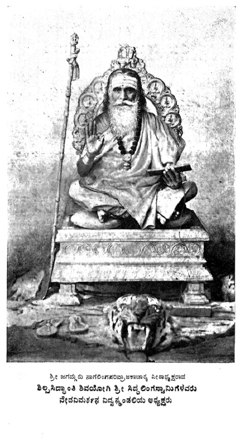

© 2026 Bhargavi Upadhya. The English translation, together with its notes, footnotes and apparatus, is the copyright of Bhargavi Upadhya. All rights reserved.
This text is based on the Kannada edition of the Ṛgveda-saṃhitā with the Sāyaṇa-bhāṣya, edited and translated by Asthāna Mahāvidvān H. P. Venkata Rao and printed at Śrī Śāradā Press, Mysore, 1952, published by the gracious permission of His Highness Śrī Jayacāmarājendra Wadiyar Bahadur, G.C.B., G.C.S.I., Maharaja of Mysore. The cover, portrait and permission page are reproduced from the scanned front matter of that edition; the board of scholars, the preface, the contents and the list of abbreviations are translated.
Numbers and readings are given as supplied. A place that still needs the editor's decision or a second look is marked NOTE in the text; the questions are listed separately. This is a review copy: the translation has not yet been read against the Kannada by a second reader.
[Publisher, ISBN, edition and printing details — to be supplied. Permissions status of the 1952 original and of the portraits — to be confirmed before publication.]

Śrī Jagadguru Nāgaliṅga-parivrājakācārya-pīṭhādhyakṣa
Śilpasiddhānti Śivayogi Śrī Siddhaliṅga Svāmigaḷavaru,
President of the Veda-vimarśana Vidvan-maṇḍali
It will not seem out of place to examine here a few matters concerning the ideas of the sages of the Ṛgvedic age on the primal principle of the universe, on the creation of the universe, and on the deities, together with the stories connected with them.
At the dawn of human history, many problems about the mystery of the universe arose in the minds of the seekers who were pondering the primal principle of the world. In keeping with the ripeness of each mind, personal solutions to those problems also flashed upon those minds absorbed in meditation. Sometimes it appeared that the creation and continuance of the world were the natural transformations of a beginningless material force; at other times, to certain extraordinary intellects, it appeared that the spiritual principle alone is the source of all the affairs of the world. The many kinds of transformations and growths seen running through all parts of nature gave occasion, now to one kind of conception, now to another. One view held that the whole world arose from a principle of non-being (नासदासीन्नो सदासीत् (nāsadāsīnno sadāsīt)); another view, that a principle which was in a subtle state unfolded and gave room to many transformations. Each has set forth ideas in accordance with its own conception of the creation of the world. The Sāṃkhya doctrine, which upholds the theory of natural development (svabhāvavāda), took this second view as its source. That is, the essence of this view is that the world's course is nothing but the primal principle, which was in an extremely subtle state, undergoing natural unfolding and transformation. Or again, there is another view: just as all names and forms hidden in the night come to light after the sun rises in the morning, so all the things of the universe, consisting of name and form, emerged from a beginningless and primordial darkness. तम आसीत्तमसा गूह्कमग्रे (tama āsīttamasā gūhkamagre) (Ṛ. Saṃ. 10-129-3): one part of the Ṛksaṃhitā states that the world of positive being emerged from the darkness that at first pervaded the whole universe. But to say that an orderly universe of positive being emerged from a darkness that is non-being and void did not satisfy the thought of some inquirers. Just as human undertakings, which set a goal and, to attain it, are well organised, well arranged and rooted in resolve, so the orderly operations of nature too must have the well-organised resolve and ordering of a principle of consciousness. A blind, void non-being cannot be the source of the orderly workings of the world. Therefore another view is found in the utterances of some seers, the seers of the Ṛksaṃhitā: that the creation of the world is the fruit of the supreme resolve of a special conscious being.
Another point deserves notice in this connection. Some modern critics hold that the conception of God described in the Upaniṣads and the like differs from the conception of God described in the Ṛksaṃhitā. The difference is this: the essence of the Upaniṣad is that the whole universe, made of the conscious and the unconscious, is subject to the resolve and governance of a single primal principle. In the Ṛksaṃhitā this doctrine of a single principle is not found so much. Nature has many parts, and each part has its own presiding deity; faith in a plurality of deities, holding that the parts are ordered according to the resolve and governance of their respective deities, is what is found in the Ṛksaṃhitā. There is also a view that, on subtle examination, the different deities are only special manifestations of glory of one primal principle, and have no difference of essence. This point has been indicated in a few places in the special-topic sections. Even if these parts are related to one another and so point to a unity within their diversity, each part has its own distinctive character according to the practical distinctions. For each division there must be a presiding deity fixed, who shows a well-ordered rule. Therefore belief in a plurality of deities is clear: each deity must have a distinctive character of its own. But even this cannot be explained with precision. Deities who are described as possessing personal lordship are sometimes described as themselves subject to the governance of another deity. Hence close examination in this matter is indispensable.
The variety of conceptions among the sages of the Ṛgvedic age. The hymns of the Ṛgveda were composed by different sages of different ages. The number of these hymns exceeds a thousand. In all these hymns the sages have expressed their own feelings, both traditional and personal. Settings rich in the variety of nature's wealth must have shown these sages the truth of the variety of the outer world and made their impression on their minds. The sages' powers of imagination began to describe each element in its own way. In one place the star-filled sky; in another the course of the Āditya (the sun) moving through the sky; in another, the clouds that move between earth and sky in many forms, and the lightning-flash and power that arise in them. Thus each setting revealed its own distinctive character, and as a result the sages' feelings, filled with faith and devotion, turned to worshipping those powers. Conceptions of deities reflecting those powers also became possible. Each deity has been praised by each sage in his own way. Yet even in this variety of praise a traditional uniformity is seen. There are no differences of conception in the fundamental nature of the deities. But when their surpassing powers are praised, there are varieties of eulogy.
Before one learns the individual nature and power of these deities, it is necessary to know their number and the explanations, concerning their rank and station, given by the Vedic texts and by works such as the Nirukta that follow Vedic tradition.
The classification of the deities according to Yāska. Following earlier tradition, Yāska has stated the scheme of division of the deities in his Nirukta as follows:—
तिस्र एव देवता इति नैरुक्ताः । अग्निः पृथिवीस्थानः । वायुर्वा इंद्रो वा अंतरिक्षस्थानः । सूरोद्युस्थानः । तासां महाभाग्यात् एकैकस्या अपि बहूनि नामधेयानि भवंति । अपि वा पृथगेव स्युः । पृथक् हि स्तुतयो भवंति । तथा अभिधानानि । (नि ७-५) (tisra eva devatā iti nairuktāḥ | agniḥ pṛthivīsthānaḥ | vāyurvā iṃdro vā aṃtarikṣasthānaḥ | sūrodyusthānaḥ | tāsāṃ mahābhāgyāt ekaikasyā api bahūni nāmadheyāni bhavaṃti | api vā pṛthageva syuḥ | pṛthak hi stutayo bhavaṃti | tathā abhidhānāni | (ni 7-5))
According to the view of the Nairuktas, the number of deities is three. Agni is the deity whose place is the earth; the deity whose place is the atmosphere is Vāyu or Indra; Sūrya is the deity of the heavenly region. The text of the Saṃhitā agrees with this division, and the Nairuktas may have made this division on the basis of such texts. Passages such as सूर्यो नो दिवस्पातु (sūryo no divaspātu) (Ṛ. Saṃ. 10-15-81) are examples. These same deities have many designations, both from their individual greatness and from the variety of their acts. Just as one and the same man, performing the different acts of the sacrifice, is called by different names such as Hotṛ, Adhvaryu, Brahmā, Udgātṛ and so on, so one and the same deity, when presiding over different acts, is designated by names suited to those acts. Or else, since there are differences in the praise of these deities, there may indeed be a difference of essence, and the designations in accordance with that difference may also be different. This is the purport of Yāska's statement. Following these three divisions, Yāska in the fifth chapter of the Naighaṇṭuka has divided the deities' places into three. In the Nirukta, the deities of the earth are treated from chapter 7, section 14 to chapter 9, section 43; the deities of the atmosphere from chapter 10, section 1 to chapter 11, section 50; and the deities of the heavenly world from chapter 12, section 1 to section 46.
Following Yāska's classification, the hymns that praise the deities can also be divided into three. Yāska has made this division of mantras as follows:— (Although this division has no direct connection with the places and numerical varieties of the deities, it is very necessary to know this point.)
ताः त्रिविधा ऋचः । परोक्षकृताः प्रत्यक्षकृताः आध्यात्मिक्यश्च । तत्र परोक्षकृताः सर्वाभिः नामविभक्तिभिः युज्यंते । प्रथमपुरुषैश्च आख्यातस्य ॥ (tāḥ trividhā ṛcaḥ | parokṣakṛtāḥ pratyakṣakṛtāḥ ādhyātmikyaśca | tatra parokṣakṛtāḥ sarvābhiḥ nāmavibhaktibhiḥ yujyaṃte | prathamapuruṣaiśca ākhyātasya ‖) (Ni. 7-1)
The Ṛks that praise the deities are of three kinds: (1) parokṣakṛta, (2) pratyakṣakṛta, and (3) ādhyātmikī; these are the three varieties.
The number of the deities. In many passages of the Ṛksaṃhitā the number of the deities is stated plainly to be 33. For example—
"O Aśvins, come together with the thirty-three deities to drink the nectar." (Ṛ. Saṃ. 1-31-14)
"O Agni, you who have red horses and love praise, bring the thirty-three deities here." (Ṛ. Saṃ. 1-45-2)
"O deities, you are eleven in number in the heavenly world, eleven in the atmosphere, and eleven on the earth." (Ṛ. Saṃ. 1-139-11)
"O Agni, according to the rule, bring the thirty-three deities along with their wives, and satisfy them all." (Ṛ. Saṃ. 3-6-9)
"May the thirty-three deities too, seated on the sacred grass at our sacrificial altar, favour us and give us wealth and the riches of sons and the rest in double measure." (Ṛ. Saṃ. 8-28-1)
"O thirty-three deities, worshipped by Manu, being praised by me as well, destroy our enemies." (Ṛ. Saṃ. 8-30-2)
"O Aśvins, come together with the thirty-three deities, with the deity of the waters, with the Maruts, with the Bhṛgus, with Uṣas and Sūrya, and drink the Soma offered by us." (Ṛ. Saṃ. 8-35-3)
"O Soma, all these thirty-three deities also wait for your favour." (Ṛ. Saṃ. 9-92-4)
Many passages of this kind state precisely this number of the deities, thirty-three. This division is stated not only in the passages of the Ṛksaṃhitā but also in other śruti passages. For example:—
In this passage of the Atharvaveda, ये देवा दिविषदो अंतरिक्षसदश्च ये च इमे भूम्यां अधि (ye devā diviṣado aṃtarikṣasadaśca ye ca ime bhūmyāṃ adhi), although the number thirty-three is not stated, there is the division into those of the earth, those of the atmosphere and those of the heavenly world. In the Sāmaveda passage the account differs slightly. (Atha. Saṃ. 10-9-12)
In this passage, ये देवा दिवि स्थ ये पृथिव्यां ये अंतरिक्षे ओषधीषु पशुषु अप्पु अंतः (ye devā divi stha ye pṛthivyāṃ ye aṃtarikṣe oṣadhīṣu paśuṣu appu aṃtaḥ), there is the division into deities who are in the heavenly world, on the earth, in the atmosphere, those who dwell within the plants, those who are the inner controllers in the animals, and those who are within the waters. (Sā. Saṃ. 1-30-3) NOTE
The passages of the Śatapatha Brāhmaṇa state who these thirty-three deities are:
अष्टौ वसवः । एकादश रुद्रा द्वादशादित्या इमे एव द्यावापृथिवी त्रयस्त्रिग्ंश्यौ त्रयस्त्रिग्ंशद्वै देवाः । प्रजापतिश्चतुस्त्रिग्ंशः ॥ (aṣṭau vasavaḥ | ekādaśa rudrā dvādaśādityā ime eva dyāvāpṛthivī trayastrigṃśyau trayastrigṃśadvai devāḥ | prajāpatiścatustrigṃśaḥ ‖) (Śa. Brā. 4-5-7-2)
"The number of the Vasus is 8, the Rudras 11, the Ādityas 12. Besides, heaven and earth are 2; all together there are 33 deities. If Prajāpati joins them, he becomes the thirty-fourth": thus the number is stated.
Besides this, a discussion too has taken place about this number. In the conversation between Yājñavalkya and Śākalya the matter is set out as follows.
स होवा च । कति देवा याज्ञवल्क्येति त्रयश्च त्रि च शता त्रयश्च त्रि च सहस्रेत्योमिति होवाच । कत्येव देवा याज्ञवल्क्येति त्रयस्त्रिग्ंतदित्योमिति होवाच कत्येव देवा याज्ञवल्क्येतित्रयॆ इत्योमिति होवाच कत्येव देवा याज्ञवल्क्येति द्वावित्योमिति होवाच कत्येव देवा याज्ञवल्क्येत्यध्यर्ध इत्योमिति होवाच कत्येव देवा याज्ञवल्क्येक इत्योमिति होवाच कतमे ते त्रयश्च श्री च शता त्रयश्च श्री च सहस्रेति (sa hovā ca | kati devā yājñavalkyeti trayaśca tri ca śatā trayaśca tri ca sahasretyomiti hovāca | katyeva devā yājñavalkyeti trayastrigṃtadityomiti hovāca katyeva devā yājñavalkyetitrayè ityomiti hovāca katyeva devā yājñavalkyeti dvāvityomiti hovāca katyeva devā yājñavalkyetyadhyardha ityomiti hovāca katyeva devā yājñavalkyeka ityomiti hovāca katame te trayaśca śrī ca śatā trayaśca śrī ca sahasreti) (Śa. Brā. 11-6-3-4) NOTE
Śākalya: O Yājñavalkya, how many are the deities? Yājñavalkya: Three hundred and three; three thousand and three. Śākalya: Truly, tell me how many deities there are. Yājñavalkya: Thirty-three. Śākalya: Say it still more definitely. Yā.: Three. Śā.: Agreed. Say it still more definitely. Yā.: Two. Śā.: That too may be. Say it still more precisely. Yā.: One and a half. Śā.: That too is certainly true. Say it still more exactly. Yā.: One; certainly only one. Śā.: Then what is the meaning of your saying "three hundred and three; three thousand and three"? Tell me. Questioned thus, Yājñavalkya explained again as follows.
स होवाच । महिमान एवैषामेते त्रयस्त्रिग्ंशत्त्वेव देवा इति कतमे ते त्रयस्त्रिग्ंशदित्यष्टौ वसव एकादश रुद्रा द्वादशादित्यास्त एकस्त्रिग्ं शदिंद्रश्चैव प्रजापतिश्च त्रयस्त्रिग्ंशाविति. (sa hovāca | mahimāna evaiṣāmete trayastrigṃśattveva devā iti katame te trayastrigṃśadityaṣṭau vasava ekādaśa rudrā dvādaśādityāsta ekastrigṃ śadiṃdraścaiva prajāpatiśca trayastrigṃśāviti.) (Śa. Brā. 11-6-3-5)
Yājñavalkya: The number of the deities is only thirty-three; the other numbers are designations that tell of their special glories. Śākalya: Who are those thirty-three deities? Yājñavalkya: The Vasus are 8; the Rudras 11; the Ādityas 12; these total 31. Indra and Prajāpati together make 33.
[The difference between the explanation in this passage and that in the passage Śa. Brā. 4-5-7-2 quoted above should be noted.]
This statement of the number is found also in the Mahābhārata passage त्रयस्त्रिंशश्च वै देवाः (trayastriṃśaśca vai devāḥ) (Ma. Bhā. Ā. Pa. 171). The Rāmāyaṇa too states the same number:
आदित्यां जज्जिरे देवास्त्रयस्त्रिंशदरिंदम । आदित्या वसवो रुद्रा अश्विनौ च परंतप ॥ (ādityāṃ jajjire devāstrayastriṃśadariṃdama | ādityā vasavo rudrā aśvinau ca paraṃtapa ‖) (Rāmāyaṇa Ā. Kā. 14-14) NOTE
It says that the twelve Ādityas, the eight Vasus, the eleven Rudras and the Aśvins were born of Aditi. But the Aśvins are included here. When this matter of the number of the deities is examined, the passages of the Aitareya Brāhmaṇa state as follows.
त्रयस्त्रिंशद्वै देवाः सोमपास्त्रयस्त्रिंशदसोमपा अष्टौ वसव एकादश रुद्रा द्वादशादित्याः प्रजापतिश्च वषट्कारश्चैते देवाः सोमपा एकादश प्रयाजा एकादशानुयाजा एकादशोपयाजा एतेऽसोमपाः पशुभाजनाः सोमेन सोमपान् प्रीणाति पशुनाऽसोमपान् (trayastriṃśadvai devāḥ somapāstrayastriṃśadasomapā aṣṭau vasava ekādaśa rudrā dvādaśādityāḥ prajāpatiśca vaṣaṭkāraścaite devāḥ somapā ekādaśa prayājā ekādaśānuyājā ekādaśopayājā ete 'somapāḥ paśubhājanāḥ somena somapān prīṇāti paśunā 'somapān) (Ai. Brā. 2-18).
The deities who drink Soma are 33. The number of deities who do not drink Soma is 33. The eight Vasus, the eleven Rudras and the twelve Ādityas, and also Prajāpati and Vaṣaṭkāra, are Soma-drinkers. The eleven Prayāja deities, the eleven Anuyājas and the eleven Upayājas are not drinkers of Soma; they receive the offering of animals. The sacrificer satisfies the Soma-drinking deities by the offering of Soma, and the non-drinkers by the offering of animals.
Thus, although there is agreement in one respect, in another respect there is no agreement in these numbers. On the Vasus, Rudras and Ādityas, many views are nearly the same. On the thirty-second and thirty-third deities the accounts differ from one another. Moreover, in one or two places there is room for doubt even as to who the Vasus are. (Śa. Brā. 11-6-3-6.)
Therefore the number thirty-three does not indicate a precise meaning everywhere. In some places it is known from separate mention that Agni, the Aśvins and the Maruts are not included in this number. In the passage of the Śatapatha Brāhmaṇa (11-6-3-6) quoted above, Indra is not included among the twelve Ādityas; it states that together with the Ādityas Indra is the thirty-second deity.
In certain passages of the Ṛksaṃhitā, namely in the mantras Ṛ. Saṃ. 3-9-9 and 10-52-6, श्रीणि शता श्री सहस्राणि (śrīṇi śatā śrī sahasrāṇi): it is said that three hundred, three thousand and thirty-nine deities worshipped Agni. NOTE
In another mantra of the Ṛksaṃhitā the company of the deities is divided into elders and youngers. In नमो महद्भो नमो अर्भकेभ्यः (namo mahadbho namo arbhakebhyaḥ) (Ṛ. Saṃ. 1-27-13), the division is made thus: homage to the deities of great nature, and homage also to the younger deities, the little ones. But in contrast to this, in नहि वो अस्यर्भको देवासो न कुमारकः । विश्वे सतोमहांत इत् (nahi vo asyarbhako devāso na kumārakaḥ | viśve satomahāṃta it) (Ṛ. Saṃ. 8-30-1), it is praised thus: O deities, among you there is no difference of elder and younger; you are all of great nature.
The origin of the deities and their immortality. By passages such as विश्वे अमृता अमूराः (viśve amṛtā amūrāḥ) the Ṛksaṃhitā declares all the deities to be free from death. (Ṛ. Saṃ. 1-24-1; 1-72-2; 1-72-10; 1-189-3; 3-4-11; 3-2-1; 4-42-1; 7-11-1; 7-17-4; 10-13-1; 10-65-15; 12-69-9; 10-72-5). NOTE
But they are not declared to be without origin, nor to have arisen of themselves. The scholar Max Muller has said that wherever the origin of the deities is told, it must be understood as merely physical emergence: the emergence of the day, the rising of the sun, the beginning of the year, and so on, are examples. (The following part sets out the account of the origin of the deities.) In Ṛ. Saṃ. 1-113-19, Uṣas is described as the mother of the deities (देवानां माता (devānāṃ mātā)). In Ṛ. Saṃ. 2-26-3, Bṛhaspati is called Brahmaṇaspati... NOTE
Correcting the last sentence: in Ṛ. Saṃ. 2-26-3 Brahmaṇaspati is called the father of the deities. In 9-87-2 Soma is called one who has skill in making and the father of the deities. (The same matter is stated in the mantras 9-42-4; 9-86-10; 9-109-4 and others.) In 9-96-5 the same Soma is praised as the begetter of heaven and earth and of the deities Agni, Sūrya, Indra and Viṣṇu. Mantra 10-72-5 states in praise that the deities were born following Aditi. In the verse 10-97-1 it is stated that some plants were born three ages before the deities. Mantra 10-129-6 shows that because the deities were born only after the creation of the universe, they could not explain the origin of the universe or the order of creation. Besides this, the mantras quoted below state the manner of the deities' origin as follows.
"All the deities were born from the Ucchiṣṭa." (Atha. Saṃ. 11-7-23)
"From this very ocean all the deities and all beings arose."
एतस्माद्वै समुद्रात् सर्वे देवाः सर्वाणि भूतानि समुद्द्रवंति (etasmādvai samudrāt sarve devāḥ sarvāṇi bhūtāni samuddravaṃti) (Śa. Brā. 14-2-2-2)
"Varuṇa, Mitra, Aryaman, Bhaga, Dakṣa and Aṃśa: these deities are the sons of Aditi; therefore they are the Ādityas." (2-27-1)
The origin of Indra and the mention of his mother and father are indicated in many places. (4-17-4; 1-17-12; 4-18-5; 4-18-12; 8-45-4; 8-66-1; 10-134-1) Niṣṭigrī is Indra's mother (10-101-12). In 6-59-2 it is praised that Indra and Agni have one and the same begetter and that the two are twin children: समानो वां जनिता भ्रातरा युवं यमाविहेह मातरा ॥ (samāno vāṃ janitā bhrātarā yuvaṃ yamāviheha mātarā ‖) NOTE
ये वो देवाः पितरो ये च पुत्राः (ye vo devāḥ pitaro ye ca putrāḥ) (Atha. Saṃ. 1-30-2)
In this Atharvaveda passage, "O deities, those among you who are fathers and those who are sons", the relation of begetter and begotten is set out.
Immortality. In Ṛ. Saṃ. 4-54-2 it is said that Savitṛ bestows immortality on the deities (Sāyaṇa interprets the word अमृतत्वं (amṛtatvaṃ) in this passage as meaning that he bestowed Soma and the like, which bring about immortality). The same Savitṛ is praised in 1-110-3 as having granted the Ṛbhus also freedom from death. A few more passages that describe the same idea may be examined by way of example. "The deities who worship Agni, who was born in the form of a child and appeared from the womb of his fathers: to those deities Agni, by his greatness, grants immortality." (6-7-4)
"The deities drink Soma to gain immortality." (9-106-8) NOTE
On this very matter a story-setting is related in the Śatapatha Brāhmaṇa as follows:—
देवेभ्यो ह वै अमृतत्वमपचक्राम । अभिषुत्य अग्नावजुहवुः । तदग्नावमृतवाददुः..........ततो देवा अमृता अभवन् ॥ (devebhyo ha vai amṛtatvamapacakrāma | abhiṣutya agnāvajuhavuḥ | tadagnāvamṛtavādaduḥ..........tato devā amṛtā abhavan ‖) (Śa. Brā. 9-5-1-1 to 8)
Once the deities lost immortality. But they wished to gain it again by the practice of vows and rites. Then they offered Soma in Agni and caused Agni to obtain immortality. Since Agni is the self of all the deities, immortality came to them also at once. Soma alone is the means of immortality. By the power of this Soma Indra conquered the world of the gods (10-167-1) and, offering the oblation in the form of Soma, obtained greatness (18-159-4). NOTE
In passages such as य्येन देवा अमृतमन्वविंदन् (yyena devā amṛtamanvaviṃdan) the Atharvaveda praises Agni as the one who brings immortality to all the deities (Ā. Ve. 4-23-6). NOTE ब्रह्मचर्येण तपसा देवाः मृत्युमपाघ्नत (brahmacaryeṇa tapasā devāḥ mṛtyumapāghnata): the same Veda states that the deities destroyed death by celibate discipline and austerity (Atha. Ve. 9-5-19). NOTE It is also said once that they obtained immortality with the help of Rohita. (Ā. Ve. 13-1-7)
Thus the idea that the deities gained immortality through vows and the like is indicated in many places: Ā. Ve. 3-22-3; 4-11-6; 4-14-1; Śa. Brā. 1-7-3-1; Ai. Brā. 6-20; Tai. Saṃ. 1-7-1-3; 6-5-3-1.
तथैव तपसा देवा महामाया दिवं गताः (tathaiva tapasā devā mahāmāyā divaṃ gatāḥ) (Mahābhārata)
On this same matter of the attainment of immortality, interesting settings are related in the Śatapatha Brāhmaṇa and also in the Taittirīya Saṃhitā.
प्रजापतिं वै भूतान्युपासीदन्........यज्ञो वोऽन्नममृतत्वं च (prajāpatiṃ vai bhūtānyupāsīdan........yajño vo 'nnamamṛtatvaṃ ca) (Śa. Brā. 2-4-2-1)
Once all beings approached Prajāpati and prayed, "Instruct us in the way by which we may live." At the same time the deities too came wearing the sacrificial thread, bowed and prayed; and he said, "The sacrifice is your food. Immortality is the essence. And the Āditya is the light." The same matter is stated in a somewhat different way in the Taittirīya Saṃhitā as follows.
यथा वै मनुष्या एवं देवा अग्र आसन् तेऽकामयंतावर्तिं पाप्मानु मृत्युमपहत्य दैवीग्० संग० सदं गच्छमेति.........गच्छन् ॥ (yathā vai manuṣyā evaṃ devā agra āsan te 'kāmayaṃtāvartiṃ pāpmānu mṛtyumapahatya daivīg0 saṃga0 sadaṃ gacchameti.........gacchan ‖) (Tai. Saṃ. 7-4-2-1)
In the beginning the deities were just like human beings. They wished to cross over the desire, sorrow and death natural to human beings and to go and join the assembly of the gods. Then they meditated on a rite called Caturviṃśatirātra and performed it; as a result they were freed from the fear of sorrow and death and joined the assembly of the gods. Likewise the Taittirīya Brāhmaṇa too, in तपसा देवा देवतामग्र आयन् (tapasā devā devatāmagra āyan) (Tai. Brā. 3-12-3-1), states that the deities obtained divinity through austerity alone.
Some śruti passages state that certain deities, such as Indra, are by nature ageless and immortal. (3-46-1; 5-42-6) "Neither the autumns (śarad means the year), nor the months, nor the days can bring old age upon Indra." (6-24-7)
On the question whether this immortality of the deities, like the immortality of the Supreme Reality, is endless or limited, the Saṃhitā passages state no opinion. But from the explanations of the Brāhmaṇas and the like it is understood to be limited. The Purāṇic passages that describe the creation and dissolution of the universe declare the deities too to be a part of the universe's structure, and state definitely that at the time of the universe's dissolution the deities too come under the law of dissolution.
बहूनींद्रसहस्राणि देवानां च युगे युगे । कालेन समतीतानि कालो हि दुरतिक्रमः (bahūnīṃdrasahasrāṇi devānāṃ ca yuge yuge | kālena samatītāni kālo hi duratikramaḥ) (Sāṃkhyakārikābhāṣya)
This matter is made clear by passages of this kind. It becomes plain that Indra and all the other deities too are subject to the law of time and bound to the order of creation and dissolution. The Sāṃkhya Sūtra teaches that the sorrow of old age, death and the like is common to gods, humans and all (Sā. Sū. 3-53). The commentary on this sūtra explains this idea still more fully. But some hold that this rule does not apply to liberated souls. The Brahma Sūtra and the like strengthen this conviction.
The variety of the deities' lineages and their mutual relations. In the preceding section the origin of the deities has been examined closely. Mothers and fathers are mentioned for some deities. This point helps in understanding the varieties of the deities' lineages. First, some mantras that tell of the begetters and begotten of the deities should be examined.
"O Indra, who made your mother a widow? Who wished to destroy you, whether you were asleep or moving about? When you seized your father by the foot and killed him, which deity was near you?" (4-18-12) In explaining the bhāṣya on this mantra, which has this purport, Sāyaṇa has cited as an example this episode stated in the Taittirīya Saṃhitā. As stated in the Taittirīya Saṃhitā, the account of this episode is as follows:—
"The sacrifice, desiring to possess the dakṣiṇā, obtained union with her; for that reason it became joined with her. Indra was afraid of this union. Thinking, 'The person who will be born of their union will become this world,' he himself entered the womb of that dakṣiṇā. Born from that womb, fearing that the person who would be born again from that womb would become this world, he tore that womb apart. From it the cow came into being." (Tai. Saṃ. 6-1-3-6)
In this example shown by Sāyaṇa there is no statement that Indra was the cause of his father's death. Nevertheless this setting shows that the relation of begetter and begotten exists among the deities too, and that it is the source of the growth of lineage. Besides this, expressions such as "former age" and "first age" also explain this point (10-72-3; 10-72-4 and others). The purport of the phrase यत्र पूर्व साध्याः संति देवाः (yatra pūrva sādhyāḥ saṃti devāḥ) in the mantras 1-164-50 and 10-90-16 deserves consideration in this connection.
The writers of the Nirukta state that Sādhyas has been interpreted to mean the deities of the heavenly region (Ni. 12-41). According to another account, the former time means the age of the gods. The Aitareya Brāhmaṇa holds that the metres are the Sādhyas (Ai. Brā. 1-16). Sāyaṇa explains that the Ādityas and the Aṅgirases are called Sādhyas. In many places the Sādhyas are praised as belonging to the special classes of deities, as guides to sacrifices and the like, and as having gained a superior world by the performance of sacrifices and other rites. The scholar Wilson too has approved and explained this view. But Mahīdhara's commentary on mantra 31-17 of the Vājasaneyi Saṃhitā suggests that these meanings are not so well founded. According to that commentary the company of the deities is of two parts: the deities are of two groups, karmadevāḥ and ājānadevāḥ. One group are those who obtained divinity by their own supreme acts; the other group are the deities who have divinity from birth. The Bṛhadāraṇyaka states that those belonging to the second order of this classification are the greater. Since other meanings are thus possible, the scholar Wilson has said: "It would seem that in Sayana's day, the purport of the designation Sādhya had become uncertain" — that is, in Sāyaṇa's time it was not possible to give a precise meaning to this word.
The passages above suggest that the groups of deities could thus have been distinct. It cannot be said that these groups were always in mutual friendship. The explanation of mantras such as Ṛ. Saṃ. 4-30-5 and 4-31-5 does not support this point; but even for these mantras the explanation differs from one commentator to another.
The power and authority of the deities. "The deities may act freely in any way they please. No man, nor even the strongest enemy, can hinder their works." (8-28-4) In mantra 8-2:-17 there is similar praise of the Maruts. Mantras 8-50-4 and 8-55-4 describe Indra's power and state this point. The passages quoted below describe the extraordinary power of the deities. NOTE
"No one, however powerful, can hinder the excellent and steadfast vows (works) of the deities." (3-56-1)
"The lordship of the deities extends over all the worlds." (10-65-15)
"May the deities not lead us by any path other than Manu's path." (8-30-3)
"No one can live beyond the hundred years fixed by the deities." (10-33-9)
"The deities make all desired ends achievable. None can help more than they." (10-64-2)
"In all the regions that Viṣṇu strode over with his three steps, the deities rejoice." (8-29-7)
"Who knows the way that leads to the abode of the deities? Their place in the lower world is ordinarily visible. But there is another region, beyond this, secret and beyond the reach of human sight." (3-54-5)
"Only one who drinks Soma gains immortality and attains knowledge of the deities." (8-48-3)
"The deities honour with the gift of reward those who are engaged in the performance of sacrifices and other rites. They punish those who fail in the rites." (8-2-18)
"The chariot of the master who worships the deities brings victory in all sacrifices. The man who, as sacrificer, pleases the deities gains the power to defeat those who fail in the rites." (8-3-15)
मनो ह वै देवाः मनुष्यस्य आजानंति............ते अस्य गृहेषूपवसंति (mano ha vai devāḥ manuṣyasya ājānaṃti............te asya gṛheṣūpavasaṃti) (Śa. Brā. 1-1-1-7)
The deities know fully the desire of the human being. If, meditating on them alone, one offers them oblations and the like at the proper time, they come to the house of such a master, dwell there and favour him.
In these Vedic passages quoted above are described the powers and the surpassing authority that belong generally to the whole company of the deities. The individual qualities of each deity will be examined as occasion arises.
To publish such a Ṛgveda Saṃhitā, extremely ancient, extremely profound, extremely vast and the foundation of all the śāstras, in simple Kannada together with a critical translation is not an easy task. Nevertheless, with the weighty purpose that all people, scholars and laymen alike, may gain growth in knowledge from so great an undertaking and become worthy of God's grace, His Highness Śrī Jayacāmarājendra Oḍeyar Bahadur, G.C.B., G.C.S.I., Lord of the throne of Karnataka, patron of Vedic learning, himself a scholar, beloved of his subjects and devoted to God, is encouraging, by his generous patronage, the publication of this work, which requires great expense; this must be called the good fortune of the people of Karnataka. For our generous-minded Lord, for his family, for the Princess (who bears the name of the mantra Gāyatrī, regarded as the foremost of the Vedic mantras), for the second Princess, and for the whole body of subjects as well, I pray that the Lord of all, the Veda-Puruṣa, may bestow still more abundantly worldly fruits such as long life, health, prosperity and every wealth, and the knowledge of the Self that leads to the highest good.
Mysore, Nandana year, Kārttika Bahula Daśamī, Wednesday, dated 12—11—52.
Translator: H. P. Venkata Rao, Court Mahāvidvān.
Śrī. Salutation to Gaṇādhipati.
Invocation verses:
वागीशाद्याः सुमनसः सर्वार्थानामुपक्रमे । यं नत्वा कृतकृत्याः स्युस्तं नमामि गजाननं ॥ (vāgīśādyāḥ sumanasaḥ sarvārthānāmupakrame | yaṃ natvā kṛtakṛtyāḥ syustaṃ namāmi gajānanaṃ ‖)
यस्य निश्वसितं वेदा यो वेदेभ्योऽखिलं जगत् । निर्ममे तमहं वंदे विद्यातीर्थमहेश्वरं ॥ (yasya niśvasitaṃ vedā yo vedebhyo 'khilaṃ jagat | nirmame tamahaṃ vaṃde vidyātīrthamaheśvaraṃ ‖)
वेदः शिवः शिवो वेदो वेदाध्यायी सदाशिवः । तस्मात्सर्वप्रयत्नेन वेदमेव सदा जपेत् ॥ (vedaḥ śivaḥ śivo vedo vedādhyāyī sadāśivaḥ | tasmātsarvaprayatnena vedameva sadā japet ‖)
Ṛgveda Saṃhitā with Sāyaṇa's commentary (with the Kannada translation of the meaning and explanation). Part 18.
Third Aṣṭaka, sixth Adhyāya.
Fourth Maṇḍala. The nineteenth Sūkta in the fourth Maṇḍala.
Introduction
This sūkta was seen by the seer Vāmadeva. We have described the seer Vāmadeva briefly at the beginning of this maṇḍala, that is, in Part 17. This Vāmadeva is the son of the seer Gotama. Of the sūktas of this fourth maṇḍala, sūktas 1–7 (in all 206 ṛks); in sūkta 18, verses 2–3½ and 8–13 (in all 8½ ṛks); sūktas 19–41 (in all 239 ṛks); and 45–58 (in all 107 ṛks) — all of these together make a total of 560½ ṛks, for which he is the seer. In the previous part the 18 sūktas of this maṇḍala were completed, and now this part begins with the 19th sūkta.
चतुर्थे मंडले द्वितीयानुवाकेऽष्ट सूक्तानि व्याख्यातानि । एवा त्वामिंद्रेत्येकादशर्चं नवमं सूक्तं । तस्य मंडलादिपरिभाषया नामदेव ऋषिः । अनादेशपरिभाषया त्रिष्टुप् छंदः । इंद्रो देवता । तथा चानुक्रांतं । एवैकादशेति ॥ अग्निष्टोमे माध्यंदिनसवने मैत्रावरुणशस्त्र इदं सूक्तं । सूत्रते हि । एवा त्वामिंद्रोशन्नु षु णः सुमना उपाक इति याज्या । आ. ५-१६ । इति ॥ पृष्ठाभिप्लवषडहयोः प्रथमेऽहनि मैत्रावरुणशस्त्रेऽहीनसूक्तं तत्स्थाने श्रीणि संपातसूक्तानि । तत्रेदं प्रथमं सूक्तं । सूत्रितं च । एवा त्वामिंद्र यन्न इंद्रः । आ. ७-५ । इति ॥
Eight sūktas of the second anuvāka of the fourth maṇḍala have been expounded. The ninth sūkta, "Evā tvām indra", has eleven ṛks. By the maṇḍala-rule its seer is नामदेव (nāmadeva)NOTE. By the rule for what is not specified, the metre is Triṣṭubh; the deity is Indra. So the Anukramaṇī: एवैकादश (evaikādaśa). In the Agniṣṭoma, at the midday pressing, this sūkta is used in the Maitrāvaruṇa śastra. For it is stated in the sūtra: एवा त्वामिंद्रोशन्नु षु णः सुमना उपाक इति याज्या (evā tvāmiṃdrośannu ṣu ṇaḥ sumanā upāka iti yājyā) (Ā. 5-16). In the Pṛṣṭhya and Abhiplava ṣaḍahas, on the first day, in the Maitrāvaruṇa śastra, in place of the Ahīna sūkta three Sampāta sūktas are used; of these this is the first. It is also stated in the sūtra: एवा त्वामिंद्र यन्न इंद्रः (evā tvāmiṃdra yanna iṃdraḥ) (Ā. 7-5).
Kannada Anuvāda
The Anuvāda: In the previous part, eight sūktas in the second anuvāka of this fourth maṇḍala were explained. The sūkta now to be explained, "Evā tvām indra", is the ninth sūkta in the second anuvāka. The seer of this sūkta is Vāmadeva himself, the seer of the maṇḍala; the metre is Triṣṭubh; the deity is Indra. In the Anukramaṇī it is stated beginning with "Evaikādaśa". In the Agniṣṭoma sacrifice, at the time of the midday pressing, this sūkta is applied for the recitation of the Maitrāvaruṇa śastra mantras, as is explained in the Āśvalāyana Śrauta Sūtra: "Evā tvām indrośan nu ṣu ṇaḥ sumanā upāka iti yājyā" (Ā. 5-16). In the sacrifices called Pṛṣṭha and Abhiplava ṣaḍaha, when reciting the Maitrāvaruṇa śastra mantras on the first day, three Sampāta sūktas are to be recited in place of reciting the Ahīna sūkta. Among them this sūkta is the first. This matter is explained by the sūtra of the Āśvalāyana Śrauta Sūtra, "Evā tvām indra yan na indraḥ" (Ā. 7-5).
Sūkta 19. Maṇḍala 4; Anuvāka 2; Sūkta 19. Aṣṭaka 3; Adhyāya 6; Varga 1, 2. Number of ṛks in the sūkta: 11. Ṛṣi: Vāmadeva. Devatā: Indra. Chandas: Triṣṭubh.
ए॒वा त्वामिं॑द्र वज्रि॒न्नत्र॒ विश्वे॑ दे॒वासः॑ सु॒हवा॑स॒ ऊमाः॑ ।
म॒हामु॒भे रोद॑सी वृ॒द्धमृ॒ष्टं निरेक॒मिद्वृ॑णते वृत्र॒हत्ये॑ ॥
evā tvāmiṃdra vajrinnatra viśve devāsaḥ suhavāsa ūmāḥ |
mahāmubhe rodasī vṛddhamṛṣṭaṃ nirekamidvṛṇate vṛtrahatye ‖
एव । त्वां । इंद्र । वज्रिन् । अत्र । विश्वे । देवासः । सुहवासः । ऊमाः ।
महां । उभे इति । रोदसी इति । वृद्धं । ऋष्टं । निः । एकं । इत् । वृणते ।
वृत्रहत्ये ॥ १ ॥
eva | tvāṃ | iṃdra | vajrin | atra | viśve | devāsaḥ | suhavāsaḥ | ūmāḥ |
mahāṃ | ubhe iti | rodasī iti | vṛddhaṃ | ṛṣṭaṃ | niḥ | ekaṃ | it | vṛṇate |
vṛtrahatye ‖ 1 ‖
अत्रास्मिन्यज्ञे वज्रेन् हे वज्रवन्निंद्र सुहवासः सुहवाः शोभनाह्वाना ऊमा रक्षका विश्वे देवासः सर्वॆ देवा उभे रोदसी द्यावापृथिव्यौ च एवैवमुक्तप्रकारेण स्तूयमानं महां महांतं प्रभूतं वृद्धं गुणैः प्रवृद्धमृष्टं दर्शनीयं त्वामेकमिदेकमेव वृत्रहत्ये वृत्रहननार्थं निर्वृणते । निःशेषेण संभजंते ॥
In this sacrifice, O Indra, wielder of the thunderbolt; all the gods, who are सुहवासः (suhavāsaḥ), "of good invocation" (well invoked), and ऊमाः (ūmāḥ), protectors; and both heaven and earth: in the manner stated, they all praise you, who are great (महां (mahāṃ), large, abundant), grown by your qualities, and ऋष्टं (ṛṣṭaṃ), worth beholding. You alone they निर्वृणते (nirvṛṇate) — they resort to you completely (निःशेषेण संभजंते (niḥśeṣeṇa saṃbhajaṃte)) — for the slaying of Vṛtra.
O Indra, wielder of the thunderbolt, all the gods, who are invoked with devotion in this sacrifice and are protectors, and also heaven and earth, worship you alone and pray to you for the slaying of Vṛtra. No one other than you is capable of this task. You are one with an attractive form, possessed of grown, great qualities. Therefore they trust in you alone for this task and pray to you.
Indra, wielder of the thunderbolt, all the protecting deities who are reverently invoked, and both the heaven and the earth, glorify you who are verily one alone, mighty, vast, and pleasing of aspect, for the destruction of Vritra.
वज्रिन् इंद्र अत्र सुहवासः ऊमाः विश्वे देवासः उभे रोदसी एव महां वृद्धं ऋष्टं त्वां एकमित् वृत्रहत्ये निः वृणते (vajrin iṃdra atra suhavāsaḥ ūmāḥ viśve devāsaḥ ubhe rodasī eva mahāṃ vṛddhaṃ ṛṣṭaṃ tvāṃ ekamit vṛtrahatye niḥ vṛṇate)—O Indra, who bear the thunderbolt weapon, all the gods call upon you in prayer for the slaying of Vṛtra. Those gods have been invoked by us in this sacrifice for the protection of the sacrifice. All such gods, together with heaven and earth, honour you alone — the great one, who shine well on the sacrificial ground and have a gentle form — and have prayed to you for the slaying of Vṛtra. For it is not possible for others than you to destroy Vṛtra; therefore in this matter they do not pray to other gods but pray to you alone: this is the main intention.
चित् (cit)NOTE—Yāska, saying that the particle चित् (cit) is used in many kinds of meanings (चिदित्येषोऽनेककर्मा (cidityeṣo 'nekakarmā)), explained the meaning by giving examples: आचार्यश्चिदिदं ब्रूयादिति पूजायां (ācāryaścididaṃ brūyāditi pūjāyāṃ), दधिचिदित्युपमार्थे (dadhicidityupamārthe), कुल्माषांश्चिदाहरेत्यवकुत्सिते (kulmāṣāṃścidāharetyavakutsite). In the sentence आचार्यश्चिद् (ācāryaścid) it is used in the sense of honour; in the sentence दधिचित् (dadhicit) in the sense of comparison; and in कुल्माषांश्चिद् (kulmāṣāṃścid) in the sense of disparagement. Here Sāyaṇa, describing the meaning as used in the sense of honour, has said that this explains Indra's greatness and surpassing capacity.
अवा॑सृजंत॒ जिव्र॑यो॒ न दे॒वा भुवः॑ स॒म्राळिं॑द्र स॒त्ययो॑निः ।
अह॒न्नहिं॑ परि॒शया॑न॒मर्णः॒ प्र व॑र्त॒नीर॑रदो वि॒श्वधे॑नाः ॥ २ ॥
avāsṛjaṃta jivrayo na devā bhuvaḥ samrāḷiṃdra satyayoniḥ |
ahannahiṃ pariśayānamarṇaḥ pra vartanīrarado viśvadhenāḥ ‖ 2 ‖
अव । अस्यजंत । जिव्रयः । न । देवाः । भुवः । संराट् । इंद्र । सत्ययोनिः ।
अहन् । अहिं । परिशयानं । अर्णः । प्र । वर्तनीः । अरदॆः । विश्वधेनाः ॥ २ ॥
ava | asyajaṃta | jivrayaḥ | na | devāḥ | bhuvaḥ | saṃrāṭ | iṃdra | satyayoniḥ |
ahan | ahiṃ | pariśayānaṃ | arṇaḥ | pra | vartanīḥ | aradèḥ | viśvadhenāḥ ‖ 2 ‖
हे इंद्र देवास्तां जीवयो न जीर्णाः प्रवृद्धाः पितरो यूनः पुत्रानिवानासृजंत । असुरवधार्थं प्रैरयन् । ततो हे इंद्र सत्ययोनिः सत्यनिवासस्त्वं
O Indra, the gods sent you forth, as जीर्णाः प्रवृद्धाः पितरो (jīrṇāḥ pravṛddhāḥ pitaro) — aged, grown fathers — send forth young sons: they impelled you for the slaying of the asurasNOTE. Thereupon, O Indra, you, the abode of truth (satyanivāsaḥ), … (the sentence continues on the next page).
सम्राट् सर्वेषां लोकानामधीश्वरो भुवः । अभवः । अर्ण उदकं लक्ष्मीकृत्य परिशयानं परितः समंताच्छयनं कुर्वंतमहिं वृत्रासुरमहन् । अवधीः । विश्वधेना विश्वस्य प्रीणयित्रीर्वर्तनीः सर्वत्र प्रवर्तिका नदीः प्रारदः । प्रकर्षण विलेखनं कृतवानसि । इंद्रो वृत्रं हत्वा तेनावृतान्न्युदकानि प्रवाहरूपेण प्रवर्तयतीत्यर्थः ॥
… you became सम्राट् (samrāṭ), the overlord of all the worlds (भुवः (bhuvaḥ) = अभवः (abhavaḥ)). You slew Ahi, the asura Vṛtra, who lay all around (परिशयानं (pariśayānaṃ)), having made the water (अर्णः (arṇaḥ)) his object. विश्वधेनाः (viśvadhenāḥ): pleasing the whole world; वर्तनीः (vartanīḥ): rivers flowing everywhere; you scored them out (प्रारदः (prāradaḥ) — drawn out with force). The meaning: Indra, having slain Vṛtra, sets flowing in the form of streams the waters enclosed by him.
O Indra, as the aged send forth their young sons, the gods impelled you and sent you forth for the slaying of the asuras. Only after that did you, the source of truth, become lord of gods, humans and all. You destroyed Vṛtra the asura, who lay blocking all around, facing the water. You cleft the rivers, which are dear to the whole world and spread all around, and made them flow easily.
As elders (send forth their young), so the gods have sent you (against Vritra) : thence you became, Indra who are the abode of truth, the sovereign of the world : you have slain the slumbering Ahi for (the release of) the water, and have marked out (the channels of) the all delighting rivers.
इंद्र जिव्रयो न देवाः अवासृजंत (iṃdra jivrayo na devāḥ avāsṛjaṃta)—प्रवृद्धाः पितरो यूनः पुत्रानिव असुरवधार्थं प्रैरयन् (pravṛddhāḥ pitaro yūnaḥ putrāniva asuravadhārthaṃ prairayan). In the world, parents send their sons — who are youthful, firm of limb and full of energy — to accomplish difficult tasks, or to conquer enemies in battles and the like; that is indeed proper.
Likewise, the gods all together impelled Indra to destroy the exceedingly powerful Vṛtra: this is the intention.
सत्ययोनिः साम्राट् भुवः (satyayoniḥ sāmrāṭ bhuvaḥ)—O Indra, you are the one who is the support of truth, the lord of gods and of humans. Such a you are capable of destroying the asura Vṛtra.
अर्णः परिशयानं अहिं अहन् (arṇaḥ pariśayānaṃ ahiṃ ahan)—O Indra, you destroyed Vṛtra the asura, who lay spread all around the water in the cloud-region, blocking it so that the water would not fall on the earth: this is the intention. This same intention was explained earlier by the seer Hiraṇyastūpa in the ṛk अहन्नहिमन्वपस्ततर्द (ahannahimanvapastatarda) (Ṛ. Saṃ. 1-32-1).
अर्णः (arṇaḥ) — विश्वधेनाः वर्तनीः प्र अरदः (viśvadhenāḥ vartanīḥ pra aradaḥ)—You made the rivers, which delight all people, flow in their beds. That is, after the slaying of Vṛtra the waters he had held back fell on the earth through rain, and, in the form of rivers, providing food and the like to all people and satisfying them, they flow in the prepared paths, that is, in the river-beds. Indra is praised: "You have done such a mighty deed."
अतृ॑ष्णुवंतं॒ विय॑तमबु॒ध्यमबु॑ध्यमानं सुषुपा॒णमिं॑द्र ।
स॒प्त प्रति॑ प्र॒वत॑ आ॒शया॑न॒महिं॒ वज्रे॑ण॒ वि रि॑णा अप॒र्वन् ॥ ३ ॥
atṛṣṇuvaṃtaṃ viyatamabudhyamabudhyamānaṃ suṣupāṇamiṃdra |
sapta prati pravata āśayānamahiṃ vajreṇa vi riṇā aparvan ‖ 3 ‖
अतृष्णुवंतं । वियतं । अबुध्यं । अबुध्यमानं । सुसुपानं । इंद्र ।
सप्त । प्रति । प्रवतः । आशयानं । अहिं । वज्रेण । वि । रिणाः । अपर्व्वन् ॥ ३ ॥
atṛṣṇuvaṃtaṃ | viyataṃ | abudhyaṃ | abudhyamānaṃ | susupānaṃ | iṃdra |
sapta | prati | pravataḥ | āśayānaṃ | ahiṃ | vajreṇa | vi | riṇāḥ | aparvvan ‖ 3 ‖
हे इंद्र त्वमतृप्नुवंतं भोगेष्वतृप्यंतं वियतं शिथिलांगमबुध्यं दुर्विज्ञानमबुध्यमानं किमप्यजानंतं सुषुपाणं सुप्तं सप्त सर्पणस्वभावाः
O Indra, you [slew] the one atṛpnuvaṃtaṃ, not satisfied in enjoyments; वियतं (viyataṃ), with loosened limbs; अबुध्यं (abudhyaṃ), hard to understand; अबुध्यमानं (abudhyamānaṃ), knowing nothing at all; सुषुपाणं (suṣupāṇaṃ), asleep; सप्त (sapta) seven, having the nature of creeping … (the block breaks off here; the next window continues).
प्रवतोऽपः प्रत्याशयानमावृत्य तिष्ठंतमहिं वृत्रमपर्वन् अपर्वणि पौर्णमास्यां वज्रेण वि रिणाः । व्यरिणाः । विशेषेण हतवानसि । पौर्णमास्यां वृत्रवधस्त्वष्टा हतपुत्र इत्यनुवाके घ्नंति वा एनं पौर्णमास आमावास्यायां प्याययंतीति तैत्तरीयेऽप्युक्तः । तै. सं. २-५-२-५ ॥
Sāyaṇa takes up the remaining words of the verse. The waters flow downward (प्रवतः (pravataḥ)), and Ahi, that is Vṛtra, lay across them, enclosing them. Indra, he says, "slew" (व्यरिणाः (vyariṇāḥ), "you killed in a special way") this Vṛtra with the thunderbolt अपर्वन् (aparvan), "on a day that is not a joint (parvan)", that is, on the full-moon day. He says that the slaying of Vṛtra on the full moon is also stated in the Taittirīya: in the anuvāka beginning "Tvaṣṭṛ, whose son had been slain" and containing the words घ्नंति वा एनं पौर्णमास आमावास्यायां प्याययंतीति (ghnaṃti vā enaṃ paurṇamāsa āmāvāsyāyāṃ pyāyayaṃtīti) (Tai. Saṃ. 2-5-2-5).
O Indra, Vṛtrāsura was never satisfied with enjoyments, his limbs were slack, he was so deceitful that his very nature could not be understood, he had no knowledge whatever, he lay sluggish in a sleeping state, and he lay enclosing the flowing waters all around, facing them. On the full-moon day you have split and killed him with the thunderbolt.
On the day of full moon you have slain with the thunderbolt the insatiable, unnerved, ignorant, un-apprehending, slumbering Ahi, ob- structing the gliding-down-ward-flowing (streams).
This Ṛk describes the evil nature of Vṛtrāsura. However many enjoyments Vṛtra may enjoy, he is never satisfied; his limbs are not firm; his nature is unknown to anyone; he has no good understanding. It is his nature always to lie obstructing the waters. This Ṛk describes how Indra killed Vṛtra, a being of such base nature, with the thunderbolt on the day of the full moon. On this matter the Bhāṣyakāra has quoted a passage of the Taittirīya Saṃhitā and shown that the fact of Indra's having slain Vṛtra on the full-moon day is stated in it. Indra's slaying of Vṛtra
has been praised by all the Ṛṣis, so it is necessary to give here a detailed account of that slaying of Vṛtra. We therefore set out here the mantra portion of the Yajurveda which gives that account, together with its meaning: त्वष्टा हतपुत्रो वींद्रग्ं सोममाहरत्तस्मिन्निंद्र उपहवमैच्छत तं नोपाह्वयत पुत्रं मेऽवधीरिति स यज्ञवेशसं कृत्वा प्रासहा सोममपिबत्तस्य यदत्यशिष्यत तत्त्वष्टाहवनीयमुप प्रावर्तयत्साहेंद्रशत्रुर्वर्धस्वीति यदवर्तयत्तद्वृत्तस्य वृत्रत्वं यदब्रवीत्साहेंद्रशत्रुर्वर्धस्वीति तस्मादस्येंद्रः शत्रुरभवत्स संभवन्नग्नीषोमावभि समभवत्स इषुमात्रमिषुमात्रं विश्वज्जवर्धत स इमान् लोकानवृणोद्यदिमान् लोकानवृणोत्तद्वृत्तस्य वृत्रत्वं तस्मादिंद्रोऽबिभेश् ॥ (tvaṣṭā hataputro vīṃdragṃ somamāharattasminniṃdra upahavamaicchata taṃ nopāhvayata putraṃ me 'vadhīriti sa yajñaveśasaṃ kṛtvā prāsahā somamapibattasya yadatyaśiṣyata tattvaṣṭāhavanīyamupa prāvartayatsāheṃdraśatrurvardhasvīti yadavartayattadvṛttasya vṛtratvaṃ yadabravītsāheṃdraśatrurvardhasvīti tasmādasyeṃdraḥ śatrurabhavatsa saṃbhavannagnīṣomāvabhi samabhavatsa iṣumātramiṣumātraṃ viśvajjavardhata sa imān lokānavṛṇodyadimān lokānavṛṇottadvṛttasya vṛtratvaṃ tasmādiṃdro 'bibheś ‖) (Kṛ. Saṃ. 2-5-2-1)NOTE In this anuvāka the account of Indra's slaying of Vṛtra is given. There is another story that forms the background of this narrative. Although we have explained it earlier, it is necessary to explain it here again briefly, as a preface to the account that follows. Formerly Tvaṣṭṛ Prajāpati had a son named Viśvarūpa. He was the priest of the gods. But since he was born of an Asura woman, he had a special partiality for the Asuras. Indra feared that this Viśvarūpa, though he was the priest of the gods, being partial to the Asuras, might watch for an opportunity, help the Asuras, and plot so that the gods should have no kingdom at all. So Indra killed him by another device. This is what is said here by the sentence त्वष्टा हतपुत्रः वींद्रग्० सोममाहरत् (tvaṣṭā hataputraḥ vīṃdrag0 somamāharat). In anger that Indra had killed his son, Tvaṣṭṛ, when he performed a sacrifice, did not invite Indra to it but performed it leaving him out. He did not give him Soma to drink either. Enraged at this, Indra came to his sacrifice, obstructed it, and moreover drank by force the Soma juice that had been prepared for the sacrifice. Seeing this, Tvaṣṭṛ thought that he must take fitting revenge on Indra; he poured the Soma juice that Indra had left over into the Āhavanīya fire and, praying to Agni with स्वाहेंद्रशत्रुर्वर्धस्व (svāheṃdraśatrurvardhasva)—"may a son be born who will conquer Indra and be Indra's enemy"—offered the remainder of the Soma in the fire. While he made the offering, there was an error of accent in the mantra, and so, instead of a son who would conquer Indra, there came a son who would be conquered by Indra. This son was Vṛtra. Such was the manner of his origin. That an error of accent when reciting mantras in a sacrifice and the like brings harm to the sacrificer, is stated by
दुष्टः शब्दः स्वरतो वर्णतो वा मिथ्याप्रयुक्तो न तमर्थमाह । स वाग्वज्रो यजमानं हिनस्ति यथेंद्र शत्रुः स्वरतोऽपराधत् ॥ (duṣṭaḥ śabdaḥ svarato varṇato vā mithyāprayukto na tamarthamāha | sa vāgvajro yajamānaṃ hinasti yatheṃdra śatruḥ svarato 'parādhat ‖) (Pāṇīya-śilpa)NOTE The great sage Pāṇini has taken this very mantra as his example. Thus, because of the error of accent in the mantra, there was born to Tvaṣṭṛ, instead of a son who would subdue Indra as he wished, a son who would be slain by Indra. Even so, that Vṛtra grew in the fire by the oblation offered to Agni and the Soma deities. Growing every day by the measure of a bow, he became of huge form and pervaded all these worlds everywhere. Because he had the nature of pervading all regions in this way, he was named Vṛtra. The word Vṛtra is formed from the root वृञ् वरणे (vṛñ varaṇe), meaning "to cover, to enclose, to pervade", and indicates the meaningful name "one who pervades everything". Seeing Vṛtra grow in this way, Indra was afraid. स प्रजापतिमुसाधावञ्छतुर्मेऽजनीति तस्मै वज्रग्ं सिक्ता प्रायच्छदेतेन जहीति तेनाभ्यायत । (sa prajāpatimusādhāvañchaturme 'janīti tasmai vajragṃ siktā prāyacchadetena jahīti tenābhyāyata |) Then Indra went to Prajāpati and prayed: "O Brahmā, an enemy has been born to me. How shall I slay him?" Prajāpati comforted Indra, telling him not to fear, made his thunderbolt sharp, and gave it to him, saying, "Slay your enemy with this weapon." Indra took it and came to Vṛtra. तावब्रूतामग्नीषोमौ मा प्रहारावमंतः स्व इति मम वै युवग्स् स्थ इत्य ब्रवीन्मामभ्येतमिति तौ भागधेयमैच्छेतां ताभ्यामेतमग्नीषोमीयमेकादशकपालं पूर्णमासे प्रायच्छत्तावब्रूतामभि संदष्टौ वै स्वो न शक्नुव ऐतुमिति स इंद्र आत्मनः शीतरूरावजनयत्तच्छीतरूरयोर्जन्मय एवग्ं शीतरूरयोर्जन्म वेद नैनग्ं शीतरूरौ हतस्ताभ्यामेनमभ्यनयत्तस्माज्जंजभ्यमानादग्नीषोमौ निरक्रामतां ॥ (tāvabrūtāmagnīṣomau mā prahārāvamaṃtaḥ sva iti mama vai yuvags stha itya bravīnmāmabhyetamiti tau bhāgadheyamaicchetāṃ tābhyāmetamagnīṣomīyamekādaśakapālaṃ pūrṇamāse prāyacchattāvabrūtāmabhi saṃdaṣṭau vai svo na śaknuva aitumiti sa iṃdra ātmanaḥ śītarūrāvajanayattacchītarūrayorjanmaya evagṃ śītarūrayorjanma veda nainagṃ śītarūrau hatastābhyāmenamabhyanayattasmājjaṃjabhyamānādagnīṣomau nirakrāmatāṃ ‖) Then, when Indra was ready to strike Vṛtra with his weapon, Agni and Soma stopped him, saying, "Do not strike." "O Indra, do not strike Vṛtra now. We, the deities Agni and Soma, dwell in Vṛtra's mouth." Indra said, "O Agni and Soma, you are ours, are you not? So leave Vṛtra's body and come to me. Afterwards I shall slay Vṛtra." Hearing this, the deities Agni and Soma said, "O Indra, if we do as you say, what favour will you do us? If you will provide a share for us also in the sacrifice, we shall do as you say." Indra agreed to this and provided for them
a portion of the oblation in the Pūrṇamāsa sacrifice, the puroḍāśa oblation called Ekādaśakapāla. Then, although the deities Agni and Soma had obtained the boon they wanted, they said to Indra: "O Indra, we cannot now come out of Vṛtra's mouth. We are caught between Vṛtra's teeth and held tight. Unless he opens his mouth we cannot come out." Then Indra thought of a device for this. From his own body he created cold fever and the great heat that arises from it. This was the first time that cold fever afflicted people in the world. The man who knows this manner of origin of cold fever is not troubled by this cold fever. Then Indra took the cold fever he had created, led it to Vṛtrāsura, and made it enter his body. Vṛtrāsura, shivering with cold and exhausted by the heat of the fever, opened his mouth wide to sigh in his weariness. At once the deities Agni and Soma came out of his mouth. प्राणापानौ ना एनं तदजहितां प्राणो वै दक्षोपानः क्रतुस्तस्माज्जंजभ्यमानो ब्रूयान्मयि दक्षक्रकू इति प्राणापानावेवात्मन्धत्ते सर्वमायुरेति । (prāṇāpānau nā enaṃ tadajahitāṃ prāṇo vai dakṣopānaḥ kratustasmājjaṃjabhyamāno brūyānmayi dakṣakrakū iti prāṇāpānāvevātmandhatte sarvamāyureti |) Then the breaths called prāṇa and apāna left that Vṛtra; that is, they departed from his body. The word prāṇa here has the meaning "dakṣa" and the word apāna has the meaning "kratu". Dakṣa means skill in work, intelligence; kratu means the bodily strength and capacity that works. Both of these left that Vṛtra who had his mouth open. Therefore, while performing a sacrificial rite, if one makes a movement of the body or yawns and opens the mouth, one must then utter the mantra मयि दक्षक्रतू (mayi dakṣakratū). If one does so, the prāṇa and apāna do not leave the sacrificer but stay firm, and long life also results. स देवता वृत्रान्निर्हूय वार्त्र्घ्नग्ं हविः पूर्णमासे निरवपद् घ्नंति वा एनं पूर्णमास आमावास्यायां प्याययंति तस्माद्वार्त्र्घ्नी पूर्णमासेऽनूच्येते वृधन्यत्ती अमावास्यायां । (sa devatā vṛtrānnirhūya vārtrghnagṃ haviḥ pūrṇamāse niravapad ghnaṃti vā enaṃ pūrṇamāsa āmāvāsyāyāṃ pyāyayaṃti tasmādvārtrghnī pūrṇamāse 'nūcyete vṛdhanyattī amāvāsyāyāṃ |) Then Indra called out from Vṛtrāsura's mouth all the deities, Agni, Soma and the others, and prepared on the full-moon day the offering consisting of the ājya portions and the oblation substance, which is the means of slaying Vṛtra. It is known to everyone, even in worldly experience, that the enemy called darkness, which covers everything everywhere, is destroyed by the bright moonlight of the full moon. But
on the new-moon day there is no light of the moon, so at that time the enemy called darkness (Vṛtra) spreads everywhere and grows. Therefore, for the slaying of Vṛtra, on the full-moon day, before the oblations called the Agni-Soma ājya portions, the following Ṛks are to be recited as puroʼnuvākyā mantras: अग्निर्वृत्राणि जंघनद्द्रविणस्युर्विपन्यया । समिद्धः शुक्र आहुतः । (agnirvṛtrāṇi jaṃghanaddraviṇasyurvipanyayā | samiddhaḥ śukra āhutaḥ |) (Ṛ. Saṃ. 6-16-34) त्वं सोमासि सत्पतिस्त्वं राजोत वृत्रहा । त्वं भद्रो असि क्रतुः ॥ (tvaṃ somāsi satpatistvaṃ rājota vṛtrahā | tvaṃ bhadro asi kratuḥ ‖) (Ṛ. Saṃ. 1-91-5) Because in both these Ṛks there are words that denote the slaying of Vṛtra, these Ṛks are called Vārtraghnī Ṛks. For it was on the full-moon day that Vṛtra was slain. Therefore it is fitting on that day to recite the Ṛks that relate to the slaying of Vṛtra and to perform the homa. On the new-moon day darkness has increased; that is, Vṛtra, who pervades everything with darkness, grows. Therefore on that day the following Ṛks, containing words formed from the root वृधि-वृद्धौ (vṛdhi-vṛddhau), which denotes growth, are to be recited: अग्निः प्रश्नेन मन्मना शुंभमानस्तन्वं १ स्वां । कविर्विप्रेण वावृधे ॥ (agniḥ praśnena manmanā śuṃbhamānastanvaṃ 1 svāṃ | kavirvipreṇa vāvṛdhe ‖) (Ṛ. Saṃ. 8-44-12) सोम गीर्भिष्ट्वा वयं वर्धयामो वचोविदः । सुमृळीको न आ विश ॥ (soma gīrbhiṣṭvā vayaṃ vardhayāmo vacovidaḥ | sumṛḷīko na ā viśa ‖) (Ṛ. Saṃ. 1-91-11) These Ṛks, which contain words denoting growth, are called Vṛdhanvatī Ṛks. They are to be recited on the new-moon day, when darkness has grown. तत्सर्गस्थाप्य वार्त्रघ्नग्ं हनिर्वज्रमादाय पुनरभ्यायत ते अब्रूतां द्यावापृथिवी मा प्रहारावयोर्वै श्रित इति ते अब्रूतां वरं वृणावहै नक्षत्रविहिताहमसानीत्यसावब्रवीच्चित्रविहिताहमितीयं तस्मान्नक्षत्रविहितासौ चित्रविहितेयं य एवं द्यावापृथिव्योर्वरं वेदैनं वरो गच्छति स आभ्यामेव प्रसूत इंद्रो वृत्रमहन् । (tatsargasthāpya vārtraghnagṃ hanirvajramādāya punarabhyāyata te abrūtāṃ dyāvāpṛthivī mā prahārāvayorvai śrita iti te abrūtāṃ varaṃ vṛṇāvahai nakṣatravihitāhamasānītyasāvabravīccitravihitāhamitīyaṃ tasmānnakṣatravihitāsau citravihiteyaṃ ya evaṃ dyāvāpṛthivyorvaraṃ vedainaṃ varo gacchati sa ābhyāmeva prasūta iṃdro vṛtramahan |) Then Indra completely performed the ājya portion and the oblations that are the means of slaying Vṛtra, and, as before, took the thunderbolt in his hand and rushed forward to face Vṛtra, with the intention of killing him.
Then Dyāvāpṛthivī (earth and the intermediate region) stopped Indra and said: "O Indra, do not kill this Vṛtra. He pervades the whole region from the earth up to heaven. He rests on us, and we cannot give him up." When Indra did not agree, Dyāvāpṛthivī again said to Indra: "O Indra, if we are to give room for the slaying of Vṛtra, you must grant the boons we ask." Indra said, "Let it be so." Then the sky (dyauḥ) asked as a boon that it should be adorned with stars. The earth asked as a boon that it should be furnished with many kinds of wonderful things, such as men, animals, trees, mountains, rivers and oceans. Indra granted the boons accordingly. The man who knows this manner in which Dyāvāpṛthivī obtained their boons obtains what he desires and is happy. Then Indra, having obtained the consent of Dyāvāpṛthivī, struck Vṛtra with the thunderbolt and killed him. ते देवा वृत्रग्ं हत्वाग्नीषोमावब्रुवन् हव्यं नो वहतमिति तावब्रूतामपतेजसौ वै त्र्यौ वृत्रे नै त्ययोस्तेज इति तेऽब्रुवन् क इदमच्छैतीति गौरित्यब्रुवन्गौर्वाव सर्वस्य मित्रमिति साब्रवीद्वरं वृणै मय्येव सतोभयेन भुनजाध्वा इति तद्गौराहरत्तस्माद्दवि सतोभयेन भुजंत एतद्वा अग्नेस्तेजो यद्धृतमेतत्सोमस्य यत्पयो य एवमग्नीषोमयोस्तेजो वेद तेजस्वीव भवति । (te devā vṛtragṃ hatvāgnīṣomāvabruvan havyaṃ no vahatamiti tāvabrūtāmapatejasau vai tryau vṛtre nai tyayosteja iti te 'bruvan ka idamacchaitīti gaurityabruvangaurvāva sarvasya mitramiti sābravīdvaraṃ vṛṇai mayyeva satobhayena bhunajādhvā iti tadgaurāharattasmāddavi satobhayena bhujaṃta etadvā agnestejo yaddhṛtametatsomasya yatpayo ya evamagnīṣomayostejo veda tejasvīva bhavati |) After the slaying of Vṛtra, all the gods who were near Indra said to Agni and Soma: "O deities Agni and Soma, you have now come back from Vṛtra's mouth. From now on, carry the oblations offered in sacrifices and the like and present them to us." Agni and Soma said to the gods: "O gods, we were for a long time in Vṛtra's body, and through his biting and the like we have become deprived of brilliance; that is, our strength has dwindled. All our strength, or brilliance, has remained in Vṛtra." Then the gods consulted among themselves how to bring back the brilliance that Agni and Soma had left in Vṛtra's body, and decided to send the cow and have the brilliance in Vṛtra brought, since the cow harms no one and behaves with friendliness towards all. Then they called the cow and told it to bring the brilliance that was in Vṛtra. It said: "So be it; but the brilliance I bring must always remain in me in the form of milk and ghee. People must obtain them from me and use them for their meals and the like. If you grant this boon, I shall bring it." The gods said "So be it" and granted the boon accordingly. Having obtained the boon, the cow brought that brilliance. As the result of this granting of a boon, even now the people of the world obtain from cows, from time to time, nourishing food such as milk and ghee, and
…they eat their meal. Here ghee, or धृत (dhṛta), is said to be the brilliance of Agni. For that very reason, in sacrifices and the like, people make oblations into Agni with ghee and make the fire blaze up. Milk is said to be the brilliance of Soma. For Soma is liquid like milk, and to enhance the taste of the Soma juice milk is mixed with it. This is called गवाशिर (gavāśira). By mixing milk in this way the brilliance, or essence (the taste), of Soma increases. The man who knows the greatness of these brilliances of Agni and Soma becomes brilliant.
ब्रह्मवादिनो वदंति किंदेवत्यं पौर्णमासमिति प्राजापत्यमिति ब्रूयात्तेनेंद्रं ज्येष्ठं पुत्रं निरवासाययदिति तस्माज्जैष्ठं पुत्रं धनेन निरवासयंति ॥ (brahmavādino vadaṃti kiṃdevatyaṃ paurṇamāsamiti prājāpatyamiti brūyātteneṃdraṃ jyeṣṭhaṃ putraṃ niravāsāyayaditi tasmājjaiṣṭhaṃ putraṃ dhanena niravāsayaṃti ‖) (Tai. Saṃ. 2-5-2-1 to 7)
The Brahmavādins ask who is the deity of this sacrifice called Paurṇamāsya. The answer to be given is that Prajāpati is the deity presiding over the sacrifice. But in this sacrifice Prajāpati has no share of the oblation at all; so how is Prajāpati the deity of this sacrifice? The reply: in the beginning Prajāpati created all the sacrifices. This is stated in the Śruti sentence—
प्रजापतिर्यज्ञानसृजताग्निहोत्रं चाग्निष्टोमं च पौर्णमासीं चोक्ष्यं चामानास्यां चातिरात्रं च ॥ (prajāpatiryajñānasṛjatāgnihotraṃ cāgniṣṭomaṃ ca paurṇamāsīṃ cokṣyaṃ cāmānāsyāṃ cātirātraṃ ca ‖) (Tai. Saṃ. 1-5-9-1)
That is, it is said here that Prajāpati created all the sacrifices: Agnihotra, Agniṣṭoma, Paurṇamāsī (the sacrifice performed on the full-moon day), Ukṣya, Amāvāsyā (the sacrifice performed on the new-moon day), Atirātra and so on. All the sacrifices created by Prajāpati became his own property. Therefore, as is customary in worldly dealings, that is, as one gives one's property to one's eldest son, Prajāpati handed over the principal deityship of these sacrifices to his eldest son Indra. This is stated in the very same Taittirīya Saṃhitā passage: तेनेंद्रं निरवासाययत्तेनेंद्रः परमां काष्ठामगच्छत् (teneṃdraṃ niravāsāyayatteneṃdraḥ paramāṃ kāṣṭhāmagacchat). Hence all the oblations offered to the son Indra in the Paurṇamāsya sacrifice are to be understood as offered to the father Prajāpati. For this reason it is customary to say that the sacrifice called Paurṇamāsya is Prājāpatya, that is, related to Prajāpati. Following this practice, even now in worldly dealings it is customary for a father to give all his property, wealth and the rest, to his eldest son.
अक्षो॑दय॒च्छव॑सा॒ क्षाम॑ बु॒द्धं वार्ण वात॒स्तवि॑षीभि॒रिंद्रः॑ ।
दृ॒ळ्हान्सौ॑भ्नादु॒शमा॑न॒ ओजोऽवा॑भिनत्क॒कुभः॒ पर्व॑तानां ॥ ४ ॥
akṣodayacchavasā kṣāma buddhaṃ vārṇa vātastaviṣībhiriṃdraḥ |
dṛḷhānsaubhnāduśamāna ojo 'vābhinatkakubhaḥ parvatānāṃ ‖ 4 ‖
अक्षोदयत् । शवसा । क्षाम । बुद्धं । वाः । न । वातः । तविषीभिः । इंद्रः ।
दृळ्हानि । औभ्नात् । उशमानः । ओजः । अव । अभिनत् । ककुभः । पर्वतानां ॥ ४ ॥
akṣodayat | śavasā | kṣāma | buddhaṃ | vāḥ | na | vātaḥ | taviṣībhiḥ | iṃdraḥ |
dṛḷhāni | aubhnāt | uśamānaḥ | ojaḥ | ava | abhinat | kakubhaḥ | parvatānāṃ ‖ 4 ‖
इंद्रः परमैश्वर्ययुक्तः शवसा बलेन बुध्ममंतरिक्षं क्षाम क्षीणोदकमक्षोदयत् । संपिपेष । तत्र दृष्टांतः । वातो वायुस्तविषीभिर्बलैर्वार्न उदकमिव तद्वत् । किंच ओजो बलमुशमानः कामयमान इंद्रो दृळ्हानि दृढानि स्थिराण्यप्यभ्राण्यौभ्यात् । अभांक्षेत् । तथा पर्वतानां गिरीणां ककुभः पक्षानवाभिनत् । अत्यंतमभैत्सीत् ॥
Indra, endowed with supreme lordship, by his strength (शवसा (śavasā)) crushed (संपिपेष (saṃpipeṣa)) the firmament (budhmaṃ), क्षाम (kṣāma), i.e. with its water exhausted (अक्षोदयत् (akṣodayat)). The illustration: as the wind (वातः (vātaḥ)) with its forces (तविषीभिः (taviṣībhiḥ)) agitates water (वाः (vāḥ)). Further, Indra, desiring (उशमानः (uśamānaḥ)) strength (ओजः (ojaḥ)), broke (औभ्नात् (aubhnāt), अभांक्षेत् (abhāṃkṣet)) even the firm, stable clouds (दृळ्हानि (dṛḷhāni)); and he utterly split (अवाभिनत् (avābhinat)) the ककुभः (kakubhaḥ) of the mountains, i.e. their wings (पक्षान् (pakṣān)).
As the wind with its forces makes water tumultuous, the lord Indra, by his strength, shook the firmament and made the water pour down. Desiring to display his valour, Indra split the firm mountains. He split also the peaks (wings) of the mountains.
Indra, by his strength, has agitated the exhausted firmament, as wind, by its violent (gusts, agitates) the water : exulting in his strength, he has divided the solid (clouds), and has shattered the peaks of the mountains.
वातः तविषीभिः वाः न इंद्रः शवसा बुध्नं क्षाम अक्षोदयत् (vātaḥ taviṣībhiḥ vāḥ na iṃdraḥ śavasā budhnaṃ kṣāma akṣodayat)—As the wind, by blowing swiftly, throws the water of the sea and other reservoirs into turmoil, full of great waves and agitated, so Indra, by his great power, made the firmament, that is, the mass of clouds in the firmament, tumultuous, and made the clouds pour down rain. This is the purport.
ओजः उशमानः दृळ्हानि औभ्नात्, पर्वतानां ककुभः आवाभिनत् (ojaḥ uśamānaḥ dṛḷhāni aubhnāt, parvatānāṃ kakubhaḥ āvābhinat)—Indra, desiring strength, that is, exceedingly strong, split the mountains and the like that stand firmly fixed on the earth without moving, and he split (cut) the peaks or wings of those mountains. In this Ṛk the deeds of daring that others cannot perform are described: striking the clouds and producing rain, splitting the immovable mountains and so on; the description is that Indra's power and capacities are unfathomable. About Indra cutting the wings of the mountains there are many tales in the Purāṇas and elsewhere. There are accounts that when the mountains were first created they had wings; flying about and settling on villages and cities they destroyed them and tormented the people, so Indra cut off their wings with his thunderbolt and made them unable to move, and hence the mountains got the name "immovable".
The words तविषी (taviṣī), शवः (śavaḥ), ओजः (ojaḥ) are read among the names of strength. For the word ककुभः (kakubhaḥ) the commentator explains the meaning as पक्षान् (pakṣān), wings. But Yāska reads this word among the names of the quarters and explains it as directions (Ni. 2-15). Besides, regarding ककुप् (kakup) Yāska gives the etymology ककुप् ककुभिनी भवति । ककुष्ट कुजतेर्वोब्बतीर्वा । (kakup kakubhinī bhavati | kakuṣṭa kujatervobbatīrvā |) (Ni. 7-12). That is, ककुप् (kakup) is a variety among the metres called उष्णिक् (uṣṇik). Because in metres of this class one pāda contains the pāda of the Jagatī metre, this metre is called ककुप् (kakup). The word is derived from the root कुजति (kujati), which indicates a crooked nature, and
indicates the sense of being crooked. That is, though it belongs to the Uṣṇik metre, it does not follow its order but contains in the middle the order of the Jagatī metre and so is crooked in manner; this is the purport.
अ॒भि प्र द॑द्रु॒र्जन॑यो॒ न गर्भं॒ रथा॑ इव॒ प्र य॑युः ॒॑ सा॒कमद्र॑यः ।
अत॑र्पयो वि॒स्कृत॑ उ॒ब्ब ऊ॒र्मिन्त्वं वृ॒ता अ॑रिणा इंद्र॒
सिंधून् ॥ ५ ॥
abhi pra dadrurjanayo na garbhaṃ rathā iva pra yayuḥ
sākamadrayaḥ |
atarpayo viskṛta ubba ūrmintvaṃ vṛtā ariṇā iṃdra
siṃdhūn ‖ 5 ‖
अभि । प्र । दद्रुः । जनयः । न । गर्भं । रथाः इव । प्र । ययुः । साकं । अद्रयः ।
अतर्पयः । विस्कृतः । उब्बः । ऊर्मिन् । त्वं । वृतान् । अरिणाः । इंद्र । सिंधून् ॥
abhi | pra | dadruḥ | janayaḥ | na | garbhaṃ | rathāḥ iva | pra | yayuḥ | sākaṃ | adrayaḥ |
atarpayaḥ | viskṛtaḥ | ubbaḥ | ūrmin | tvaṃ | vṛtān | ariṇāḥ | iṃdra | siṃdhūn ‖
हे इंद्र त्वामद्रयो मरुतो जनयो जवन्यो गर्भं न पुत्रमिवाभि प्र दद्रुः । अभिजग्मुः । किंच रथा इव रंहणशीला रथा यथा तथा वृत्रवधार्थं त्वया साकं प्र ययुः । प्रकर्षेणायासिषुः । हे इंद्र त्वं विसृतो विसरणशीला नदीरतर्पयः । अद्भिरपूरयः । तथोर्मान्मेघानुब्बः । अवधीः । तथा त्वं वृतान्वृत्रेणावृतान् सिंधूनपोऽरिणाः । प्रैरयः ॥
O Indra, the Maruts (अद्रयः (adrayaḥ)), the swift (जनयः (janayaḥ)), ran towards you as to a child (गर्भं न (garbhaṃ na)), अभि प्र दद्रुः (abhi pra dadruḥ), i.e. came to you. Further, like swift chariots they went forth with you for the slaying of Vṛtra, प्र ययुः (pra yayuḥ), i.e. advanced vigorously. O Indra, you filled with waters the spreading rivers (विस्कृतः (viskṛtaḥ)), अतर्पयः (atarpayaḥ). Likewise you struck down the clouds (ऊर्मिन् (ūrmin)), उब्बः (ubbaḥ), अवधीः (avadhīḥ). And you urged forth (अरिणाः (ariṇāḥ), प्रैरयः (prairayaḥ)) the waters (सिंधून् (siṃdhūn)) that were enclosed (वृतान् (vṛtān)) by Vṛtra.
O Indra, as mothers lovingly run to meet their children and join them, the Maruts lovingly ran to meet you and joined you. And like swift chariots they have rushed forward together with you. O Indra, you filled with waters the rivers that spread widely. You split the clouds. And you urged to flow the waters enclosed by Vṛtra.
The Maruts have hastened to you like mothers to their young : like chariots they have rushed in along (with you); you, Indra, have satisfied the flowing streams: you have shattered the clouds : you have set free the obstructed rivers.
In this Ṛk too there is a description of Indra's greatness. The first half of the Ṛk describes how the Maruts, dear to you, ran lovingly towards you and joined you, as mothers who have been parted a little while from their children run to them in great haste, and as chariots move swiftly. Here the commentator explains the word अद्रयः (adrayaḥ) as the Maruts. The word अद्रि (adri) is read among the names of water (Ni. 2-24) and among the names of mountains. For this word Yāska gives the etymology [अद्रिवन्—अद्रिरादृणोत्येतेन (adrivan—adrirādṛṇotyetena) (Ni. 4-4): since Indra is one who is honoured, he has the name अद्रिवन् (adrivan); आद्रयः आदरणीयाः (ādrayaḥ ādaraṇīyāḥ) (Ni. 9-9): those worthy of being honoured. Since here the Maruts are dear to Indra, and since Indra and the Maruts are always companions (see Ṛ. Saṃ. Part 8, page 172), it is fitting that the Maruts are indicated by the word अद्रयः (adrayaḥ). And you split the clouds that were covered by Vṛtra and gave no rain, and made them rain on the earth. By that rain-water the rivers that were dry and lean became full of water and flowed: thus Indra's daring deed is set out in the second half of this Ṛk.
त्वं म॒हीम॒वनिं॑ वि॒श्वधे॑नां तु॒र्वीत॑ये व॒य्या॑य॒ क्षरं॑तीं।
अर॑मयो॒ नम॒सैज॒दर्णः॑ सुतर॒णा अ॑कृणोरिंद्र॒ सिंधू॑न् ॥६॥
tvaṃ mahīmavaniṃ viśvadhenāṃ turvītaye vayyāya kṣaraṃtīṃ|
aramayo namasaijadarṇaḥ sutaraṇā akṛṇoriṃdra siṃdhūn ‖6‖
त्वं । महीं । अवनिं । विश्वधेनां । तुर्वीतये । वय्याय । क्षरंतीं ।
अरमयः । नमसा । विजत् । अर्णः । सुतरणान् । अकृणोः । इंद्र । सिंधून् ॥ ६ ॥
tvaṃ | mahīṃ | avaniṃ | viśvadhenāṃ | turvītaye | vayyāya | kṣaraṃtīṃ |
aramayaḥ | namasā | vijat | arṇaḥ | sutaraṇān | akṛṇoḥ | iṃdra | siṃdhūn ‖ 6 ‖
हे इंद्र त्वं महीं महतीं विश्वधेनां विश्वस्य प्रीणयित्रीं तुर्वीतये तुर्वीतिनाम्ने राजे वय्याय वय्यनाम्ने च क्षरंतीमभीष्टान् कामान्दुहतीमवनिं भूमिं नमसान्नेनैजदेजता चलतार्णोऽर्णसोदकेन चारमयः । रमयसि । इंद्रः पृथिवीमन्नोदकसमृद्धां करोतीत्यर्थः । किंच हे इंद्र त्वं सिंधून् जलानि सुतरणान् सुष्टु तीर्णान्यकृणोः । अकार्षिः ॥
O Indra, you make the earth (अवनिं (avaniṃ)), great (महीं (mahīṃ)), the satisfier of all (विश्वधेनां (viśvadhenāṃ)), yielding (क्षरंतीं (kṣaraṃtīṃ)) desired wishes, for the king named Turvīti (तुर्वीतये (turvītaye)) and for Vayya (वय्याय (vayyāya)), rejoice (अरमयः (aramayaḥ)) with food (नमसा (namasā)) and with the moving (ejat) water (अर्णः (arṇaḥ)); the meaning is that Indra makes the earth rich in food and water. Further, O Indra, you made the rivers (सिंधून् (siṃdhūn)), the waters, easy to cross (सुतरणान् (sutaraṇān), अकृणोः (akṛṇoḥ), अकार्षिः (akārṣiḥ)).
O Indra, with the purpose of being favourable to the king named Turviti and the king named Vayya, you have made the earth, which is great, satisfying to the whole world, and yields the desired object, rejoice, filled with food and with flowing water. You have made the rivers full of water easy to cross.
English Translation.
You have made the vast, all-cherishing, and exuberant earth, delighted with (abundant) food, and tremulous water, for (the sake of) Turviti and Vayya: you have made the rivers easy to be crossed.
This Ṛk says that Indra helped Turviti and Vayya. The two names Turviti and Vayya are usually used together, but in some places the name of Turviti alone occurs. Western scholars such as Ludwig hold that Turviti was a king of the peoples called Turvaśa and Yadu. But no adequate support for this is found. Probably he was a chief belonging to the Turvaśa people. In the Ṛgveda his name is recited in the present Ṛk and also in these Ṛks: अरमयस्सरपसस्तराय कं तुर्वीतये च वय्याय च । (aramayassarapasastarāya kaṃ turvītaye ca vayyāya ca |) (Ṛ. Saṃ. 2-13-12) त्वमाविध नर्यं तुर्वशं यदुं त्वं तुर्वितिं वय्यं शतक्रतो । (tvamāvidha naryaṃ turvaśaṃ yaduṃ tvaṃ turvitiṃ vayyaṃ śatakrato |) (Ṛ. Saṃ. 1-54-6) In these Ṛks it is described that Indra helped them to cross the river. Besides, the name of Turviti occurs in the Ṛgveda in the Ṛks Ṛ. Saṃ. 1-36-18; 1-61-11; 1-112-23, and the name of Vayya is also recited.
प्राग्रुवो॑ नभ॒न्वो॒३॒॑ ३ न वक्वा॑ ध्व॒स्रा अ॑पिन्वद्युन॒तीर्यु॑त॒ज्ञाः ।
धन्वा॒न्यज्रा॑ अप्पणक्तृषा॒णा अधो॒गिंद्रः॑ स्त्॒रयो॒३॒॑ ३ दंसु॑पत्नीः ॥ ७ ॥
prāgruvo nabhanvo 3 na vakvā dhvasrā apinvadyunatīryutajñāḥ |
dhanvānyajrā appaṇaktṛṣāṇā adhogiṃdraḥ strayo 3 daṃsupatnīḥ ‖ 7 ‖
प्र । अग्रुवः । नभन्वः । न । वक्वाः । ध्वस्राः । अपिन्वत् । युवतीः । ऋतज्ञाः ।
धन्यानि । अज्रान् । अप्पणक् । तृषाणान् । अधोक् । इंद्रः । स्त्यर्यः । दंसुपत्नीः ॥
pra | agruvaḥ | nabhanvaḥ | na | vakvāḥ | dhvasrāḥ | apinvat | yuvatīḥ | ṛtajñāḥ |
dhanyāni | ajrān | appaṇak | tṛṣāṇān | adhok | iṃdraḥ | styaryaḥ | daṃsupatnīḥ ‖
इंद्रो नभन्वः शत्रूणां हिंसिका वक्वा न सेना इव ध्वस्राः कॊलानां ध्वंसिका युवतीरद्भिर्मिश्रिता ऋतज्ञा ऋतस्यान्नस्य जनयित्रीरग्रुवः । आग्रुव इति नदीनामैतत् । अग्रगामिनीर्नदीः प्रापिन्वत् । प्रकर्षेणापूरयत् । तथा धन्वानि निर्जलानुन्नतान्देशांश्च वृष्ट्यापृणक् । अपूरयत् । तथाज्रान्मार्गस्य गंत्यन् तृषाणान् पिपासया युक्तान् पुरुषानपृणक् । अपूरयत् । किंच इंद्रो दंसुपत्निः । दमनपरा असुराः सुष्टु पतयो यासां ताः स्तर्यः स्तरीर्निवृत्तप्रसवा गा अधोक् । अधुक्षत् । इंद्रो राक्षसकृतनिरोधदुःखान्निरुद्धप्रसवा आपि गा विमुच्य सप्रसवाश्च कारेत्यर्थः ॥
Indra, नभन्वः (nabhanvaḥ), destroyer of enemies, like armies (वक्वा (vakvā)) ध्वस्राः (dhvasrāḥ), destroyers of the banks, युवतीः (yuvatīḥ), mixed with waters, ऋतज्ञाः (ṛtajñāḥ), producers of ṛta, that is, food, अग्रुवः (agruvaḥ) — "āgruvaḥ" is a name of rivers — filled to the full the rivers that go forward. Likewise he filled with rain the धन्वानि (dhanvāni), waterless and elevated regions. Likewise he filled the अज्रान् (ajrān), travellers on the road, and the तृषाणान् (tṛṣāṇān), men afflicted with thirst. Moreover Indra is दंसुपत्निः (daṃsupatniḥ): the Asuras bent on subduing are the good lords of those cows; the स्तर्यः (staryaḥ) are barren cows whose bearing has ceased. Indra milked them. Having released cows whose bearing had been stopped by the suffering of confinement imposed by the Rākṣasas, he made them bear again.
Indra filled with waters the rivers which, like armies destructive of enemies, destroy their banks, are full of water, and produce food. He made the lands that were a desert for want of rain fertile by filling them with water. He satisfied with water those wearied by travelling and those wearied by thirst. He made the barren cows, which had fallen under the lordship of the Asuras, give milk.
English Translation. Indra has filled the youthful rivers, the parents of plenty, the corroders (of their banks), like armies destructive (of their foes), he has inundated the dry lands, and (satisfied) the thirsty travellers : he has milked the barren cows whom the Asuras had become the lords of.
In this Ṛk some benefactions done by Indra for the world are described. The rivers, with their waters, help the people of the world in agriculture and the like, and supply them with food. If there is no water in these rivers, or very little, they cannot do this work. Therefore Indra filled these rivers with water by rainwater and made them flow in full current. By pouring rain on the earth he made the land that had been a desert fertile. And to wayfarers travelling on the roads he supplied water from the rain, so that their thirst was quenched. Besides, the cows (which, confined among the Asuras called Paṇis, had no proper food and so were emaciated and barren, giving no milk) he satisfied with abundance of grass and made them give milk. That Indra did all these benefactions to the world — thus the excess of Indra's kindness is described here.
पू॒र्विरु॒षसः॑ श॒रद॑श्च गू॒र्ता वृ॒त्रं ज॑घ॒न्वा अ॑सृज॒द्वि सिंधू॑न् ।
परि॑ष्ठिता अतृणद्बद्धा॒नाः सी॒रा इंद्रः॒ स्रवि॑तवे पृथि॒व्या ॥ ८ ॥
pūrviruṣasaḥ śaradaśca gūrtā vṛtraṃ jaghanvā asṛjadvi siṃdhūn |
pariṣṭhitā atṛṇadbaddhānāḥ sīrā iṃdraḥ sravitave pṛthivyā ‖ 8 ‖
पूर्विः । उषसः । शरदः । च । गूर्ताः । वृत्रं । जघन्वान् । असृजत् । वि । सिंधून् ।
परिस्थिताः । अतृणत् । बद्धधानाः । सीराः । इंद्रः । स्रवितवे । पृथिव्या ॥ ८ ॥
pūrviḥ | uṣasaḥ | śaradaḥ | ca | gūrtāḥ | vṛtraṃ | jaghanvān | asṛjat | vi | siṃdhūn |
paristhitāḥ | atṛṇat | baddhadhānāḥ | sīrāḥ | iṃdraḥ | sravitave | pṛthivyā ‖ 8 ‖
वृत्रं वृत्राख्यमसुरं जघन्वान्हतवानिंद्रो गूर्तास्तमिस्प्रया गीर्णाः पूर्विर्बहीरुषसः शरदश्च संवत्सरांश्च व्यसृजत् । विशेषेण ससर्ज । तथा सिंधून् वृत्रेणावृतान्न्युदकानि व्यसृजत् । किंच इंद्रः परिष्ठिता मेघेषु परितः स्थिता बद्धधाना वृत्रेण परितो बध्यमानाः सीरा नदीः । सीरा इति नदीनामैतत् । पृथिव्या पृथिवीरूपेण मार्गेण प्रवितवे स्रवितुं गमनार्थमतृणत् । अविध्यत् ॥
Indra, having slain the asura named Vṛtra, released many dawns and autumns, that is, years, which had been गूर्ताः (gūrtāḥ), swallowed by darkness (तमिस्प्रया गीर्णाः (tamisprayā gīrṇāḥ)); he created them specially. Likewise he released the rivers enclosed by Vṛtra, that is, the waters. Moreover Indra pierced the सीरा (sīrā), the rivers, which stood about in the clouds, bound on all sides by Vṛtra — "sīrāḥ" is a name of rivers — so that they might flow by the path of the earth.
Indra, who slew Vṛtra, released the many dawns and years that were covered by darkness, and made them shine. By the rain-waters which stood caught among the clouds and were bound all around, he released the rivers and made them flow, so that they could run by the path of the earth.
English Translation. Having slain Vritra, he has liberated many mornings and years (that had been) swallowed up by darkness, and has set the rivers free : Indra has released the imprisoned rivers, encompassed (by the cloud), to flow upon the earth.
In this Ṛk it is described that Indra, having killed the Asura Vṛtra, made the clouds that he had obstructed pour rain, and by those waters made the rivers flow full over the earth. He made shine the dawn-times that were enveloped in the darkness of night. He created the divisions of time such as the year.
व॒म्राभिः॑ पु॒त्रम॒ग्रुवो॑ अदा॒नं नि॒वेश॑नाद्धरिव॒ आ ज॑भर्थ ।
व्य१॒ं॑नो अ॑ख्य॒दहि॑माददा॒नो निर्भू॑दुख॒च्छित्सम॑रंत॒ पर्व॑ ॥
vamrābhiḥ putramagruvo adānaṃ niveśanāddhariva ā jabhartha |
vyaṃno akhyadahimādadāno nirbhūdukhacchitsamaraṃta parva ‖
वम्राभिः । पुत्रं । आग्रुवः । अदानं । निवेशनात् । हरिर्वः । आ । जभर्थ ।
वि । अंधः । अख्यत् । अहिं । आददानः । निः । भूत् । उखिछित् । सं । आरंत ।
पर्व ॥ ९ ॥
vamrābhiḥ | putraṃ | āgruvaḥ | adānaṃ | niveśanāt | harirvaḥ | ā | jabhartha |
vi | aṃdhaḥ | akhyat | ahiṃ | ādadānaḥ | niḥ | bhūt | ukhichit | saṃ | āraṃta |
parva ‖ 9 ‖
हे हरिवो हरिसंज्ञकाश्वोपेतेंद्र त्वं वम्राभिरुपजिह्वि काभिरदानमद्यमानमग्रुवः । अग्रू नाम काचित् । तस्याः पुत्रं निवेशनाद्वल्मीकाख्यात्स्थानादा जभर्थ । आहृतवानसि । आददान इंद्रेणाह्रियमाणोऽग्रुवः पुत्रोऽंधः पूर्वमंधः सन् अहिं सर्पं व्यख्यत् । विशेषेणापश्यत् । ततो निर्भूत् । वल्मीकान्निर्गतोऽभूत् । उखच्छिद्वाल्मीकाख्याया उखायाश्चेदकानि पर्व पर्वाण्यस्य सर्वाण्यंगानां शिथिलानि पर्वाणि समरंत । समगच्छंत । उपजिह्वि काभिः शिथिलीकृतान्यग्रुवः पुत्रस्य पर्वाणींद्रेण समधीयंतेत्यर्थः ॥
O Indra, हरिवः (harivaḥ), possessed of the horses named Hari: you brought the son of Agrū — "Agrū" is the name of a certain woman — who was being eaten by the वम्राभिः (vamrābhiḥ), that is, the upajihvikās (ants), from his dwelling, the place called an ant-hill. Brought out by Indra, the son of Agrū, who had before been blind, saw the serpent in particular; then he came out of the ant-hill. उखच्छित् (ukhacchit): the joints, loosened in all his limbs by the ants of the ant-hill and the ... NOTE, came together again. The meaning is that the joints of the son of Agrū, loosened by the ants, were set right by Indra.
O Indra, possessed of the horses named Hari, you lifted the son of Agrū, who was being bitten by the ants called vamri, from the ant-hill of the vamris and came out. Brought out by Indra, he, though blind, recognised the serpent. When he came out of the ant-hill, the joint-regions of his body, which had been bitten and sundered by the ants, came together and were set right.
English Translation. Lord of horses, you have brought the son of Agru from his dwelling where he was being devoured by the ants: when extricated, although
blind, he distinguished the serpent; and when he came forth the joints that had been sundered in the ant-hill were restrung.
हरिवः अदानं आग्रुवः पुत्रं निवेशनात् आ जभर्थ (harivaḥ adānaṃ āgruvaḥ putraṃ niveśanāt ā jabhartha) — Here the word वम्रीभिः (vamrībhiḥ) means a kind of ants (gejjalu). Vamra means a male ant and vamri a female ant. In this Ṛk it is described that Indra saw the son of the maiden Agru bound by ants in an ant-hill (valmīka) and suffering torment, drew him out of the ant-hill and saved him from the ants' torment; and that by Indra's greatness his body, bound by the ants and loosened, was set right as before. The word vamra is recited in Ṛ. Saṃ. 1-51-9; 8-102-21. This story is briefly told in places such as Vājasaneyi Saṃhitā 37-4; Tai. Brā. 1-2-1-3; Śa. Brā. 14-1-1-8, 14. In some places of the Ṛgveda the son of this Agru is called Vamraka. And that Indra saved the son of Āgru from the ant-hill is indicated in the Ṛks: उत त्यं पुत्रमग्रुवः परावृक्तं शतक्रतुः । उक्ष्ष्विंद्र अभजत् ॥ (uta tyaṃ putramagruvaḥ parāvṛktaṃ śatakratuḥ | ukṣṣviṃdra abhajat ‖) (Ṛ. Saṃ. 4-30-16) यदत्त्युपजिह्विका यद्वनो अतिसर्पति । सर्वं तदस्तु ते धृतं । (yadattyupajihvikā yadvano atisarpati | sarvaṃ tadastu te dhṛtaṃ |) (Ṛ. Saṃ. 8-102-21) एवा महो असुर वक्षथाय वम्रकः पद्भिरुप सर्पदिंद्रं । (evā maho asura vakṣathāya vamrakaḥ padbhirupa sarpadiṃdraṃ |) (Ṛ. Saṃ. 10-99-12) आददानः अंधः अहिं वि अख्यत् (ādadānaḥ aṃdhaḥ ahiṃ vi akhyat) — The son of Agru, though being bitten by the ants in the ant-hill, was unable to escape from there and come out, for he could not see; he was blind. Yet after Indra brought him out of the ant-hill, he came to see and know the snake that was in the ant-hill. That there is a snake in an ant-hill is known to all. The main purport is that Indra saved him from such a place of danger. All this is Indra's greatness.
प्र ते॒ पूर्वा॑णि॒ कर॑णानि विप्रावि॒द्वा आ॑ह वि॒दुषे॒ करां॑सि ।
यथा॑यथा॒ वृष्ण्या॑नि॒ स्वगू॒र्तापां॑सि राज॒न्नर्यावि॑वेषीः॥१०॥
pra te pūrvāṇi karaṇāni viprāvidvā āha viduṣe karāṃsi |
yathāyathā vṛṣṇyāni svagūrtāpāṃsi rājannaryāviveṣīḥ‖10‖
प्र । ते । पूर्वाणि । करणानि । विप्र । आऽविद्वान् । आह । विदुषे । करांसि ।
यथायथा । वृष्ण्यानि । स्वगूर्ता । अपांसि । राजन् । नर्या । अविवेषीः ॥ १० ॥
pra | te | pūrvāṇi | karaṇāni | vipra | ā 'vidvān | āha | viduṣe | karāṃsi |
yathāyathā | vṛṣṇyāni | svagūrtā | apāṃsi | rājan | naryā | aviveṣīḥ ‖ 10 ‖
हे राजन्राजमानेंद्र वृष्ण्यानि वर्षणयोग्यानि स्वगूर्ता स्वगूर्तानि स्वयमुद्दीर्णानि नर्यान् नर्याणि मनुष्यहितान्यपांसि त्वत्संबंधीनि कर्माणि यथायथाविवेषीर्व्याप्नोः । अकार्षीरिति यावत् । तथातथा हे विप्र प्राज्ञेंद्र विदुषे विदुषः सर्वं जानतस्ते त्वत्संबंधीनि पूर्वाणि पुरातनानि करणानि कर्माण्याविद्वान् आ समंताज्ञानन् वामदेवः करांसि त्वदीयानि कर्माणि प्र प्रकर्षणाह । ब्रवीति ॥
O shining king Indra, whatever deeds of yours you have performed, deeds that are fit to bring rain, self-impelled, and beneficial to men, in just those ways, O wise Indra, Vāmadeva, who knows fully your ancient deeds, you who know all, proclaims (आह (āha), "speaks") your deeds.
O shining Indra, in whatever ways you have accomplished your deeds, which cause rain, are self-manifested and are beneficial to men, in the same ways Vāmadeva, who fully knows your ancient deeds, you who are all-knowing, praises your deeds fully.
The sage, (Vamadeva), knowing, royal Indra, ancient deeds of you who are all-wise, has proclaimed the actions, such as you have performed them, generative of rain, self-evolved, and beneficial to man.
In this Ṛk the seer Vāmadeva says that he knows the many valiant deeds Indra performed in the past for the good of the world, such as the slaying of Vṛtra and the obtaining of rain-water, and that he praises them with devotion. #### Ṛk 11
नू ष्टु॒त इं॑द्र॒ नू गृ॑णा॒न इषं॑ जरि॒त्रे न॒द्यो॒३॒॑३ न पी॑पेः ।
अका॑रि ते हरिवो॒ ब्रह्म॒ नव्यं॑ धि॒या स्या॑म र॒थ्यः॑ सदा॒साः ॥ ११ ॥
nū ṣṭuta iṃdra nū gṛṇāna iṣaṃ jaritre nadyo3 na pīpeḥ |
akāri te harivo brahma navyaṃ dhiyā syāma rathyaḥ sadāsāḥ ‖ 11 ‖
नु । स्तुतः । इंद्र । नु । गृणानः । इषं । जरित्रे । नद्यः । न । पीपेरिति पीपेः ।
अकारि । ते । हरिऽवः । ब्रह्म । नव्यं । धिया । स्याम । रथ्यः । सदाऽसाः ॥ ११
nu | stutaḥ | iṃdra | nu | gṛṇānaḥ | iṣaṃ | jaritre | nadyaḥ | na | pīperiti pīpeḥ |
akāri | te | hari 'vaḥ | brahma | navyaṃ | dhiyā | syāma | rathyaḥ | sadā 'sāḥ ‖ 11
हे इंद्र नु क्षिप्रं स्तुतः पूर्वैर्यषिभिः संस्तुतो नु क्षिप्रं गृणानोऽस्माभिः स्तूयमानस्वमिषमन्नं जरित्रे स्तोत्रे मह्यं नद्यो नाद्भिनदीरिव पीपेः । प्यायय । प्रवृद्धं कुरु । हे हरिवो हरिसंज्ञ काश्वोपेतेंद्र ते तुभ्यं नव्यं नवतरं ब्रह्म स्तोत्रमकारि । अस्माभिः क्रियते । रथ्यो रथवंतो वयं धिया प्रज्ञारूपया स्तुत्या सदासास्त्वां सर्वदा भजमानास्तदर्थं हवीरूपस्यान्नस्य दातारो ना स्याम । भूयास्मै ॥
O Indra, praised quickly by the former seers and being praised quickly by us, fill up food for me, the praiser, as one fills rivers with water; make it grow abundant. O lord of the horses called Hari, a newer hymn is made for you by us. Possessing chariots, may we, with praise in the form of insight, always serving you, be givers of food in the form of oblations.
O Indra, you who were exceedingly praised by the former seers and are to be praised by us too with the same devotion, fill up food for me, the praiser, as rivers are filled with water. O Indra, possessor of the horses called Hari, a new hymn is made addressed to you. May we, possessing chariots, worship you with praise made with insight and be offerers of oblations.
Glorified (in the past), glorified, Indra, at present, satisfy your worshipper with food, as rivers (are filled with water): lord of horses, a new hymn has been made for you: may we, possessed of choriots, be ever diligent in your praise.
This Ṛk occurs as the last Ṛk not only in this sūkta but also in sūktas 20–24. इंद्र नु स्तुतः नु गृणानः नद्यः न जरित्रे इषं पिपेः (iṃdra nu stutaḥ nu gṛṇānaḥ nadyaḥ na jaritre iṣaṃ pipeḥ)—O Indra, you were praised formerly by many seers; now you are praised by us. As rain-water fills the rivers so that they flow full, fill up food (food and other provisions) for us who praise you; that is, give it as much as we wish. नु (nu)—नु इत्येषोऽनेककर्मा । इदं नु करिष्यतीति हेत्वपदेशे । कथं नु करिष्यतीत्यनुपृष्टे (nu ityeṣo 'nekakarmā | idaṃ nu kariṣyatīti hetvapadeśe | kathaṃ nu kariṣyatītyanupṛṣṭe) (Ni. 1-4). The particle नु (nu) has many meanings. In इदं' नु करिष्यति (idaṃ ' nu kariṣyati) the word नु (nu) has the causal sense "therefore". In कथं नु करिष्यति (kathaṃ nu kariṣyati) it has the interrogative sense "how". Likewise अथाप्युपमार्थे भवति (athāpyupamārthe bhavati): the word नु (nu) is also used to indicate a comparison. For example—
अक्षो न चक्र्योः शूर बृहन्प्र ते मह्ना रिरिचे रोदस्योः । वृक्षस्य नु ते पुरुहूत वया व्यू ३ तयो रुरुहुरिंद्र पूर्विः ॥ (akṣo na cakryoḥ śūra bṛhanpra te mahnā ririce rodasyoḥ | vṛkṣasya nu te puruhūta vayā vyū 3 tayo ruruhuriṃdra pūrviḥ ‖) (Ṛ. Saṃ. 6-24-3) The authors of the Nirukta quote this Ṛk (Ni. 1-4) and explain: वृक्षस्य नु ते । वृक्षस्येव ते (vṛkṣasya nu te | vṛkṣasyeva te), "like a tree" or "like the branches of a tree"; thus they state that the word नु (nu) is said here in the sense of comparison. Similarly— नू मर्तो दयते सनिष्यन्यो विष्णव उरुगायाय दाशत् (nū marto dayate saniṣyanyo viṣṇava urugāyāya dāśat) (Ṛ. Saṃ. 7-100-11) In Ṛks such as this, नु (nu) means क्षिप्रं (kṣipraṃ), "quickly, promptly"; and in नू इंद्र शूर स्तवमान ऊती ब्रह्मजूतस्तन्वा वावृधस्व । (nū iṃdra śūra stavamāna ūtī brahmajūtastanvā vāvṛdhasva |) (Ṛ. Saṃ. 7-19-11) and similar Ṛks, नु (nu) means "today, now, at once"; the Nirukta authors explain this with examples. In the present Ṛk the meaning is क्षिप्रं (kṣipraṃ), quickly, swiftly. जरित्रे (jaritre)—The word जरितृ (jaritṛ) is read among the names of praisers (Ni. 3-19), and since there is also the explanation जरिता गरिता (jaritā garitā) (Ni. 1-7), जरित्रे (jaritre) here means "to me, who praise". न (na)—The Nirukta authors state two kinds of meaning for the word न (na)— नेति प्रतिषेधार्थीयो भाषायां । उभयमन्वध्यायं । नेंद्रं देवममंसत इति प्रतिषेधार्थीयः पुरस्तादुपचारस्तस्य यत्प्रतिषेधति । दुर्मदासो न सुरायां इत्युपमार्थीयः । उपरिष्टादुपचारस्तस्य येनोपमिमीते ॥ (neti pratiṣedhārthīyo bhāṣāyāṃ | ubhayamanvadhyāyaṃ | neṃdraṃ devamamaṃsata iti pratiṣedhārthīyaḥ purastādupacārastasya yatpratiṣedhati | durmadāso na surāyāṃ ityupamārthīyaḥ | upariṣṭādupacārastasya yenopamimīte ‖) (Ni. 1-4) That is, in the language of common usage, i.e. in modern Sanskrit, which is not the Vedic language, the word न (na) is used in the sense of negation ("not, no"). This is known to all. But in the Vedas the word न (na) is used both in the sense of negation and in the sense of comparison. How? In the sentence नेंद्रं देवममंसत (neṃdraṃ devamamaṃsata) the word न (na) is used in the sense of negation. Negation (प्रतिषेध (pratiṣedha)) means not praising a person directly or to his face. In the sentence "Indra is not to be regarded as radiant", the word "not" (the meaning of न (na)) indicates a sense contrary to the figurative statement concerning Indra. This is called the negative sense. In the sentence दुर्मदासो न सुरायां (durmadāso na surāyāṃ) the word न (na) indicates comparison (likeness). The sense of the sentence is "arrogant like people who have drunk liquor".
Here, comparison is stating the good or bad qualities of one person by likening them to the good or bad qualities of another. Those who have drunk liquor lose their wits and behave in a low way out of arrogance; "arrogant like those people" is the comparison. In the Vedas such meanings are indicated by the word न (na) and also by the word इव (iva). This use of न (na) in the sense of comparison occurs only in the Vedas, not in the language in current use; there only the word इव (iva) is used instead. In this Ṛk, which is the concluding Ṛk of the sūkta, it is stated that the seer Vāmadeva offers the newly composed hymn to the deity and prays for the deity's favour. ## Sūkta 20 (Maṇḍala 4)
आ न इंद्र इत्येकादशर्चं दशमं सूक्तं वामदेवस्यार्षं त्रैष्टुभमैंद्रं । आ न इत्यनुक्रमणिका ॥ पृष्ठाभिप्लवषडहयोः प्रथमेऽहनि निष्केवल्य एतन्निविद्धा नीयं । सूत्रितं च । आ न इंद्र इति निष्केवल्यं । आ. ७-५ । इति ॥ महाव्रतेऽप्येतत्संपातसूक्तं । तथैव पंचमारण्यके सूत्रितं च । आ न इंद्रो दूरादा न आसादिति संपातः । ऐ. आ. ५-२-२ । इति ॥ अनुवादवु—आ न इंद्र ऎंब ई सूक्तवु ऎरडनॆय अनुवाकदल्लि हत्तनॆय सूक्तवु. इदरल्लि हन्नॊंदु ऋक्कुगळिरुववु. ई सूक्तक्कॆ वामदेवनु ऋषियु; इंद्रनु देवतॆयु; त्रिष्टुप् छंदस्सु. अनुक्रमणिकॆयल्लि आ नः ऎंदु मॊदलागि हेळिरुवुदु. पृष्ठ मत्तु अभिप्लव षडहवॆंब यागगळ मॊदलनॆय दिवसदल्लि निष्केवल्यशस्त्रमंत्रगळन्नु पठिसुवाग ई सूक्तवन्नु निविन्मंत्रगळिगागि उपयोगिसबेकॆंदु आश्वलायनशौतसूत्रद—आ न इंद्र इति निष्केवल्यं ऎंब सूत्रदिंद (आ. ७-५) विवृतवागिरुवुदु. महाव्रतदल्लियू कूड संपातसूक्तपठनक्कागि ई सूक्तद विनियोगविरुवुदॆंदु ऐतरेय आरण्यकद पंचमारण्यकदल्लि आ न इंद्रो दूरादा न आसादिति संपातः ऎंब वाक्यदिंद विवृतवागिरुवुदु. (ऐ. आ. ५-२-२).
The sūkta आ न इंद्र (ā na iṃdra), of eleven Ṛks, is the tenth sūkta; its seer is Vāmadeva, its deity Indra, its metre Triṣṭubh; the Anukramaṇikā begins आ नः (ā naḥ). On the first day of the Pṛṣṭha and Abhiplava Ṣaḍahas it is used in the Niṣkevalya recitation for the nivid; the sūtra cited is आ न इंद्र इति निष्केवल्यं । आ. ७-५ (ā na iṃdra iti niṣkevalyaṃ | ā. 7-5) (Ā. 7-5). In the Mahāvrata too it is the Sampāta sūkta; the Fifth Āraṇyaka states: आ न इंद्रो दूरादा न आसादिति संपातः । ऐ. आ. ५-२-२ (ā na iṃdro dūrādā na āsāditi saṃpātaḥ | ai. ā. 5-2-2) (Ai. Ā. 5-2-2). Anuvāda: This sūkta आ न इंद्र (ā na iṃdra) is the tenth sūkta in the second anuvāka. It has eleven Ṛks. Vāmadeva is its seer, Indra its deity, Triṣṭubh its metre. The Anukramaṇikā begins with आ नः (ā naḥ). When the Niṣkevalya-śastra mantras are recited on the first day of the Pṛṣṭha and Abhiplava Ṣaḍaha sacrifices, this sūkta is to be used for the nivid mantras, as explained by the sūtra of the Āśvalāyana Śrauta Sūtra आ न इंद्र इति निष्केवल्यं (ā na iṃdra iti niṣkevalyaṃ) (Ā. 7-5). Its use in the Mahāvrata too, for reciting the Sampāta sūkta, is explained in the Fifth Āraṇyaka of the Aitareya Āraṇyaka by the sentence आ न इंद्रो दूरादा न आसादिति संपातः (ā na iṃdro dūrādā na āsāditi saṃpātaḥ) (Ai. Ā. 5-2-2).
Sūkta particulars
सूक्त-२० मंडल—४ ॥ अनुवाक—२ ॥ सूक्त—२० ॥ अष्टक—३ ॥ अध्याय—६ ॥ वर्ग—३, ४ ॥ सूक्तदल्लिरुव ऋक्संख्यॆ—११ ॥ ऋषिः—वामदेवः ॥ देवता—इंद्रः ॥ छंदः—त्रिष्टुप् ॥
आ न॒ इंद्रो॑ दू॒रादा न॑ आ॒साद॑भिष्टि॒कृदव॑से यासदु॒ग्रः ।
ओजि॑ष्ठेभिर्नृ॒पति॒र्वज्र॑बाहुः सं॒गे स॒मत्सु॑ तु॒र्वणिः॑ पृत॒न्यून्॥
॥ पवपात्र ॥
आ । नः । इंद्रः । दूरात् । आ । नः । आसात् । अभिष्टिकृत् । अवसे । यासत् । उग्रः।
ओजि॑ष्ठेभिः । नृ॒पतिः॒ । वज्र॑बाहुः । सं॒गे । स॒मत्सु॑ । तु॒र्वणीः॑ । सृत॒न्यून् ॥ १ ॥
ā na iṃdro dūrādā na āsādabhiṣṭikṛdavase yāsadugraḥ |
ojiṣṭhebhirnṛpatirvajrabāhuḥ saṃge samatsu turvaṇiḥ pṛtanyūn‖
‖ pavapātra ‖
ā | naḥ | iṃdraḥ | dūrāt | ā | naḥ | āsāt | abhiṣṭikṛt | avase | yāsat | ugraḥ|
ojiṣṭhebhiḥ | nṛpatiḥ | vajrabāhuḥ | saṃge | samatsu | turvaṇīḥ | sṛtanyūn ‖ 1 ‖
अभिष्टिकृद्यजमानसंबंधिनामभीष्टानां कर्तोग्रस्तेजस्वींद्रो नोऽस्माकमवसे रक्षणाय दूरादा यासत् । आयातु । आगच्छतु । अपि च आसादासन्नादंतिकाच्च नोऽस्माकमवसे रक्षणाया यासत् । आयातु । कीदृशः । समत्तु संग्रामेषु संगे शत्रुभिः संयोगे सति पृतन्यून् शत्रून् तुर्वणिर्हिंसन् वज्रबाहुर्वज्रहस्तो नृपतिर्वृष्टिद्वारा नृणां मनुष्याणां पालक ओजिष्ठेभिरतिशयेन तेजस्विभिर्मरुद्भिर्युक्त इति शेषः ॥
May Indra, the doer of what the sacrificer desires, fierce (radiant), come from afar for our protection; and may he come also from near, for our protection. What sort is he? In battles, when there is an engagement with enemies, he is the destroyer of the foes, thunderbolt-armed (holding the thunderbolt in his hand), the protector of men through rain, and accompanied by the exceedingly vigorous Maruts (this last is to be supplied).
Indra, the fulfiller of the sacrificers' wishes, the radiant one, who destroys his enemies when he fights them in battles, who holds the thunderbolt in his arm, and who is the protector of men, together with the Maruts of surpassing vigour, must surely come for our protection, whether he be far away or near.
May the illustrious Indra, the granter of desires, come to us, whether from afar or nigh, for our protection : he who is the lord of men, armed with the thunderbolt, overcoming his foes in conflict and in combats, (attended) by the most illustrious (Maruts).
The words समत्सु (samatsu) and पृतना (pṛtanā) are read among the names of battle (Ni. 3-6). In this Ṛk the commentator explains the word पृतन्यून् (pṛtanyūn), in the sense of those eager for battle, as शत्रून् (śatrūn), "enemies". आसात् (āsāt)—Since the word आसात् (āsāt) is read among the names of nearness (Ni. 3-9), आसात् (āsāt) means "nearby". तुर्वणिः (turvaṇiḥ)—For the word तुर्वणि (turvaṇi) in this Ṛk the commentator explains हिंसन् (hiṃsan), "one who harms the enemies". But Yāska, for this word, gives the etymology and an example: तुर्वणिस्तूर्णवनिः । स तुर्वणिर्महा अरेणुपौंस्ये इत्यपि निगमो भवति । (turvaṇistūrṇavaniḥ | sa turvaṇirmahā areṇupauṃsye ityapi nigamo bhavati |) (Ni. 6-14) That is, तुर्वणः (turvaṇaḥ) means: तूर्णं हि यः संभजते स तूर्णवनिता सन् तूर्णवनिरित्युक्तः । (tūrṇaṃ hi yaḥ saṃbhajate sa tūrṇavanitā san tūrṇavanirityuktaḥ |) He explains the word as Indra, who comes quickly to those who praise him. ओजिष्ठेभिः (ojiṣṭhebhiḥ)—अतिशयेन तेजस्विभिः मरुद्भिर्युक्त इति शेषः । (atiśayena tejasvibhiḥ marudbhiryukta iti śeṣaḥ |) Although the word ओजिष्ठेभिः (ojiṣṭhebhiḥ) means only "the radiant, the valorous", the commentator, to fit the context, explains it as मरुद्भिः (marudbhiḥ), "with the Marut deities".
आ न॒ इंद्रो॒ हरि॑भिर्या॒त्वच्छा॑र्वाची॒नोऽव॑से॒ राध॑से च ।
तिष्ठा॑ति व॒ज्रे म॒घवा॑ विर॒ष्यीमं य॒ज्ञमनु॑ नो॒ वाज॑सात् ॥
ā na iṃdro haribhiryātvacchārvācīno 'vase rādhase ca |
tiṣṭhāti vajre maghavā viraṣyīmaṃ yajñamanu no vājasāt ‖
आ । नः । इंद्रः । हरिभिः । यातु । अच्छ । अर्वाचीनः । अवसे । राधसे । च ।
तिष्ठाति । वज्रे । मघवा । विरप्सी । इमं । यज्ञं । अनु । नः । वाजसात् ॥ २ ॥
ā | naḥ | iṃdraḥ | haribhiḥ | yātu | accha | arvācīnaḥ | avase | rādhase | ca |
tiṣṭhāti | vajre | maghavā | virapsī | imaṃ | yajñaṃ | anu | naḥ | vājasāt ‖ 2 ‖
अर्वाचीनोऽस्मदभिमुख इंद्रोऽवसेऽस्मदीयाय रक्षणाय राधसे च धनाय च नोऽच्छास्मानभि लक्ष्मीकृत्य हरिभिरश्वैः सहा यातु । आगच्छतु । किंच वज्री वज्रवान्मघवा धनवान्विरष्यी महान् । विरष्यीति महन्नामसु पाठात् । अस्मदीयस्य कर्मणो द्वेष्टृभिरसुरादिभिः सह नोऽस्माकं वाजसातौ युद्धे प्राप्ते सतीममस्मदीयं यज्ञमनूद्दिश्य तिष्ठाति । तिष्ठतु ॥
Indra, facing us, is asked to come with his horses (हरिभिः (haribhiḥ)) for our protection and for wealth (राधसे (rādhase)). Sāyaṇa glosses अर्वाचीनः (arvācīnaḥ) as turned towards us, अच्छ (accha) as looking towards us, हरिभिः (haribhiḥ) as horses. Further, Indra is वज्री (vajrī) (possessing the thunderbolt), मघवा (maghavā) (wealthy) and विरष्यी (viraṣyī) (great), the last because the word is read among the names of the great. When battle (वाजसातौ (vājasātau)) comes upon us, with the enemies of our rite such as the Asuras, let him take his stand (तिष्ठाति (tiṣṭhāti) = तिष्ठतु (tiṣṭhatu)) with regard to this our sacrifice.
Indra, who even from the atmosphere looks upon us with a mind of favour, let him come to us with his horses, turned towards us, for our protection and for gain of wealth. Indra, the wielder of the thunderbolt, the wealthy, the one of great nature, when battle arises between us and our enemies, let him come and sit down at this sacrifice.
May Indra, looking down upon us, come with his steeds to our presence for our protection and enrichment: may the mighty thunderer,
the possessor of wealth, (aiding us) in battle, be present at this our sacrifice.
विरष्यी (viraṣyī)—Since the word विरष्यी (viraṣyī) is read among the names of the great (Ni. 3-13), it means one of great nature, of great glory. Durgācārya, the commentator on the Nirukta, in explaining the Ṛk महा अमंत्रो वृजने विरष्यी (mahā amaṃtro vṛjane viraṣyī) (Ṛ. Saṃ. 3-36-4), says विरष्यी विरावणशीलः । (viraṣyī virāvaṇaśīlaḥ |) and takes it of Indra as one who roars very loudly in battles and the like. वाजसात् (vājasāt)—Since the word वाजसात् (vājasāt) is read among the names of battle (Ni. 3-9), it means "in battle". The word has another sense also: since the word वाजः (vājaḥ) is read among the names of food, वाजसाति (vājasāti) may mean the obtaining of food. Yāska gives the explanation: वाजसातये अन्नसंसननाय, अन्नसंभजनाय (vājasātaye annasaṃsananāya, annasaṃbhajanāya) (Ni. 12-46).
इ॒मं य॒ज्ञं त्वम॒स्माक॑मिंद्र पु॒रो दध॑त्सनिष्यसि॒ क्रतुं॑ नः ।
श्व॒घ्नीव॑ वज्रिन्तस्॒यनये॒ धना॑नां॒ त्वया॑ व॒यम॒र्य आ॒जिं ॑ जयेम ॥ ३ ॥
imaṃ yajñaṃ tvamasmākamiṃdra puro dadhatsaniṣyasi kratuṃ naḥ |
śvaghnīva vajrintasyanaye dhanānāṃ tvayā vayamarya ājiṃ
jayema ‖ 3 ‖
इमं । यज्ञं । त्वं । अस्माकं । इंद्र । पुरः । दधत् । सनिष्यसि । क्रतुं । नः ।
श्वघ्नीऽइव । वज्रिन् । सनये । धनानां । त्वया । वयं । अर्यः । आजिं । जयेम ॥
imaṃ | yajñaṃ | tvaṃ | asmākaṃ | iṃdra | puraḥ | dadhat | saniṣyasi | kratuṃ | naḥ |
śvaghnī 'iva | vajrin | sanaye | dhanānāṃ | tvayā | vayaṃ | aryaḥ | ājiṃ | jayema ‖
हे इंद्र त्वं नोऽस्मान्पुरो दधत् पुरस्कृतान् कुर्वन् अस्माकं क्रतुं क्रियमाणमिमं यज्ञं सनिष्यसि । संभजिष्यसि । अपि च श्वघ्नीव मृगयुर्मुग्नानिव हे वज्रैन् वज्रवन्निंद्र त्वयार्योऽरयः स्तोतारो वयं धनानां पश्वादिधनानां सनये लाभायाजिं शत्रुसंबंधिनं संग्रामं जयेम । संजीयास्मै ॥ 3
O Indra, setting us in front (पुरो दधत् (puro dadhat), making us foremost), you will take part in (सनिष्यसि (saniṣyasi) = संभजिष्यसि (saṃbhajiṣyasi)) this sacrifice (क्रतुं (kratuṃ)) being performed by us. And, O wielder of the thunderbolt, like a huntsman (श्वघ्नी (śvaghnī), one who hunts) killing game, may we, your praisers (अर्यः (aryaḥ) = अर्यः (aryaḥ), stotṛs), through you win the battle (आजिं (ājiṃ)) against the enemy, for the gain (सनये (sanaye)) of riches (धनानां (dhanānāṃ)) such as cattle.
O Indra, placing us in front of you, partake of this sacrifice performed by us. O Indra, bearer of the thunderbolt, may we, the praisers, with your help destroy all our enemies as a huntsman kills beasts, win the battle and obtain the wealth we need, cattle and the rest.
You, Indra, placing us before you, shall receive this sacrifice, our holy offering: and as the huntsman (kills his game), may we, your wor-shippers, holder of the thunderbolt, for the acquirement of riches through you, be victorious in battle.
In this Ṛk the seer Vāmadeva prays to Indra that he take the foremost place in the sacrifice and carry it out, and that in the battles we fight for gaining wealth we may kill our enemies as a huntsman kills beasts and become victorious. The word क्रतु (kratu) is read among the names of work (Ni. 3-1), and the word आजि (āji) among the names of battle (Ni. 3-9). आर्यः (āryaḥ)—The word अर्य (arya) is read among the names of the lord (Ni. 3-11); it means master, owner. In the present Ṛk, taking it as formed from the root ऋ गतौ (ṛ gatau), the commentator gives for आर्यः (āryaḥ) the sense आरयः स्तोतारः (ārayaḥ stotāraḥ), "praisers". श्वघ्नव (śvaghnava)—This word may be explained in three ways: a cheating gambler, a hunter, or a hunter's wife. First, according to the explanation of the Nirukta-author—
श्वघ्नी कितवो भवति स्वं हंति स्वं पुनराश्रितं भवति । कृतं न श्वघ्नी वि चिनोति देवने । कितवः किं तवास्तीति शब्दानुकृतिः । कृतवान्वाशीर्नामकः । (śvaghnī kitavo bhavati svaṃ haṃti svaṃ punarāśritaṃ bhavati | kṛtaṃ na śvaghnī vi cinoti devane | kitavaḥ kiṃ tavāstīti śabdānukṛtiḥ | kṛtavānvāśīrnāmakaḥ |) (Ni. 5-22) Having explained that a श्वघ्नी (śvaghnī) is a gambler, who destroys himself and becomes dependent on others, he cites the Ṛk of the Ṛksaṃhitā कृतं न श्वघ्नी वि चिनोति देवने संवर्गं यन्मघवा सूर्यं जयत् । (kṛtaṃ na śvaghnī vi cinoti devane saṃvargaṃ yanmaghavā sūryaṃ jayat |) (Ṛ. Saṃ. 10-43-5). According to this explanation the word here would mean a gambler. Skandasvāmin explains श्वभिर्हंतीति श्वघ्निर्लुब्धक इहोच्यते (śvabhirhaṃtīti śvaghnirlubdhaka ihocyate) as a hunter who kills animals by means of dogs; and Sāyaṇa, शुना मृगान् हतवान् श्वहा । तस्य स्त्री श्वघ्नी (śunā mṛgān hatavān śvahā | tasya strī śvaghnī), as the wife of the hunter who kills game by means of dogs. In the Ṛksaṃhitā the word श्वघ्नी (śvaghnī) is used, besides the present Ṛk, in the Ṛks Ṛ. Saṃ. 1-92-10; 2-12-4; 10-42-9; 10-43-5; 8-45-38. In the present Ṛk it is explained as a hunter.
उ॒शन्नु॒षु णः॑ सु॒मना॑ उपा॒के सोम॑स्य॒ नु सुषु॑तस्य
स्वधावः ।
पा इं॑द्र॒ प्रति॑भृतस्य॒ मध्वः॒ समंध॑सा ममदः पृ॒ष्ट्ये॑न ॥४॥
uśannuṣu ṇaḥ sumanā upāke somasya nu suṣutasya
svadhāvaḥ |
pā iṃdra pratibhṛtasya madhvaḥ samaṃdhasā mamadaḥ pṛṣṭyena ‖4‖
उशन् । ऊं इति । सु । नः । सुमनाः । उपाके । सोमस्य । नु । सुसुतस्य ।
स्वधावः ।
पाः । इंद्र । प्रतिभृतस्य । मध्वः । सं । अंधसा । ममदः । पृष्ट्येन ॥ ४ ॥
uśan | ūṃ iti | su | naḥ | sumanāḥ | upāke | somasya | nu | susutasya |
svadhāvaḥ |
pāḥ | iṃdra | pratibhṛtasya | madhvaḥ | saṃ | aṃdhasā | mamadaḥ | pṛṣṭyena ‖ 4 ‖
अग्निष्टोमे माध्यंदिनसवने मैत्रावरुणस्योशन्नु षु ण इति शस्त्रयाज्या । सूत्रितं च । उशन्नु षु ण॥ सुमना उपाक इति याज्या । आ. ५-१६ । इति ॥
In the Agniṣṭoma, at the midday pressing, उशन्नु षु णः (uśannu ṣu ṇaḥ) is the śastra-yājyā of the Maitrāvaruṇa priest. It is also enjoined by the sūtra: उशन्नु षु ण॥ सुमना उपाक इति याज्या । आ. ५-१६ । (uśannu ṣu ṇa‖ sumanā upāka iti yājyā | ā. 5-16 |) (Ā. Sū. 5-16).
हे स्वधावोऽन्नवन्निंद्र सुमनाः शोभनमनस्कस्त्वमुपाके समीपे नोऽस्मानुशन्नु सु अत्यंतं कामयमानः सन् सुषुतस्य सुष्त्वभिषुतं प्रतिभृतस्य संभृतं मध्यो मादकं सोमस्य सोमं नु क्षिप्रमेव पाः । पिब । पृष्येन । पृष्यशब्देन माध्यंदिनसवन उद्गातृभिरुद्गीयमानं स्तोत्रमुच्यते । तत्संबंधिनांधसा पीतेन सोमेन सं ममदः । प्रहृष्टो भव ॥
O Indra, rich in food (स्वधावः (svadhāvaḥ)), well-minded (सुमनाः (sumanāḥ)), near us (उपाके (upāke) = near), eagerly desiring us, drink quickly (नु (nu)) the Soma that is well pressed, collected and exhilarating. By पृष्येन (pṛṣyena) is meant the hymn (stotra) chanted by the Udgātṛs at the midday pressing; be delighted (सं ममदः (saṃ mamadaḥ) = become exhilarated) with the Soma drunk in connection with it (अंधसा (aṃdhasā)).
O Indra, rich in food, you whose mind is auspicious, greatly desiring our company, sit near us, and quickly drink the Soma that is pressed in the best manner, respectfully collected, and exhilarating. Be satisfied with the Soma drunk together with the hymn chanted by the Udgātṛs at the midday pressing.
Indra, the giver of food, be near to us, favourably disposed ; and, anxious for our (good), drink of the effused, prepared, exhilarating Soma, and be pleased by the (sacrificial) food (offered) with the noon-day hymn.
The word स्वधा (svadhā) is read among the names of food (Ni. 3-9), the word उपाके (upāke) among the names of nearness (Ni. 3-9), and the word अंधः (aṃdhaḥ) among the names of food (Ni. 3-9). पृष्ठेन (pṛṣṭhena)—Here the word पृष्ठ (pṛṣṭha) is explained as the hymn sung by the priest called Udgātṛ at the time of the midday pressing. The meaning of the Ṛk is clear.
वि यो र॑र॒स्य ऋषि॑भि॒र्नवे॑भिवृ॒क्षो न प॒क्वः सृण्यो॒ न जेता॑ ।
मयो॒ऽ न योषा॑म॒भि मन्य॑मा॒नोच्चा॑ विवक्कि पुरुहू॒तमिंद्रं॑ ॥ ५ ॥
vi yo rarasya ṛṣibhirnavebhivṛkṣo na pakvaḥ sṛṇyo na jetā |
mayo ' na yoṣāmabhi manyamānoccā vivakki puruhūtamiṃdraṃ ‖ 5 ‖
वि । यः । ररस्ये । ऋषिभिः । नवेभिः । वृक्षः । न । पक्वः । सृण्यः । न । जेता ।
मर्यः । न । योषां । अभि । मन्यमानः । अच्छ । विवक्मि । पुरुहूतं । इंद्रं ॥५॥
vi | yaḥ | rarasye | ṛṣibhiḥ | navebhiḥ | vṛkṣaḥ | na | pakvaḥ | sṛṇyaḥ | na | jetā |
maryaḥ | na | yoṣāṃ | abhi | manyamānaḥ | accha | vivakmi | puruhūtaṃ | iṃdraṃ ‖5‖
पक्वः पक्वफलो वृक्षो न वृक्ष इव । अत्र सृणिशब्दोऽंकुशवाची । तेनायुधमात्रं लक्ष्यते । सृण्य आयुधकुशलो जेता न शत्रुविजया वीरपुरुष इव यो नवेभिर्नवैर्नूतनैर्यषिभिर्वि ररष्टे । विविधं स्तूयते । स्तोताहं पुरुहूतं बहुभिराहूतं तमिंद्रमच्छाभि लक्ष्मीकृत्य विवक्कि । विशेषेण वच्चि । सौमि । तत्र दृष्टांतः । अभि मन्यमानो मदीयेयं योषिदित्यभिजानन्मयो मर्त्यो योषां न स्त्रीमिव तद्वत् ॥
Like a tree (वृक्षो न (vṛkṣo na)) with ripe fruit (पक्वः (pakvaḥ)). Here the word सृणि (sṛṇi) means the goad, and by it a weapon in general is meant. Like a victorious hero skilled in weapons (सृण्यः (sṛṇyaḥ)), who conquers his enemies, he (Indra) who is variously praised by new, recent seers — I, the praiser, turning towards that Indra invoked by many (पुरुहूतं (puruhūtaṃ)), praise him specially. The illustration: like a mortal who, thinking "this woman is mine" (अभि मन्यमानः (abhi manyamānaḥ)), praises his wife (योषां न (yoṣāṃ na)), so I praise Indra.
Indra is prosperous like a tree with ripe fruit, has an excellent weapon, and is like a hero who conquers enemies; he is praised in a special manner by new seers and is called by many for help. Turning with reverence to that Indra, I praise him exceedingly, like a man full of pride praising his wife. ### Printed p. 38
Like a man boasting of his wife, I glorify that Indra who is invoked of many, who is hymned by recent sages, (who is) like a tree with ripe fruit, like a victorious (warrior), skilful in arms.
In this Ṛk the seer Vāmadeva states several illustrations concerning the praise of Indra. पक्वः वृक्षो न (pakvaḥ vṛkṣo na)—As trees laden with ripe fruit bring prosperity and joy to people, so Indra gives wealth and the like in abundance to those who praise him; thus the likeness of a ripe-fruited tree is compared to Indra. The word न (na), which occurs three times in this Ṛk, is used in the sense of comparison. सृण्यः जेता न (sṛṇyaḥ jetā na)—The Bhāṣyakāra explains the word सृणि (sṛṇi) as the goad (aṅkuśa), a special weapon. Yāska also says: सृणिरंकुशो भवति सरणात् । अंकुशोऽञ्चितेराकुचितो भवतीति वा । नेदीय इत्सृण्यः पक्वमेयात् इत्यपि निगमो भवति । अंतिकतममंकुशादायात्पक्वमौषधमागच्छत्वित्यागच्छत्त्विति । ( (sṛṇiraṃkuśo bhavati saraṇāt | aṃkuśo 'ñciterākucito bhavatīti vā | nedīya itsṛṇyaḥ pakvameyāt ityapi nigamo bhavati | aṃtikatamamaṃkuśādāyātpakvamauṣadhamāgacchatvityāgacchattviti | () (Ni. 5-28) He has given this etymology. That is: the word सृणि (sṛṇi) means goad. Because the word is formed from the root सृ (sṛ), meaning "go, enter", and the goad enters the head of the elephant, it is called सृणि (sṛṇi), goad. Or, because the goad is bent like a hook (crooked), the word may be formed from the root अंचति (aṃcati). To explain this sense Yāska quotes: युनक्त सीरा वि युगा तनुध्वं कृते योन्व वपतेह बीजं । गिरा च श्रुष्टिः सभरा असन्नो नेदीय इत्सृण्यः पक्वमेयात् ॥ (yunakta sīrā vi yugā tanudhvaṃ kṛte yonva vapateha bījaṃ | girā ca śruṣṭiḥ sabharā asanno nedīya itsṛṇyaḥ pakvameyāt ‖) (Ṛ. Saṃ. 10-101-3) ### Printed p. 39 and explains there that the word सृण्यः (sṛṇyaḥ) means a crooked, bent goad, that is, a hook used for plucking fruit at the top of a tall tree. In the present Ṛk the meaning is a warrior who fights bearing the goad, or a lance or spear resembling a goad. Therefore the sentence सृण्यः जेता न (sṛṇyaḥ jetā na) gives the comparison for Indra's valour and thunderbolt: as a warrior skilled in the use of the sharp weapon called the goad conquers enemy heroes, so Indra, bearing the thunderbolt, conquers enemies; thus an illustration is given for Indra's valour. नवेभिः ऋषिभिः वि ररष्टे (navebhiḥ ṛṣibhiḥ vi raraṣṭe)—नूतनैः ऋषिभिः विविधं स्तूयते । (nūtanaiḥ ṛṣibhiḥ vividhaṃ stūyate |) By new seers, that is, by seers who lived in the time of Vāmadeva or were his contemporaries, Indra is said to be praised. Some seers have described even Agni thus: अग्निःपूर्वभिर्यषिभिरीड्यो नूतनैरुत । (agniḥpūrvabhiryaṣibhirīḍyo nūtanairuta |) — Agni is praised by earlier seers and by present ones. Since Indra too is praised by seers of former times, in this Ṛk he is described as पुरुहूतं (puruhūtaṃ), one praised and invoked by many seers. अभि मन्यमानः मर्यः योषां न विवक्कि (abhi manyamānaḥ maryaḥ yoṣāṃ na vivakki)—मदीयेयं योषिदित्यभिजानन् मर्त्यः यथा स्वस्त्रियं प्रशंसति तद्वत् । (madīyeyaṃ yoṣidityabhijānan martyaḥ yathā svastriyaṃ praśaṃsati tadvat |) In the world it is customary for people to praise their own, that is, kinsmen, relatives and so on. In the same way men praise their wives and the like, that is, describe their good qualities wholeheartedly. "In the same way I shall praise Indra": thus the seer, describing the example of husband and wife, indicates his own great reverence for Indra. #### Ṛk 6
गि॒रिर्न यः स्वत॑वा ऋ॒ष्ट इंद्रः॑ स॒नादे॒व सह॑से जा॒त उ॒ग्रः ।
आद॑र्ता॒ वज्रं॒ स्थवि॑रं॒ न भी॒म उ॒द्वेव॒ कोशं॒ वसु॑ना॒ ॑ न्यृष्टं ॥ ६ ॥
girirna yaḥ svatavā ṛṣṭa iṃdraḥ sanādeva sahase jāta ugraḥ |
ādartā vajraṃ sthaviraṃ na bhīma udveva kośaṃ vasunā
nyṛṣṭaṃ ‖ 6 ‖
गिरिः । न । यः । स्वतवान् । ऋष्ट्वः । इंद्रः । सनात् । एव । सहसे । जातः । उग्रः ।
आदर्ता । वज्रं । स्थविरं । न । भीमः । उद्न्याइव । कोशं । वसुना । निऋष्टं ॥६॥
giriḥ | na | yaḥ | svatavān | ṛṣṭvaḥ | iṃdraḥ | sanāt | eva | sahase | jātaḥ | ugraḥ |
ādartā | vajraṃ | sthaviraṃ | na | bhīmaḥ | udnyāiva | kośaṃ | vasunā | niṛṣṭaṃ ‖6‖
गिरिर्न पर्वत इव स्वतवान् स्वयं प्रवृद्ध ऋष्टो महान् । ऋष्ट इति महन्नाम महत् ब्रध्न ऋष्ट इति तन्नामसु पाठात् । उग्र ओजस्वी य इंद्रः सहसे शत्रोरभिभवाय सनादेव चिरादेव जात उत्पन्नो भीमः शत्रूणां भयंकरः स इंद्र उद्वेद कोशमुदकेन जलपात्रमिव वसुना तेजसा नृष्टं निगतं स्थविरं बृहद्वज्रं न वज्रं च । नेति चार्थे । आदर्ता । आदृतवानासीत् ॥
Like a mountain (गिरिर्न (girirna)), self-grown (स्वतवान् (svatavān)) and great (ऋष्ट (ṛṣṭa)); for ऋष्ट (ṛṣṭa) is a name for "great", as read in the passage महत् ब्रध्न ऋष्ट इति (mahat bradhna ṛṣṭa iti) among the names. Indra, vigorous, who was born long since, for overcoming the enemy, terrible, fearsome to enemies — that Indra, as a water-vessel is filled with water, is filled with splendour (वसुना (vasunā)); and he has taken up the great, huge thunderbolt. न (na) is used in the sense of "and". आदर्ता (ādartā) means "he took up".
That Indra who is firm and grown great like a mountain, great-souled and vigorous, who was born long ago to crush enemies and is terrible to them, holds the thunderbolt too. As a water-vessel shines when filled with water, so Indra shines holding the thunderbolt.
He who is vast aud and self-sustained like a mountain, the radiant and formidable Indra, born of old for the destruction (of the foes of the gods), the wielder of the ancient thunderbolt, charged with splendour, like a jar (filled)·with water. ### Printed p. 41
This Ṛk describes Indra's surpassing qualities. Indra has a huge body like a mountain, is of great majesty, valiant, was born long ago for the destruction of enemies, is terrible to enemies, and holds the thunderbolt in his hand; so it is described. As a vessel for water, when full of water, shines, that is, looks splendid, so, since in the hand of the valiant Indra there is a gleaming thunderbolt, Indra too appears resplendent: this is the main idea. #### Ṛk 7
न यस्य॑ व॒र्तान् ज॒नुषा॒ न्वस्ति॒ न राध॑स आमरी॒ता म॒घस्य॑ ।
उ॒द्वा॒वृ॒षा॒णस्त॑विषीव उग्रा॒स्मभ्यं॑ दद्धि पुरुहूत रा॒यः ॥७॥
na yasya vartān januṣā nvasti na rādhasa āmarītā maghasya |
udvāvṛṣāṇastaviṣīva ugrāsmabhyaṃ daddhi puruhūta rāyaḥ ‖7‖
न । यस्य । वर्ता । जनुषा । नु । अस्ति । न । राधसः । आमरीता । मघस्य ।
उत्स्ववृषाणः । तविषीऽवः । उग्र । अस्मभ्यं । दद्धि । पुरुहूत । रायः ॥ ७ ॥
na | yasya | vartā | januṣā | nu | asti | na | rādhasaḥ | āmarītā | maghasya |
utsvavṛṣāṇaḥ | taviṣī 'vaḥ | ugra | asmabhyaṃ | daddhi | puruhūta | rāyaḥ ‖ 7 ‖
हे इंद्र यस्य तव कश्चिज्जनुषा जन्मना स्वत्त एव नु सत्यं वर्ता वारयिता नास्ति । राधसो यज्ञादिकर्मणां साधकस्य मघस्य त्वया दीयमानस्य धनस्यामरीता कश्चिदपि नाशयिता नास्ति हे तविषीवो बलवन्नुग्र तेजस्विन् हे पुरुहूत बहुभिराहूतेंद्र उदृवृषाणोऽभीष्ठान् कामान्वर्षकस्यं रायः पश्वादिधनान्यस्मभ्यं स्तोतृभ्यो दद्धि । देहि ॥
O Indra, whose (your) by birth itself there is truly no opposer (वर्ता (vartā)) at all. There is no one at all who destroys (आमरीता (āmarītā)) the wealth (मघस्य (maghasya)) given by you, which accomplishes (राधसः (rādhasaḥ)) sacrifices and other rites. O mighty (तविषीवः (taviṣīvaḥ)), vigorous, O Indra invoked by many (पुरुहूत (puruhūta)), showerer of desired objects, give (दद्धि (daddhi)) to us, the praisers, riches (रायः (rāyaḥ)) such as cattle.NOTE
O Indra, who possess by the very nature of your origin an unobstructed power, there is no man with power to oppose you. In the same way there is no man who can destroy the wealth that accomplishes sacrifices and other rites and is given by you. O mighty, resplendent Indra, called by many, you who shower desired objects, give to us who praise you riches such as cattle.
Of whom there is no opposer by (reason of) his birth, nor any destroyer of the wealth that accomplishes (pious works): powerful and resplendent (Indra), the invoked of many, the showerer (of benefits) bestow upon us riches.
जनुषा यस्य नु वर्तान अस्ति (januṣā yasya nu vartāna asti)—O Indra, you have been of great strength from the time of your birth. There is no one to face you. राधसः मघस्य आमरीता न (rādhasaḥ maghasya āmarītā na)—No one can destroy the wealth that you give to those who praise you, for sacrifices and other rites. तविषीवः उग्र पुरुहूत उद्ववृषाणः रायः अस्मभ्यं दद्धि (taviṣīvaḥ ugra puruhūta udvavṛṣāṇaḥ rāyaḥ asmabhyaṃ daddhi)—O Indra, you are of great strength and resplendent, and many invoke you for sacrifice. You are the showerer (giver) of desired objects to the people who praise you; such as you, provide us, who are praising you, with riches such as wealth in cattle: thus Indra is prayed to. The words राधः (rādhaḥ), मघं (maghaṃ), रायः (rāyaḥ) are read among the names of wealth (Ni. 3-9). The word तविषी (taviṣī) is read among the names of strength (Ni. 3-8).
ईक्षे॑ रा॒यः क्षय॑स्य चर्षणी॒नामु॒त व्र॒जम॑पव॒र्तासि॒ गोनां॑।
शि॒क्षा॒न॒रः स॑मि॒थेषु॑ प्र॒हावा॒न्वस्वो॑ रा॒शिम॑भिने॒तासि॒ भूरिं॑ ॥८॥
īkṣe rāyaḥ kṣayasya carṣaṇīnāmuta vrajamapavartāsi gonāṃ|
śikṣānaraḥ samitheṣu prahāvānvasvo rāśimabhinetāsi bhūriṃ ‖8‖
ईक्षे । रायः । क्षयस्य । चर्षणीनां । उत । व्रजं । अपवर्ता । असि । गोनां ।
शिक्षानरः । संइथेषु । प्रहावान् । वस्वः । राशिं । अभिनेता । असि । भूरिं ॥ ८ ॥
īkṣe | rāyaḥ | kṣayasya | carṣaṇīnāṃ | uta | vrajaṃ | apavartā | asi | gonāṃ |
śikṣānaraḥ | saṃitheṣu | prahāvān | vasvaḥ | rāśiṃ | abhinetā | asi | bhūriṃ ‖ 8 ‖
हे इंद्र त्वं चर्षणीनां प्रजानां रायो धनस्य क्षयस्य गृहस्य चेक्षे । ईक्षसे । उतापि च गोनां गवां व्रजं समूहमपवर्तापवारकोऽसि । निरोधकेभ्योऽसुरेभ्यो गवां मोचयिता भवसीत्यर्थः । किंच हे इंद्र शिक्षानरः शिक्षया नेता प्रज्ञानां शासकः समिथेषु युद्धेषु प्रहावान् प्रहरणवांस्त्वं भूरिं प्रभूतं वस्वो धनस्य राशिं समूहमभिनेतासि । प्रापयिता च भवसि ॥
O Indra, you are the ruler of the wealth and of the house of the people (चर्षणीनां (carṣaṇīnāṃ), the subjects): ईक्षे (īkṣe) means "you rule". Further, you are the one who opens (अपवर्ता (apavartā)) the herd (व्रजं (vrajaṃ)) of cows (गोनां (gonāṃ)). That is, you become the releaser of the cows from the Asuras who confine them. Moreover, O Indra, you are शिक्षानरः (śikṣānaraḥ), the leader by instruction, the ruler of men. In battles (समिथेषु (samitheṣu)) you are the one who strikes (प्रहावान् (prahāvān)). You are the one who brings (अभिनेता (abhinetā)), that is, causes to reach us, an abundant (भूरिं (bhūriṃ)) heap of wealth (वस्वः (vasvaḥ)).
O Indra, you yourself are the lord over the wealth and the houses of the people who worship you. You are also the protector of the cows that were held back by the Asuras. You are the instructor of men and the smiter of enemies in battles, and you are the one who supplies an abundant heap of wealth.
You rule over the riches and the dwellings of men; you are the rescuer of the herd of cattle; you are the giver of instruction, the smiter in battles, and the distributor of great heaps of riches.
चर्षणीनां रायः क्षयस्य ईक्षे (carṣaṇīnāṃ rāyaḥ kṣayasya īkṣe)—O Indra, you are the lord of the wealth and of the dwelling places of the people. The meaning is that you yourself provide the wealth and the dwellings that men need. The word चर्षणि (carṣaṇi) is read among the names of wealth (Ni. 3-7); the word रायः (rāyaḥ) among the names of wealth (Ni. 3-9); and the word क्षय (kṣaya) in the sense of dwelling (Ni. 8-18).
गोनां व्रजं अपवर्ता असि (gonāṃ vrajaṃ apavartā asi)—गवां समूहं अपवारकोऽसि । निरोधकेभ्योऽसुरेभ्यो गवां मोचयिता भवसीत्यर्थः । (gavāṃ samūhaṃ apavārako 'si | nirodhakebhyo 'surebhyo gavāṃ mocayitā bhavasītyarthaḥ |) The meaning is that you freed the cows that the Asuras called Paṇis had carried off, brought them back from them, and protected them.
शिक्षानरः समिथेषु प्रहावान् भूरिं वस्वः राशिं अभिनेता असि (śikṣānaraḥ samitheṣu prahāvān bhūriṃ vasvaḥ rāśiṃ abhinetā asi)—You, who are the guide and instructor of men and the one who strikes and drives off enemies in battles, bring and supply an abundant heap of wealth to the people who serve you.
कया॒ तच्छृ॑ण्वे॒ शच्या॒ शचि॑ष्टो॒ यया॑ कृ॒णोति॒ मुहु॒ का ॒॑ चिद्दृष्टः ।
पु॒रु दा॒शुषे॒ विज॑यिष्ठो॒ अंहोऽथा॑ दधात्रि॒ द्रवि॑णं जरि॒त्रे॥
kayā tacchṛṇve śacyā śaciṣṭo yayā kṛṇoti muhu kā
ciddṛṣṭaḥ |
puru dāśuṣe vijayiṣṭho aṃho 'thā dadhātri draviṇaṃ jaritre‖
कया । तत् । शृण्वे । शच्या । शचिष्ठः । यया । कृणोति । मुहु । का । चित् । ऋष्वः ।
पुरु । दाशुषे । विचयिष्ठः । अंहः । अथ । दधाति । द्रविणं । जरित्रे ॥ ९ ॥
kayā | tat | śṛṇve | śacyā | śaciṣṭhaḥ | yayā | kṛṇoti | muhu | kā | cit | ṛṣvaḥ |
puru | dāśuṣe | vicayiṣṭhaḥ | aṃhaḥ | atha | dadhāti | draviṇaṃ | jaritre ‖ 9 ‖
शचिष्टोऽतिशयेन प्राज्ञः । तदिति लिंगव्यत्ययः । तत् स इंद्रः कया शच्या कया प्रज्ञया । शचीति प्रज्ञानामैतत् । शृण्वे । श्रूयते । ऋषो महानिंद्रो मुहु मुहुर्यया प्रज्ञया का चित् कानिचित्कर्माणि कृणोति । करोति । स इंद्रो दाशुषे हविर्दत्तवते यजमानाय पुरु भूयिष्ठमंहः पापं विचयिष्टोऽतिशयेन नाशको भवति । अथापि च जरित्रे स्तोत्रे द्रविणं पश्वादिधनं दधाति । ददाति ॥
शचिष्टो (śaciṣṭo) means exceedingly wise. तत् (tat) is a change of gender. That Indra, by what शच्या (śacyā), that is, by what wisdom, is he heard of (शृण्वे (śṛṇve), "is heard")? शची (śacī) is among the names of wisdom. The great (ऋष्वः (ṛṣvaḥ)) Indra repeatedly (मुहु (muhu)) performs some deeds (का चित् (kā cit)) by the wisdom by which he does them (कृणोति (kṛṇoti)). That Indra becomes, for the sacrificer who has given the oblation (दाशुषे (dāśuṣe)), the exceeding destroyer of sin (अंहः (aṃhaḥ)), however abundant (पुरु (puru)). And further he gives (दधाति (dadhāti)) to the praiser (जरित्रे (jaritre)) wealth (द्रविणं (draviṇaṃ)) such as cattle.
Indra, who is exceedingly wise, is renowned for some great quality. What is the nature of such wisdom? By what kind of wisdom is he able to perform great deeds again and again? Precisely because he is so wise, Indra destroys completely the sin of the sacrificer who offers the oblation, even if that sin is exceedingly great. And he also gives wealth such as cattle to the praiser.
By what wisdom is he who is most wise renowed? by that where- with the mighty Indra repeatedly does (great things): he is the especial effacer of the manifold sin of the worshipper, and bestows wealth upon his adorer.
शचिष्ठः तत् कया शच्या शृण्वे (śaciṣṭhaḥ tat kayā śacyā śṛṇve)—By what wisdom is Indra, who is exceedingly wise, heard of? The word शची (śacī) is read among the names of speech (Ni. 2-13), among the names of action (Ni. 3-2), and among the names of wisdom (Ni. 3-13). Here it is used in the sense of wisdom. By what wisdom, or by what daring action (the word शची (śacī) also means action), has Indra, who is exceedingly wise, gained renown?
In this sentence the word तत् (tat), by a change of gender, indicates the masculine sense सः (saḥ).
ऋष्टः मुहु यया काचित् कृणोति (ṛṣṭaḥ muhu yayā kācit kṛṇoti)—By what wisdom or power is that same great Indra able to perform daring feats or great deeds? In this way, and others like it, the seer Vāmadeva describes the qualities of Indra by way of question and answer.
दाशुषे पुरु अंहः विजयिष्टः (dāśuṣe puru aṃhaḥ vijayiṣṭaḥ)—Though the sins of the sacrificer who offers the oblation are many, this Indra destroys them completely and protects him. For the word अंहः (aṃhaḥ) Yāska gives the etymology अंहतिरश्नोत्यंहतिश्चांहश्चांहुश्च हंतेर्निरूढोपधात् विपरीतात् (aṃhatiraśnotyaṃhatiścāṃhaścāṃhuśca haṃternirūḍhopadhāt viparītāt) (Ni. 4-25). That is, the words अंहति (aṃhati), अंहः (aṃhaḥ), अंहुः (aṃhuḥ) are derived from the root हन हिंसागत्योः (hana hiṃsāgatyoḥ), meaning "to injure, to kill", with a reversal of letters (that is, the final letter becomes the first). The evil deeds or sins that a man has done pervade him and follow him, and so they are called अंहः (aṃhaḥ), "sin"; or, since this (sin) injures the one who has done evil, it is called अंहः (aṃhaḥ). Such is the explanation of the meaning.
जरित्रे द्रविणं दधाति (jaritre draviṇaṃ dadhāti)—He gives wealth to the sacrificer who praises. The word द्रविण (draviṇa) is read among the names of wealth (Ni. 3-9), and the word जरिता (jaritā) among the names of praisers (Ni. 3-19).
मा नो॑ मर्धी॒रा भ॑रा द॒द्धि तन्नः॒ प्र दा॒शुषे॒ दात॑वे॒ भूरि॒ ॑ यत्ते ।
नव्ये॑ दे॒ष्टे श॒स्ते अ॒स्मिन्त॑ उ॒क्ते प्र ब्र॑वाम व॒यमिं॑द्र ॒॑ स्तुवंतः ॥ १० ॥
mā no mardhīrā bharā daddhi tannaḥ pra dāśuṣe dātave bhūri
yatte |
navye deṣṭe śaste asminta ukte pra bravāma vayamiṃdra
stuvaṃtaḥ ‖ 10 ‖
मा । नः । मर्धीः । आ । भर । दद्धि । तत् । नः । प्र । दाशुषे । दातवे । भूरि ।
यत् । ते ।
नव्ये । देष्टे । शस्ते । अस्मिन् । ते । उक्ते । प्र । ब्रवाम । वयं । इंद्र ।
स्तुवंतः ॥ १० ॥
mā | naḥ | mardhīḥ | ā | bhara | daddhi | tat | naḥ | pra | dāśuṣe | dātave | bhūri |
yat | te |
navye | deṣṭe | śaste | asmin | te | ukte | pra | bravāma | vayaṃ | iṃdra |
stuvaṃtaḥ ‖ 10 ‖
हे इंद्र त्वं नोऽस्मान्मा मर्धीः । मा हिंसीः । किंतु त्वमा भर । पोषको भव । हे इंद्र ते त्वदीयं भूरि बह्वपि यद्धनं दाशुषे हविर्दत्तवते यजमानाय दातवे दातुं । प्र भवतीति शेषः । नोऽस्मभ्यं तद्वनमाहृत्य दद्धि । देहि । हे इंद्र त्वां स्तुवंतो वयमस्मिन्नुक्षेऽस्मिन्निक्केवल्याख्यशस्त्रे ते त्वदर्थं नव्ये नूतने शस्त्रे प्रशस्ते देष्टे दातव्ये हविषि निमित्तभूते सति प्र ब्रवाम । प्रकर्षेण त्वां वदाम ॥
O Indra, do not harm us (मा मर्धीः (mā mardhīḥ), "do not injure"); rather, bear (आ भर (ā bhara)) us, that is, be our nourisher. O Indra, whatever abundant wealth of yours is able (the verb "is able", प्र भवतीति (pra bhavatīti), is to be supplied) to be given (दातवे (dātave)) to the sacrificer (दाशुषे (dāśuṣe)) who has given the oblation, bring that wealth and give (दद्धि (daddhi)) it to us. O Indra, we who praise you, at this उक्थ (uktha), this śastra called Niṣkevalya, while the oblation to be given (देष्टे (deṣṭe)), a new (नव्ये (navye)) and excellent (शस्ते (śaste)) one, is the occasion on your account, speak forth (प्र ब्रवाम (pra bravāma)): we address you with exceeding praise.
O Indra, do not harm us; be our nourisher. Whatever abundant wealth of yours is fully available to give to the sacrificer who offers the oblation, give that wealth to us. O Indra, we who praise you, in this śastra called Niṣkevalya, on account of offering the oblation that is directed to you, new, excellent and presented to you, praise you exceedingly.
Harra us not, but cherish us, Indra : bestow upon us that abundant wealth which it is yours to give to the donor (of the oblation) : praising you, we celebrate you at this sacred rite, which is new and excellent, and (at which the oblation) is proper to be presented.
In this Ṛk the seer Vāmadeva and his people praise and pray to Indra. They pray to Indra not to harm them but, as their nourisher, to give abundant wealth; and further they pray that in the Niṣkevalya śastra mantras that they have now newly composed they will praise Indra greatly and offer the oblation.
In this Ṛk the matter of praising Indra with the Niṣkevalya śastra mantras is stated. It is said in the Aitareya Brāhmaṇa that the Niṣkevalya śastra is very pleasing to Indra. In many places in the Ṛgveda the Bhāṣyakāra has taken up the matter of the Niṣkevalya śastra mantras and explained their meaning. Therefore we have set out the nature, the earlier history and the explanation of these Niṣkevalya śastra mantras as they are in the Aitareya Brāhmaṇa.
Explanation of the Niṣkevalya śastra mantras
(Indra desires the position (rank) of Prajāpati — the reason Prajāpati came to have the name क (ka) ("Ka") — Indra's share of the oblation in the sacrifice)
There is a narrative on this matter:
इंद्रो वै वृत्रं हत्वा सर्वा विजितीर्विजित्याब्रवीत्प्रजापतिमहमेतदसानि यत्त्वमहं महानसानीति स प्रजापतिरब्रवीदथ कोऽहमिति यद्वैवैतदवोच इत्यब्रवीत्ततो वै को नाम प्रजापतिरभवत्को वै नाम प्रजापतिर्यन्महानिंद्रोऽभवत्तन्महेंद्रस्य महेंद्रत्वं । (iṃdro vai vṛtraṃ hatvā sarvā vijitīrvijityābravītprajāpatimahametadasāni yattvamahaṃ mahānasānīti sa prajāpatirabravīdatha ko 'hamiti yadvaivaitadavoca ityabravīttato vai ko nāma prajāpatirabhavatko vai nāma prajāpatiryanmahāniṃdro 'bhavattanmaheṃdrasya maheṃdratvaṃ |) (Ai. Brā. 12-21)
In former times, after Indra had slain Vṛtra, he conquered all the regions of the earth and said to Prajāpati: "O Prajāpati, you have now gained a great position and are worshipful. From now on I want your great rank." To that Prajāpati asked: "If you take my rank, then who (कः (kaḥ)) am I? What is my station?" To that Indra—"O NOTE
…"O Prajāpati, as you yourself have said, from now on your name shall be Ka (Who)." That is, you will be denoted by the word ka. So from that time Prajāpati became denoted by the word ka. This is well known. That is why this matter is stated in the pratigraha mantras, which are recited when one accepts any gift. That is, the Brāhmaṇa sentence of the other Vedas runs: क इदं कस्मा अदादित्याह (ka idaṃ kasmā adādityāha) प्रजापतिर्वै कः प्रजापतय एव तद्ददाति (prajāpatirvai kaḥ prajāpataya eva taddadāti). Because the word ka means "happiness", in matters and dealings connected with Prajāpati he is always spoken of as the embodiment of happiness. Since Indra took over the greatness of Prajāpati in this way, the designation "Mahān" came to Indra. That is, Indra became Mahendra. In the other Vedas this is said: इंद्रो वृत्रमहन्तं देवा अब्रुवन्महान्यायमभूद्यो वृत्रमवधीदिति तन्महेंद्रस्य महेंद्रत्वं । (iṃdro vṛtramahantaṃ devā abruvanmahānyāyamabhūdyo vṛtramavadhīditi tanmaheṃdrasya maheṃdratvaṃ |). The gods, praising Indra's killing of Vṛtra, said: "Because he killed Vṛtra, this Indra became Mahendra" (he attained high rank), that is, he became the best of all the gods. This is the reason why Indra got the name Mahendra.
Then Indra, having gained high rank as described above, called the gods and said: "O gods, since I have gained high rank, arrange on this account a ceremony of honour in my favour, to felicitate me." In worldly custom too, when a man attains unequalled prosperity, or distinction in learning and the like, or royal honour, he becomes known as a person of eminence among the people, and people commonly hold a reception to felicitate such a man. In the same way Indra put this question to the gods. The gods too agreed with Indra's words and said: "O Indra, how should this ceremony of honour be performed? How would it please you? You yourself must tell us; we shall act accordingly." Then Indra said: "Among the grahas (a graha is a special vessel for drinking Soma) the Mahendra graha (the Soma vessel offered to me, Mahendra) must be the best of all grahas. Likewise, of the three savanas — the morning, midday and third savanas — the midday savana must be the best; among the śastras (mantras) such as the Āśvina and Marutvatīya, the Niṣkevalya śastra; among the metres such as Gāyatrī, the Triṣṭubh metre;
among the Sāman chants, the Bṛhad-rathantara Sāman that produces the pṛṣṭha-stotra: you must approve all these as the best. For all of them are dear to me. This is the honour you shall do me." The gods agreed to it, and approved the pre-eminence of the Māhendra graha and the others in sacrifices. In the other Vedas also it is said: स एतं माहेंद्रमुदहरत वृत्रं हत्वान्यासु देवतास्वधीति यन्माहेंद्रो गृह्यत उद्धारमेव तं यजमान उद्धरते न प्रजास्वधि । (sa etaṃ māheṃdramudaharata vṛtraṃ hatvānyāsu devatāsvadhīti yanmāheṃdro gṛhyata uddhārameva taṃ yajamāna uddharate na prajāsvadhi |). The yajamāna who knows this matter obtains pre-eminence and a place of distinction among the people.
(Ai. Brā. 12-21 NOTE)
After that the gods said to Indra: "O Indra, we have honoured you and offered you in the sacrifice all the essential things you wanted. You yourself have taken all the essential things. Give us some of them too." Indra said: "That cannot be. I desired all these essential things myself; all of them came to me. What reason is there to give them to you?" The gods again said: "O Indra, do not refuse our request in this way. Give us a little share too." When they prayed thus, Indra looked at them with a gracious eye. He said nothing more.
Prefatory story concerning the yājyā offering in the Niṣkevalya śastra (the story of Prāsahā-devī, Indra's wife — the earlier history of the dhāyyā mantra in the Niṣkevalya śastra — how a king defeats the enemy army — the oblation-share of all the gods in the yājyā mantra of the Virāj metre — the importance of the Virāj metre in this context).
(Ai. Brā. 12-22)
Since Indra said nothing, the gods did not understand his intention, so they spoke among themselves thus: "This woman before us is Indra's beloved wife. She is of the middle class. Her name is Vāvātā. Kings have three kinds of wives.
Of them, the wife of the highest class is called Mahiṣī, the wife of the middle class Vāvātā, and the wife of the lowest class Parivṛkti; this is the custom. That is why, in the duties to be performed by the wives in the Aśvamedha sacrifice, the Mahiṣī is designated by the word bhūḥ, the wife Nāvātā by the word bhuvaḥ, and the wife Parivṛkti by the word suvaḥ. Of these three, the wife of the middle class, Nāvātā, bears the name Prāsahā. For this wife, knowing her husband's wishes and acting accordingly, is able to do every task by force, and so she is very dear to the king. Therefore the gods thought it fitting to learn the intention of King Indra through her, and laid their matter before her. Hearing it, Nāvātā said: "O gods, this is not the right time to tell Indra of your matter and learn his intention. In the world it is the custom for wives to tell their husbands any important matter at night, when they are alone. Since there are no obstacles or worries in privacy, the husband listens sympathetically to what his wife says and gives a fitting reply. So tonight, when I am alone with Indra, I shall bring up your matter and learn Indra's intention. Therefore come tomorrow morning and I shall tell you Indra's answer." The gods agreed, and when they came the next morning and asked, that Nāvātā spoke this sentence in the form of a mantra as her reply:
(Ṛ. Saṃ. 10-74-6)
Among the men of old, Indra killed Vṛtra, was victorious in many other battles too, and has won fame throughout the world. Therefore Indra has the name Prāsahaspati. Pra means "excessive", sahaḥ "of strength", patiḥ "lord": "one of exceeding strength" — the name is apt to its meaning. Having won such a name by the great deed of slaying Vṛtra, he has spread through the whole world that titles of honour such as the Māhendra graha and the midday savana are very dear to him. This Indra knows the wishes of the gods, and he is very strong. This is the meaning of the three pādas of this Ṛk. This is what Vāvātā told the gods.
Hearing the answer that Vāvātā gave through the three pādas of the mantra as described above, the gods spoke among themselves with the fourth pāda:
The meaning is: if we gods too have a share in the sacrifice, and if Indra arranges that sacrificial share for us, Indra will have fulfilled our wish. Or, if this fourth pāda is itself taken as Vāvātā's reply, then the meaning of the fourth pāda is: "O gods, Indra will accomplish, or will carry out, the matter that you have considered and prayed to Indra for." This is what is stated plainly here.
Hearing this reply of Vāvātā, the gods thought: "This Vāvātā has done us gods a great service. So we must do her a service in return. We do not know whether she has any connection with the Niṣkevalya śastra or not. Whatever the case, let us establish a fitting connection for this Vāvātā in the Niṣkevalya śastra"; and they did so.
Because the gods thus established the connection of this Ṛk (यद्वावान (yadvāvāna), Ṛ. Saṃ. 10-74-6) with Vāvātā in the Niṣkevalya śastra, this Ṛk is called the dhāyyā mantra in the Niṣkevalya śastra.
Here the praise of Vāvātā, Indra's wife, who spoke this dhāyyā mantra, is given in some detail. It was said earlier that Vāvātā is Indra's beloved wife and that her name is Prāsahā. In worldly usage this Vāvātā or Prāsahā is said to stand in the form of an army ready for battle, for Indra's wife is the deity presiding over the army. In the Veda also it is said: इंद्राणि वै सेनाय देवता (iṃdrāṇi vai senāya devatā). And as for को नाम (ko nāma) — "who am I" —
it was explained earlier that Prajāpati is denoted by the word ka, because he said "who (kaḥ) am I?" That Prajāpati is the śvaśura, the father-in-law, of Indra's wife. As to Indra being the son of Prajāpati, the Veda itself says: प्रजापतिरिंद्रमसृजतानुजावरं देवानां (prajāpatiriṃdramasṛjatānujāvaraṃ devānāṃ). This being so, in worldly practice a man eager for battle, if he wishes his army to win, must perform one act. When the two armies stand facing each other to fight, that man goes beyond his own army — that is, goes a little forward from the middle of the army — and, standing on the ground, takes a blade of grass, cuts off its root and its tip, and throws the remaining middle part toward the enemy army, as one shoots an arrow. As he throws, he must hurl the blade of grass with the mantra प्रासहे कस्त्या पश्यति (prāsahe kastyā paśyati): "O Prāsahā, wife of Indra, Prajāpati, who is denoted by the word ka and is your father-in-law, will look at you with his eyes." If the blade of grass is thrown in this way with this mantra, the enemy army suffers defeat. This is made clear by an illustration. In worldly life, in the house of a respectable householder who is devoted to ancestral custom, when a young daughter-in-law sees her father-in-law she is shy; adjusting the end of her sari, drawing in her hands and other limbs, she slips quietly into the inner part of the house. In the same way, through the throwing of the blade of grass with the mantra, the enemy army is defeated and, crossing mountains, forests and rivers, retreats and flees to its own country. Leaving off this incidental matter, the text now takes up the present context again:
Hearing Vāvātā's word (reply), the gods went to Indra's presence, and Indra said to them: "O gods, as you desire, a sacrificial share has been given to you in the Niṣkevalya śastra of the sacrifice." Hearing this the gods said: "We (the gods) are thirty-three. How? Eight Vasus, eleven Rudras, twelve Ādityas, and with them one Prajāpati and one vaṣaṭkāra: in all thirty-three deities. Therefore, with the yājyā mantra of the Virāj metre, which has thirty-three syllables, that is,
with this yājyā mantra (Ṛ. Saṃ. 7-22-1), they prayed Indra to arrange the drinking of Soma." This yājyā mantra ought to have thirty-three syllables. But it does not; it has only twenty-nine. Even so, by the method of combining syllables, it must be reckoned as having thirty-three syllables although the syllables are fewer. Thus the thirty-three syllables in the yājyā mantra, each syllable like one deity, will satisfy all thirty-three deities. The harm that results if the yājyā oblation is offered with a mantra of another metre, departing from this procedure, is now explained:
(Ai. Brā. 12-22)
If the hotṛ wishes that the yajamāna who performs the sacrifice should lose his house and other possessions, he should not recite the yājyā mantra to be recited in the Niṣkevalya śastra with a Ṛk of the Virāj metre, but make the offering reciting mantras of the Gāyatrī, Triṣṭubh or another metre. If he does so, the yajamāna's house and dwellings will be destroyed. Therefore, if he wishes that the yajamāna's house and wealth be lasting, the hotṛ must perform this yājyā offering with the very mantra of the Virāj metre, पिबा सोममिंद्र (pibā somamiṃdra) (Ṛ. Saṃ. 7-22-1). If he does so, the yajamāna will have prosperity of house and dwellings.
The Yak (Ṛk) and Sāman mantras in the Niṣkevalya śastra mantras The close relation of the Ṛks and the Sāman — why the officiating priests who sing the Sāman recite three Ṛks (a tṛca) and sing — the five kinds of divisions of these Ṛk and Sāman mantras — both kinds are in the Virāj metre — the five divisions of the Niṣkevalya śastra.
Now, the Ṛk mantras and the Sāma mantras are related to one another, and in the sacrifice they are mutually supporting. But formerly it was not so; they were separate. That is, the Ṛk mantras were metrical Ṛk verses made up of syllables and words; the Sāma mantra was a separate mantra in the form of a melody (a form suited to singing). The two had no connection with each other and stood apart. An episode is told in order to make clear this union of the two kinds of mantra, Ṛk and Sāma (their coming together to serve the sacrifice), which lies hidden within the word "sāma". The word "sāma" is formed by the joining of two distinct words, "sā" + "āma". Of these two, "sā" was the Ṛk, the mantra of the Ṛgveda; "āma" was the Sāma mantra of the Sāmaveda. So the Ṛk, desiring to unite with the Sāma and become one with it (the word "ṛk" is feminine), went to the Sāma mantra and said: "Let us both enter into the state of a couple, that is, of husband and wife. By this union the begetting of offspring will be helped." Hearing this, the Sāma said: "The greatness of my Sāma mantra is more than the greatness of the Ṛk mantra. In worldly dealings it is the custom that disputation (dealing) and marriage and the like take place only between equals. So, since my greatness is now greater than yours, it is not possible to form a bond with you." So saying, it rejected the Ṛk's request. Then the Ṛk, wishing to become equal to the greatness of the Sāma, changed itself, one Ṛk, into two Ṛks. Then these two Ṛks went to the Sāma and made the same request as before. Even then the Sāma did not agree and rejected the words of the two Ṛks. So again those two Ṛks changed into three Ṛks, came to the Sāma and made the request as before. Then the Sāma, regarding those three Ṛks as equal to itself, accepted their request and united with them. Because the Sāma thus united with three Ṛks, those who sing the Sāma praise in the sacrifice by singing in threes, that is, with hymns containing three Ṛks. This is explained here by the sentence तिसृभिः स्तुवंति तिसृभिरुद्धायंति (tisṛbhiḥ stuvaṃti tisṛbhiruddhāyaṃti). The meaning is that the officiating priests who sing the Sāma, the Udgātṛ and others, perform their duty of Sāma-singing as described above by singing three Ṛks and so praising. Therefore in the Veda (in another śākhā) it is said: एकं साम तृचे क्रियते स्तोत्रियं (ekaṃ sāma tṛce kriyate stotriyaṃ), that is, in a single Sāma mantra there is a hymn containing three Ṛks. And although the work called Chandas-sāma says that the Sāma mantra arises in a single Ṛk (that is, there is only one Ṛk in the Sāma), yet in the later part of that work it is said that at the time of application, that is, at the time of singing the Sāma mantra, it must be sung with three Ṛks. Of those three Ṛks, the first
is called the yoni (or original place) for the priest. It is said that, following the singing of the first Ṛk, which is the yoni, one must conjecture and sing the singing of the second and third Ṛks; and in another śākhā too it is said: यद्योन्यां तदुत्तरयोगायति (yadyonyāṃ taduttarayogāyati). Therefore the priests of the Udgātṛ group perform their singing rite by singing three Ṛks. In this episode, as said before, since three Ṛks are equal to one Sāma mantra, that is, since three Ṛks together make one Sāma, the greatness of the Sāma is threefold the greatness of the Ṛk. In worldly dealings too, one man has many wives; one woman does not have many husbands. In the same way the Ṛk stands in the place of the woman and the Sāma in the place of the man. Therefore it is fitting that three Ṛks in the woman's place join the Sāma mantra in the man's place (in the wife's relation). The opposite practice is nowhere seen. In sum: the word "sā", which indicates the Ṛk, that is, the syllables, words and so on of the Ṛk, and the word "āma", which indicates the Sāma mantra, together make the word "sāma". The main idea is that in this Sāma mantra both kinds of mantra, Ṛk and Sāma, are united. The man who knows this becomes worthy of worship.
यो वै भवति यः श्रेष्ठतामश्नुते स सामन् भवत्यसामन्य इति हि निंदंति । (yo vai bhavati yaḥ śreṣṭhatāmaśnute sa sāman bhavatyasāmanya iti hi niṃdaṃti |)
In worldly dealings too, the man who attains wealth or acquires fame for learning is called "sāman", that is, they say he behaves toward others with an equal regard for all, as toward himself. Otherwise, if he shows partiality in dealing with others, they condemn him as "asāmanya". In the same way here also, since the Sāma mantra, which is of the nature of song, is one, they say that it has pre-eminence.
ते वै पंचान्यद्भूत्वा पंचान्यद्भूत्वा कल्पेतामाहावश्च हिंकारश्च प्रस्तावश्च प्रथमा च यगुद्दीफश्च मध्यमा च प्रतिहारश्चोत्तमा च निधनं च वषट्कारश्च । (te vai paṃcānyadbhūtvā paṃcānyadbhūtvā kalpetāmāhāvaśca hiṃkāraśca prastāvaśca prathamā ca yaguddīphaśca madhyamā ca pratihāraścottamā ca nidhanaṃ ca vaṣaṭkāraśca |)
For the convenience of sacrificial rites, five kinds of divisions have been devised in both kinds of mantra, Ṛk and Sāma. That is, in the śastra mantras belonging to the Ṛgveda there are five members: (1) the āhāva; (2–4) the stotriya tṛca, that is, three Ṛks, the first Ṛk, the middle Ṛk and the last Ṛk; (5) the vaṣaṭkāra recited at the end of the yājyā mantra. These five belong to the śastra mantras and to the Ṛgveda. In the Sāma mantra there are five divisions or members: (1) the hiṅkāra "hiṃ"; (2) prastāva; (3) uddītha; (4) pratihāra; (5) nidhana. These five are members of the Sāma, which is of the nature of a hymn of praise. Their explanation is as follows.
These five are the śastra mantras containing Ṛgveda mantras. They are recited by the priests of the Hotṛ group.
As indicated above, a correspondence is seen between the five members of the śastra mantra and the five members of the Sāma mantra. Because of this correspondence the niṣkevalya śastra is said to be excellent. In the Taittirīya Saṃhitā the five divisions of members of the Sāma mantra and their presiding deities are stated:
वायुर्हिंकर्ताग्निः प्रस्तोता प्रजापतिः साम बृहस्पतिरुद्गाता विश्वे देवा उपगातारो मरुतः प्रतिहर्तार इंद्रो निधनं ते देवाः । (vāyurhiṃkartāgniḥ prastotā prajāpatiḥ sāma bṛhaspatirudgātā viśve devā upagātāro marutaḥ pratihartāra iṃdro nidhanaṃ te devāḥ |) (Tai. Saṃ. 3-3-2-1)
That is, of the members of the Sāma-singing, the presiding deities are: Vāyu for the hiṅkāra, Prajāpati for the prastāva, Bṛhaspati for the uddītha (there is the special point here that the Viśve Devāḥ are the upagātṛs), the Marut deities for the pratihāra, and Indra for the nidhana. Here "Viśve Devāḥ" means all the gods. Upagāna means all singing together. At the end of the singing, the first hiṅkāra and the last
nidhana are sung together by all the gods. Therefore the statement विश्वे देवा उपगातारः (viśve devā upagātāraḥ) is made here. It is said here that for the whole Sāma mantra made of these five kinds of members, Prajāpati, the begetter of all the gods, is the presiding deity.
ते यत्पंचान्यद्भूत्वा पंचान्यद्भूत्वा कल्पेतां तस्मादाहुः पांक्तो यज्ञः पांक्ताः पशवः । (te yatpaṃcānyadbhūtvā paṃcānyadbhūtvā kalpetāṃ tasmādāhuḥ pāṃkto yajñaḥ pāṃktāḥ paśavaḥ |)
The fivefold division of the Sāma and the śastra mantras is described in another way. Because the Sāma mantra and the śastra mantra each have five divisions of members as said above, and because the Sāma and śastra mantras hold a very important place in the sacrifice, the sacrifice too came to have five divisions of members. Hence, just as the Paṅkti metre has five pādas, the sacrifice also contains five divisions. So they say "the sacrifice is of the Paṅkti kind"; and since animals too have five members, four feet and one mouth, they state a likeness of the sacrifice to animals in respect of the five members.
यदु विराजं दशिनीमभिसमपद्येतां तस्मादाहुर्विराजि यज्ञो दशिन्यां प्रतिष्ठित इति । (yadu virājaṃ daśinīmabhisamapadyetāṃ tasmādāhurvirāji yajño daśinyāṃ pratiṣṭhita iti |)
Another illustration is given concerning the sacrifice. The pāda of the Virāṭ metre has ten syllables (that it has just ten syllables is not right; there is a difference). The five members of the Sāma mantra and the five members of the śastra mantra together make ten members. These ten members are like the ten syllables of the Virāṭ metre. Since there are ten divisions in both, they say that just as the Virāṭ metre shines with its ten syllables, so the sacrifice shines with the ten members of the Sāma and śastra mantras.
आत्मा वै स्तोत्रियः प्रजानुरूपः पत्नि धाय्या पशवः प्रगाथो गृहाः सूक्तं । स वा अस्मिंश्च लोकेऽमुष्मिंश्च प्रजया च पशुभिश्च गृहेषु वसति य एवं वेद । (ātmā vai stotriyaḥ prajānurūpaḥ patni dhāyyā paśavaḥ pragātho gṛhāḥ sūktaṃ | sa vā asmiṃśca loke 'muṣmiṃśca prajayā ca paśubhiśca gṛheṣu vasati ya evaṃ veda |) (Ai. Brā. 12-23)
Just as the Sāma mantra and the śastra mantra have five divisions each, so the niṣkevalya śastra also has five divisions: stotriya, anurūpa, dhāyyā, pragātha and the nivid-containing sūkta. Of these, the tṛca (three Ṛks) sung by the Sāma-singers at the beginning of the niṣkevalya śastra mantras is called stotriya, or the stotriya tṛca. Following this stotriya tṛca, another tṛca like it is sung. This tṛca, sung the second time, is called anurūpa. The mantra inserted in the middle of the śastra mantras is called dhāyyā. The chief Sāma mantra such as the Rathantara
is called pragātha. The sūkta that describes the qualities of the deities is called the nivit sūkta. For these five mantras different positions are assigned here and they are described by the illustration of a householder. Thus: the stotriya is the self in the householder's body; the anurūpa is the son; the dhāyyā mantra is the wife; the pragātha is the animal (the cow); the nivid-containing sūkta is the house.
Here are explained the mantras recited in the five divisions of the niṣkevalya śastra: (1) stotriya, (2) anurūpa, (3) dhāyyā, (4) pragātha, (5) the nivid-containing sūkta.
अभि त्वा शूर नोनुमोऽदुग्धा इव धेनवः । ईशानमस्य जगतः स्वर्दृशमीशानमिंद्र तस्थुषः ॥ (abhi tvā śūra nonumo 'dugdhā iva dhenavaḥ | īśānamasya jagataḥ svardṛśamīśānamiṃdra tasthuṣaḥ ‖) (Ṛ. Saṃ. 7-32-22; Sāma. 233, 680; Atharva. 20-121-1; Vāja. Saṃ. 27-35; Tai. Saṃ. 2-4-14-2)NOTE
न त्वावा अन्नो दिव्यो न पार्थिवो न जातो न जनिष्यते । अश्वायंतो मघवन्निंद्र वाजिनो गव्यंतस्त्वा हवामहे ॥ (na tvāvā anno divyo na pārthivo na jāto na janiṣyate | aśvāyaṃto maghavanniṃdra vājino gavyaṃtastvā havāmahe ‖) (Ṛ. Saṃ. 7-32-23; Sāma. 681; Atharva. 20-121-2; Vāja. Saṃ. 27-36)
The Hotṛ and the Sāma-singers make these two Ṛks into three Ṛks and recite them. This is the stotriya mantra recited at the beginning. It is also called the Rathantara Sāma. How these two Ṛks are sung as three Ṛks and in five divisions we explain here:
First Ṛk: (1) Prastāva: हुं । अभि त्वा शूरनोनुमो वा ॥ (huṃ | abhi tvā śūranonumo vā ‖) (2) Udgītha: ओमादुग्ना इव धेनव ईशानमस्य जगतः सुवा ईशां ॥ (omādugnā iva dhenava īśānamasya jagataḥ suvā īśāṃ ‖) (3) Pratihāra: आ ईशानमा इंद्रा ॥ (ā īśānamā iṃdrā ‖) (4) Upadrava: सुस्थुषा ओवा हा उवा ॥ (susthuṣā ovā hā uvā ‖) (5) Nidhana: अस् ॥ (as ‖)
Second Ṛk: (1) Prastāva: इशो वा । (iśo vā |) (2) Udgītha: ओनामिंद्र सुस्थ षोनत्वावा अन्नो दिवियो न पार्थिवाः । (onāmiṃdra sustha ṣonatvāvā anno diviyo na pārthivāḥ |) (3) Pratihāra: न जातो नाजा । (na jāto nājā |) (4) Upadrava: नाइष्याता ओवा हा उवा । (nāiṣyātā ovā hā uvā |) (5) Nidhana: अस् ॥ (as ‖)
Third Ṛk: (1) Prastāva: नजोवा । (najovā |) (2) Uddītha: ओतोन जनिष्यते आश्वायंतो मघवन्निंद्रवाजिनाः । (otona janiṣyate āśvāyaṃto maghavanniṃdravājināḥ |) (3) Pratihāra: गव्यंतस्त्वाहा । (gavyaṃtastvāhā |) (4) Upadrava: वामाहा ओवा हा उवा । (vāmāhā ovā hā uvā |) (5) Nidhana: अस् ॥ (as ‖)
अभि त्वा पूर्वपीतय इंद्र स्तोमेभिरायवः । समीचीनास ऋभवः समस्वरन् रुद्रा गृणंत पूर्व्यं ॥ (abhi tvā pūrvapītaya iṃdra stomebhirāyavaḥ | samīcīnāsa ṛbhavaḥ samasvaran rudrā gṛṇaṃta pūrvyaṃ ‖) (Ṛ. Saṃ. 8-3-7; Sāma. 256, 1573; Atharva. 20-99-1)
अस्यॆदिंद्रो वावृधे वृष्ण्यं शवो मदे सुतस्य विष्णवि । अद्या तमस्य महिमानमायवोऽनु ष्टुवंति पूर्वथा ॥ (asyèdiṃdro vāvṛdhe vṛṣṇyaṃ śavo made sutasya viṣṇavi | adyā tamasya mahimānamāyavo 'nu ṣṭuvaṃti pūrvathā ‖) (Ṛ. Saṃ. 8-3-8; Sāma. 1574; Atharva. 20-99-2; Vāja. Saṃ. 33-97)
यद्वावान पुरुतमं पुराषाळा वृत्रहेंद्रो नामान्यप्राः । अचेति प्रासहस्पतिस्तुविष्मान् यदीमुश्मसि कर्तवे करत्तत् ॥ (yadvāvāna purutamaṃ purāṣāḷā vṛtraheṃdro nāmānyaprāḥ | aceti prāsahaspatistuviṣmān yadīmuśmasi kartave karattat ‖) (Ṛ. Saṃ. 10-74 6)NOTE
पिबा सुतस्य रसिनो मत्सा न इंद्र गोमतः । आपिर्नो बोधि सधमाद्यो वृधे ३ ऽस्मा अवंतु ते धियः ॥ (pibā sutasya rasino matsā na iṃdra gomataḥ | āpirno bodhi sadhamādyo vṛdhe 3 'smā avaṃtu te dhiyaḥ ‖) (Ṛ. Saṃ. 8-3-1; Sāma. 239, 1421)
(Between 8 and 9 the print gives this passage:) इंद्रो देवः सोमं पिबतु । एकजानां वीरतमः । भूरिदानां तवस्तमः । हर्यो स्थाता । पृश्नेः प्रेता । वज्रस्य भर्ता । पुरां भेत्ता । पुरां दर्मा । अपां स्रष्टा । अपां नेता । सत्वनां नेता । निजघ्नि दूर्रे श्रवाः । उपमातिकृद्दंसनावान् । इहोशं देवो बभूवान् । इंद्रो देव इह श्रवदिह सोमस्य पिबतु । प्रेमां देवो देवहूतिमवतु देव्या धिया । प्रेदं ब्रह्म प्रेदं क्षत्रं । प्रेदं सुन्वंतं यजमानं अवतु । चित्रश्चित्ताभिरूतिभिः । श्रवद्ब्रह्माण्यावसागमत् ॥ (iṃdro devaḥ somaṃ pibatu | ekajānāṃ vīratamaḥ | bhūridānāṃ tavastamaḥ | haryo sthātā | pṛśneḥ pretā | vajrasya bhartā | purāṃ bhettā | purāṃ darmā | apāṃ sraṣṭā | apāṃ netā | satvanāṃ netā | nijaghni dūrre śravāḥ | upamātikṛddaṃsanāvān | ihośaṃ devo babhūvān | iṃdro deva iha śravadiha somasya pibatu | premāṃ devo devahūtimavatu devyā dhiyā | predaṃ brahma predaṃ kṣatraṃ | predaṃ sunvaṃtaṃ yajamānaṃ avatu | citraścittābhirūtibhiḥ | śravadbrahmāṇyāvasāgamat ‖)
(Ṛ. Saṃ. 1-32-1 to 15)
The man who knows the order of division of the parts of such Sāma-śastra mantras will live in an excellent house in this world and in the next, endowed with cattle, sons and the like.
Divisions and special intonations of the Niṣkevalya-śastra (The Stotriya, Anurūpa, Dhāyyā, Sāmapragātha and Nivid-dhānīya sūktas of the Niṣkevalya-śastra)
It has been said earlier that the Niṣkevalya-śastra has five divisions. Of these, the first, the Stotriya, is now explained.
स्तोत्रियं शंसत्यात्मा वै स्तोत्रियः तं मध्यमया वाचा शंसत्यात्मानमेव तत्संकुरुते । (stotriyaṃ śaṃsatyātmā vai stotriyaḥ taṃ madhyamayā vācā śaṃsatyātmānameva tatsaṃkurute |)
As said before, the Stotriya mantras, namely the mantras beginning अभि त्वा शूर नोनु मः (abhi tvā śūra nonu maḥ), are recited and sung at the beginning of the Niṣkevalya-śastra by the Sāma singers. It has already been said that this mantra has the nature of the householder. It should not be recited too loudly nor too softly; it should be recited in a moderate, ordinary voice, midway between the two. That is, it should be audible to those within the sacrificial ground and not to those beyond it. The mantra is the very self of the sacrificer; by reciting it in this way the sacrificer, as it were, purifies his own self.
अनुरूपं शंसति प्रजा वा अनुरूपः स उच्चैस्तरामिवानुरूपः शंस्तव्यः प्रजामेव तच्छ्रेयमात्मनः कुरुते । (anurūpaṃ śaṃsati prajā vā anurūpaḥ sa uccaistarāmivānurūpaḥ śaṃstavyaḥ prajāmeva tacchreyamātmanaḥ kurute |)
A mantra similar to the Stotriya mantra is called Anurūpa. Here the Anurūpa mantras are the ṛks अभित्वा पूर्वपीतये (abhitvā pūrvapītaye) and इंद्र स्तोमेभिरायवः (iṃdra stomebhirāyavaḥ). These are the Pragātha mantra. Since these two ṛks have the same metre and deities as the ṛks of the Stotriya mantra, they are of the same metre and the same deity; for that very reason they are called Anurūpa mantras. As father and son resemble one another, the Anurūpa mantra is said to stand in the place of the son. This mantra should be uttered in a voice louder, that is firmer, than that in which the Stotriya mantra is recited. If this is done, it is as though one gains superiority (greater excellence) in one's sons over oneself.
धाय्यां शंसति पत्नि वै धाय्या सा नीचैस्तरामिव धाय्या शंस्तव्या । (dhāyyāṃ śaṃsati patni vai dhāyyā sā nīcaistarāmiva dhāyyā śaṃstavyā |)
The Dhāyyā mantra यद्वाना न (yadvānā na) is said to stand in the place of the wife. This mantra should be recited in a low voice, that is in a very soft voice.
अप्रतिवादिनी हास्य गृहेषु पत्नि भवति यत्रैवं विद्वान्नीचैस्तरां धाय्यां शंसति । (aprativādinī hāsya gṛheṣu patni bhavati yatraivaṃ vidvānnīcaistarāṃ dhāyyāṃ śaṃsati |)
The wife does not contradict her husband, that is, without saying anything in reply she does the work of the house as he wishes and is obedient to him. To make this obedience plain, the learned man should recite this Dhāyyā mantra, which stands in the place of the wife, very softly.
प्रगाथं शंसति स स्वरवत्या वाचा शंस्तव्यः पशवो वै स्वरः पशवः प्रगाथः पशूनामवरुध्यै । (pragāthaṃ śaṃsati sa svaravatyā vācā śaṃstavyaḥ paśavo vai svaraḥ paśavaḥ pragāthaḥ paśūnāmavarudhyai |)
The Pragātha mantra should be uttered with intonation. It has been said already that the Pragātha mantra provides wealth in cattle. Intonations and cattle are connected: it is said चतुष्पादः पशवः (catuṣpādaḥ paśavaḥ), that cattle are four-footed. The intonations too are of four kinds: anudātta, the non-anudātta, udātta and svarita. Up to now the śastra mantras have been recited in a single pitch (a level tone without intonation); now only the Pragātha mantra is recited with the four intonations.
इंद्रस्य नु वीर्याणि प्रवोचमिति सूक्तं शंसति तद्वा एतत्रियमिंद्रस्य निष्केवल्यं हैरण्यस्तूपमेतेन वै सूक्तेन हिरण्यस्तूप आंगिरस इंद्रस्य प्रियं धामोपागच्छत्स परमं लोकमजयत् । (iṃdrasya nu vīryāṇi pravocamiti sūktaṃ śaṃsati tadvā etatriyamiṃdrasya niṣkevalyaṃ hairaṇyastūpametena vai sūktena hiraṇyastūpa āṃgirasa iṃdrasya priyaṃ dhāmopāgacchatsa paramaṃ lokamajayat |)
Now the recitation of the last division of the Niṣkevalya-śastra mantras is explained: the Nivid-dhānīya sūkta of fifteen ṛks, इंद्रस्य नु वीर्याणि प्रवोचं (iṃdrasya nu vīryāṇi pravocaṃ). This sūkta is dear to Indra.
It is called the Niṣkevalya sūkta. Because it was seen by the seer Hiraṇyastūpa, it is also called the Hairaṇyastūpa sūkta. Hiraṇyastūpa, the son of the seer Aṅgiras, praised Indra with this sūkta, reached the excellent place dear to Indra, and afterwards obtained a world still higher than that.
उपेंद्रस्य प्रियं धाम गच्छति जयति परमं लोकं य एवं वेद । (upeṃdrasya priyaṃ dhāma gacchati jayati paramaṃ lokaṃ ya evaṃ veda |)
The man who knows this wins, that is obtains, by Indra's favour the supremely excellent world.
गृहा वै प्रतिष्ठा सूक्तं तत्प्रतिष्ठिततमया वाचा शंस्तव्यं तस्माद्यद्यपि दूर इव पशून् लभते गृहानेवैनानाजिगमिषति गृहा हि सशूनां प्रतिष्ठा (gṛhā vai pratiṣṭhā sūktaṃ tatpratiṣṭhitatamayā vācā śaṃstavyaṃ tasmādyadyapi dūra iva paśūn labhate gṛhānevainānājigamiṣati gṛhā hi saśūnāṃ pratiṣṭhā)
(Ai. Brā. 12-24)
This Nivid sūkta इंद्रस्य नु वीर्याणि प्रवोचं (iṃdrasya nu vīryāṇi pravocaṃ) is said to stand in the place of the house. The foundation of a house must be firm; therefore, for the house to be firm, this sūkta should be recited slowly, without haste, in a single level tone. A man who sees his cattle grazing far off drives them home as soon as evening comes and ties them in the cowshed in one part of the house. For cattle the cowshed or the house is the secure place. Since this sūkta is said to stand for a house full of cattle-wealth, it is necessary that it be firm; therefore it should be recited slowly and distinctly, without hurry.
Here ends the explanation of the Niṣkevalya-śastra mantras.
नू ष्टु॒त इं॑द्र॒ नू गृ॑णा॒न इषं॑ जरि॒त्रे न॒द्यो॒३॒॑३ न पी॑पेः ।
अका॑रि ते हरिवो॒ ब्रह्म॒ नव्यं॑ धि॒या स्या॑म र॒थ्यः॑ सदा॒साः ॥ ११ ॥
nū ṣṭuta iṃdra nū gṛṇāna iṣaṃ jaritre nadyo3 na pīpeḥ |
akāri te harivo brahma navyaṃ dhiyā syāma rathyaḥ sadāsāḥ ‖ 11 ‖
नु । स्तुतः । इंद्र । नु । गृणानः । इषं । जरित्रे । नद्यः । न । पीपेरिति पीपेः ।
अकारि । ते । हरिवः । ब्रह्म । नव्यं । धिया । स्याम । रथ्यः । सदासाः ॥ ११ ॥
nu | stutaḥ | iṃdra | nu | gṛṇānaḥ | iṣaṃ | jaritre | nadyaḥ | na | pīperiti pīpeḥ |
akāri | te | harivaḥ | brahma | navyaṃ | dhiyā | syāma | rathyaḥ | sadāsāḥ ‖ 11 ‖
हे इंद्र नु क्षिप्रं स्तुतः पूर्वैर्यषिभिः संस्तुतो नु क्षिप्रं गृणानोऽस्माभिः स्तूयमानस्वमिषमन्नं जरित्रे स्तोत्रे मह्यं नद्यो नाद्भिनदीरिव पीपेः । प्यायय । प्रवृद्धं कुरु । हे हरिवो हरिसंज्ञ काश्वोपेतेंद्र ते तुभ्यं नव्यं नवतरं ब्रह्म स्तोत्रमकारि । अस्माभिः क्रियते । रथ्यो रथवंतो वयं धिया प्रज्ञारूपया स्तुत्या सदासास्त्वां सर्वदा भजमानास्तदर्थं हवीरूपस्यान्नस्य दातारो ना स्याम । भूयास्मै ॥
O Indra, you who were quickly (नु (nu)) praised by the former seers and are now quickly being praised by us, make me, your praiser (जरित्रे (jaritre)), swell with food (इषं (iṣaṃ), annaṃ), as rivers are filled by waters; make me grow. O Indra, owner of the horses called Hari, a newer hymn (ब्रह्म (brahma), a stotra) is made by us for you. We, possessed of chariots, serving you at all times with praise in the form of wisdom (धिया (dhiyā)), may we be givers of oblation-food for that purpose. NOTE
O Indra, you who were exceedingly praised by the former seers and with the same devotion are to be praised by us also, fill and give food to me, the praiser, as rivers are filled with waters. O Indra, owner of the horses called Hari, a new hymn is made with you in view. May we, who have chariots, worship you with praise offered with understanding and become offerers of oblations.
Glorified (in the past), glorified, Indra, at present, satisfy your worshipper with food, as rivers (are filled with water): lord of horses, a new hymn has been made for you: may we, possessed of chariots, be ever diligent in your praise.
This ṛk is read as the last ṛk not only in this sūkta but also in sūktas 20 to 24. इंद्र नु स्तुतः नु गृणानः नद्यः न जरित्रे इषं पिपेः (iṃdra nu stutaḥ nu gṛṇānaḥ nadyaḥ na jaritre iṣaṃ pipeḥ)—O Indra, you have been praised in the past by many seers; now you are praised by us. As rain-water fills the rivers and they flow full, fill and give food (food and other nourishment)
to us who praise you; that is, give it as much as we wish.
नु इत्येषोऽनेककर्मा । इदं नु करिष्यतीति हेत्वपदेशे । कथं नु करिष्यतीत्यनुपृष्टे ( (nu ityeṣo 'nekakarmā | idaṃ nu kariṣyatīti hetvapadeśe | kathaṃ nu kariṣyatītyanupṛṣṭe () (Ni. 1-4): The particle नु (nu) has many meanings. In इदं नु करिष्यति (idaṃ nu kariṣyati) the word नु (nu) has the sense of a reason, "therefore". In कथं नु करिष्यति (kathaṃ nu kariṣyati) the word नु (nu) is interrogative, "how". Likewise अथाप्युपमार्थे भवति (athāpyupamārthe bhavati): the word नु (nu) is also used to indicate a comparison. For example:
अक्षो न चक्र्योः शूर बृहन्स्र ते मह्ना रिरिचे रोदस्योः । वृक्षस्य नु ते पुरुहूत वया व्यू ३ तयो रुरुहुरिंद्र पूर्विः ॥ (akṣo na cakryoḥ śūra bṛhansra te mahnā ririce rodasyoḥ | vṛkṣasya nu te puruhūta vayā vyū 3 tayo ruruhuriṃdra pūrviḥ ‖) (Ṛ. Saṃ. 6-24-3)
The author of the Nirukta quotes this ṛk (Ni. 1-4) and says that वृक्षस्य नु ते (vṛkṣasya nu te) means वृक्षस्येव ते (vṛkṣasyeva te), "like a tree or like the branches of a tree", so that the word नु (nu) is given the sense of comparison. Likewise in ṛks such as
नू मर्तो दयते सनिष्यन्यो विष्णव उरुगायाय दाशत् । (nū marto dayate saniṣyanyo viṣṇava urugāyāya dāśat |) (Ṛ. Saṃ. 7-100-11)
the word नु (nu) has the sense "quickly", "soon"; and in ṛks such as
नू इंद्र शूर स्तवमान ऊती ब्रह्मजूतस्तन्वा वावृधस्व । (nū iṃdra śūra stavamāna ūtī brahmajūtastanvā vāvṛdhasva |) (Ṛ. Saṃ. 7-19-11)
नु (nu) means "today", "now", "at once"; the Nirukta authors have explained this with examples. In the present ṛk the meaning is "quickly", "swiftly".
जरित्रे (jaritre)—The word जरितृ (jaritṛ) is read among the names of praisers (Ni. 3-19), and there is also the explanation जरिता गरिता (jaritā garitā) (Ni. 1-7); so जरित्रे (jaritre) here means "to me, who praise".
न (na)—The Nirukta authors have stated two kinds of meaning for the word न (na):
नेति प्रतिषेधार्थीयो भाषायां । उभयमन्वधाय्क्यं । नेंद्रं देवममंसत इति प्रतिषेधार्थीयः पुरस्तादुपचारस्तस्य यत्पतिषेधति । दुर्मदासो न सुरायां इत्युपमार्थीयः । उपरिष्टादुपचारस्तस्य येनोपमिमीते ॥ (neti pratiṣedhārthīyo bhāṣāyāṃ | ubhayamanvadhāykyaṃ | neṃdraṃ devamamaṃsata iti pratiṣedhārthīyaḥ purastādupacārastasya yatpatiṣedhati | durmadāso na surāyāṃ ityupamārthīyaḥ | upariṣṭādupacārastasya yenopamimīte ‖) (Ni. 1-4)
That is, the word न (na) is used in the sense of negation (the sense "no", "not") in the language of worldly usage, that is, in the modern Sanskrit that is not the language of the Veda. This is known to everyone. But in the Vedas the word न (na) is used both in the sense of negation and in the sense of comparison. How? In the sentence नेंद्रं देवममंसत (neṃdraṃ devamamaṃsata) the word न (na) is used in the sense of negation. Negation (pratiṣedha) is not praising a person directly or to his face. In the sentence "Indra is not known as a shining one" the word "not" (the meaning of न (na)) indicates a meaning opposed to the figurative statement concerning Indra. This is called the sense of negation. In the sentence दुर्मदासो न सुरायां (durmadāso na surāyāṃ) the word न (na) indicates comparison (likeness). The meaning of this sentence is "arrogant like people who have drunk liquor". Here, comparison is speaking of the good or bad qualities of one person by likening them to those of another. Those who have drunk liquor lose their wits and behave arrogantly in a base way; "arrogant like those people" is the comparison. In the Vedas such meanings are indicated both by the word न (na) and by the word इव (iva). The use of the word न (na) in the sense of comparison is found only in the Vedas, not in the language in common use; there only the word इव (iva) is used instead.
In this ṛk, which forms the conclusion of the sūkta, it is stated that the seer Vāmadeva offered a newly composed hymn to the deity and prayed for the deity's favour.
The twenty-first sūkta.
आ यात्त्विंद्र इत्येकादशर्चमेकादशं सूक्तं वामदेवस्यार्षं त्रैष्टुभमैंद्रं । आ यात्वित्यनुक्रांतं ॥ पृष्ठाभिप्लवषडहयोः प्रथमेऽहन्येतन्निविद्धानीयं । सूत्रितं च । आ यात्त्विंद्रोऽवस इति मरुत्वतीयं । आ. ७-५ । इति ॥ अनुवादवु—आ यात्त्विंद्र ऎंब ई सूक्तवु ऎरडनॆय अनुवाकदल्लि हन्नॊंदनॆय सूक्तवु. इदरल्लि हन्नॊंदु ऋक्कुगळिरुववु. ई सूक्तक्कॆ वामदेवनु ऋषियु; इंद्रनु देवतॆयु; त्रिष्टुप्छंदस्सु. अनुक्रमणिकॆयल्लि आ यातु ऎंदु मॊदलागि हेळिरुवुदु. पृष्ठ मत्तु अभिप्लवषडहवॆंब यागगळ मॊदलनॆय दिवसदल्लि ई सूक्तवन्नु निविद्धानीयसूक्त वन्नागि पठिसल्पडबेकॆंदु आश्वलायनशौतसूत्रद—आ यात्त्विंद्रोऽवस इति मरुत्वतीयं ऎंब सूत्रदिंद (आ. ७-५) विवृतवागिरुवुदु.
The sūkta आ यात्त्विंद्र (ā yāttviṃdra), of eleven ṛks, is the eleventh sūkta; its seer is Vāmadeva, its deity Indra, its metre Triṣṭubh; the Anukramaṇī says आ यातु (ā yātu). On the first day of the Pṛṣṭha and Abhiplava ṣaḍahas this is the nivid-dhānīya sūkta. It is laid down in the sūtra आ यात्त्विंद्रोऽवस इति मरुत्वतीयं (ā yāttviṃdro 'vasa iti marutvatīyaṃ) (Ā. Sū. 7-5). The Anuvāda adds that this is the eleventh sūkta in the second anuvāka, that it has eleven ṛks, and that the sūtra of the Āśvalāyana-śrauta-sūtra gives the rule for reciting it as the nivid-dhānīya sūkta.
सूक्त-२१ मंडल—४ ॥ अनुवाक—२ ॥ सूक्त—२१ ॥ अष्टक—३ ॥ अध्याय—६ ॥ वर्ग—५, ६ ॥ सूक्तदल्लिरुव ऋक्संख्यॆ—११ ॥ ऋषिः—वामदेवः । देवता—इंद्रः । छंदः—त्रिष्टुप् ॥
आ यात्विंद्रोऽवस उप न इह स्तुतः सधमादस्तु शूरः ।
वावृधानस्तविषीर्यस्य पूर्वीद्यौर्न क्षत्रमभिभूति पुष्यात्॥१॥
ā yātviṃdro 'vasa upa na iha stutaḥ sadhamādastu śūraḥ |
vāvṛdhānastaviṣīryasya pūrvīdyaurna kṣatramabhibhūti puṣyāt‖1‖
आ । यातु । इंद्रः । अवसे । उप । नः । इह । स्तुतः । सध्मात् । अस्तु । शूरः ।
ववृधानः । शविषीः । यस्य । पूर्वीः । द्यौः । न । क्षत्रं । अभिभूति । पुष्यात् ॥ १ ॥
ā | yātu | iṃdraḥ | avase | upa | naḥ | iha | stutaḥ | sadhmāt | astu | śūraḥ |
vavṛdhānaḥ | śaviṣīḥ | yasya | pūrvīḥ | dyauḥ | na | kṣatraṃ | abhibhūti | puṣyāt ‖ 1 ‖
स इंद्रो नोऽस्माकमवसे रक्षणायोपा यातु । उपागच्छतु । य इंद्र इहास्मिन्यज्ञे स्तुतः । शूरो विक्रांतो ववृधानः प्रवृद्योऽयमिंद्रः सधमादस्तु । अस्माभिः सह माद्यन् भवतु । यस्येंद्रस्य तविषीस्तविष्यो बलानि पूर्वीः पूर्व्यो बहूनि । संतीति शेषः । यश्चेंद्रो द्यौर्न द्योतमानः सूर्य इवाभिभूति परकीयं बलमभिभावुकं क्षत्रं स्वकीयं बलं तेजो वा पुष्यात् पुष्यतु । स इंद्रो उपायात्विति पूर्वेण संबंधः ॥
May that Indra come to us for protection (अवसे (avase)), that is, draw near to us, the Indra who is praised here, in this sacrifice. May this heroic (शूरः (śūraḥ), valiant) Indra, who is growing (ववृधानः (vavṛdhānaḥ), increasing), be our fellow in rejoicing (सधमात् (sadhamāt)): may he rejoice together with us. The Indra whose powers (तविषीः (taviṣīḥ), strengths) are many and ancient (पूर्वीः (pūrvīḥ))—"they are" is to be supplied—and who, shining like the sun (द्यौर्न (dyaurna)), may nourish (पुष्यात् (puṣyāt)) his own power or splendour (क्षत्रं (kṣatraṃ)), which overcomes (अभिभूति (abhibhūti)) that of others. The clause is connected with the earlier sa iṃdro upāyātu.
Pratipadārtha (continued from Ṛk 1)
May Indra come near us for our protection. May Indra, who is praised in this sacrifice, who is heroic and who attains growth, rejoice together with us. May the splendid strength, which destroys the enemy army, of that Indra whose energies are of many kinds and who shines like the radiant sun, increase.
May Indra come to us for our protection, and being praised (by us), may the mighty hero be exhilarated along with (us) at this rite ; he whose energies are many : may he, like the radiant sun, recruit his own overpowering vigour.
The word तविषी (taviṣī) is read among the names of strength (Ni. 3-9). The word पुरु (puru) is read among the names of "many" (Ni. 3-13). Since पूर्वीः (pūrvīḥ) is formed from पुरु (puru), पूर्वीः (pūrvīḥ) means "abundant". Although the word क्षत्र (kṣatra) is read among the names of water (Ni. 2-24) and among the names of wealth (Ni. 3-9), here the commentator has explained it as splendid strength. अभिभूति (abhibhūti): this word is formed from the root भू सत्तायां (bhū sattāyāṃ) preceded by the prefix अभि (abhi); it means defeat, overthrow.
द्यौः (dyauḥ): the word द्यु (dyu) has many meanings. द्युरित्यहो नामधेयं द्योतत इति सतः (dyurityaho nāmadheyaṃ dyotata iti sataḥ) (Ni. 1-6): द्यु (dyu) is a name for the day, because in the day there is brightness (light). The word द्यु (dyu) is read among the names of the day as द्यौः (द्युः) भानुः (dyauḥ (dyuḥ) bhānuḥ) and so on (Ni. 2-21). द्यां दिवं (dyāṃ divaṃ) (Ni. 9-13 and 10-22): the word द्यु (dyu) also has the meaning heaven. द्यौरादित्यो भवति (dyaurādityo bhavati) (Ni. 2-14): the word द्यौः (dyauḥ) also has the meaning Āditya.
तस्येदि॒ह स्त॑वथ॒ वृष्ण्या॑नि तुविद्यु॒म्नस्य॑ तुवि॒राध॑सो॒ नृन् ।
यस्य॒ क्रतु॑र्विद॒थ्यो॒३॒॑ ३ न स॒म्राट् सा॒ह्वा तरु॑त्रो अ॒भ्यस्ति॑ ॒ कृष्टीः ॥ २ ॥
tasyediha stavatha vṛṣṇyāni tuvidyumnasya tuvirādhaso nṛn |
yasya kraturvidathyo 3 na samrāṭ sāhvā tarutro abhyasti
kṛṣṭīḥ ‖ 2 ‖
तस्य । इत् । इह । स्तवथ । वृष्ण्यानि । तुविद्युम्नस्य । तुविराधसः । नृन् ।
यस्य । क्रतुः । विदथ्यः । न । संराट् । सहवान् । तरुत्रः । अभि । अस्ति । कृष्टीः ॥ २ ॥
tasya | it | iha | stavatha | vṛṣṇyāni | tuvidyumnasya | tuvirādhasaḥ | nṛn |
yasya | kratuḥ | vidathyaḥ | na | saṃrāṭ | sahavān | tarutraḥ | abhi | asti | kṛṣṭīḥ ‖ 2 ‖
तुविद्युम्नस्य बहुकीर्तेस्तु विराधसो बहुधनस्य तस्येत्तस्येंद्रस्यैव वृष्ण्यानि बलभूतान्नान् नेत्यन्मरुतो हे स्तोतारो यूयमिहास्मिन्यज्ञे स्तवथ । स्तुत । साह्वान् शत्रूनभिभावुकस्तरुत्तोऽस्मानापद्भ्यस्तारको यस्येंद्रस्य क्रतुः कर्म कृष्टीः शत्रुसंबंधिनीः प्रजा अभ्यस्ति अभिभवति । तत्र दृष्टांतः । विदथ्यो न सम्राट् । विदथार्हो न यज्ञार्हः सम्राट् सकललोकानामधिपतिरिव तद्वत् । तस्य वृष्ण्यानीति पूर्वेण संबंधः ॥
Sāyaṇa takes "that very Indra", of abundant fame and abundant wealth, as the one whose manly powers (वृष्ण्यानि (vṛṣṇyāni)) are to be praised. He glosses वृष्ण्यानि (vṛṣṇyāni) (the manly powers) and नृन् (nṛn) as the Maruts, who are the strength-bringers and leaders. "O praisers, you praise, here in this sacrifice, the Maruts of that Indra alone." साह्वा (sāhvā) means one who overcomes enemies; तरुत्रः (tarutraḥ) means one who carries us across calamities. Indra's क्रतुः (kratuḥ), his action, overcomes (अभि अस्ति (abhi asti)) the subjects (कृष्टीः (kṛṣṭīḥ)) belonging to the enemy. The illustration is विदथ्यो न सम्राट् (vidathyo na samrāṭ): like a universal sovereign, lord of all the worlds, who is fit for the विदथ (vidatha) (sacrifice), that is, worthy of sacrifice. The word तस्य (tasya) is to be connected with वृष्ण्यानि (vṛṣṇyāni) in the foregoing manner.
O praisers, praise in this sacrifice the Maruts, who augment the strength of Indra—he who has fame of many kinds and abundant wealth—and who are his leaders. As an emperor who has attained worthiness of sacrifice and who has the strength to destroy enemies destroys all enemies by his own power, so the powerful deeds of Indra, which destroy enemies and protect us from calamity, defeat and destroy the subjects belonging to the enemy.
Glorify the powerful leaders of that renowned and opulent (Indra), whose victorious and protecting energy rules over men, like a universal sovereign entitled to veneration.
तुविद्युम्नस्य तुविराधसः तस्येत् वृष्ट्यानि नृन् इह स्तवथ—हे स्तोतारः बहुकीर्तेः बहुधनस्य तस्येंद्रस्यैव बलभूतान् नेत्यन् मरुतो यूयं अस्मिन्यज्ञे स्तुत । (tuvidyumnasya tuvirādhasaḥ tasyet vṛṣṭyāni nṛn iha stavatha—he stotāraḥ bahukīrteḥ bahudhanasya tasyeṃdrasyaiva balabhūtān netyan maruto yūyaṃ asminyajñe stuta |). O praisers, praise in this sacrifice those Maruts of Indra—he of much fame and much wealth—who help Indra in battles and the like and are endowed with strength and valour; or else those Marut deities who increase Indra's strength by their help and who are guides. Thus the sacrificer addresses the officiating priests. The word तुवि (tuvi) has the meaning "much" (Ni. 3-13). The word द्युम्न (dyumna) is read among the names of wealth (Ni. 3-9). Moreover, since Yāska has given the explanation द्युम्नं द्योत तेर्यशो वा अन्नं ना (dyumnaṃ dyota teryaśo vā annaṃ nā) (Ni. 5-5), the word द्युम्न (dyumna) has the two meanings fame and food. Therefore in the present Ṛk the two meanings "of much fame" or "having food" can be said of Indra. Since the word राधः (rādhaḥ) too is read among the names of wealth (Ni. 3-9), तुविराधसः (tuvirādhasaḥ) means Indra who has much wealth, or who gives much wealth to those who praise him. The word क्रतु (kratu) is read among the names of action (Ni. 3-1), the word कृष्टीः (kṛṣṭīḥ) among the names of men (Ni. 10-29), and the word विदथ (vidatha) among the names of sacrifice (Ni. 3-19).
साह्वान् तरुत्रः यस्य क्रतुः कृष्टीः अभ्यस्ति (sāhvān tarutraḥ yasya kratuḥ kṛṣṭīḥ abhyasti): Indra's bold deed, which destroys enemies and protects us from harm, defeats and destroys (our) enemies. That is, Indra's surpassing might is great; the intention is that Indra, endowed with such power and bold deeds, will defeat our enemies. Although the word कृष्टीः (kṛṣṭīḥ) here indicates merely "men", the sense fitting the context, "enemy people", must be given.
विदथ्यः साम्राट् न (vidathyaḥ sāmrāṭ na): here an illustration is stated regarding Indra's defeating of enemies. The intention is that as an emperor, who has become lord over the whole earth and is called sovereign of all, defeats his enemies easily, (continued on the next page)
so Indra will defeat our enemies, or his, without effort. Here the word विदथ्यः (vidathyaḥ) is an attribute of the word सम्राट् (samrāṭ). Since the word विदथ (vidatha) means sacrifice, it means one who has taken the initiation for a sacrifice, or who wishes to perform a sacrifice. It is well known that when performing a sacrifice kings make a conquest of the quarters, defeat many enemies and gather wealth. That may be what is indicated here. Here the word न (na) is used in the sense of comparison.
आ या॒त्विंद्रो॑ दि॒व आ पृ॑थि॒व्या म॒क्षू स॑मु॒द्रादु॒त वा॒ ॑ पुरी॑षात् ।
स्व॑र्णरा॒दव॑से नो म॒रुत्वा॑न्नरा॒वतो॑ वा॒ सद॑नादृ॒तस्य॑ ॥ ३ ॥
ā yātviṃdro diva ā pṛthivyā makṣū samudrāduta vā
purīṣāt |
svarṇarādavase no marutvānnarāvato vā sadanādṛtasya ‖ 3 ‖
आ । यातु । इंद्रः । दिवः । आ । पृथिव्याः । मक्षु । समुद्रात् । उत । वा ।
पुरीषात् ।
स्वःनरात् । अवसे । नः । मरुत्वान् । परावतः । वा । सदनात् । ऋतस्य ॥ ३ ॥
ā | yātu | iṃdraḥ | divaḥ | ā | pṛthivyāḥ | makṣu | samudrāt | uta | vā |
purīṣāt |
svaḥnarāt | avase | naḥ | marutvān | parāvataḥ | vā | sadanāt | ṛtasya ‖ 3 ‖
मरुत्वान्मरुद्भिः सहित इंद्रो नोऽस्माकमवसे रक्षणाय दिवः स्वर्गलोकादा यातु । आगच्छतु । पृथिव्या भूलोकाच्च मक्षु शीघ्रमा यातु । उत वा अथवा समुद्रादंतरिक्षलोकाच्चायातु । समुद्र इत्यंतरिक्षनाम सगरः समुद्रोऽध्वरमिति तन्नामसु पाठात् । अथवा पुरीषादुदकादायातु । पुरीषमित्युदकनाम मधु पुरीषं पिप्पलमिति तन्नामसु पाठात् । स्वर्णरात् स्वरादित्यो नरो नेता यस्य तस्माल्लोकाद्वायातु । परावतो ना दूराद्वायातु । ऋतस्कोदकस्य सदना त्स्थानान्मेघलोकाद्वायातु ॥
Indra accompanied by the Maruts (मरुत्वान् (marutvān)) is asked to come for our protection (अवसे (avase)) from the heavenly world, and also quickly (मक्षु (makṣu)) from the earth; or from the समुद्र (samudra), that is the atmospheric world. Sāyaṇa says समुद्र (samudra) is a name of the atmosphere, since it is read among its names: सगरः समुद्रोऽध्वरमिति (sagaraḥ samudro 'dhvaramiti). Or he may come from पुरीष (purīṣa), water; पुरीष (purīṣa) is a name of water, since it is read among its names: मधु पुरीषं पिप्पलमिति (madhu purīṣaṃ pippalamiti). स्वर्णरात् (svarṇarāt): स्वः (svaḥ) is the sun, and the world of which the sun is the नर (nara), the leader, may be where he comes from. परावतः (parāvataḥ) means from afar. ṛtasya sadanāt means from the abode of the ऋत (ṛta), water, that is the world of clouds.
May Indra, accompanied by the Maruts, come for our protection wherever he may be: whether he is in heaven, or on earth, or in the atmosphere, or in the midst of the water, or in the heaven-world which is the dwelling-place and path of travel of the sun, or in a very distant region, or in the world of clouds which is the dwelling-place of water, let him surely come to our protection.
May Indra, accompanied by the Maruts, come quickly for our protection, from the heaven, from the earth, from the firmament, or from the waters; from the sphere of the sun, from (any) distant region, from the abode of the rains.
The constant companionship of Indra and the Maruts is well known from the Śruti. The relation of king and subjects between Indra and the Maruts, the offering of oblations to Indra together with the Maruts in the chief sacrificial rites, and the Maruts' helping Indra when he fought with the demon Vṛtra are praised in many places in the Saṃhitās and the Brāhmaṇas. An old story telling how Indra, joined with the Maruts, stood apart from the other gods is described in the Śatapatha Brāhmaṇa as follows.
आथित्येन वै देवा इष्ट्वा । तान्त्समदविंदत्ते चतुर्धा व्यद्रवन्नन्योन्यस्य श्रियातिष्ठमाना अग्निर्वसुभिः, सोमो रुद्रैर्वरुण आदित्यैरिंद्रो मरुद्भिर्भृहस्पतिर्विश्वेदेवैः । (āthityena vai devā iṣṭvā | tāntsamadaviṃdatte caturdhā vyadravannanyonyasya śriyātiṣṭhamānā agnirvasubhiḥ, somo rudrairvaruṇa ādityairiṃdro marudbhirbhṛhaspatirviśvedevaiḥ |) (Śa. Brā. 3-4-2-1).
Formerly, when the gods performed the hospitality rite, ill feeling arose among them; none wishing to yield to another, they formed four groups and separated. Agni (with the Vasus), (continued on the next page)
Soma with the Rudras, Varuṇa with the Ādityas, Indra with the Maruts, and Bṛhaspati with the Viśvedevas joined together and formed separate groups. In this story the close relation that Indra maintains with the Maruts, having built up companionship with them, is told. Moreover, in many places it is said that Indra is the king and the Maruts the subjects. For example:
क्षत्रं वा इंद्रो विशो मरुतो विशा वै क्षत्रियो बलवान् भवति । (kṣatraṃ vā iṃdro viśo maruto viśā vai kṣatriyo balavān bhavati |) (Śa. Brā. 4-3-3-6).
Indra is the king who has kṣatra-splendour; the Maruts are the subjects. It is indicated that a king becomes powerful only through the cooperation of the subjects, and that Indra's valour increased through the help of the Maruts. Because there is such a close relation and companionship, the practice of offering oblations addressing Indra and the Maruts together is also seen in the Śrutis.
अनवध्यैरभिद्युभिर्मखि सहस्वदर्चति । गणैरिंद्रस्य काम्यैः ॥ (anavadhyairabhidyubhirmakhi sahasvadarcati | gaṇairiṃdrasya kāmyaiḥ ‖) (Ṛ. Saṃ. 1-6-8)
मंद्राः सुजिह्वाः स्वरितार आसभिः संमिश्ला इंद्रे मरुतः परिष्टुभः । (maṃdrāḥ sujihvāḥ svaritāra āsabhiḥ saṃmiślā iṃdre marutaḥ pariṣṭubhaḥ |) (Ṛ. Saṃ. 1-166-11)
स नो मरुद्भिर्वृषभ श्रवो धा उग्र उग्रेभि स्थविरः सहोदाः । (sa no marudbhirvṛṣabha śravo dhā ugra ugrebhi sthaviraḥ sahodāḥ |) (Ṛ. Saṃ. 1-171-5)
From such Ṛks as these there is a joint invocation of Indra and the Maruts and an offering of oblations. Because there is such companionship, here too the attribute मरुत्वान् (marutvān) is given. The Bṛhaddevatā explains this attribute, which indicates the relation of these deities, saying that in all the occasions when Indra accompanied by the Maruts is addressed, he is called मरुत्वान् (marutvān):
मरुद्भिः सह यत्रेंद्रो मरुत्वांस्तत्र सोऽभवत् । (marudbhiḥ saha yatreṃdro marutvāṃstatra so 'bhavat |) (Bṛ. De. 4-56)
स्वर्णरात् (svarṇarāt): the word स्वः (svaḥ) has many meanings. Here it is used in the general meaning "heaven" (Ni. 2-13).
प्रत्यज् देवानां विशः प्रतज्ञुदेपि मानुषान् । प्रत्यज् विश्वं स्वद्भवे ॥ (pratyaj devānāṃ viśaḥ pratajñudepi mānuṣān | pratyaj viśvaṃ svadbhave ‖) (Ṛ. Saṃ. 1-50-5)
In this Ṛk the commentator has explained the word स्वः (svaḥ) as स्वः (svaḥ)-स्वर्लोकं (svarlokaṃ), so it means the heavenly world. स्वरादित्यो भवति (svarādityo bhavati): स्वः (svaḥ) is a name of the sun.
याभी रेभं निवृतं सितमद्भ्य उद्वंदनमैरयतं स्वर्दृशे । (yābhī rebhaṃ nivṛtaṃ sitamadbhya udvaṃdanamairayataṃ svardṛśe |) (Ṛ. Saṃ. 1-112-5)
In this Ṛk the word स्वः (svaḥ) is in the meaning स्वरादित्यं (svarādityaṃ), that is Āditya or the sun; and in
त्मना वहंतो दुरो व्यण्णन्नवत विश्वे स्व १ द्दृशिके । (tmanā vahaṃto duro vyaṇṇannavata viśve sva 1 ddṛśike |) (Ṛ. Saṃ. 1-69-5)
सिंधुं न क्षोदः प्र नीचैरैनोन्नवंत गावः स्व १ द्दृशिके । (siṃdhuṃ na kṣodaḥ pra nīcairainonnavaṃta gāvaḥ sva 1 ddṛśike |) (Ṛ. Saṃ. 1-66-5)
in these Ṛks स्वः (svaḥ) is in the meaning नभसि (nabhasi), the atmosphere. In
नि यं दधुर्मनुष्यासु विक्षु स्व १ ण् चित्रं वपुषे विभावं । (ni yaṃ dadhurmanuṣyāsu vikṣu sva 1 ṇ citraṃ vapuṣe vibhāvaṃ |) (Ṛ. Saṃ. 1-148-1)
Yāska says स्वरादित्यो भवति सु अरणः सु ईरणः स्वृतो रसान्तृतो भासं ज्योतिषां स्वृतो भासेति वा (svarādityo bhavati su araṇaḥ su īraṇaḥ svṛto rasāntṛto bhāsaṃ jyotiṣāṃ svṛto bhāseti vā); as he says, भासा (bhāsā) means brightness (light). Since the word स्वः (svaḥ) is also read in the middle of the hundred and one names of water beginning अणः (aṇaḥ), क्षोदः (kṣodaḥ) and so on, स्वः (svaḥ) also means water. (Ni. 9-24)
स्थू॒रस्य॑ रा॒यो बृ॑ह॒तो य ईशे॒ तमु॑ ष्टवाम वि॒दथे॒ष्विंद्रं॑ ।
यो वा॒युना॒ जय॑ति॒ गोम॑तीषु॒ प्र धृ॑ष्णु॒या नय॑ति॒ ॒ ॑ वस्यो अच्छ ॥ ४ ॥
sthūrasya rāyo bṛhato ya īśe tamu ṣṭavāma vidatheṣviṃdraṃ |
yo vāyunā jayati gomatīṣu pra dhṛṣṇuyā nayati
vasyo accha ‖ 4 ‖
स्थूरस्य । रायः । बृहतः । यः । ईशे । तं । ऊं इति । स्तवाम । विदथेषु । इंद्रं ।
यः । वायुना । जयति । गोऽमतीषु । प्र । धृष्ट्न्यया । नयति । वस्यः । अच्छ ॥४॥
sthūrasya | rāyaḥ | bṛhataḥ | yaḥ | īśe | taṃ | ūṃ iti | stavāma | vidatheṣu | iṃdraṃ |
yaḥ | vāyunā | jayati | go 'matīṣu | pra | dhṛṣṭnyayā | nayati | vasyaḥ | accha ‖4‖
य इंद्रः स्तोरस्य स्थूलस्य बृहतो महतो रायो धनस्येशे ईष्टे विदथेषु यज्ञेषु । विदथ इति यज्ञनामृतत् । तमिंद्रमु तमिंद्रमेव वयं स्तोतारः स्तवाम । य इंद्रो वायुना प्राणरूपेण बलेन गोमतीषु सेनासु जयति शत्रून्विजयते । धृष्णुया धृष्णुः प्रगल्भो य इंद्रः स्तोत्थन्वस्को वसीयः श्रेष्ठं पश्वादिधनमच्छाभि प्रणयति प्रापयति । तमेवेंद्रं स्तवामेति पूर्वेण संबंधः ॥
The Indra who is master of the abundant (स्थूलस्य (sthūlasya)), great wealth, in the sacrifices (विदथेषु (vidatheṣu)). Sāyaṇa says that विदथ (vidatha) is a name for sacrifice. "Him alone, Indra, we the praisers praise." The Indra who by strength in the form of the vital breath (वायुना (vāyunā)) conquers his enemies in the armies that are rich in cattle (गोमतीषु (gomatīṣu)). Dhṛṣṇuyā: the bold, confident Indra. He leads to us the best wealth, such as cattle (paśvādidhanaṃ). Sāyaṇa adds that the sentence is to be connected with the preceding one: "Him, that same Indra, we praise." NOTE
The Indra who in the sacrifices is master of wealth that is steady, abundant and of great value; the Indra who with strength in the form of the vital breath conquers his enemies with his own mighty armies; and the valiant Indra who provides the praisers with excellent wealth such as cattle: that very Indra we, the praisers, praise.
We glorify, in solemn rites, this Indra who rules over substantial, abundant riches; who by his powess is victor over (hostile) hosts; who by his munificence brings excellent(wealth) to the presence (of his worshippers).
विदथेषु यज्ञेषु (vidatheṣu yajñeṣu): "in the sacrifices", that is, "in the sacrificial places". By the words वेदयत्तु स्तोत्रेषु निमित्तभूतेषु (vedayattu stotreṣu nimittabhūteṣu) the derivation of the word विदथ (vidatha) has been shown. Here only one of the Nirukta's derivations has been followed. यज्ञः वेनः इत्यादि (yajñaḥ venaḥ ityādi): it is read among the names of sacrifice (Ni. 3-9). And विदथानि वेदनानि (vidathāni vedanāni): to show that the word विदथ (vidatha) means knowledge (Ni. 7-7), the Nirukta cites the Ṛk होता देवो अमत्यर्ति पुरस्ता देति मायया । विदथानि प्रचोदयन् ॥ (hotā devo amatyarti purastā deti māyayā | vidathāni pracodayan ‖) (Ṛ. Saṃ. 3-27-7) NOTE, and shows that there the word is formed from the root विद् (vid), meaning knowledge. Here Sāyaṇa has explained विदथानि वेदितव्यानि कर्माणि (vidathāni veditavyāni karmāṇi), "rites that are to be known". Some scholars have tried to give a definitive meaning for this word, and each has stated his own opinion. Since each has shown a different derivation of the word and given a different meaning, it appears that all these meanings fit according to context. The word विदथ (vidatha) is formed by adding the prefix वि (vi) to the root धा (dhā). विधा (vidhā) means "distribute, regulate"; it can also mean observance of rule. That the meanings of विदथ (vidatha) and विधा (vidhā) are the same is understood from the equivalence of meaning between the words विदथेष्वह्नां (vidatheṣvahnāṃ) in the verse वयमग्ने वनुयाम त्वोता वसूयवो हविषा बध्यमानाः । वयं समर्ये विदथेष्वह्नां वयं राया सहसस्पुत्र मर्तान् ॥ (vayamagne vanuyāma tvotā vasūyavo haviṣā badhyamānāḥ | vayaṃ samarye vidatheṣvahnāṃ vayaṃ rāyā sahasasputra martān ‖) (Ṛ. Saṃ. 5-3-6) and the words वि-दधुः (vi-dadhuḥ) in the Ṛk वि ये दधुः शरदं मासवादहर्यज्ञमक्तुं चादृचं । अनाप्यं वरुणो मित्रो अर्यमा क्षत्रं राजान आशत ॥ (vi ye dadhuḥ śaradaṃ māsavādaharyajñamaktuṃ cādṛcaṃ | anāpyaṃ varuṇo mitro aryamā kṣatraṃ rājāna āśata ‖) (Ṛ. Saṃ. 7-66-11). And since the meanings of विहित (vihita) and विदथ (vidatha) are likewise the same, the sacrifice enjoined by the śāstra was called by the name विदथ (vidatha); some Western scholars have explained that the meaning "sacrifice" or "sacrificial assembly" remained in the end.
उप॒ यो नमो॒ नम॑सि स्तभा॒यन्निय॑र्ति॒ वाचं॑ ज॒नय॒न्यज॑ध्यै ।
ऋं॒ज॒सा॒नः पु॑रु॒वार॑ उ॒क्थैरेंद्रं॑ कृण्वीत॒ सद॑नेषु॒ होता॑ ॥
upa yo namo namasi stabhāyanniyarti vācaṃ janayanyajadhyai |
ṛṃjasānaḥ puruvāra ukthaireṃdraṃ kṛṇvīta sadaneṣu hotā ‖
उप । यः । नमः । नमसि । स्तभायन् । इयर्ति । वाचं । जनयन् । यजध्यै ।
यंजसानः । पुरुवारः । उक्षैः । आ । इंद्रं । कृण्वीत । सदनेषु । होता ॥ ५ ॥
upa | yaḥ | namaḥ | namasi | stabhāyan | iyarti | vācaṃ | janayan | yajadhyai |
yaṃjasānaḥ | puruvāraḥ | ukṣaiḥ | ā | iṃdraṃ | kṛṇvīta | sadaneṣu | hotā ‖ 5 ‖
उप स्तभायन् लोकानुपस्तंभयन् यजध्यै यष्टुं वाचं गर्जितलक्षणां वाचं जनयन् प्रजनयन् यंजसानः प्रसाध्यमानः । यंजतिः प्रसाधनकर्मेति यास्कः । उक्षैः शस्त्रलक्षणैः स्तोत्रैः पुरुवारो बहुभिः संभजनीयो य इंद्रो नमसि । नम इत्यन्ननामैतत् । यजमानैर्दत्ते हविषि नमो यजमानेभ्यो यज्ञादिसाधनमन्नमियर्ति प्रेरयति । इंद्रो हविषा तृप्तः सन् वृष्टिद्वारान्नं प्रयच्छति तेन चान्नेन पुनर्यज्ञः प्रजायत इत्यर्थः । अस्मदीयो होता सदनेषु यज्ञगृहेषु तमिंद्रमा कृण्वीत । अभिमुखीकरोतु ॥
Upa-stabhāyan: supporting the worlds. Yajadhyai: in order to sacrifice. Producing a voice of the nature of thunder. Yañjasānaḥ: being accomplished; Yāska says that यंजतिः प्रसाधनकर्म (yaṃjatiḥ prasādhanakarma). With ukthas, that is, hymns of the nature of śastras, Puruvāra: Indra, who is to be resorted to by many. नमसि (namasi): नम (nama) is a name of food. When the oblation is given by the sacrificers, Indra sends (इयर्ति (iyarti)) to the sacrificers the food that is the means of the sacrifice and the rest. Pleased with the oblation, Indra gives food by means of rain, and by that food the sacrifice arises again; this is the meaning. Let our hotṛ in the sacrificial houses make that Indra turn towards us (आ कृण्वीत (ā kṛṇvīta)).
The Indra who establishes all the worlds permanently on a secure foundation, who produces a voice of the nature of thunder that indicates the performing of sacrifice, and who, being worshipped by the sacrificers and praised with hymns in the form of śastras, provides the sacrificer, in return for the food in the form of the oblation, with the food born of rain: that same Indra let the hotṛ make face the sacrificer in the sacrificial houses.
Let the invoking priest bring to our dwellings that (Indra) who, firmly fixing the (world), returns food for (sacrificial food), and (utters) a voice enjoining (men) to worship : he who is to be propitiated by praises, who is adored by many.
उक्तैः—स्तोत्रैः (uktaiḥ—stotraiḥ): in the commentary only the general meaning "with hymns" is given. But because the Nirukta says त्यत् ते उकं (tyat te ukaṃ), "that well-known uktha addressed to you", it indicates an uktha that is directed to Indra and has been recited at sacrifices from of old. This uktha addressed to Indra has a distinctive peculiarity. NOTE The nature of the uktha, its greatness, its relation to śastra, uktha and sāman and their subtle differences, and the order in which the hotṛ and his assisting priests must recite it at the time of the pressing, have been explained in detail in the earlier parts. Since Indra's greatness is here praised by means of the uktha, the power of the uktha, and through it Indra's greatness, is subtly conveyed together with the earlier story connected with it. In the Aitareya Brāhmaṇa there is a story that the power of the uktha is very great; that the asuras took refuge in it and so their power increased; and that Indra, being praised, came and drove them off. ते ना असुरा मैत्रावरुणस्योक्तमश्रयंत सोऽब्रवीदिंद्रः कश्चाहं चेमानितोऽसुरान्नोत्स्यावहा इत्यहं चेत्यब्रवीद्वरुणस्तस्माद्यैंद्रावरुणं मैत्रावरुणस्कृतीयसवने शंसतींद्रश्च हि तान्वरुणश्च ततो नुदेतां ॥ (te nā asurā maitrāvaruṇasyoktamaśrayaṃta so 'bravīdiṃdraḥ kaścāhaṃ cemānito 'surānnotsyāvahā ityahaṃ cetyabravīdvaruṇastasmādyaiṃdrāvaruṇaṃ maitrāvaruṇaskṛtīyasavane śaṃsatīṃdraśca hi tānvaruṇaśca tato nudetāṃ ‖) The asuras entered the Maitrāvaruṇa uktha. Then Indra asked which of them would help him to drive these asuras out of this uktha, and Varuṇa said that he would help. At that time the Maitrāvaruṇa, the hotṛ's assistant, at the third pressing recited the hymn that begins with the Ṛk इंद्रावरुणा युवमध्वराय नो विशे जनाय महि शर्म यच्छतं । (iṃdrāvaruṇā yuvamadhvarāya no viśe janāya mahi śarma yacchataṃ |) (Ṛ. Saṃ. 7-82-1)
and praised Indra and Varuṇa. Then Indra and Varuṇa drove those asuras off with the Mitrāvaruṇa śastra. ते वै ततोऽपहता असुरा ब्राह्मणाच्छंसिन उक्तमश्रयंत सोऽब्रवीदिंद्रः कश्चाहं चेमानितोऽसुरान्नोत्स्यावहा इत्यहं चेत्यब्रवीद्बृहस्पतिस्तस्मादैंद्राबार्हस्पत्यं ब्राह्मणाच्छंसी तृतीयसवने शंसतींद्रश्च हि तान्पृहस्पतिश्च हि ततो नुदेतां ॥ (te vai tato 'pahatā asurā brāhmaṇācchaṃsina uktamaśrayaṃta so 'bravīdiṃdraḥ kaścāhaṃ cemānito 'surānnotsyāvahā ityahaṃ cetyabravīdbṛhaspatistasmādaiṃdrābārhaspatyaṃ brāhmaṇācchaṃsī tṛtīyasavane śaṃsatīṃdraśca hi tānpṛhaspatiśca hi tato nudetāṃ ‖) The asuras, driven off from there, entered the uktha of the Brāhmaṇācchaṃsin. Then Indra rose and asked who would help to drive these asuras out of here, and Bṛhaspati rose and said that he would help. Then the Brāhmaṇācchaṃsin at the third pressing recited the hymn beginning with the Ṛk उदपुत्रो न वयो रक्षमाणा वावदतो अभियस्येव घोषाः । (udaputro na vayo rakṣamāṇā vāvadato abhiyasyeva ghoṣāḥ |) (Ṛ. Saṃ. 10-68-1) and praised Indra and Bṛhaspati. Then Indra and Bṛhaspati together drove the asuras off from there. ते वै ततोऽपहता असुरा अच्छावाकस्योक्तमश्रयंत सोऽब्रवीदिंद्रः कश्चाहं चेमानितोऽसुरान्नोत्स्यावहा इत्यहं चेत्यब्रवीद्विष्णुस्तस्मादैंद्रावैष्णवमच्छावाकस्कृतीयसवने शंसतींद्रश्च हि तान्विष्णुश्च ततोनुदेतां ॥ (te vai tato 'pahatā asurā acchāvākasyoktamaśrayaṃta so 'bravīdiṃdraḥ kaścāhaṃ cemānito 'surānnotsyāvahā ityahaṃ cetyabravīdviṣṇustasmādaiṃdrāvaiṣṇavamacchāvākaskṛtīyasavane śaṃsatīṃdraśca hi tānviṣṇuśca tatonudetāṃ ‖) (Ai. Brā. 15-6) NOTE The asuras driven off from the uktha of the Brāhmaṇācchaṃsin joined the uktha of the Acchāvāka. Then Indra rose and asked which of them would help to drive these out of here. Then Viṣṇu said that he would help. At that time the Acchāvāka recited the hymn beginning with the Ṛk सं वां कर्मणा समिषा हिनोमींद्राविष्णू अपसस्मारे अस्य । (saṃ vāṃ karmaṇā samiṣā hinomīṃdrāviṣṇū apasasmāre asya |) (Ṛ. Saṃ. 6-69-1) and praised Indra and Viṣṇu. Then they drove the asuras off from there too. This story is read in the Aitareya Brāhmaṇa (15-6). From it the power of the uktha and the greatness of Indra are understood. तत् त्ये उक्तं (tat tye uktaṃ) means "the uktha that has this power". Therefore, in the Śatapatha Brāhmaṇa also,
इंद्रो वै यज्ञस्य देवता तस्मादाहेंद्राय त्वेति बृहद्वते वयस्वत इति वीर्यवत इत्येवैतदाह यॆदाह बृहद्वते वयस्वत इत्युक्थाख्यं गृह्णामित्युक्थेभ्यो ह्येनं गृह्णाति । ( (iṃdro vai yajñasya devatā tasmādāheṃdrāya tveti bṛhadvate vayasvata iti vīryavata ityevaitadāha yèdāha bṛhadvate vayasvata ityukthākhyaṃ gṛhṇāmityukthebhyo hyenaṃ gṛhṇāti | () (Śa. Brā. 4-2-3-10) Indra is the deity of the whole sacrifice. Therefore, with the words "to Indra, who is endowed with the great uktha, who is heroic", the uktha, which is the cause of Indra's heroism and satisfaction, and through it Indra, is praised. Just as the power of the uktha is described at the time of sacrifices and other rites, so also at the time of teaching spiritual knowledge the greatness of this uktha, which is of the nature of a hymn, is praised. In the Bṛhadāraṇyaka Upaniṣad: उक्कं प्राणो वा उक्कं प्राणो हीदं सर्वमुत्थापयत्युद्धास्मादुक्कविद्वीरस्तिष्ठत्युक्कस्य सायुज्यं सलोकतां जयति य एवं वेद । (ukkaṃ prāṇo vā ukkaṃ prāṇo hīdaṃ sarvamutthāpayatyuddhāsmādukkavidvīrastiṣṭhatyukkasya sāyujyaṃ salokatāṃ jayati ya evaṃ veda |) (Bṛ. U. 5-13-1) उक्कं ततोपासनांतरं । उक्क शस्त्रं । तद्धि प्रधानं महाव्रते क्रत्वा । (ukkaṃ tatopāsanāṃtaraṃ | ukka śastraṃ | taddhi pradhānaṃ mahāvrate kratvā |) (Śāṅkarabhāṣya) In the sacrifice of the form of the Mahāvrata, the uktha, the chief śastra, is the vital breath. From it arises the rising up. From it a son born of the uktha comes into being and obtains equality with it and equal esteem: thus the greatness of the uktha is stated. #### Ṛk 6
धि॒षा यदि॑ धिष॒ण्यंतः॑ सर॒ण्यान्तदं॑तो॒ आद्रि॑मौशि॒जस्य॒ गोहे॑ ।
आ दु॒रोषाः॑ पा॒स्त्यस्य॒ होता॒ यो नो॑ म॒हान्त्सं॒वर॑णेषु॒ ॑ वह्निः ॥ ६ ॥
dhiṣā yadi dhiṣaṇyaṃtaḥ saraṇyāntadaṃto ādrimauśijasya gohe |
ā duroṣāḥ pāstyasya hotā yo no mahāntsaṃvaraṇeṣu
vahniḥ ‖ 6 ‖
धिषा । यदि । धिषण्यंतः । सरण्यान् । सदंतः । अद्रिं । औशिजस्य । गोहे ।
आ । दुरोषाः । पास्त्यस्य । होता । यः । नः । महान् । संवरणेषु । वह्निः ॥६॥
dhiṣā | yadi | dhiṣaṇyaṃtaḥ | saraṇyān | sadaṃtaḥ | adriṃ | auśijasya | gohe |
ā | duroṣāḥ | pāstyasya | hotā | yaḥ | naḥ | mahān | saṃvaraṇeṣu | vahniḥ ‖6‖
धिषण्यंतो धिषणामिंद्रविषयां स्तुतिमिच्छंत औशिजस्य । उशिजः कामयमाना ऋत्विजः । तेषां संबंध्यौशिजो यजमानः । तस्य गोहे गृहे सदंतो निषीदंतो जना अद्रिं । आद्यणाति शत्रूनित्यद्रिरिंद्रः । तमिंद्रं धिषा स्तुत्या यदि यदा सरण्यान् उपागच्छेयुः तदा स इंद्र आ यातु । नोऽस्माकं संवरणेषु शत्रुसंबंधिसु निरोधेषु वह्निर्वोढा पास्त्यस्य पस्त्ये गृहे वसता यजमानेन होताह्वाता दुरोषा दुस्तरक्रोधो य इंद्रो महान्प्रभूतो भवति । स आयाश्विति ॥
Dhiṣaṇyantaḥ: desiring dhiṣaṇāṃ, praise directed to Indra. Auśija: उशिजः (uśijaḥ) are priests who desire (the sacrifice); the sacrificer related to them is auśijaḥ. The people sitting in his house (गोहे (gohe) = गृहे (gṛhe)). अद्रिं (adriṃ): Indra, because he breaks (ādṛṇāti) his enemies. If those people, with praise, approach (सरण्यान् (saraṇyān) = उपागच्छेयुः (upāgaccheyuḥ)) that Indra, then let that Indra come. Let that Indra come who is great and abundant, our bearer (वह्निः (vahniḥ) = वोढा (voḍhā)) in the संवरणेषु (saṃvaraṇeṣu), the blockades set by enemies; who is invoked as hotṛ by the sacrificer dwelling in the house (पास्त्यस्य (pāstyasya) = पस्त्ये गृहे वसता (pastye gṛhe vasatā)); and who is दुरोषा (duroṣā), of hard-to-cross anger.
When the praisers, who wish to praise Indra and sit in the sacrificial house of the sacrificer related to the priests, approach with praise Indra, the destroyer of enemies, then let Indra come to us. Let that Indra come who, endowed with great qualities, is our protector at the time of fighting with enemies, the hotṛ for the sacrificer, and one whose anger cannot be checked.
When the repeaters of (his) commendations, abiding in the dwelling of the worshipper, approach Indra with praise, may he who is our (great) sustainer in conflicts, whose wrath is difficult to be (appeased), become the ministering priest of the master of the house.
धिषण्यंतः औशिजस्य गोहे सदंतः अद्रिं धिषा यदि सरण्यान् आ (यातु) (dhiṣaṇyaṃtaḥ auśijasya gohe sadaṃtaḥ adriṃ dhiṣā yadi saraṇyān ā (yātu))—The word धिषणा (dhiṣaṇā) is read among the names of speech (Ni. 2-23); it means speech in the form of praise. धिषण्यंतः (dhiṣaṇyaṃtaḥ) means those who wish to praise Indra with words of praise. The word उशिक् (uśik) is read among the names for radiance (Ni. 3-9) and among the names for the wise (Ni. 3-19). Here it is used in the sense of the wise priests. Since the priests and the sacrificer who performs the sacrifice are closely connected, the word औशिजस्य (auśijasya) is used here to indicate the sacrificer. Yāska has given no etymology for the word गोह (goha), but the commentator has explained it as "house". The chief sense of this sentence is: when the priests, seated in the sacrificer's sacrificial house, call Indra with words of praise, may Indra come to this sacrificial ground. Because this sentence has no verb and has only the preposition आ (ā), the commentators have supplied the verb यातु (yātu), "may he come", in explaining the sense.
संवरणेषु नः वह्निः पास्त्यस्य होता दुरोषाः यः महान् (सः आयातु) (saṃvaraṇeṣu naḥ vahniḥ pāstyasya hotā duroṣāḥ yaḥ mahān (saḥ āyātu)) This sentence is a qualifier of Indra. The word पस्त्य (pastya) is read among the names of the house (Ni. 3-13). पास्त्यस्य (pāstyasya) means of the sacrificer who dwells in the house. The sense: may Indra come to the sacrificial ground, he who protects us by fighting the enemies with irresistible wrath at the time of battle, who is called upon with prayer by the sacrificer, and who is endowed with the quality of greatness. This connects with the previous sentence.
स॒त्रा यदीं॑ भार्व॒रस्य॒ वृष्णः॒ सिष॑क्ति॒ शुष्मः॑ स्तुव॒ते भरा॑य ।
गुहा॒ यदी॑मौशि॒जस्य॒ गोहे॒ प्र यद्धि॒ये प्राय॑से॒ ॑ मदाय ॥ ७ ॥
satrā yadīṃ bhārvarasya vṛṣṇaḥ siṣakti śuṣmaḥ stuvate bharāya |
guhā yadīmauśijasya gohe pra yaddhiye prāyase
madāya ‖ 7 ‖
सत्रा । यत् । ईं । भार्वरस्य । वृष्णः । सिसक्ति । शुष्मः । स्तुवते । भराय ।
गुहा । यत् । ईं । औशजस्य । गोहे । प्र । यत् । धिये । प्र । अयसे । मदाय ॥
satrā | yat | īṃ | bhārvarasya | vṛṣṇaḥ | sisakti | śuṣmaḥ | stuvate | bharāya |
guhā | yat | īṃ | auśajasya | gohe | pra | yat | dhiye | pra | ayase | madāya ‖
भार्वरस्य । भर्वरो जगद्भर्ता प्रजापतिः । तस्य पुत्रो भार्वरः । तस्य वृष्णः कामानां वर्षितुरिंद्रस्य संबंधी ईमेष शुष्मो बलं स्तुवते स्तोत्रं कुर्वंतं यजमानं सिषक्ति सेवत इति यत्तत्सत्रा सत्यमेव । ईमेतद्वलमौशिजस्य यजमानस्य भराय भर्तुं गुहा गुहायां गुहारूपे हृदये प्र भवतीति यत्तत्सत्यं । यजमानस्य गोहे गृहे धिये कर्मणे प्र भवतीति यत्तत्सत्यं । अयसे गमनाय कामानां प्राप्तॆये मदाय हर्षाय तत्र यद्बलं प्रभवति तत्सत्यं । इंद्रस्य बलं यजमानं सर्वदा पालयतीत्यर्थः ॥
भर्वर (bharvara) is Prajāpati, the supporter of the world; his son is भार्वर (bhārvara) (Indra). This might (शुष्मः (śuṣmaḥ)) of Indra, the showerer of desires, serves the sacrificer who praises him; that is true. The same might is able to sustain the sacrificer (भराय (bharāya)) in the hidden place (गुहा (guhā)), the heart, and prevails in the sacrificer's house (गोहे (gohe)) for the rite (धिये (dhiye)). It prevails also for going (अयसे (ayase)), that is, for obtaining desires, and for delight (मदाय (madāya)); that too is true. The meaning: Indra's might always protects the sacrificer.
The well-known might of Indra, son of Prajāpati the supporter of the world and showerer of desires, serves the sacrificer who praises Indra; that is well known. It is also true that this same might, to help in the sacrificer's protection and nourishment, is nourished in his heart in the form of meditation; that it is favourable for all his rites to be completed fully in his house; and that it is a means to the fulfilment of his desires and to his delight. All this is true; there is no exaggeration in it.
True it is that this might of the son of the protector of the world, the showerer (of benifits), affects for his advantage the offerer of praise:
it (prevails) in the secret (thoughts) of the worshipper, and in his dwelling, for (the accomplishment of his) pious acts. (the attainment of his) desires, and his delight.
Here for the word भार्वरस्य (bhārvarasya) Sāyaṇa says भर्वरो जगद्भर्ता प्रजापतिः तस्य पुत्रो भार्वरः (bharvaro jagadbhartā prajāpatiḥ tasya putro bhārvaraḥ); the commentator's explanation is that Prajāpati, the supporter of the world, is Bharvara and his son Indra is Bhārvara. Since it is said in the Yajurveda and elsewhere प्रजापतिरिंद्रमसृजतानुजावरं देवानां (prajāpatiriṃdramasṛjatānujāvaraṃ devānāṃ), Indra comes to be a son of Prajāpati. We have stated this in this part when explaining the Niṣkevalya-śastra mantras. The matter is true that the might of such an Indra, the showerer of desires, that is, his graciously disposed mind, does good to the sacrificer who performs the sacrifice. The chief purport of this Ṛk is that Indra's immeasurable greatness, and the valiant deeds he shows for those who praise him, not only give the sacrificer his desired objects and nourish him but, while nourishing him, help the sacrifices and the like that he performs, and that through such favour of Indra the sacrificer comes to have joy.
वि यद्वरां॑सि॒ पर्व॑तस्य वृ॒ण्वे पयो॑भिर्जि॒न्वे अ॒पां जवां॑सि ।
वि॒दद्गौ॒रस्य॑ गव॒यस्य॒ गोहे॒ यदी॒ वाजा॑य सु॒ध्यो॒३॒॑३ वहं॑ति॥
vi yadvarāṃsi parvatasya vṛṇve payobhirjinve apāṃ javāṃsi |
vidadgaurasya gavayasya gohe yadī vājāya sudhyo3 vahaṃti‖
वि । यत् । वरांसि । पर्वतस्य । वृण्वे । पयःभिः । जिन्वे । अपां । जवांसि ।
विदत् । गौरस्य । गवयस्य । गोहे । यदि । वाजाय । सुध्यः । वहंति ॥ ८ ॥
vi | yat | varāṃsi | parvatasya | vṛṇve | payaḥbhiḥ | jinve | apāṃ | javāṃsi |
vidat | gaurasya | gavayasya | gohe | yadi | vājāya | sudhyaḥ | vahaṃti ‖ 8 ‖
इंद्रः पर्वतस्य मेघस्य वरांसि द्वाराणि वि वृण्वे निवृतानि कृतवानिति यत् । अपामुदकानां जवांसि वेगान्पयोभिर्जलैर्जिन्वे प्यायतीति यत् । यदि यदा
Indra has opened (वि वृण्वे (vi vṛṇve)) the doors (वरांसि (varāṃsi)) of the cloud (पर्वतस्य (parvatasya)): that is so. He fills the speeds (जवांसि (javāṃsi)) of the waters with waters (पयोभिः (payobhiḥ)): that too. And when (यदि (yadi))
सुद्द्यः शोभनकर्माणो यजमाना वाजायान्नाय वहंति इंद्रं प्राप्नु वंति तथा गोहे गृहे गौरस्य गौरमृगस्य गवयस्य पवयमृगस्य च विदत् तौ द्वौ पशू लभत इति यत् । तत्सर्वं सत्रेति पूर्वेण संबंधः ॥
…the sacrificers of good works carry (वहंति (vahaṃti)), that is, bring, Indra for food (वाजाय (vājāya)), then in the house (गोहे (gohe)) he finds those two animals, the Gaura, a gaur deer, and the Gavaya: that too. All that is connected with the preceding "सत्रा (satrā)" (is true).
That Indra opened the doors of the cloud, that he fills the swift streams of the waters with waters, and that when the sacrificers, doers of excellent rites, approached Indra for food he found food in the cave-like house of the animals called Gaura and Gavaya: all this is true.
Inasmuch as he has opened the doors of the cloud, and has supplied the rapid courses of the waters with (additional) torrents, so when the pious have recourse to Indra for food, he finds (it) in the haunt of the Gaura and Gavaya.
As with the previous Ṛk, the explanation of this Ṛk too is somewhat difficult. The main purport is: when the sacrificer who performs the sacrifice approaches Indra and prays for food and the like, Indra makes the clouds that held back the rain-waters (as one opens the door and lets out a creature shut within) pour rain, and makes those waters flow in the currents of the rivers. By this act of bestowing rain, plants and other foods were provided for the sacrificer. Besides, in
गौरस्य गवयस्य गोहे विदत् (gaurasya gavayasya gohe vidat) it is said that he supplied the animals Gaura and Gavaya for food. Gaura and Gavaya are said to be a kind of wild ox. Some say they are a kind of animal that roams in the forest and whose flesh is used as human food. The purport is that Indra supplied these animals for the sacrificer's food or for sacrificial victims. The words गवयः गौरः (gavayaḥ gauraḥ) are included in the list of animals mentioned in the Aśvamedha sacrifice. On this, in the Taittirīya Saṃhitā: इंद्राय राजे सूकरो वरुणाय राजे कृष्णो यमाय राज ऋश्य यषभाय राजे गवयः शार्दूलाय राजे गौरः पुरुषराजाय मर्कटः क्षिप्रश्चेनस्य वर्तिका नीलंगोः क्रिमिः सोमस्य राज्यः कुलुंगः सिंधोः शिग्ंशुमारोर्हिमवतो हस्ती ॥ (iṃdrāya rāje sūkaro varuṇāya rāje kṛṣṇo yamāya rāja ṛśya yaṣabhāya rāje gavayaḥ śārdūlāya rāje gauraḥ puruṣarājāya markaṭaḥ kṣipraścenasya vartikā nīlaṃgoḥ krimiḥ somasya rājyaḥ kuluṃgaḥ siṃdhoḥ śigṃśumārorhimavato hastī ‖) (Tai. Saṃ. 5-5-11-1) and in another place of the Taittirīya Saṃhitā of the Yajurveda also: गवयमारण्यमनु ते दिशामि तेन चिन्वानस्तनुवो निषीद । (gavayamāraṇyamanu te diśāmi tena cinvānastanuvo niṣīda |) गवयमारण्यमनु ते दिशामि तेन चिन्वानस्तनुवो निषीद । (gavayamāraṇyamanu te diśāmi tena cinvānastanuvo niṣīda |) (Tai. Saṃ. 4-2-10-3) This is said about offering the forest animal called Gavaya. The animals Gaura and Gavaya (Gayal and Bos gavaeus), a kind of deer and ox living in the forest, are mentioned among the list of about 81 forest animals used in the Aśvamedha sacrifice, in the anuvākas 5-5-11 to 28 of the Tai. Saṃ. In Kannada there are no proper names for these. Gavaya means a kind of wild ox. Its name is mentioned in the Ṛgveda only in a few places. But the word Gavaya is used in the Maitrāyaṇī Saṃhitā 3-14-10; Kāṭhaka Saṃhitā 16-17; Vājasaneyi Saṃhitā 24-28; Aitareya Brāhmaṇa 2-8; 3-34; Śatapatha Brāhmaṇa 1-2-3-9; Sāṅkhyāyana Śrauta Sūtra 3-14 and other places. This word is read together with the word Gaura in the present Ṛk, with the words Gaura and Mahiṣa in Vā. Saṃ. 24-28; 13-49, and in Maitrāyaṇī Saṃhitā 2-7-17 and Kāṭhaka Saṃhitā 16-17. Gaura too is a kind of wild ox (Bos gaurus). It is generally mentioned together with the word Gavaya in Ṛgveda 1-16-5; 4-21-8; 4-58-2; 5-78-2; 7-69-6; 7-98-1 and other places. In Maitrāyaṇīya Saṃhitā 3-14-10; Vājasaneya Saṃhitā 24-28;
Aitareya Brāhmaṇa 3-34 and other places this word is also used. That it is a forest animal is stated in Vā. Saṃ. 13-48. The name of the female animal Gaurī occurs in the Ṛks Ṛ. Saṃ. 1-84-10; 4-12-6; 9-12-3; 1-164-11. The name Gaura-mṛga also occurs in Vājasaneya Saṃhitā 24-32 and Aitareya Brāhmaṇa 2-8.
भ॒द्रा ते॒ हस्ता॒ सुकृ॑तो॒त पा॒णी प्र॑यं॒तारा॑ स्तुव॒ते राध॑
इंद्र ।
का ते॒ निष॑त्तिः॒ किमु॒ नो म॑मत्सि॒ किं नोडु॑दु हर्षसे॒ ॒ ॑ दातवा उ ॥ ९ ॥
bhadrā te hastā sukṛtota pāṇī prayaṃtārā stuvate rādha
iṃdra |
kā te niṣattiḥ kimu no mamatsi kiṃ noḍudu harṣase
dātavā u ‖ 9 ‖
भद्रा । ते । हस्ता । सुकृता । उत । पाणी इति । प्रयंतारा । स्तुवते । राधः । इंद्र ।
का । ते । निसत्तिः । किं । ऊं इति । नो इति । ममत्सि । किं । न । उत्उत् । ऊंइति । हर्षसे । दातवै । ऊं इति ॥ ९ ॥
bhadrā | te | hastā | sukṛtā | uta | pāṇī iti | prayaṃtārā | stuvate | rādhaḥ | iṃdra |
kā | te | nisattiḥ | kiṃ | ūṃ iti | no iti | mamatsi | kiṃ | na | utut | ūṃiti | harṣase | dātavai | ūṃ iti ‖ 9 ‖
अभ्युदयेष्टाविंद्रस्य प्रदातुर्भद्रा ते हस्तेति याज्या । सूत्रितं च । दीर्घस्ते अस्त्वंकुशो भद्रा ते हस्ता सुकृतोत पाणी । आ. ३-१३ । इति ॥ हे इंद्र ते त्वदीयौ भद्रा भद्रौ कल्याणौ हस्ता हस्तौ सुकृता सुकृतौ शोभनकर्माण् भवतः । उतापि च पाणी त्वदीयौ हस्तौ स्तुवते स्तोत्रे यजमानाय राधो धनं प्रयंतारा प्रयंतार् प्रदातार् भवतः । हे इंद्र ते त्वदीया निषत्तिर्निषदनं स्थितिः का । त्वमस्मान् किमु किमर्थं नो ममत्सि । न मादयसि । किमुदुदु किमर्थमेव दातवा अस्माकं धनं दातुं न हर्षसे । हृष्टो न भवसि ॥
In the Abhyudayeṣṭi, addressed to Indra the giver, the verse भद्रा ते हस्ता (bhadrā te hastā) is the yājyā. It is also given in the sūtra: दीर्घस्ते अस्त्वंकुशो भद्रा ते हस्ता सुकृतोत पाणी । आ. ३-१३ । इति ॥ (dīrghaste astvaṃkuśo bhadrā te hastā sukṛtota pāṇī | ā. 3-13 | iti ‖) (Ā. 3-13). O Indra, your two hands are auspicious, beneficent and of good works; and your two hands (पाणी (pāṇī)) are givers of wealth (राधः (rādhaḥ)) to the sacrificer who praises you. O Indra, what is your abode, your sitting-place (निषत्तिः (niṣattiḥ))? Why do you not gladden us (ममत्सि (mamatsi))? Why indeed are you not pleased to give us wealth (दातवै (dātavai))? You are not glad.
O Indra, your auspicious hands are doers of excellent deeds. Your hands are bringers of wealth to the sacrificer who praises you. O Indra, of what kind is your state? Why have you not gladdened us even yet? Why do you take no delight in giving us wealth?
Your auspicious hands, Indra, are the doers of good deeds: your two hands, Indra, are the extenders of wealth to him who praises you: what, Indra, is this delay? why do you not exhilarate us? why are you not delighted to make us gifts?
In the Abhyudayeṣṭi, in the homa performed addressed to Indra, the Ṛk beginning भद्रा ते हस्ता (bhadrā te hastā) is to be used as the yājyā mantra; this is set out by the sūtra of the Āśvalāyana Śrauta-sūtra दीर्घस्ते अस्त्वंकुशो भद्रा ते हस्ता सुकृतोत पाणी (dīrghaste astvaṃkuśo bhadrā te hastā sukṛtota pāṇī) (Ā. 3-13). In this Ṛk the seer praises Indra's hands as giving wealth and the like to the sacrificer, that is, as having the ability to give; and, this being so, he asks: Why does Indra not give us wealth and the like? Why does he not bring us joy? That is, the seer expresses the thought: Though Indra has the ability to give wealth and the like, we do not know why he delays in providing them to us.
ए॒वा वस्व॒ इंद्रः॑ स॒त्यः स॒म्राड्दंता॑ वृ॒त्रं वरि॑वः पू॒रवे॑ कः ।
पुरु॑ष्टुत॒ क्रत्वा॑ नः शग्नि रा॒यो भ॑क्षी॒य तेव॑सो॒ दैव्य॑स्य ॥१० ॥
evā vasva iṃdraḥ satyaḥ samrāḍdaṃtā vṛtraṃ varivaḥ pūrave kaḥ |
puruṣṭuta kratvā naḥ śagni rāyo bhakṣīya tevaso daivyasya ‖10 ‖
एव । वस्वः । इंद्रः । सत्यः । संराट् । हंता । वृत्रं । वरिवः । पूरवे । करिति कः ।
पुरुस्तुत । क्रत्वा । नः । शग्नि । रायः । भक्षीय । ते । अवसः । दैव्यस्य ॥ १० ॥
eva | vasvaḥ | iṃdraḥ | satyaḥ | saṃrāṭ | haṃtā | vṛtraṃ | varivaḥ | pūrave | kariti kaḥ |
purustuta | kratvā | naḥ | śagni | rāyaḥ | bhakṣīya | te | avasaḥ | daivyasya ‖ 10 ‖
इंद्रस्य वार्त्रघ्नस्य पशावेवा वस्व इति हविषो याज्या । सूत्रितं च । एवा वस्व इंद्रः सत्यः सम्राड्यद्वाग्वदंत्यविचेतनानि । आ. ३-८ । इति ॥ एवैवमुक्तप्रकारेण स्तूयमानः सत्यः सत्यवान्वस्वो धनस्य सम्राडीश्वरो वृत्रं वृत्रनामानमसुरं हंता हिंसितेंद्रः पूरवे मनुष्याय यजमानाय वरिवो धनं कः । करोति । ददातीत्यर्थः । क्रत्वा कर्मणा स्तुतिहेतुना हे पुरुष्टुत बहुभिर्यजमानैः स्तुतेंद्र त्वं नोऽस्मभ्यं रायो धनानि शग्नि ! देहि । ते त्वया दीयमानस्य दैव्यस्य देवसंबंधिनोऽवसोऽन्नस्य ॥ कर्मणि षष्ठि ॥ अन्नं भक्षीय । अहं भजेय ॥
This Ṛk is the yājyā for the oblation in the animal offering to Indra Vārtraghna. Sāyaṇa cites the sūtra: एवा वस्व इंद्रः सत्यः सम्राड्यद्वाग्वदंत्यविचेतनानि (evā vasva iṃdraḥ satyaḥ samrāḍyadvāgvadaṃtyavicetanāni) (Ā. 3-8). Explanation: Indra, praised in the manner stated (एव (eva)), is truthful (सत्यः (satyaḥ)), the sovereign lord (सम्राट् (samrāṭ)) of wealth (वस्वः (vasvaḥ)), the slayer (हंता (haṃtā)) of the asura named Vṛtra. He gives (कः (kaḥ) = करोति (karoti), that is, dadāti) wealth (वरिवः (varivaḥ)) to Pūru, that is, to man, the sacrificer. O Purūṣṭuta, praised by many sacrificers, by the act (क्रत्वा (kratvā)) that is the cause of praise, give (शग्नि (śagni) = देहि (dehi)) us riches (रायः (rāyaḥ)). May I partake of (भक्षीय (bhakṣīya) = भजेय (bhajeya)) the divine food (daivyasya avasaḥ, "belonging to the gods") that is given by you; the genitive is in the sense of the object.
Indra, who is praised in many ways, truthful in nature, lord of wealth, slayer of Vṛtra, provides wealth to the sacrificer, a man. O Indra, praised by many through acts in the form of praise, give us riches.
Grant that I may partake of the food that is given by you and is divine in nature and in connection.
Thus (glorified), Indra, who is faithful (to his word), the lord of wealth, the slayer of Vritra, bestows riches on man ; so you, the praised of many, give us riches for our pious acts, that I may eat of your divine food.
In the animal-offering performed addressed to Indra, who is called Vārtraghna, when the oblation is offered, this Ṛk एवा वस्वः (evā vasvaḥ) is to be used as the yājyā mantra; this is set out by the sūtra of the Āśvalāyana Śrauta-sūtra एवा वस्व इंद्रः सत्यः सम्राड्यद्वाग्वदंत्यविचेतनानि (evā vasva iṃdraḥ satyaḥ samrāḍyadvāgvadaṃtyavicetanāni) (Ā. 3-4). NOTE In this Ṛk, which concludes the sūkta, and in the next Ṛk, the seer Vāmadeva praises Indra and prays that he give him wealth and the like and food and other nourishment.
नू ष्टु॒त इं॑द्र॒ नू गृ॑णा॒न इषं॑ जरि॒त्रे न॒द्यो॒३॒॑३ न पी॑पेः ।
अका॑रि ते हरिवो॒ ब्रह्म॒ नव्यं॑ धि॒या स्या॑म र॒थ्यः॑ सदा॒साः ॥ ११ ॥
nū ṣṭuta iṃdra nū gṛṇāna iṣaṃ jaritre nadyo3 na pīpeḥ |
akāri te harivo brahma navyaṃ dhiyā syāma rathyaḥ sadāsāḥ ‖ 11 ‖
नु । स्तुतः । इंद्र । नु । गृणानः । इषं । जरित्रे । नद्यः । न । पीपेरिति पीपेः ।
अकारि । ते । हरिवः । ब्रह्म । नव्यं । धिया । स्याम । रथ्यः । सदासाः ॥ ११ ॥
nu | stutaḥ | iṃdra | nu | gṛṇānaḥ | iṣaṃ | jaritre | nadyaḥ | na | pīperiti pīpeḥ |
akāri | te | harivaḥ | brahma | navyaṃ | dhiyā | syāma | rathyaḥ | sadāsāḥ ‖ 11 ‖
हे इंद्र नु क्षिप्रं स्तुतः पूर्वैर्युषिभिः संस्तुतो नु क्षिप्रं गृणानोऽस्माभिः स्तूयमानस्वमिषमन्नं जरित्रे स्तोत्रे मह्यं नद्यो नाद्भिनरदीरिव पीपेः ।
O Indra, you have been praised quickly (नु (nu) = क्षिप्रं (kṣipraṃ)) by the earlier seers, and are being praised quickly by us. Fill up (पीपेः (pīpeḥ) = प्यायये (pyāyaye), "make grow")—
प्यायये । प्रवृद्धं कुरु । हे हरिवो हरिसंज्ञ काश्वोपेतेंद्र ते तुभ्यं नव्यं नवतरं ब्रह्म स्तोत्रमकारि । अस्माभिः क्रियते । रथ्यो रथवंतो वयं धिया प्रज्ञारूपया स्तुत्या सदासास्त्वां सर्वदा भजमानास्त्वदर्थं हवीरूपस्यान्नस्य दातारो वा स्याम । भूयास्मै ॥
—make abundant the food (इषं (iṣaṃ) = अन्नं (annaṃ)) for me, your praiser (जरित्रे (jaritre)), as rivers are filled with water. O Harivat, Indra, owner of the horses called Hari, a newer hymn (navyaṃ brahma = navataraṃ stotraṃ) has been made for you by us. We who own chariots (रथ्यः (rathyaḥ)), constantly serving you (सदासाः (sadāsāḥ)) by praise (धिया (dhiyā)) in the form of insight, or else as givers of food in the form of oblation for your sake, may we be so (स्याम (syāma) = भूयास्म (bhūyāsma)).
O Indra, you who were exceedingly praised by the earlier seers and are praised by us too with the same faith, fill up food for me, the praiser, as rivers are filled with waters. O Indra, owner of horses called Hari, a new hymn is made addressed to you. May we, who have chariots, become worshippers of you and offerers of oblations, by praise made with insight.
Glorified (in the past), glorified, Indra, at present, satisfy your worshipper with food, as rivers (are filled with water): lord of horses, a new hymn has been made for you: may we, possessed of chariots, be ever diligent in your praise.
This Ṛk is read as the concluding Ṛk not only in this sūkta but also in sūktas 20–24. इंद्र नु स्तुतः नु गृणानः नद्यः न जरित्रे इषं पीपेः (iṃdra nu stutaḥ nu gṛṇānaḥ nadyaḥ na jaritre iṣaṃ pīpeḥ)—O Indra, you were praised in the past by many seers. Now you are praised by us. As rivers fill with rain-water and flow full, fill up food (food and other nourishment) for us who praise you; that is, give it to our heart's content.
नु (nu)—नु इत्येषोऽनेककर्मा । इदं नु करिष्यतीति हेत्वपदेशे । कथं नु करिष्यतीत्यनुपृष्टे (nu ityeṣo 'nekakarmā | idaṃ nu kariṣyatīti hetvapadeśe | kathaṃ nu kariṣyatītyanupṛṣṭe) (Ni. 1-4). The particle नु (nu) has many meanings. In इदं नु करिष्यति (idaṃ nu kariṣyati) the word नु (nu) has the sense of reason, "therefore". In कथं नु करिष्यति (kathaṃ nu kariṣyati) the word नु (nu) has the interrogative sense, "how". Likewise अथाप्युपमार्थे भवति (athāpyupamārthe bhavati): the word नु (nu) is also used when a comparison is indicated. For example: अक्षो न चक्र्योः शूर बृहन्प्र ते मह्ना रिरिचे रोदस्योः । वृक्षस्य नु ते पुरुहूत वया व्यू ३ तयो रुरुहुरिंद्र पूर्विः ॥ (akṣo na cakryoḥ śūra bṛhanpra te mahnā ririce rodasyoḥ | vṛkṣasya nu te puruhūta vayā vyū 3 tayo ruruhuriṃdra pūrviḥ ‖) (Ma. Seṃ. 6-24-3). NOTE The author of the Nirukta cites this Ṛk (Ni. 1-4) and states that in वृक्षस्य नु ते । वृक्षस्येव ते (vṛkṣasya nu te | vṛkṣasyeva te) the word नु (nu) is given the sense of comparison, "like a tree or like the branches of a tree". Likewise in Ṛks such as नू मर्तो दयते सनिष्यन्यो विष्णव उरुगायाय दाशत् । (nū marto dayate saniṣyanyo viṣṇava urugāyāya dāśat |) (Ṛ. Saṃ. 7-100-11) the word नु (nu) has the sense क्षिप्रं (kṣipraṃ), "quickly, promptly"; and in Ṛks such as नू इंद्र शूर स्तवमान ऊती ब्रह्मजूतस्तन्ना नावृधस्व । (nū iṃdra śūra stavamāna ūtī brahmajūtastannā nāvṛdhasva |) (Ṛ. Saṃ. 7-19-11) नु (nu) has the sense "now, at present, immediately"; the author of the Nirukta explains this with examples. In the present Ṛk the sense is क्षिप्रं (kṣipraṃ), "quickly, swiftly". जरित्रे (jaritre)—The word जरितृ (jaritṛ) is read among the names of the praiser (Ni. 3-19); there is also the etymology जरिता गरिता (jaritā garitā) (Ni. 1-7). So जरित्रे (jaritre) here means "to me, who praise". न (na)—The author of the Nirukta states two kinds of meaning for the word न (na): नेति प्रतिषेधार्थीयो भाषायां । उभयमन्वधाय्क्यं । नेंद्रं देवममंसत इति प्रतिषेधार्थीयः पुरस्तादुपचारस्तस्य यत्प्रतिषेधति । दुर्मदासो न सुरायां इत्युपमार्थीयः । उपरिष्टादुपचारस्तस्य येनोपमिमीते ॥ (neti pratiṣedhārthīyo bhāṣāyāṃ | ubhayamanvadhāykyaṃ | neṃdraṃ devamamaṃsata iti pratiṣedhārthīyaḥ purastādupacārastasya yatpratiṣedhati | durmadāso na surāyāṃ ityupamārthīyaḥ | upariṣṭādupacārastasya yenopamimīte ‖) (Ni. 1-4) That is, in the language of ordinary usage, that is, in modern Sanskrit, which is not the Vedic language, the word न (na) is used in the sense of negation (the sense "not, no"). This is known to all. But
in the Vedas the word न (na) is used both in the sense of negation and in the sense of comparison. How? The word न (na) in the sentence केंद्रं देवममंसत (keṃdraṃ devamamaṃsata) NOTEis used in the sense of negation. Negation (pratiṣedha) means not praising a person directly or to his face. In the sentence "Indra cannot be known as one endowed with brilliance", the word "not" (the meaning of न (na)) indicates a meaning contrary to the courteous statement regarding Indra. This is called the sense of negation. In the sentence दुर्मदासो न सुरायां (durmadāso na surāyāṃ) the word न (na) indicates the sense of comparison (likeness). The meaning of this sentence is: "arrogant, like people who have drunk liquor". Here, to speak by comparing the qualities and faults in one person to the qualities and faults in another person is the sense of comparison. Those who have drunk liquor lose their wits and behave in a base manner out of arrogance. "Arrogant like those people" is the sense of comparison. Meanings of this kind are indicated in the Vedas by the word न (na) and also by the word इव (iva). The use of the word न (na) in this sense of comparison is found only in the Vedas, not in the language in common use; there, in its place, only the word इव (iva) is used. In this Ṛk, which concludes the sūkta, it is stated that the seer Vāmadeva offers a newly composed hymn to the deity and prays for the deity's favour.
तत्र तृतीयानुवाक एकादश सूक्तानि । तत्र यन्न इंद्र इत्येकादशर्चं प्रथमं सूक्तं नामदेवस्यार्षं त्रैष्टुभमैंद्रं । यन्न इत्यनुक्रमणिका ॥ पृष्ठाभिप्लवषडहयोः प्रथमेऽहनि माध्यंदिनसवने मैत्रावरुणशस्त्रे द्वितीयमिदं संपातसूक्तं । सूत्रितं च । एवा त्वामिंद्र यन्न इंद्रः । आ. ७-५ । इति ॥
The third anuvāka (of Maṇḍala 4) has eleven sūktas. Of these, the first, the sūkta of eleven Ṛks beginning यन्न इंद्र (yanna iṃdra), has Vāmadeva as seer, is in the Triṣṭubh metre and is addressed to Indra; the Anukramaṇikā begins यन्नः (yannaḥ). In the Pṛṣṭha and Abhiplava Ṣaḍahas, on the first day, at the midday pressing, in the Maitrāvaruṇa-śastra, this is the second of the saṃpāta-sūktas. He cites the sūtra: एवा त्वामिंद्र यन्न इंद्रः (evā tvāmiṃdra yanna iṃdraḥ) (Ā. 7-5).
In the third anuvāka of the fourth maṇḍala there are eleven sūktas. Of them this sūkta beginning यन्न इंद्रः (yanna iṃdraḥ) is the first. It has eleven Ṛks. Vāmadeva is the seer of this sūkta; Indra is the deity; the metre is Triṣṭubh. What is said in the Anukramaṇikā beginning with यन्नः (yannaḥ): of the three saṃpāta-sūktas to be recited in the midst of the Maitrāvaruṇa-śastra mantras at the midday-pressing time on the first day of the sacrifices called Pṛṣṭha and Abhiplava Ṣaḍaha, this sūkta is the second. This is set out by the sūtra of the Āśvalāyana Śrauta-sūtra एवा त्वामिंद्र यन्न इंद्रः (evā tvāmiṃdra yanna iṃdraḥ) (Ā. 7-5).
Maṇḍala 4; Anuvāka 3; Sūkta 22. Aṣṭaka 3; Adhyāya 6; Varga 7, 8. Number of ṛks in the sūkta: 11. Seer: Vāmadeva. Deity: Indra. Metre: Triṣṭubh.
यन्न॒ इंद्रो॑ जुजु॒षे यच्च॒ वष्टि॒ तन्नो॑ म॒हान्क॑रति शु॒ष्मा ॑ चित् ।
ब्रह्म॒ सोमं॑ म॒घवा॒ सोम॑मु॒क्था यो अश्मा॑नं॒ शव॑सा॒ ॒॑ बिभ्रदेति ॥ १ ॥
yanna iṃdro jujuṣe yacca vaṣṭi tanno mahānkarati śuṣmā
cit |
brahma somaṃ maghavā somamukthā yo aśmānaṃ śavasā
bibhradeti ‖ 1 ‖
यत् । नः । इंद्रः । जुजुषे । यत् । च । वष्टि । तत् । नः । महान् । करति । शुष्मी ।
आ । चित् ।
ब्रह्म । स्तोमं । मघवा । सोमं । उक्था । यः । आश्मानं । शवसा । बिभ्रत् ।
एति ॥ १ ॥
yat | naḥ | iṃdraḥ | jujuṣe | yat | ca | vaṣṭi | tat | naḥ | mahān | karati | śuṣmī |
ā | cit |
brahma | stomaṃ | maghavā | somaṃ | ukthā | yaḥ | āśmānaṃ | śavasā | bibhrat |
eti ‖ 1 ‖
इंद्रो नोऽस्मदीयं यद्धविर्लक्षणान्नादिकं जुजुषे सेवते यच्च हविरादिकं च वष्टि कामयते महान् प्रभूतः शुष्मी बलवानिंद्रः । चिदिति चार्थे । ब्रह्म चित् हविर्लक्षणपुरोडाशादिकमन्नं च स्तोमं स्तोत्रसमूहं च सोममभिषुतं सोमं चोक्थोक्थानि शस्त्राणि चेत्येवंभूतं तद्ब्रह्मादिचतुष्टयमा करति । आकरोतु । स्वीकरोतु । मघवा धनवान् । अत्राश्मशब्दो वज्रवाची । आश्मानं
Indra enjoys (जुजुषे (jujuṣe), "serves") whatever oblation of ours, in the form of food, and whatever else, such as the oblation, he desires. महान् (mahān) means abundant, great; शुष्मी (śuṣmī) means powerful. चित् (cit) is used in the sense of "and". The four things are: ब्रह्म (brahma), the food in the form of the oblation, such as the cake (पुरोडाश (puroḍāśa)); स्तोमं (stomaṃ), the collection of praises; सोमं (somaṃ), the pressed Soma; and उक्था (ukthā), the recitations (शस्त्राणि (śastrāṇi)). May he accept (करति (karati) = आकरोतु (ākarotu), स्वीकरोतु (svīkarotu)) that group of four, beginning with ब्रह्म (brahma). मघवा (maghavā) means the wealthy one. Here the word अश्म (aśma) denotes the thunderbolt. The sentence continues in the next block.
वज्रं बिभ्रत् धारयन् शवसा बलेन युक्तो य इंद्र एति आगच्छति । स इंद्रः स्वीकरोत्वाति पूर्वेण संबंधः ॥
The one who comes bearing (बिभ्रत् (bibhrat)) the thunderbolt, endowed with strength (शवसा (śavasā)), is Indra; the construction is with the preceding: that Indra is to accept.
May Indra, the wealthy one, who comes before us holding the thunderbolt and by its help is of excess power, who is of great nature and powerful, accept together all our food in the form of the cake and the like, the collection of praises, the pressed Soma, and the recitation-mantras, which he desires to enjoy.
Since the great and mighty Indra is propitiated by our (oblations), since he desires (them) from us, may he, the possessor of opulence, who comes wielding the thunderbolt by his strength, accept the (sacrificial) food, the hymn, the Soma libation, and the prayers.
The seer prays that the mighty Indra, coming to our sacrifice holding the thunderbolt, will accept the food that we offer as oblation, the oblations such as the cake, the praises and the Soma. That is, accepting the invitation of the sacrificers, Indra, endowed with power and bearing the thunderbolt, comes to the sacrificial ground, hears the praises and the like made by the priests, is delighted, accepts the food and cake offered in the sacrifice as oblation, and drinks the prepared Soma juice and becomes satisfied. This is the wish that the seer Vāmadeva has expressed.
The word शुष्क (śuṣka)NOTE and the word शवः (śavaḥ) are read among the names of strength (Ni. 3-9). The word उक्त (ukta) is read among the names of praise (Ni. 3-13), the word ब्रह्म (brahma) among the names of wealth (Ni. 3-9), and the word अश्मा (aśmā) among the names of cloud (Ni. 2-21). But here the word ब्रह्म (brahma) is explained as food, the word उक्त (ukta) as praise, and the word अश्मा (aśmā) as the thunderbolt.
वृषा॒ वृषं॑धिं॒ चतु॑रत्रि॒मस्य॑न्नु॒ ग्रो बा॒हुभ्यां॒ नृत॑मः॒ शची॑वान् ।
श्रि॒ये परु॑ष्णीमु॒षमा॑ण॒ ऊर्णां॒ यस्याः॒ पर्वा॑णि स॒ख्याय॑ ॒ विव्ये ॥ २ ॥
vṛṣā vṛṣaṃdhiṃ caturatrimasyannu gro bāhubhyāṃ nṛtamaḥ śacīvān |
śriye paruṣṇīmuṣamāṇa ūrṇāṃ yasyāḥ parvāṇi sakhyāya
vivye ‖ 2 ‖
वृषा । वृषंधिं । चतुःऽअश्रिं । अस्यन् । उग्रः । बाहुभ्यां । नृतमः । शचीऽवान् ।
श्रीये । परुष्ठीं । उषमाणः । ऊर्णां । यस्याः । पर्वाणि । सख्याय । विव्ये ॥ २ ॥
vṛṣā | vṛṣaṃdhiṃ | catuḥ 'aśriṃ | asyan | ugraḥ | bāhubhyāṃ | nṛtamaḥ | śacī 'vān |
śrīye | paruṣṭhīṃ | uṣamāṇaḥ | ūrṇāṃ | yasyāḥ | parvāṇi | sakhyāya | vivye ‖ 2 ‖
वृषा कामानां वर्षिता वृषंधिं मेघभेदनद्वारेण वर्षं कुर्वंतं चतुरश्रिं चतुसृभिरश्रिभिर्धाराभिरुपेतं वज्रं बाहुभ्यां हस्ताभ्यामस्यन् शत्रुषु प्रक्षिपन् उग्र उद्धूर्णबलो नृतमः नेतृतमः शचीवान् कर्मवानिंद्र ऊर्णामाच्छादिकां परुष्णीं पर्ववतीं नदीं श्रिय आश्रयणार्थमुषमाणः सेवमानो भवति । यस्या नद्याः पर्वाणि भिन्नान्देशान् सख्याय सखिकर्मणे विव्ये संवृतान् ॥
वृषा (vṛṣā) is the showerer of desires. वृषंधिं (vṛṣaṃdhiṃ) is the thunderbolt that makes rain by splitting the cloud. चतुरश्रिं (caturaśriṃ) is the thunderbolt furnished with four edges, i.e. streams. Casting it with his two arms upon the enemies, he is उग्र (ugra), of uplifted strength, नृतमः (nṛtamaḥ), the best of leaders, शचीवान् (śacīvān), possessed of action; this Indra serves, for the sake of refuge (श्रिये (śriye)), the Paruṣṇī river, which is ऊर्णां (ūrṇāṃ), covering, and परुष्णीं (paruṣṇīṃ), having joints. Of that river the joints, i.e. the divided regions, he has enveloped (विव्ये (vivye)) for the sake of friendship (सख्याय (sakhyāya)), the work of a friend.
of which river - पर्वाणि (parvāṇi)—the divided regions - सख्याय (sakhyāya)—to show his friendship - दिव्ये (divye)—moves about and pervades; such - ऊर्णां (ūrṇāṃ)—pervading in the form of a flow - परुष्टीं (paruṣṭīṃ)—the river Paruṣṭī - श्रिये (śriye)—for increase of prosperity - उषमाणः (uṣamāṇaḥ)—serves
Indra, the showerer of desires, who sends rain by splitting the cloud, who hurls with his hands upon the enemies the thunderbolt with four sharp edges and so displays his strength, who is fearsome, the best of leaders, the possessor of action, serves, for the increase of prosperity, that very river Paruṣṭī, pervading in the form of a flow, whose divided regions he moved through, pervading everywhere, to show his friendship.
The showerer (of benefits), casting with his hands the quadrangular bolt that causes rain, fierce, the chief of leaders, the achiever of (glorious) acts, is desirous of the prosperity of the investing Parushni (river), whose (bordering) districts he has frequented through regard.
चतुरश्रिं (caturaśriṃ)—In this ṛk the thunderbolt is said to have four edges. In some places it is described as having eight edges. That Indra himself says that Tvaṣṭṛ, the divine craftsman, made this thunderbolt of steel (iron) and gave it to him, in the ṛk मह्यं त्वष्टा वज्रमतक्षदायसं मयि देवासो वृजन्नपि क्रतुं । (mahyaṃ tvaṣṭā vajramatakṣadāyasaṃ mayi devāso vṛjannapi kratuṃ |) (Ṛ. Saṃ. 10-48-3). In many places the lightning or flash visible among the clouds in the atmosphere is described as Indra's thunderbolt. Although the thunderbolt is ordinarily used when striking Vṛtra, here it is said that Indra uses his thunderbolt also to subdue other enemies. Its description will be given later.
यो दे॒वो दे॒वत॑मो॒ जाय॑मानो म॒हो वाजे॑भिर्म॒हद्वि॑श्च॒ शुष्मैः॑ ।
दधा॑नो॒ वज्रं॑ बा॒ह्वोरु॒शंतं॒ द्याममे॑न रेजय॒त्प ॑ भूम ॥ ३ ॥
yo devo devatamo jāyamāno maho vājebhirmahadviśca śuṣmaiḥ |
dadhāno vajraṃ bāhvoruśaṃtaṃ dyāmamena rejayatpa
bhūma ‖ 3 ‖
यः । देवः । देवतमः । जायमानः । महः । वाजेभिः । महत्भिः । च । शुष्मैः ।
दधानः । वज्रं । बाह्वोः । उशंतं । द्यां । अमेन । रेजयत् । प्र । भूम ॥ ३ ॥
yaḥ | devaḥ | devatamaḥ | jāyamānaḥ | mahaḥ | vājebhiḥ | mahatbhiḥ | ca | śuṣmaiḥ |
dadhānaḥ | vajraṃ | bāhvoḥ | uśaṃtaṃ | dyāṃ | amena | rejayat | pra | bhūma ‖ 3 ‖
देवो दीप्यमानो देवतमो दातृतमो जायमान उत्पद्यमानो य इंद्रो महो महद्भिर्वाजेभिरन्नैर्महद्भिः शुष्मैर्बलैश्च । युक्तोऽभवदिति शेषः । स इंद्रो बाह्वोर्हस्तयोरुशंतं कामयमानं वज्रं दधानो धारयन् अमेन बलेन द्यां द्युलोकं च भूम भूलोकं च प्र रेजयत्। प्रकंपयति स्म॥
देवः (devaḥ) is the shining one, देवतमः (devatamaḥ) the greatest giver; जायमानः (jāyamānaḥ) means being born. The Indra who, as soon as born, was endowed with great (महः (mahaḥ)) foods (वाजेभिः (vājebhiḥ)) and great powers (शुष्मैः (śuṣmaiḥ)): "was endowed" is to be supplied. That Indra, holding in his two arms the thunderbolt that is उशंतं (uśaṃtaṃ), desiring, by his strength (अमेन (amena)) made heaven (द्यां (dyāṃ)) and earth (भूम (bhūma)) tremble (प्र रेजयत् (pra rejayat)).
The shining Indra, best among generous givers, who as soon as born was endowed with great foods and with powers of excessive quality, holding in his arms the thunderbolt that he desired, was making heaven and earth
tremble by his own power.
Who divine, most divine, as soon as born (was endowed) with abundant viands, and great energies, holding in his arms the willing thunderbolt, and causing by his strength (both) heaven and earth to tremble.
Here it is said that Indra by his strength made heaven and earth tremble. Likewise in places such as अरेजेतां रोदसी भियाने कनिक्रदतो वृष्णो अस्य वज्रान् । (arejetāṃ rodasī bhiyāne kanikradato vṛṣṇo asya vajrān |) (Ṛ. Saṃ. 2-11-9) it is said that heaven and earth trembled, fearing the strength of Indra who holds the thunderbolt.
विश्वा॒ रोधां॑सि प्र॒वत॑श्च पू॒र्विद्यौर्ऋ॒ष्वाज्जनि॑मन्रेजत॒ क्षाः ।
आ मा॒तरा॒ भर॑ति शु॒ष्मा गोर्नृ॒वत्परि॑ज्मन्नोनुवंत॒ वाताः॑ ॥४॥
viśvā rodhāṃsi pravataśca pūrvidyaurṛṣvājjanimanrejata kṣāḥ |
ā mātarā bharati śuṣmā gornṛvatparijmannonuvaṃta vātāḥ ‖4‖
विश्वा । रोधांसि । प्रवतः । च । पूर्वीः । द्यौः । ऋष्वात् । जनिमन् । रेजत । क्षाः।
आ । मातरा । भरति । शुष्मी । आ । गोः । नृवत् । परिज्मन् । नोनुवंत । वाताः ॥ ४ ॥
viśvā | rodhāṃsi | pravataḥ | ca | pūrvīḥ | dyauḥ | ṛṣvāt | janiman | rejata | kṣāḥ|
ā | mātarā | bharati | śuṣmī | ā | goḥ | nṛvat | parijman | nonuvaṃta | vātāḥ ‖ 4 ‖
विश्वा विश्वानि रोधांसि । रोधःशब्देनोन्नतप्रदेशा उच्यंते। उन्नतप्रदेशाः पर्वताश्च पूर्वीः पूर्वो बहूनि प्रवतः प्रवणानि । समुद्राश्चेत्यर्थः । द्यौर्मु-
विश्वा (viśvā) means all रोधांसि (rodhāṃsi). By the word रोधः (rodhaḥ) elevated places are meant, that is, mountains. पूर्वीः (pūrvīḥ) means many. प्रवतः (pravataḥ) are low places, that is, oceans. The explanation of द्यौः (dyauḥ) begins at the end of the block, which breaks off here.
लोकश्च क्षाः पृथिवी च जनिमन्निंद्रस्य जन्मनि सत्यृष्णान्महतोऽस्मादिंद्राद्रेजत । अरेजंत । अकंपंत । किंच शुष्मी बलवानिंद्रो गोर्गंतुः सूर्यस्य मातरा मातरौ मातापितृभूतौ द्यावापृथिव्यौ च । आ इति चार्थे । आ भरति । आ समंताद्बिभर्ति । नृवन्मनुष्या इव वाता इंद्रेण प्रेरिता वायवश्च परिज्मन्नंतरिक्षे नोनुवंत । शब्दायंते ॥
The sky-world (द्यौः (dyauḥ)) and the earth (क्षाः (kṣāḥ)) trembled (अरेजंत (arejaṃta), अकंपंत (akaṃpaṃta)) before this great Indra at his birth. Further, the mighty Indra sustains आ भरति (ā bharati) (that is, bears on every side) the two "mothers" of the moving sun, namely heaven and earth, who stand as mother and father. आ (ā) is here in the sense of "and". The winds, impelled by Indra, roar in the atmosphere (परिज्मन् (parijman)) like men (नृवत् (nṛvat)). नोनुवंत (nonuvaṃta) means "they make sound".
As soon as Indra was born, seeing his wondrous form, all the mountains, the many low-lying regions (the oceans), and heaven and earth as well, trembled in fear. The powerful Indra has taken up the burden of protecting heaven and earth, the mother and father of the moving sun. The winds, impelled by Indra, make sound all around the atmosphere like men.
All the high places, and the many low places, the heaven and the earth, trembled (through fear) of the mighty (Indra) at his birth : the strong (Indra) cherishes the parents of the moveng (sun), and winds, like men, make a noise in their peregrination.
This Ṛk too describes Indra's wondrous power. The matter stated in this Ṛk, that as soon as Indra was born heaven and earth, the mountains and the oceans trembled in fear, is described with slight variations in many Ṛks:
In the Ṛk अस्येदु भिया गिरयश्च दृळ्हा द्यावा च भूमा जनुषस्तुजेते । (asyedu bhiyā girayaśca dṛḷhā dyāvā ca bhūmā januṣastujete |) (Ṛ. Saṃ. 1-61-14) it is said that as soon as Indra was born, the firm mountains, and the heavenly world and the earth, trembled in fear of him.
तव त्विषो जनिमन् रेजत द्यौ रेजद्भूमिर्भियसा स्वस्य मन्योः । (tava tviṣo janiman rejata dyau rejadbhūmirbhiyasā svasya manyoḥ |) (Ṛ. Saṃ. 4-17-2): as soon as Indra was born, heaven and earth trembled with fear of his anger.
In the Ṛk अतश्चिदिंद्रादभयंत देवा विश्वा आपो अजयद्दासपत्नीः (ataścidiṃdrādabhayaṃta devā viśvā āpo ajayaddāsapatnīḥ) (Ṛ. Saṃ. 5-30-5) there is the description that the gods too, seeing Indra, were greatly afraid.
ता तू त॑ इंद्र मह॒तो म॒हानि॒ विश्वे॒ष्टित्सव॑नेषु प्र॒वाच्या॑ ।
यच्चू॑र धृष्टो धृष॒ता द॑धृ॒ष्टानहिं॒ वज्रे॑ण॒ शव॒सावि॑वेषीः ॥
tā tū ta iṃdra mahato mahāni viśveṣṭitsavaneṣu pravācyā |
yaccūra dhṛṣṭo dhṛṣatā dadhṛṣṭānahiṃ vajreṇa śavasāviveṣīḥ ‖
ता । तु । ते । इंद्र । महतः । महानि । विश्वेषु । इत् । सवनेषु । प्रवाच्या ।
यत् । शूर । धृष्णो इति । धृषता । दधृष्टान् । अहिं । वज्रेण । शवसा । अविवेषीः ॥
tā | tu | te | iṃdra | mahataḥ | mahāni | viśveṣu | it | savaneṣu | pravācyā |
yat | śūra | dhṛṣṇo iti | dhṛṣatā | dadhṛṣṭān | ahiṃ | vajreṇa | śavasā | aviveṣīḥ ‖
हे इंद्र महतः प्रभूतस्य ते त्वदीयानि ता तानि कर्माणि तु क्षिप्रं महानि महांति भवंति। विश्वेष्टित्सर्वॆष्टेव सवनेषु प्रातःसवनादिकर्मसु त्वदीयानि कर्माणि प्रवाच्या प्रवाच्यानि स्तोतृभिः प्रकर्षेण वक्तुं योग्यानि स्तुत्यानीति यत् । हे धृष्टो प्रगल्भ हे शूर विक्रांतेंद्र दधृष्टान्पालकत्वेन लोकान्धारयन् शवसा बलेन युक्तस्त्वं धृषता धर्षकेण वज्रेणाहिं वृत्रमसुरमविवेषीः अवधीरिति यत्। एतदादीनि कर्माणि महांतीति पूर्वेण संबंधः। अत्राविवेषीरिति वधकर्मा॥
O Indra, to you who are mighty, those deeds of yours quickly become great. At all the savanas, the rites beginning with the morning pressing, your deeds are fit to be proclaimed, to be praised with fervour by the praisers (प्रवाच्या (pravācyā) = प्रवाच्यानि (pravācyāni)). The reason is this: O bold one, O hero, valiant Indra, you, sustaining the worlds as their protector (दधृष्टान् (dadhṛṣṭān)), endowed with strength (शवसा (śavasā)), slew (अविवेषीः (aviveṣīḥ) = avadhīḥ) Ahi, the demon Vṛtra, with the resistless thunderbolt. Deeds such as this are great: so the connection with the first half. Here अविवेषीः (aviveṣīḥ) is a root meaning "to kill".
O Indra, who overcome enemies and are valiant: by that greatness of yours with which, sustaining and protecting the worlds and endowed with strength, you slew the demon Vṛtra with the enemy-destroying thunderbolt, by the power of that same greatness those very great deeds of yours, rich in abundant qualities, quickly attain greatness like yours. And at all the times of the savanas they are praised exceedingly.
Of you, Indra, who are mighty, great are the deeds, and to be proclaimed at all sacrifices, inasmuch as, high-minded hero, you, sustaining (the world), have by your strength slain Ahi with the resistless thunderbolt.
This Ṛk says that Indra's great deeds, such as sustaining and protecting the worlds and destroying Vṛtra with the thunderbolt, are praised at the times of the savanas. On the matter of Indra's strength and power:
नही न्वस्य प्रतिमानमस्त्यंतर्जातेषूत ये जनित्वाः (nahī nvasya pratimānamastyaṃtarjāteṣūta ye janitvāḥ) (Ṛ. Saṃ. 4-18-4): among those born before and those now living, there is no one equal to Indra.
न त्वावा अन्नो दिव्यो न पार्थिवो न जातो न जनिष्यते । (na tvāvā anno divyo na pārthivo na jāto na janiṣyate |) (Ṛ. Saṃ. 7-32-23):
None equal to Indra, whether in heaven or on earth, has been born before, nor will be born hereafter.
सत्यमित्तन्न त्वावा अन्नो आस्तींद्र देवो न मर्त्यो ज्यायान् । (satyamittanna tvāvā anno āstīṃdra devo na martyo jyāyān |) (Ṛ. Saṃ. 6-30-4): O Indra, there is simply no other god equal to you. Among men or among gods there is no one equal to you or stronger than you. This is true.
The Kannada text that follows this passage (गांधीजियवर (gāṃdhījiyavara), (श्रीगळ (śrīgaḷa)) …सुखदासरागि (sukhadāsarāgi),") is unintelligible and is not translated. NOTE
न ते पूर्वे मघवन्नापरासो न वीर्यं १ नूतनः कश्च नाप । (na te pūrve maghavannāparāso na vīryaṃ 1 nūtanaḥ kaśca nāpa |) (Ṛ. Saṃ. 5-42-6): O Indra, none who lived before, who will be born hereafter, or who live now is as bold as you. In many such places there are descriptions that none is equal to Indra.
ता तू ते॑ स॒त्या तु॑विनृम्म॒ विश्वा॒ प्र धे॒नवः॑ सिस्रते॒ वृष्ण॒ ऊध्नः॑।
अधा॑ ह॒ त्वद्व॑षमणो भिया॒नाः प्र सिंध॑वो॒ जव॑सा चक्रमंत ॥ ६ ॥
tā tū te satyā tuvinṛmma viśvā pra dhenavaḥ sisrate vṛṣṇa ūdhnaḥ|
adhā ha tvadvaṣamaṇo bhiyānāḥ pra siṃdhavo javasā cakramaṃta ‖ 6 ‖
ता । तु । ते । सत्या । तुविन्नृम्म । विश्वा । प्र । धेनवः । सिस्रते । वृष्णः । ऊध्नः ।
अध । ह । त्वत् । वृषमनः । भियानाः । प्र । सिंधवः । जवसा । चक्रमंत ॥ ६ ॥
tā | tu | te | satyā | tuvinnṛmma | viśvā | pra | dhenavaḥ | sisrate | vṛṣṇaḥ | ūdhnaḥ |
adha | ha | tvat | vṛṣamanaḥ | bhiyānāḥ | pra | siṃdhavaḥ | javasā | cakramaṃta ‖ 6 ‖
हे तुविनृम्माधिकबलेंद्र ते त्वदीयानि विश्वा विश्वानि ता तानि कर्माणि तु क्षिप्रं सत्या सत्यानि भवंति । हे इंद्र वृष्णः कामानां वर्षितुस्त्वत्तो भयाद्वेनवो गाव ऊध्नः स्वकीयादापीनात्प्र सिस्रते । प्रकर्षण क्षीरं करंति । अधापि च हे वृषमनः कामानां वर्षणपरमनस्केंद्र सिंधवो नद्यस्त्वत्तो भियाना बिभ्यत्यः सत्यो जवसा वेगेन प्र चक्रमंत ह । प्रकर्षण गच्छंति खलु ॥
O Indra, of surpassing strength (तुविनृम्म (tuvinṛmma)), all those deeds of yours quickly become true. O Indra, the showerer of desires, through fear of you the cows (धेनवः (dhenavaḥ)) from their own udders pour forth milk copiously (प्र सिस्रते (pra sisrate)). And further, O Indra, whose mind is bent on showering desires, the rivers (सिंधवः (siṃdhavaḥ)), fearing you, go forth swiftly (जवसा (javasā)) and rush onward (प्र चक्रमंत ह (pra cakramaṃta ha)).
O Indra of exceedingly great strength, all your famous deeds quickly come to be true. Through fear of you, the showerer of desires, the cows yield milk from their udders. And, O Indra, whose mind pours out desired boons, the rivers too, fearing you, flow exceedingly and become beneficial to the world.
Most powerful Indra, all these, your exploits, are verily true; through fear of you), the showerer (of benefits), the cows shed (milk) from their udders: then, benevolent-minded (Indra), the rivers, fearing you, flow with rapidity.
It is described here that the cows yield milk from their udders through fear of Indra, and that the rivers flow through fear of Indra. Releasing the waters from the clouds so that they flow over the earth in streams is among the chief of Indra's exploits. This matter is set out in Ṛks such as Ṛ. Saṃ. 1-57-6; 10-89-7; 5-32-1, 2.
अत्राह॑ ते हरिव॒स्ता उ॑ दे॒वीरवो॑भिरिंद्र स्तवंत॒ स्वसा॑रः ।
यत्सी॒मनु॒ प्र मु॒चो ब॑द्धधा॒ना दी॒र्घामनु॒ प्रसि॑तिं स्यंद॒यध्यै॑ ॥ ७ ॥
atrāha te harivastā u devīravobhiriṃdra stavaṃta svasāraḥ |
yatsīmanu pra muco baddhadhānā dīrghāmanu prasitiṃ syaṃdayadhyai ‖ 7 ‖
अत् । अह । ते । हरिर्वः । ताः । ऊं इति । देवीः । अवःभिः । इंद्र । स्ववंत ।
स्वसारः ।
यत् । सीं । अनु । प्र । मुचः । बद्धधानाः । दीर्घां । अनु । प्रसितिं । स्यंदयध्यै ॥ ७ ॥
at | aha | te | harirvaḥ | tāḥ | ūṃ iti | devīḥ | avaḥbhiḥ | iṃdra | svavaṃta |
svasāraḥ |
yat | sīṃ | anu | pra | mucaḥ | baddhadhānāḥ | dīrghāṃ | anu | prasitiṃ | syaṃdayadhyai ‖ 7 ‖
हे इंद्र त्वं यद्यदा बद्धधाना वृत्रेण बध्यमानाः सीमनु एना नदीरुद्दिश्य दीर्घामत्यधिकां प्रसितिं बंधनमनु स्यंदयध्यै यथाकामं स्यंदितुं प्र मुचः । प्रकर्षणामोचयः । हे हरिवो हरिवन्निंद्र अत्राहात्रैव मोचनवेलायां ता उ ताः प्रसिद्धा एव देवीर्देव्यो द्योतमानाः स्वसारो नद्यः । अत्र स्वसृशब्दो नदीवाची । अवोभिस्त्वत्कृतै रक्षणैस्ते त्वां स्तवंत । स्तावयंति । नदीपूरणादिभिः कर्मभिर्जना इंद्रं स्तुवंतीत्यर्थः ॥
O Indra, when you, in the case of these rivers (सीमनु (sīmanu) = एना (enā)), bound (बद्धधाना (baddhadhānā)) by Vṛtra, released them to flow at will from their very long (दीर्घां (dīrghāṃ)) bondage (प्रसितिं (prasitiṃ)), then, O Indra, lord of bay horses (हरिवः (harivaḥ)), at that very time of release those same famous shining sisters (स्वसारः (svasāraḥ), the rivers; here the word स्वसृ (svasṛ) denotes rivers) praise you (स्तवंत (stavaṃta) = स्तावयंति (stāvayaṃti)) by the protections wrought by you (अवोभिः (avobhiḥ)). The meaning is that people praise Indra by such acts as the filling of the rivers.
O Indra, lord of the horses named Hari: when you released the long bondage that had bound the rivers held by Vṛtra, and made it possible for those rivers to flow freely, immediately those famous and shining rivers praise you through the power of your protections.
Then, Indra, lord of horses, the divine sister (rivers) praise(you) for your protection when you set them free to flow, after having been impeded (by Vritra) through a long confinement.
In this Ṛk too, the matter stated in the previous Ṛk is stated in another manner. This Ṛk gives the particular account that the rivers, expressing their gratitude to Indra for the release of the waters, praised Indra.
पि॒पी॒ळे अं॒शुर्मद्यो॒ न सिंधु॒रा त्वा॒ शमी॑ शशमा॒नस्य॑ श॒क्तिः ।
अ॒स्म॒द्र्य॑क्शुशुचा॒नस्य॑ यम्या आ॒शुर्न र॒श्मिं तु॒व्योज॑सं॒
गोः ॥ ८ ॥
pipīḷe aṃśurmadyo na siṃdhurā tvā śamī śaśamānasya śaktiḥ |
asmadryakśuśucānasya yamyā āśurna raśmiṃ tuvyojasaṃ
goḥ ‖ 8 ‖
पिपीळे । अंशुः । मद्यः । न । सिंधुः । आ । त्वा । शमी । शशमानस्य । शक्तिः ।
अस्मद्र्यक् । शुशुचानस्य । यम्याः । अशुः । न । रश्मिं । तुविओजसं । गोः ॥ ८ ॥
pipīḷe | aṃśuḥ | madyaḥ | na | siṃdhuḥ | ā | tvā | śamī | śaśamānasya | śaktiḥ |
asmadryak | śuśucānasya | yamyāḥ | aśuḥ | na | raśmiṃ | tuviojasaṃ | goḥ ‖ 8 ‖
हे इंद्र मद्यो मादयितांशुः सोमः पिपीळे । अपीड्यत । अभ्यसूयतेत्यर्थः । नेति संप्रत्यर्थे । न इदानीं सिंधुः स्यंदमानः सोमस्त्वा त्वामा यम्याः । आयच्छतु । शुशुचानस्य दीप्यमानस्य शशमानस्य स्तुवतः संबंध्यस्यद्रगस्मदभिमुखं शमी शमनं शक्तिः स्तुतिकर्म चायच्छतु । तत्र दृष्टांतः । आशुः शीघ्रगामि यंता गोर्गंतुरश्वस्य तुव्योजसं बहुबलं । दृढमित्यर्थः । रश्मिं न अश्वबंधनरज्जुमिव तद्वत् ॥
O Indra, the exhilarating Soma-stalk अंशुः (aṃśuḥ) has been pressed. न (na) is used in the sense "now": may the Soma, flowing like a river, come to you. May the appeasing power śamī śaktiḥ — the act of praise — of the praiser शशमानस्य (śaśamānasya), who is radiant शुशुचानस्य (śuśucānasya), be directed toward us NOTE. The illustration: as a swift driver holds the strong rein of a moving horse, a firm rein, so (may it hold us).
O Indra, the exhilarating Soma has been pressed for you. May the flowing Soma come toward you now. May the power of praise, belonging to the radiant praiser who praises you, come toward us. May it produce in us the power to praise you. As a swift rider holds the very strong rein of a swiftly moving horse, may that power hold us firmly.
The exhilarating Soma juice has been expressed : now may the current flow to you and may the expiatory power of the illustrious utterer of praise be directed towards us as the quick rider holds firmly the reins of the steed.
In this Ṛk it is described that the Soma juice has been pressed and prepared for Indra. The seer prays that the power to praise Indra, who is satisfied by drinking Soma, may arise in us. An illustration is also given here: as a rider seated on a horse grips the reins firmly to keep a swiftly running horse under control, so may the power of praising Indra hold us firmly; that is, the intention is expressed that the intellectual power and the faith to praise Indra may always remain in us.
अ॒स्मे वर्षि॑ष्ठा कृणुहि॒ ज्येष्ठा॑ नृ॒म्माणि॑ स॒त्रा स॑हुरे॒ सहां॑सि ।
अ॒स्मभ्यं॑ वृ॒त्रा सु॒हना॑नि रंधि ज॒हि वध॑र्व॒नुषो॒ मर्त्य॑स्य ॥ ९ ॥
asme varṣiṣṭhā kṛṇuhi jyeṣṭhā nṛmmāṇi satrā sahure sahāṃsi |
asmabhyaṃ vṛtrā suhanāni raṃdhi jahi vadharvanuṣo martyasya ‖ 9 ‖
अस्मे इति । वर्षिष्ठा । कृणुहि । ज्येष्ठा । नृम्माणि । सत्रा । सहुरे । सहांसि ।
अस्मभ्यं । वृत्रा । सुहनानि । रंधि । जहि । वधः । वनुषः । मर्त्यस्य ॥ ९ ॥
asme iti | varṣiṣṭhā | kṛṇuhi | jyeṣṭhā | nṛmmāṇi | satrā | sahure | sahāṃsi |
asmabhyaṃ | vṛtrā | suhanāni | raṃdhi | jahi | vadhaḥ | vanuṣaḥ | martyasya ‖ 9 ‖
हे सहुरे सहनशीलेंद्र त्वं सत्रा सर्वदा सहांसि शत्रुनभिभावुकानि वर्षिष्ठा वर्षिष्टानि प्रवृद्धानि ज्येष्ठा ज्येष्ठानि प्रशस्तानि नृम्माणि बलान्यस्मे अस्मभ्यं कृणुहि । कुरु । हे इंद्र त्वमस्मभ्यं सुहनानि शोभनवधानि वृत्रा वृत्राणि शत्रुन् रंधि । रंधय । वशं नय । किंच वनुषो हिंसकस्य मर्त्यस्य मरणधर्मणः शत्रोः संबंधि वधो हननसाधनमायुधं जहि । नाशय ॥
O enduring Indra सहुरे (sahure), always सत्रा (satrā) make for us powers नृम्माणि (nṛmmāṇi) — strengths that overcome enemies सहांसि (sahāṃsi) — which are most excellent वर्षिष्ठा (varṣiṣṭhā) (greatly increased) and superior ज्येष्ठा (jyeṣṭhā) (praiseworthy). O Indra, for us bring under subjection रंधि (raṃdhi) — that is, make obedient — the enemies वृत्रा (vṛtrā) who are easy to slay सुहनानि (suhanāni), that is, deserving of good slaying. Further, destroy जहि (jahi) the weapon वधः (vadhaḥ), the instrument of killing, of the malevolent वनुषः (vanuṣaḥ) mortal मर्त्यस्य (martyasya) enemy, one subject to death.
O Indra, who have the power to endure the enemy's opposition and to crush them, always give us powers that are fit to confront enemies, greatly increased and praiseworthy. To bring us welfare, destroy the enemies who deserve to be slain. Destroy the destructive weapon of the malevolent enemy, who belongs to the company of men.
Enduring Indra, bestow upon us energies, excellent, superior, powerful : bring under subjection to us enemies deserving of death : demolish the weapon of the malevolent man.
In the last Ṛks of this sūkta, the 9th, 10th and 11th, there is a general description, by way of conclusion, of the petition that one's desired ends be fulfilled. In this Ṛk the prayer is that strength and capacity helpful for conquering enemies be given, and that the enemy's weapon be destroyed.
अ॒स्माक॒मित्सु शृ॑णुहि॒त्वमिं॑द्रा॒स्मभ्यं॑ चि॒त्रौ उप॑माहि॒ वाजा॑न् ।
अ॒स्मभ्यं॒ विश्वा॑ इषणः॒ पुरं॑धीर॒स्माकं॒ सु म॑घवनोधि ॒ गोदाः ॥ १० ॥
asmākamitsu śṛṇuhitvamiṃdrāsmabhyaṃ citrau upamāhi vājān |
asmabhyaṃ viśvā iṣaṇaḥ puraṃdhīrasmākaṃ su maghavanodhi
godāḥ ‖ 10 ‖
अस्माकं । इत् । सु । शृणुहि । त्वं । इंद्र । अस्मभ्यं । चित्रान् । उप । माहि । वाजान् ॥
अस्मभ्यं । विश्वाः । इषणः । पुरंधीः । अस्माकं । सु । मघवन् । बोधि । गोऽदाः ॥
asmākaṃ | it | su | śṛṇuhi | tvaṃ | iṃdra | asmabhyaṃ | citrān | upa | māhi | vājān ‖
asmabhyaṃ | viśvāḥ | iṣaṇaḥ | puraṃdhīḥ | asmākaṃ | su | maghavan | bodhi | go 'dāḥ ‖
हे इंद्र त्वमस्माकमित् अस्मदीया एव स्तुतीः सु सुष्टु शृणुहि । तथा हे इंद्र त्वं चित्रान् चायनीयानि वाजानन्नान्यस्मभ्यमुप माहि । देहि । किंच अस्मभ्यं विश्वाः सर्वाः पुरंधीर्बुद्धीरिषणः । प्रेरय । अपि च हे मघवनवन्निंद्र अस्माकं गोदा गवां दाता सु सुष्टु बोधि । भव ॥
O Indra, listen well सु शृणुहि (su śṛṇuhi) to our own praises अस्माकमित् (asmākamit). Likewise, O Indra, bestow उप माहि (upa māhi) on us wonderful चित्रान् (citrān) foods वाजान् (vājān), to be desired. Further, impel इषणः (iṣaṇaḥ) all विश्वाः (viśvāḥ) understandings पुरंधीः (puraṃdhīḥ) in us. And, O wealthy Maghavan, be बोधि (bodhi) well to us a giver of cows गोदाः (godāḥ).
O Indra, without heeding the praises of others, listen exceedingly to our praises; provide us with attractive foods; impel in us all understandings. O wealthy Indra, as an excellent giver, be the giver of cows to us.
Hear our praises, Indra, and bestow upon us many kinds of food : fulfil all over desires, and know yourself, Maghavan, to be to us the donor of cattle.
In the previous Ṛk the prayer was made for help in slaying the enemy. In this Ṛk, addressing Indra, the prayer is stated that, having heard our praises and been gladdened, he should protect us by giving us food and other sustenance, good understanding and cows.
नू ष्टु॒त इं॑द्र॒ नू गृ॑णा॒न इषं॑ जरि॒त्रे न॒द्यो॒३॒॑३ न पी॑पेः ।
अका॑रि ते हरिवो॒ ब्रह्म॒ नव्यं॑ धि॒या स्या॑म र॒थ्यः॑ सदा॒साः ॥ ११ ॥
nū ṣṭuta iṃdra nū gṛṇāna iṣaṃ jaritre nadyo3 na pīpeḥ |
akāri te harivo brahma navyaṃ dhiyā syāma rathyaḥ sadāsāḥ ‖ 11 ‖
नु । स्तुतः । इंद्र । नु । गृणानः । इषं । जरित्रे । नद्यः । न । पीपेरिति पीपेः ।
अकारि । ते । हरिवः । ब्रह्म । नव्यं । धिया । स्याम । रथ्यः । सदासाः ॥ ११ ॥
nu | stutaḥ | iṃdra | nu | gṛṇānaḥ | iṣaṃ | jaritre | nadyaḥ | na | pīperiti pīpeḥ |
akāri | te | harivaḥ | brahma | navyaṃ | dhiyā | syāma | rathyaḥ | sadāsāḥ ‖ 11 ‖
हे इंद्र नु क्षिप्रं स्तुतः पूर्वैर्यषिभिः संस्तुतो नु क्षिप्रं गृणानोऽस्माभिः स्तूयमानस्त्वमिषमन्नं जरित्रे स्तोत्रे मह्यं नद्यो नाद्भिनरदीरिव पीपेः । प्यायय । प्रवृद्धं कुरु । हे हरिवो हरिसंज्ञ काश्वोपेतेंद्र ते तुभ्यं नव्यं नवतरं ब्रह्म स्तोत्रमकारि । अस्माभिः क्रियते । रथ्यो रथवंतो वयं धिया
प्रज्ञारूपया स्तुत्या सदासास्त्वां सर्वदा भजमानास्तदर्थं हवीरूपस्यान्नस्य नाकुरो वा स्याम । भूयास्म ॥
O Indra, you who were quickly नु (nu) praised स्तुतः (stutaḥ) by the earlier seers, and who are now quickly praised गृणानः (gṛṇānaḥ) by us, fill पीपेः (pīpeḥ) food इषं (iṣaṃ) to me, the praiser जरित्रे (jaritre), as one fills rivers नद्यः (nadyaḥ) with water; that is, make it abundant. O lord of the horses called Hari हरिवः (harivaḥ), a newer नव्यं (navyaṃ) hymn ब्रह्म (brahma) has been made अकारि (akāri) for you by us. May we, possessed of chariots रथ्यः (rathyaḥ), with praise धिया (dhiyā) in the form of insight, ever serving you सदासाः (sadāsāḥ), be स्याम (syāma) for that purpose (givers) of food in the form of oblation, or be भूयास्म (bhūyāsma) diligent NOTE.
O Indra, you who were exceedingly praised by the earlier seers and who are to be praised by us also with the same faith, fill food for me, the praiser, as rivers are filled with waters. O Indra, possessor of the horses called Hari, a new hymn is made for you. May we, possessing chariots, worship you with praise made with understanding and become offerers of oblations.
Glorified (in the past), glorified, Indra, at present, satisfy your worshipper with food, as rivers (are filled with water): lord of horses, a new hymn has been made for you: may we, possessed of chariots, be ever diligent in your praise.
This Ṛk is read, besides in this sūkta, as the last Ṛk in the 20th–24th sūktas also. इंद्र नु स्तुतः नु गृणानः नद्यः न जरित्रे इषं पीपेः (iṃdra nu stutaḥ nu gṛṇānaḥ nadyaḥ na jaritre iṣaṃ pīpeḥ)—O Indra, you were praised formerly by many seers. Now you are praised by us. As rivers are filled with rain-water and flow fully, fill food (food and other sustenance) for us who praise you; that is, give it plentifully. नु-नु इत्येषोऽनेककर्मा । इदं नु करिष्यतीति हेत्वपदेशे । कथं नु करिष्यतीत्यनुपृष्टे (nu-nu ityeṣo 'nekakarmā | idaṃ nu kariṣyatīti hetvapadeśe | kathaṃ nu kariṣyatītyanupṛṣṭe) (Ni. 1-4). The particle नु (nu) has many meanings. The passage continues: इदं नु करिष्यति (idaṃ nu kariṣyati)
When one says idaṃ nu kariṣyati ("he will do this"), the word नु (nu) has a causal sense, "therefore". When one says कथं नु करिष्यति (kathaṃ nu kariṣyati), the word नु (nu) has an interrogative sense, "how". Likewise अथाप्युपमार्थे भवति (athāpyupamārthe bhavati): the word नु (nu) is also used when a comparison is indicated. For example:
अक्षो न चक्र्योः शूर बृहन्प्र ते मह्ना रिरिचे रोदस्योः । (akṣo na cakryoḥ śūra bṛhanpra te mahnā ririce rodasyoḥ |) वृक्षस्य नु ते पुरुहूत वया व्यू ३ तयो रुरुहुरिंद्र पूर्विः ॥ (vṛkṣasya nu te puruhūta vayā vyū 3 tayo ruruhuriṃdra pūrviḥ ‖) (Ṛ. Saṃ. 6-24-3).
The author of the Nirukta cites this Ṛk (Ni. 1-4) and says that in वृक्षस्य नु ते (vṛkṣasya nu te), that is, वृक्षस्येव ते (vṛkṣasyeva te), the word नु (nu) has the sense of comparison: "like a tree", or "like the branches of a tree". Likewise:
नू मर्तो दयते सनिष्यन्यो विष्णव उरुगायाय दाशत् । (nū marto dayate saniṣyanyo viṣṇava urugāyāya dāśat |) (Ṛ. Saṃ. 7-100-11).
In Ṛks of this kind the word नु (nu) means क्षिप्रं (kṣipraṃ), "quickly, promptly". And in
नू इंद्र शूर स्तवमान ऊती ब्रह्मजूतस्तन्वा नावृधस्व । (nū iṃdra śūra stavamāna ūtī brahmajūtastanvā nāvṛdhasva |) (Ṛ. Saṃ. 7-19-11)
and similar Ṛks, नु (nu) means "today, now, at once". The Nirukta author has explained this with examples. In the present Ṛk the meaning is क्षिप्रं (kṣipraṃ), "quickly, speedily".
जरित्रे (jaritre)—The word जरितृ (jaritṛ) is read among the names of praisers (Ni. 3-19), and there is also the etymology जरिता गरिता (jaritā garitā) (Ni. 1-7). So जरित्रे (jaritre) here means "to me, who praise".
न (na)—The Nirukta author has stated two kinds of meaning for the word न (na):
नेति प्रतिषेधार्थीयो भाषायां । उभयमन्वाधाय्यं । नेंद्रं देवममंसत इति प्रतिषेधार्थीयः पुरस्तादुपचारस्तस्य यत्प्रतिषेधति । दुर्मदासो न सुरायां इत्युपमार्थीयः । उपरिष्टादुपचारस्तस्य येनोपमिमीते ॥ (neti pratiṣedhārthīyo bhāṣāyāṃ | ubhayamanvādhāyyaṃ | neṃdraṃ devamamaṃsata iti pratiṣedhārthīyaḥ purastādupacārastasya yatpratiṣedhati | durmadāso na surāyāṃ ityupamārthīyaḥ | upariṣṭādupacārastasya yenopamimīte ‖) (Ni. 1-4).
That is, in the language of everyday usage, namely modern Sanskrit that is not the Vedic language, the word न (na) is used in the sense of negation ("not, no"). This is known to everyone. But in the Vedas the word न (na) is used both in the sense of negation and in the sense of comparison. How? The word न (na) in the sentence नेंद्रं देवममंसत (neṃdraṃ devamamaṃsata) is used in the sense of negation.
Negation (pratiṣedha) means not praising a person directly, to his face. In the sentence "Indra is not to be understood as endowed with …", the word "not" (the meaning of न (na)) indicates a meaning opposed to the statement of honour concerning Indra. This is called the negative sense. In the sentence दुर्मदासो न सुरायां (durmadāso na surāyāṃ) the word न (na) indicates comparison: "arrogant like people who have drunk liquor". Here, to speak of the qualities and faults found in one person by comparing them with those in another is the comparative sense. Those who have drunk liquor lose their wits and behave in a base way out of pride; "arrogant like those people" is the comparison. In the Vedas such meanings are expressed both by the word न (na) and by the word इव (iva). The use of the word न (na) in this comparative sense is found only in the Vedas, not in the language in common use; there, in its place, only the word इव (iva) is used.
In this Ṛk, which is the conclusion of the sūkta, the seer Vāmadeva offers a newly composed hymn to the deity and prays for the deity's favour.
Twenty-third sūkta.
कथा महामित्येकादशर्चं द्वितीयं सूक्तं वामदेवस्यार्षं त्रैष्टुभमैंद्रं । ऋतस्य हीत्याद्यास्ति स्र ऋतदेवताका वा । तथा चानुक्रांतं । कथोपांत्यास्ति स्र ऋतदेव्यो वेति ॥ अभिप्लविकेऽहनि दशरात्रे प्रथमेऽहनि माध्यंदिनसवने मैत्रावरुणशस्त्रेऽहीनसूक्तस्य स्थान इदं तृतीयं संपातसूक्तं ! सूत्रितं च ! कथा महामिंद्रः पूर्विद्य एक इत् । आ. ७-५ । इति ॥ महाव्रते निष्केवल्य एतत् । तथैव पंचमारण्यके शौनकेन सूत्रितं च । कथा महामवृधत्कस्य होतुरिति संपातः । ऐ. आ. ५-२-२ । इति ॥
This second sūkta of eleven Ṛks, beginning कथा महां (kathā mahāṃ), has Vāmadeva as its seer, Indra as deity, and the Triṣṭubh metre. The three Ṛks beginning ऋतस्य हि (ṛtasya hi) are addressed either to Ṛta as deity or to Indra; the Anukramaṇī says कथोपांत्यस्ति स्र ऋतदेव्यो वा (kathopāṃtyasti sra ṛtadevyo vā). Use: in the Abhiplava rite, and on the first day of the Daśarātra, at the midday pressing, in the Maitrāvaruṇa śastra, this third Sampāta-sūkta stands in the place of the Ahīna-sūkta. It is stated in the sūtra कथा महामिंद्रः पूर्विद्य एक इत् (kathā mahāmiṃdraḥ pūrvidya eka it) (Ā. Sū. 7-5). It is also used in the Niṣkevalya śastra of the Mahāvrata; likewise in the Fifth Āraṇyaka Śaunaka states it in a sūtra: कथा महामवृधत्कस्य होतुरिति संपातः (kathā mahāmavṛdhatkasya hoturiti saṃpātaḥ) (Ai. Ā. 5-2-2).
Anuvāda: This sūkta, कथा महां (kathā mahāṃ), is the second sūkta in the third anuvāka. It has eleven Ṛks. Vāmadeva is its seer, Indra its deity, and Triṣṭubh its metre. Three Ṛks of this sūkta (Ṛks 8–10), beginning ऋतस्य हि (ṛtasya hi), are addressed to Indra or to Ṛta as deity. The Anukramaṇī says: कथोपांत्यस्ति स्र ऋतदेव्यो वा (kathopāṃtyasti sra ṛtadevyo vā). In the sacrifice called Abhiplava, and on the first day of the sacrifice called Daśarātra, at the midday pressing, when the Maitrāvaruṇa śastra mantras are recited, in place of the Ahīna-sūkta, that is, instead of the Ahīna-sūkta,
this sūkta is to be recited as the third Sampāta-sūkta. This is explained by the Āśvalāyana Śrauta-sūtra, in the sūtra कथामहमिंद्रः पूर्विद्य एक इत् (kathāmahamiṃdraḥ pūrvidya eka it) (Ā. Sū. 7-5). And in the Mahāvrata too, the sūkta is used in the Niṣkevalya śastra; this is set out in a sūtra by the great sage Śaunaka in the Fifth Āraṇyaka, in the Aitareya-Āraṇyaka sentence कथा महामव्यधत्कस्य होतुरिति संपातः (kathā mahāmavyadhatkasya hoturiti saṃpātaḥ) (Ai. Ā. 5-2-2).
Sūkta 23. Maṇḍala 4. Anuvāka 3. Sūkta 23. Aṣṭaka 3. Adhyāya 6. Varga 9, 10. Number of Ṛks in the sūkta: 11. Seer: नामदेवः (nāmadevaḥ) NOTE. Deity: Ṛks 1–7 and 11, Indra; Ṛks 8–10, Indra or Ṛta-deva. Metre: Triṣṭubh.
क॒था म॒हाम॑वृध॒त्कस्य॒ होतु॑र्य॒ज्ञं जु॑षा॒णो अ॒भि सोम॒मूधः॑ ।
पिब॑न्नुशा॒नो जु॒षमा॑णो॒ अंधो॑ वन॒क्ष ऋ॒ष्टः शु॑च॒ते ॑ धनाय ॥ १ ॥
kathā mahāmavṛdhatkasya hoturyajñaṃ juṣāṇo abhi somamūdhaḥ |
pibannuśāno juṣamāṇo aṃdho vanakṣa ṛṣṭaḥ śucate
dhanāya ‖ 1 ‖
कथा । महां । अवृधत् । कस्य । होतुः । यज्ञं । जुषाणः । अभि । सोमं । ऊधः ।
पिबन् । उशानः । जुषमाणः । अंधः । ववक्षे । ऋष्ट्वः । शुचते । धनाय ॥ १ ॥
kathā | mahāṃ | avṛdhat | kasya | hotuḥ | yajñaṃ | juṣāṇaḥ | abhi | somaṃ | ūdhaḥ |
piban | uśānaḥ | juṣamāṇaḥ | aṃdhaḥ | vavakṣe | ṛṣṭvaḥ | śucate | dhanāya ‖ 1 ‖
महां महांतं गुणैः प्रवृद्धमिंद्रं कथा कथं केन प्रकारेणावृधत् । वर्धयेत् । अस्मत्पेरिता स्तुतिरिति शेषः । तस्य महिम्मोऽतिमहत्त्वादिति भावः । स
Indra is great, surpassing in qualities. "In what manner (कथा (kathā)) would one make him grow?" is the question; the words "our praise, sent forth by us" are to be supplied. The sense is that his glory is exceedingly great. That same Indra, for the sacrificer of the hotṛ, who accomplishes the offering, (continued on the next page)
एवेंद्रो होतुर्होमनिष्पादकस्य कस्य यजमानस्य यज्ञं यागं जुषाणः प्रीयमानः सन् अभि । गच्छेदिति शेषः । उपसर्गश्रुतेरुचितक्रियाध्याहारः । किंच ऊध उद्धतमतिप्रवृद्धं सोममंधः सोमलक्षणमन्नं पिबन्नास्वादयन् उशानस्तदेवान्नं कामयमानो जुषमाणः सेवमानश्च ऋष्टो महानिंद्रः शुचते प्रदीप्राय धनाय हिरण्यादिलक्षणाय । उक्तलक्षणं धनं कस्मै यजमानाय दातुं ववक्षे । वहति । पीतमेवान्नं जठरे धारयति । अनेन वाक्यद्वयनेंद्रस्याचिंत्यचरितत्वं ख्यापितं भवति ॥
… for whichever worshipper's sacrifice, enjoying it, pleased, he would come (अभि (abhi), "toward"; गच्छेत् (gacchet) is to be supplied, because the preverb is heard and a fitting verb is understood). Further, drinking the Soma-food, drawn up (ऊधः (ūdhaḥ)) and swollen to the full, tasting it, desiring that very food and relishing it, the great Indra is borne (ववक्षे (vavakṣe), "carries") to bestow brilliant wealth, of the nature of gold and the like, on some worshipper; what he has drunk he holds in his belly. By these two sentences Indra's inconceivable conduct is made known.
In what manner do our praises make Indra, who is endowed with great qualities, grow? Of which worshipper, the accomplisher of the offering, does the great Indra go, partaking of the sacrifice, to meet the sacrificer? Drinking the abundant food in the form of Soma, desiring that very thing again and again, and partaking of it time after time, to which worshipper has the great Indra taken it upon himself to give brilliant wealth?
In what manner may (any one) extol the mighty Indra? at the sacrifice of what worshipper may he, propitiated, be present drinking the sacrificial Soma berge, desirous of the (sacred) food, and pleased (by the oblation)? the mighty Indra is borne (to the rite) for the purpose of bestowing brilliant wealth.
In this Ṛk and in some of the following Ṛks the seer Vāmadeva describes Indra's qualities in sentences in the form of question and answer.
महां कथा अवृधत् (mahāṃ kathā avṛdhat)—The seer asks: "With what kind of hymns shall we make the greatly glorious Indra grow?" By describing the qualities of the deities, they grow; that is, they become gracious in mind toward those who praise them. This is the meaning. Sentences such as तमिद्वर्धंतु नो गिरः (tamidvardhaṃtu no giraḥ) and वर्धंतु त्वा सुष्टुतयो गिरो मे (vardhaṃtu tvā suṣṭutayo giro me) support the point that sentences of praise make the deities grow (that is, please them). Since Indra is endowed with great qualities, "with what kind of praising sentences must he be pleased?"—by asking this the seer makes plain Indra's greatness and the inability of the praising seers.
होतुः कस्य यज्ञं जुषाणः अभि (hotuḥ kasya yajñaṃ juṣāṇaḥ abhi)—Indra goes to the sacrificial houses of the many sacrificers who perform sacrifice or who invoke him. The seer asks: "To which sacrificer's sacrifice has he now gone, to be served?" Although this sentence has no verb, the commentator explains that, according to the rule उपसर्गश्रुतेरुचितक्रियाध्याहारः (upasargaśruterucitakriyādhyāhāraḥ), the verb गच्छेत् (gacchet), which suits the preverb अभि (abhi), is to be supplied in giving the meaning.
ऊधः सोमं अंधः पिबन् उशन् जुषमाणः यष्टः शुचते जनाय ववक्षे (ūdhaḥ somaṃ aṃdhaḥ piban uśan juṣamāṇaḥ yaṣṭaḥ śucate janāya vavakṣe) NOTE—Since Indra is greatly attached to Soma-drinking, he desires Soma-drinking from time to time and drinks it again and again. After the Soma-drinking, Indra, of great nature, being satisfied, gives the sacrificer wealth that is desired and excellent. This sentence states that he is now carrying such wealth along to give to some sacrificer.
को अ॑स्य वी॒रः स॑ध॒माद॑माप॒ समा॑नंश सुम॒तिभिः॒ को अ॑स्य ।
कद॑स्य चि॒त्रं चि॑किते॒ कदू॒ती वृ॒धे भु॑वच्छशमा॒नस्य॒ यज्योः॑ ॥
ko asya vīraḥ sadhamādamāpa samānaṃśa sumatibhiḥ ko asya |
kadasya citraṃ cikite kadūtī vṛdhe bhuvacchaśamānasya yajyoḥ ‖
ई । अस्य । वीरः । सध्वमादं । आप । सं । आनंश । सुमतिभिः । कॆः । अस्य ।
कत् । आस्य । चित्रं । चिकिते । कत् । ऊती । वृधे । भुवत् । शशमानस्य । यज्योः ॥ २ ॥
ī | asya | vīraḥ | sadhvamādaṃ | āpa | saṃ | ānaṃśa | sumatibhiḥ | kèḥ | asya |
kat | āsya | citraṃ | cikite | kat | ūtī | vṛdhe | bhuvat | śaśamānasya | yajyoḥ ‖ 2 ‖
NOTE
अस्येंद्रस्य संबंधिनं सधमादं । सह माद्यंतीति सधमादः संग्रामः । तं सह सोमपानं वा वीरः स्तोत्राणाममित्राणां वा वीरयिता कः पुमानाप । प्राप्नोति । कश्चास्येंद्रस्य सुमतिभिः शोभनाभिरनुग्रहबुद्धिभिः समानंश । संगच्छते। कत्कदा वास्येंद्रस्य चित्रं चायनीयं धनं चिकिते । प्रज्ञायते । तत्पदानसमयं न कोऽपि जानातीत्यर्थः । कत्कदा वा शशमानस्य स्तुवतो यज्योर्यष्टुर्यजमानस्य वृधे वर्धनायोती ऊत्या रक्षया भुवत् । भवेत् ॥
सधमाद (sadhamāda) (those who exult together) is battle, or else a joint Soma-drinking. Which hero (वीरः (vīraḥ): one who sets forth hymns, or one who routes enemies) attains this fellowship of Indra? Who comes together with his good, favourable thoughts? When is his marvellous wealth made known? The sense is that no one knows the time of its bestowal. And when would he be for the protection (ऊती (ūtī)) and the prosperity of the worshipper who praises and sacrifices?
Which hero, in time of battle, obtains the companionship of this Indra, who gives help in battle? Which man of merit gains the favourable thoughts of this Indra? When is this Indra's attractive wealth made known? When does Indra become manifest for the prosperity and the protection of the sacrificer, who praises and performs the sacrifice?
What hero has enjoyed his fellowship (in battle)? who has been a sharer in his benevolent thoughts? when does any one apprreciate his wonderful bounty ? when is he (present) for the promotion of the prosperity of the man who glorifies and worships him?
The meaning of this Ṛk is clear. In this Ṛk and in some of the following Ṛks the seer describes the qualities of Indra in the form of questions. Since their meaning is easy and clear, no further explanation is necessary.
क॒था शृ॑णोति हू॒यमा॑न॒मिंद्रः॑ क॒था शृ॒ण्वन्नव॑सामस्य वेद ।
का अ॑स्य पू॒र्विरुप॑मातयो ह क॒थैन॑माहुः॒ पपु॑रिं जरि॒त्रे ॥
kathā śṛṇoti hūyamānamiṃdraḥ kathā śṛṇvannavasāmasya veda |
kā asya pūrvirupamātayo ha kathainamāhuḥ papuriṃ jaritre ‖
कथा । शृणोति । हूयमानं । इंद्रः । कथा । शृण्वन् । अवसां । अस्य । वेद ।
काः । अस्य । पूर्विः । उपमातयः । ह । कथा । एनं । आहुः । पपुरिं । जरित्रॆ ॥ ३ ॥
kathā | śṛṇoti | hūyamānaṃ | iṃdraḥ | kathā | śṛṇvan | avasāṃ | asya | veda |
kāḥ | asya | pūrviḥ | upamātayaḥ | ha | kathā | enaṃ | āhuḥ | papuriṃ | jaritrè ‖ 3 ‖
इंद्रः परमैश्वर्ययुक्तो हूयमानमाह्वयंतं स्तोतारं कथा कथं शृणोति । स्तोत्राणि शृण्वन्नस्य स्तोतुः संबंधीन्यवसां रक्षणानि कथा कथं च वेद । वेत्ति । पूर्विः पुरातनान्यस्येंद्रस्य संबंधीन्युपमातयो दानानि का ह । कानि चित् संतीति शेषः । तानि दानानि जरित्रॆ स्तोतुः संबंधिनां कामानां पपुरिं पूरयितारमेनमिंद्रं कथा कथं चाहुः । वदंति ॥
Indra, endowed with supreme lordship: how does he hear the worshipper who calls (invokes) him? And hearing the praises, how does he know the protections (अवसां (avasāṃ)) belonging to this praiser? Which are the ancient gifts (उपमातयः (upamātayaḥ)) of this Indra? The words "there are some" are to be supplied. And how do they speak of this Indra, as the fulfiller (पपुरिं (papuriṃ)) of the desires of the praiser?
How does Indra, endowed with great lordship, hear the praise of the praiser who praises him? Having been praised in this manner, how does he come to know what protections are desired by the praiser in return for those praises? Of what kind are the ancient gifts of this Indra? In what manner can the Hotṛs praise Indra, who fulfils the desires wished for by the praiser?
How is it that Indra hears (the worshipper) who invokes him? and hearing, how does he know his necessities? what are his gifts of old; why have they termed him the fulfiller (of the desires) of him who offers praise?
क॒था स॒बाधः॑ शशमा॒नो अ॑स्य॒ नश॑द॒भि द्रवि॑णं॒ दीध्या॑नः ।
दे॒वो भु॑व॒न्नवे॑दा म ऋ॒तानां॒ नमो॑ जगृ॒भ्वा अ॒भि ॑ यज्जुजोषत् ॥ ४ ॥
kathā sabādhaḥ śaśamāno asya naśadabhi draviṇaṃ dīdhyānaḥ |
devo bhuvannavedā ma ṛtānāṃ namo jagṛbhvā abhi
yajjujoṣat ‖ 4 ‖
कथा । सबाधः । शशमानः । अस्य । नशत् । अभि । द्रविणं । दीध्यानः ।
देवः । भुवत् । नवेदाः । मे । ऋतानां । नमः । जगृभ्वान् । अभि । यत् ।
जुजोषत् ॥ ४ ॥
kathā | sabādhaḥ | śaśamānaḥ | asya | naśat | abhi | draviṇaṃ | dīdhyānaḥ |
devaḥ | bhuvat | navedāḥ | me | ṛtānāṃ | namaḥ | jagṛbhvān | abhi | yat |
jujoṣat ‖ 4 ‖
सबाधः सपत्ना नां पीडासहितः शशमान इंद्रविषयां स्तुतिं कुर्वन् दीध्यानः कर्मभिर्दिप्यमानो यजमानोऽस्येंद्रस्य संबंधि द्रविणं पश्वादिधनं कथा कथमभि नशत् । अभिप्राप्नोति । नमो हविर्लक्षणमन्नं जगृभ्वान् गृहीतवानिंद्रो
The sacrificer is "accompanied by affliction" (सबाधः (sabādhaḥ)), that is, harassed by his rivals; he is "praising" (शशमानः (śaśamānaḥ)), that is, offering praise addressed to Indra; and he is "shining" (दीध्यानः (dīdhyānaḥ)) through his rites. How does he obtain this Indra's wealth (द्रविणं (draviṇaṃ)), the wealth of cattle and the like? नमः (namaḥ) is the food that has the nature of an oblation; Indra is जगृभ्वान् (jagṛbhvān), "one who has taken" it.
यद्यदाभि जुजोषत् मामभिसेवेत तदा देवो दीप्यमान इंद्रो मे मदीयानामृतानां स्तोत्राणां नवेदा अतिशयेन ज्ञाता भुवत् । भवेश् । अत्र निपातस्थो नकारोऽतिशयवाची ॥
When Indra, having taken the oblation, favours me (जुजोषत् (jujoṣat)), then may that shining Indra become the exceedingly good knower (नवेदाः (navedāḥ)) of my ṛtas, that is, of my praises. भुवत् (bhuvat) is optative ("may he be"). Here the न (na) that stands among the particles denotes excess.
How does the sacrificer, who praises Indra and shines through rites, though oppressed by enemies, obtain the wealth of cattle and the like belonging to Indra? When Indra, who has taken the food in the form of the oblation, turns towards me and is served, then may that same venerable Indra be the knower of the praises offered by me.
How does he who glorifies Indra, and is diligent in his worship, although encountering opposition, obtain from him wealth? may the divine Indra be the appreciator of my praises, when accepting the sacrificial food he is propitiated towards me.
क॒था कद॒स्या उ॒षसो॒ व्यु॑ष्टौ दे॒वो मर्त॑स्य स॒ख्यं जु॑जोष ।
क॒था कद॑स्य स॒ख्यं सखि॑भ्यो॒ ये अ॑स्मि॒न्नामं॑ सु॒युजं॑ ॒ ततस्रे ॥ ५ ॥
kathā kadasyā uṣaso vyuṣṭau devo martasya sakhyaṃ jujoṣa |
kathā kadasya sakhyaṃ sakhibhyo ye asminnāmaṃ suyujaṃ
tatasre ‖ 5 ‖
कथा । कत् । अस्याः । उषसः । विउष्टौ । देवः । मर्तस्य । सख्यं । जुजोष ।
कथा । कत् । अस्य । सख्यं । सखिभ्यः । ये । अस्मिन् । कामं । सुयुजं । ततस्रे ॥ ५ ॥
kathā | kat | asyāḥ | uṣasaḥ | viuṣṭau | devaḥ | martasya | sakhyaṃ | jujoṣa |
kathā | kat | asya | sakhyaṃ | sakhibhyaḥ | ye | asmin | kāmaṃ | suyujaṃ | tatasre ‖ 5 ‖
देवो द्योतमान इंद्रोऽस्या उषसो व्युष्टौ प्रभाते मर्तस्य मर्त्यस्य मनुष्यस्य स्तोतुः संबंधि सख्यं सखिकर्म कथा कथं केन प्रकारेण कत्कदा जुजोष । सेवेत । ये स्तोतारोऽस्मिन्निंद्रे सुयुजं सुष्टु प्रयुज्यमानं कामं कामनीयं हविः स्तोत्रं च ततस्रे वितेनिरे अस्येंद्रस्य सख्यं सखिकर्म सखिभ्यः स्तोतृभ्यः कथा कथं कत्कदाचित् । भवेदिति शेषः ॥
The shining Indra, at the dawning (व्युष्टौ (vyuṣṭau)) of this dawn, in the morning: how, in what manner, and when does he accept (जुजोष (jujoṣa), "would serve") the friendship (सख्यं (sakhyaṃ), the office of a friend) of the mortal (मर्तस्य (martasya)), the praiser, a human being? The praisers who have spread out (ततस्रे (tatasre)) towards this Indra the well-applied, desirable oblation and praise: how and when does this Indra's friendship come to those friends, the praisers? The words "may it be" are to be supplied.
In what manner and when does the shining Indra, at the time of the rising of this dawn, carry out his office of friend in order to help the human praiser? When and in what manner does the friendly act of Indra become manifest to those praisers who have spread out and offered, addressed to this Indra, the excellently offered oblation or praise?
when, in what manner, at the dawning of this morning, has the divine Indra accepted the friendship of a mortal? when, and in what manner, (is) his friendship (manifested) to the friends who have spread out the desirable and suitable (offering) before him ?
किमादम॑त्रं स॒ख्यं सखि॑भ्यः क॒दा नु ते॑ भ्रा॒त्रं प्र ब्र॑वाम ।
श्रि॒ये सु॒दृशो॒ वपु॑रस्य॒ सर्गाः॒ स्व१॒॑र्ण चि॒त्रत॑ममिष॒
आ गोः ॥ ६ ॥
kimādamatraṃ sakhyaṃ sakhibhyaḥ kadā nu te bhrātraṃ pra bravāma |
śriye sudṛśo vapurasya sargāḥ svarṇa citratamamiṣa
ā goḥ ‖ 6 ‖
किं । आत् । अमत्रं । सख्यं । सखिभ्यः । कदा । नु । ते । भ्रात्रं । प्र । ब्रवाम ।
श्रिये । सुदृशः । वपुः । अस्य । सर्गाः । स्वः । न । चित्रतमं । इषे । आ । गोः ॥ ६ ॥
kiṃ | āt | amatraṃ | sakhyaṃ | sakhibhyaḥ | kadā | nu | te | bhrātraṃ | pra | bravāma |
śriye | sudṛśaḥ | vapuḥ | asya | sargāḥ | svaḥ | na | citratamaṃ | iṣe | ā | goḥ ‖ 6 ‖
हे इंद्र वयं यजमानास्ते त्वदीयममत्रं शत्रुनभिभावुकं सख्यं सखिकर्म सखिभ्यः स्तोतृभ्यः किमात् किं स्वित् प्र ब्रवाम । प्रकर्षण वदेम । ते त्वदीयं भ्रात्रं भ्रातृकर्म च कदा नु कदा खलु प्र ब्रवाम । सुदृशः शोभनदर्शनस्यास्येंद्रस्य संबंधिनः सर्गा उद्योगाः श्रिये सर्वेषां स्तोतृणां श्रेयसे । भवंतीति शेषः । स्वर्ण सूर्यो यथा दर्शनीयतमस्तथा गोर्गंतुरिंद्रस्य चित्रतमं दर्शनीयतमं वपुः शरीरमेषे । आ समंतात्सर्वैरिष्यते ॥
"O Indra, we sacrificers: your friendship (सख्यं (sakhyaṃ)), which overpowers (अमत्रं (amatraṃ)) enemies, to the friends, the praisers: may we in some way (किमात् (kimāt), "in what way indeed") proclaim it forth? And your brotherly act (भ्रात्रं (bhrātraṃ)): when indeed may we proclaim it?" The endeavours (सर्गाः (sargāḥ)) of this fair-looking Indra are for the welfare (श्रिये (śriye)) of all the praisers; "they are" is to be supplied. As the sun (स्वः (svaḥ)) is most beautiful to behold, so the most wonderful (चित्रतमं (citratamaṃ)), most beautiful form (वपुः (vapuḥ)) of Indra the goer (गोः (goḥ)) is wished for (आ इषे (ā iṣe)) on all sides by all.
O Indra, may your friendly act, which destroys enemies, be declared in some way with praise by your friends to the praisers? When is your brotherly act to be praised?
The acts of this Indra, of excellent form, are all a cause of the welfare of all the praisers. The most attractive body of Indra, who moves radiant like the sun, is esteemed by all.
May we in any manner proclaim your friendship for your friends? when may (we make known) your fraternal regard? the efforts of thc well-looking Indra are for the happiness of all : the wonderful form of moving (Indra) is, like the sun, ever wished for.
द्रुहं॒जिघां॑सन्ध्व॒रस॑मनिं॒द्रां तेति॑क्ते ति॒ग्मा तु॒जसे॒ अनी॑का।
ऋ॒णा चि॒द्यत्र॑ ऋण॒या न॑ उ॒ग्रो दू॒रे अज्ञा॑ता उ॒षसो॑ ॒ बबाधे ॥ ७ ॥
druhaṃjighāṃsandhvarasamaniṃdrāṃ tetikte tigmā tujase anīkā|
ṛṇā cidyatra ṛṇayā na ugro dūre ajñātā uṣaso
babādhe ‖ 7 ‖
द्रुहं । जिघांसन् । ध्वरसं । अनिंद्रां । तेतिक्ते । तिग्मा । तुजसे । अनीका ।
ऋणा । चित् । यत्र । ऋणयाः । नः । उग्रः । दूरे । अज्ञाताः । उषसः । बबाधे ॥
druhaṃ | jighāṃsan | dhvarasaṃ | aniṃdrāṃ | tetikte | tigmā | tujase | anīkā |
ṛṇā | cit | yatra | ṛṇayāḥ | naḥ | ugraḥ | dūre | ajñātāḥ | uṣasaḥ | babādhe ‖
अयमिंद्रो द्रुहं द्रोहं कुर्वतीं ध्वरसं हिंसिकामनिंद्रामिंद्रमजानतीं राक्षसीं जिघांसन् हंतुमिच्छन् तिग्मा तिग्मानि पूर्वमेव तीक्ष्णान्यनीकानीकान्यायुधानि तुजसे तद्वधाय तेतिक्ते । अत्यर्थं तीक्ष्णीकरोति । यत्र यासूषःसु तदुपलक्षितेश्वहस्त्वणा चित् ऋणान्यपि नोऽस्यान्बाधंत इति शेषः । ता उषसश्चोग्र उद्धूर्णबल ऋणया ऋणस्य हंतेंद्रः । यातिर्वधकर्मा । दूरेऽज्ञाता अननुभूताः सतीर्बबाधे । अपीडयत् ॥
This Indra, wishing to slay (जिघांसन् (jighāṃsan)) the demoness who does harm (द्रुहं (druhaṃ)), who injures (ध्वरसं (dhvarasaṃ)) and who does not know Indra (अनिंद्रां (aniṃdrāṃ)), sharpens exceedingly (तेतिक्ते (tetikte)) for her slaying his weapons (अनीका (anīkā)), already sharp (तिग्मा (tigmā)). Then, in the dawns in which even debts (ऋणा (ṛṇā)) afflict us, "they afflict us" being the words to be supplied, the fierce (उग्रः (ugraḥ)) Indra, of mighty strength, the slayer of the debt (ऋणयाः (ṛṇayāḥ)), afflicted those dawns, which were unknown, unexperienced, far away; yātiḥ is a word for the act of slaying. NOTE
Wishing to kill the Rākṣasī who practises treachery, does violence and does not worship Indra, Indra made his weapons, already sharp, still sharper for her destruction. The days on which debts too torment us like enemies, those days Indra, of fearsome might and destroyer of debts, has pushed far away so that they do not come within our ken. That is, he has protected us so that we never groan under the burden of debt.
Resolving to kill the oppressing, malevolent (Rakshasi), not acknowledging Indra, he sharpened his sharp weapons for (her) destruction and the fierce (Indra), the canceller of debts, has kept afar the unknown dawns in which the debts (are to be paid).
द्रुहं ध्वरसं अनिंद्रां जिघांसन् तिग्मा अनीका तुजसे तेतिक्ते (druhaṃ dhvarasaṃ aniṃdrāṃ jighāṃsan tigmā anīkā tujase tetikte)— अयमिंद्रः द्रोहं कुर्वतीं हिंसिकां इंद्रमजानतीं राक्षसीं हंतुमिच्छन् पूर्वमेव तीक्ष्णानि आयुधानि तद्वधाय अत्यर्थं तीक्ष्णीकरोति । (ayamiṃdraḥ drohaṃ kurvatīṃ hiṃsikāṃ iṃdramajānatīṃ rākṣasīṃ haṃtumicchan pūrvameva tīkṣṇāni āyudhāni tadvadhāya atyarthaṃ tīkṣṇīkaroti |). That is: in order to kill a Rākṣasī who behaves with treacherous intent towards others, causes violence, and hates Indra when she sees him, Indra made his weapon still sharper although it was already sharp. Who the Rākṣasī spoken of here is, is not clear. She may be a woman of evil nature belonging to the Dasyu race, who caused violence to the seer-folk.
That the word ध्वर (dhvara) has the meaning "violence" Yāska states by the etymology ध्वरतिर्हिंसाकर्मा (dhvaratirhiṃsākarmā) (Ni. 1-8). Although the word तिग्मं (tigmaṃ) is read among the names of the thunderbolt-weapon (Ni. 3-11), that the word तिग्म (tigma) has the sense "sharp" Yāska shows by citing the Ṛk इमा रुद्राय स्थिरधन्वने गिरः क्षिप्रेषवे देवाय स्वधान्ने (imā rudrāya sthiradhanvane giraḥ kṣipreṣave devāya svadhānne) अषाळ्हाय सहमानाय वेधसे तिग्मायुधाय भरता शृणोतु नः (aṣāḷhāya sahamānāya vedhase tigmāyudhāya bharatā śṛṇotu naḥ) (Ṛ. Saṃ. 7-46-1) and explaining the word तिग्मायुधाय (tigmāyudhāya) in it as तीक्ष्णायुधाय (tīkṣṇāyudhāya) (Ni. 10-7). The word तुजः (tujaḥ) too is read among the names of the thunderbolt (Ni. 3-11). Here, holding that it is formed from the root तुज हिंसायां (tuja hiṃsāyāṃ), he has given for the word तुजसे (tujase) the meaning "for killing". The meaning of the sentence यत्र ऋणाचित् नः उषसः उग्रः ऋणयाः दूरे अज्ञाताः बबाधे (yatra ṛṇācit naḥ uṣasaḥ ugraḥ ṛṇayāḥ dūre ajñātāḥ babādhe) is not clear. Debts (loans), which like enemies torment the mind, cause us distress always, that is every day, as the dawn-times come every day. Indra has removed their burden; that is, the intention is that by giving us wealth and the like he has done us the kindness of freeing us from the harassment of creditors.
ऋ॒तस्य॒ हि शु॒रुधः॒ संति॑ पू॒र्वीर्यु॒तस्य॑ धी॒तिर्वृ॑जि॒नानि॑ हंति ।
ऋ॒तस्य॒ श्लोको॑ बधि॒रा त॑तर्द॒ कर्णा॑ बुधा॒नः शु॒चमा॑न ॒ आयोः ॥ ८ ॥
ṛtasya hi śurudhaḥ saṃti pūrvīryutasya dhītirvṛjināni haṃti |
ṛtasya śloko badhirā tatarda karṇā budhānaḥ śucamāna
āyoḥ ‖ 8 ‖
ऋतस्य । हि । शुरुधः । संति । पूर्विः । ऋतस्य । धीतिः । वृजिनानि । हंति ।
ऋतस्य । श्लोकः । बधिरा । ततर्द । कर्णा । बुधानः । शुचमानः । आयोः ॥ ८ ॥
ṛtasya | hi | śurudhaḥ | saṃti | pūrviḥ | ṛtasya | dhītiḥ | vṛjināni | haṃti |
ṛtasya | ślokaḥ | badhirā | tatarda | karṇā | budhānaḥ | śucamānaḥ | āyoḥ ‖ 8 ‖
ऋतपेयनाम्मेकाहे मरुत्वतीयनिष्केवल्यशस्त्रयोर्निविद्धानात्पुरस्तादृतस्य हीत्येतदादिके द्वे ऋचौ क्रमेण शंसनीये । सूत्रितं च । ऋतस्य हि शुरुधः संति पूर्विीरिति सूक्तमुखीये । आ. ९-७ । इति ॥ अत्र ऋतशब्देनेंद्रो वादित्यो वा सत्यं वा यज्ञो वोच्यते ॥ ऋतस्य ऋतदेवस्य संबंधिन्यः पूर्विर्बह्वः शुरुध आपः संति हि । भवंति खलु । ऋतस्य ऋतदेवस्य संबंधिनी धीतिः प्रज्ञा तद्विषया स्तुतिर्वा वृजिनानि वर्जनीयानि पापानि हंति । हिनस्ति । ऋतस्य ऋतदेवस्य संबंधिनी श्लोकः स्तुतिरूपा नागायोर्गंतुर्मनुष्यस्य संबंधिनौ बधिरा बधिरौ प्रतिबद्धौ कर्णा कर्णौ ततर्द । तृणत्ति । कीदृशः श्लोकः । बुधानो बुध्यमानः शुचमानो दीप्यमानः ॥
In the Ekāha sacrifice called Ṛtapeya, the two Ṛks beginning ऋतस्य हि (ṛtasya hi) are to be recited in order, before the nivid, in the Marutvatīya and Niṣkevalya śastras. It is also laid down in a sūtra: "ऋतस्य हि शुरुधः संति पूर्विीरिति (ṛtasya hi śurudhaḥ saṃti pūrviīriti) in the sūktamukhīya" (Ā. Sū. 9-7). Here by the word ऋत (ṛta) is meant Indra, or Āditya, or truth, or sacrifice. The many waters (शुरुधः (śurudhaḥ) = waters) belonging to Ṛta, the god Ṛta, exist indeed. The धीतिः (dhītiḥ) of Ṛta—understanding, or praise directed to him—destroys sins, that is, what is to be shunned. The श्लोकः (ślokaḥ) of Ṛta, in the form of praise, pierces open the closed, deaf ears of the moving man (आयोः (āyoḥ) = man). NOTE What kind of praise? One that is awakening (बुधानः (budhānaḥ) = being known) and shining (शुचमानः (śucamānaḥ) = blazing).
It is well known that the waters belonging to the god Ṛta are of many kinds. Praise addressed to Ṛta destroys sin. Praise addressed to Ṛta, filled with understanding and shining, opens man's deaf ears and gives them the power of hearing.
Many are the waters of Rita : the adoration of Rita destroys iniquities ; the intelligent and brilliant praise of Rita has opened the deaf (ears) of man.
In the bhāṣya of this Ṛk Sāyaṇa says: अत्र ऋतशब्देनेंद्रो वादित्यो वा सत्यं वा (atra ṛtaśabdeneṃdro vādityo vā satyaṃ vā) यज्ञो वोच्यते (yajño vocyate). That is, the word ऋत (ṛta) in this Ṛk and in the next two Ṛks indicates the deity denoted by the word ऋत (ṛta). This deity, he says, may be any one among the deities Indra, Āditya, Satya, Yajña. For the word ऋत (ṛta) Yāska gives the etymology सत्यं वा (satyaṃ vā) यज्ञं वा (yajñaṃ vā). Since subjects such as water, rain, food and praise are in question here, all of these can be applied to any of the deities mentioned above. In the sacrifice called ऋतपेय (ṛtapeya), performed for one day only, the nivid-sūkta is recited at the beginning of the recitation of the mantras of the Marutvatīya and Niṣkevalya śastras. Before that nivid-sūkta the two Ṛks of this sūkta beginning ऋतस्य हि (ṛtasya hi) (the 8th and 9th Ṛks of this sūkta) are to be recited in order, that is, one Ṛk before each nividdhānīya-sūkta. This is explained by the sūtra of the Āśvalāyana-śrauta-sūtra ऋतस्य हि शुरुधः संति पूर्विरिति (ṛtasya hi śurudhaḥ saṃti pūrviriti) सूक्तमुखीये (sūktamukhīye) (Ā. Sū. 9-7).
ऋ॒तस्य॑ दृ॒ळ्हा ध॒रुणा॑नि संति पु॒रूणि॑ चं॒द्रा वपु॑षे॒ वपूं॑षि ।
ऋ॒तेन॑ दी॒र्घमि॑षणंत॒ पृक्ष॑ ऋ॒तेन॒ गाव॑ ऋ॒तमा वि॑वेशुः ॥
ṛtasya dṛḷhā dharuṇāni saṃti purūṇi caṃdrā vapuṣe vapūṃṣi |
ṛtena dīrghamiṣaṇaṃta pṛkṣa ṛtena gāva ṛtamā viveśuḥ ‖
ऋतस्य । दृळ्हा । धरुणानि । संति । पुरूणि । चंद्रा । वपुषे । वपूंषि ॥
ऋतेन । दीर्घं । इषणंत । पृक्षः । ऋतेन । गावः । ऋतं । आ । विवेशुः ॥ ९ ॥
ṛtasya | dṛḷhā | dharuṇāni | saṃti | purūṇi | caṃdrā | vapuṣe | vapūṃṣi ‖
ṛtena | dīrghaṃ | iṣaṇaṃta | pṛkṣaḥ | ṛtena | gāvaḥ | ṛtaṃ | ā | viveśuḥ ‖ 9 ‖
वपुषे वपुष्मतः । षष्ठ्यर्थे चतुर्थी । ऋतस्य ऋतदेवस्य संबंधीनि दृळ्हा दृढानि धरुणानि धारकाणि पुरूणि बहूनि चंद्रा चंद्राण्याह्लादकानि वपूंषि रूपाणि संति । भवंति । ऋतेन ऋतदेवेन दीर्घमत्यधिकं पृक्षोऽन्नमिषणंत । स्तोतार इच्छंति । ऋतेन ऋतदेवेन गावो धेनव ऋतं यज्ञं दक्षिणात्वेना विवेशुः । प्रविशंति । यद्वा । गावो रश्मय ऋतमुदकमा विवेशुः ॥
वपुषे (vapuṣe) means वपुष्मतः (vapuṣmataḥ) ("of the embodied"); the dative is used in the sense of the genitive. Firm (दृळ्हा (dṛḷhā) = दृढानि (dṛḍhāni)), sustaining (धरुणानि (dharuṇāni) = धारकाणि (dhārakāṇi)), many (पुरूणि (purūṇi) = बहूनि (bahūni)) and delightful (चंद्रा (caṃdrā) = āhlādakāni) are the forms (वपूंषि (vapūṃṣi) = रूपाणि (rūpāṇi)) belonging to Ṛta, the god Ṛta. Through Ṛta the singers greatly desire (इषणंत (iṣaṇaṃta)) food (पृक्षः (pṛkṣaḥ) = annaṃ). Through Ṛta the cows, the milch cows, enter the Ṛta, the sacrifice, in the form of the sacrificial fee (दक्षिणात्वेन (dakṣiṇātvena)). Or else: the cows, that is the rays, enter the Ṛta, that is water.
The firm forms of the god Ṛta, of excellent form, which have the power to sustain the world, are of many kinds and delightful. With the help of Ṛta alone the singers obtain abundant food. With the help of Ṛta alone the milch cows enter the sacrifice.
Many are the stable, sustaining, delightful forms of the embodied Rita : by Rita are (the pious) expectant of food ; by Rita have the cows entered into the sacrifice.
ऋ॒तं ये॑मा॒न ऋ॒तमिद्व॑नोत्कृ॒तस्य॒ शुष्म॑स्तुर॒या उ॑ ग॒व्युः।
ऋ॒ताय॑ पृ॒थ्वी ब॑हु॒ले ग॑भी॒रे ऋ॒ताय॑ धे॒नू प॑र॒मे ॑ दुहाते ॥ १० ॥
ṛtaṃ yemāna ṛtamidvanotkṛtasya śuṣmasturayā u gavyuḥ|
ṛtāya pṛthvī bahule gabhīre ṛtāya dhenū parame
duhāte ‖ 10 ‖
ऋतं । येमानः । ऋतं । इत् । वनोति । ऋतस्य । शुष्मः । तुर्ययाः । ऊं इति ।
गव्युः ।
ऋताय । पृथ्वी इति । बहुले इति । गभीरे इति । ऋताय । धेनू इति । परमे इति ।
दुहाते इति ॥ १० ॥
ṛtaṃ | yemānaḥ | ṛtaṃ | it | vanoti | ṛtasya | śuṣmaḥ | turyayāḥ | ūṃ iti |
gavyuḥ |
ṛtāya | pṛthvī iti | bahule iti | gabhīre iti | ṛtāya | dhenū iti | parame iti |
duhāte iti ‖ 10 ‖
ऋतमृतदेवं येमानो नियच्छन् स्तुतिभिर्वशीकुर्वन् स्तोता ऋतमित् ऋतदेवमेव वनोति । संभजते । ऋतस्य ऋतदेवस्य संबंधि शुष्मो बलं तुरयास्तूर्णं गव्युः । उ इति चार्थे । जलकामश्च भवति । बहुले विस्तीर्णे गभीरे दुरवगाहे पृथ्वी द्यावापृथिव्यावृताय ऋतदेवाय भवतः । धेनू प्रीणयित्र्यौ परमे उत्कृष्टे द्यावापृथिव्यावृताय ऋतदेवाय्कॆव दुहाते । दोहनं कुर्वाते ॥
The singer, restraining (येमानः (yemānaḥ) = नियच्छन् (niyacchan)) Ṛta, the god Ṛta, that is bringing him under control by praises, serves (वनोति (vanoti) = संभजते (saṃbhajate)) Ṛta alone. The strength (शुष्मः (śuṣmaḥ)) of Ṛta is swift (तुरयाः (turayāḥ) = तूर्णं (tūrṇaṃ)) and desirous (गव्युः (gavyuḥ)); उ (u) is in the sense of "and"; it is desirous of water. Heaven and earth, wide (बहुले (bahule) = विस्तीर्णे (vistīrṇe)) and deep (गभीरे (gabhīre) = दुरवगाहे (duravagāhe), hard to fathom), exist for Ṛta, the god Ṛta. Heaven and earth, the nourishing (धेनू (dhenū) = प्रीणयित्र्यौ (prīṇayitryau)) and supreme, excellent (परमे (parame) = उत्कृष्टे (utkṛṣṭe)) ones, milk (दुहाते (duhāte) = दोहनं कुर्वाते (dohanaṃ kurvāte)) for Ṛta, the god Ṛta, alone.
The singer, bringing the god Ṛta under his control by his praise, serves him alone. The strength of the god Ṛta grows swiftly and is desirous of water. Heaven and earth, wide and exceedingly deep, are ready to help the work of Ṛta. Heaven and earth, which satisfy the world and are excellent, milk the water in the form of rain with Ṛta in view alone.
The (worshipper) subjecting Rita (to his will) verily enjoys Rita : the strength of Rita is (developed) with speed, and is desirous of (possesing) water : to Rita belong the wide and profound heaven and earth : supreme milch cows, they yield their milk to Rita.
नू ष्टु॒त इं॑द्र॒ नू गृ॑णा॒न इषं॑ जरि॒त्रे न॒द्यो॒३॒॑३ न पी॑पेः ।
अका॑रि ते हरिवो॒ ब्रह्म॒ नव्यं॑ धि॒या स्या॑म र॒थ्यः॑ सदा॒साः ॥ ११ ॥
nū ṣṭuta iṃdra nū gṛṇāna iṣaṃ jaritre nadyo3 na pīpeḥ |
akāri te harivo brahma navyaṃ dhiyā syāma rathyaḥ sadāsāḥ ‖ 11 ‖
नु । स्तुतः । इंद्र । नु । गृणानः । इषं । जरित्रे । नद्यः । न । पीपेरिति पीपेः ।
अकारि । ते । हरिवः । ब्रह्म । नव्यं । धिया । स्याम । रथ्यः । सदासाः ॥ ११ ॥
nu | stutaḥ | iṃdra | nu | gṛṇānaḥ | iṣaṃ | jaritre | nadyaḥ | na | pīperiti pīpeḥ |
akāri | te | harivaḥ | brahma | navyaṃ | dhiyā | syāma | rathyaḥ | sadāsāḥ ‖ 11 ‖
हे इंद्र नु क्षिप्रं स्तुतः पूर्वैर्यषिभिः संस्तुतो नु क्षिप्रं गृणानोऽस्माभिः स्तूयमानस्त्वमिषमन्नं जरित्रे स्तोत्रे मह्यं नद्यो नाद्भिनदीरिव पीपेः । प्यायय । प्रवृद्धं कुरु । हे हरिवो हरिसंज्ञ काश्वोपेतेंद्र ते तुभ्यं नव्यं नवतरं ब्रह्म स्तोत्रमकारि । अस्माभिः क्रियते । रथ्यो रथवंतो वयं धिया प्रज्ञारूपया स्तुत्या सदासास्त्वां सर्वदा भजमानास्त्वदर्थं हवीरूपस्यान्नस्य दातारो ना स्याम । भूयास्मै ॥
Sāyaṇa addresses Indra. "O Indra, quickly praised by the earlier seers, and quickly being praised by us, fill up (make abundant) food for me, your praiser, as rivers are filled with waters. O Hari-lord (Indra, owner of the horses named Hari), a newer hymn is made for you; it is made by us. May we, possessed of chariots, constantly serving you with praise in the form of insight, become givers of oblation-food for you." The closing word भूयास्मै (bhūyāsmai) is the "may we be" of the last clause.
O Indra, you who were exceedingly praised by the former seers and who, with the same devotion, are to be praised by us also, fill up food for me, your praiser, as rivers are filled with waters. O Indra, lord of the horses called Hari, a new hymn is made addressed to you.
We who possess chariots, worshipping you with praise offered with understanding and offering oblations, may we become (givers of the oblation).
Glorified (in the past), glorified, Indra, at present, satisfy your worshipper with food, as rivers (are filled with water): lord of horses, a new hymn has been made for you : may we, possessed of chariots, be ever diligent in your praise.
This Ṛk occurs not only in this sūkta but also as the final Ṛk of Sūktas 20–24. इंद्र नु स्तुतः नु गृणानः नद्यः न जरित्रे इषं पीपेः (iṃdra nu stutaḥ nu gṛṇānaḥ nadyaḥ na jaritre iṣaṃ pīpeḥ)—O Indra, you were praised formerly by many seers. Now you are praised by us. As rivers are filled and flow fully with rain-water, fill up for us, who praise you, food (food and other sustenance); that is, give it as much as we wish. नु (nu)—The particle नु (nu) has many meanings. In नु इत्येषोऽनेककर्मा । इदं नु करिष्यतीति हेत्वपदेशे । कथं नु करिष्यतीत्यनुपृष्टे (nu ityeṣo 'nekakarmā | idaṃ nu kariṣyatīti hetvapadeśe | kathaṃ nu kariṣyatītyanupṛṣṭe) (Ni. 1-4): when one says "he will do this, therefore" (इदं नु करिष्यति (idaṃ nu kariṣyati)) the word नु (nu) has the sense of cause, "therefore"; when one says कथं नु करिष्यति (kathaṃ nu kariṣyati) the word नु (nu) has the interrogative sense "how". Likewise अथाप्युपमार्थे भवति (athāpyupamārthe bhavati): the word नु (nu) is also used to indicate a comparison. For example: अक्षो न चक्र्योः शूर बृहन्स्रु ते मह्ना रिरिचे रोदस्योः । वृक्षस्य नु ते पुरुहूत वया व्यू ३ तयो रुरुहुरिंद्र पूर्विः ॥ (akṣo na cakryoḥ śūra bṛhansru te mahnā ririce rodasyoḥ | vṛkṣasya nu te puruhūta vayā vyū 3 tayo ruruhuriṃdra pūrviḥ ‖) (Ṛ. Saṃ. 6-24-3) The author of the Nirukta cites this Ṛk (Ni. 1-4) and says that in वृक्षस्य नु ते (vṛkṣasya nu te) the word नु (nu) has the sense of comparison: वृक्षस्येव ते (vṛkṣasyeva te), "like a tree, or like the branches of a tree". Likewise: नू मर्तो दयते सनिष्यन्यो विष्णव उरुगायाय दाशत् । (nū marto dayate saniṣyanyo viṣṇava urugāyāya dāśat |) (Ṛ. Saṃ. 7-100-11) In Ṛks of this kind the word नु (nu) has the meaning क्षिप्रं (kṣipraṃ), "quickly, speedily"; and in नू इंद्र शूर स्तवमान ऊती ब्रह्मजूतस्तन्वा वावृधस्व । (nū iṃdra śūra stavamāna ūtī brahmajūtastanvā vāvṛdhasva |) (Ṛ. Saṃ. 7-19-11)
and similar Ṛks, the author of the Nirukta explains with examples that नु (nu) means "today, now, at once". In the present Ṛk the meaning is क्षिप्रं (kṣipraṃ), "quickly, speedily". जरित्रे (jaritre)—The word जरितृ (jaritṛ) is read among the names of praisers (Ni. 3-19), and there is also the etymology जरिता गरिता (jaritā garitā) (Ni. 1-7); so जरित्रे (jaritre) here means "to me, who praise". न (na)—The author of the Nirukta gives two kinds of meaning for the word न (na): नेति प्रतिषेधार्थीयो भाषायां । उभयमन्वाधाय्यं । नेंद्रं देवममंसत इति प्रतिषेधार्थीयः पुरस्तादुपचारस्तस्य यत्पतिषेधति । दुर्मदासो न सुरायां इत्युपमार्थीयः । उपरिष्टादुपचारस्तस्य येनोपमिमीते ॥ (neti pratiṣedhārthīyo bhāṣāyāṃ | ubhayamanvādhāyyaṃ | neṃdraṃ devamamaṃsata iti pratiṣedhārthīyaḥ purastādupacārastasya yatpatiṣedhati | durmadāso na surāyāṃ ityupamārthīyaḥ | upariṣṭādupacārastasya yenopamimīte ‖) (Ni. 1-4) That is, in the language of common usage, in modern Sanskrit that is not the Vedic language, the word न (na) is used in the sense of negation ("not, no"). This is known to all. But in the Vedas the word न (na) is used both in the sense of negation and in the sense of comparison. How? The word न (na) in the sentence नेंद्रं देवममंसत (neṃdraṃ devamamaṃsata) is used in the sense of negation. Negation (pratiṣedha) is not praising a person directly or to his face. In the sentence "Indra cannot be regarded as endowed with brilliance", the word "not" (the meaning of न (na)) indicates a sense contrary to the courteous statement concerning Indra. This is called the sense of negation. In the sentence दुर्मदासो न सुरायां (durmadāso na surāyāṃ) the word न (na) indicates comparison (likeness). The sentence means "arrogant like people who have drunk liquor". Here, speaking of the good or bad qualities of one person by comparing them with the good or bad qualities of another is the sense of comparison. Those who have drunk liquor, bereft of sense, behave in a base way out of arrogance; "arrogant like those people" is the sense of comparison. In the Vedas such meanings are indicated by the word न (na) and by the word इव (iva). The use of the word न (na) in this sense of comparison occurs only in the Vedas, not in the language in common use; there only the word इव (iva) is used instead. In this Ṛk, which forms the conclusion of the sūkta, it is stated that the seer Vāmadeva, offering a newly composed hymn to the deity, prays for the deity's favour.
का सुष्टुतिरित्येकादशर्चं तृतीयं सूक्तं वामदेवस्यार्षमैंद्रं । दशम्यनुष्टुप् शिष्टास्त्रिष्टुभः । तथा चानुक्रमणिका । का सुष्टुतिरुपांत्यानुष्टुबिति । विनियोगो लैंगिकः ॥
The sūkta beginning का सुष्टुतिः (kā suṣṭutiḥ) has eleven Ṛks and is the third sūkta. Its seer is Vāmadeva, its deity Indra. The tenth Ṛk is in the anuṣṭubh metre; the rest are triṣṭubh. The Anukramaṇikā says: का सुष्टुतिरुपांत्यानुष्टुबिति (kā suṣṭutirupāṃtyānuṣṭubiti). The viniyoga (ritual application) is by indication (लैंगिकः (laiṃgikaḥ)). Anuvāda: The sūkta का सुष्टुतिः (kā suṣṭutiḥ) is the third sūkta in the third anuvāka. It has eleven Ṛks. Vāmadeva is the seer and Indra the deity of this sūkta. The tenth Ṛk of this sūkta is in the anuṣṭubh metre; the remaining Ṛks are in triṣṭubh. In the Anukramaṇikā it is said: का सुष्टुतिरुपांत्यानुष्टुप् (kā suṣṭutirupāṃtyānuṣṭup). The viniyoga is लैंगिक (laiṃgika). Sūkta 24; Maṇḍala 4; Anuvāka 3; Sūkta 24. Aṣṭaka 3; Adhyāya 6; Vargas 11, 12. Number of Ṛks in the sūkta: 11. Ṛṣi: Vāmadeva. Devatā: Indra. Chandas: 1–9 and 11 triṣṭubh; 10 anuṣṭubh. #### Ṛk 1
का सुष्टुतिः शवसः सूनुमिंद्रमर्वाचीनं राधस आ ववर्तत् ।
ददिर्हि वीरो गृणते वसूनि स गोपतिर्निष्पिधां नो
जनासः ॥ १ ॥
kā suṣṭutiḥ śavasaḥ sūnumiṃdramarvācīnaṃ rādhasa ā vavartat |
dadirhi vīro gṛṇate vasūni sa gopatirniṣpidhāṃ no
janāsaḥ ‖ 1 ‖
का । सुस्तुतिः । शवसः । सूनुं । इंद्रं । अर्वाचीनं । राधसे । आ । ववर्तत् ।
ददिः । हि । वीरः । गृणते । वसूनि । सः । गोऽपतिः । निऽसिधां । नः । जनासः ॥ १ ॥
kā | sustutiḥ | śavasaḥ | sūnuṃ | iṃdraṃ | arvācīnaṃ | rādhase | ā | vavartat |
dadiḥ | hi | vīraḥ | gṛṇate | vasūni | saḥ | go 'patiḥ | ni 'sidhāṃ | naḥ | janāsaḥ ‖ 1 ‖
का कीदृशी सुष्टुतिः शवसः सूनुं बलस्य पुत्रं । अतिबलिनमित्यर्थः । अर्वाचीनमस्मदभिमुखमिंद्रं परमैश्वर्ययुक्तं राधसे धनायास्मभ्यं धनं दातुमा
"What (of what kind) is the good praise (that can turn) Indra, the son of strength, that is, the very mighty one, facing us (अर्वाचीनं (arvācīnaṃ)), Indra of supreme lordship, so as to give wealth to us, for riches (राधसे (rādhase))? Let it turn him (आ ववर्तत् (ā vavartat), आवर्तयेत् (āvartayet))." The sentence is continued in the next block.
ववर्तत् । आवर्तयेत् । हे जनासो जना यजमाना वीरो विक्रांतो गोपतिः पश्वादिधनस्य पालकः स इंद्रो निष्पिधां निष्टेद्धृणां शत्रूणां संबंधीनि वसूनि धनानि गृणते गृणद्भ्यः स्तोतृभ्यो नोऽस्मभ्यं ददिर्हि । दाता खलु भवति ॥
"O people (जनासः (janāsaḥ)), sacrificers: Indra, the hero (valiant), lord of cows, protector of wealth such as cattle, is a giver (ददिर्हि (dadirhi), दाता खलु भवति (dātā khalu bhavati)) to us, the praisers, of the riches belonging to the enemies (निष्पिधां (niṣpidhāṃ), glossed निष्टेद्धृणां शत्रूणां (niṣṭeddhṛṇāṃ śatrūṇāṃ))." NOTE
What kind of praise can turn Indra, who is able to give us wealth and the like and is exceedingly mighty, towards us and make him favour us? O sacrificers who are men, Indra, the valiant protector of wealth such as cattle, snatches the riches belonging to the hostile enemies and is the giver of them to us who praise him.
What suitable praise may bring the son of strength, Indra, before us, to give us wealth : the hero, the lord of cattle, is the donor, oh man, of the wealth of his adversaries to him who glorifies him.
शवसः सूनुं (śavasaḥ sūnuṃ)—Words such as शवसः सूनुं (śavasaḥ sūnuṃ) and सहसः पुत्र (sahasaḥ putra) are used in the Ṛgveda with reference to Agni. Because in churning fire one must churn by applying force, Agni is customarily addressed as the son of strength (born of the application of force). In the present Ṛk these words are used with reference to Indra. As the commentator says, अतिबलिनमित्यर्थः (atibalinamityarthaḥ): the words are to be understood as used in the sense "Indra, who is exceedingly strong". सः निष्पिधां वसूनि गृणते नः ददिर्हि (saḥ niṣpidhāṃ vasūni gṛṇate naḥ dadirhi)—It is said that that Indra gives us the riches belonging to the enemies who oppose us. That is, when we fight with enemies
victory comes to us by Indra's favour and the riches that the enemies hold fall to us; this is the intention indicated. NOTE #### Ṛk 2
स वृत्रहत्ये हव्यः स ईड्यः स सुष्टुत इंद्रः सत्यराधाः ।
स यामन्ना मघवा मर्त्याय ब्रह्मण्यते सुस्वये वरिवो
धात् ॥ २ ॥
sa vṛtrahatye havyaḥ sa īḍyaḥ sa suṣṭuta iṃdraḥ satyarādhāḥ |
sa yāmannā maghavā martyāya brahmaṇyate susvaye varivo
dhāt ‖ 2 ‖
सः । वृत्रहत्ये । हव्यः । सः । ईड्यः । सः । सुस्तुतः । इंद्रः । सत्यराधाः ।
सः । यामन् । आ । मघवा । मर्त्याय । ब्रह्मण्यते । सुस्वये । वरिवः । धात् ॥
saḥ | vṛtrahatye | havyaḥ | saḥ | īḍyaḥ | saḥ | sustutaḥ | iṃdraḥ | satyarādhāḥ |
saḥ | yāman | ā | maghavā | martyāya | brahmaṇyate | susvaye | varivaḥ | dhāt ‖
स इंद्रो वृत्रहत्ये वृत्राणां शत्रूणां हत्ये हनने निमित्तभूते सति यामन्युद्धे हव्य आह्वातव्यो भवत्ति । स इंद्र ईड्यः स्तुत्यो भवति । स इंद्रः सुष्टुतः सन् सत्यराधा यजमानेभ्यो दातुं सत्यधनो भवति । मघवा धनवान् स इंद्रो ब्रह्मण्यते स्तोत्रमिच्छते सुस्वये सोमं सुन्वते मर्त्याय मनुष्याय यजमानाय वरिवो धनं । वरिव इति धननामैतत् । आ धात् । आ समंताद्ददाति ॥
That Indra, in वृत्रहत्ये (vṛtrahatye), that is, when there is occasion for the slaying of the Vṛtras (enemies), in battle (यामन् (yāman)), becomes one to be invoked (हव्यः (havyaḥ)). That Indra is to be praised (ईड्यः (īḍyaḥ)). That Indra, being well praised, becomes सत्यराधाः (satyarādhāḥ), one of true wealth for giving to the sacrificers. मघवा (maghavā) is "wealthy". That Indra gives fully (आ धात् (ā dhāt), आ समंताद्ददाति (ā samaṃtāddadāti)) वरिवः (varivaḥ), wealth, to the mortal, the man, the sacrificer, who desires a hymn (ब्रह्मण्यते (brahmaṇyate)) and who presses soma (सुस्वये (susvaye)). Sāyaṇa says: वरिव इति धननामैतत् (variva iti dhananāmaitat).
The valiant Indra is called for help in battle, which destroys enemies. He is exceedingly worthy of worship. Indra, thus worthy of worship, when praised by the sacrificers, becomes a giver of real (satyātmaka)
Bhāvārtha (continued) …he becomes the giver of wealth. That same wealthy Indra gives wealth in full to the sacrificer, a mortal, who praises him and presses Soma for the offering.
He, Indra, is to be invoked for the destruction of Vritra : he, the deservedly praised. is to be worshipped : the real donor of wealth, he, Maghavan, gives wealth, (acquired) in battle, to the mortal who offers him prayer and libations.
Since Indra's favour is necessary for victory in battle and the like, we call upon Indra at that time for the gain of victory. By praising Indra we please him, and he gives us wealth and other things. The idea suggested here is that Indra gives wealth and the like, and so gladdens the sacrificers who offer praise and who press the Soma juice and offer it to Indra.
तमिन्नरो॒ वि ह्व॑यंते समी॒के रि॑रि॒क्वांस॑स्त॒न्वः॑ कृण्वत॒ त्रां ।
मि॒थो यत्या॒गमु॒भया॑सो॒ अग्म॒न्नर॑स्तो॒कस्य॒ तन॑यस्य ॒ सात् ॥ ३ ॥
taminnaro vi hvayaṃte samīke ririkvāṃsastanvaḥ kṛṇvata trāṃ |
mitho yatyāgamubhayāso agmannarastokasya tanayasya
sāt ‖ 3 ‖
तं । इत् । नरः । वि । ह्वयंते । संईके । रिरिक्वांसः । तन्नः । कृण्वत । त्रां ।
मिथः । यत् । त्यागं । उभयासः । अग्मन् । नरः । तोकस्य । तनयस्य । सातौ ॥ ३ ॥
taṃ | it | naraḥ | vi | hvayaṃte | saṃīke | ririkvāṃsaḥ | tannaḥ | kṛṇvata | trāṃ |
mithaḥ | yat | tyāgaṃ | ubhayāsaḥ | agman | naraḥ | tokasya | tanayasya | sātau ‖ 3 ‖
नरो नेतारो मनुष्याः समीके युद्धे तमित्तमेवेंद्रं वि ह्वयंते । विविधमाह्वानं कुर्वते । तन्नः स्वकीयानि शरीराणि रिरिकांसस्तपसा रेचयंतो 138 यजमानास्तमेवेंद्रं त्रां त्रातारं कृण्वत । कृण्वते । कुर्वते । यद्यदा मिथः परस्परं संगता उभयास उभये यजमानाः स्तोतारश्च त्यागं त्यागकर्तारं दातारमिंद्रमग्मन् उपगच्छंति तदा नर उभयविधा मनुष्यास्तोकस्य पुत्रस्य तनयस्य पौत्रस्य च सात्लाभे निमित्तभूते सति तमेवेंद्रं त्रातारं कुर्वंतीति संबंधः ॥
The men (the leaders, human beings) call upon that very Indra in various ways in the battle (समीके (samīke) = in battle). The sacrificers, रिरिक्वांसः (ririkvāṃsaḥ), who make their own bodies lean (empty them) by austerity, make that same Indra their protector (त्रां (trāṃ) = protector; कृण्वत (kṛṇvata) = कृण्वते (kṛṇvate), they make). When both parties, the sacrificers and the praisers, come together and approach Indra, the renouncer (त्यागं (tyāgaṃ) = the giver), then both kinds of men make that same Indra their protector, there being occasion for obtaining (सात् (sāt) = gain) a son (तोकस्य (tokasya)) and a grandson (तनयस्य (tanayasya)). This is the construction.
The sacrificers, being men, call upon Indra alone in battle for help, praising him in various ways. The sacrificers who worship Indra after making their bodies lean by austerity make him alone their protector. When the sacrificers and the praisers gather together and approach the bountiful Indra, there is no doubt that both groups obtain wealth in the form of sons and grandsons.
Men verily call upon him in battle : the (devout) inflictors of auste- rity upon their persons constitute him their preserver : when both (the worshipper and the priest) approach together the bountiful Indra, men (succeed) in (obtaining) the gift of sons and grandsons.
क्र॒तू॒यंति॑ क्षि॒तयो॒ योग॑ उग्राशुषा॒णासो॑ मि॒थो ॑ अर्णसात् ।
kratūyaṃti kṣitayo yoga ugrāśuṣāṇāso mitho
arṇasāt |
सं यद्विशोऽववृत्रंत युध्मा आदिन्नेम इंद्रयंते
अभीकेः ॥ ४ ॥
saṃ yadviśo 'vavṛtraṃta yudhmā ādinnema iṃdrayaṃte
abhīkeḥ ‖ 4 ‖
क्रतुयंति । क्षितयः । योगे । उग्र । आशुषाणासः । मिथः । अर्णसात् ।
सं । यत् । विशः । अववृत्रंत । युध्माः । आत् । इत् । नेमे । इंद्रयंते ।
अभीके ॥ ४ ॥
kratuyaṃti | kṣitayaḥ | yoge | ugra | āśuṣāṇāsaḥ | mithaḥ | arṇasāt |
saṃ | yat | viśaḥ | avavṛtraṃta | yudhmāḥ | āt | it | neme | iṃdrayaṃte |
abhīke ‖ 4 ‖
हे उग्रोद्गूर्णबलेंद्र आशुषाणासो व्याप्नुवंतः क्षितयो मनुष्याः । क्षितय इति मनुष्यनामैतत् । अर्णसात् सस्यादिफलसिद्ध्यर्थमुदकलाभे निमित्ते सति मिथः परस्परं योगे संबंधे सति क्रतूयंति । क्रतूनि कर्माणीच्छंति । यद्यदा युध्मा योधयित्यो विशः प्रजा अभीके युद्धे । अभीक इति संग्रामनामैतत् । समववृत्रंत संवर्तंते परस्परं संगच्छंते आदित् तदानीमेव नेमे केचन भाग्यवंतो योधका इंद्रयंते । युद्ध इंद्रमिच्छंति ॥
O fierce Indra, of upraised strength! Men, क्षितयः (kṣitayaḥ) (क्षितय इति मनुष्यनामैतत् (kṣitaya iti manuṣyanāmaitat)), pervading (आशुषाणासः (āśuṣāṇāsaḥ)), when there is occasion to obtain water for the perfecting of the fruit of crops and the like (अर्णसात् (arṇasāt)), and there is mutual connection (योगे (yoge)), desire rites (क्रतूयंति (kratūyaṃti) = they desire क्रतूनि (kratūni), rites). When the combative peoples, the warriors, assemble in battle (अभीक इति संग्रामनामैतत् (abhīka iti saṃgrāmanāmaitat)), meeting one another (समववृत्रंत (samavavṛtraṃta)), then at that very moment some fortunate fighters desire Indra in the battle (इंद्रयंते (iṃdrayaṃte)).
O Indra, possessed of manifested and terrible might: men eager for rain join together for the sake of rain and wish to perform rites. When people desirous of battle gather together for fighting, then only some meritorious ones desire you, the lord, and call upon you for help.
Powerful Indra, men variously dispersed, come mutually together to celebrate sacred rites for the sake of obtaining rain: when men who are combatants assemble in battle, there are some of them who rely upon Indra.
आदिद्द॒ नेम॑ इंद्रि॒यं य॑जंत॒ आदित्प॒क्तिः पु॑रो॒ळापं॑ रिरिच्यात् ।
आदित्सोमो॒ वि प॑पृच्या॒दसु॑ष्पी॒नादिज्जु॑ जोष वृष॒भं यज॑ध्यै ॥
ādidda nema iṃdriyaṃ yajaṃta āditpaktiḥ puroḷāpaṃ riricyāt |
āditsomo vi papṛcyādasuṣpīnādijju joṣa vṛṣabhaṃ yajadhyai ‖
आत् । इत् । ह । नेमे । इंद्रियं । यजंते । आत् । इत् । पक्तिः । पुरोळाशं ।
रिरिच्यात् ।
आत् । इत् । सोमः । वि । पपृच्यात् । असुस्वीन् । आत् । इत् । जुजोष । वृषभं ।
यजध्यै ॥ ५ ॥
āt | it | ha | neme | iṃdriyaṃ | yajaṃte | āt | it | paktiḥ | puroḷāśaṃ |
riricyāt |
āt | it | somaḥ | vi | papṛcyāt | asusvīn | āt | it | jujoṣa | vṛṣabhaṃ |
yajadhyai ‖ 5 ‖
आदित्तदानीमेव युद्धकाले नेमेऽन्ये योधा इंद्रियं बलवंतमिंद्रं यजंते ह । पूजयंति खलु । कश्चिदादिदनंतरमेव पुरोळाशं पिष्टरूपं हविः पक्तिः पचन् रिरिच्यात् । इंद्राय दद्यात् । आदिदनंतरमेव सोमोऽभिषुतसोमो यजमानोऽसुष्वीननभिषुतसोमान्यजर्मानान्वि पपृच्यात् । धनैः पृथक्कुर्यात् । आदिदनंतरमेव कश्चिद्वृषभं कामानां वर्षितारमिंद्रं यजध्यै यष्टुं जुजोष। सेवते ॥
Then, at that very time of battle, other warriors (नेमे (neme) = others) worship (यजंते ह (yajaṃte ha) = they indeed honour) the mighty Indra (इंद्रियं (iṃdriyaṃ)). Immediately after, someone, cooking (पक्तिः (paktiḥ) = cooking) the purodāśa, an oblation in the form of a cake of ground meal, would offer (रिरिच्यात् (riricyāt)) it to Indra. Immediately after, the sacrificer who has pressed Soma would separate by gifts of wealth (पपृच्यात् (papṛcyāt)) those sacrificers who have not pressed Soma (असुष्वीन् (asuṣvīn)). Immediately after, someone is eager (जुजोष (jujoṣa) = serves) to worship (यजध्यै (yajadhyai)) the bull (वृषभं (vṛṣabhaṃ)), Indra the showerer of desires.
As soon as the battle has come, some warriors worship the mighty Indra. Immediately thereupon they cook the oblation in the form of purodāśa and offer it to Indra. Immediately the sacrificer who has pressed Soma for the sacrifice separates himself from the man who is not a sacrificer (and hence has not pressed Soma). At once he desires to perform sacrifice to Indra, the showerer of desires.
Thereupon some verily worship the powerful (Indra); thereupon one man prepares the buttered cake that he may offer it to (Indra); thereupon the offerer of the Soma he distinguishes from him who presents no libation ; thereupon some one rejoices to worship the showerer (of benefits).
कृ॒णोत्य॑स्मै॒ वरि॑वो॒ य इ॒त्थेंद्रा॑य॒ सोम॑मुश॒ते सु॒नोति॑ ।
स॒ध्री॒चीने॑न॒ मन॒सावि॑वेनं॒ तमित्सखा॑यं कृणुते स॒मत्सु॑ ॥
kṛṇotyasmai varivo ya ittheṃdrāya somamuśate sunoti |
sadhrīcīnena manasāvivenaṃ tamitsakhāyaṃ kṛṇute samatsu ‖
कृणोति । अस्मै । वरिवः । यः । इत्था । इंद्राय । सोमं । उशते । सुनोति ।
सध्रीचीनेन । मनसा । अविवेनं । तं । इत् । सखायं । कृणुते । समत्सु ॥ ६ ॥
kṛṇoti | asmai | varivaḥ | yaḥ | itthā | iṃdrāya | somaṃ | uśate | sunoti |
sadhrīcīnena | manasā | avivenaṃ | taṃ | it | sakhāyaṃ | kṛṇute | samatsu ‖ 6 ‖
यो यजमानः सोममुशते कामयमानायेत्थामुत्र स्वर्गलोके स्थितायेंद्राय सुनोति अभिषवं करोति इंद्रोऽप्यस्मै यजमानाय वरिवो
The sacrificer who presses Soma, that is, performs the pressing, for Indra, who desires it (उशते (uśate) = desiring) and who is thus (इत्था (itthā)) established yonder in the world of heaven: Indra too makes for that sacrificer wealth (वरिवः (varivaḥ))…
धनं कृणोति । करोति । सध्रीचीनेन संगतेन मनसा प्रवणेन चित्तेनाविवेनं । वेनतिः कांतिकर्मा । विवेनो विगतेच्छः । तदन्योऽविवेनः । आत्मानं कामयमानं तमित्तमेव सुन्वंतं यजमानं सखायं मित्रं समत्सु संग्रामेष्विंद्रः कृणुते । करोति ॥
…(कृणोति (kṛṇoti) = he makes). With a concordant (सध्रीचीनेन (sadhrīcīnena) = joined) mind, one inclined (to him), अविवेनं (avivenaṃ): वेनतिः कांतिकर्मा (venatiḥ kāṃtikarmā); विवेनो विगतेच्छः (viveno vigatecchaḥ), one whose desire is gone; the other than that is अविवेनं (avivenaṃ). That very sacrificer, who presses Soma, desiring himself (Indra), Indra makes (कृणुते (kṛṇute)) his friend (सखायं (sakhāyaṃ)) in the battles (समत्सु (samatsu)).
The sacrificer on earth who presses Soma for offering to Indra, who desires Soma: to such a sacrificer Indra, though he is in heaven, provides wealth from there itself. Indra makes in battles his friend that sacrificer who, with a mind united to him in the form of yoga, has meditated on him alone and desired his help.
Indra bestows wealth upon him who offers a libation to him, desiring it, though in another sphere; and with an humble mind, makes him who is devoted to him his friend in combats.
य इंद्रा॑य सु॒नव॒त्सोम॑म॒द्य पचा॑त्प॒क्तीरु॒त भृ॒ज्जाति॑ ॒ धानाः ।
प्रति॑ मना॒योरु॒चथा॑नि॒ हर्य॒न्तस्मि॑न्दध॒द्वृष॑णं॒ शुष्म॒मिंद्रः॑ ॥
ya iṃdrāya sunavatsomamadya pacātpaktīruta bhṛjjāti
dhānāḥ |
prati manāyorucathāni haryantasmindadhadvṛṣaṇaṃ śuṣmamiṃdraḥ ‖
यः । इंद्राय । सुनवत् । सोमं । अद्य । पचात् । पक्तिः । उत । भृज्जाति । धानाः।
प्रति । मनायोः । उचथानि । हर्यन् । तस्मिन् । दधत् । वृषणं । शुष्मं । इंद्रः ॥७॥
yaḥ | iṃdrāya | sunavat | somaṃ | adya | pacāt | paktiḥ | uta | bhṛjjāti | dhānāḥ|
prati | manāyoḥ | ucathāni | haryan | tasmin | dadhat | vṛṣaṇaṃ | śuṣmaṃ | iṃdraḥ ‖7‖
अद्यास्मिन्दिवसे यो यजमान इंद्राय परमैश्वर्ययुक्ताय देवाय सोमं सोमलक्षणमन्नं सुनवत् सुनुयात् अभिषवं कुर्यात् । तथा यः पक्तीः पक्तव्यांश्च पुरोडाशादीन्पचात् पचेत् पचनं कुर्यात् । उतापि च यो धाना भर्जनयोग्यान्यवान् । अत्र बृष्टयववाची धानाशब्दस्तद्योग्यं यवमात्रं लक्षयति । भृज्जाति भृज्जेत् भर्जनं कुर्यात् । इंद्रो मनायोः स्तुतिमिच्छतो यजमानस्योचथानि स्तोत्राणि प्रति हर्यन् प्रतिकामयमानः सन् तस्मिन्यजमाने वृषणं कामानां वर्षणसमर्थं शुष्मं बलं दधत् । धारयति ॥
Today, on this day, the sacrificer who would press (सुनवत् (sunavat) = would perform the pressing of) Soma, the food characterised as Soma, for Indra, the god endowed with supreme lordship; and who would cook (पचात् (pacāt)) the cooked things (पक्तीः (paktīḥ)), the purodāśas and other things to be cooked; and also who would parch (भृज्जाति (bhṛjjāti)) the grains (धानाः (dhānāḥ)), barley fit for parching — here the word धाना (dhānā), denoting parched barley, indicates barley only, that which is fit for it. Indra, desiring (हर्यन् (haryan) = desiring in return) the praises (उचथानि (ucathāni) = hymns) of the sacrificer who longs for praise (मनायोः (manāyoḥ)), bestows (दधत् (dadhat) = holds) upon that sacrificer bull-like strength (शुष्मं (śuṣmaṃ)), capable of showering desires.
The sacrificer who praises Indra, and who today, addressing Indra, presses Soma, cooks the purodāśas and other things fit for cooking, parches barley and other grains to make them fit for eating, and offers them to Indra with praise of him: Indra, desiring and accepting the hymns of such a sacrificer, brings about in him strength that showers desires.
Indra accepting graciously the praises of his devoted (worshipper), who to-day pours out the libation to him, who toasts the buttered cakes
य॒दा स॑म॒र्यं व्यचे॒दृघा॑वा दी॒र्घं यदा॒जिम॒भ्यख्य॑द॒र्यः।
अचि॑क्रद॒द्वृष॑णं॒ पत्न्यच्छा॑ दुरो॒ण आ निशि॑तं सोम॒सुद्भिः॑ ॥८॥
yadā samaryaṃ vyacedṛghāvā dīrghaṃ yadājimabhyakhyadaryaḥ|
acikradadvṛṣaṇaṃ patnyacchā duroṇa ā niśitaṃ somasudbhiḥ ‖8‖
यदा । समर्यं । वि । अचेत् । यघावा । दीर्घं । यत् । आजिं । अभि । अख्यत्।
अर्यः ।
अचिक्रदत् । वृषणं । पत्नि । अच्छ । दुरोणे । आ । निशितं । सोमसुत्भिः ॥ ८ ॥
yadā | samaryaṃ | vi | acet | yaghāvā | dīrghaṃ | yat | ājiṃ | abhi | akhyat|
aryaḥ |
acikradat | vṛṣaṇaṃ | patni | accha | duroṇe | ā | niśitaṃ | somasutbhiḥ ‖ 8 ‖
यदा ऋघावा शत्रूणां हिंसक इंद्रः समर्यं सह मर्तव्यं शत्रुं व्यचेत् व्यज्ञासीत् विशेषेण जानीयात् । यद्यदार्यः स्वामींद्रो दीर्घमत्यधिकमाजिं संग्राममभ्यख्यत् अभिपश्येत् तदा तस्येंद्रस्य पत्नि दुरोणे यज्ञगृहे सोमसुद्भिः सोमं सुन्वद्भिर्युत्विग्निर्निशितं तीक्ष्णीकृतं । सोमपानेनोत्साहवंतमित्यर्थः । वृषणं कामानां वर्षितारमिंद्रमच्छाभि अचिक्रदत् । आक्रंदति । आह्वयते ॥
When Indra, the destroyer of enemies (ṛghāvā), distinguishes the enemy who is to be slain together with him (samaryam), and when the lord (arya) Indra looks upon the long, extended battle, then his wife, in the sacrificial house (duroṇa), calls out to Indra, the showerer of desires (vṛṣaṇam), who has been sharpened (niśitam) by the priests pressing Soma, that is, made eager by drinking Soma. "Acikradat" means "calls, summons".
When Indra, the destroyer of enemies, has well understood the enemy fit to be slain at once, and when Indra the lord stands looking on the battle with great eagerness, then his wife, in the sacrificial house, calls out to Indra, who has been made eager by the Soma-pressing priests and who is the showerer of desires, so that he may come towards her.
When the destroyer (of enemies) distinguishes a mortal foe ; when the lord is engaged in the long (continued) battle, (his) bride summons to the dwelling the showerer (of benefits), encompassed by the offerers of the libation.
The explanation of this Ṛk is somewhat difficult. The commentator says that arya means the lord Indra and patni means Indra's wife Indrāṇī. His main sense is: while Indra is engaged in a long battle on behalf of those who praise him, Indrāṇī, his wife, summons the far-off, battle-absorbed Indra to come, in order to grant their wishes to the priests and sacrificers who are offering Soma-juice for Indra. But some Western scholars take arya to mean the sacrificer who performs the sacrifice: since that sacrificer is engaged in battle and does not come for a long time, his wife has the Soma-juice prepared by the priests and invokes Indra on behalf of the sacrificer (her husband). This is the sense they think the Ṛk suggests. The English scholar Wilson has expressed the opinion: "Sayana explains arya by svāmi, lord, that is Indra ; and patni in the following passage, he says is Indra's wife; but it would be more consistent with the concluding passage to render arya as the name of the orthodox Hindu, in whose behalf his wife propitiates Indra."
भूय॑सा व॒स्न म॑चर॒त्कनी॒योऽवि॑क्रीतो अकानिषं॒ पुन॒र्यन् ।
स भूय॑सा॒ कनी॑यो॒ नारि॑रेचीद्दी॒ना दक्षा॒ वि दु॑हंति॒ प्र ॒ वाणं ॥ ९ ॥
bhūyasā vasna macaratkanīyo 'vikrīto akāniṣaṃ punaryan |
sa bhūyasā kanīyo nārirecīddīnā dakṣā vi duhaṃti pra
vāṇaṃ ‖ 9 ‖
भूयसा । वस्यं । अचरत् । कनीयः । अविक्रीतः । आकानिषं । पुनः । यन् ।
सः । भूयसा । कनीयः । न । अरिरेचीत् । दीनाः । दक्षाः । वि । दुहंति । प्र । वाणं ॥'
bhūyasā | vasyaṃ | acarat | kanīyaḥ | avikrītaḥ | ākāniṣaṃ | punaḥ | yan |
saḥ | bhūyasā | kanīyaḥ | na | arirecīt | dīnāḥ | dakṣāḥ | vi | duhaṃti | pra | vāṇaṃ ‖ '
अत्र ऋग्वये संप्रदायवद्भिः पूर्वाचार्यैः केचित् श्लोकाः पठ्यंते । त एव लिख्यंते ॥ अल्पं यः परिगृह्णाति मूल्यं पण्येन भूयसा । स क्रेतारं पुनर्गच्छन्न विक्रीतस्त्वयं मया ॥ इति ब्रुवन्मामयते पुनर्मूल्यस्य पूरणं । स विक्रेता पुनर्मूल्यं भूयसा न प्रपूरयेत् । हीनं न लभते वस्नं यदा विक्रीतवान्सुरा । यथासमयमेव स्यात्तयोर्न पुनरन्यथा ॥ आयं विक्रेय एवेति समयश्चेत्कृतो भवेत् । आध मूल्यार्थमेतत्स्वाद्विजार्यव तु निर्णयः ॥ इत्येवं समयोऽकारि तदा मूल्यं प्रपूर्यती । शस्मादाद् दुया कार्यः समयोऽत्रेति चिंतयन् ॥ नामदेवो वशीकृत्य शक्रं स्तोत्रेण भूयसा । विक्रीणन् समयं चक्र इंद्रं क इममित्यचि ॥ अतश्च दृच एकार्घो भूयसा वस्नमित्ययमिति ॥ अयमर्थः प्रतिपाद्यते । कश्चिद्धूयसा भूम्ना पण्येन द्रव्येण कनीयोऽल्पतरं वस्नं वसु मूल्यं धनमचरत् । प्राप्नोति । पुर्यन् क्रेतारं पुनर्गच्छन् स विक्रेताय. मर्थो मयाविक्रीत इति ब्रुवन्न कानिषं । मूल्यपूर्तिं कामयते ॥ व्यत्ययेनोत्तमपुरुषः ॥ स विक्रेता भूयसा धनेन कनीयोऽल्पतरं मूल्यं नारिरेचीत् । क्रेतुः सकाशान्न रिक्तीकरोति । न लभत इत्यर्थः । दीना असमर्था दक्षाः समर्थाश्च वाणं वचनं वि प्रदुहंति । यथोक्तं क्रयकाले तथैव लभंते ॥
On this Ṛk, traditional earlier teachers recite certain verses, which are written out here. In sum: a man who takes a small price for goods worth much, and then goes back to the buyer saying "it was not sold by me", desires the completion of the price; but the seller would not make up the price with a larger sum; one who has sold at a lower price does not afterwards get more; what was agreed at the time governs both, not otherwise. If the agreement was "this is only a sale", then the matter is settled by deliberation. Nāmadeva, having won Indra over by abundant praise, made such an agreement in the Ṛk iṃdraṃ ka imam; hence the two Ṛks have one sense, "bhūyasā vasnam". Sāyaṇa then explains: someone obtains (acarat) a very small price (vasnam) for great goods; going back to the buyer he says "it was not sold by me" and desires (akāniṣam, with the person changed) the completion of the price. That seller does not drain the buyer (nārirecīt) of a smaller sum by a greater amount, that is, does not obtain it. Helpless and skilful alike (dīnāḥ, dakṣāḥ) draw out (vi pra duhanti) the word as spoken, getting at the time of purchase exactly what was said. NOTE
A seller, whether from haste or ignorance, sells an article of great value at a small price; afterwards, becoming aware of its worth, he comes to the buyer and says "I have not sold you my article", and demands either his article or the balance due according to its worth. But the buyer does not wish to give back such a valuable article and get again a small sum. Whether capable or incapable, people must get only the price they fixed by speaking at the time of purchase.
A man has realized a small price for an article of great value, and again coming (to the buyer he says) this has not been sold ; I require the full price; but he does not recover a small price by a large (equivalent): whether helpless or clever they adhere to their bargain.
Regarding this Ṛk and the next, the commentator says that traditional earlier teachers recite certain verses, and he gives those verses here: अल्पं यः परिगृह्णाति मूल्यं पण्येन भूयसा । स क्रेतारं पुनर्गच्छन्न विक्रीतस्त्वयं मया ॥ १ ॥ (alpaṃ yaḥ parigṛhṇāti mūlyaṃ paṇyena bhūyasā | sa kretāraṃ punargacchanna vikrītastvayaṃ mayā ‖ 1 ‖) इति ब्रुवन् कामयते पुनर्मूल्यस्य पूरणं । स विक्रेता पुनर्मूल्यं भूयसा न प्रपूरयेत् ॥ २ ॥ (iti bruvan kāmayate punarmūlyasya pūraṇaṃ | sa vikretā punarmūlyaṃ bhūyasā na prapūrayet ‖ 2 ‖) हीनं न लभते वस्नं यदा विक्रीतवान् पुरा । यथा समयमेव स्यात्तयोर्न पुनरन्यथा ॥ ३ ॥ (hīnaṃ na labhate vasnaṃ yadā vikrītavān purā | yathā samayameva syāttayorna punaranyathā ‖ 3 ‖) अयं विक्रय एवेति समयश्चेत्कृतो भवेत् । अथ मूल्यार्थमेतत्त्वाद्विद्विचार्यैव तु निर्णयः ॥ ४ ॥ (ayaṃ vikraya eveti samayaścetkṛto bhavet | atha mūlyārthametattvādvidvicāryaiva tu nirṇayaḥ ‖ 4 ‖)
इत्येवं समयोऽकारि तदा मूल्यं प्रपूर्यते । तस्मादादौ मया कार्यः समयोऽत्रेति चिंतयन् ॥ ५ ॥ (ityevaṃ samayo 'kāri tadā mūlyaṃ prapūryate | tasmādādau mayā kāryaḥ samayo 'treti ciṃtayan ‖ 5 ‖) नामदेवो वशीकृत्य शक्रं स्तोत्रेण भूयसा । विक्रीणन् समयं चक्र इंद्रं क इममित्यृचि ॥ ६ ॥ (nāmadevo vaśīkṛtya śakraṃ stotreṇa bhūyasā | vikrīṇan samayaṃ cakra iṃdraṃ ka imamityṛci ‖ 6 ‖) अतश्च द्वृच एकार्थो भूयसा वस्यमित्ययं ॥ इति ॥ (ataśca dvṛca ekārtho bhūyasā vasyamityayaṃ ‖ iti ‖) This Ṛk and the next together suggest one idea. The verses above make it clear through an example. Thus: one man, a trader, sells an article to another man. The man who buys the article asks and learns its price at that time, settles it, gives the price fixed by the seller and takes the article away. Then after a little while the trader thinks: "The article I sold is very valuable. It was unjust to sell it at a small price. I ought to get a higher price." Having thought so, he goes to the buyer and says: "O man, the price of the article you bought is far too low. So now give me a higher price for it." But the buyer says to the trader: "I bought it by paying the price you named. I have done no wrong. At the time of the trade I agreed to give the price you asked and paid it accordingly; so it was an agreement made between the two of us. We both must keep it." The trader, pushing justice aside, shows roughness: "I have not sold you the article at all. Give it back to me." Then the buyer replies: "O trader, if the article was worth more, you should have asked a higher price at the very time of selling. If I liked it I would have taken it; if not, not. To leave that and ask more now is not just, and it is not possible for me to give it. Trade is an agreement between two, the seller and the buyer. Both must keep it; neither may transgress it." The chief point to note here is that once an agreement has been made in a trade between seller and buyer, both must act accordingly. If the seller, not seeing the high price of the article at that time, sold it, it is wrong afterwards to ask a higher price. Profit or loss, the seller must bear it. Likewise the buyer too, saying that the article he obtained is not very valuable and that the price paid was too high, asking that the price be returned
or reduced, is also wrong. Since the question whether the price is high or low was settled at the time of trade, or is deemed settled, it is not just for either of the two to ask or give a higher price. The principle is stated that both must bear profit or loss. What is said in the present Ṛks (especially in the tenth Ṛk) follows this principle. Thus: the seer Vāmadeva had already propitiated Indra with one or two hymns of praise. That being so, it is not right for another man (a sacrificer) to praise Indra with ten hymns and claim Indra as his own. For by the principle stated above, the seer Vāmadeva praised Indra first. Though his hymns may be fewer, since he praised before the other sacrificer, Indra should first favour the seer Vāmadeva. There is no reason why the new sacrificer who praised with more hymns should have a greater claim on Indra's favour. Therefore Vāmadeva makes this agreement with the new sacrificer, the man who praised with ten hymns: "O devotee of Indra, since I praised this Indra first, before you, this Indra is mine. You have won him over for the time being with more praisers (ten hymns). Therefore, in return for your hymns, as soon as Indra has destroyed your enemies he must be sent back again to me, who praised him first." This is the agreement. This very matter is explained in these two Ṛks by the illustration of trade.
क इ॒मं द॒शभि॒र्ममेंद्रं॑ क्रीणाति धे॒नुभिः॑ ।
य॒दा वृ॒त्राणि॒ जंघ॑न॒दथै॑नं मे॒ पुन॑र्ददत् ॥ १० ॥
ka imaṃ daśabhirmameṃdraṃ krīṇāti dhenubhiḥ |
yadā vṛtrāṇi jaṃghanadathainaṃ me punardadat ‖ 10 ‖
कः । इमं । दशभिः । मम । इंद्रं । क्रीणाति । धेनुभिः ॥
यदा । वृत्राणि । जंघनत् । अथ । एनं । मे । पुनः । ददत् ॥ १० ॥
kaḥ | imaṃ | daśabhiḥ | mama | iṃdraṃ | krīṇāti | dhenubhiḥ ‖
yadā | vṛtrāṇi | jaṃghanat | atha | enaṃ | me | punaḥ | dadat ‖ 10 ‖
मम मदीयमिमं स्वभूतमिंद्रं धेनुभिः प्रीणयित्रीभिर्दशभिर्दशसंख्याकाभिः स्तुतिभिः कः क्रीणाति । क्रयं करोति । तदानीं हे क्रेतारो युष्माकं मध्य एवमपि समयः क्रियते । यदायमिंद्रो वृत्राणि त्वदीयान् शत्रुन् जंघनत् हन्यात् अथानंतरमेवैनमिंद्रं मे मह्यं पुनर्ददत् । पुनर्दद्यात् ॥
Sāyaṇa explains: who buys this Indra, who is "mine" (my own), with ten milch cows, that is, with ten gratifying hymns of praise? Who makes this purchase? Then the buyers are told that a compact is made among them: when this Indra shall slay your foes (वृत्राणि (vṛtrāṇi), "your enemies"), immediately thereafter let him give Indra back to me.
With the devotee who buys, for help, this Indra whom I have made my own by praise and the like, with gratifying hymns ten in number, I make the following compact: "O devotee of Indra, this Indra is mine. You have bought him only for a time. As soon as he has destroyed your enemies, you must send him back to me." That is the compact.
Who buys this, my Indra, with ten milch cows? when he shall have slain (your) foes, then let (the purchaser) give him again to me.
Since the 9th and 10th Ṛks are related to each other, the special points suited to both Ṛks together were explained under the 9th Ṛk itself. No separate explanation is needed for this Ṛk.
नू ष्टु॒त इं॑द्र॒ नू गृ॑णा॒न इषं॑ जरि॒त्रे न॒द्यो॒३॒॑३ न पी॑पेः ।
अका॑रि ते हरिवो॒ ब्रह्म॒ नव्यं॑ धि॒या स्या॑म र॒थ्यः॑ सदा॒साः ॥ ११ ॥
nū ṣṭuta iṃdra nū gṛṇāna iṣaṃ jaritre nadyo3 na pīpeḥ |
akāri te harivo brahma navyaṃ dhiyā syāma rathyaḥ sadāsāḥ ‖ 11 ‖
नु । स्तुतः । इंद्र । नु । गृणानः । इषं । जरित्रे । नद्यः । न । पीपेरिति पीपेः ।
अकारि । ते । हरिवः । ब्रह्म । नव्यं । धिया । स्याम । रथ्यः । सदासाः ॥ ११ ॥
nu | stutaḥ | iṃdra | nu | gṛṇānaḥ | iṣaṃ | jaritre | nadyaḥ | na | pīperiti pīpeḥ |
akāri | te | harivaḥ | brahma | navyaṃ | dhiyā | syāma | rathyaḥ | sadāsāḥ ‖ 11 ‖
हे इंद्र नु क्षिप्रं स्तुतः पूर्वैर्यषिभिः संस्तुतो नु क्षिप्रं गृणानोऽस्माभिः स्तूयमानस्त्वमिषमन्नं जरित्रे स्तोत्रे मह्यं नद्यो नाद्भिनदीरिव पीपेः । प्यायय ! प्रवृद्धं कुरु ! हे हरिवो हरिसंज्ञ काश्वोपेतेंद्र ते तुभ्यं नव्यं नवतरं ब्रह्म स्तोत्रमकारि ! अस्माभिः क्रियते ! रथ्यो रथवंतो वयं धिया प्रज्ञारूपया स्तुत्या सदासास्त्वां सर्वदा भजमानास्त्वदर्थं हवीरूपस्यान्नस्य दातारो वा स्याम ! भूयास्मै ॥
O Indra, you who were quickly (नु (nu) = quickly) praised by the earlier seers and are now quickly praised by us: fill up food for me, the worshipper (जरित्रे (jaritre) = the praiser), as rivers are filled with water; make it abundant. O lord of the horses called Hari, a newer hymn (ब्रह्म (brahma) = stotra) has been made for you by us. May we, possessed of chariots, with praise in the form of insight (धिया (dhiyā)), always serving you, become givers of oblation-food for you.
O Indra, you who were exceedingly praised by the earlier seers and are to be praised by us also with the same devotion, fill up food for me, your praiser, as rivers are filled with water. O Indra, lord of the horses called Hari, a new hymn is made directed to you. ### Printed p. 152 May we, who possess chariots, worship you with praise offered with understanding and become offerers of oblations.
Glorified (in the past), glorified, Indra, at present, satisfy your worshipper with food, as rivers (are filled with water): lord of horses, a new hymn has been made for you : may we, possessed of chariots, be ever diligent in your praise.
This Ṛk is recited not only in this sūkta but also as the last Ṛk in the sūktas 20–24.
इंद्र नु स्तुतः नु गृणानः नद्यः न जरित्रे इषं पीपेः (iṃdra nu stutaḥ nu gṛṇānaḥ nadyaḥ na jaritre iṣaṃ pīpeḥ)—O Indra, you were praised in the past by many seers. Now you are praised by us. As rain-water fills the rivers and makes them flow full, fill up food (food and other sustenance) for us who praise you; that is, give it as much as we wish.
नु (nu)—नु इत्येषोऽनेककर्मा । इदं नु करिष्यतीति हेत्वपदेशे । कथं नु करिष्यतीत्यनुपृष्टे (nu ityeṣo 'nekakarmā | idaṃ nu kariṣyatīti hetvapadeśe | kathaṃ nu kariṣyatītyanupṛṣṭe) (Ni. 1-4). The particle नु (nu) has many meanings. When one says इदं नु करिष्यति (idaṃ nu kariṣyati), the word नु (nu) has the causal sense "therefore". When one says कथं नु करिष्यति (kathaṃ nu kariṣyati), the word नु (nu) has the interrogative sense "how". Likewise अथाप्युपमार्थे भवति (athāpyupamārthe bhavati): the word नु (nu) is also used to indicate comparison. For example:
अक्षो न चक्र्योः शूर बृहन्प्र ते मह्ना रिरिचे रोदस्योः । वृक्षस्य नु ते पुरुहूत वया व्यू ३ तयो रुरुहुरिंद्र पूर्विः ॥ (akṣo na cakryoḥ śūra bṛhanpra te mahnā ririce rodasyoḥ | vṛkṣasya nu te puruhūta vayā vyū 3 tayo ruruhuriṃdra pūrviḥ ‖) (Ṛ. Saṃ. 6-24-3)
The author of the Nirukta quotes this Ṛk (Ni. 1-4) and says that वृक्षस्य नु ते । वृक्षस्येव ते (vṛkṣasya nu te | vṛkṣasyeva te), giving the word नु (nu) the sense of comparison: like a tree, or like the branches of a tree. Similarly:
नू मर्तो दयते सनिष्यन्यो विष्णव उरुगायाय दाशत् । (nū marto dayate saniṣyanyo viṣṇava urugāyāya dāśat |) (Ṛ. Saṃ. 7-100-11)
In Ṛks such as this, the word नु (nu) has the sense "quickly, promptly"; and in
नू इंद्र शूर स्तवमान ऊती ब्रह्मजूतस्तन्ना नावृधस्व । (nū iṃdra śūra stavamāna ūtī brahmajūtastannā nāvṛdhasva |) (Ṛ. Saṃ. 7-19-11) ### Printed p. 153 and similar Ṛks, the authors of the Nirukta have explained with examples that नु (nu) means "today, now, at once". In the present Ṛk the sense is "quickly, swiftly".
जरित्रे (jaritre)—the word जरितृ (jaritṛ) is read among the names of praisers (Ni. 3-19), and since there is also the explanation जरिता गरिता (jaritā garitā) (Ni. 1-7), जरित्रे (jaritre) here means "to me who praise".
न (na)—for the word न (na) the authors of the Nirukta have given two kinds of meaning:
नेति प्रतिषेधार्थीयो भाषायां । उभयमन्वाधाय्यं । नेंद्रं देवममंसत इति प्रतिषेधार्थीयः पुरस्तादुपचारस्तस्य यत्पतिषेधति । दुर्मदासो न सुरायां इत्युपमार्थीयः । उपरिष्टादुपचारस्तस्य येनोपमिमीते ॥ (neti pratiṣedhārthīyo bhāṣāyāṃ | ubhayamanvādhāyyaṃ | neṃdraṃ devamamaṃsata iti pratiṣedhārthīyaḥ purastādupacārastasya yatpatiṣedhati | durmadāso na surāyāṃ ityupamārthīyaḥ | upariṣṭādupacārastasya yenopamimīte ‖) (Ni. 1-4)
That is, in the language of common usage, the modern Sanskrit that is not the Vedic language, the word न (na) is used in the sense of negation ("not", "no"). This is known to everyone. But in the Vedas the word न (na) is used both in the sense of negation and in the sense of comparison. How? The word न (na) in the sentence नेंद्रं देवममंसत (neṃdraṃ devamamaṃsata) is used in the sense of negation. Negation (प्रतिषेध (pratiṣedha)) means not praising a person directly or to his face. In the sentence "Indra is not recognised as one endowed with radiance", the word "not" (the meaning of न (na)) indicates a sense opposed to the figurative statement concerning Indra. This is called the sense of negation. In the sentence दुर्मदासो न सुरायां (durmadāso na surāyāṃ) the word न (na) indicates comparison (resemblance). The meaning of this sentence is: arrogant like people who have drunk liquor. Here the sense of comparison is to state the good and bad qualities of one person by likening them to those of another. Those who have drunk liquor become senseless and behave in a base way out of arrogance. To be arrogant like those people is the sense of comparison.
Meanings of this kind are indicated in the Vedas by the word न (na) and also by the word इव (iva). The use of the word न (na) in this sense of comparison occurs only in the Vedas, not in the language in use; there only the word इव (iva) is used instead.
In this Ṛk, which forms the conclusion of the sūkta, it is stated that the seer Vāmadeva, offering a newly composed hymn to the deity, prays for the deity's grace.
Introduction (Anuvāda): को अद्येत्यष्टर्चं चतुर्थं सूक्तं वामदेवस्यार्षं त्रैष्टुभमैंद्रं । तथा चानुक्रांतं । को आद्याष्टाविति ॥ दशरात्रे चतुर्थेऽहनि माध्यंदिने सवने स्तोमवृद्धौ मैत्रावरुणशस्त्र आरंभणीयाया उपरिष्टादिदं सूक्तमावपनीयं च । सूत्रितं च । स्तोमे वर्धमाने को अद्य नर्यः । आ. ७-१२ । इति (ko adyetyaṣṭarcaṃ caturthaṃ sūktaṃ vāmadevasyārṣaṃ traiṣṭubhamaiṃdraṃ | tathā cānukrāṃtaṃ | ko ādyāṣṭāviti ‖ daśarātre caturthe 'hani mādhyaṃdine savane stomavṛddhau maitrāvaruṇaśastra āraṃbhaṇīyāyā upariṣṭādidaṃ sūktamāvapanīyaṃ ca | sūtritaṃ ca | stome vardhamāne ko adya naryaḥ | ā. 7-12 | iti)
This sūkta beginning को अद्य (ko adya) is the fourth sūkta in the third anuvāka. It has eight Ṛks. Its seer is Vāmadeva; its deity is Indra; its metre is Triṣṭubh. In the Anukramaṇikā it is stated: ko ādyāṣṭau. On the fourth day of the Daśarātra, a sacrifice performed over ten days, at the midday pressing, when the stoma is increased, this sūkta is to be recited as an āvāpa-sūkta after the opening verse of the Maitrāvaruṇa-śastra; this is stated in Āśvalāyana's Śrauta-sūtra by the sūtra स्तोमे वर्धमाने को अद्य नर्यः (stome vardhamāne ko adya naryaḥ) (Ā. 7-12).
Maṇḍala 4; Anuvāka 3; Sūkta 25; Aṣṭaka 3; Adhyāya 6; Vargas 13, 14. Number of Ṛks in the sūkta: 8. Seer: Vāmadeva. Deity: Indra. Metre: Triṣṭubh.
को अद्य नर्यो देवकाम उशन्निंद्रस्य सख्यं जुजोष ।
को वा महेवसे पायाय समिद्धे अग्नौ सुतसोम
ईट्टे ॥ १ ॥
ko adya naryo devakāma uśanniṃdrasya sakhyaṃ jujoṣa |
ko vā mahevase pāyāya samiddhe agnau sutasoma
īṭṭe ‖ 1 ‖
कः । अद्य । नर्यः । देवकामः । उशन् । इंद्रस्य । सख्यं । जुजोष ।
कः । वा । महे । अवसे । पायाय । संइद्दे । अग्नौ । सुतसोमः । ईट्वे ॥ १ ॥
kaḥ | adya | naryaḥ | devakāmaḥ | uśan | iṃdrasya | sakhyaṃ | jujoṣa |
kaḥ | vā | mahe | avase | pāyāya | saṃidde | agnau | sutasomaḥ | īṭve ‖ 1 ‖
अद्यास्मिन्दिवसे नर्यो मनुष्यहितो देवकामो देवानिच्छन् उशन् कामयमानः को यजमान इंद्रस्य सख्यं सखित्वं जुजोष । सेवते । किंच सुतसोमोऽभिषुतसोमः को वा यजमानोऽग्नौ समिद्धे प्रज्वलिते सति महे महते प्रवृद्धाय पार्याय पारमर्हतेऽवसे तर्पणायेट्टे । इंद्रं स्तोति ॥
Today, on this day, which sacrificer, beneficial to men (नर्यः (naryaḥ)), desiring the gods (देवकामः (devakāmaḥ)), wishing for them (उशन् (uśan) = desiring), has enjoyed (जुजोष (jujoṣa) = served) the friendship of Indra? And further, which sacrificer, having pressed the soma, when the fire is kindled, praises Indra (ईट्टे (īṭṭe)) for great, abundant protection, for satisfaction (तर्पण (tarpaṇa)), protection that is able to take one across to the far shore?
Which sacrificer, beneficial to men and desiring the help of the gods, serves Indra today, seeking his friendship? Which sacrificer, having pressed the soma juice, when the fire is kindled for the sacrifice, praises Indra for great and boundless protection?
What friend of man, or worshipper of the gods, deserving the friendship of Indra, has to-day enjoyed (it)? or what offerer of the libation on the kindled fire praises him (sufficientlty) for his great and unbounded protection?
In this Ṛk the seer Vāmadeva praises Indra. All sacrificers who perform sacrifices desire Indra's friendship and favour, and Indra is able to go at one and the same time to the many sacrifices that are being performed. So he asks: which sacrificer has now invited Indra to come to his sacrificial ground? Which sacrificer desires Indra's friendship? Which sacrificer, for Indra's satisfaction, having prepared the soma juice
को नानाम वचसा सोम्याय मनायुर्वा भवति वस्त उस्राः । क इंद्रस्य युज्यं कः सखित्वं को भ्रात्रं वष्टि कवये क ऊती ॥ २ ॥
ko nānāma vacasā somyāya manāyurvā bhavati vasta usrāḥ | ka iṃdrasya yujyaṃ kaḥ sakhitvaṃ ko bhrātraṃ vaṣṭi kavaye ka ūtī ‖ 2 ‖
कः । ननाम । वचसा । सोम्याय । मनायुः । वा । भवति । वस्ते । उस्राः । कः । इंद्रस्य । युज्यं । कः । सखित्वं । कः । भ्रातृं । वष्टि । कवये । कः । ऊती ॥
kaḥ | nanāma | vacasā | somyāya | manāyuḥ | vā | bhavati | vaste | usrāḥ | kaḥ | iṃdrasya | yujyaṃ | kaḥ | sakhitvaṃ | kaḥ | bhrātṛṃ | vaṣṭi | kavaye | kaḥ | ūtī ‖
को यजमानो वचसा वाग्रूपया स्तुत्या सोम्याय सोमार्हायेंद्राय ननाम । नमति । प्रह्वीभवति । को वेंद्राय मनायुर्भवति । स्तुतिकामोऽस्ति । क उस्रा इंद्रेण दत्ता गा वस्ते । आच्छादयति । धारयतीत्यर्थः । क इंद्रस्य युज्यं साहाय्क्यं वष्टि । इच्छति । कः सखित्वं कः भ्रातृभावं वष्टि । इच्छति। कवये क्रांतदर्शिन इंद्रायोती ऊतये तर्पणाय । को भवतीति शेषः॥
Sāyaṇa explains: which sacrificer bows to Indra, who is worthy of Soma, with praise in the form of speech, i.e. becomes humbly submissive; or who becomes desirous of praising Indra; who clothes himself in, that is, keeps, the cows (उस्रा (usrā)) given by Indra. Who desires Indra's help (युज्यं (yujyaṃ)); who desires friendship, who brotherhood. कवये (kavaye) means for Indra, who sees beyond (क्रांतदर्शिन (krāṃtadarśina)); ऊती (ūtī) means for his satisfaction (तर्पणाय (tarpaṇāya)). The words "who is he?" (को भवतीति (ko bhavatīti)) are to be supplied.
Which sacrificer worships and bows to Indra, who is worthy of Soma-drinking, with praise in the form of speech? Who becomes desirous of praising Indra? Which sacrificer nourishes the cows given by Indra? Who is the sacrificer who desires Indra's help? Who is the sacrificer who desires Indra's friendship and brotherhood? Who is the sacrificer who gives satisfaction to Indra, who sees beyond?
who has reverenced with (suitable) words the (deity) worthy of the libation ? who supports the cattle (given by him)? who desires the society of Indra ? who his friendship ? who his fraternity ? who (has recourse) to the sage Indra for protection ?
As in the previous Ṛk, in this Ṛk too the seer expresses his curiosity by questions: which sacrificer invites Indra to drink Soma and praises him, and which man desires Indra's help, friendship and brotherhood.
को दे॒वाना॒मवो॑ अ॒द्या वृ॑णीते॒ क आ॑दि॒त्या अदि॑तिं॒ ज्योति॑रीट्टे ।
कस्या॒श्विना॒विंद्रो॑ अ॒ग्निः सु॒तस्यां॒शोः पि॑बंति॒ मन॒सावि॑वेनं ॥
ko devānāmavo adyā vṛṇīte ka ādityā aditiṃ jyotirīṭṭe |
kasyāśvināviṃdro agniḥ sutasyāṃśoḥ pibaṃti manasāvivenaṃ ‖
कः । देवानां । अवः । अद्य । वृणीते । कः । आदित्यान् । अदितिं । ज्योतिः । ईट्वे ।
कस्य । अश्विनौ । इंद्रः । अग्निः । सुतस्य । अंशोः । पिबंति । मनसा । अविवेनं ॥ ३ ॥
kaḥ | devānāṃ | avaḥ | adya | vṛṇīte | kaḥ | ādityān | aditiṃ | jyotiḥ | īṭve |
kasya | aśvinau | iṃdraḥ | agniḥ | sutasya | aṃśoḥ | pibaṃti | manasā | avivenaṃ ‖ 3 ‖
अद्यास्मिन्निने को यजमानो देवानां द्योतमानानामिंद्रादीनामवो रक्षणं वृणीते । प्रार्थयते । क आदित्यान्देवानदितिं देवमातरं च ज्योतिरुदकं चेट्टे । याचते । अश्विनावश्विदेवाविंद्रश्चाग्निश्च मनसा स्तुत्या प्रीताः संतोऽविवेनमविगतकामं । यथाकाममित्यर्थः । कस्य यजमानस्य संबंधिनं सुतस्याभिषुतस्यांशोः सोमस्य । सोममित्यर्थः । पिबंति । पानं कुर्वंति ॥
Today, at this sacrifice, which sacrificer solicits (वृणीते (vṛṇīte)) the protection of the shining gods, Indra and the others? Who begs (ईट्टे (īṭṭe)) of the Ādityas, of Aditi the mother of the gods, and of light, that is, water? The Aśvins, Indra and Agni, pleased by the praise (मनसा (manasā)), drink अविवेनं (avivenaṃ), that is, without their desire being cut short, at will, the pressed Soma of which sacrificer?
Which sacrificer today desires and begs the protection of the gods, Indra and the rest? Who begs of the gods, sons of Aditi, of Aditi, and of water, which is of the nature of radiance? Of which sacrificer, pleased by his praise, do the Aśvin gods, Indra and Agni drink the Soma pressed and offered by him until they are satisfied?
who solicits to-day the protection of the gods ? who glorifies the Adityas, Aditi, light ? of whose effused libation do the Ashwins, Indra, Agni, drink at will, propitiated by his praise ?
तस्मा॑ अ॒ग्निर्भार॑तः॒ शर्म॑ यंस॒ज्योक्प॑श्या॒त्सूर्य॑मु॒च्चरं॑तं ।
tasmā agnirbhārataḥ śarma yaṃsajyokpaśyātsūryamuccaraṃtaṃ |
य इंद्राय सुनवामेत्याह नरे नर्याय नृतमाय
नृणां ॥ ४ ॥
ya iṃdrāya sunavāmetyāha nare naryāya nṛtamāya
nṛṇāṃ ‖ 4 ‖
तस्मै । अग्निः । भारतः । शर्म । यंसत् । ज्योक् । पश्यात् । सूर्यं । उत्चरंतं ।
यः । इंद्राय । सुनवाम । इति । आह । नरे । नर्याय । नृतमाय । नृणां ॥ ४ ॥
tasmai | agniḥ | bhārataḥ | śarma | yaṃsat | jyok | paśyāt | sūryaṃ | utcaraṃtaṃ |
yaḥ | iṃdrāya | sunavāma | iti | āha | nare | naryāya | nṛtamāya | nṛṇāṃ ‖ 4 ‖
भारतो हविषो भर्ताग्निः । प्राणो भूत्वा प्रजा धारयन् भारत इति वाजसनेयकं । अग्निस्तस्मै यजमानाय शर्म सुखं यंसत् । यच्छेत् । किंच अयमग्निर्ज्योक् चिरकालमुच्चरंतमुद्यंतं सूर्यं पश्यात् । पश्येत् । यो यजमान इंद्राय सुनवामेत्याह इंद्रार्थं सोमाभिषवं कुर्यामिति ब्रवीति । कीदृशायेंद्राय । नरे नेत्रे नर्याय नरहिताय नृणां नराणां नेतृणां मध्ये नृतमाय नेतृतमाय ॥
भारतः (bhārataḥ) is Agni, the bearer of the oblation; the Vājasaneyaka says "becoming breath and sustaining creatures, he is Bhārata". May Agni grant happiness (शर्म (śarma)) to that sacrificer. Further, may this one see the sun rising for a long time — the sacrificer who says "let us press Soma for Indra", that is, declares he will perform the Soma-pressing for Indra's sake. For what kind of Indra? For the leader (नरे (nare)), the benefactor of men (नर्याय (naryāya)), the best leader (नृतमाय (nṛtamāya)) among leaders (नृणां (nṛṇāṃ)).
The sacrificer who resolves, "Let us press Soma for the sacrifice, for Indra, who is a leader, a benefactor of men, and the most excellent leader among leaders" — may Agni, the carrier of oblations, bring happiness to that sacrificer. From his sacrificial house may he see the sun rise for a very long time (that is, may he live long).
May Agni, the bearer of oblations, grant him felicity, and long behold the rising sun (in the dwelling of him) who says, let us offer libations to Indra, leader (of rites), the friend of man, the chief leader amongst leaders.
न तं जि॑नंति ब॒हवो॒ न द॒भ्रा उ॒र्व॑स्मा॒ अदि॑तिः॒ शर्म॑ यंसत् ।
प्रि॒यः सु॒कृत्र्यि॒य इंद्रे॑ मना॒युः प्रि॒यः सु॑प्रा॒वीः प्रि॒यो ॑ ॒ अस्य सोमी ॥ ५ ॥
na taṃ jinaṃti bahavo na dabhrā urvasmā aditiḥ śarma yaṃsat |
priyaḥ sukṛtryiya iṃdre manāyuḥ priyaḥ suprāvīḥ priyo
asya somī ‖ 5 ‖
न । तं । जिनंति । बहवः । न । दभ्राः । उरु । अस्मै । अदितिः । शर्म । यंसत् ।
प्रियः । सुकृत् । प्रियः । इंद्रे । मनायुः । प्रियः । सुप्रावीः । प्रियः । अस्य ।
सोमी ॥ ५ ॥
na | taṃ | jinaṃti | bahavaḥ | na | dabhrāḥ | uru | asmai | aditiḥ | śarma | yaṃsat |
priyaḥ | sukṛt | priyaḥ | iṃdre | manāyuḥ | priyaḥ | suprāvīḥ | priyaḥ | asya |
somī ‖ 5 ‖
दभ्रा अल्पा बहवो न बहवोऽपि शत्रुजनास्तं यजमानं न जिनंति । न हिंसंतु । य इंद्राय सुनवामेत्याह तमिति पूर्वेण संबंधः । अदितिरिंद्रमातास्मै यजमानायोरु विस्तीर्णं शर्म सुखं यंसत् । यच्छतु । किंच इंद्र इंद्राय सुकृत् शोभनयागादीनां कर्ता यजमानः प्रियो भवति । मनायुरिंद्रविषयस्तुतिकामश्चास्येंद्रस्य प्रियो भवति । सुप्रावीः सुष्टु प्राविता सुष्टु प्रगच्छन्नुपगच्छन्वा यजमानोऽस्येंद्रस्य प्रियो भवति । सोमी सोमवान्यजमानोऽस्येंद्रस्य प्रियो भवति ॥
Neither many nor few (दभ्राः (dabhrāḥ)) enemies harm that sacrificer who says "let us press Soma for Indra" (connected with तं (taṃ) of the earlier part). May Aditi, Indra's mother, grant this sacrificer wide happiness. Further, the sacrificer who does good rites (सुकृत् (sukṛt)) is dear to Indra; one desirous of praising Indra (मनायुः (manāyuḥ)) is dear to him; the sacrificer who aids well (सुप्रावीः (suprāvīḥ)), or who approaches well, is dear to him; the sacrificer who has Soma (सोमी (somī)) is dear to him.
May the enemies not harm the sacrificer who wishes to offer Soma to Indra. Whether those enemies be many or few, may this sacrificer suffer no trouble from them. The sacrificer who performs excellent sacrifices for Indra's satisfaction, who praises Indra, who approaches Indra with fear and devotion, and who offers Soma to Indra becomes an object of Indra's affection. Even if he pleases Indra in only one of these ways, he becomes worthy of his regard.
Him neither many nor few can molest : may Aditi grant him infinite happiness : the performer of pious acts is dear (to Indra) : dear to Indra is he whose mind is intent upon him ; dear is he who approaches him with homage ; dear to him is the offerer of the libation.
सु॒प्रा॒व्यः॑ प्राशु॒षाळे॒ष वी॒रः सुष्टेः॑ प॒क्तिं कृ॑णुते॒ केव॒लेंद्रः॑ ।
नासु॑ष्टेरा॒पिर्न सखा॒ न जा॒मिर्दु॑ष्प्रा॒व्यो॑वहं॒तेदवा॑चः ॥
suprāvyaḥ prāśuṣāḷeṣa vīraḥ suṣṭeḥ paktiṃ kṛṇute kevaleṃdraḥ |
nāsuṣṭerāpirna sakhā na jāmirduṣprāvyovahaṃtedavācaḥ ‖
सुप्राव्यः । प्राशुषाट् । एषः । वीरः । सुस्वः । पक्तिं । कृणुते । केवला । इंद्रः ।
न । असुस्वः । आपिः । न । सखा । न । जामिः । दुःप्राव्यः । अवहंता । इत् ।
अवाचः ॥ ६ ॥
suprāvyaḥ | prāśuṣāṭ | eṣaḥ | vīraḥ | susvaḥ | paktiṃ | kṛṇute | kevalā | iṃdraḥ |
na | asusvaḥ | āpiḥ | na | sakhā | na | jāmiḥ | duḥprāvyaḥ | avahaṃtā | it |
avācaḥ ‖ 6 ‖
प्राशुषाट् शत्रूणां प्रकर्षेण शीघ्रमभिभवता वीरो विक्रांत एष इंद्रः सुप्राव्यः सुष्पगच्छतो हविर्भिः सुष्टु प्रतर्पयितुर्वा : सुष्टेः सुन्वतो यजमानस्य संबंधिनीं केवला केवलामसाधारणां पक्तिं कृणुते । आत्मनः कुरुते । किंचेंद्रोऽसुष्टेरसुन्वतो यजमानस्यापिर्व्याप्तो न भवति । इंद्रोऽयजमानस्य सखा न भवति । जामिर्बंधुश्च न भवति । अपि च दुष्टाव्यो दुरुपगमनस्यावाचः स्तुतिरहितस्य पुरुषस्यावहंतेत् हिंसितैव भवति ॥
Sāyaṇa says: this hero Indra, "prāśuṣāṭ", who swiftly and powerfully overcomes his enemies, is "suprāvyaḥ", one who comes well to the pressing sacrificer, or one who fully satisfies him with oblations. He makes the pakti of the Soma-presser his own alone, uniquely (केवला (kevalā) = not shared). Further, Indra is not the "āpi" (one who pervades, a close relation) of one who does not press Soma; he is not the friend of one who does not sacrifice, and not a kinsman. Moreover, of the man who is hard to approach and "avāc", without praise, he is simply the slayer.
Sacrificers should approach Indra, who destroys enemies very swiftly and is valiant, with the utmost humility. Indra provides unique food-wealth to the one who presses Soma for him. To the sacrificer who does not press Soma and does not perform the sacrifice he does not bring welfare; he is neither a friend nor a kinsman to him. And to the sacrificer who does not praise Indra he is simply not obtainable. Such a one he certainly smites.
This hero, Indra, the prompt discomfiter (of foes), who is to be approached with homage, grants special maturity to the presenter of the libation : he is not the kinsmen, nor friend, nor relative, of him who offers no oblation (to him) : he is difficult of access, and the punisher of him who repeats not (his) praise.
न रे॒वता॑ प॒णिना॑ स॒ख्यमिंद्रोऽसु॑न्वता सुत॒पाः सं गृ॑णीते ।
आस्य॒ वेदः॑ खि॒दति॒ हंति॑ न॒ग्नं वि सुष्व॑ये प॒क्तये॒ केव॑लो
भूत् ॥ ७ ॥
na revatā paṇinā sakhyamiṃdro 'sunvatā sutapāḥ saṃ gṛṇīte |
āsya vedaḥ khidati haṃti nagnaṃ vi suṣvaye paktaye kevalo
bhūt ‖ 7 ‖
न । रेवता । पणिना । सख्यं । इंद्रः । असुन्वता । सुत्यपाः । सं । गृणीते ।
आ । अस्य । वेदः । खिदति । हंति । नग्नं । वि । सुस्वये । पक्तये । केवलः । भूत् ॥७॥
na | revatā | paṇinā | sakhyaṃ | iṃdraḥ | asunvatā | sutyapāḥ | saṃ | gṛṇīte |
ā | asya | vedaḥ | khidati | haṃti | nagnaṃ | vi | susvaye | paktaye | kevalaḥ | bhūt ‖7‖
सुतपा अभिषुतं सोमं पिबन्निंद्रो रेवता धनवता पणिना वणिजा लुब्बेनासुन्वता सोमाभिषवमकुर्वतायजमानेन सह सख्यं सखित्वं न सं गृणीते । न संस्कौति । नानुमन्यत इत्यर्थः । किंच अस्यायजमानस्य नग्नं निरर्थकं वेदो धनं ज्ञानं वा आ खिदति । उद्धरति । हंति । हिनस्ति च । अपि च सुष्वये सोमं सुन्वते पक्तये हवींषि पचते यजमानाय केवलोऽसाधारणः सन् वि भूत् । विभवति ॥
Indra, the drinker of the pressed Soma, does not "accept" friendship (न सं गृणीते (na saṃ gṛṇīte): does not praise together, that is, does not approve) with the wealthy ("revat"), the trader, the miser ("paṇi"), who does not press Soma, the non-sacrificer. Further, the "naked", that is useless, "veda" of this non-sacrificer, meaning his wealth or his knowledge, he digs up (आ खिदति (ā khidati), uproots) and destroys. And to the sacrificer who presses Soma and cooks oblations (पक्तये (paktaye)) he becomes uniquely his own, and prevails (विभवति (vibhavati)).
Indra, who drinks the pressed Soma, does not wish to enter into friendship with a man who is wealthy, miserly and does not press Soma for the sacrifice. Since that man's wealth is useless, he carries it off or destroys it. To the sacrificer who presses Soma and cooks the oblation for the sacrifice he brings unique prosperity.
(Indra), the drinker of the effused Soma, contracts no friendship with the wealthy trader who offers not any libation; he takes away his wealth; destroys him when destitute; but he is a special (friend) to him who presents the libation and oblation.
इंद्रं॒ परेव॑रे मध्य॒मास॒ इंद्रं॒ यांतोऽव॑सितास॒ इंद्रं॑ ।
इंद्रं॑ क्षि॒यंत॑ उ॒त युध्य॑माना॒ इंद्रं॒ नरो॑ वाज॒यंतो॑
हवंते ॥ ८ ॥
iṃdraṃ parevare madhyamāsa iṃdraṃ yāṃto 'vasitāsa iṃdraṃ |
iṃdraṃ kṣiyaṃta uta yudhyamānā iṃdraṃ naro vājayaṃto
havaṃte ‖ 8 ‖
इंद्रं । परे । अवरे । मध्यमासः । इंद्रं । यांतः । अवसितासः । इंद्रं ।
इंद्रं । क्षियंतः । उत । युध्यमानाः । इंद्रं । नरः । वाजयंतः । हवंते ॥ ८ ॥
iṃdraṃ | pare | avare | madhyamāsaḥ | iṃdraṃ | yāṃtaḥ | avasitāsaḥ | iṃdraṃ |
iṃdraṃ | kṣiyaṃtaḥ | uta | yudhyamānāḥ | iṃdraṃ | naraḥ | vājayaṃtaḥ | havaṃte ‖ 8 ‖
पर उत्कृष्टा अवरे निकृष्टाश्च जना इंद्रं हवंते । आह्वयंति । मध्यमासो मध्यमाश्चेंद्रमेव हवंते । यांतः कार्यसिद्ध्यर्थं गच्छंतो जना इंद्रमेवाह्वयंति । अवसितासो निविष्टाश्चेंद्रमेवाह्वयंति । क्षियंतो गृहे निवसंतो जना इंद्रमेव हवंते । उतापि च युध्यमाना युद्धं कुर्वाणा जना जयार्थमिंद्रमेवाह्वयंति । वाजयंतो वाजमन्नमिच्छंतो नरो नेतारो मनुष्या इंद्रमेव हवंते ॥
Sāyaṇa says: people who are "para", exalted, and those who are "avara", lowly, invoke Indra. The "madhyamāsaḥ", the middling, invoke Indra alone. Those who go ("yāntaḥ") to accomplish an undertaking call on Indra alone. Those who are "avasitāsaḥ", settled, call on Indra alone. Those who "kṣiyantaḥ", dwell at home, invoke Indra alone. And those who fight ("yudhyamānāḥ") call Indra alone for victory. Men ("naraḥ"), leaders, desiring "vāja", food, invoke Indra alone.
The exalted and the lowly pray to Indra and call him for help. Those belonging to the middle class too look to his help alone. All mankind, those who set out to accomplish an undertaking, those who sit, those who dwell at home, those who fight with enemies, and those who desire food, look to Indra's help alone and call on him in prayer.
The most exalted, the most humble, (invoke) Indra; the middle (classes) invoke Indra ; those going, those stopping, (invoke) Indra ; those dwelling at home, those going to battle, (invoke) Indra ; men needing food invoke Indra.
अहं मनुरिति सप्तर्चं पंचमं सूक्तं वामदेवस्यार्षं । अत्रेयमनुक्रमणिका। अहं मनुः सप्ताद्याभिस्ति सृभिरिंद्रमिवात्मानमृषिस्तुष्टावेंद्रो वात्मानं परा नवाष्टौ वा श्येनस्तुतिरिति । अत्राहं मनुरित्याद्याभिस्ति सृभिरात्मानमिंद्ररूपेण
"Ahaṃ manuḥ" is a hymn of seven Ṛks, the fifth hymn, seer Vāmadeva. Sāyaṇa quotes the Anukramaṇikā: iṃdramivātmānamṛṣistuṣṭāveṃdro vātmānaṃ parā navāṣṭau vā śyenastutiḥ. In the first three Ṛks beginning "ahaṃ manuḥ" Vāmadeva praised himself in the form of Indra; or else Indra himself praised himself. Hence, on the view that the words are Vāmadeva's, the seer is Vāmadeva and the deity Indra; on the view that they are Indra's, the seer is Indra and the deity the Supreme Self (Paramātman). The metre is Triṣṭubh. For the remaining Ṛks the seer is Vāmadeva. Since in the remaining Ṛks and in the next hymn Brahman, in the form of the Suparṇa, is praised, their deity is Parabrahman. This hymn is used at the Marutvatīya śastra in the midday pressing (Mādhyandina savana) of the one-day sacrifice called Śyena. It is prescribed in the sūtra श्येनाजिराभ्यामभिचरन्यजीताहं मनुर्गर्भे नु सन् (śyenājirābhyāmabhicaranyajītāhaṃ manurgarbhe nu san) (Ā. 9-7).
"Ahaṃ manuḥ" is the fifth hymn in the third anuvāka. It has seven Ṛks. Vāmadeva is the seer of this hymn. As the Anukramaṇikā says, iṃdramivāsthānamṛṣistuṣṭāveṃdro vātmānaṃ parā navāṣṭau vā śainastutiḥ NOTE: with the three Ṛks beginning "ahaṃ manuḥ" the seer Vāmadeva praises himself in the form of Indra. Or it may be said that Indra himself has praised himself. Therefore on the view that the words are Vāmadeva's, it must be said that Vāmadeva is the seer of this hymn and Indra the deity; on the view that the words are Indra's, for the three Ṛks of this hymn Indra is the seer and the Supreme Self the deity. The metre is Triṣṭubh. For the remaining Ṛks, that is Ṛks 4–7, Vāmadeva is the seer. For these Ṛks 4–7 and the Ṛks of the next hymn, since in them Brahman, who is of the nature of the Suparṇa, is praised, Parabrahman is the deity. The employment (viniyoga) of this hymn is for the recitation of the Marutvatīya śastra at the midday pressing of the one-day sacrifice called Śyena, as set out in the Āśvalāyana Śrauta Sūtra by the sūtra शैनाजिराभ्यामभिचरन्यजीताहं मनुर्गर्भे नु सन् (śainājirābhyāmabhicaranyajītāhaṃ manurgarbhe nu san) (Ā. 9-7) NOTE.
Hymn—26. Maṇḍala 4. Anuvāka 3. Hymn 26. Aṣṭaka 3. Adhyāya 6. Varga 15. Number of Ṛks in the hymn: 7 NOTE. Seer: 1–3 Vāmadeva or Indra; 4–7 Vāmadeva. Deity: 1–3 Indra, or the Self; 4–7 Śyena NOTE. Metre: Triṣṭubh.
देवता । त्रिष्टुप् छंदः । अवशिष्टानां वामदेव ऋषिः । अवशिष्टाभिरुत्तरसूक्तेन च
माध्यंदिनसवने मरुत्वतीयशस्त्र इदं सूक्तं । सूत्रितं च । श्येनाजिराभ्यामभिचरन्यजीताहं मनुर्गर्भे नु सन् । आ. ९-७ । इति ॥
अहं मनुरभवं सूर्यश्चाहं कक्षीवा ऋषिरस्मि विप्रः । अहं कुत्समार्जुनेयं नृंजेऽहं कविरुशना पश्यता मा ॥
ahaṃ manurabhavaṃ sūryaścāhaṃ kakṣīvā ṛṣirasmi vipraḥ | ahaṃ kutsamārjuneyaṃ nṛṃje 'haṃ kaviruśanā paśyatā mā ‖
अहं । मनुः । अभवं । सूर्यः । च । अहं । कक्षीवान् । ऋषिः । अस्मि । विप्रः । अहं । कुत्सं । अर्जुनेयं । नि । ऋंजे । अहं । कविः । उशना । पश्यत । मा ॥ १॥
ahaṃ | manuḥ | abhavaṃ | sūryaḥ | ca | ahaṃ | kakṣīvān | ṛṣiḥ | asmi | vipraḥ | ahaṃ | kutsaṃ | arjuneyaṃ | ni | ṛṃje | ahaṃ | kaviḥ | uśanā | paśyata | mā ‖ 1‖
इदमादिमंत्रत्रयेण गर्भे वसन्वामदेव उत्पन्नतत्त्वज्ञानः सन् सार्वात्मं स्वानुभवं मन्वादिरूपेण प्रदर्शयन्नाह । अहं वामदेव इंद्रो वा मनुरभवं । सर्वस्य मंता प्रजापतिरस्मि । अहमेव सूर्यश्च सर्वस्य प्रेरकः सविता चास्मि । विप्रो मेधावी कक्षीवान् दीर्घतमसः पुत्र एतत्संज्ञक ऋषिरप्यहमेवास्मि । अर्जुनेयमर्जुन्याः पुत्रं कुत्समेतन्नामकमृषिमहमेव न्यंजे । नितरां प्रसाधयामि । कविः क्रांतदर्श्युशनैतदाख्य ऋषिरहमेवास्मि । उक्तमुपलक्षणं । परमार्थदृष्ट्या कृत्समष्यहमेवास्मीत्यर्थः । हे जना मा मां सर्वात्मकं पश्यत । यूयमप्येवमेव सस्वरूपमनुभवतेत्युक्तं भवति ॥
With these first three mantras Vāmadeva, while still in the womb, having attained knowledge of the truth, declares his experience of being the Self of all, showing it in the forms of Manu and others. "I, Vāmadeva, or Indra, became Manu", the thinker of all, the Prajāpati. I am also Sūrya, the impeller of all, Savitṛ. "Vipra", the wise, "Kakṣīvān", the son of Dīrghatamas, the seer of that name, I too am. "Ārjuneya", Kutsa, son of Arjunī, the seer of that name, I alone "nṛñje", I adorn exceedingly. "Kavi", the far-seeing seer called Uśanā, I alone am. What is said is an indication: from the standpoint of the highest truth I am Kutsa too. "O people, behold me", the one who is all. It is implied that you also should experience your own nature in just this way.
I, renowned by the name Vāmadeva, am the Prajāpati who knows everything. I am also Sūrya, the impeller of the world. I am also the wise seer named Kakṣīvān. I am the one who favoured Kutsa, son of Arjuni. I am also the far-seeing seer Uśanas. O mankind, know me alone as the all-pervading one, the Self of all.
I have been Manu and Surya : I am the wise Rishi, Kakshivath ; I have befriended Kutsa, the son of Arjuni: I am the far-seeing Ushanas ; so behold me.
Kakṣīvān—उशिजः पुत्रः कक्षीवानहं (uśijaḥ putraḥ kakṣīvānahaṃ): "I, the son of Uśij and named Kakṣīvān": thus the seer of this hymn speaks of himself. On the authority of the Bṛhaddevatā it is understood that he was born of the seer Dīrghatamas in the woman named Uśij.
The Bṛhaddevatā account runs: अंगराजगृहे युक्तां उशिजं पुत्रकामया । ठाज्ञा च प्रहितां दासीं भक्तां मत्वा महातपाः ॥ जनयामास चोत्थाय कक्षीवत्प्रमुखान् ऋषीन् ॥ (aṃgarājagṛhe yuktāṃ uśijaṃ putrakāmayā | ṭhājñā ca prahitāṃ dāsīṃ bhaktāṃ matvā mahātapāḥ ‖ janayāmāsa cotthāya kakṣīvatpramukhān ṛṣīn ‖) (Bṛ. De. 4-24, 25). The king sent Uśik, who was in service in the house of the Aṅga king, to the sage Dīrghatamas, wishing for a son. She served him with great devotion, and so he was pleased and begot on her the sages headed by Kakṣīvān. This is how the story is told.
From Ṛks such as युवं नरा स्तुवते पज्रियाय कक्षीवते अरदतं पुरंधिं । (yuvaṃ narā stuvate pajriyāya kakṣīvate aradataṃ puraṃdhiṃ |) (Ṛ. Saṃ. 1-116-7) and तद्वां नरा शंस्यं पज्रियेण कक्षीवता नासत्या परिज्मन् । (tadvāṃ narā śaṃsyaṃ pajriyeṇa kakṣīvatā nāsatyā parijman |) (Ṛ. Saṃ. 1-117-6) it is known that he belonged to the Pajra line.
In the Ṛk मदच्युतः कृशनावतो अत्यान्यक्षीवंत उदमृक्षंत प्रजाः । (madacyutaḥ kṛśanāvato atyānyakṣīvaṃta udamṛkṣaṃta prajāḥ |) (Ṛ. Saṃ. 1-126-3) it is known that those born in his family too are called Pajras.
Kakṣīvān was also the name of a king. The history of his birth is as follows. Once, long ago, the king of the Aṅga country went to the Ganges with his wife and maidservants to sport in the water. Just then the sage Dīrghatamas came floating in a boat. Because that sage was extremely weak, his wife, sons and others, not wanting such a weakling, had put him in a boat and thrown him into the Ganges. The Aṅga king, seeing Dīrghatamas arrive by chance in the boat at the place where he was, greeted him with great joy, took him down from the boat, worshipped him and prayed: "Lord, I have had no children for a long time. Here is my wife; beget a son on her." The queen, seeing this extremely old sage, did not wish to unite with him and sent in her place a maidservant of hers named Uśik. The omniscient great sage sprinkled her with water consecrated by mantra, and the maidservant shone like a sage's wife. The son born to her was the sage Kakṣīvān. He performed many sacrifices, the Rājasūya and others. Indra, pleased with those sacrifices, bestowed on Kakṣīvān a young woman named Vṛcayā.
The word kakṣā also means the rope with which a horse is tied. There is a Nirukta statement: Kakṣīvān is Kakṣāvān (Ni. 6-10).
The name of this Kakṣīvān is recorded in the Ṛks Ṛ. Saṃ. 1-18-1; 1-51-13; 1-112-11; 1-116-7; 1-17-6; 1-126-3; 4-26-3; 8-9-10; 9-74-8; 10-25-10; 10-61-16 and in Atharvaveda 4-29-5. NOTE His family must have been Pajra, because he is called Pajriya in Ṛ. Saṃ. 1-116-7 and 1-117-6, and in Ṛ. Saṃ. 1-126-4 his descendants are called Pajrās. In Ṛ. Saṃ. sūkta 1-127 this sage praises the gifts given to him by the king Svanaya Bhāvya. And in the Sāṅkhyāyana Śrauta Sūtra 16-4-5, in the group of mantras praising heroes called the Nārāśaṃsa-sūktas, there is included the mantra praising the gift of the king Svanaya Bhāvayavya, made by Kakṣīvān, son of Uśij. His marrying a maiden named Vṛcayā when he was advanced in age is described in the Ṛk Ṛ. Saṃ. 1-51-13. That he lived a hundred years is known from the Ṛk 9-74-8 Printed ५ (5) . सं (saṃ).. In Ṛ. Saṃ. 4-26-1 his name is mentioned along with Kutsa and the poet Uśanas. Except in the one Ṛk Ṛ. Saṃ. 8-9-10, a connection with the sage Dīrghatamas is not found anywhere else. But in the Bṛhaddevatā, a work spoken by Śaunaka, it is said that this Kakṣīvān was a son born to the sage Dīrghatamas of the maidservant Uśijā (Bṛ. De. 4-11).
The Western scholar Weber, on the basis of Tai. Saṃ. 5-6-5-3, Kāṭhaka Saṃhitā 13-3 and Pañcaviṃśa Brāhmaṇa 25-16-3, holds that this Kakṣīvān was formerly a Kṣatriya, and that therefore his name is recited in the mantras cited above along with the kings Para, Ātmāra, Vītahavya, Śrāyasa, Trasadasya and Paurukutsa. This sage is seer of 146 Ṛks in the sūktas 116 to 125 of the first maṇḍala of the Ṛgveda and of Ṛks 1-5 of sūkta 126, in all 151 Ṛks. Besides, for the 9 Ṛks of the 74th sūkta of the ninth maṇḍala, Kakṣīvān Dairghatamasa — Kakṣīvān, son of the sage Dīrghatamas — is named as the seer; so although the epithet Auśija is not there, it can be said that the seer of the present sūkta is the seer of that too.
Svanaya, son of Bhāvayavya, who lived on the bank of the Indus, has been praised for giving him a very abundant gift. The occasion for giving this gift and the close relation that arose between the two are known from the story told in the Bṛhaddevatā.
The verses are: अधिगम्य गुरोर्विद्यां गच्छन् स्वनिलयं किल । कक्षीवानध्वनि श्रांतः सुष्वापारण्यगोचरः ॥ तं राजा स्वनयो नाम भावयव्यसुतो व्रजन् । क्रीडार्थ० सानुगोऽपश्यत् सभार्यः सपुरोहितः ॥ अथैनं रूपसंपन्नं दृष्ट्वा देवसुतोपमं । कन्यादाने मतिं चक्रे वर्णगोत्राविरोधतः ॥ संबोध्यॆनं स पप्रच्छ वर्णगोत्रादिकं ततः । राजन्नांगिरसोऽस्मीति कुमारः प्रत्युवाच तं ॥ पुत्रोऽहं दीर्घतमस औचथ्यस्य ऋषेर्नृप । अथास्मै स ददौ कन्या दशाभरणभूषिताः ॥ तावतश्च रथाञ्भावान्वीड्वंगान्वै चतुर्युजः । वधूनां वाहनार्थाय धनकुप्यमजाविकं ॥ निष्काणां वृषभाणां च शतं शतमदात्पुनः । एतदुत्तरसूक्तेन शतमित्यादिनोदितं ॥ शतमश्वाञ्चितं निष्कान् रथान् दश वधूमतः । चतुर्युजो गवां चैव सहस्रं षष्टुपाधिकं ॥ स्वनयाद्ध्भावयव्याद्यः कक्षीवान्प्रत्यपद्यत । प्रतिगृह्य च तुष्टाव प्रातः पित्रे शशंस च (adhigamya gurorvidyāṃ gacchan svanilayaṃ kila | kakṣīvānadhvani śrāṃtaḥ suṣvāpāraṇyagocaraḥ ‖ taṃ rājā svanayo nāma bhāvayavyasuto vrajan | krīḍārtha0 sānugo 'paśyat sabhāryaḥ sapurohitaḥ ‖ athainaṃ rūpasaṃpannaṃ dṛṣṭvā devasutopamaṃ | kanyādāne matiṃ cakre varṇagotrāvirodhataḥ ‖ saṃbodhyènaṃ sa papraccha varṇagotrādikaṃ tataḥ | rājannāṃgiraso 'smīti kumāraḥ pratyuvāca taṃ ‖ putro 'haṃ dīrghatamasa aucathyasya ṛṣernṛpa | athāsmai sa dadau kanyā daśābharaṇabhūṣitāḥ ‖ tāvataśca rathāñbhāvānvīḍvaṃgānvai caturyujaḥ | vadhūnāṃ vāhanārthāya dhanakupyamajāvikaṃ ‖ niṣkāṇāṃ vṛṣabhāṇāṃ ca śataṃ śatamadātpunaḥ | etaduttarasūktena śatamityādinoditaṃ ‖ śatamaśvāñcitaṃ niṣkān rathān daśa vadhūmataḥ | caturyujo gavāṃ caiva sahasraṃ ṣaṣṭupādhikaṃ ‖ svanayāddhbhāvayavyādyaḥ kakṣīvānpratyapadyata | pratigṛhya ca tuṣṭāva prātaḥ pitre śaśaṃsa ca) (Bṛ. De. 3-147 to 150) NOTE.
After his study in the teacher's house, Kakṣīvān was returning home; tired on the way, he lay down in the forest and fell asleep. Then the king named Svanaya, son of Bhāvayavya, came there to sport with his wife, servants and other attendants and saw him. Delighted by his beauty, and wishing, if there were no obstacle to himself in respect of varṇa and gotra, to give him his daughter in marriage, he woke him and asked about his family and so on. Kakṣīvān said that he was of the line of Aṅgiras and the son of Dīrghatamas, son of Ucathya; at once Svanaya gave him ten adorned maidens. Together with them he gave abundantly horses, chariots, wealth, and goats and other possessions. This matter is said in Ṛks such as अमंदान्त्सोमान्स्र भरे मनीषा सिंधावधि क्षियतो भाव्यस्य । यो मे सहस्रममिमात सवानतूर्तो राजा श्रव इच्छमानः ॥ (amaṃdāntsomānsra bhare manīṣā siṃdhāvadhi kṣiyato bhāvyasya | yo me sahasramamimāta savānatūrto rājā śrava icchamānaḥ ‖)
शतं राज्यो नाधमानस्य निष्काञ्चितमश्वान्नप्रयतान्यद्य आदं । शतं कक्षीवा असुरस्य गोनां दिवि श्रवोऽजरसा ततान ॥ (śataṃ rājyo nādhamānasya niṣkāñcitamaśvānnaprayatānyadya ādaṃ | śataṃ kakṣīvā asurasya gonāṃ divi śravo 'jarasā tatāna ‖) (Ṛ. Saṃ. 1-126-1 and 2).
In the Ṛk-saṃhitā and in the Brāhmaṇas too he is praised as a wise and venerable sage.
In Ṛks such as अहं मनुरभवं सूर्यश्चाहं कक्षीना ऋषिरस्मि विप्रः । (ahaṃ manurabhavaṃ sūryaścāhaṃ kakṣīnā ṛṣirasmi vipraḥ |) (Ṛ. Saṃ. 4-26-1) and अयं कक्षीवतो महो वि वो मदे मतिं विप्रस्य वर्धयद्विवक्षसे ॥ (ayaṃ kakṣīvato maho vi vo made matiṃ viprasya vardhayadvivakṣase ‖) (Ṛ. Saṃ. 10-25-10), and in एताभिर्हाश्विनोः कक्षीवान्प्रियं धामोपागच्छत्स परमं लोकमजयत् । (etābhirhāśvinoḥ kakṣīvānpriyaṃ dhāmopāgacchatsa paramaṃ lokamajayat |) (Ai. Brā. 1-21) (reciting the Ṛks Ṛ. Saṃ. 1-120-1 to 9) Kakṣīvān went to the abode of the Aśvin gods, joined them, was favoured by them and reached a still higher world — so says the Aitareya Brāhmaṇa. And in the Śatapatha Brāhmaṇa words कक्षीवंतं य औशिजः । यो देवान्योऽमीवहा । वसुवित्पुष्टिवर्धनः । स नः सिषक्तु यस्तुरः ॥ (kakṣīvaṃtaṃ ya auśijaḥ | yo devānyo 'mīvahā | vasuvitpuṣṭivardhanaḥ | sa naḥ siṣaktu yasturaḥ ‖) (Śa. Brā. 2-3-4-35) "May Kakṣīvān, son of Uśijā — prosperous, destroyer of enemies, giver of wealth, increaser of riches — be with us": here too Kakṣīvān is praised as an excellent person.
In the Ṛk . याभिस्त्रिमंतुरभवद्विचक्षणस्ताभिरूषु ऊतिभिरश्विना गतं । (. yābhistrimaṃturabhavadvicakṣaṇastābhirūṣu ūtibhiraśvinā gataṃ |) (Ṛ. Saṃ. 1-112-3) it is said that Kakṣīvān had acquired complete knowledge of the pāka-yajña, haviryajña and soma-yajña. There is a story that, being formerly extremely dull, he conceived an intense wish to gain by whatever effort unobstructed knowledge in all matters of past, future and present; after he sacrificed to the Aśvin gods they were pleased and granted him knowledge concerning the three times and all things.
In युवं सरा स्तुवते पज्रियाय कक्षीवते अरदतं पुरंधिं । (yuvaṃ sarā stuvate pajriyāya kakṣīvate aradataṃ puraṃdhiṃ |) (Ṛ. Saṃ. 1-116-6) NOTE Kakṣīvān himself alludes to this story. From the epithets त्रिमंतुः (trimaṃtuḥ) and विचक्षणः (vicakṣaṇaḥ) it is known that Kakṣīvān knew all things and was wise.
कुत्सं (kutsaṃ)—Sāyaṇa's explanation shows that the word kutsa can be given two kinds of meaning. First, कुत्सं कर्तनसाधनं (kutsaṃ kartanasādhanaṃ), "an instrument of cutting", as an epithet of the thunderbolt; second, कुत्सं कुत्सनामानं ऋषिं (kutsaṃ kutsanāmānaṃ ṛṣiṃ), the sage named Kutsa. If taken as the sage, it is praise of Indra that he killed the asura Śuṣṇa and helped Kutsa.
Ārjuneya: from the descriptions in the Ṛk-saṃhitā it is known that the relation between Kutsa and Indra is very close. The epithet Ārjuneya for Kutsa occurs in many places. The word ārjuneya may mean the son of a woman Arjunī; or else अर्जुन इतींद्रस्य नाम । तस्य पुत्रः (arjuna itīṃdrasya nāma | tasya putraḥ): Arjuna is a name of Indra; since Kutsa is his son, the epithet Ārjuneya is natural — so the meaning can be given in another way. To support that Indra has the name Arjuna, Sāyaṇa in some places cites the Vājasaneya Saṃhitā mantra एतद्वा इंद्रस्य गुह्यं नाम यदर्जुनः (etadvā iṃdrasya guhyaṃ nāma yadarjunaḥ). But in the Ṛks अहं कुत्समार्जुनेयं न्यृंजेऽहं कविरुशना पश्यता मा । (ahaṃ kutsamārjuneyaṃ nyṛṃje 'haṃ kaviruśanā paśyatā mā |) (Ṛ. Saṃ. 4-26-1), दासं यच्छुष्णं कुयवं न्यस्मा अरंधय आर्जुनेयाय शिक्षन् । (dāsaṃ yacchuṣṇaṃ kuyavaṃ nyasmā araṃdhaya ārjuneyāya śikṣan |) (Ṛ. Saṃ. 7-19-2) and वहत्कुत्समार्जुनेयं शतक्रतुः त्वरद्दंधर्वमस्कृतं । (vahatkutsamārjuneyaṃ śatakratuḥ tvaraddaṃdharvamaskṛtaṃ |), for all the ārjuneya words occurring there Sāyaṇa too has explained them as अर्जुन्याः पुत्रं कुत्सं (arjunyāḥ putraṃ kutsaṃ), Kutsa, son of the woman Arjunī. Since other śruti passages say that the words arjuna and arjunī relate to Indra, it may be said that the two explanations above give one meaning. For example: फल्गुनीष्वग्नी आदधीत । एता वा इंद्रनक्षत्रं यत्फलुन्नोऽप्यस्य प्रतिनाम्मोऽर्जुनो ह वै नामेंद्रो यदस्य गुह्यं नाम (phalgunīṣvagnī ādadhīta | etā vā iṃdranakṣatraṃ yatphalunno 'pyasya pratināmmo 'rjuno ha vai nāmeṃdro yadasya guhyaṃ nāma) (Śa. Brā. 2-1-2-11).
इंद्रो भवति यच्च क्षत्रियो यदु च यजमानस्तस्मादाहारिष्टोर्जुन इति । (iṃdro bhavati yacca kṣatriyo yadu ca yajamānastasmādāhāriṣṭorjuna iti |) (Śa. Brā. 5-4-3-7).
The Phalgunīs are Indra's constellations. There is agreement in the name as well: Indra has the name Arjuna, and the Phalgunīs have the name Arjunīs. Since this is said in the Śatapatha Brāhmaṇa and elsewhere, Kutsa may be called in two ways, son of Indra and son of Arjunī. In many places in the Ṛk-saṃhitā the relation of Indra and Kutsa is shown: Kutsa conquers his enemies only with Indra's help.
In the Ṛks त्वं शुष्णं वृजने प्रक्ष आण् यूने कुत्साय द्युमते सचाहन् । (tvaṃ śuṣṇaṃ vṛjane prakṣa āṇ yūne kutsāya dyumate sacāhan |) (Ṛ. 1-63-3) and कुत्साय यत्र पुरुहूत वन्वञ्ष्णमनंतैः परियासि वधैः । (kutsāya yatra puruhūta vanvañṣṇamanaṃtaiḥ pariyāsi vadhaiḥ |) (Ṛ. Saṃ. 1-121-9), and likewise in many other places, it is described that Indra killed Śuṣṇa to help Kutsa. And in आहं पितेव वेतसूरभिष्टये तुग्रं कुत्साय स्मदिभं च रंधयं । (āhaṃ piteva vetasūrabhiṣṭaye tugraṃ kutsāya smadibhaṃ ca raṃdhayaṃ |) (Ṛ. Saṃ. 10-49-4) Indra himself says: "For Kutsa I overcame Vetasu, Tugra, Smadibha and all such enemies and helped my friend." But in Ṛks such as त्वमस्मै कुत्समतिथिग्वमायुं महे राज्ञे यूने आरंधनायः । (tvamasmai kutsamatithigvamāyuṃ mahe rājñe yūne āraṃdhanāyaḥ |) (Ṛ. Saṃ. 1-53-10) and य आयुं कुत्समतिथिग्वमर्दयो वावृधानो दिवेदिवे । (ya āyuṃ kutsamatithigvamardayo vāvṛdhāno divedive |) (Ṛ. Saṃ. 8-53-2) it is described that Indra defeated Kutsa and others. About him the scholar Keith has said in his work Religion and Philosophy of the Vedas as follows:
Sushan's chief rival is Kutsa, who appears as battling against him, and as victor by the aid of Indra, who, for his sake tore from the Sun a wheel, prolonging the daylight and thus enabling, it may be assumed, Kutsa to turn the issue of the battle. The feat of Indra is several times mentioned and the fact that Kutsa is a real hero is suggested though not proved, by the fact that elsewhere he appears in hostile relation to Indra, just as Athithigva, who is normally the protege of Indra, in one or two places apyears
In the reverse relation. It is true that it is not to be expected that a god, or a hero of divine dimensions, would be thus placed in opposition to the God, though, as the God is the uncertain Indra, the argument is by no means conclusive, Kutsa, in the case of his real personality must be a king, aud this is not inconsistent with his being called a seer : royal seers are not unknown : (Harwad Oriental Series Vol. 31. p. 130),
अ॒हं भूमि॑मददा॒मार्या॑या॒हं वृ॒ष्टिं दा॒शुषे॒ मर्त्या॑य ।
अ॒हम॒पो अ॑नयं वावशा॒ना मम॑ दे॒वासो॒ अनु॒ केत॑मायन् ॥ २ ॥
ahaṃ bhūmimadadāmāryāyāhaṃ vṛṣṭiṃ dāśuṣe martyāya |
ahamapo anayaṃ vāvaśānā mama devāso anu ketamāyan ‖ 2 ‖
अहं । भूमिं । अददां । आर्याय । अहं । वृष्टिं । दाशुषे । मर्त्याय ।
अहं । अपः । अनयं । नावशानाः । मम । देवासः । अनु । केतं । आयन् ॥ २ ॥
ahaṃ | bhūmiṃ | adadāṃ | āryāya | ahaṃ | vṛṣṭiṃ | dāśuṣe | martyāya |
ahaṃ | apaḥ | anayaṃ | nāvaśānāḥ | mama | devāsaḥ | anu | ketaṃ | āyan ‖ 2 ‖
अहं वामदेव इंद्रो वा आर्याय मनवे भूमिं पृथ्वीमददां । दत्तवानस्मि । दाशुषे हविर्दत्तवते मर्त्याय मनुष्याय यजमानाय वृष्टिं सस्याद्यभिवृद्ध्यर्थं वृष्टिलक्षणमुदकमहमेवाददां । किंच अहं वावशानाः शब्दायमाना अप उदकान्यनयं । सर्वमपि प्रदेशमगमयं । देवासो वह्न्यादयो देवा मम केतं मदीयं संकल्पमन्वायन् । अनुयंति ॥
"I", Vāmadeva (or Indra), have given the earth to Āryā, that is, to Manu. To the mortal, the human sacrificer who has given the oblation, I have given rain, water in the form of rain, for the growth of crops and the like. Further, I have led forth the "vāvaśānāḥ", the sounding waters, and made them reach every region. The gods, Agni and the others, follow my "keta", my resolve.
I, who am called Vāmadeva, have given the earth to the venerable Manu. For the sacrificer, a human who offers oblations, it is I who have poured down rain. It is I too who have spread the sounding waters so that they flow in all regions. All the gods, Agni and the rest, follow my resolve.
I gave the earth to the venerable (Manu): I have bestowed rain upon the mortal who presents (oblations); I have let forth the sounding waters: the gods obey my will.
अ॒हं पुरो॑ मंदसा॒नो वै॑रं॒ नव॑ सा॒कं न॑व॒तीः शंब॑रस्य ।
श॒त॒त॒मं वे॒श्यं॑ स॒र्वता॑ता॒ दिवो॑दासमतिथि॒ग्वं यदावं॑ ॥ ३ ॥
ahaṃ puro maṃdasāno vairaṃ nava sākaṃ navatīḥ śaṃbarasya |
śatatamaṃ veśyaṃ sarvatātā divodāsamatithigvaṃ yadāvaṃ ‖ 3 ‖
अहं । पुरः । मंदसानः । वि । ऐरं । नव । साकं । नवतीः । शंबरस्य ।
शततमं । वेश्यं । सर्वताता । दिवःसदासं । अतिथिग्वं । यत् । आवं ॥ ३ ॥
ahaṃ | puraḥ | maṃdasānaḥ | vi | airaṃ | nava | sākaṃ | navatīḥ | śaṃbarasya |
śatatamaṃ | veśyaṃ | sarvatātā | divaḥsadāsaṃ | atithigvaṃ | yat | āvaṃ ‖ 3 ‖
अहं वामदेव इंद्रो ना मंदसानः सोमेन माद्यन्नव नवसंख्याका नवतीर्नवतिसंख्याकाश्च शंबरस्यैतत्नामकस्यासुरस्य संबंधीनि पुरः पुराणि साकं युगपदेव वैरं । अध्वंसयं । शततमं शतसंख्यापूरणं पुरं वेश्यं दिवोदासनान्ने प्रवेशार्हमकरवं । सर्वताता सर्वतात् यज्ञेऽतिथिग्वमतिथीनामभिगंतारं दिवोदासं दिवोदासनामकं राजर्षिं यदावं अपालयं । तदा पुरो वैरमिति पूर्वेण संबंधः ॥
I, Vāmadeva, or Indra, exhilarated by Soma, destroyed at one stroke nine and ninety cities belonging to the asura named Śambara. The hundredth city I made fit for Divodāsa to enter. When I protected, at the sacrifice ("sarvatātā"), Divodāsa, the royal seer of that name, the "atithigva", the one who goes to meet guests, then I destroyed the cities: this is the connection with the earlier words.NOTE
When I, famed as Vāmadeva (Indra in nature), protected, at the sacrifice that protects all, the royal seer Divodāsa who honours guests, then, gladdened by drinking Soma, I destroyed together the ninety-nine cities belonging to the asura Śambara. And the hundredth city I made fit for Divodāsa to dwell in.
Exhilarated (by the soma beverage) I have destroyed the ninety and nine cities of Shambara; the hundredth I gave to be occupied by Divo-dasa when I protected him, Atithigva, at his sacrifice.
शंबरं (śaṃbaraṃ) (अहन् (ahan))—Śambara, the enemy of Indra, is spoken of in Ṛgveda-saṃhitā verses such as 1-51-6, 1-54-4, 1-59-6, 1-103-8, 1-112-14 and 1-130-7. His name usually occurs together with the asuras Śuṣka, Pipru and Varcī. (Ṛ. Saṃ. 6-26-5) In this verse he is called a "dāsa".NOTE दिवोदासाय नवतिं च नवेंद्रः पुरो वैरच्छंबरस्य । (divodāsāya navatiṃ ca naveṃdraḥ puro vairacchaṃbarasya |) (Ṛ. Saṃ. 2-19-6) अध्वर्यवो यः शतं शंबरस्य पुरो बिभेदाश्मनेव पूर्विः । (adhvaryavo yaḥ śataṃ śaṃbarasya puro bibhedāśmaneva pūrviḥ |) (Ṛ. Saṃ. 2-14-6)
In verses of this kind it is described that Divodāsa was a close friend of Indra and an everlasting enemy of Śambara, and that for that king Divodāsa Indra overthrew all the ninety-nine, a hundred (that is, countless) forts of Śambara and took his possessions into his own hands. Likewise: अतिथिग्वाय शंबरं गिरेरुग्रो अवाभरत् । (atithigvāya śaṃbaraṃ girerugro avābharat |) (Ṛ. Saṃ. 1-130-7) उत दासं कौलितरं बृहतः पर्वतादधि । अवाहन्निंद्र शंबरं ॥ (uta dāsaṃ kaulitaraṃ bṛhataḥ parvatādadhi | avāhanniṃdra śaṃbaraṃ ‖) (Ṛ. Saṃ. 4-30-14) अव गिरेर्दासं शंबरं हन्त्रावो दिवोदासं चित्राभिरूती ॥ (ava girerdāsaṃ śaṃbaraṃ hantrāvo divodāsaṃ citrābhirūtī ‖) (Ṛ. Saṃ. 6-26-5) From such verses it is made known that Śambara, hiding in the hills and mountains, caused great harm to Atithigva and Divodāsa, and so Indra destroyed him and gave both of them his protection. In the same way the slaying of Śambara is told in many other places.
प्र सु ष विभ्यो॑ मरुतो॒ विर॑स्तु॒ प्रश्ने॒नः श्ये॒नेभ्य॑ आशु॒पत्वा॑ ।
अ॒च॒क्रया॒ यत्स्व॒धया॑ सुप॒र्णो ह॒व्यं भर॒न्मन॑वे दे॒वजु॑ष्टं ॥ ४ ॥
pra su ṣa vibhyo maruto virastu praśnenaḥ śyenebhya āśupatvā |
acakrayā yatsvadhayā suparṇo havyaṃ bharanmanave devajuṣṭaṃ ‖ 4 ‖
प्र । सु । सः । विभ्यः । मरुतः । विः । अस्तु । प्र । श्येनः । श्येनेभ्यः । आशुपत्वा ।
अचक्रया । यत् । स्वधया । सुपर्णः । हव्यं । भरत् । मनवे । देवजुष्टं ॥४॥
pra | su | saḥ | vibhyaḥ | marutaḥ | viḥ | astu | pra | śyenaḥ | śyenebhyaḥ | āśupatvā |
acakrayā | yat | svadhayā | suparṇaḥ | havyaṃ | bharat | manave | devajuṣṭaṃ ‖4‖
अथैतदादिभिः श्येनः स्तूयते । हे मरुतो वेगेन मरुत्सदृशाः पक्षिणः स प्रसिद्धः श्येनाख्यो विः पक्षी विभ्यः पक्षिभ्यो युष्मत्तः प्र सु आस्तु । बलेन प्रकृष्टो भवतु । किंच श्येनेभ्यः शंसनीयगमनेभ्यः स्वसमानजातिभ्यः पक्षिभ्यः सकाशादाशुपत्वाशुपतनः शीघ्रगामिा श्येनः प्रकृष्टो भवतु । सुपर्णः शोभनपतनो यद्यदा 12
Now the hawk is praised with this verse and those that follow. O Maruts, you are like the wind in speed, and you are birds. May that well-known hawk, the bird called Śyena, be pre-eminent in strength over the other birds, over you. Further, may the Śyena, swift in flight, be pre-eminent over the hawks of its own kind, whose going is praiseworthy. The Suparṇa, the one of fair flight, when…
सैमोऽचक्रया चक्रवर्जितया स्वधया रथेन देवजुष्टं देवैः सेवितं हव्यं सोमलक्षणं हविर्मनवे प्रजापतये भरत् अहरत् द्युलोकसकाशादाहृतवान् । अत्र स्वधाशब्दो रथवाच्यचक्रया स्वधया वर्तमानमित्यादौ । ऋग्वे. १०-२७-१९ । दर्शनात् ॥
…with a wheelless "svadhā", a chariot, brought to Manu, that is Prajāpati, the oblation in the form of Soma, which the gods enjoy ("devajuṣṭa"); he fetched it from the world of heaven. Here the word "svadhā" denotes a chariot, because it is seen so used in "acakrayā svadhayā vartamānam" and similar places (Ṛgve. 10-27-19).NOTE
O Maruts, by the power of its own with which this hawk, having excellent wings, carried to Prajāpati in the form of Manu, by a wheelless chariot, the food in the form of Soma that is fit to be enjoyed by the gods, for that very reason may the swiftly moving hawk be superior to the other hawks.
May this bird, Maruts, be pre-eniment over (other) hawks, since with a wheelless car the swift-winged bore the Soma, accepted by the gods to Manu.
मनुः (manuḥ)—Although the name of Manu is read in many places in the Ṛgveda, nowhere is much detail found. Manu is understood to be the guide of the human race in the order of performing sacrifices and the like. When he was dividing his property among his sons, his youngest son Nābhānediṣṭha was studying in the teacher's house as a celibate student, and so received no share of the inheritance. When he finished his studies and came and asked his father about his share, Manu sent him away saying: go to the place where the Aṅgiras seers are performing a sacrifice and teach them some mantras; they will give you wealth as much as you wish. This account is set out in the Aitareya Brāhmaṇa and in the Yajurveda Taittirīya Saṃhitā
. Chiefly because the sacrifice performed by this Manu is famous, the Ṛgveda mentions here and there the sacrifice made by Manu. The matter of this Manu is told not only in the Ṛgveda but in the Atharvaveda (14-2-41), the Taittirīya Saṃhitā (1-5-1-3; 7-5-15-3; 2-5-9-1; 2-6-7-1; 3-3-2-1; 5-4-10-5; 6-6-6-1), the Kāṭhaka Saṃhitā (8-15), the Śatapatha Brāhmaṇa (1-1-4-14), the Jaiminīya Upaniṣad Brāhmaṇa (3-15-2) and other places. Manu has many names: Vivasvān (Ṛ. Saṃ. 8-52-1); Vaivasvata, because he is the son of Vivasvant (a god) (Atha. 8-10-24; Śa. Brā. 13-4-3-3); Sāvarṇi, because he is a descendant of Suvarṇā; and Sāṃvaraṇi, because he is a descendant of Saṃvaraṇa (Ṛ. Saṃ. 8-51-1).
भर॒द्यदि॒ विरतो॒ वेवि॑जानः प॒थोरुणा॒ मनो॑जवा असर्जि ।
तूयं॑ ययौ॒ मधु॑ना सो॒म्येनो॒त श्रवो॑ विविदे ॒ ॑ श्येनो अत्र ॥ ५ ॥
bharadyadi virato vevijānaḥ pathoruṇā manojavā asarji |
tūyaṃ yayau madhunā somyenota śravo vivide
śyeno atra ‖ 5 ‖
भरत् । यदि । विः । अतः । वेविजानः । पथा । उरुणा । मनःजवाः । असर्जि ।
तूयं । ययौ । मधुना । सोम्येन । उत । श्रवः । विविदे । श्येनः । अत्र ॥ ५ ॥
bharat | yadi | viḥ | ataḥ | vevijānaḥ | pathā | uruṇā | manaḥjavāḥ | asarji |
tūyaṃ | yayau | madhunā | somyena | uta | śravaḥ | vivide | śyenaḥ | atra ‖ 5 ‖
यदि यदा विः पक्षी श्येनोऽतोऽमुष्माद्दुलोकाद्वेविजानः सोमपालकान् भीषयन् भरत् । अहरत् । सोममाहृतवान् । तदोरुणा विस्तीर्णेन पथांतरिक्षमार्गेण मनोजना मनोवद्वेगयुक्तः सन् असर्जि । संसृष्ट आसीत् । सोम्येन सोममयेन मधुनान्नेन सह तूयं क्षिप्रं ययौ । जगाम । उतापि च आत्रास्मिन् लोके त्येनः सुपर्णः श्रवः सोमाहरणनिमित्तं यशो विविदे । लेभे ॥
When the bird, the hawk, frightening the guardians of the Soma, fetched Soma from that heaven, then it was released ("asarji"), joined, moving along the broad path, the atmospheric way, endowed with speed like that of the mind. With the sweet food of Soma, belonging to Soma, it went swiftly. And here, in this world, the hawk, the Suparṇa, gained fame ("śravas") on account of the carrying off of the Soma.
When the hawk frightened the guardians of the Soma and carried off the Soma from the heavenly world, it flew back, joined with that same sweet Soma, along the wide path of the firmament, with the speed of thought, with exceeding speed. For that very reason the hawk obtained exceeding fame in this world.
when the bird, intimidating (its guardians), carried off from hence (the Soma) it was at large: (flying) swift as thought along the vast path of the firmament), it went rapidly with the sweet Soma plant, and the hawks thence acquired celebrity in this world.
There is an earlier story concerning this matter. Formerly the Soma was in the world of the gods. The gods thought that it must be brought to the earth, and when they considered who was able to bring it, it was determined that the metres Gāyatrī and the others were capable of bringing the Soma.
जगत्युदपतच्चतुर्दशाक्षरा सती साऽप्राप्य न्यवर्तत तस्यै द्वे अक्षरे अमियेताग्ं सा पशुभिश्च दीक्षया जागच्छत्तस्माज्जगती छंदसां पशव्यतना तस्मात्पशुमंतं दीक्षोपनमति त्रिष्टुगुदपतत्रयोदशाक्षरा सती साऽप्राप्य न्यवर्तत तस्यै द्वे अक्षरे अमीयेताग्ं सा दक्षिणाभिश्च तपसा जागच्छत्तस्मात्रिष्टुभो लोके माध्यंदिने सवने दक्षिणा नीयंत एतत्खलु वाव तप इत्याहुर्यः स्वं ददातीति गायत्र्युदपतच्चतुरक्षरा सत्यजया ज्योतिषा तमस्या अजाभ्यरुंधत तदजाया अजत्वग्ं सा सोमं चाहरच्चत्कारि चाक्षराणि साष्टाक्षरा समपद्यत ब्रह्मवादिनो वदंति कस्मात्सत्याद्गायश्री (jagatyudapataccaturdaśākṣarā satī sā 'prāpya nyavartata tasyai dve akṣare amiyetāgṃ sā paśubhiśca dīkṣayā jāgacchattasmājjagatī chaṃdasāṃ paśavyatanā tasmātpaśumaṃtaṃ dīkṣopanamati triṣṭugudapatatrayodaśākṣarā satī sā 'prāpya nyavartata tasyai dve akṣare amīyetāgṃ sā dakṣiṇābhiśca tapasā jāgacchattasmātriṣṭubho loke mādhyaṃdine savane dakṣiṇā nīyaṃta etatkhalu vāva tapa ityāhuryaḥ svaṃ dadātīti gāyatryudapataccaturakṣarā satyajayā jyotiṣā tamasyā ajābhyaruṃdhata tadajāyā ajatvagṃ sā somaṃ cāharaccatkāri cākṣarāṇi sāṣṭākṣarā samapadyata brahmavādino vadaṃti kasmātsatyādgāyaśrī)
कनिष्ठा छंदसाग्ं सती यज्ञमुखं परीयायेति यदेवादः सोममाहरत्तस्माद्यज्ञमुखं पर्यैत्तस्मात्तेजस्विनीतमा पद्भ्यां द्वे सवने समगृह्णान्मुखेनैकं यन्मुखेन समगृह्णात्तदधयत्तस्माद्वे सवने शुक्रवती प्रातःसवनं च माध्यदिनं च तस्मात्तृतीयसवनमृजेषमभिषुण्वंति धीतिमिव हि मन्यंते आशिरमवनयति सशुक्रत्वायाथो संभरत्येवैनत् । (kaniṣṭhā chaṃdasāgṃ satī yajñamukhaṃ parīyāyeti yadevādaḥ somamāharattasmādyajñamukhaṃ paryaittasmāttejasvinītamā padbhyāṃ dve savane samagṛhṇānmukhenaikaṃ yanmukhena samagṛhṇāttadadhayattasmādve savane śukravatī prātaḥsavanaṃ ca mādhyadinaṃ ca tasmāttṛtīyasavanamṛjeṣamabhiṣuṇvaṃti dhītimiva hi manyaṃte āśiramavanayati saśukratvāyātho saṃbharatyevainat |) (Tai. Saṃ. 6-1-6-2, 3, 4, 5)
Then first the metre Jagatī set out, saying "I shall bring the Soma", and leapt up into the firmament. At that time each pāda of the Jagatī metre had fourteen syllables. But unable to bring the Soma, it grew weary and came back exhausted. Then it lost two of the fourteen syllables. But on its return it brought along with it the sacrificial animals that were there and the order of dīkṣā (the rite of undertaking consecration in the sacrifice). Therefore in the world the Jagatī metre became famed as rich in animals; and dīkṣā follows the sacrificer who is endowed with wealth of animals. Next the Triṣṭubh metre set out, saying "I shall bring the Soma", and leapt into the firmament. Then each pāda of Triṣṭubh had thirteen syllables. Triṣṭubh too, unable to bring the Soma, grew weary and limp, lost two of its thirteen syllables and returned. On returning it brought with it the sacrificial fee and austerity (tapas). Therefore, when a sacrifice is performed, the fees are given (to the priests) at the midday pressing. The giving away of what one possesses is said to be tapas. Next the Gāyatrī metre set out, saying "I shall bring the Soma", and flew up into the firmament in the form of a hawk. Then each pāda of Gāyatrī had four syllables. When setting out Gāyatrī took with her, for help, a shining she-goat. That goat helped Gāyatrī as she brought the Soma; hence the goat became known by the name ajā. Then Gāyatrī brought back the Soma that was in heaven and also the four syllables that Jagatī and Triṣṭubh had lost. With the four syllables she brought back added, Gāyatrī came to have eight syllables. (Jagatī came to have twelve syllables and Triṣṭubh eleven.) As the Brahmavādins say, a doubt arises here: although the Gāyatrī metre is much smaller than all the other metres, how did it obtain primacy in the sacrifice? The answer: this Gāyatrī brought the Soma; therefore Gāyatrī has come to have primacy in sacrificial rites, and it also shines with great brilliance. When this Gāyatrī brought the Soma from heaven, she took the form of a hawk, and with her two feet (of the three pādas of eight syllables of Gāyatrī, two are called the feet and the third the mouth)
she seized the two pressings called the morning pressing and the midday pressing, and with the mouth (the beak) she brought the third, the third pressing, holding it in her bite. The morning and midday pressings, held in the feet, remained unchanged just as they were; therefore at those two pressings the Soma stalks are crushed and the bright, pure juice is pressed out. But since it is thought that, in bringing the third pressing in its beak, she bit the Soma stalk to some extent, pressed out the juice and drank it, at the time of the third pressing new Soma stalks are not used; the juice is pressed out once at the morning and midday pressings, and the remaining husk-like (ṛjīṣa) crushed stalks are used to press out well, a second time, the juice that is left over. Since the juice thus extracted is not abundant, āśira substances (milk, curds, flour) are added to it to make it fit for drinking.
ऋ॒जी॒पी श्ये॒नो दद॑मानो अं॒शुं प॑रा॒वतः॑ शकु॒नो ॒ ॑ मंद्रं मदं ।
सोमं॑ भरद्दादृहा॒णो दे॒वावा॑न्दि॒वो अ॒मुष्मा॒दुत्त॑रादा॒दाय॑ ॥ ६ ॥
ṛjīpī śyeno dadamāno aṃśuṃ parāvataḥ śakuno
maṃdraṃ madaṃ |
somaṃ bharaddādṛhāṇo devāvāndivo amuṣmāduttarādādāya ‖ 6 ‖
ऋजीपी । श्येनः । ददमानः । अंशुं । परावतः । शकुनः । मंद्रं । मदं +
सोमं । भरत् । ददृहाणः । देववान् । दिवः । अमुष्मात् । उत्तरात् ।
आदाय ॥ ६ ॥
ṛjīpī | śyenaḥ | dadamānaḥ | aṃśuṃ | parāvataḥ | śakunaḥ | maṃdraṃ | madaṃ +
somaṃ | bharat | dadṛhāṇaḥ | devavān | divaḥ | amuṣmāt | uttarāt |
ādāya ‖ 6 ‖
ऋजीप्यजुगामिा परावतो दूरादंशुं सोमं ददमानो धारयन् श्येनः शंसनीयगमनो देववान्देवैः सहितः शकुनः पक्षी मंद्रं मदनीयं स्तुत्यं
मदं मदकरं सोममुत्तरादुद्दततरादमुष्माद्दिवो द्युलोकादादाय स्वीकृत्य ददृहाणो दृढीभवन् भरत् । अहरत् ॥
The hawk (ṛjīpī), flying straight, from afar (parāvataḥ) holding (dadamānaḥ) the Soma (aṃśu); the hawk (śyena), of praiseworthy gait, accompanied by the gods (devavān), the bird (śakuna), took from that higher, distant heaven (the world of Dyu) the delightful, exhilarating, praiseworthy Soma, and, growing firm in resolve (dadṛhāṇaḥ), carried it off.
That same hawk, which flies straight without crooked course and whose flight is praiseworthy, came bearing the Soma plant from an exceedingly distant region. It took the praiseworthy, joy-giving Soma from the exceedingly lofty region, the heavenly world, and carried it off with firm resolve.
The straight-flying hawk, conveying the Soma plant from afar; the bird, attended by the gods, brought, resolute of purpose, the adorable exhilarating Soma, having taken it from that lofty heaven.
आ॒दाय॑ श्वे॒नो अ॑भर॒त्सोमं॑ स॒हस्रं॑ स॒ना अ॒युतं॑ च सा॒कं ।
अत्रा॒ पुरं॑धिरजहा॒दरा॑ती॒र्मदे॒ सोम॑स्य मू॒रा अमू॑रः ॥
ādāya śveno abharatsomaṃ sahasraṃ sanā ayutaṃ ca sākaṃ |
atrā puraṃdhirajahādarātīrmade somasya mūrā amūraḥ ‖
आदाय । श्येनः । आभरत् । सोमं । सहस्रं । सवान् । अयुतं । च । साकं ।
अत्र । पुरंधिः । अजहात् । अरातीः । मदे । सोमस्य । मूराः । अमूरः ॥ ७ ॥
ādāya | śyenaḥ | ābharat | somaṃ | sahasraṃ | savān | ayutaṃ | ca | sākaṃ |
atra | puraṃdhiḥ | ajahāt | arātīḥ | made | somasya | mūrāḥ | amūraḥ ‖ 7 ‖
श्येनः शंसनीयगमनः पक्षी सवान् सवानां यज्ञानां सहस्रं सहस्रसंख्याकमयुतं चायुतसंख्याकं । अपरिमितसंख्याकमित्यर्थः । साकं सह सोमं सोमलक्षणमन्नमादायादानं कृत्वाभरत् । अहरत् । आजहार । अत्रास्मिन् सोम आहृते सति पुरंधिः पुरंधीर्बहुकर्मामूरोमूढः प्राज्ञ इंद्रः सोमस्य संबंधिनि मदे हर्षे सति मूरा मूढा अरातीः शत्रूनजहात् । अत्यजत् । जघानेत्यर्थः ॥ अत्रारातिशब्दः स्त्रीलिंगः ॥
The hawk (śyena), the bird of praiseworthy gait, took (ādāya) the Soma, the food of Soma nature, together (sākam) with a thousand and ten thousand sacrifices (savān) — that is, with a countless number — and carried it off (abharat, ajahāra). When the Soma had been thus brought, the doer of many deeds (purandhi), the unbewildered (amūra), wise Indra, in the exhilaration connected with the Soma, struck down (ajahāt, atyajat, jaghāna) the bewildered (mūrāḥ) foes (arātīḥ). Here the word arāti is feminine.
The hawk came, carrying off the Soma for the sake of sacrifices, a thousand in number and of countless number. Immediately on this carrying off of the Soma, Indra, the performer of many acts, wise and steady of mind, in the exhilaration arising from drinking Soma, destroyed the foes, who were bewildered and unsteady of mind.
Having taken it, the hawk brought the Soma with him to a thousand and ten thousand sacrifices, and this being provided, the performer of many (great) deeds, the unbewildered (Indra) destroyed, in the exhilaration of the Soma, (his) bewildered foes.
The twenty-seventh sūkta.
Sāyaṇa's introduction: The sixth sūkta, "garbhe nu", of five ṛcs, has Vāmadeva as seer and is in Triṣṭubh; the last verse is Śakvarī of fifty-six syllables. The deity is Śyena. Since it was said in the preceding sūkta "or the eight", Indra is the deity of the last verse. So the Anukramaṇī: "garbhe nu five, the last Śakvarī". This sūkta is for the Niṣkevalya recitation in the Śyena rite. The sūtra has been cited before.
Anuvāda: The sūkta beginning garbhe nu is the sixth sūkta in the third anuvāka. It has five ṛcs. Vāmadeva is its seer; the metre is Triṣṭubh; the last ṛc is in Śakvarī metre, with fifty-six syllables. The bird called Śyena is the deity of this sūkta; or Indra too may be the deity. In the Anukramaṇī it is said: "garbhe nu five, the last Śakvarī." The use of this sūkta is for reciting the mantras of the Niṣkevalya recitation in the iṣṭi called Śyena; this was stated in the viniyoga of the preceding sūkta.
Sūkta 27. Maṇḍala 4; Anuvāka 3; Sūkta 27. Aṣṭaka 3; Adhyāya 6; Varga 16. Number of ṛcs in the sūkta: 5. Seer: Vāmadeva. Deity: 1-4 Śyena; 5 Śyena or Indra. Metre: 1-4 Triṣṭubh; 5 Śakvarī.
गर्भे॒ नु सन्नन्वे॑षामवेदम॒हं दे॒वानां॒ जनि॑मानि॒ विश्वा॑ ।
श॒तं मा॒ पुर॒ आय॑सीररक्ष॒न्नध॑ श्ये॒नो ज॒वसा॒ निर॑दीयं ॥ १ ॥
garbhe nu sannanveṣāmavedamahaṃ devānāṃ janimāni viśvā |
śataṃ mā pura āyasīrarakṣannadha śyeno javasā niradīyaṃ ‖ 1 ‖
गर्भे । नु । सन् । अनु । एषां । अवेदं । अहं । देवानां । जनिमानि । विश्वा ।
शतं । मा । पुरः । आयसीः । अरक्षन् । अध । श्येनः । जवसा । निः । अदीयं ॥ १ ॥
garbhe | nu | san | anu | eṣāṃ | avedaṃ | ahaṃ | devānāṃ | janimāni | viśvā |
śataṃ | mā | puraḥ | āyasīḥ | arakṣan | adha | śyenaḥ | javasā | niḥ | adīyaṃ ‖ 1 ‖
अत्रैष श्लोकः पठ्यते । शैनभावं समास्थाय गर्भाद्योगेन निःसृतः । ऋषिर्गर्भे शयानः सन् ब्रूते गर्भे नु सन्निति । गर्भे नु गर्भ एव सन् विद्यमानोहं वामदेव एषामिंद्रादीनां देवानां विश्वा विश्वानि सर्वाणि जनिमानि जन्मान्यन्ववेदं । आनुपूर्व्येणाज्ञासिषं । परमात्मनः सकाशात्सर्वे देवा जाता इत्यवेदिषमित्यर्थः । इतः पूर्व० शतं बहून्यायसीरयोमयान्यभेद्यानि पुरः शरीराणि मा मामरक्षन् । अपालयन् । यथाहं शरीराद्वतिरिक्तमात्मानं न जानीयां तथा मामरक्षन्नित्यर्थः । अधाधुना शैनः शैनवत्सि तोऽहं जवसा वेगेन निरदीयं । शरीरान्निरगमं । अनावरणमात्मानं जानन्निर्गतोऽस्मीत्यर्थः । पुरुषे ह ना अयमादित इति खंडे गर्भ एवैतच्छयानो वामदेव एवमुवाचेत्यादिना । ऐ. आ. २-५-१ । अयमर्थः सम्यक् प्रतिपादितः ॥
On this verse a śloka is recited. Having taken on the nature of a hawk, the seer emerged from the womb through the power of yoga. While lying in the womb he says "garbhe nu san": while still in the womb, I, Vāmadeva, knew in due order all the births of these gods, Indra and the others. That is, I came to know that all the gods were born from the Supreme Self. Before this, a hundred bodies, iron-made and unbreakable, protected me, that is, guarded me, so that I should not know the Self as distinct from the body. Now, like a hawk, I have come out of the body with speed. That is, knowing the Self to be without covering, I have departed. He says that this meaning has been well established in the Aitareya Āraṇyaka, in the section beginning "puruṣe ha nā ayam āditaḥ", with "lying in the womb Vāmadeva spoke thus" and so on (Ai. Ā. 2-5-1).
While still in the womb, I, named Vāmadeva, knew all the forms of origin of the gods, Indra and the others. Before this, many bodies, hard as iron rods, held me back and obstructed me so as to give no opportunity for realisation of the Self. Having taken on the form of a hawk, I have now, with great speed, pierced through the mother's body and come out.
Being still in the germ, I have known all the births of these divinities in their order : a hundred bodies of iron confined me, but as a hawk I came forth with speed.
In this Ṛk and in the next, the seer Vāmadeva declares that while still dwelling in his mother's womb he knew all matters, such as the order of origin of the gods, and so is all-knowing. The main purport and the hidden meaning of these two Ṛks have been explained in the introduction to this Maṇḍala (Part 17, page 659); this subject and the distinctive character of the seer Vāmadeva can be seen there.
न घा॒ स मामप॒ जोषं॑ जभारा॒भीमा॑स॒ त्वक्ष॑सा वी॒र्ये॑ण ।
ई॒र्मा पुरं॑धिरजहा॒दरा॑तीरु॒त वाता॑ अतर॒च्छूशु॑वानः ॥ २ ॥
na ghā sa māmapa joṣaṃ jabhārābhīmāsa tvakṣasā vīryeṇa |
īrmā puraṃdhirajahādarātīruta vātā ataracchūśuvānaḥ ‖ 2 ‖
न । घ । सः । मां । अप । जोषं । जभार । अभि । ईं । आस । त्वक्षसा । वीर्येण ।
ईर्मा । पुरंऽधिः । अजहात् । अरातीः । उत । वातान् । अतरत् । शूशुवानः ॥ २ ॥
na | gha | saḥ | māṃ | apa | joṣaṃ | jabhāra | abhi | īṃ | āsa | tvakṣasā | vīryeṇa |
īrmā | puraṃ 'dhiḥ | ajahāt | arātīḥ | uta | vātān | atarat | śūśuvānaḥ ‖ 2 ‖
स गर्भो मां वामदेवं जोषं पर्याप्तं न घ नैवाप जभार । अपजहार । गर्भेऽपि वसतो मे मोहो नाभूदित्यर्थः । अहं तु ईमिदं गर्भस्थं दुःखं त्वक्षसा तीक्ष्णेन वीर्येण ज्ञानसामर्थ्येनाभ्यास । अभ्यभवं । ईर्मा सर्वस्य प्रेरकः पुरंधिः पुरां धारकः परमात्मारातीर्गर्भसंश्रितान् शत्रूनजहात् । अत्यजत् । जघान । उतापि च शूशुवानो वर्धमानः परिपूर्णः परमात्मा वातान् गर्भक्लेशकर्वान्वायुनतरत् । अतारीत् ॥
That embryo did not carry me, Vāmadeva, away to जोषं (joṣaṃ), that is, to satisfaction (paryāpta); it did not seize me at all. The meaning is that even while I dwelt in the womb, no delusion arose in me. I, on the other hand, overcame (अभ्यभवं (abhyabhavaṃ)) this suffering of the womb by sharp valour, that is, by the power of knowledge. ईर्मा (īrmā) is the impeller of all; पुरंधिः (puraṃdhiḥ) is the sustainer of the bodies (cities), the Supreme Self. He abandoned, that is, struck down, the enemies lodged in the womb. And the Supreme Self, growing and fully complete, crossed the winds that cause distress in the womb.
Although the iron-like bodies obstructed me in the womb, I was not enveloped by ignorance or delusion. I overcame the suffering of the womb by a power that is sharp and of the nature of knowledge. The Supreme Self, the impeller of the world and fully complete, destroyed the enemies lodged in the womb, and passed beyond the distress-causing winds of the womb.
That embryo did not beguile me into satisfaction, but by the keen energy (of divine wisdom), I triumphed over it : the impeller of all, the sustainer of many, abandoned the foes (of knowledge), and, expanding, passed beyond the winds (of worldly troubles).
अव॒ यच्छे॒नो अस्व॑नी॒दध॒ द्योर्वि यद्यदि॒ वात॑ ऊ॒हुः ॑ पुरंधिं ।
सृ॒जद्यद॑स्मा॒ अव॑ ह क्षि॒पज्ज्यां कृ॒शानु॒रस्ता॒ मन॑सा भुर॒ण्यन् ॥
ava yaccheno asvanīdadha dyorvi yadyadi vāta ūhuḥ
puraṃdhiṃ |
sṛjadyadasmā ava ha kṣipajjyāṃ kṛśānurastā manasā bhuraṇyan ‖
अव । यत् । श्येनः । अस्वनीत् । अध । द्योः । वि । यत् । यदि । वा । अतः । ऊहुः।
पुरंधिं ।
सृजत् । यत् । अस्मै । अव । ह । क्षिपत् । ज्यां । कृशानुः । अस्ता । मनसा । भुरण्यन् ॥
ava | yat | śyenaḥ | asvanīt | adha | dyoḥ | vi | yat | yadi | vā | ataḥ | ūhuḥ|
puraṃdhiṃ |
sṛjat | yat | asmai | ava | ha | kṣipat | jyāṃ | kṛśānuḥ | astā | manasā | bhuraṇyan ‖
अध तदानीं सोमाहरणकाले यद्यदा श्येनो द्योर्द्युलोकादवास्वनीत् अवाङ्मुखं शब्दमकरोत् । यदि ना यदा च । वेति चार्थे । यद्यं पुरंधिं सोममतोऽस्माच्छेनादूहः । सोमपाला विक्षिप्तवंतः । यद्यदास्ता शराणां क्षेप्ता मनसा मनोवेगेन भुरण्यन् गंतुमिच्छन् कृशानुरेतन्नामकः सोमपालो ज्यां धनुषः कोटौ मौर्विं क्षिपद्ध । चिक्षेप खलु । अस्मै श्येनाय शरमवासृजत् । त्यक्तवान् । तथा च ब्राह्मणं । तस्या अनुविसृज्य कृशानुः सोमपालः सव्यस्य पदो नखमच्छिददित्यादि । ऐ. ब्रा. ३-२६ । यदा सोमपाला इत्थमित्तं चक्रुस्तदा श्येनः सोममाजहारेत्यृचोत्तरया संबंधः ॥
Then, at the time of fetching the Soma, when the hawk from the heavenly world uttered a downward-directed cry; यदि (yadi) means "and when", and वा (vā) is in the sense of "and". When the Soma-guardians, taking the Soma from this hawk, scattered it NOTE; and when Kṛśānu, so named, a Soma-guardian and a shooter of arrows, wishing to go with the speed of the mind, set the bowstring at the tip of the bow, he released an arrow at this hawk. So too the Brāhmaṇa: तस्या अनुविसृज्य कृशानुः सोमपालः सव्यस्य पदो नखमच्छिददित्यादि । (tasyā anuvisṛjya kṛśānuḥ somapālaḥ savyasya pado nakhamacchidadityādi |) (Ai. Brā. 3-26). The connection is with the following Ṛk: when the Soma-guardians did thus and thus, then the hawk carried off the Soma.
At the time of fetching the Soma, as soon as the hawk, descending from the heavenly world, made its cry, the Soma-guardians understood that the Soma had been carried off. Then Kṛśānu, a Soma-guardian, running in pursuit with the speed of the mind, fixed the string on his bow, and aiming at the hawk, released an arrow.
When the hawk screamed (wita exultation) on his descent from heaven, and (the guardians of the Soma) perceived that the Soma was (carried away) by it, then, the archer Krishanu, pursuing with the speed of thought, and stringing his bow, let fly an arrow against it.
In this Ṛk and in the next it is told how the hawk brought to the earth the Soma that was in heaven, and how, at the time of bringing it, the Soma-guardians, Kṛśānu and the others, confronted the hawk
and shot an arrow and cut off its wing. We have already explained earlier how the hawk brought the Soma. But we did not explain how the opposition of Kṛśānu and the others at that time was overcome; therefore that matter is briefly explained here as it stands in the Aitareya Brāhmaṇa.
सोमाहरणोपाख्यान (somāharaṇopākhyāna)
सोमो वै राजामुष्मिंल्लोक आसीत्तं देवाश्च ऋषयश्चाभ्यध्यायन् कथमयमस्मात्सोमो राजागच्छेदिति तेऽब्रुवंशृंदांसि यूयं न इमं सोमं राजानमाहरतेति तथेति ते सुपर्णा भूत्वोडपतंस्ते यत्सुपर्णा भूत्वोडपतंस्तदेशत्सौपर्णमित्याख्यानविद आचक्षते । (somo vai rājāmuṣmiṃlloka āsīttaṃ devāśca ṛṣayaścābhyadhyāyan kathamayamasmātsomo rājāgacchediti te 'bruvaṃśṛṃdāṃsi yūyaṃ na imaṃ somaṃ rājānamāharateti tatheti te suparṇā bhūtvoḍapataṃste yatsuparṇā bhūtvoḍapataṃstadeśatsauparṇamityākhyānavida ācakṣate |) (Ai. Brā. 13-25)
In former times King Soma (the Soma plant; the custom is to call the Soma plant "King Soma" out of respect) was in the heavenly world and not in this world. Knowing this, the gods and the seers considered how this Soma might be brought here. Then, deliberating on the matter, they concluded that the metres had the power to bring Soma from heaven to earth, and they begged the metres: "O metres, for our sake, that is, for use in our sacrifice, bring to the earth the Soma that is in heaven." Accepting their prayer, the metres took the forms of certain birds well known in the world and flew off to the heavenly world. Because winged birds are called suparṇa, and because these birds engaged in the fetching of the Soma, this story called the fetching of the Soma is known in the Purāṇas and elsewhere as the Sauparṇākhyāna.
छंदांसि वै तत्सोमं राजानमच्छाचरंस्तानि ह तर्हि चतुरक्षराणि चतुरक्षराण्येव छंदांस्यासन्सा जगती चतुरक्षरा प्रथमोदपतत्सा पतित्वार्धमध्वनो गत्वाश्राम्यत्सा परास्य त्रीण्यक्षराण्येकाक्षरा भूत्वा दीक्षां च तपश्च हरंती पुनरभ्यवापतत्तस्मात्तस्य वित्ता दीक्षा वित्तं तपो यस्य पशवः संति जागता हि पशवो जगती हि तानाहरत् ॥ (chaṃdāṃsi vai tatsomaṃ rājānamacchācaraṃstāni ha tarhi caturakṣarāṇi caturakṣarāṇyeva chaṃdāṃsyāsansā jagatī caturakṣarā prathamodapatatsā patitvārdhamadhvano gatvāśrāmyatsā parāsya trīṇyakṣarāṇyekākṣarā bhūtvā dīkṣāṃ ca tapaśca haraṃtī punarabhyavāpatattasmāttasya vittā dīkṣā vittaṃ tapo yasya paśavaḥ saṃti jāgatā hi paśavo jagatī hi tānāharat ‖) (I. Brā. 13-25) NOTE
Then the metres, Gāyatrī and the rest, took the forms of birds and made ready to fly to the heavenly world. At that time all the metres, Gāyatrī and the rest, had only four syllables (in each pāda); no metre had more than four syllables. First the Jagatī metre said that she would bring the Soma and flew toward heaven, where the Soma was.
When she had flown half the way she became exhausted with fatigue and, with no strength to fly further, had to turn back. From the weariness of having gone so far, Jagatī lost three of her four syllables, and with the one remaining syllable she had to return. Thus, unable to bring the Soma and returning, she brought with her the dīkṣā connected with the Soma sacrifice, that is, the rite of initiation in the form of the Dakṣiṇīya iṣṭi, and the austerity (tapas) in the form of drinking milk and the like. Therefore the dīkṣā is undertaken with Ṛks of the Jagatī metre. The Jagatī metre has the power to increase wealth in cattle; therefore dīkṣā and wealth come easily to a man who has cattle. Because the Jagatī metre brought cattle, it has the power to give cattle. This is said in the Yajurveda: सा पशुभिश्च दीक्षया चागच्छत्तस्माज्जगतीछंदसां पशव्यतमा तस्मात्पशुमंतं दीक्षोपनमति (sā paśubhiśca dīkṣayā cāgacchattasmājjagatīchaṃdasāṃ paśavyatamā tasmātpaśumaṃtaṃ dīkṣopanamati) (Tai. Saṃ. 6-1-6-2).
अथ त्रिष्टुबुदपतत्सा पतित्वा भूयोऽर्धादध्वनो गत्वाश्राम्यता परास्यैकमक्षरं त्रैक्षरा भूत्वा दक्षिणा हरंती पुनरभ्यवापतत्तस्मान्मध्यंदिने दक्षिणा नीयंते त्रिष्टुभो लोके त्रिष्टुभ्भि ता आहरत् ॥ (atha triṣṭubudapatatsā patitvā bhūyo 'rdhādadhvano gatvāśrāmyatā parāsyaikamakṣaraṃ traikṣarā bhūtvā dakṣiṇā haraṃtī punarabhyavāpatattasmānmadhyaṃdine dakṣiṇā nīyaṃte triṣṭubho loke triṣṭubhbhi tā āharat ‖) (Ai. Brā. 13-25)
Then the Triṣṭubh metre said that she would bring the Soma and leapt up into the atmosphere. But before she had gone a little beyond half the way she became exhausted with fatigue, left one of her four syllables there, and returned with the remaining three syllables. On returning she brought with her the dakṣiṇā (the order of the fees given to the officiating priests in the sacrifice). Because the Triṣṭubh metre thus brought the dakṣiṇā, and because the Triṣṭubh metre is connected with the midday pressing, it is the custom to give the dakṣiṇā (honorarium) to the officiating priests at the midday pressing performed in the sacrifice.
ते देवा अब्रुवन् गायत्रीं त्वं न इमं सोमं राजानमाहरेति सा तथेत्यब्रवीत्तां वै मा सर्वेण स्वस्त्ययनेनानुमंत्रयध्वमिति तथेति सोदपतत्तां देवाः सर्वेण स्वस्त्ययनेनान्वमंत्रयंत प्रेति चेति चेत्येतद्वै सर्वं स्वस्त्ययनं यत्प्रेति चेति तद्योऽस्य प्रियः स्यात्तमे.. तेनानुमंत्रयेत प्रेति चेति चेति स्वस्त्येव गच्छति स्वस्ति पुनरागच्छति ॥ (te devā abruvan gāyatrīṃ tvaṃ na imaṃ somaṃ rājānamāhareti sā tathetyabravīttāṃ vai mā sarveṇa svastyayanenānumaṃtrayadhvamiti tatheti sodapatattāṃ devāḥ sarveṇa svastyayanenānvamaṃtrayaṃta preti ceti cetyetadvai sarvaṃ svastyayanaṃ yatpreti ceti tadyo 'sya priyaḥ syāttame.. tenānumaṃtrayeta preti ceti ceti svastyeva gacchati svasti punarāgacchati ‖) (Ai. Brā. 13-26)
The gods, seeing that the Jagatī and Triṣṭubh metres had returned, unable to bring the Soma, went near the Gāyatrī metre and said: "O Gāyatrī, for us bring the Soma from heaven
…to bring Soma from heaven. Gāyatrī agreed, saying "So be it", and addressed the gods: "O gods, as you say, I shall go to heaven to bring Soma. But while I am travelling, and so that I may return safely, you must recite benedictory (svastyayana) mantras and keep praying until I come that I may return safely." Having said this, she took the form of a hawk (śyena) and flew off by the path of the atmosphere. The gods accepted her word, saying "So be it", and kept reciting the svastyayana mantras so that Gāyatrī might come back safely. Which mantra was that? It is "prā ca ca": here "pra" is one mantra and "ā" is the second; the two ca's are there to indicate the sense of combining the two. The meaning of these mantras is: "Go safely to where Soma is, take it, and come back again safely." There is no svastyayana mantra better than this. Therefore in the world, when friends, kinsmen and others have to set out on a journey, they recite this mantra; it is well known that those who travel by the power of reciting this mantra come back safely.
सा पतित्वा सोमपालान् भीषयित्वा पद्भ्यां च मुखेन च सोमं राजानं समगृभ्नाड्यानि चेतरे छंदसी अक्षराण्यजहितां तानि चोपसमगृभ्नात् ॥ (sā patitvā somapālān bhīṣayitvā padbhyāṃ ca mukhena ca somaṃ rājānaṃ samagṛbhnāḍyāni cetare chaṃdasī akṣarāṇyajahitāṃ tāni copasamagṛbhnāt ‖)
Then Gāyatrī, in the form of a hawk, flew to heaven and frightened the guardians of Soma there, Snāna, Bhrāja and the others, with her harsh cry and with her weapons, the sharp beak, claws and so on. Seeing this, the Soma-guardians ran a short distance away; then the hawk seized the Soma (the Soma plants) there, biting and holding it with its two feet and its beak, and tried to fly back, that is, down to the earth. Who were the guardians who protected Soma in heaven, and what are their names? This is stated in the Yajurveda mantras:
स्नान भ्राजांघारे बंभारे हस्त सुहस्त कृशानवेते वः सोमक्रयणास्तान् रक्षध्वं मा वो दभन् (snāna bhrājāṃghāre baṃbhāre hasta suhasta kṛśānavete vaḥ somakrayaṇāstān rakṣadhvaṃ mā vo dabhan) (Tai. Saṃ. 1-2-7-1)
स्वान भ्राजेत्याहृते वा अमुष्मिन् लोके सोममरक्षन् (svāna bhrājetyāhṛte vā amuṣmin loke somamarakṣan) (Kṛ. Saṃ. 6-1-10-5) NOTE
That is: Snāna (Svāna), Bhrāja, Aṅghāri, Bambhāri, Hasta, Suhasta and Kṛśānu are the Soma-guardians. The meaning of the first mantra is: "O Soma-guardians, protect carefully this Soma that is under your charge, so that no one steals it." The meaning of the second mantra is that Soma-guardians such as Svāna and Bhrāja protected the Soma in heaven. (The text continues on the next page.)
When the hawk thus stole the Soma, which was under the protection of the above-mentioned Soma-guardians Svāna, Bhrāja and the others, and brought it to the earth, it also brought back the four syllables that the Jagatī and Triṣṭubh metres had lost. These four syllables together with the four syllables Gāyatrī had before made eight syllables for the pāda of Gāyatrī.
तस्या अनु विसृज्य कृशानुः सोमपालः सव्यस्य पदो नखमच्छिदत्तच्छल्यकोऽभवत्तस्मात्स नखमिव यद्वशमस्रवत्सा वशाभवत्तस्मात्सा हविरिवाथ यः शल्यो यदनीकमासीत्स सर्पो निर्दंश्यभवत्सहसः स्वजो यानि पर्णानि ते मंथावला यानि स्नावानि ते गंडूपदा यत्तेजनं सोऽन्धाहिः सो सा तथेषुरभवत् ॥ (tasyā anu visṛjya kṛśānuḥ somapālaḥ savyasya pado nakhamacchidattacchalyako 'bhavattasmātsa nakhamiva yadvaśamasravatsā vaśābhavattasmātsā havirivātha yaḥ śalyo yadanīkamāsītsa sarpo nirdaṃśyabhavatsahasaḥ svajo yāni parṇāni te maṃthāvalā yāni snāvāni te gaṃḍūpadā yattejanaṃ so 'ndhāhiḥ so sā tatheṣurabhavat ‖) (Ai. Brā. 13-26)
The Gandharvas who guarded Soma in heaven were seven, Snāna, Bhrāja and the others; Kṛśānu was the seventh of them. This Kṛśānu, seeing Gāyatrī carrying off the Soma in the form of a hawk, pursued her, and since he could not catch her he shot an arrow from the bow in his hand. It struck the claw of the hawk's left foot and cut it off. The severed claw (nakha) became a porcupine, as big as a monkey. On the tip of this porcupine's tail there are many quills, sharp-pointed, a span in length, hard and pointed like iron rods. Such an animal is called śalalya or śalyaka (porcupine). Because this animal arose from the severed claw of the hawk, its quills are as sharp as a claw. When the claw was cut by the arrow and fell, the liquid vaśā, or fat, near the claw flowed out. This fat was transformed into the she-goat, the ewe (ajā, avi). Since this goat arose from Gāyatrī in the form of a hawk, it was determined to be fit for the gods and a proper oblation in sacrifices and the like. This matter is indicated in the Yajurveda and elsewhere by mantras such as एतामेव वशामादित्येभ्यः कामायालयभेत (etāmeva vaśāmādityebhyaḥ kāmāyālayabheta) and so on. When the arrow shot at the hawk by the Gandharva Kṛśānu cut its claw, it struck the hard claw and the sharp point of the arrow was blunted. The shaft (śalākā) or rod of the arrow became a serpent without power to bite; it is called dundubha. This serpent called dundubha, always moving in water and without poison, is not able to bite and kill any creature. The sharp iron head of the arrow lost its edge, became blunt, and turned into a two-headed snake called svaja. (The text continues on the next page.)
The bird's feathers tied at its base so that the arrow might fly swiftly became the aerial roots of banyan and other trees. The hanging shoots that grow down from the branches of a banyan tree, touch the earth and become roots are called manthāvalā; the feathers tied to the arrow became these manthāvalas. The sinews (nerves), like threads, that bound the feathers to the arrow became worms of a kind called gaṇḍūpada. The wooden rod used in making the arrow became the serpent called andhāhi, sightless and without eyes. Thus the arrow shot by the Gandharva Kṛśānu became the many kinds of creatures mentioned above.
सा यद्दक्षिणेन पदा समग्रभ्वात्तत्प्रातःसवनमभवत्तद्गायत्री स्वमायतनमकुरुत तस्मात्तत्समृद्धतमं मन्यंते सर्वॆषां सवनानामग्रियो मुख्यो भवति श्रेष्ठतामश्नुते य एवं वेदाथ यत्सव्येन पदा समग्रभ्वात्तन्माध्यंदिनं सवनमभिवत्तद्विस्रंसत तद्विस्रस्तं नान्वाप्नोत्पूर्वं सवनं ते देवाः प्राजिज्ञासंत तस्मिंस्किष्टुभं छंदसामदधुरिंद्रं देवतानां तेन तत्समावद्वीर्यमभवत्तूर्वेण सवनेनोभाभ्यां सवनाभ्यां समावद्वीर्याभ्यां समावज्जामाभ्यां राध्योति य एवं वेदाथ यन्नुखेन समग्रभ्वात्तत्सृतीयसवनमभवत् ॥ (sā yaddakṣiṇena padā samagrabhvāttatprātaḥsavanamabhavattadgāyatrī svamāyatanamakuruta tasmāttatsamṛddhatamaṃ manyaṃte sarvèṣāṃ savanānāmagriyo mukhyo bhavati śreṣṭhatāmaśnute ya evaṃ vedātha yatsavyena padā samagrabhvāttanmādhyaṃdinaṃ savanamabhivattadvisraṃsata tadvisrastaṃ nānvāpnotpūrvaṃ savanaṃ te devāḥ prājijñāsaṃta tasmiṃskiṣṭubhaṃ chaṃdasāmadadhuriṃdraṃ devatānāṃ tena tatsamāvadvīryamabhavattūrveṇa savanenobhābhyāṃ savanābhyāṃ samāvadvīryābhyāṃ samāvajjāmābhyāṃ rādhyoti ya evaṃ vedātha yannukhena samagrabhvāttatsṛtīyasavanamabhavat ‖)
It has been said before that the hawk, bringing Soma from heaven, carried the Soma plants biting and holding them with its two feet and its beak. As it was thus bringing them, the Soma (or Soma plant) that the bird held with its right foot became the morning pressing (prātaḥsavana). Gāyatrī made that, the morning pressing, her own abode. Therefore, among all the pressings, the sacrificers hold the morning pressing to be the best of all. In the morning-pressing rite the use of mantras and so on is also special. Hence the man who knows this well is regarded as the best and foremost among those who are his equals. The part of the Soma that Gāyatrī brought holding it with her left foot became known as the midday pressing (mādhyandina). In carrying the Soma plant with the left foot, since the left foot does not have as much strength as the right, the plants kept slipping little by little from the foot. For this reason the midday pressing was not equal to the morning pressing in strength and capacity. Seeing this, the gods deliberated and established the Triṣṭubh metre for the metres to be used in the midday-pressing rite, and Indra, the best of the gods, as its deity. Through the association of Indra, the best of the gods, and of the Triṣṭubh metre dear to him, the midday pressing obtained a position equal to the morning pressing in strength, capacity and excellence. (The text continues on the next page.)
The man who knows this equality of the morning and midday pressings, and their strength, capacity and excellence, obtains prosperity and well-being in wealth and the like, and lives happily. Then the part of the Soma that Gāyatrī, in the form of a hawk, brought biting it with her beak became known as the third pressing (tṛtīyasavana).
तस्य पतंती रसमधयत्तद्वीतरसं नान्वाप्नोत्पूर्वे सवने ते देवाः प्राजिज्ञासंत तत्पशुष्पपश्यंस्तद्यदाशिरमवनयंत्याज्येन पशुना चरंति तेन तत्समावद्वीर्यमभवत्पूर्वाभ्यां सवनाभ्यां सर्वैः सवनैः समावद्वीर्यैः समावज्जामिभी राध्योति य एवं वेद ॥ (tasya pataṃtī rasamadhayattadvītarasaṃ nānvāpnotpūrve savane te devāḥ prājijñāsaṃta tatpaśuṣpapaśyaṃstadyadāśiramavanayaṃtyājyena paśunā caraṃti tena tatsamāvadvīryamabhavatpūrvābhyāṃ savanābhyāṃ sarvaiḥ savanaiḥ samāvadvīryaiḥ samāvajjāmibhī rādhyoti ya evaṃ veda ‖) (Ai. Brā. 13-27)
While Gāyatrī (the hawk) was coming, holding the Soma plant in her beak, she drank the juice in the plant, sipping it little by little. Therefore, that is, because the Soma plants brought in the beak did not have much juice but little, this third pressing was not equal in strength, capacity and so on to the morning and midday pressings. Seeing this, the gods deliberated and found that the suitable means lay in animals. From animals one gets milk and the oblation-materials obtained from it, ājya (ghee) and so on. If milk is mixed with the Soma juice, which is scanty in the plants, that juice becomes potent. If oblations are made with ājya and with the limbs of animals, the pressing rite becomes complete. Therefore those who know the order of the sacrifice add the āśira materials such as milk to the ṛjīṣa used at the third pressing (ṛjīṣa is the name for the husks of the Soma plant left after the juice has been extracted in the morning and midday pressings), and they also make offerings with the ājya obtained from animals and with the heart and the ends of animals; they perform it thus, knowing that the third-pressing rite then becomes equal to the morning and midday pressings in strength, capacity and so on. This matter is stated in another śākhā as follows:
ब्रह्मवादिनो वदंति कस्मात्सत्याद्दायत्री कनिष्ठा छंदसाग्ं सती यज्ञमुखं परीयायेति यदेवादः सोममाहरत्तस्माद्यज्ञमुखं पर्यैत्तस्मात्तेजस्विनीतमा पद्भ्यां द्वे सवने समगृह्णान्मुखेनैकं यन्मुखेन समगृह्णात्तदधयत्तस्माद्वे सवने शुक्रवती प्रातस्सवनं च माध्यंदिनं च तस्मात्तृतीयसवन ऋजेषमभिषुण्वंति धीतमिव हि मन्यंते आशिरमवनयति सशुक्रत्वाय ॥ (brahmavādino vadaṃti kasmātsatyāddāyatrī kaniṣṭhā chaṃdasāgṃ satī yajñamukhaṃ parīyāyeti yadevādaḥ somamāharattasmādyajñamukhaṃ paryaittasmāttejasvinītamā padbhyāṃ dve savane samagṛhṇānmukhenaikaṃ yanmukhena samagṛhṇāttadadhayattasmādve savane śukravatī prātassavanaṃ ca mādhyaṃdinaṃ ca tasmāttṛtīyasavana ṛjeṣamabhiṣuṇvaṃti dhītamiva hi manyaṃte āśiramavanayati saśukratvāya ‖) (Tai. Saṃ. 6-1-6-4) (The explanation continues on the next page.)
Thus the same idea is stated in the Taittirīya Saṃhitā. The man who knows this, that is, that the hundred pressings, namely the morning, midday and third pressings, have obtained a position equal in strength, capacity and excellence, lives happily, endowed with all prosperity.
ते वा इमे इतरे छंदसी गायत्रीमभ्यवदेतां वित्तं नावक्षराण्यनुपर्या गुरिति नेत्यब्रवीद्गायत्री यथावित्तमेव न इति ते देवेषु प्रश्नमैतां ते देवा अब्रुवन्यथावित्तमेव व इति तस्माद्वाप्येतर्हि वित्त्यां व्याहुर्यथावित्तमेव न इति ततो वा अष्टाक्षरा गायत्र्यभत्र्यक्षरा त्रिष्टुबेकाक्षरा जगती ॥ (te vā ime itare chaṃdasī gāyatrīmabhyavadetāṃ vittaṃ nāvakṣarāṇyanuparyā guriti netyabravīdgāyatrī yathāvittameva na iti te deveṣu praśnamaitāṃ te devā abruvanyathāvittameva va iti tasmādvāpyetarhi vittyāṃ vyāhuryathāvittameva na iti tato vā aṣṭākṣarā gāyatryabhatryakṣarā triṣṭubekākṣarā jagatī ‖) (Ai. Brā. 13-38)
It has been said before that when the Triṣṭubh and Jagatī metres flew to heaven to bring Soma, they did not reach heaven but grew weary half-way and had to turn back; that for this reason, of their four syllables, the Jagatī metre lost three syllables and the Triṣṭubh metre one; and also that when Gāyatrī brought the Soma, she brought back the four syllables lost by Triṣṭubh and Jagatī, added them to her own four syllables, and made herself eight syllables in all. Seeing this, the Triṣṭubh and Jagatī metres came to Gāyatrī and asked: "O Gāyatrī, it is well that you have brought back the four syllables we left behind in heaven. But it is not right that you have joined them to your four syllables. Since those syllables belong to us, you must give them back to us." Gāyatrī refused their request and said: "What is in our possession, that is, what we have acquired, ought to belong to us; that is the law. In worldly practice too, those who know the law say that when a thing is in one's possession and enjoyment, it belongs to him. Those syllables should belong to me alone, who accomplished the task by going to the world of heaven, bringing Soma, and bringing back the syllables you had lost. I cannot give them to you." Hearing this, the Triṣṭubh and Jagatī went to the gods and laid their complaint before them. The gods too upheld and supported the same principle current in worldly practice, that a thing belongs to the one in whose possession it is, and declared: "The law Gāyatrī states is right; since she brought those syllables, they should belong to her (Gāyatrī)." How? Just as all agree that of the things left behind by enemy armies defeated in battle and the like and fleeing, whatever each of the victors gets is his own, so it should be here too. (The text continues on the next page.)
Thus the gods established the law. Therefore Gāyatrī, with her own four syllables and the four syllables of Triṣṭubh and Jagatī brought from heaven, came to have eight syllables in all; the Triṣṭubh metre was left with three syllables, and the Jagatī metre with only one syllable.
साष्टाक्षरा गायत्री प्रातस्सवनमुदयच्छन्नाशक्कोत्रिष्टुप् त्र्यक्षरा माध्यंदिनं सवनमुद्यंतुं तां गायत्र्यब्रवीदायान्यपि मेऽत्रास्त्विति सा तथेत्यब्रवीत्रिष्टुप्तां वै मैत्रैरष्याभिरक्षरैरुपसंधेहीति तथेति तामुपसमदधादेशद्वै तद्दायत्रै मध्यंदिने यन्मरुत्वतीयस्कोत्तरे प्रतिपदो यश्चानुचरः सैकादशाक्षरा भूत्वा माध्यंदिनं सवनमुदयच्छत् ॥ (sāṣṭākṣarā gāyatrī prātassavanamudayacchannāśakkotriṣṭup tryakṣarā mādhyaṃdinaṃ savanamudyaṃtuṃ tāṃ gāyatryabravīdāyānyapi me 'trāstviti sā tathetyabravītriṣṭuptāṃ vai maitrairaṣyābhirakṣarairupasaṃdhehīti tatheti tāmupasamadadhādeśadvai taddāyatrai madhyaṃdine yanmarutvatīyaskottare pratipado yaścānucaraḥ saikādaśākṣarā bhūtvā mādhyaṃdinaṃ savanamudayacchat ‖)
It has been explained before that there are three pressings: the morning pressing, the midday pressing and the third pressing. There is a rule that the proceedings of the morning pressing are to be carried out with mantras of the Gāyatrī metre, those of the midday pressing with mantras of the Triṣṭubh metre, and those of the third pressing with mantras of the Jagatī metre.
Since the Gāyatrī metre had eight syllables, it was, as it were, complete and became able to carry out the proceedings of the morning pressing. But since the Triṣṭubh metre had lost one syllable and had only three, it had no capacity to carry out the proceedings of the midday pressing. Seeing the Triṣṭubh metre thus incapable, Gāyatrī said: "O Triṣṭubh, since you have no power to carry out the work, I shall come to your help in the proceedings of the midday pressing. But in return for that help I too must have a share in the midday pressing. If you agree to that, I shall help you." Hearing this, the Triṣṭubh metre agreed, saying "So be it", and said: "O Gāyatrī, I now have only three syllables. If your eight syllables are added to them I shall have eleven syllables, and so I shall have the power to carry out the work." Accordingly Gāyatrī joined her eight syllables to the three syllables of the Triṣṭubh metre. By this the Triṣṭubh metre too became able to carry out the work in the midday pressing. Triṣṭubh agreed, saying "So be it", to Gāyatrī's asking for a share in the midday pressing. What, then, is Gāyatrī's share in the midday pressing? In the closing part of the Marutvatīya ... NOTE, in the tṛca (a tṛca is 3 ṛks) beginning आ त्वा रथं यथोतये (ā tvā rathaṃ yathotaye) (Ṛ. Saṃ. 8-68-1) and in the following tṛca विश्वासरस्य वस्पतिः (viśvāsarasya vaspatiḥ) (Ṛ. Saṃ. 8-68-4), two ṛks each are in the Gāyatrī metre. That is, in the tṛca beginning आ त्वा रथं यथोतये (ā tvā rathaṃ yathotaye), तुविशुष्क तुविक्रतो (tuviśuṣka tuvikrato) and यस्य ते महिना (yasya te mahinā) … (the sentence is cut off here; the next window continues it).
…and the two Ṛks beginning with महः (mahaḥ) (Ṛ. Saṃ. 6-68-2, 3rd Ṛks) NOTE. In the second tṛca, विश्वानरस्य वस्पतिः (viśvānarasya vaspatiḥ), there are the two Ṛks अभिष्टये सदावृधं (abhiṣṭaye sadāvṛdhaṃ) and परोमात्रमृचेषं (paromātramṛceṣaṃ) (Ṛ. Saṃ. 8-68-5 and 6, the 5th and 6th Ṛks). Together these make four Gāyatrī-metre mantras in the pratipat-tṛcas. Pratipat-tṛca means the Ṛks recited at the beginning. Then in the anucara, the tṛca recited at the end, its first Ṛk, the mantra इदं वसो सुतमंधः (idaṃ vaso sutamaṃdhaḥ), is also in Gāyatrī metre. Therefore the 4 Gāyatrī Ṛks of the pratipat-tṛcas and the 1 Gāyatrī Ṛk of the anucara-tṛca, in all 5 Gāyatrī Ṛks, are in the midday pressing. These 5 Ṛks are what is specified as the portion due to the Gāyatrī in the midday pressing.
नाशक्कोज्जगत्येकाक्षरा तृतीयसवनमुद्यंतुं तां गायत्र्यब्रवीदायान्यपि मेत्रास्त्विति सा तथेत्यब्रवीज्जगती तां वै मैतैरेकादशभिरक्षरैरुपसंधेहीति तथेति तामुपसमदधादेतद्वै तद्गायत्र्यै तृतीयसवने यद्वैश्वदेवस्योत्तरे प्रतिपदो यश्वानुचरः सा द्वादशाक्षरा भूत्वा तृतीयसवनमुदयच्छत् ॥ (nāśakkojjagatyekākṣarā tṛtīyasavanamudyaṃtuṃ tāṃ gāyatryabravīdāyānyapi metrāstviti sā tathetyabravījjagatī tāṃ vai maitairekādaśabhirakṣarairupasaṃdhehīti tatheti tāmupasamadadhādetadvai tadgāyatryai tṛtīyasavane yadvaiśvadevasyottare pratipado yaśvānucaraḥ sā dvādaśākṣarā bhūtvā tṛtīyasavanamudayacchat ‖)
The Jagatī metre too had lost three syllables and was left with one syllable. Therefore it too became unable to carry out the proceedings of the third pressing. Even then the Gāyatrī addressed the Jagatī: "O Jagatī, I shall help you in the proceedings of the third pressing; but I must have a share in it." The Jagatī agreed and said, "Do so." That is, the eight syllables of the Gāyatrī and the three of the Triṣṭup together became eleven syllables and were able to carry out the work at the midday pressing. Those eleven syllables, joining the one syllable of the Jagatī, now became twelve syllables and were able to carry out the proceedings of the third pressing. How? At the end of the Vaiśvadeva śastra mantras recited at the time of the third pressing, the Ṛks recited for the pratipat-tṛcas and the Ṛks recited as anucara are also mantras in Gāyatrī metre. Thus these mantras, twelve syllables in all, became Jagatī-metred and were able to accomplish the work of the third pressing. This is the meaning.
ततो ना अष्टाक्षरा गायत्र्यभवदेकादशाक्षरा त्रिष्टुब्द्वादशाक्षरा जगती । सर्वॆश्चंदोभिः समावद्वीर्यैः समावज्जा मिभी राध्योति य एवं वेद । एकं वै सत्तत्रेधाभवत्तस्मादाहुर्दातव्यमेवं विदुष इत्येकं हि सत्तत्रेधाभवत् ॥ (tato nā aṣṭākṣarā gāyatryabhavadekādaśākṣarā triṣṭubdvādaśākṣarā jagatī | sarvèścaṃdobhiḥ samāvadvīryaiḥ samāvajjā mibhī rādhyoti ya evaṃ veda | ekaṃ vai sattatredhābhavattasmādāhurdātavyamevaṃ viduṣa ityekaṃ hi sattatredhābhavat ‖) (Ai. Brā. 13-28).
Therefore the Gāyatrī metre came to have eight syllables, the Triṣṭup eleven, and the Jagatī twelve. These three metres obtained a rank, status and excellence equal to all the other metres. The man who knows this obtains excellence and an honoured position. The form of the Gāyatrī was formerly of four syllables only; afterwards it acquired four more syllables and also entered the Triṣṭup and Jagatī metres (that is, it mingled its eight syllables with the syllables of the Triṣṭup and Jagatī metres); so its form, that is its greatness, became threefold. Therefore the wise, who know the secret of dharma, say that gold and the like should be given as a gift to the man who knows this greatness of the Gāyatrī.
The Somāharaṇa narrative (the Saupar̥ṇa narrative) is concluded.
ऋ॒जि॒प्य ई॒मिंद्रा॑वतो॒ न भु॒ज्युं श्ये॒नो ज॑भार बृह॒तो ॒ अधि ष्टोः ।
अं॒तः प॑तत्पत॒त्र्य॑स्य प॒र्णमध॒ याम॑नि॒ प्रसि॑तस्य॒ तद्वेः ॥ ४ ॥
ṛjipya īmiṃdrāvato na bhujyuṃ śyeno jabhāra bṛhato
adhi ṣṭoḥ |
aṃtaḥ patatpatatryasya parṇamadha yāmani prasitasya tadveḥ ‖ 4 ‖
ऋजिप्यः । ईं । इंद्रवतः । न । भुज्युं । श्येनः । जभार । बृहतः । अधि । स्नोः ।
अंतरिति । पतत् । पतत्रि । अस्य । पर्णं । अध । यामनि । प्रसितस्य । तत् । वेरिति वेः॥
ṛjipyaḥ | īṃ | iṃdravataḥ | na | bhujyuṃ | śyenaḥ | jabhāra | bṛhataḥ | adhi | snoḥ |
aṃtariti | patat | patatri | asya | parṇaṃ | adha | yāmani | prasitasya | tat | veriti veḥ‖
ऋजिप्य ऋजुगामी श्येन इंद्रवत इंद्रो रक्षको यस्य तस्माद्बृहतो महतोऽधि उपरि स्नोः स्थिताद्दुलोकादीमेनं सोमं जभार । आजहार । तत्र दृष्टांतः । इंद्रवतः । इंद्रः समर्थः । तद्वतो देशाद्भुज्यं न भुज्युनामकं राजानं यथाश्विनावाजह्रतुस्तद्वत् । अध तदानीं यामनि युद्धे प्रसितस्य कृशानोरस्त्रैर्बद्धस्य वेर्गंतुरस्य श्येनस्यांतर्मध्यॆ स्थितं पतत्रि पतनशीलं तत्पर्णं पतत् । अपतत् ॥
The ऋजिप्य (ṛjipya), the straight-going hawk (श्येन (śyena)), brought this Soma from the great heaven above, from the world of heaven that lies on high, that has Indra as its protector (इंद्रवतः (iṃdravataḥ)). An illustration is given: "from the region possessed of Indra", that is, Indra being the capable one, from the region of that capable one, as the two Aśvins brought the king named Bhujyu, so did he bring it. Then, in the battle (यामनि (yāmani)), as the hawk was bound by the arrows of Kṛśānu, a falling feather that was within it, in its middle, fell. NOTE
As the Aśvins carried Bhujyu, so this straight-flying hawk too carried the Soma from the atmosphere, which is protected by Indra, great, and situated in a very lofty region. But in the battle that arose at that time, a falling feather from the middle of this bird, struck by a weapon, dropped down.
The straight-flying hawk carried off the Soma from above the vast heaven, as (the Ashwins carried off) Bhujyu from the region of Indra, and a falling feather from the middle of the bird dropped from him wounded in the conflict.
अध॑ श्वे॒तं क॒लशं॒ गोभि॑र॒क्तमा॑पिप्या॒नं म॒घवा॑ शु॒क्रमंधः॑ ।
अ॒ध्व॒र्युभिः॒ प्रय॑तं॒ मध्यो॒ अग्र॒मिंद्रो॒ मदा॑य॒ प्रति॑
ध॒त्पिब॑ध्यै॒ शूरो॒ मदा॑य॒ प्रति॑ ध॒त्पिब॑ध्यै ॥ ॥ ५
adha śvetaṃ kalaśaṃ gobhiraktamāpipyānaṃ maghavā śukramaṃdhaḥ |
adhvaryubhiḥ prayataṃ madhyo agramiṃdro madāya prati
dhatpibadhyai śūro madāya prati dhatpibadhyai ‖ ‖ 5
अध । श्वेतं । कलशं । गोभिः । अक्तं । आपिप्यानं । मघवा । शुक्रं । अंधः ।
अध्वर्युभिः । प्रयतं । मध्वः । अग्रं । इंद्रः । मदाय । प्रति । धत् । पिबध्यै ।
शूरः । मदाय । प्रति । धत् । पिबध्यै ॥ ५ ॥
adha | śvetaṃ | kalaśaṃ | gobhiḥ | aktaṃ | āpipyānaṃ | maghavā | śukraṃ | aṃdhaḥ |
adhvaryubhiḥ | prayataṃ | madhvaḥ | agraṃ | iṃdraḥ | madāya | prati | dhat | pibadhyai |
śūraḥ | madāya | prati | dhat | pibadhyai ‖ 5 ‖
अधाधुना शूरो विक्रांतो मघवा धनवानिंद्रः श्वेतं शुभ्रं कलशं कलशे पात्रे स्थितं गोभिर्गव्येन पयसाक्तं सिक्तमापिप्यानमाप्याययंतं शुक्रं सारोपेतमध्वर्युभिः प्रयतं दत्तमंधः सोमलक्षणमन्नं मध्यो मधुरस्य सोमरसस्याग्रमग्रे मदायॆ मदार्थं पिबध्यै पातुं प्रति धत् । प्रतिदधातु । पुनरुक्तिरादरार्था ॥
Now, the hero (शूरः (śūraḥ)), the valiant Maghavan, the wealthy Indra, is to accept the white, bright (श्वेतं (śvetaṃ)) food (अंधः (aṃdhaḥ)), which has the nature of Soma, that stands in the vessel (कलशं (kalaśaṃ)), sprinkled with milk of the cow (गोभिः (gobhiḥ)), swelling (आपिप्यानं (āpipyānaṃ)), full of essence, given by the Adhvaryus: the top (अग्रं (agraṃ)) of the sweet Soma juice, for exhilaration, to drink (पिबध्यै (pibadhyai)). प्रति धत् (prati dhat) means "let him accept". The repetition is for the sake of respect.
May Indra, the valiant and wealthy, accept the Soma juice, which is pure white, placed in the pitcher-vessel, mixed with milk NOTE, satisfying, essential, offered by the Adhvaryus, to drink for his own delight. May he drink the upper part of the sweet Soma juice.
Now may Maghavan accept the pure nutritious (sacrificial) food in a white pitcher, mixed with milk and curds, offered by the priests; the upper part of the sweet (beverage) to drink for his exhilaration : may the hero accept (it) to drink for (his) exhilaration.
त्वा युजेति पंचर्चं सप्तमं सूक्तं वामदेवस्यार्षं त्रैष्टुभमिंद्रासोमदेवताकं । अनुक्रांतं च । त्वा युजैंद्रासोममिति । विनियोगो लैंगिकः ॥
The sūkta त्वा युजा (tvā yujā) has five Ṛks and is the seventh sūkta. Its seer is Vāmadeva; its metre is Triṣṭubh; its deities are Indra and Soma. The Anukramaṇī also says: त्वा युजैंद्रासोमं (tvā yujaiṃdrāsomaṃ). The application (viniyoga) is by indication (लैंगिकः (laiṃgikaḥ)).
Anuvāda: This sūkta beginning त्वा युजा (tvā yujā) is the seventh sūkta in the third anuvāka. It has five Ṛks. The seer of this sūkta is Vāmadeva; the deities are Indra and Soma; the metre is Triṣṭup. In the Anukramaṇī it is said: त्वा युजैंद्रासोमं (tvā yujaiṃdrāsomaṃ). The application is by indication.
त्वा यु॒जा तव॒ तत्सो॑म स॒ख्य इंद्रो॑ अ॒पो मन॑वे स॒स्रुत॑स्यः ।
अह॒न्न हि॒मरि॑णात्स॒प्त सिंधू॒नपा॑वृणो॒दपि॑हितेव॒ खानि॑ ॥ १ ॥
tvā yujā tava tatsoma sakhya iṃdro apo manave sasrutasyaḥ |
ahanna himariṇātsapta siṃdhūnapāvṛṇodapihiteva khāni ‖ 1 ‖
त्वा । युजा । तव । तत् । सोम । सख्ये । इंद्रः । अपः । मनवे । सस्रुतः । करिति।
कः ।
अहन् । अहिं । अरिणात् । सप्त । सिंधून् । अप । अवृणोत् । अपिहिताइव । खानि ॥
tvā | yujā | tava | tat | soma | sakhye | iṃdraḥ | apaḥ | manave | sasrutaḥ | kariti|
kaḥ |
ahan | ahiṃ | ariṇāt | sapta | siṃdhūn | apa | avṛṇot | apihitāiva | khāni ‖
हे सोम तव त्वदीये तत्तस्मिन् सख्ये सखित्वे सति त्वा त्वया युजा सहायेनेंद्रः सस्रुतः सरणशीला अपो वृष्टिलक्षणान्युदकानि मनवे मनुष्येभ्यः कः । अकरोत् । किंच अहिं वृत्रमसुरमहन् । हतवान् । सप्त सर्पणशीलाः सिंधूनपोऽरिणात् । प्रैरयत् । आपिहितेवापिहितानीव वृत्रेण तिरोहितानि च । अत्रेवशब्दश्चार्थे । खानि स्रोतसां द्वाराण्यपावृणोत् । उद्घाटितवान् ॥
O Soma, in that friendship that is yours, with you (त्वा (tvā)) as his helper (युजा (yujā)), Indra made (कः (kaḥ), "he did") the flowing waters (अपः (apaḥ)), the waters in the form of rain, for Manu, that is, for men. Moreover he slew Ahi, the asura Vṛtra; he sent forth the seven flowing rivers; and he opened the outlets (खानि (khāni)) of the streams, which were as if covered and hidden by Vṛtra. Here the word इव (iva) is in the sense of "and".
O Soma, because of your friendship with Indra, Indra, joined with you, with your help, made the waters fit for flowing to flow for the good of mankind. Having slain the asura Vṛtra, he opened the doors of the flow, even though Vṛtra had closed them, and made the seven great rivers flow.
Through that friendship, Soma, which has united you with your (friend) Indra, he has made the waters flow for man; he has slain Ahi; he has sent forth the seven rivers, and has opened the shut-up sources (of the stream).
त्वा यु॒जा नि खि॑द॒त्तूर्य॒स्येंद्र॑श्च॒क्रं सह॑सा स॒द्य इं॑दो ।
अधि॒ ष्टुना॑ बृह॒ता वर्त॑मानं म॒हो द्रु॒हो अप॑ वि॒श्वायु॑
धायि ॥ २ ॥
tvā yujā ni khidattūryasyeṃdraścakraṃ sahasā sadya iṃdo |
adhi ṣṭunā bṛhatā vartamānaṃ maho druho apa viśvāyu
dhāyi ‖ 2 ‖
त्वा । युजा । नि । खिदत् । सूर्यस्य । इंद्रः । चक्रं । सहसा । सद्यः । इंदो इति ।
अधि । स्नुना । बृहता । वर्तमानं । महः । द्रुहः । अप । विश्वआयु । धायि ॥ २ ॥
tvā | yujā | ni | khidat | sūryasya | iṃdraḥ | cakraṃ | sahasā | sadyaḥ | iṃdo iti |
adhi | snunā | bṛhatā | vartamānaṃ | mahaḥ | druhaḥ | apa | viśvaāyu | dhāyi ‖ 2 ‖
हे इंदो सोम इंद्रः सद्यः सपदि त्वा त्वया युजा सहायेन सूर्यस्य प्रेरकस्य सवितुः संबंधिनः पूर्वं द्विचक्रस्य रथस्यैकं चक्रं सहसाभिभावुकेन बलेन नि खिदत् । आच्चिनत् । कीदृशं । अधि उपरि स्नुना स्थितेन बृहता महतांतरिक्षेण वर्तमानं । किंच महो महतः प्रभूतस्य द्रुहो द्रोग्धुः सूर्यस्य संबंधि विश्वायु सर्वतो गंतृ चक्रमप धायि । इंद्रेणापाहारि ॥
Sāyaṇa construes the verse as follows. "O Indu, O Soma, Indra, at once (सद्यः (sadyaḥ) = immediately), with you as his ally (युजा (yujā) = सहायेन (sahāyena)), cut off with force (सहसा (sahasā) = with overpowering strength) one wheel of the two-wheeled chariot belonging to Sūrya, the Impeller, that is, Savitṛ." Of what kind was the wheel? It was situated above (अधि (adhi) = above), on the vast (बृहता (bṛhatā) = great) firmament that stands there (स्नुना (snunā) = स्थितेन (sthitena)). Further, the all-going wheel (विश्वायु (viśvāyu) = going everywhere) belonging to the great, mighty (महः (mahaḥ)) harmer (द्रुहः (druhaḥ)), Sūrya, "was taken away" (अप धायि (apa dhāyi) = इंद्रेणापाहारि (iṃdreṇāpāhāri), was carried off by Indra).
O Soma, with your help alone Indra tore away by force the wheel of Sūrya's chariot, which stands in the very elevated and vast firmament. That wheel, belonging to Sūrya and moving everywhere, was carried off.
With you, Soma, for his ally, Indra has quickly taken off by force the wheel of the chariot of the sun, abiding above with the vast and stationary (firmament): the everywhere-going wheel (of the car) of the great oppressor has been taken away.
This Ṛk says that Indra, with the help of the deity Soma, forcibly carried off the wheel of Sūrya's chariot that stood in the firmament. In the Ṛk यत्रोत बाधितेभ्यश्चक्रं कुत्साय युध्यते । मुषाय इंद्र सूर्यं ॥ (yatrota bādhitebhyaścakraṃ kutsāya yudhyate | muṣāya iṃdra sūryaṃ ‖) (Ṛ. Saṃ. 4-30-4)
it is said that Indra, with the aim of helping the royal sage Kutsa, who was fighting the Asuras and was being harmed by them, carried off the wheel of Sūrya's chariot and so helped Kutsa in the battle. There is a story about how Indra used the wheel of Sūrya's chariot and conquered the enemy: केचन असुराः इंद्रस्य वज्रायुधेन अस्माकं वधो मा भूदिति ब्रह्मणा वरं लब्धा इंद्रमगणय्य उद्वृत्ताः स्थिताः । तान् हंतुमिंद्रः सूर्यरथस्य चक्रं आदाय अवधीत् । (kecana asurāḥ iṃdrasya vajrāyudhena asmākaṃ vadho mā bhūditi brahmaṇā varaṃ labdhā iṃdramagaṇayya udvṛttāḥ sthitāḥ | tān haṃtumiṃdraḥ sūryarathasya cakraṃ ādāya avadhīt |) Some Asuras had obtained a boon from Brahmā that Indra's thunderbolt should not bring them the fear of death. They disregarded Indra and went on behaving wickedly. Then Indra made the wheel of Sūrya's chariot itself his weapon and destroyed them all. This is the tradition, and it is what this Ṛk describes.
अह॒न्नि ०द्रो॒ अद॑हद॒ग्निरिं॑दो पु॒रा दस्यू॑न्म॒ध्यंदि॑नाद॒भीके॑ ।
दु॒गेर् दु॑रो॒णे क्रत्वा॒ न या॒तां पु॒रू स॒हस्रा॒ शर्वा॒ नि ॑ बर्हित् ॥ ३ ॥
ahanni 0dro adahadagniriṃdo purā dasyūnmadhyaṃdinādabhīke |
duger duroṇe kratvā na yātāṃ purū sahasrā śarvā ni
barhit ‖ 3 ‖
अहन् । इंद्रः । अदहत् । अग्निः । इंदो इति । पुरा । दस्यून् । मध्यंदिनात् ।
अभीके ।
दुःगे । दुरोणे । क्रत्वा । न । यातां । पुरु । सहस्रा । शर्वा । नि । बर्हीत् ॥ ३ ॥
ahan | iṃdraḥ | adahat | agniḥ | iṃdo iti | purā | dasyūn | madhyaṃdināt |
abhīke |
duḥge | duroṇe | kratvā | na | yātāṃ | puru | sahasrā | śarvā | ni | barhīt ‖ 3 ‖
हे इंदो सोम अभीके संग्रामे दस्यून् शत्रुनिंद्रोऽहन् । अवधीत् । अग्निः कांश्चिच्छत्रूनदहत् । ददाह । कीदृशाविंद्राग्नी । मध्यंदिनान्मध्याह्नात्पुरा पुरस्तात्पूर्वाण्ही तव पानाल्लब्धबलाविति शेषः । यातां गच्छतामसुराणां पुरु पुरूणि बहूनि सर्वा सर्वाणि निरवशेषाणि सहस्रा सहस्राण्यपरिमितानि नि बर्हित् ।
"O Indu, O Soma, in the battle (अभीके (abhīke) = संग्रामे (saṃgrāme)) Indra slew the Dasyus, the enemies. Agni burned some of the enemies." Of what kind are Indra and Agni? They are those who before (पुरा (purā) = पुरस्तात् (purastāt)) midday (मध्यंदिनात् (madhyaṃdināt) = मध्याह्नात् (madhyāhnāt)) had obtained strength from drinking you. Sāyaṇa takes this last clause as to be supplied (शेषः (śeṣaḥ)). Of the Asuras who go about (यातां (yātāṃ) = gacchatāṃ) the many (पुरु (puru) = पुरूणि (purūṇi), बहूनि (bahūni)), all (सर्वा (sarvā) = सर्वाणि (sarvāṇi), without remainder) thousands (सहस्रा (sahasrā) = सहस्रा (sahasrā), countless) नि बर्हित् (ni barhit)—
व्यबर्हित् । इंद्रोऽवधीत् । तत्र दृष्टांतः । दुरोणे दुरवने रक्षितुमशक्ये दुर्गे दुरमगाहे देशे क्रत्वा न कर्मणा स्वकीयं कार्यमुद्दिश्य गच्छतः पथिकान्यथा धनलोलुपश्चोरो हंति तद्वत् ॥
नि बर्हित् (ni barhit) is व्यबर्हित् (vyabarhit): Indra slew them. Here is an illustration. In a दुरोणे (duroṇe), that is, a place hard to guard (दुरवने (duravane)), an impassable (दुरमगाहे (duramagāhe)) difficult place, क्रत्वा न (kratvā na) means "by action": as a thief greedy for wealth kills travellers who are going about their own business, so Indra slew them.
O Soma, Indra, who had drunk you before midday, killed the enemies in battle. Agni too, with your help alone, destroyed all the enemies. As robbers strike and harm travellers going about their own business in a dense fastness that cannot be guarded and from which one cannot escape, so Indra destroyed without remainder the thousands of Asuras who went about there.
Indra has slain the Dasyus, Soma, in battle: Agni has consumed them before the noon: he (Indra) has destroyed the whole of many thousands, as (robbers are the destroyers of those) going upon (their own) business, in a difficult and dangerous (place).
विश्व॑स्मात्सीमध॒मा इं॑द्र॒ दस्यू॒न्विशो॒ दासी॑रकृणोरप्रश॒स्ताः ।
अबा॑धेथा॒ममृ॑णतं॒ नि शत्रु॒नविं॑देथा॒मप॑चितिं॒ वध॑त्रैः ॥४॥
viśvasmātsīmadhamā iṃdra dasyūnviśo dāsīrakṛṇorapraśastāḥ |
abādhethāmamṛṇataṃ ni śatrunaviṃdethāmapacitiṃ vadhatraiḥ ‖4‖
विश्वस्मात् । सीं । अधमान् । इंद्र । दस्यून् । विशः । दासीः । अकृणोः । अप्रशस्त्राः ।
अबाधेथां । अमृणतं । नि । शत्रून् । अविंदेथां । अपचितिं । वधत्रैः ॥ ४ ॥
viśvasmāt | sīṃ | adhamān | iṃdra | dasyūn | viśaḥ | dāsīḥ | akṛṇoḥ | apraśastrāḥ |
abādhethāṃ | amṛṇataṃ | ni | śatrūn | aviṃdethāṃ | apacitiṃ | vadhatraiḥ ‖ 4 ‖
हे इंद्र त्वं । सीमेनान्द स्यून्विश्वस्मात्सर्वस्माद्गुणादधमान् हीनानकृणोः । अकरोः। किंच दासीः कर्महीना विशो मानुषीः प्रजा अप्रशस्ता गर्हिता अकृणोः। हे इंद्रासोम्ौ युवां शत्रूनबाधेथां । न्यमृणतं । नितरां हिंसितवंतौ। अपि च वधत्रैस्तेषां शत्रूणां प्रहारैरपचितिं पूजां जनेभ्योऽविंदेथां । अलभेथां ॥
"O Indra, you made (अकृणोः (akṛṇoḥ) = अकरोः (akaroḥ)) these (सीं (sīṃ) = enān) Dasyus lowly (अधमान् (adhamān) = hīnān) in respect of every (विश्वस्मात् (viśvasmāt) = sarvasmāt) good quality. Further, you made the servile (दासीः (dāsīḥ) = कर्महीना (karmahīnā), lacking rites) human peoples (विशः (viśaḥ) = मानुषीः प्रजा (mānuṣīḥ prajā)) अप्रशस्ताः (apraśastāḥ), that is, despised (गर्हिता (garhitā))." Then Sāyaṇa turns to the dual: "O Indra and Soma, you two repelled (अबाधेथां (abādhethāṃ)) the enemies; न्यमृणतं (nyamṛṇataṃ) means that you struck them down utterly. And by the blows (वधत्रैः (vadhatraiḥ)) of those enemies you obtained (अविंदेथां (aviṃdethāṃ) = अलभेथां (alabhethāṃ)) honour (अपचितिं (apacitiṃ) = पूजां (pūjāṃ)) from the people." NOTE
O Indra, you made these Dasyus fall from all good qualities. You made the human peoples who lacked rites fit for blame. O Indra and Soma, harm the enemies completely and destroy them. Accept the grateful worship of the people who have been benefited by the destruction of the enemies.
Indra, you have made these Dasyus devoid of all (good qualities); you have made the servile races abject : may you, (Soma and Indra), repel (and) destroy (your) enemies: accept (our) homage for their destruction.
ए॒वा स॒त्यं म॑घवाना यु॒वं तदिंद्र॑श्च सोमो॒र्वमश्वं॒
गोः ।
आद॑र्द्यत॒मसि॑हिता॒न्यश्ना॑ रिरि॒चथुः॒ क्वाश्चि॑त्ततृदा॒ना ॥ ५ ॥
evā satyaṃ maghavānā yuvaṃ tadiṃdraśca somorvamaśvaṃ
goḥ |
ādardyatamasihitānyaśnā riricathuḥ kvāścittatṛdānā ‖ 5 ‖
एव । सत्यं । मघवाना । युवं । तत् । इंद्रः । चॆ । सोम । ऊर्वं । अश्वं ।
गोः ।
आ । अदर्दृतं । अपिहितानि । अश्ना । रिरिचथुः । क्षाः । चित् । ततृदाना ॥ ५ ॥
eva | satyaṃ | maghavānā | yuvaṃ | tat | iṃdraḥ | cè | soma | ūrvaṃ | aśvaṃ |
goḥ |
ā | adardṛtaṃ | apihitāni | aśnā | riricathuḥ | kṣāḥ | cit | tatṛdānā ‖ 5 ‖
हे सोम त्वं चेंद्रश्चेति युवामुभावूर्वं महांतमश्वमश्वसमूहं गोर्गनां समूहं चादर्दृतं । आदरयतं । अपिहितानि पणिभिराच्छादितानि गवां वृंदानि क्षाश्चित् पणीनां भूमिश्चाश्नाशनपरेण बलेन रिरिचथुः । रेचितवंतौ । हे मघवानौ धनवंताविंद्रासोमौ ततृदाना शत्रोणां हिंसकौ युवं युवामेवैवमुक्तप्रकारेण यत्कृतवंतौ तत्सर्वं सत्यमेव ॥
"O Soma, you and Indra, both of you, tore open (आदर्दृतं (ādardṛtaṃ) = आदरयतं (ādarayataṃ)) the great (ऊर्वं (ūrvaṃ) = mahāṃtaṃ) herd of horses and the herd of cows (गोः (goḥ) = gavāṃ samūhaṃ). The herds of cows that had been covered (अपिहितानि (apihitāni) = पणिभिराच्छादितानि (paṇibhirācchāditāni), concealed by the Paṇis) and the land (क्षाः (kṣāḥ)) of the Paṇis you cleared (रिरिचथुः (riricathuḥ) = रेचितवंतौ (recitavaṃtau)) with the force (अश्ना (aśnā) = aśanapareṇa balena) that you brought to bear. O wealthy (मघवानौ (maghavānau) = dhanavaṃtau) Indra and Soma, destroyers (ततृदाना (tatṛdānā) = हिंसकौ (hiṃsakau)) of enemies, all that you two have done in the manner stated is indeed true (सत्यं (satyaṃ))."
O Soma and Indra, wealthy and destroyers of enemies, it is true that you both released and distributed the great herds of horses and the herds of cows hidden away by the Paṇis, and that you freed the lands of the Paṇis by your strength and brought them under your control. There is no exaggeration in this.
Possessors of wealth, destroyers of foes, Indra and Soma, it is indeed true that you have distributed great numbers of horses, and of the cattle which has been concealed, and the land which you had recovered by your strength.
आ नः स्तुत इति पंचर्चमष्टमं सूक्तं वामदेवस्यार્ષं त्रैष्टुभमैंद्रं । आ नः स्तुत इत्यनुक्रमणिका । विनियोगो लैंगिकः ॥
The sūkta beginning आ नः स्तुत (ā naḥ stuta), of five Ṛks, is the eighth sūkta. Its seer is Vāmadeva, its deity is Indra, and its metre is Triṣṭubh. The Anukramaṇikā says आ नः स्तुत (ā naḥ stuta). The viniyoga (ritual use) is लैंगिकः (laiṃgikaḥ), that is, by indication.
This sūkta, beginning आ नः स्तुतः (ā naḥ stutaḥ), is the eighth sūkta in the third Anuvāka. It has five Ṛks. Its seer is Vāmadeva; its deity is Indra; its metre is Triṣṭubh. In the Anukramaṇikā it is said to begin with आ नः स्तुतः (ā naḥ stutaḥ). The viniyoga is by indication.
आ नः॑ स्तु॒त उप॒ वाजे॑भिरू॒ती इंद्र॑ या॒हि हरि॑भिर्मंदसा॒नः ।
ति॒रश्चि॑द॒र्यः सव॑ना पु॒रुण्यां॑गू॒षेभि॑ग्र्णा॒नः स॒त्यरा॑धाः ॥ १ ॥
ā naḥ stuta upa vājebhirūtī iṃdra yāhi haribhirmaṃdasānaḥ |
tiraścidaryaḥ savanā puruṇyāṃgūṣebhigrṇānaḥ satyarādhāḥ ‖ 1 ‖
आ । नः । स्तुतः । उप । वाजेभिः । ऊती । इंद्र । याहि । हरिभिः । मंदसानः ।
तिरः । चित् । अर्यः । सवना । पुरूणि । आंगूषेभिः । गृणानः । सत्यराधाः ॥ १ ॥
ā | naḥ | stutaḥ | upa | vājebhiḥ | ūtī | iṃdra | yāhi | haribhiḥ | maṃdasānaḥ |
tiraḥ | cit | aryaḥ | savanā | purūṇi | āṃgūṣebhiḥ | gṛṇānaḥ | satyarādhāḥ ‖ 1 ‖
हे इंद्र स्तुतस्त्वं वाजेभिर्वाजैरन्नैः सह तिरश्चित् प्राप्तानि । तिरः सत इति प्राप्तस्य । नि. ३-२० । इति यास्कः । पुरूणि पूर्णानि सवना सवनानि नोऽस्मदीयान्यज्ञानुप प्रत्यूती ऊत्यै नोऽस्माकं रक्षणार्थं हरिभिरश्चैरा याहि । आगच्छ । कीदृशः । मंदसानो मोदमानोऽर्यः स्वाम्यांगूषेभिः स्तोत्रैर्गृणानः स्तूयमानः सत्यराधाः सत्यधनः ॥
"O Indra, praised, you come (आ याहि (ā yāhi) = आगच्छ (āgaccha)) with your horses (हरिभिः (haribhiḥ) = aśvaiḥ) for our protection (ऊती (ūtī) = ऊत्यै (ūtyai)), to our sacrifices (सवना (savanā) = सवनानि (savanāni); नः (naḥ) = asmadīyān yajñān)." Those sacrifices are described with वाजेभिः (vājebhiḥ) (annaiḥ saha, together with food) and तिरश्चित् (tiraścit) (प्राप्तानि (prāptāni), arrived), on which Sāyaṇa quotes तिरः सत इति प्राप्तस्य (tiraḥ sata iti prāptasya) (Ni. 3-20), "so says Yāska". पुरूणि (purūṇi) is पूर्णानि (pūrṇāni). Of what kind is Indra? He is मंदसानः (maṃdasānaḥ), that is, rejoicing (modamānaḥ); अर्यः (aryaḥ), the lord (svāmī); गृणानः (gṛṇānaḥ), one who is praised (स्तूयमानः (stūyamānaḥ)) with आंगूषेभिः (āṃgūṣebhiḥ), hymns of praise; and सत्यराधाः (satyarādhāḥ), one whose wealth is true (सत्यधनः (satyadhanaḥ)).
O Indra, delighted by drinking Soma, lord of all, praised with hymns, possessor of wealth of the nature of truth, praised by the praisers, be pleased to come with your horses, for our protection, to our numerous sacrifices that have arrived with their food.
Honoured with accepted (sacrificial) viands, come, Indra, exulting, with your steeds, to our many rites for our protection; you who are the lord, glorified by hymns, whose wealth is truth.
आ हि स्मा॒ याति॒ नर्य॑श्चिकि॒त्वान्नू॒यमा॑नः सो॒तृभि॒रुप॑ ॒ यज्ञं ।
स्वश्वो॒ यो अभी॑रु॒र्मन्य॑मानः सुष्वा॒णेभि॒र्मद॑ति॒ सं ह॑ ॒ वीरैः ॥ २ ॥
ā hi smā yāti naryaścikitvānnūyamānaḥ sotṛbhirupa
yajñaṃ |
svaśvo yo abhīrurmanyamānaḥ suṣvāṇebhirmadati saṃ ha
vīraiḥ ‖ 2 ‖
आ । हि । स्म । याति । नर्यः । चिकित्वान् । हूयमानः । सोतृभिः । उप । यज्ञं ।
सुअश्वः । यः । अभीरुः । मन्यमानः । सुस्वानेभिः । मदति । सं । ह । वीरैः ॥ २ ॥
ā | hi | sma | yāti | naryaḥ | cikitvān | hūyamānaḥ | sotṛbhiḥ | upa | yajñaṃ |
suaśvaḥ | yaḥ | abhīruḥ | manyamānaḥ | susvānebhiḥ | madati | saṃ | ha | vīraiḥ ‖ 2 ‖
नर्यो नृभ्यो हितश्चिकित्वान् सर्वं जानन् सोतृभिः सोममभिषुण्वद्भिर्ऋत्विग्भिर्हूयमान आहूयमान इंद्रोऽस्मदीयं यज्ञमुप प्रति आ याति । आगच्छतु । हि स्मेति पूर्णौ । स्वश्वः शोभनाश्वोपेतोऽभीरुर्निर्भयशीलः सुस्वानेभिः सुन्वद्भिर्यजमानैर्मन्यमानः स्सूयमानो य इंद्रो वीरैः शूरैर्मरुद्भिः सह सं मदति ह सह माद्यत्येव । स इंद्र आगच्छत्विति पूर्वेण संबंधः ॥
Indra is नर्यः (naryaḥ), beneficial to men, and चिकित्वान् (cikitvān), knowing everything. Invoked by the Ṛtvijs who press Soma, he comes to our sacrifice; "let him come". हि (hi) and स्म (sma) are expletives. स्वश्वः (svaśvaḥ) means possessed of fine horses, and अभीरुः (abhīruḥ) fearless by nature. Indra is praised by the sacrificers who press the Soma (सुस्वानेभिः (susvānebhiḥ)), and he rejoices together with the heroes, the brave Maruts. That Indra is to come; the connection is with the preceding verse.
May Indra—who is possessed of excellent horses, fearless, praised by those who press the excellent Soma, beneficial to men, omniscient, and joyful with the heroic Maruts—being prayed to by the Ṛtvijs who press Soma, graciously come facing our sacrifice.
May Indra, the friend of man, the omniscient, come to the sacrifice when invoked by the offerers of libations; he who is possessed of good horses, who is fearless, honoured by the effusers of libations, who rejoices with the heroes (the Maruts).
श्रा॒वयेद॑स्य॒ कर्णा॑ वाज॒यध्यै॒ जुष्टा॒मनु॒ प्र दिशं॑ मंद॒यध्यै॑ ॥
उ॒द्वा॒वृ॒षा॒णो राध॑से॒ तुवि॑ष्मा॒न्कर॑न्न॒ इंद्रः॑ सुती॒र्थाभ॑यं
च ॥ ३ ॥
śrāvayedasya karṇā vājayadhyai juṣṭāmanu pra diśaṃ maṃdayadhyai ‖
udvāvṛṣāṇo rādhase tuviṣmānkaranna iṃdraḥ sutīrthābhayaṃ
ca ‖ 3 ‖
श्रवय । इत् । अस्य । कर्णा । वाजयध्यै । जुष्टां । अनु । प्र । दिशं । मंदयध्यै ।
उत्स्ववृषाणः । राधसे । तुविष्मान् । करत् । नः । इंद्रः । सुतीर्था । अभयं ।
च ॥ ३ ॥
śravaya | it | asya | karṇā | vājayadhyai | juṣṭāṃ | anu | pra | diśaṃ | maṃdayadhyai |
utsvavṛṣāṇaḥ | rādhase | tuviṣmān | karat | naḥ | iṃdraḥ | sutīrthā | abhayaṃ |
ca ‖ 3 ‖
हे स्तोतस्त्वमस्येंद्रस्य संबंधिनौ कर्णा कर्णौ वाजयध्या इंद्रं बलिनं कर्तुं जुष्टामनु दिशं सेवितासु सर्वासु दिक्षु प्र मंदयध्यै प्रकर्षेणेंद्रं मादयितुं च श्रवय । स्तोत्राणि श्रावय । इदिति पूरणः । उद्ववृषाणः सोमेनोत्सिच्यमानस्तुविष्मान्बलवानिंद्रो नोऽस्माकं राधसे धनार्थं सुतीर्था शोभनानि तीर्थान्यभयं च भयराहित्यं च करत् । करोतु ॥
O praiser, make the two ears of this Indra hear—to make Indra strong (वाजयध्यै (vājayadhyai)), and to gladden Indra greatly (प्र मंदयध्यै (pra maṃdayadhyai)) in all the quarters that are frequented (जुष्टामनु दिशं (juṣṭāmanu diśaṃ)). "Make him hear the hymns"; इत् (it) is an expletive. Indra, sprinkled with Soma (उद्ववृषाणः (udvavṛṣāṇaḥ)) and mighty (तुविष्मान् (tuviṣmān)), for our wealth (राधसे (rādhase)) will make good fords (सुतीर्था (sutīrthā)) and freedom from fear; "let him make".
O praiser, praise Indra so as to make his ears powerful to listen, and so as to gladden him fully in all the quarters that serve him, and make him hear your praise. May Indra, drenched with Soma and powerful, make the sacred places bestowers of wealth for us and free from fear.
Let (his worshipper) cause his ears to listen so as to invigorate him (by praise), and to give him pleasure in every acceptable place; and being well moistened with the Soma juice, may the vigorous Indra render the holy places (conducive) to our wealth, and free from danger.
अच्छा॒ यो गंता॒ नाध॑मानमू॒ती इ॒त्था विप्रं॒ हव॑मानं ॒॑ गृणंतं ।
उप॒ त्मनि॒ दधा॑नो धु॒र्या॒३॒॑३शून्त्स॒हस्रा॑णि श॒तानि॒ वज्र॑बाहुः॥
acchā yo gaṃtā nādhamānamūtī itthā vipraṃ havamānaṃ
gṛṇaṃtaṃ |
upa tmani dadhāno dhuryā3śūntsahasrāṇi śatāni vajrabāhuḥ‖
अच्छ । यः । गंता । नाधमानं । ऊती । इत्था । विप्रं । हवमानं । गृणंतं ।
उप । त्मनि । दधानः । धुरि । आशून् । सहस्राणि । शतानि । वज्रबाहुः ॥ ४ ॥
accha | yaḥ | gaṃtā | nādhamānaṃ | ūtī | itthā | vipraṃ | havamānaṃ | gṛṇaṃtaṃ |
upa | tmani | dadhānaḥ | dhuri | āśūn | sahasrāṇi | śatāni | vajrabāhuḥ ‖ 4 ‖
वज्रबाहुर्वज्रहस्तो य इंद्रस्मन्यात्मनि स्थितानात्मवश्यान् सहस्राणि सहस्रसंख्याकान् शतानि शतसंख्याकानाशून् शीघ्रगामिनोऽश्वानुरि रथवहनप्रदेश उप दधानः संस्थापयन्नूती रक्षणार्थं नाधमानं याचमानं विप्रं मेधाविनं हवमानमाह्वयंतमित्थेष्ठमनेन प्रकारेण गृणंतं स्तुवंतं यजमानमच्छाभिमुख्येन गंता गमनशीलः । भवतीति शेषः । स इंद्रः सुतीर्थान्यभयं च करोत्विति पूर्वेण संबंधः ॥
Indra, वज्रबाहुः (vajrabāhuḥ) (thunderbolt in hand), placing (उप दधानः (upa dadhānaḥ)) in the yoke-place of the chariot, where it is drawn, thousands and hundreds of swift horses that stand under his own control in himself (त्मनि (tmani))NOTE, comes (गंता (gaṃtā), "is disposed to go"; "he is" is to be supplied) facing the sacrificer who seeks protection (ऊती (ūtī)), begging (नाधमानं (nādhamānaṃ)), wise (विप्रं (vipraṃ)), calling (हवमानं (havamānaṃ)) and praising (गृणंतं (gṛṇaṃtaṃ)) in this manner (इत्था (itthā)). That Indra is to make the good fords and fearlessness; the connection is with the preceding verse.
The thunderbolt-bearing Indra who joins in front of the chariot thousands and hundreds of swift horses that are under his own control, and who goes forth facing the sacrificer—one praying for protection, wise, calling for help, and praising Indra's various qualities—may that same Indra make fearlessness.
(That Indra), who repaires to the suppliant for (his) protection, to the sage in this manner invoking and praising him ; he who, armed with the thuderbolt, places, of his own accord, hundred and thousands of swift-going (horses) in the shafts (of their cars).
तोता॑सो मघवन्निंद्र॒ विप्रा॑ व॒यं ते॑ स्याम सू॒रयो॑ ॒॑ गृणंतः ।
भे॒जा॒नासो॑ बृ॒हद्दि॑वस्य रा॒य आ॑का॒य्य॑स्य दा॒वने॑ पुरु॒क्षोः॥
totāso maghavanniṃdra viprā vayaṃ te syāma sūrayo
gṛṇaṃtaḥ |
bhejānāso bṛhaddivasya rāya ākāyyasya dāvane purukṣoḥ‖
त्वाऊतासः । मघवन् । इंद्र । विप्राः । वयं । ते । स्याम । सूरयः । गृणंतः ।
भेजानासः । बृहत्स्दिवस्य । रायः । आकाय्यस्य । दावने । पुरुक्षोः ॥ ५ ॥
tvāūtāsaḥ | maghavan | iṃdra | viprāḥ | vayaṃ | te | syāma | sūrayaḥ | gṛṇaṃtaḥ |
bhejānāsaḥ | bṛhatsdivasya | rāyaḥ | ākāyyasya | dāvane | purukṣoḥ ‖ 5 ‖
हे मघवन्छनवन्निंद्र त्वोतासस्त्वया रक्षिता विप्रा मेधाविनो गृणंतस्तां स्तुवंतः सूरयः स्तोतारो वयं बृहद्दिवस्य महद्दीप्तेराकाय्यस्य आ समंतात्सुत्यस्य पुरुक्षोर्बह्वन्नस्य बहुकीर्तीर्वा ते त्वदीयस्य रायो धनस्य दावने दाने निमित्ते सति भेजानासस्त्वां भजमानाः स्याम । भवेम ॥
O Maghavan Indra, we are त्वोतासः (tvotāsaḥ), protected by you, विप्राः (viprāḥ) the wise, praising you, सूरयः (sūrayaḥ) the praisers. For the giving (दावने (dāvane)) of your wealth (रायः (rāyaḥ))—the wealth of one who shines greatly (बृहद्दिवस्य (bṛhaddivasya), "of great lustre"), is praised on every side (आकाय्यस्य (ākāyyasya)), and has abundant food (पुरुक्षोः (purukṣoḥ)) or abundant fame—may we be भेजानासः (bhejānāsaḥ), worshipping you. "May we be."
O wealthy Indra, graciously grant that we—protected by you, wise, praising you, praisers—may keep praising you in order to receive the gift of your wealth, you who shine exceedingly, are praised everywhere, and have abundant food.
Opulent Indra, may we, who are protected by you, who are intelligent, devout, and offerers of praise, be participant with you for the sake of distributing brilliant wealth, and abundant food, entitled to (our) commendation.
नकिरिंद्रेति चतुर्विंशत्यृचं नवमं सूक्तं वामदेवस्यार्षं गायत्रं । अष्टमी चतुर्विंशी च द्वे अनुष्टुभौ । इंद्रो देवता । दिवश्चिद्येत्ययं तृच उषोदेवताक इंद्रदेवताकश्च । तथा चानुक्रांतं । नकिश्चतुर्विंशतिर्दिवश्चित्तृच उषस्यश्च गायत्रं ह्यष्टम्यंत्ये चानुष्टुभाविति ॥ अतिरात्रे तृतीये पर्याये मैत्रावरुणशस्त्र उत्तमावर्जमिदं सूक्तं तथा च सूत्रितं । नकिरिंद्र त्वमुत्तर इत्युत्तमामुद्धरेत् । आ. ६-४ । इति ॥
The ninth sūkta, "नकिरिंद्र (nakiriṃdra)", of twenty-four Ṛks, has Vāmadeva as seer and Gāyatra metre; the eighth and the twenty-fourth are two Anuṣṭubhs. Indra is the deity; the triplet beginning दिवश्चिद्य (divaścidya) has Uṣas and Indra as deities. So the Anukramaṇī says: नकिश्चतुर्विंशतिर्दिवश्चित्तृच उषस्यश्च गायत्रं ह्यष्टम्यंत्ये चानुष्टुभाविति ॥ (nakiścaturviṃśatirdivaścittṛca uṣasyaśca gāyatraṃ hyaṣṭamyaṃtye cānuṣṭubhāviti ‖). In the Atirātra, in the third paryāya, in the Maitrāvaruṇa-śastra, this sūkta is used except for its last Ṛk. So it is laid down in the sūtra नकिरिंद्र त्वमुत्तर इत्युत्तमामुद्धरेत् (nakiriṃdra tvamuttara ityuttamāmuddharet) (Ā. 6-4), "let him leave out the last".
This sūkta beginning "nakir indra" is the ninth sūkta in the third anuvāka. It has twenty-four Ṛks. Vāmadeva is its seer; the metre is Gāyatrī, but the eighth and twenty-fourth Ṛks are in Anuṣṭup metre. Indra is the deity; the triplet beginning "divaś cid" (Ṛks 9–11 of this sūkta) has Uṣas and Indra as deities. The Anukramaṇī says this, as quoted above. For reciting the Maitrāvaruṇa-śastra mantras in the third paryāya of the sacrifice called Atirātra, the Ṛks of this sūkta except the last are employed, as explained by the Āśvalāyana Śrautasūtra, "nakir indra tvad uttara ity uttamām uddharet" (Ā. 6-4).
नकि॑रिंद्र॒ त्वदुत्त॑रो॒ न ज्याया॑ अस्ति वृत्रहन् ।
नकि॑रे॒वा यथा॒ त्वं ॥ १ ॥
nakiriṃdra tvaduttaro na jyāyā asti vṛtrahan |
nakirevā yathā tvaṃ ‖ 1 ‖
नकिः । इंद्र । त्वत् । उत्तरः । न । ज्यायान् । अस्ति । वृत्रहन् ।
नकिः । एव । यथा । त्वं ॥ १ ॥
nakiḥ | iṃdra | tvat | uttaraḥ | na | jyāyān | asti | vṛtrahan |
nakiḥ | eva | yathā | tvaṃ ‖ 1 ‖
हे वृत्रहन्निंद्रवृत्रस्य नाशकेंद्र । लोक एकोऽपीति शेषः । त्वत्त्वत्त उत्तर उत्कृष्टतरो नकिरस्ति । न भवति । त्वत्तो ज्यायान् प्रशस्यतर एकोऽपि नास्ति । हे इंद्र त्वं लोके यथा प्रसिद्धो भवसि तथाविध एकोऽपि नकिरेवास्ति । नैव भवति । कश्चिदपि लोक इंद्रसदृशो नास्तीत्यर्थः ॥
O Indra, slayer of Vṛtra: in the world not even one is superior to you, more excellent than you; not even one is more praiseworthy than you. As you are renowned in the world, no one of such a kind exists at all. The meaning is that nobody in the world is equal to Indra.
O Indra, slayer of Vṛtra, there is no one more excellent than you. There is no one more worthy of praise than you. Apart from you there is no other who is endowed with such virtues as those by which you are renowned.
There is no one, Indra, superior to you; no one more excellent (than you); slayer of Vritra there is no one, verily, such as you are.
स॒त्रा ते॒ अनु॑ कृ॒ष्टयो॒ विश्वा॑ च॒क्रेव॑ वानृतुः ।
स॒त्रा म॒हा अ॑सि श्रु॒तः ॥ २ ॥
satrā te anu kṛṣṭayo viśvā cakreva vānṛtuḥ |
satrā mahā asi śrutaḥ ‖ 2 ‖
सत्रा । ते । अनु । कृष्टयः । विश्वा । चक्राइव । ववृतुः ।
सत्रा । महान् । असि । श्रुतः ॥ २ ॥
satrā | te | anu | kṛṣṭayaḥ | viśvā | cakrāiva | vavṛtuḥ |
satrā | mahān | asi | śrutaḥ ‖ 2 ‖
हे इंद्र कृष्णयः प्रजास्ते त्वामनु लक्षीकृत्य सत्रा सत्यमेव ववृतुः । वर्तंते । तत्र दृष्टांतः । विश्वा विश्वानि व्याप्तानि चक्रेव चक्राणीव । यथा चक्राणि शकटमनुवर्तंते तद्वत् । हे इंद्र महांस्त्वं सत्रा सत्यमेव श्रुतो विश्रुतोऽसि। गुणैः प्रख्यातो भवसि ॥
O Indra, the peoples (kṛṣṭayaḥ), looking to you, truly turn toward you. The illustration: as all the wheels follow the cart, so they follow you. O Indra, you are great and truly renowned; you are famed for your qualities.
O Indra, as all the wheels rest on the cart, so all the peoples, looking to you, certainly resort to you. O Indra, you are truly one of great qualities and renowned.
Verily men are attached to you as are all the wheels (to the body of the waggon): in truth you are great and renowned.
विश्वे॑ च॒नेद॒ना त्वा॑ दे॒वास॑ इंद्र युयुधुः
यदहा॒ नक्त॒माति॑रः ॥ ३ ॥
viśve canedanā tvā devāsa iṃdra yuyudhuḥ
yadahā naktamātiraḥ ‖ 3 ‖
विश्वे । चन । इत् । अना । त्वा । देवासः । इंद्र । युयुधुः ।
यत् । अहा । नक्तं । आ । अतिरः ॥ ३ ॥
viśve | cana | it | anā | tvā | devāsaḥ | iṃdra | yuyudhuḥ |
yat | ahā | naktaṃ | ā | atiraḥ ‖ 3 ‖
हे इंद्र विश्वे चनेत्सर्व एव देवासोऽसुरान्विजिगीषवो देवा अना प्राणरूपेण बलेन त्वा त्वां सहायं लद्ध्वा युयुधुः । असुरैः सह युद्धं चक्रुः । यद्यस्मात्कारणादहा अहःसु नक्तं रात्रिषु चातिरः । आ समंतात् शत्रूनवधीः । अतः कारणाद्युयुधुरिति पूर्वेण संबंधः ॥
O Indra, all the gods, desirous of conquering the Asuras, having obtained you as helper through strength in the form of breath, fought with the Asuras. The reason: you struck down the enemies completely by days and by nights. For this reason "they fought" — so it is connected with the earlier part.
O Indra, because of that power of yours by which you fought without pause through days and nights and destroyed the enemies, all the gods too, having obtained you as their helper, their very breath, fought with the enemies.
Verily all the gods, with you (for) their strength, have warred (with the Asuras); wherefore you have destroyed them by day and by night.
यत्रो॒त बा॑धि॒तेभ्य॑श्च॒क्रं कुत्सा॑य॒ युध्य॑ते ।
मु॒षा॒य इं॑द्र॒ सूर्यं॑ ॥ ४ ॥
yatrota bādhitebhyaścakraṃ kutsāya yudhyate |
muṣāya iṃdra sūryaṃ ‖ 4 ‖
यत्र । उत । बाधितेभ्यः । चक्रं । कुत्साय । युध्यते ।
मुषायः । इंद्र । सूर्यं ॥ ४ ॥
yatra | uta | bādhitebhyaḥ | cakraṃ | kutsāya | yudhyate |
muṣāyaḥ | iṃdra | sūryaṃ ‖ 4 ‖
यत्र यस्मिन्युद्ध उतापि च हे इंद्र त्वं बाधितेभ्यः कुत्ससहायेभ्यो युध्यते युद्धं कुर्वते कुत्साय च सूर्यं सूर्यसंबंधि चक्रं मुषायः । अमुष्णाः । अपहृतवानसीत्यर्थः । तस्मिन्युद्धे प्रावः शचीभिरेतशमिति परेण संबंधः ॥
In whatever battle, O Indra, you stole the wheel belonging to the sun for Kutsa, who was fighting, and for those oppressed, Kutsa's helpers. The meaning is "you carried it off". In that battle — "you protected Etaśa by your powers" — so it is connected with what follows.
O Indra, in the battle in which you carried off the wheel of the sun, for the followers of Kutsa harmed by enemies and with the intention of helping Kutsa, in that battle you protected him.
In which (contests), for the sake of Kutsa and his allies you have stolen, Indra, the (wheel of the car) of the sun.
यत्र॑ दे॒वा ऋ॑घाय॒तो विश्वा॒ अयु॑ध्य॒ एक॒ इत् ।
त्वमिं॑द्र व॒नूरह॑न् ॥ ५ ॥
yatra devā ṛghāyato viśvā ayudhya eka it |
tvamiṃdra vanūrahan ‖ 5 ‖
यत्र । देवान् । ऋघायतः । विश्वान् । आयुध्यः । एकः । इत् ।
त्वं । इंद्र । वनून् । अहन् ॥ ५ ॥
yatra | devān | ṛghāyataḥ | viśvān | āyudhyaḥ | ekaḥ | it |
tvaṃ | iṃdra | vanūn | ahan ‖ 5 ‖
हे इंद्र त्वमेक इदसहाय एव यत्र यस्मिन् संग्रामे देवानिंद्रादीनृघायतो बाधमानान्विश्वान् सर्वान्नाक्षसादीनयुध्यः । युद्धमकरोः । तथा वनून् हिंसकानहन् । अवधीः ॥
O Indra, you alone, without helper, in whatever battle fought all the Rākṣasas and others who were oppressing the gods, Indra and the rest, and you slew the violent ones.
O Indra, without seeking the help of any other gods or men, you alone, in whatever battle, faced and fought all the Asuras who were harming gods, men and others, and killed all those violent ones; in that battle you protected Kutsa.
In which (contests), you singly indeed have warred with all those opposing the gods : you, Indra, have slain the malignant.
यत्रो॒त मर्त्या॑य॒ कमरि॑णा इंद्र॒ सूर्यं॑ ॥
प्रावः॒ शची॑भि॒रेत॑शं ॥ ६ ॥
yatrota martyāya kamariṇā iṃdra sūryaṃ ‖
prāvaḥ śacībhiretaśaṃ ‖ 6 ‖
यत्र । उत । मर्त्याय । कं । अरिणाः । इंद्र । सूर्यं ।
प्र । अवः । शचीभिः । एतशं ॥ ६ ॥
yatra | uta | martyāya | kaṃ | ariṇāḥ | iṃdra | sūryaṃ |
pra | avaḥ | śacībhiḥ | etaśaṃ ‖ 6 ‖
यत्र यस्मिन् संग्राम उतापि च हे इंद्र त्वं मर्त्यायॆ मनुष्यायैतशाख्याय ऋषये सूर्यमरिणाः । अहिंसीः । कमिति पूरणः । तदानीं शचीभिर्युद्धकर्मभिरेतशमेतत्संज्ञकमृषिं प्रावः । प्रकर्षणारक्षः ॥
In whatever battle, O Indra, you harmed the sun for the sake of a mortal, a man, the seer named Etaśa — "kam" is a filler — at that time you protected the seer called Etaśa by your battle-deeds, protecting him eminently.
O Indra, in the battle in which you harmed the sun for the sake of the seer named Etaśa, a man, in that battle you protected Etaśa completely by your battle-deeds.
In which (contests), Indra, you have, for the sake of a mortal, discomfited the sun, and have protected Etasa by (your) exploits.
Concerning Indra's protection of the seer Etaśa: प्रैतशं सूर्ये हस्पृधानं सौवश्ये सुष्टिमावदिंद्रः । (praitaśaṃ sūrye haspṛdhānaṃ sauvaśye suṣṭimāvadiṃdraḥ |) (Ṛ. Saṃ. 1-61-15) In this Ṛk: formerly a king named Svaśva, desiring a son, performed austerities addressed to the sun. Pleased with his austerity, the sun himself was born as that king's son. A terrible battle took place between him and the great seer Etaśa. When Etaśa was about to be defeated in that battle, he offered Indra soma juice
किमादु॒तासि॑ वृत्रह॒न्मघ॑वन्मन्न्यु॒मत्त॑मः ।
अत्राह॒ दानु॒माति॑रः ॥ ७ ॥
kimādutāsi vṛtrahanmaghavanmannyumattamaḥ |
atrāha dānumātiraḥ ‖ 7 ‖
किं । आत् । उत । असि । वृत्रहन् । मघवन् । मन्युमत्कतमः ।
अत्र । अह । दानुं । आ । अतिरः ॥ ७ ॥
kiṃ | āt | uta | asi | vṛtrahan | maghavan | manyumatkatamaḥ |
atra | aha | dānuṃ | ā | atiraḥ ‖ 7 ‖
हे वृत्रहन्वृत्राणामावरकाणां तमसां हंतर्मघवन्थनवन्निंद्र त्वमादनंतरमेव उतापि च । किमितिः प्रश्नॆ । मन्युमत्तमोऽसि । अत्यंतं क्रोधवान् भवसि! अत्रास्मिन्नंतरिक्षेऽहैव दानुं दनोः पुत्रं वृत्रमातिरः । आ समंतादहिंसीः ॥
Sāyaṇa addresses Indra as वृत्रहन् (vṛtrahan), slayer of the Vṛtras, that is, of the darkness that covers things, and as मघवन् (maghavan), the wealthy. "Thereupon, immediately after that, why are you most wrathful? Here, in this very firmament, you have utterly slain Vṛtra, the son of Danu." The word किं (kiṃ) is used in the sense of a question; अह (aha) is explained as emphatic ("in this very firmament").
O Indra, slayer of Vṛtra and wealthy one, for what purpose, and where, do you become exceedingly full of wrath? In that very firmament you have utterly destroyed Vṛtra, the son of Danu.
Wherefore, slayer of Vritra, opulent Indra, have you thereupon become most incensed, and, in consequence, have slain the son of Danu (Vritra) in this firmament.
Dānu: Danu is an Asura woman. Her son is called Dānu. Here the commentator explains the word as Vṛtra.
ए॒तद्भेदु॒त वी॒र्य१॒ं॑मिंद्र॑ च॒कर्थ॒ पौंस्यं॑ ।
स्त्रियं॒ यद्दु॑ र्हणा॒युवं॒ वधी॑र्दुहि॒तरं॑ दि॒वः ॥ ८ ॥
etadbheduta vīryaṃmiṃdra cakartha pauṃsyaṃ |
striyaṃ yaddu rhaṇāyuvaṃ vadhīrduhitaraṃ divaḥ ‖ 8 ‖
एतत् । घ । इत् । उत । वीर्यं । इंद्र । चकर्थ । पौंस्यं ।
स्त्रियं । यत् । दुःहनायुवं । वधीः । दुहितरं । दिवः ॥ ८ ॥
etat | gha | it | uta | vīryaṃ | iṃdra | cakartha | pauṃsyaṃ |
striyaṃ | yat | duḥhanāyuvaṃ | vadhīḥ | duhitaraṃ | divaḥ ‖ 8 ‖
हे इंद्र उतापि च यद्यस्त्वमेतदुपलक्षितं पौंस्यं बलं वीर्यं सामर्थ्योपेतं चकर्थ । कृतवानसि । घेदिति पूरण् । किंच दुर्हणायुवं दुष्टं हननमिच्छंतीं दिवो दुहितरं द्युलोकसकाशादुत्पन्नां स्त्रियमुषसं वधीः । अवधीः ॥
"O Indra, since you have performed this manly prowess, this power endowed with capacity (ghet is a filler word), and moreover you slew the woman Uṣas, born from the world of heaven, the daughter of heaven, who was bent on evil killing."
O Indra, when you displayed the prowess described above, as indicated, characteristic of a man, you slew the woman who was bent on harming in an evil manner, the daughter of the firmament.
Inasmvch, Indra, as you have displayed such manly prowess, you have slain the woman, the daughter of the sky, when meditating michicf.
Divaḥ duhitaraṃ striyam: here "woman" means Danu, the Asura woman who was the mother of the Asura Vṛtra. Or else the words दिवो दुहितरं (divo duhitaraṃ) may mean Uṣas, the daughter of the firmament (heaven). This is supported by what is said in the following ṛks.
दि॒वश्चि॑द्वा दुहि॒तरं॑ म॒हान्म॑ही॒यमा॑नां ।
उ॒षास॑मिंद्र॒ सं पि॑णक् ॥ ९ ॥
divaścidvā duhitaraṃ mahānmahīyamānāṃ |
uṣāsamiṃdra saṃ piṇak ‖ 9 ‖
दिवः । चित् । घ । दुहितरं । महान् । महीयमानां ।
उषसं । इंद्र । सं । पिणक् ॥ ९ ॥
divaḥ | cit | gha | duhitaraṃ | mahān | mahīyamānāṃ |
uṣasaṃ | iṃdra | saṃ | piṇak ‖ 9 ‖
हे इंद्र महांस्त्वं दिवो दुहितरं द्युलोकस्य पुत्रीं महीयमानां पूज्यमानामुषसमुषोदेवीं सं पिणक् चिद्भ । संपिष्टवानसि खलु ॥
"O Indra, you, the great, have crushed together the goddess Uṣas, the daughter of heaven, who is being honoured." चिद् (cid) is taken as filler; the verb is संपिष्टवानसि खलु (saṃpiṣṭavānasi khalu), "you have indeed crushed".
O Indra, you of great nature have utterly harmed the goddess Uṣas, the daughter of the world of heaven, who has attained honour.
You, Indra, who are mighty, have enriched the glorious dawn, the daughter of heaven.
अपो॒षा अन॑सः सर॒त्संपि॑ष्टा॒दह॑ बि॒भ्युषी॑ ।
नि यत्सें॑ शि॒श्नथ॒द्वृषा॑ १० ॥
apoṣā anasaḥ saratsaṃpiṣṭādaha bibhyuṣī |
ni yatseṃ śiśnathadvṛṣā 10 ‖
अप । उषाः । अनसः । सरत् । संपिष्टात् । अह । बिभ्युषी । नि । यत् । सीं । शिश्नथत् । वृषा ॥ १८ ॥
apa | uṣāḥ | anasaḥ | sarat | saṃpiṣṭāt | aha | bibhyuṣī | ni | yat | sīṃ | śiśnathat | vṛṣā ‖ 18 ‖
वृषा कामानां वर्षितेंद्रो यद्यदा सीमेतदुषःसंबंधि शकटं
नि शिश्नथत् । व्यवधीत् । तदोषा उषोदेवता बिभ्युषींद्रसकाशाद्भीता सती
संपिष्टादिंद्रेण संचूर्णितादनसः शकटादप सरत् । आसासरत् । अपजगाम ।
अहेति पूरणः ॥
"The showerer of desires, Indra, when he smote this cart belonging to Uṣas, then the goddess Uṣas, terrified of Indra, moved away from the cart crushed by Indra." अह (aha) is a filler word. अप सरत् (apa sarat) is glossed as अपजगाम (apajagāma), "went away".
As soon as Indra, the showerer of desires, utterly destroyed the chariot of Uṣas, the goddess Uṣas, greatly frightened, went down from the cart crushed by Indra.
The terrified Ushas descended from the broken waggon when the (showerer of benefits) had smashed it.
In this ṛk, and in the following and the preceding ones, there is the description that Indra smashed the chariot of the goddess Uṣas to pieces. We have explained this matter earlier.
एतदस्या अनः शये सुसंपिष्टं विपाश्या ।
ससार सीं परावतः ॥ ११ ॥
etadasyā anaḥ śaye susaṃpiṣṭaṃ vipāśyā |
sasāra sīṃ parāvataḥ ‖ 11 ‖
एतत् । अस्याः । अनः । शये । सुसंपिष्टं । विपाशि । आ । ससार । सीं । परावतः ॥ ११ ॥
etat | asyāḥ | anaḥ | śaye | susaṃpiṣṭaṃ | vipāśi | ā | sasāra | sīṃ | parāvataḥ ‖ 11 ‖
सुसंपिष्टमिंद्रेण सुष्टु संचूर्णितमस्या उषसः संबंध्येतदनः शकटं
विपाशि । विपाडाख्या नदी । तस्यां तत्तीर आ शये । आ समंताच्छेते । अशेत । सीमियमुषोदेवता शकटे भग्ने सति परावतो दूरदेशात्ससार । अपससार ॥
"This cart of Uṣas, well crushed by Indra, lay on the Vipāś, the river called Vipāṭ, on its bank (आ शये (ā śaye) is explained as अशेत (aśeta), "lay"). This goddess Uṣas, when the cart was broken, went away from a far-off place (अपससार (apasasāra))."
As soon as the chariot of Uṣas, utterly destroyed by Indra, lay rolled over on the bank of the river Vipāṭ, the goddess Uṣas went away to a very distant region.
Then her shattered waggon reposed (on the bank) of the Vipash (river), and she departed from afar.
उत सिंधुं विबाल्यं वितस्थानामधि क्षमि ।
परि ष्ठा इंद्र मायया ॥ १२ ॥
uta siṃdhuṃ vibālyaṃ vitasthānāmadhi kṣami |
pari ṣṭhā iṃdra māyayā ‖ 12 ‖
उत । सिंधुं । विबाल्यं । वितस्थानां । अधि । क्षमि । परि । स्थाः । इंद्र । मायया ॥ १२ ॥
uta | siṃdhuṃ | vibālyaṃ | vitasthānāṃ | adhi | kṣami | pari | sthāḥ | iṃdra | māyayā ‖ 12 ‖
हे इंद्र उतापि च विबाल्यं विगतबाल्यावस्थां संपूर्णजलां वितस्थानां वितिष्ठमानां सिंधुं नदीमधि क्षमि क्षमायां मायया प्रज्ञया परि ष्ठाः । पर्यस्थाः । सर्वतः स्थापनं कृतवानसि ॥
"O Indra, you have also, by your माया (māyā), that is, wisdom, set round about on the earth the river Sindhu, which has passed out of its childhood (विबाल्यं (vibālyaṃ): it is full of water) and was standing apart (वितस्थानां (vitasthānāṃ): वितिष्ठमानां (vitiṣṭhamānāṃ)); you have made it established on all sides."
O Indra, by your power of insight you have made the Sindhu river, which was in full flow but had been held back by the asuras, spread out and flow all around over the earth.
You have spread abroad upon the earth, by your contrivance, the swollen Sindhu when arrested (on its course).
उ॒त शुष्ण॑स्य धृष्णु॒या प्र मृ॑क्षो अ॒भि वेद॑नं ।
पुरो॒ यद॑स्य संपि॒णक् ॥ १३ ॥
uta śuṣṇasya dhṛṣṇuyā pra mṛkṣo abhi vedanaṃ |
puro yadasya saṃpiṇak ‖ 13 ‖
उत । शुष्णस्य । धृष्ट्न्यया । प्र । मृक्षः । अभि । वेदनं ।
पुरः । यत् । अस्य । संपिणक् ॥ १३ ॥
uta | śuṣṇasya | dhṛṣṭnyayā | pra | mṛkṣaḥ | abhi | vedanaṃ |
puraḥ | yat | asya | saṃpiṇak ‖ 13 ‖
उतापि च हे इंद्र धृष्णया धृष्णुः धर्षकस्यं शुष्णस्य शुष्णनाम्मोऽसुरस्य संबंधि वेदनं वित्तमभि अभितः सर्वतः प्र मृक्षः । प्रकर्षेणाबाधथाः । यद्यदास्य शुष्णस्य पुरः पुराणि नगराणि संपिणक् । संपिष्टवानसि । तदा प्र मृक्ष इति संबंधः ॥
"And, O Indra, you, the bold one (dhṛṣṇu, the assailant), crushed on every side the wealth of Śuṣṇa, the asura of that name; that is, you harassed him exceedingly. When you ground down the cities, the strongholds, of this Śuṣṇa, then you crushed his wealth": this is the construction.
O Indra, you, the assailant of enemies, when you utterly destroyed the cities of the asura named Śuṣṇa, then you also utterly destroyed that asura's wealth (you carried it off).
By valour you have carried off the wealth of Shushna, when you had demolished his cities.
Śuṣṇa—His name occurs about 40 times. He is the chief enemy of Kutsa. For the sake of this Kutsa, or together with Kutsa, Indra uproots Śuṣṇa (4-16-12, 5-29-9, etc.). He has horns (1-33-12). He has eggs (6-40-10, 11).NOTE That is, young ones born of eggs (compare 10-12-11); from this Śuṣṇa too may be called a serpent. He hisses (śvasanaḥ, 1-54-5). Six times the epithet aśuṣa (swallowing) of Agni is used of him. He has strong forts (1-51-11) or a fort (4-30-13); these are moving forts (8-1-28). Indra destroys Śuṣṇa's forts and releases the waters (1-51-11). Striking Śuṣṇa, he wins the ocean (Vāla. 3-8), or, uprooting Śuṣṇa's race, he gains the heavenly waters (svarvatīḥ, 8-40-10). Four times Śuṣṇa has the epithet "Kuyava" (maker of bad grain). The word Kuyava itself seems to be used twice, probably in place of Śuṣṇa (1-103-8, 1-104-3). The result of the battle between Indra and Śuṣṇa is not only the release of waters; it may also be the winning of the cows or of the sun (8-85-17). While fighting with Indra, Śuṣṇa moves about in darkness. He calls himself the son of snow (hima) and a dānava (5-32-4). Śuṣṇa is a dānava who keeps the amṛta within himself (Kāṭhaka). From the passages cited above Śuṣṇa may be said to be a cause of drought. The root śuṣ, the origin of the word Śuṣṇa, means to hiss or to dry up. This supports the view that he is a cause of drought.
उ॒त दा॒सं कौ॑लित॒रं बृ॑ह॒तः पर्व॑ता॒दधि॑ ।
।
अवा॑हन्निंद्र॒ शंब॑रं ॥ १४ ॥
uta dāsaṃ kaulitaraṃ bṛhataḥ parvatādadhi |
|
avāhanniṃdra śaṃbaraṃ ‖ 14 ‖
उत । दासं । कौलितरं । बृहतः । पर्वतात् । अधि ।
अव । अहन् । इंद्र । शंबरं ॥ १४ ॥
uta | dāsaṃ | kaulitaraṃ | bṛhataḥ | parvatāt | adhi |
ava | ahan | iṃdra | śaṃbaraṃ ‖ 14 ‖
उतापि च हे इंद्र त्वं दासमुपक्षपयितारं कौलितरं कुलितरनान्नोऽपत्यं शंबरमसुरं बृहतो महतः पर्वतादद्रेरध्युपरि अव अवाचीनं कृत्वाहन् । हतवानसि ॥
"And, O Indra, you struck down the dāsa, the destroyer (upakṣapayitṛ), Śambara the asura, son of Kulitara, from the huge, great mountain, making him head downward."
O Indra, you have killed the destroyer Śambara the asura, son of Kulitara, by turning him head downward and hurling him down from the top of the very lofty mountain.
You have slain the slave Shambara, the son of Kulitara, hurling him from off the huge mountain.
Śambara—This name occurs about twenty times. Śambara is mentioned along with other demons, most often with Śuṣṇa, Pipru (1-101-2, 1-103-8, 2-19-6, 6-18-8) and Varcin. When fighting against Ahi and Śambara the Maruts helped Indra (3-47-4); when he split Śambara, Indra made the very sky shake (1-54-4). Having sought out Śambara, who lived on a mountain (2-12-11), he hurled him down from the mountain (1-130-7, 6-26-5). Indra hurled the dāsa Śambara, son of Kulitara, from the great mountain (4-30-14 NOTE). Considering himself a minor deity, he struck Śambara and cast him from the high place (7-18-20).
Ninety (1-130-7), generally ninety-nine (2-19-6, etc.) or a hundred (2-14-6, etc.) strongholds are under his rule. Once this word, in a neuter ending, means "Śambara's forts"; Bṛhaspati split them and entered the mountain region that was full of treasures (2-24-2). For Atithigva (1-51-6), generally for Divodāsa (2-19-6, etc.), and now and then for both (1-130-7, 4-26-3), Indra destroys Śambara. Some are of the opinion that Śambara and Divodāsa may both be names of one man.
उ॒त दा॒सस्य॑ व॒र्चिनः॑ स॒हस्रा॑णि श॒ताव॑धीः ।
अधि॒ पंच॑ प्र॒धेरि॑व ॥ १५ ॥
uta dāsasya varcinaḥ sahasrāṇi śatāvadhīḥ |
adhi paṃca pradheriva ‖ 15 ‖
उत । दासस्य । वर्चिनः । सहस्राणि । शता । अवधीः ।
अधि । पंच । प्रधीन् इव ॥ १५ ॥
uta | dāsasya | varcinaḥ | sahasrāṇi | śatā | avadhīḥ |
adhi | paṃca | pradhīn iva ‖ 15 ‖
उतापि च हे इंद्र त्वं प्रधीनिव चक्रस्य परितः स्थितान् शंकूनिव हिंसकान्पंच शता पंचशतानि पंचशतसंख्याकान् सहस्राणि सहस्रसंख्याकान्नासस्य लोकानामुपक्षपयितुर्वर्चिनो वर्चिनामकस्यासुरस्य संबंधिनोऽनुचरान्पुरुषानध्यधिकमवधीः । हतवानसि ॥
"And, O Indra, you slew thousands and five hundreds of the followers of Varcin, the asura of that name, the dāsa who destroys the worlds (lokānām upakṣapayitṛ), men who are destroyers, standing round him like the pegs (praddhi, fellies) set about a wheel; you slew them completely."
O Indra, you have completely killed the followers, numbering five hundred and thousands, of the asura named Varcin, the thorn of the world, who stand round their leader as the rim of a wheel encircles the wheel.
You have slain the five hundreds and thousands (of the followers) of the slave Varchin, (surrounding) him like the fellies (round the spokes of a wheel).
Varcin—This Varcin is an asura who is an enemy of Indra; in some places he is also called Vyaṃsa. His name is also mentioned here and there together with the asura Śambara. He is referred to in Ṛks such as Ṛ. Saṃ. 2-19-6; 4-47-21; 7-99-5; 6-47-21.
उ॒त त्यं पु॒त्रम॒ग्रुवः॒ परा॑वृक्तं श॒तक्र॑तुः ।
उ॒क्थेष्विंद्र॒ आभ॑जत् ॥ १६ ॥
uta tyaṃ putramagruvaḥ parāvṛktaṃ śatakratuḥ |
uktheṣviṃdra ābhajat ‖ 16 ‖
उत । त्यं । पुत्रं । अग्रुवः । परावृक्तं । शतक्रतुः ।
उक्षेषु । इंद्रः । आ । अभजत् ॥ -६ ॥
uta | tyaṃ | putraṃ | agruvaḥ | parāvṛktaṃ | śatakratuḥ |
ukṣeṣu | iṃdraḥ | ā | abhajat ‖ -6 ‖
उतापि च शतक्रतुः शतकर्मेंद्रस्यं तं प्रसिद्धमग्रुव एतनाम्न्याः पुत्रं परावृक्तमेतन्नामकमुक्थेषु स्तोत्रेष्वाभजत् । भागिनं कृतवान् । आयमर्थो वम्रीभिः पुत्रमग्रुवः । ऋग्वे. ४-१९-९ । इतस्यामृचि प्रतिपादित इति ॥
"And Śatakratu, Indra of a hundred acts, made that well-known Parāvṛkta, the son of Agru (so named), a sharer in the uktha hymns, the stotras." Sāyaṇa adds that this matter has been set forth in the Ṛk वम्रीभिः पुत्रमग्रुवः (vamrībhiḥ putramagruvaḥ), Ṛgve. 4-19-9.NOTE
Indra, the performer of many acts, made the well-known Parāvṛja, son of the woman named Agrū, a sharer in the hymns addressed to himself.
You, Indra, are Shatakratu; you have made Paravrij, the son of Aggru, participant in sacred hymns.
The purport of this mantra is that Indra made Parāvṛkta a sharer in praise. The mantra tells that Parāvṛkta was the son of Agrū. "वम्राभिः पुत्रमग्रुवः, इत्यस्यां ऋचि आयमर्थः प्रतिपादितः (vamrābhiḥ putramagruvaḥ, ityasyāṃ ṛci āyamarthaḥ pratipāditaḥ)": the commentator has said that this meaning is set forth in Ṛ. Saṃ. 4-19-9. The purport of that mantra is: "The body of the son of Agrū was being eaten away by ants called vamrā. Indra brought him out of their anthill. Indra restored all his limbs that the ants had eaten and loosened." But the name of Agrū's son is not stated there. In the present mantra it is said that Parāvṛkta is the son of Agrū. But whether this denotes the name of a person, whether it is a proper name, or whether the word has another meaning, is doubtful. What अग्रुवःपुत्रं (agruvaḥputraṃ) may mean in the present context must be determined. The word अग्रुवः (agruvaḥ) is used in nine contexts in the Ṛksaṃhitā. In only two of them Sāyaṇa has said that the word is a proper name. In all the other places the meaning of the word is given in different contexts as follows. - Ṛ. Saṃ. 1-140-8. तमग्रुवः केशिनीः (tamagruvaḥ keśinīḥ)—flames that are like fingers. - Ṛ. Saṃ. 1-191-14. सप्त स्वसारो आग्रुवः (sapta svasāro āgruvaḥ)—सुरगंगाद्याः सप्त नद्यः (suragaṃgādyāḥ sapta nadyaḥ) - Ṛ. Saṃ. 3-29-13. दश स्वसारो आग्रुवः (daśa svasāro āgruvaḥ)—दशांगुलयः (daśāṃgulayaḥ) - Ṛ. Saṃ. 4-19-7. प्राग्रुवो नभन्वः (prāgruvo nabhanvaḥ)—अग्रगामिनीः नदीः (agragāminīḥ nadīḥ)
The remaining entries of the list of occurrences of the word Agruvaḥ continue, with Sāyaṇa's glosses:
Thus, except in these two occurrences, 4-19-9 and 4-30-16, in all the other places the explanation given is that the name Āgruvaḥ arises from the "forward-going" nature. This nature belongs both to the fingers and to rivers. Since they go ahead and are intent on the work of offering the oblation in sacrificial acts, the fingers become "forward-goers"; since they flow ahead in your region, the rivers too become so. This is the explanation Sāyaṇa gives in the respective contexts. Besides, in वेत्यगुर्जनिवान् (vetyagurjanivān) the word āgru is an epithet of the Sun; but the explanation of that word is not relevant now.
Apart from Sāyaṇa's own sentences in the two places mentioned, neither the Saṃhitās nor the Brāhmaṇas etc. contain any account or mention of a person named Agrū. So, in the sentence अग्रुवः पुत्रं परावृक्तं (agruvaḥ putraṃ parāvṛktaṃ), whether some meaning other than "the son of a woman named Agrū" is possible may be examined on the basis of Vedic texts. In this context one must explain what the words agruvaḥ and parāvṛktam, and the word vamrī of Ṛ. Saṃ. 4-19-9 quoted by Sāyaṇa, may signify.
The root vṛj combined with the prefix parā means to abandon, push away, or send back. For example:
स ईं वृषा न फेनमस्यदाजौ स्मदा परैदप दभ्रचेताः । सरत्पदा न दक्षिणा परावृज् न ता नु मे पृशन्यो जगृभ्रे ॥ (sa īṃ vṛṣā na phenamasyadājau smadā paraidapa dabhracetāḥ | saratpadā na dakṣiṇā parāvṛj na tā nu me pṛśanyo jagṛbhre ‖) (Ṛ. Saṃ. 10-61-8)
Here Nābhānediṣṭha's statement is that, having abandoned (or returned) the cows given as sacrificial fee, he did not set a step forward. As the word parāvṛj is understood there as "one who sends away", one must examine whether the same is possible in the present mantra. In other places too where the word parāvṛj is used, this meaning is natural. For example—
याभिः शुचीर्भिर्वृषणा परावृजं प्रांधं श्रोणं चक्षस एतवे कृथः ॥ (yābhiḥ śucīrbhirvṛṣaṇā parāvṛjaṃ prāṃdhaṃ śroṇaṃ cakṣasa etave kṛthaḥ ‖) (Ṛ. Saṃ. 1-112-8)
Here the Aśvins are described as making the sage Parāvṛj, who was lame, walk straight. In the particular matter of this ṛk, after explaining Sāyaṇa's meaning of the word parāvṛj, it was shown that Skandasvāmin's explanation differs from Sāyaṇa's. Since that explanation is needed now, both explanations are examined closely.
परावृजं—वृजी वर्जने ! परावृणक्ति तपसा पापं विनाशयतीति परावृक् (parāvṛjaṃ—vṛjī varjane ! parāvṛṇakti tapasā pāpaṃ vināśayatīti parāvṛk)
Sāyaṇa states that this sage is called Parāvṛj because he removes sin by the greatness of his austerity. Skandasvāmin, however, explains parāvarjitam as "one who has been abandoned"; he does not say it is a proper name. The English commentators follow this same meaning. For example, the book Vedic Index prepared by Macdonell and Keith explains the word thus:
"Paravraj is a term found in four passages of the Reg-Veda, (1-112-8; 2-13-12: 2-5-7; 10-61-8), in all of which, it refers to a person in a forlorn Condition, while one of them also speaks of him as going south. Sayana's View that the Word is a proper name is most unlikely, while Grassman's explanation of it as cripple is still less probable Roth's interpratation of it as " exile " seems clearly right in the passage."
The word parāvṛj is used in the four passages mentioned above. It is not right to say, as Sāyaṇa does, that it is a proper name in all of them. One may call him an abandoned man, but to call him a person named Parāvṛj may be wrong. Hence the view is that it would not be wrong to say that in all those contexts the meaning "abandonment" or "abandoning of one's place" is natural. Other Vedic sentences also support this meaning; the contexts cited in the sentences above make it clear. One may confidently say that the meaning given in the available Skandasvāmin bhāṣya is also the one stated further on. Had the help of that bhāṣya been available for the later portions, a clear sense could have been given to many doubtful contexts. Therefore, if parāvṛj is given the meaning "abandoned", one must examine what the sense of the present mantra is, and one must understand what it means that this Parāvṛkta is the son of Agrū. To understand this, two contexts that relate Indra and Parāvṛkta must be examined: first, the beheading of Makha (the sacrifice); second, the parāvṛktatva (concealment) of Agni.
Of these, the context of the beheading of Makha shows that Indra himself, in the form of the vamrīs, freed this Parāvṛkta from the harm of the vamrīs. And the head of Makha that Indra cut off became solar; it is indicated that Indra himself brings that same Sun back and makes him a sharer in the sacrifice. Both points are thus indicated.
त्वं मखस्य दोधतः शिरोऽव त्वचो भरः । अगच्छ सोमिनो गृहं ॥ (tvaṃ makhasya dodhataḥ śiro 'va tvaco bharaḥ | agaccha somino gṛhaṃ ‖) (Ṛ. Saṃ. 10-171-2)
"O Indra, you separated from its skin the head of the sacrifice, which was frightened of the gods and fled away from them, and brought it": thus the beheading of Makha, and Indra's bringing that same head back, are indicated. This head of Makha is the Sun; that Sun Indra brought back and made a sharer in the sacrifice.
त्वं त्यमिंद्र सूर्यं पश्चा संतं पुरस्कृधि । देवानां चित्तिरो वशं ॥ (tvaṃ tyamiṃdra sūryaṃ paścā saṃtaṃ puraskṛdhi | devānāṃ cittiro vaśaṃ ‖) (Ṛ. Saṃ. 10-171-4)
"O Indra, bring the Sun, who has gone into hiding even from the gods and is known to no one, and make him worthy of our worship": in this prayer, the point that Indra alone is able to bring back the Sun who has become parāvṛtta (hidden) is stated. But how is it that the head of the Makha beheaded above became parāvṛtta in the form of the Sun (or the Sun in the form of Agni)? And how is this Parāvṛtta the son of Āgru? These are the chief points to be understood.
The context of the beheading of Makha indicated above is described in the Pañcaviṃśa Brāhmaṇa (7-5-6), the Taittirīya Āraṇyaka (5-1-1-5), the Śatapatha Brāhmaṇa (14-1-2-17) and other places. Its details were given earlier (Ṛgvedasaṃhitā Part 12, pp. 486-489), and in the same context the well-known and revered procedure named Pravargya and Gharma was explained. The head of that Viṣṇu, who is of the nature of Soma and Makha, which was cut off and became known as Pravargya, is none other than Āditya.
संवत्सर विष य एष तपत्येष उ प्रवग्र्यः (saṃvatsara viṣa ya eṣa tapatyeṣa u pravagryaḥ) (Śa. Brā. 14-1-2-14)
The Sūra (Sun) shining in the atmosphere is the Pravargya. This Sūra, in the form of Pravargya, is the one who became parāvṛkta. The Aśvins recovered this parāvṛkta Pravargya in solar form. That matter is told in Ṛ. Saṃ. 1-112-8 by the sentence याभिः शचीभिवृषणा परावृजं (yābhiḥ śacībhivṛṣaṇā parāvṛjaṃ): the Aśvins brought Parāvṛj back and made him worthy of worship. How this Pravargya in solar form became parāvṛkta, and how the Aśvins recovered it, was also explained earlier (Ṛgvedasaṃhitā, Part 12, pp. 486-487). As described in the Aitareya Brāhmaṇa beginning यज्ञो वै देवेभ्य उदक्रामत् (yajño vai devebhya udakrāmat) (Ai. Brā. 1-18), just as the parāvṛttatva of Pravarga, the head of the sacrifice, was not beneficial to the gods, so too the parāvṛttatva of Agni was not beneficial to them. Then the gods sent Indra as messenger to entreat the vanished Agni. Indra brought back Agni, the son of Agrū, and made him again a sharer in the sacrifice: this may be the matter described in the present ṛk too.
अग्नेस्त्रयो ज्यायाग्ंसो भ्रातर आसन्ते देवेभ्यो हव्यं वहंतः प्रामियंत सोऽग्निरबिभेदित्थं वाव स्य आर्तिमारिष्यतीति स निलायत सोऽपः प्राविशत् । (agnestrayo jyāyāgṃso bhrātara āsante devebhyo havyaṃ vahaṃtaḥ prāmiyaṃta so 'gnirabibheditthaṃ vāva sya ārtimāriṣyatīti sa nilāyata so 'paḥ prāviśat |) (Tai. Saṃ. 2-6-1)
Agni's three brothers, while carrying the oblation to the gods, became exhausted and perished. Agni, fearing that the same state might come to him, hid in the water and vanished. That is Agni's parāvṛktatva; when he was to return and take part in the sacrifice, the gods entreated him with the hymn महत्तदुल्बं स्थविरं (mahattadulbaṃ sthaviraṃ) (Ṛ. Saṃ. 10-51).
How this Agni is the son of Āgru: since he is born of water, he became famous by the name Apāṃnapāt. आप एवेदमग्र आसुः (āpa evedamagra āsuḥ) (Bṛ. U. 5-5-1): since water was foremost before all principles, it is natural for water to be named Āgrū. Or else, it is well known in the Ṛksaṃhitā that rivers are named Āgrū because of their natural tendency to flow forward (Ṛ. Saṃ. 4-19-7 etc.). That Agni is the son of such an Āgru, and that Agni himself is also called Agri, was likewise stated earlier (Śa. Brā. 6-1-1-11).
Thus parāvṛttatva may arise either by disappearing into another place, or, as explained above, by the chief limbs (the chief principle) disappearing through beheading and the like. Usages such as शीर्षा परा वर्क् (śīrṣā parā vark) (Ṛ. Saṃ. 10-8-9) support this meaning. The word is also used in the senses "rejected" and "abandoned". An abandoned
person being made worthy of honour again by Indra is described in many places. For example—
अरमयः सरपसस्तराय कं तुर्वीतये च वय्याय च स्रुतिं । नीचा संतमुदनयः परावृजं प्रांधं श्रोणं श्रवयन्तास्युक्थः ॥ (aramayaḥ sarapasastarāya kaṃ turvītaye ca vayyāya ca srutiṃ | nīcā saṃtamudanayaḥ parāvṛjaṃ prāṃdhaṃ śroṇaṃ śravayantāsyukthaḥ ‖) (Ṛ. Saṃ. 2-13-12)
Here it is said that Parāvṛj, blind and lame (śoṇa), received help from Indra. The question is: who is he? Sāyaṇa calls him a sage named Parāvṛj. It was stated above that there is no reason for this to be a proper name. But here the natural questions are: what is the meaning of the word parāvṛj, and of the words andha and śoṇa? In this context it is well known that all those whom the Aśvins are said to have protected, Parāvṛj, Vaśa and others, were also protected by Indra. Just as in 1-112-8 the Aśvins protected Parāvṛj, in 1-112-10 they are said to have protected one named Vaśa. That same Vaśa is also protected by Indra. In मदंतींद्रगोपाः ॥ .... .........प्रतीची वशमश्वं (madaṃtīṃdragopāḥ ‖ .... .........pratīcī vaśamaśvaṃ) (Ṛ. Saṃ. 8-46-32, 33) the word vaśa denotes the Sun; in 1-112-10 too it can be understood so. But if the Āditya indicated by the word vaśa is the one denoted by the word parāvṛj, how can he be blind and lame? Epithets such as तमसा अपगूळ्भम् (tamasā apagūḷbham) and गुहा हितं (guhā hitaṃ) indicate the Āditya's blindness. Likewise the epithet अपाद् (apād) describes the nature of the deities Soma, Sūra and Agni. These three deities are of Makha nature; Makha is Viṣṇu. Therefore Soma, Agni, Sūra and Viṣṇu have all, in one way or another, become parāvṛkta. Indra made efforts on many occasions to make them sharers in the sacrifice. For example—
निधीयमानमपगूळ्मप्पु प्र मे देवानां व्रतसा उवाच । इंद्रो विद्वा अनु हि त्वा चचक्ष तेनाहमग्ने अनुशिष्ट आगां ॥ (nidhīyamānamapagūḷmappu pra me devānāṃ vratasā uvāca | iṃdro vidvā anu hi tvā cacakṣa tenāhamagne anuśiṣṭa āgāṃ ‖) (Ṛ. Saṃ. 10-32-6)
In ṛks of this kind the above point is indicated. In this mantra and in some of the mantras mentioned above, Agni, who turned away, fled and hid himself, may be what is meant. He may be the son of Āgrū: either the son of water, which goes forward, or the son of the fingers, which are intent on rites. Or this parāvṛtta one may be the Sun. This can be conjectured on the basis of the Vedic sentences quoted, but to state precisely "it is thus" is not easy.
उत त्या तुर्वशायदू अस्ना तारा शचीपतिः । इंद्रो विद्वा अपारयत् ॥ १७ ॥
uta tyā turvaśāyadū asnā tārā śacīpatiḥ | iṃdro vidvā apārayat ‖ 17 ‖
उत । त्या । तुर्वशायदू इति । अस्नातारा । शचीषपतिः । इंद्रः । विद्वान् अपारयत् ॥ १७ ॥
uta | tyā | turvaśāyadū iti | asnātārā | śacīṣapatiḥ | iṃdraḥ | vidvān apārayat ‖ 17 ‖
उतापि च अस्नातारास्तारौ ययातिशापादनभिषिक्तौ त्या तौ प्रसिद्धौ तुर्वशायदू तुर्वशनामानं यदुनामकं च राजानौ शचीपतिः कर्मणां पालकः॥ यद्वा । शचींद्रस्य भार्या । तस्याः पतिर्भर्ता विद्वान् सकलमपि जानन्निंद्रोऽपारयत् । अभिषेकार्हावकरोत् ॥
"Utāpi ca": the two, Turvaśa and Yadu, famous kings, are "asnātārau", that is, not inaugurated (anointed) because of Yayāti's curse. "Śacīpati" is the protector of rites; or else Śacī is Indra's wife, and her husband (lord), Indra, knowing everything, "apārayat", made them fit for inauguration.
Indra, the protector of rites and knower of everything, made the famous kings named Turvaśa and Yadu, who were unfit for inauguration because of Yayāti's curse, fit for inauguration.
The lord of acts, the wise Indra, has borne across (their difficulties), Turvasas and Yadu, when denied inauguration.
तुर्वशायदू—यदु इत्यादीनि पंचमनुष्यनामानि (turvaśāyadū—yadu ityādīni paṃcamanuṣyanāmāni)। Yadu, Turvaśa, Druhyu, Anu and Pūru are the five human names. Among them, those of the group called Yadu always
Yadu was a group of people who were harmless to others: "among the Yadus, the restrained, among those who do not harm others," as Sāyaṇa explains. This can be the name of one person, or the name of a group. Just as the name of the king Yadu is well known, so the name of a group called Yadu is also well known.
Among the Turvaśas: the name Turvaśa too is well known both as the name of a person and as the name of a group. Here Sāyaṇa has stated the nature of the Turvaśas by saying "among harmful men," that is, in the company of men who do harm. Wherever the names of the two persons Yadu and Turvaśa occur, it is understood that both were royal sages and had earned the favour of Indra and Agni. It may be said that the occurrence of the two names together in the plural, "among the Yadus, among the Turvaśas," is found in this one place alone in the whole Ṛk-Saṃhitā.
"With Agni we strike down Turvaśa, Yadu and Ugrādeva from afar." (Ṛ. Saṃ. 1-36-18)
"You helped the heroic Turvaśa and Yadu, and you helped Turvīti and Vayya, O Śatakratu." (Ṛ. Saṃ. 1-54-6)
In Ṛks such as these it is said that both royal sages received the protection of Agni and of Indra.
Turvaśa's chief deed of daring was his fighting with Sudās.
"Purolā, the Turvaśa, was a worshipper; the fish were sharpened as if for wealth; the Bhṛgus and the Druhyus did what was wanted; friend (helped) friend; they crossed the two directions." (Ṛ. Saṃ. 7-18-6)
In this Ṛk Turvaśa's battle is described. But it is not at all clear whether Turvaśa received help from Indra here, or received punishment. Sāyaṇa has given both kinds of meaning. First: when Turvaśa went to fight Sudās, the friend of Indra, Indra subdued Turvaśa and protected his friend. Second: at the time when a battle arose between Turvaśa and his enemies, Indra helped Turvaśa, who was his friend. Therefore the purport of this Ṛk is not clear. In the same way, that both Yadu and Turvaśa were defeated by Indra is stated in:
"Indra, in this very way, [broke] the cities at once, for the prayer, [and] Śambara for Divodāsa; then that Turvaśa and Yadu." (Ṛ. Saṃ. 9-61-2) NOTE
is stated in this Ṛk. From this it is understood that Indra subdued Yadu and Turvaśa for the sake of his friend Divodāsa. But:
"Bring across in safety, O hero, the mighty Turvaśa and Yadu, as you have done before." (Ṛ. Saṃ. 1-174-9) NOTE
"And those two, Turvaśa and Yadu, who could not swim, the lord of Śacī, Indra, the knowing one, brought across." (Ṛ. Saṃ. 4-30-17)
"You, O Indra, set the waters flowing for Yadu and Turvaśa, and the good-yielding ones, and took them across." (Ṛ. Saṃ. 5-31-8) NOTE
"Great is your deed, O showerer, worthy to be looked upon; may we see Turvaśa and Yadu." (Ṛ. Saṃ. 8-4-7)
In many Ṛks such as these it is stated that both Yadu and Turvaśa received help from Indra directly.
Whenever these names occur in the plural, it is understood that the two were separate lines of descent and that the two groups were closely related.
"Thirty hundred mail-clad men together, O Indra, much invoked, with [their] glory … the Vṛcīvants, flying to the … broke their vessels and went to ruin." "He whose two cows, the red ones with good pasture, move between, licking (their calves) — he gave Turvaśa to Sṛñjaya, [and] the Vṛcīvants, helping them in the rite." (Ṛ. Saṃ. 6-27-6, 7) NOTE
From the circumstances seen in these Ṛks, the scholar Zimmer has expressed the opinion that the Vṛjīvat line and the Turvaśa line are two names of one and the same family. But here the two names do not indicate identity as names of one family. Therefore it may be said that they are different names of closely related groups. And:
"Śoṇa Sātrāsaha, the Pāñcāla king, performed the sacrifice; this was sung in a verse: the Turvaśas, when Sātrāsaha was sacrificing with the horse-sacrifice." (Śa. Brā. 13-5-4-16)
From this Brāhmaṇa sentence it is understood that the Turvaśas were friends of the Pāñcālas and helped them at the time of their sacrifice. In describing the battle of the Turvaśas it is indicated that they crossed the river Paruṣṇī (Ṛ. Saṃ. 7-18)
But from which direction is not correctly known. From other evidence it may be said that they crossed from west towards east. The relation between the Yadus and these people also cannot be stated exactly.
उ॒त त्या स॒द्य आर्या॑ स॒रयो॑रिंद्र पा॒रतः॑ ।
अर्णा॑चि॒त्रर॑थावधीः ॥ १८ ॥
uta tyā sadya āryā sarayoriṃdra pārataḥ |
arṇācitrarathāvadhīḥ ‖ 18 ‖
उत । त्या । सद्यः । आर्या । सरयोः । इंद्र । पारतः ।
uta | tyā | sadyaḥ | āryā | sarayoḥ | iṃdra | pārataḥ |
। । अर्णाचित्ररथा । अवधीः ॥ १८ ॥ उतापि च सद्यः सपदि हे इंद्र त्वं त्या तौ तानार्यार्यान्यार्यत्वाभिमानिनौ संतावपि । इंद्रविषयभक्तिश्रद्धारहितानित्यर्थः । सरयोः सरय्या नद्याः पारतः पारे तीरे वसंतावर्णाचित्ररथा अर्णनामकं चित्ररथनामकं च राजानाववधीः । अहिंसीः ॥
"And, at once, O Indra, you slew those two, Āryas, being those who thought themselves Āryas" — that is, men without devotion and faith towards Indra — "dwelling on the farther bank of the river Sarayū": the two kings named Arṇa and Citraratha.
O Indra, the kings named Arṇa and Citraratha, famous men who belonged to the group of Āryas yet did not worship you and lived on the bank of the river Sarayū, you destroyed as soon as you willed it.
You have slain at once those two Aryas, Arna and Chitraratha, (dwelling) on the opposite (bank) of the Sarayu.
Arṇācitrarathā: Citraratha and Arṇa were kings of the Ārya line. While they were fighting with Turvaśa and Yadu on the bank of the river Sarayū, Indra took the side of Turvaśa and Yadu and defeated Arṇa and Citraratha, it is said.
अनु॒ द्वा ज॑हि॒ता न॑यो॒ऽंधं श्रो॒णं च॑ वृत्रहन् ।
न तत्ते॑ सु॒म्ममष्ट॑वे ॥ १९ ॥
anu dvā jahitā nayo 'ṃdhaṃ śroṇaṃ ca vṛtrahan |
na tatte summamaṣṭave ‖ 19 ‖
अनु । द्वा । जहिता । नयः । अंधं । श्रोणं । च । वृत्रहन् ।
न । तत् । ते । सुम्मं । अष्टवे ॥ १९ ॥
anu | dvā | jahitā | nayaḥ | aṃdhaṃ | śroṇaṃ | ca | vṛtrahan |
na | tat | te | summaṃ | aṣṭave ‖ 19 ‖
हे वृत्रहन् वृत्रस्य हिंसकेंद्र त्वं जहिता जहित्सौसर्वैर्बंधुभिस्त्यक्तावंधं चक्षुर्हीनमेकं श्रोणं च पंगुमसरं च द्वा एतौ द्वावनु नयः । अंधपंगुत्व परिहारेणानुनीतवानसि । हे इंद्र ते त्वया दत्तं तत्सुम्नं सुखमष्टवे व्याप्तुं कोऽपि न प्रभवतीति शेषः ॥
O Vṛtrahan, Indra, slayer of Vṛtra: you led forward these two, one blind, without sight, and one lame, a cripple, both abandoned by all their kinsmen; you won them over by removing blindness and lameness. O Indra, no one is able to attain (surpass) that happiness given by you — this is the sense to be supplied.
O Indra, slayer of Vṛtra, when one blind man without eyes and one lame man without legs were abandoned by their kinsmen, you favoured both and gave the blind man eyes and the lame man legs. And it is not possible to surpass that happiness given by you with any other kind of happiness.
Slayer of Vritra, you have restored the (one who was) blind, the (other who was) lame, both abandoned (by their kin) : (it is not possible) to exceed the happiness that is given by you.
श॒तम॑श्म॒न्मयी॑नां पु॒रामिंद्रो॒ व्या॑स्यत् ।
दिवो॑दासाय दा॒शुषे॑ ॥ २० ॥
śatamaśmanmayīnāṃ purāmiṃdro vyāsyat |
divodāsāya dāśuṣe ‖ 20 ‖
शतं । अश्मन्मयियानां । पुरां । इंद्रः । वि । अस्यत् ।
दिवःकदासाय । दाशुषे ॥ २० ॥
śataṃ | aśmanmayiyānāṃ | purāṃ | iṃdraḥ | vi | asyat |
divaḥkadāsāya | dāśuṣe ‖ 20 ‖
इंद्रोऽश्मन्मयानां पाषाणैर्निर्मितानां पुरां शंबरस्य संबंधिनां नगराणां शतं शतसंख्याकं दिवोदासाय्तन्नामकाय दाशुषे हविर्दत्तवते यजमानाय व्यास्यत् । व्यक्षिपत् ॥
Indra hurled down a hundred cities built of stone, belonging to Śambara, for the sacrificer named Divodāsa, who had given oblations.
Indra overturned the cities of the demon Śambara, hundreds in number and built of rock, and helped the sacrificer named Divodāsa, who offered oblations.
Indra has overturned a hundred stone-built cities for Divodas, the donor of oblations.
अस्वा॑पयद्द॒भीत॑ये स॒हस्रा॑ त्रि॒शंतं॒ हथैः॑ ।
दा॒साना॒मिंद्रो॑ मा॒यया॑ ॥ २१ ॥
asvāpayaddabhītaye sahasrā triśaṃtaṃ hathaiḥ |
dāsānāmiṃdro māyayā ‖ 21 ‖
अस्वापयत् । दभीतये । सहस्र । त्रिंशतं । हथैः ।
दासानां । इंद्रः । मायया ॥ २१ ॥
asvāpayat | dabhītaye | sahasra | triṃśataṃ | hathaiḥ |
dāsānāṃ | iṃdraḥ | māyayā ‖ 21 ‖
इंद्रो मायया स्वकीयया शक्त्या दासानां लोकानामुपक्षपयित्कृणां राक्षसादीनां त्रिंशतं त्रिंशत्संख्याकानि सहस्रा सहस्राणि दभीतिनामकस्यार्थाय हथैर्हननसाधनैरायुधैरस्वापयत् । अवधीत् ॥
Indra, by his own power of māyā, slew with weapons, the instruments of killing, thirty thousand of the Dāsas, Rākṣasas and others who are destroyers of people, for the sake of Dabhīti.
By his power of wisdom, Indra destroyed thirty thousand world-destroying Rākṣasas with sharp weapons that serve for killing, in order to help the Ārya named Dabhīti.
He put to sleep, by delusion, with his destructive (weapons), thirty thousand of the servile (races) for the sake of Dabhiti.
दभीतिं (dabhītiṃ)—Dabhīti is described in some places as a warrior and in others as a seer. इंद्रो धुनिं च चुमुरिं च दंभयञ्छ्रद्धामनस्या शृणुते दभीतये । (iṃdro dhuniṃ ca cumuriṃ ca daṃbhayañchraddhāmanasyā śṛṇute dabhītaye |) (Ṛ. Sū. 10-113-9) स्वप्नेनाभ्युप्या चुमुरिं धुनिं च जघंथ दस्युं प्र दभीतिमावः । (svapnenābhyupyā cumuriṃ dhuniṃ ca jaghaṃtha dasyuṃ pra dabhītimāvaḥ |) (Ṛ. Saṃ. 2-15-9) In these Ṛks Dabhīti is called a royal seer, and it is said that Indra conquered Chumuri and Dhuni for him. It becomes clear that he obtained Indra's favour because he pressed Soma juice and offered it to Indra. अस्वापयद्दभीतये सहस्रा त्रिंशतं हथैः । दासानामिंद्रो मायया । (asvāpayaddabhītaye sahasrā triṃśataṃ hathaiḥ | dāsānāmiṃdro māyayā |) (Ṛ. Saṃ. 4-30-21) आरज्जा दस्यून्तमुनब्दभीतये सुप्राव्यो अभवः सासुक्थ्यः । (ārajjā dasyūntamunabdabhītaye suprāvyo abhavaḥ sāsukthyaḥ |) (Ṛ. Saṃ. 2-13-9) By these Ṛks it is described how Indra, for Dabhīti, put thirty thousand Dāsas to sleep and bound all the Dasyus without a rope.
स फेदु॒तासि॑ वृत्रहन्त्समा॒न इं॑द्र॒ गोप॑तिः ।
यस्त्वा विश्वा॑नि चिच्यु॒षे ॥ २२ ॥
sa phedutāsi vṛtrahantsamāna iṃdra gopatiḥ |
yastvā viśvāni cicyuṣe ‖ 22 ‖
सः । घ । इत् । उत । असि । वृत्रहन् । समानः । इंद्र । गोऽपतिः ।
यः । ता । विश्वानि । चिच्युषे ॥ २२ ॥
saḥ | gha | it | uta | asi | vṛtrahan | samānaḥ | iṃdra | go 'patiḥ |
yaḥ | tā | viśvāni | cicyuṣe ‖ 22 ‖
उतापि च हे इंद्र यस्त्वं ता तानि विश्वानि समस्तान् शत्रून् चिच्युषे । प्रच्यावयः । हे वृत्रहन् वृत्राणां शत्रूणां हिंसकेंद्र गोपतिर्गवां पालकः स त्वं समानः सर्वेषां यजमानानां समः सन् प्रख्यातोऽसि । घेदिति पूर्णा ॥
Sāyaṇa explains: O Indra, you who have cast down all those enemies. O Vṛtrahan, slayer of the Vṛtras, the enemies, and protector of cattle, you are renowned as समानः (samānaḥ), equal to all sacrificers. ghed is a mere filler (पूर्णा (pūrṇā)).
O Indra, slayer of Vṛtra: you, the herdsman, who threw down and destroyed all the Asuras mentioned above, are that same one, having equal affection toward all sacrificers.
Slayer of Vritra, you are the same (to all your worshippers) the lord of cattle, who cast down all these (your enemies).
उ॒त नू॒नं यदिं॑द्रि॒यं क॑रि॒ष्या इं॑द्र॒ पौंस्यं॑ ।
अ॒द्या नकि॒ष्टदा मि॑नत् ॥ २३ ॥
uta nūnaṃ yadiṃdriyaṃ kariṣyā iṃdra pauṃsyaṃ |
adyā nakiṣṭadā minat ‖ 23 ‖
उत । नूनं । यत् । इंद्रियं । करिष्याः । इंद्र । पौंस्यं ।
।
अद्य । नकिः । तत् । आ । मिनत् ॥ २३ ॥
uta | nūnaṃ | yat | iṃdriyaṃ | kariṣyāḥ | iṃdra | pauṃsyaṃ |
|
adya | nakiḥ | tat | ā | minat ‖ 23 ‖
उतापि च हे इंद्र यत्पौंस्यं त्वदीयं बलमिंद्रियं सामर्थ्योपेतं नूनं करिष्याः । कृतवानसि खलु । अद्याद्यतनः कश्चित्तद्बलं नकिरा मिनत् । न हिंस्यात् ॥
Sāyaṇa explains: O Indra, the manly strength of yours, endowed with capacity (इंद्रियं (iṃdriyaṃ)), which you have surely displayed—no one of the present day can injure it.
O Indra, there is no one at the present time who can resist that capacity, showing your manly nature, which you have displayed.
When, indeed, Indra, you excite your vigorous manhood, there is no one at the present time who may resist it.
वा॒मंवा॑मं त आदुरे दे॒वो द॑दात्वर्य॒मा ।
वा॒मं पू॒षा वा॒मं भगो॑ वा॒मं दे॒वः करू॑ळती ॥२४॥
vāmaṃvāmaṃ ta ādure devo dadātvaryamā |
vāmaṃ pūṣā vāmaṃ bhago vāmaṃ devaḥ karūḷatī ‖24‖
वामंऽवामं । ते । आदुरे । देवः । ददातु । अर्यमा ।
वामं । पूषा । वामं । भगः । वामं । देवः । करूळती ॥ २४ ॥
vāmaṃ 'vāmaṃ | te | ādure | devaḥ | dadātu | aryamā |
vāmaṃ | pūṣā | vāmaṃ | bhagaḥ | vāmaṃ | devaḥ | karūḷatī ‖ 24 ‖
हे आदुरे शत्रूणामादारयितरिंद्र ते तव वामं वामं यद्यद्वननीयं संभजनीयं धनमस्ति लोके तद्वामं वस्वर्यमारीणां नियमयित्यैतन्नामको देवो ददातु । प्रयच्छतु । तथा करूळती कृत्तदंतः पूषा पोषको देवो वामं धनं ददातु । भगोऽपि धनं ददातु । ननु करूळतीत्येतत्संनिहितत्वाद्भग इत्यनेन संबंधनीयं । अथवार्यमादीनां त्रयाणामपि विशेषणत्वेन भाव्यं कथं पूष्टो विशेषणं स्यादिति साकांक्षत्वात् न । सांनिध्याकांक्षयोः सद्भावेऽपि योग्यतामंतरेणान्वयायोगात् । तस्मात्पूषा प्रपिष्टभागोदंतको हि । तै. सं २-६-८-५ । इत्यादिश्रुतिषु पूष्ण एनादंतकत्वेन प्रसिद्धेर्व्यवहितस्यापि तस्यैव विशेषत्वं युक्तं । वामं वननीयं भवतीत्यादि निरुक्तं । ६-३१ । अत्र द्रष्टव्यं ॥
Sāyaṇa explains: O Ādura, splitter of enemies, Indra: whatever desirable, shareable wealth of yours there is in the world, may the god named Aryaman, restrainer of enemies, give it. Likewise may Pūṣan, the nourisher, करूळती (karūḷatī) (one whose teeth are cut), give the wealth; may Bhaga also give wealth. An objection: since करूळती (karūḷatī) stands nearest, it should be connected with भग (bhaga); or else it should be an epithet of all three, Aryaman and the others; how could it be an epithet of Pūṣan alone? He answers: no; although proximity and expectancy are present, connection is impossible without fitness. Therefore, since in Śruti passages such as पूषा प्रपिष्टभागोदंतको हि (pūṣā prapiṣṭabhāgodaṃtako hi) (Tai. Saṃ. 2-6-8-5) Pūṣan is well known as toothless, it is proper that it be his epithet even though separated. vāmaṃ vananīyaṃ bhavati and so on is the Nirukta (6-31); it is to be seen here.
O Indra, destroyer of enemies who split them: whatever wealth of yours, venerable to all, there is, may Aryaman, who restrains and punishes the enemy, Pūṣan whose teeth are cut off, and Bhaga also, distribute that wealth to all of us.
Destroyer of foes, may the devine Aryaman distribute your precious wealth ; (may) Pushan (bestow it), (may) Bhaga (bestow it); may the toothless deity bestow the desired wealth.
कया न इति पंचदशर्चं दशमं सूक्तं वामदेवस्यार्षमैंद्रं गायत्रं । अभी षु ण इत्येषा पादनिच्छन्नाम गायत्री त्रयः सप्तकाः पादनिच्छदिति तल्लक्षणयुक्तत्वात् । तथा चानुक्रमणिका । कया पंचोनाभी षु पादनिच्छदिति ॥ सूक्तविनियोगो लैंगिकः । अग्निष्टोमे चातुर्विंशिकेऽहनि च माध्यंदिने सवने मैत्रावरुणस्य कया न इत्याद्यस्तृचः स्तोत्रियः । सूत्रितं च । होत्रकाणां कया नश्चित्र आ भुवत् । अ. ७-४ । इति ॥ वरुणप्रघासेषु कायस्य हविषोऽनुवाक्या कया न इत्येषा । तथा च सूत्रितं । कया नश्चित्र आ भुवद्धिरण्यगर्भः समवर्तताग्रे ॥ आ. २-१७ । इति ॥ अनुवादवु—कया न ऎंब ई सूक्तवु मूरनॆय अनुवाकदल्लि हत्तनॆय सूक्तवु. इदरल्लि हदिनैदु ऋक्कुगळिरुववु. ई सूक्तक्कॆ वामदेवनु ऋषियु ; इंद्रनु देवतॆयु ; गायत्री छंदस्सु. अभी षु णः ऎंब ऋक्कु (ई सूक्तद मूरनॆय ऋक्कु) पादनिचृत् ऎंब गायत्रीछंदस्सिन प्रभेदवु. त्रयः सप्तकाः पादनिचृत् (अनु. ४-४) ऎंदरॆ एळेळु अक्षरगळ मूरु पादगळिरुव ऋक्किगॆ पादनिचृत् ऎंदु अनुक्रमणिकॆयल्लि ई छंदस्सिन लक्षणवन्नु हेळिरु वुदु. ई सूक्तद विषयवागि अनुक्रमणिकॆयल्लि - कया पंचोनाभी षु पादनिचृत् ऎंदु हेळिरुवुदु. सूक्तविनियोगवु लैंगिकवु. अग्निष्टोमयागदल्लियू चातुर्विंशकवॆंब याग दल्लियू माध्यंदिनसवनकालदल्लि मैत्रावरुणनॆंब ऋत्विजनु पठिसबेकाद स्तोत्रिय तृचक्कागि कया नः ऎंदु मॊदलागुव ई सूक्तद मूरु ऋक्कुगळ विनियोगविरुवुदॆंदु आश्वलायन शौतसूत्रद होत्रकाणां कया नश्चित्र आ भुवत् ऎंब सूत्रदिंद (आ. ७-४) विवृतवागिरु वुदु. वरुणप्रघासवॆंब इष्टियल्लियू सह हविस्सन्नु होममाडुवाग कया नः ऎंब ऋक्कन्नु अनुवाक्यामंत्रवन्नागि पठिसबेकॆंदु अश्वलायनशौतसूत्रद—कया नश्चित्र आ भुवद्दिरण्य गर्भः समवर्तताग्रे ऎंब सूत्रदिंद विवृतवागिरुवुदु. (आ. २-१७) सूक्त-३१ मंडल—४ ॥ अनुवाक—३ ॥ सूक्त—३१ ॥ अष्टक—३ ॥ अध्याय—६ ॥ वर्ग - २४, २५, २६ ॥ सूक्तदल्लिरुव ऋक्संख्यॆ — १५ !! ऋषिः—वामदेवः ॥ देवता—इंद्रः ॥ छंदः—१, २, ४-२५ गायत्रि । ३ पादनिच्छत् ॥
Sāyaṇa: the hymn कया न (kayā na), of fifteen Ṛks, is the tenth sūkta; its seer is Vāmadeva, its deity Indra, its metre Gāyatrī. The Ṛk अभी षु ण (abhī ṣu ṇa) is the Gāyatrī variety called Pādanicṛt (three heptasyllabic pādas), by its characteristics. The Anukramaṇikā: कया पंचोनाभी षु पादनिचृत् (kayā paṃconābhī ṣu pādanicṛt). The use of the sūkta is by indication (liṅga): in the Agniṣṭoma and on the Cāturviṃśika day, at the midday pressing, the first three Ṛks beginning कया न (kayā na) are the stotriya of the Maitrāvaruṇa. Sūtra: होत्रकाणां कया नश्चित्र आ भुवत् (hotrakāṇāṃ kayā naścitra ā bhuvat) (Ā. 7-4). In the Varuṇapraghāsa offerings, कया न (kayā na) is the anuvākyā for the Kāya oblation, as the sūtra कया नश्चित्र आ भुवद्धिरण्यगर्भः समवर्तताग्रे (kayā naścitra ā bhuvaddhiraṇyagarbhaḥ samavartatāgre) (Ā. 2-17) states.
This sūkta कया न (kayā na) is the tenth sūkta in the third anuvāka. It has fifteen Ṛks. Its seer is Vāmadeva; the deity is Indra; the metre is Gāyatrī. The Ṛk अभी षु णः (abhī ṣu ṇaḥ) (the third Ṛk of this sūkta) is a variety of Gāyatrī called Pādanicṛt; त्रयः सप्तकाः पादनिचृत् (trayaḥ saptakāḥ pādanicṛt) (Anu. 4-4) means that a Ṛk with three pādas of seven syllables each is called Pādanicṛt in the Anukramaṇikā. Concerning this sūkta the Anukramaṇikā says: कया पंचोनाभी षु पादनिचृत् (kayā paṃconābhī ṣu pādanicṛt). The use of the sūkta is by indication. In the Agniṣṭoma and in the Cāturviṃśaka sacrifice, at the midday pressing, the use of the three Ṛks of this sūkta beginning कया नः (kayā naḥ) for the stotriya tṛca to be recited by the priest called Maitrāvaruṇa is explained by the Āśvalāyana Śrauta Sūtra, होत्रकाणां कया नश्चित्र आ भुवत् (hotrakāṇāṃ kayā naścitra ā bhuvat) (Ā. 7-4). In the oblation called Varuṇapraghāsa too, when the offering is made, the Ṛk कया नः (kayā naḥ) is to be recited as the anuvākyā, as explained by the sūtra of the Āśvalāyana Śrauta Sūtra, कया नश्चित्र आ भुवद्दिरण्यगर्भः समवर्तताग्रे (kayā naścitra ā bhuvaddiraṇyagarbhaḥ samavartatāgre) (Ā. 2-17). Sūkta 31. Maṇḍala 4. Anuvāka 3. Sūkta 31. Aṣṭaka 3. Adhyāya 6. Vargas 24, 25, 26. Number of Ṛks in the sūkta: 15. Ṛṣi: Vāmadeva. Devatā: Indra. Chandas: 1, 2, 4–25 Gāyatrī; 3 Pādanicṛt. NOTE
कया॑ नश्चि॒त्र आ भु॑वदू॒ती स॒दावृ॑धः॒ सखा॑ ।
कया॒ शचि॑ष्ठया वृ॒ता ॥ १ ॥
kayā naścitra ā bhuvadūtī sadāvṛdhaḥ sakhā |
kayā śaciṣṭhayā vṛtā ‖ 1 ‖
कया । नः । चित्रः । आ । भुवत् । ऊती । सदावृधः । सखा ।
कया । शचिष्ठया । वृता । १ ॥
kayā | naḥ | citraḥ | ā | bhuvat | ūtī | sadāvṛdhaḥ | sakhā |
kayā | śaciṣṭhayā | vṛtā | 1 ‖
सदावृधः सदा वर्धमानश्चित्रश्चायनीयः पूजनीयः सखा मित्रभूत इंद्रः कयोती ऊत्या तर्पणेन नोऽस्माना भुवत् । अभिमुख्येन भवेत् । शचिष्ठया प्रज्ञावत्तमया प्रज्ञासहितमनुष्ठीयमानेन कया वृता केन वर्तनेन कर्मणा चाभिमुखो भवेत् ॥
Sāyaṇa explains: Indra, सदावृधः (sadāvṛdhaḥ) ever increasing, चित्रः (citraḥ) worthy of worship, a friend, by what ऊती (ūtī) (help, satisfaction) may he turn toward us (आ भुवत् (ā bhuvat), be favourably disposed)? शचिष्ठया (śaciṣṭhayā)—by the most wise, the rite performed with wisdom; by what वृता (vṛtā), what conduct or action, would he be turned toward us?
By what kinds of satisfactions does Indra, ever growing, worthy of worship and a friend, come toward us? By what action done with wisdom does he come toward us?
By what means may he who is ever augmenting, who is wonderful who is our friend, be present with us, by what most effective rite ?
कस्त्वा॑ स॒त्यो मदा॑नां॒ मुंहि॑ष्ठो मत्स॒दंध॑सः ।
दृ॒ळ्हा चि॑दा॒रुजे॒ वसु॑ ॥ २ ॥
kastvā satyo madānāṃ muṃhiṣṭho matsadaṃdhasaḥ |
dṛḷhā cidāruje vasu ‖ 2 ‖
कः । त्वा । सत्यः । मदानां । मंहिष्ठः । मत्सत् । अंधसः ।
दृळ्हा । चित् । आरुजे । वसु ॥ २ ॥
kaḥ | tvā | satyaḥ | madānāṃ | maṃhiṣṭhaḥ | matsat | aṃdhasaḥ |
dṛḷhā | cit | āruje | vasu ‖ 2 ‖
मंहिष्ठः पूजनीयः सत्यः सत्यभूतो मदानां मादयित्यणां मध्ये को मदकरोऽंधसः सोमस्य रसो दृळ्हा चित् दृढान्यपि वसु वसूनि शत्रूणां धनान्यारुज आ समंताद्भंक्तुं हे इंद्र त्वा त्वां मत्सत् । मादयेत् ॥
Sāyaṇa takes मंहिष्ठः (maṃhiṣṭhaḥ) as "worthy of honour" and सत्यः (satyaḥ) as "of the nature of truth". Among the exhilarating (मदानां (madānāṃ)) juices, which one, the intoxicating juice of the Soma (अंधसः (aṃdhasaḥ)), could exhilarate you, O Indra, so that you break completely (आरुजे (āruje)) the treasures of the enemies, even though they are firmly held (दृळ्हा चित् (dṛḷhā cit))? He glosses मत्सत् (matsat) as "may it exhilarate".
O Indra, which Soma juice, the most worthy of honour and of the nature of truth among the juices that cause exhilaration, can inspirit you to destroy completely the wealth of the enemies, even though it is very firmly held?
What genuine and most esteemed of the exhilarating juice of the (sacrificial) beverage may inspirit you to demolish the substantial treasures (of the foe).
अ॒भी षु णः॒ सखी॑नामवि॒ता ज॑रित्कृ॒णां ।
श॒तं भ॑वास्यू॒तिभिः॑ ॥ ३ ॥
abhī ṣu ṇaḥ sakhīnāmavitā jaritkṛṇāṃ |
śataṃ bhavāsyūtibhiḥ ‖ 3 ‖
अभि । सु । नः । सखीनां । अविता । जरित्यणां ।
शतं । भवासि । ऊतिभिः ॥ ३ ॥
abhi | su | naḥ | sakhīnāṃ | avitā | jarityaṇāṃ |
śataṃ | bhavāsi | ūtibhiḥ ‖ 3 ‖
हे इंद्र त्वं सखीनां समानख्यातीनां जरित्यणां स्तोत्कृणामविता रक्षिता त्वं शतं शतेन बह्वीभिरूतिभी रक्षाभिः सह नोऽस्माकं सु सुष्पृभि भवासि । अभिमुखो भव ॥
O Indra, you are the protector of your friends (सखीनां (sakhīnāṃ)), those of like renown, the praisers (जरित्यणां (jarityaṇāṃ), singers of praise). With a hundred, that is, many, protections (ऊतिभिः (ūtibhiḥ)), be favourable (अभिमुखो भव (abhimukho bhava)) to us. NOTE
O Indra, you are the complete protector of the praisers who are your friends. Since we too praise you, we are your friends. Therefore be favourable to us with many kinds of protections.
The protector of us your friends and praisers, be present with a hundred protections.
अ॒भी न॒ आ व॑वृत्स्व च॒क्रं न वृ॒त्तमर्व॑तः ।
नि॒युद्भि॑श्चर्षणी॒नां ॥ ४ ॥
abhī na ā vavṛtsva cakraṃ na vṛttamarvataḥ |
niyudbhiścarṣaṇīnāṃ ‖ 4 ‖
अभि । नः । आ । ववृत्स्व । चक्रं । न । वृत्तं । अर्वतः ।
नियुत्थभिः । चर्षणीनां ॥ ४ ॥
abhi | naḥ | ā | vavṛtsva | cakraṃ | na | vṛttaṃ | arvataḥ |
niyutthabhiḥ | carṣaṇīnāṃ ‖ 4 ‖
हे इंद्र त्वं वृत्तं चक्रं न वर्तमानं चक्रमिवार्वत उपगंत्वान्नोऽस्मान् चर्षणीनामस्मदीयानां मनुष्याणां नियुद्भिः स्तुतिभिरभ्या ववृत्स्व । अभ्यावर्तस्व ॥
O Indra, like a revolving wheel (वृत्तं चक्रं न (vṛttaṃ cakraṃ na)), come to us and turn toward us (अभ्यावर्तस्व (abhyāvartasva)) with the praises (नियुद्भिः (niyudbhiḥ)) of our people, the men (चर्षणीनां (carṣaṇīnāṃ)). NOTE
O Indra, made glad by the praises of men, come back, like a revolving wheel, to face us who take refuge in you alone for help.
(Induced) by the praises of men, return like a revolving wheel to us, dependent (upon your favour).
प्र॒वता॒ हि क्रतू॑ना॒मा हा॑ प॒देव॒ गच्छ॑सि ।
अभ॑क्षि॒ सूर्ये॒ सचा॑ ॥ ५ ॥
pravatā hi kratūnāmā hā padeva gacchasi |
abhakṣi sūrye sacā ‖ 5 ‖
प्रवता । हि । क्रतूनां । आ । ह । पदा इव । गच्छसि ।
अभक्षि । सूर्ये । सचा ॥ ५ ॥
pravatā | hi | kratūnāṃ | ā | ha | padā iva | gacchasi |
abhakṣi | sūrye | sacā ‖ 5 ‖
हे इंद्र त्वं क्रतूनां कर्मणां यजमानानां संबंधिनः प्रवता प्रवतः प्रवणान्वेशान्पदेव पदानि स्वकीयानि स्थानानीवा गच्छसि हि । आगतो भवसि खलु । हेति पूरणः । हे इंद्र त्वामहं सूर्ये सूर्येण सचा सहाभक्षि । भजे ॥
O Indra, you come to the downward, sloping places (प्रवतः प्रवणान्वेशान् (pravataḥ pravaṇānveśān)) that belong to the rites (क्रतूनां (kratūnāṃ)) of the sacrificers, as if to your own stations (पदेव (padeva)). ह (ha) is expletive (पूरणः (pūraṇaḥ)). He glosses अभक्षि (abhakṣi) as "I resort to, I worship": O Indra, I worship you together with the Sun (सूर्ये (sūrye) read as सूर्येण (sūryeṇa), सचा (sacā) "together").
O Indra, you certainly come to the lower sacrificial places that belong to the sacrificers who perform the rites, knowing them to be your own regions. At that time we worship you together with the Sun.
Come in a downward (direction) to sacred rites, as if to your own station : I glorify you together with the sun.
सं यत्त॑ इंद्र म॒न्यवः॒ सं च॒क्राणि॑ दधन्वि॒रे ।
अध॒ त्वे अध॒ सूर्ये॑ ॥ ६ ॥
saṃ yatta iṃdra manyavaḥ saṃ cakrāṇi dadhanvire |
adha tve adha sūrye ‖ 6 ‖
सं । यत् । ते । इंद्र । मन्यवः । सं । चक्राणि । दधन्विरे ।
अध । त्वे इति । अध । सूर्ये ॥ ६ ॥
saṃ | yat | te | iṃdra | manyavaḥ | saṃ | cakrāṇi | dadhanvire |
adha | tve iti | adha | sūrye ‖ 6 ‖
हे इंद्र ते त्वदर्थं मन्यवः स्तुतयो यद्यदा सं दधन्विरे । अस्माभिरनुमन्यंते । चक्राणि चंक्रमणानि कर्माणि च सं दधन्विरे अध तदानीं ताः स्तुतयस्तानि कर्माणि च त्वे त्वयि भवंति । अध तदनंतरं सूर्ये च भवंति ॥
O Indra, when the praises (मन्यवः (manyavaḥ)) meant for you are offered by us (सं दधन्विरे (saṃ dadhanvire), "are approved by us"), and when the rites of going about (चक्राणि चंक्रमणानि कर्माणि (cakrāṇi caṃkramaṇāni karmāṇi)) are likewise performed, then those praises and rites are in you (त्वे (tve)); after that they are in the Sun as well.
O Indra, whenever we recite praises addressed to you and perform rites such as sacrifices, those praises and rites are first offered in you and afterwards in the Sun.
When your praises, and these sacred rites Indra, are addressed to you, thay first belong to you, and next to Surya.
उ॒त स्मा॒ हि त्वामा॒हुरिन्म॒घवा॑नं शचीपते ।
दाता॑र॒मवि॑दीधयुं ॥ ७ ॥
uta smā hi tvāmāhurinmaghavānaṃ śacīpate |
dātāramavidīdhayuṃ ‖ 7 ‖
उत । स्म । हि । त्वां । आहुः । इत् । मघवानं । शचीपते ।
दाकारं । अविदीधयुं ॥ ७ ॥
uta | sma | hi | tvāṃ | āhuḥ | it | maghavānaṃ | śacīpate |
dākāraṃ | avidīdhayuṃ ‖ 7 ‖
हे शचीपते कर्मपालकेंद्र उतापि च मघवानं धनवंतं दातारं स्तोतृभ्योऽभीष्टप्रदं त्वा त्वामविदीधयुं । विदीधयुरदीप्यमानः । न विदीधयुरविदीधयुः । तं दीप्यमानमाहुः स्म । प्रवदंति खलु । हीदिति द्वयं
O Indra, lord of Śacī (शचीपते (śacīpate)), protector of rites, they call you wealthy (मघवानं (maghavānaṃ)), a giver (दातारं (dātāraṃ)) who grants desired things to the praisers, and अविदीधयुं (avidīdhayuṃ). विदीधयुः (vidīdhayuḥ) means "not shining"; अविदीधयुं (avidīdhayuṃ) is "not not-shining", so they call you shining (dīpyamānaṃ). स्म (sma) means "indeed"; हि (hi) and स्म (sma), the pair, are expletives.
O Indra, protector of rites, your praisers call you, the wealthy one, a giver and shining; this is certain.
Lord of holy acts, they call you Maghvan, the munificent, the respiendent.
उ॒त स्मा॑ स॒द्य इत्परि॑ शशमा॒नाय॑ सुन्व॒ते ।
पु॒रू चि॑न्मंहसे॒ वसु॑ ॥ ८ ॥
uta smā sadya itpari śaśamānāya sunvate |
purū cinmaṃhase vasu ‖ 8 ‖
उत । स्म । सद्यः । इत् । परि । शशमानाय । सुन्वते ।
पुरु । चित् । मंहसे । वसु ॥ ८ ॥
uta | sma | sadyaḥ | it | pari | śaśamānāya | sunvate |
puru | cit | maṃhase | vasu ‖ 8 ‖
उतापि च हे इंद्र त्वं सद्य इत्सद्य एव शशमानाय स्तुतिं कुर्वते । शशमानः शंसमानः । नि. ६-८ । इति यास्केनोक्तत्वात् । सुन्वते सोमाभिषवं कुर्वते यजमानाय पुरु चित्पुरूणि बहून्यपि वसु वसूनि धनानि परि परितो मंहसे स्म । प्रयच्छसि खलु ॥
And, O Indra, you give at once (सद्य इत् (sadya it)) to the one who praises (शशमानाय (śaśamānāya); शशमानः शंसमानः (śaśamānaḥ śaṃsamānaḥ), Ni. 6-8, as Yāska says) and to the sacrificer who presses the Soma (सुन्वते (sunvate)), abundant wealth on every side (परि (pari)). He glosses मंहसे स्म (maṃhase sma) as "you give indeed".
O Indra, to the sacrificer who praises you and presses Soma for you, you give wealth of many forms in many ways as soon as you resolve; this is certain.
And verily you give promptly abundant wealth to him who praises you and offers you l'bations.
न॒हि स्मा॑ ते श॒तं च॒न राधो॒ वरं॑त आ॒मुरः॑ ।
न च्यौ॒त्वानि॑ करिष्य॒तः ॥ ९ ॥
nahi smā te śataṃ cana rādho varaṃta āmuraḥ |
na cyautvāni kariṣyataḥ ‖ 9 ‖
नहि । स्म । ते । शतं । चन । राधः । वरंते । आमुरः ।
न । ज्ञात्वानि । करिष्यतः ॥ ९ ॥
nahi | sma | te | śataṃ | cana | rādhaḥ | varaṃte | āmuraḥ |
na | jñātvāni | kariṣyataḥ ‖ 9 ‖
हे इंद्र आमुरो बाधका राक्षसादयस्ते त्वदीयं शतं चन शतपरिमितमपि राधो धनं नहि वरंते स्म । न वारयंति खलु । किंच शत्रूणां हिंसनं करिष्यतस्तव च्यात्नानि बलानि न वारयंति ॥
Sāyaṇa says: O Indra, the Āmuras, that is, obstructing demons and the like, do not obstruct your hundred, meaning hundredfold, wealth (राधः (rādhaḥ)). Moreover, they do not hold back your powers (च्यात्नानि (cyātnāni)), which work the destruction of enemies.
O Indra, the harming demons surely cannot obstruct your manifold wealth, that is, cannot destroy it. Nor can they hold back those powers of yours that bring harm to them.
Adversaries diminish not your hundred-fold opulence, nor resist the energies of you opposing (them).
अ॒स्मा अ॑वंतु ते श॒तम॒स्मान्त्स॒हस्र॑मू॒तयः॑ ।
अ॒स्मान्विश्वा॑ अ॒भिष्ट॑यः ॥ १० ॥
asmā avaṃtu te śatamasmāntsahasramūtayaḥ |
asmānviśvā abhiṣṭayaḥ ‖ 10 ‖
अस्मान् । अवंतु । ते । शतं । अस्मान् । सहस्रं । ऊतयः ।
अस्मान् । विश्वाः । अभिष्टयः ॥ १० ॥
asmān | avaṃtu | te | śataṃ | asmān | sahasraṃ | ūtayaḥ |
asmān | viśvāḥ | abhiṣṭayaḥ ‖ 10 ‖
हे इंद्र ते त्वदीयाः शतं शतसंख्याका ऊतयो रक्षा अस्मानवंतु । रक्षंतु । सहस्रं सहस्र संख्याकास्त्वदीया रक्षा अस्मानवंतु । विश्वाः सर्वाण्यभिष्टयस्त्वदीयान्यभिगमनान्यस्मानवंतु ॥
O Indra, may your hundred protections protect us; may your thousand protections protect us; may all your approaches (अभिष्टयः (abhiṣṭayaḥ)) protect us.
O Indra, may your hundreds of protections protect us. Your ways of protecting are still more boundless; may such thousands of protections protect us. May all your aims be protective for us.
May your hundred, your thousand, protections preserve us; may all (your) desires (be for our defence).
अ॒स्मा इ॒हा वृ॑णीष्व स॒ख्याय॑ स्व॒स्तये॑ ।
म॒हो रा॒ये दि॒वित्म॑त्ते ॥ ११ ॥
asmā ihā vṛṇīṣva sakhyāya svastaye |
maho rāye divitmatte ‖ 11 ‖
अस्मान् । इह । वृणीष्व । सख्याय । स्वस्तये ।
महः । राये । दिवित्मत्ते ॥ १८ ॥
asmān | iha | vṛṇīṣva | sakhyāya | svastaye |
mahaḥ | rāye | divitmatte ‖ 18 ‖
हे इंद्र त्वमिहास्मिन्यज्ञेऽस्मान्यजमानान् सख्याय सखिभावाय स्वस्तयेऽविनाशाय च महो महते दिवित्मते दीप्तिमते राये धनाय च वृणीष्ट । संभजस्व ॥
O Indra, in this sacrifice choose us, the sacrificers, for friendship, for well-being (स्वस्तये (svastaye), that is, freedom from destruction), and for great, radiant wealth. Associate us with these.
O Indra, honour us, the sacrificers, in this sacrifice, so that we may have friendship with you, that welfare may come to us, and that we may gain great and radiant wealth.
Select us, Indra, on this occasion, for your friendship, for (our) welfare, for vast and splendid riches.
अ॒स्मा अ॑विड्डि वि॒श्वहेंद्र॑ रा॒या परी॑णसा ।
अ॒स्मान्विश्वा॑भिरू॒तिभिः॑ ॥ १२ ॥
asmā aviḍḍi viśvaheṃdra rāyā parīṇasā |
asmānviśvābhirūtibhiḥ ‖ 12 ‖
अस्मान् । अविड्डि । विश्वहा । इंद्र । राया । परीणसा ।
अस्मान् । विश्वाभिः । ऊतिभिः ॥ १२ ॥
asmān | aviḍḍi | viśvahā | iṃdra | rāyā | parīṇasā |
asmān | viśvābhiḥ | ūtibhiḥ ‖ 12 ‖
हे इंद्र त्वं विश्वहा सर्वॆष्वहःसु परीणसा महता राया धनेनास्मान्यजमानानविड्डि । रक्ष । किंच विश्वाभिः सर्वाभिरूतिभी रक्षाभिरस्मानविड्डि ॥
O Indra, on all days protect us, the sacrificers, with great wealth (राया (rāyā)); and protect us with all protections.
O Indra, protect us, the sacrificers, on all days by the gift of abundant wealth, and protect us also with all protections.
Favour us, Indra, daily with infinite riches; (protect) us with all protections.
अ॒स्मभ्यं॒ ता अपा॑ वृधि व्र॒जा अस्ते॑व॒ गोम॑तः ।
नवा॑भिरिंद्रो॒तिभिः॑ ॥ १३ ॥
asmabhyaṃ tā apā vṛdhi vrajā asteva gomataḥ |
navābhiriṃdrotibhiḥ ‖ 13 ‖
अस्मभ्यं । तान् । अप । वृधि । व्रजान् । अस्ताऽइव । गोऽमतः ।
नवाभिः । इंद्र । ऊतिऽभिः ॥ १३ ॥
asmabhyaṃ | tān | apa | vṛdhi | vrajān | astā 'iva | go 'mataḥ |
navābhiḥ | iṃdra | ūti 'bhiḥ ‖ 13 ‖
हे इंद्र त्वं नवाभिनूर्तनाभिरूतिभी रक्षाभिरस्तेव क्षेप्ता शूर इव गोमतो गोभिर्युक्तान् तान् प्रसिद्धान्व्रजान् गोनिवासानस्मभ्यमपा वृधि । उद्घाटय ॥
O Indra, with new protections, like a hurler, that is, a hero, open for us those well-known pens, the cow-dwellings, that are filled with cattle (गोमतः (gomataḥ)). Throw them open.
O Indra, you who are a hero, with your new protections open for us the cow-pens filled with cattle (provide them).
With fresh protections, Indra, like a warrior, open for us those pastures filled with cattle.
अ॒स्माकं॑ धृष्णु॒या रथो॑ द्यु॒मा इं॒द्रान॑पच्युतः ।
ग॒व्युर॑श्व॒युरी॑यते ॥ १४ ॥
asmākaṃ dhṛṣṇuyā ratho dyumā iṃdrānapacyutaḥ |
gavyuraśvayurīyate ‖ 14 ‖
अस्माकं । धृष्णुया । रथः । द्युमान् । इंद्र । अनपच्युतः ।
गव्युः । अश्वयुः । ईयते ॥ १४ ॥
asmākaṃ | dhṛṣṇuyā | rathaḥ | dyumān | iṃdra | anapacyutaḥ |
gavyuḥ | aśvayuḥ | īyate ‖ 14 ‖
हे इंद्र धृष्णुया धृष्णुः शत्रोणां धर्षको द्युमान्दीप्तिमाननपच्युतो विनाशरहितो गव्युर्गॊमानश्वयुरश्ववानस्माकमस्मत्संबंधी रथ ईयते । सर्वत्र गच्छतु । तेन रथेनास्मान्रक्षेत्यर्थः ॥
O Indra, our chariot, bold (धृष्णुः (dhṛṣṇuḥ), an assailant of enemies), radiant, unfailing, that is, free from destruction, possessed of cattle and of horses, goes (ईयते (īyate)) everywhere; let it go everywhere. The meaning is: protect us with that chariot.
O Indra, may our chariot, which destroys enemies, is radiant, imperishable, filled with cattle and possessed of horses, travel everywhere.
May our chariot, Indra, foe-repelling, brilliant, unfailing, proceed (everywhere), possessing us of cattle and of horses.
अ॒स्माक॑मुत्त॒मं कृ॑धि॒ श्रवो॑ दे॒वेषु॑ सूर्य ।
वर्षि॑ष्ठं॒ द्यामि॑वो॒परि॑ ॥ १५ ॥
asmākamuttamaṃ kṛdhi śravo deveṣu sūrya |
varṣiṣṭhaṃ dyāmivopari ‖ 15 ‖
अस्माकं । उत्तमं । कृधि । श्रवः । देवेषु । सूर्य ।
वर्षिष्ठं । द्यांइव । उपरि ॥ १५ ॥
asmākaṃ | uttamaṃ | kṛdhi | śravaḥ | deveṣu | sūrya |
varṣiṣṭhaṃ | dyāṃiva | upari ‖ 15 ‖
अस्माकमुत्तमं कृधीत्यनयादित्यं दृष्ट्वा रथादवरोहेत् । तथा च सूत्रितं। अस्माकमत्तमं कृधीत्यादित्यमीक्षमाणो जपित्वावरोहेत् । आ. गृ. २-६-१२ । इति ॥ हे सूर्य सर्वस्य प्रेरकेंद्र हे आदित्य वा त्वं देवेषु द्योतमानेषु वह्न्यादिषु मध्येऽस्माकमस्मत्संबंधि श्रवो यश उत्तममुत्कृष्टं कृधि । कुरु । तत्र दृष्टांतः । वर्षिष्टमतिशयेन प्रवृद्धं सेचनसमर्थं ना द्यामिव द्युलोकं यथा सर्वेषां लोकानामुपरि स्थितमुत्कृष्टमकरोस्तद्वत् ॥
Use: with अस्माकमुत्तमं कृधि (asmākamuttamaṃ kṛdhi) one should descend from the chariot on seeing the sun. So it is prescribed in the sūtra: अस्माकमत्तमं कृधीत्यादित्यमीक्षमाणो जपित्वावरोहेत् । आ. गृ. २-६-१२ । इति॥ (asmākamattamaṃ kṛdhītyādityamīkṣamāṇo japitvāvarohet | ā. gṛ. 2-6-12 | iti‖) (Ā. Gṛ. 2-6-12). O Sūrya, impeller of all, or O Āditya, among the shining gods such as Agni make our fame (श्रवः (śravaḥ), glory) the highest, most excellent; do it. The illustration: as you made the heaven (द्यां (dyāṃ)), the world of light, which is exceedingly grown, capable of showering, stand supreme above all worlds, so do for us. NOTE
O Sūrya, just as you have set the heaven, which pours down rain most abundantly, in a region higher than all the worlds, so make our fame too spread among the gods and be the most excellent.
Surya, make our fame exalted among the gods, as (you have placed) the sky, the shedder of most copious rain, above (all other regions).
आ तू न इंद्रेति चतुर्विंशत्यृचमेकादशं सूक्तं वामदेवस्यार्षं गायत्रमैंद्रं । अंत्ये कनीनकेवेत्यादिके द्वे इंद्रस्याश्वदेवताके । तथा चानुक्रांतं । आ तू नश्चतुर्विंशतिरंत्याभ्यामिंद्राश्वा स्तुताविति । गतो विनियोगः ॥ अनुवादवु—आ तू न इंद्र ऎंब ई सूक्तवु मूरनॆय अनुवाकदल्लि हन्नॊंदनॆय सूक्तवु. इदरल्लि इप्पत्तनाल्कु ऋक्कुगळिरुववु. ई सूक्तक्कॆ वामदेवनु ऋषियु ; इंद्रनु देवतॆयु ; गायत्रीछंदस्सु कनीनकेव ऎंब ई सूक्तद कॊनॆय ऎरडु ऋक्कुगळिगॆ इंद्रन अश्वगळु देवतॆगळु. अनुक्रमणिकॆयल्लि—आ तू नश्चतुर्विंशतिरंत्याभ्यामिंद्राश्वा स्तुता ऎंदु हेळिरुवुदु. विनियोगवन्नु हिंदॆये हेळलागिदॆ. सूक्त-३२ मंडल—४ ॥ अनुवाक—३ ॥ सूक्त—३२ ॥ अष्टक—३ ॥ अध्याय—६ ॥ वर्ग—२७, २८, २९, ३० ॥ ॥ सूक्तदल्लिरुव ऋक्संख्यॆ—२४ ॥ ॥ ऋषिः—वामदेवः ॥ ॥ देवता—१-२२. इंद्रः । २३-२४. इंद्राश्वा ॥ । छंदः—गायत्री ॥
This is the eleventh sūkta, with twenty-four ṛks, beginning आ तू न इंद्र (ā tū na iṃdra). The seer is Vāmadeva, the deity Indra, the metre Gāyatrī; the last two ṛks, beginning कनीनकेव (kanīnakeva), have Indra's horses as deity. The Anukramaṇī says: आ तू नश्चतुर्विंशतिरंत्याभ्यामिंद्राश्वा स्तुता (ā tū naścaturviṃśatiraṃtyābhyāmiṃdrāśvā stutā). The viniyoga has already been stated. The particulars: Maṇḍala 4, Anuvāka 3, Sūkta 32; Aṣṭaka 3, Adhyāya 6, Vargas 27, 28, 29, 30; 24 ṛks; seer Vāmadeva; deity: 1–22 Indra, 23–24 Indra's horses; metre Gāyatrī.
आ तू न॑ इंद्र वृत्रहन्न॒स्माक॑म॒र्धमा ग॑हि ।
म॒हान्म॒हीभि॑रू॒तिभिः॑ ॥ १ ॥
ā tū na iṃdra vṛtrahannasmākamardhamā gahi |
mahānmahībhirūtibhiḥ ‖ 1 ‖
आ । तु । नः । इंद्र । वृत्रहन् । अस्माकं । अर्धं । आ । गहि ।
महान् । महीभिः । ऊतिभिः ॥ १ ॥
ā | tu | naḥ | iṃdra | vṛtrahan | asmākaṃ | ardhaṃ | ā | gahi |
mahān | mahībhiḥ | ūtibhiḥ ‖ 1 ‖
हे वृत्रहन् वृत्राणां शत्रुणां हिंसकेंद्र त्वं नोऽस्मान्प्रति तु क्षिप्रमागच्छ । हे इंद्र महान्स्रभूतस्त्वं महीभिर्महतीभिरूतिभी रक्षाभिः सहास्माकमर्ध० समीपमा गहि । आगच्छ ॥
O Indra, slayer of Vṛtras (enemies), come quickly to us. O Indra, you who are great, come near to us with mighty protections.
O Indra, slayer of Vṛtra, come quickly towards us. You of mighty form, graciously come near us with your glorious, abundant protections.
Indra, slayer of Vritra, come to us quickly: you who are mighty, (come) with mighty protections.
भृमि॑श्चिद्घासि॒ तूतु॑जि॒रा चि॑त्र चि॒त्रिणी॒ष्वा ।
चि॒त्रं कृ॑णोष्यू॒तये॑ ॥ २ ॥
bhṛmiścidghāsi tūtujirā citra citriṇīṣvā |
citraṃ kṛṇoṣyūtaye ‖ 2 ‖
भृमिः । चित् । घ । असि । तूतुजिः । आ । चित्र । चित्रिणेषु । आ ।
चित्रं । कृषोषि । ऊतये ॥ २ ॥
bhṛmiḥ | cit | gha | asi | tūtujiḥ | ā | citra | citriṇeṣu | ā |
citraṃ | kṛṣoṣi | ūtaye ‖ 2 ‖
हे चित्र चायनीय पूजनीयेंद्र त्वं भृमिश्चित् भ्रमणशीलोऽपि तूतुजिर्घासि । अस्मदभीष्टप्रदाता च भवसि । आकारश्चार्थे । चित्रिणेषु चित्रकर्मयुक्तास्वस्मद्रूपासु प्रजासु चित्रं चायनीयं धनमूतये रक्षणाय आ कृषोषि । आ समंतात्करोषि । घेति पूरणः ॥
O wonderful (worshipful) Indra, though you are given to roaming, you are a swift granter of our desires; the particle आ (ā) is in the sense of "and". Among the people, ours, engaged in various rites, you bring wonderful, desirable wealth all around for protection. घ (gha) is an expletive.
Worshipful Indra, though you are of a nature to roam everywhere, you are the fulfiller of our desires. For the protection of the people who are busy in various rites to worship you, you fill them with attractive wealth.
Wonderful Indra, wanderer at times (through space), you are verily the granter of (our) desires, and do what is marvellous for the protection (of those who are engaged) in wondrous works.
द॒भ्रेभि॑श्चि॒च्छती॑यांसं॒ हंसि॒ वृद्धं॑त॒मोज॑सा ।
सखि॑भि॒र्ये त्वे सचा॑ ॥ ३ ॥
dabhrebhiścicchatīyāṃsaṃ haṃsi vṛddhaṃtamojasā |
sakhibhirye tve sacā ‖ 3 ‖
दभ्रेभिः । चित् । शशीयांसं । हंसि । वृद्धंतं । ओजसा ।
सखिभिः । ये । त्वे इति । सचा ।
dabhrebhiḥ | cit | śaśīyāṃsaṃ | haṃsi | vṛddhaṃtaṃ | ojasā |
sakhibhiḥ | ye | tve iti | sacā |
हे इंद्र त्वं दभ्रेभिश्चिदल्पैरपि सखिभिर्यजमानैः सह शशीयांसं ॥ शत प्लुतगत् ॥ उत्सवमानं व्राधंतं महांतमपि शत्रुमोजसा बलेन हंसि । नाशयसि । ये यजमानास्त्वे त्वयि सचा संगताः । तैरिति पूर्वेण संबंधः ॥
O Indra, together with your friends the sacrificers, even if they are few, you destroy by your might the enemy who is bounding (शशीयांसं (śaśīyāṃsaṃ)) and growing, even a great one. The sacrificers are those who are joined to you; the connection is with what precedes ("by them").
O Indra, those sacrificers who are joined to you, though few, together with such friendly sacrificers of yours, you destroy by your strength the enemy who runs off as if flying and who is of great power.
You destroy by your might the fierce assailing foe, associated with the humble friends who are along with you.
व॒यमिं॑द्र॒ त्वे सचा॑ व॒यं त्वा॒भि नो॑नुमः ।
अ॒स्मा अ॑स्मा॒ इदुद॑व ॥ ४ ॥
vayamiṃdra tve sacā vayaṃ tvābhi nonumaḥ |
asmā asmā idudava ‖ 4 ‖
वयं । इंद्र । त्वे इति । सचा । वयं । त्वा । अभि । नोनुमः ।
अस्मान् अस्मान् । इत् । उत् । अव ॥ ४ ॥
vayaṃ | iṃdra | tve iti | sacā | vayaṃ | tvā | abhi | nonumaḥ |
asmān asmān | it | ut | ava ‖ 4 ‖
हे इंद्र वयं यजमानास्त्वे त्वयि सचा संगताः स्मः । वयं त्वा त्वामभि नोनुमः । अतिशयेनाभिष्टुभः । हे इंद्र त्वमप्यस्मानस्मानित् सर्वानस्मानेवोदव । उत्कर्षेण रक्ष ॥
O Indra, we sacrificers are united with you; we praise you exceedingly. You too protect all of us, only us, with excellence.
O Indra, we sacrificers are united with you and praise you exceedingly. Protect all of us alone fully.
We, Indra, are along with you; we zealously glorify you: do verily protect us all.
स न॑श्चि॒त्राभि॑रद्रिवोनव॒द्याभि॑रू॒तिभिः॑ ।
अना॑धृष्टाभि॒रा ग॑हि ॥ ५ ॥
sa naścitrābhiradrivonavadyābhirūtibhiḥ |
anādhṛṣṭābhirā gahi ‖ 5 ‖
सः । नः । चित्राभिः । अद्रिवः । अनवद्याभिः । ऊतिभिः ।
अनाधृष्ट्वाभिः । अ गहि ॥ ५ ॥
saḥ | naḥ | citrābhiḥ | adrivaḥ | anavadyābhiḥ | ūtibhiḥ |
anādhṛṣṭvābhiḥ | a gahi ‖ 5 ‖
हे अद्रिवो वज्रवन्निंद्र स त्वं चित्राभिश्चायनीयाभिरनवद्याभिरनिंदिताभिरनाधृष्टाभिः शत्रुभिरप्रधर्षितैरूतिभी रक्षणैः सहितः सन्नोऽस्माना गहि । आगच्छ ॥
O wielder of the bolt (अद्रिवः (adrivaḥ)), Indra, come to us accompanied by your wonderful, blameless protections, which enemies cannot overcome.
O Indra, holder of the thunderbolt, renowned one, come graciously towards us joined with your attractive, blameless protections, unassailed by enemies.
Wielder of the thunderbolt, come to us with wondrous, irreproachable, irresistible protections.
भू॒यामो॒ षु त्वाव॑तः॒ सखा॑य इंद्र॒ गोम॑तः ।
युजो वाजाय सृस्टये ॥ ६ ॥
bhūyāmo ṣu tvāvataḥ sakhāya iṃdra gomataḥ |
yujo vājāya sṛsṭaye ‖ 6 ‖
भूयामो इति । सु । त्वावतः । सखायः । इंद्र । गोऽमतः ।
युजः । वाजाय । फृष्टये ॥ ६ ॥
bhūyāmo iti | su | tvāvataḥ | sakhāyaḥ | iṃdra | go 'mataḥ |
yujaḥ | vājāya | phṛṣṭaye ‖ 6 ‖
हे इंद्र त्वावतस्त्वत्सदृशस्य गोमतो गोभिर्युक्तस्य देवस्य संबंधिनः सखायः स्तोकारो वयं फृष्टये महते वाजायान्नाय युजः संयुक्ताः सु सुष्टु भूयामो । भवामैव ॥
O Indra, we, the friends and praisers of a god like you, possessed of cows, are united to great food (वाजाय (vājāya)) for फृष्टये (phṛṣṭaye); may we be well so (भूयामो (bhūyāmo)), may we indeed be.
O Indra, for the sake of abundant food, may we all join together and become friends of the deity who is like you and endowed with cattle, and for that very reason may we all be in a good state.
May we, Indra, be the friends of one like you, possessed of cattle, allied (to him) for (the sake of ) abundant food.
त्वं ह्येक॒ ईशि॑ष॒ इंद्र॒ वाज॑स्य॒ गोम॑तः ।
स नो॑ यंधि म॒हीमिषं॑ ॥ ७ ॥
tvaṃ hyeka īśiṣa iṃdra vājasya gomataḥ |
sa no yaṃdhi mahīmiṣaṃ ‖ 7 ‖
त्वं । हि । एकः । ईशिषे । इंद्र । वाजस्य । गोऽमतः ।
सः । नः । यंधि । महीं । इषं ॥ ७ ॥
tvaṃ | hi | ekaḥ | īśiṣe | iṃdra | vājasya | go 'mataḥ |
saḥ | naḥ | yaṃdhi | mahīṃ | iṣaṃ ‖ 7 ‖
हे इंद्र हि यस्मात्कारणात्त्वमेक एव गोमतो गोभिर्युक्तस्य वाजस्यान्नस्येशिषे । प्रभवसि । अशः कारणात्स त्वं नोऽस्मभ्यं महीं महतीमिषमन्नं यंधि । प्रयच्छ ॥
O Indra, because you alone are lord (ईशिषे (īśiṣe)) of food (वाजस्य (vājasya)) combined with cattle, therefore you, for us, give (यंधि (yaṃdhi), "bestow") great, abundant food (इषं (iṣaṃ)).
O Indra, you alone are lord over food together with cattle. Therefore you alone are able to give us abundant food.
For you alone, Indra, are lord over food combained with cattle; therefore grant us ample food.
न त्वा॑ वरंते अ॒न्यथा॒ यद्दित्स॑सि स्तु॒तो म॒घं ।
स्तो॒तृभ्य॑ इंद्र गिर्वणः ॥ ८ ॥
na tvā varaṃte anyathā yadditsasi stuto maghaṃ |
stotṛbhya iṃdra girvaṇaḥ ‖ 8 ‖
ह । त्वा । वरंते । अन्यथा । यत् । दित्ससि । स्तुतः । मघं ।
स्तोतृत्वं । इंद्र । गीर्वणा ॥ ८ ॥
ha | tvā | varaṃte | anyathā | yat | ditsasi | stutaḥ | maghaṃ |
stotṛtvaṃ | iṃdra | gīrvaṇā ‖ 8 ‖
हे इंद्र गिर्वणो गिरां संभक्तः स्तुतोऽस्माभिः संस्तुतो यद्यदा स्तोतृभ्योऽस्मध्यं मघं धनं दित्ससि । दातुमिच्छसि । तदा त्वा श्वाम्यथा प्रकारांतरेण न वरंते । न निवारयंति । किंतु सर्वेऽप्यनुकूला एव भवंति ॥ । प्रणमः । इंद्र—ऎलै इंद्रने । गिर्वणः—स्तुतिगॆ पात्रनू । स्तुतः—नम्मिंद स्तुतिसल्पडुववनू आद नीनु । यत्—यावाग । स्तोतृभ्यः—स्तोतृगळाद नमगॆ । मघं—धनवन्नु । दिश्लषि—कॊडलिच्छिसुत्तीयो आग । त्वा—निन्नन्नु । अस्यथा—बेरॆ विधदल्लि । न परंते— यारू तडॆयुवुदिल्ल. 19 18
O Indra, lover of hymns (गिर्वणः (girvaṇaḥ), "sharer of speech"), when, praised by us, you wish to give wealth (मघं (maghaṃ)) to us the praisers, then others do not hold you back in any other way; rather all become favourable.
O Indra, you who are worthy of praise and are praised by us: when you wish to give wealth to us the praisers, then no one restrains you in any other way.
None change your purpose, Indra, object of laudation, when, being praised, you desire to bestow wealth upon the praisers.
अ॒भि त्वा॒ गोत॑मा गि॒रानू॑षत॒ प्र दा॒वने॑ ॥
इंद्र॒ वाजा॑य॒ फृष्ट॑ये ॥ ९ ॥
abhi tvā gotamā girānūṣata pra dāvane ‖
iṃdra vājāya phṛṣṭaye ‖ 9 ‖
अभि । त्वा । गोतमाः । गिरा । अनूषत । प्र । दावने ।
इंद्र । वाजाय । फृष्टये ॥ ९ ॥
abhi | tvā | gotamāḥ | girā | anūṣata | pra | dāvane |
iṃdra | vājāya | phṛṣṭaye ‖ 9 ‖
हे इंद्र त्वा त्वामभि लक्षीकृत्य गोतमा एतन्नामका ऋषयो गिरा स्तुतिरूपया वाचा दावने धनदानार्थं प्रानूषत । प्रकर्षेण स्तुवंति । फृष्टये महते वाजायान्नाय प्रस्तुवंति ॥
O Indra, the seers named Gotamas, aiming at you (त्वामभि (tvāmabhi)), with speech in the form of praise, praise you forth (प्रानूषत (prānūṣata), "extol") for the giving of wealth (दावने (dāvane)); they praise you forth also for great (फृष्टये (phṛṣṭaye)) food (वाजाय (vājāya)).
O Indra, the seers famed as Gotamas (we) praise you fully in order to obtain wealth from you, and also in order to obtain abundant food.
The Gotamas glorify you, Indra, with praise, that you may grant wealth, and for the sake of abundant food.
प्र ते॑ वोचाम वी॒र्या॒३॒॑ ३ या मं॑दसा॒न आरु॑जः ।
पुरो॒ दासी॑र॒भीत्य॑ ॥ १० ॥
pra te vocāma vīryā 3 yā maṃdasāna ārujaḥ |
puro dāsīrabhītya ‖ 10 ‖
प्र । ते । वोचाम । वीर्या । याः । मंदसानः । आ । अरुजः ।
पुरः । दासीः । अभिइत्य ॥ १० ॥
pra | te | vocāma | vīryā | yāḥ | maṃdasānaḥ | ā | arujaḥ |
puraḥ | dāsīḥ | abhiitya ‖ 10 ‖
हे इंद्र मंदसानः सोमेन मोदमानस्त्वं दासीः क्षेपुरसुरस्य स्वभूता याः पुरो यानि नगराण्यभीत्याभिगम्यारुजः । आ समंतादभांक्षीः । हे इंद्र ते त्वदीयानि तत्रत्यानि वीर्या वीर्याणि वयं स्तोतारः प्र वोचाम । प्रकर्षेण वदाम ॥
O Indra, you, exhilarated (मंदसानः (maṃdasānaḥ)) by Soma, approached and shattered completely (आरुजः (ārujaḥ)) the cities (पुरः (puraḥ)) that are the "servile" (दासीः (dāsīḥ)) possessions of the asura Kṣepu. O Indra, we the praisers proclaim forth (प्र वोचाम (pra vocāma)) your heroic deeds (वीर्या (vīryā)) done there.
O Indra, you, gladdened by drinking Soma, confronted and completely destroyed the cities belonging to the troublesome asuras; such heroic deeds of yours we praise, describing them fully.
We proclaim your prowess, whereby exhilarated (by the Soma), and having gone against them, you have demolished the servile cities.
ता ते॑ गृणंति वे॒धसो॒ यानि॑ च॒कर्थ॒ पौंस्या॑ ।
सु॒तेश्विं॑द्र गिर्वणः ॥ ११ ॥
tā te gṛṇaṃti vedhaso yāni cakartha pauṃsyā |
suteśviṃdra girvaṇaḥ ‖ 11 ‖
ता । ते । गृणंति । वेधसः । यानि । चकर्थ । पौंस्या ।
सुतेषु । इंद्र । गिर्वणः ॥ ११ ॥
tā | te | gṛṇaṃti | vedhasaḥ | yāni | cakartha | pauṃsyā |
suteṣu | iṃdra | girvaṇaḥ ‖ 11 ‖
हे इंद्र गिर्वणो गिरां स्तुतिरूपाणां वाचां संभक्ता त्वं यानि पौंस्या पौंस्यानि बलानि चकर्थ । कृतवानसि । हे इंद्र वेधसः प्राज्ञाः सुतेष्वभिषुतेषु सोमेषु ते त्वदीयानि ता तानि बलानि गृणंति । कीर्तयंति ॥
O Indra, lover of hymns (गिर्वणः (girvaṇaḥ)), the manly powers (पौंस्या (pauṃsyā)) that you have performed—those powers of yours the wise (वेधसः (vedhasaḥ)) proclaim (गृणंति (gṛṇaṃti), "celebrate") when the Soma juices have been pressed (सुतेषु (suteṣu)).
O Indra, you who are worthy of praise: whichever heroic deeds showing the mark of manhood you have done, those heroic deeds of yours the wise praise at the time of pressing Soma and offering it to you.
The pious celebrate your manly exploits, Indra, object of laudation when the juices (of the Soma) are effused.
अवी॑वृधंत॒ गोत॑मा॒ इंद्र॒ त्वे स्तोम॑वाहसः ।
ऐषु॑ धा वी॒रव॒द्यशः॑ ॥ १२ ॥
avīvṛdhaṃta gotamā iṃdra tve stomavāhasaḥ |
aiṣu dhā vīravadyaśaḥ ‖ 12 ‖
अवीवृधंत । गोतमाः । इंद्र । त्वे इति । स्तोमवाहसः ॥
आ । एषु । धाः । वीर्ववत् । यशः ॥ १२ ॥
avīvṛdhaṃta | gotamāḥ | iṃdra | tve iti | stomavāhasaḥ ‖
ā | eṣu | dhāḥ | vīrvavat | yaśaḥ ‖ 12 ‖
स्तोमवाहसः स्तोमानां स्तोत्राणां वोढारो गोतमा ऋषयो हे इंद्र त्वे त्वामवीवृधंत । स्तोत्रैर्वर्धयंति । त्वमेषु गोतमेषु वीरवत्पुत्रपौत्रादियुक्तं यशोऽन्नमा धाः । निधेहि ॥
The seers, the Gotamas, bearers (voḍhāraḥ) of hymns (स्तोमवाहसः (stomavāhasaḥ)), O Indra, have strengthened you (अवीवृधंत (avīvṛdhaṃta)) with their praises. Do you place (आ धाः (ā dhāḥ)) in these Gotamas fame, that is, food (यशः (yaśaḥ)), accompanied by heroes (वीरवत् (vīravat)), that is, by sons, grandsons and the like.
O Indra, the Gotama seers who compose and offer praises praise you in many ways. Provide these Gotamas with vigorous sons, grandsons and the like, and with food. NOTE
The Gotamas, offerers of praise, exalt you, Indra; bestow upon them food and posterity.
यच्चि॒द्धि शश्व॑ता॒मसींद्र॒ साधा॑रण॒स्त्वं ।
तं त्वा॑ व॒यं ह॑वामहे ॥ १३ ॥
yacciddhi śaśvatāmasīṃdra sādhāraṇastvaṃ |
taṃ tvā vayaṃ havāmahe ‖ 13 ‖
यत् । चित् । हि । शश्वतां । असि । इंद्र । साधारणः । त्वं ।
तं । त्वा । वयं । हवामहे ॥ १३ ॥
yat | cit | hi | śaśvatāṃ | asi | iṃdra | sādhāraṇaḥ | tvaṃ |
taṃ | tvā | vayaṃ | havāmahe ‖ 13 ‖
हे इंद्र त्वं यच्चिद्धि यद्यपि खलु शश्वतां बहूनां सर्वॆषां यजमानानां साधारणोऽसि । सामान्यो भवसि । तथापि तमेव त्वा त्वां वयं स्तोतारो हवामहे । आह्वयामः ॥
Sāyaṇa says: O Indra, although you are common (साधारणः (sādhāraṇaḥ)) to many, to all the sacrificers, and belong to all alike, yet it is you, just such as you are, whom we, the praisers, invoke, that is, call.
O Indra, you are needed by all sacrificers and are venerable to all. Even so, we worship and call you so that you may help us alone.
Although, Indra, you are the common property of (all) worshippers we invoke you (such) as you are (for ourselves).
अ॒र्वा॒ची॒नो व॑सो भवा॒स्मे सु म॒त्स्वांध॑सः ।
सोमा॑नामिंद्र सोमेषाः ॥ १४ ॥
arvācīno vaso bhavāsme su matsvāṃdhasaḥ |
somānāmiṃdra someṣāḥ ‖ 14 ‖
अर्वाचीनः । वसो इति । भव । अस्मे इति । सु । मत्स्व । अंधसः ।
सोमानां । इंद्र । सोमपाः ॥ १४ ॥
arvācīnaḥ | vaso iti | bhava | asme iti | su | matsva | aṃdhasaḥ |
somānāṃ | iṃdra | somapāḥ ‖ 14 ‖
हे वसो यज्ञनिवासकेंद्र त्वमस्मे अस्मासु यजमानेष्वर्वाचीनोऽभिमुखो भव । तथा हे सोमपाः सोमानां पातरिंद्र त्वं सोमानामंधसोऽन्नेन सु सुष्टु मत्स्य । माद्य ॥
O Vasu, Indra who dwell at the sacrifice, turn towards us, the sacrificers, and be favourable. And, O Soma-drinker, drinker of the Somas, be well exhilarated by the food (अंधसः (aṃdhasaḥ)) of the Somas. माद्य (mādya) is given as the gloss of the verb.
O Indra, who provide the place of sacrifice, be turned towards us, the sacrificers. O Indra, drinker of Soma, be greatly delighted by drinking the juice-like food of the Somas.
Giver of dwellings, be present with us, drinker of the Soma, be exilarated by the beverage of the juices.
अ॒स्माकं॑ त्वा मत्ती॒नामा स्तोम॑ इंद्र यच्छतु ।
अ॒र्वागा व॑र्तया॒ हरी॑ ॥ १५ ॥
asmākaṃ tvā mattīnāmā stoma iṃdra yacchatu |
arvāgā vartayā harī ‖ 15 ‖
अस्माकं । त्वा । मतीनां । आ । स्तोमः । इंद्र । यच्छतु ।
अर्वाक् । आ । वर्तय । हरी इति ॥ १५ ॥
asmākaṃ | tvā | matīnāṃ | ā | stomaḥ | iṃdra | yacchatu |
arvāk | ā | vartaya | harī iti ‖ 15 ‖
मतीनां स्तोत्थणां ॥ मन्यतेः कर्तरि क्तिच् ॥ आस्माकं संबंधि स्तोमः स्तोत्रं हे इंद्र त्वा त्वामा यच्छतु । अस्मासु नियच्छतु । त्वमपि हरी त्वदीयावश्वावर्नागस्मदभिमुखं यथा भवति तथा आ वर्तय । परिवर्तनं कुरु ॥
मतीनां (matīnāṃ) means "of the praisers", the word being formed from the root मन्यतेः (manyateḥ) with an agent suffix. May our praise (स्तोमः (stomaḥ)), O Indra, bring you to us and hold you among us. And you, make your two horses turn towards us; bring about their turning round.
O Indra, may the praise of us, your praisers, always keep you among us. Turn your horses, named Hari, towards us.
May the praise (of us) who are devoted (to you) Indra, give you to us: guide your horses towards us.
पु॒रो॒ळाशं॑ च नो॒ घसो॑ जो॒षया॑से॒ गिर॑श्च नः ।
व॒धू॒युरि॑व॒ योष॑णां ॥ १६ ॥
puroḷāśaṃ ca no ghaso joṣayāse giraśca naḥ |
vadhūyuriva yoṣaṇāṃ ‖ 16 ‖
पुरोळाशं । च । नः । घसः । जोषयासे । गिरः । च । नः ।
वधूयुः इव । योषणां ॥ १६ ॥
puroḷāśaṃ | ca | naḥ | ghasaḥ | joṣayāse | giraḥ | ca | naḥ |
vadhūyuḥ iva | yoṣaṇāṃ ‖ 16 ‖
हे इंद्र त्वं नोऽस्मदीयं पुरोळाशं च पुरोडाशरूपमन्नं च घसः । अद्धि । तथा नोऽस्मदीया गिरश्च स्तुतिरूपा वाचश्च जोषयासे । सेवस्व । तत्र दृष्टांतः । वधूयुरिव । स्त्रीकामो यथा योषणां स्त्रीणां गिरः सेवते तद्वत् ॥
O Indra, eat our पुरोळाशं (puroḷāśaṃ), the food in the form of the purodāśa cake, and likewise take pleasure in (serve, enjoy) our words, that is, our speech in the form of praise. An illustration is given: as one desirous of women (वधूयुः (vadhūyuḥ)) attends to the words of women (योषणां (yoṣaṇāṃ)), so you do.
O Indra, eat the food in the form of purodāśa offered by us. As a man desirous of women listens to a woman's words with regard, so you too enjoy our words of praise with regard.
Eat (Indra) our cakes and butter; be pleased by our praise as a libertine (by the caresses) of a woman.
स॒हस्रं॒ व्यती॑नां यु॒क्ताना॒मिंद्र॑मीमहे ।
श॒तं सोम॑स्य खा॒र्यः॑ ॥ १७ ॥
sahasraṃ vyatīnāṃ yuktānāmiṃdramīmahe |
śataṃ somasya khāryaḥ ‖ 17 ‖
सहस्रं । व्यतीनां । युक्तानां । इंद्रं । ईमहे ।
शतं । सोमस्य । खार्यः ॥ १७ ॥
sahasraṃ | vyatīnāṃ | yuktānāṃ | iṃdraṃ | īmahe |
śataṃ | somasya | khāryaḥ ‖ 17 ‖
वयं स्तोतार इंद्रं परमैश्वर्ययुक्तं युक्तानां शिक्षितानां व्यतीनां गमनवतामश्वानां सहस्रं सहस्रसंख्याकमीमहे । याचामहे । तथा सोमस्याभिषुतसोमस्य शतं शतसंख्याकाः खार्यः खारीरीमहे । अत्र मानविशेषवाचिना खारीशब्देन द्रोणकलश उपलक्ष्यते । आपरिमितद्रोणकलशान् बहून्यज्ञान्याचामह इत्यर्थः ॥
We, the praisers, ask Indra, endowed with supreme lordship, for a thousand (सहस्रं (sahasraṃ)) trained, swift-going horses. And we ask for a hundred खार्यः (khāryaḥ) of Soma, of pressed Soma. Here the word खारी (khārī), which denotes a particular measure, stands for the Droṇa-kalaśa vessel; the meaning is that we ask for many Droṇa-kalaśas of unmeasured quantity at the sacrifices. NOTE
We ask Indra for a thousand well-trained, swift-moving horses. We also ask him for a hundred Droṇa-kalaśas filled with Soma juice.
We solicit, Indra for a thousand well-trained, swift-going horses, for a hundred jars of Soma juice.
स॒हस्रा॑ ते श॒ता व॒यं गवा॒मा च्या॑वयामसि ।
अ॒स्म॒त्रा राध॑ एतु ते ॥ १८ ॥
sahasrā te śatā vayaṃ gavāmā cyāvayāmasi |
asmatrā rādha etu te ‖ 18 ‖
सहस्रा । ते । शता । वयं । गवां । आ । च्यवयामसि ।
अस्मत्रा । राधः । एतु । ते ॥ १८ ॥
sahasrā | te | śatā | vayaṃ | gavāṃ | ā | cyavayāmasi |
asmatrā | rādhaḥ | etu | te ‖ 18 ‖
हे इंद्र ते त्वदीयानि गवां सहस्रा सहस्रसंख्याकानि शता शतसंख्याकानि चा च्यावयामसि । आच्यावयामः । अस्मदभिमुखं कुर्मः । तथास्मत्रा अस्मासु त्वदीयं राधो धनं ते त्वत्त एतु । आगच्छतु ॥
O Indra, we bring towards us your thousands and hundreds of cattle, that is, we make them face us. And may your wealth (राधः (rādhaḥ)) come from you to us.
O Indra, we shall make hundreds and thousands of your cattle come to us. May all your wealth come to us.
We seek to bring down from you thousands and hundreds of cattle; may riches come to us from you.
दश॑ श्वे क॒लशा॑नां॒ हिर॑ण्यानामधीमहि ।
भू॒रि॒दा अ॑सि वृत्रहन् ॥ १९ ॥
daśa śve kalaśānāṃ hiraṇyānāmadhīmahi |
bhūridā asi vṛtrahan ‖ 19 ‖
दश । ते । कलशानां । हिरण्यानां । अधीमहि ।
भूर्इदाः । असि । वृत्रहन् ॥ १९ ॥
daśa | te | kalaśānāṃ | hiraṇyānāṃ | adhīmahi |
bhūridāḥ | asi | vṛtrahan ‖ 19 ‖
हे इंद्र ते त्वत्तः कलशानां कुंभानां । कुंभपरिमितानामिति यावत् । हिरण्यानां हितरमणीयानां धनानां दश दशसंख्याकान्यधीमहि । धारयामः । हे वृत्रहन्वृत्राणां शत्रूणां हिंसकेंद्र त्वं भूरिदा असि । बहुप्रदो भवसि ॥
O Indra, from you we hold ten (ten in number) कलशानां (kalaśānāṃ), that is, pitchers, i.e. pitchers' measures, of हिरण्यानां (hiraṇyānāṃ), that is, beneficial and delightful riches. O Vṛtrahan, slayer of the enemies called Vṛtras, you are भूरिदा (bhūridā), a giver of much.
O Indra, we obtain from you pitchers, ten in number, filled with riches in the form of gold. O Indra, slayer of enemies, you are an exceedingly generous giver.
May we obtain from you, ten golden ewers, for you, slayer of Vritra, are a bountiful giver.
भूरि॑दा॒ भूरि॑ देहि नो॒ मा द॒भ्रं भूर्या भ॑र ।
भूरि॒ घेदिं॑द्र दित्ससि ॥ २० ॥
bhūridā bhūri dehi no mā dabhraṃ bhūryā bhara |
bhūri ghediṃdra ditsasi ‖ 20 ‖
भूर्isedाः । भूरि । देहि । नः । मा । दभ्रं । भूरि । आ । भर ।
भूरि । घ । इत् । इंद्र । दित्ससि ॥ २० ॥
bhūrisedāḥ | bhūri | dehi | naḥ | mā | dabhraṃ | bhūri | ā | bhara |
bhūri | gha | it | iṃdra | ditsasi ‖ 20 ‖
हे इंद्र भूरिदा बहुप्रदस्त्वं भूरि बहु धनं नोऽस्मभ्यं देहि । प्रयच्छ । किंतु दभ्रमल्पं धनं मा प्रयच्छ । भूरि बहुलं धनमस्मभ्यमा भर । आहर । किंच भूरीत् अदभ्रमेव धनं दित्ससि घ । अस्मभ्यं दातुमिच्छसि खलु ॥
O Indra, you who give much, give us much wealth; do not give little wealth. Bring (आहर (āhara)) abundant wealth for us. Moreover, you indeed wish to give only abundant wealth (not little); you desire to give to us, surely.
O Indra, generous as you are, give us abundant wealth. Do not give little wealth. Bring abundant wealth for us. You are renowned as one who gives wealth abundantly.
A bountiful giver are you, Indra : give bountifully to us ; (give) not little; bring much ; for verily you desire to give much.
भू॒रि॒दा ह्यसि॑ श्रु॒तः पु॑रु॒त्रा शू॑र वृत्रहन् ।
आ नो॑ भजस्व॒ राध॑सि ॥ २१ ॥
bhūridā hyasi śrutaḥ purutrā śūra vṛtrahan |
ā no bhajasva rādhasi ‖ 21 ‖
भूर्सिदाः । हि । असि । श्रुतः । पुरुत्रा । शूर । वृत्रहन् ।
आ । नः । भजस्व । राधसि ॥ २१ ॥
bhūrsidāḥ | hi | asi | śrutaḥ | purutrā | śūra | vṛtrahan |
ā | naḥ | bhajasva | rādhasi ‖ 21 ‖
हे वृत्रहन्वृत्रस्य हिंसक शूर विक्रांतेंद्र भूरिदा बहुप्रदस्त्वं पुरुत्रा पुरुषु बहुषु यजमानेषु श्रुतोऽसि हि । विख्यातो भवसि खलु । राधसि धने नोऽस्माना भजस्व । आ समंताद्दागिनः कुरु ॥
O Vṛtrahan, slayer of Vṛtra, O Śūra, valiant Indra, you who give much are renowned (श्रुतः (śrutaḥ)) पुरुत्रा (purutrā), that is, among many sacrificers; you are famous, surely. Make us share (भजस्व (bhajasva)) in wealth, आ (ā), that is, make us on every side partakers.
O Indra, slayer of Vṛtra and valiant, you are renowned among many sacrificers as generous. Make us too worthy recipients of your wealth, so that we may also enjoy it.
Verily you are renowned amongst many as a bountiful giver ; hero, slayer of Vritra, make us sharers in wealth.
प्र ते॑ ब॒भ्रू वि॑चक्षण॒ शंसा॑मि गोषणो नपात् ।
मा भ्यां॒ गा अनु॑ शिश्रथः ॥ २२ ॥
pra te babhrū vicakṣaṇa śaṃsāmi goṣaṇo napāt |
mā bhyāṃ gā anu śiśrathaḥ ‖ 22 ‖
प्र । ते । बभ्रू इति । विचक्षण । शंसामि । गोऽसनः । नपात् ।
मा । अभ्यां । गाः । अनु । शिश्रथः ॥ २२ ॥
pra | te | babhrū iti | vicakṣaṇa | śaṃsāmi | go 'sanaḥ | napāt |
mā | abhyāṃ | gāḥ | anu | śiśrathaḥ ‖ 22 ‖
हे विचक्षण प्राज्ञेंद्र ते त्वदीयौ बभ्रू बभ्रुवर्णावश्वा प्र शंसामि । प्रकर्षेण सौमि । हे गोसनो गवां सनितर्हे नपात् न पातयितः स्तोत्थनविनाशयितः । किंतु पालयितरित्यर्थः । हे इंद्र त्वमाभ्यां त्वदीयाभ्यामश्वाभ्यां गा अनु अस्मदीया गा लक्षीकृत्य मा शिश्रथः । विनष्टा मा कार्षिः । गावोऽश्वदर्शनाद्विश्लिष्यंते । तन्मा भूदित्यर्थः ॥
O Vicakṣaṇa, wise Indra, I praise (प्र शंसामि (pra śaṃsāmi)) your two brown-coloured horses, that is, I extol them exceedingly. O Gosana, winner of cows, O Napāt, not one who causes to fall, not a destroyer of worshippers (the Sanskrit here is damaged), but a protector — this is the meaning. O Indra, do not, with these two horses of yours, make our cows your target and cause them to be harmed (मा शिश्रथः (mā śiśrathaḥ)). Cows are scattered at the sight of horses; let that not be, this is the meaning. NOTE
O wise Indra, I praise your golden-brown horses exceedingly. O Indra, giver of cows and one who does not harm worshippers, do not come before our cows with your two horses and frighten them.
Wise Indra, I praise your brown (horses); bestower of cows you (are) not regardless (of your worshippers): with those two steeds terrify not our cattle.
क॒नी॒न॒केव॑ विद्र॒धे नवे॑ द्रुप॒दे अ॑भर्॒के ।
ब॒भ्रू यामे॑षु शोभेते ॥ २३ ॥
kanīnakeva vidradhe nave drupade abharke |
babhrū yāmeṣu śobhete ‖ 23 ‖
कनीनकाइव । विद्रधे । नवे । द्रुपदे । अभर्के ।
बभ्रू इति । यामेषु । शोभेते इति ॥ २३ ॥
kanīnakāiva | vidradhe | nave | drupade | abharke |
babhrū iti | yāmeṣu | śobhete iti ‖ 23 ‖
विद्रधे विदृढे व्यूढे नवे नवजातेऽर्भकेऽल्पके द्रुपदे द्रुमाख्यस्थाने स्थिते कनीनकेव कमनीये शालभंजिके इव हे इंद्र बभ्रुवर्णौ त्वदीयावश्वा यामेषु यज्ञेषु शोभेते । कांतियुक्ता भवतः ॥ कनीनके कन्यके । कन्या कमनीया भवति क्वयं नेतव्येति वा कमनेनानीयत इति वा कनतीर्वा स्यात्कांतिकर्मण इत्यादि निरुक्तं । ४-१५ ॥
Like lovely wooden maidens (शालभंजिके (śālabhaṃjike)) — कनीनकेव (kanīnakeva) — standing on a द्रुपदे (drupade), a place called Druma, firmly constructed (विदृढे व्यूढे (vidṛḍhe vyūḍhe)), new, freshly made and small, your two brown-coloured horses, O Indra, shine at the sacrifices (यामेषु (yāmeṣu)), that is, they become radiant. Then he explains कनीनके (kanīnake) as कन्यके (kanyake): a maiden is lovely, or (the word arises from the thought) "where is she to be led?" or "she is led away by desire", or from the root कन (kana) in the sense of desire (कांतिकर्मणः (kāṃtikarmaṇaḥ)), and so on, as in the Nirukta, 4-15.
Like attractive puppets standing on a skilfully constructed, new, small stage, your two golden-brown horses shine in the places of sacrifice.
Like two puppets on an arranged, new and slender stage, your two brown (steeds) are brilliant at sacrifices.
In this Ṛk and in the next, Indra's horses are praised. In many Ṛks, when occasion arises, Indra's horses are praised with one or two qualifying words, but nowhere are they praised separately in this way, that is, as the deity treated by the mantra. Indra's horses are two. They are named Hari. When Yāska, in the Nirukta, describes the various vehicles of the deities —
हरी इंद्रस्य । रोहितोऽग्नेः । हरित आदित्यस्य । रासभावश्विनोः । अजाः पूष्णः । पृषत्यो मरुतां । आरुण्यो गाव उषसः । श्यावाः सवितुः । विश्वरूपा बृहस्पतेः । नियुतो वायोः ॥ (harī iṃdrasya | rohito 'gneḥ | harita ādityasya | rāsabhāvaśvinoḥ | ajāḥ pūṣṇaḥ | pṛṣatyo marutāṃ | āruṇyo gāva uṣasaḥ | śyāvāḥ savituḥ | viśvarūpā bṛhaspateḥ | niyuto vāyoḥ ‖) (Ni. 9-28) — he gives this explanation. That is: for Indra the vehicles are two horses named Hari; for Agni a red horse called Rohita; for Āditya green horses called Harita; for the Aśvin deities the रासभौ (rāsabhau), that is, two donkeys; for the deity Pūṣan she-goats called अजाः (ajāḥ); for the Marut deities deer with white spots called पृषत्यः (pṛṣatyaḥ); for the deity Uṣas red-coloured cows called अरुण्यो गावः (aruṇyo gāvaḥ); for the deity Savitṛ dusky-red horses called श्यावाः (śyāvāḥ); for Bṛhaspati horses of many kinds of forms called विश्वरूपा (viśvarūpā); and for Vāyu horses of swift gait called नियुतः (niyutaḥ) are the vehicles. In this Ṛk the colour of Indra's horses is described: they are of brown (babhru, golden-brown) colour. And by way of an illustration it is described here that Indra's horses shine on the sacrificial ground like beautiful puppets, delightful to look at, standing on a stage built for dramatic performance. कनीनकेव (kanīnakeva)—On this Ṛk Yāska gives an explanation and offers this account of the word कनीनिके (kanīnike)— कनीनके कन्यके । कन्या कमनीया भवति । क्वयं नेतव्येति वा कमनेनानीयत इति वा । कनतेर्वा स्यात्कांतिकर्मणः । कन्ययोरधिष्ठानप्रवचनानि सप्तम्या एकवचनानीति शाकपूणिः ॥ (kanīnake kanyake | kanyā kamanīyā bhavati | kvayaṃ netavyeti vā kamanenānīyata iti vā | kanatervā syātkāṃtikarmaṇaḥ | kanyayoradhiṣṭhānapravacanāni saptamyā ekavacanānīti śākapūṇiḥ ‖) (Ni. 4-15) That is, the word कनीनिके (kanīnike) means कन्यके (kanyake). A कन्यका (kanyakā) or कन्या (kanyā) is कमनीया (kamanīyā), one desired by all; therefore the maiden is called कन्या (kanyā) or कमनीया (kamanīyā). Or, when the father gives her in marriage, he thinks "क्वयं नेतव्येति वा (kvayaṃ netavyeti vā)", that is, where (by whom) will she be taken away after marriage; hence the name कन्या (kanyā) — this too is the derivation of the word. For the root कनति (kanati) is used in the sense of कांतिकर्म (kāṃtikarma), that is, to desire, to request; so कन्या (kanyā) means that many will desire or request this woman in order to marry her; this is the explanation of the meaning of the word कन्या (kanyā). In this Ṛk, विद्रधे (vidradhe),
The four words नवे (nave), द्रुपदे (drupade), अर्भके (arbhake) and विद्रधे (vidradhe) stand in the locative singular and are used as adjectives of the word कनीनिके (kanīnike) (that is, of the word कन्या (kanyā)). This is the opinion of the teacher Śākapūṇi. And Yāska, in explaining these four words, says:
विद्दयोर्दारुपाद्योः । दारु दृणातेर्वा द्रोणातेर्वा । तस्मादेव द्रु । नवे नवजाते । अर्भके अवृद्धे ते यथा तदधिष्ठानेषु शोभेते एवं बभ्रू यामेषु शोभेते बभ्रोरश्वयोः संस्तवः ॥ (viddayordārupādyoḥ | dāru dṛṇātervā droṇātervā | tasmādeva dru | nave navajāte | arbhake avṛddhe te yathā tadadhiṣṭhāneṣu śobhete evaṃ babhrū yāmeṣu śobhete babhroraśvayoḥ saṃstavaḥ ‖) (Ni. 4-15)
The word विद्रधे (vidradhe) means "cut, hewn". When figures such as dolls are made of wood, the wood is cut or carved. The word विद्रधे (vidradhe) is used here to indicate that the wooden dolls called कनीनिकॆ (kanīnikè) are made by carving wood. The word द्रुपदे (drupade) means द्रुममये (drumamaye), "made of wood". द्रु (dru) or द्रुम (druma) is दारु (dāru), dried wood. Yāska explains that this word द्रु (dru) may be formed either from the root दृणाति (dṛṇāti), meaning "to cut, to carve", or from the root द्रूणाति (drūṇāti), meaning "to cut down, to injure". That is: when things are made from a tree, the tree is cut down (injured), dried and made into timber (दारु (dāru)); then it is cut to the required size, carved and smoothed, and dolls and the like are made. That very matter is explained here by the words विद्रधे द्रुपदे (vidradhe drupade).
The word नवे (nave) means नवजाते (navajāte): newly born, or (wood or a tree) newly cut and brought. अर्भके (arbhake) means अवृद्धे (avṛddhe): not grown, not large, small. The piece of wood used for dolls and the like need not be large; it must be small. The words नवे अर्भके (nave arbhake) are used here to indicate such wood.
The main sense is this: just as dolls made of newly cut and brought wood shine charmingly on the stage and give delight to the people watching, so the brown-coloured (Brown) horses of Indra, when they come and stand in the यामेषु (yāmeṣu) — whether on the battlefield, or in the stable where horses are tied, or at the sacrificial ground to which Indra goes — shine like charming dolls. Thus the seer, giving the example of dolls, praises Indra's horses.
अरं॑ म उ॒स्रया॒म्णेऽर॒मनु॑स्रयाम्णे ।
ब॒भ्रू यामे॑ष्व॒स्रिधा॑ ॥ २४ ॥
araṃ ma usrayāmṇe 'ramanusrayāmṇe |
babhrū yāmeṣvasridhā ‖ 24 ‖
अरं । मे । उस्रयान्ने । अरं । अनुस्रयान्ने ।
बभ्रू इति । योमेषु । अस्त्रिधा ॥ २४ ॥
araṃ | me | usrayānne | araṃ | anusrayānne |
babhrū iti | yomeṣu | astridhā ‖ 24 ‖
हे इंद्र अस्त्रिधास्रिधावहिंसकौ बभ्रू बभ्रुवर्ण् त्वदीयावश्नौ यामेषु गमनेषु प्राप्तेषु सत्सूस्रयाम्ने । उस्राभ्यामनडुड्भ्यां युक्तेन रथेन यातीत्युस्रयामा । तस्यै मे मह्यमरमलं पर्याप्तकारिणौ भवतां । अनुस्रयाम्ने पद्भ्यामेव गच्छते मह्यमरं पर्याप्तकारिणौ भवतां ॥
"O Indra, your two brown horses, अस्त्रिधा (astridhā), that is, non-injuring, बभ्रू (babhrū), brown-coloured: when the goings (यामेषु (yāmeṣu)) have arrived, let them be अरं (araṃ), that is, sufficient, doing what is adequate, for me, उस्रयाम्ने (usrayāmne)." He explains usrayāmā as one who travels in a chariot yoked with two उस्र (usra), oxen. Likewise, for me who go अनुस्रयाम्ने (anusrayāmne), only on foot, let the two be sufficient and adequate.
For me, who go at the times of sacrifice facing your non-injuring, golden-coloured horses, whether I go in a bullock cart or go on foot without it, those two horses alone are satisfying.
You two innocuous brown (steeds) are sufficient at sacrifices for me, whether going (to them) in (a waggon drawn by) oxen, or going without (such) a conveyance.
The concluding verse: वेदार्थस्य प्रकाशेन तमो हार्दं निवारयन् । पुमर्थांश्च तुरो देयाद्विद्यातीर्थमहेश्वरः ॥ (vedārthasya prakāśena tamo hārdaṃ nivārayan | pumarthāṃśca turo deyādvidyātīrthamaheśvaraḥ ‖)
The colophon: इति श्रीमद्राजाधिराज परमेश्वर वैदिकमार्गप्रवर्तक श्रीवीरबुक्कभूपाल साम्राज्यधुरंधरेण सायणाचार्येण विरचिते माधवीये वेदार्थप्रकाशे ऋक्संहिताभाष्ये तृतीयाष्टके षष्ठोऽध्यायः समाप्तः ॥ (iti śrīmadrājādhirāja parameśvara vaidikamārgapravartaka śrīvīrabukkabhūpāla sāmrājyadhuraṃdhareṇa sāyaṇācāryeṇa viracite mādhavīye vedārthaprakāśe ṛksaṃhitābhāṣye tṛtīyāṣṭake ṣaṣṭho 'dhyāyaḥ samāptaḥ ‖) ओं तत्त्वत् (oṃ tattvat).
Here ends the sixth chapter in the second Aṣṭaka of the Ṛgveda-Saṃhitā, with the Bhāṣya of Śrī Sāyaṇa and a Kannada translation.
यदक्षरपदभ्रष्टं मात्राहीनं तु यद्भवेत् । तत्सर्वं क्षम्यता देव वागीश्वर नमोऽस्तुते ॥ (yadakṣarapadabhraṣṭaṃ mātrāhīnaṃ tu yadbhavet | tatsarvaṃ kṣamyatā deva vāgīśvara namo 'stute ‖) शुभं भूयात् (śubhaṃ bhūyāt) मंगळं (maṃgaḷaṃ).
ओं (oṃ) श्रीः (śrīḥ) श्री गणाधिपतये नमः (śrī gaṇādhipataye namaḥ)
Opening verses: वागीशाद्याः सुमनसः सर्वार्थानामुपक्रमे । यं नत्वा कृतकृत्याः स्युस्तं नमामि गजाननं ॥ (vāgīśādyāḥ sumanasaḥ sarvārthānāmupakrame | yaṃ natvā kṛtakṛtyāḥ syustaṃ namāmi gajānanaṃ ‖) यस्य निश्चसितं वेदा यो वेदेभ्योऽखिलं जगत् । निर्ममे तमहं वंदे विद्यातीर्थमहेश्वरं ॥ (yasya niścasitaṃ vedā yo vedebhyo 'khilaṃ jagat | nirmame tamahaṃ vaṃde vidyātīrthamaheśvaraṃ ‖) वेदः शिवः शिवो वेदो वेदाध्यायी सदाशिवः । तस्मात्सर्वप्रयत्नेन वेदमेव सदा जपेत् ॥ (vedaḥ śivaḥ śivo vedo vedādhyāyī sadāśivaḥ | tasmātsarvaprayatnena vedameva sadā japet ‖)
The Ṛgveda-Saṃhitā with the Sāyaṇa-bhāṣya (with explanation in Kannada translation). Seventh chapter in the third Aṣṭaka. Fourth Maṇḍala. The thirty-third sūkta.
Introduction
The Ṛbhus are the deity of this sūkta and of the next four sūktas. It is necessary to know their earlier history, the daring deeds they performed, and the skill of intelligence they showed in their works.
In many places the Ṛgveda says that the Ṛbhus were formerly human beings and attained divinity by their excellent conduct and the performance of good rites. Formerly
the seer Aṅgiras had a son named Nītimañjari. In his line the seer Sudhanvā had three sons, Ṛbhu, Vibhu and Vāja. It is traditionally told that by good deeds such as the performance of good rites and helping the gods they obtained the birth of gods, or became gods. These three sons of Sudhanvā, Ṛbhu and the others, are customarily all called Ṛbhus; all three sons are called by the name of the eldest. Since they were pupils of Tvaṣṭā, they are also called the craftsmen of the gods. It is said in various places that they made the requisites needed by the gods, Indra and others — that is, Indra's chariot and Agni's cup (चमस (camasa)). In these sūktas some of the works they did are described. In various places there are descriptions that they have wonderful power and are able to do any work whatever. Since they have the very power and capacity that the gods have, the seers, regarding them as belonging to the company of the gods, describe them and their deeds in various ways. It is traditionally held that they dwell in the orb of the sun and do their work through the sun's rays.
Yāska has given three etymologies of the word ऋभु (ṛbhu):
ऋभव उरु भांतीति वा (ṛbhava uru bhāṃtīti vā). उरु (uru): greatly; भांति (bhāṃti): they shine. Therefore they are named Ṛbhus. Here some hold that the word ऋभु (ṛbhu) or रुभु (rubhu) arose by joining the final syllable रु (ru) of the word उरु (uru) with the first syllable of the word भांति (bhāṃti), as in अहः + रात्रिः = होरा (ahaḥ + rātriḥ = horā).
ऋतेन भांतीति वा (ṛtena bhāṃtīti vā). ऋतेन (ṛtena): by truth or by sacrifice; since they shine thereby, they are named Ṛbhus.
ऋतेन भवंतीति वा (ṛtena bhavaṃtīti vā). ऋतेन (ṛtena): by strength (capacity); since they exist by it, that is, are possessed of capacity, they are named Ṛbhus. Some say that the word ऋभु (ṛbhu) arose by joining the first syllable ऋ (ṛ) of the word ऋतेन (ṛtena) with the first syllable भ (bha) of the word भवंति (bhavaṃti).
This Ṛk makes clear that the Ṛbhus were formerly human and later obtained divinity:
विष्ट्वी शमी तरणित्वेन वाघतो मर्तासः संतो अमृतत्वमानशुः । सौधन्वना यभवः सूरचक्षसः संवत्सरे समपृच्यंत धीतिभिः ॥ (viṣṭvī śamī taraṇitvena vāghato martāsaḥ saṃto amṛtatvamānaśuḥ | saudhanvanā yabhavaḥ sūracakṣasaḥ saṃvatsare samapṛcyaṃta dhītibhiḥ ‖) (Ṛ. Saṃ. 1-110-4)
Yāska's Nirukta on this is:
कृत्वा कर्माणि क्षिप्रत्वेन वोढारो मेधाविनो वा मर्तासः संतो अमृतत्वमानशिरे ऋभवः सूरख्याना वा, सूरप्रज्ञा वा, संवत्सरे समपृच्यंत धीतिभिः कर्मभिः ॥ (kṛtvā karmāṇi kṣipratvena voḍhāro medhāvino vā martāsaḥ saṃto amṛtatvamānaśire ṛbhavaḥ sūrakhyānā vā, sūraprajñā vā, saṃvatsare samapṛcyaṃta dhītibhiḥ karmabhiḥ ‖)
The main sense is: these Ṛbhus, the sons of Sudhanvā, were formerly human beings. By their wisdom or intellectual power, equal to the sun, they quickly, that is, within a single year, performed all the sacrifices and obtained अमृतत्वं (amṛtatvaṃ), that is, divinity (deathlessness).
Yāska has stated yet another meaning of the word ऋभु (ṛbhu):
आदित्यरश्मयोऽप्यभव उच्यंते (ādityaraśmayo 'pyabhava ucyaṃte) — the rays of the sun also are called ऋभवः (ṛbhavaḥ). For example:
उद्वत्समा अकृणोतना तृणं निवत्स्वपः स्वपस्यया नरः । अगो ह्यस्य यदसस्तना गृहे तदद्येदमृभवो नानु गच्छथ ॥ (udvatsamā akṛṇotanā tṛṇaṃ nivatsvapaḥ svapasyayā naraḥ | ago hyasya yadasastanā gṛhe tadadyedamṛbhavo nānu gacchatha ‖) (Ṛ. Saṃ. 1-161-11)
On this Ṛk Yāska has given the Nirukta: अगोह्य आदित्योऽगूहनीयस्तस्य यदस्वपथ गृहे यावत्तत्र भवथ न तावदिह भवथेति । (agohya ādityo 'gūhanīyastasya yadasvapatha gṛhe yāvattatra bhavatha na tāvadiha bhavatheti |). The Bhāṣyakāra too, in explaining this Ṛk, has interpreted the word ऋभवः (ṛbhavaḥ) thus: ऋभवः उरु प्रभूतं भासमानाः ऋतेनादित्येन भासमाना वा ऋतेनोदकेनोदकार्थमुत्पन्ना वा (ṛbhavaḥ uru prabhūtaṃ bhāsamānāḥ ṛtenādityena bhāsamānā vā ṛtenodakenodakārthamutpannā vā).
In Ṛ. Saṃ. 1-110-2 the context of the earlier history indicates that the Ṛbhus went to the house of Savitṛ, who had offered an oblation in the sacrifice or had given hospitality. Skandasvāmin has explained this history in one way, and Sāyaṇa in another. In this connection:
अत्रेतिहासमाचक्षते । ऋभवो यज्ञियत्वं प्रार्थयमानाः प्रजापतेः सकाशमगमन् । अथ प्रजापतिः सवितारमाहूयावोचत् । एतेऽपि यज्ञिया भवंत्विति । तथेति सविता प्रतिपद्य तान् स्वगृहं नीत्वा द्वादश दिनान्यातिथ्यमेषामकार्षिदिति । तदेतद्वामदेवो वक्ष्यति । (atretihāsamācakṣate | ṛbhavo yajñiyatvaṃ prārthayamānāḥ prajāpateḥ sakāśamagaman | atha prajāpatiḥ savitāramāhūyāvocat | ete 'pi yajñiyā bhavaṃtviti | tatheti savitā pratipadya tān svagṛhaṃ nītvā dvādaśa dinānyātithyameṣāmakārṣiditi | tadetadvāmadevo vakṣyati |)
The Ṛbhus, wishing to be invited to take part in the sacrifice and receive the oblation, went to the presence of Prajāpati. Then Prajāpati called Savitṛ and said, "Let these also be fit for sacrifice (help them in it)." Savitṛ agreed, "So be it," and took them to his own house
and performed hospitality for them for twelve days. Having told the story briefly in this way, Skandasvāmin cites, as indicating the context of the story, the Ṛk
द्वादश द्यून्यदगोह्यस्यातिथ्ये रणन्नृभवः ससंतः । सुक्षेत्राकृण्वन्ननयंत सिंधून्धन्वातिष्ठन्नोषधीर्निम्नमापः ॥ (dvādaśa dyūnyadagohyasyātithye raṇannṛbhavaḥ sasaṃtaḥ | sukṣetrākṛṇvannanayaṃta siṃdhūndhanvātiṣṭhannoṣadhīrnimnamāpaḥ ‖) (Ṛ. Saṃ. 4-33-7).
In the same context Sāyaṇa has pointed out the part that tells the reasons for the Ṛbhus' going to Savitṛ's house:
दाशुषः प्रातःसवनादिष्वग्न्यादिभिरपसारितेभ्य ऋभुभ्यः सोमपानं दत्तवतः सवितुः गृहं निवासस्थानं तृतीयसवनाख्यमगच्छत प्राप्ताः ॥ (dāśuṣaḥ prātaḥsavanādiṣvagnyādibhirapasāritebhya ṛbhubhyaḥ somapānaṃ dattavataḥ savituḥ gṛhaṃ nivāsasthānaṃ tṛtīyasavanākhyamagacchata prāptāḥ ‖)
That is: "Enter the sacrificial house, in the form of the third pressing, of Savitṛ, who offered the Soma-drinking to you Ṛbhus, who had been rejected and sent out by Agni and the other gods at the morning pressing and the others." Thus he has also mentioned the rejection that came from Agni and the others. This matter is stated in detail in the Aitareya-Brāhmaṇa:
ऋभवो वै देवेषु तपसा सोमपीथमभ्यजयंस्तेभ्यः प्रातःसवने वाचि कल्पयिषंस्तानग्निर्वसुभिः प्रातःसवनादनुदत तेभ्यो माध्यंदिने सवने वाचि कल्पयिषंस्तानिंद्रो रुद्रॆर्माध्यंदिनात्सवनादनुदत तेभ्यस्तृतीयसवने वाचि कल्पयिषंस्तान्विश्वे देवा अनोनुद्यंत नेह षास्यंति नेहेति स प्रजापतिरब्रवीत्सवितारं तव ना इमेंतेवासास्त्वमेवैभिः संपिबस्वेति स तथेत्यब्रवीत्सविता तान्वै त्वमुभयतः परिपिबेति तान्प्रजापतिरुभयतः पर्यपिबत् । (ṛbhavo vai deveṣu tapasā somapīthamabhyajayaṃstebhyaḥ prātaḥsavane vāci kalpayiṣaṃstānagnirvasubhiḥ prātaḥsavanādanudata tebhyo mādhyaṃdine savane vāci kalpayiṣaṃstāniṃdro rudrèrmādhyaṃdinātsavanādanudata tebhyastṛtīyasavane vāci kalpayiṣaṃstānviśve devā anonudyaṃta neha ṣāsyaṃti neheti sa prajāpatirabravītsavitāraṃ tava nā imeṃtevāsāstvamevaibhiḥ saṃpibasveti sa tathetyabravītsavitā tānvai tvamubhayataḥ paripibeti tānprajāpatirubhayataḥ paryapibat |) (Ai. Brā. 13-20)
By their austerity and their intense desire the Ṛbhus won a share of the Soma-drinking among the gods. At first, when they wished to have it at the morning pressing, Agni, together with the Vasus, rejected them and drove them away. Then, when they wished to get it at the midday pressing, Indra, together with the Rudras, drove them away. Again, when they wished to get it at the third pressing, the Viśvedevas rejected them there too with harsh words: "You are certainly not fit to drink Soma here; you must not do so." Then Prajāpati said to Savitṛ, "These Ṛbhus are your pupils. Drink Soma together with them." Thereupon Savitṛ agreed.
Sāyaṇa has stated briefly the situation that the Aitareya Brāhmaṇa describes at length: Prajāpati too drank the soma-juice right beside them. Some examples can be given of the Ṛbhus' artistic skill. The praise of their skill says that the camasa-vessel, which was a single one when it was fashioned by Tvaṣṭṛ, was made by you into four vessels. This is as said in the Ṛk उत त्यं चमसं नवं त्वष्टुर्देवस्य निष्कृतं । अकर्त चतुरः पुनः ॥ (uta tyaṃ camasaṃ navaṃ tvaṣṭurdevasya niṣkṛtaṃ | akarta caturaḥ punaḥ ‖) (Ṛ. Saṃ. 1-20-6), and the same account is given further on in Ṛks such as ज्येष्ठ आह चमसा द्वा करेति कनीयान्त्रींकृणवामेत्याह । कनिष्ठ आह चतुरस्करेति त्वष्ट ऋभवस्तत्पनयद्वचो वः ॥ (jyeṣṭha āha camasā dvā kareti kanīyāntrīṃkṛṇavāmetyāha | kaniṣṭha āha caturaskareti tvaṣṭa ṛbhavastatpanayadvaco vaḥ ‖) (Ṛ. Saṃ. 4-33-5). That they made a single vessel into four by their skill is well known. In this feat also, that this power came to them through the instruction of Tvaṣṭṛ, and that they were Tvaṣṭṛ's pupils, is stated in the Bṛhaddevatā:
सुधन्वन अंगिरसस्यासन्नुत्राश्रयः पुरा । ऋभुर्विभ्वा च वाजश्च शिष्यास्त्वष्टुश्च तेऽभवन् ॥ शिक्षयामास तांस्वष्टा त्वाष्ट्रं यत्कर्म किंचन । परिनिष्ठितकर्माणो विश्वेदेवा उपाह्वयन् ॥ विश्वेषां ते ततश्च कुर्वाहनान्यायुधानि तु । धेनुं सबर्दुघां चक्रुरमृतं सबरुच्यते ॥ बृहस्पतेरथाश्विभ्यां रथं दिव्यं त्रिवंधुरं । इंद्राय च हरी देवप्रहीतेनाग्निनापि यत् ॥ एकं चमसमित्युक्ते ज्येष्ठ आहेत्यथो दिवि । उक्त्वा ततक्षुश्च मसन् यथोक्तं तेन हर्षिताः ॥ त्वष्टा च सविता चैव देवदेवः प्रजापतिः । सर्वान्देवान् समामंत्र अमृतत्वं वदुश्च ते । तेषामाद्यांत्ययोर्नाम्ना दृश्यते बहुवत् स्तवः । तृतीयसवने तेषां तैस्तु भागः प्रकल्पितः ॥ अपिबत्तोममिंद्रश्च तैस्तत्र सवने सह ॥ (sudhanvana aṃgirasasyāsannutrāśrayaḥ purā | ṛbhurvibhvā ca vājaśca śiṣyāstvaṣṭuśca te 'bhavan ‖ śikṣayāmāsa tāṃsvaṣṭā tvāṣṭraṃ yatkarma kiṃcana | pariniṣṭhitakarmāṇo viśvedevā upāhvayan ‖ viśveṣāṃ te tataśca kurvāhanānyāyudhāni tu | dhenuṃ sabardughāṃ cakruramṛtaṃ sabarucyate ‖ bṛhaspaterathāśvibhyāṃ rathaṃ divyaṃ trivaṃdhuraṃ | iṃdrāya ca harī devaprahītenāgnināpi yat ‖ ekaṃ camasamityukte jyeṣṭha āhetyatho divi | uktvā tatakṣuśca masan yathoktaṃ tena harṣitāḥ ‖ tvaṣṭā ca savitā caiva devadevaḥ prajāpatiḥ | sarvāndevān samāmaṃtra amṛtatvaṃ vaduśca te | teṣāmādyāṃtyayornāmnā dṛśyate bahuvat stavaḥ | tṛtīyasavane teṣāṃ taistu bhāgaḥ prakalpitaḥ ‖ apibattomamiṃdraśca taistatra savane saha ‖) (Bṛ. De. 3-83 to 89)
Formerly the three sons of Sudhanvan, Ṛbhu, Vibhvan and Vāja, became pupils of Tvaṣṭṛ. Tvaṣṭṛ, skilled in all the arts, taught them too all the arts. Then the Viśvedevas, expert in the arts, confronted them in a spirit of rivalry. Thereupon the Ṛbhus made weapons and vehicles for all the gods. After that they created the cow that gives immortality. For Bṛhaspati and the Aśvins they made chariots with three seats, for Indra horses, and for Agni, who had been sent by the gods as messenger, what had been asked, that is:
किमु श्रेष्ठः किं यविष्टो न आजगन्किमायते दूत्यं १ कद्यदूचिम । स निंदिम चमसं यो महाकुलोऽग्ने भ्रातर्द्रुण इद्भूतिमूदिम ॥ एकं चमसं चतुरः कृणोतन तद्द्यो देवा अब्रुवन्तद्व आगमं । सौधन्वना यद्येवा करिष्यथ साकं देवैर्यज्ञियासो भविष्यथ ॥ अग्निं दूतं प्रति यदब्रवीतनाश्वः कर्त्वो रथ उतेह कर्त्वः । धेनुः कर्त्वा युवशा कर्त्वा द्वा तानि भ्रातरनु वः कृत्वेमसि ॥ (kimu śreṣṭhaḥ kiṃ yaviṣṭo na ājagankimāyate dūtyaṃ 1 kadyadūcima | sa niṃdima camasaṃ yo mahākulo 'gne bhrātardruṇa idbhūtimūdima ‖ ekaṃ camasaṃ caturaḥ kṛṇotana taddyo devā abruvantadva āgamaṃ | saudhanvanā yadyevā kariṣyatha sākaṃ devairyajñiyāso bhaviṣyatha ‖ agniṃ dūtaṃ prati yadabravītanāśvaḥ kartvo ratha uteha kartvaḥ | dhenuḥ kartvā yuvaśā kartvā dvā tāni bhrātaranu vaḥ kṛtvemasi ‖) (Ṛ. Saṃ. 1-161-1 to 3)
As described in these Ṛks, Agni went as the gods' messenger to the sons of Sudhanvan. He said that if they would help the gods by making the single camasa-vessel into four, they would then gain, along with the gods, the right to drink the soma-juice. They replied: this is not the only task of which we are capable; making horses, making chariots, making a cow, making our aged parents young again, all these are possible for us; and just so now too we shall do for you all that you desire; and they did it. Since this matter is indicated here, they helped Agni by such skilful work. Then Tvaṣṭṛ, Savitṛ and Prajāpati, the god of gods, called all the gods together and granted that the Ṛbhus should obtain immortality. Then Indra also (who had earlier rejected them) drank the soma-juice with them. This story is told in the Bṛhaddevatā.
The story told in Sāyaṇa's bhāṣya is as follows: पुरा कस्यचिदृषेर्धेनुर्मृता । स ऋषिस्तस्या धेनोर्वत्सं दृष्ट्वा ऋभुं तुष्टाव । ऋभवस्तत्सदृशीमन्यां धेनुं कृत्वा तदीयेन चर्मणा संवीय तेन वत्सेन समयोजयन्निति । (purā kasyacidṛṣerdhenurmṛtā | sa ṛṣistasyā dhenorvatsaṃ dṛṣṭvā ṛbhuṃ tuṣṭāva | ṛbhavastatsadṛśīmanyāṃ dhenuṃ kṛtvā tadīyena carmaṇā saṃvīya tena vatsena samayojayanniti |). Formerly the cow of a certain ṛṣi died. Out of pity for its small calf he prayed to the Ṛbhus to help it. Then the Ṛbhus created another cow, covered it with the hide of the dead cow, and joined it to that calf. This is their greatness. According to the explanation of Skandasvāmin,
अत्रेतिहासमाचक्षते । ऋषेः कस्यचिदग्निहोत्रधेनुस्तरुणवत्सा ममार । तस्यां विकर्तितायां आरुदता वत्सेन उद्वेजितः ऋभून् स्वपितरौ वृद्धौ पुनर्युवान् कौर्वतो ददर्श । तानुवाच । मामप्यग्निहोत्रधेनुं मृतां पुनर्जीवयतेति । तस्य स्वमाहात्म्येन तस्माच्चर्मणः तामेव गां अशेषावयवोपेतां चक्रुः इति । तदेतदिहोच्यते निश्चर्मण इति । (atretihāsamācakṣate | ṛṣeḥ kasyacidagnihotradhenustaruṇavatsā mamāra | tasyāṃ vikartitāyāṃ ārudatā vatsena udvejitaḥ ṛbhūn svapitarau vṛddhau punaryuvān kaurvato dadarśa | tānuvāca | māmapyagnihotradhenuṃ mṛtāṃ punarjīvayateti | tasya svamāhātmyena tasmāccarmaṇaḥ tāmeva gāṃ aśeṣāvayavopetāṃ cakruḥ iti | tadetadihocyate niścarmaṇa iti |). The agnihotra cow of a certain ṛṣi died, leaving a young calf. When it was being cut up, the ṛṣi, hearing the piteous cry of the young calf, remembered the Ṛbhus out of compassion. They used to make their aged parents adults again. Seeing that power of theirs, he asked that his dead agnihotra cow also be brought to life. They made that dead cow, with that very hide that had been cut off as its covering, one possessed of all its limbs, and brought it to life. So it is said. The chief difference between what Sāyaṇa says and this is that he has अन्यां धेनुं कृत्वा (anyāṃ dhenuṃ kṛtvā), whereas Skandasvāmin says तामेव गां अशेषावयवोपेतां चक्रुः (tāmeva gāṃ aśeṣāvayavopetāṃ cakruḥ).
The word ṛbhu is probably derived from the root rabh ("to grasp"); compare 2-3-8. Hence the word means "serving at the right moment", "skilful-handed". This word ṛbhu is used many times, in this sense, as an epithet of Indra, Agni and the Ādityas. The word vāja means "capable", and vibhvan means "famous". The words ṛbhu and the rest are therefore names that fit their meaning and also indicate their skill. It is clear that they were not gods at first, but what their nature was before they became gods is not clear. Even when they are called Saudhanvas, it is not known who they are. The word sudhanvan is used in the Ṛgveda only twice, applied to Rudra and the Maruts. As is said in many places, Heaven and Earth may have been their parents. Because they lived in the house of Savitṛ, who cannot be hidden, it may have been said that they have the power to make the earth fertile. Many scholars hold that the three are presiding spirits of three seasons; that their sleeping for twelve days applies to the seasons not moving for twelve days at the time of the Makara-saṅkrānti; that the bowl is the moon; and that its becoming four means the four phases of the moon. On the whole it may be said that they are non-ordinary beings belonging to earth or the atmosphere, and that their skill caused many stories of daring deeds to be told about them. But if the Ṛgveda alone is taken as the basis, there is no room for any settled opinion.
चतुर्थेऽनुवाके त्रयोदश सूक्तानि । तत्र प्र ऋभुभ्य इत्येकादशर्चं प्रथमं सूक्तं वामदेवस्यार्षं त्रैष्टुभं । तुह्यादिपरिभाषयेदमादिसूक्तपंचकमृभुदेवताकं । अत्रानुक्रमणिका । प्र ऋभुभ्य एकादशार्भवं वा इति ॥ व्यूढे दशरात्रे चतुर्थेऽहनि वैश्वदेवशस्त्र आर्भवनिविद्धानीयमिदं । तथा च सूत्रितं । प्र ऋभुभ्य प्र शुक्रैत्विति वैश्वदेवं । आ. ८-८ । इति ॥
caturthe 'nuvāke trayodaśa sūktāni | tatra pra ṛbhubhya ityekādaśarcaṃ prathamaṃ sūktaṃ vāmadevasyārṣaṃ traiṣṭubhaṃ | tuhyādiparibhāṣayedamādisūktapaṃcakamṛbhudevatākaṃ | atrānukramaṇikā | pra ṛbhubhya ekādaśārbhavaṃ vā iti ‖ vyūḍhe daśarātre caturthe 'hani vaiśvadevaśastra ārbhavanividdhānīyamidaṃ | tathā ca sūtritaṃ | pra ṛbhubhya pra śukraitviti vaiśvadevaṃ | ā. 8-8 | iti ‖
In the fourth anuvāka there are thirteen sūktas. Of these the first, beginning प्र ऋभुभ्यः (pra ṛbhubhyaḥ), has eleven Ṛks; its seer is Vāmadeva and its metre Triṣṭubh. By the rule beginning तुह्यादि (tuhyādi) the first five sūktas, this one and those after it, have the Ṛbhus as deity. The Anukramaṇikā says here: प्र ऋभुभ्य एकादशार्भवं वा इति (pra ṛbhubhya ekādaśārbhavaṃ vā iti). In the Vyūḍha Daśarātra, on the fourth day, in the Vaiśvadeva śastra, this sūkta is the one into which the Ārbhava nivid is inserted. So it is laid down in the sūtra प्र ऋभुभ्य प्र शुक्रैत्विति वैश्वदेवं (pra ṛbhubhya pra śukraitviti vaiśvadevaṃ) (Ā. 8-8).
In the fourth anuvāka of the fourth maṇḍala there are thirteen sūktas. Of them this sūkta, beginning "Pra ṛbhubhyaḥ", is the first. It has eleven Ṛks. Vāmadeva is its ṛṣi; from this sūkta onward, five sūktas have the Ṛbhus as deity. In the Anukramaṇikā it is said: "Pra ṛbhubhya ekādaśārbhavaṃ nā". The metre is Triṣṭubh. In the sacrifice called Vyūḍha, which is performed over ten days, when the Vaiśvadeva-śastra mantras are recited on the fourth day, this sūkta is to be recited as the sūkta for the Ārbhava nivid; this is explained by the sūtra of the Āśvalāyana Śrauta-sūtra, "Pra ṛbhubhyaḥ pra śukrai tv iti vaiśvadevam" (Ā. 8-8).
Sūkta 33. Maṇḍala 4; Anuvāka 4; Sūkta 33. Aṣṭaka 3; Adhyāya 7; Vargas 1, 2. Number of Ṛks in the sūkta: 11. Ṛṣi: Vāmadeva. Deity: the Ṛbhus. Metre: Triṣṭubh.
प्र ऋ॒भुभ्यो॑ दू॒तमि॑व॒ वाच॑मिष्य उप॒स्थिरे॒ श्वैत॑रीं धे॒नुमी॑ळे ।
ये वात॑जूतास्त॒रणि॑भि॒रेवैः॒ परि॒ द्यां स॒द्यो अ॒पसो॑ ॒ बभूवुः ॥ १ ॥
pra ṛbhubhyo dūtamiva vācamiṣya upasthire śvaitarīṃ dhenumīḷe |
ye vātajūtāstaraṇibhirevaiḥ pari dyāṃ sadyo apaso
babhūvuḥ ‖ 1 ‖
प्र । यभुभ्यः । दूतंइव । वाचं । इष्ये । उसस्तिरे । श्वैतरीं । धेनुं ।
ईळे ।
ये । वात्सजूताः । तरणिभिः । एवैः । परि । द्यां । सद्यः । अपसः । बभूवु॥१॥
pra | yabhubhyaḥ | dūtaṃiva | vācaṃ | iṣye | usastire | śvaitarīṃ | dhenuṃ |
īḷe |
ye | vātsajūtāḥ | taraṇibhiḥ | evaiḥ | pari | dyāṃ | sadyaḥ | apasaḥ | babhūvu‖1‖
तत्र ऋभूणां पूर्वं मनुष्याणामेव सतां तपसा देवत्वप्राप्तिरार्भवं शंसत्यृभवो वै देवेभ्यः । ऐ. ब्रां. ३-३० । इत्यत्र ब्राह्मणे स्पष्टमाम्माता । केचन ऋभवो नाम सूर्यरश्मय इत्याचक्षते । अहं यजमान ऋभुभ्य उरुभासमानेभ्य एतन्नामकेभ्यो देवेभ्यो वाचं स्तुतिरूपां प्रेष्ये । प्रेरयामि । किमिव । दूतनिव । यथा दूतं स्वकार्यं प्रति प्रेषयंति तद्वत् । किंच उपस्थिरे सोमोपस्तरणाय श्वैतरीं पयोयुक्तां श्वेततरां ना धेनुमिळे । याचाम्यभून् । य ऋभवो वातजूता वातसमानगतयोऽषसो जगदुपकारिकर्माणः संतस्मरणिभिस्तारकैरेवैर्गमनशीलैरश्वैर्द्यामंतरिक्षं सद्यस्तदानीमेव परि बभूवुः । परिभवंति । सर्वतो व्याप्पुवंति । अथ रश्मय एव ऋभव इत्युक्तवादादित्यं वा रश्मयः परितो व्याप्पुवंति ॥
That the Ṛbhus, formerly only men, attained divinity by austerity is stated plainly in the Brāhmaṇa passage ṛbhavo vai devebhyaḥ (Ai. Brā. 3-30), where the Ārbhava is recited. Some say that the Ṛbhus are rays of the sun. "I, the sacrificer, send speech in the form of praise to the Ṛbhus, the widely shining gods of this name." "Like a messenger": as one sends a messenger to one's own business. Further, "for the strewing of the soma I ask the Ṛbhus for a very white cow, one yielding milk." "Those Ṛbhus, moving like the wind, doers of works that benefit the world, with their saving, swift-going horses at once, at that very moment, pervade heaven, the atmosphere on every side." Or else: since it has been said that the rays are the Ṛbhus, the rays pervade the sun on all sides.
As one sends a messenger, I, the sacrificer, offer and send speech in the form of praise to the shining Ṛbhus. For the mixing of the soma I beg for a cow provided with milk. Those same Ṛbhus, having a motion like the wind and works that benefit the world, with horses that protect and are swift-going, at once pervade the atmosphere everywhere.
I send my prayer as a messenger to the Ribhus; I solicit (of them) the milch cow, the yielder of the white milk, for the dilution (of the Soma libation); for they, as swift as the wind, the doers of good works, were borne quickly across the firmament by rapid steeds.
य॒दार॒मक्र॑न्नृ॒भवः॑ पि॒तृभ्यां॒ षरि॑विष्टी वे॒षणा॑ दं॒सना॑भिः ।
आदिद्दे॒वाना॒मुप॑ स॒ख्यमा॑य॒न्थीरा॑सः पु॒ष्टिम॑वहन्म॒नाय्कॆ ॥॑
yadāramakrannṛbhavaḥ pitṛbhyāṃ ṣariviṣṭī veṣaṇā daṃsanābhiḥ |
ādiddevānāmupa sakhyamāyanthīrāsaḥ puṣṭimavahanmanāykè ‖
यदा । अरं । अक्रन् । ऋभवः । पितृभ्यां । परिविष्टी । वेषणा । दंसनाभिः ।
आत् । इत् । देवानां । उप । सख्यं । आयन् । धीरासः । पुष्टिं । अवहन् ।
मनाय्कॆ ॥ २ ॥
yadā | araṃ | akran | ṛbhavaḥ | pitṛbhyāṃ | pariviṣṭī | veṣaṇā | daṃsanābhiḥ |
āt | it | devānāṃ | upa | sakhyaṃ | āyan | dhīrāsaḥ | puṣṭiṃ | avahan |
manāykè ‖ 2 ‖
यदा यस्मिन्काल ऋभवः पितृभ्यां मातापितृभ्यां परिविष्टी परिवेषणेन परिचर्यया वेषणा वेषणेन व्याप्ता । यद्वा । वेषेण जरद्रूपयोर्युत्वकरणेन दंसनाभिरन्यैश्चमसनिर्माणादिकर्मभिररमत्यर्थमक्रन् आदिदनंतरमेव देवानामिंद्रादीनां सख्यं सखित्वं समानख्यानत्वं देवतात्वमुपायन् । आगमन् । युवशा कर्त्वा । ऋग्वे. १-१६१-३ । इति देवत्वप्राप्तेरेकांतत्वेन देवैरुक्तत्पादिति भावः । किंच धीरासो धीरा बुद्धिमंतस्तेषां पुष्टिं गवादिविषयां मनाय्कॆ मतिकृते यजमानायावहन् । वहंति । धारयंति । यद्वा । सविषयां पुष्टिं मनाय्कॆ मनसे प्रकृष्टमनस्कत्वायावहन् ॥
"When", at what time, the Ṛbhus, serving their parents, the father and mother, by waiting upon them (pariviṣṭī), and pervaded (vyāptā) by veṣaṇā, did enough (ara), that is, accomplished abundantly: or else, by veṣaṇa, making the two aged ones young, and by other deeds such as the making of the camasa, "then" immediately after, they attained the friendship of the gods, Indra and the rest, equality of fame, godhood. The intent is that, since attainment of godhood was certain, it was said by the gods युवशा कर्त्वा (yuvaśā kartvā) (Ṛg. 1-161-3). Further, the wise (dhīrāsaḥ), the intelligent, bring (vahanti, bear) nourishment for them, consisting of cattle and the like, for the sacrificer, "for the mind" (manāyai), that is, for his understanding. Or else they bring nourishment together with its objects for the mind, for excellence of mind.
When the Ṛbhus, attending on their parents by their extraordinary works and by the attainment of a pervasive, powerful youth, attained success, immediately thereafter they obtained the friendship of the gods, Indra and the rest. These wise ones bring and provide to the sacrificer, the praiser, the nourishment of wealth, consisting of cattle and the like.
When the Ribhus, by honouring their parents with renovated (youth), and by other works, had achieved enough, they thereupon proceeded to the society of the gods, and considerate, they bring nourishment to the devout (worshipper).
पुन॒र्ये च॒क्रुः पि॒तरा॒ युवा॑ना॒ सना॒ यूपे॑व जर॒णा ॑ शयाना ।
ते वाजो॒ विभ्वा॑ ऋ॒भुरिंद्र॑वंतो॒ मधु॑प्सरसो नोऽवंतु ॒ यज्ञं ॥ ३ ॥
punarye cakruḥ pitarā yuvānā sanā yūpeva jaraṇā
śayānā |
te vājo vibhvā ṛbhuriṃdravaṃto madhupsaraso no 'vaṃtu
yajñaṃ ‖ 3 ‖
पुनः । ये । चक्रुः । पितरा । युवाना । सना । यूपा इव । जरणा । शयाना ।
ते । वाजः । विभ्वा । ऋभुः । इंद्रवंतः । मधुप्सरसः । नः । अवंतु ।
यज्ञं ॥ ३ ॥
punaḥ | ye | cakruḥ | pitarā | yuvānā | sanā | yūpā iva | jaraṇā | śayānā |
te | vājaḥ | vibhvā | ṛbhuḥ | iṃdravaṃtaḥ | madhupsarasaḥ | naḥ | avaṃtu |
yajñaṃ ‖ 3 ‖
य ऋभवः पितरा मातापितरौ यूपेव भिन्नस्थाणू इव जरणा जीर्णौ शयाना शयानौ पुनः सना सदा युवाना युवानौ चक्रुः । नित्यतरुणावकुर्वन् । ते वाजो विभ्वा ऋभुश्च एतन्नामकास्त्रयः सुधन्वन आंगिरसस्य पुत्रा ऋभव इंद्रवंतोऽनुग्राहकेणेंद्रेण तद्वंतो मधुप्सरसो मधुरस्य सोमरसस्य भक्षयितारो मनोहररूपा ना नोऽस्मदीयं यज्ञमवंतु । रक्षंतु गच्छंतु वा ॥
The Ṛbhus made their parents, who were old, lying like broken posts, young again for ever. Sāyaṇa glosses पितरा (pitarā) as mother and father, यूपेव (yūpeva) as "like broken posts", जरणा (jaraṇā) as worn out, शयाना (śayānā) as lying down, सना (sanā) as always, and युवाना (yuvānā) as the two young ones. The Ṛbhus made them ever young. Those three, named Vāja, Vibhvan and Ṛbhu, are the sons of Sudhanvan Āṅgirasa. They are इंद्रवंतः (iṃdravaṃtaḥ), that is, accompanied by Indra, who favours them. They are मधुप्सरसः (madhupsarasaḥ), drinkers of the sweet Soma juice, and beautiful in form. May they protect our sacrifice, or may they come to it (the verb अवंतु (avaṃtu) is glossed रक्षंतु गच्छंतु वा (rakṣaṃtu gacchaṃtu vā)).
The Ṛbhus made their parents, who lay in one place like cut-off stumps of trees with slackened limbs, young again for ever. May those same three Ṛbhus, Vāja, Vibhu and Ṛbhu, together with Indra and drinking the sweet Soma juice, protect our sacrifice.
May they who rendered their decrepid and dropsy parents, when, like two dry posts, again perpetually young, Vaja, Vibhwan, and Ribhu associated with Indra, drinkers of the Soma juice, protect our sacrifice.
यत्सं॒वत्स॑मृ॒भवो॒ गामर॑क्ष॒न्यत्सं॒वत्स॑मृ॒भवो॒ मा अपिं॑शन् ।
यत्सं॒वत्स॒मभ॑र॒न्भासो॑ अस्त्या॒स्ताभिः॒ शमी॑भिरमृत॒त्वमा॑शुः ॥४॥
yatsaṃvatsamṛbhavo gāmarakṣanyatsaṃvatsamṛbhavo mā apiṃśan |
yatsaṃvatsamabharanbhāso astyāstābhiḥ śamībhiramṛtatvamāśuḥ ‖4‖
यत् । संवत्सं । ऋभवः । गां । अरक्षन् । यत् । संवत्सं । ऋभवः । माः ।
अपिंशन् ।
यत् । संवत्सं । आभरन् । भासः । अस्त्याः । ताभिः । शमीभिः । अमृतत्वं ।
आशुः ॥ ४ ॥
yat | saṃvatsaṃ | ṛbhavaḥ | gāṃ | arakṣan | yat | saṃvatsaṃ | ṛbhavaḥ | māḥ |
apiṃśan |
yat | saṃvatsaṃ | ābharan | bhāsaḥ | astyāḥ | tābhiḥ | śamībhiḥ | amṛtatvaṃ |
āśuḥ ‖ 4 ‖
संवत्सं । संवसंति भूतान्यस्मिन्निति संवत्सः संवत्सरः । संवत्सरपर्यंतमृभवो गां मृतामरक्षन्नपालयन् । स्वसामर्थ्यादिति यत् यदेतत्कर्मास्ति । तथा संवत्सं संवत्सरमृभवो मास्तस्या एव गोर्मांसमपिंशन् अवयवानकुर्वन्निति यत् । किंच संवत्सं संवत्सरपर्यंतमस्या भासोऽभरन् दीप्तीरवयवशोभा अकुर्वन्निति यत् ताभिः शमीभिर्मृताया गोर्नवीकरणविषय्यैः कर्मभिरमृतत्वमाशुः । देवत्वं प्राप्ताः । धेनुः कर्त्वेति देवत्वप्राप्तिसाधनत्वेन देवैः प्रतिश्रुतत्वात् । यद्वा । अत्र संवत्समित्येतद्वत्सेन सहेति व्याख्येयं ॥
संवत्सं (saṃvatsaṃ) is the year, because beings dwell in it. For a whole year the Ṛbhus kept the dead cow, that is, they protected her, by their own power; that is the deed referred to by यत् (yat). Likewise for a year the Ṛbhus fashioned the flesh of that same cow and made her limbs (अपिंशन् (apiṃśan)). Further, for a year they bore her radiance (भासः (bhāsaḥ)), that is, they made her limbs shine with beauty. By those शमीभिः (śamībhiḥ), the deeds directed to renewing the dead cow, they attained immortality, that is, godhood. For the gods had promised that the cow-making would be the means of reaching godhood. Or else संवत्सं (saṃvatsaṃ) here is to be explained as "together with the calf".
For a year the Ṛbhus gave life to the dead cow and made her live. They filled her limbs with flesh and kept her plump for a year. For a year they protected her radiant beauty. By the power of these and whatever other extraordinary deeds of theirs there are, they obtained godhood. (The word वत्स (vatsa) may also be taken to mean a calf.)
Inasmuch as for a year the Ribhus preserved the (dead) cow, inasmuch as for a year they invested it with flesh, inasmuch as for a year they continued its beauty, they obtaied by their (these) acts immortality.
ज्ये॒ष्ठ आ॑ह चम॒सा द्वा क॒रेति॒ कनी॑या॒न्त्रीन् कृ॑णवा॒मेत्या॑ह।
क॒नि॒ष्ठ आ॑ह च॒तुर॑स्क॒रेति॒ त्वष्ट॑ ऋभव॒स्तत्प॑नय॒द्वचो॑ वः ॥ ५ ॥
jyeṣṭha āha camasā dvā kareti kanīyāntrīn kṛṇavāmetyāha|
kaniṣṭha āha caturaskareti tvaṣṭa ṛbhavastatpanayadvaco vaḥ ‖ 5 ‖
ज्येष्ठः । आह । चमसा । द्वा । कर । इति । कनीयान् । त्रीन् । कृणवाम । इति
आह ।
कनिष्ठः । आह । चतुरः । कर । इति । त्वष्टा । ऋभवः । तत् । पनयत् । वचः ।
वः ॥ ५ ॥
jyeṣṭhaḥ | āha | camasā | dvā | kara | iti | kanīyān | trīn | kṛṇavāma | iti
āha |
kaniṣṭhaḥ | āha | caturaḥ | kara | iti | tvaṣṭā | ṛbhavaḥ | tat | panayat | vacaḥ |
vaḥ ‖ 5 ‖
एकं चमसं चतुरस्कृणोतन । ऋग्वे १-१६१-२ । इति यदा देवदूतोऽग्निर्यभूनाह देवत्वप्राप्त्युक्थेन तदा तेषु मध्यॆ देवत्वप्राप्त्युत्क एको ज्येष्ठ ऋभुरितरावाह । किमिति । उच्यते । चमसा द्वा करेति । एकमेव संतं द्वौ कृणवामेति । कनीयान् तदनंतरो विभ्वा त्रीन् कृणवाम करवामेत्याह । तदवरः कनिष्ठो
Sāyaṇa cites एकं चमसं चतुरस्कृणोतन (ekaṃ camasaṃ caturaskṛṇotana) (Ṛ. Saṃ. 1-161-2). When Agni, the messenger of the gods, spoke thus to the Ṛbhus about their attaining godhood, then one of them, the eldest Ṛbhu, who was eager for godhood, spoke to the others. He said चमसा द्वा कर (camasā dvā kara), "let us make two of the one ladle". The younger one, next after him, Vibhvan, said कृणवाम (kṛṇavāma), "let us make three". Then the youngest, Vāja, said NOTE Printed p. 307 continues below.
वाजश्चतुरः कर चतुर्था करवामेत्याह । तदेव चतुष्करणरूपं हे ऋभवस्त्वष्टा युष्मद्गुरुः वो वचः युष्मद्वचनं पनयत् । अस्तौत् । अंगीचकारेत्यर्थः ॥
The youngest, Vāja, said चतुरः कर (caturaḥ kara), "let us make four". That very fourfold making, O Ṛbhus, Tvaṣṭṛ, your teacher, approved as your word (वो वचः (vo vacaḥ)). पनयत् (panayat) means अस्तौत् (astaut), that is, he accepted it.
The eldest of the three Ṛbhus said, "Let us make the one ladle into two." The second said, "Let us make it three." The youngest said, "Let us make it four." O Ṛbhus, Tvaṣṭṛ has praised these words of yours, which show the skill of you all.
The eldest said, let us make two ladles; the youngest said, let us make three : O Rubhus, Twashtri, has applauded your proposal.
स॒त्यमू॑चु॒र्नर॑ ए॒वा हि च॒क्रुरनु॑ स्व॒धामृ॒भवो॑ जग्मुरे॒तां।
वि॒भ्राज॑मानांश्चम॒सा अहे॒वावे॑न॒त्त्वष्टा॑ च॒तुरो॑ ददृ॒श्वान्॥
satyamūcurnara evā hi cakruranu svadhāmṛbhavo jagmuretāṃ|
vibhrājamānāṃścamasā ahevāvenattvaṣṭā caturo dadṛśvān‖
सत्यं । ऊचुः । नरः । एव । हि । चक्रुः । अनु । स्वधां । ऋभवः । जग्मुः ।
एतां ।
विभ्राजमानान् । चमसान् । अहाइव । अवेनत् । त्वष्टा । चतुरः । ददृश्वान् ॥
satyaṃ | ūcuḥ | naraḥ | eva | hi | cakruḥ | anu | svadhāṃ | ṛbhavaḥ | jagmuḥ |
etāṃ |
vibhrājamānān | camasān | ahāiva | avenat | tvaṣṭā | caturaḥ | dadṛśvān ‖
नरो मनुष्यरूपा ऋभवः सत्यमूचुः । सत्यमेवाब्रुवन् । हि यस्मादेत एवैवं चक्रुः । चतुरोऽकुर्वन् । यथोक्तं तथैव कृतत्वादित्यभिप्रायः । अनु चतुर्धाकरणानंतरमेतां तृतीयसवनगतां स्वधां सोमाख्यममृतमृभवो जग्मुः । एकं चमसं चतुरस्कृणोतन साकं देव्यर्यज्ञियासो भविष्यथेति श्रुतत्वात् । अथ त्वष्टा देवो विभ्राजमानानहेवाहानीव दीप्यमानांश्चमसांश्चतुरो ददृश्वान्दृष्टवान् सन्नवेनत् । आकामयत । अंगीचकारेत्यर्थः ॥
The नरः (naraḥ), the Ṛbhus in human form, spoke the truth. हि (hi) means "because": they did make four ladles, for they did just as they had said. अनु (anu) means after the fourfold making. The Ṛbhus obtained that स्वधां (svadhāṃ), the immortal called Soma, belonging to the third pressing. For it was heard in the text एकं चमसं चतुरस्कृणोतन साकं देव्यर्यज्ञियासो भविष्यथ (ekaṃ camasaṃ caturaskṛṇotana sākaṃ devyaryajñiyāso bhaviṣyatha). Then the god Tvaṣṭṛ saw the four ladles shining like days (अहेव (aheva)) and अवेनत् (avenat), that is, he desired and approved them.
The Ṛbhus, in human form, spoke only the truth. By the power of action with which they made the single ladle into four parts as said above, immediately after that they obtained the स्वधा (svadhā) of the third pressing. Tvaṣṭṛ, looking at the four vessels shining like day, showed his satisfaction.
The men, (the Ribhus), spoke the truth, for such (ladles) they made and therupon the Ribhus partook of that libation : Twashtri, beholding the four ladles, brilliant as day, was content.
द्वाद॑श॒ द्यून्यदगो॑ह्यस्याति॒थ्ये रण॑न्मृ॒भवः॑ स॒संतः॑ ।
सु॒क्षेत्रा॑कृण्व॒न्नन॑यंत॒ सिंधू॒न्मन्वाति॑ष्ठ॒न्नोष॑धीर्नि॒म्नुमापः॑ ॥ ७ ॥
dvādaśa dyūnyadagohyasyātithye raṇanmṛbhavaḥ sasaṃtaḥ |
sukṣetrākṛṇvannanayaṃta siṃdhūnmanvātiṣṭhannoṣadhīrnimnumāpaḥ ‖ 7 ‖
द्वादश । द्यून् । यत् । अगोह्यस्य । आतिथ्ये । रणन् । ऋभवः । ससंतः ।
सुक्षेत्रा । अकृण्वन् । अनयंत । सिंधून् । धन्व । आ । अतिष्ठन् । ओषधीः ।
निम्मं । आपः ॥ ७ ॥
dvādaśa | dyūn | yat | agohyasya | ātithye | raṇan | ṛbhavaḥ | sasaṃtaḥ |
sukṣetrā | akṛṇvan | anayaṃta | siṃdhūn | dhanva | ā | atiṣṭhan | oṣadhīḥ |
nimmaṃ | āpaḥ ‖ 7 ‖
तत्र रश्मय एव ऋभव इत्युक्तत्वात्तद्रूपेण स्तूयंते । यद्यदा द्वादश द्यून्दिवसान् । आद्र्रादिद्दादशवृष्टिनक्षत्राणीत्यर्थः । अगोह्यस्यागोप्यस्यादित्यस्य गृह आतिथ्ये । अकस्मादागतोऽतिथिः । तदुचितं सत्काररूपं कर्मातिथ्यं । तदर्थं ससंतः स्वपंतः सुखेन निवसंत ऋभवो रणन् रमंते । अगोह्यस्य यदसस्तना गृहे । ऋग्वे. १-१६१ ११ । इत्युक्तं । तदानीं सुक्षेत्राकृण्वन् । अकृष्णानि शून्यानि क्षेत्राणि वृष्टा सस्यादिसमृद्धान्यकुर्वन् । सिंधून्न दीरनयंत । प्रैरयन् । तस्मिन् काल ओषधीरोषधयो धन्व निरुदकस्थानमाश्रित्यातिष्ठन् । निम्मं नीचस्थानमापोऽतिष्ठन् । उदत्वस्मा अकृणोतना तृणं निवत्स्वप इत्युक्तं ॥
Since it has been said that the Ṛbhus are rays, they are praised here in that form. यत् (yat) means "when": for twelve days, that is, the twelve rain-bringing asterisms beginning with Ārdrā. अगोह्यस्य (agohyasya) means of the Āditya, who is not hidden, in whose house there is आतिथ्ये (ātithye), hospitality. A guest is one who comes unexpectedly, and the fitting deed of honour for him is hospitality. For that the Ṛbhus ससंतः (sasaṃtaḥ), sleeping, dwelling happily, रणन् (raṇan), took their delight. As is said, अगोह्यस्य यदसस्तना गृहे (agohyasya yadasastanā gṛhe) (Ṛ. Saṃ. 1-161-11 NOTE). At that time they made unploughed, barren fields rich in rain and crops. They led the rivers, that is, set them flowing. At that time the plants stood on the waterless desert ground, and the waters stood in the low places. This is said: उदत्वस्मा अकृणोतना तृणं निवत्स्वप (udatvasmā akṛṇotanā tṛṇaṃ nivatsvapa).
While the Ṛbhus lived happily for twelve days in the hospitality, a form of honour, of the Āditya who shone unhidden, and were content, they made barren land fertile. They made the rivers flow. They made plants grow and stand even in the waterless desert. They made the waters rest in the low-lying places.
When the Ribhus, reposing for twelve days, remained in the hospitality of the unconcealable (sun), they rendered the fields fertile, they led forth the rivers. plants sprung upon the waste, and waters (spread over) the low (places).
रथं॒ ये च॒क्रुः सु॒वृतं॑ नरे॒ष्ठां ये धे॒नुं वि॑श्व॒जुवं॑ ॒॑ विश्वरूपां ।
त आ त॑क्षंत्वृ॒भवो॑ र॒यिं नः॒ स्वव॑सः॒ स्वप॑सः सु॒हस्ताः॑ ॥ ८ ॥
rathaṃ ye cakruḥ suvṛtaṃ nareṣṭhāṃ ye dhenuṃ viśvajuvaṃ
viśvarūpāṃ |
ta ā takṣaṃtvṛbhavo rayiṃ naḥ svavasaḥ svapasaḥ suhastāḥ ‖ 8 ‖
रथं । ये । चक्रुः । सुवृतं । नरेष्ठां । ये । धेनुं । विश्वजुवं ।
विश्वरूपां ।
ते । आ । तक्षंतु । ऋभवः । रयिं । नः । सुअवसः । सुअपसः । सुहस्ताः ॥ ८॥
rathaṃ | ye | cakruḥ | suvṛtaṃ | nareṣṭhāṃ | ye | dhenuṃ | viśvajuvaṃ |
viśvarūpāṃ |
te | ā | takṣaṃtu | ṛbhavaḥ | rayiṃ | naḥ | suavasaḥ | suapasaḥ | suhastāḥ ‖ 8‖
य ऋभवः सुवृतं सुचक्रं सुष्टु वर्तमानं वा नरेष्ठां नेतरि चक्रे वर्तमानं रथं चक्रुः । ये च विश्वजुवं विश्वस्य प्रेरयित्रीं विश्वरूपां बहुरूपामेतन्नामिकां वा धेनुं गां चक्रुः । अकुर्वन् । बृहस्पतिर्विश्वरूपामुपाजत । ऋग्वे. १-१६१-६ । इति ह्युक्तं । ते महांत ऋभवो नोऽस्माकं रयिं धनमा तक्षंतु । सर्वतो निष्पादयंतु । कीदृशास्त्र ऋभवः । स्वपसः सुकर्माणः स्ववसः शोभनान्नोपेताः सुरक्षणा वा सुहस्ताः शोभनहस्ताः कुशलहस्ताः ॥
The Ṛbhus made a chariot that is well-wheeled, or that moves well, and that runs on the guiding wheel. They also made the cow, the "dhenu", who impels the whole world and is multiform (or bears that name). He quotes: बृहस्पतिर्विश्वरूपामुपाजत (bṛhaspatirviśvarūpāmupājata) (Ṛgve. 1-161-6)NOTE, "for so it has been said". Sāyaṇa then asks those great Ṛbhus to fashion wealth for us on every side. He describes them as स्वपसः (svapasaḥ), doers of good deeds; स्ववसः (svavasaḥ), endowed with good food or good protectors; and सुहस्ताः (suhastāḥ), having fair, skilful hands.
May the Ṛbhus who made the chariot that is excellently established and stands on an excellent wheel, and who made the cow that impels the world and is multiform: those great ones, doers of excellent works, possessed of excellent food, with hands fit for skilful work, acquire and give wealth to us.
May those Ribhus who constructed the firm-abiding, wheel- conducting car; who formed the all-impelling multiform milch cow: they who are bestowers of food, the doers of great deeds, and dexterous of hand, fabricate for us riches. #### Ṛk 9
अपो॒ ह्ये॑षा॒मजु॑षंत दे॒वा अ॒भि क्रत्वा॒ मन॑सा॒ दीध्या॑नाः ।
वाजो॑ दे॒वाना॑मभवत्सु॒कर्मेंद्र॑स्य ऋभु॒क्षा वरु॑णस्य॒ ॑ विभ्वा ॥ ९ ॥
apo hyeṣāmajuṣaṃta devā abhi kratvā manasā dīdhyānāḥ |
vājo devānāmabhavatsukarmeṃdrasya ṛbhukṣā varuṇasya
vibhvā ‖ 9 ‖
अपः । हि । एषां । अजुषंत । देवाः । अभि । क्रत्वा । मनसा । दीध्यानाः ।
वाजः । देवानां । अभवत् । सुकर्मा । इंद्रस्य । यभुक्षाः । वरुणस्य ।
विभ्वा ॥ ९ ॥
apaḥ | hi | eṣāṃ | ajuṣaṃta | devāḥ | abhi | kratvā | manasā | dīdhyānāḥ |
vājaḥ | devānāṃ | abhavat | sukarmā | iṃdrasya | yabhukṣāḥ | varuṇasya |
vibhvā ‖ 9 ‖
एषामृभूणामपोऽश्वरथनिर्माणादिरूपं कर्म देवा इंद्रादयोऽजुषंत । असेवंत । इंद्रो हरी युयुजे अश्विना रथमित्यादिमंत्रोक्तप्रकारेण स्वीकृतवंत इत्यर्थः । कीदृशास्ते! क्रत्वा वरप्रदानरूपेण कर्मणा मनसा शोभनेन चित्तेनानुग्रहयुक्तेनाभि दीध्याना दीप्यमानाः । देवानामनुग्रहेण किं लब्धमित्याह । सुकर्मा शोभनव्यापारो वाजः कनीयान्देवानां सर्वेषां संबंध्यभवत् । तथेंद्रस्य संबंध्यभुक्षा ऋभुज्येष्ठः । विभ्वा मध्यमो वरुणस्य संबंध्यभवत् ॥
The gods, Indra and the others, took pleasure in (served) the work of these Ṛbhus, namely the making of the horses and the chariot; that is, they accepted it in the manner told in such mantras as iṃdro harī yuyuje aśvinā rathaṃ. The Ṛbhus are described as shining forth through क्रत्वा (kratvā), the act of granting boons, and through मनसा (manasā), a good and gracious mind. Asked what was gained through the gods' favour, he says: Vāja, the youngest, of good work, became connected with all the gods; Ṛbhukṣan, the eldest of the Ṛbhus, became connected with Indra; Vibhvan, the middle one, became connected with Varuṇa.
The gods, Indra and the others, have been pleased with the extraordinary works of the Ṛbhus, who shone with skill in work and a good mind. Vāja, the excellent doer of works, became one needed by the gods. The eldest Ṛbhu became the skilful worker needed by Indra. Vibhvan, the middle one, became one needed by Varuṇa.
The gods were pleased by their works, illustrious in act and in thought: Vaja was the artificer of the gods, Ribhukshin of Indra, Vibhwan of Varuna. #### Ṛk 10
ये हरी॑ मे॒धयो॒क्का मदं॑त॒ इंद्रा॑य च॒क्रुः सु॒युजा॒ ॑ ये अश्वा॑ ।
ye harī medhayokkā madaṃta iṃdrāya cakruḥ suyujā
ye aśvā |
ते रायस्पोषं द्रविणान्यस्मे धत्त ऋभवः क्षेमयंतो
न मित्रं । १० ॥
te rāyaspoṣaṃ draviṇānyasme dhatta ṛbhavaḥ kṣemayaṃto
na mitraṃ | 10 ‖
ये । हरी इति । मेधया । उक्ता । मदंतः । इंद्राय । चक्रुः । सुयुजा ।
ये । अश्वा ।
ते । रायः । पोषं । द्रविणानि । अस्मे इति । धत्त । ऋभवः । क्षेमयंतः ।
न मित्रं ॥ १० ॥
ye | harī iti | medhayā | uktā | madaṃtaḥ | iṃdrāya | cakruḥ | suyujā |
ye | aśvā |
te | rāyaḥ | poṣaṃ | draviṇāni | asme iti | dhatta | ṛbhavaḥ | kṣemayaṃtaḥ |
na mitraṃ ‖ 10 ‖
य ऋभवो हरी अश्वे मेधया प्रज्ञयोक्षा उक्थैः स्तुतिभिर्मदंतो हर्षयंतश्चक्रुः। ये च तौ सुयुजा सुयुजौ सुयोजनावश्वाविंद्रायेंद्रार्थं चक्रुः । अकुर्वन् । हे ऋभवस्ते यूयं रायस्पोषं धनपुष्टिं द्रविणानि गवादिधनानि च सुखानि वास्मे आस्मासु धत्त । धारयत । किमिव । क्षेमयंतः क्षेममिच्छंतो मित्रं न मित्रमिव । अत्र यद्यप्येक एव ऋभुनामा तत्संबंधादितरेऽप्यभव उच्यंते प्राणभृन्यायेन ॥
The Ṛbhus gladdened the two bay horses (Hari) with मेधया (medhayā), insight, and with उक्थैः (ukthaiḥ), praises; and they made for Indra the two well-yoked horses. He addresses the Ṛbhus: "You, place (bestow) upon us increase of wealth, riches (cows and the like), or pleasures, like a friend desiring our welfare." He adds that although only one is named Ṛbhu, the others are also called so through connection with him, by the analogy of prāṇabhṛt (prāṇabhṛt).
O Ṛbhus, you made the pair of horses fit to be yoked to Indra's chariot. You gladdened those same horses named Hari with your insight and with praises. You, the same, desiring our welfare like a close friend, provide us also with wealth in cows and the like and with increase of wealth. ### Printed p. 314
May those Ribhus who gratified the horses (of Indra) by pious praise, who constructed for Indra his two decile steeds, bestow upon us satiety of riches, and wealth (of cattle), like those who devise prosperity for a friend. #### Ṛk 11
इ॒दाह्नः॑ प्री॒तिमु॒त वो॒ मदं॑ धु॒र्न ऋ॒ते श्रां॒तस्य॑ स॒ख्याय॑ ॒ देवाः ।
ते नू॒नम॒स्मे ऋ॑भवो॒ वसू॑नि तृ॒तीये॑ अ॒स्मिन्त्सव॑ने
दधात ॥ ११ ॥
idāhnaḥ prītimuta vo madaṃ dhurna ṛte śrāṃtasya sakhyāya
devāḥ |
te nūnamasme ṛbhavo vasūni tṛtīye asmintsavane
dadhāta ‖ 11 ‖
इदा । अह्नः । प्रीतिं । उत । वः । मदं । धुः । न । ऋते । श्रांतस्य । सख्याय ।
देवाः ॥
ते । नूनं । अस्मे इति । ऋभवः । वसूनि । तृतीये । अस्मिन् । सवने । दधात ।
idā | ahnaḥ | prītiṃ | uta | vaḥ | madaṃ | dhuḥ | na | ṛte | śrāṃtasya | sakhyāya |
devāḥ ‖
te | nūnaṃ | asme iti | ṛbhavaḥ | vasūni | tṛtīye | asmin | savane | dadhāta |
इदेदानीं चमसादिनिर्माणानंतरमह्नः सुत्याहसंबंधिनस्तृतीये सवने पीतिं सोमपानमुतापि च मदं तज्जनितं वो युष्माकं धुः । ददुर्दॆवाः । श्रांतस्य श्रांतात्तपोयुक्तादृते सख्याय सखित्वाय न भवंति देवाः । यत एते श्रांता अतो ददुरित्यर्थः । हे ऋभवस्ते महांतो यूयं नूनं निश्चयमस्मे अस्मास्वस्मिन् तृतीये सवने वसूनि धनानि दधात । धारयत ॥
Now, after the making of the cups and the rest, the gods gave you, the Ṛbhus, at the third pressing connected with the day's soma-pressing, the drinking of soma and the exhilaration arising from it. He explains: the gods are not (disposed) to friendship except with one wearied, one endowed with austerity; since these Ṛbhus are wearied, therefore the gods gave. "O Ṛbhus, you great ones, certainly bestow wealth upon us at this third pressing."
O Ṛbhus, at this third pressing of the day, after the making of your skilful works, the gods brought about for you the drinking of soma and the exhilaration arising from it. That was nothing but the fruit of your austerity; the gods did not give it to you out of duty, nor as a mark of friendship. You, who have obtained such power of austerity, certainly provide us with riches at this third pressing.
The gods verily have given you the beverage at the (third sacrifice of the) day, and its exhilaration, not through regard, but (as the gift of one) wearied out (by penance): Ribhus, who are so (eminent), grant us, verily, wealth and this third (diurnal) sacrifice. ## Sūkta 34 (Maṇḍala 4)
ऋभुर्विभ्वेत्येकादशर्चं द्वितीयं सूक्तं वामदेवस्यार्षं त्रैष्टुभमार्भवं । ऋभुर्विभ्वेत्यनुक्रमणिका ॥ व्यूढे दशरात्रे पंचमेऽहनि वैश्वदेवशस्त्र आर्भवनिविद्धानीयमिदं । ऋभुर्विभ्वा स्तुषे जिनं । आ ८_८ । इति सूत्रितत्वात् ॥
The sūkta beginning ऋभुर्विभ्वा (ṛbhurvibhvā) has eleven verses and is the second sūkta. Its seer is Vāmadeva, its metre is Triṣṭubh, and its deity is the Ṛbhus (Ārbhava). The Anukramaṇikā says ṛbhurvibhveti. On the fifth day of the Vyūḍha daśarātra, in the Vaiśvadeva śastra, this sūkta serves as the Ārbhava nivid-hānīya (the sūkta in which the nivid is placed), because the sūtra ऋभुर्विभ्वा स्तुषे जिनं (ṛbhurvibhvā stuṣe jinaṃ) (Ā. 8-8) lays it down.
This sūkta beginning "Ṛbhur vibhvā" is the second sūkta in the fourth anuvāka. It has eleven Ṛks. Vāmadeva is the seer of this sūkta; the Ṛbhus are the deity; the metre is Triṣṭubh. In the Anukramaṇikā it is stated as beginning "Ṛbhur vibhvā". It is explained by the Āśvalāyana Śrauta Sūtra, in the sūtra "Ṛbhur vibhvā stuṣe janam" (8-8), that at the time of reciting the Vaiśvadeva śastra mantras on the fifth day of the daśarātra sacrifice called Vyūḍha, this sūkta too is to be recited as the Ārbhava nivid-hānīya sūkta.
सूक्त-३४ मंडल—४ ॥ अनुवाक—४ ॥ सूक्त—३४ ॥ अष्टक—३ ॥ अध्याय—७ ॥ वर्ग— ३, ४ ॥ सूक्तदल्लिरुव ऋक्संख्यॆ—११ ॥ ऋषिः—वामदेवः ॥ देवता—ऋभवः ॥ छंदः—त्रिष्टुप् ॥
ऋभुर्विभ्वा वाज इंद्रो नो अच्छेमं यज्ञं रत्नधेयोप यात । इदा हि वो धिषणा देव्यह्ना मधात्पीतं सं मदा अग्मता वः ॥ १ ॥
ṛbhurvibhvā vāja iṃdro no acchemaṃ yajñaṃ ratnadheyopa yāta | idā hi vo dhiṣaṇā devyahnā madhātpītaṃ saṃ madā agmatā vaḥ ‖ 1 ‖
ऋभुः । विभ्वा । वाजः । इंद्रः । नः । अच्छ । इमं । यज्ञं । रत्नधेया ।
उप । यात ।
इदा । हि । वः । धिषणा । देवी । अह्नां । अधात् । प्रीतिं । सं । मदाः ।
अग्मत । वः ॥ १ ॥
ṛbhuḥ | vibhvā | vājaḥ | iṃdraḥ | naḥ | accha | imaṃ | yajñaṃ | ratnadheyā |
upa | yāta |
idā | hi | vaḥ | dhiṣaṇā | devī | ahnāṃ | adhāt | prītiṃ | saṃ | madāḥ |
agmata | vaḥ ‖ 1 ‖
ऋभुर्विभ्वा वाज इंद्रश्चैते देवा नोऽस्मदीयमिमं यज्ञ मच्छाभिमुखं
रत्नधेयास्मभ्यं रत्नधानायोप यात । उपगच्छत । ननु इंद्रः सोमस्वामित्वादागच्छतु कथमेतेषां यज्ञ प्राप्तिरिति चेत् । उच्यते । इदा हीदानीं खलु वो
युष्माकं धिषणा वाक् देवी प्रजापतेः संबंधिन्यह्नां सोमाभिषवसंबंधिनां
पीतिं सोमपानमधात् । स प्रजापतिरब्रवीत्सवितारं तव ना इमेऽंतेवासास्वमेवैभिः संपिबस्व । ऐ. ब्रां. ३-३० । इति ब्राह्मणं । यस्मादेवं तस्मान्मदाक्ष वो
युष्मान् समग्नत । संगताः । यद्वा । वो मदा देवैः संगताः ॥
Ṛbhu, Vibhvan, Vāja and Indra, these gods, are to come near to our sacrifice, facing it, रत्नधेया (ratnadheyā), that is, to bestow jewels on us. Objection: let Indra come, since he is the lord of Soma; how do the others reach the sacrifice? Answer: now, indeed, your धिषणा (dhiṣaṇā), the divine Speech belonging to Prajāpati, has established the Soma-drinking connected with the pressing of the days. The Brāhmaṇa says: स प्रजापतिरब्रवीत्सवितारं तव ना इमेऽंतेवासास्वमेवैभिः संपिबस्व । ऐ. (sa prajāpatirabravītsavitāraṃ tava nā ime 'ṃtevāsāsvamevaibhiḥ saṃpibasva | ai.) (Ai. Brā. 3-30). Since this is so, the exhilarations (मदाः (madāḥ)) have come together (अग्मत (agmata)) to you. Or else: the exhilarations have joined you together with the gods.
May Ṛbhu, Vibhvan, Vāja and Indra (all of them together) come near, facing our sacrifice, to provide us with delightful wealth. O Ṛbhus, the divine speech of Prajāpati, which is of the nature of permission, has provided you with the Soma-drinking connected with this third pressing. The joys that result from it have joined you.
Ribhu, Vibhwan, Vaja, and Indra, come to this our sacrifice, to distribute precious things, for the divine word has indeed now desired the drinking (of the Soma) on the (appointed hours of the) days; therefore the exhilarating draughts are collected for you.
विदानासो जन्मनो वाजरत्ना उत ऋतुभिर्ऋभवो मादयध्वं । सं वो मदा अग्गत सं पुरंधिः सुवीरामस्मे रयिमेरयध्वं ॥ २ ॥
vidānāso janmano vājaratnā uta ṛtubhirṛbhavo mādayadhvaṃ | saṃ vo madā aggata saṃ puraṃdhiḥ suvīrāmasme rayimerayadhvaṃ ‖ 2 ‖
विदानासः । जन्मनः । वाज्ररत्नाः । उत । ऋतुभिः । ऋभवः । मादयध्वं ।
सं । वः । मदाः । अग्मत । सं । पुरंधिः । सुवीरां । अस्मे इति । रयिं । आ ।
ईरयध्वं ॥ २ ॥
vidānāsaḥ | janmanaḥ | vājraratnāḥ | uta | ṛtubhiḥ | ṛbhavaḥ | mādayadhvaṃ |
saṃ | vaḥ | madāḥ | agmata | saṃ | puraṃdhiḥ | suvīrāṃ | asme iti | rayiṃ | ā |
īrayadhvaṃ ‖ 2 ‖
हे वाजरत्नाः सोमलक्षणेनान्नेन राजमाना ऋभवो यूयं जन्मनो
जननस्य देवत्वलक्षणस्य देवत्वप्राप्तिं विदानासो जानंतः । यद्वा । विदानासः
सोमप्राप्तिं जानंतो जन्मनः पूर्वं मनुष्यजन्मवंतश्च संतः । उतशब्दश्चार्थे ।
ऋतुभिर्देवैः सह मादयध्वं । वो युष्मान्मदाः सोमपानजनिताः समग्मत ।
संगताः । पुरंधिः स्तुतिरपि समग्मत । ते यूयमस्मे अस्माकं सुवीरां शोभनैर्वीरैः पुत्रैरुपेतां रयिमेरयध्वं । प्रेरयत ॥
O Ṛbhus, वाजरत्नाः (vājaratnāḥ), shining with the food that is Soma, you, knowing (विदानासः (vidānāsaḥ)) the attainment of godhood, the nature of your birth (जन्मनः (janmanaḥ)). Or else: knowing the attainment of Soma, and having formerly been born as men. The word उत (uta) has the sense of "and". Rejoice together with the Ṛtus, the gods. May the exhilarations produced by Soma-drinking come together to you, and praise (पुरंधिः (puraṃdhiḥ)) too has come together. Being such, send to us (अस्मे (asme)) wealth (रयिं (rayiṃ)) accompanied by excellent heroic sons.
O Ṛbhus, shining with the food that is Soma, knowing the attainment of your divine birth, you will rejoice with the gods. May the joys born of Soma-drinking join you. May our praise also join you. Provide us with wealth accompanied by heroic sons.
Resplendent with (sacrificial) food, prescient of your (celestial) birth, be exhilarated, Ribhus, along with the Ritus: the inebriating draughts are collected for you as well as pious praise: confer upon us riches with excellent posterity.
अयं वो यज्ञ ऋभवोऽकारि यमा मनुष्वत्पदिवो दधिद्वे । प्र वोऽच्छा जुजुषाणासो अस्थुरभूत विश्वे अग्रियोत वाजः ॥ ३ ॥
ayaṃ vo yajña ṛbhavo 'kāri yamā manuṣvatpadivo dadhidve | pra vo 'cchā jujuṣāṇāso asthurabhūta viśve agriyota vājaḥ ‖ 3 ‖
अ॒यं । वः ।॑ य॒ज्ञः । ऋ॑भवः । अकारि॒ । यं । आ । म॑नु॒ष्वत् । प्र॒दिवः ।॑ दधि॒ध्वे।
प्र । वः । अच्छ ।॑ जुजुषा॒णासः ।॑ अस्थुः॒ । अभू॑त॒ । विश्वे॑ । अग्रि॒या । उत । वा॑जाः॥
ayaṃ | vaḥ | yajñaḥ | ṛbhavaḥ | akāri | yaṃ | ā | manuṣvat | pradivaḥ | dadhidhve|
pra | vaḥ | accha | jujuṣāṇāsaḥ | asthuḥ | abhūta | viśve | agriyā | uta | vājāḥ‖
हे ऋभवो वो युष्मदर्थमयं यज्ञोऽकारि । यं यज्ञं मनुष्मन्मनुष्यवत्पदिवः प्रकर्षेण द्योतमानाः संत आ दधिध्वे । धारयत जठरे । तदर्थं
वो युष्मानच्छाभिमुख्येन जुजुषाणासः सेवमानाः सोमाः प्रास्थुः ।
प्रतिष्ठंते । उतापि च धारयित्वा च हे वाजा ऋभवो विश्वे यूयमग्रियाग्राहर्हा
अग्रत्वसंपादिनो ना अभूत । भवथ ॥
O Ṛbhus, this sacrifice has been made for you, which you, shining forth (प्रदिवः (pradivaḥ)), take up and hold in your belly like a man (मनुष्वत् (manuṣvat)). For that, Somas, enjoying (जुजुषाणासः (jujuṣāṇāsaḥ)) and facing you, have been set forth (प्रास्थुः (prāsthuḥ), they stand ready). And, O Vājas, Ṛbhus, having so held it, all of you have become worthy of the first cup (अग्रिया (agriyā)), obtaining the first place.
O Ṛbhus, this sacrifice, which you, exceedingly resplendent, take up like men, has been performed for you. The Soma juices fit to be enjoyed have been offered and made ready facing you. O Ṛbhus, all of you have become worthy of first worship.
This sacrifice, Ribhus, has been instituted for you; you, who are eminently resplendent, have accepted this after the manner of men: before you have the propitiatory (libations) been placed, for Vajas, you are all entitled to precedence.
अभूदु वो विधते रत्न धेयमिदा नरो दाशुषे मर्त्याय । पिबत वाजा ऋभवो ददे वो महि तृतीयं सवनं मदाय ॥ ४ ॥
abhūdu vo vidhate ratna dheyamidā naro dāśuṣe martyāya | pibata vājā ṛbhavo dade vo mahi tṛtīyaṃ savanaṃ madāya ‖ 4 ‖
अभूत् । ऊं इति । वः । विधते । रत्नधेयं । इदा । नरः । दाशुषे । मर्त्याय ।
पिब॑त । वाजाः । ऋभवः । द॒दे । वः ।॒ महि॑ । तृ॒तीयं॒ । सव॑नं॒ । मदा॑य ॥ ४ ॥
abhūt | ūṃ iti | vaḥ | vidhate | ratnadheyaṃ | idā | naraḥ | dāśuṣe | martyāya |
pibata | vājāḥ | ṛbhavaḥ | dade | vaḥ | mahi | tṛtīyaṃ | savanaṃ | madāya ‖ 4 ‖
हे नरो नेतार ऋभवो वो युष्माकमनुग्रहादिदेदानीं तृतीये
सवने रत्नधेयं दातव्यं रत्नं विधते । विधतिः परिचरणकर्मा । स्तुत्या परिचरते
दाशुषे हविर्दत्तवते मर्त्याय यजमानाय मह्यमभूत् । भवतु । तदर्थं हे
वाजा हे ऋभवः । एतद्वयं विभ्वनामकस्याप्युपलक्षणं । इतरापेक्षया प्रत्येकं
बहुवचनं । यूयं पिबत । तदर्थं वो ददे । किं । महि महत्प्रभूतं तृतीयं
सवनं । तत्संबंधिनं सोममित्यर्थः । किमर्थं । मदाय हर्षाय तृप्तये वा ॥
O leaders, Ṛbhus, by your favour now, at the third pressing, let the treasure to be given (रत्नधेयं (ratnadheyaṃ)) be for me, the mortal, the sacrificer, who serves you with praise (विधते (vidhate); विधतिः (vidhatiḥ) is a verb of serving) and has given the oblation (दाशुषे (dāśuṣe)). For that, O Vājas, O Ṛbhus (these two are also indicative of Vibhvan; the plural is for each in relation to the others), drink. For that I have given (ददे (dade)) to you: what? The great, abundant (महि (mahi)) third pressing, that is, the Soma belonging to it. For what purpose? For exhilaration, for joy or satisfaction (मदाय (madāya)).
O Ṛbhus, leaders, at this time of the third pressing let the wealth fit to be given in return for his worship be given, by your favour, to the sacrificer who offers you worship and oblation. O Ṛbhus, for the attainment of joy by you three, abundant Soma fit to be offered at the third pressing has been offered. Drink it.
Now, leaders (of rites), the treasure that ought to be presented is to be given to the mortal performing (the sacred rite), the offerer (of the libation): drink, Vajas, (drink), Ribhus: I present it to you at the third solemn (diurnal) ceremony for your exhilration.
आ वाजा यातोप न ऋभुक्षा महो नरो द्रविणसो गृणानाः । आ वः पीतयोभिपित्वे अह्नामिमा अस्तं नवस्व इव ग्मन् ॥ ५ ॥
ā vājā yātopa na ṛbhukṣā maho naro draviṇaso gṛṇānāḥ | ā vaḥ pītayobhipitve ahnāmimā astaṃ navasva iva gman ‖ 5 ‖
आ । वा॑जाः । या॒त । उप॑ । नः । ऋभुक्षाः । म॒हः । न॑रः ।॒ द्रवि॑णसः । गृणा॒नाः ॥
आ । वः॑ । पी॒तयः । अ॑भिपि॒त्वे । अह्नां॑ । इ॒माः । अस्तं॑ । नव॒स्वः॑ इव । ग्मन् ॥ ५ ॥
ā | vājāḥ | yāta | upa | naḥ | ṛbhukṣāḥ | mahaḥ | naraḥ | draviṇasaḥ | gṛṇānāḥ ‖
ā | vaḥ | pītayaḥ | abhipitve | ahnāṃ | imāḥ | astaṃ | navasvaḥ iva | gman ‖ 5 ‖
हे वाजा ऋभुक्षा नरो नेतारो यूयं न उपा यात ! किं कुर्वंतः ।
महो महतो द्रविणसो धनस्य ॥ कर्मणि षष्ठौ ॥ महत् द्रविणं गृणानाः ।
21
O Vājas, Ṛbhukṣans, leaders, come to us. Doing what? Praising (गृणानाः (gṛṇānāḥ)) great (महः (mahaḥ)) wealth (द्रविणसः (draviṇasaḥ)); the genitive is in the sense of the object, "praising great wealth". The block breaks off here.
स्तुवंतः । किंच अह्नामभिपित्वेऽभिपतने समाप्तौ । तृतीये सवन इत्यर्थः । वो युष्मानिमाः पीतयः पानान्या ग्मन् । आगच्छंति । तत्र दृष्टांतः । अस्तं । गृहनामैतत् । गृहं नवस्वो नवप्रसवा गाव इव ॥
Continuing the verse: the Ṛbhus are addressed as leaders (नरो (naro)), who are to come near us praising great wealth. Further, अह्नामभिपित्वे (ahnāmabhipitve) means at the close of the day, that is, at the third pressing. These draughts of Soma come to you. The illustration: अस्तं (astaṃ) is a word for house; as cows that have newly calved hasten to the house, so the draughts come.
O Ṛbhus, renowned by the names Ṛbhu, Vibhvan and Vāja, and leaders, come to our vicinity praising great wealth. As a cow that has newly calved hurries to the house where her calf is, so at this third pressing, the time of the day's completion, these Soma juices fit for drinking come to meet you.
Vajas, Ribhukshans, leaders (of rites), come to us eulogizing exceeding wealth : these draughts (of Soma) proceed to you at the decline of day, like newly-delivered cows to their stalls.
आ न॑पातः शवसो यात॒नोपे॒मं य॒ज्ञं नम॑सा हू॒यमा॑नाः ।
स॒जोष॑सः सूरयो॒ यस्य॑ च॒ स्थ मध्वः॑ पात रत्न॒धा इंद्र॑वंतः ॥ ६ ॥
ā napātaḥ śavaso yātanopemaṃ yajñaṃ namasā hūyamānāḥ |
sajoṣasaḥ sūrayo yasya ca stha madhvaḥ pāta ratnadhā iṃdravaṃtaḥ ‖ 6 ‖
आ । नपातः । शवसः । यातन । उप । इमं । यज्ञं । नमसा । हूयमानाः ।
सजोषसः । सूरयः । यस्य । च । स्थ । मध्वः । पात । रत्नधाः । इंद्रवंतः ॥
ā | napātaḥ | śavasaḥ | yātana | upa | imaṃ | yajñaṃ | namasā | hūyamānāḥ |
sajoṣasaḥ | sūrayaḥ | yasya | ca | stha | madhvaḥ | pāta | ratnadhāḥ | iṃdravaṃtaḥ ‖
हे शवसो नपातो बलस्य न पातयितारस्तस्य पुत्रा वा । बलवंत इत्यर्थः । यूयं नमसा स्तोत्रेण हूयमाना आकारिताः संत इमं यज्ञमुपा यातन । उपागच्छत । कीदृशा यूयं । सजोषस इंद्रेण सह प्रीताः सूरयो मेधाविनः । इंद्रस्य चैषां च कः प्रसंग इत्युच्यते । यस्य च स्थ । चेति प्रसिद्धौ । यस्येंद्रस्य संबंधिनो यूयं भवथ तदुचिताश्च निर्माणादित्यभिप्रायः । यस्मादेवं तस्मादिंद्रवंतः प्रीतेनेंद्रेण तद्वंतो रत्नधा रमणीयधनानां दातारो यूयं मध्वो मधुरं सोमं पात । पिबत ॥
O sons of strength (शवसो नपातो (śavaso napāto)): either those who do not let strength fall, or its sons; that is, the mighty. Invoked with praise (नमसा (namasā)), come to this sacrifice. What are you like? सजोषस (sajoṣasa): pleased together with Indra; सूरयः (sūrayaḥ): the wise. What connection is there between Indra and them? It is said: यस्य च स्थ (yasya ca stha), where च (ca) is in the sense of "well known". You are related to Indra, and fitted to him by your making (of things); this is the intention. Since this is so, you are इंद्रवंतः (iṃdravaṃtaḥ), having Indra who is pleased, and रत्नधा (ratnadhā), givers of delightful wealth; drink the sweet Soma.
O Ṛbhus, you are related to Indra; delighted together with such an Indra, wise, and sons of strength, invoked with praise, be pleased to come to this our sacrifice. United with Indra, givers of delightful wealth, drink the sweet Soma juice.
Sons of strength, come to this sacrifice, invoked with veneration: givers of precious things, associated with Indra, with whom you are intelligent, participate in being gratified (by the libation), drink of the sweet Soma juice.
स॒जोषा॑ इंद्र॒ वरु॑णेन॒ सोमं॑ स॒जोषाः॑ पाहि गिर्वणो ॒॑ मरुत्भिः ।
अ॒ग्रे॒पाभि॑र्यतु॒पाभिः॑ स॒जोषा॒ ग्नास्पत्नी॑भी रत्न॒धाभिः॑ ॒॑ सजोषाः ॥ ७ ॥
sajoṣā iṃdra varuṇena somaṃ sajoṣāḥ pāhi girvaṇo
marutbhiḥ |
agrepābhiryatupābhiḥ sajoṣā gnāspatnībhī ratnadhābhiḥ
sajoṣāḥ ‖ 7 ‖
सजोषाः । इंद्र । वरुणेन । सोमं । सजोषाः । पाहि । गिर्वणः ।
मरुत्भिः ।
अग्रेपाभिः । ऋतुपाभिः । सजोषाः । ग्नाःपत्नीभिः । रत्नधाभिः । सजोषाः॥
sajoṣāḥ | iṃdra | varuṇena | somaṃ | sajoṣāḥ | pāhi | girvaṇaḥ |
marutbhiḥ |
agrepābhiḥ | ṛtupābhiḥ | sajoṣāḥ | gnāḥpatnībhiḥ | ratnadhābhiḥ | sajoṣāḥ‖
हे इंद्र त्वं वरुणेन रात्र्यभिमानिदेवेन सजोषाः समानप्रीतिः सन् सोमं पाहि । पिब । हे गिर्वणो गीर्भिर्वननीय संभजनीयेंद्र त्वं मरुद्भिः सजोषाः संगतः सन् सोमं पाहि । पिब । किंच अग्रेपाभिः प्रथमपातृभिर्यतुपाभिर्यतुयाजदेवैश्च ग्नाःपत्निभिः । स्त्रीणां पालयित्यो देव्यो ग्नाःपत्नः । ताभिः । मेना ग्ना इति स्त्रीणामिति निरुक्तं । ३-२१ । रत्नधाभी रमणीयधनदातृभिर्यभुभिः सह पिब । यद्वा । एतत् ग्नाःपत्निभिरित्यस्य विशेषणं । ताभिर्वा सजोषाः सोमं पिब ॥
O Indra, drink Soma, being of one accord (सजोषाः (sajoṣāḥ)) with Varuṇa, the deity presiding over night. O गिर्वणो (girvaṇo), to be served and loved with songs, drink Soma united with the Maruts. Further, drink with the अग्रेपाभिः (agrepābhiḥ), the first drinkers, and with the यतुपाभिः (yatupābhiḥ), the deities of the Ṛtu-sacrifice, and with the ग्नाःपत्निभिः (gnāḥpatnibhiḥ), the goddesses who protect women; for the word ग्नाः (gnāḥ) meaning women he cites the Nirukta (Ni. 3-21). Drink also with the रत्नधाभी (ratnadhābhī), the givers of delightful wealth, the Ṛbhus. Or else: this last is an epithet of ग्नाःपत्निभिः (gnāḥpatnibhiḥ); drink Soma in accord with them.
O Indra, united with Varuṇa in equal affection, drink Soma. O Indra, worthy of praise, united in affection with the Maruts, drink Soma. United in affection with the deities of the Ṛtu-sacrifice, who are fit to drink before all, and with the divine wives, givers of delightful wealth and protectresses of women, drink Soma.
Sympathizing in satisfaction with Varuna, drink, Indra, the Soma juice; drink it, you who are entitled to praise, sympathizing with the Maruts: drink, sympathizing with the first drinkers, with the drinkers (at the sacrifices) of the Ritus; sympathizing with the protectresses of the wives (of the gods), the giver of wealth.
स॒जोष॑स आदि॒त्यैर्मा॑दयध्वं स॒जोष॑स ऋभवः॒ पर्व॑तेभिः ।
स॒जोष॑सो॒ दैव्ये॑ना सवि॒त्रा स॒जोष॑सः॒ सिंधु॑भी रत्न॒धेभिः॑ ॥८॥
sajoṣasa ādityairmādayadhvaṃ sajoṣasa ṛbhavaḥ parvatebhiḥ |
sajoṣaso daivyenā savitrā sajoṣasaḥ siṃdhubhī ratnadhebhiḥ ‖8‖
सजोषसः । आदित्यैः । मादयध्वं । सजोषसः । ऋभवः । पव-तेभिः ।
सजोषसः । दैव्येन । सवित्रा । सजोषसः । सिंधुभिः । रत्नधेभिः ॥ ८ ॥
sajoṣasaḥ | ādityaiḥ | mādayadhvaṃ | sajoṣasaḥ | ṛbhavaḥ | pava-tebhiḥ |
sajoṣasaḥ | daivyena | savitrā | sajoṣasaḥ | siṃdhubhiḥ | ratnadhebhiḥ ‖ 8 ‖
हे ऋभव आदित्यैः सजोषसः संगता यूयं माधयध्वं । तथा पर्वतेभिः पर्ववद्भिः पर्वण्यर्च्यमानैर्देवविशेषैः सजोषसो मादयध्वं । तथा च दैव्येन देवेभ्यो हितेन सवित्रा सजोषसो रत्नधेभी रत्ना नां दातृभिः सिंधुभिः स्यंदनस्वभावैनर्नद्यभिमानिदेवैश्च सजोषसो मादयध्वं ॥
O Ṛbhus, united with the Ādityas, be exhilarated. So also be exhilarated united with the पर्वतेभिः (parvatebhiḥ), that is, special deities who possess the "joint" (parva) and are worshipped at the parvans. And likewise united with Savitṛ, the divine one, beneficial to the gods, and with the सिंधुभिः (siṃdhubhiḥ), the deities presiding over rivers, whose nature is to flow, givers of jewels (रत्नधेभी (ratnadhebhī)), be exhilarated.
O Ṛbhus, united with the Ādityas, obtain the joy of the Soma drink. United with the deities named Parvata, obtain the joy. United in affection with Savitṛ, beneficial to all the gods, and with the deities presiding over rivers, givers of delightful wealth, obtain the joy of the Soma drink.
Ribhus, be exhilarated, sympathizing with the Adityas, sympathizing with the Parvatas, sympathizing with the divine Savitri, sympathizing with the wealthbestowing (deities of the) rivers.
ये अ॒श्विना॒ ये पि॒तरा॒ य ऊ॒ती धे॒नुं त॑त॒क्षुर्ऋ॒भवो॒ ॑ ये अश्वा॑ ।
ये अंस॑त्रा॒ य ऋध॒ग्रोद॑सी॒ ये विभ्वो॒ नरः॑ स्वप॒त्यानि॑ ॒ चक्रुः ॥ ९ ॥
ye aśvinā ye pitarā ya ūtī dhenuṃ tatakṣurṛbhavo
ye aśvā |
ye aṃsatrā ya ṛdhagrodasī ye vibhvo naraḥ svapatyāni
cakruḥ ‖ 9 ‖
ये । अश्विना । ये । पितरा । ये । ऊती । धेनुं । ततक्षुः । ऋभवः । ये । अश्वा ।
ये । अंसत्रा । ये । यधक् । रोदसी इति । ये । विभ्वः । नरः । सुअपत्यानि ।
चक्रुः ॥ ९ ॥
ye | aśvinā | ye | pitarā | ye | ūtī | dhenuṃ | tatakṣuḥ | ṛbhavaḥ | ye | aśvā |
ye | aṃsatrā | ye | yadhak | rodasī iti | ye | vibhvaḥ | naraḥ | suapatyāni |
cakruḥ ‖ 9 ‖
य ऋभवोऽश्विनाश्विनावूती ऊत्या क्रियया रथनिर्माणरूपयाप्लीणयन् । ये च पितरा पितरौ ततक्षुः तक्षणेन समपादयन् जीर्णौ संतावूती ऊत्या युवानौ चक्रुः । ये च धेनुं ततक्षुः मृतायाः पुनर्नवीकरणेन । ये चाश्वाश् ततक्षुः। निश्चर्मणो गामरिणीत धीतिभिर्या जरंता युवशा ताकृणोतनेत्यद्युक्तं। ऋग्वे. १-१६१-७ । ये चांसत्रांसत्राणि कवचानि देवेभ्यश्चक्रुः । ये च रोदसी द्यावापृथिव्यावृधक् पृथक्षक्रुः । एवमुक्तप्रकारेण ये विभ्वो व्याप्ता ऋभवो नरो नेतारः स्वपत्यानि स्वपतनसाधनानि तत्पापि साधनानि वा कर्माणि चक्रुः । तेऽग्रेपा इत्युत्तरत्र संबंधः ॥
The Ṛbhus who gratified the two Aśvins by the act (ऊत्या (ūtyā)) of building a chariot; who made their two parents, being old, young again by their fashioning; who fashioned the cow, by renewing her when dead; who fashioned the horses. For this he cites a Ṛk, Ṛ. Saṃ. 1-161-7, of which the printed text is damaged. Who made armour (अंसत्रा (aṃsatrā)) for the gods; who separated the two worlds, heaven and earth. Thus the Ṛbhus, pervading (विभ्वो (vibhvo)) and leaders (नरो (naro)), performed deeds that are the means of स्वपत्यानि (svapatyāni), of attaining a good flight, or the means of reaching it NOTE. The construction is completed in the next verse: they are the अग्रेपा (agrepā), first drinkers.NOTE
The Ṛbhus who satisfied the Aśvins by acts such as chariot-building, who made their aged parents young, who revived the dead cow, who fashioned Indra's horses, who made armour for the gods, who made heaven and earth separate, who, all-pervading and leaders, performed deeds that accomplish excellent success: let such Ṛbhus drink Soma before all.
Ribhus, who by your assistance (gratified) the Ashwins, who renovated your) parents, who (restored) the cow, who fabricated the
horses, who made armour (for the gods), who separated earth and heaven, and who, the all-pervading leaders (of rites), accomplished (acts productive of) good results.
ये गोमं॑तं॒ वाज॑वंतं सु॒वीरं॑ र॒यिं ध॒त्थ वसु॑मंतं ॒ पुरुक्षुं ।
ते अ॑ग्रे॒पा ऋ॑भवो मंदसा॒ना अ॒स्मे ध॑त्त॒ ये च॑ रा॒तिं ॒॑ गृणंति ॥ १० ॥
ye gomaṃtaṃ vājavaṃtaṃ suvīraṃ rayiṃ dhattha vasumaṃtaṃ
purukṣuṃ |
te agrepā ṛbhavo maṃdasānā asme dhatta ye ca rātiṃ
gṛṇaṃti ‖ 10 ‖
ये । गोमंतं । वाजवंतं । सुवीरं । रयिं । धत्थ । वसुमंतं ।
पुरुक्षुं ।
ते । अग्रेऽपाः । ऋभवः । मंदसानाः । अस्मे इति । धत्त । ये । च । रातिं ।
गृणंति ॥ १० ॥
ye | gomaṃtaṃ | vājavaṃtaṃ | suvīraṃ | rayiṃ | dhattha | vasumaṃtaṃ |
purukṣuṃ |
te | agre 'pāḥ | ṛbhavaḥ | maṃdasānāḥ | asme iti | dhatta | ye | ca | rātiṃ |
gṛṇaṃti ‖ 10 ‖
हे ऋभवो ये ययं गोमंतं गोसहितं वाजवंतमन्नवंतं सुवीरं शोभनपुत्रोपेतं वसुमंतं निवासयोग्यगृहादिधनोपेतं पुरुक्षुं बह्वन्नं रयिं धनं धत्त । धारयथ मह्यं दातुं । हे ऋभवस्ते ययमग्रेपाः प्रथमं पातारो मंदसाना माद्यंतः संतोऽस्मे अस्मभ्यं धत्त । दत्त रयिं । ये च ययं रातिं दानं दत्तं सोमं वा गृणंति । स्तुवंति । ते धत्त । यद्वा । ये च रातिं गृणंति यजमानास्तेभ्योऽपि धत्त ॥
Sāyaṇa addresses the Ṛbhus. The wealth you hold is one with cows, with food, with good sons, with houses and the like fit for dwelling, and with abundant provisions. Hold it ready, he says, so as to give it to me. Then he turns to the same Ṛbhus as the first drinkers, who are gladdened, and asks them to give the wealth to us. They are also to give it to those who praise the gift that was given, or the Soma that was given. Alternatively, he says, give also to those sacrificers who praise the gift.
O Ṛbhus, you who possess wealth that is accompanied by cows, endowed with food, accompanied by excellent sons, accompanied by houses and the like fit for dwelling, and giving abundant nourishment: being such, you drink before all others and have gladdened minds. Receive this wealth in order to give it to us, the sacrificers who praise your gift.
Ribhus, who possess wealth, comprising cattle, food, progeny, dwellings, and abundant sustenance, do you, who are the first drinkers (of the Soma), bestow upon us, when exhilarated, (that wealth, and upon those) who laud your liberality.
नापा॑भूत॒ न वो॑ऽतीतृषा॒मानिः॑शस्ता ऋभवो य॒ज्ञे अ॒स्मिन् ।
समिंद्रे॑ण॒ मद॑थ॒ सं म॒रुद्भिः॒ सं राज॑भी रत्न॒धेया॑य
देवाः ॥ ११ ॥
nāpābhūta na vo 'tītṛṣāmāniḥśastā ṛbhavo yajñe asmin |
samiṃdreṇa madatha saṃ marudbhiḥ saṃ rājabhī ratnadheyāya
devāḥ ‖ 11 ‖
न । अप । अभूत । न । वः । अतीतृषाम । अनिःशस्ताः । ऋभवः । यज्ञे । अस्मिन् ।
सं । इंद्रेण । मदथ । सं । मरुत्भिः । सं । राजभिः । रत्नधेयाय ।
देवाः ॥ ११ ॥
na | apa | abhūta | na | vaḥ | atītṛṣāma | aniḥśastāḥ | ṛbhavaḥ | yajñe | asmin |
saṃ | iṃdreṇa | madatha | saṃ | marutbhiḥ | saṃ | rājabhiḥ | ratnadheyāya |
devāḥ ‖ 11 ‖
हे ऋभवो यूयं नापाभूत । नापगच्छत । अपरक्ता न भवत । वयं च वो युष्मान्नातीतृषाम । अत्यंतं तृषितान्मा करवाम । अतो हे ऋभवो देवा अनिःशस्ता अनिंदिताः संतोऽज्ञन्य इंद्रेण सं मदथ । मरुद्भिः सं मदथ । राजिभी राजमानैरन्यैर्देवैः सं मदथ । तृप्ता भवथ । किमर्थ० । रत्नधेयाय रमणीयाय धनदानाय ॥
Sāyaṇa addresses the Ṛbhus: do not go away, do not become estranged. May we not make you exceedingly thirsty. Therefore, Ṛbhus, being blameless gods, rejoice with Indra, with the Maruts, and with the other shining gods; be satisfied. For what purpose? For the delightful giving of wealth, रत्नधेयाय (ratnadheyāya).
O Ṛbhus, do not abandon us and go away. May it be that we do not make you suffer from thirst. O Ṛbhus of divine nature, be free from blame, that is, be worthy of our praise, and at this sacrifice obtain full satisfaction with Indra, with the Maruts, and with the other shining deities.
Ribhus do not go away; let us not leave you (thirsting): (be present) unapproached at this sacrifice; be exhilarated, deities, along with Indra, with the Maruts, and with (other) brilliant (divinities), for the distribution of wealth.
इहोप यातेति नवर्चं तृतीयं सूक्तं वामदेवस्यार्षं त्रैष्टुभमार्भवं । इहोप नवेत्यनुक्रमणिका ॥ तृतीयसवने मैत्रावरुणस्येदमुन्नीय मानसूक्तं । सूत्रितं च । आ त्वा वहंत्वसावि देवमिहोप यातेत्यनुसवनं । आ. ५-५ । इति ॥
The third sūkta, beginning इहोप यात (ihopa yāta), has nine ṛks. Its seer is Vāmadeva, its deity the Ṛbhus, and its metre Triṣṭubh. The Anukramaṇikā says इहोप नव (ihopa nava). At the third savana this is the sūkta recited by the Maitrāvaruṇa priest while the Soma is being brought up (उन्नीयमान (unnīyamāna)). It is prescribed in the sūtra आ त्वा वहंत्वसावि देवमिहोप यातेत्यनुसवनं (ā tvā vahaṃtvasāvi devamihopa yātetyanusavanaṃ) (Ā. 5-5).
This sūkta, beginning इहोप यात (ihopa yāta), is the third sūkta in the fourth anuvāka. It has nine ṛks. Vāmadeva is its seer, the Ṛbhus are its deity, and Triṣṭup is its metre. The Anukramaṇikā says "Iho pa nava". The Āśvalāyana Śrauta Sūtra (Ā. 5-5) shows that the sūkta is applied to the Unnīyamāna sūkta to be recited by the Maitrāvaruṇa priest at the third savana, in the sūtra आ त्वा वहंत्वसावि देवमिहोप यातेत्यनुसवनं (ā tvā vahaṃtvasāvi devamihopa yātetyanusavanaṃ). NOTE
Sūkta 35. Maṇḍala 4. Anuvāka 4. Aṣṭaka 3. Adhyāya 7. Vargas 5, 6. Number of ṛks in the sūkta: 9. Ṛṣi: Vāmadeva. Deity: the Ṛbhus. Metre: Triṣṭup.
इ॒होप॑ यात शवसो नपातः॒ सौध॑न्वना ऋभवो॒ माप॑
भूत ।
अ॒स्मिन्हि वः॒ सव॑ने रत्न॒धेयं॒ गमं॒त्विंद्र॒मनु॑ वो॒ मदा॑सः ॥
ihopa yāta śavaso napātaḥ saudhanvanā ṛbhavo māpa
bhūta |
asminhi vaḥ savane ratnadheyaṃ gamaṃtviṃdramanu vo madāsaḥ ‖
इह । उप । यात । शवसः । नपातः । सौधन्वनाः । ऋभवः । मा । अप । भूत ।
अस्मिन् । हि । वः । सवने । रत्नधेयं । गमंतु । इंद्रं । अनु । वः
मदासः ॥ १ ॥
iha | upa | yāta | śavasaḥ | napātaḥ | saudhanvanāḥ | ṛbhavaḥ | mā | apa | bhūta |
asmin | hi | vaḥ | savane | ratnadheyaṃ | gamaṃtu | iṃdraṃ | anu | vaḥ
madāsaḥ ‖ 1 ‖
हे शवसो नपातो बलस्य पुत्रास्तस्य न पातयितारो वा हे सौधन्वनाः सुधन्वनः पुत्रा हे ऋभवो यूयमिहोप यात । अस्मिन् तृतीये सवन उपगच्छत । माप भूत । अपगता न भवतॆ । अस्मिन् सवने रत्नधेयं रमणीयधनस्य दातार-
Sāyaṇa addresses the Ṛbhus as शवसो नपातः (śavaso napātaḥ) and सौधन्वनाः (saudhanvanāḥ). The first he explains as sons of strength, or as those who do not let strength fall. The second he explains as sons of Sudhanvan. Come here to this third savana, he says, and do not go away. At this savana, he adds,
मिंद्रमनु अनुसृत्य वो यष्मान्मदासो मदकराः सोमा गमंतु । गच्छंत्रु अन्विति क्रियया वा संबध्यते । इंद्रं युष्मांश्चान्वागच्छंत्वित्यर्थः । हि पूरणः ॥
इंद्रं (iṃdraṃ) is the giver of delightful wealth. Following Indra, let the intoxicating Somas come to you. Alternatively अनु (anu) is connected with the verb: let the Somas come after Indra and after you. हि (hi) is an expletive.
O Ṛbhus, sons of strength and sons of Sudhanvan, be pleased to come to this sacrifice. Do not go away from us. In this third savana, intended for you, following Indra, the giver of delightful wealth, let the Soma juices that cause exhilaration come and join you.
Come hither, sons of strength, sons of Sudhanwaṇ ; Ribhus, keep not away; may the exhilarating juices proceed to you at this sacrifice, after the munificicent Indra.
आग॑न्नृभू॒णामि॒ह र॑त्न॒धेय॒मभू॒त्सोम॑स्य॒ सुषु॑तस्य प्री॒तिः ।
सु॒कृ॒त्यया॒ यत्स्व॑प॒स्यया॑ च॒ एकं॑ विच॒क्र च॑म॒सं च॑तु॒र्धा
āgannṛbhūṇāmiha ratnadheyamabhūtsomasya suṣutasya prītiḥ |
sukṛtyayā yatsvapasyayā ca ekaṃ vicakra camasaṃ caturdhā
आ । अगन् । ऋभूणां । इह । रत्नधेयं । अभूत् । सोमस्य । सुसुतस्य ।
पीतिः ।
सुकृत्यया । यत् । सुअपस्यया । च । एकं । विचक्र । चमसं । चतुःधा ॥२॥
ā | agan | ṛbhūṇāṃ | iha | ratnadheyaṃ | abhūt | somasya | susutasya |
pītiḥ |
sukṛtyayā | yat | suapasyayā | ca | ekaṃ | vicakra | camasaṃ | catuḥdhā ‖2‖
ऋभूणां युष्माकमिह तृतीयसवने रत्नधेयं रत्नदानमागन् । आगच्छतु मह्यं । यद्वा । युष्माकमेव सोमाख्यं रत्नमागन् । यस्मात्सोमस्य सुषुतस्य पीतिः पानमभूत् । प्रजापतिना लब्धमित्यर्थः । तदपि कुत इति चेत् । उच्यते । यद्यस्मात्सुकृत्यया शोभनहस्तव्यापारेण स्वपस्यया शोभनरथनिर्माणादिकर्मेच्छया चैकं संतं चमसं चतुर्धा विचक्र । कृतवंतः ॥
Sāyaṇa says that here, at the third savana, the gift of treasure, रत्नधेयं (ratnadheyaṃ), of you Ṛbhus has come; let it come to me. Alternatively, your own treasure, called Soma, has come, because the drinking of the well-pressed Soma took place; that is, it was obtained by Prajāpati. If one asks why that is so, he answers: because by good handiwork and by the desire for work such as building fine chariots, you made the one ladle (चमसं (camasaṃ)) fourfold.
O Ṛbhus, by your power, by excellent skill in action, and by auspicious works you made the chamasa vessel, which was one, into four parts. By that same greatness the drinking of the well-pressed Soma juice was given by Prajāpati. Because of that greatness, in this third savana intended for you, who are famed by the name Ṛbhu, let the gift of delightful wealth come to us.
May the munificence of the Ribhus come to me on this occasion, (since) there has been the drinking of the effused Soma, in consequence of one ladle having been made fourfold by their dexterous and excellent work.
व्य॑कृणोत चम॒सं च॑तु॒र्धा सखे॒ वि शि॒क्षेत्य॑ब्रवीत ।
अथै॑त वाजा अ॒मृत॑स्य॒ पंथां॑ ग॒णं दे॒वाना॑मृभवः सुहस्ताः।
vyakṛṇota camasaṃ caturdhā sakhe vi śikṣetyabravīta |
athaita vājā amṛtasya paṃthāṃ gaṇaṃ devānāmṛbhavaḥ suhastāḥ|
वि । अकृणोत । चमसं । चतुःऽधा । सखे । वि । शिक्ष । इति । अब्रवीत ।
अथ । ऐत । वाजाः । अमृतस्य । पंथां । गणं । देवानां । ऋभवः । सुहस्ताः ।
vi | akṛṇota | camasaṃ | catuḥ 'dhā | sakhe | vi | śikṣa | iti | abravīta |
atha | aita | vājāḥ | amṛtasya | paṃthāṃ | gaṇaṃ | devānāṃ | ṛbhavaḥ | suhastāḥ |
हे ऋभवो यूयं चमसं चतुर्धा व्यकृणोत । व्यकुरुत । कृत्वा च हे सखे हे सखिभूताग्ने वि शिक्षानुगृहाण सोमपानमित्यब्रवीत । अवदत यूयं । अथ सोऽग्निर्युष्मानवादीत् खलु । किमिति । हे वाजा ऋभवः सुहस्ताः कुशलहस्ता यूयममृतस्यामरणधर्मकस्य स्वर्गस्य पंथां पंथानमैत । गच्छत । किं तदमृतमिति । देवानामिंद्रादीनां गणं संघातमैत ॥
O Ribhus, you divided the ladle (camasa) into four. Having done so, you said to Agni, the friend, "Grant us leave to drink the Soma." Then Agni said to you: "O Vājas, Ribhus, skilful-handed, go to the path of the immortal heaven, whose nature is not to die." What is that immortal state? It is the company of the gods, Indra and the rest; go to that company.
O Ribhus, you made the single ladle into four. Then you addressed Agni: "O Agni, our friend, grant us permission to drink the Soma." As soon as Agni gave permission, O Vājas and Ribhus, you, with hands fit for excellent work, went and reached the path of the eternal heaven. And you went and reached the company of the gods, Indra and the rest.
You have made the ladle fourfold, and have said (to Agni), assent (to the division); therefore have you gone, Vajas, the path of the immortals: dexterous-handed Ribhus (you have joined) the company of the gods.
किं॒मयः॑ स्विच्चम॒स ए॒ष आ॑स॒ यं काव्ये॑न च॒तुरो॑ विच॒क्र ।
अथा॑ सुनुद्वं॒ सव॑नं॒ मदा॑य पा॒त ऋ॑भवो॒ मधु॑नः सो॒म्यस्य॑ ॥ ४ ॥
kiṃmayaḥ sviccamasa eṣa āsa yaṃ kāvyena caturo vicakra |
athā sunudvaṃ savanaṃ madāya pāta ṛbhavo madhunaḥ somyasya ‖ 4 ‖
किंमयः । स्वित् । चमसः । एषः । आस । यं । काव्येन । चतुरः । विचक्र ।
अथ । सुनुध्वं । सवनं । मदाय । पात । ऋभवः । मधुनः । सोम्यस्य ॥ ४ ॥
kiṃmayaḥ | svit | camasaḥ | eṣaḥ | āsa | yaṃ | kāvyena | caturaḥ | vicakra |
atha | sunudhvaṃ | savanaṃ | madāya | pāta | ṛbhavaḥ | madhunaḥ | somyasya ‖ 4 ‖
किंमयः स्वित् किमात्मक एष चमस आस ! स्वित् प्रश्नॆ । यं चमसमेकं संतं काव्येन कवीनां मेधाविनां संबंधिना कर्मणा कौशलेन चतुरो विचक्र । कृतवंतः । अथाधुना सवनं । सूयत इति सवनः सोमः । तं मदाय हर्षाय सुनुध्वं हे ऋत्विजः । हे ऋभवो यूयं च सोम्यस्य सोमसंबंधिनं मधुनो मधुरं रसं पात । पिबत ॥
"Of what nature was this ladle?" (स्वित् (svit) marks a question.) The ladle, which being one you made four by your poetic skill, that is, by the skilful work of the wise. Now, O priests, press the Soma (सवनं (savanaṃ), "that which is pressed", is Soma) for exhilaration; and you, O Ribhus, drink the sweet juice belonging to the Soma.
O Ribhus, of what substance was this ladle, which you, by your skilful work, made fourfold from one? O priests, press the Soma now for the delight of the Ribhus. O Ribhus, drink the sweet juice that is of the nature of Soma.
What sort of ladle was that which by skill you have made four ? now pour forth the Soma for their exhilaration : drink, Ribhus, of the sweet Soma libation.
शच्या॑कर्त पि॒तरा॒ युवा॑ना॒ शच्या॑कर्त चम॒सं दे॑व॒पानं॑ ।
शच्या॒ हरी॒ धनु॑तरावतष्टेंद्र॒वाहा॑वृभवो वाजरत्नाः ॥ ५ ॥
śacyākarta pitarā yuvānā śacyākarta camasaṃ devapānaṃ |
śacyā harī dhanutarāvataṣṭeṃdravāhāvṛbhavo vājaratnāḥ ‖ 5 ‖
शच्या । अकर्त । पितरा । युवाना । शच्या । अकर्त । चमसं । देवसानं ।
शच्या । हरी इति । धनुतरौ । अतष्ट । इंद्रवाहौ । यभवः । वाजरत्नाः ॥ ५ ॥
śacyā | akarta | pitarā | yuvānā | śacyā | akarta | camasaṃ | devasānaṃ |
śacyā | harī iti | dhanutarau | ataṣṭa | iṃdravāhau | yabhavaḥ | vājaratnāḥ ‖ 5 ‖
हे वाजरत्ना रमणीयसोमान्ना हे ऋभवो यूयं शच्या कर्मणा पितरा मातापितरौ युवाना युवानावकर्त । अकुरुत । तथा शच्या चमसं देवपानं देवपानार्हमकर्त । चतुर्धाकुरुतेत्यर्थः । शच्या हरी अतष्ट । तक्षणेन संपादितवंतः । कीदृशौ हरी । धनुतरौ शीघ्रं गंतृतराविंद्रवाहाविंद्रवोढारौ ॥
O Ribhus, whose food (वाजरत्ना (vājaratnā)) is delightful Soma-food, by your skilful work you made your parents young. Likewise by your skill you made the ladle fit for the gods' drinking, that is, you made it fourfold. By skill you fashioned the two bay horses, by carving. What are they like? Swifter-moving, bearers of Indra.
O Ribhus, whose food is delightful and of the nature of Soma, by your skilful work you made your parents young. By the same skilful work you made the ladle fit for the gods' drinking. By the same skilful work you procured horses that run faster than an arrow goes from a bow, and that bear Indra.
By your (marvellous) deeds you have made your parents young; by your deeds you have made the ladle (fit) for the drinking of the gods: by your deeds you have made the two horses, the bearers of Indra, swifter than (an arrow from) a bow, Ribhus, who are rich in (sacrificial) food.
यो वः॑ सु॒नोत्य॑भिपि॒त्वे अह्नां॑ ती॒व्रं वा॑जासः॒ सव॑नं॒ ॑ मदाय ॥
तस्मै॑ र॒यिमृ॑भवः॒ सर्व॑वीर॒मा त॑क्षत वृषणो मंदसा॒नाः ॥ ६ ॥
yo vaḥ sunotyabhipitve ahnāṃ tīvraṃ vājāsaḥ savanaṃ
madāya ‖
tasmai rayimṛbhavaḥ sarvavīramā takṣata vṛṣaṇo maṃdasānāḥ ‖ 6 ‖
यः । वः । सुनोति । अभिपित्वे । अह्नां । तीव्रं । वाजासः । सवनं । मदाय ॥
तस्मै । रयिं । ऋभवः । सर्ववीरं । आ । तक्षत । वृषणः । मंदसानाः ॥ ६ ॥
yaḥ | vaḥ | sunoti | abhipitve | ahnāṃ | tīvraṃ | vājāsaḥ | savanaṃ | madāya ‖
tasmai | rayiṃ | ṛbhavaḥ | sarvavīraṃ | ā | takṣata | vṛṣaṇaḥ | maṃdasānāḥ ‖ 6 ‖
हे ऋभवो वाजासोऽन्नवंतो वो युष्मभ्यं यो यजमानोऽह्नामभिपित्वेऽभिपतने । तृतीयसवन इत्यर्थः । तस्मिन् तीव्रं रसवत्तरं सवनं । सूयत 22
O Ribhus, Vājas, possessed of food: whichever sacrificer, at the abhipatane of the days, that is, at the third pressing, presses for you the more juicy Soma ("that which is pressed", सवनः (savanaḥ) is Soma)
इति सवनः सोमः । तं मदाय सुनोति तस्मै सर्ववीरं बहुपुत्रोपेतं रयिं धनं हे वृषणः फलवर्षितारो मंदसाना मोदमानाः संत आ तक्षत । संपादयतेत्यर्थः ॥
—presses it for exhilaration: for him, O showerers of fruit, rejoicing, procure wealth comprising all heroes, that is, accompanied by many sons; that is the meaning of आ तक्षत (ā takṣata), "bring about".
O Ribhus, possessing food, granting desired ends, glad of heart: to the sacrificer who, addressing you, presses and offers the juicy Soma for your delight at the third pressing, the time of completion of the days, procure and give wealth accompanied by many sons.
Distributors of food, Ribhus, showerers (of benefits), exhilarated (by the Soma draught), fabricate wealth, comprising all posterity for him who pours out for your exultation, the acrid libation at the decline of day.
प्रा॒तः सु॒तम॑पिबो हर्यश्व॒ माध्यं॑दिनं॒ सव॑नं॒ केव॑लं ते ॥
समृ॒भुभिः॑ पिबस्व रत्न॒धेभिः॒ सखी॒र्या इं॑द्र चक्र॒षे ॒॑ सुकृत्या ॥ ७ ॥
prātaḥ sutamapibo haryaśva mādhyaṃdinaṃ savanaṃ kevalaṃ te ‖
samṛbhubhiḥ pibasva ratnadhebhiḥ sakhīryā iṃdra cakraṣe
sukṛtyā ‖ 7 ‖
प्रातरिति । सुतं । अपिबः । हरिअश्व । माध्यंदिनं । सवनं । केवलं । ते ॥
सं । ऋभुभिः । पिबस्व । रत्नधेभिः । सखीन् । यान् । इंद्र । चक्रषे । सुकृत्या ॥७॥
prātariti | sutaṃ | apibaḥ | hariaśva | mādhyaṃdinaṃ | savanaṃ | kevalaṃ | te ‖
saṃ | ṛbhubhiḥ | pibasva | ratnadhebhiḥ | sakhīn | yān | iṃdra | cakraṣe | sukṛtyā ‖7‖
हे हर्यश्व हरितवर्णाश्वोपेतेंद्र प्रातः प्रातःसवने सुतमभिषुतं सोममपिबः । पिबस्व । माध्यंदिनं सवनं केवलं ते । परं तनैव नान्येषां । सवनद्वयस्य पृथगभिधानात्तृतीयसवनं परिशिष्यते । तृतीयसवने रत्नधेभी रमणीयदानैर्य्यभुभिः सं पिबस्व । हे इंद्र यानृभून् सुकृत्या शोभनकर्मणा सखीन् चकृषे । अकरोः ॥
O Indra, owner of bay (हरितवर्ण (haritavarṇa)) horses, you drank the Soma pressed at the morning pressing; drink it. The midday pressing is for you alone, for no one else. Since the two pressings are mentioned separately, the third pressing remains. At the third pressing drink together with the Ribhus, givers of delightful gifts (रत्नधेभिः (ratnadhebhiḥ)), whom, O Indra, you made your friends by their good work.
O Indra, owner of horses named Hari, drink the Soma pressed at the morning pressing. The Soma pressed at the midday pressing is for your drinking alone and is not to belong to anyone else. But at the third pressing only, drink in company with the Ribhus, givers of wealth, whom you have made your friends by their excellent deeds.
Drink, lord of horses, Indra, the libation offered at dawn; the noon-day libation is alone for you; but (in the evening) drink with the munificent Ribhus, whom, Indra, you have made your friends by good deeds.
ये दे॒वासो॒ अभ॑वता सुकृ॒त्या श्ये॒नाइ॒वेदधि॑ दि॒वि नि॑षे॒द ॥
ते रत्नं॑ धात शवसो नपातः॒ सौध॑न्वना॒ अभ॑वता॒मृता॑सः ॥ ८ ॥
ye devāso abhavatā sukṛtyā śyenāivedadhi divi niṣeda ‖
te ratnaṃ dhāta śavaso napātaḥ saudhanvanā abhavatāmṛtāsaḥ ‖ 8 ‖
ये । देवासः । अभवत । सुकृत्या । श्येनाः इव । इत् । अधि । दिवि । निसेद ॥
ते । रत्नं । धात । शवसः । नपातः । सौधन्वनाः । अभवत । अमृतासः ॥ ८ ॥
ye | devāsaḥ | abhavata | sukṛtyā | śyenāḥ iva | it | adhi | divi | niseda ‖
te | ratnaṃ | dhāta | śavasaḥ | napātaḥ | saudhanvanāḥ | abhavata | amṛtāsaḥ ‖ 8 ‖
हे ऋभवो ये यूयं सुकृत्या शोभनकर्मणा देवासो देवा अभवत । अभूत । श्येना इवेत् शंसनीयगतयो गृध्रविशेषा इव दिवि द्युलोकेऽधि निषेद अधिनिषण्णाः हे शवसो नपातो बलवंतस्ते यूयं रत्नं धनं धात । प्रयच्छत । हे सौधन्वना अमृतासोऽमृता देवा अभवत ॥
O Ṛbhus, you who have become gods (देवासः (devāsaḥ)) through your good work. Like falcons, that is, like vultures of praiseworthy flight, you sit in heaven. O sons of strength, mighty ones, give us wealth (रत्नं (ratnaṃ) is wealth). O sons of Sudhanvan, you have become immortal gods.
O mighty Ṛbhus, you who by your excellent work have become gods, and who, flying swiftly like falcons, sit mounted in the heaven-world: such as you, give us delightful wealth. O Ṛbhus, sons of Sudhanvan, you have become immortal gods.
Do you, sons of strength, who have become gods by (your good deeds), soaring aloft in the sky like falcons, bestow upon us riches: sons of Sudhanwan, you have become immortals.
यत्तृ॒तीयं॒ सव॑नं रत्न॒धेय॒मकृ॑णुध्वं स्वप॒स्या सु॑हस्ताः ॥
तदृ॑भवः॒ परि॑षिक्तं व ए॒तत्सं मदे॑भिरिंद्रि॒येभिः॑ पिबध्वं ॥ ९ ॥
yattṛtīyaṃ savanaṃ ratnadheyamakṛṇudhvaṃ svapasyā suhastāḥ ‖
tadṛbhavaḥ pariṣiktaṃ va etatsaṃ madebhiriṃdriyebhiḥ pibadhvaṃ ‖ 9 ‖
यत् । तृतीयं । सवनं । रत्नधेयं । अकृणुध्वं । सुअपस्या । सुहस्ताः ॥
तत् । यभवः । परिसिक्तं । वः । एतत् । सं । मदेभिः । इंद्रियेभिः । पिबध्वं ॥ ९ ॥
yat | tṛtīyaṃ | savanaṃ | ratnadheyaṃ | akṛṇudhvaṃ | suapasyā | suhastāḥ ‖
tat | yabhavaḥ | parisiktaṃ | vaḥ | etat | saṃ | madebhiḥ | iṃdriyebhiḥ | pibadhvaṃ ‖ 9 ‖
हे सुहस्ताः शोभनहस्ता ऋभवो रत्नधेयं रमणीयसोमदानवद्यत्त्वतीयं सवनमकृणुध्वं । प्रसाधितवंतः । स्वपस्या शोभनकर्मेच्छया तदेतत्सवनं सवनगतं सोमद्रव्यं परिषिक्तं परिषेचनवद्वो युष्माकं संबंधिभिर्मदेभिर्माद्यद्धरिंद्रियेभिरिंद्रियैः सं पिबध्वं । यद्यपि वदनमेव पानसाधनं तथापि चक्षुःशोत्रादीनामपि दर्शनश्रवणादिना तृप्ति सद्भावात्पातृत्वमुपचर्यते ॥
O Ṛbhus of fine hands, you have prepared the third pressing, which is like a bestowal of delightful Soma, through desire for good work. This Soma-substance belonging to that pressing, poured around as if sprinkled, drink together with your exhilarating senses (इंद्रियेभिः (iṃdriyebhiḥ)). Although the mouth alone is the means of drinking, drinking is attributed figuratively to the eyes, ears and the rest as well, since they too find satisfaction through seeing, hearing and so on.
O Ṛbhus of excellent hands, the third pressing, which holds Soma delightfully offered, you have adorned. The Soma belonging to that very pressing, completely pressed out, drink completely with your intoxication-producing senses, out of desire to perform excellent work.
Dexterous-handed, since you have instituted, through desire of good works, the third sacrifice, which is the bestower of wealth. therefore, Ribhus, drink this effused Soma with exhilarated senses.
अनश्वो जात इति नवर्चं चतुर्थं सूक्तमार्भवं । ऋषिर्वामदेवः । अंत्या त्रिष्टुप् शिष्टास्त्रिष्टुबंतपरिभाषया जगत्यः । अनश्वोऽंत्या त्रिष्टुबित्यनुक्रमणिका ॥ आभिप्लविके तृतीयेऽहनि वैश्वदेवशस्त्र आर्भवनिविद्धानीयमिदं । तथा च सूत्रितं । अनश्वो जातः परावतो य इति वैश्वदेवं । आ. ७-७ । इति ॥
The sūkta beginning अनश्वो जात (anaśvo jāta) is of nine Ṛks, the fourth sūkta, addressed to the Ṛbhus. The seer is Vāmadeva. The last Ṛk is a Triṣṭubh; the remaining ones are Jagatī by the convention of the metre-ending triṣṭubh (शिष्टास्त्रिष्टुबंतपरिभाषया जगत्यः (śiṣṭāstriṣṭubaṃtaparibhāṣayā jagatyaḥ)). The Anukramaṇikā says अनश्वोऽंत्या त्रिष्टुबित्यनुक्रमणिका (anaśvo 'ṃtyā triṣṭubityanukramaṇikā). On the third day of the Abhiplava rite, in the Vaiśvadeva śastra, it is the Ārbhava nividdhānīya. So it is laid down in the sūtra अनश्वो जातः परावतो य इति वैश्वदेवं (anaśvo jātaḥ parāvato ya iti vaiśvadevaṃ) (Ā. 7-7).
This sūkta beginning "Anaśvo jāta" is the fourth sūkta in the fourth anuvāka. It has nine Ṛks. Vāmadeva is the seer of this sūkta; the Ṛbhus are the deity. The last Ṛk is in Triṣṭubh metre; the remaining Ṛks are in Jagatī metre. The Anukramaṇikā says: Anaśvo'ntyā triṣṭup. On the third day of the sacrifice called Abhiplava, at the time of reciting the mantras of the Vaiśvadeva śastra, this sūkta is to be recited as the nividdhānīya sūkta connected with the Ṛbhus; this is explained by the Āśvalāyana Śrauta Sūtra, in the sūtra "Anaśvo jātaḥ parāvato ya iti vaiśvadevam" (Ā. 7-7).
अ॒न॒श्वो जा॒तो अ॑नभी॒शुरु॒क्थो॒३॒॑३ रथ॑स्त्रिच॒क्रः परि॑ वर्तते॒ रजः॑॥
म॒हत्तद्वो॑ दे॒व्य॑स्य प्र॒वाच॑नं॒ द्यामृ॑भवः पृथि॒वीं यच्च॒ ॑ पुष्यथ ॥ १ ॥
anaśvo jāto anabhīśuruktho3 rathastricakraḥ pari vartate rajaḥ‖
mahattadvo devyasya pravācanaṃ dyāmṛbhavaḥ pṛthivīṃ yacca
puṣyatha ‖ 1 ‖
अनश्वः । जातः । अनभीशुः । उक्ष्यः । रथः । त्रिचक्रः । परि । वर्तते । रजः ॥
महत् । तत् । वः । देव्यस्य । प्रवाचनं । द्यां । ऋभवः । पृथिवीं । यत् । च ।
पुष्यथ ॥ १ ॥
anaśvaḥ | jātaḥ | anabhīśuḥ | ukṣyaḥ | rathaḥ | tricakraḥ | pari | vartate | rajaḥ ‖
mahat | tat | vaḥ | devyasya | pravācanaṃ | dyāṃ | ṛbhavaḥ | pṛthivīṃ | yat | ca |
puṣyatha ‖ 1 ‖
हे ऋभवोऽश्विनोः संबंधी युष्मद्दत्तो रथोऽनश्वो जातो वाहनाश्वनिरपेक्षः संपन्नः । तथानभीशुः प्रग्रहरहित उक्त्यः स्तुत्यस्त्रिचक्रश्चक्रत्रययुक्तः सन् रजोऽंतरिक्षं परि वर्तते । परिभ्रमति । महत्पभूतं तद्रथनिर्माणाख्यं कर्म वो युष्माकं देव्यस्य देवत्वस्य प्रवाचनं प्रवक्तृ प्रख्यापकं । यच्च येन कर्मणा द्यां पृथिवीं च पुष्यथ । पुष्टां कुरुथ ॥
O Ṛbhus, the chariot given by you, belonging to the Aśvins, has come into being without horses, independent of any draught-horses. It is also without reins, praiseworthy (उक्त्यः (uktyaḥ) is stutyaḥ), and has three wheels; being so, it moves around (परिभ्रमति (paribhramati)) in the middle space (रजः (rajaḥ) is aṃtarikṣaṃ). That great work of yours, the making of the chariot, proclaims your divinity (देव्यस्य देवत्वस्य (devyasya devatvasya)), and so does the work by which you nourish heaven and earth.
O Ṛbhus, the chariot you made and gave to the Aśvin gods needs no horses; it can move just so. Since there are no horses, no bridle-bits are needed either. That chariot has three wheels and can move everywhere in the middle space. Such is your skill in making this chariot, and your daring work of nourishing heaven and earth by your extraordinary power is also a sign of the renown you won by gaining divinity.
The glorious three-wheeled car (of the Ashwins made, Ribhus, by you), traverses the firmament without horses, without reins : great was that proclamation of your divine (power), by which, Ribhus, you cherish heaven and earth.
रथं॒ ये च॒क्रुः सु॒वृतं॑ सु॒चेत॒सोऽवि॑ह्वरंतं॒ मन॑स॒स्परि॒ ॑ ध्यया ॥
ता ऊ॒ न्व१॒ं॑स्य सव॑नस्य पी॒तय॒ आ वो॑ वाजा ऋभवो वेद
यामसि ॥ २ ॥
rathaṃ ye cakruḥ suvṛtaṃ sucetaso 'vihvaraṃtaṃ manasaspari
dhyayā ‖
tā ū nvaṃsya savanasya pītaya ā vo vājā ṛbhavo veda
yāmasi ‖ 2 ‖
रथं । ये । चक्रुः । सुवृतं । सुचेतसः । अविह्वरंतं । मनसः । परि । ध्यया ॥
तान् । ऊं इति । नु । अस्य । सवनस्य । पीतये । अ । वः । वाजाः । यभवः । वेदयामसि ॥ २ ॥
rathaṃ | ye | cakruḥ | suvṛtaṃ | sucetasaḥ | avihvaraṃtaṃ | manasaḥ | pari | dhyayā ‖
tān | ūṃ iti | nu | asya | savanasya | pītaye | a | vaḥ | vājāḥ | yabhavaḥ | vedayāmasi ‖ 2 ‖
सुचेतसः शोभनचित्ता य ऋभवः सुवृतं सुवर्तनचक्रमविह्वरंतमकुटिलं रथं मनसः परि ध्यया मनसो ध्यानेनाप्रयत्नेन नु क्षिप्रं चक्रुः तान् । उशब्द एवार्थे । तानेवास्य सवनस्य पीतय एतं सोमं पातुं हे वाजा हे ऋभवो वो युष्माना वेदयामसि । आवेदयामः ॥
The Ṛbhus, of good mind, made the chariot with well-rolling wheels (सुवृतं (suvṛtaṃ) is suvartanacakraṃ) and without crookedness (अविह्वरंतं (avihvaraṃtaṃ) is akuṭilaṃ), by the meditation of the mind, without effort, swiftly. The word उ (u) is in the sense of एव (eva) ("just"). O Vājas, O Ṛbhus, just those of you we invite, to drink the Soma of this pressing.
O Vājas, O Ṛbhus, you of excellent mind, who by the form of meditation of the mind alone swiftly made the chariot with well-turning wheels and without crookedness: such as you we call with prayer, to drink the Soma of this sacrifice.
We invoke you respectfully, Vajas and Ribhus, to drink of this libation, for you are the wise sages who, by meditation, made the well-constructed undeviating car (of the Ashwins).
तद्वो॑ वाजा ऋभवः सुप्रवाच॒नं दे॒वेषु॑ विभो अभवन्महित्त्व॒नं ॥
जिव्री॒ यत्संता॑ पि॒तरा॑ सना॒जुरा॒ पुन॒र्युवा॑ना च॒रथा॑य॒ ॑ तक्षथ ॥ ३ ॥
tadvo vājā ṛbhavaḥ supravācanaṃ deveṣu vibho abhavanmahittvanaṃ ‖
jivrī yatsaṃtā pitarā sanājurā punaryuvānā carathāya
takṣatha ‖ 3 ‖
तत् । वः । वाजाः । ऋभवः । सुप्रवाचनं । देवेषु । विभ्वः । अभवत् । महित्वनं॥
जिव्री इति । यत् । संता । पितरा । सनाजुरा । पुनः । युवाना । चरथाय । तक्षथ ॥
tat | vaḥ | vājāḥ | ṛbhavaḥ | supravācanaṃ | deveṣu | vibhvaḥ | abhavat | mahitvanaṃ‖
jivrī iti | yat | saṃtā | pitarā | sanājurā | punaḥ | yuvānā | carathāya | takṣatha ‖
हे वाजा यभवो हे विभ्यो विभवः । इतरापेक्षया परस्परं बहुवचनमित्युक्तं । वो युष्माकं तन्महित्वनं महत्त्वं माहात्म्यं देवेषु मध्यॆ सुप्रवाचनं प्रवाच्यमभवत् । तदित्युक्तं यदित्याह । जिव्री वृद्धौ संता संतौ सनाजुरा सदा जीर्णौ संतौ पितरा पितरौ पुनर्युवाना नित्यतरुणौ चरथाय यथेच्छं संचरणाय तक्षथ । संपादितवंतः ॥
O Vājas, O Ṛbhus, O Vibhvas. The plural is said in relation to the others, mutually (itarāpekṣayā parasparaṃ bahuvacanaṃ). That greatness of yours, your majesty, became well-proclaimed among the gods. He states what it was ("that", तत् (tat), referring to यत् (yat)): you made your parents, who were old and always worn with age, perpetually young, so that they might move about at will.
O Ṛbhus, called Vāja, Vibhvan and Ṛbhu: by that extraordinary act of yours by which you made your mother and father, who were aged and therefore wholly worn out in body, ever young again and able to move about, such greatness of yours became well praised among the gods.
Therefore, Vaja, Ribhu, Vibhwan, was your greatness proclaimed amongst the gods, that you made your aged and infirm parents again young (and able) to go (where they would).
NOTE
एकं॒ वि च॑क्र चम॒सं चतु॑र्वयं॒ निश्चर्म॑णो॒ गाम॑रिणीत ॒॑ धीतिभिः ॥
अथा॑ दे॒वेष्व॑मृत॒त्वमा॑नश श्रु॒ष्टि वा॑जा ऋभव॒स्तद्व॑ उ॒क्ष्यं॑ ॥
ekaṃ vi cakra camasaṃ caturvayaṃ niścarmaṇo gāmariṇīta
dhītibhiḥ ‖
athā deveṣvamṛtatvamānaśa śruṣṭi vājā ṛbhavastadva ukṣyaṃ ‖
एकं । वि । चक्र । चमसं । चतुःवयं । निः । चर्मणः । गां । अरिणीत । धीतिभिः ॥
अथ । देवेषु । अमृतत्वं । आनश । श्रुष्टि । वाजाः । ऋभवः । तत् । वः । उक्त्यं ॥
ekaṃ | vi | cakra | camasaṃ | catuḥvayaṃ | niḥ | carmaṇaḥ | gāṃ | ariṇīta | dhītibhiḥ ‖
atha | deveṣu | amṛtatvaṃ | ānaśa | śruṣṭi | vājāḥ | ṛbhavaḥ | tat | vaḥ | uktyaṃ ‖
हे ऋभव एकं चमसमेकमेव संतं पानसाधनं चमसं चतुर्वयं । वयाः शाखाः । चतुःशाखं चतुरवयवं वि चक्र । व्यकुरुत । तथा धीतिभिः कर्मभिश्चर्मणो नूतनां गां निररिणीत । समस्कुरुत । निरित्येष समित्येतस्य स्थाने । अथ अतः कारणात् देवेषु मध्येऽमृतत्वमानश । प्राप्नुत । हे वाजा हे ऋभवस्तत्तादृशं वो युष्माकं कर्म । श्रुष्टीति क्षिप्रनामैतत् । क्षिप्रमुक्थं स्तुत्यं भवति ॥
O Ṛbhus, you made the one camasa, a vessel for drinking, four-fold: वयाः (vayāḥ) are branches, so "four-branched", having four parts, you made it so. Likewise by your acts (धीतिभिः (dhītibhiḥ)) you fashioned a new cow out of a hide; निः (niḥ) stands here in the place of सं (saṃ). Therefore you obtained immortality among the gods. O Vājas, O Ṛbhus, such is your work. श्रुष्टि (śruṣṭi) is a word meaning "quickly"; quickly it becomes worthy of praise.
O Ṛbhus, you made the camasa vessel that was one into four branches. By your acts you fashioned a living cow out of the hide of a lifeless cow. By this greatness you obtained immortality among the gods. O Vājas, O Ṛbhus, such an act of yours quickly becomes worthy of praise.
You have made the single ladle four-fold: by your (marvellous) acts you have clothed the cow with a (new) hide; therefore you have obtained immortality amongst the gods: such acts, Vajas and Ribhus, are to be eagerly glorified.
ऋ॒भु॒तो र॒यिः प्र॑थ॒मश्र॑वस्तमो॒ वाज॑श्रुतासो॒ यमजी॑जन॒न्नरः॑ ॥
ṛbhuto rayiḥ prathamaśravastamo vājaśrutāso yamajījanannaraḥ ‖
विभ्वतष्टो विदथेषु प्रवाच्यो यं देवासोऽवथा स
विचर्षणिः ॥ ५ ॥
vibhvataṣṭo vidatheṣu pravācyo yaṃ devāso 'vathā sa
vicarṣaṇiḥ ‖ 5 ‖
यभुतः । रयिः । प्रथमश्रवःतमः । वाजश्रुतासः । यं । अजीजनन् । नरः ॥
विभ्वतष्टः । विदथेषु । प्रवाच्यः । यं । देवासः । अवथ । सः । विचर्षणिः ॥ ५ ॥
yabhutaḥ | rayiḥ | prathamaśravaḥtamaḥ | vājaśrutāsaḥ | yaṃ | ajījanan | naraḥ ‖
vibhvataṣṭaḥ | vidatheṣu | pravācyaḥ | yaṃ | devāsaḥ | avatha | saḥ | vicarṣaṇiḥ ‖ 5 ‖
ऋभःत ऋभूणां सकाशात्पथमश्रवस्तमः प्रथमं मुख्यमतिशयितमन्नं यशो वा यस्य धनस्य तद्रयिर्धनं । अस्माकं भवत्विति शेषः । वाजश्रुतासो वाजैः सह विख्याता नरो नेतार ऋभवो यं रयिमजीजनन् । उत्पादितवंतः । विभ्वतष्टो विभ्वभिर्यभुभिस्तष्टस्थक्षणसंपन्नश्चमसोऽश्विनो रथो वा विदथेषु यज्ञेषु प्रवाच्यः । प्रकर्षेण स्तुत्यः ! हे देवासो द्योतमाना यूयं यं रथं चमसं वावथ । रक्षथ । स विचर्षणिर्विविधं द्रष्टा भवति । द्रष्टव्यो भवतीत्यर्थः ॥
ऋभुतः (ṛbhutaḥ): from the Ṛbhus. प्रथमश्रवस्तमः (prathamaśravastamaḥ): wealth whose food, or whose fame, is first, that is chief and surpassing; "may it be ours" is to be supplied. वाजश्रुतासः (vājaśrutāsaḥ): renowned together with the Vājas; नरः (naraḥ) are the leaders, the Ṛbhus, who produced (अजीजनन् (ajījanan)) that wealth. विभ्वतष्टः (vibhvataṣṭaḥ): the camasa fashioned, finished by hewing, by the Vibhvans, the Ṛbhus, or else the chariot of the Aśvins, is at the sacrifices (विदथेषु (vidatheṣu)) to be extolled exceedingly. O shining ones, the chariot or camasa which you protect (अवथ (avatha)), that is विचर्षणिः (vicarṣaṇiḥ), a manifold seer; the meaning is that it is to be looked upon.
May the wealth which the Ṛbhus, renowned together with food and leaders, produced, wealth that deserves surpassing fame, come to us from the Ṛbhus. The part of the camasa made by the Ṛbhus, or the chariot, becomes exceedingly worthy of praise at the sacrifices. O shining Ṛbhus, the camasa or chariot which you protected is to be looked upon with a discerning eye.
From the Ribhus may wealth, the best and most productive of food, (come to me); that which the leaders (of rites) renowned together with the Vajas, have engendered; that which has been fabricated by Vibhwan and is to be celebrated at sacrifices; that which, deities, you protect, that is to be beheld.
स वा॒ज्यर्वा॒ स ऋषि॑र्वच॒स्यया॒ स शूरो॒ अस्ता॒ पृत॑नासु ॒॑ दुष्टरः ।
स रा॒यस्पोषं॒ स सु॒वीर्यं॑ दधे॒ यं वाजो॒ विभ्वा॑
ऋ॒भवो॒ यमावि॑षुः ॥ ६ ॥
sa vājyarvā sa ṛṣirvacasyayā sa śūro astā pṛtanāsu
duṣṭaraḥ |
sa rāyaspoṣaṃ sa suvīryaṃ dadhe yaṃ vājo vibhvā
ṛbhavo yamāviṣuḥ ‖ 6 ‖
सः । वाजी । अर्वा । सः । ऋषिः । वचस्यया । सः । शूरः । अस्ता । पृतनासु । दुस्तरः ।
सः । रायः । पोषं । सः । सुवीर्यं । दधे । यं । वाजः । विभ्वा । ऋभवः ।
यं । आविषुः ॥ ६ ॥
saḥ | vājī | arvā | saḥ | ṛṣiḥ | vacasyayā | saḥ | śūraḥ | astā | pṛtanāsu | dustaraḥ |
saḥ | rāyaḥ | poṣaṃ | saḥ | suvīryaṃ | dadhe | yaṃ | vājaḥ | vibhvā | ṛbhavaḥ |
yaṃ | āviṣuḥ ‖ 6 ‖
स वाजी वेजनवान् बलवान् सन् आर्वारणकुशलो भवति । स ऋषिरतींद्रियज्ञानी सन् वचस्यया स्तुत्या युक्तो भवति । स शूरो विक्रांतः सन् अस्ता क्षेप्ता शत्रूणां भवति । स्वयं च पृतनासु संग्रामेषु दुष्टरो नाभिभाव्यो भवति । स एव रायस्पोषं धनपुष्टिं दधे । धत्ते । स सुवीर्यं सुवीरत्वं दधे । धत्ते । यं मनुष्यं वाजो विभ्वा ऋभवश्चाविषुः । अरक्षन् । स एवमेवं भवतीति । अंत्यस्य बहुवन्निर्देशस्त्रयाणामृभुव्यवहारप्राचुर्याभिप्रायः ॥
He becomes वाजी (vājī), possessed of vigour, strong, and skilled in आर्वारणकुशलो (ārvāraṇakuśalo) NOTE. He, being a ṛṣi, a knower of what lies beyond the senses, becomes endowed with praise (वचस्यया (vacasyayā)). Being a hero, valiant, he becomes the hurler (अस्ता (astā)) of his enemies, and himself in the battles (पृतनासु (pṛtanāsu)) he is दुष्टरः (duṣṭaraḥ), not to be overcome. He alone bears (दधे (dadhe) = धत्ते (dhatte)) increase of wealth, and he bears good heroism, the man whom Vāja, Vibhvan and the Ṛbhus protected (आविषुः (āviṣuḥ) = अरक्षन् (arakṣan)); such he becomes. The plural used for the last (ऋभवः (ṛbhavaḥ)) shows the intention that the three are mostly spoken of as Ṛbhus.
The man whom Vāja, Vibhvan and all the Ṛbhus together protect becomes possessed of strength and skilled in action. The same man becomes a knower of what is beyond the senses and a maker of praise. Being valiant, he becomes one who strikes and drives off his enemies, and he becomes unassailable in battles. The same man obtains increase of wealth. He obtains most excellent heroic power.
He is vigorous and skilled in war, he is a Rishi worthy of homage, he is a hero, the discomfiter of foes, invincible in battles, he is possessed of ample wealth, and (is blessed) with excellent posterity, whom Vaja and Vibhawan, whom the Ribhus protect.
श्रेष्ठं॑ वः॒ पेशो॒ अधि॑ धायि दर्श॒तं स्तोमो॑ वाजा
ऋभव॒स्तं जु॑जुष्टन ।
धीरा॑सो॒ हि ष्ठा क॒वयो॑ विप॒श्चित॒स्तान्व॑ ए॒ना ब्रह्म॒णा ॑ वेदयामसि ॥ ७ ॥
śreṣṭhaṃ vaḥ peśo adhi dhāyi darśataṃ stomo vājā
ṛbhavastaṃ jujuṣṭana |
dhīrāso hi ṣṭhā kavayo vipaścitastānva enā brahmaṇā
vedayāmasi ‖ 7 ‖
श्रेष्ठं । वः । पेशः । अधि । धायि । दर्शतं । स्तोमः । वाजाः । ऋभवः । तं ।
जुजुष्टन ।
धीरासः । हि । स्थ । कवयः । विपःचितः । तान् । वः । एना । ब्रह्मणा । आ । वेदयामसि ॥ ७ ॥
śreṣṭhaṃ | vaḥ | peśaḥ | adhi | dhāyi | darśataṃ | stomaḥ | vājāḥ | ṛbhavaḥ | taṃ |
jujuṣṭana |
dhīrāsaḥ | hi | stha | kavayaḥ | vipaḥcitaḥ | tān | vaḥ | enā | brahmaṇā | ā | vedayāmasi ‖ 7 ‖
श्रेष्ठमत्युत्कृष्टमत एव दर्शतं दर्शनीयं वो युष्माकं पेशो रूपमधि धायि । अधिनिहितं । अतस्तदुचितो यः स्तोमः स्तोत्रमस्मत्कृतमस्ति हे वाजा ऋभवस्तं स्तोमं स्तोत्रं जुजुष्टन । सेवध्वं । ये यूयं धीरासो हि धीमंतः प्रसिद्धाः कवयो मेधाविनो विपश्चितो ज्ञानवंतः स्थ तान्वो युष्मानेनैनेन ब्रह्मणा मंत्रेण शस्त्रात्मकेना वेदयामसि । अथवोक्तलक्षणा विपश्चितः स्तोतारो यान् । स्तुवंतीति शेषः । तान्ब्रह्मणा आ वेदयामसि । प्रज्ञापयामः ॥
Your form (पेशः (peśaḥ)), most excellent and therefore beautiful, has been placed upon (अधि धायि (adhi dhāyi) = अधिनिहितं (adhinihitaṃ)) you. Therefore the praise (स्तोमः (stomaḥ)) fitting to it, the hymn made by us: O Vājas, O Ṛbhus, enjoy (जुजुष्टन (jujuṣṭana) = सेवध्वं (sevadhvaṃ)) that praise. You who are धीरासः (dhīrāsaḥ), the renowned wise, कवयः (kavayaḥ), the intelligent, विपश्चितः (vipaścitaḥ), the knowing: such you we make known (आ वेदयामसि (ā vedayāmasi)) by this ब्रह्मणा (brahmaṇā), a mantra in the form of a śastra. Or else: the wise praisers of the kind described, whom they praise ("they praise" is to be supplied), those we make known by the ब्रह्मणा (brahmaṇā); we cause them to understand.
O Ṛbhus, you have a form most excellent and attractive to the sight. This praise, made by us, praises that form. Enjoy this praise of ours. You are wise, intelligent and learned. Such you we praise and make known with this mantra.
An excellent and agreeable from has been assumed by you: (this is onr own) praise; Vajas aud Ribhus we grstified (thereby), for you are NOTE
wise, experienced, and intelligent : such we make you known (to be) by this (our) prayer-
यू॒यम॒स्मभ्यं॑ धि॒षणा॑भ्य॒स्परि॑ वि॒द्वांसो॒ विश्वा॒ नर्या॑णि॒ ॑ भोजना ।
द्यु॒मंतं॒ वाजं॒ वृष॑शुष्ममुत्त॒ममा नो॑ र॒यिमृ॑भवस्तक्ष॒ता ॑ वयः ॥ ८ ॥
yūyamasmabhyaṃ dhiṣaṇābhyaspari vidvāṃso viśvā naryāṇi
bhojanā |
dyumaṃtaṃ vājaṃ vṛṣaśuṣmamuttamamā no rayimṛbhavastakṣatā
vayaḥ ‖ 8 ‖
यूयं । अस्मभ्यं । धिषणाभ्यः । परि । विद्वांसः । विश्वा । नर्याणि । भोजना ।
द्युमंतं । वाजं । वृषशुष्मं । उत्तमं । आ । नः । रयिं । ऋभवः । तक्षत ।
आ । वयः ॥ ८ ॥
yūyaṃ | asmabhyaṃ | dhiṣaṇābhyaḥ | pari | vidvāṃsaḥ | viśvā | naryāṇi | bhojanā |
dyumaṃtaṃ | vājaṃ | vṛṣaśuṣmaṃ | uttamaṃ | ā | naḥ | rayiṃ | ṛbhavaḥ | takṣata |
ā | vayaḥ ‖ 8 ‖
हे ऋभवो यूयमस्मभ्यं धिषणाभ्यस्परि स्तुतिभ्यो निमित्तभूताभ्यः ॥ परीति पंचम्यर्थानुवादी ॥ यद्वा । अस्मन्मतिभ्योऽधिकानि नर्याणि नृभ्यो हितानि विश्वा सर्वाणि भोजना भोग्यानि विद्वांसो जानंतः संत आ तक्षत । संपादयत । किंच द्युमंतं दीप्तिमंतं हिरण्यादिरूपं वाजं बलवंतं वृषशुष्मं सेक्त्वाणां बलवतां शोषकमुत्तमं रयिं नोऽस्माकं वयोऽन्नं चा तक्षत हे ऋभवः ॥
"O Ṛbhus, you, for us, धिषणाभ्यस्परि (dhiṣaṇābhyaspari): for the sake of praises, as their cause." The word परि (pari) merely repeats the sense of the ablative ending. Or else: knowing all the things that are beneficial to men (नर्याणि (naryāṇi)) and enjoyable (भोजना (bhojanā)), more than our minds can reach, procure them (आ तक्षत (ā takṣata)), that is, bring them about. Further, O Ṛbhus, procure for us द्युमंतं (dyumaṃtaṃ), shining wealth in the form of gold and the like; वाजं (vājaṃ), strong; वृषशुष्मं (vṛṣaśuṣmaṃ), one that dries up (śoṣakaṃ) the strong who shower (sektṛ); the best wealth (रयिं (rayiṃ)), and also food (वयः (vayaḥ)).
O Ṛbhus, knowing all the objects of enjoyment that are the fitting recompense for the worth of our praise, that are beneficial to men and complete, procure them for us. And procure for us wealth and food that are radiant, powerful, drying up powerful enemies, and most excellent.
You are wise, (bestow) upon us, in requital of our praises, all enjoyments that are good for man, and fabricate fo us, Ribhus, riches and food, resplendent, invigorating, overpowering (foes), and most excellent.
इ॒ह प्र॒जामि॒ह र॒यिं ररा॑ण इ॒ह श्रवो॑ वी॒रव॑त्तक्षता नः ।
येन॑ व॒यं चि॒तये॒मात्य॒न्यांतं वाजं॑ चि॒त्रमृ॑भवो ददा
नः ॥ ९ ॥
iha prajāmiha rayiṃ rarāṇa iha śravo vīravattakṣatā naḥ |
yena vayaṃ citayemātyanyāṃtaṃ vājaṃ citramṛbhavo dadā
naḥ ‖ 9 ‖
इह । प्रजां । इह । रयिं । रराणः । इह । श्रवः । वीरवत् । तक्षत । नः ।
येन । वयं । चितयेम । अति । अन्यान् । तं । वाजं ] चित्रं । ऋभवः । दद । नः ॥९॥
iha | prajāṃ | iha | rayiṃ | rarāṇaḥ | iha | śravaḥ | vīravat | takṣata | naḥ |
yena | vayaṃ | citayema | ati | anyān | taṃ | vājaṃ ] citraṃ | ṛbhavaḥ | dada | naḥ ‖9‖
नो अस्माकमिह यज्ञे रराणा रममाणाः प्रजां पुत्रपौत्रादिरूपां तक्षत । संपादयत । इहैव यज्ञे रयिं च तक्षत । इहैव यज्ञे श्रवो यशो वीरवद्वीरैर्भृत्यादिभिरुपेतं तक्षत । किंच वयं येन वाजेनान्यानस्मत्समानति चितयेम । अतिक्रम्य ज्ञायेमहि । तं चित्रं चायनीयं वाजमन्नं हे ऋभवो नो दद । अस्मभ्यं दत्त ॥ 23
Delighting (रराणा (rarāṇā), रममाणाः (ramamāṇāḥ)) here in our sacrifice, procure for us (नो (no)) progeny (प्रजां (prajāṃ)) in the form of sons, grandsons and the like. In this very sacrifice procure wealth also. In this very sacrifice procure fame (श्रवः (śravaḥ)) that is वीरवत् (vīravat), accompanied by heroes, servants and the like. Further, that food (वाजं (vājaṃ)) by which we may surpass and be known as exceeding others (अन्यान् (anyān)), those like ourselves (अति चितयेम (ati citayema)): that wonderful (चित्रं (citraṃ), चायनीयं (cāyanīyaṃ)) food, O Ṛbhus, give (दद (dada)) to us.
O Ṛbhus, procure in this sacrifice progeny in the form of sons, grandsons and the like who will delight, and wealth, fame, and powerful servants and the like. Give us such attractive food, the wealth of food by which we, the sacrificers, shall be known to stand in a condition higher than that of our enemies.
Gratified (by our worship), fabricate for us, on this occasion, progeny, wealth, and reputation, with numerous adherents : grant to us, Ribhus, abundant sustenance wherewith we may greatly excel others.
उप नो वाजा इत्यष्टर्चं पंचमं सूक्तं वामदेवस्यार्षमार्भवं त्रैष्टुभं । पंचम्या द्याश्चतस्रोऽनुष्टुभः । तथा चानुक्रांतं । उप नोऽष्टौ चतुरनुष्टुबंतमिति ॥ व्यूढे दशरात्रे षष्ठेऽहनि वैश्वदेवशस्त्र आद्याश्चतस्रः शस्याः । उप नो वाजा इति त्रयोदशार्भवं चतस्रश्च । आ. ८-८ । इति हि सूत्रितं ॥
The eight-verse sūkta beginning उप नो वाजा (upa no vājā) is the fifth sūkta. Its seer is Vāmadeva; its deity is the Ṛbhus; its metre is Triṣṭubh, and four of its verses, beginning from the fifth, are Anuṣṭubh. So the Anukramaṇī: उप नोऽष्टौ चतुरनुष्टुबंतमिति (upa no 'ṣṭau caturanuṣṭubaṃtamiti). Viniyoga: in the Vyūḍha daśarāta, on the sixth day, the first four verses are to be recited in the Vaiśvadeva śastra. For it is prescribed by the sūtra उप नो वाजा इति त्रयोदशार्भवं चतस्रश्च । आ. ८-८ । (upa no vājā iti trayodaśārbhavaṃ catasraśca | ā. 8-8 |) (Ā. Sū. 8-8).
This sūkta beginning उप नो वाजाः (upa no vājāḥ) is the fifth sūkta in the fourth anuvāka. It contains eight Ṛks. Vāmadeva is the seer of this sūkta; the Ṛbhus are the deity; the metre is Triṣṭubh, and the last four Ṛks are in Anuṣṭubh metre. In the Anukramaṇī it is said: उप नोऽष्टौ चतुरनुष्टुबंतं (upa no 'ṣṭau caturanuṣṭubaṃtaṃ). In the ten-day sacrifice called VyūḔha, when the Vaiśvadeva śastra mantras are recited on the sixth
day, the first four Ṛks of this sūkta are to be recited; this is explained by the Āśvalāyana Śrauta Sūtra, in the sūtra उप नो वाजा इति त्रयोदशार्भवं चतस्रश्च (upa no vājā iti trayodaśārbhavaṃ catasraśca) (8-8).
Sūkta 37. Maṇḍala 4; Anuvāka 4; Sūkta 37. Aṣṭaka 3; Adhyāya 7; Varga 9, 10. Number of Ṛks in the sūkta: 8. Ṛṣi: Vāmadeva. Devatā: Ṛbhus. Chandas: 1–4 Triṣṭubh; 5–8 Anuṣṭubh.
उप॑ नो वाजा अध्व॒रमृ॑भुक्षा॒ देवा॑ या॒त प॒थिभि॑र्देव॒ ॑ यान्वैः ।
यथा॑ य॒ज्ञं मनु॑षो वि॒क्ष्वा॒३॒॑ ३ सु द॑धि॒ध्वे र॑ण्वाः
सु॒दिने॒ष्वह्नां॑ ॥ १ ॥
upa no vājā adhvaramṛbhukṣā devā yāta pathibhirdeva
yānvaiḥ |
yathā yajñaṃ manuṣo vikṣvā 3 su dadhidhve raṇvāḥ
sudineṣvahnāṃ ‖ 1 ‖
उप । नः । वाजाः । अध्वरं । ऋभुक्षाः । देवाः । यात । पथिभिः । देवयान्नैः ।
यथा । यज्ञं । मनुषः । विक्षु । आसु । दधिध्वे । रण्वाः । सुदिनेषु । अह्नां ॥ १ ॥
upa | naḥ | vājāḥ | adhvaraṃ | ṛbhukṣāḥ | devāḥ | yāta | pathibhiḥ | devayānnaiḥ |
yathā | yajñaṃ | manuṣaḥ | vikṣu | āsu | dadhidhve | raṇvāḥ | sudineṣu | ahnāṃ ‖ 1 ‖
हे वाजा हे ऋभुक्षा ऋभवो हे देवा नोऽध्वरं यागमुप यात । उपगच्छत । देवयानैर्देवैर्गंतवैः पथिभिर्मार्गैः । यथा येन प्रकारेण मनुषो मनोः संबंधिनीष्वासु विक्षु प्रजासु यजमानेषु मध्यॆ हे रण्वा रमणीया ऋभवोऽह्नां सुदिनेषु सुदिनत्वनिमित्तेषु यज्ञमस्मदीयं दधिध्वै ! धारयथ । यथा येन प्रकारेण यज्ञमागत्य सुदिनत्वं कुरुथ तथा यज्ञमायातेति ॥
O Vājas, O Ṛbhukṣās, O Ṛbhus, O gods, come (यात (yāta), उपगच्छत (upagacchata)) to our sacrifice (अध्वरं (adhvaraṃ)) by the paths (पथिभिः (pathibhiḥ)) on which the gods travel (देवयानैः (devayānaiḥ)). In the way in which, among these peoples (विक्षु (vikṣu)) of Manu, the sacrificers, O delightful (रण्वाः (raṇvāḥ)) Ṛbhus, you uphold (दधिध्वै (dadhidhvai), धारयथ (dhārayatha)) our sacrifice for the sake of the fair days (सुदिनेषु (sudineṣu)) of the days (अह्नां (ahnāṃ)); that is, in the way in which, having come to the sacrifice, you make the days fair, come in that way to the sacrifice.
O Vājas and Ṛbhus, possessed of delightful form and divine in nature, in the way in which you uphold our sacrifice so that all the days of these peoples, the descendants of Manu, may become fair, in that way come to our sacrifice by the paths on which the gods travel.
Divine Vajas, Ribhus, come to our sacrifice by the path travelled by the gods, inasmuch as you, gracious (Ribhus), have maintained sacrifice amongst the people, (the progeny) of Manu, for (the sake of) securing the prosperous course of days.
ते वो॑ हृ॒दे मन॑से संतु य॒ज्ञा जुष्टा॑सो अ॒द्य धृ॒तनि॑र्णिजो गुः ।
प्र वः॑ सु॒तासो॑ हरयंत पू॒र्णाः क्रत्वे॒ दक्षा॑य हर्षयंत ॒ पीताः ॥ २ ॥
te vo hṛde manase saṃtu yajñā juṣṭāso adya dhṛtanirṇijo guḥ |
pra vaḥ sutāso harayaṃta pūrṇāḥ kratve dakṣāya harṣayaṃta
pītāḥ ‖ 2 ‖
ते । वः । हृदे । मनसे । संतु । यज्ञाः । जुष्टासः । अद्य । घृतनिर्निजः । गुः ।
प्र । वः । सुतासः । हरयंत । पूर्णाः । क्रत्वे । दक्षाय । हर्षयंत । पीताः ॥ २ ॥
te | vaḥ | hṛde | manase | saṃtu | yajñāḥ | juṣṭāsaḥ | adya | ghṛtanirnijaḥ | guḥ |
pra | vaḥ | sutāsaḥ | harayaṃta | pūrṇāḥ | kratve | dakṣāya | harṣayaṃta | pītāḥ ‖ 2 ‖
अद्यास्मिन्यागदिने त एते यज्ञा यागसाधनाः सोमा वो हृदे हृदयाय मनसे तत्प्रियते संतु । भवंतु । अद्यास्मिन्दिने जुष्टासः पर्याप्ताः सोमा घृतनिर्णिजो मिश्रणद्रव्येण दीप्तरूपा गुः । गच्छंतु युष्मद्धृदयं । सुतासोऽभिसुताः सोमाश्चमसेषु पूर्णा वो युष्मदर्थं प्र हरयंत । प्रह्रियंते । यद्वा । हर्यतेः कांतिकर्मण इदं रूपं । प्रकर्षेण वो युष्मान् कामयंते । क्रत्वे क्रतवे कर्मणे दक्षयोत्साहाय पीता हर्षयंत । हर्षयंतु ॥
Today, on this day of the sacrifice, may these (ते (te)) यज्ञाः (yajñāḥ), the Somas that are the means of the sacrifice, be for your heart (हृदे (hṛde)) and mind (मनसे (manase)), that is, dear to them. Today the Somas, sufficient (जुष्टासः (juṣṭāsaḥ), पर्याप्ताः (paryāptāḥ)), bright (दीप्तरूपा (dīptarūpā)) through the mixed substance, ghee (घृतनिर्निजः (ghṛtanirnijaḥ)), have gone (गुः (guḥ)): may they go to your heart. The pressed Somas (सुतासः (sutāsaḥ)), full in the cups (चमसेषु (camaseṣu)), are sent forth (प्र हरयंत (pra harayaṃta), प्रह्रियंते (prahriyaṃte)) for you. Or else: this form comes from हर्यतेः (haryateḥ), a root of the sense of desiring (कांतिकर्मण (kāṃtikarmaṇa)): they greatly desire you. Drunk (पीताः (pītāḥ)), may they gladden (हर्षयंत (harṣayaṃta)) you for क्रत्वे (kratve), the work (कर्मणे (karmaṇe)), and for दक्षाय (dakṣāya), vigour (utsāhāya).
O Ṛbhus, at this time of the sacrifice may these Soma juices, the means of the sacrifice, be satisfying to your heart and mind. May the Somas, sufficient to produce satisfaction, shining because they are mixed with ghee, enter your heart. The pressed Somas, full in the cup-vessels, flow toward you. May the Somas that have been drunk bring you delight, for the accomplishment of our rite and the increase of strength.
May these sacrifices be (acceptable) to you in heart and mind : may to-day the sufficient (juices) mixed with butter flow to you : the full libations are prepared for you : may they, when drank, animate you for glorious deeds.
त्यु॒दा॒यं दे॒वहि॑तं॒ यथा॑ वः॒ स्तोमो॑ वाजा ऋभुक्षणो ॒ ॑ ददे वः ।
जु॒ह्वे म॑नु॒ष्पदुप॑रासु वि॒क्षु यु॒ष्टे सचा॑ बृ॒हद्दि॑वेषु॒ ॑ सोमं ॥ ३ ॥
tyudāyaṃ devahitaṃ yathā vaḥ stomo vājā ṛbhukṣaṇo
dade vaḥ |
juhve manuṣpaduparāsu vikṣu yuṣṭe sacā bṛhaddiveṣu
somaṃ ‖ 3 ‖
त्रिउदयं । देवहितं । यथा । वः । स्तोमः । वाजाः । ऋभुक्षणः । ददे । वः ।
जुह्वे । मनुष्वत् । उपरासु । विक्षु । युष्टे इति । सचा । बृहत् ऽदिवेषु । सोमं॥
triudayaṃ | devahitaṃ | yathā | vaḥ | stomaḥ | vājāḥ | ṛbhukṣaṇaḥ | dade | vaḥ |
juhve | manuṣvat | uparāsu | vikṣu | yuṣṭe iti | sacā | bṛhat 'diveṣu | somaṃ‖
त्युदायं त्र्युदयं सवनत्रयगमनोपेतं देवहितं सोमाख्यमन्नं देवेभ्यो हितं देवैर्वा विहितं । तृतीयसवनस्थमित्यर्थः । तद्यथा वो युष्मान्नदे । धारयति । हे वाजा हे ऋभुक्षण ऋभवो यथा स्तोमः स्तोत्रं वो ददे । धारयति । उपरासु । उप देवयजनसमीपे रमंत इत्युपराः । तासु विक्षु प्रजासु बृहद्दिवेषु प्रभूतदीप्तिषु देवेषु मध्यॆ मनुष्वत् मनुरिव युष्टे युष्मदर्थं सचा सहानेकग्रहेषु प्रस्थितं जुह्वे । जुहोमि सोमं ॥
"This त्र्युदायं (tryudāyaṃ)", that is, the Soma food that goes with the three pressings, is beneficial to the gods or is ordained by the gods; the sense is that it belongs to the third pressing. As that Soma supports you, so too a hymn of praise supports you, O Vājas, O Ṛbhukṣans, that is, Ṛbhus. उपरासु (uparāsu) means those who take delight near the place of divine sacrifice (ⁿupa-rāḥ). Among those people (विक्षु (vikṣu)) and among the exceedingly radiant gods, like Manu, I offer Soma for you, together with the offering that has been set out for the many cups.
O Vājas, O Ṛbhus: in the manner in which the Soma, offered at the third pressing and beneficial to the gods at this time, makes you strong and is your support, and in the manner in which the hymn offered at this time is a source of zeal for you, in that manner, among the gods and men who take delight near the place of divine sacrifice, I offer Soma to you, with you in view, like Manu.
As the offering suited to the gods at the third (daily) sacrifice supports you, Vajas, Ribhukshans; as the praise (then recited supports you): therefore, like Manu, I offer you the Soma juice, along with the very radiant (deities) among the people assembled at the solemnity.
पीवो॑अश्वाः शु॒चद्र॑था॒ हि भू॒तायः॑शिप्रा वाजिनः सुनि॒ष्काः ।
इंद्र॑स्य सूनो शवसो नपा॒तोऽनु॑ वश्चेत्यग्रि॒यं मदा॑य॥
pīvoaśvāḥ śucadrathā hi bhūtāyaḥśiprā vājinaḥ suniṣkāḥ |
iṃdrasya sūno śavaso napāto 'nu vaścetyagriyaṃ madāya‖
पीवः अश्वाः । शुचत् रथाः । हि । भूत । आयः शिप्राः । वाजिनः । सुनिष्काः ।
इंद्रस्य । सूनो इति । शवसः । नसातः । अनु । वः । चेति । अग्रियं । मदाय ॥ ४ ॥
pīvaḥ aśvāḥ | śucat rathāḥ | hi | bhūta | āyaḥ śiprāḥ | vājinaḥ | suniṣkāḥ |
iṃdrasya | sūno iti | śavasaḥ | nasātaḥ | anu | vaḥ | ceti | agriyaṃ | madāya ‖ 4 ‖
हे वाजिन ऋभवः पीवोअश्वाः । पीवानोऽश्वा येषां ते तादृशाः । तथा शुचद्रथा दीप्तरथा अयःशिप्राः । शिप्रे हनू नासिके वा । अयोवत्सारभूतशिप्राः सुनिष्काः शोभनधनाश्च भूत । भवत । हे इंद्रस्य सूनो सूनवः पुत्रवद्रक्षणीया हे शवसो नपाशो बलस्य पुत्रा बलिनो वो युष्मभ्यं मदायानु चेति । अन्वज्ञायि । देवेष्वग्रियमग्रे भवं तृतीयसवनं ॥
O Vājins, O Ṛbhus, be पीवोअश्वाः (pīvoaśvāḥ), those whose horses are stout; likewise शुचद्रथा (śucadrathā), those with shining chariots; अयःशिप्राः (ayaḥśiprāḥ), where शिप्रे (śipre) means the two jaws or the nose, that is, those whose शिप्र (śipra) are as of iron; and सुनिष्काः (suniṣkāḥ), those with fair wealth. भूत (bhūta) means "be". O sons of Indra, to be protected like sons, O grandsons of strength (शवसो नपातः (śavaso napātaḥ)), sons of might, mighty ones: for your exhilaration this foremost thing among the gods, the third pressing, has been ordained (अन्वज्ञायि (anvajñāyi)).
O Ṛbhus (Vājins), you are borne by stout horses, stand in shining chariots, have jaw-regions made of steel, and have excellent wealth. O Ṛbhus, who are like sons to Indra and sons of strength, this third pressing has been resolved upon for your delight.
Vajins, you are borne by stout horses mounted on a brilliant car, have jaws of iron, and are possessed of treasures: sons of Indra, grandsons of rtrength, this last sacrifice is for your exhilaration.
ऋ॒भुमृ॑भुक्षणो र॒यिं वाजे॑ वा॒जिन्त॑मं॒ युजं॑ ।
इंद्र॑स्वंतं हवामहे सदा॒सात॑मम॒श्विनं॑ ॥ ५ ॥
ṛbhumṛbhukṣaṇo rayiṃ vāje vājintamaṃ yujaṃ |
iṃdrasvaṃtaṃ havāmahe sadāsātamamaśvinaṃ ‖ 5 ‖
ऋभुं । ऋभुक्षणः । रयिं । वाजे । वाजिन्तमं । युजं ।
इंद्रस्वंतं । हवामहे । सदासातमं । अश्विनं ॥ ५ ॥
ṛbhuṃ | ṛbhukṣaṇaḥ | rayiṃ | vāje | vājintamaṃ | yujaṃ |
iṃdrasvaṃtaṃ | havāmahe | sadāsātamaṃ | aśvinaṃ ‖ 5 ‖
हे ऋभुक्षण ऋभव ऋभुमुरुभासमानं रयिं धनरूपं । तद्देतुभूतत्वात् ताच्छब्द्यं । वाजे संग्रामे वाजिन्तममत्यंतबलवंतं युजं परस्परयोगोपेतमिंद्रस्वंतमिंद्रवंतमिंद्रियवंतं सदासातमं सर्वदा दातृतममश्विनमश्ववंतं भवतां गणं हवामहे । आह्वयामि ॥
O Ṛbhukṣans, Ṛbhus: ऋभुं (ṛbhuṃ) means shining; रयिं (rayiṃ) is wealth, and since it is the cause of that, the word is used in the sense of "that" (tācchabdya). In वाजे (vāje), that is, in battle, the वाजिन्तमं (vājintamaṃ) is exceedingly strong; युजं (yujaṃ) is joined together mutually; इंद्रस्वंतं (iṃdrasvaṃtaṃ) is possessed of Indra, that is, of the senses; सदासातमं (sadāsātamaṃ) is the most constant giver; अश्विनं (aśvinaṃ) is possessed of horses. Your company so characterised we call (हवामहे (havāmahe)), I invoke.
O Ṛbhus, your company, exceedingly shining, of the nature of wealth, exceedingly mighty in battle, joined together, connected with the senses, of a nature to give always, and possessed of horses: we pray and call it.
We invoke you, Ribhukshans, for splendid wealth, mutually co- operating, most invorating in war, affecting the senses, ever munificent, and comprehendir g horses.
सेद्य॑भवो॒ यमव॑थ यू॒यमिंद्र॑श्च॒ मर्त्यं॑ ।
स धी॒भिर॑स्तु॒ सनि॑ता मे॒धसा॑ता॒ सो अर्व॑ता ॥ ६ ॥
sedyabhavo yamavatha yūyamiṃdraśca martyaṃ |
sa dhībhirastu sanitā medhasātā so arvatā ‖ 6 ‖
सः । इत् । ऋभवः । यं । अवथ । यूयं । इंद्रः। च । मर्त्य९० ।
सः । धीभिः । अस्तु । सनिता । मेध्वसाता । सः । अर्वता ॥ ६ ॥
saḥ | it | ṛbhavaḥ | yaṃ | avatha | yūyaṃ | iṃdraḥ| ca | martya90 |
saḥ | dhībhiḥ | astu | sanitā | medhvasātā | saḥ | arvatā ‖ 6 ‖
हे ऋभवो यूयमिंद्रश्च यं मर्त्यमवथ । रक्षथ । सेत्स एवास्तु।भवतु। नान्यः श्रेष्ठो भवत्वित्यर्थः । स एव धीभिः कर्मभिः सनिता संभक्ता भवतु । मेधसाता मेधसातौ यज्ञे स एवार्वतारणवताश्वेन युक्तो भवतु ॥
O Ṛbhus, the mortal whom you and Indra protect, let him alone be (foremost); the sense is, let no other be better. Let him alone, by his acts (धीभिः (dhībhiḥ)), be a sharer (सनिता (sanitā)), a bestower. At the sacrifice (मेधसाता (medhasātā)) let him alone be furnished with a swift horse (अर्वता (arvatā)).
O Ṛbhus, the man whom you, joined with Indra, protect, let that man be foremost. Let him, joined with excellent acts, be a liberal giver. At the sacrifice let him be possessed of an excellent horse.
May the man whom you, Ribhus and Indra, favour, be ever liberal by his acts, and possessed of a horse at the sacrifice.
वि नो॑ वाजा ऋभुक्षणः प॒थश्चि॑तन॒ यष्ट॑वे ।
अ॒स्मभ्यं॑ सूरयः स्तु॒ता विश्वा॒ आशा॑स्तरी॒षणि॑ ॥ ७ ॥
vi no vājā ṛbhukṣaṇaḥ pathaścitana yaṣṭave |
asmabhyaṃ sūrayaḥ stutā viśvā āśāstarīṣaṇi ‖ 7 ‖
वि । नः । वाजाः । ऋभुक्षणः । पथः । चितन । यष्टवे ।
अस्मभ्यं । सूरयः । स्तुताः । विश्वाः । आशाः । तरीषणि ॥ ७ ॥
vi | naḥ | vājāḥ | ṛbhukṣaṇaḥ | pathaḥ | citana | yaṣṭave |
asmabhyaṃ | sūrayaḥ | stutāḥ | viśvāḥ | āśāḥ | tarīṣaṇi ‖ 7 ‖
हे वाजा हे ऋभुक्षण ऋभवो नोऽस्माकं पथो मार्गान् यष्टवे यष्टुं यज्ञमार्गान्वि चितन । विचेतयत । प्रज्ञापयतेत्यर्थः । अस्मभ्यं हे सूरयो मेधाविनो यूयं स्तुताः संतो विश्वा आशाः सर्वा दिशस्तरीषणि तरीतुं सामर्थ्यं । वितरतेति शेषः ॥
O Vājas, O Ṛbhukṣans, Ṛbhus: for us, to sacrifice (यष्टवे (yaṣṭave)), make known (वि चितन (vi citana)), cause us to perceive, the paths, the ways of sacrifice. O सूरयः (sūrayaḥ), wise ones, being praised, give us the ability to cross (तरीषणि (tarīṣaṇi)) all the quarters (विश्वा आशाः (viśvā āśāḥ)); "give" (वितरत (vitarata)) is the word to be supplied.
O Vājas, O Ṛbhus, show us the excellent paths for performing sacrifice. You who are wise, produce in us the ability to cross all the quarters.
Vajas, Ribhukshans, direct us in the way to sacrifice; for you, who are intelligent, being glorified (by us), are able to traverse all the quarters (of space).
तं नो॑ वाजा ऋभुक्षण॒ इंद्र॒ नास॑त्या र॒यिं ।
समश्वं॑ चर्ष॒णिभ्य॒ आ पु॒रु श॑स्त्र म॒घत्त॑ये ॥ ८ ॥
taṃ no vājā ṛbhukṣaṇa iṃdra nāsatyā rayiṃ |
samaśvaṃ carṣaṇibhya ā puru śastra maghattaye ‖ 8 ‖
तं । नः । वाजाः । ऋभुक्षणः । इंद्र । नासत्या । रयिं ।
सं । अश्वं । चर्षणिभ्यः । आ । पुरु । शस्त्र । मघत्तये ॥ ८ ॥
taṃ | naḥ | vājāḥ | ṛbhukṣaṇaḥ | iṃdra | nāsatyā | rayiṃ |
saṃ | aśvaṃ | carṣaṇibhyaḥ | ā | puru | śastra | maghattaye ‖ 8 ‖
अनया स्तुतिमुपसंहृत्याभिमतमाशास्त्रे । हे वाजा हे ऋभुक्षण ऋभवो हे इंद्र हे नासत्याश्विन् ते यूयं नोऽस्मभ्यं चर्षणिभ्यो मनुष्येभ्यः स्तोतृभ्यस्तं पुरु प्रभूतं रयिं धनमश्वं च पुरु प्रभूतं मघत्तये धनदानाय समा शस्त्र । सम्यगाशासनं कुरुत ॥
Concluding the praise with this verse, he asks for what is desired. O Vājas, O Ṛbhukṣans, Ṛbhus, O Indra, O Nāsatyas, Aśvins: you, to us, to men (चर्षणिभ्यः (carṣaṇibhyaḥ)), to the praisers, ample wealth and ample horses, for the giving of wealth (मघत्तये (maghattaye)), grant them rightly, make the proper command (समा शस्त्र (samā śastra)).
O Vājas, O Ṛbhus, O Indra, O Aśvin gods: command (give) to us, who are men and praisers, the well-known and abundant wealth and horse, for the increase of our prosperity.
Vajas, Ribhukshans, Indra, Nasatyas, command that ample wealth with horses be sent to men for their enrichment-
The deity of this sūkta and of the next two sūktas is Dadhikrā. The commentator Sāyaṇa has explained this word as a particular form of Agni existing in the form of a horse. Yāska too says that this deity has the form of a horse, and accordingly gives a derivation for the word, citing the last Ṛk of the sūkta: आ दधिक्राः शवसा पंच कृष्टीः सूर्य इव ज्योतिषापस्ततान । सहस्रसाः शतसा वाज्यर्वा पृणक्तु मध्वा समिमा वचांसि ॥ (ā dadhikrāḥ śavasā paṃca kṛṣṭīḥ sūrya iva jyotiṣāpastatāna | sahasrasāḥ śatasā vājyarvā pṛṇaktu madhvā samimā vacāṃsi ‖) (Ṛ. Saṃ. 4-38-10) and for it: आतनोति दधिक्राः शवसा बलेनापः सूर्य इव ज्योतिषा पंच मनुष्यजातानि सहस्रसाः शतसा वाजी वेजनवानर्वेरणवान् संपृणक्तु नो मधुनोदकेन वचनानीमानीति ॥ (ātanoti dadhikrāḥ śavasā balenāpaḥ sūrya iva jyotiṣā paṃca manuṣyajātāni sahasrasāḥ śatasā vājī vejanavānarveraṇavān saṃpṛṇaktu no madhunodakena vacanānīmānīti ‖) (Ni. 10-31)
Thus he has given the etymology. That is: just as the Sun, with his radiance, spreads out the waters and diffuses them everywhere, so the god Dadhikrā, by his power, has spread out and diffused the five kinds of creatures, gods, men and the rest, in their several regions. The chief import of this Ṛk is: may this god, who is a giver in thousands of ways and in hundreds of forms, who is swift and who has the form of a horse, grant sweet fruits in return for this our laudatory speech. For the word दधिक्राः (dadhikrāḥ) the derivation is दधत् क्रामति (dadhat krāmati): because it bears a rider on itself and moves about, the horse is named Dadhikrā.
Apart from the horses that draw the chariots of the gods, certain horses are singled out individually. Among such distinguished horses the chief one is Dadhikrā. In four sūktas, that is Ṛ. Saṃ. 4-38, 39, 40 and 7-44, he is mentioned twelve times as Dadhikrā and ten times as Dadhikrāvan. In the other Vedas he is hardly mentioned at all. That Dadhikrā is the name of a horse is attested by the fact that the Nirukta includes it among the names of the horse (Ni. 1-14). He is very swift (4-38-2, 9; 4-39-1); he is the foremost horse in the line of many chariots (7-44-4); he destroys chariots; and he runs with the speed of the wind (4-38-3). All people praise his speed (4-38-9, 3). He rushes even at the bends of the roads (4-40-4). He also has wings; he is like a bird, and his wings are compared to the wings of a bird or of a falcon (4-40-2, 3). He is compared to a falcon swooping down from above, and is even called a falcon (4-38-5, 2). In 4-40-5 this horse is described by epithets that apply to Agni: the swan that dwells in the light, the Vasu in the atmosphere, the Hotṛ seated on the altar, the guest seated at ease in the house.
Dadhikra too is a hero; he strikes the Dasyus and is victorious (4-38-1, 2, 3, 7). When he fights against thousands of men the enemies fear him; he plunders in battles; in battles the various tribes cry out to him (4-38-8, 5, 4). Wearing a garland and raising dust, he sheds it from his brows (4-38-6, 7). He belongs to all the tribes; by his power he has encompassed the five tribes, as the Sun encompasses the waters with his radiance (4-38-2, 10, 4). Mitra and Varuṇa gave this victorious horse to the Pūrus (4-39-2; compare 4-38-1, 2); for the favour of man they gave the horse called Dadhikrā.
When the fire is kindled at dawn, the horse Dadhikrāvan is praised (7-41-6). Together with the goddess Uṣas he is invoked (4-39-1; 4-40-1). Uṣas is prayed to become, like Dadhikrāvan,
turned towards the sacrifice (7-41-6). He is regularly praised together with Uṣas, as often together with Agni, and a few times together with the Aśvins, Sūrya and other deities (3-20-1, 5; 7-94-1 to 4; 10-101-1); but the first invocation is to Dadhikrāvan himself (7-44-1).
From the etymology of the word nothing is learned about the nature and characteristics of this horse. The latter part of the word (क्रा (krā)) may mean "scattering"; that is, he may be the one who scatters दधि (dadhi), the frost seen at sunrise. Some are of the opinion that Dadhikra is the disc of the rising Sun. Dadhikra's special connection is with the goddess Uṣas; the Sun too is often called a horse or a bird, and in places he is said to have the nature of a warrior. On these grounds also it may be said that Dadhikra is the solar disc. Some are of the opinion that Dadhikra is a particular form of Agni; Sāyaṇa too has approved this. Still others say that it is not a deity at all, but an excellent horse.
The two names Dadhyañc and Dadhikra have some similarity, and since Dadhyañc also had a horse's head, the two may be similar in nature as well.
उतो हि वामिति दशर्चं षष्ठं सूक्तं । वामदेव ऋषिः । त्रिष्टुप् छंदः । दधिक्रा देवता । आद्या द्यावापृथिव्या । अत्रानुक्रमणिका । उतो हि दश दाधिक्रं हि द्यावापृथिव्याद्येति । विनियोगो लैंगिकः ॥
This sūkta, beginning उतो हि वां (uto hi vāṃ), is the sixth sūkta (of the anuvāka) and has ten Ṛks. Its seer is Vāmadeva, its metre Triṣṭubh, its deity Dadhikrā; the first Ṛk is addressed to Dyāvāpṛthivī. Sāyaṇa cites the Anukramaṇikā for this, and says that the application (viniyoga) is by indication (लैंगिकः (laiṃgikaḥ)).
Anuvāda: this sūkta उतो हि वां (uto hi vāṃ) is the sixth sūkta in the fourth anuvāka. It has ten Ṛks. Its seer is Vāmadeva, its deity Dadhikrā, its metre Triṣṭubh. The first Ṛk has Dyāvāpṛthivī as its deity. In the Anukramaṇikā it is said: "उतो हि (uto hi) … ten; Dādhikra; Dyāvāpṛthivī for the first." The application is by indication.
Particulars: Maṇḍala 4; Anuvāka 4; Sūkta 38; Aṣṭaka 3; Adhyāya 7; Vargas 11, 12; number of Ṛks in the sūkta: 10. Seer: Vāmadeva. Deity: 1. Dyāvāpṛthivyau; 2–10. Dadhikrāḥ. Metre: Triṣṭubh. NOTE
उ॒तो हि वां॑ दा॒त्रा संति॒ पूर्वा॒ या पू॒रुभ्य॑स्त्र॒सद॑स्युर्नितो॒शे ।
क्षे॒त्रा॒सां द॑दथुरुर्वरा॒सां घ॒नं दस्यु॑भ्यो अ॒भिभू॑तिमु॒ग्रं॥
uto hi vāṃ dātrā saṃti pūrvā yā pūrubhyastrasadasyurnitośe |
kṣetrāsāṃ dadathururvarāsāṃ ghanaṃ dasyubhyo abhibhūtimugraṃ‖
उतो इति । हि । वां । दात्रा । संति । पूर्वा । या । पूरुभ्यः । त्रसदस्युः । नितोशे ।
क्षेत्रसां । ददथुः । उर्वरासां । घनं । दस्युभ्यः । अभिभूतिं । उग्रं ॥ १ ॥
uto iti | hi | vāṃ | dātrā | saṃti | pūrvā | yā | pūrubhyaḥ | trasadasyuḥ | nitośe |
kṣetrasāṃ | dadathuḥ | urvarāsāṃ | ghanaṃ | dasyubhyaḥ | abhibhūtiṃ | ugraṃ ‖ 1 ‖
उतो इति पूरणः । आस्त्या द्यावापृथिव्यत्वादत्र तद्वाचकशब्दाभावेऽपि ते एव संबोद्धव्ये । हे द्यावापृथिव्यौ वां युवाभ्यां सकाशाद्दात्रा दानकर्त्रा पौरुकुत्सेन त्रसदस्युना लब्धानि पूर्वा पूर्वाणि पुरातनानि पूरकाणि ना धनानि संति । या यानि धनानि पूरुभ्योऽर्थिभ्यो मनुष्येभ्यस्रसदसूराजा नितोशे । न्यतोशत । दत्तवान् । क्षेत्रसां । क्षेत्राणि सर्वा भूमिाः सनोतीति क्षेत्रसा अश्वः । तं ददथुः । तथोर्वरासां । उर्वरा सर्वसस्याढ्या भूः । तां सनोतीत्युर्वरासाः पुत्रः । तं ददथुः । घनं हननार्हमायुधं दस्युभ्यो दस्यूनां वधार्थं च ददथुः । कीदृशमायुधं । अभिभूतिमभिभवितारमुग्रमुण्णर्णबलं । यद्वा । उत्तरार्धमेकं वाक्यं । दातव्यानि धनान्युक्तलक्षणं पुत्रं च ददथुः । दत्तवत्यौ स्थः । तानि मह्यमपि ददाथामित्यर्थः ॥
उतो (uto) is a filler (pūraṇa). Although no word for them occurs here, the deities addressed are Dyāvāpṛthivī, since the first Ṛk is addressed to them. O Heaven and Earth, from you the ancient, fulfilling riches have been obtained by the liberal giver Trasadasyu, son of Purukutsa. The riches that king Trasadasyu gave to the petitioning men (पूरुभ्यः (pūrubhyaḥ)): नितोशे (nitośe) means "he gave". क्षेत्रसां (kṣetrasāṃ): he who wins all fields is क्षेत्रसा (kṣetrasā), a horse; you two gave him. Likewise उर्वरासां (urvarāsāṃ): उर्वरा (urvarā) is the earth rich in all crops; he who wins her is उर्वरासां (urvarāsāṃ), a son; you two gave him. You two also gave a घनं (ghanaṃ), a weapon fit for killing, for the slaying of the Dasyus. What kind of weapon? One that overcomes (अभिभूतिं (abhibhūtiṃ)) and is fierce, of mighty strength. Or else: the latter half is a single sentence: you have given the riches that are to be given and the son of the aforesaid kind; you are givers; the meaning is, give those to me also.
O Heaven and Earth, by your favour the liberal king Trasadasyu obtained riches of many kinds, and he gave all of them away to many petitioners. You gave him a horse, a son, and, for the destruction of the Dasyus, a weapon that subdues the foe, is of terrible strength and is an instrument of slaying. (Grant all those to us also.)
Trasadasyu has bestowed upon many the ancient (gifts) which were obtained by the liberal (prince) through your (favour, Heaven and Earth you two have given a horse, a son, a weapon (for the destruction) of the Dasyus, fierce and foe-subduing.
Trasadasyu: that Trasadasyu was the son of Purukutsa, the king of the people called Pūrus, is stated in this Ṛk of the Ṛgveda and also in the Ṛk NOTE
प्र पौरुकुत्सिं त्रसदस्युमावः क्षेत्रसाता वृत्रहत्येषु पूरुं । (pra paurukutsiṃ trasadasyumāvaḥ kṣetrasātā vṛtrahatyeṣu pūruṃ |) (Ṛ. Saṃ. 7-19-3)
In the above example it is suggested that Indra protected him. Besides this, Indra's helping him is suggested in the Ṛks E. Saṃ. 1-63-7; 8-36-2; 8-37-7; 8-49-10 NOTE, and that the Aśvins protected and saved him is stated in the Ṛks Ṛ. Saṃ. 1-112 7. 8; 8-27 NOTE. And:
अस्माकमत्र पितरस्त आसन्तप्त ऋषयो दौर्गहे बध्यमाने (asmākamatra pitarasta āsantapta ṛṣayo daurgahe badhyamāne) । त आयजंत त्रसदस्युमस्या इंद्रं न वृत्रतुरमर्धदेवं । (ta āyajaṃta trasadasyumasyā iṃdraṃ na vṛtraturamardhadevaṃ |) । पुरुकुत्सानी रु वामदाशद्व्येभिरिंद्रावरुणा नमोभिः । (purukutsānī ru vāmadāśadvyebhiriṃdrāvaruṇā namobhiḥ |) । अथा राजानं त्रसदस्युमस्या वृत्रहणं ददथुरर्धदेवं ॥ (athā rājānaṃ trasadasyumasyā vṛtrahaṇaṃ dadathurardhadevaṃ ‖) ॥ (3. 7. 4 42-8. 9) NOTE
In these Ṛks it is said that, Purukutsa having been imprisoned, the renowned seven (seers) in this kingless country became protectors. NOTE When Purukutsa was imprisoned, those same seers, by the favour of Indra and Varuṇa, caused to be born to Purukutsa's wife Purukutsānī Trasadasyu, equal to Indra, a slayer of foes, endowed with the presence of the gods. O Indra and Varuṇa,
did not Purukutsa's wife please and propitiate you both with oblations and praises? As the fruit of that you granted her a son named Trasadasyu, a destroyer of foes, one who dwells in the presence of the gods and is fit to be a lord: so Vāmadeva, the seer of this Maṇḍala, himself has said. In the above example this Trasadasyu and his father Purukutsa are said to be descendants of Girikṣit and Durgaha. Hence the order of their line is Durgaha, Girikṣit, Purukutsa, Trasadasyu. That Tṛkṣi was in the line of Trasadasyu is stated in the Ṛk
येभिस्तृषिं वृषणा त्रासदस्यवं महे क्षत्राय जिन्नथः (yebhistṛṣiṃ vṛṣaṇā trāsadasyavaṃ mahe kṣatrāya jinnathaḥ) । (Ṛ. Saṃ. 8-22-7)
and that he belonged to the Pūru line is said in the Ṛk
यद्वा तृक्षा मघवन् द्रुह्यावा जने यत्पूरौ कच्च वृष्णं । (yadvā tṛkṣā maghavan druhyāvā jane yatpūrau kacca vṛṣṇaṃ |) । (Ṛ. Saṃ. 6-46-8)
Some scholars have expressed their opinion, from the matters contained in Ṛks beginning thus, that Purukutsa, the father of Trasadasyu, and the king Sudāsa were contemporaries, that they were enemies and that wars took place between them from time to time:
त्वं ह त्यदिंद्र सप्त युध्यन् पुरो वज्रिन् पुरुकुत्साय दर्दः । बर्हिर्न यत्सुदासे वृथा वर्गंहो राजन्वरिवः पूरवे कः ॥ (tvaṃ ha tyadiṃdra sapta yudhyan puro vajrin purukutsāya dardaḥ | barhirna yatsudāse vṛthā vargaṃho rājanvarivaḥ pūrave kaḥ ‖) ॥ (Ṛ. Saṃ. 1-63-7)
भिनत्पुरो नवतिमिंद्र पूरवे दिवोदासाय महि दाशुषे नृतो वज्रेण दाशुषे नृतो । (bhinatpuro navatimiṃdra pūrave divodāsāya mahi dāśuṣe nṛto vajreṇa dāśuṣe nṛto |) । (Ṛ. Saṃ. 1-130. 7)
It has been said above that Trasadasyu was the king of the people called Pūru. That these Pūrus had settled in the regions on the banks of the river Sarasvatī is known from the descriptions in the 95th and 96th sūktas of the seventh Maṇḍala. It may be conjectured that the Pūrus and the Kurus in course of time united, because, as said in the Ṛk
कुरुश्रवणमावृणि राजानं त्रासदस्यवं । मंहिष्ठं वाघतामृषिः । (kuruśravaṇamāvṛṇi rājānaṃ trāsadasyavaṃ | maṃhiṣṭhaṃ vāghatāmṛṣiḥ |) । (Ṛ. Saṃ. 10-33-4)
it becomes evident that Kuruśravaṇa, son of Mitrātithi, a king of the Kuru line, was a descendant of Trasadasyu.
This Trasadasyu, son of Purukutsa, and Para Āṭṭāra, Nītihavya Śrāyasa, Kakṣīvān and Auśija are said to have become famous by performing sacrifices and the like, and to have obtained thousands of sons; descriptions are found in Tai. Saṃ. 5-6-3-3; the Pañcaviṃśa Brāhmaṇa 15-16; the Kāṭhaka Saṃhitā 12-3, and other places.
This king Trasadasyu, Purukutsa's son, is also renowned as a seer. He is the seer of 28 Ṛks in all: the 42nd sūkta in the fourth Maṇḍala of the Ṛ. Saṃ. (10 Ṛks), the 27th sūkta of the fifth Maṇḍala (6 Ṛks) and the 110th sūkta of the ninth Maṇḍala (12 Ṛks).
उ॒त वा॒जिनं॑ पुरुनि॒ष्पिध्वा॑नं दधि॒क्रामु॑ ददथुर्वि॒श्वकृ॑ष्टिं ।
ऋ॒जि॒प्यं श्ये॒नं पु॑षि॒तप्पु॑मा॒शुं च॒र्कृत्य॑म॒र्यो नृ॒पतिं॒ न ॑ शूरं ॥ २ ॥
uta vājinaṃ puruniṣpidhvānaṃ dadhikrāmu dadathurviśvakṛṣṭiṃ |
ṛjipyaṃ śyenaṃ puṣitappumāśuṃ carkṛtyamaryo nṛpatiṃ na
śūraṃ ‖ 2 ‖
उत । वाजिनं । पुरुनिःसिध्वानं । दधिक्रां । ऊं इति । ददथुः । विश्वकृष्णिं ।
यजिप्यं । श्येनं । प्रुषितप्सुं । आशुं । चर्कृत्यं । अर्यः । नृपतिं । न । शूरं ॥
uta | vājinaṃ | puruniḥsidhvānaṃ | dadhikrāṃ | ūṃ iti | dadathuḥ | viśvakṛṣṇiṃ |
yajipyaṃ | śyenaṃ | pruṣitapsuṃ | āśuṃ | carkṛtyaṃ | aryaḥ | nṛpatiṃ | na | śūraṃ ‖
उतापि च वाजिनं गमनवंतं । अश्वरूपं वा देवं आग्नेरश्वरूपस्यैव दधिक्राख्यत्वात् । अग्नेस्तद्रूपत्वं ब्राह्मणे समाम्नातं । तानग्निरश्वो भूत्वाभ्यद्रवदिति । पुरुनिष्पिध्वानं पुरूणां बहूनां शत्रूणां निष्टेद्धारं दधिक्रां । दधदन्यं धारयन् क्रामतीति दधिक्राः । तमेतन्नामकं देवं । उः पूरणः । विश्वकृष्णिं । विश्वाः कृष्टयो रक्षणीयाः सेवका वा मनुष्या यस्य तं । ऋजिप्यं । ऋज्वाप्नोति गच्छतीत्यृजिप्यः । तं शैनं शंसनीयगमनं पुषितप्पुं दीप्तरूपमाशुं व्याप्तं शीघ्रगमनं वार्योऽरेश्चर्कृत्यं कर्तनशीलं शूरं नृपतिं न राजानमिव स्थितं देवं द्यावापृथिव्यौ ददथुः । धारयतः ॥
उत (uta) means "and also". वाजिनं (vājinaṃ) is "going", or the god in the form of a horse, since Agni in horse form alone is called Dadhikrā; that Agni has that form is recorded in a Brāhmaṇa: तानग्निरश्वो भूत्वाभ्यद्रवदिति (tānagniraśvo bhūtvābhyadravaditi). पुरुनिष्पिध्वानं (puruniṣpidhvānaṃ) is the driver away of many enemies. दधिक्रां (dadhikrāṃ): one who goes bearing another is Dadhikrā; the god of that name. ऊ (ū) is a filler. विश्वकृष्टिं (viśvakṛṣṭiṃ): he whose people, all to be protected, or servants, are all. ऋजिप्यं (ṛjipyaṃ): one who reaches straight, goes. श्येनं (śyenaṃ): of praiseworthy gait. प्रुषितप्सुं (pruṣitapsuṃ): of shining form. आशुं (āśuṃ): pervading, swift-going. aryaḥ carkṛtyaṃ: given to cutting down the enemy. नृपतिं न शूरं (nṛpatiṃ na śūraṃ): standing like a heroic king, the god; Dyāvāpṛthivī you two hold (ददथुः (dadathuḥ) means "you two hold").
O Heaven and Earth, you have upheld the deity named Dadhikrā, who has the form of a horse, restrains many enemies, protects all people, moves straight, has a praiseworthy gait, is of shining form, is swift, and, like a valiant king, cuts off the enemy's head.
And you two have given the swift Dadhikra, the repeller of many (foes) the defender of all men, the straight-going, the gracefull-moving, the destroyer of enemies like a heroic prince.
यं सी॒मनु॑ प्र॒वते॑व॒ द्रवं॑तं॒ विश्वः॑ पू॒रुर्मद॑ति॒ हर्ष॑माणः।
प॒द्भिर्गृध्यं॑तं मेध॒युं न शूरं॑ रथ॒तुरं॒ वात॑मिव॒ ध्रजं॑तं॥
yaṃ sīmanu pravateva dravaṃtaṃ viśvaḥ pūrurmadati harṣamāṇaḥ|
padbhirgṛdhyaṃtaṃ medhayuṃ na śūraṃ rathaturaṃ vātamiva dhrajaṃtaṃ‖
यं । सीं । अनु । प्रवताऽइव । द्रवंतं । विश्वः । पूरुः । मदति । हर्षमाणः ।
पट्भिः । गृध्यंतं । मेधयुं । न । शूरं । रथतुरं । वातंइव । ध्रजंतं ॥३॥
yaṃ | sīṃ | anu | pravatā 'iva | dravaṃtaṃ | viśvaḥ | pūruḥ | madati | harṣamāṇaḥ |
paṭbhiḥ | gṛdhyaṃtaṃ | medhayuṃ | na | śūraṃ | rathaturaṃ | vātaṃiva | dhrajaṃtaṃ ‖3‖
यं दधिक्रां विश्वः पूरुः सर्वोऽपि मनुष्यो हर्षमाणो हृष्यन् हर्षयन्ना मदति । स्तौति । तं देवं द्यावापृथिव्यौ ददथुरिति संबंधः । स देवो
Sāyaṇa connects: Heaven and Earth have upheld that deity Dadhikrā whom every man (विश्वः पूरुः (viśvaḥ pūruḥ)), rejoicing and gladdening others, praises (मदति (madati) = स्तौति (stauti)). The block then begins to qualify that deity (continued on the next page).
विशेष्यते । सीं सर्वतः प्रवता प्रवणवता निम्मेन मार्गेणोदकमिवानुक्रमेण द्रवंतं गच्छंतं पद्भिः पादैर्गृध्यंतमभिकांक्षंतं दिशो लंघितुं । तत्र दृष्टांतः । मेधयुं न शूरं । संग्रामेच्चुं शूरमिव । यद्वा । यज्ञक्रमणेच्चुमध्वय्वादिकमिव । रथतुरं रथेन गच्छंतं वातमिव ध्रजंतं शीघ्रगं वायुविमिव । उक्तविशेषविशिष्टानुदकशूरवायून्यथा सर्वो जनः स्तौति तथा यं देवं स्तौति तं ददथुरित्यर्थः ॥
सीं (sīṃ) means "on all sides". The deity runs in succession, like water along a sloping, low course; he longs with his feet to traverse the quarters. Illustration: like a hero eager for battle; or else, like an adhvaryu or the like eager for the sacrificial advance. रथतुरं (rathaturaṃ): going by chariot; ध्रजंतं (dhrajaṃtaṃ): swift, like the wind. As all people praise water, hero and wind so qualified, so they praise the deity; this is what Heaven and Earth have upheld.
Heaven and Earth have upheld that Dadhikrā deity whom all mankind joyfully praise: he who comes down swiftly on all sides like a stream flowing in low ground, who, like a hero setting out for battle, desires to pervade all the quarters with his own feet, and who is swift like the wind.
Whom all men, rejoicing, praise, rushing everywhere, as if down a precipice, springing with his feet like a hero eager for war, drawing a car, and going as swift as the wind.
यः स्मा॑रुंधा॒नो गध्या॑ स॒मत्सु॒ सनु॑तर॒श्चर॑ति॒ गोषु॒ गच्छ॑न् ।
आ॒विऋ॑जीको वि॒दथा॑ नि॒चिक्य॑त्ति॒रो अ॑र॒तिं पर्याप॑ आ॒योः ॥
yaḥ smāruṃdhāno gadhyā samatsu sanutaraścarati goṣu gacchan |
āviṛjīko vidathā nicikyattiro aratiṃ paryāpa āyoḥ ‖
यः । स्म । आरुंधानः । गध्या । समत्सु । सनुतरः । चरति । गोषु । गच्छन् ।
आविऋजीकः । विदथा । निचिक्यत् । तिरः । अरतिं । परि । अपः । आयोः ॥ ४ ॥
yaḥ | sma | āruṃdhānaḥ | gadhyā | samatsu | sanutaraḥ | carati | goṣu | gacchan |
āviṛjīkaḥ | vidathā | nicikyat | tiraḥ | aratiṃ | pari | apaḥ | āyoḥ ‖ 4 ‖
यः स्म यः खलु देवो गध्या गध्यानि । गध्यतिर्मिश्रीभावकर्मेति निरुक्तं । ५-१५। मिश्रयितव्यानि फलानि समत्सु संग्रामेष्वारुंधानः सर्वतो निरोधयन् सनुतरः संभक्तृतरो गोषु सर्वासु दिक्षु गोषु वा निमित्तभूतेषु गच्छन्नाविर्यजीक आविर्भूतसाधन आविर्भूतमुष्को ना विदथा विदथानि ज्ञातव्यानि निचिक्यत् पश्यतिकर्मैतत् । जानन् अरतिमरमणं दुःखमभिगंतारमरिं वा परि सर्वतस्तियरश्चरति । शिरस्करोति । कस्यारतिमिति । अपो व्याप्तस्य स्तोतुरायोर्मनुष्यस्य यजमानस्य ॥
The deity, in battles, obstructs on all sides the fruits (spoils) that are to be mingled (गध्या (gadhyā); Sāyaṇa cites गध्यतिर्मिश्रीभावकर्म (gadhyatirmiśrībhāvakarma), Ni. 5-15), is a better sharer, moves in all quarters (or toward cattle as the occasion), with his means (or vigour) manifest; knowing what is to be known (निचिक्यत् (nicikyat) is a verb of seeing), he overcomes on every side the adversary (अरतिं (aratiṃ), distress or foe) of the pervading praiser, the man, the sacrificer.
That same Dadhikrā, favoured by Heaven and Earth, restrains in battles the enemies mingled together, wins exceeding victory, moves in all quarters displaying his vigour, fully understands the circumstances to be known, and makes the enemy of the praising sacrificer despised on every side (defeats him).
Who, opposing the mingled multitude in battles, rushes eager, passing through the regions, whose vigour is mainfest, who, understanding what is to be known, puts to shame the adversary of the (pious) man.
उ॒त स्मै॑नं वस्त्र॒मथिं॒ न ता॒युमनु॑ क्रोशंति क्षि॒तयो॒ भरे॑षु।
नी॒चाय॑मानं॒ जसु॑रिं॒ न श्वे॒नं श्रव॒श्चाच्छ॑ पशु॒मच्च॑ ॒ यूथं ॥ ५ ॥
uta smainaṃ vastramathiṃ na tāyumanu krośaṃti kṣitayo bhareṣu|
nīcāyamānaṃ jasuriṃ na śvenaṃ śravaścāccha paśumacca
yūthaṃ ‖ 5 ‖
उत । स्म । एनं । वस्त्रमथिं । न । तायुं । अनु । क्रोशंति । क्षितयः । भरेषु ।
नीचा । अयमानं । जसुरिं । न । श्येनं । श्रवः । च । अच्छ । पत्रुमत् । च ।
यूथं ॥ ५ ॥
uta | sma | enaṃ | vastramathiṃ | na | tāyuṃ | anu | krośaṃti | kṣitayaḥ | bhareṣu |
nīcā | ayamānaṃ | jasuriṃ | na | śyenaṃ | śravaḥ | ca | accha | patrumat | ca |
yūthaṃ ‖ 5 ‖
उत स्म अपि खल्वेनं दधिक्रां भरेषु संग्रामेषु वस्त्रमथिं तायुं न वस्त्रमाथिनं तस्करमिव । तं दृष्ट्वा क्षितयो मनुष्या यथानु क्रोशंति तद्वद्वैरिणोऽनुक्रोशंति । किंच नीचा नीचैरयमानं गच्छंतं जसुरिं न श्येनं क्षुधितं श्येनं पक्षिणमिव । तं यथा दृष्ट्वा दक्षिणः पलायंते तद्वत् । श्रवोऽन्नं कीर्तिं वा पशुमद्यूथं चाच्चाभिलक्ष्य गच्छंतमेनमनुक्रोशंतीति संबंधः । अपि सैनं वस्त्रमथिमिव वस्त्रमाथिनमित्यादिनिरुक्तमत्तानुसंधेयं । नि. ४-२४ ॥
In the battles people cry out after this Dadhikrā as they cry after a thief (तायु (tāyu)) who steals a garment, and enemies cry out likewise. Further, he goes low, swooping, like a hungry hawk; seeing it, the birds flee, so do they. They cry after him as he goes aiming at food or fame, or at a herd rich in cattle. Sāyaṇa refers for वस्त्रमथिं (vastramathiṃ) and the like to the Nirukta: Ni. 4-24.
As people cry out on seeing a thief running off with a garment, and as they cry out on seeing a hungry hawk fall upon a small bird that is its prey, so in battles men cry out on seeing this Dadhikrā deity running for food and for the acquisition of a herd of cattle.
Whom men call after in battles, as after a thief carrying off a garment, or as (after) a hungry hawk pouncing (upon his prey): they call after him, hastening to obtain food, or a herd of cattle.
उ॒त स्मा॑सु प्रथ॒मः स॑रि॒ष्यन्नि वे॑वेति॒ श्रेणि॑भी॒ रथा॑नां ॥
स्रजं॑ कृण्वा॒नो जन्नो॒ न शुभ्वा॑ रे॒णुं रेरि॑हत्कि॒रणं॑ दद॒श्वान्॥
uta smāsu prathamaḥ sariṣyanni veveti śreṇibhī rathānāṃ ‖
srajaṃ kṛṇvāno janno na śubhvā reṇuṃ rerihatkiraṇaṃ dadaśvān‖
उत । स्म । आसु । प्रथमः । सरिष्यन् । नि । वेवेति । श्रेणिभिः । रथानां ।
प्रजं । कृण्वानः । जन्यः । न । शुभ्वा । रेणुं । रेरिहत् । किरणं । ददश्वान् ॥ ६ ॥
uta | sma | āsu | prathamaḥ | sariṣyan | ni | veveti | śreṇibhiḥ | rathānāṃ |
prajaṃ | kṛṇvānaḥ | janyaḥ | na | śubhvā | reṇuṃ | rerihat | kiraṇaṃ | dadaśvān ‖ 6 ‖
उत स्म अपि च खल्वास्वसुरसेनासु सरिष्यन् सर्तुमिच्छन् प्रथमः प्रतम उत्कृष्टतमो मुख्यः सन् रथानां श्रेणिभी राजिभिर्युक्तः सन् नि वेवेति । नितरां गच्छति । इतस्ततो धावति । क इवेति । उच्यते । स्रजं । सृज्यत उत्पाद्यते रूपमनयेति स्रगलंकृतिः । तां कृण्वान्नो जन्यो न जनेभ्यो हितोऽश्व इव सुभ्वा । सुष्टु भवतीति सुभ्वा शोभमानः । किरणमास्यगतं खलीनं ददश्वान् दशन् रेणुं स्वपादघातजनितं रेरिहत् । भृशं लेढि ॥
Further, among these demon armies, desiring to advance, foremost and chief, accompanied by rows of chariots, he moves about continually, running here and there. Like what? स्रजं (srajaṃ) is an ornament by which beauty is produced; making it, like a horse good for people (जन्यः (janyaḥ)), he is splendid (सुभ्वा (subhvā)). Biting (ददश्वान् (dadaśvān)) the bit (किरणं (kiraṇaṃ)) that is in his mouth, he repeatedly licks (रेरिहत् (rerihat) = greatly licks) the dust raised by his own hoof-strokes.
Like a thoroughbred horse that adorns itself with garlands and the like and shines, and that champs the bit and raises the dust, the deity Dadhikrā, desiring to move among the demon armies and being the foremost leader of all, moves in all regions together with rows of chariots.
And who, issuing forth the first in those encounters, rushes in various directions with rows of chariots ; like an elegant (courser), friendly to man decorated with a garland, raising the dust. and champing his bit.
उ॒त स्य वा॒जी सहु॑रिर्ऋ॒तावा॒ शुश्रू॑षमाणस्त॒न्व॑ सम॒र्ये ।
तुरं॑ य॒तीषु॑ तु॒रय॑न्नृजि॒प्योऽधि॑ भ्रु॒वोः कि॑रते रे॒णुमृं॒जन् ॥ ७ ॥
uta sya vājī sahurirṛtāvā śuśrūṣamāṇastanva samarye |
turaṃ yatīṣu turayannṛjipyo 'dhi bhruvoḥ kirate reṇumṛṃjan ‖ 7 ‖
उत । स्यः । वाजी । सहुरिः । ऋत्यवा । शुशूषमाणः । तन्वा । समर्ये ।
तुरं । यतीषु । तुरयन् । ऋजिप्यः । अधि । भ्रुवोः । किरते । रेणुं । यंजन् ॥
uta | syaḥ | vājī | sahuriḥ | ṛtyavā | śuśūṣamāṇaḥ | tanvā | samarye |
turaṃ | yatīṣu | turayan | ṛjipyaḥ | adhi | bhruvoḥ | kirate | reṇuṃ | yaṃjan ‖
उत अपि च स्य स उक्तलक्षणो वाजी वेजनवान् गमनवान् समर्ये समरणे सहुरिः सहनशीलः शत्रूणामृतावान्नवांस्तन्वा स्वावयवेन खुरादिना स्वतनुं शुशूषमाणस्तुरं यतेषु त्वरगामिनीष्वसुरसेनासु तुरयन् त्वरयन् ऋजिप्य ऋजुगामि रेणुं धूलिमृंजन्प्रसाधयंस्तमेव रेणुं भ्रुवोरध्युपरि किरते । विक्षिपति ॥
And that steed of the described character, swift and going, in the battle (समर्ये (samarye)) a vanquisher, possessed of truth (or food) over enemies, adorning (शुशूषमाणः (śuśūṣamāṇaḥ)) his body with his own parts such as the hoofs, urging on the hastening demon armies, going straight (ऋजिप्यः (ṛjipyaḥ)), adorning the dust, scatters that same dust above his brows.
The horse described above, in battle, possessing the power to confront enemies, provided with food, serving with his own body, moving about with exhilaration among the swiftly moving enemy armies, going straight, and filling his body with the dust of the path, throws that same dust up above his brows.
And that swift (horse) enduring in battle, bestowing food, and doing service with his limbs, rushing swiftly upon the quick-moving (host of the enemy), going straight onward, and tossing up the dust, throws it above his brows.
उ॒त स्मा॑स्य तन्य॒तोरि॑व॒ द्योर्यु॑घाय॒तो अ॑भि॒युजो॑
भयंते ।
य॒दा स॒हस्र॑म॒भि षी॒मयो॑धीद्दु॒र्वर्तुः॑स्मा भवति भी॒म ॒ ऋंजन् ॥ ८ ॥
uta smāsya tanyatoriva dyoryughāyato abhiyujo
bhayaṃte |
yadā sahasramabhi ṣīmayodhīddurvartuḥsmā bhavati bhīma
ṛṃjan ‖ 8 ‖
उत । स्म । अस्य । तन्यतोःऽइव । द्योः । ऋघायतः । अभियुजः । भयंते ।
यदा । सहस्रं । अभि । सीं । अयोधीत् । दुःऽवर्तुः । स्म । भवति । भीमः । यंजन् ॥
uta | sma | asya | tanyatoḥ 'iva | dyoḥ | ṛghāyataḥ | abhiyujaḥ | bhayaṃte |
yadā | sahasraṃ | abhi | sīṃ | ayodhīt | duḥ 'vartuḥ | sma | bhavati | bhīmaḥ | yaṃjan ‖
उत स्म अपि च खलु द्योर्दिप्यमानात्तन्यतोः शब्दयितुरशनेरिव ऋघायतो हिंसतोऽस्यास्माद्दधिक्रावाख्याद्देवादभियुजोऽभियोक्तारोऽसुरा भयंते। बिभ्यति । किंचायं यदा सीं सर्वतः सहस्रमभ्ययोधीत् । संप्रहरेत् । तदा ऋंजन् प्रसाधयन्नात्मानं भीमो भयहेतुर्दुर्वर्तुदुर्वार्श्च भवति ॥
"And also": from this deity named Dadhikrā, who like the shining thunderbolt that makes a roar (tanyatu) harms, the attackers—the Asuras who advance against him—are afraid. Moreover, when he fights all around against a thousand, then, adorning himself (ऋंजन् (ṛṃjan) = preparing himself), he becomes terrible, a cause of fear, and hard to ward off.
The Asuras who oppose him are afraid of this deity Dadhikrā, who harms enemies like the shining thunderbolt that roars with a clamour. Even though thousands of enemies gather around him and confront and oppose him, he increases his own power and becomes terrible and unobstructed.
And the adversaries of that foe-destroying steed, like (those) of the brilliant thunderbolt, are alarmed; for when he contends, even against thousands on every side, then, rousing (his spirit), he is fearful and irresistible.
उ॒त स्मा॑स्य पनयंति॒ जना॑ जू॒तिं कृ॑ष्टि॒प्रो अ॒भिभू॑तिमा॒शोः ।
उ॒तैन॑माहुः समि॒थे वि॒यंतः॒ परा॑ दधि॒क्रा अ॑सरत्स॒हस्रैः॑ ॥९॥
uta smāsya panayaṃti janā jūtiṃ kṛṣṭipro abhibhūtimāśoḥ |
utainamāhuḥ samithe viyaṃtaḥ parā dadhikrā asaratsahasraiḥ ‖9‖
उत । स्म । अस्य । पनयंति । जनाः । जूतिं । कृष्टिप्रः । अभिभूतिं । आशोः ।
उत । एनं । आहुः । संइथे । वियंतः । परा । दधिक्राः । असरत् । सहस्रैः ॥ ९ ॥
uta | sma | asya | panayaṃti | janāḥ | jūtiṃ | kṛṣṭipraḥ | abhibhūtiṃ | āśoḥ |
uta | enaṃ | āhuḥ | saṃithe | viyaṃtaḥ | parā | dadhikrāḥ | asarat | sahasraiḥ ‖ 9 ‖
उत स्म अपि च खल्वस्य दधिक्राव्योऽभिभूतिमभिभवित्रीं जूतिं पराभिभूतिं चेत्युभयं वा जनाः पनयंति । स्तुवंति । कीदृशस्यास्य । कृष्टिप्रः । कृष्टयो मनुष्याः । तेषां पूरकस्याशोर्व्याप्तस्य वेगवतो ना । उतापि चैनं समिथे संग्रामे वियंतो विविधं गच्छंतो जना अयं दधिक्रा देवः सहस्रैरनुचरैः परिवृतः परासरदिति आस्मान्विहायान्यान् हंतुं गत इत्याहुः । यद्वा । एनमेवमाहुः । वियंतः शत्रवः परा । भवंतीति शेषः । दधिक्राः सहस्रैरसरत् । गच्छतीति ॥
"And also": people praise the overpowering (अभिभूतिं (abhibhūtiṃ), one who overcomes) swiftness (जूतिं (jūtiṃ)) of this Dadhikrā, or else both the swiftness and the overpowering. Of what sort is he? He is कृष्टिप्रः (kṛṣṭipraḥ): कृष्टयो (kṛṣṭayo) are men, and he fulfils them; he is āśuḥ, pervading, swift.NOTE Further, people who go variously about in battle (समिथे (samithe)) say of him: "This god Dadhikrā, surrounded by thousands of followers, has gone forth (parāsarat), leaving these behind, to kill others." Or else: they say of him thus—"enemies going apart (वियंतः (viyaṃtaḥ)) are put to flight" (the words "become so" being supplied)—"Dadhikrā goes with thousands."
Men praise the power, checking enemies and victorious, of this horse in the form of Dadhikrā, who fulfils the desires of men and is all-pervading. And all the people who follow him into battle extol him, saying, "This god in the form of Dadhikrā, together with thousands of followers, has set out for the destruction of enemies."
Men praise the overpowering rapidity of that fleet (steed), who is the accomplisher (of the desires) of mankind, and, following him to
battle, they have said, Dadhikra with (his) thousands has gone forth against the foe.
आ द॑धि॒क्राः शव॑सा॒ पंच॑ कृ॒ष्टीः सूर्य॑इव॒ ज्योति॑षा॒पस्त॑तान ।
स॒ह॒स्र॒साः श॑त॒सा वा॒ज्यर्वा॑ पृ॒णक्तु॒ मध्वा॒ समि॒मा वचां॑सि ॥
ā dadhikrāḥ śavasā paṃca kṛṣṭīḥ sūryaiva jyotiṣāpastatāna |
sahasrasāḥ śatasā vājyarvā pṛṇaktu madhvā samimā vacāṃsi ‖
आ । दधिक्र्याः । शवसा । पंच । कृष्टीः । सूर्यैः इव । ज्योतिषा । अपः । ततान ।
सहस्रसाः । शतैसाः । वाजी । अर्वा । पृणक्तु । मध्वा । सं । इमा । वचांसि ॥ १० ॥
ā | dadhikryāḥ | śavasā | paṃca | kṛṣṭīḥ | sūryaiḥ iva | jyotiṣā | apaḥ | tatāna |
sahasrasāḥ | śataisāḥ | vājī | arvā | pṛṇaktu | madhvā | saṃ | imā | vacāṃsi ‖ 10 ‖
पवित्रेष्टावा दधिक्रा इति दधिक्राव्णो याज्या । तथा च सूत्रितं । दधिक्राव्णो अकारिषमा दधिक्राः शवसा पंच कृष्टीः । आ. २-१२ । इति ॥ यो दधिक्रा देवः शवसा बलेन पंच कृष्णीः पंच जनान् देवमनुष्यासुररक्षःपितृसंज्ञकान्निषादपंचमान् चतुरो वर्णान्ना सूर्यो ज्योतिषा तेजसा यथा जगदावृणोति तद्वदप उदकान्या ततान । आतनोति । सहस्रसाः शतसाः शतानां सहस्राणां च दाता वाजी वेजनवानर्वारणकुशलः स देवो मध्वा मधुना मधुरेण फलेनेमेमान्युक्तानि स्तुतिवचांसि सं पृणक्तु । संयोजयतु ॥
In the Pavitreṣṭi, "ā dadhikrāḥ" is the yājyā verse for Dadhikrāvan. So it is stated in the sūtra: दधिक्राव्णो अकारिषमा दधिक्राः शवसा पंच कृष्टीः (dadhikrāvṇo akāriṣamā dadhikrāḥ śavasā paṃca kṛṣṭīḥ) (Ā. 2-12). The god Dadhikrā, by his might (शवसा (śavasā), strength), has spread the five peoples (पंच कृष्णीः (paṃca kṛṣṇīḥ))—those named gods, men, Asuras, Rakṣases and Pitṛs, or the four castes with the Niṣāda as fifthNOTE—just as the sun covers the world with his light, so he spreads out the waters. Giver of hundreds and thousands (सहस्रसाः शतसाः (sahasrasāḥ śatasāḥ)), swift (वाजी (vājī)), expert as a horse (अर्वा (arvā)), may that god unite these words of praise with मध्वा (madhvā), honey—sweet fruit.
As the sun spreads the waters everywhere with his radiance, the god Dadhikrā has spread out by his strength the five kinds of beings, gods, men and the rest, in their several regions. May this god, who gives in thousands of ways and in hundreds of forms, who is swift and of the form of a horse, in return for these words of praise of ours grant us sweet fruits.
Dadhikra has spread abroad the five classes of beings by his strength as the sun (diffuses) the waters by his radiance may he, the giver of hun- dereds and thousands, associate these praises with agreeable (rewards).
This sixth Ṛk, दधिक्राव्णो अकारिषं (dadhikrāvṇo akāriṣaṃ), is to be used as the anuvākyā mantra in the Pavitreṣṭi, as explained by the sūtra of the Āśvalāyana Śrauta-sūtra दधिक्राव्णो अकारिषमा दधिक्राः शवसा पंच कृष्णीः (dadhikrāvṇo akāriṣamā dadhikrāḥ śavasā paṃca kṛṣṇīḥ) (Ā. 2-12).NOTE It is also to be used in the drinking of the curd-drops, as explained by the Āśvalāyana Śrauta-sūtra दधिक्राव्णो अकारिषमित्याग्नीध्रीये दधिद्रप्सान् भक्षयंति (dadhikrāvṇo akāriṣamityāgnīdhrīye dadhidrapsān bhakṣayaṃti) (Ā. 6-12).
आशुं दधिक्रामिति षडृचं सप्तमं सूक्तं । आदितः पंच त्रिष्टुभः षष्ठ्यनुष्टुप् । ऋषिर्वामदेवः । पूर्वसूक्ते हीत्युक्तत्वादेतदपि दाधिक्रं । तथा चानुक्रांतं । आशुं षळंत्यानुष्टुबिति । सूक्तविनियोगो लैंगिकः ॥
The sūkta आशुं दधिक्रां (āśuṃ dadhikrāṃ) has six Ṛks and is the seventh sūkta. The first five verses are Triṣṭubh, the sixth Anuṣṭubh. The seer is Vāmadeva. As was said in the preceding sūkta, this one too is Dādhikra (its deity is Dadhikrā). So the Anukramaṇī: आशुं षळंत्यानुष्टुप् (āśuṃ ṣaḷaṃtyānuṣṭup). The use of the sūkta (viniyoga) is by indication (लैंगिकः (laiṃgikaḥ)).
This sūkta आशुं दधिक्रां (āśuṃ dadhikrāṃ) is the seventh sūkta in the fourth anuvāka. It has six Ṛks. Vāmadeva is the seer of this sūkta; Dadhikrā is the deity; the first five Ṛks are in the Triṣṭubh metre and the sixth in the Anuṣṭubh. In the Anukramaṇī it is said, आशुं षळंत्यानुष्टुप् (āśuṃ ṣaḷaṃtyānuṣṭup). The use is by indication.
सूक्त—३९ मंडल—४ ॥ अनुवाक—४ ॥ सूक्त—३९ ॥ अष्टक—३ ॥ अध्याय—७ ॥ वर्ग— १३ ॥ ॥ सूक्तदल्लिरुव ऋक्संख्यॆ—६ ॥ ॥ ऋषिः—नामदेवः ॥ ॥ देवता—दथिक्राः ॥ । छंदः—१-५ त्रिष्टप् । ६ अनुष्टुप् ॥
आ॒शुं द॑धि॒क्रां तमु॒ नु ष्ट॑वाम दि॒वस्पृ॑थि॒व्या उ॒त च॑र्किराम।
उ॒च्छंती॒र्मामु॒षसः॑ सूदयं॒त्वति॒ विश्वा॑नि दुरि॒तानि॑ पर्षन् ॥
āśuṃ dadhikrāṃ tamu nu ṣṭavāma divaspṛthivyā uta carkirāma|
ucchaṃtīrmāmuṣasaḥ sūdayaṃtvati viśvāni duritāni parṣan ‖
आशुं । दधिक्रां । तं । ऊं इति । नु । स्तवाम । दिवः । पृथिव्याः । उत । चर्किराम ।
उच्छंतीः । मां । उषसः । सूदयंतु । अति । विश्वानि । दुःइतानि । पर्षन् ॥ १ ॥
āśuṃ | dadhikrāṃ | taṃ | ūṃ iti | nu | stavāma | divaḥ | pṛthivyāḥ | uta | carkirāma |
ucchaṃtīḥ | māṃ | uṣasaḥ | sūdayaṃtu | ati | viśvāni | duḥitāni | parṣan ‖ 1 ‖
आशुं शीघ्रगामिनं तमु तमेव दधिक्रां देवं नु क्षिप्रं स्तवाम । उतापि च दिवः पृथिव्याश्च सकाशादस्य घासं चर्किराम । विक्षिपाम । उच्छंतीस्तमो विवासयंतीरुषसो मां प्रति सूदयंतु । रक्षंतु फलानि । विश्वानि सर्वाणि दुरितान्यति पर्षन् । अतिपारयंतु । अन्यदेवताकेषु मंत्रेष्वन्यदेवतास्तुतिस्तासां निपातभाक्त्वान्न विरुध्यते ॥
Let us quickly praise that same swift-going god Dadhikrā. And let us scatter fodder for him (घासं चर्किराम (ghāsaṃ carkirāma), "let us scatter") from heaven and from earth. May the Dawns, dispelling darkness, protect the fruits for me. May they carry all sins across, beyond them. In mantras addressed to other deities, praise of another deity does not conflict, since they have a share as particles (निपातभाक्त्वान्न (nipātabhāktvānna)).
Bhāvārtha (continued from the previous window)
Let us quickly praise that swift-moving god Dadhikrā. And from the heavenly world to the earth, let us spread food in the form of grass for this god, who has the form of a horse. May the Dawns, dispellers of darkness, protect for me the excellent fruits, and destroy all sins.
Verily we praise that swift Dadhikra and scatter (provender before him) from heaven and earth: may the gloom-dispelling dawns preserve for me (all good things), and bear me beyond all evils.
म॒ह श्च॑र्क॒र्म्यर्व॑तः क्रतु॒प्रा द॑धि॒क्राव्णः॑ पुरु॒वार॑स्य॒ वृष्णः॑ ।
यं पू॒रुभ्यो॑ दीदि॒वांसं॒ नाग्निं द॒दथु॑र्मित्रावरुणा॒ ॑ ततुरिं ॥ २ ॥
maha ścarkarmyarvataḥ kratuprā dadhikrāvṇaḥ puruvārasya vṛṣṇaḥ |
yaṃ pūrubhyo dīdivāṃsaṃ nāgniṃ dadathurmitrāvaruṇā
taturiṃ ‖ 2 ‖
महः । चर्कर्मि । अर्वतः । क्रतुप्राः । दधिक्राव्णः । पुरुवारस्य । वृष्णः ।
यं । पूरुभ्यः । दीदिवांसं । न । अग्निं । ददथुः । मित्रावरुणा । ततुरिं ॥ २ ॥
mahaḥ | carkarmi | arvataḥ | kratuprāḥ | dadhikrāvṇaḥ | puruvārasya | vṛṣṇaḥ |
yaṃ | pūrubhyaḥ | dīdivāṃsaṃ | na | agniṃ | dadathuḥ | mitrāvaruṇā | taturiṃ ‖ 2 ‖
क्रतुप्राः कर्मणां पूरकोऽहं महो महतोऽर्वतोऽरणवतः पुरुवारस्य बहुभिर्वर्णीयस्य वृष्णो वर्षकस्य दधिक्राव्णः स्तुतिं चर्कर्मि । अत्यर्थं करोमि । हे मित्रावरुणा मित्रावरुणौ युवां ततुरिं तारकं यं दीदिवांसं नाग्निं दीप्यमानमग्निमिव स्थितं पूरुभ्यो मनुष्येभ्यस्तेषामुपकाराय ददथुः । धारयथः ॥
"I, the fulfiller of rites (क्रतुप्राः (kratuprāḥ)), perform the praise of great (महः (mahaḥ)) Dadhikrāvan: the swift one (अर्वतः (arvataḥ), explained as 'possessing speed'), the one to be chosen by many (पुरुवारस्य (puruvārasya)), the showerer (वृष्णः (vṛṣṇaḥ))." चर्कर्मि (carkarmi) means "I do it exceedingly". "O Mitra and Varuṇa, you two have given (ददथुः (dadathuḥ), 'you hold') for the benefit of men (पूरुभ्यः (pūrubhyaḥ)) this saving one (ततुरिं (taturiṃ)), who stands shining like fire."
O Mitra and Varuṇa, the god Dadhikrā, the protector, resplendent like Agni, whom you have provided for the benefit of many men—I, the protector of rites, perform the praise of that great, swift-moving god Dadhikrā, desired by many and the showerer of desires.
Fulfiller of religious rites, I reiterate the praise of the great Dadhikra, the liberal, many-honoured showerer (of benifits,) whom Mitra and Varuna gave for the good of many, the transporter (beyond calamity), as brilliant as Agni.
यो अश्व॑स्य दधि॒क्राव्णो॒ अका॑री॒त्समि॑द्दे अ॒ग्ना उ॒षसो॒ ॑ वृष्टौ ।
अना॑गसं॒ तमदि॑तिः कृणोतु॒ स मि॒त्रेण॒ वरु॑णेना स॒जोषाः॑ ॥
yo aśvasya dadhikrāvṇo akārītsamidde agnā uṣaso
vṛṣṭau |
anāgasaṃ tamaditiḥ kṛṇotu sa mitreṇa varuṇenā sajoṣāḥ ‖
यः । अश्वस्य । दधिक्राव्णः । अकारीत् । संइद्दे । अग्नौ । उषसः । विउष्टौ ।
अनागसं । तं । अदितिः । कृणोतु । सः । मित्रेण । वरुणेन । सजोषाः ॥ ३ ॥
yaḥ | aśvasya | dadhikrāvṇaḥ | akārīt | saṃidde | agnau | uṣasaḥ | viuṣṭau |
anāgasaṃ | taṃ | aditiḥ | kṛṇotu | saḥ | mitreṇa | varuṇena | sajoṣāḥ ‖ 3 ‖
यो यजमानोऽश्वस्याश्वरूपस्य व्याप्तस्य वा दधिक्राव्णः स्तुतिमुषसो वृष्टौ प्रभाते सत्यग्नौ समिद्धे सत्यकारीत् । अकार्षित् । मित्रेण वरुणेन चाहोरात्राभिमानिदेवाभ्यां सजोषाः समानप्रीतिरदितिरखंडनीयो दधिक्रास्तं यजमानमनागसं कृणोतु । करोतु ॥
The sacrificer who, at the dawn's brightening (व्युष्टौ (vyuṣṭau)), when the fire is kindled, has performed the praise of Dadhikrāvan, the horse-formed or all-pervading, that sacrificer—may Aditi, the unbreakable Dadhikrā, in common delight (सजोषाः (sajoṣāḥ)) with Mitra and Varuṇa, the deities presiding over day and night, make free from sin.
The sacrificer who performs the praise of the pervading, horse-formed deity Dadhikrā at the time of the Dawn's appearance, when the fire has blazed up—may the god Dadhikrā, of equal affection with Mitra and Varuṇa and indivisible, make that sacrificer free from sin.
May Aditi, consenting with Mitra and Varuna, render him free from sin who has performed the worship of the steed Dadhikra, when the fire has been kindled at the opening of the dawn.
द॒धि॒क्राव्न॑ इ॒ष ऊ॒र्जो म॒हो यदम॑न्महि म॒रुतां॒ नाम॑ ॒ भद्रं ।
स्व॒स्तये॒ वरु॑णं मि॒त्रम॒ग्निं हवा॑मह॒ इंद्रं॒ वज्र॑बाहुं ॥
dadhikrāvna iṣa ūrjo maho yadamanmahi marutāṃ nāma
bhadraṃ |
svastaye varuṇaṃ mitramagniṃ havāmaha iṃdraṃ vajrabāhuṃ ‖
दधिक्राव्नः । इषः । ऊर्जः । महः । यत् । अमन्महि । मरुतां । नाम । भद्रं ।
स्वस्तये । वरुणं । मित्रं । अग्निं । हवामहे । इंद्रं । वज्रबाहुं ॥ ४ ॥
dadhikrāvnaḥ | iṣaḥ | ūrjaḥ | mahaḥ | yat | amanmahi | marutāṃ | nāma | bhadraṃ |
svastaye | varuṇaṃ | mitraṃ | agniṃ | havāmahe | iṃdraṃ | vajrabāhuṃ ‖ 4 ‖
इषोऽन्नसाधकस्योर्जो बलसाधकस्य महो महतो दधिक्राव्यो देवस्य मरुतां स्तोतृणां स्वभूतं भद्रं कल्याणं नाम नामरूपमस्ति यत्तदमन्महि । स्तुमः । किंचात्र निपातभाजो वरुणादींश्च स्वस्तये क्षेमाय हवामहे ॥
There is a name (नाम (nāma)) of the great god Dadhikrāvan—he who brings about food (इषः (iṣaḥ)) and brings about strength (ऊर्जः (ūrjaḥ))—a name that is auspicious (भद्रं (bhadraṃ), "beneficial") and belongs to the Maruts, that is, the praisers. That we praise (अमन्महि (amanmahi)). And further, here we also call Varuṇa and the others, who share in the particle, for our welfare (स्वस्तये (svastaye), "for well-being").
Let us praise whatever auspicious names and forms there are of the praisers' god Dadhikrā, the accomplisher of food, the accomplisher of strength, the great one. And we also pray to and call upon Varuṇa, Mitra, Agni and Indra, the thunderbolt-armed, for our welfare.
Whilst we glorify the name of the great Dadhikra, the means of sustenance and of strength, the prosperity of those who praise (him), let us invoke (also) for our welfare Varuna, Mitra, Agni, and Indra, the bearer of the thunderbolt.
इंद्र॑मि॒वेदु॒भये॒ वि ह्व॑यंत उ॒दीरा॑णा य॒ज्ञमु॑पप्र॒यंतः॑ ।
द॒धि॒क्रामु॒ सूद॑नं॒ मर्त्या॑य द॒दथु॑र्मित्रावरुणा नो॒ ॑ अश्वं ॥ ५ ॥
iṃdramivedubhaye vi hvayaṃta udīrāṇā yajñamupaprayaṃtaḥ |
dadhikrāmu sūdanaṃ martyāya dadathurmitrāvaruṇā no
aśvaṃ ‖ 5 ‖
इंद्रऽइव । इत् । उभये । वि । ह्वयंते । उत्ईराणः । यज्ञं । उपप्रयंतः।
दधिक्रां । ऊं इति । सूदनं । मर्त्याय । ददथुः । मित्रावरुणा । नः । अश्वं ॥ ५ ॥
iṃdra 'iva | it | ubhaye | vi | hvayaṃte | utīrāṇaḥ | yajñaṃ | upaprayaṃtaḥ|
dadhikrāṃ | ūṃ iti | sūdanaṃ | martyāya | dadathuḥ | mitrāvaruṇā | naḥ | aśvaṃ ‖ 5 ‖
इंद्रमिवैनं दधिक्रामुदीराणा युद्धायोद्योग्यं कुर्वंतो यज्ञमुपप्रयंतो यज्ञमुपक्रम्य प्रवर्तमानाश्चोभये वि ह्वयंते । आह्वयंति । यं मर्त्याय मर्त्यस्य सूदनं प्रेरकमश्वमश्वरूपं दधिक्रां देवं हे मित्रावरुणा नोऽस्माकमर्थाय ददथुः । धारयथः । तं विह्वयंते । उभय इत्यत्र स्तोतृशंसितृभेदेन वोभयविधत्वमवगंतव्यं ॥
Both groups call upon this Dadhikrā as they would Indra: those who are setting out (उदीराणा (udīrāṇā)) and making themselves ready for battle, and those who are proceeding (उपप्रयंतः (upaprayaṃtaḥ)) after beginning the sacrifice. This Dadhikrā, the horse-formed god, the impeller (सूदनं (sūdanaṃ)) of mortal man, O Mitra and Varuṇa, you have given (ददथुः (dadathuḥ), "you hold") for our sake; him they call. As for उभये (ubhaye) ("both"), the twofold division is to be understood as the difference between praisers (स्तोतृ (stotṛ)) and reciters (शंसितृ (śaṃsitṛ)).
O Mitra and Varuṇa, that god Dadhikrā, the impeller of man, horse-formed, whom you have held for our welfare—him those who are setting out for battle and those who are striving to carry out the sacrifice, both these groups, invoke as they would Indra.
Those who are preparing for battle, those who are proceeding to sacrifice, both invoke (Dadhikra) as if (he was) Indra : Mitra and Varuna have given to us the horse Dadhikra as an encourager to man.
द॒धि॒क्राव्णो॑ अकारिषं जि॒ष्णोरश्व॑स्य वा॒जिनः॑ ।
सु॒र॒भि नो॒ मुखा॑ कर॒त्प्र ण॒ आयूं॑षि तारिषत् ॥ ६ ॥
dadhikrāvṇo akāriṣaṃ jiṣṇoraśvasya vājinaḥ |
surabhi no mukhā karatpra ṇa āyūṃṣi tāriṣat ‖ 6 ‖
दधिक्राष्णः । अकारिषं । जिष्णोः । अश्वस्य । वाजिनः ।
सुरभि । नः । मुखा । करत् । प्र । नः । आयूंषि । तारिषत् ॥ ६ ॥
dadhikrāṣṇaḥ | akāriṣaṃ | jiṣṇoḥ | aśvasya | vājinaḥ |
surabhi | naḥ | mukhā | karat | pra | naḥ | āyūṃṣi | tāriṣat ‖ 6 ‖
दधिक्राव्णो आकारिसमिति षष्ठी पवित्रेष्ट्या अनुवाक्या । सूत्रितं च । दधिक्राव्णो अकारिसमा दधिक्राः शवसा पंच कृष्णीः । आ. २-१२ । इति ॥ दधिद्रप्सभक्षणेऽप्येषा । दधिक्राव्णो अकारिसमित्याग्नीध्रीये दधिद्रप्सान् भक्षयंति । अ. ६-१२ । इति सूत्रितत्वात् ॥ दधिक्राव्णो देवस्य स्तुतिमकारिषं । करवाणि । जिष्णोर्जयशीलस्याश्वस्य व्यापकस्य वाजिनो वेगवतः । स देवो नोऽस्माकं मुखा मुखानि चक्षुरादींद्रियाणि सुरभि सुरभीणि करत् । करोतु । नोऽस्मभ्यमायूंषि प्रतारिषत् । प्रवर्धयतु । प्रपूर्वस्तिरतिर्वर्धनार्थः ॥
The sixth verse, दधिक्राव्णो अकारिषं (dadhikrāvṇo akāriṣaṃ), is the anuvākyā of the Pavitreṣṭi. It is laid down in the sūtra: दधिक्राव्णो अकारिसमा दधिक्राः शवसा पंच कृष्णीः (dadhikrāvṇo akārisamā dadhikrāḥ śavasā paṃca kṛṣṇīḥ) (Ā. 2-12). It is also used at the drinking of the curd-drops (दधिद्रप्स (dadhidrapsa)), since this is so prescribed in the sūtra: दधिक्राव्णो अकारिसमित्याग्नीध्रीये दधिद्रप्सान् भक्षयंति (dadhikrāvṇo akārisamityāgnīdhrīye dadhidrapsān bhakṣayaṃti) (A. 6-12) NOTE. "I have made (अकारिषं (akāriṣaṃ)) praise of the god Dadhikrāvan, the victorious (जिष्णोः (jiṣṇoḥ)), the horse (अश्वस्य (aśvasya), "pervading"), the swift (वाजिनः (vājinaḥ), "possessing speed"). May that god make fragrant our mouths (मुखा (mukhā)), that is, the sense-organs beginning with the eye, and may he lengthen (प्रतारिषत् (pratāriṣat), "increase") our lives (आयूंषि (āyūṃṣi)); the root तिर (tira) with प्र (pra) has the sense of increasing."
I have made the praise of the god Dadhikrā, victorious, all-pervading and swift. May that god make our mouths fragrant. May he cause our lives to increase.
I have celebrated the praise of Dadhikra, the rapid and victorious steed : may he make our mouths fragrant, may he prolong our lives.
दधिक्राव्ण इदिति पंचर्चमष्टमं सूक्तं वामदेवस्यार्षं दाधिक्रं । आद्या त्रिष्टुप् शिष्टा जगत्यः । हंसः शुचिषदित्येषा सूर्यदेवताका । तथा चानुक्रमणिका। दधिक्राव्णः पंच चतस्रोऽंत्या जगत्तोऽंत्या सौरीति । सूक्तविनियोगो लैंगिकः ॥
This is the eighth sūkta of the fourth anuvāka and has five Ṛks. Its seer is Vāmadeva, and it is addressed to Dadhikrā. The first verse is in triṣṭubh and the rest are in jagatī. The Ṛk beginning हंसः शुचिषत् (haṃsaḥ śuciṣat) is addressed to Sūrya. The Anukramaṇikā says: दधिक्राव्णः पंच चतस्रोऽंत्या जगत्तोऽंत्या सौरीति (dadhikrāvṇaḥ paṃca catasro 'ṃtyā jagatto 'ṃtyā saurīti). The use of the sūkta in ritual is laiṅgika, that is, according to the characteristic marks of the verses.
Anuvāda: This sūkta, beginning दधिक्राव्ण इत् (dadhikrāvṇa it), is the eighth sūkta in the fourth anuvāka. It has five Ṛks. Vāmadeva is its seer and Dadhikrā its deity. The first Ṛk of the sūkta is in the triṣṭubh metre; the remaining Ṛks are in the jagatī metre. In this sūkta the fifth Ṛk, हंसः शुचिषत् (haṃsaḥ śuciṣat), has Sūrya as its deity. The Anukramaṇikā says: दधिक्राव्णः पंच चतस्रोऽन्त्या जगत्योऽन्त्या सौरी इति (dadhikrāvṇaḥ paṃca catasro 'ntyā jagatyo 'ntyā saurī iti). The use of the sūkta is laiṅgika.
Particulars: Sūkta 40; Maṇḍala 4; Anuvāka 4; Aṣṭaka 3, Adhyāya 7, Varga 14. Number of Ṛks in the sūkta: 5. Seer: नामदेवः (nāmadevaḥ) NOTE. Deity: Ṛks 1–4 Dadhikrā; Ṛk 5 Sūrya. Metre: Ṛk 1 triṣṭubh; Ṛks 2–5 jagatī.
द॒धि॒क्रान्ण॒ इदु॒ नु च॑र्किराम॒ विश्वा॒ इन्मामु॒षसः॑ सूदयंतु।
अ॒पाम॒ग्नेरु॒षसः॒ सूर्य॑स्य॒ बृह॒स्पते॑रांगिर॒सस्य॑ जि॒ष्णोः ॥ १ ॥
dadhikrānṇa idu nu carkirāma viśvā inmāmuṣasaḥ sūdayaṃtu|
apāmagneruṣasaḥ sūryasya bṛhaspaterāṃgirasasya jiṣṇoḥ ‖ 1 ‖
दधिक्राव्णः । इत् । ऊं इति । नु । चर्किराम । विश्वाः । इत् । मां । उषसः । सूदॆयंतु ।
अपां । अग्नेः । उषसः । सूर्यस्य । बृहस्पतेः । अंगिरसस्य । जिष्णोः ॥ १ ॥
dadhikrāvṇaḥ | it | ūṃ iti | nu | carkirāma | viśvāḥ | it | māṃ | uṣasaḥ | sūdèyaṃtu |
apāṃ | agneḥ | uṣasaḥ | sūryasya | bṛhaspateḥ | aṃgirasasya | jiṣṇoḥ ‖ 1 ‖
दधिक्राव्य इदु एतन्नामकस्य देवस्यैव स्तुतिं नु क्षिप्रं चर्किराम । भृशं करवाम । मां विश्वा इदुषसः सर्वा आपि ताः सूदयंतु । कर्मसु प्रेरयंतु । अहमप्यबादिदेवतानां स्तुतिं करवाणीति शेषः । तासामपि निवातभाक्त्वात् स्तुतिरविरुद्धा ॥
Let us quickly make, that is, make abundantly, the praise of the god named Dadhikrāvan alone. May all the dawns too impel me, that is, urge me on in the rites. "May I too praise the deities of the waters and the rest" is the remainder to be supplied. Since they too are sharers of … NOTE, praise of them is not contradictory.
At this time let us recite chiefly the praise of the deity Dadhikrā. May all the dawns impel me to this rite. In the same way let us recite the praise of the waters, of Agni, of Uṣas, of Sūrya, of Bṛhaspati, and of the son of Aṅgiras, Jiṣṇu NOTE.
May we repeatedly recite (the praise) of Dadhikravan: may all rising dawns excite me to the adoration of the waters, of Agni of Ushas, of Surya, of Brihaspati, and of Jihiw, the son of Angiras.
सत्वा॑ भरि॒षो ग॑वि॒षो मु॑वन्य॒शब्दप्र॒॑स्यादि॒ष उ॒षस॑स्तुरण्य॒सत् ।
स॒त्योद्र॒वो द्र॑व॒रः प॑तंग॒रो द॑धि॒क्रावेष॒मूर्जं॒ स्व॑र्जनत् ॥ २ ॥
satvā bhariṣo gaviṣo muvanyaśabdaprasyādiṣa uṣasasturaṇyasat |
satyodravo dravaraḥ pataṃgaro dadhikrāveṣamūrjaṃ svarjanat ‖ 2 ‖
सत्वा । भरिषः । गोऽइषः । दुवन्यऽसत् । श्रवस्यात् । इषः । उषसः । तुरण्यऽसत् ।
सत्यः । द्रवः । द्रवरः । पतंगरः । दधिkक्रावा । इषं । ऊर्जं । स्वः । जनत् ॥ २ ॥
satvā | bhariṣaḥ | go 'iṣaḥ | duvanya 'sat | śravasyāt | iṣaḥ | uṣasaḥ | turaṇya 'sat |
satyaḥ | dravaḥ | dravaraḥ | pataṃgaraḥ | dadhikkrāvā | iṣaṃ | ūrjaṃ | svaḥ | janat ‖ 2 ‖
सत्वा गंता भरिषो भरणकुशलो गविषो गवां प्रेरक एष्टा ना दुवन्यसत् । दुवः परिचरणमिच्छंतो दुवन्याः । तेषु सीदतीति दुवन्यसत् । इष इष्यमाणाया उषसः संबंधिनि काल इत्यर्थः । यद्वा । इष एष्टा एषणीयो वा । श्रवस्यात् । श्रवस्येत् । अन्नमिच्छेत् । किंच तुरण्यसत् । त्वरया सीदतीति तुरण्यसत् । सत्यः सत्तु तायमानो द्रवो गंता द्रवरः प्रकृष्टवेगवान् पतंगरः । पतनेनोत्पलनेन पतनं पतंगः । तद्वान् पतंगरः । उक्तलक्षणो दधिक्रावा देव इषमन्नमूर्ज० बलं स्वः स्वर्ग० च जनत् । जनयेत् । उत्पादयेत् ॥
सत्वा (satvā) is the goer; भरिषः (bhariṣaḥ) is skilled in bearing; गविषः (gaviṣaḥ) is the impeller of cattle, the desirer. दुवन्यसत् (duvanyasat): दुवः (duvaḥ) is service; those who desire to serve are दुवन्याः (duvanyāḥ); he sits among them, hence दुवन्यसत् (duvanyasat). इषः (iṣaḥ) means: in the time connected with the dawn that is desired. Or else इषः (iṣaḥ) is the desirer, or the desirable one. श्रवस्यात् (śravasyāt) means "may he desire food". Further, तुरण्यसत् (turaṇyasat): he sits in haste. सत्यः (satyaḥ) is the one who stretches out the good; द्रवः (dravaḥ) is the goer; द्रवरः (dravaraḥ) has excellent speed; पतंगरः (pataṃgaraḥ): flying, by falling and rising, is पतंगः (pataṃgaḥ), and one who has it is पतंगरः (pataṃgaraḥ). The god Dadhikrāvan, of the nature thus described, would produce food, strength, and heaven.
May the god Dadhikrā, whose nature is to move about, who has the power to bear the world, who gives cattle, and who sits with the praiser, desire and accept the food in the form of the oblation at the time of the manifestation of the desired dawn. May the deity Dadhikrā, who appears swiftly, who is of the nature of truth, given to going, of exceeding speed in going, and who leaps like a grasshopper, produce food, strength, and heaven.
May Dadhikravan, the active, the cherisher, the giver of cattle, who abides with the devout, the swift-going be willing to accept (the sacrificial)
food at the time of the desirable dawn : may he who is true, moving, rapid and leaping like a grasshopper, produce (for us) food, strength, heaven.
उ॒त स्मा॑स्य॒ द्रव॑तस्तुरण्य॒तः प॒र्णं न वेरनु॑ वाति प्रग॒र्धिनः॑ ।
श्ये॒नस्ये॑व॒ ध्रज॑शो अंक॒सं परि॑ दधि॒क्राव्णः॑ स॒होर्जा तरि॑त्रतः॥
uta smāsya dravatasturaṇyataḥ parṇaṃ na veranu vāti pragardhinaḥ |
śyenasyeva dhrajaśo aṃkasaṃ pari dadhikrāvṇaḥ sahorjā taritrataḥ‖
उत । स्म । अस्य । द्रवतः। तुरण्यतः । पर्णं । न । वेः । अनु । वाति । प्रगर्धिनः ।
श्येनस्य इव । ध्रजतः । अंकसं । परि । दधिक्राव्णः । सह । ऊर्जा । तरित्रतः ॥ ३ ॥
uta | sma | asya | dravataḥ| turaṇyataḥ | parṇaṃ | na | veḥ | anu | vāti | pragardhinaḥ |
śyenasya iva | dhrajataḥ | aṃkasaṃ | pari | dadhikrāvṇaḥ | saha | ūrjā | taritrataḥ ‖ 3 ‖
उत स्म अपि च खलु द्रवतो गच्छतस्तुरण्यतस्वरमाणस्य प्रगर्धिनः प्रकर्षेणाभिकांक्षतोऽस्य देवस्य गतिं वेर्गंतुः पक्षिणः पर्णं न गमनं पत्रं वानुसृत्य यथा वांत्यन्ये पक्षिणस्तद्वदनु वाति सर्वो वेगवान् जनः । सर्वेषामपि शीघ्रगामित्यर्थः । किंच ध्रजतो गच्छतस्तरित्रतस्तारयतोऽन्यान् ॥ अंतर्भावितण्यर्थोऽयं ॥ श्येनस्यॆवांकसं पादाधारमुरःप्रदेशं वा परि परित ऊर्जा बलेन निमित्तेनान्नार्थं वा सहैकीभूय । संघेन गच्छंतीति शेषः ॥
Moreover, of this god who runs, goes, hastens, and eagerly strives forward, all swift people follow the going, as other birds follow the gait or wing of the leading bird; that is, he is the swiftest goer of all. Further, he goes onward and carries others across (the word has the causative sense within it). Around him, whose अंकसं (aṃkasaṃ) is, like a hawk's, the support for the feet or the region of the chest, they go together as one, by strength, for the sake of food, or in a company; this is the remainder to be supplied.
All people follow the going of this god Dadhikrā, who goes ahead, is swift, and is eager to reach the appointed place, as other birds follow the leading bird. All gather round this god, who protects all others and who is of horse form with a chest like the hawk's, and follow him together by reason of strength.
And after him who is quick-going, hastening, eager (to arrive at his goal, men) follow (as other birds pursue) the flight of a swift (bird) striving togethe to keep up by the side of Dadikravan the transporter (of others) as swift as a hawk.
उ॒त स्य वा॒जी क्षि॑प॒णिं तु॑रण्यति ग्री॒वायां॑ ब॒द्धो अ॑पिक॒क्ष ॒॑ आसनि ।
क्रतुं॑ दधि॒क्रा अनु॑ सं॒तवी॑त्वत्प॒थामंका॒स्यन्वा॒पनी॑फणत् ॥ ४ ॥
uta sya vājī kṣipaṇiṃ turaṇyati grīvāyāṃ baddho apikakṣa
āsani |
kratuṃ dadhikrā anu saṃtavītvatpathāmaṃkāsyanvāpanīphaṇat ‖ 4 ‖
उत । स्यः । वाजी । क्षिपणिं । तुरण्यति । ग्रीवायां । बद्धः । अपिकक्षे । आसनि ।
क्रतुं । दधिक्राः । अनु । संतवीत्वत् । पथां । अज्कांसि । अनु । आपनीफणत् ॥ ४ ॥
uta | syaḥ | vājī | kṣipaṇiṃ | turaṇyati | grīvāyāṃ | baddhaḥ | apikakṣe | āsani |
kratuṃ | dadhikrāḥ | anu | saṃtavītvat | pathāṃ | ajkāṃsi | anu | āpanīphaṇat ‖ 4 ‖
उतापि च स्य स वाजी वेजनवानश्वरूपो देवो ग्रीवायां गरणसाधनायां कंठे बद्धोऽपिकक्षे कक्षप्रदेश आसन्यास्ये च बद्धः । बद्धपल्यंकस्योक्तेषु स्थानेषु पाशबंधाः संभवंति! एवं बद्धः सन् क्षिपणिं क्षेपणमनु तुरण्यति। त्वरयति गंतुं । किंचायं दधिक्रा देवः क्रतुं कर्म प्रज्ञां वान्वनुसृत्य संतवीत्वत् प्रवृद्धबलवान् सन् पथां मार्गाणामंकांसि कुटिलान्यनुसृत्यापनीफणत् ।
And that Vāji, the god in horse form who has speed, is bound at the neck (the instrument of swallowing), at the armpit region, and at the mouth; for a bound steed has fastenings in the places named. Thus bound, he hastens his क्षिपणिं (kṣipaṇiṃ), that is, his kicking; he urges himself on to go. Moreover this god Dadhikrā, following the rite (or the wisdom), grown mighty in strength, follows the bends of the paths and goes vigorously
सर्वतो भृशं गच्छति ॥ फणतेर्गत्यर्थस्य यज्लुकीदं रूपं ॥ अपि स वाजी वेजनवानित्यादिनिरुक्तमनुसंधेयं ॥ नि. २-२८ ॥
in every direction. This form of the root फण (phaṇa), which has the sense of going, is a yaṅluk form. The Nirukta, beginning api sa vājī vejanavān and so on, is to be consulted (Ni. 2-28).
The well-known god Dadhikrā, in horse form, is bound at the neck, at the armpit region, and at the mouth region, and increases the speed of his kicking. This same god Dadhikrā, following the sacrifice and possessed of exceedingly mighty strength, goes about pervading fully the windings of all the paths.
And that horse bound by his neck, his flanks, his mouth, accelerates his paces : Dadhikra incresing in vigour after the (sacred rite), following the windings of the roads, goes still more rapidly.
हं॒सः शु॑चि॒षद्वसु॑रंतरिक्ष॒सद्धोता॑ वेदि॒षदति॑थिर्दुरोण॒सत् ।
नृ॒षद्व॑र॒सदृ॑त॒सद्यो॑म॒सद॒ब्बा गो॒जा ऋ॑त॒जा अ॑द्रि॒जा ऋ॒तं॥
haṃsaḥ śuciṣadvasuraṃtarikṣasaddhotā vediṣadatithirduroṇasat |
nṛṣadvarasadṛtasadyomasadabbā gojā ṛtajā adrijā ṛtaṃ‖
हंसः । शुचिऽसत् । वसुः । अंतरिक्षऽसत् । होता । वेदिऽसत् । अतिथिः । दुरोणऽसत् ।
नृऽसत् । वरऽसत् । ऋतऽसत् । व्योमऽसत् । अप्ऽजाः । गोऽजाः । ऋतऽजाः ।
अद्रिऽजाः । ऋतं ॥ ५ ॥
haṃsaḥ | śuci 'sat | vasuḥ | aṃtarikṣa 'sat | hotā | vedi 'sat | atithiḥ | duroṇa 'sat |
nṛ 'sat | vara 'sat | ṛta 'sat | vyoma 'sat | ap 'jāḥ | go 'jāḥ | ṛta 'jāḥ |
adri 'jāḥ | ṛtaṃ ‖ 5 ‖
दशरात्रे षष्ठेऽहनि तृतीयसवने मैत्रावरुणशस्त्रे हंसः शुचिषदित्येषा । आहूय दूरोहणं रोहेद्धंसः शुचिषदिति पच्छोर्धर्चशः । आ. ८-२ । इति सूत्रं ॥ स्मार्तविनियोगमाह शौनकः । हंसः शुचिषदित्यृचा शुचिरीक्षेद्दिवाकरं । अंतकाले जपन्नेति ब्रह्मणः सप्म शाश्वतं । ऋग्वि. २-१३ । इति ॥ अनया सौर्यर्चा य एषोऽंतरादित्ये हिरण्मयः पुरुषो दृश्यते हिरण्यश्मश्रुः । छां. उ. १-६-६ । इत्यादिश्रुत्युक्तो मंडलाभिमानी देवोऽस्ति यश्च सर्वप्राणिचित्तरूपस्थितः परमात्मा यच्च निरस्तसमसौपाधिकं परं ब्रह्म तत्सर्वमेकमेवेति प्रतिपाद्यते ॥ हंसः । हंतिर्गत्यर्थः । सर्वत्र सर्वदा गंता योऽहं सोऽसावित्यादिश्रुत्युक्तप्रकारेणैकैकृत्योपास्यः परमात्ममंत्रप्रतिपाद्य आदित्यः । स च शुचौ दीवे द्युलोके सीदतीति शुचिषत् । अथ यदतः परो दिवो ज्योतिर्दिष्यत इत्यादिश्रुतेः । अनेन द्युस्थान आदित्यः प्रतिवादितः । स एव मध्यस्थानो वायुरित्याद । वसुः सर्वस्य वासयिता वायुः । स चांतरिक्षसदंतरिक्षसंचारी ।, अथ तस्यैव क्षितिस्थानवैदिकाग्नि रूपतामाह । हॊता देवानामाह्वाता होमनिष्पादको ना वेदिषद्वेद्यां गार्दनत्यादिरूपेण स्थितः । अतिथिरतिथिवत्सर्वदा पूज्योऽग्निः । दुरोणसत् । दुरोणं गृहनाम । तत्र साकादिसाधनत्वेन स्थितः । अनेन लौकिकाग्यात्मकत्वमुक्तं । नृषत् । नृषु मनुष्येषु बैतन्यरूपेण सीदतीति नृषत् । अनेन परमात्मरूपत्वमुक्तं । पुनरप्यादिश्यात्मतामाद । वरसत् । वरे वरणीये मंडले सीदतीति वरसदादित्यः । वरं वा एतत्सद्मनां यस्मिन्नेष आसन्नस्तपतीति हि श्रूयते । ऋतं सत्यं ब्रह्म यज्ञो ना । तत्र सीदतीत्यृतसदग्निः । व्योमांतरिक्षं । तत्र सीदतीति व्योमसद्वायुः । इदानीमादित्यतोच्यते । अज्जा उदकेषु जातः । उदकमध्यॆ खल्वहं जायते । गोजा गोम रश्मिषु जातः । ऋतं सत्यं । सर्वैर्दृश्यत्वेन सत्यजातः । न ह्यसाविंद्रादिवत्परोक्षो भवति । यद्वा । उदकेषु वैद्युतरूपेण वा वाडवरूपेण वा जातः । अद्रिजा अद्रापुदयाचले जातः । एवं महानुभाव आदित्य ऋतं सत्यमबाध्यं सर्वाधिष्ठानं ब्रह्मतत्त्वं । तद्रूपो ह्यसावेव । आदित्यस्कोक्तरूपत्वं हंसः शुचिषदित्येष वै हंसः शुचिषदित्यादिना ब्राह्मणे । ऐ. बृं. ४-२० । समान्मत्तं ॥
Use in ritual: in the Daśarātra, on the sixth day, at the third pressing, in the Maitrāvaruṇa's recitation, this is the verse हंसः शुचिषत् (haṃsaḥ śuciṣat). The sūtra (Ā. Sū. 8-2) reads आहूय दूरोहणं रोहेद्धंसः शुचिषदिति पच्छोर्धर्चशः । (āhūya dūrohaṇaṃ roheddhaṃsaḥ śuciṣaditi pacchordharcaśaḥ |). Śaunaka states a use in the smārta rite: with the verse हंसः शुचिषत् (haṃsaḥ śuciṣat) the pure man should look at the sun; reciting it at the time of death he goes to the eternal (abode) of Brahman (Ṛgvi. 2-13). NOTE
This solar verse teaches that the deity presiding over the orb, of whom the śruti य एषोऽंतरादित्ये हिरण्मयः पुरुषो दृश्यते हिरण्यश्मश्रुः । (ya eṣo 'ṃtarāditye hiraṇmayaḥ puruṣo dṛśyate hiraṇyaśmaśruḥ |) (Chā. U. 1-6-6) speaks, the Supreme Self who abides as the mind of all creatures, and the supreme Brahman free of every limiting adjunct, are all one.
Haṃsa: the root han has the sense of going; he who goes everywhere and always, "he who is I is that (yonder one)", and so on—in the manner stated in such śruti passages the Āditya is to be meditated upon as one with oneself; he is what the mantra of the Supreme Self teaches. Śuciṣat: he sits in the bright (śuci) heaven; so the śruti अथ यदतः परो दिवो ज्योतिर्दिष्यत (atha yadataḥ paro divo jyotirdiṣyata). By this the Āditya is shown to belong to the place of heaven. He himself is the Wind of the middle region: Vasu is the Wind, who makes all dwell, and who moves in the atmosphere (antarikṣasat). Then Sāyaṇa states his nature as the Vedic fire of the earth: Hotā, the summoner of the gods, who accomplishes the offering; vediṣat, present on the altar as the Gārhapatya and the rest; Atithi, the fire to be honoured at all times like a guest; duroṇasat—duroṇa is a name of the house; there he abides as the means of cooking and so on; by this his nature as the worldly fire is told. Nṛṣat: he sits among men (nṛ) as consciousness; by this his nature as the Supreme Self is told. Again, speaking of the Āditya: varasat, he sits in the excellent (vara) orb; for it is heard वरं वा एतत्सद्मनां यस्मिन्नेष आसन्नस्तपतीति (varaṃ vā etatsadmanāṃ yasminneṣa āsannastapatīti). Ṛtasat: ṛta is truth, Brahman, sacrifice; the fire sits there. Vyomasat: vyoma is the atmosphere; the Wind sits there.
Now it is said of the Āditya: abjāḥ, born in the waters—"in the midst of water he is born"; gojāḥ, born in the rays; ṛtajāḥ—ṛta is truth: born as truth, because seen by all; he is not unseen like Indra and the others. Or else: born in the waters as lightning or as the submarine fire. Adrijāḥ, born on the mountain of rising. Ṛtam: such a great Āditya is the ṛta, the truth, the unobstructed support of all, the principle Brahman; he alone has that form. That the Āditya has the stated nature is shown in the Brāhmaṇa (Ai. Bṛṃ. 4-20) by हंसः शुचषदित्येष वै हंसः शुचिषत् (haṃsaḥ śucaṣadityeṣa vai haṃsaḥ śuciṣat) and so on. NOTE
The Supreme Brahman has manifested his particular glories in many forms, the Āditya and others. Among these the Āditya dwells in the radiant heaven. The wind moves in the atmosphere. The Hotṛ fire is present on the sacrificial altar. The household fire is honoured in houses like a guest. He is of the nature of consciousness among men. He is also within the orb of the Āditya, and abides in truth. The Āditya, chief among these, is born of water, born of the rays, born of truth, one who is born on the mountain of sunrise, and of the nature of truth.
He is Hansa, (the sun), dwelling in light; Vasu, (the wind), dwelling in the firmament ; the invoker of the gods (Agni), dwelling on the altar ; the guest (of the worshipper), dwelling in the house(as the culinary fire); the dweller amongst men, (as consciousness), the dweller in the most excellent (orb, the sun), the dweller in truth, the dweller in the sky (the air), born in waters, in the rays of light, in the verity (of manifestation in the (eastern) mountain, the truth (itself).
This verse हंसः शुचिषत् (haṃsaḥ śuciṣat) has the Sun as deity. It is also called the Haṃsavatī verse. Besides the Ṛgveda this verse is read at Vā. Saṃ. 10-24; 12-14; Tai. Saṃ. 1-8-15-2; 4-2-1-5; Tai. Ā. 10-10-2; Ai. Brā. 4-20-1. Yāska also, in his Nirukta (Ni. 14-29), explains this verse with a meaning referring to the Self (adhyātma), "ādhyātmam". Therefore we shall first write down the explanation Sāyaṇa gives in his commentary on this verse, and then explain the other meanings.
Sāyaṇa, quoting the Chāndogya Upaniṣad sentence य एषोऽन्तरादित्ये हिरण्मयः पुरुषो दृश्यते हिरण्यश्मश्रुः । (ya eṣo 'ntarāditye hiraṇmayaḥ puruṣo dṛśyate hiraṇyaśmaśruḥ |) (Chā. U. 1-6-6), says by way of introduction that this verse teaches that the god who presides over the orb of the sun, the God of gods who abides in subtle form in the mind of all creatures, and the God who is known as the Supreme Brahman, free of all limiting adjuncts, that is, without attributes—that this all-pervading Supreme Brahman is the Sun; and that in whatever form this Being is described, all of it is a description of the one Supreme Brahman.
Haṃsaḥ—Having said that the word haṃsa is formed from the root हन हिंसागत्योः (hana hiṃsāgatyoḥ), he gives the sense of going for the word haṃsa. That is, सर्वत्र सर्वदा गंता (sarvatra sarvadā gaṃtā): because this Āditya (the Sun) moves in all places at all times, he is denoted by the word haṃsa. That the Sun, always moving without a moment's break, gives light and life to the world is a matter of experience. Moreover, if the two syllables haṃ and saḥ in the word haṃsa are read in reversed order it becomes सोऽहं (so 'haṃ). This very thing is expounded in the śrutis as योऽहं सोऽसौ (yo 'haṃ so 'sau) and is said to teach the oneness of the individual self and the Supreme Self. Here asau means the Āditya or the Supreme Brahman. असावादित्यो ब्रह्म (asāvādityo brahma)—this very Āditya visible to our eyes is the Supreme Brahman—is clearly stated in Tai. 2-1-2.
Śuciṣat—That this Āditya exists in various forms in the three places, heaven, atmosphere and earth, he explains through śuciṣat and the following words. स च शुचौ दीप्ते द्युलोके सीदतीति शुचिषत् (sa ca śucau dīpte dyuloke sīdatīti śuciṣat): because this Āditya dwells in the śuci, that is, the radiant heaven, he is described by the word śuciṣat. In the Chāndogya Upaniṣad it is said अथ यदतः परो दिवो ज्योतिर्दिप्यते (atha yadataḥ paro divo jyotirdipyate) (Chā. U. 3-13-7). That is, the world that is radiant and full of light is called heaven. Because, being in such a luminous heaven, the Sun lights it and from there the other worlds with his radiance, it is right to call the Sun śuciṣat. Thus it has been explained that the Āditya is the dweller in the place of heaven.
Vasuḥ antarikṣasat—Next he explains that this Āditya is of the nature of the wind in the atmosphere, the middle place. वसुः सर्वस्य वासयिता वायुः । स च अंतरिक्षसत् अंतरिक्षसंचारी । (vasuḥ sarvasya vāsayitā vāyuḥ | sa ca aṃtarikṣasat aṃtarikṣasaṃcārī |) The wind, in the form of inhalation and exhalation, is the chief cause of all living and dwelling. Because this wind always abides, that is, pervades, in the atmosphere, he is denoted by the word antarikṣasat. That the Āditya himself, in the form of such wind, pervades the atmosphere is set forth by śruti sentences such as
आप्रा द्यावापृथिवी अंतरिक्षं सूर्य आत्मा जगस्तस्थु षश्च (āprā dyāvāpṛthivī aṃtarikṣaṃ sūrya ātmā jagastasthu ṣaśca).
Hotā vediṣat atithiḥ duroṇasat—That the Āditya, in the form of the Vedic fire, is in the place of the earth is described in this passage. होता देवानामाह्वाता होमनिष्पादको ना (hotā devānāmāhvātā homaniṣpādako nā). Established on the sacrificial altar, in the form of the Vedic fires such as the Gārhapatya, this Āditya is the one who brings the gods to the place of sacrifice, or the accomplisher of the offering. वेदिषत् वेद्यां गार्हपत्यादिरूपेण स्थितः (vediṣat vedyāṃ gārhapatyādirūpeṇa sthitaḥ): this fire, settled on the northern altar in the fire-pits such as the Gārhapatya, helps in carrying out the sacrifice. अतिथिः अतिथिवत्सर्वदा पूज्योऽग्निः (atithiḥ atithivatsarvadā pūjyo 'gniḥ): as a guest who comes to the house deserves hospitality, so the fire installed on the altar or in the house is worthy of worship at all times by all people, the sacrificer and the rest. दुरोणसत् दुरोणं गृहनाम । तत्र पाकादिसाधनत्वेन स्थितः आनेन लौकिकाग्न्यात्मकत्वमुक्तं (duroṇasat duroṇaṃ gṛhanāma | tatra pākādisādhanatvena sthitaḥ ānena laukikāgnyātmakatvamuktaṃ) The word duroṇa is a name for house. Being in the house, that is, in the kitchen, he is a help in cooking and the like. The meaning is that this fire, besides taking the chief part in sacrifices, is also, in the form of the worldly fire in the kitchen and so on of the sacrificer and others, a help in cooking and the like.
Nṛṣat—नृषु मनुष्येषु चैतन्यरूपेण सीदतीति नृषत् । अनेन परमात्मरूपत्वमुक्तं । (nṛṣu manuṣyeṣu caitanyarūpeṇa sīdatīti nṛṣat | anena paramātmarūpatvamuktaṃ |) The word nṛṣat can be explained in two ways, that is, as referring to Agni and as referring to the Āditya. As referring to Agni: in the form of the digestive fire he is in the belly of all creatures as heat. As referring to the Āditya: being in the inner self of all creatures as consciousness, he impels their activities and dealings. The sentence सूर्य आत्मा जगतस्तस्थुषश्च (sūrya ātmā jagatastasthuṣaśca) also supports this. So it is clear from this sentence that this Āditya is of the nature of the Supreme Self.
Varasat—वरे वरणेये मंडले सीदतीति वरसत् । वरं वा एतद्भ्यनां यस्मिन्नेष आसन्नस्तपति । (vare varaṇeye maṃḍale sīdatīti varasat | varaṃ vā etadbhyanāṃ yasminneṣa āsannastapati |) The Āditya who is within the orb of the excellent, or all-pervading (all-reaching), light … NOTE
Ṛtasat—ऋतं सत्यं ब्रह्म यज्ञो ना । तत्र सीदतीति ऋतसत् आग्निः । (ṛtaṃ satyaṃ brahma yajño nā | tatra sīdatīti ṛtasat āgniḥ |) The word ṛta has the meanings truth, Brahman, sacrifice. Agni is of the nature of truth, of the nature of Brahman, or takes the chief part in the sacrifice. Therefore the word ṛtasat teaches the Āditya who exists in the form of the fire having such a nature.
Vyomasat—व्योमांतरिक्षं तत्र सीदतीति व्योमसत् । वायुः । इदानीमादित्यतोच्यते । (vyomāṃtarikṣaṃ tatra sīdatīti vyomasat | vāyuḥ | idānīmādityatocyate |) Vyoma means the atmosphere. What abides in the atmosphere is the wind. But here it teaches that this wind is of the nature of the Āditya.
Abjāḥ—उदकेषु जातः । उदकमध्ये खल्वयं जायते । (udakeṣu jātaḥ | udakamadhye khalvayaṃ jāyate |) The birth of fire is in the midst of water. That is, it is well known that fire is born in the midst of clouds as lightning, or in the sea as the submarine fire. The meaning is that the Āditya is another form of such a fire. Or else, when the Sun rises in the eastern quarter it appears to rise from the eastern sea. Therefore some hold that the Sun is born in the eastern sea.
Gojāḥ—गोषु रश्मिषु जातः । (goṣu raśmiṣu jātaḥ |) Because he is born in the midst of the shining rays, the Sun is called gojāḥ.
Ṛtajāḥ—ऋतं सत्यं । सर्वैर्दृश्यत्वेन सत्यजातः । न ह्यसाविंद्रादिवत् परोक्षो भवति । (ṛtaṃ satyaṃ | sarvairdṛśyatvena satyajātaḥ | na hyasāviṃdrādivat parokṣo bhavati |) This Āditya is seen by all. He is not unseen to the eye like the gods Indra and the rest. Because he is within the range of all, he is of the nature of truth. No one need doubt whether the Āditya exists or not. Because he is plainly visible to everyone's eyes, it is true that the Āditya exists. For—
अनृतं वै वाचा वदति । अनृतं मनसा ध्यायति । चक्षुर्वै सत्यं । अद्रा ३ गित्याह । आदर्शमिति । तत्सत्यं ॥ (anṛtaṃ vai vācā vadati | anṛtaṃ manasā dhyāyati | cakṣurvai satyaṃ | adrā 3 gityāha | ādarśamiti | tatsatyaṃ ‖) (Tai. Brā. 1-1-4-1, 2).
One may speak falsehood with the mouth. One may also think untruth in the mind. But what is seen with the eye is not reckoned untrue. The eye does not tell a lie. Since there is a śruti sentence that if I say I have seen a thing, it is certainly true, the Āditya whom we see with the eye is truly real. The meaning is that there is no room for doubt in this matter.
Adrijāḥ—अद्रावुदयाचले जातः । (adrāvudayācale jātaḥ |) Adri means a mountain, the mountain of sunrise. That the Sun is born every day at dawn on the mountain of sunrise is a matter of experience for everyone.
Satyam—ऋतं सत्यमबाध्यं सर्वाधिष्ठानं ब्रह्मतत्त्वं । तद्रूपो ह्यसावेव । (ṛtaṃ satyamabādhyaṃ sarvādhiṣṭhānaṃ brahmatattvaṃ | tadrūpo hyasāveva |) This Āditya is the Supreme Self himself, denoted by the word satya. Because he always exists, he is one who is not obstructed by anything, unobstructed, eternal. The Āditya is the very principle of Brahman. असावादित्यो ब्रह्म (asāvādityo brahma)
(Tai. Ā. 2-1-2) and ऋतग्ं सत्यं परं ब्रह्म (ṛtagṃ satyaṃ paraṃ brahma) (Tai. U. 4-23) and other śruti sentences support this matter. NOTE
In the Aitareya Brāhmaṇa this verse हंसः शुचिषत् (haṃsaḥ śuciṣat) is well known as the Haṃsavatī verse. And in the context where it says स्वर्गमेव तल्लोकं रोहति य एवं वेद । हंसवत्या रोहति (svargameva tallokaṃ rohati ya evaṃ veda | haṃsavatyā rohati)—that is, the sacrificer who performs the sacrifice recites this Haṃsavatī verse and ascends to heaven—the particular meanings of this verse are explained:
हंसः शुचषदित्येष वै हंसः शुचिषत् (haṃsaḥ śucaṣadityeṣa vai haṃsaḥ śuciṣat) (Ai. Brā. 18-6).
The verse in which the word haṃsaḥ occurs is called a Haṃsavatī verse. By pronouncing that verse the sacrificer ascends to heaven. The root hanti has the meaning of going, गच्छति (gacchati). Because the Sun is always moving, the Sun is called haṃsa. Because he is in heaven, the pure region, he is also called śuciṣat. The Sun described in this verse is always seen in the (solar) orb. Because he is by nature always moving, and because he dwells in the world of heaven, the Sun is taught by the words haṃsaḥ śuciṣat.
वसुरंतरिक्षसदित्येष वै वसुरंतरिक्षसत् (vasuraṃtarikṣasadityeṣa vai vasuraṃtarikṣasat).
Because it dwells always (moves), the wind is called vasu. Whether by day or by night, the wind is never without motion. It is always moving. Likewise the Sun too is always moving. The wind pervades the atmosphere. The Āditya too, being of the nature of the Supreme Self, is all-embracing. For that very reason the wind that is in the atmosphere is also said to be of the form of the Āditya.
होता वेदिषदित्येष वै होता वेदिषत् (hotā vediṣadityeṣa vai hotā vediṣat).
Because he sits (is installed) on the sacrificial altar and performs the offering, the Hotā is Agni. As said before, because the Āditya is all-embracing, and because the fire too is another form of the Āditya, the words hotā vediṣat in this passage teach the Āditya himself.
अतिथिर्दुरोणसदित्येष वा अतिथिर्दुरोणसत् (atithirduroṇasadityeṣa vā atithirduroṇasat).
For the word atithi the meaning can be given as न विद्यते तिथिविशेषनियमो यात्रार्थे यस्य सोऽयमतिथिः । (na vidyate tithiviśeṣaniyamo yātrārthe yasya so 'yamatithiḥ |) That is, for one who is a guest there is no rule as to at what time, where he should go and should not go
…there is no rule. In this way he goes anywhere he likes, without any rule of tithi (day), and so he is also called atithi. The sun too rises and travels on every day without a rule of tithi, so the meaning of the word atithi applies to the sun as well. The intention is that the two have the same quality. The word duroṇa means house: the guest comes to ask for something and sits down in houses. The sun also, through his rays, produces light in houses and the like. Therefore a likeness between the guest and the sun is stated here.
नृपदित्येष वै नृपत् (nṛpadityeṣa vai nṛpat). This Āditya is manifest among men in the form of rain. And as is said in the Āraṇyaka, आदित्यश्चक्षुर्भूत्वाक्षिणी प्राविशत् (ādityaścakṣurbhūtvākṣiṇī prāviśat): Āditya took the form of the eyes and entered the eyes. Since this is so, Āditya is what the word nṛṣad Printed नृषच्छब्द (nṛṣacchabda) denotes.NOTE
वरसदित्येष वै वरसद्वरं वा एतत्सद्मनां यस्मिन्नेष आसन्नस्तपति । श (varasadityeṣa vai varasadvaraṃ vā etatsadmanāṃ yasminneṣa āsannastapati | śa). Because he dwells and shines in the most excellent orb, he is called varasat. Among all dwelling-places there is one orb that is the most excellent; since he sits in that orb and shines, he is called varasat.
ऋतसदित्येष वै सत्यसत् (ṛtasadityeṣa vai satyasat). Because he is the subject taught in the Vedic sentences, which are true, he is called ṛtasat. It is well known that many Veda mantras praise Āditya.
व्योमसदित्येष वै व्योमसद्योम ना एतत्सद्मनां यस्मिन्नेष आसन्नस्तपति । (vyomasadityeṣa vai vyomasadyoma nā etatsadmanāṃ yasminneṣa āsannastapati |). Because he is in, or travels along, the path of the sky — that is, because he is by nature one who travels with great radiance in the sky, which is free of the covering of houses and the like — he is called vyomasat.
अब्बा इत्येष वा अब्बा अद्भो वा एष प्रातरुदेत्यपः सायं प्रविशति । (abbā ityeṣa vā abbā adbho vā eṣa prātarudetyapaḥ sāyaṃ praviśati |). अद्भो जायते (adbho jāyate) means "he is born from the waters". Since the sun is the Self of all, abbā too may be said to be one of his many forms. Or else: in the morning, when the sun rises, he appears to our sight as if born from the waters of the eastern ocean; in the evening he is seen as if sinking into the waters of the western ocean. Therefore the sun is denoted by the word abbā.
गोजा इत्येष वै गोजाः (gojā ityeṣa vai gojāḥ). Because he is born from cows or from rays, he is called gojāḥ.
यतजा इत्येष वै सत्यजाः (yatajā ityeṣa vai satyajāḥ).NOTE ṛta means truth, or mantras whose nature is truth. Because he is born, through the performance of such mantras, in the world of the gods and the like, Āditya is denoted by the word ṛtajā.
अद्रिजा इत्येष वा अद्रिजाः (adrijā ityeṣa vā adrijāḥ). Because the sun rises on the mountain of sunrise, he is called born of the mountain of sunrise.
यतमित्येष वै सत्यं (yatamityeṣa vai satyaṃ).NOTE The word ṛta means truth. Truth is of two kinds, the practical (vyāvahārika) and the ultimate (pāramārthika). The word satya used when one speaks the truth and does not tell a lie is called practical truth. In the ultimate sense the word satya means Brahman, or Parabrahman. In the Śruti sentence सत्यं ज्ञानमनंतं ब्रह्म (satyaṃ jñānamanaṃtaṃ brahma) the word satya means Brahman. That very meaning is what is set out here. The Śruti sentence असावादित्यो ब्रह्मेति (asāvādityo brahmeti) also supports this meaning; that is, the intention is that this Āditya is Parabrahman.
एष एतानि सर्वाण्येषा ह वा अस्य छंदस्सु प्रत्यक्षतमादिव रूपं । ( (eṣa etāni sarvāṇyeṣā ha vā asya chaṃdassu pratyakṣatamādiva rūpaṃ | () (Ai. Brā. 18-6). All the words beginning with haṃsaḥ that are stated in this Ṛk denote this Āditya alone, because this Āditya is Parabrahman, the Self of all. In the Ṛk beginning हंसः शुचिषत् (haṃsaḥ śuciṣat), which is well known among the Veda mantras as the Haṃsavatī Ṛk, Āditya's being the Self of all and his nature as Parabrahman are explained clearly.
Yāska has given the following explanation (nirvacana) of this passage: हंस इति हंसाः सूर्यरश्मयः परमात्मा परं ज्योतिः पृथिवी व्याप्तेति व्याप्तं सर्वं व्याप्तं वननकर्मणानभ्यासेनादित्यमंडलेनेति त्ययतीति लोको त्ययतीति हंसयंत्ययतीति हंसाः परमहंसाः परमात्मा सूर्यरश्मिभिः प्रभूत गभीर वसतीति त्रिभिर्वसतीति वा रश्मिभिर्वसतीति वा वह्निर्वसतीति वा सुवर्णरेताः पूषा गर्भा रिभेति रिभंता वनकुटिलानि कुटंता रिभंतांतरिक्षा चरत्पथांतरिक्षा चरदिति दिवि भुवि गमनं वा सुभानुः सुप्रभूतो होतादित्यस्य गता भवंत्यतिथिर्दुरोणसत् सर्वॆ दुरोणसत् द्रवं सर्वे रसा विकर्षयति रश्मिभिर्विकर्षयति वह्निर्विकर्षयति वननं भवत्यश्वगोजा अद्रिगोजा धरित्रिगोजाः सर्वॆ गोजा ऋतजा बहुशब्दा भवंति निगमो निगमव्यति भवत्यषे निर्वचनाय ॥ (haṃsa iti haṃsāḥ sūryaraśmayaḥ paramātmā paraṃ jyotiḥ pṛthivī vyāpteti vyāptaṃ sarvaṃ vyāptaṃ vananakarmaṇānabhyāsenādityamaṃḍaleneti tyayatīti loko tyayatīti haṃsayaṃtyayatīti haṃsāḥ paramahaṃsāḥ paramātmā sūryaraśmibhiḥ prabhūta gabhīra vasatīti tribhirvasatīti vā raśmibhirvasatīti vā vahnirvasatīti vā suvarṇaretāḥ pūṣā garbhā ribheti ribhaṃtā vanakuṭilāni kuṭaṃtā ribhaṃtāṃtarikṣā caratpathāṃtarikṣā caraditi divi bhuvi gamanaṃ vā subhānuḥ suprabhūto hotādityasya gatā bhavaṃtyatithirduroṇasat sarvè duroṇasat dravaṃ sarve rasā vikarṣayati raśmibhirvikarṣayati vahnirvikarṣayati vananaṃ bhavatyaśvagojā adrigojā dharitrigojāḥ sarvè gojā ṛtajā bahuśabdā bhavaṃti nigamo nigamavyati bhavatyaṣe nirvacanāya ‖) (Ni. 14-29).
In the fourteenth chapter, the appendix of the Nirukta, Yāska begins: व्याख्यातं दैवतं यज्ञांगं जाथात ऊर्ध्वमार्गगतिं व्याख्यास्यामः । (vyākhyātaṃ daivataṃ yajñāṃgaṃ jāthāta ūrdhvamārgagatiṃ vyākhyāsyāmaḥ |) सूर्य आत्मेत्युदितस्य हि कर्मद्रष्टा थैतदनुप्रवदंत्यथैतं महांतमात्मानमेषर्गणः प्रवदंति ऎ (sūrya ātmetyuditasya hi karmadraṣṭā thaitadanupravadaṃtyathaitaṃ mahāṃtamātmānameṣargaṇaḥ pravadaṃti è). Up to now, he says, the deities who are entitled to portions of the oblation in sacrifices and the like have been explained; now we shall explain the spiritual subject that is the means to the upward path, that is, some Ṛks that contain a meaning related to the Self. Having begun thus, he writes, as a preface to this chapter: the sun is the Self (the Supreme Self); since the rising sun has the nature of the Supreme Self, he watches all actions; he is of great majesty. Then he gives the explanation, stated above, of this Ṛk हंसः शुचिसत् (haṃsaḥ śucisat) in its spiritual sense.
Further, he begins with अथात्मानो महतः प्रथमं भूतनामधेयान्यनुक्रमिष्यामः (athātmāno mahataḥ prathamaṃ bhūtanāmadheyānyanukramiṣyāmaḥ), that is, "we shall state in order the words that make known the greatness of the Supreme Self"; he gives a list of 95 words beginning हंसः घर्मः यज्ञः वेनः (haṃsaḥ gharmaḥ yajñaḥ venaḥ), and then says अथैतं महांतमात्मानमेतानि सूक्तान्येता ऋचेऽनुप्रवदंति (athaitaṃ mahāṃtamātmānametāni sūktānyetā ṛce 'nupravadaṃti): the sūktas or Ṛks that contain these words teach, in their spiritual meaning, the Self whose nature is greatness. In this list the word haṃsaḥ is the first. Explaining the meaning of this Ṛk he says हंस इति हंसाः सूर्यरश्मयः परमात्मा परंज्योतिः (haṃsa iti haṃsāḥ sūryaraśmayaḥ paramātmā paraṃjyotiḥ). That is, the word haṃsaḥ (for which the plural sense haṃsāḥ must be given) means the sun's rays, the Supreme Self whose nature is the highest light. He pervades all the worlds, the earth and the rest. Dwelling in the orb of Āditya in the form of light, he pervades all worlds with his radiance. Because the root haṃsayanti आयतीति हंसाः (āyatīti haṃsāḥ) has the sense of going, he pervades everything with his rays. This he explains with the sentence त्रिभिर्वसतीति वा रश्निर्वसतीति वा वह्निर्वसतीति वा (tribhirvasatīti vā raśnirvasatīti vā vahnirvasatīti vā). He has many names that fit his nature, such as सुवर्णरेताः पूषा (suvarṇaretāḥ pūṣā). This Supreme Self, of the nature of the sun, moves अंतरिक्षा चरत्पथांतरिक्षा चरदिति दिवि भुवि गमनं वा (aṃtarikṣā caratpathāṃtarikṣā caraditi divi bhuvi gamanaṃ vā), that is, he travels in the atmosphere, in heaven and on earth. He draws to himself, by his rays, every substance in liquid form. Because his nature is to pervade everything, he is denoted by many words such as अद्रिजा (adrijā) and ऋतजा (ṛtajā) — this is the seer's intention. So he has given the explanation.
Since this Ṛk is also read in the Kṛṣṇa Yajurveda, here we give Mahīdhara's commentary on it, and the note that the English scholar Wilson wrote on this Ṛk following Sāyaṇa's commentary.
This stanza is knwon as the Hansavati Rich, and occurs twice in the Yajus, 10, 24, and 12, 14, as well as in the Aitareya Brahmana, IV, 20, 1;
and although the commentators vary a little in their interpretation of the individual terms, they agree as to the purport of the whole, the identification of Aditya, or the sun in the type Dadhikra with Parabrahma or the Universal deity, and consequently his identity with all other types of the Supreme Being : these terms are thus specified,—1. Hansa, from han to go, he who goes eternally to destory, who destroys individually; or it is resolvable into aham, I, and sa, he that is, I am that, the Supreme : 2. Vasu the appointer of the stations of all creatures, or all men, or that which abides (vasati) at all times, sarvada: 3. Hota, or sacrificer : and 4. Atithi or guest, meaning in both cases Agni, or fire, first as the sacrificial, and secondly as culinary, fire: 5 Nrishad, the dweller among men, is explained Chaitanya, consciousness, or Prana, vitality, or, according to Sayana in the scholia on the Brahmana, sight, or the eye, according to the text “the tsun, becoming the eye (of the world), entered into the two eyes (of man)” 6. Varasad is uniformly rendered the dweller in the most excellent station, that is, the solar orb: 7. Ritasad is he who is present in truth, or in water, or in sacrifice: the comment on the Brahmana interprets truth, the text of the veda, vedavahya: 8. Vyomasad, the dweller in the sky, has its literal meaning everywhere: only Sayana makes it out to be the wind: 9. Abjah, who is born in the midst of the water, as, according to another text, udakamadhye khalvoyam jayate. Mahidhara says, in the form of a fish, etc.: the Brahmana intimates that this refers to the apparent rising of the sun from the ocean and setting in the same: 10. Gojah, born amidst, goshu, rays: Mahidhara says, gavi, prithivyam, in the earth, being identical with the elements: 11. Ritajah, born of truth, from being visible by all not invisible like Indra and the rest, is Sayana’s explanation in this place; in his scholia on the Brahmana he interprets it, born from the mantras of the Vedas: 12, Adrija, mountain-born, that is in the eastern mountain, where he rises: Mahidhara says. born, in stone in the form of Agni, as if alluding to flint; or adri, having for one meaning a cloud, he may be said to be generated in the clouds in the form of rain: finally
he is Ritam, truth, that is, according to Sayana, in both his comments, sound truth; or Parabrahma, as by another text, " Satyam Jnanam Anantam Brahma" truth, wisdom, infinitude is Brahma ; and as he explains it in this text, abadhyam sarvadhishthanam Brahma tatwam, the indefeasible, all-regulating principle, Brahma : so in his gloss on the Brahmana, truth, he says, is of two kinds–vyavaharikam, truth in speech and worldly dealings, and paramarthikam, or Parabrahma, the supreme Universal spirit: he notices, also, the reading of another Shakha or Ritam brihat, which is followed in the Yajus, and is explained by Mahidhara the all-pervading, the infinite sarvagatam aparyantam, that is, Parabrah- marupa; Aditya in the form of Parabrahma.
इंद्रा को वामित्येकादशर्चं नवमं सूक्तं वामदेवस्यार्षं त्रैष्टुभमैंद्रावरुणं । अत्रानुक्रमणिका । इंद्रा को वामेकादशैंद्रावरुणं त्विति ॥ अभिप्लविकेषूक्षेषु तृतीयसवने मैत्रावरुणशस्त्रेषु स्तोमवृद्धावानापार्थमेतदादिसूक्तद्वयं । इंद्रा को वामिति सूक्ते । आ. ७-९ । इति सूत्रितत्वात् ॥ अनुवादवु—इंद्रा को वां ऎंब ई सूक्तवु नाल्कनॆय अनुवाकदल्लि ऒंभत्तनॆय सूक्तवु. इदरल्लि हन्नॊंदु ऋक्कुगळिरुववु. ई सूक्तक्कॆ वामदेवनु ऋषियु; इंद्रावरुणरु देवतॆयु; त्रिष्टुप्छंदस्सु. अनुक्रमणिकॆयल्लि—इंद्रा को वामेकादशैंद्रावरुणं तु ऎंदु हेळिरुवुदु. अभिप्लवसंबंधवाद उक्तवॆंब यागद तृतीयसवनकालदल्लि मैत्रावरुण शस्त्रमंत्र पठनमाडुवाग सोमवृद्धिगागि आवासमंत्रगळिगागि ई सूक्तवन्नू मुंदिन सूक्तवन्नू पठिसबेकॆंदु आश्वलायनश्रौतसूत्रद इंद्रा को वामिति सूक्ते ऎंब सूत्रदिंद (आ. ७-९) विवृतवागिरुवुदु.
This is the ninth sūkta of the fourth anuvāka, beginning इंद्रा को वां (iṃdrā ko vāṃ), of eleven Ṛks. Its seer is Vāmadeva, its deity Indra and Varuṇa together, its metre Triṣṭubh. The Anukramaṇikā says इंद्रा को वामेकादशैंद्रावरुणं तु (iṃdrā ko vāmekādaśaiṃdrāvaruṇaṃ tu). Use: in the Ukthya rite connected with the Abhiplava, at the third pressing, in the Maitrāvaruṇa recitations (śastra), this sūkta and the one after it are to be recited for the increase of the stoma and for the āvāpa mantras. Āśvalāyana's sūtra इंद्रा को वामिति सूक्ते (iṃdrā ko vāmiti sūkte) (Ā. 7-9) prescribes this.
सूक्त-४१ मंडल—४ ॥ अनुवाक—४ ॥ सूक्त—४१ ॥ अष्टक—३ ॥ अध्याय—७ ॥ वर्ग—१५, १६ ॥ सूक्तदल्लिरुव ऋक्संख्यॆ—११ ॥ ऋषिः—वामदेवः । देवता—इंद्रावरुणौ ॥ छंदः—त्रिष्टुप् ॥
इंद्रा को वां वरुणा सुम्ममाप स्तोमो हविष्मा
अमृतो न होता ।
यो वां॑ हृ॒दि क्रतु॑मा अ॒स्मदु॒क्तः प॒स्पर्श॑दिंद्रावरुणा॒ ॑ नमस्वान् ॥ १ ॥
iṃdrā ko vāṃ varuṇā summamāpa stomo haviṣmā
amṛto na hotā |
yo vāṃ hṛdi kratumā asmaduktaḥ pasparśadiṃdrāvaruṇā
namasvān ‖ 1 ‖
इंद्रा । कः । वां । वरुणा । सुम्मं । आप । स्तोमः । हविष्मान् । अमृतः । न ।
होता ।
यः । वां । हृदि । क्रतुमान् । अस्मत् । उक्तः । पस्पर्शत् । इंद्रावरुणा नमस्वान् ॥
iṃdrā | kaḥ | vāṃ | varuṇā | summaṃ | āpa | stomaḥ | haviṣmān | amṛtaḥ | na |
hotā |
yaḥ | vāṃ | hṛdi | kratumān | asmat | uktaḥ | pasparśat | iṃdrāvaruṇā namasvān ‖
हे इंद्रा हे वरुणा हे इंद्रावरुणौ । परस्परापेक्षया द्विवचनं । वां युवयोः सुम्मं सुखं कः स्तोमो हविष्मान् हविर्भिरुपेतः सोमाज्यादिप्रदेयद्रव्योपेतं कतमत् स्तोत्रं सुम्ममाप । फलकत्वेन प्राप्नुयादित्यर्थः । यद्वा । हविष्मानित्येतदुत्तरत्र योज्यं । हविष्मान् हवियुक्तोऽमृतोऽमरणलक्षणः स्वर्गसाधनो होताग्निरिव । स यथा तथा यः स्तोमो हे इंद्रावरुणौ नां युवयोर्हृदि हृदये क्रतुमान्प्रज्ञोपेतोऽस्मदस्मत्सकाशादुक्त उदितो नमस्वान्हविष्मान्मस्कारोपेतो वा पस्पर्शत् । स्पृशेत् । हृदयंगमो भवेत् । स क इति स्तोमप्रशंसा ॥
"O Indra, O Varuṇa, O Indra and Varuṇa" — the dual is used with regard to each other. "Which hymn of praise, furnished with oblations (haviṣmān) — that is, which stotra accompanied by offerable substances such as soma and ājya — has attained your summa, your pleasure?" The sense is: may it obtain it as its fruit.
Or else: haviṣmān is to be joined with what follows. Provided with oblation, "immortal" (that is, marked by deathlessness, a means to heaven), like Agni the hotā — just as he is, so the stoma which, O Indra and Varuṇa, is wise (kratumān) in your heart, uttered by us, furnished with homage or with oblation, "would touch" (paspárśat), that is, would reach the heart. The words "who is that?" are a praise of the stoma.NOTE
O Indra and Varuṇa, like Agni who procures immortality, what praise accompanied by oblations can bring happiness to you both? What praise, endowed with insight, recited by us and accompanied by oblations, can pervade your hearts and become dear to them?
Indra (and Varuna), Varuna (and Indra), what praise of you accompanied by oblations may obtain for us felicity, (such as) the immortal invoker of the gods, (Agni, may bestow): may (the praise) which is addressed by us to you both, Indra and Varuna, sanctified by acts and prompted by veneration, touch your hearts.
इंद्रा॑ ह॒ यो वरु॑णा च॒क्र आ॒पी दे॒वौ मर्तः॑ स॒ख्याय॒ ॑ प्रय॑स्वान् ।
स हं॑ति वृ॒त्रा स॑मि॒थेषु॒ शत्रु॒नवो॑भिर्वा म॒हद्भिः॒ स प्र ॑ शृण्वे ॥ २ ॥
iṃdrā ha yo varuṇā cakra āpī devau martaḥ sakhyāya
prayasvān |
sa haṃti vṛtrā samitheṣu śatrunavobhirvā mahadbhiḥ sa pra
śṛṇve ‖ 2 ‖
इंद्रा । ह । यः । वरुणा । चक्रे । आपी इति । देवौ । मर्तः । सख्याय । प्रयस्वान् ।
सः । हंति । वृत्रा । संइथेषु । शत्रुन् । अवभिः । वा । महत्भिः । सः । प्र ।
शृण्वे ॥ २ ॥
iṃdrā | ha | yaḥ | varuṇā | cakre | āpī iti | devau | martaḥ | sakhyāya | prayasvān |
saḥ | haṃti | vṛtrā | saṃitheṣu | śatrun | avabhiḥ | vā | mahatbhiḥ | saḥ | pra |
śṛṇve ‖ 2 ‖
इंद्रा वरुणेंद्रावरुणौ देवौ । हशब्दः पूरणः प्रसिद्धौ वा । यो मर्तो मरणधर्मा प्रयस्वान् हविर्लक्षणान्नवान् सन् सख्याय सखित्वायापी बंधू चक्रे । करोति । स मर्तो वृत्रा अवरकाणि पापानि हंति । तथा समिथेषु संग्रामेषु शत्रून् हंति । नाशब्दश्चार्थे । महद्भिरवोभी रक्षणैः स नरः प्र शृण्वे । प्रकृष्टं श्रूयते । विख्यातो भवति ॥
Indra and Varuṇa are the two gods. The word ह (ha) is an expletive, or means "well known". The mortal (subject to death) who, being furnished with prayas, that is, food in the form of oblations, makes them his kinsmen for friendship, destroys vṛtras, that is, the sins that obstruct. Likewise he slays enemies in battles. The word nāśabdaḥ is in the sense of "and". NOTE. By your great protections that man becomes greatly renowned: he is famous.
O divine Indra and Varuṇa, the man who, together with food in the form of oblations, makes you his kinsmen for friendship with you destroys the sins that obstruct. By your great protections he becomes renowned.
Divine Indra and Varuna, the mortal diligent in offering (you) sacrificial food, who has through friendship made you his kinsmen, destroys (his own) sins, and his enemies in battle; and by your great favours he becomes renowned.
इंद्रा॑ ह॒ रत्नं॒ वरु॑णा॒ धेष्ठे॒त्था नृभ्यः॑ शशमा॒नेभ्य॒स्ता ।
यदी॒ सखा॑या स॒ख्याय॒ सोमैः॑ सु॒तेभिः॑ सुप्र॒यसा॑ मा॒दय्यै॑ते ॥ ३ ॥
iṃdrā ha ratnaṃ varuṇā dheṣṭhetthā nṛbhyaḥ śaśamānebhyastā |
yadī sakhāyā sakhyāya somaiḥ sutebhiḥ suprayasā mādayyaite ‖ 3 ‖
इंद्रा । ह । रत्नं । वरुणा । धेष्ठा । इत्था । नृभ्यः । शशमानेभ्यः । ता ।
यदि । सखाया । सख्याय । सोमैः । सुतेभिः । सुप्रयसा । मादयैते इति ॥ ३ ॥
iṃdrā | ha | ratnaṃ | varuṇā | dheṣṭhā | itthā | nṛbhyaḥ | śaśamānebhyaḥ | tā |
yadi | sakhāyā | sakhyāya | somaiḥ | sutebhiḥ | suprayasā | mādayaite iti ‖ 3 ‖
इंद्रावरुणौ ता । हेति प्रसिद्धौ । तौ खलु देवावित्थेत्थं नृभ्यो मनुष्येभ्यः शशमानेभ्यः शंसमानेभ्यः स्तोतृभ्योऽस्मभ्यं रत्नं रमणीयं धनं धेष्णा दातृतमा । भवत इति शेषः । यदि सखाया परस्परं यजमानस्य वा सखिभूतौ सख्याय सखिकर्मणे सखित्वाय सुतेभिरभिषुतैः सोमैः सुप्रयसा शोभनसोमान्नवंतौ मादय्यते । माद्येतां । तर्हि रत्नानां दातारौ भवतः ॥
Indra and Varuṇa are those two, ह (ha) meaning "well known". Those two gods thus become, for us men who praise them, most liberal givers of ratna, delightful wealth ("become" is to be supplied). If, as friends of one another or friends of the sacrificer, for the sake of friendship (the friendly act), the two, provided with excellent soma-food and with the soma juices pressed out, are exhilarated, then they become givers of treasures.
O Indra and Varuṇa, you who are friends: when, in order to win friendship with you, you delight, partaking of excellent food with the pressed soma, then you two, the well known, are givers of delightful wealth to men who praise you in many ways.
Indra and Varuna (you are) most liberal givers of wealth to men praising you in various ways, when as friends well plied with (sacrificial) food, you are exhilarated by the Soma juice effused through friendship.
इंद्रा॑ यु॒वं व॑रुणा दि॒द्युम॑स्मि॒न्नोजि॑ष्ठमुग्रा॒ नि व॑धिष्ठं॒ ॑ वज्रं ।
यो नो॑ दु॒रेवो॑ वृ॒कति॑र्द॒भीति॒स्तस्मि॑न्मिमाथाम॒भि भू॒त्योजः॑ ॥ ४ ॥
iṃdrā yuvaṃ varuṇā didyumasminnojiṣṭhamugrā ni vadhiṣṭhaṃ
vajraṃ |
yo no durevo vṛkatirdabhītistasminmimāthāmabhi bhūtyojaḥ ‖ 4 ‖
इंद्रा । युवं । वरुणा । दिद्युं । अस्मिन् । ओजिष्ठं । उग्रा । नि । वधिष्ठं । वज्रं ।
यः । नः । दुःएवः । वृकतिः । दभीतिः । तस्मिन् । मिमाथां । अभिभूति । ओजः ॥ ४ ॥
iṃdrā | yuvaṃ | varuṇā | didyuṃ | asmin | ojiṣṭhaṃ | ugrā | ni | vadhiṣṭhaṃ | vajraṃ |
yaḥ | naḥ | duḥevaḥ | vṛkatiḥ | dabhītiḥ | tasmin | mimāthāṃ | abhibhūti | ojaḥ ‖ 4 ‖
हे इंद्रा इंद्रौ वरुणा वरुणौ हे उग्रा उग्रौ । अत्र सर्वत्र परस्परापेक्षया द्विवचनं प्र मित्रयोर्वरुणयोः । ऋग्वे. ७-६६-१ । इतिवत् । यद्वा । छांदसत्वाद्ववहितस्याप्यानज् । अस्मिन् शत्र् दिद्युं दीप्तमोजिष्ठमतिशयेन तेजोवद्वज्रमायुधं नि वधिष्टं । वधार्थं प्रेरयतमित्यर्थः । यः शत्रुर्नोऽस्माकं दुरेवो दुष्प्रापो वृकतिरतिशयेनादाता दभीतिर्हिंसकस्तस्मिन् शत्रावभिभूत्यभिभावुकमोजो बलं मिमाथां । कुरुतमित्यर्थः ॥
"O Indra, O Varuṇa, O fierce ones": here and everywhere the dual number is used with reference to each other, as in प्र मित्रयोर्वरुणयोः (pra mitrayorvaruṇayoḥ) (Ṛg. 7-66-1). Or else, because of Vedic usage, the ānaj ending is applied to a word standing at a distance. On this foe (asmin) hurl down the bright, flashing, exceedingly mighty (ojiṣṭha) thunderbolt-weapon, that is, send it for his slaying. The enemy who is for us durevaḥ (hard to get at), vṛkatiḥ (an exceedingly grasping taker) and dabhītiḥ (a harmer): against that enemy make an overpowering strength, that is, bring it about.
O Indra and Varuṇa, you who are terrible to the foe, you have hurled upon this foe the shining thunderbolt-weapon of exceeding power for his slaying. The enemy who is deadly to our strength, who from greed seizes everything we have, and who is a harmer: produce for us, both of you, strength that overcomes that enemy.
Fierce Indra and Varuna you hurled the brightshining and most mighty thunderbolt against this (our foe), who is difficult to be resisted by us; (who is) rapacious, malevolent: grant us strength to overcome him.
इंद्रा॑ यु॒वं व॑रुणा भू॒तम॒स्या धि॒यः प्रे॒तारा॑ वृष॒भेव॑ ॒ धेनोः ।
सा नो॑ दुहीय॒द्यव॑सेव ग॒त्वी स॒हस्र॑धारा॒ पय॑सा म॒ही गौः॥
iṃdrā yuvaṃ varuṇā bhūtamasyā dhiyaḥ pretārā vṛṣabheva
dhenoḥ |
sā no duhīyadyavaseva gatvī sahasradhārā payasā mahī gauḥ‖
इंद्रा । युवं । वरुणा । भूतं । अस्याः । धियः । प्रेतारा । वृषभा इव । धेनोः ।
सा । नः । दुहीयत् । यवसा इव । गत्वी । सहस्रधारा । पयसा । मही । गौः ॥५॥
iṃdrā | yuvaṃ | varuṇā | bhūtaṃ | asyāḥ | dhiyaḥ | pretārā | vṛṣabhā iva | dhenoḥ |
sā | naḥ | duhīyat | yavasā iva | gatvī | sahasradhārā | payasā | mahī | gauḥ ‖5‖
हे इंद्रा वरुणा इंद्रावरुणौ युवं युवामस्या धियः स्तुत्याः प्रेताराप्रीणयितारौ भूतं । भवतं । वृषभा सेक्तारौ वृषभौ धेनोरिव । सा स्तुतिरूपा
O Indra, O Varuṇa, be you two the exciters (pleasers) of this praise (dhiyaḥ, of the praise), as two bulls, the sprinklers, are of a cow. May that praise, in the form of a cow, yield for us, that is, fulfil our desires: (the sentence continues in the next block).
धेनुर्नोऽस्माकं दुहीयत् । दुह्येत् । कामान् पूरयेत् । वयसा तृणादिघासेन निमित्तेन गत्वी गत्वा पयसा सहस्रधारा मही महती गौरिव ॥
Like a great cow that has gone, for the purpose of eating grass and the like, (to pasture), with a thousand streams of milk. NOTE
O Indra and Varuṇa, as bulls capable of sprinkling urge a cow, so be you two encouragers of this praise. Like a great cow that has gone to the pasture for grass, filled with milk and having a thousand streams, may this cow in the form of praise yield us the things we desire.
Indra and Varuna, be the exciters of this our praise, as the bull is of the milch cows : may that cow (of praise) yield us (reward), like a large cow that has gone forth to pasture, whose thousand channels (are filled) with milk.
तो॒के हि॒ते तन॑य उ॒र्वरा॑सु॒ सूरो॒ दृश्यी॑के॒ वृष॑णश्च॒ ॑ पांस्ये ।
इंद्रा॑ नो॒ अत्र॒ वरु॑णा स्याता॒मवो॑भिर्द॒स्मा परि॑तक्म्यायां॥
toke hite tanaya urvarāsu sūro dṛśyīke vṛṣaṇaśca
pāṃsye |
iṃdrā no atra varuṇā syātāmavobhirdasmā paritakmyāyāṃ‖
तोके । हिते । तनये । उर्वरासु । सूरः । दृश्यीके । वृषणः । च । पांस्ये ।
इंद्रा । नः । अत्र । वरुणा । स्यातां । अवःभिः । दस्मा । परितक्म्यायां ॥ ६ ॥
toke | hite | tanaye | urvarāsu | sūraḥ | dṛśyīke | vṛṣaṇaḥ | ca | pāṃsye |
iṃdrā | naḥ | atra | varuṇā | syātāṃ | avaḥbhiḥ | dasmā | paritakmyāyāṃ ‖ 6 ‖
इंद्रावरुणौ देवौ नो हिते तोके पुत्रे तनये तत्पुत्रे चोर्वरासु सस्याढ्यासु भूमिषु निमित्तभूतासु सूरः प्रेरकस्य सूर्यस्य दृशीके चिरकालदर्शनाय । चिरजीवनायेत्यर्थः । तथा वृषणः सेक्तुर्मम पौंस्यॆ च पुंस्त्वाय च पुनरपि प्रजननसामर्थ्याय च दस्मा शत्रूणां हिंसकौ संतौ नोऽस्माकमवोभी रक्षणैः सह परितक्क्यायां परितकने निमित्तभूते सति । यद्वा रात्रिनामैतत् । रात्रौ हिंसकानां वधाय स्यातां । भवेतां ॥
The gods Indra and Varuṇa: for our hita (welfare), for toka, a son, and tanaya, his son, and for the fertile lands (urvarāsu, fields rich in crops) as the occasion; for the dṛśīke of sūraḥ, the impelling sun, that is, for seeing him for a long time, which means long life. Likewise for the pauṃsya of vṛṣaṇaḥ, me the sprinkler: for manhood, and for the capacity to beget again. Being dasmā, destroyers of enemies, may they be with their protections (avobhiḥ) when there is occasion for paritakmyā (…). Or else this is a name of night: may they be, in the night, for the slaying of the harmers. NOTE
O Indra and Varuṇa, for our welfare, for sons, for grandsons, for land, for our long life, and for the increase of the virility of me who sprinkle seed, be you, destroyers of foes, around us with your protections for the destruction of the foe.
May Indra and Varuna, the overthrowers (of foes), be around us with (their) protections ; (that thereby we may have) good sons and grand-sons, and fertile lands, and long life, and virility.
यु॒वामिद्ध्यव॑से पू॒र्व्याय॒ परि॒ प्रभू॑ती ग॒विषः॑ स्वापी ।
वृ॒णी॒महे॑ स॒ख्याय॑ प्रि॒याय॒ शूरा॒ मंहि॑ष्ठा पि॒तरे॑व शं॒भू॥
yuvāmiddhyavase pūrvyāya pari prabhūtī gaviṣaḥ svāpī |
vṛṇīmahe sakhyāya priyāya śūrā maṃhiṣṭhā pitareva śaṃbhū‖
युवां । इत् । हि । अवसे । पूर्व्याय । परि । प्रभूती इति प्रभूती । गोऽइषः ।
स्वापी इति सुआपी ।
वृणीमहे । सख्याय । प्रियाय । शूरा । मंहिष्ठा । पितराइव । शंभू इति
शंभू ॥ ७ ॥
yuvāṃ | it | hi | avase | pūrvyāya | pari | prabhūtī iti prabhūtī | go 'iṣaḥ |
svāpī iti suāpī |
vṛṇīmahe | sakhyāya | priyāya | śūrā | maṃhiṣṭhā | pitarāiva | śaṃbhū iti
śaṃbhū ‖ 7 ‖
हे इंद्रावरुणौ गविषो गा इच्छंतो वयं युवामित् । हीति पादपूरणः । युवामेव पूर्व्याय पुरातनाय युवाभ्यां कृतायावसे रक्षणाय । वृणीमह इति संबंधः । प्रभूती प्रभवंतौ स्वापी शोभनबंधुभूतौ । आपिरिति बंधुः । यद्वा। सुष्टु व्यापनशीलौ शूरा विक्रांतौ मंहिष्ठातिशयेन पूज्यौ युवां सख्याय समानख्यानाय् प्रियाय च परि वृणीमहे । परितः प्रार्थयामहे । शंभू सुखस्य भावयितारौ पितरेव पितरौ पुत्राय तद्वत् ॥
O Indra and Varuṇa, we who desire cows (गविषः (gaviṣaḥ)) choose you alone (युवामित् (yuvāmit); हि (hi) merely fills out the pāda) for ancient protection (पूर्व्याय (pūrvyāya) = ancient) that has been wrought by you; the verb वृणीमहे (vṛṇīmahe) is to be construed with this. प्रभूती (prabhūtī) means "mighty"; स्वापी (svāpī) means "being good kinsmen", आपि (āpi) being "kinsman".
Or else: you who are well-pervading, heroic (शूरा (śūrā) = valiant) and most worthy of worship (मंहिष्ठा (maṃhiṣṭhā)), we choose all round for friendship (सख्याय (sakhyāya), i.e. equal renown) and for affection; that is, we pray on every side. शंभू (śaṃbhū) means "producers of happiness", as parents are to a son.
O Indra and Varuṇa, desiring cattle, for ancient protection, for friendship with you, and also for the guarding of our welfare, we stand around you and pray to you alone, who are givers of happiness like father and mother, powerful, excellent kinsmen, valiant and worshipful.
Desirous of (possessing) cattle, we have recourse to you. Indra and Varuna, for full protection, you are powerful and kind as (kinsmen); we have recourse to you, adorable heroes, for (your) friendship and affection, (to you who are), like parents, givers of happiness.
ता वां॒ धियोऽव॑से वाज॒यंती॑रा॒जिं न ज॑ग्मुर्युव॒यूः ॑ सुदानू ।
त्रि॒ये न गाव॒ उप॒ सोम॑मस्थु॒रिंद्रं॒ गिरो॒ वरु॑णं मे ॒ मनीषाः ॥ ८ ॥
tā vāṃ dhiyo 'vase vājayaṃtīrājiṃ na jagmuryuvayūḥ
sudānū |
triye na gāva upa somamasthuriṃdraṃ giro varuṇaṃ me
manīṣāḥ ‖ 8 ‖
ताः । वां । धियः । अवसे । वाजयंतीः । आजिं । न । जग्मुः । युवयूः ।
सुदानू इति सुदानू ।
त्रिये । न । गावः । उप । सोमं । अस्थुः । इंद्रं । गिरः । वरुणं । मे । मनीषाः ॥
tāḥ | vāṃ | dhiyaḥ | avase | vājayaṃtīḥ | ājiṃ | na | jagmuḥ | yuvayūḥ |
sudānū iti sudānū |
triye | na | gāvaḥ | upa | somaṃ | asthuḥ | iṃdraṃ | giraḥ | varuṇaṃ | me | manīṣāḥ ‖
सुदानू शोभनफलदातारौ हे देवौ नां युवां वाजयंती रत्नमिच्छंत्यो धियः स्तुतयो जग्मुः। गच्छंति । युवयूर्युवां कामयमानाः पदातय अवसे रक्षणाय आजिं न संग्राममिव । किंच श्रिये दध्यादिश्रयणाय गावः सोमं न सोममिवेंद्रं वरुणं च मे मदीया मनीषा मनस ईश्वरा गिरः स्तुतय उपास्थुः । तिष्ठंति । प्रीणयंतीत्यर्थः ॥
O Indra and Varuṇa, you who are givers of good fruit (सुदानू (sudānū)), those praises (धियः (dhiyaḥ)) of mine, desiring wealth (वाजयंती (vājayaṃtī) = रत्नमिच्छंत्यो (ratnamicchaṃtyo)), go to you.NOTE. युवयूः (yuvayūḥ) means those who desire you; as foot-soldiers go to battle (आजिं (ājiṃ)) for protection, so the praises go. Further: as cows (गावः (gāvaḥ)) go to Soma for श्रिये (śriye), that is, for mingling with curds and the like,NOTE so my praises (मनीषा (manīṣā) = मनस ईश्वरा (manasa īśvarā), "lords of the mind") stand by Indra and Varuṇa; that is, they please them.
O Indra and Varuṇa, excellent givers, my praises, longing for food, approach you alone. They long for you for protection as foot-soldiers long for battle, and as cows approach Soma for their
benefit, my praises, which are of the form of resolves of my mind, approach Indra and Varuṇa.
Liberal givers, those (our) praises soliciting (abundant) food have proceeded to you for (your) protection : longing for you as (soldiers long) for battle, and as cattle approach the Soma for (its) advantage, so my heartfelt hymns (approach) Indra and Varuna.
इ॒मा इंद्रं॒ वरु॑णं मे मनी॒षा अग्म॒न्नुप॒ द्रवि॑णमि॒च्छमा॑नाः ।
उपे॑मस्थुर्जो॒ष्टार॑ इव॒ वस्वो॑ र॒घ्वीरि॑व॒ श्रव॑सो॒ भिक्ष॑माणाः ॥
imā iṃdraṃ varuṇaṃ me manīṣā agmannupa draviṇamicchamānāḥ |
upemasthurjoṣṭāra iva vasvo raghvīriva śravaso bhikṣamāṇāḥ ‖
इमाः । इंद्रं । वरुणं । मे । मनीषाः । अग्मन् । उप । द्रविणं । इच्छमानाः ।
उप । ईं । अस्तुः । जोष्टारःइव । वस्वः । रघ्वीःइव । श्रवसः । भिक्षमाणाः ॥ ९ ॥
imāḥ | iṃdraṃ | varuṇaṃ | me | manīṣāḥ | agman | upa | draviṇaṃ | icchamānāḥ |
upa | īṃ | astuḥ | joṣṭāraḥiva | vasvaḥ | raghvīḥiva | śravasaḥ | bhikṣamāṇāḥ ‖ 9 ‖
इंद्रं वरुणं च मे मम मनीषाः स्तुतयो द्रविणमिच्छमानाः सत्य उपाग्मन् । उपगच्छंति । जोष्वारः सेवका वस्वो धनस्य लाभाय धनिकं स्वामिनमिव । रघ्वीरिव लघ्व्य इव शीघ्रगामिन्य इव श्रवसोऽन्न स्यान्नं भिक्षमाणा एनमिंद्रं वरुणं चोपास्थुः । उपतिष्ठंते ॥
My praises (मनीषाः (manīṣāḥ)), desiring wealth (द्रविणं (draviṇaṃ)), approach Indra and Varuṇa (उपाग्मन् (upāgman) = उपगच्छंति (upagacchaṃti)), as servants (जोष्टारः (joṣṭāraḥ) = सेवका (sevakā))NOTE approach a wealthy master for the gain of wealth (वस्वः (vasvaḥ)). Like रघ्वीः (raghvīḥ), that is, like light (लघ्व्य (laghvya)) or swift-going women, begging for श्रवसः (śravasaḥ), that is, for food,NOTE they stand by this Indra and Varuṇa; they wait upon them.
Like servants who attend rich men for the sake of wealth, and like humble women begging for food, these praises of mine, longing for wealth, approach Indra and Varuṇa.
These my earnest praises approach Indra and Varuna, desirous to obtain wealth. as dependants attend (upon an opulent man) for the sake of riches, like humble (females) begging for food.
अश्व॑स्य॒ त्मना॒ रथ्य॑स्य पु॒ष्टेर्नित्य॑स्य रा॒यः पत॑यः स्याम ।
ता च॑क्रा॒णा ऊ॒तिभि॒र्नव्य॑सीभिरस्म॒त्रा रायो॑ नि॒युतः॑ सचंतां॥
aśvasya tmanā rathyasya puṣṭernityasya rāyaḥ patayaḥ syāma |
tā cakrāṇā ūtibhirnavyasībhirasmatrā rāyo niyutaḥ sacaṃtāṃ‖
अश्वस्य । त्मना । रथ्यस्य । पुष्पेः । नित्यस्य । रायः । पतयः । स्याम ।
ता । चक्राणौ । ऊतिभिः । नव्यसीभिः । अस्मत्रा । रायः । नियुतः । सचंतां ॥ १०॥
aśvasya | tmanā | rathyasya | puṣpeḥ | nityasya | rāyaḥ | patayaḥ | syāma |
tā | cakrāṇau | ūtibhiḥ | navyasībhiḥ | asmatrā | rāyaḥ | niyutaḥ | sacaṃtāṃ ‖ 10‖
अश्वस्याश्वसमूहस्य रथ्यस्य रथरूपस्य रथार्हस्य वा पुष्टेः पोषस्य नित्यस्याविचलितस्य रायो धनस्य त्मनात्मना स्वयमेवाप्रयत्नेन पतयः स्याम । ता तौ देवौ चक्राणा चंक्रममाण् गंतारौ । भवतमिति शेषः । नव्यसीभिर्नूतनाभिरूतिभी रक्षाभिरस्मत्रास्मासु नियुतोऽश्वा रायो धनानि च सचंतां । सेवंतां ॥
May we be lords (पतयः (patayaḥ)), of ourselves (त्मना (tmanā) = त्मना (tmanā), i.e. by ourselves, without effort), of wealth (रायः (rāyaḥ)) that is constant and unshaken (नित्यस्य (nityasya)), of nourishment (पुष्टेः (puṣṭeḥ)), of a herd of horses (अश्वस्य (aśvasya)), and of what is of the form of chariots or fit for chariots (रथ्यस्य (rathyasya)). May those two gods, चक्राणा (cakrāṇā), "going about" (bhavataṃ, "be", is to be supplied), with new protections (नव्यसीभिः (navyasībhiḥ) = new, ऊतिभिः (ūtibhiḥ) = रक्षाभिः (rakṣābhiḥ)), bring to us (अस्मत्रा (asmatrā) = asmāsu) the नियुतः (niyutaḥ) (horses) and wealths, and let them wait on us (सचंतां (sacaṃtāṃ) = सेवंतां (sevaṃtāṃ)).
May we become lords, independently and without dependence on others, of wealth that comprises herds of horses and chariots and that nourishes. May Indra and Varuṇa, moving about with new protections, turn their horses and their wealths towards us.
May we of our own (right) be masters of permanent riches, comprising horses, chariots, and nourishment : may those two, traversing (the regions), direct their Niyut steeds towards us, associating (them) with riches and with recent protections.
आ नो॑ बृहंता बृह॒तीभि॑रू॒ती इंद्र॑ या॒तं व॑रुण॒ वाज॑सात् ।
यद्दि॒द्यवः॒ पृत॑नासु प्र॒क्रीळा॒न्तस्य॑ वां स्याम सनि॒तार॑ आ॒जेः ॥
ā no bṛhaṃtā bṛhatībhirūtī iṃdra yātaṃ varuṇa vājasāt |
yaddidyavaḥ pṛtanāsu prakrīḷāntasya vāṃ syāma sanitāra ājeḥ ‖
आ । नः । बृहंता । बृहतीभिः । ऊती । इंद्र । यातं । वरुण । वाजसात् ।
यत् । दिद्यवः । पृतनासु । प्रक्रीळान् । तस्य । वां । स्याम । सनितारः । आजेः ॥११॥
ā | naḥ | bṛhaṃtā | bṛhatībhiḥ | ūtī | iṃdra | yātaṃ | varuṇa | vājasāt |
yat | didyavaḥ | pṛtanāsu | prakrīḷān | tasya | vāṃ | syāma | sanitāraḥ | ājeḥ ‖11‖
हे बृहंता महांतौ हे इंद्र हे वरुण बृहतीभिर्महतीभिरूती ऊतिभी रक्षाभिः सहा यातं । आगच्छतं । वाजसात् संग्रामेऽन्नलाभनिमित्तभूते ना यद्यस्मिन्नाज् संग्रामे पृतनासु सेनासु दिद्यवः । आयुधनामैतत् । आयुधानि शत्रुसंबंधीनि प्रक्रीळान् । प्रक्रीडंते । तस्य तादृशस्याजेः सनितारः संभक्तारः स्याम । भवेम । नां युवयोरनुग्रहात् ॥
O great ones (बृहंता (bṛhaṃtā) = महांतौ (mahāṃtau)), O Indra, O Varuṇa, come (यातं (yātaṃ) = आगच्छतं (āgacchataṃ)) to us with great protections (बृहतीभिः (bṛhatībhiḥ), ऊती (ūtī)), in the battle (वाजसात् (vājasāt)) that is the occasion for gaining food. In which conflict (ājau), among the armies (पृतनासु (pṛtanāsu)), the दिद्यवः (didyavaḥ) (this is a name for weapons), that is, the weapons of the enemies, प्रक्रीळान् (prakrīḷān), "play forth": of such a conflict may we become the winners (सनितारः (sanitāraḥ) = संभक्तारः (saṃbhaktāraḥ), sharers), by your favour.
O great-souled Indra and Varuṇa, deign to come to us with great protections. In the battle fought for food, in which your weapons move as if at play amidst the enemy armies, may we, by your favour, become like victorious lords in that battle.
Mighty Indra and Varuna, come to us in battle with (your) powerful protections, and where the bright (weapons) play amidst the (hostile) hosts, may we be triumphant in that conflict (through) your (favour).
मम द्वितेति दशर्चं दशमं सूक्तं । पुरुकुत्सस्य पुत्रस्रसदस्यू राजर्षिः । आद्यासु षट्स्वात्मनः स्तुत्यत्पादात्मा देवता । अवशिष्टानां चतसृणामिंद्रावरुणौ देवता । त्रिष्टुप् छंदः । अत्रानुक्रमणिका । मम द्विता दश त्रिसदस्युः पौरुकुत्सः षळाद्या आत्मस्तव इति । उक्तो विनियोगः पूर्वसूक्ते ॥
The sūkta मम द्वितेति (mama dviteti) has ten ṛks and is the tenth sūkta. Its seer is the royal sage Trasadasyu, son of Purukutsa. In the first six ṛks, since they praise himself, the deity is the Self (आत्मा (ātmā)); for the remaining four the deities are Indra and Varuṇa. The metre is Triṣṭubh. On this he cites the Anukramaṇikā: मम द्विता दश त्रिसदस्युः पौरुकुत्सः षळाद्या आत्मस्तव इति । (mama dvitā daśa trisadasyuḥ paurukutsaḥ ṣaḷādyā ātmastava iti |). The viniyoga has been stated at the previous sūkta.
This sūkta, "mama dvitā", is the tenth sūkta in the fourth anuvāka. It has ten ṛks. Its seer is the king (royal sage) named Trasadasyu, son of Purukutsa. Since the first six ṛks of this sūkta contain praise of himself, the deity of these ṛks is the Self; for the remaining four ṛks the deities are Indra and Varuṇa; the metre is Triṣṭubh. In the Anukramaṇikā it is said: "mama dvitā daśa trasadasyuḥ paurukutsaḥ ṣaḷādyā ātmastavaḥ". The viniyoga has been stated in the viniyoga of the preceding sūkta.
मम॑ द्वि॒ता रा॒ष्ट्रं क्ष॒त्रिय॑स्य वि॒श्वायो॒र्विश्वे॑ अ॒मृता॒ यथा॑
नः ।
क्रतुं॑ सचंते॒ वरु॑णस्य दे॒वा राजा॑मि कृ॒ष्टेरु॑प॒मस्य॑ ॒ वव्रेः ॥ १ ॥
mama dvitā rāṣṭraṃ kṣatriyasya viśvāyorviśve amṛtā yathā
naḥ |
kratuṃ sacaṃte varuṇasya devā rājāmi kṛṣṭerupamasya
vavreḥ ‖ 1 ‖
मम । द्विता । राष्ट्रं । क्षत्रियस्य । विश्वआयोः । विश्वे । अमृताः । यथा । नः ।
क्रतुं । सचंते । वरुणस्य । देवाः । राजामि । कृष्टेः । उपमस्य । वव्रेः ॥ १ ॥
mama | dvitā | rāṣṭraṃ | kṣatriyasya | viśvaāyoḥ | viśve | amṛtāḥ | yathā | naḥ |
kratuṃ | sacaṃte | varuṇasya | devāḥ | rājāmi | kṛṣṭeḥ | upamasya | vavreḥ ‖ 1 ‖
क्षत्रियस्य क्षत्रियजात्युत्पन्नस्य विश्वायोः कृत्स्नमनुष्याधीशस्य । ममेत्यात्मनो निर्दॆशः । द्विता क्षितिस्वर्गभेदेन द्वित्वासन्नं राष्ट्रं । मम त्रसदस्योर्विश्वे सर्वॆऽमृता देवा यथा नोऽस्माकं भवंति तथा राष्ट्रं प्रजाश्चेत्यर्थः। वरुणस्य वारकस्य वरुणात्मनो वा कृष्टेर्मनुष्यस्य तद्वतो ना उपमस्य । अंतिकनामैतत् । सर्वेषामंतिकतमस्य वव्रेः । रूपनामैतत् । रूपवतो मम क्रतुं कर्म सचंते। सेवंते देवाः सर्वॆऽपि । अहं च राजामि । राजतिरैश्वर्यकर्मा । सर्वेश्वरो भवामि । यद्वा । उपमस्य वव्रेः कृष्टे राजामीति योज्यं ॥
"Of me", मम (mama), is the speaker's reference to himself: of me, Trasadasyu, a kṣatriya, born of the kṣatriya caste, विश्वायोः (viśvāyoḥ), lord of all men. द्विता (dvitā): the kingdom (राष्ट्रं (rāṣṭraṃ)) is close to being twofold by the division into earth and heaven.NOTE As all the immortal gods are ours, so the kingdom and the subjects are, is the meaning. वरुणस्य (varuṇasya): of the restrainer, or of one whose self is Varuṇa; कृष्टेः (kṛṣṭeḥ): of the man, of him who has these. उपमस्य (upamasya) is a word for "near": of the one nearest of all. वव्रेः (vavreḥ) is a word for "form": of me who have form, all the gods attend (सचंते (sacaṃte) = सेवंते (sevaṃte)) my क्रतुं (kratuṃ), my rite. And I rule (राजामि (rājāmi); राजति (rājati) is a verb of lordship): I become lord of all. Or else, the construction is उपमस्य वव्रेः कृष्टे राजामीति (upamasya vavreḥ kṛṣṭe rājāmīti).
Just as all the gods belong to us, so my kingdom—mine, who am born in the Kṣatriya line, lord of all mankind, named Trasadasyu—is of two kinds, earth and heaven. All the gods attend upon the rite of me, who am Varuṇa in nature, in human form, nearest to all, possessed of form. I myself hold lordship over all.
Towfold is my empire, that of the whole Kshatriya race, and all the immortals are ours: the gods associate me with the acts of Varuna : I rule over (those) of the proximate form of man.
We have described the king Trasadasyu, the seer of this sūkta, and his father Purukutsa on page 368. In this Ṛk Trasadasyu declares that he is a Kṣatriya and a king, and that his kingdom is of two kinds. Sāyaṇa explains द्विता राष्ट्रं (dvitā rāṣṭraṃ), "a kingdom of two kinds", as क्षितिस्वर्गभेदेन (kṣitisvargabhedena), that is, earth and heaven. That this king is king of the earth is natural; but how he is king of heaven is not clearly understood.
In Ṛks 2–7 of this sūkta this king declares himself to be Varuṇa, Indra, and even Heaven-and-Earth, and praises his own prowess in many ways. This Trasadasyu is the seer of three sūktas with a total of 28 Ṛks: this sūkta (10 Ṛks), Ṛ. Saṃ. 5-27 (6 Ṛks) and Ṛ. Saṃ. 9-110 (12 Ṛks).
Since the king was born by the grace of Indra and Varuṇa, after the seven seers praised them, it is natural that he praises those deities in this sūkta. The account of his birth is given in the eighth Ṛk of this very sūkta.
अ॒हं राजा॒ वरु॑णो॒ मह्यं॒ तान्य॑सु॒र्या॑णि प्रथ॒मा धा॑रयंत।
क्रतुं॑ सचंते॒ वरु॑णस्य दे॒वा राजा॑मि कृ॒ष्टेरु॑प॒मस्य॑ व्॒रेः॥
ahaṃ rājā varuṇo mahyaṃ tānyasuryāṇi prathamā dhārayaṃta|
kratuṃ sacaṃte varuṇasya devā rājāmi kṛṣṭerupamasya vreḥ‖
अहं । राजा । वरुणः । मह्यं । तानि । असुर्याणि । प्रथमा । धारयंत ।
क्रतुं । सचंते । वरुणस्य । देवाः । राजामि । कृष्टेः । उपमस्य । वव्रेः ॥ २ ॥
ahaṃ | rājā | varuṇaḥ | mahyaṃ | tāni | asuryāṇi | prathamā | dhārayaṃta |
kratuṃ | sacaṃte | varuṇasya | devāḥ | rājāmi | kṛṣṭeḥ | upamasya | vavreḥ ‖ 2 ‖
अहमेव च राजा वरुणो भवामि । मह्यं मदर्थमेव प्रथमा मुख्यानि तानि प्रसिद्धान्यसुराण्यसुरविघातकानि बलानि धारयंत । आधारयन्देनाः । शिष्टं गतं॥
"I myself am king Varuṇa. For me alone those well-known, foremost powers that destroy the Asuras are upheld (by the gods)." धारयंत (dhārayaṃta) is explained as "they bestow". The remainder is already explained.
I myself am the lord, Varuṇa. The gods have obtained for me alone all that strength—foremost, well known, destroying the Asuras—and they offer it to me. All the gods attend upon the rite of me, who am Varuṇa in nature, in human form, nearest to all, possessed of form. I myself hold lordship over all.
I am the king Varuna; on me (the gods) bestow those principal energies (that are) destructive of the Asuras ; (they) associate me with the worship of Varuna : I rule over (the acts) of the proximate form of man.
अ॒हमिंद्रो॒ वरु॑ण॒स्ते म॑हि॒त्वोवीन् ग॑भी॒रे रज॑सी सु॒मेके॑ ।
त्वष्टे॑व॒ विश्वा॒ भुव॑नानि वि॒द्वान्त्समै॑रयं॒ रोद॑सी धा॒रयं॑
च ॥ ३ ॥
ahamiṃdro varuṇaste mahitvovīn gabhīre rajasī sumeke |
tvaṣṭeva viśvā bhuvanāni vidvāntsamairayaṃ rodasī dhārayaṃ
ca ‖ 3 ‖
अहं । इंद्रः । वरुणः । ते इति । महित्वा । उर्वी इति । गभीरे इति । रजसी इति ।
सुमेके इति सुमेके ।
त्वष्टा इव । विश्वा । भुवनानि । विद्वान् । सं । ऐरयं । रोदसी इति । धारयं । च ॥
ahaṃ | iṃdraḥ | varuṇaḥ | te iti | mahitvā | urvī iti | gabhīre iti | rajasī iti |
sumeke iti sumeke |
tvaṣṭā iva | viśvā | bhuvanāni | vidvān | saṃ | airayaṃ | rodasī iti | dhārayaṃ | ca ‖
अहं त्रसदस्युरिंद्र इंद्रोऽप्यस्मि । अहं वरुणश्च । ते महित्वा महित्वेनोर्वी विस्तीर्णे गभीरे दुरवगाहे अवकाशवत्यौ ना सुमेके सुरूपे रजसी द्यावापृथिव्यौ ते अप्यहमेव । विद्वान् जानन्नहं त्वष्टेव प्रजापतिरिव विश्वा भुवनानि सर्वाणि भूतानि समैरयं । संप्रैरयं । रोदसी द्यावापृथिव्यौ धारयं च । धृतवानस्मि ॥
"I, Trasadasyu, am Indra, and I am Varuṇa. By greatness those two—the vast, profound (hard to fathom), spacious, beautiful Heaven-and-Earth—are also myself alone. Knowing (all), like Tvaṣṭā, that is, like Prajāpati, I have set in motion all beings, and I have also upheld Heaven and Earth." समैरयं (samairayaṃ) is explained as संप्रैरयं (saṃprairayaṃ); धारयं च (dhārayaṃ ca) as धृतवानस्मि (dhṛtavānasmi).
I, named Trasadasyu, am by my greatness of the form of Indra and of Varuṇa. Heaven and Earth, well known, very vast, of unmeasurable depth, of beautiful form, are myself. I who know all, like Prajāpati, have made all beings endowed with life, and I also uphold Heaven and Earth.
I am Indra, I am Varuna, I am those two in greatness : (I am) the vast, profound, beautiful, heaven and earth: intelligent, I give like Twashtri animation to all beings : I uphold earth and heaven.
अ॒हम॒पो अ॑पिन्वमु॒क्षमा॑णा धा॒रयं॒ दिवं॒ सद॑न ऋ॒तस्य॑ ।
ऋ॒तेन॑ पु॒त्रो अदि॑तेर्ऋ॒तावो॒त त्रि॒धातु॑ प्रथय॒द्वि भूम॑ ॥
ahamapo apinvamukṣamāṇā dhārayaṃ divaṃ sadana ṛtasya |
ṛtena putro aditerṛtāvota tridhātu prathayadvi bhūma ‖
अहं । अपः । अपिन्वं । उक्षमाणाः । धारयं । दिवं । सदने । ऋतस्य ।
ऋतेन । पुत्रः । अदितेः । ऋतवा । उत । त्रिधातु । प्रथयत् । वि । भूम ॥ ४ ॥
ahaṃ | apaḥ | apinvaṃ | ukṣamāṇāḥ | dhārayaṃ | divaṃ | sadane | ṛtasya |
ṛtena | putraḥ | aditeḥ | ṛtavā | uta | tridhātu | prathayat | vi | bhūma ‖ 4 ‖
अहमेवोक्षमाणाः सिंचतीरपोऽपिन्वं । आसेचयं । तथा ऋतस्योदकस्यादित्यस्य वा सदसे स्थाने निमित्ते सति दिवं द्युलोकं धारयं । यद्वा । उदकाधारे स्थाने दिवमादित्यं धारयं । अहमेव ऋतेनोदकेन निमित्तेनादितेः पुत्र ऋतावाभूवं । उतापि च भूम व्याप्तमाकाशं त्रिधातु त्रिप्रकारं वि विशेषेण प्रथयत् । मदर्थमेव क्षित्यादिलोकत्रयमकार्षित्परमेश्वरः ॥
"I myself caused the sprinkling waters to swell, that is, to be shed. Likewise, when there is a cause, at the seat of ऋत (ṛta)—of water, or of the sun—I upheld heaven, the world of Dyu." Or else: "in the place that holds the water I upheld heaven, the sun." "I myself, by ऋत (ṛta), by water as the cause, became the son of Aditi and ऋतावा (ṛtāvā). And भूम (bhūma), the pervading sky, त्रिधातु (tridhātu), threefold, was spread out (प्रथयत् (prathayat)) specially: for my sake the Supreme Lord made the three worlds, earth and the rest."
I myself have made the waters, flowing by nature, spread and flow everywhere. I have also lifted up and held the world of Dyu as a dwelling-place for water. I, the son of Aditi, causing the sky—of three divisions, pervading—to pervade specially, am on account of water itself the protector of water.
I have distributed the moisture-shedding waters; I have upheld the sky as the abode of the water; by the water I have become the preserver of the water, the son of Aditi, illustrating the threefold elementary space.
मां नरः॒ स्वश्वा॑ वा॒जयं॑तो॒ मां वृ॒ताः स॒मर॑णे हवंते ।
कृ॒णोम्या॒जिं म॒घवा॒हमिंद्र॒ इय॑र्मि रे॒णुम॒भि भू॑त्योजाः ॥ ५ ॥
māṃ naraḥ svaśvā vājayaṃto māṃ vṛtāḥ samaraṇe havaṃte |
kṛṇomyājiṃ maghavāhamiṃdra iyarmi reṇumabhi bhūtyojāḥ ‖ 5 ‖
मां । नरः । सुअश्वाः । वाजयंतः । मां । वृताः । संअरणे । हवंते ।
कृणोमि । आजिं । मघवा । अहं । इंद्रः । इयर्मि । रेणुं । अभिभूतिओजाः ॥५॥
māṃ | naraḥ | suaśvāḥ | vājayaṃtaḥ | māṃ | vṛtāḥ | saṃaraṇe | havaṃte |
kṛṇomi | ājiṃ | maghavā | ahaṃ | iṃdraḥ | iyarmi | reṇuṃ | abhibhūtiojāḥ ‖5‖
मां मामेव स्वश्वाः शोभनाश्वा वाजयंतः संग्राममिच्छंतो नरो नेतारो भटाः । अनुगच्छंशीति शेषः । मामेव वृताः संतः समरणे संग्रामे हवंते । आह्वयंति युद्धार्थं । मघवा धनवानहमिंद्रः सन्नाजिं कृणोमि । करोमि । अभिभूत्योजाः परेषामभिभाविबलोऽहं रेणुमियर्मि । प्रेरयामि ॥
"Me alone do the नरः (naraḥ)—leaders, warriors—with fine horses, desiring battle, (follow, this being understood); me alone, chosen (by them), they call upon in समरणे (samaraṇe), in battle, for the fight. I, wealthy (मघवा (maghavā)), being Indra, wage the contest. I, with strength that overcomes others, raise the dust (रेणुं (reṇuṃ))."
Warriors with excellent horses, desirous of battle, who are leaders, call upon me alone for help. Even those engaged in battle call upon me alone. I, in the form of wealthy Indra, conduct the battle. Possessing power to defeat enemies, I cause the dust to be thrown up and spread.
Warriors well mounted, ardent for contest, invoke me : selected (combatants invoke) me in battle: I, the affluent Indra, instigate the conflict, and endowed with victorious prowess, I raise up the dust (in the battle).
अ॒हं ता विश्वा॑ चकरं॒ नकि॑र्मा॒ दैव्यं॒ सहो॑ वरते॒ अप्र॑तीतं।
यन्मा॒ सोमा॑सो म॒मद॒न्यदु॒क्कोभे भ॑येते॒ रज॑सी ॒ अपारे ॥ ६ ॥
ahaṃ tā viśvā cakaraṃ nakirmā daivyaṃ saho varate apratītaṃ|
yanmā somāso mamadanyadukkobhe bhayete rajasī
apāre ‖ 6 ‖
अहं । ता । विश्वा । चकरं । नकिः । मा । दैव्यं । सहः । वरते । अप्रतिइतं ।
यत् । मा । सोमासः । ममदन् । यत् । उक्ता । उभे इति । भयेते इति ।
रजसी इति । अपारे इति ॥ ६ ॥
ahaṃ | tā | viśvā | cakaraṃ | nakiḥ | mā | daivyaṃ | sahaḥ | varate | apratiitaṃ |
yat | mā | somāsaḥ | mamadan | yat | uktā | ubhe iti | bhayete iti |
rajasī iti | apāre iti ‖ 6 ‖
अहं त्रसदस्युस्ता तानि प्रसिद्धानि विश्वा सर्वाणि चकरं । अकार्षं । अप्रतीतमप्रतिगतं मा मां दैव्यं सहो देवसंबंधि सहो बलं नकिर्वरते । नैव वारयति । यद्यस्मात्सोमासः सोमा मा मां ममदन्। अमदयन्। यच्चोक्षा शस्त्राण्यपि ममदन् तस्मान्मत्तोऽपारे दूरपारे उभे रजसी द्यावापृथिव्यौ भयेते । चलतः ॥
"I, Trasadasyu, have done all those well-known deeds. No one holds back that unopposed divine might of mine, the might that belongs to the gods. Since the Soma juices have exhilarated me, and since the recited hymns (ukthas) too have exhilarated me, therefore, on account of me, both worlds, heaven and earth, which are boundless, tremble."
I, named Trasadasyu, have done all the deeds mentioned above. No one can obstruct me, the unopposed, or my divine power. When the Soma juices and the praises gladden me, then both the boundless heaven and earth tremble with fear.
I have done all these (deeds): no one resists my divine, unsurpassed vigour; and when the Soma juices, when sacred songs exhilarate me, then the unbounded heaven and earth are both alarmed.
वि॒दुष्टे॒ विश्वा॒ भुव॑नानि॒ तस्य॒ ता प्र ब्र॑वीषि॒ वरु॑णाय वेधः ।
त्वं वृ॒त्राणि॑ शृण्वीषे जघ॒न्वान्वं वृ॒ता अ॑रिणा इंद्र॒ सिंधू॑न् ॥
viduṣṭe viśvā bhuvanāni tasya tā pra bravīṣi varuṇāya vedhaḥ |
tvaṃ vṛtrāṇi śṛṇvīṣe jaghanvānvaṃ vṛtā ariṇā iṃdra siṃdhūn ‖
विदुः । ते । विश्वा । भुवनानि । तस्य । ता । प्र । ब्रवीषि । वरुणाय । वेधः ।
त्वं । वृत्राणि । शृण्वषे । जघन्वान् । त्वं । वृतान् । अरिणाः । इंद्र । सिंधून् ॥ ७ ॥
viduḥ | te | viśvā | bhuvanāni | tasya | tā | pra | bravīṣi | varuṇāya | vedhaḥ |
tvaṃ | vṛtrāṇi | śṛṇvaṣe | jaghanvān | tvaṃ | vṛtān | ariṇāḥ | iṃdra | siṃdhūn ‖ 7 ‖
इतः परमिंद्रावरुणयोः स्तुतिः । हे वरुण तस्य ते ॥ कर्मणि षष्ठी ॥ तं त्वां विश्वा सर्वाणि ता तानि भुवनानि भूतजातानि विदुः । जानंति । हे वेधः । स्तोतृनामैतत् । हे स्तोतर्वरुणाय प्र ब्रवीषि । वरुणं स्तौषि । हे इंद्र त्वं वृत्राणि वैरिणो जघन्वान् हतवानिति शृण्वषे । श्रूयसे । किंच हे इंद्र त्वं वृतानाच्छन्नान् सिंधून् स्यंदनस्वभादानप्संघानरिणाः । आगमयः ॥
From here on, praise of Indra and Varuṇa. "O Varuṇa, all those beings know you, such as you are" (the genitive ते (te) stands for the accusative, a genitive of the object). "O वेधः (vedhaḥ)"—this is a name for the praiser—"O praiser, you extol Varuṇa." "O Indra, you are heard of (renowned) as having slain the enemies, the Vṛtras." Further: "O Indra, you have set free the rivers, which are by nature flowing, and which were enclosed, covered over, among the masses of waters."
O Varuṇa, all beings know you, the renowned. O praiser, praise Varuṇa exceedingly. O Indra, you are renowned as having destroyed your enemies. You released the enclosed waters, which are of a flowing nature, and made them flow.
All beings recognize you (Varuna), and you, worshipper, address these (encomiums) to Varuna: you, Indra, are renowned as slaying Vritra; you have set the obstructed rivers free to flow.
अ॒स्माक॒मत्र॑ पि॒तर॒स्त आ॑सन्त॒प्त ऋष॑यो दौर्ग॒हे ब॒ध्यमा॑ने ।
त आय॑जंत त्र॒सद॑स्युमस्या॒ इंद्रं॒ न वृ॑त्र॒तुर॑मर्धदे॒वं ॥८॥
asmākamatra pitarasta āsantapta ṛṣayo daurgahe badhyamāne |
ta āyajaṃta trasadasyumasyā iṃdraṃ na vṛtraturamardhadevaṃ ‖8‖
अस्माकं । अत्र । पितरः । ते । आसन् । सप्त । ऋषयः । दौःगहे । बध्यमाने ।
ते । आ । अयजंत । त्रसदस्युं । अस्याः । इंद्रं । न । वृत्रतुरं । अर्धदेवं ॥ ८ ॥
asmākaṃ | atra | pitaraḥ | te | āsan | sapta | ṛṣayaḥ | dauḥgahe | badhyamāne |
te | ā | ayajaṃta | trasadasyuṃ | asyāḥ | iṃdraṃ | na | vṛtraturaṃ | ardhadevaṃ ‖ 8 ‖
पुरुकुत्सस्य महिषी दौर्गहे बंधनस्थिते । पत्यावराजकं दृष्ट्वा राष्ट्रं पुत्रस्य लिप्सया ॥ यदृच्छया समायातान् सप्तर्षीन्पर्यपूजयत् । ते च प्रीताः पुनः प्रोचुर्यजेंद्रावरुणौ भृशं ॥ सा चेंद्रावरुणाविष्टा त्रसदस्युमजीजनत् । इतिहासमिमं जानन्नृषिर्ब्रूते ऋचाविह ॥ अथास्माकमत्रास्मिन्नराजके देशेऽस्यां पृथिव्यां वा पितरः पालयितार उत्पादकास्त आसन् । अभवन् । एते सप्तर्षयः प्रसिद्धा दौर्गहे दुर्गहस्य पुत्रे पुरुकुत्से बध्यमाने दृढं पाशैर्यस्मादस्या अस्यॆ पुरुकुत्सानि त्रसदस्युमायजंत । प्रादुरिंद्रावरुणयोरनुग्रहात् । कीदृशं तं । वृत्रतुरं वृत्रस्य शत्रोर्हंतारमर्धदेवं देवानामर्धे समीपे वर्तमानं । यद्वा । देवानामर्धभूतमिंद्रं न इंद्रमिव स्थितं पुत्रं दत्तवंतः । यत्सर्वेषामर्धमिंद्रः प्रति तस्मादिंद्रो देवतानां भूयिष्ठभाक्तम इति तैत्तिरीयकं । तै. सं. ५-४-८-३ ॥
Sāyaṇa first gives the story in verse: when Purukutsa was held in bonds in the Durgaha fortress, his queen, seeing the kingdom without a king and desiring a son, honoured the seven seers who had come by chance. Pleased, they told her to worship Indra and Varuṇa earnestly. Having worshipped them she bore Trasadasyu. Knowing this story, the seer speaks in this verse and the next. Then the explanation: "Here, in our kingless land (or on this earth), the seven well-known seers were our fathers, protectors and progenitors. When Purukutsa, son of Durgaha, was firmly bound with fetters, those seers, by the favour of Indra and Varuṇa, caused Trasadasyu to be brought forth for this wife of Purukutsa." What kind of son? वृत्रतुरं (vṛtraturaṃ), slayer of the enemy Vṛtra; अर्धदेवं (ardhadevaṃ), one who stands in the अर्ध (ardha) (proximity) of the gods. Or else: they gave a son who stood like Indra, who is the half-share of the gods ("ardha-bhūta"). Authority quoted: "Since Indra has a share of all, therefore Indra is the one among the deities who has the largest portion," says the Taittirīya (Tai. Saṃ. 5-4-8-3).
Because Purukutsa was bound, even the renowned seers became protectors in this kingless land. When Purukutsa was bound, the same seers, by the favour of Indra and Varuṇa, caused Trasadasyu, the destroyer of enemies, like Indra and having the nearness of the gods, to be born in Purukutsa's wife.
The seven Rishis were the protectors of this our (kingdom) when the son of Durgaha was in bonds: performing worship they obtained for (his queen) from the favour of Indra and Varuna, a son like Indra the slayer of foes, dwelling near the gods.
In this Ṛk the story of the birth of Trasadasyu, the seer of this sūkta, is told. On this matter the commentator has given a story:— पुरुकुत्सस्य महिषी दौर्गहे बंधनस्थिते । पत्यावराजकं दृष्ट्वा राष्ट्रं पुत्रस्य लिप्सया ॥ यदृच्छया समायातान् सप्तर्षीन्पर्यपूजयत् । ते च प्रीताः पुनः प्रोचुर्यजेंद्रावरुणौ भृशं ॥ सा चेंद्रावरुणाविष्टा त्रसदस्युमजीजनत् । इतिहासमिमं जानन्नृषिर्ब्रूते ऋचाविह ॥ (purukutsasya mahiṣī daurgahe baṃdhanasthite | patyāvarājakaṃ dṛṣṭvā rāṣṭraṃ putrasya lipsayā ‖ yadṛcchayā samāyātān saptarṣīnparyapūjayat | te ca prītāḥ punaḥ procuryajeṃdrāvaruṇau bhṛśaṃ ‖ sā ceṃdrāvaruṇāviṣṭā trasadasyumajījanat | itihāsamimaṃ jānannṛṣirbrūte ṛcāviha ‖) In former times the king named Purukutsa, son of Durgaha, was captured by enemies while fighting and was kept in prison. Since the king could not be released, and since he had no son, his wife, the queen named Purukutsānī, was overcome with worry that the kingdom, without a leader, would fall to the enemies. At that time the seven seers came there unexpectedly; the queen honoured them with respectful hospitality and worship, and told them her story. The seven seers, pleased with her worship and hospitality, instructed her: "O queen, worship Indra and Varuṇa with devotion." Accordingly the queen entreated Indra and Varuṇa, and by their favour a son named Trasadasyu was born. Since he learned the story of his birth from his mother, Trasadasyu has told this matter in this Ṛk and in the next.
The name of the king Durgaha is found in the Ṛks नपातो दुर्गहस्य मे सहस्रेण सुराधसः । (napāto durgahasya me sahasreṇa surādhasaḥ |) (Ṛ. Saṃ. 8-65-12) अग्ने बाधस्व वि मृधो वि दुर्गहापामिवावामप रक्षांसि सेध । (agne bādhasva vi mṛdho vi durgahāpāmivāvāmapa rakṣāṃsi sedha |) (Ṛ. Saṃ. 10-98.12) This king is said to be the father of Purukutsa. It is stated clearly in the present Ṛk and the next that the enemies captured this Purukutsa in battle and destroyed him, and that, since the king had no children, his wife named Purukutsānī, by the instruction of the seven seers, praised Indra and Varuṇa and by their favour obtained a son named Trasadasyu. On this matter some Western scholars have expressed a different opinion. Since the word दुर्गहा (durgahā) is read among the names of the horse (Ni. 2-27), some hold that Purukutsa performed the Aśvamedha sacrifice and obtained a son named Trasadasyu. But none of that is trustworthy.
पु॒रु॒कुत्सा॑नी॒ हि वा॒मदा॑शद्ध॒व्येभि॑रिंद्रावरुणा॒ नमो॑भिः ।
अथा॒ राजा॑नं त्र॒सद॑स्युमस्या वृत्र॒हणं॑ ददथुरर्धदे॒वं ॥९।
purukutsānī hi vāmadāśaddhavyebhiriṃdrāvaruṇā namobhiḥ |
athā rājānaṃ trasadasyumasyā vṛtrahaṇaṃ dadathurardhadevaṃ ‖9|
पुरुकुत्सानी । हि । वां । आदाशत् । हव्येभिः । इंद्रावरुणा । नमःभिः ।
अथ । राजानं । त्रसदस्युं । आस्त्याः । वृत्रहनं । ददथुः । अर्धदेवं ॥ ९ ॥
purukutsānī | hi | vāṃ | ādāśat | havyebhiḥ | iṃdrāvaruṇā | namaḥbhiḥ |
atha | rājānaṃ | trasadasyuṃ | āstyāḥ | vṛtrahanaṃ | dadathuḥ | ardhadevaṃ ‖ 9 ‖
हे इंद्रावरुणौ पुरुकुत्सानी पुरुकुत्सस्य पत्नि ऋषिप्रेरिता वां युवामदाशद्धि । अप्रीणयत् खलु । हव्येभिर्हविर्भिर्नमोभिः स्तुतिभिश्च । अथ राजानं त्रसदस्युं वृत्रहणमर्धदेवमुक्तलक्षणं पुत्रमस्या अस्यै पुरुकुत्सानि ददथुः । दत्तवंताविति ॥
"O Indra and Varuṇa, Purukutsānī, the wife of Purukutsa, urged on by the seer, has indeed propitiated you with oblations and with praises (नमोभिः (namobhiḥ)). Then you gave to this Purukutsānī a son as described, the king Trasadasyu, slayer of Vṛtra, standing in the proximity of the gods."
O Indra and Varuṇa, did not the wife of Purukutsa worship and satisfy you both with oblations and praises? As the result you have graciously given her a son named Trasadasyu, destroyer of enemies, standing in the nearness of the gods, and worthy to be a lord.
The wife of Purukutsa propitiated you two, Indra and Varuna, with oblations and prostrations, and therefore you gave her the king Trasadasyu, the slayer of foes, dwelling near the gods.
रा॒या व॒यं स॑स॒वांसो॑ मदेम ह॒व्येन॑ दे॒वा यव॑सेन॒ ॑ गावः ।
तां धे॒नुमिं॑द्रावरुणा यु॒वं नो॑ वि॒श्वाहा॑ धत्त॒मन॑पस्फुरंतीं ॥ १० ॥
rāyā vayaṃ sasavāṃso madema havyena devā yavasena
gāvaḥ |
tāṃ dhenumiṃdrāvaruṇā yuvaṃ no viśvāhā dhattamanapasphuraṃtīṃ ‖ 10 ‖
राया । वयं । ससवांसः । मदेम । हव्येन । देवाः । यवसेन । गावः ।
तां । धेनुं । इंद्रावरुणा । युवं । नः । विश्वाहा । धत्तं । अनपस्फुरंती ॥ १० ॥
rāyā | vayaṃ | sasavāṃsaḥ | madema | havyena | devāḥ | yavasena | gāvaḥ |
tāṃ | dhenuṃ | iṃdrāvaruṇā | yuvaṃ | naḥ | viśvāhā | dhattaṃ | anapasphuraṃtī ‖ 10 ‖
राया धनेन मदेम ससवांसो युवां संभक्तारो वयं । हव्येन देवा मोदंतु यवसेन च गावः । तां धेनुं प्रीणयित्रीं रयिं हे इंद्रावरुणौ विश्वाहा विश्वस्य हंतारौ यःवं युवां नोऽस्माकं धत्तं। दत्तं । कीदृशीं । अनपस्सुरंतीमनवहिंसितां । यद्वा । विश्वाहेत्यव्ययं । सर्वदेत्यर्थः ॥
Sāyaṇa glosses: with wealth (राया (rāyā)) may we revel, we who are sharers in you both (संभक्तारो (saṃbhaktāro)). May the gods rejoice with the oblation, and the cows with pasture (यवसेन (yavasena)). O Indra and Varuṇa, "all-day" ones, that is, destroyers of everything (विश्वस्य हंतारौ (viśvasya haṃtārau)): give us that same milch cow, meaning the wealth that gratifies. What kind of cow? अनपस्फुरंतीं— (anapasphuraṃtīṃ—), one that is unharmed. Or else: विश्वाह (viśvāha) is an indeclinable meaning "always".NOTE
O Indra and Varuṇa, may we, your worshippers, be delighted with wealth. May the gods be satisfied with the oblation and the cows with pastures. O Indra and Varuṇa, bestow on us every day that faultless, well-known, gratifying wealth.
May we, glorifying you both, be delighted by riches; may the gods be pleased by oblations, the cows by pasture: and Indra and Varuna, daily grant us that same milch cow, (riches), free from any imperfection.
Introduction to the forty-third sūkta. The seers of this sūkta and of the next are Purumāḷa and Ajamīḷa, sons of Suhotra. Purumīḷa is known in some places as an ancient seer and in others as a king. His story is told in the Bṛhaddevatā as follows. Although the story there is chiefly about Śyāvāśva, it tells of the connection that arose between Śyāvāśva and Purumīḷa; therefore the story as told by the author of the Bṛhaddevatā is given here.
(Verses of the Bṛhaddevatā:) राजर्षिरभवद्दार्भ्यो (rājarṣirabhavaddārbhyo) … दीप्ततेजसं (dīptatejasaṃ) NOTE
श्वावाश्वस्य व नस्यासीन्मंत्र स्यादर्शनादहं न लब्धवानहं कन्यां हंत सर्वांगशोभनां । अप्यहं मंत्रदर्शि स्यां भवेद्वर्षो महान्मम ॥ इत्यरण्ये चिंतयतः प्रादुरासीन्मरुद्दणः । ददर्श संस्थिन्नार्श्वे तुल रूपानिवात्मनः ॥ समानवयसश्चैव मरुतो रुक्मवक्षसः । तांस्तुल्यवयसो दृष्ट्वा देवान्पुरुषविग्रहान् ॥ श्यावाश्वो विस्मितोऽपृच्छत्के स्थिति मरुतस्तदा । ततस्तु मरुतो देवान् रुद्रसूनूनबुध्यत ॥ य ईं वहंत इत्याभिर्भुद्ध्वा तुष्टाव तांस्तथा । अतिक्रमं हि तं मेने ऋषिर्विपुलमात्मनः ॥ रथवीतेर्दुहितरमगच्छन्मनसा तदा । स सद्म ऋषीरात्मानं प्रवक्ष्यन् रथवीतये ॥ आदाय कन्यां तां दार्भ्य उपेयायार्चनानसं । पादौ तस्योपसंगृह्य स्थित्वा प्रह्वः कृतांजलिः ॥ रथवीतिरहं दार्भ्य इति नाम शशंस च । मया संगतिमिच्छंतं त्वां प्रत्याचक्षि यत्पुरा ॥ तत् क्षमस्व नमस्तेऽस्तु मा च मे भगवन्नृधः । ऋषेः पुत्रः स्वयमृषिः पितासि भगवन्नृषेः ॥ हंत प्रतिगृहाणेमां स्नुषामित्येवमब्रवीत् । पाद्यार्थ्यमधुपर्कैश्च पूजयित्वा स्वयं नृपः ॥ शुक्लमश्वशतं दत्वा अनुजज्ञॆ गृहान्प्रति । शशीयसीं तरंतं च पुरुमीळं च पार्थिवं ॥ षड्भिः सनदिति स्तुत्वा जगामर्षिरपि क्षयं । (śvāvāśvasya va nasyāsīnmaṃtra syādarśanādahaṃ na labdhavānahaṃ kanyāṃ haṃta sarvāṃgaśobhanāṃ | apyahaṃ maṃtradarśi syāṃ bhavedvarṣo mahānmama ‖ ityaraṇye ciṃtayataḥ prādurāsīnmaruddaṇaḥ | dadarśa saṃsthinnārśve tula rūpānivātmanaḥ ‖ samānavayasaścaiva maruto rukmavakṣasaḥ | tāṃstulyavayaso dṛṣṭvā devānpuruṣavigrahān ‖ śyāvāśvo vismito 'pṛcchatke sthiti marutastadā | tatastu maruto devān rudrasūnūnabudhyata ‖ ya īṃ vahaṃta ityābhirbhuddhvā tuṣṭāva tāṃstathā | atikramaṃ hi taṃ mene ṛṣirvipulamātmanaḥ ‖ rathavīterduhitaramagacchanmanasā tadā | sa sadma ṛṣīrātmānaṃ pravakṣyan rathavītaye ‖ ādāya kanyāṃ tāṃ dārbhya upeyāyārcanānasaṃ | pādau tasyopasaṃgṛhya sthitvā prahvaḥ kṛtāṃjaliḥ ‖ rathavītirahaṃ dārbhya iti nāma śaśaṃsa ca | mayā saṃgatimicchaṃtaṃ tvāṃ pratyācakṣi yatpurā ‖ tat kṣamasva namaste 'stu mā ca me bhagavannṛdhaḥ | ṛṣeḥ putraḥ svayamṛṣiḥ pitāsi bhagavannṛṣeḥ ‖ haṃta pratigṛhāṇemāṃ snuṣāmityevamabravīt | pādyārthyamadhuparkaiśca pūjayitvā svayaṃ nṛpaḥ ‖ śuklamaśvaśataṃ datvā anujajñè gṛhānprati | śaśīyasīṃ taraṃtaṃ ca purumīḷaṃ ca pārthivaṃ ‖ ṣaḍbhiḥ sanaditi stutvā jagāmarṣirapi kṣayaṃ |) (Bṛ. De. 5-50 to 80)
The royal seer Rathavīti Dārbhya, wishing to perform a sacrifice, went to the seer Atri, honoured him, and prayed that his son Arcanānas accept the priesthood at his sacrifice and help him perform it. He agreed, went with his son Śyāvāśva to the king's house for the sacrificial work, and carried out the sacrifice. While the sacrifice was in progress
Arcanānas saw the king's daughter, was attracted, and wished to have her married to Śyāvāśva. Śyāvāśva too was infatuated with her. When father and son made their wish known to the king, he too agreed to the connection, but said he would answer after asking his wife; his wife did not consent. She declared that Śyāvāśva was not a seer, and that it was not acceptable to give their daughter, born in a line of seers, to one who is not a seer. In the same way the king too gave his answer to the two, and they returned to their town. But Śyāvāśva remained with his mind fixed on the king's daughter. On the way back they met Śaśīyasa, Tarantā and the king Purumīḷa. Tarantā and Purumīḷa were both sons of the king Vidadaśva and were seers in their own right. Both of them bowed to the two guests, father and son, honoured and worshipped them. Then the women of the inner apartments also honoured them with gifts such as cows and horses. Śyāvāśva, grieving that he had not obtained the beautiful woman, was wandering in the forest when he met the host of the Maruts. Recognising them as the sons of Rudra, partaking of the divine, he praised them, and became the seer of the sūkta के ष्ठा नरः (ke ṣṭhā naraḥ) (5-6-1).NOTE Learning this, Rathavīti, son of Darbha, brought his daughter and begged forgiveness for having earlier refused to give her; since Śyāvāśva was now a seer and fit to receive his daughter, he prayed that he accept her. When Śyāvāśva and his father agreed, he gave away the maiden with the offering of arghya, pādya and the rest. Then Śyāvāśva, to thank Purumīḷa and the others for the help they had given him, saluted them and composed six Ṛks praising them. Among them the Ṛk उत मेऽरपद्युवतिर्ममंदुषी प्रति श्यावाय वर्तनिं । वि रोहिता पुरुमीळ्हाय येमतुर्विप्राय दीर्घयशसे ॥ (uta me 'rapadyuvatirmamaṃduṣī prati śyāvāya vartaniṃ | vi rohitā purumīḷhāya yematurviprāya dīrghayaśase ‖) (Ṛ. Saṃ. 53-61-9)NOTE is in praise of Purumīḷa. In the Ṛk युवां गोतमः पुरुमिळ्ळो अत्रिर्दस्रा हवतेवसे हविष्मान् । दिशं न दिष्टामृजूयेव यंता मे हवं नासत्योप यातं ॥ (yuvāṃ gotamaḥ purumiḷḷo atrirdasrā havatevase haviṣmān | diśaṃ na diṣṭāmṛjūyeva yaṃtā me havaṃ nāsatyopa yātaṃ ‖) (Ṛ. Saṃ. 1-183-5) it is told that Purumīḷa praised the Aśvins and obtained their protection. Sāyaṇa has told the same story with slight difference as follows: अत्राश्चर्यं पुरावृत्तमाहुरागमपारगाः । अर्चनानाः पुरात्रेयो दार्भ्येण रथवीतिना ॥ (atrāścaryaṃ purāvṛttamāhurāgamapāragāḥ | arcanānāḥ purātreyo dārbhyeṇa rathavītinā ‖)
आर्त्विज्याय वृतो (ārtvijyāya vṛto) … तत्के श्रेत्यत्र वर्ण्यते (tatke śretyatra varṇyate) NOTE (Introduction to Sāyaṇa's bhāṣya on the 61st sūkta of the 5th Maṇḍala.) Although the narration is the same as that in the Bṛhaddevatā, the special point is that Śyāvāśva went begging to the wife of Tarantā. This story chiefly concerns Śyāvāśva
but, since it tells of the help Purumīḷa gave Śyāvāśva and of his wish being fulfilled through that help, it also gives the occasion for praising Purumīḷa's greatness. The Ṛk in this sūkta (Ṛ. Saṃ. 5-61) in which Śyāvāśva praises Purumīḷa has been cited above.
क उ श्रवदिति सप्तर्चमेकादशं सूक्तं । सुहोत्रपुत्रौ पुरुमिाह्वाजमीह्वावृषी । त्रिष्टुप् छंदः । अश्विनौ देवता । आत्रानुक्रमणिका । क उ श्रवत्सप्त पुरुमिाह्वाजमीह्वा सौहोत्रौ त्वाश्विनं हि ॥ प्रातरनुवाकाश्विनशस्त्रयोराश्विनेऽक्रतौ त्रैष्टुभे छंदसीदमादिके द्वे सूक्ते । धेनुः प्रत्नस्य क उ श्रवत् । आ. ४-१५ । इति सूत्रितत्वात् ॥
The sūkta beginning क उ श्रवत् (ka u śravat) has seven Ṛks and is the eleventh sūkta. Its seers are the two sons of Suhotra, Purumīḷha and Ajamīḷha; the metre is Triṣṭubh; the deity is the Aśvins; the Ātrānukramaṇikā is cited for this. In the Prātaranuvāka and the Āśvina-śastra, in the Āśvina-kratu, this and the next sūkta are used for the Triṣṭubh Ṛks, since it is prescribed by the sūtra धेनुः प्रत्नस्य क उ श्रवत् (dhenuḥ pratnasya ka u śravat) (Ā. 4-15).
Anuvāda: this sūkta, क उ श्रवत् (ka u śravat), is the eleventh sūkta in the fourth anuvāka. It has seven Ṛks. Its seers are Purumāḷha and Ajamāḷha, sons of Suhotra; the deity is the Aśvins; the metre is Triṣṭubh. The Anukramaṇikā says: क उ श्रवत्सप्त पुरुमाळ्हा जमाळ्हा सौहोत्रा त्वाश्विनं हि (ka u śravatsapta purumāḷhā jamāḷhā sauhotrā tvāśvinaṃ hi). At the recitation of the Prātaranuvāka and Āśvina-śastra mantras, this and the next sūkta are applied for the Triṣṭubh Ṛks belonging to the Āśvina-kratu, as explained by the Āśvalāyana Śrauta Sūtra, धेनुः प्रश्नस्य क उ श्रवत् (dhenuḥ praśnasya ka u śravat) (Ā. 4-15). Sūkta 43. Maṇḍala 4; Anuvāka 4; Sūkta 43. Aṣṭaka 3; Adhyāya 7; Varga 19. Number of Ṛks in the sūkta: 7. Seers: Purumīḷa and Ajamīḷa, sons of Suhotra. Deity: the Aśvins. Metre: Triṣṭubh.
क उ॑ श्रवत्कृत॒मो य॒ज्ञिया॑नां वं॒दारु॑ दे॒वः क॑त॒मो ॑ जुषाते ॥
कस्ये॒मां दे॒वीम॒मृते॑षु॒ प्रेष्ठां॑ हृ॒दि श्रे॑षाम सुष्टु॒तिं ॒॑ सुहव्यां ॥ १ ॥
ka u śravatkṛtamo yajñiyānāṃ vaṃdāru devaḥ katamo
juṣāte ‖
kasyemāṃ devīmamṛteṣu preṣṭhāṃ hṛdi śreṣāma suṣṭutiṃ
suhavyāṃ ‖ 1 ‖
कः । ऊं इति । श्रवत् । कतमः । यज्ञियानां । वंदारु । देवः । कतमः । जुषाते ।
कस्य । इमां । देवीं । अमृतेषु । प्रेष्ठां । हृदि । श्रेषाम । सुस्तुतिं । सु
हव्यां ॥ १ ॥
kaḥ | ūṃ iti | śravat | katamaḥ | yajñiyānāṃ | vaṃdāru | devaḥ | katamaḥ | juṣāte |
kasya | imāṃ | devīṃ | amṛteṣu | preṣṭhāṃ | hṛdi | śreṣāma | sustutiṃ | su
havyāṃ ‖ 1 ‖
यज्ञियानां यज्ञार्हाणां देवानां मध्ये क उ देवः श्रवत् । शृणुयात्सुतिं । कतमो देवो वंदारु वंदनशीलं स्तोत्रं । कतमो देवो जुषाते । सेवते । कस्य हृदीमां प्रेष्ठां प्रियतरां देवीं द्योतमानां सुहव्यां शोभनान्नोपेतां शोभनैर्हविर्भियुक्तां वा सुष्टुतिममृतेषु मध्यॆ श्रेषाम। श्लेषयेम श्रावयेम वा । अश्विनावंतरेण स्तुतेः को देवः स्वामी भवेदिति ॥
Among the gods who are worthy of the sacrifice, which god would hear our praise? Which god (would hear) the वंदारु (vaṃdāru), the praise whose nature is homage? Which god would enjoy it? In the heart of which god, among the immortals, might we cause to cling, or cause to be heard, this dearest, shining, well-invoked praise, a praise accompanied by fair food-offerings or provided with good oblations? Sāyaṇa's point: apart from the Aśvins, which god could be the lord of the praise?
Among the gods worthy of the sacrifice, which god hears our praise? Which god will hear a praise offered with homage? Which among them enjoys our praise? Among the deathless gods, in whose heart may we offer this excellent praise, which is most dear, shining, and provided with excellent oblation?
Which of those who are entitled to sacrifice will listen (to our prayers)? which of the gods will hear our praise? which will be propitiated (by it)? upon the heart of whom among the immortals may we impress the devout affectionate adoration, accompanied by sacred oblations ?
को मृ॑ळाति कत॒म आग॑मिष्ठो दे॒वाना॑मु कत॒मः शंभ॑विष्यः।
रथं॒ कमा॑हुर्द्र॒वद॑श्वमा॒शुं यं सूर्य॑स्य दुहि॒तावृ॑णीत॥
ko mṛḷāti katama āgamiṣṭho devānāmu katamaḥ śaṃbhaviṣyaḥ|
rathaṃ kamāhurdravadaśvamāśuṃ yaṃ sūryasya duhitāvṛṇīta‖
कः । मृळाति । कतमः । आगमिष्ठः । देवानां । ऊं इति । कतमः । शंभविष्यः ।
रथं । कं । आहुः । द्रवत्ऽअश्वं । अशुं । यं । सूर्यस्य । दुहिता । अवृणीत ॥२॥
kaḥ | mṛḷāti | katamaḥ | āgamiṣṭhaḥ | devānāṃ | ūṃ iti | katamaḥ | śaṃbhaviṣyaḥ |
rathaṃ | kaṃ | āhuḥ | dravat 'aśvaṃ | aśuṃ | yaṃ | sūryasya | duhitā | avṛṇīta ‖2‖
को मृळाति । को देवो मृडाति । सुखयेदस्मान् । कतमो देव आगमिष्ठ आगंतृतमोऽस्मद्यज्ञं प्रति । देवानामु देवानां मध्ये कतमो देवः शंभविष्ठः सुखस्य भावयितृतमः । एवमुक्तगुणविशिष्टः को भवेत् अश्विनावंतरेणेति भावः । कं रथं द्रवदश्वमाशुमाहुः । ब्रुवते । यं रथं सूर्यस्य दुहिता सूर्यस्य पत्न्यवृणीत । समभजत् । तं कं रथं वेगवंतमाहुः ॥
Which god gladdens, that is, would give us happiness? Which god is the most ready to come to our sacrifice? Among the gods, which is the greatest bringer-about of happiness? Sāyaṇa's sense: who could be possessed of the qualities so stated, apart from the Aśvins? Which chariot do they call swift-horsed and quick, the chariot that Sūrya's daughter, Sūrya's wife, chose, that is, shared in? That chariot they call speedy.
Among the gods (other than the Aśvin gods), which god gives us happiness? Which god is most eager to come to our sacrifice? Which among them brings us welfare? Which god's chariot, the one chosen by Sūrya's wife, do they call swift-running-horsed and swift-going?
Who will make us happy ? which of the gods is the most prompt to come to our sacrifice ? which the most willing to grant us felicity? what chariot do they say is quick and drawn by rapid steeds? that which the daughter of Surya selected.
म॒क्षू हि ष्मा॒ गच्छ॑थ॒ ईव॑तो॒ द्यूनिंद्रो॒ न श॒क्तिं परि॑तक्क्यायां ।
दि॒व आजा॑ता दि॒व्या सु॑प॒र्णा कया॒ शची॑नां भवथः॒ शचि॑ष्ठा ॥३॥
makṣū hi ṣmā gacchatha īvato dyūniṃdro na śaktiṃ paritakkyāyāṃ |
diva ājātā divyā suparṇā kayā śacīnāṃ bhavathaḥ śaciṣṭhā ‖3‖
मक्षु । हि । स्म । गच्छथः । ईवतः । द्यून् । इंद्रः । न । शक्तिं । परितक्म्यायां ।
दिवः । आजाता । दिव्या । सुपर्णा । कया । शचीनां । भवथः । शचिष्ठा ॥ ३ ॥
makṣu | hi | sma | gacchathaḥ | īvataḥ | dyūn | iṃdraḥ | na | śaktiṃ | paritakmyāyāṃ |
divaḥ | ājātā | divyā | suparṇā | kayā | śacīnāṃ | bhavathaḥ | śaciṣṭhā ‖ 3 ‖
मक्षु शीघ्रं । हि स्मेति पूरणौ । ईवतो गमनवत आगामिनो द्यून्दिवसान् सुत्यासंबंधिनः प्रति गच्छथः । इंद्रः शक्तिं न स्वकीयां शक्तिं यथा परितक्क्यायां रात्रावतीतायां । प्रदर्शयतीति शेषः । स्तुत्याहन्युषःकाल इंद्रो यथा गच्छति तद्विद्युवामपि गच्छतमित्यर्थः। दिवो द्युलोकादाजातागत् दिव्या दिवि भवौ सुपर्णा शोभनगमन् युवां शचीनां युष्मत्संबंधिनां कर्मणां शक्तीनां वा मध्ये कॆया शच्या शचिष्ठा शक्तिमत्तरौ शोभनकर्मवंतौ वा भवथः ॥
मक्षु (makṣu) means quickly; हि स्म (hi sma) are two expletives. You two go towards the coming days connected with the pressing (of soma). As Indra, when the night has passed, displays his own power (this verb is to be supplied), so Indra goes at the dawn-time of the praise-day; likewise do you also go. Come from heaven, divine, born in heaven, fair-going, among your actions or powers, by which power are you two the most powerful, or the possessors of fair deeds?
O Aśvin gods, as Indra displays his power in the last watch of the night, you too move quickly through the coming days. You who have come from the heavenly world, who are divine in nature and of excellent movement, among your many deeds, by which excellent action have you become those who display your splendid distinction?
Moving, you proceed rapidly by day, as Indra, at the end of the night, (manifests his) power: descended from heaven, divine, of graceful motion, (Ashwins), by which of (your) acts are you most distinguished ?
का वां॑ भू॒दुप॑मातिः॒ कया॑ न॒ आश्वि॑ना गमथो हू॒यमा॑ना।
को वां॑ म॒हश्चि॒त्त्यज॑सो अ॒भीक॑ उरु॒ष्यतं॑ माध्वी दस्रा न ॒ ऊती ॥ ४ ॥
kā vāṃ bhūdupamātiḥ kayā na āśvinā gamatho hūyamānā|
ko vāṃ mahaścittyajaso abhīka uruṣyataṃ mādhvī dasrā na
ūtī ‖ 4 ‖
का । वां । भूत् । उपमातिः । कया । नः । आ । अश्विना । गमथः । हूयमाना ।
कः । वां । महः । चित् । त्यजसः । अभीके । उरुष्यतं । माध्वी इति । दस्रा । नः ।
ऊती ॥ ४ ॥
kā | vāṃ | bhūt | upamātiḥ | kayā | naḥ | ā | aśvinā | gamathaḥ | hūyamānā |
kaḥ | vāṃ | mahaḥ | cit | tyajasaḥ | abhīke | uruṣyataṃ | mādhvī iti | dasrā | naḥ |
ūtī ‖ 4 ‖
नां युवयोः कोपमातिः । उप समीपे मातिर्मानं गुणानां परिच्छित्तिर्यस्यां सा स्तुतिः का भूत् । भवेत् । कया स्तुत्या हूयमानावाहूयमानौ
What would be the praise of you two, the उपमातिः (upamātiḥ), in which there is a measure, that is, a determination of your qualities, close at hand? By what praise, being invoked, do you two come to us?
संतौ नोऽस्माना गमथः । आगच्छथः । वां युवयोरभीक आसन्नप्रदेशे महश्चिन्महतस्यजसः । त्यज्यते परित्यज्यते सर्वैरिति त्यजः क्रोभः । तस्य सोढा को भवेत् । हे माध्वी मधुररसस्योदकस्य स्रष्टारौ हे दस्रा शत्रूणामुपक्षपयितारावश्विनौ नोऽस्मानूती ऊत्या रक्षयोरुष्यतं । रक्षाकर्मैतत् । रक्षतं ॥
Near you two, who could endure great त्यजः (tyajaḥ), wrath, so called because it is abandoned by all? O Mādhvī, creators of sweet-flavoured water, O Dasras, destroyers of enemies, Aśvins, protect us with your protections. उरुष्यतं (uruṣyataṃ) is a verb of the sense of protection: protect.
O Aśvin gods, what could be the praise that is the means of describing the distinction of you two? By what praise should you be invoked so that you come to us? Who could be near you as an object of your wrath? O Aśvin gods, producers of sweet flavour and destroyers of enemies, protect us with your protections.
What may be the fit measure (of your merits)? Invoked by what praises do you come to us? Who (can exist as) the object of your great wrath? Dasras, dipensers of sweet (water), defend us with your protection.
उ॒रु वां॒ रथः॒ परि॑ नक्षति॒ द्यामा यत्स॑मु॒द्राद॒भि वर्त॑ते
वां ।
मध्वा॑ माध्वी॒ मधु॑ वां प्रषाय॒न्यत्सीं॑ वां॒ पृक्षो॑ ॒॑ ॒ भुरजंत पक्वाः ॥ ५ ॥
uru vāṃ rathaḥ pari nakṣati dyāmā yatsamudrādabhi vartate
vāṃ |
madhvā mādhvī madhu vāṃ praṣāyanyatsīṃ vāṃ pṛkṣo
bhurajaṃta pakvāḥ ‖ 5 ‖
उरु । वां । रथः । परि । नक्षति । द्यां । आ । यत् । समुद्रात् । अभि । वर्तते । वां ।
मध्वा । माध्वी इति । मधु । वां । प्रषायन् । यत् । सीं । वां । पृक्षः । भुरजंत ।
पक्वाः ॥ ५ ॥
uru | vāṃ | rathaḥ | pari | nakṣati | dyāṃ | ā | yat | samudrāt | abhi | vartate | vāṃ |
madhvā | mādhvī iti | madhu | vāṃ | praṣāyan | yat | sīṃ | vāṃ | pṛkṣaḥ | bhurajaṃta |
pakvāḥ ‖ 5 ‖
हे अश्विनौ वां रथो द्यां परि द्युलोकस्य परित उरु प्रभूतं नक्षति । गच्छति । यद्यस्मादा अर्वाक् समुद्रात्समुद्ध्रवणसाधनादंतरिक्षाद्वां प्रति अभि वर्तते । आभिमुख्येन गच्छति । हे माध्वी उक्तलक्षणौ मध्वा मधुरेण पयसा मधु मधुरं सोमरसं पुषायन् । सिंचंत्यध्वर्यवः । यद्यस्मात्सीं सर्वतो वां सृक्षो युवयोः सोमं पक्वाः पक्वा यवा भुरजंत । प्राप्नुवंति । तस्मादभिवर्तते वामिति ॥
O Aśvins, your chariot travels widely round the heavenly world, since it turns towards you from this side of the समुद्र (samudra), the firmament, which is the means of flowing together. O Mādhvī, of the stated nature, the adhvaryus sprinkle sweet soma juice with sweet milk, since on every side your food-offerings, ripe barley, reach you; therefore the chariot turns towards you. NOTE
O Aśvin gods, to bring you who are in a region beyond the firmament, your chariot travels around the heavenly world and comes to stand facing you. For the purpose of offering to you, before the soma is combined with the barley grains, the adhvaryus mix and combine the sweet soma with sweet milk.
Your chariot travels widely round the heaven until it places you beyond the firmament : dispensers of sweet (water, the priests) are diluting
सिंधु॑र्ह वां र॒सया॑ सिंच॒दश्वा॑न्घृ॒णा वयो॑ऽरु॒षासः॒ परि॑
ग्मन् ।
तदू॒ षु वा॑मजि॒रं चे॑ति॒ यानं॒ येन॒ पती॒ भव॑थः सू॒र्यायाः॑ ॥ ६ ॥
siṃdhurha vāṃ rasayā siṃcadaśvānghṛṇā vayo 'ruṣāsaḥ pari
gman |
tadū ṣu vāmajiraṃ ceti yānaṃ yena patī bhavathaḥ sūryāyāḥ ‖ 6 ‖
सिंधुः । ह । वां । रसया । सिंचत् । अश्वान् । फृणा । वयः । अरुषासः । परि । ग्मन् ।
तत् । ऊं इति सु । वां । अजिरं । चेति । यानं । येन । पती इति । भवथः ।
सूर्यायाः ॥ ६ ॥
siṃdhuḥ | ha | vāṃ | rasayā | siṃcat | aśvān | phṛṇā | vayaḥ | aruṣāsaḥ | pari | gman |
tat | ūṃ iti su | vāṃ | ajiraṃ | ceti | yānaṃ | yena | patī iti | bhavathaḥ |
sūryāyāḥ ‖ 6 ‖
वां युवयोरश्वान् सिंधुः स्यंदमानो मेघ उदकं वा रसया रसेन सिंचत् । असेचयत् । फृणा दीप्त्या वयः पक्षिसदृशा वेतारो वा आश्वा अरुषास आरोचमानाः संतः परि परितो ग्मन् । गच्छंति । वां यानं गमनसाधनं प्रसिद्दो रथोऽजिरं । क्षिप्रनामैतत् । सु सुष्टु चेति । ज्ञायते । येन रथेन सूर्यायाः पति पालयितार् वोढार् भवथः स रथश्चेतीति ॥
The flowing cloud, or water, sprinkled the horses of the two Aśvins with its sap. Their horses, bright like birds (or "goers"), shine and move all round with radiance. The chariot of the two, the well-known vehicle for travelling, is swift (अजिरं (ajiraṃ) is a word meaning "quick"), and is well known. It is the chariot by which they become the protectors and bearers of Sūryā.
O Aśvin deities, the flowing water has sprinkled your horses with its sap. Your horses, of attractive colour and bird-like, move all round, joined with radiance. That chariot of yours, with the help of which you become the protectors of the daughter of Sūrya, is swiftly and well known to all.
The flowing (stream) has sprinkled your steeds with moisturg : the radiant horses (like) birds (in swiftness) pass on, bright with lustre : well known is that quickmoving charriot, whereby you become the lords of Surya. #### Ṛk 7
इ॒हेह॒ यद्वां॑ सम॒ना प॑पृ॒क्षे सेयम॒स्मे सु॑म॒तिर्वा॑जरत्ना ।
उ॒रु॒ष्यतं॑ जरि॒तारं॑ यु॒वं ह॑ श्रि॒तः कामो॑ नासत्या युव॒द्रिक् ॥ ७ ॥
iheha yadvāṃ samanā papṛkṣe seyamasme sumatirvājaratnā |
uruṣyataṃ jaritāraṃ yuvaṃ ha śritaḥ kāmo nāsatyā yuvadrik ‖ 7 ‖
इहइह । यत् । वां । समना । पपृक्षे । सा । इयं । अस्मे इति । सुमतिः ।
वाजरत्ना ।
उरुष्यतं । जरितारं । युवं । ह । श्रितः । कामः । नासत्या । युवद्रिक् ॥ ७ ॥
ihaiha | yat | vāṃ | samanā | papṛkṣe | sā | iyaṃ | asme iti | sumatiḥ |
vājaratnā |
uruṣyataṃ | jaritāraṃ | yuvaṃ | ha | śritaḥ | kāmaḥ | nāsatyā | yuvadrik ‖ 7 ‖
हे अश्विनौ यद्यस्मात् । यथा ना सुमत्या । इहेहास्मिन्नेव यज्ञे समना समानमनस्कौ । सदृशावित्यर्थः । तौ वां युवां सुमत्या पपृक्षे । स्तुत्या संयो-
"O Aśvins, since" — as, in this very sacrifice, I join you two, like-minded, that is, alike, with good praise (the text breaks off here and continues in the next block).
जयामि । सेयमिदानीं क्रियमाणा सुमतिः शोभनस्तुतिरस्मे अस्माकमेव फलवती भवत्विति शेषः । हे वाजरत्ना रमणीयान् । अन्नं वै वाजः । शत. ब्रा. ९-३-४-१ । इति श्रुतेः । युवं युवां जरितारं गरितारं स्तोतारं मामुरुष्यतं । रक्षतं । हे नासत्याश्विन् कामोऽस्मदीयो युवद्रिक् ह युवामेव गच्छन् श्रितः प्राप्तः ॥
The sentence continues: I join you with praise. May this good praise, now being made, bear fruit for us alone (so the remainder is to be supplied). "O वाजरत्ना (vājaratnā)" means "O delightful ones"; food is वाजः (vājaḥ), according to the śruti अन्नं वै वाजः (annaṃ vai vājaḥ) (Śa. Brā. 9-3-4-1). Protect me, your praiser (जरितारं (jaritāraṃ) = the one who praises). O Nāsatya Aśvins, our desire, going straight to you, has reached you.
O Aśvin deities, may that same praise now being recited, by which I pray in this very sacrifice to you, the like-minded, and bring you to be joined with praise, be fruitful for us. O Aśvin deities who have delightful food, protect me, your praiser. O Aśvin deities, our desire obtains fulfilment as soon as it has reached you.
May the earnest praise, distributers of food, wherewith I associate you both like-minded at this sacrifice, be (beneficial) to us: protect your worshipper: my desire, Nasatyas, directed towards you is gratified. ## Sūkta 44 (Maṇḍala 4)
The sūkta तं वां रथं (taṃ vāṃ rathaṃ) has seven verses and is the twelfth sūkta of the anuvāka. Purumīḷha and Ajamīḷha are the two seers; the metre is Triṣṭubh; the deity is the Aśvins. The Anukramaṇī says taṃ vām. Its use is stated for the Prātaranuvāka and for the Āśvina-śastra. NOTE
This sūkta, beginning तं वां रथं (taṃ vāṃ rathaṃ), is the twelfth sūkta in the fourth anuvāka. It has seven Ṛks. The seers of this sūkta are the same as those of the previous sūkta, Purumīḷha and Ajamīḷha; the deity is the Aśvin deities; the metre is Triṣṭubh. In the Anukramaṇī it is stated as beginning तं वां (taṃ vāṃ). This sūkta is used for the recitation of the Prātaranuvāka and the Āśvina-śastra mantras.
Maṇḍala 4 · Anuvāka 4 · Sūkta 44. Aṣṭaka 3 · Adhyāya 7 · Varga 20. Number of Ṛks in the sūkta: 7. Seer: Purumīḷha and Ajamīḷha, the Sauhotras. Deity: the Aśvins. Metre: Triṣṭubh. #### Ṛk 1
तं वां रथं वयमद्या हुवेम पृथुज्रयमश्विना संगतिं गोः । यः सूर्यां वहति वंधुरायुर्गिर्वाहसं पुरुतमं वसूयुं ॥ १ ॥
taṃ vāṃ rathaṃ vayamadyā huvema pṛthujrayamaśvinā saṃgatiṃ goḥ | yaḥ sūryāṃ vahati vaṃdhurāyurgirvāhasaṃ purutamaṃ vasūyuṃ ‖ 1 ‖
तं । वां॒ । रथं॑ । व॒यं । अ॒द्य । हु॑वेम । पृथु॒ज्रयं॑ । अश्विना॒ । संग॑तिं॒ । गोः ।
यः । सू॒र्यां । वह॑ति । वंधुर॒युः । गिर्वा॑हसं । पुरु॒तमं॑ । वसू॒युं ॥ १ ॥
taṃ | vāṃ | rathaṃ | vayaṃ | adya | huvema | pṛthujrayaṃ | aśvinā | saṃgatiṃ | goḥ |
yaḥ | sūryāṃ | vahati | vaṃdhurayuḥ | girvāhasaṃ | purutamaṃ | vasūyuṃ ‖ 1 ‖
हे अश्विनौ वां युवयो रथं स्तोतारोऽद्य सुत्याहनि हुवेम । आह्वयामः।
कीदृशं तं । पृथुज्रयं प्रथितवेगं गोः गवां संगतिं संगमयितारं । यो रथः
सूर्यां वहति । धारयति । वंधुरयुः । रथे निवासाधारभूतः काष्ठो वंधुरं
तद्वान् । तं गिर्वाहसं गिरां स्तुतीनां वोढारं पुरुतमं प्रभूततमं वसूयुं
वसुमंतं ॥
O Aśvins, we the praisers call today, on the day of pressing, your chariot. Of what kind? Of wide-spread speed, the associator of cows. The chariot which bears Sūryā; वंधुरयुः (vaṃdhurayuḥ) is that which has the vandhura, the wood that is the seat and support in a chariot. It carries praises, is most abundant, and is wealthy.
O Aśvin deities, that chariot of yours which bears Sūryā, of famed speed, which brings the rays together, which has the wood of an excellent seat, bears praises, has abundant extent and is wealthy, that chariot of yours we, the praisers, call today, the day of pressing the Soma juice, praying.
We invoke, Ashwins, to-day, your rapid car, the associator of the solar ray: the banked car which bears Surya, vast, wealthy, and laden with praises. #### Ṛk 2
युवं श्रियमश्विना देवता तां दिवो नपाता वनथः शचीभिः । युवोर्वपुरभि पृक्षः सचंते वहंति यत्ककुहासो रथे वां ॥ २ ॥
yuvaṃ śriyamaśvinā devatā tāṃ divo napātā vanathaḥ śacībhiḥ | yuvorvapurabhi pṛkṣaḥ sacaṃte vahaṃti yatkakuhāso rathe vāṃ ‖ 2 ‖
यु॒वं । श्रियं॑ । अश्विना । दे॒वता॒ । तां । दिवः ।॑ नपाता । वनथः॒ । शची॑भिः ।
यु॒वोः । वपुः॑ । अ॒भि । पृक्षः॑ । सचंते॒ । वहं॑ति॒ । यत् । क॑कु॒हासः ।॒ रथे॑ । वां ॥२॥
yuvaṃ | śriyaṃ | aśvinā | devatā | tāṃ | divaḥ | napātā | vanathaḥ | śacībhiḥ |
yuvoḥ | vapuḥ | abhi | pṛkṣaḥ | sacaṃte | vahaṃti | yat | kakuhāsaḥ | rathe | vāṃ ‖2‖
29
हे दिवो नपातादित्यस्य पुत्रस्थानीयौ द्युलोकस्य वा न पातॆयितारौ हे अश्विन् युवं युवां देवता देवते ॥ विभक्तिव्यत्ययः ॥ तां प्रसिद्धां श्रियं शचीभिः कर्मभिः शक्तिभिर्वा वनथः । संभजेथे । यद्वा । वदतिर्दानार्थः । युवोर्युवयोर्वपुः शरीरं पृक्षोऽन्नानि सोमलक्षणान्यभि सचंते । यद्यदा रथे वां वहंति ककुहासो महांतोऽश्वाः । यद्वा । स्तुतयो वां युवां रथे वहंति ॥
NOTE
O sons of heaven, दिवो नपाता (divo napātā): standing in the place of sons of Āditya, or those who do not make the heaven-world fall. O Aśvins, युवं (yuvaṃ) is "you two"; देवता (devatā) is देवते (devate) (an exchange of case ending). You two enjoy that well-known glory by your deeds or by your powers. Or else: वदतिर्दानार्थः (vadatirdānārthaḥ) NOTE. The body of you two is joined by the foods of Soma form, when the great horses (ककुहासः (kakuhāsaḥ)) draw you on the chariot. Or else: the praises carry you two on the chariot.
O Aśvin deities, sons, as it were, of the luminous Āditya, you both enjoy by your excellent deeds the famed wealth (glory). When the powerful horses seat you in the chariot and bear you, then the food of Soma form joins your body.
Ashwins, grandsons of heaven, divinities, you enjoy that glory by your actions, that (sacrificial) food is administered to your persons, and powerful horses draw you in your chariot. #### Ṛk 3
को वामद्या करते रातहव्य ऊतये वा सुतपेयाय वार्कैः । ऋतस्य वा वनुषे पूर्व्याय नमो येमानो अश्विना ववर्तत् ॥ ३ ॥
ko vāmadyā karate rātahavya ūtaye vā sutapeyāya vārkaiḥ | ṛtasya vā vanuṣe pūrvyāya namo yemāno aśvinā vavartat ‖ 3 ‖
कः । नां । आद्य । करते । रातहव्यः । ऊतये । वा । सुतपेयाय । वा । अर्कैः।
ऋतस्य । वा । वनुषे । पूर्व्याय । नमः । येमानः । अश्विना । आ । ववर्तत् ॥ ३ ॥
kaḥ | nāṃ | ādya | karate | rātahavyaḥ | ūtaye | vā | sutapeyāya | vā | arkaiḥ|
ṛtasya | vā | vanuṣe | pūrvyāya | namaḥ | yemānaḥ | aśvinā | ā | vavartat ‖ 3 ‖
को यजमानोऽद्य वां युवयोः करते । कुर्यात् स्तुतिं । अर्कैर्मंत्रै रातहव्यो दत्तसोम ऊतये वा रक्षणाय ।वा सुतपेयाय सोमपानाय वा । ऋतस्योदकस्य यज्ञस्य वा पूर्व्याय पुराणाय वनुषे संभजनाय हे अश्विना नमो येमानो नमस्कारं कुर्वाणाः क आ ववर्तत् । आवर्तयेद्यज्ञं प्रति ॥
Sāyaṇa asks which sacrificer today makes (karate, "would make") a praise for the two Aśvins. The sacrificer is one who has given the Soma oblation (रातहव्यः (rātahavyaḥ)) and acts with the arkas, that is, with mantras. The praise is made either for protection (ऊतये (ūtaye)), or for the Soma-drinking (सुतपेयाय (sutapeyāya)). Further, ऋतस्य (ṛtasya) is "of water" or "of the sacrifice". पूर्व्याय (pūrvyāya) means "ancient", and वनुषे (vanuṣe) means "for sharing/enjoyment". Addressing the Aśvins, he asks who, paying homage, would turn (the sacrifice) toward them: आ ववर्तत् (ā vavartat), "would cause the sacrifice to turn towards (them)".
O Aśvin deities, which sacrificer, having offered Soma with mantras, offers praise to you today, whether for protection, for the drinking of Soma, or for obtaining the completeness of the venerable sacrifice? Which sacrificer, offering you homage, can bring you to this sacrifice?
What offerer of oblations addresses you to-day with hymns for the sake (of obtaining) protection, for the drinking of the Soma, or for the ancient fulfilment of the sacrifice? What offerer of adoration may bring you Ashwins (to this rite).
हि॒र॒ण्यये॑न पुरुभू॒ रथे॑ने॒मं य॒ज्ञं ना॑स॒त्योप॑ यातं ।
पिबा॑थ॒ इन्मधु॑नः सो॒म्यस्य॒ दध॑थो॒ रत्नं॑ विध॒ते जना॑य॥४॥
hiraṇyayena purubhū rathenemaṃ yajñaṃ nāsatyopa yātaṃ |
pibātha inmadhunaḥ somyasya dadhatho ratnaṃ vidhate janāya‖4‖
हिरण्ययेन । पुरुभू इति पुरुऽभू। रथेन। इमं । यज्ञं । नासत्या । उप । यातं।
पिबाधः । इत् । मधुनः । सोम्यस्य । दधथः । रत्नं । विधते । जनाय ॥ ४ ॥
hiraṇyayena | purubhū iti puru 'bhū| rathena| imaṃ | yajñaṃ | nāsatyā | upa | yātaṃ|
pibādhaḥ | it | madhunaḥ | somyasya | dadhathaḥ | ratnaṃ | vidhate | janāya ‖ 4 ‖
हे पुरुभू बहु भवंतौ नासत्याविमं यज्ञं हिरण्ययेन रथेनोप यातं । सोम्यस्य सोमसंबंधिनो मधुनो मधुररसस्य ॥ कर्मणि षष्ठौ ॥ सोमरसं पिबाथः । पिबथः । विधते परिचरते जनाय मह्यं रत्नं रमणीयं धनं दधथः । धारयथः ॥ दधतेर्दानार्थस्य लेटि रूपं ॥
"O Purubhū (those who are many), Nāsatyas, come to this sacrifice with a golden chariot." somyasya madhunaḥ means "of the sweet juice connected with Soma"; the genitive here stands in the sense of the object, so he says: "drink the Soma juice". विधते (vidhate) means "to one who serves"; जनाय (janāya) means "to me". "Bestow (दधथः (dadhathaḥ), "you two hold") delightful wealth (रत्नं (ratnaṃ))." The form दधथः (dadhathaḥ) is a leṭ form of the root dadhāti in the sense of giving.
O Aśvin deities, endowed with power in many forms, come to this sacrifice of ours with a chariot made of gold; drink the sweet juice connected with Soma. Provide delightful wealth to me, the sacrificer who serves you.
Nasatyas, who are manifold, come with your golden chariot to this sacrifice; drink of the sweet Soma beverage, and give precious things to the man who celebrates (your worship).
आ नो॑ यातं दि॒वो अच्छा॑ पृथि॒व्या हि॑र॒ण्यये॑न सु॒वृता॒ ॑ रथेन ।
मा वा॑म॒न्ये नि य॑मन्नेव॒यंतः॒ सं यद्द॒दे नाभिः॑
पू॒र्व्या वां॑ ॥ ५ ॥
ā no yātaṃ divo acchā pṛthivyā hiraṇyayena suvṛtā
rathena |
mā vāmanye ni yamannevayaṃtaḥ saṃ yaddade nābhiḥ
pūrvyā vāṃ ‖ 5 ‖
आ । नः । यातं । दिवः । अच्छ । पृथिव्याः । हिरण्ययेन । सुवृता । रथेन ।
मा । वां । अन्वे । नि । यमन् । देवयंतः । सं । यत् । ददे । नाभिः । पूर्व्या ।
वां ॥ ५ ॥
ā | naḥ | yātaṃ | divaḥ | accha | pṛthivyāḥ | hiraṇyayena | suvṛtā | rathena |
mā | vāṃ | anve | ni | yaman | devayaṃtaḥ | saṃ | yat | dade | nābhiḥ | pūrvyā |
vāṃ ‖ 5 ‖
नोऽस्मानच्छाभि प्राप्तं दिवो द्युलोकात्पृथिव्याः सकाशाद्वा आ यातं । केन साधनेन । हिरण्ययेन हितरमणीयेन सुवृता शोभनावर्तनेन रथेन्य । वां युवामन्ये देवयंतो देवौ युवामिच्छंतो यजमाना मा नि यमन् । नियमनं मा कुर्वन् । यद्यस्मात्तूर्व्या पूर्वार्हेतरयष्टृभ्यः पूर्वभाविनी नाभिर्बंधिका स्तुतिः सं ददे । संबध्नाति । तस्मादायातं ॥
"Come to us (नः (naḥ) = asmān), approaching (अच्छ (accha)) from the world of heaven (दिवः (divaḥ)) or from the neighbourhood of the earth." NOTE By what means? By a golden chariot (हिरण्ययेन (hiraṇyayena), glossed हितरमणीयेन (hitaramaṇīyena), "beneficial and delightful"), well-turning (सुवृता (suvṛtā), "of good revolution"). "Let other sacrificers desiring you two as gods not restrain you (नि यमन् (ni yaman))." Because the praise (नाभिः (nābhiḥ), glossed बंधिका (baṃdhikā), "binding"), which is first for the other worshippers The text printed तूर्व्या (tūrvyā) NOTE पूर्वार्हेतरयष्टृभ्यः पूर्वभाविनी (pūrvārhetarayaṣṭṛbhyaḥ pūrvabhāvinī), binds (सं ददे (saṃ dade)) you, therefore come.
O Aśvin deities, whether you are in the sky or on the earth, come to us with your chariot made of gold and of excellent construction. Since the praise, which is to be offered before other sacrifices and is attractive, draws you to us alone, let other sacrificers who desire your help not detain you for their own worship.
Come to our presence, whether from heaven or earth, with your well-constructed golden chariot: let not other devout worshippers detain you, for a prior attraction awaits you (here).
नू नो॑ र॒यिं पु॑रु॒वीरं॑ बृ॒हंतं॒ दस्रा॒ मिमा॑थामु॒भये॑ष्व॒स्मे ।
नरो॒ यद्वा॑मश्विना॒ स्तोम॒माव॑न्त॒धस्तु॑तिमाजमा॒ळ्हासो॑
आग्मन् ॥ ६ ॥
nū no rayiṃ puruvīraṃ bṛhaṃtaṃ dasrā mimāthāmubhayeṣvasme |
naro yadvāmaśvinā stomamāvantadhastutimājamāḷhāso
āgman ‖ 6 ‖
नु । नः । रयं । पुरुवीरं बृहंतं । वस्त्रा । मिमाथां । उभयेषु । अष्टे इति ।
वरः । यश् । वां । अश्विना । स्तोमं । अवन् । सधस्तुतिं । आजमीळ्हासः । अग्नम् ॥
nu | naḥ | rayaṃ | puruvīraṃ bṛhaṃtaṃ | vastrā | mimāthāṃ | ubhayeṣu | aṣṭe iti |
varaḥ | yaś | vāṃ | aśvinā | stomaṃ | avan | sadhastutiṃ | ājamīḷhāsaḥ | agnam ‖
॥ ह. जगद्गुरुः ॥ नु क्षिप्रं नोस्ताकं रयिं धनं पुरुवीरं बहुपुत्रोपेतं बृहंतं महांतं हे दस्ताश्विनौ मिमाथां ! कुरुतं उभयेतु पुरुषोत्तमजातिमाळ्वेष्टस्ये अस्मासु यद्यदा नरो नेतार ऋत्विजः पुरुषोत्तंसंबंधिनो वां युवयोः स्तोमं स्तोत्रमावन् । आगमत् । प्राप्ताः । तथा सधस्तुतिं सहस्तुतिमाजमीळ्हा सोजमीळ्हसंबंधिनोऽपि शैः सहागम्न् अगमन् ॥
"Quickly (नु (nu)) make for us (नोस्ताकं (nostākaṃ)) NOTE wealth (रयिं (rayiṃ)), endowed with many sons (पुरुवीरं (puruvīraṃ)) and great (बृहंतं (bṛhaṃtaṃ)), O Dasra Aśvins" (मिमाथां (mimāthāṃ) = कुरुतं (kurutaṃ)). उभयेषु (ubhayeṣu) is explained in damaged text NOTE. "When the leaders (नरः (naraḥ)), the priests connected with ... (Purumīḷha), have reached (आवन् (āvan) = आगमत् (āgamat), "came", "obtained") your praise (स्तोमं (stomaṃ)); and likewise the Ajamīḷhas, together with them, have come to the joint praise (सधस्तुतिं (sadhastutiṃ) = सधस्तुतिं (sadhastutiṃ))." (Then make us wealth.) ### Printed p. 455
O Aśvin deities of beautiful form, when, among us who belong to both the Purumiḷa and Ajamiḷa groups, the priests on Purumiḷa's side recite praise addressed to you, and likewise the priests on Ajamiḷa's side recite along with it praises fit to be combined with it, then quickly produce and give us wealth endowed with many sons and great.
Dasras, mete out for us both great opulence, comprising many descendants, since the leaders of the rite (the Purumilhas), have addressed to you, Ashwins, their praise, and the Ajamilhas have united with it their laudation.
इ॒हेह॒ यद्वां॑ सम॒ना प॑पृ॒क्षे सेयम॒स्मे सु॑म॒तिर्वा॑जरत्ना ।
उ॒रु॒ष्यतं॑ जरि॒तारं॑ यु॒वं ह॑ श्रि॒तः कामो॑ नासत्या युव॒द्रिक् ॥ ७ ॥
iheha yadvāṃ samanā papṛkṣe seyamasme sumatirvājaratnā |
uruṣyataṃ jaritāraṃ yuvaṃ ha śritaḥ kāmo nāsatyā yuvadrik ‖ 7 ‖
इहइह । यत् । नां । समना । पपृक्षे । सा । इयं । अस्मे इति । सुमतिः ।
वाजरत्ना ।
उरुष्यतं । जरितारं । युवं । ह । श्रितः । कामः । नासत्या । युवद्रिक् ॥ ७ ॥
ihaiha | yat | nāṃ | samanā | papṛkṣe | sā | iyaṃ | asme iti | sumatiḥ |
vājaratnā |
uruṣyataṃ | jaritāraṃ | yuvaṃ | ha | śritaḥ | kāmaḥ | nāsatyā | yuvadrik ‖ 7 ‖
हे अश्विनौ यद्यस्मात् । यथा वा सुमत्या । इहेहास्मिन्नेव यज्ञे समना समानमनस्कौ । सदृशावित्यर्थः । तौ वां युवां सुमत्या पपृक्षे । स्तुत्या संयो.. जयामि । सेयमिदानीं क्रियमाणा सुमतिः शोभनस्तुतिरस्मे अस्माकमेव फलवती भवत्विति शेषः । हे वाजरत्ना रमणीयान् । अन्नं वै वाजः । शत. ब्रा. ९-३-४-१ । इति श्रुतेः । युवं युवां जरितारं गरितारं स्तोतारं मामुरुष्यतं । रक्षतं । हे नासत्याश्विनौ कामोऽस्मदीयो युवद्रिक् ह युवामेव गच्छन् श्रितः प्राप्तः ॥
"O Aśvins, since (यत् (yat); or "as", with the good mind) in this very sacrifice (इहेह (iheha)) you two, like-minded (समना (samanā), "of the same mind", i.e. alike), I unite with good praise (पपृक्षे (papṛkṣe) = संयो.. जयामि (saṃyo.. jayāmi))." "May this good praise now being performed be fruitful for us alone." O Vājaratnā (the text reads रमणीयान् (ramaṇīyān), "delightful"), "food is indeed vāja", by the śruti (Śata. Brā. 9-3-4-1 NOTE). "You two protect (उरुष्यतं (uruṣyataṃ) = रक्षतं (rakṣataṃ)) me, the praiser (जरितारं (jaritāraṃ) = स्तोतारं (stotāraṃ))." "O Nāsatya Aśvins, our desire, going towards you (युवद्रिक् (yuvadrik)), has reached (श्रितः (śritaḥ) = प्राप्तः (prāptaḥ)) you alone."
O Aśvin deities, whatever praise by which I pray to you two, of one mind, in this very sacrifice and cause you to be joined with the praise, may that same praise now being recited be fruitful for us. O Aśvin deities who have delightful food, protect me, the praiser. O Aśvin deities, our desire attains fulfilment as soon as it reaches you.
May the earnest praise, distributers of food, wherewith I associate you both like-minded at this sacrifice, be (beneficial) to us: protect your worshipper : my desire, Nasatyas, directed towards you is gratified.
एष स्य भानुरिति सप्तर्चं त्रयोदशं सूक्तं । आदितः षट् जगत्यः सप्तमी त्रिष्टुप् । मंडलद्रष्टा वामदेव ऋषिः । अश्विनौ देवता । एष स्य त्रिष्टुबंतमिति ह्यनुक्रांतं ॥ प्रातरनुवाकाश्विनशस्त्रयोर्जागते छंदसीदं शस्यं । तथा च सूत्रितं। अबोध्यग्निर्ज्म एष स्य भानुः । आ. ४-१५ । इति ॥
The sūkta beginning एष स्य भानुः (eṣa sya bhānuḥ) has seven ṛks and is the thirteenth sūkta. The first six are in jagatī; the seventh is in triṣṭubh. The seer of the maṇḍala is Vāmadeva; the deity is the Aśvins. The Anukramaṇī says: एष स्य त्रिष्टुबंतं (eṣa sya triṣṭubaṃtaṃ). In the Prātaranuvāka and the Aśvina-śastra, this hymn is to be recited for the jagatī-metre portion. As it is stated in the sūtra: अबोध्यग्निर्ज्म एष स्य भानुः (abodhyagnirjma eṣa sya bhānuḥ) (Ā. Sū. 4-15).
This sūkta, "Eṣa syā bhānuḥ", is the thirteenth sūkta in the fourth anuvāka. It has seven ṛks. The seer of this sūkta is Vāmadeva, the seer of the maṇḍala; the deity is the Aśvins; the first six ṛks of this sūkta are in jagatī metre; the seventh is in triṣṭubh metre. The Anukramaṇī says "Eṣa sya triṣṭubantam". The use of this sūkta for the jagatī-metre mantras at the time of reciting the Prātaranuvāka and the Aśvina-śastra mantras is concluded from the Āśvalāyana Śrauta Sūtra, "Abodhy agnir jma eṣa sya bhānuḥ" (Ā. Sū. 4-15). Sūkta—45 Maṇḍala—4; Anuvāka—4; Sūkta—45 Aṣṭaka—3; Adhyāya—7; Varga—21 Number of ṛks in the sūkta—7 Ṛṣi—Vāmadeva Devatā—the Aśvins Chandas—1-6 Jagatī; 7 Triṣṭubh #### Ṛk 1
ए॒ष स्य भा॒नुरुदि॑यर्ति यु॒ज्यते॒ रथः॒ परि॑ज्मा दि॒वो अ॒स्य ॑ सानवि ।
पृ॒क्षासो॑ अस्मिन्मिथु॒ना अधि॒ त्रयो॒ दृति॑स्तु॒रीयो॒ मधु॑नो॒ ॑ वि रष्यते ॥ १ ॥
eṣa sya bhānurudiyarti yujyate rathaḥ parijmā divo asya
sānavi |
pṛkṣāso asminmithunā adhi trayo dṛtisturīyo madhuno
vi raṣyate ‖ 1 ‖
एषः । स्यः । भानुः । उत् । इयर्ति । युज्यते । रथः । परिज्मा । दिवः । अस्य ।
सानवि ।
पृक्षासः । अस्मिन् । मिथुनाः । अधि । त्रयः । दृतिः । तुरीयः । मधुनः । वि । रष्यते ॥१॥
eṣaḥ | syaḥ | bhānuḥ | ut | iyarti | yujyate | rathaḥ | parijmā | divaḥ | asya |
sānavi |
pṛkṣāsaḥ | asmin | mithunāḥ | adhi | trayaḥ | dṛtiḥ | turīyaḥ | madhunaḥ | vi | raṣyate ‖1‖
एष पुरतो दृश्यमानः स्य स भानुर्दिप्तिमानादित्य उदियर्ति । ऊर्ध्वं गच्छति । पुरुस्ताद्रथश्च युवयोः संबंधी परिज्मा परितो गंतास्य दिवो द्योतमानस्यादित्यस्य सानवि सान् समुच्च्रितप्रदेश उदियर्तिति वा रष्यत इति वा संबंधनीयं । अस्मिन्प्रथेऽधि उपरिभागे मिथुना मिथुनीभूतास्त्रयस्त्रिविधाः पृक्षासोऽन्नानि । त्रेधा विहितं चान्नं । इदमन्नमशनं पानं खादश्चेति हि श्रुतं । त्रिष्टपि पदार्थेषु मिथुनशब्दस्मैत्तिरीयेषु दृश्यते । माता पिता पुत्रस्तदेव तन्निथुनमिति । दृतिस्तुरीयः । रसद्रव्याधारः पदार्थश्चर्ममयो दृतिरित्युच्यते । मधुनः सोमरसस्य संबंधी मधुपूर्णश्चतुर्थो वि रष्यते । विविधं राजते ॥
This (sun) seen in front, the radiant Āditya, rises up, going upward. Your chariot, which goes about on all sides, is joined at the summit (सानवि (sānavi), a raised place) of this shining Āditya; "rises" or "shines" is to be connected with this. Above it are three kinds of food, joined as pairs; food is indeed known to be threefold, as eating, drinking and chewing. In all three the word मिथुन (mithuna) is seen in the Taittirīya texts: माता पिता पुत्रस्तदेव तन्निथुनमिति (mātā pitā putrastadeva tannithunamiti). The fourth is the दृति (dṛti): the leather vessel that holds liquid is called दृति (dṛti). It is full of honey, the Soma juice, and shines variously.
The famous Āditya, shining in front, has risen and comes up. O Aśvins, your chariot, of a nature to move all around, joins (with the sun's disc) at the very lofty summit region of this powerful Āditya. In the upper part of this chariot are foods of three kinds, joined together. The leather vessel filled with Soma juice shines as the fourth.
The sun rises: your chariot, (Ashwins), traversing (the regions), is associated with the divine (orb) on the summit (of the eastern mountain): in it are the three analogous kinds of foud, and the leather vessel of the sweet Soma juice appears as the fourth.
मिथुनाः त्रयः पृक्षासः (mithunāḥ trayaḥ pṛkṣāsaḥ)—मिथुनीभूताः त्रिविधाः अन्नानि । त्रेधा विहितं चान्नं । इद मन्नमशनं पानं खादश्च इति हि श्रुतं । (mithunībhūtāḥ trividhāḥ annāni | tredhā vihitaṃ cānnaṃ | ida mannamaśanaṃ pānaṃ khādaśca iti hi śrutaṃ |) Here an explanation of three kinds of food is given. They are: food, drink and खाद (khāda) (things that are chewed and eaten); the use of the word मिथुन (mithuna) indicates that all these are joined together. Although the word मिथुन (mithuna) means the mutual union of two things, it is said that here it applies also to the union of three things, and in this matter the Taittirīya Brāhmaṇa passage is cited: त्रिवृद्बर्हिर्भवति । माता पिता पुत्रः । तदेव तन्निथुनं । उल्पं गर्भो जरायु । तदेव तन्निथुनं । त्रेधा बर्हिस्सन्नद्धं भवति । (trivṛdbarhirbhavati | mātā pitā putraḥ | tadeva tannithunaṃ | ulpaṃ garbho jarāyu | tadeva tannithunaṃ | tredhā barhissannaddhaṃ bhavati |) (Tai. Brā. 1-7-3-1) In this example: just as mother, father and son, the three, cooperate without disagreement and come together, so at the sacrificial altar, when seats are prepared for the gods to come and sit, it is the custom, to make the seats soft, to spread darbha grass cut evenly in three layers, one upon another. To explain that these three layers together form one seat, the relation of mother, father and son is given as an illustration. The commentator explains the variety of the three kinds of food in the present Ṛk by this same illustration.
उद्वां॑ पृ॒क्षासो॒ मधु॑मंत ईरते॒ रथा॒ अश्वा॑स उ॒षसो॒ ॑ व्युष्टिषु ।
अ॒पू॒र्णु॒वंत॒स्तम॒ आ परी॑वृतं॒ स्व१॒॑र्ण शु॒क्रं त॒न्वंत॒ आरजः॑॥
udvāṃ pṛkṣāso madhumaṃta īrate rathā aśvāsa uṣaso
vyuṣṭiṣu |
apūrṇuvaṃtastama ā parīvṛtaṃ svarṇa śukraṃ tanvaṃta ārajaḥ‖
उत् । वां । पृक्षासः । मधुमंतः । ईरते । रथाः । अश्वासः । उषसः । विउष्टिषु ।
अपऊर्णुवंतः । तमः । आ । परिवृतं । स्वः । न । शुक्रं । तन्वंतः । आ । रजः ॥ २ ॥
ut | vāṃ | pṛkṣāsaḥ | madhumaṃtaḥ | īrate | rathāḥ | aśvāsaḥ | uṣasaḥ | viuṣṭiṣu |
apaūrṇuvaṃtaḥ | tamaḥ | ā | parivṛtaṃ | svaḥ | na | śukraṃ | tanvaṃtaḥ | ā | rajaḥ ‖ 2 ‖
पृक्षासः पृक्षास्त्रिविधान्नवंतो मधुमंतः सोमरसोपेता अश्वासोऽश्वयुक्ता नां युवयो रथाः । यद्वा । मधुमंतः पृक्षा रथा अश्वासोऽश्वा उषसो व्युष्टिषु व्युच्छनेषु सत्सदीरते । उन्मुखं गच्छंति । किं कुर्वंतः । परीवृतं परितो व्याप्तं तम आ सर्वतोऽपूर्णुवंतोऽपाकुर्वंतः स्वर्न आदित्य इव शुक्रं दीप्तं रजस्तेजश्च तन्नंतः । आकारश्चार्थे । यद्वा । रजोऽंतरिक्षं शुक्रं दीप्तं तन्नंतः ॥
Your chariots, पृक्षासः (pṛkṣāsaḥ) (provided with the threefold food), मधुमंतः (madhumaṃtaḥ) (with Soma juice) and अश्वासः (aśvāsaḥ) (yoked with horses), ... Or else: the chariots, with honey and food, and the horses, at the dawnings of Ushas, go upward (उदीरते (udīrate), move upward). Doing what? Driving off on every side the darkness that has spread all around, like the sun (स्वः न (svaḥ na)), and spreading bright, shining radiance. The particle आ (ā) has the sense of "and". Or else रजः (rajaḥ) is the atmosphere, spread out shining.
Your chariots, provided with food, full of Soma juice and yoked with horses, like the sun, destroying the darkness all around and making bright radiance spread everywhere, move upward at the times of the dawns' appearing.
Your food-bearing, Soma-laden, well-horsed chariots, appear at the opening of the dawn, scattering the surrounding darkness like the sun, and spreading bright radiance over the firmament.
मध्वः॑ पिबतं मधु॒पेभि॑रा॒सभि॑रु॒त प्रि॒यं मधु॑ने युंजाथां॒ रथं॑ ।
आ व॑र्त॒निं मधु॑ना जिन्नथस्प॒थो दृतिं॑ वहेथे॒ मधु॑मंतमश्विना ॥ ३ ॥
madhvaḥ pibataṃ madhupebhirāsabhiruta priyaṃ madhune yuṃjāthāṃ rathaṃ |
ā vartaniṃ madhunā jinnathaspatho dṛtiṃ vahethe madhumaṃtamaśvinā ‖ 3 ‖
मध्वः । पिबतं । मधुपेभिः । आसभिः । उत । प्रियं । मधुने । युंजाथां । रथं ।
आ । वर्तनिं । मधुना । जिन्वथः । पथः । दृतिं । वहेथे इति । मधुमंतं । अश्विना ॥
madhvaḥ | pibataṃ | madhupebhiḥ | āsabhiḥ | uta | priyaṃ | madhune | yuṃjāthāṃ | rathaṃ |
ā | vartaniṃ | madhunā | jinvathaḥ | pathaḥ | dṛtiṃ | vahethe iti | madhumaṃtaṃ | aśvinā ‖
मध्वो मधुरं सोमरसं मधुपेभिः सोमपानार्हैरासभिरास्यैः पिबतं । उतापि च प्रियं रथं मधुने मधुलाभाय युंजाथां । अश्वैर्युक्तं कुरुतं । वर्तनिं यजमानगृहमा गच्छतमिति शेषः । षथो गमनमार्गान्मधुना जिन्वथः । प्रीणयतं । यद्वैकं वाक्यं । पथो वर्तनिमाकाशं जिन्वथः । दृतिं मधुमंतं हे अश्विना वहेथे । धारयथः ॥
Drink the sweet Soma juice with mouths (आसभिः (āsabhiḥ)) fit for drinking honey. Further, yoke your dear chariot for honey, for the obtaining of honey. "Come to the sacrificer's house" is to be supplied for वर्तनिं (vartaniṃ). Gratify the paths of going with honey. Or as one sentence: you gladden the path, the sky. O Aśvins, you bear (that is, hold) the दृति (dṛti) full of honey.
O Aśvins, drink the sweet Soma juice with mouths fit for drinking honey. And yoke the agreeable chariot for the drinking of Soma.
Come to the sacrificer's house. Make your path of going pleasing with Soma juice. Bring the leather vessel filled with Soma juice.
Drink of the Soma juice with mouths (fit for) imbibing the beverage : harness your beloved chariot for the Soma juice: (come to the dwelling) of the sacrificer : enliven the path with the Soma: bring, Ashwins, the leather vessels filled with the Soma juice.
हं॒सासो॒ ये वां॒ मधु॑मंतो अ॒सिधो॒ हिर॑ण्यपर्णा
उ॒हुव॑ उष॒र्बुधः॑ ।
उ॒द॒पुतो॑ मं॒दिनो॑ मंदिनि॒स्पृशो॒ मध्यो॒ न मक्षः॒
सव॑नानि गच्छथः ॥ ४ ॥
haṃsāso ye vāṃ madhumaṃto asidho hiraṇyaparṇā
uhuva uṣarbudhaḥ |
udaputo maṃdino maṃdinispṛśo madhyo na makṣaḥ
savanāni gacchathaḥ ‖ 4 ‖
हंसासः । ये । वां । मधुमंतः । अस्त्रिधः । हिरण्यपर्णाः । उहुवः । उषःबुधः ।
उदपुतः । मंदिनः । मंदिनिस्पृषः । मध्वः । न । मक्षः । सवनानि । गच्छथः ॥ ४ ॥
haṃsāsaḥ | ye | vāṃ | madhumaṃtaḥ | astridhaḥ | hiraṇyaparṇāḥ | uhuvaḥ | uṣaḥbudhaḥ |
udaputaḥ | maṃdinaḥ | maṃdinispṛṣaḥ | madhvaḥ | na | makṣaḥ | savanāni | gacchathaḥ ‖ 4 ‖
हंसासोऽध्वनि शीघ्रं गंतारो मधुमंतो माधुर्योपेता अस्पिधोऽद्रोग्धारो हिरण्यपर्णा हितरमणीयपर्णा उहुवो वोढार उषर्बुध उषसि बुध्यमाना उदपुत उदकस्य प्लावयितारो मंदिनो हर्षयितारो मंदििनिस्पृशो मुंदिनं सोमं स्पृशंतः । इत्थं लक्षणा अश्वा ये संति तैरश्वैर्मध्वो न मध्विव मक्षो मक्षिकाः सवनान्यस्मदीयानि गच्छथः ॥
हंसासः (haṃsāsaḥ): going swiftly on the road; मधुमंतः (madhumaṃtaḥ): endowed with sweetness; aspidhaḥ [so printed]: not injuring; हिरण्यपर्णाः (hiraṇyaparṇāḥ): with golden, charming wings; उहुवः (uhuvaḥ): bearers; उषर्बुधः (uṣarbudhaḥ): waking at dawn; उदपुतः (udaputaḥ): makers of water to flow; मंदिनः (maṃdinaḥ): gladdeners; मंदिनिस्पृशो (maṃdinispṛśo): touching the gladdening Soma. With the horses that have these characteristics, you go to our libations (सवनानि (savanāni)) like flies to honey (मध्विव मक्षो (madhviva makṣo)).
O Aśvins, with whichever horses of yours are swift-moving, endowed with sweetness, not opposing, golden-winged, able to bear burdens, waking at dawn, spreading water, joy-giving, and stimulated by the touch of the joy-giving Soma, come with them lovingly to our sacrificial houses, as bees come to a place where there is honey and fill themselves.
Come to sacrifices as flies to honey, (with those horses) that are swift of speed, gentle, unrefractory, goldenwinged, bearers (of burthens) wakers at dawn, dispensers of water, exulting and sipping the Soma juice.
स्व॒ध्व॒रासो॒ मधु॑मंतो अ॒ग्नय॑ उ॒स्रा ज॑रंते॒ प्रति॒ वस्तो॑र॒श्विना॑ ।
यन्नि॒क्तह॑स्तस्त॒रणि॑र्विचक्ष॒णः सोमं॑ सु॒षाव॒ मधु॑मंत॒मद्रि॑भिः ॥ ५ ॥
svadhvarāso madhumaṃto agnaya usrā jaraṃte prati vastoraśvinā |
yanniktahastastaraṇirvicakṣaṇaḥ somaṃ suṣāva madhumaṃtamadribhiḥ ‖ 5 ‖
सुअध्वरासः । मधुमंतः । अग्नयः । उस्रा । जरंते । प्रति । वस्तोः । अश्विना ।
यत्, । निक्तहस्तः । तरणिः । विचक्षणः । सोमं । सुसाव । मधुमंतं । अद्रिभिः ॥५॥
suadhvarāsaḥ | madhumaṃtaḥ | agnayaḥ | usrā | jaraṃte | prati | vastoḥ | aśvinā |
yat, | niktahastaḥ | taraṇiḥ | vicakṣaṇaḥ | somaṃ | susāva | madhumaṃtaṃ | adribhiḥ ‖5‖
स्वध्वरासः शोभनयागसाधना मधुमंतो होतव्यसोमवंतोऽग्नयो गार्हपत्यादय उस्रा सह निवसंतावश्विन् प्रति वस्तोरन्वहमुषःकाले जरंते । स्तुवंति । यद्यदा निक्तहस्तः समंत्रेणोदकेन शोधितहस्तस्तरणिः कर्मणस्तारयिता विचक्षणो विविधं द्रष्टाध्वर्युः सोमं मधुमंतमद्रिभिर्ग्रावभिः सुषाव । अभिषुतवान् । तदा तेऽग्नयः स्तुवंति । तस्मादागच्छतमित्यर्थः ॥
The sacred fires, Gārhapatya and the others, are स्वध्वरासः (svadhvarāsaḥ), "accomplishers of the good sacrifice", and मधुमंतः (madhumaṃtaḥ), "possessing Soma that is to be offered". They dwell together (उस्रा (usrā)) and praise the Aśvins each day at dawn. When (यत् (yat), "yadā") the Adhvaryu has pressed the sweet Soma with the pressing stones (ग्रावभिः (grāvabhiḥ)), the fires praise. The Adhvaryu is निक्तहस्तः (niktahastaḥ), with hands cleansed with water and mantra; तरणिः (taraṇiḥ), one who carries the rite across to its end; and विचक्षणः (vicakṣaṇaḥ), one who sees in many ways. Therefore the meaning is: "Come."
Whenever the Adhvaryu, whose hands have been purified with mantra-water, who causes the rite to be completed fully and who watches over the sacrificial acts, presses with stones the Soma full of sweet juice, the fires Gārhapatya and the rest, which have the excellent means of sacrifice and have Soma to convey to the gods, praise the Aśvin deities every day at dawn.
The sacred fires, the insturments of holy sacrifice, the conveyers of libations, praise the associated Ashwins at the break of day, when the observant (priest) the conductor of the rite, with washed hands has expressed by the (grinding) stones the sweet-favoured Soma juice.
आ॒के॒नि॒पासो॒ अह॑भि॒र्दवि॑ध्वतः॒ स्व१॒॑ १ र्ण शु॒क्रं त॒न्वंत॒ आ रजः॑ ।
सूर॑श्चि॒दश्वा॑न्युयुजा॒न ई॑यते॒ विश्वा॒ अनु॑ स्व॒धया॑ चेतथस्प॒थः ॥ ६ ॥
ākenipāso ahabhirdavidhvataḥ sva 1 rṇa śukraṃ tanvaṃta ā rajaḥ |
sūraścidaśvānyuyujāna īyate viśvā anu svadhayā cetathaspathaḥ ‖ 6 ‖
आकेऽनिपासः । अहभिः । दविध्वतः । स्वः । न । शुक्रं । तन्वंतः । आ । रजः ।
सूरः । चित् । अश्वान् । युयुजानः । ईयते । विश्वान् । अनु । स्वधया । चेतथः ।
पथः ॥ ६ ॥
āke 'nipāsaḥ | ahabhiḥ | davidhvataḥ | svaḥ | na | śukraṃ | tanvaṃtaḥ | ā | rajaḥ |
sūraḥ | cit | aśvān | yuyujānaḥ | īyate | viśvān | anu | svadhayā | cetathaḥ |
pathaḥ ‖ 6 ‖
आकेनिपासः । आके०तिके निपतंतीत्याकेनिपा रश्मयः । ते चाहभिरहोभिर्दविध्वतः कंपयंतो ध्वंसयंतो वा तमांसि । स्वर्न आदित्य इव शुक्रं दीप्तं रज आ तन्नंतो भवंत्यश्विनोरश्वाः । सूरश्चित्तूर्यश्चाश्वान्युयुजानो योजयन्नीयते । गच्छति । हे अश्विनौ युवां विश्वान्पथ आगमनमार्गाननुक्रमेण स्वधयान्नेन सोमलक्षणेन चेतथः । चेतयथः । प्रज्ञापयथः ॥
आकेनिपासः (ākenipāsaḥ): those that fall (nipataṃti) close by (आके (āke)) are the rays. With the days (अहभिः (ahabhiḥ)) they shake or destroy (दविध्वतः (davidhvataḥ)) the darknesses. Like the sun (स्वः न (svaḥ na)) they spread out the bright, shining space (रजः (rajaḥ)); they are the horses of the Aśvins.NOTE. सूरः (sūraḥ), the sun too, goes (ईयते (īyate)) yoking his horses. O Aśvins, you make known (चेतथः (cetathaḥ) = चेतयथः (cetayathaḥ), "cause to be perceived") in due order all the paths of coming, by the स्वधया (svadhayā), the food in the form of Soma.
The rays that spread near the sun destroy the deep darkness in the daytime and make the worlds, bright like the sun, extremely widespread. The sun also yokes his horses and travels on his paths. O Aśvin deities, following all the paths of the sun's travel, make them all objects of perception by means of the food in the form of Soma.
The near-advancing (rays), dispersing (the darkness) by the (light of day), are overspreading the firmament with lustre like the sun : the sun harnessing his horses, (proceeds on his way): do you make known all his paths by (following) after (him) with sacrificial food.
प्र वा॑मवोचमश्विना धियं॒धा रथः॒ स्वश्वो॑ अ॒जरो॒ यो ॑ अस्ति ।
येन॑ स॒द्यः परि॒ रजां॑सि या॒थो ह॒विष्मं॑तं त॒रणिं॑ भो॒जमच्छ॑ ॥ ७ ॥
pra vāmavocamaśvinā dhiyaṃdhā rathaḥ svaśvo ajaro yo
asti |
yena sadyaḥ pari rajāṃsi yātho haviṣmaṃtaṃ taraṇiṃ bhojamaccha ‖ 7 ‖
प्र । वां । अवोचं । अश्विना । धियंधाः । रथः । सुअश्वः । अजरः । यः । अस्ति ।
येन । सद्यः । परि । रजांसि । याथः । हविष्मंतं । तरणिं । भोजं । अच्छ ॥ ७ ॥
pra | vāṃ | avocaṃ | aśvinā | dhiyaṃdhāḥ | rathaḥ | suaśvaḥ | ajaraḥ | yaḥ | asti |
yena | sadyaḥ | pari | rajāṃsi | yāthaḥ | haviṣmaṃtaṃ | taraṇiṃ | bhojaṃ | accha ‖ 7 ‖
धियंधाः कर्मणां धारकोऽहं हे अश्विना वां प्रावोचं । प्रब्रवीमि । सौमि । स्वश्वोऽजरोऽजीर्णो नित्यनूतनोऽजरयिता वा रथो योऽस्ति । येन रथेन सद्यस्तदानीमेव रजांसि लोकान्परि याथः तेन रथेन हविष्मंतं सोमादिहवियुक्तं तरणिं तारकं शीघ्रगामिनं भोजं भोजयितारमस्मद्यागमच्छ प्राप्तुमागच्छतमिति शेषः ॥
"I, the upholder of the rites (धियंधाः (dhiyaṃdhāḥ)), speak forth (प्रावोचं (prāvocaṃ), "I declare") to you, O Aśvins; I praise."NOTE The chariot that is स्वश्वः (svaśvaḥ) (well-horsed) and अजरः (ajaraḥ) (unaging, ever new, or one that causes no ageing): by that chariot you go around the worlds (रजांसि (rajāṃsi)) at once, at that very moment. With that chariot come to us, to our sacrifice, which has oblations (Soma and the rest), is the saviour (तरणिं (taraṇiṃ), one that carries across, going swiftly) and is the giver of enjoyment (भोजं (bhojaṃ), who feeds); the verb "come" (āgacchataṃ), to reach it, is the supplied remainder.
O Aśvin deities, I, the manager of the rite, praise you. Come, with that chariot of yours which has excellent horses and is free from decay, and by which you go round all the worlds as soon as you resolve, to our sacrifice, which is accompanied by oblation, protecting, and yielding enjoyment.
Celebrating (sacred) rites, I glorify you, Ashwins: well-horsed and undecaying is that chariot, whereby you quickly traverse the regions (of space), and come to (our sacrifice) abounding in oblations, promytly passing away, and the yielder of enjoyment.
पंचमेऽनुवाके त्रयोदश सूक्तानि । तत्राग्रं पिबेति सप्तर्चं प्रथमं सूक्तं वामदेवस्यार्षं गायत्रं । कृत्स्नमिंद्रवायुदेवताकमाद्या केवलनायव्या । तथा चानुक्रांतं । अग्रं वायव्याद्यैंद्रवायवं तु गायत्रमिति ॥ सूक्तविनियोगो लैंगिकः । आद्ये द्वे ऐंद्रवायवग्रहस्य याज्ये । तथा च सूत्रितं। अग्रं पिबा मधूनामिति याज्ये अनवानं । आ. ५_५ । इति ॥
In the fifth anuvāka there are thirteen sūktas. Of these the first, अग्रं पिब (agraṃ piba), has seven ṛks. Its seer is Vāmadeva and its metre Gāyatrī. The whole sūkta has Indra and Vāyu as deity; the first ṛk is solely addressed to Vāyu. So the Anukramaṇī says: अग्रं वायव्याद्यैंद्रवायवं तु गायत्रमिति (agraṃ vāyavyādyaiṃdravāyavaṃ tu gāyatramiti). The use of the sūkta is by the sign (लैंगिकः (laiṃgikaḥ)). The first two ṛks are the yājyā verses of the Aindravāyava graha. So it has been stated in the sūtra: अग्रं पिबा मधूनामिति याज्ये अनवानं (agraṃ pibā madhūnāmiti yājye anavānaṃ) (Ā. 5-5).
In the fifth anuvāka of the fourth maṇḍala there are thirteen sūktas. Of these, the one beginning अग्रं पिब (agraṃ piba) is the first sūkta. It has seven ṛks. Vāmadeva is the seer of this sūkta; the first ṛk of this sūkta has Vāyu as its deity; for the remaining ṛks Indra and Vāyu are the deities; the metre is Gāyatrī. In the Anukramaṇī it is said: अग्रं वायव्याद्यैंद्रवायवं तु गायत्रं (agraṃ vāyavyādyaiṃdravāyavaṃ tu gāyatraṃ). The use of the sūkta is by the sign. The first
two ṛks of this sūkta are to be used as yājyā mantras in the oblation of the Aindravāyava graha; this is expounded by the sūtra of the Āśvalāyana Śrauta-sūtra अग्रं पिबा मधूनामिति याज्ये अनवानं (agraṃ pibā madhūnāmiti yājye anavānaṃ) (Ā. 5-5).
Sūkta 46 Maṇḍala 4. Anuvāka 5. Sūkta 46. Aṣṭaka 3. Adhyāya 7. Varga 22. Number of ṛks in the sūkta: 7. Seer: Nāmadeva.NOTE Deity: 1. Vāyu; 2-7 Indra and Vāyu. Metre: Gāyatrī.
अग्रं॑ पिबा॒ मधू॑नां सु॒तं वा॑यो॒ दिवि॑ष्टिषु ।
त्वं हि पू॑र्व॒पा आसि॑ ॥ १ ॥
agraṃ pibā madhūnāṃ sutaṃ vāyo diviṣṭiṣu |
tvaṃ hi pūrvapā āsi ‖ 1 ‖
अग्रं । पिब । मधूनां । सुतं । वायो इति । दिविष्टिसु ।
त्वं । हि । पूर्वपाः । असि ॥ १ ॥
agraṃ | piba | madhūnāṃ | sutaṃ | vāyo iti | diviṣṭisu |
tvaṃ | hi | pūrvapāḥ | asi ‖ 1 ‖
हे वायो त्वमग्रमिंद्रादिभ्यः पूर्वं मधूनां मधुररसानां सोमानां संबंधिनं सुतमभिषुतं रसं पिब । कुत्रेति तदुच्यते । दिविष्टिसु दिवः स्वर्गस्य प्रापकेषु यज्ञेषु । यद्वा । अस्माकं दिवः स्वर्गस्यॆषणेषु निमित्तेषु । त्वं हि त्वं खलु पूर्वपा असि । हिशब्दो देव पधिषे पूर्वपेयं । ऋग्वे. ७-९२-१ । इत्यादि. मंत्रांतरप्रसिद्धिद्योतनार्थः । वायोरग्रहानं देवा वै सोमस्य राज्योऽग्रपेये न समपादयन्नहं प्रथमः पिबेयमित्यादिब्राह्मणे । ऐ. ब्रां. २-२५ । स्पष्टमाम्नातं । तत्र हि वायुराजिं प्रथमं धावित्वाग्रपानं लब्धवान् ॥
O Vāyu, you first, before Indra and the rest, drink the pressed (सुतं (sutaṃ)) juice belonging to the honeyed, sweet-flavoured Somas. Where? That is said: in the दिविष्टिषु (diviṣṭiṣu)—in the sacrifices that lead to heaven (दिवः (divaḥ), svarga); or else, on occasions of our seeking heaven. "You indeed (त्वं हि (tvaṃ hi)) are the first drinker (पूर्वपाः (pūrvapāḥ))." The word हि (hi) indicates that this is well known from another mantra also, देव पधिषे पूर्वपेयं (deva padhiṣe pūrvapeyaṃ) (Ṛg. 7-92-1), and so on. That Vāyu has the first draught is clearly stated in the Brāhmaṇa beginning देवा वै सोमस्य राज्योऽग्रपेये (devā vai somasya rājyo 'grapeye) (Ai. Brā. 2-25): there Vāyu ran the race first and obtained the first draught.NOTE
O Vāyu, the Soma juices have been pressed and are ready. Drink them before Indra and the others. In the sacrifices that lead to heaven you yourself are the one who drinks before all.
Drink first, Vayu, the effused libation of the Soma at the rites that secure heaven, for you verily are the first drinker.
In this ṛk it is said that Vāyu is entitled to drink Soma first, before Indra and the other deities. In support of this, the ṛk
आ वायो भूष शुचिपा उप नः सहस्रं ते नियुतो विश्ववार । उपो ते अंधो मध्यमयामि यस्य देव दधिषे पूर्वपेयं ॥ (ā vāyo bhūṣa śucipā upa naḥ sahasraṃ te niyuto viśvavāra | upo te aṃdho madhyamayāmi yasya deva dadhiṣe pūrvapeyaṃ ‖) (Ṛ. Saṃ. 7-92-1)
is cited, and it is thereby pointed out that there the seer prays that Vāyu should drink Soma first. How Vāyu obtained the foremost place among the gods in the drinking of Soma: there is an ancient story about this in the Aitareya Brāhmaṇa, which we set out here:
देवा वै सोमस्य राज्योऽग्रपेये न समपादयन्नहं प्रथमः पिबेयमहं प्रथमः पिबेयमित्येवाकामयंत ते संपादयंतोऽब्रुवन् हंताजिमयाम स यो न उज्वेष्यति स प्रथमः सोमस्य पास्यतीति तथेति त आजिमयुस्तेषामाजिं यतामभिसृष्टानां वायुर्मुखं प्रथमः प्रत्यपद्यताथेंद्रोऽथ मित्रावरुणावथाश्विन् । (devā vai somasya rājyo 'grapeye na samapādayannahaṃ prathamaḥ pibeyamahaṃ prathamaḥ pibeyamityevākāmayaṃta te saṃpādayaṃto 'bruvan haṃtājimayāma sa yo na ujveṣyati sa prathamaḥ somasya pāsyatīti tatheti ta ājimayusteṣāmājiṃ yatāmabhisṛṣṭānāṃ vāyurmukhaṃ prathamaḥ pratyapadyatātheṃdro 'tha mitrāvaruṇāvathāśvin |) (Ai. Brā. 9-25)
In former times all the gods, wishing to drink Soma together, fell into a dispute among themselves as to who should drink Soma first; then among them, "I first, I first, I shall drink"
(The Kannada commentary continues the Special Topics of the preceding Ṛk.)
They say that in the past all the gods gathered and wished to drink Soma. A dispute arose about who should drink first, each saying "I first, I first", and a debate began. Since the matter could not be settled in any way, they all took counsel together and came to an agreement: "Let us all arrange a contest; whoever wins shall be entitled to drink Soma first." All agreed. It was then settled that the contest would be to run from one place to another place far off, and whoever first reached a rock or a tree there should be reckoned the winner. All the gods consented to the agreement that the winner, victorious among them, should drink the Soma, and they began to run at the same moment. Among all the running gods, Vāyu reached the appointed place ahead of all. Indra, coming close behind Vāyu, was second. Then, behind Indra, Mitra and Varuṇa, and behind them the Aśvins, ran up and reached the appointed place. Therefore among these gods it was Vāyu who ran ahead of all and was victorious.
सोऽवेदिंद्रो वायुमुद्वै जयतीति तमनु परापतत्सह नावथोज्जयावेति स नेत्यब्रवीदहमेवोज्जॆष्यामाति तृतीयं मेऽथोज्जयावेति नेति हैवाब्रवीदहमेवोज्जॆष्यामाति तुरीयं मेऽथोज्जयावेति तथेति तं तुरीयेऽत्यार्जत तत्तुरीयभागिंद्रोऽभवत्रिभाग्वायुः ॥ (so 'vediṃdro vāyumudvai jayatīti tamanu parāpatatsaha nāvathojjayāveti sa netyabravīdahamevojjèṣyāmāti tṛtīyaṃ me 'thojjayāveti neti haivābravīdahamevojjèṣyāmāti turīyaṃ me 'thojjayāveti tatheti taṃ turīye 'tyārjata tatturīyabhāgiṃdro 'bhavatribhāgvāyuḥ ‖)
While Vāyu ran, and Indra behind him, a conversation took place between them. Indra, seeing Vāyu run swiftly, resolved: "This Vāyu will run ahead of all and be victorious. Somehow I too must run along with him and win." Using all his strength he ran close beside Vāyu. Yet, seeing no sign of passing Vāyu and going ahead, Indra said to Vāyu: "O Vāyu, we two are ahead of all. Therefore let us consider ourselves both victorious and share the first Soma-drinking between us. Half for me, half for you. Let us win the victory together." Hearing this Vāyu said: "O Indra, I am ahead of you, if only by a little. So I alone shall be the victor, and all of the first Soma-drinking must be mine. I cannot give you a half." Then Indra said: "Very well, then I do not want half. Of three parts take two yourself, and give me only one part." Vāyu did not agree to that either, saying: "Somehow I shall win; the whole share will be mine. I am unwilling to give you even one part of three." Then Indra again entreated Vāyu: "I do not want even one third. A still smaller portion will do, namely one fourth. Agree to at least that." When he asked thus, Vāyu
agreed, saying let it be so. Therefore it was arranged that in the Aindravāyava graha (that is, when Indra and Vāyu drink Soma together) Indra should have one part and Vāyu three parts.
तौ सहैवेंद्रवायू उदजयतां सह मित्रावरुण् सहाश्विनौ त एषामेते यथोज्जि तं भक्षा इंद्रवाय्वोः प्रथमोऽथ मित्रावरुणयोरथाश्विनोः स एष इंद्रतुरीयो ग्रहो गृह्यते यद्यैंद्रवायवः । (tau sahaiveṃdravāyū udajayatāṃ saha mitrāvaruṇ sahāśvinau ta eṣāmete yathojji taṃ bhakṣā iṃdravāyvoḥ prathamo 'tha mitrāvaruṇayorathāśvinoḥ sa eṣa iṃdraturīyo graho gṛhyate yadyaiṃdravāyavaḥ |)
In this way Indra and Vāyu, cooperating, won the contest and were first to reach the appointed place. Behind them Mitra and Varuṇa came up; behind them the Aśvins came. Therefore among these gods, in the order of the places they obtained in the contest, they became entitled to the Soma-drinking: first Indra and Vāyu, then Mitra and Varuṇa, after them the Aśvins. Thus the order of the dvidevatya graha (the order in which two gods together drink Soma) came into practice. Therefore in the Aindravāyava graha Indra's arrangement in the Soma-drinking is only one part in four.
तदेतदृषिः पश्यन्नभ्यनूवाच नियुत्वा इंद्रसारथिरिति (tadetadṛṣiḥ paśyannabhyanūvāca niyutvā iṃdrasārathiriti)
The seer, knowing by divine vision that Indra has one fourth in the Aindravāyava graha, expressed this matter also in the next Ṛk, namely in the Ṛk शतेना नो अभिष्टिभिर्नियुत्वा इंद्रसारथिः (śatenā no abhiṣṭibhirniyutvā iṃdrasārathiḥ) (Ṛ. Saṃ. 4-46-2), by the sentence "niyutvā indrasārathiḥ". Here, according to the Nirukta statement नियुतो वायोः (niyuto vāyoḥ) (Ni. 2-28), the horses called niyut are well known as the vehicle of the god Vāyu. Therefore the word niyutva indicates connection with Vāyu. In the Ṛk above, the word niyutvān denotes Indra accompanied by Vāyu. Mantras such as अधा वायुं नियुतः सश्चतस्वाः (adhā vāyuṃ niyutaḥ saścatasvāḥ) (Tai. Brā. 2-8 1-1) support this. The word indrasārathiḥ means Indra who is the charioteer of Vāyu. Since Indra stands in the place of charioteer to Vāyu, this indicates that Indra has only a fourth part in the first Soma-drinking.
तस्माद्दाप्येतर्हि भरताः सत्वनां वित्तिं प्रयंति तुरीये हैव संग्रहीतारो वदंतेऽमुनैवानूकाशेन यदद इंद्रः सारथिरिव भूत्वो दजयत् ॥ (tasmāddāpyetarhi bharatāḥ satvanāṃ vittiṃ prayaṃti turīye haiva saṃgrahītāro vadaṃte 'munaivānūkāśena yadada iṃdraḥ sārathiriva bhūtvo dajayat ‖) (Ai. Brā. 9-25)
The above matter is made clear by an example from worldly practice. Warriors in battle sit in chariots, and with the help of their charioteers become victorious and seize the enemy's wealth and the like. When they have seized it, they give one part of that wealth, namely one fourth, to the charioteers who helped them. This custom is current in worldly practice. In the same way, in this contest arranged by the gods, Indra was charioteer to Vāyu and Vāyu was victorious; so one fourth of the first Soma-drinking won in the contest became Indra's share. The main sense is that Indra earned his fourth as charioteer to Vāyu.
श॒तेना॑ नो अ॒भिष्टि॑भिर्नि॒युत्वा॒ इंद्र॑सारथिः ।
वायो॑ सु॒तस्य॑ तृंपतं ॥ २ ॥
śatenā no abhiṣṭibhirniyutvā iṃdrasārathiḥ |
vāyo sutasya tṛṃpataṃ ‖ 2 ‖
शतेन । नः । अभिष्टिभिः । नियुत्वान् । इंद्रसारथिः ।
वायो इति । सुतस्य । त्वंपतं ॥ २ ॥
śatena | naḥ | abhiṣṭibhiḥ | niyutvān | iṃdrasārathiḥ |
vāyo iti | sutasya | tvaṃpataṃ ‖ 2 ‖
हे वायो नियुत्वान्नियुद्धिस्तद्वान् इंद्रसारथिरिंद्रसहायः सन् त्वं शतेनापरिमितैरभिष्टिभिरभित एषणीयैः काम्यर्निमित्तभूतैरागच्छेति शेषः । आगत्य च सुतस्य सुतमभिषुतं सोमं तृंपतं । पिबतं त्वमिंद्रश्च । इंद्रस्य साहित्यं ब्राह्मण एवोक्तं । तत्तुरीयभागिंद्रोऽभवत्रिभाग्वायुरिति तुरीये हैव संग्रहितारो वदंतेऽमुनैवानूकाशेन यदद इंद्रः सारथिरिव भूत्वोऽजयत् । ऐ. ब्रां. २-२५ । इति वा ॥
O Vāyu, you who are नियुत्वान् (niyutvān), possessed of the niyuts (the team of horses), and इंद्रसारथिः (iṃdrasārathiḥ), having Indra as helper, come with hundreds of immeasurable अभिष्टिभिः (abhiṣṭibhiḥ), things to be sought on every side, that is, desired objects as the reason for coming (the word "come" being understood). Having come, both of you, you and Indra, drink the pressed Soma. Indra's companionship is stated in a Brāhmaṇa itself: तत्तुरीयभागिंद्रोऽभवत्रिभाग्वायुरिति तुरीये हैव संग्रहितारो वदंतेऽमुनैवानूकाशेन यदद इंद्रः सारथिरिव भूत्वोऽजयत् (tatturīyabhāgiṃdro 'bhavatribhāgvāyuriti turīye haiva saṃgrahitāro vadaṃte 'munaivānūkāśena yadada iṃdraḥ sārathiriva bhūtvo 'jayat) (Ai. Brā. 2-25) NOTE. Or else this is the explanation.
O Vāyu, you who are possessed of the horses called niyuts and have Indra himself as charioteer, come to our sacrifice for the fulfilment of our immeasurable desires, and drink, you and Indra, the Soma we have pressed.
Vayu, you are drawn by the Niyuts, and have Indra for charioteer ; come (for the fulfilment) of our numerous wishes, and do you (and Indra) drink of the libation.
नियुत्वान् इंद्रसारथिः (niyutvān iṃdrasārathiḥ)—This matter has been explained in the last part of the Special Topics of the preceding Ṛk.
आ नां॑ स॒हस्रं॒ हर॑य॒ इंद्र॑वायू अ॒भि प्रयः॑ ।
वहं॑तु॒ सोम॑पीतये ॥ ३ ॥
ā nāṃ sahasraṃ haraya iṃdravāyū abhi prayaḥ |
vahaṃtu somapītaye ‖ 3 ‖
आ । नां । सहस्रं । हरयः । इंद्रवायू इति । अभि । प्रयः ।
वहंतु । सोमपीतये ॥ ३ ॥
ā | nāṃ | sahasraṃ | harayaḥ | iṃdravāyū iti | abhi | prayaḥ |
vahaṃtu | somapītaye ‖ 3 ‖
हे इंद्रवायू नां युवां सहस्रं हरयः सहस्रसंख्याका अश्वाः प्रयोऽन्नं प्रति त्वरयंतः संति । अत्र हरिशब्दोऽश्वसामान्यवचनः । ते सोमपीतॆय आ वहंतु ॥
O Indra and Vāyu, a thousand हरयः (harayaḥ), thousands of horses, are hastening towards प्रयः (prayaḥ), food. Here the word hari is a general term for horses. May they bring you for the drinking of Soma.
O Indra and Vāyu, may a thousand horses, desirous of food and for the purpose of drinking Soma, bring you to us who are waiting.
Indra and Vayu, may a thousand steeds, eager for food, bring you to drink the Soma.
रथं॒ हिर॑ण्यवंधुर॒मिंद्र॑वायू स्वध्व॒रं ।
आ हि स्थाथो॑ दिवि॒स्पृशं॑ ॥ ४ ॥
rathaṃ hiraṇyavaṃdhuramiṃdravāyū svadhvaraṃ |
ā hi sthātho divispṛśaṃ ‖ 4 ‖
रथं । हिरण्यवंधुरं । इंद्रवायू इति । सुअध्वरं ।
आ । हि । स्थाथः । दिविस्पृशं ॥ ४ ॥
rathaṃ | hiraṇyavaṃdhuraṃ | iṃdravāyū iti | suadhvaraṃ |
ā | hi | sthāthaḥ | divispṛśaṃ ‖ 4 ‖
॥ श्रीरामचंद्राय नमः ॥ हे इंद्रवायू हिरण्यवंधुरं हिरण्मयनिवासाधारकाष्टोपेतं दिविस्पृशं द्युलोकस्पर्शिनं स्वध्वरं शोभनाध्वरवंतं रथमा स्थाधो हि । अस्थितौ खलु । यस्मादेवं तस्मादागच्छतमित्यर्थः । स्वध्वरं प्रत्यास्थाथ इति वा व्याख्येयं ॥
O Indra and Vāyu, mount the chariot that is हिरण्यवंधुरं (hiraṇyavaṃdhuraṃ), furnished with a golden timber seat to dwell on, दिविस्पृशं (divispṛśaṃ), touching the heavenly world, and स्वध्वरं (svadhvaraṃ), having a fair sacrifice. अस्थितौ खलु (asthitau khalu): you two have mounted indeed. Since it is so, the meaning is "come". Or स्वध्वरं प्रत्यास्थाथ (svadhvaraṃ pratyāsthātha) is to be explained as: you mount towards the sacrifice.
O Indra and Vāyu, mount and sit in the chariot that has a seat made of gold, touches the heavenly world, and is graceful for an excellent sacrifice.
Mount, Indra and Vayu, the golden-seated chariot, propitious to sacrifice, soaring to heaven.
रथे॑न पृथु॒पाज॑सा दा॒श्वांस॒मुप॑ गच्छतं ।
इंद्र॑वायू इ॒हा ग॑तं ॥ ५ ॥
rathena pṛthupājasā dāśvāṃsamupa gacchataṃ |
iṃdravāyū ihā gataṃ ‖ 5 ‖
रथेन । पृथुपाजसा । दाश्वांसं । उप । गच्छतं ।
इंद्रवायू इति । इह । आ । गतं ॥ ५ ॥
rathena | pṛthupājasā | dāśvāṃsaṃ | upa | gacchataṃ |
iṃdravāyū iti | iha | ā | gataṃ ‖ 5 ‖
रथेन पृथ्वित्यादिकस्त्रचो दशरात्रे पंचमेऽहनि प्रउगशस्त्र ऐंद्रवायवो द्वितीयः । सूत्रितं च । रथेन पृथुपाजसा बहवः सूरचक्षसः । आ. ७-१२ । इति ॥ हे इंद्रवायू पृथुपाजसा प्रभूतबलेन रथेन दाश्वांसं दातारं यजमानमुप गच्छतं । तदर्थमिहास्मिन्यज्ञ आ गतं । आगच्छतं ॥
The tṛca beginning रथेन पृथु (rathena pṛthu) is, on the fifth day of the Daśarātra, the second Aindravāyava in the Praüga-śastra. It is also given in the Sūtra: रथेन पृथुपाजसा बहवः सूरचक्षसः (rathena pṛthupājasā bahavaḥ sūracakṣasaḥ) (Ā. 7-12). O Indra and Vāyu, go with a chariot of ample strength to the दाश्वांसं (dāśvāṃsaṃ), the giver, the sacrificer. For that purpose, come here, to this sacrifice.
O Indra and Vāyu, come with your exceedingly powerful chariot to the neighbourhood of the sacrificer, the giver of oblations. Be pleased to take part in this sacrifice.
Indra and Vayu, come with your very strong chariot to the sacrifice; come hither.
The tṛca beginning रथेन पृथु (rathena pṛthu) (Ṛks 5, 6, 7) is to be recited, when the prauga-śastra mantras are recited on the fifth day of the sacrifice called Daśarātra, as the second tṛca, addressed to Indra and Vāyu. This is set out by the sūtra of the Āśvalāyana Śrauta Sūtra रथेन पृथुपाजसा बहवः सूरचक्षसः (rathena pṛthupājasā bahavaḥ sūracakṣasaḥ) (Ā. 7-12).
इंद्र॑वायू अ॒यं सु॒तस्तं दे॒वेभिः॑ स॒जोष॑सा ।
पिब॑तं दा॒शुषो॑ गृ॒हे ॥ ६ ॥
iṃdravāyū ayaṃ sutastaṃ devebhiḥ sajoṣasā |
pibataṃ dāśuṣo gṛhe ‖ 6 ‖
इंद्रवायू इति । अयं । सुतः । तं । देवेभिः । सजोषसा ।
पिबतं । दाशुषः । गृहे ॥ ६ ॥
iṃdravāyū iti | ayaṃ | sutaḥ | taṃ | devebhiḥ | sajoṣasā |
pibataṃ | dāśuṣaḥ | gṛhe ‖ 6 ‖
हे इंद्रवायू आयं सोमः सुतोऽभिषुतः । तं सोमं देवेभिर्देवैः सजोषसा समानप्रीत् दाशुषो हविर्दातुर्गृहे यागशालायां पिबतं ॥
O Indra and Vāyu, this Soma is pressed (सुतः (sutaḥ), "pressed out"). Drink that Soma, together with the gods, being of equal delight (सजोषसा (sajoṣasā), "of the same pleasure"), in the house of the giver of oblations (दाशुषः (dāśuṣaḥ)), that is, in the sacrificial hall.
O Indra and Vāyu, this Soma has been pressed and made ready. Drink this very Soma, together with all the gods, being of equal delight, in the sacrificial house of the sacrificer, the giver of oblations.
Indra and Vayu, this (libation) is poured out : sympathizing with the gods, drink it in the dwelling of the donor.
इ॒ह प्र॒याण॑मस्तु वा॒मिंद्र॑वायू वि॒मोच॑नं ।
इ॒ह वां॒ सोम॑पीतये ॥ ७ ॥
iha prayāṇamastu vāmiṃdravāyū vimocanaṃ |
iha vāṃ somapītaye ‖ 7 ‖
इह । स्रयानं । अस्तु । नां । इंद्रवायू इति । विमोचनं ।
इह । नां । सोमपीतये ॥ ७ ॥
iha | srayānaṃ | astu | nāṃ | iṃdravāyū iti | vimocanaṃ |
iha | nāṃ | somapītaye ‖ 7 ‖
हे इंद्रवायू वां युवयोरिहास्मिन्यज्ञे प्रयाणं गमनमस्तु । इहास्मिन्नेव यज्ञे वां सोमपीतये विमोचनमश्वानामस्तु । पर्यवसानत एकार्थत्वेऽप्यादरार्थत्वादविरोधः ॥
O Indra and Vāyu, let your going (प्रयाणं (prayāṇaṃ)) be here, to this sacrifice. Here, in this very sacrifice, let there be an unyoking (विमोचनं (vimocanaṃ)) of your horses, for the drinking of Soma. Although in the end the meaning of the two statements is one, there is no contradiction, since the purpose is respect (ādarārthatvāt).
O Indra and Vāyu, let your going be towards this place of sacrifice. For the sake of drinking Soma at this sacrifice, bring your chariot here, unyoke the horses, and drink the Soma.
Hither be your course; here, Indra and Vayu, be the letting of your horses loose, for your drinking of the Soma.
वायो शुक्र इति चतुर्यचं द्वितीयं सूक्तमानुष्टुभं वामदेवस्यार्षमैंद्रवायवं । आद्या केवलवायव्या । अत्रानुक्रमणिका । वायो चतुष्कमाद्या वायव्यानुष्टुभं त्विति ॥ सूक्तविनियोगो लैंगिकः ॥ आद्या दशरात्रे चतुर्थेऽहनि प्रउगशस्त्रे वायव्यतृचे प्रथमा । वायो शुक्रो आयामि ते विहि होत्रा अवीताः । आ. ७-११ । इति सूत्रितं ॥
The sūkta वायो शुक्र (vāyo śukra), of four verses, is the second sūkta; it is in the anuṣṭubh metre, its seer is Vāmadeva, and its deity is Indra–Vāyu. The first verse is addressed to Vāyu alone. The Anukramaṇikā says: वायो चतुष्कमाद्या वायव्यानुष्टुभं त्विति (vāyo catuṣkamādyā vāyavyānuṣṭubhaṃ tviti). The use of the sūkta is by indication (लैंगिकः (laiṃgikaḥ)). The first verse is the first of the Vāyu tṛca in the prauga-śastra on the fourth day of the Daśarātra, as laid down by the sūtra वायो शुक्रो आयामि ते विहि होत्रा अवीताः (vāyo śukro āyāmi te vihi hotrā avītāḥ) (Ā. 7-11).
Anuvāda: This sūkta, वायो शुक्रः (vāyo śukraḥ), is the second sūkta in the fifth anuvāka. It has four Ṛks. Its seer is Vāmadeva; its deities are Indra and Vāyu; its metre is anuṣṭubh. For the first Ṛk of this sūkta Vāyu alone is the deity; for the remaining Ṛks Indra and Vāyu are the deities. In the Anukramaṇikā it is said: वायो चतुष्कमाद्या वायुव्यानुष्टुभं तु (vāyo catuṣkamādyā vāyuvyānuṣṭubhaṃ tu). The use of the sūkta is by indication. The first Ṛk of this sūkta is to be recited, when the prauga-śastra mantras are recited on the fourth day of the sacrifice called Daśarātra, as the first Ṛk of the tṛca addressed to Vāyu (three Ṛks). This is set out by the sūtra of the Āśvalāyana Śrauta Sūtra वायो शुक्रो अयामि ते विहि होत्रा अवीताः (vāyo śukro ayāmi te vihi hotrā avītāḥ) (Ā. 7-11).
Sūkta 47. Maṇḍala 4; Anuvāka 5; Sūkta 47. Aṣṭaka 3; Adhyāya 7; Varga 23. Number of Ṛks in the sūkta: 4. Seer: Vāmadeva. Deity: 1 Vāyu; 2–4 Indra and Vāyu. Metre: Anuṣṭubh.
वायो॑ शु॒क्रो अ॑यामि ते॒ मध्वो॒ अग्रं॒ दिवि॑ष्टिषु ।
आ या॑हि॒ सोम॑पीतये स्वा॒होर्दे॑व नि॒युत्व॑ता ॥ १ ॥
vāyo śukro ayāmi te madhvo agraṃ diviṣṭiṣu |
ā yāhi somapītaye svāhordeva niyutvatā ‖ 1 ‖
वायो इति । शुक्रः । अयामि । ते । मध्वः । अग्रं । दिविष्टिषु ।
आ । याहि । सोमपीतये । स्पार्हः । देव । नियुत्वता ॥ १ ॥
vāyo iti | śukraḥ | ayāmi | te | madhvaḥ | agraṃ | diviṣṭiṣu |
ā | yāhi | somapītaye | spārhaḥ | deva | niyutvatā ‖ 1 ‖
हे वायो ते तुभ्यं शुक्रो व्रतचर्यादिना दीप्तोऽहं मध्यो मधुरं सोमरसं ॥ कर्मणि षष्ठि ॥ अग्रमितरेभ्यः पूर्वमयामि । आययामि ॥ अयतिरंतर्भावितण्यर्थः ॥ किमर्थं । दिविष्टिषु दिवो द्युलोकस्यैषणेषु सत्सु हे देव वायो स्पार्हः स्पृहणीयस्त्वं नियुत्वता । नियुद्वायोः प्रतिनियुतोऽश्वः। तेन साधनेना याहि सोमपीतये सोमपानाय ॥
O Vāyu, I, radiant through observance of vows and the like, offer to you (ते (te) is you, the dative) the sweet Soma juice (the genitive being in the sense of the object), first, before the others; आययामि (āyayāmi), "I bring" (the root अय (aya) has the causative sense within it). For what purpose? When there are desires (eṣaṇeṣu) for heaven, the world of light (दिविष्टिषु (diviṣṭiṣu)), O god Vāyu, you who are to be desired (स्पार्हः (spārhaḥ)), come with the niyut. The niyut is Vāyu's team, each horse paired with another; come by that means for the drinking of Soma.
O Vāyu, I, who am radiant through observance of vows and the like, in expectation of a place in the world of the gods, bring sweet Soma juice and offer it to you even before offering it to the other gods. O radiant Vāyu, you who are desired by all, be pleased to come with your horses called niyut, for the drinking of Soma.
Purified (by holy acts) I bring to you, Vayu, the Soma, first (offered to you at sacrifices) that seek to gain heaven : deity, you are ever longed for, come with thy Niyut steeds to drink the Soma juice.
इंद्र॑श्च वायवेषां॒ सोमा॑नां प्री॒तिम॑र्हथः ।
यु॒वां हि यंतींद॑वो नि॒म्म मापो॒ न स॒ध्र्य॑क् ॥ २ ॥
iṃdraśca vāyaveṣāṃ somānāṃ prītimarhathaḥ |
yuvāṃ hi yaṃtīṃdavo nimma māpo na sadhryak ‖ 2 ‖
इंद्रः । च । वायो इति । एषां । सोमानां । प्रीतिं । अर्हथः ।
युवां । हि । यंति । इंदवः । निम्मं । आपः । न । सध्र्यक् ॥ २ ॥
iṃdraḥ | ca | vāyo iti | eṣāṃ | somānāṃ | prītiṃ | arhathaḥ |
yuvāṃ | hi | yaṃti | iṃdavaḥ | nimmaṃ | āpaḥ | na | sadhryak ‖ 2 ‖
इंद्रश्चेत्यादिस्तृचो दशरात्रे चतुर्थेऽहन्यैंद्रवायवो द्वितीयः । सूत्रितं च । इंद्रश्च वायवेषां सोमानामा चिकित्सान सुक्रतू । आ. ७-११ । इति ॥ हे वायो त्वमिंद्रश्चैषां गृहीतानां सोमानां पीतिं पानमर्हथः । युवां हि खल्विंदवः सोमा यंति । प्राप्नुवंति । निम्मं खातप्रदेशमापो न सध्र्यक् उदकानि यथा सह्येव गच्छंति तद्वत्सर्वे सोमा युवां हि यंति ॥
The tṛca beginning इंद्रश्च (iṃdraśca) is the second, the Aindravāyava one, on the fourth day of the Daśarātra. It is laid down by the sūtra इंद्रश्च वायवेषां सोमानामा चिकित्सान सुक्रतू (iṃdraśca vāyaveṣāṃ somānāmā cikitsāna sukratū) (Ā. 7-11). O Vāyu, you and Indra are worthy of the drinking (पीतिं (pītiṃ), "drinking") of these Somas that have been taken up. For the Soma drops (इंदवः (iṃdavaḥ)) go (यंति (yaṃti), "reach") to you both, just as waters (आपः (āpaḥ)) go together (सध्र्यक् (sadhryak)) to a hollow, a dug-out place (निम्मं (nimmaṃ)); in the same way all the Somas go to you two.
O Indra and Vāyu, you two alone are worthy of the drinking of the Soma juices made ready here. As waters gather together in the form of a stream and flow to low-lying places, these Soma juices join you alone.
Indra and Vayu, you are fit for the drinking of theeS Soma libations, for the drops flow towards you as waters (run) together into a deep place.
The tṛca of this sūkta beginning इंद्रश्च (iṃdraśca) (Ṛks 2-3-4) is to be recited on the fourth day of the sacrifice called Daśarātra as the second tṛca, addressed to Indra and Vāyu. This is set out by the sūtra of the Āśvalāyana Śrauta Sūtra Printed सूक्तद (sūktada), "of the sūkta" इंद्रश्च वायुवेषां सोमनामा चिकितान सुक्रतू (iṃdraśca vāyuveṣāṃ somanāmā cikitāna sukratū) (Ā. 7-11).NOTE
वाय॒ुविंद्र॑श्च शु॒ष्मिणा॑ स॒रथं॑ शवसस्पती ।
नि॒युत्वं॑ता न ऊ॒तय॒ आ या॑तं॒ सोम॑पीतये ॥ ३ ॥
vāyuviṃdraśca śuṣmiṇā sarathaṃ śavasaspatī |
niyutvaṃtā na ūtaya ā yātaṃ somapītaye ‖ 3 ‖
वायो इति । इंद्रः । च । शुष्मिणा । सरथं । शवसः । पती इति ॥
नियुत्वंता । नः । ऊतये । आ । यातं । सोमपीतये. ९ ॥ ३ ॥
vāyo iti | iṃdraḥ | ca | śuṣmiṇā | sarathaṃ | śavasaḥ | patī iti ‖
niyutvaṃtā | naḥ | ūtaye | ā | yātaṃ | somapītaye. 9 ‖ 3 ‖
हे वायो त्वमिंद्रश्च हे शवसस्पती बलस्य पती शुष्मिणा बलवंतौ नियुत्वंता नियुत्संज्ञॆ काश्ववंतौ युवां सरथं समानमेव रथमारुह्येति शेषः । न ऊतये रक्षणाय सोमपीतये सोमपानायात्रा यातं । आगच्छृतं । यद्वा । सरथमधितिष्ठतमारुह्य चायातमिति च वाक्यद्वयं ॥
O Vāyu, you and Indra, O lords of strength (शवसस्पती (śavasaspatī)), mighty (शुष्मिणा (śuṣmiṇā)), possessing the horses called niyut (नियुत्वंता (niyutvaṃtā)), having mounted one and the same chariot (सरथं (sarathaṃ); "having mounted" is to be supplied), come here for our protection (ऊतये (ūtaye)) and for the drinking of Soma. Or else there are two sentences: "mount the same chariot" and "come".
O Indra and Vāyu, you who are protectors of strength, full of vigour, and possessed of the horses named Niyut: seated together in one chariot, graciously come for our protection and for the drinking of Soma.
Indra and Vayu who are lords of strength, vigorous, and drawn by the Niyut steeds, come (riding in) the same car : drink the Soma for our protection.
या वां॒ संति॑ पुरु॒स्पृहो॑ नि॒युतो॑ दा॒शुषे॑ नरा ।
अ॒स्मे ता य॑ज्ञवाह॒सेंद्र॑वायू॒ नि य॑च्छतं ॥ ४ ॥
yā vāṃ saṃti puruspṛho niyuto dāśuṣe narā |
asme tā yajñavāhaseṃdravāyū ni yacchataṃ ‖ 4 ‖
याः । वां । संति । पुरुस्पृहः । नियुतः । दाशुषे । नरा ।
अस्मे इति । ताः । यज्ञवाहसा । इंद्रवायू इति । नि । यच्छतं ॥ ४ ॥
yāḥ | vāṃ | saṃti | puruspṛhaḥ | niyutaḥ | dāśuṣe | narā |
asme iti | tāḥ | yajñavāhasā | iṃdravāyū iti | ni | yacchataṃ ‖ 4 ‖
हे नरा नेतारौ हे यज्ञवाहसा यज्ञवाहकाविंद्रवायू याः पुरुस्पृहो बहुभिः स्पृहणीया नियुतः संति अस्मे अस्मभ्यं दाशुषे हविर्दत्तवशे यजमानाय मदर्थं ता नियुतो नि यच्छतं ॥
O leaders, O Indra and Vāyu, carriers of the sacrifice: the Niyut horses that exist, desired by many, give those to us, the sacrificer who has offered the oblation, for my sake.
O Indra and Vāyu, leaders and carriers of the sacrifice: those horses, desired by many, named Niyut, dear to you, which are renowned among you, give them to us, the givers of oblations.
Leaders (of rites), conveyers of sacrifices, Indra and Vayu, give to us for the offerer (of the oblation), those Niyuts which are your (steeds), and are desired of many.
विहि होत्रा इति पंचर्चं तृतीयं सूक्तं वामदेव्यं वायव्यं । अत्रानुक्रमणिका । विहि पंच वायव्यमिति ॥ सूक्तविनियोगो लैंगिकः ॥ आद्या दशरात्रे चतुर्थेऽहनि प्रउगशस्त्रे वायव्यतृचस्य द्वितीया । तथा च सूत्रितं । विहि होत्रा अवीता वायो शतं हरीणां । आ. ७-११ । इति ॥ अनुवादवु—विहि होत्राः ऎंब ई सूक्तवु ऐदनॆय अनुवाकदल्लि मूरनॆय सूक्तवु. इदरल्लि ऐदु ऋक्कुगळिरुववु. ई सूक्तक्कॆ वामदेवनु ऋषियु; वायुवु देवतॆयु; अनुष्टुप् छंदस्सु. अनुक्रमणिकॆयल्लि—विहि पंच वायव्यं ऎंदु हेळिरुवुदु. सूक्तविनियोगवु लैंगिकवु, ई सूक्तद मॊदलनॆय ऋक्कन्नु दशरात्रवॆंब यागद नाल्कनॆय दिवस प्रउगशस्त्रमंत्र पठनकालदल्लि वायुदेवताकवाद तृचदल्लि (मूरु ऋक्कुगळल्लि) ऎरडनॆय ऋक्कन्नागि पठिस बेकॆंदु आश्वलायनशौतसूत्रद—विहि होत्रा अवीता वायो शतं हरीणां ऎंब सूत्रदिंद (आ. ७-११) विवृतवागिरुवुदु. सूक्त—४८ मंडल—४ ॥ अनुवाक—५ ॥ सूक्त—४८ ॥ अष्टक—३ ॥ अध्याय—७ ॥ वर्ग—२४ ॥ ॥ सूक्तदल्लिरुव ऋक्संख्यॆ—५ ॥ ॥ ऋषिः—वामदेवः ॥ ॥ देवता—वायुः ॥ ॥ छंदः—अनुष्टुप् ।
The sūkta beginning विहि होत्राः (vihi hotrāḥ) has five Ṛks and is the third sūkta, of Vāmadeva, addressed to Vāyu. The Anukramaṇikā says: विहि पंच वायव्यं (vihi paṃca vāyavyaṃ). The sūkta's use is by indication (लैंगिकः (laiṃgikaḥ)). Its first Ṛk is to be recited, on the fourth day of the Daśarātra, in the Prauga-śastra, as the second of the Vāyu-deity triplet. So it is set out in the sūtra: विहि होत्रा अवीता वायो शतं हरीणां (vihi hotrā avītā vāyo śataṃ harīṇāṃ) (Ā. 7-11). The Kannada adds: Maṇḍala 4, Anuvāka 5, Sūkta 48; Aṣṭaka 3, Adhyāya 7, Varga 24; five Ṛks; seer Vāmadeva; deity Vāyu; metre Anuṣṭup.
वि॒हि होत्रा॒ अवी॑ता॒ विपो॒ न रायो॑ अ॒र्यः ।
वाय॒वा चं॒द्रेण॒ रथे॑न या॒हि सु॒तस्य॑ पी॒तये॑ ॥ १ ॥
vihi hotrā avītā vipo na rāyo aryaḥ |
vāyavā caṃdreṇa rathena yāhi sutasya pītaye ‖ 1 ‖
विहि । होत्राः । अवीताः । विपः । न । रायः । अर्यः ।
वायो इति । आ । चंद्रेण । रथेन । याहि । सुतस्य । पीतये ॥ १ ॥
vihi | hotrāḥ | avītāḥ | vipaḥ | na | rāyaḥ | aryaḥ |
vāyo iti | ā | caṃdreṇa | rathena | yāhi | sutasya | pītaye ‖ 1 ‖
हे वायो विहि । वीहि । भक्षय । होत्रा होमसाधिकाः सोमाहुतीरवीता अन्यैः पूर्वमभक्षिता विपो न शत्रुणां वेपयिता राजेव । किंचार्यः स्तोतुर्मम रायो धनानि संपादयेति शेषः । हे वायो चंद्रेणाह्लादकेन रथेना याहि सुतस्य सोमस्य पीतये पानाय ॥
O Vāyu, enjoy (वीहि (vīhi)) the Soma oblations, conducive to the offering, untasted (अवीताः (avītāḥ)), not eaten earlier by others, like a king who makes enemies tremble (विपो न (vipo na)). Moreover, "procure wealth (रायः (rāyaḥ)) for me, the worshipper (अर्यः (aryaḥ))" is to be supplied. O Vāyu, come with your delightful chariot to drink the pressed Soma.
O Vāyu, enjoy the pure Soma oblations, not taken by others, like a king who terrifies enemies. Give wealth to me, the worshipper; come graciously with your delightful chariot to drink the Soma juice.
Drink, Vayu, the oblations yet untasted, like (a prince) the terrorier of foes ; (bestow) upon the worshipper wealth : come with your brilliant car to drink the Soma juice
नि॒र्यु॒वा॒णो अश॑स्तीर्नि॒युत्वा॒ इंद्र॑सारथिः ।
वाय॒वा चं॒द्रेण॒ रथे॑न या॒हि सु॒तस्य॑ पी॒तये॑ ॥ २ ॥
niryuvāṇo aśastīrniyutvā iṃdrasārathiḥ |
vāyavā caṃdreṇa rathena yāhi sutasya pītaye ‖ 2 ‖
निःयुवानः । अशस्तीः । नियुत्वान् । इंद्रसारथिः ।
वायो इति । आ । चंद्रेण । रथेन । याहि । सुतस्य । पीतये ॥ २ ॥
niḥyuvānaḥ | aśastīḥ | niyutvān | iṃdrasārathiḥ |
vāyo iti | ā | caṃdreṇa | rathena | yāhi | sutasya | pītaye ‖ 2 ‖
हे वायो त्वमशस्त्रीरभिशस्त्रीर्निर्युवाणो निःशेषेण नियोजयन्नियुत्वान्नियुत्संज्ञकाश्ववानिंद्रसारथिरिंद्रसहायः सन् आ याहि ॥
O Vāyu, you who wholly drive away (निर्युवाणः (niryuvāṇaḥ)) imprecations (अशस्तीः (aśastīḥ)), possessed of the horses named Niyut, with Indra as your charioteer, that is, as helper, come.
O Vāyu, you who keep off inauspicious things, who have the Niyut horses, who have Indra as charioteer: come graciously with your delightful chariot to drink the pressed Soma.
Vayu, who are the represser of calumnies, who are drawn by the Niyuts, and have Indra for you charioteer, come with your brilliant car to drink the Soma juice.
अनु॑ कृ॒ष्णे वसु॑धिती ये॒माते॑ वि॒श्वपे॑शसा ।
वाय॒वा चं॒द्रेण॒ रथे॑न या॒हि सु॒तस्य॑ पी॒तये॑ ॥ ३ ॥
anu kṛṣṇe vasudhitī yemāte viśvapeśasā |
vāyavā caṃdreṇa rathena yāhi sutasya pītaye ‖ 3 ‖
अनु । कृष्णे इति । वसुधिती इति वसुधिती । येमाते इति । विश्वपेशसा ।
वायो इति । आ । चंद्रेण । रथेन । याहि । सुतस्य । पीतये ॥ ३ ॥
anu | kṛṣṇe iti | vasudhitī iti vasudhitī | yemāte iti | viśvapeśasā |
vāyo iti | ā | caṃdreṇa | rathena | yāhi | sutasya | pītaye ‖ 3 ‖
कृष्णे कृष्णवर्णे वसुधिती वसूनां धात्रौ विश्वपेशसा विश्वरूपे द्यावापृथिव्यौ त्वामनु येमाते । अनुगच्छतः ॥
The two dark (कृष्णे (kṛṣṇe)) ones, nurses of treasures (वसुधिती (vasudhitī)), of all forms (विश्वपेशसा (viśvapeśasā)), heaven and earth, follow you (अनु येमाते (anu yemāte)).
O Vāyu, heaven and earth, of deep dark colour, nourishers of wealth, of manifold forms, serve you alone. Come graciously with your delightful chariot to drink the pressed Soma.
The dark nurses of wealth, the universal forms (heaven and earth), attend upon you; come Vayu with your brilliant car to drink the Soma juice.
वहं॑तु त्वा मनो॒युजो॑ यु॒क्तासो॑ नव॒तिर्नव॑ ।
वाय॒वा चं॒द्रेण॒ रथे॑न या॒हि सु॒तस्य॑ पी॒तये॑ ॥ ४ ॥
vahaṃtu tvā manoyujo yuktāso navatirnava |
vāyavā caṃdreṇa rathena yāhi sutasya pītaye ‖ 4 ‖
वहंतु । त्वा । मनःयुजः । युक्तासः । नवतिः । नव ।
वायो इति । आ । चंद्रेण । रथेन । याहि । सुतस्य । पीतये ॥ ४ ॥
vahaṃtu | tvā | manaḥyujaḥ | yuktāsaḥ | navatiḥ | nava |
vāyo iti | ā | caṃdreṇa | rathena | yāhi | sutasya | pītaye ‖ 4 ‖
हे वायो त्वा त्वां मनोयुजो मनःसमानगतयो युक्तासः परस्परसंयुक्ता नवतिर्नव नवोत्तरनवतिसंख्याका अश्वा वहंतु । धारयंतु ॥
O Vāyu, ninety-nine horses (नवतिर्नव (navatirnava)), mind-yoked (मनोयुजः (manoyujaḥ)), that is, of speed equal to the mind, yoked together with one another, carry you, that is, bear you.
O Vāyu, may the horses, swift as the speed of thought, fitted to one another, ninety-nine in number, carry you. Come graciously with the delightful chariot to drink the pressed Soma.
May the ninety-nine steeds harnessed together, that are as swift as thought, convey you : come, Vayu, with your brilliant car, to drink the Soma juice.
वायो॑ श॒तं हरी॑णां यु॒वस्व॒ पोष्या॑णां ।
उ॒त वा॑ ते सह॒स्रिणो॒ रथ॒ आ या॑तु॒ पाज॑सा ॥ ५ ॥
vāyo śataṃ harīṇāṃ yuvasva poṣyāṇāṃ |
uta vā te sahasriṇo ratha ā yātu pājasā ‖ 5 ‖
वायो इति । शतं । हरीणां । युवस्व । पोष्याणां ।
उत । वा । ते । सहस्रिणः । रथः । आ । यातु । पाजसा ॥ ५ ॥
vāyo iti | śataṃ | harīṇāṃ | yuvasva | poṣyāṇāṃ |
uta | vā | te | sahasriṇaḥ | rathaḥ | ā | yātu | pājasā ‖ 5 ‖
वायो शतमिति पंचमी पूर्वोक्त एव तृचे तृतीया । सूत्रं पूर्वमेवोक्तं ॥ हे वायो त्वं पोष्याणां पोषणीयानां हरीणां शतं युवस्व । योजय रथे । उत वा अथवा ते सहस्रिणः सहस्रसंख्यापूरका अश्वाः । तैर्यक्तो रथः पाजसा बलेना यातु । आगच्छतु ॥
The Ṛk वायो शतं (vāyo śataṃ) is the third of the triplet already mentioned; the sūtra was stated earlier. O Vāyu, yoke to your chariot a hundred of the horses that are fit to be nourished. Or else your chariot, yoked with horses that make up a thousand, is to come with force (पाजसा (pājasā), "with strength").
O Vāyu, yoke to your chariot a hundred horses fit to be nourished (or well-fed). Or else let your chariot, joined with a thousand horses, come with its strength.
Harness, Vayu, a hundred plump steeds, or even a thousand, and let your chariot come with rapidity (hither).
It is stated in the viniyoga of this sūkta (p. 483) that this Ṛk वायो शतं हरीणां (vāyo śataṃ harīṇāṃ) is to be used as the third Ṛk of the triplet mentioned there.
इदं नामास्य इति षडृचं चतुर्थं सूक्तं वामदेवस्यार्षं गायत्रमैंद्राबार्हस्पत्यं । अत्रानुक्रमणिका । इदं वां षळ्यॆंद्राबार्हस्पत्यं गायत्रमिति । सूक्तविनियोगो लैंगिकः ॥ अनुवादवु—इदं वामास्ये ऎंब ई सूक्तवु ऐदनॆय अनुवाकदल्लि नाल्कनॆय सूक्तवु. इदरल्लि आरु ऋक्कुगळिरुवुवु. ई सूक्तक्कॆ वामदेवनु ऋषियु ; इंद्र मत्तु बृहस्पतियु देवतॆगळु ; गायत्रीभंदस्सु. अनुक्रमणिकॆयल्लि इदं वां षळ्ळैंद्राबार्हस्पत्यं गायत्रं ऎंदु हेळिरुवुदु. सूक्तविनियोगवु लैंगिकवु. सूक्त—४९ मंडल—४ ॥ अनुवाक—५ ॥ सूक्त—८९ ॥ अष्टक—३ ॥ अध्याय—७ ॥ वर्ग—२५ ॥ सूक्तदल्लिरुव ऋक्संख्यॆ—६ ॥ ऋषिः—वामदेवः । देवता—इंद्राबृहस्पती ॥ छंदः—गायत्री ॥
The sūkta इदं वां (idaṃ vāṃ), of six Ṛks, is the fourth sūkta; its seer is Vāmadeva, its metre Gāyatrī, its deities Indra and Bṛhaspati. The Anukramaṇikā says: इदं वां षळ्यॆंद्राबार्हस्पत्यं गायत्रमिति (idaṃ vāṃ ṣaḷyèṃdrābārhaspatyaṃ gāyatramiti). The use of the sūkta is लैंगिकः (laiṃgikaḥ). The Kannada adds: it is the fourth sūkta in the fifth anuvāka; Sūkta 49, Maṇḍala 4, Anuvāka 5, Sūkta 89, Aṣṭaka 3, Adhyāya 7, Varga 25, six Ṛks. #### Ṛk 1
इ॒दं वा॑मा॒स्ये॑ ह॒विः प्रि॒यमिं॑द्राबृहस्पती ।
उ॒कथं मद॑श्च शस्यते ॥ १ ॥
idaṃ vāmāsye haviḥ priyamiṃdrābṛhaspatī |
ukathaṃ madaśca śasyate ‖ 1 ‖
इदं । वां । आस्ये । हविः । प्रियं । इंद्रा बृहस्पती इति ।
उक्कं । मदः ! च । शस्यते ॥ १ ॥
idaṃ | vāṃ | āsye | haviḥ | priyaṃ | iṃdrā bṛhaspatī iti |
ukkaṃ | madaḥ ! ca | śasyate ‖ 1 ‖
हे इंद्राबृहस्पती वामास्य इदं प्रियं हविः सोमरूपं प्रक्षिपामीति शेषः। उक्तं शस्त्रं च मदो मदजनकं शस्यते ॥
O Indra and Bṛhaspati, "I offer this dear oblation, in the form of Soma, into your mouths" (the words to be supplied). The recited hymn (उक्तं शस्त्रं (uktaṃ śastraṃ)) and the exhilarating drink are also offered.
O Indra and Bṛhaspati, I offer in your mouths this oblation in the form of Soma, prepared here and very dear to you. And I recite the gladdening śastra mantra and offer it to you.
(I present) the agreeable oblation to your mouths, Indra and Brihaspati, and the hymn and the exhilarating beverage are offered. #### Ṛk 2
अ॒यं वां॒ परि॑ षिच्यते॒ सोम॑ इंद्राबृहस्पती ।
चारु॒र्मदा॑य पी॒तये॑ ॥ २ ॥
ayaṃ vāṃ pari ṣicyate soma iṃdrābṛhaspatī |
cārurmadāya pītaye ‖ 2 ‖
अयं । वां । परि । सिच्यते । सोमः । इंद्राबृहस्पती इति ।
चारुः । मदाय । पीतये ॥ २ ॥
ayaṃ | vāṃ | pari | sicyate | somaḥ | iṃdrābṛhaspatī iti |
cāruḥ | madāya | pītaye ‖ 2 ‖
हे इंद्राबृहस्पती वामास्ये चारुः शोभनोऽयं सोमः परि षिच्यते । परितो दीयते । मदाय हर्षाय पीतये पानाय च ॥
O Indra and Bṛhaspati, in your mouths this beautiful Soma is poured all around, for your exhilaration and for drinking.
O Indra and Bṛhaspati, in your mouths this beneficial Soma is offered all around, for your drinking and thereby for your gaining delight.
The delicious Soma is effused, Indra and Brihaspati, for you, for (your) drinking and exhilaration. #### Ṛk 3
आ न॑ इंद्राबृहस्पती गृ॒हमिंद्र॑श्च गच्छतं ।
सो॒म॒पा सोम॑पीतये ॥ ३ ॥
ā na iṃdrābṛhaspatī gṛhamiṃdraśca gacchataṃ |
somapā somapītaye ‖ 3 ‖
आ । नः । इंद्राबृहस्पती इति । गृहं । इंद्रः । च । गच्छतं ।
सोमस्या । सोमपीतये ॥ ३ ॥
ā | naḥ | iṃdrābṛhaspatī iti | gṛhaṃ | iṃdraḥ | ca | gacchataṃ |
somasyā | somapītaye ‖ 3 ‖
ऐंद्राबार्हस्पत्यायामिष्टौ प्रधानस्या न इंद्रेति तृतीयानुवाक्योत्तरा याज्या । सूत्रितं च । आ न इंद्राबृहस्पती अस्मे इंद्राबृहस्पती । आ. २-११ । इति ॥
In the Aindrābārhaspatya iṣṭi, in the principal offering, आ न इंद्र (ā na iṃdra) is the puronuvākyā and the one following is the yājyā; this is stated in the sūtra आ न इंद्राबृहस्पती अस्मे इंद्राबृहस्पती । आ. २-११ । (ā na iṃdrābṛhaspatī asme iṃdrābṛhaspatī | ā. 2-11 |) (Ā. 2-11). NOTE
हे इंद्राबृहस्पती । अथ विविच्योच्यते । हे बृहस्पते त्वं चेंद्रश्च सोमपा सोमपौ युवां सोमपीतये सोमपानाय नो गृहमस्मद्यागसंबंध्या गच्छतं ॥
O Indra and Bṛhaspati — now it is stated separately: O Bṛhaspati, you and Indra, both Soma-drinkers, come to our house, connected with our sacrifice, to drink the Soma.
O Indra and Bṛhaspati, you two, drinkers of Soma, come to our house to drink the Soma.
Indra and Brihaspati, come to our dwelling, drinkers of Soma, to drink the Soma juice.
In the iṣṭi called Aindrābārhaspatya, offered to Indra and Bṛhaspati, at the principal homa this Ṛk आ न इंद्रा (ā na iṃdrā) is to be used as the puronuvākyā mantra and the next Ṛk अस्मे इंद्राबृहस्पती (asme iṃdrābṛhaspatī) as the yājyā mantra; this is explained by the sūtra of the Āśvalāyana Śrauta-sūtra आ न इंद्राबृहस्पती अस्मे इंद्राबृहस्पती (ā na iṃdrābṛhaspatī asme iṃdrābṛhaspatī) (Ā. 2-11). #### Ṛk 4
अ॒स्मे इं॑द्राबृहस्पती र॒यिं ध॑त्तं शत॒ग्विनं॑ ।
अश्वा॑वंतं सह॒स्रिणं॑ ॥ ४ ॥
asme iṃdrābṛhaspatī rayiṃ dhattaṃ śatagvinaṃ |
aśvāvaṃtaṃ sahasriṇaṃ ‖ 4 ‖
अस्मे इति । इंद्राबृहस्पती इति । रयिं । धत्तं । शतग्विनं ।
अश्ववंतं । सहस्रिणं ॥ ४ ॥
asme iti | iṃdrābṛhaspatī iti | rayiṃ | dhattaṃ | śatagvinaṃ |
aśvavaṃtaṃ | sahasriṇaṃ ‖ 4 ‖
अस्या विनियोगः पूर्वमंत्रेण सहोक्तः । हे इंद्राबृहस्पती अस्मे अस्मभ्यं रयिं धनं धत्तं । कीदृशं रयिं । शतग्विनं शतसंख्याकाभिर्गोभिर्युक्तमश्वावंतमश्ववंतं सहस्रिणं सहस्रसंख्यायुक्तं ॥
The use of this Ṛk was stated together with the previous mantra. O Indra and Bṛhaspati, give us wealth. Of what kind? शतग्विनं (śatagvinaṃ): joined with a hundred cattle; अश्वावंतं (aśvāvaṃtaṃ) = अश्ववंतं (aśvavaṃtaṃ): having horses; सहस्रिणं (sahasriṇaṃ): joined with the number a thousand.
O Indra and Bṛhaspati, give us wealth that is accompanied by a hundred cows and by a thousand horses.
Grant to us, Indra and Brihaspati, riches comprising a hundred (cattle), a thousand horses. #### Ṛk 5
इंद्रा॒बृह॒स्पती॑ व॒यं सु॒ते गी॒र्भिर्ह॑वामहे ।
अ॒स्य सोम॑स्य पी॒तये॑ ॥ ५ ॥
iṃdrābṛhaspatī vayaṃ sute gīrbhirhavāmahe |
asya somasya pītaye ‖ 5 ‖
इंद्राबृहस्पती इति । वयं । सुते । गीःभिः । हवामहे ।
अस्य । सोमस्य । पीतये ॥ ५ ॥
iṃdrābṛhaspatī iti | vayaṃ | sute | gīḥbhiḥ | havāmahe |
asya | somasya | pītaye ‖ 5 ‖
सुते सोमेऽभिषुते गीर्भिः स्तुतिभिः । शिष्टं गतं ॥
सुते (sute): when the Soma has been pressed; गीर्भिः (gīrbhiḥ): with praises. The rest has been explained.
O Indra and Bṛhaspati, we have pressed and prepared this Soma for you. For its drinking we pray to you and call you with words of praise.
Indra and Brishaspati, we invoke you with praisas, when the libation is effused, to drink of this Soma juice.
सोम॑मिंद्राबृहस्पती॒ पिब॑तं दा॒शुषो॑ गृ॒हे ।
मा॒दये॑थां॒ तदो॑कसा ॥ ६ ॥
somamiṃdrābṛhaspatī pibataṃ dāśuṣo gṛhe |
mādayethāṃ tadokasā ‖ 6 ‖
सोमं । इंद्राबृहस्पती इति । पिबतं । दाशुषः । गृहे ।
मादयेथां । तत् ओकसा ॥ ६ ॥
somaṃ | iṃdrābṛhaspatī iti | pibataṃ | dāśuṣaḥ | gṛhe |
mādayethāṃ | tat okasā ‖ 6 ‖
हे इंद्राबृहस्पती युवां दाशुषो हनिर्दातुर्यजमानस्य गृहे तदोकसा । तदेव यजमानगृहमोको निवासस्थानं ययोस्त् । तादृशौ संतौ सोमं पिबतं । पीत्वा च मादयेथामिति ॥ २५ ॥
O Indra and Bṛhaspati, you two are to drink Soma in the house of the दाशुषः (dāśuṣaḥ), that is, of the sacrificer who gives the oblation. तदोकसा (tadokasā): that very house of the sacrificer is your okaḥ, your dwelling-place; being such, drink the Soma, and having drunk, rejoice.
O Indra and Bṛhaspati, in the house of the sacrificer who gives the oblation, making that very house your dwelling-place, drink the Soma offered there, and express the joy that results from it.
Drink, Indra and Brihaspati, the Soma, in the dwelling of the donor, and be exhilarated in his abode.
Introduction to the fiftieth sūkta. In verses 1–9 of this sūkta Bṛhaspati is praised. Here we have given a brief account of the deity Bṛhaspati.
Yāska, explaining the etymology of the word Bṛhaspati in his Nirukta, says: बृहस्पतिः बृहतः साता ना सालयिता ना । (bṛhaspatiḥ bṛhataḥ sātā nā sālayitā nā |) (Ni. 10-11) NOTE. On this the commentator Durgācārya says: Bṛhaspati — why so called? बृहतः पाता वा पालयिता वा (bṛhataḥ pātā vā pālayitā vā); बृहतः महतोऽस्य जगतः उदकस्य वा पाता रक्षिता, पालयिता अपि रक्षितैव धात्वन्यत्वमर्थैकत्वं ॥ (bṛhataḥ mahato 'sya jagataḥ udakasya vā pātā rakṣitā, pālayitā api rakṣitaiva dhātvanyatvamarthaikatvaṃ ‖). That is: protector of this great world, or of water; the protector, the preserver. To convey the sense of the word "pati", words formed from different roots, pātā and pālayitā, are given, yet the meaning is only one, he says. In many places, when explaining "bṛhataḥ pātā", Sāyaṇa gives for the word बृहतः (bṛhataḥ) the meaning बृहतः यज्ञाख्यकर्मणः (bṛhataḥ yajñākhyakarmaṇaḥ) or वृष्ट्याख्यकर्मणः (vṛṣṭyākhyakarmaṇaḥ), that is, of the rite in the form of sacrifice, or of the act of bestowing rain. Since Bṛhaspati performs the sacrificial rite as priest of the gods, and since he brings about the rain necessary for men, both these epithets are natural. Describing Bṛhaspati's priesthood and his bestowal of rain, Yāska gives as example the ṛk युद्देवापिः शंतनवे पुरोहितो होत्राय वृतः कृपॆयन्नदीधेत् । देवश्रुतं वृष्टिवनिं रराणो बृहस्पतिर्वाचमस्मा आयच्छत् ॥ (yuddevāpiḥ śaṃtanave purohito hotrāya vṛtaḥ kṛpèyannadīdhet | devaśrutaṃ vṛṣṭivaniṃ rarāṇo bṛhaspatirvācamasmā āyacchat ‖) (Ṛ. Saṃ. 10-98-7). In the explanation of this ṛk it is described, by बृहस्पतिर्ब्रह्मासीत् सोऽस्मै वाचमयच्छत् (bṛhaspatirbrahmāsīt so 'smai vācamayacchat), that Bṛhaspati became the priest called Brahmā in the sacrifice performed by the king Śantanu and taught him the mantra in the form of words, and that when the sacrificer praised with that mantra, rain came. Besides this, in the Yajurveda and elsewhere:
बृहस्पतिर्देवानां पुरोहित आसीच्छंडामर्कावसुराणां । (bṛhaspatirdevānāṃ purohita āsīcchaṃḍāmarkāvasurāṇāṃ |) (Tai. Saṃ. 6-4-10-1). It says that Bṛhaspati was the priest of the gods, and that Śaṇḍāmarka were the priests of the asuras.
ब्रह्म वै देवानां बृहस्पतिर्ब्रह्मण्यैवैनमभिचरति । (brahma vai devānāṃ bṛhaspatirbrahmaṇyaivainamabhicarati |) (Tai. Saṃ. 2-2-9-1).
तस्मै विशः स्वयमेवा नमंते यस्मिन् ब्रह्मा राजनि पूर्व एति । (tasmai viśaḥ svayamevā namaṃte yasmin brahmā rājani pūrva eti |) (Ṛ. Saṃ. 4-51-8).
अवस्यवे यो वरिवः कृणोति ब्रह्मणे राजा तमवंति देवाः ॥ (avasyave yo varivaḥ kṛṇoti brahmaṇe rājā tamavaṃti devāḥ ‖) (Ṛ. Saṃ. 4-50-9).
सोमं राजानमवसेग्निं गीर्भिर्हवामहे । आदित्यान्विष्णुं सूर्यं ब्रह्माणं च बृहस्पतिं ॥ (somaṃ rājānamavasegniṃ gīrbhirhavāmahe | ādityānviṣṇuṃ sūryaṃ brahmāṇaṃ ca bṛhaspatiṃ ‖) (Ṛ. Saṃ. 18-141-3) NOTE.
In ṛks such as these Bṛhaspati is described as a priest (ṛtvij).
In the Ṛgveda Bṛhaspati has an important place. Besides being praised in eleven sūktas, in two sūktas (Ṛ. Saṃ. 4-49; 7-97) he is also praised as a dual deity together with Indra. The word Bṛhaspati occurs in the Ṛgveda about 120 times. In many places the deities Bṛhaspati and Brahmaṇaspati are praised interchangeably in one mantra, yet Bṛhaspati is one deity and Brahmaṇaspati another.
Some Western scholars, and some among modern scholars too, have expressed the opinion that since in Ṛ. Saṃ. sūkta 2-23 Bṛhaspati and Brahmaṇaspati are praised interchangeably, both are one deity. But the ancient Veda commentators such as Yāska, Śaunaka and Sāyaṇa have stated clearly that Bṛhaspati is one and Brahmaṇaspati another.
Of the 19 ṛks of the sūkta Ṛ. Saṃ. 2-23, only six, namely ṛks 1, 5, 9, 11, 17 and 19, praise Bṛhaspati. The remaining 13 ṛks are in favour of Brahmaṇaspati. Yāska too has given different etymologies for the word Bṛhaspati and for the word Brahmaṇaspati. Therefore Bṛhaspati is one and Brahmaṇaspati another.
Bṛhaspati has a distinction wholly different from other deities. While all the other deities are special forms of nature or of the powers of nature, Bṛhaspati appears to belong to the sphere of man's moral and religious life. There are many examples in the Ṛgveda that this deity, protector of praise, hymn or prayer, exerts his influence on the resolve, intention or power of the gods' minds. In sūkta 98 of the tenth maṇḍala of the Ṛgveda there is a historical account concerning Devāpi and Śantanu, princes of the Kuru line. The Nirukta-writers describe in this way that Bṛhaspati's part in it is very important:
अत्रेतिहासमाचक्षते । देवापिश्चार्ष्टिषेणः शंतनुश्च कौरवा भ्रातरा बभूवतुः । स शंतनुः कनीयानभिषेचयांचक्रे । देवापिस्तपः प्रतिपेदे । ततः शंतनो राज्ये द्वादश वर्षाणि देवो न ववर्ष । तमूचुब्राह्मणा अधर्मस्त्वया चरितो ज्येष्ठं भ्रातरमंतरित्याभिषेचितं तस्मात्ते देवो न वर्षतीति । स शंतनुर्देवापिं शिशिक्ष राज्येन । तमुवाच देवापिः पुरोहितस्तेऽसानि याजयानि च त्वेति ॥ (atretihāsamācakṣate | devāpiścārṣṭiṣeṇaḥ śaṃtanuśca kauravā bhrātarā babhūvatuḥ | sa śaṃtanuḥ kanīyānabhiṣecayāṃcakre | devāpistapaḥ pratipede | tataḥ śaṃtano rājye dvādaśa varṣāṇi devo na vavarṣa | tamūcubrāhmaṇā adharmastvayā carito jyeṣṭhaṃ bhrātaramaṃtarityābhiṣecitaṃ tasmātte devo na varṣatīti | sa śaṃtanurdevāpiṃ śiśikṣa rājyena | tamuvāca devāpiḥ purohitaste 'sāni yājayāni ca tveti ‖) (Ni. 9-11).
In former times, in the Kuru line, the king Ṛṣṭiṣeṇa had two sons, Devāpi and Śantanu. Of them Devāpi was the elder and Śantanu the younger. After their father Ṛṣiṣṭeṇa died, his elder son Devāpi wished to become king. But his younger brother Śantanu, not allowing this and wishing to be ruler of the kingdom himself, drove out his elder brother Devāpi and began to rule the kingdom himself. The elder brother Devāpi, distressed, fled to the forest and passed his time practising austerity. While matters stood so, no rain fell in his country for 12 years and a great famine came. Then king Śantanu considered what to do about it and asked the advice of the Brāhmaṇas. The Brāhmaṇas said to the king: According to the Dharmaśāstra the king's eldest son is the one entitled to the kingdom. Therefore the government should have been carried on by your elder brother Devāpi. But you did not allow it, you drove him out and ### Printed p. 498 seized the kingdom. Because you are thus practising unrighteousness, the god of rain does not rain in your kingdom. King Śantanu repented of the wrong he had done, summoned his elder brother Devāpi who was practising austerity in the forest, and handed the kingdom over to him. But Devāpi said that he did not want the kingdom, that he would practise austerity in the forest and follow the path of renunciation; he said that Śantanu should perform a sacrifice to remove the drought that had arisen in the kingdom, and that in it he himself would take the priesthood and help bring about rain. The king agreed, and Devāpi took the part of the ṛtvij called Hotṛ in his sacrifice. Bṛhaspati became the ṛtvij Brahmā. In that sacrifice, performed to bring about rain, the Hotṛ Devāpi addressed Bṛhaspati the Brahmā: "O Bṛhaspati, you have great influence over the minds of the gods. Therefore you must tell me the mantras that win them over." When he prayed thus, Bṛhaspati said "So be it" and taught the Hotṛ Devāpi the mantras containing prayers to the gods needed for the bringing of rain. When offering was made to the gods with those mantras, rain fell abundantly, it is said. Therefore this sūkta is also called the sūkta that desires rain. This matter, with some differences, is also told in the Purāṇa texts such as Viṣṇu Purāṇa 4-20-7, the Mahābhārata Ādiparvan, and Bhāgavata Purāṇa 9-22-14 to 17.
In sūkta 108 of the tenth maṇḍala of the Ṛ. Saṃ. there is another narrative. The asuras called Paṇis had stolen the cows of the gods (the water-bearing clouds) and hidden them in an impregnable fortress. Indra sent Saramā, the dog of the gods, to search for it. Saramā came to the Paṇis, argued with them and asked them to give back the stolen cows. The Paṇis said: What is Indra's power? They themselves are great heroes and their weapons are very sharp; therefore the gods cannot conquer them, and the gods cannot find out the place where the cows are kept; so if Saramā left the gods' side and joined their band, they would give her the wealth and other things she wanted. Though urged in many ways, Saramā did not agree, returned from there and told the gods all of it. Then Bṛhaspati by his own power discovered the place where the cows had been hidden. Afterwards the gods subdued them and brought the cows back. Such is the narrative.
In many such exploits Bṛhaspati's part is very important. In particular, his help is essential to help men when they need rain. This kind of prayer is seen especially in the sūktas addressed to Bṛhaspati.
Let us examine closely what Bṛhaspati's qualities and achievements are, as described in the Ṛgveda. Bṛhaspati is born of Heaven and Earth, and it is by their greatness that he is nourished (Ṛ. Saṃ. 7-97-8). But in one place (2-23-17) it is said that Tvaṣṭṛ produced him. He is named father of the gods (2-26-3); it is also said that the gods were produced from him like sparks of fire flying from the blow of a smith's hammer (10-72-8).
He is called Brahmā (the ṛtvij called Brahmā) (10-141-3). He is connected with the ṛtvijs (7-10-4; 10-14-3). He is also called Aṅgiras (4-40-1; 4-23-1; 10-47-6). He is the composer and utterer of words of praise, their lord and impeller (2-23-1, 2; 1-40-5; 10-98-7); by the mantra alone he accomplishes all his aims (2-24-3); mounting the blazing chariot called the sacrifice he sets out to conquer the enemies of the gods and of the praisers (2-23-3). He is nourisher and protector of the faithful and their guide; he saves them from calamities (2-23-4). He grants them wealth and the like (2-23-9). He is called the father of all the gods; he is endowed with all divine qualities (3-62-4; 4-50-6). He is of all forms; everything that all desire is in him (7-10-4, 7-97-4); he bears a golden spear (7-97-7); together with Indra he too is leader of armies (10-103-8); he increases life (10-100-5); plants arose from him (10-97-15 and 19); tawny horses are said to be his vehicle (Ni. 2-28).
It is said that Bṛhaspati released Trita, who had been thrown into a well by demons and was calling on the gods for help, on hearing his cry of distress, from that perilous state (1-105-17), and that together with Indra Bṛhaspati made the water that had been enveloped in darkness flow again (2-23-18; 1-56-5).
Bṛhaspati by his power broke the stone door of the well filled with honey. The gods drank that honey and rained abundantly (2-24-3, 4). When Bṛhaspati pierced the fortresses of Vala with rays spitting fire, the herds of cows became visible; he drove the cows out as one breaks an egg; seeing the honey (water) enclosed by rock, he split it with his lion-roar and brought it out (10-68-4 to 9). Bṛhaspati brought the cows out from the rocks; he seized the cows of Vala and made them his own (10-68-8).
Bṛhaspati is distinguished by godhead (2-23-2); he is one's own to all the gods (3-62-4; 4-50-6); and he has more godhead than all the gods; in the form of a deity he gathers into himself all the gods and all things (2-24-11; 8-61-18). Being capable, he keeps the two ends of the earth far apart (4-50-1); the rising of the sun and moon one after the other is also a deed of his that can be imitated (17-68-10) NOTE. In the Taittirīya Saṃhitā (in the Yajurveda) a connection between Bṛhaspati and certain constellations is stated. Bṛhaspati is the deity of the constellation Puṣya (Tai. Saṃ. 4-4-10-1). In the Purāṇas and elsewhere Bṛhaspati is described as Vācaspati and as the presiding deity of a planet.
यस्तस्तंभेत्येकादशर्चं पंचमं सूक्तं वामदेवस्यार्षं त्रैष्टुभं । दशमी जगती । दशम्येकादश्याविंद्राबृहस्पतिदेवताके शिष्टा नव बार्हस्पत्यः। अत्रानुक्रमणिका । यस्तस्तंभैकादश बार्हस्पत्यमंत्ये ऐंद्रौ चोपांत्या जगती ॥ आभिप्लविकेषूक्षेषु तृतीयसवने ब्राह्मणाच्छंसिनः स्तोमवृद्दाविदं सूक्तमावापार्थं । तथा च सूत्रं । यस्तस्तंभ यो अद्रिभित् । आ. ७-९ । इति ॥ आद्ये बृहस्पतिसवने मरुत्वतीयनिष्केवल्ययोः सूक्तमुखीये । सूत्रितं च । यस्तस्तंभ धुनेतय इति सूक्तमुखीये । आ. ९-५ । इति ॥ अनुवादवु— यस्तस्तंभ ऎंब ई सूक्तवु ऐदनॆय अनुवाकदल्लि ऐदनॆय सूक्तवु. इदरल्लि हन्नॊंदु ऋक्कुगळिरुववु. ई सूक्तक्कॆ वामदेवनु ऋषियु; ई सूक्तद हत्तु मत्तु हन्नॊंदनॆय ऋक्कुगळु इंद्राबृहस्पतिदेवताकवु. उळिद ऒंभत्तु ऋक्कुगळु बृहस्पतिदेवताकवु ; हत्तनॆय ऋक्कु जगतीछंदस्कवु. उळिद ऋक्कुगळु त्रिष्टुप् छंदस्कवु. अनुक्रमणिकॆयल्लि— यस्तस्तंभैकादश बार्हस्पत्यमंत्ये ऐंदौ चोपांत्या जगती ऎंदु हेळिरुवुदु. अभिप्लवसंबंधवाद उक्षयागदल्लि तृतीयसवनकालदल्लि ब्राह्मणाच्छंसियॆंब ऋत्विजनु स्तोम वृद्धिगागि पठिसुव सूक्तगळल्लि ई सूक्तवन्नु आवापार्थवागि (हॆच्चिसुवुदक्कागि) उपयोगिसबेकॆंदु आश्वलायनशौतसूत्रद यस्तस्तंभ यो अद्रिभित् ऎंब सूत्रदिंद (आ. ७-९) विवृतवागिरुवुदु. मत्तु ई सूक्तद मॊदलनॆय ऎरडु ऋक्कुगळन्नु बृहस्पतिसवनवॆंब यागदल्लि पठिसुव मरुत्वतीय निष्केवल्यशस्त्रमंत्रगळ प्रारंभदल्लि पठिसबेकॆंदु आश्वलायनशौतसूत्रद— यस्तस्तंभ धुनेतॆय इति सूक्तमुखिये ऎंब सूत्रदिंद (आ. ९-५) विवृतवागिरुवुदु.
The sūkta beginning यस्तस्तंभ (yastastaṃbha) is the fifth sūkta, of eleven ṛks; its seer is Vāmadeva and its metre is Triṣṭubh, but the tenth ṛk is Jagatī. The tenth and eleventh ṛks have Indra and Bṛhaspati as deities; the remaining nine are addressed to Bṛhaspati. Sāyaṇa quotes the Anukramaṇikā: यस्तस्तंभैकादश बार्हस्पत्यमंत्ये ऐंद्रौ चोपांत्या जगती (yastastaṃbhaikādaśa bārhaspatyamaṃtye aiṃdrau copāṃtyā jagatī).
Use: in the Abhiplava ukthya rites, at the third pressing, among the sūktas recited by the Brāhmaṇācchaṃsin for the increase of the stoma, this sūkta is to be used as an insertion (āvāpa); and the sūtra says यस्तस्तंभ यो अद्रिभित् (yastastaṃbha yo adribhit) (Ā. 7-9). In the first Bṛhaspatisava, the Marutvatīya and Niṣkevalya śastras are to begin with the first two ṛks of the sūkta (as sūktamukhīya); and it is laid down in the sūtra यस्तस्तंभ धुनेतय इति सूक्तमुखीये (yastastaṃbha dhunetaya iti sūktamukhīye) (Ā. 9-5).
The Kannada Anuvāda within the block states the same: this sūkta is the fifth in the fifth anuvāka, with eleven ṛks; the seer is Vāmadeva; ṛks 10 and 11 are for Indra and Bṛhaspati and the other nine for Bṛhaspati; the tenth ṛk is in Jagatī and the others in Triṣṭubh; the Anukramaṇikā is quoted; the use in the Ukthya of the Abhiplava at the third pressing is explained by the Āśvalāyana Śrautasūtra (Ā. 7-9); and the use of the first two ṛks in the Bṛhaspatisava, at the beginning of the Marutvatīya Niṣkevalya śastra, by Ā. 9-5.
सूक्त—५० मंडल—४ ॥ अनुवाक—५ ॥ सूक्त—५० ॥ अष्टक—३ ॥ अध्याय—७ ॥ वर्ग—२६, २७ ॥ ॥ सूक्तदल्लिरुव ऋक्संख्यॆ—११ ॥ ॥ ऋषिः—वामदेवः ॥ ॥ देवता—१-९, बृहस्पतिः । १०-११. इंद्राबृहस्पती ॥ ॥ छंदः—१-९, ११. त्रिष्टुप् । १०. जगती ॥
यस्त॒स्तंभ॒ सह॑सा॒ वि ज्यो अंता॒न्बृह॒स्पति॑स्त्रिषध॒स्थो रवे॑ण ।
तं प्र॒त्नास॒ ऋष॑यो॒ दीध्या॑नाः पु॒रो विप्रा॑ दधिरे मं॒द्रजि॑ह्वं ॥ १ ॥
yastastaṃbha sahasā vi jyo aṃtānbṛhaspatistriṣadhastho raveṇa |
taṃ pratnāsa ṛṣayo dīdhyānāḥ puro viprā dadhire maṃdrajihvaṃ ‖ 1 ‖
यः । तस्तंभ । सहसा । वि । ज्मः । अंतान् । बृहस्पतिः । त्रिसधस्थः । रवेण ।
तं । प्रत्नासः । ऋषयः । दीध्यानाः । पुरः । विप्राः । दधिरे । मंद्रजिह्वं ॥ १ ॥
yaḥ | tastaṃbha | sahasā | vi | jmaḥ | aṃtān | bṛhaspatiḥ | trisadhasthaḥ | raveṇa |
taṃ | pratnāsaḥ | ṛṣayaḥ | dīdhyānāḥ | puraḥ | viprāḥ | dadhire | maṃdrajihvaṃ ‖ 1 ‖
यो बृहस्पतिर्बृहतो देवस्य यज्ञस्य ना पालयिता देवः सहस्माबलेन ज्मः पृथिव्या अंतान् । दश दिश इत्यर्थः । तान्वि तस्तंभ । विविधं स्तंभितवान् । नियमितवान् । त्रिषधस्थस्त्रिषु स्थानेषु वर्तमानो रवेणैवं तिष्ठतेत्यनेन शब्देन तं देवं प्रत्नासः पुराणा ऋषयोऽतींद्रियद्रष्टारो दीध्याना दीप्यमाना विप्रा मेधाविनो यजमानादयः पुरो दधिरे । पुरस्तात्स्थापितवंतः स्तुत्यादिना । मंद्रजिह्वं मादनजिह्वं मोदनजिह्वं ॥
Bṛhaspati is the protector of the great god, the sacrifice NOTE. By his strength (सहसा (sahasā) = by force) he has propped up the ends of the earth (ज्मः (jmaḥ) = of the earth), that is, the ten directions: वि तस्तंभ (vi tastaṃbha) means he has held them firmly, regulated them. त्रिषधस्थः (triṣadhasthaḥ) means abiding in three places; he does so with रवेण (raveṇa), with the word "stand thus". The ancient seers who perceive what lies beyond the senses (प्रत्नासः (pratnāsaḥ), ऋषयः (ṛṣayaḥ)), shining (दीध्यानाः (dīdhyānāḥ)), the wise (विप्राः (viprāḥ): the sacrificer and others), have set that god before them (पुरो दधिरे (puro dadhire)) by praise and the like. मंद्रजिह्वं (maṃdrajihvaṃ) is "of gladdening tongue", "of delighting tongue".
The ancient, shining and wise seers have, by their praises, established before themselves Bṛhaspati, who by his own power has regulated and made stand the ends of the earth, that is, the ten directions; who by his special sound has pervaded all three worlds; and who has a gladdening tongue.
The ancient sages, illustrious, intelligent, have placed before (them) the pleasing-tongued Brihaspati, who propped up by (his) strength the ends of the earth, and who adides with noise in the three regions.
धु॒नेत॑यः सुप्रके॒तं मदं॑तो॒ बृह॑स्पते अ॒भि ये न॑स्तत॒स्रे ।
पृषं॑तं सृ॒प्रमद॑ब्धमू॒र्व० बृह॑स्पते॒ रक्ष॑तादस्य॒ योनिं॑ ॥ २ ॥
dhunetayaḥ supraketaṃ madaṃto bṛhaspate abhi ye nastatasre |
pṛṣaṃtaṃ sṛpramadabdhamūrva0 bṛhaspate rakṣatādasya yoniṃ ‖ 2 ‖
धुन्यइतयः । सुप्रकेतं । मदंतः । बृहस्पते । अभि । ये । नः । ततस्रे ।
पृषंतं । सृप्रं । अदब्बं । ऊर्वं । बृहस्पते । रक्षतात् । अस्य । योनिं ॥ २ ॥
dhunyaitayaḥ | supraketaṃ | madaṃtaḥ | bṛhaspate | abhi | ye | naḥ | tatasre |
pṛṣaṃtaṃ | sṛpraṃ | adabbaṃ | ūrvaṃ | bṛhaspate | rakṣatāt | asya | yoniṃ ‖ 2 ‖
हे हृहस्पते धुनेतयः । धुना शत्रूणां कंपयित्रितिर्गतिर्येषां ते । तादृशाः सुप्रकेतं शोभनप्रज्ञं त्वां मदंतो मादयंतो नोऽस्मत्संबंधिनो य ऋत्विजोऽभि ततस्रे आत्मानमुपक्षिपंति स्तुवंति वा अस्यैषां योनिं कारणं यज्ञं यजमानं ना मां रक्षकात् । रक्ष । योनिर्विशेष्यते । पृषंतं फलानि सिंचंतं सृप्रं सर्पणस्वभावमदब्धमहिंसितमूर्वमुरुं ॥
O Bṛhaspati! धुनेतयः (dhunetayaḥ): those whose course (gatiḥ) shakes enemies. Such officiating priests of ours, delighting you who are of good understanding (सुप्रकेतं (supraketaṃ)), अभि ततस्रे (abhi tatasre): cast themselves toward you, or praise you. Protect (रक्षतात् (rakṣatāt) = रक्ष (rakṣa)) the source (योनिं (yoniṃ)), the cause, of these: the sacrifice, the sacrificer, me (ना मां (nā māṃ)). The yoniḥ is qualified: पृषंतं (pṛṣaṃtaṃ) is sprinkling fruits; सृप्रं (sṛpraṃ) is of a gliding nature; adabdhaṃ is unharmed; ऊर्वं (ūrvaṃ) is wide.
O Bṛhaspati! Protect this sacrifice, which is fruit-bestowing, of a nature that advances without obstacle, unharmed and extended, performed by those priests who strike fear into enemies, who serve you of excellent understanding and bring you delight, and who have praised you abundantly for us.
Brihaspathi, protect the fruit-yielding, progressive, uninjured, ample sacrifice of this (your worshipper, at which) they who are the terrifiers, (of foes), the delighters of you who are possessed of great wisdom, glorify (you) in our behalf.
बृह॑स्पते॒ या प॑र॒मा प॑रा॒वदत॒ आ त॑ ऋत॒स्पृशो॒ नि षे॑दुः ।
तुभ्यं॑ खा॒ता अ॑व॒ता अद्रि॑दुग्धा॒ मध्वः॑ शोतंत्य॒भितो॑ विर॒प्यं ॥
bṛhaspate yā paramā parāvadata ā ta ṛtaspṛśo ni ṣeduḥ |
tubhyaṃ khātā avatā adridugdhā madhvaḥ śotaṃtyabhito virapyaṃ ‖
बृहस्पते । या । परमा । परावत् । अतः । आ । ते । ऋत्सृशः । नि । सेदुः ।
तुभ्यं । खाताः । अवताः । अद्रिदुग्धाः । मध्वः । श्चोतंति । अभितः । विरप्यं ॥ ३ ॥
bṛhaspate | yā | paramā | parāvat | ataḥ | ā | te | ṛtsṛśaḥ | ni | seduḥ |
tubhyaṃ | khātāḥ | avatāḥ | adridugdhāḥ | madhvaḥ | ścotaṃti | abhitaḥ | virapyaṃ ‖ 3 ‖
बृहस्पते येत्यादिके द्वे बार्हस्पत्ये पशौ वपापुरोडाशयोरनुवाक्ये । बृहस्पते या परमा परावदिति द्वे । आ. ३-७ । इति हि सूत्रितं ॥ हे बृहस्पते या प्रसिद्धा परमोत्कृष्टा परावदत्यंतं दूरभूता वसतिः स्वर्गाख्यास्ति । यद्वा लिंगव्यत्ययः । परमं स्थानमस्ति । अतोऽस्माद्देशादा । आ इत्यर्वागर्थे । अधस्तात्ते तव संबंधिन ऋतस्पृशो यज्ञं स्पृशंतोऽश्वा नि षेदुः । निषण्णा भवंति । तुभ्यं खाता अवताः । लुप्तोपमैषा । यथा खाताः कूपा अभितः श्चोतंति तद्वदद्रिदुग्धा ग्रावभिरभिषुताः सोमा विरप्यं विशेषेण शब्देन स्तोत्रं यथा भवति तथा मध्वो मधुररसं श्चोतंति । स्रवंति ॥
The two Ṛks beginning बृहस्पते या (bṛhaspate yā) are the anuvākyās for the vapā and the puroḍāśa in the Bārhaspatya animal sacrifice; it is so laid down in the sūtra बृहस्पते या परमा परावदिति द्वे (bṛhaspate yā paramā parāvaditi dve) (Ā. 3-7). O Bṛhaspati! There is that famed, supreme, utterly distant abode called heaven; or, by change of gender, a supreme place. From that region, down here (आ (ā) is in the sense "on this side"), your horses that touch the sacrifice (ऋतस्पृशः (ṛtaspṛśaḥ)) have sat down. तुभ्यं खाता अवताः (tubhyaṃ khātā avatāḥ) is a simile with the word of comparison omitted: as dug wells overflow all round, so the Somas pressed by the stones (अद्रिदुग्धाः (adridugdhāḥ)) flow, run, as sweet juice (मध्वः (madhvaḥ)), with विरप्यं (virapyaṃ), that is, in such a way that there is praise with a special sound.
O Bṛhaspati! From that famed, most excellent, distant abode called heaven, your horses, which touch the sacrifice, have descended and sat down at the place of sacrifice. As water gushes like a spring from a newly dug well, so for you the Soma juices, crushed and pressed by the stones, flow all around, making in many ways a sound of praise.
Those (steeds), Brihaspati, which had come from that distant (region), the best (of all), have sat down in connection with the ceremony, and to you the Some juices expressed by the stones flow copiously, (accompanied) by the sounds of praise, like deep wells that supply water.
This Ṛk, beginning बृहस्पते या (bṛhaspate yā), and the Ṛk after it are to be used as anuvākyā mantras when the vapā and the puroḍāśa are offered in the animal sacrifice relating to Bṛhaspati; this is explained by the Āśvalāyana Śrauta Sūtra, in the sūtra बृहस्पते या परमा परावदिति द्वे (bṛhaspate yā paramā parāvaditi dve) (Ā. 3-2). NOTE
बृह॒स्पतिः॑ प्रथ॒मं जाय॑मानो म॒हो ज्योति॑षः पर॒मे ॑ व्योमन् ।
स॒प्तास्य॑स्तु विजा॒तो रवे॑ण॒ वि स॒प्तर॑श्मिरधम॒त्तमां॑सि ॥ ४ ॥
bṛhaspatiḥ prathamaṃ jāyamāno maho jyotiṣaḥ parame
vyoman |
saptāsyastu vijāto raveṇa vi saptaraśmiradhamattamāṃsi ‖ 4 ‖
बृहस्पतिः । प्रथमं । जायमानः । महः । ज्योतिषः । परमे । विओमन् ।
सप्तआस्यः । तुविजातः । रवेण । वि । सप्तरश्मिः । अधमत् । तमांसि ॥ ४ ॥
bṛhaspatiḥ | prathamaṃ | jāyamānaḥ | mahaḥ | jyotiṣaḥ | parame | vioman |
saptaāsyaḥ | tuvijātaḥ | raveṇa | vi | saptaraśmiḥ | adhamat | tamāṃsi ‖ 4 ‖
अयं बृहस्पतिर्मंत्राभिमानी देवो महो महतो ज्योतिषो दीप्तस्यादित्यस्य परमे निरतिशये व्योमन् व्योमनि प्रथमं जायमानः प्रादुर्भवन् सप्तास्यः सप्तच्छंदोमयमखस्तुविजातो बहुप्रकारं संभूतो रवेण शब्देन सप्तरश्मिः सर्पणस्वभावतेजोयुक्तस्तमांसि व्यधमत् । धमतिर्गतिकर्मेति निरुक्तं । ६-२ । विविधं गच्छति । नाशयतीत्यर्थः ॥
This Bṛhaspati, the god who presides over the mantra, being born first in the highest, unsurpassed sky (व्योमन् (vyoman)) of the great (महः (mahaḥ)), shining sun (ज्योतिषः (jyotiṣaḥ)), appearing there, is सप्तास्यः (saptāsyaḥ), of a mouth made of the seven metres; तुविजातः (tuvijātaḥ), born in many ways; with रवेण (raveṇa), sound; सप्तरश्मिः (saptaraśmiḥ), endowed with a gliding, fiery radiance. He scattered (व्यधमत् (vyadhamat)) the darknesses. "धमतिर्गतिकर्मेति निरुक्तं (dhamatirgatikarmeti niruktaṃ)" (Ni. 6-2): he moves in different directions, that is, he destroys.
Bṛhaspati, being born first in the excellent sky of the great, luminous sun, being one whose mouth is in the form of the seven metres, born in many ways, mingled with sound and endowed with seven rays, destroyed the black darknesses.
Brihaspati, when first being born in the highest heaven of supreme light, seven-mouthed, multiform, (comdined) with sound, and seven-rayed, has subdued the darkness.
स सु॒ष्टुभा॒ स ऋक्व॑ता ग॒णेन॑ व॒लं रु॑रोज फलि॒गं रवे॑ण ।
बृह॒स्पति॑रु॒स्रिया॑ हव्य॒सूदः॒ कनि॑क्रद॒द्वाव॑शती॒रुदा॑जत् ॥ ५॥
sa suṣṭubhā sa ṛkvatā gaṇena valaṃ ruroja phaligaṃ raveṇa |
bṛhaspatirusriyā havyasūdaḥ kanikradadvāvaśatīrudājat ‖ 5‖
सः । सुस्तुभा । सः । ऋक्वता । गणेन । वलं । रुरोज । फलिगं । रवेण ।
बृहस्पतिः । उस्रियाः । हव्यसूदः । कनिक्रदत् । नावशतीः । उत् । आजत् ॥ ५ ॥
saḥ | sustubhā | saḥ | ṛkvatā | gaṇena | valaṃ | ruroja | phaligaṃ | raveṇa |
bṛhaspatiḥ | usriyāḥ | havyasūdaḥ | kanikradat | nāvaśatīḥ | ut | ājat ‖ 5 ‖
स बृहस्पतिः सुष्टुभा शोभनस्तुतिमतर्क्वता दीप्तिमता गणेनांगिरसां रवेण शब्देन च सह फलिगं ॥ इफला विशरणे ॥ फलिर्भेदः । तेन गच्छतीति फलिगं । वलं वलनामानमसुरं रुरोज। बभंज । द्वितीयः सशब्दः पूरणः । स एव देव उस्रिया भोगानामुत्साविणीर्हव्यसूदः क्षीरादिहविप्रेरिका वावशतीर्वावश्यमाना गा कनिक्रदत् शब्दं कुर्वन्नुदाजत् । उद्घाटयति स्म ॥
That Bṛhaspati, together with the company of the Aṅgirases, which has good praise (सुष्टुभा (suṣṭubhā)) and is shining (ऋक्वता (ṛkvatā)), and together with sound (रवेण (raveṇa)), broke (रुरोज (ruroja), बभंज (babhaṃja)) the asura named Vala, फलिगं (phaligaṃ): the root फल (phala) is in the sense of splitting; phaliḥ is splitting, and one who goes by it is फलिगं (phaligaṃ). The second स (sa) is for completion. The same god, crying out, drove out the cows (उस्रिया (usriyā): yielders of enjoyments; हव्यसूदः (havyasūdaḥ): sending forth oblations such as milk; नावशतीः (nāvaśatīḥ): lowing), that is, he opened them out.
The world-renowned Bṛhaspati, together with the host of the Aṅgirases, who are possessed of excellent praises and are radiant, made sound (reciting mantras) and split asunder the evil-minded asura named Vala. That same Bṛhaspati released the cows, which are boon-giving, which yield milk and the like that are the means of the oblation, and which were lowing; making sound like them, he freed them and made them roam freely.
(Aided) by the praised and brilliant troop (of the Angirasas), he destroyed with sound the mischievous Vala : Brisahpati, shouting aloud, set free the boon-bestowing, oblation-supplying cows.
ए॒वा पि॒त्रे वि॒श्वदे॑वाय॒ वृष्णे॑ य॒ज्ञैर्वि॑धेम॒ नम॑सा ह॒विर्भिः॑ ।
बृह॑स्पते सुप्र॒जा वी॒रवं॑तो व॒यं स्या॑म॒पत॑यो रयी॒णां॥
evā pitre viśvadevāya vṛṣṇe yajñairvidhema namasā havirbhiḥ |
bṛhaspate suprajā vīravaṃto vayaṃ syāmapatayo rayīṇāṃ‖
एव । पित्रे । विश्वदेवाय । वृष्णे । यज्ञैः । विधेम । नमसा । हविभिः ।
बृहस्पते । सुप्रजाः । वीरवंतः । वयं । स्याम । पतॆयः । रयाणां ॥ ६ ॥
eva | pitre | viśvadevāya | vṛṣṇe | yajñaiḥ | vidhema | namasā | havibhiḥ |
bṛhaspate | suprajāḥ | vīravaṃtaḥ | vayaṃ | syāma | patèyaḥ | rayāṇāṃ ‖ 6 ‖
एवा पित्र इति बार्हस्पत्ये पशौ हविषो याज्या । एवा पित्रे विश्वदेवाय वृष्णे विश्वे अद्य मरुतो विश्व ऊती । आ. ३-७ । इति सूत्रितत्वात् ॥ अग्निष्टोमे वैश्वदेवशस्त्र एषैव धाय्या । तथा च सूत्रं । एवा पित्रे विश्वदेवाय वृष्ण आ नो भद्राः क्रतवो यंतु विश्वतः । आ. ५-१८ । इति ॥
The verse एवा पित्रे (evā pitre) is the yājyā for the oblation in the animal sacrifice sacred to Bṛhaspati, since it is so prescribed in the sūtra एवा पित्रे विश्वदेवाय वृष्णे विश्वे अद्य मरुतो विश्व ऊती (evā pitre viśvadevāya vṛṣṇe viśve adya maruto viśva ūtī) (Ā. Sū. 3-7). In the Agniṣṭoma this same verse is the dhāyyā in the Vaiśvadeva śastra; and the sūtra says so: एवा पित्रे विश्वदेवाय वृष्ण आ नो भद्राः क्रतवो यंतु विश्वतः (evā pitre viśvadevāya vṛṣṇa ā no bhadrāḥ kratavo yaṃtu viśvataḥ) (Ā. Sū. 5-18).
पित्रे पालकाय विश्वदेवाय सर्वदेवतारूपाय । देवानां मंत्रप्रतिपाड्यत्वादस्य च मंत्राभिमानित्वाद्वैश्वदेवत्वं । यद्वा । अत्र देवशब्दः स्तुत्यर्थः । सर्वैः स्तुत्याय वृष्णे वर्षकाय बृहस्पतये देवाय्कॆवैवममुक्तप्रकारेण यज्ञैस्तत्साधनैर्हविर्भिराज्यचर्वादिलक्षणैर्नमसा स्तुत्या च विधेम । परिचरेम । हे बृहस्पते सुप्रजाः शोभनपुत्रा वीरवंतो वीर्योपेता वयं रयाणां धनानां पतयः स्याम ॥
पित्रे (pitre) means "to the protector"; विश्वदेवाय (viśvadevāya) means "to him who is of the form of all the gods". Since the gods are conveyed by the mantra and he is the presiding deity of the mantra, he is Vaiśvadeva. Or else, the word देव (deva) here has the sense of "one to be praised": to Bṛhaspati, who is to be praised by all. वृष्णे (vṛṣṇe) means "the rainer". In the manner thus stated, we would serve (विधेम (vidhema)) him with sacrifices, that is, their means, with oblations such as ghee and cooked rice, and with praise (नमसा (namasā)). "O Bṛhaspati, may we, having good offspring, heroic and endowed with valour, become lords of riches (रयाणां (rayāṇāṃ) = of wealth)."
Addressing Bṛhaspati, the protector of the world, the soul of all the deities, the showerer of desires, let us worship him in the manner prescribed, with oblations that are the means of sacrifice and with praise. O Bṛhaspati, grant that we may have excellent sons, be endowed with valour, and become lords of wealth.
Thus may we offer worship with sacrifices, with oblations, with praise, to the paternal, uvuniversal deity, the showerer (of benefits) ; and may we, Brihaspati, become possessed of riches, and be blessed with excellent progeny and valiant descendants.
That this verse एवा पित्रे (evā pitre) is to be recited as the yājyā mantra when the oblation is offered in the animal sacrifice sacred to Bṛhaspati is expounded by the sūtra of the Āśvalāyana Śrauta-sūtra एवा पित्रे विश्वदेवाय वृष्णे विश्वे अद्य मरुतो विश्व ऊती (evā pitre viśvadevāya vṛṣṇe viśve adya maruto viśva ūtī) (Ā. 3-7). And that this same verse is to be recited as the dhāyyā mantra when the Vaiśvadeva śastra is recited in the Agniṣṭoma sacrifice is expounded by the sūtra of the Āśvalāyana Śrauta-sūtra एवा पित्रे विश्वदेवाय वृष्ण आ नो भद्राः क्रतवो यंतु विश्वतः (evā pitre viśvadevāya vṛṣṇa ā no bhadrāḥ kratavo yaṃtu viśvataḥ) (Ā. 5-18).
स इद्राजा॒ प्रति॑जन्यानि॒ विश्वा॒ शुष्मे॑ण तस्थाव॒भि वी॒र्ये॑ण ।
बृह॒स्पतिं॒ यः सुभृ॑तं बि॒भर्ति॑ वल्गू॒यति॒ वंद॑ते पूर्व॒भाजं॑॥
sa idrājā pratijanyāni viśvā śuṣmeṇa tasthāvabhi vīryeṇa |
bṛhaspatiṃ yaḥ subhṛtaṃ bibharti valgūyati vaṃdate pūrvabhājaṃ‖
सः । इत् । राजा । प्रतिजन्यानि । विश्वा । शुष्मेण । तस्थौ । अभि । वीर्येण ।
बृहस्पतिं । यः । सुभृतं । बिभर्ति । वल्गुयति । वदंते । पूर्वभाजं ॥ ७ ॥
saḥ | it | rājā | pratijanyāni | viśvā | śuṣmeṇa | tasthau | abhi | vīryeṇa |
bṛhaspatiṃ | yaḥ | subhṛtaṃ | bibharti | valguyati | vadaṃte | pūrvabhājaṃ ‖ 7 ‖
इदमाद्यक्रयं पुरोहितप्रशंसेति ब्राह्मणं ॥ ऐ. ब्रां. ८-२६ । अथवा सूक्तस्य ऋग्वयवर्जितस्य बार्हस्पत्यत्वादृहस्पतेरेव स्तुतिः । स इत्स एव राजा मूर्धाभिषिक्कोऽन्यो वा राजमानः प्रतिजन्यानि । जन्यं युद्धं प्रति बलानीत्यर्थः। प्रत्यर्थिजनपदानि वा तानि विश्वा सर्वाणि शुष्मेण बलेन वीर्येण शरीरसामर्थ्येन नाभि अभिगम्याक्रम्य तस्मै । तिष्ठति । स इत्युक्तं क इत्याह । यो बृहस्पतिं बृहतां महतां पालयितारं देवमुक्तलक्षणं पुरोहितं वा सुभृतं सुष्टु हविःस्तोत्रादिनान्नाच्छादनादिना वा बिभर्ति भरति । वल्लूयति स्तौति । वंदते नमस्करोति च पूर्वभाजमितरेभ्यः प्रथमसंभक्तारं कृत्वा । एवं यः करोति स एव तस्थाविति ॥
The Brāhmaṇa says: इदमाद्यक्रयं पुरोहितप्रशंसेति ब्राह्मणं (idamādyakrayaṃ purohitapraśaṃseti brāhmaṇaṃ) (Ai. Brā. 8-26) NOTE. Or else, since the sūkta, apart from the verses excepted, is sacred to Bṛhaspati, it is praise of Bṛhaspati alone. स इत् (sa it): that very one, a king, one anointed on the head or another who shines as a king, (stands over) प्रतिजन्यानि (pratijanyāni): जन्यं (janyaṃ) is battle, so the meaning is "forces facing the battle"; or else, the lands of hostile peoples. All of these (विश्वा (viśvā)) he overcomes by शुष्मेण (śuṣmeṇa), strength, and by वीर्येण (vīryeṇa), bodily power, having approached and attacked them; he stands. NOTE. "Who is that one?" he says: he who supports well (सुभृतं बिभर्ति (subhṛtaṃ bibharti)) Bṛhaspati, the protector of the great, the deity of the stated character, or the purohita, with oblation and praise, with food, clothing and the like; who praises (वल्गूयति (valgūyati)) and salutes (वंदते (vaṃdate)) him, having made him the first sharer (पूर्वभाजं (pūrvabhājaṃ)) before the others. He who does thus alone stands victorious.
The king who at the times of sacrifice assigns to Bṛhaspati the first place in receiving the oblation, and worships him with excellent oblations and vessels of oblation, with praises and with salutations—that king alone attacks all the enemy armies by his strength and valour and becomes victorious.
बृहस्पतिं यः सुभृतं बिभर्तिति बृहस्पतिर्ह वै देवानां पुरोहितस्तमन्वन्ये मनुष्यराज्ञां पुरोहिता बृहस्पतिं यः सुभृतं बिभर्तिति यदाह पुरोहितं यः सुभृतं बिभर्तित्येव तदाह । वल्ग्ययति वंदते पूर्वभाजमित्यपचितिमेवास्मा एतदाह । ई (bṛhaspatiṃ yaḥ subhṛtaṃ bibhartiti bṛhaspatirha vai devānāṃ purohitastamanvanye manuṣyarājñāṃ purohitā bṛhaspatiṃ yaḥ subhṛtaṃ bibhartiti yadāha purohitaṃ yaḥ subhṛtaṃ bibhartityeva tadāha | valgyayati vaṃdate pūrvabhājamityapacitimevāsmā etadāha | ī) He explains the third pāda of this verse: बृहस्पतिं यः सुभृतं बिभर्ति (bṛhaspatiṃ yaḥ subhṛtaṃ bibharti) is the third pāda. This agrees with the statement made earlier, that the king who keeps and nourishes within his house a purohita equal to Bṛhaspati conquers his enemies. Bṛhaspati is the purohita of the gods. Following that Bṛhaspati, human purohitas too stay close to the king. Therefore, when the matter of purohitas is taken up, it is usual to call them by the word Bṛhaspati itself. Now he explains the meaning of the fourth pāda: the king assigns to his purohita the foremost place, that is, excellent position and honour; he worships him and salutes him.
स इत्कोति सुधित ओकसि स्व इति गृहा वा ओकः स्वेष्टेव तद्गृहेषु सुहितो वसति । तस्मा इळा पिन्नते विश्वदानीमित्यन्नं ना इळान्नमेवास्मा एतदूर्जस्वच्छश्वद्भवति। तस्मै विशः स्वयमेवानमंत इति राष्ट्राणि वै विशो राष्ट्राण्यैवैनं तत्त्वयमुपनमंति । यस्मिन्र्यह्मा राजनि पूर्व एतीति पुरोहितमेवैतदाह ॥ (sa itkoti sudhita okasi sva iti gṛhā vā okaḥ sveṣṭeva tadgṛheṣu suhito vasati | tasmā iḷā pinnate viśvadānīmityannaṃ nā iḷānnamevāsmā etadūrjasvacchaśvadbhavati| tasmai viśaḥ svayamevānamaṃta iti rāṣṭrāṇi vai viśo rāṣṭrāṇyaivainaṃ tattvayamupanamaṃti | yasminryahmā rājani pūrva etīti purohitamevaitadāha ‖) He explains the meaning of the second verse: the purohita, honoured by the king, being well pleased, dwells in his own well-appointed house. The word ओकः (okaḥ) means house. To the king who is joined with such a purohita there is abundance of food at all times. Here the word इळा (iḷā) means food. ऊर्ज (ūrja) means sap. To that king there is always abundance of food and abundance of sap such as milk. Such a king his subjects (without compulsion from others) bow to and honour of their own accord, that is, with joy. The word विट् (viṭ) in this pāda means the subjects of the realm, or the whole realm together with its subjects. The king near whom a Brahmin purohita stays and gives him good counsel has the highest place in the country or realm. He is honoured by all.
अप्रतीतो जयति सं धनानीति राष्ट्राणि वै धनानि तान्यप्रतीतो जयति । प्रतिजन्यान्युत या सजन्येति सपत्ना वै द्विषंतो भ्रातृव्या जन्यानि तानप्रतीतो जयति । अवस्यवे यो वरिवः कृणोतीति यदाहावसीयसे योऽवसीयः करोतीत्येव तदाह । ब्रह्मणे राजा तमवंति देवा इति पुरोहितमेवैतदभिवदति । (apratīto jayati saṃ dhanānīti rāṣṭrāṇi vai dhanāni tānyapratīto jayati | pratijanyānyuta yā sajanyeti sapatnā vai dviṣaṃto bhrātṛvyā janyāni tānapratīto jayati | avasyave yo varivaḥ kṛṇotīti yadāhāvasīyase yo 'vasīyaḥ karotītyeva tadāha | brahmaṇe rājā tamavaṃti devā iti purohitamevaitadabhivadati |) (Ai. Brā. 40-26)
He explains the meaning of the third verse: the king who has a purohita easily conquers and brings under his control the wealthy realm of his enemies without any resistance. The word अप्रतीतः (apratītaḥ) means free from hostile enemies, unobstructed. The word धन (dhana) in this pāda means realms. The sense is that he conquers such enemy realms without any resistance. जन्यानि (janyāni) means enemies; सजन्या (sajanyā) means enemies together with their armies. Such enemies the king easily conquers. He explains the meaning of the latter half: the king who honours his Brahmin purohita, who is without wealth, that is, poor, by giving him wealth and the like, him the gods always protect. Here the word ब्रह्मणे (brahmaṇe) indicates the meaning "to the purohita".
In the Aitareya Brāhmaṇa the relation that should exist between purohita and king, the duties of the purohita and similar matters are stated. That very thing is explained here— (The need for a king to appoint a purohita—the way to satisfy the Āhavanīya and other fires—the way to escape five kinds of evils)
अथातः पुरोधाया एव । न ह ना अपुरोहितस्य राज्यो देवा अन्नमदंति तस्माद्राजा यक्ष्यमाणो ब्राह्मणं पुरो दधीत देवा मेऽन्न मदन्निति । (athātaḥ purodhāyā eva | na ha nā apurohitasya rājyo devā annamadaṃti tasmādrājā yakṣyamāṇo brāhmaṇaṃ puro dadhīta devā me 'nna madanniti |) (Ai. Brā. 40-24)
Now the rules and the course of action of the office of purohita will be explained. If a king, without appointing a purohita, himself performs sacrifices and the like, then in such a sacrifice the gods do not accept that king's oblation (food). Therefore the king should appoint as his purohita one Brahmin who is accomplished in Vedic study, born of a good family and accomplished in observance and conduct. With that purohita's help he should perform sacrifices and the like and satisfy the gods. For in protecting his subjects the king must necessarily perform sacrifices and the like, so that the subjects may live happily, rain may fall in due season, and the kingdom may be free of disease and the like and of calamities such as famine. Since the purohita is necessary for this work, the king should appoint a purohita.
अग्नीन्वा एष स्वर्ग्यान्नाजोद्धरते यत्पुरोहितं । तस्य पुरोहित एवाहवनीयो भवति जाया गार्हपत्यः पुत्रोऽन्वाहार्यपचनः स यत्पुरोहिताय करोत्याहवनीय एव तज्जु होत्यथ यज्जायाय्कॆ करोति गार्हपत्य एव तज्जु होत्यथ यत्पुत्राय करोत्यन्वाहार्यपचन एव तज्जु होति त एनं शांततनवोऽभिहुता अभिप्रीताः स्वर्गं लोकमभिवहंति क्षत्रं च बलं च राष्ट्रं च विशं च । (agnīnvā eṣa svargyānnājoddharate yatpurohitaṃ | tasya purohita evāhavanīyo bhavati jāyā gārhapatyaḥ putro 'nvāhāryapacanaḥ sa yatpurohitāya karotyāhavanīya eva tajju hotyatha yajjāyāykè karoti gārhapatya eva tajju hotyatha yatputrāya karotyanvāhāryapacana eva tajju hoti ta enaṃ śāṃtatanavo 'bhihutā abhiprītāḥ svargaṃ lokamabhivahaṃti kṣatraṃ ca balaṃ ca rāṣṭraṃ ca viśaṃ ca |)
That prince overcomes by his strength and prowess all hostile people, who cherishes liberally Brihaspati, and glorifies and honours him as the first sharer (of the offering).
The commentator says that this verse and the next two verses as well are, as the Brāhmaṇa says, इदमाद्यक्रयं पुरोहितप्रशंसा इति ब्राह्मणं (idamādyakrayaṃ purohitapraśaṃsā iti brāhmaṇaṃ) (Ai. Brā. 8-26), a praise of the purohita; or else, बार्हस्पत्यत्वात् बृहस्पतेरेव स्तुतिः (bārhaspatyatvāt bṛhaspatereva stutiḥ), that is, in this sūkta, leaving aside the last two verses that have Indra and Bṛhaspati as deities, the remaining nine verses are praise of Bṛhaspati alone. And further— बृहस्पतिर्देवानां पुरोहित आसीच्छंडामर्कावसुराणां (bṛhaspatirdevānāṃ purohita āsīcchaṃḍāmarkāvasurāṇāṃ) (Tai. Saṃ. 6-4-10-1) so it is said in the Taittirīya Saṃhitā. That is, Bṛhaspati is well known as the purohita of the gods, and Śaṇḍāmarka as the purohitas of the asuras. Therefore what a purohita is, what his duty is, what his position and honour are, and like matters are explained here, just as they are stated in the Aitareya Brāhmaṇa—
The position and honour of the purohita तदप्येतदृषिणोक्तं-स इद्राजा प्रतिजन्यानि विश्वा तस्थावभि वीर्येणेति सपत्ना वै द्विषंतो भ्रातृव्या जन्यानि तानेव तच्छुष्टेण वीर्येणाधितिष्ठति । (tadapyetadṛṣiṇoktaṃ-sa idrājā pratijanyāni viśvā tasthāvabhi vīryeṇeti sapatnā vai dviṣaṃto bhrātṛvyā janyāni tāneva tacchuṣṭeṇa vīryeṇādhitiṣṭhati |) (Ai. Brā. 40-26)
The power and capacity of the purohita and his greatness have been described by the mantra-seer Vāmadeva in the three verses beginning स इद्राजा प्रतिजन्यानि (sa idrājā pratijanyāni) (Ṛ. Saṃ. 4-50-7, 8, 9). The first half of the first of those three mantras is स इद्राजा प्रतिजन्यानि विश्वा शुष्मेण तस्थावभि वीर्येण (sa idrājā pratijanyāni viśvā śuṣmeṇa tasthāvabhi vīryeṇa). Its meaning is: the king joined with a purohita overcomes all his enemies by his own capacity. Here सपत्ना (sapatnā) means hating enemies. They are explained here by the words भ्रातृव्या (bhrātṛvyā) and जन्यानि (janyāni). Enemies are people who hate him or whom he hates, who do not wish him well, and who do harm or evil. The sense is that the king joined with a purohita defeats such enemies.
By appointing a purohita the king, as it were, keeps within himself the very fire that provides him heaven. आग्नेयो वै ब्राह्मणः (āgneyo vai brāhmaṇaḥ) (Tai. Brā. 2-7-3-1): the Śruti statement itself is that the Brahmin is of the nature of fire. NOTE For the king the purohita is in the position of the fire called Āhavanīya; that is, he must be regarded as the Āhavanīya fire. The purohita's wife is the Gārhapatya fire; his son is the Dakṣiṇāgni. Therefore, if the king gives to the purohita, his wife and his son the wealth and the like that they desire, it is as though he had made offering in the three fires, Āhavanīya, Gārhapatya and Dakṣiṇa, and satisfied Agni. Moreover, if the king performs homa and the like through the purohita, the Āhavanīya and other fires mentioned above give up their fierce form and remain gentle towards the king, fulfil all his wishes, and also provide that king with attainment of heaven and other worlds, with valour in the form of mental courage, with bodily strength (prowess), with the country and with the subjects, and protect the king lovingly.
त एवैनमशांततनवोऽनभिहुता अनभिप्रीताः स्वर्गाल्लोकान्नुदंते क्षत्राच्च बलाच्च राष्ट्राच्च विशश्च । (ta evainamaśāṃtatanavo 'nabhihutā anabhiprītāḥ svargāllokānnudaṃte kṣatrācca balācca rāṣṭrācca viśaśca |) If the king does not appoint a purohita and does not perform sacrifices and the like through him, then the Āhavanīya and other fires become displeased with the king and bring him evil. They cause that king to have none of these: attainment of heaven, courage of mind, strength, prowess, realm, subjects.
अग्निर्वा एष वैश्वानरः पंचमेनिर्यत्पुरोहितस्तस्य वाच्यैवैका मेनिर्भवति पादयोरेका त्वच्येका हृदय एकोपस्थ एका ताभिर्ज्वलंतीभिर्दिप्यमानाभिरुपोदेति राजानं स यदाह क्व भगवोऽवात्सीस्तृणान्यस्मा आहरतेति तेनास्य तां शमयति यास्य वाचि मेनिर्भवत्यथ यदस्मा उदकमानयंति पाद्यं तेनास्य तां शमयति यास्य पादयोर्मेनिर्भवत्यथ यदेनमलं कुर्वंति तेनास्य तां शमयति यास्य त्वचि मेनिर्भवत्यथ यदेनं तर्पयंति तेनास्य तां शमयति यास्य हृदये मेनिर्भवत्यथ यदस्यानारुद्धो वेश्मसु वसति तेनास्य तां शमयति यास्कोपस्थे मेनिर्भवति । स एनं शांततनुरभिहुतोऽभिप्रीतः स्वर्गं लोकमभिवहति क्षत्रं च बलं च राष्ट्रं च विशं च स एवैनमशांततनुरनभिहुतोऽनभिप्रीतः स्वर्गाल्लोकान्नुदते क्षत्राच्च बलाच्च राष्ट्राच्च विशश्च ॥ (agnirvā eṣa vaiśvānaraḥ paṃcameniryatpurohitastasya vācyaivaikā menirbhavati pādayorekā tvacyekā hṛdaya ekopastha ekā tābhirjvalaṃtībhirdipyamānābhirupodeti rājānaṃ sa yadāha kva bhagavo 'vātsīstṛṇānyasmā āharateti tenāsya tāṃ śamayati yāsya vāci menirbhavatyatha yadasmā udakamānayaṃti pādyaṃ tenāsya tāṃ śamayati yāsya pādayormenirbhavatyatha yadenamalaṃ kurvaṃti tenāsya tāṃ śamayati yāsya tvaci menirbhavatyatha yadenaṃ tarpayaṃti tenāsya tāṃ śamayati yāsya hṛdaye menirbhavatyatha yadasyānāruddho veśmasu vasati tenāsya tāṃ śamayati yāskopasthe menirbhavati | sa enaṃ śāṃtatanurabhihuto 'bhiprītaḥ svargaṃ lokamabhivahati kṣatraṃ ca balaṃ ca rāṣṭraṃ ca viśaṃ ca sa evainamaśāṃtatanuranabhihuto 'nabhiprītaḥ svargāllokānnudate kṣatrācca balācca rāṣṭrācca viśaśca ‖) (Ai. Brā. 40-24)
The influence of this purohita is described in another way. The word मेनि (meni) used here means the disposition to do harm in anger. The meaning is: just as the flames of a fire burn those who touch them. Therefore the purohita is equal to the fire called Vaiśvānara. In him there are five kinds of मेनि (meni), that is, five kinds of power and capacity to do harm. They are: speech, the feet, the skin, the heart, the generative organ; these are the places. In these there are powers and capacities to do harm. The way of removing them and making the purohita calm is this: when the purohita comes to the king, the king should receive that purohita with respect and honour him, and speak kindly words: "O purohita, where have you been all this time? From where have you graciously come?"; and then say to the attendants: "O servants, quickly bring an excellent seat of kuśa grass for the purohita to sit on." By saying so, the मेनि (meni) (power to do harm) connected with speech in the purohita is removed, and he becomes appeased towards the king and bestows favour. By bringing water for honouring that purohita, that is, for washing his feet, and attending on him, the मेनि (meni) in the feet is quieted. If he is attended with garments, perfumes and the like, the मेनि (meni) connected with the skin is calmed. By giving that purohita the wealth and the like that he likes, the मेनि (meni) in the heart is calmed. When the king says to the purohita: "Sir, this royal house is yours. Here you have complete freedom. Behaving as you please, you may live here happily. No one will cause you any kind of trouble"—and the like courteous words—the मेनि (meni) connected with the generative organ is removed. Therefore such attentions must be paid to a purohita who has come to the house. If he is attended in the prescribed manner, Agni or the purohita becomes gentle in nature towards the king and by the homa and the like that the king performs secures for him the desired ends, heaven and the rest. If it is not so, and the purohita who has come to the house is slighted with contempt, then that king obtains neither heaven and the like nor any of the comforts and riches such as vigour, prowess, strength, realm and subjects.
[Agni protects the king who appoints a purohita and performs sacrifices and the like with his help] अग्निर्वा एष वैश्वानरः पंचमेनिर्यत्परोहितस्ताभी राजानं परिगृह्य तिष्ठति समुद्र इव भूमिं । (agnirvā eṣa vaiśvānaraḥ paṃcameniryatparohitastābhī rājānaṃ parigṛhya tiṣṭhati samudra iva bhūmiṃ |) (Ai. Brā. 40-25)
The Brahmin purohita whom the king appoints, being endowed with five kinds of मेनि (meni), that is, having powers of restraint and favour, is of the very nature of the Vaiśvānara fire. But that purohita, not using his powers and capacities for doing harm against the king, being of a calm nature
and protects the king in every way. Just as the earth, surrounded on all sides by the ocean, is secure, so the king together with his purohita is secure, free from trouble caused by enemies and the like.
अयुवमार्यस्य राष्ट्रं भवति नैनं पुरायुषः प्राणो जहात्यजरसं जीवति सर्वमायुरेति न पुनर्म्रियते यस्यैवं विद्वान्ब्राह्मणो राष्ट्रगोपः पुरोहितः । (ayuvamāryasya rāṣṭraṃ bhavati nainaṃ purāyuṣaḥ prāṇo jahātyajarasaṃ jīvati sarvamāyureti na punarmriyate yasyaivaṃ vidvānbrāhmaṇo rāṣṭragopaḥ purohitaḥ |)
The kingdom of a king who has obtained such a Brāhmaṇa purohita is always secure. This purohita knows the Veda and the śāstras well and is able to discern and teach right and wrong; and by timely counsel and the like he helps the king in governing the kingdom so that no harm comes to it. No unrest arises in the kingdom. The subjects live happily and the kingdom is free from calamities. In his kingdom the young do not fall under the power of death; that is, until a hundred years are complete no one has the fear of untimely death. The king too, without fear of untimely death, obtains long life and lives free from disease and the like, in comfort, until old age. He lives for the span allotted to him, that is, a hundred years. Since that king receives instruction in the truth from the purohita, after death he attains a good state, and he has no fear of rebirth or of dying again.
क्षत्रेण क्षत्रं जयति बलेन बलमश्नुते यस्यैवं विद्वान् ब्राह्मणो राष्ट्रगोपः पुरोहितः । (kṣatreṇa kṣatraṃ jayati balena balamaśnute yasyaivaṃ vidvān brāhmaṇo rāṣṭragopaḥ purohitaḥ |) (Ai. Brā. 40-25)
The king, joined to such an excellent purohita, obtains an excellent son and by his valour and prowess subdues the enemy king. He defeats the enemy's army with his own army. In this king's kingdom the subjects, being of one mind, that is, acting in mutual cooperation, remain obedient to the king's command.
[The qualification of the purohita, etc.: three kinds of purohitas; the fitness required for the office; by reciting which mantra and by which rite the king appoints a purohita, etc.]
यो ह वै त्रीन्सुरोहितांस्त्रीन्सुरोधात्कन्वेद स ब्राह्मणः पुरोहितः स वदेत पुरोधाया अग्निर्वाव पुरोहितः पृथिवी पुरोधाता वायुर्वाव पुरोहितोऽन्तरीक्षं पुरोधातादित्यो वाव पुरोहितो द्यौः पुरोधातैष ह वै पुरोहितो य एवं वेद (yo ha vai trīnsurohitāṃstrīnsurodhātkanveda sa brāhmaṇaḥ purohitaḥ sa vadeta purodhāyā agnirvāva purohitaḥ pṛthivī purodhātā vāyurvāva purohito 'ntarīkṣaṃ purodhātādityo vāva purohito dyauḥ purodhātaiṣa ha vai purohito ya evaṃ veda) (Ai. Brā. 40-27)
A Brāhmaṇa whom a king appoints for his own good counsel is called purohita. The king who appoints such a purohita is called purodhātā. Thus there are two kinds: the purohita and the one who appoints the purohita. Among the gods there are three purohitas and three purodhātṛs who appoint them. The Brāhmaṇa who knows this meaning alone is fit to be a purohita. To perform the priestly office, that Brāhmaṇa must recite the mantra आग्निर्वाव पुरोहितः पृथिवी पुरोधाता । वायुर्वाव पुरोहितः अंतरिक्षं पुरोधाता । आदित्यो वाव पुरोहितः द्यौः पुरोधाता (āgnirvāva purohitaḥ pṛthivī purodhātā | vāyurvāva purohitaḥ aṃtarikṣaṃ purodhātā | ādityo vāva purohitaḥ dyauḥ purodhātā). That is, among the gods Agni is the purohita and the earth the purodhātṛ (the person who appoints the purohita); Vāyu is the purohita and the atmosphere the purodhātṛ; Āditya is the purohita and Dyauḥ (heaven) the purodhātṛ: this is the meaning of the mantra. One who knows this meaning well is qualified to officiate as purohita; a man who does not know it is not fit for the purohita's position.
तस्य राजा मित्रं भवति द्विषंतमपबाधते यस्यैवं विद्वान्ब्राह्मणो राष्ट्रगोपः पुरोहितः । (tasya rājā mitraṃ bhavati dviṣaṃtamapabādhate yasyaivaṃ vidvānbrāhmaṇo rāṣṭragopaḥ purohitaḥ |)
The king who has a purohita endowed with the qualities stated above lives in friendship with the kings of other countries. Those kings too wish to obtain friendship and kinship with this king. Likewise the king with his purohita defeats the king who is his enemy. Therefore a Brāhmaṇa purohita who knows everything is necessary for the protection and prosperity of the realm.
क्षत्रीण क्षत्रं जयति बलेन बलमश्नुते यस्यैवं विद्वान्ब्राह्मणो राष्ट्रगोपः पुरोहितस्तस्मै विशः संजानते संमुखा एकमनसो यस्यैवं विद्वान्ब्राह्मणो राष्ट्रगोपः पुरोहितः । (kṣatrīṇa kṣatraṃ jayati balena balamaśnute yasyaivaṃ vidvānbrāhmaṇo rāṣṭragopaḥ purohitastasmai viśaḥ saṃjānate saṃmukhā ekamanaso yasyaivaṃ vidvānbrāhmaṇo rāṣṭragopaḥ purohitaḥ |)
The king joined to such a Brāhmaṇa purohita of excellent knowledge obtains a distinguished and mighty son and by his valour and prowess subdues the enemy king. He defeats the enemy's army with his own army. In this king's kingdom the subjects are of one mind, that is, the king and the subjects act in mutual cooperation, obey the king's command and live happily.
[The mantra of choosing the purohita recited by the king, etc.]
भूर्भुवः स्वरोममोऽहमस्मि स त्वं स त्वमस्यमोऽहं द्यौरहं पृथिवी त्वं सामाहमृक्त्वं तावेह संवहावहै । पुराण्यस्मान्महाभयात् । तनूरसि तन्वं मे पाहि । (bhūrbhuvaḥ svaromamo 'hamasmi sa tvaṃ sa tvamasyamo 'haṃ dyaurahaṃ pṛthivī tvaṃ sāmāhamṛktvaṃ tāveha saṃvahāvahai | purāṇyasmānmahābhayāt | tanūrasi tanvaṃ me pāhi |)
This mantra is to be recited when choosing (appointing) the purohita. The words bhūḥ, bhuvaḥ, svaḥ indicate the presiding deities of the worlds earth, atmosphere and heaven; the pranava Oṃ denotes the Supreme Self. The intention is: may all these deities favour me. I, the purohita, am of the nature of the Dyu (heaven) world; you are of the nature of the earth world. And you are of the nature of the earth world; I am of the nature of the heaven world (this sentence is recited twice to stress the point). Likewise I am of the nature of the Sāmaveda, you of the Ṛgveda. Let us both be intent on protecting this rāṣṭra (country) and the villages of this country; that is, let us help each other in carrying on the government. You (the purohita) are my (the king's) body; therefore protect my body from fears and the like concerning this world and the other. This is the mantra recited by the king. After the king has thus addressed the purohita, the purohita recites the mantra consecrating the seat that the king has prepared for him to sit on.
या ओषधीः सोमराज्ञीर्बह्वीः शतविचक्षणाः । तामह्यमस्मिन्नासनेऽच्छिद्रं शर्म यच्छत ॥ (yā oṣadhīḥ somarājñīrbahvīḥ śatavicakṣaṇāḥ | tāmahyamasminnāsane 'cchidraṃ śarma yacchata ‖)
Since the seat made for the purohita is constructed of plant materials such as grass, kuśa, darbha and wood, the plant world, that is, herbs and trees, is praised in this mantra. For the herbs used for this seat (grass, darbha and so on) Soma is the deity; all these herbs and trees are subject to the deity Soma. They are plants of many kinds, with many branches. May such herbs, used in making this seat, bring me, the purohita, comfort without any trouble; may they be free from thorns and other hurts and soft, and give comfort. This is the main intention of the mantra. Having uttered the mantra that consecrates the seat in this way, when sitting on the seat he recites the next mantra.
या ओषधीः सोमराज्ञीर्विष्ठिताः पृथिवीमनु । ता मह्यमस्मिन्नासनेऽच्छिद्रं शर्म यच्छत ॥ (yā oṣadhīḥ somarājñīrviṣṭhitāḥ pṛthivīmanu | tā mahyamasminnāsane 'cchidraṃ śarma yacchata ‖)
This seat, made of the herbs that are under the authority of King Soma, has been spread on the earth and prepared for sitting. The intention of the mantra: when I sit on this seat, may these herbs give me unbroken comfort.
अस्मिन्नाष्टे श्रियमावनेशयाम्यतो देवीः प्रतिपश्याम्यापः । (asminnāṣṭe śriyamāvaneśayāmyato devīḥ pratipaśyāmyāpaḥ |)
Seeing the water brought and made ready for washing the purohita's feet, the purohita recites this mantra. O deities presiding over water, now I am the purohita of the king of this country. I shall strive constantly that this country may be happy, endowed with wealth, grain and other riches, and for its welfare and prosperity. Therefore I look upon these waters (you, the deities presiding over water) as helpers to me in this work.
दक्षिणं पादमवनेनिजेऽस्मिन्राष्ट्र इंद्रियं दधामि । सव्यं पादमवनेनिजेस्मिन्राष्ट्र इंद्रियं वर्धयामि । पूर्वमन्यमपरमन्यं पादाववनेनिजे । देवा राष्ट्रस्य गुप्ता अभयस्यावरुध्यै । आपः पादावनेजनीर्द्विषंतं निर्दहंतु मे ॥ (dakṣiṇaṃ pādamavanenije 'sminrāṣṭra iṃdriyaṃ dadhāmi | savyaṃ pādamavanenijesminrāṣṭra iṃdriyaṃ vardhayāmi | pūrvamanyamaparamanyaṃ pādāvavanenije | devā rāṣṭrasya guptā abhayasyāvarudhyai | āpaḥ pādāvanejanīrdviṣaṃtaṃ nirdahaṃtu me ‖) (Ai. Brā. 40-27)
When the purohita washes his feet with water he recites the mantra above. O waters, first I shall wash my right foot. Thereby I shall provide the vigour of the limbs and the wealth of the people and the animals of the country. Then I shall wash the left foot. Thereby I shall increase the sustenance of the limbs of living beings and their wealth. Because I have washed my feet in this way, may the gods be pleased and protect this country from thieves and other troubles. Further, may these waters used for washing my feet utterly destroy my enemies: this is the intention of the mantra.
स इत् क्षे॑ति॒ सुधि॑त॒ ओक॑सि॒ स्वे तस्मा॒ इळा॑ पिन्नते विश्व॒दानीं॑ ।
तस्मै॒ विशः॑ स्व॒यमे॒वा न॑मंते॒ यस्मि॑न् ब्र॒ह्मा राज॑नि॒ पूर्व॒ ॑ एति ॥ ८ ॥
sa it kṣeti sudhita okasi sve tasmā iḷā pinnate viśvadānīṃ |
tasmai viśaḥ svayamevā namaṃte yasmin brahmā rājani pūrva
eti ‖ 8 ‖
सः । इत् । क्षेति । सुधितः । ओकसि । स्वे । तस्मै । इळा । पिन्वते । विश्वदानीं ।
तस्मै । विशः । स्वयं । एव । नमंते । यस्मिन् । ब्रह्मा । राजनि । पूर्वः । एति ॥ ८ ॥
saḥ | it | kṣeti | sudhitaḥ | okasi | sve | tasmai | iḷā | pinvate | viśvadānīṃ |
tasmai | viśaḥ | svayaṃ | eva | namaṃte | yasmin | brahmā | rājani | pūrvaḥ | eti ‖ 8 ‖
स इत्थ एव क्षेति । निवसति । सुधितः सुष्टु तृप्तः सन् स्वे स्वकीय एवौकसि सवने । स एव समृद्धो निर्बाधः सन् सुखेनास्ते । तस्मा इळा भूमिर्विश्वदानीं सर्वकालं पिन्वते । वर्धते फलैः । तस्मै विशः प्रजाः स्वयमेव नमंते । प्रणता भवंति । दंडनमंतरेण स्वयमेव दत्तकरा भवंति । यस्मिन्राजनि ब्रह्मा पूर्वः प्रथमः पूज्यः सन्नेति । गच्छति । वर्तत इत्यर्थः ॥
That very king dwells (क्षेति (kṣeti) means "resides"), well satisfied (सुधितः (sudhitaḥ)), in his own abode (ओकसि (okasi), house). Prosperous and unhindered, he lives at ease. For him Iḷā, the earth, ever (विश्वदानीं (viśvadānīṃ), at all times) swells (पिन्वते (pinvate)) with fruits. To him the subjects (विशः (viśaḥ)) bow of their own accord: without coercion they themselves become payers of tribute. The king with whom the Brahman (Brāhmaṇa) goes first (पूर्वः (pūrvaḥ)), that is, as foremost and honoured, एति (eti) means goes, proceeds.
The king to whom the Brahman goes and joins, occupying the first place of honour, becomes most excellently satisfied and lives happily in his own dwelling-place. For that king the earth, always rich in crops and wealth, yields excellent fruit. To that same king all the subjects, moved by their own joy, offer homage.
Verily he abides prosperous in his own abode ; for him the earth bears fruit at all seasons ; to him (his) subjects willingly pay homage, the Brahmana first, (duly reverenced), repairs,
अप्र॑तीतो जयति॒ सं धना॑नि॒ प्रति॑जन्यान्यु॒त या सज॑न्या ।
अ॒व॒स्यवे॒ यो वरि॑वः कृ॒णोति॑ ब्र॒ह्मणे॒ राजा॒ तम॑वंति दे॒वाः॥
apratīto jayati saṃ dhanāni pratijanyānyuta yā sajanyā |
avasyave yo varivaḥ kṛṇoti brahmaṇe rājā tamavaṃti devāḥ‖
अप्रतिइतः । जयति । सं । धनानि । प्रतिजन्यानि । उतॆ । या । सजन्या ।
अहस्यने । यः । वरिवः । कृणोति । ब्रह्मणे । राजा । तं । अवंति । देवाः ॥ ९ ॥
apratiitaḥ | jayati | saṃ | dhanāni | pratijanyāni | utè | yā | sajanyā |
ahasyane | yaḥ | varivaḥ | kṛṇoti | brahmaṇe | rājā | taṃ | avaṃti | devāḥ ‖ 9 ‖
स एवाप्रतीतोऽन्यैरप्रतिगतः सन् यानि धनानि प्रतिजन्यानि प्रतिस्पर्धिजनसंबंधीनि उतापि च सजन्या जनसंबंधीनि धनानि सं जयति । यो राजावस्यवेऽवसीयसे धनरहिताय रक्षणमिच्छते ब्रह्मणे ब्राह्मणाय वा प्रीणनमिच्छते बृहस्पतये वा वरिवो धनं कृणोति । करोति । ददाति । स उक्तप्रकारेण महान्भवति । तमेव देवा अवंति । रक्षंति ॥
That same king, unopposed (अप्रतीतः (apratītaḥ)), not met by others, wins together the riches that belong to rival folk (प्रतिजन्यानि (pratijanyāni)) and also those belonging to his own people (सजन्या (sajanyā)). The king who for one who is destitute (अवस्यवे (avasyave), wealthless and desiring protection), for a Brahman (ब्रह्मणे (brahmaṇe)) or Brāhmaṇa desiring satisfaction, or for Bṛhaspati, makes (कृणोति (kṛṇoti), does, gives) वरिवः (varivaḥ), wealth, becomes great in the manner stated. Him alone the gods favour (अवंति (avaṃti), protect).
The king who offers wealth to a Brāhmaṇa of brahmic power who seeks his protection, that king, unopposed by enemies, keeps under his own lordship all the wealth, both that belonging to enemy people and that belonging to his own people. All the gods protect that king.
Unopposed he is the master of the riches of hostile people, and of his own subjects : the Raja who bestows riches upon the Brahmana seeking his protection, him the gods protect.
इंद्र॑श्च॒ सोमं॑ पिबतं बृहस्पते॒ऽस्मिन्॒ज्ञे मं॑दसा॒ना वृ॑षण्वसू ।
आ वां॑ विशं॒त्विंद॑वः स्वा॒भुवो॒ऽस्मे र॒यिं सर्व॑वीरं॒ नि ॑ यच्छतं ॥ १० ॥
iṃdraśca somaṃ pibataṃ bṛhaspate 'sminjñe maṃdasānā vṛṣaṇvasū |
ā vāṃ viśaṃtviṃdavaḥ svābhuvo 'sme rayiṃ sarvavīraṃ ni
yacchataṃ ‖ 10 ‖
इंद्रः । च । सोमं । पिबतं । बृहस्पते । अस्मिन् । यज्ञे । मंदसाना । वृषण्वसू
इति वृषण्वसू ।
आ । वां । विशंतु । इंदवः । सुअभुवः । अस्मे इति । रयिं । सर्ववीरं । नि ।
यच्छतं ॥ १० ॥
iṃdraḥ | ca | somaṃ | pibataṃ | bṛhaspate | asmin | yajñe | maṃdasānā | vṛṣaṇvasū
iti vṛṣaṇvasū |
ā | vāṃ | viśaṃtu | iṃdavaḥ | suabhuvaḥ | asme iti | rayiṃ | sarvavīraṃ | ni |
yacchataṃ ‖ 10 ‖
इंद्रश्च सोममिति दशमी तृतीयसवने ब्राह्मणाच्छंसिनः प्रस्थितयाज्या । सूत्रितं च । इंद्रश्च सोमं पिबतं बृहस्पत आ वो वहंतु सप्तयो रघुष्यदः । आ. ५-५ । इति ॥ हे बृहस्पते त्वमिंद्रश्च सोमं पिबतं । कीदृशौ युवां । अस्मिन्यज्ञे मंदसाना हृष्यंतौ वृषण्वसू वर्षितृधनौ । यजमानेभ्यो दीयमानधनावित्यर्थः। वां युवां स्वाभुवः सुष्टु सर्वतो भवंतः । कृत्स्नशरीरव्यापनसमर्था इत्यर्थः । तादृशा इंदवः सोमा विशंतु । युवयोः शरीरं प्रविशंतु । अस्मे अस्मभ्यं रयिं धनं सर्ववीरं सर्वपुत्राद्युपेतं नि यच्छतं । दत्तं ॥
The tenth verse, इंद्रश्च सोमं (iṃdraśca somaṃ), is the prasthita-yājyā of the Brāhmaṇācchaṃsin at the third pressing. It is stated in the sūtra: इंद्रश्च सोमं पिबतं बृहस्पत आ वो वहंतु सप्तयो रघुष्यदः (iṃdraśca somaṃ pibataṃ bṛhaspata ā vo vahaṃtu saptayo raghuṣyadaḥ) (Ā. 5-5).
O Bṛhaspati, you and Indra drink the Soma. What kind are you? Rejoicing (mandasānā) in this sacrifice, and vṛṣaṇvasū, "showerers of wealth", that is, giving wealth to the sacrificers. May the Soma drops (indavaḥ) enter you; they are svābhuvaḥ, "well-being on all sides", that is, able to pervade the whole body. May they enter your bodies. Grant (niyacchatam) to us wealth (rayi) endowed with all heroes, that is, with sons and the rest.
O Bṛhaspati, you and Indra together, delighted and granting what is desired, drink the Soma juice in this sacrifice. May the Soma juices, which have the power to spread everywhere, enter your bodies completely. Provide us with wealth together with all heroic sons and the rest.
Brihaspati, you and Indra, both exulting and showering riches, drink the Soma at this sacrifice : may the all-pervading drops enter you : bestow upon us riches comprising all male descendants.
This tenth verse, इंद्रश्च सोमं (iṃdraśca somaṃ), is to be used at the time of the third pressing by the priest called Brāhmaṇācchaṃsin as the prasthita-yājyā mantra. This is set out in the Āśvalāyana Śrauta Sūtra by the sūtra इंद्रश्च सोमं पिबतं बृहस्पते आ वो वहंतु सप्तयो रघुष्यदः (iṃdraśca somaṃ pibataṃ bṛhaspate ā vo vahaṃtu saptayo raghuṣyadaḥ) (Ā. 5-5).
बृह॑स्पत इंद्र॒ वर्ध॑तं नः॒ सचा॒ सा वां॑ सुम॒तिर्भू॑त्व॒स्मे ।
अ॒वि॒ष्टं धियो॑ जिगृ॒तं पुरं॑धीर्जज॒स्तम॒र्यो व॒नुषा॒म ॑ रातीः ॥ ११ ॥
bṛhaspata iṃdra vardhataṃ naḥ sacā sā vāṃ sumatirbhūtvasme |
aviṣṭaṃ dhiyo jigṛtaṃ puraṃdhīrjajastamaryo vanuṣāma
rātīḥ ‖ 11 ‖
बृहस्पते । इंद्र । वर्धतं । नः । सचा । सा । वां । सुमतिः । भूतु । अस्मे इति ।
अविष्टं । धियः । जिगृतं । पुरंऽधीः । जजस्तं । अर्यः । वनुषां । आरातीः ॥ ११ ॥
bṛhaspate | iṃdra | vardhataṃ | naḥ | sacā | sā | vāṃ | sumatiḥ | bhūtu | asme iti |
aviṣṭaṃ | dhiyaḥ | jigṛtaṃ | puraṃ 'dhīḥ | jajastaṃ | aryaḥ | vanuṣāṃ | ārātīḥ ‖ 11 ‖
हे बृहस्पते हे इंद्र युवां नोऽस्मान्वर्धतं । वर्धयतं । प्रवृद्दान्कुरुतं । सा सुमतिर्युवयोरनुग्रहबुद्धिरस्मे अस्मासु सचा सह भूतु । भवतु । धियः कर्माण्यविष्टं । रक्षतं । पारं नयतं । पुरंधीः पुरं शरीरं धीयते स्थाप्यते याभिर्मतिभिस्ताः स्तुतीर्जिगृतं । प्रबुध्यतं । वनुषां संभक्त्यणामस्माकमर्यो गंत्रीररातीः । शत्रूनित्यर्थः । जजस्तं । युध्यतं । क्षपयतमित्यर्थः ॥ च्छंदस्यरातिशब्दः स्त्रीलिंगः ॥ एवं स्तुतिं निगमय्याभीष्टं
O Bṛhaspati, O Indra, make us grow (vardhatam), that is, make us prosperous. May that favourable disposition (sumati) of you two, your graciousness, be together with us. Protect our rites (dhiyaḥ), that is, carry them to their end. Puraṃdhīḥ: the body (puram) is placed (dhīyate) by the thoughts (matayaḥ) through which it is established, so these are praises; be awake to them, that is, take notice. Of us who are givers (vanuṣām), who are given to devotion, drive off the foes (arātīḥ) who attack, that is, fight and destroy them. In the Veda the word arāti is feminine. Having thus concluded the praise, he prayed for what is desired.
O Bṛhaspati and O Indra, make us prosperous. May your well-known gracious disposition be attached to us. Protect our rites. Know our praises well and applaud them. Confront and destroy the foes who attack us, the givers of oblations.
Brihaspati, Indra, elevate us: may the favourable disposition of you both be combined for us : protect our rites: be awake to our laudations, confound the arrogant (foes) of us who are the donors (of oblations).
Sumatiḥ: good disposition. The meaning is: may there be in you, Indra and Bṛhaspati, the good disposition to show favour to us, the sacrificers who perform the sacrifice or offer praise.
Puraṃdhīḥ: पुरं शरीरं धीयते स्थाप्यते याभिर्मतिभिस्ताः स्तुतीः (puraṃ śarīraṃ dhīyate sthāpyate yābhirmatibhistāḥ stutīḥ). It means the hymn or utterance with which we praise the gods, impelled by the understanding that dwells in our body and stirs us. Or else puraṃdhīḥ is "of much understanding" (bahudhīḥ): a praise composed with much (excellent) understanding.
Arātīḥ: in chandas, that is, in Vedic mantras, and especially in Ṛgveda mantras, the word arāti, though ordinarily masculine, is customarily used in the feminine. That is, here the form arātīḥ (accusative plural) is used instead of arātīn.
वेदार्थस्य प्रकाशेन तमो हार्दं निवारयन् । पुमर्थांश्च तुरो देयाद्विद्यातीर्थमहेश्वरः ॥ (vedārthasya prakāśena tamo hārdaṃ nivārayan | pumarthāṃśca turo deyādvidyātīrthamaheśvaraḥ ‖)
श्रीमत्सायणमंत्रिशो दाशतय्यास्तृतीयके । अष्टके सप्तमाध्यायं व्याकार्षिदतिपेशलं ॥ (śrīmatsāyaṇamaṃtriśo dāśatayyāstṛtīyake | aṣṭake saptamādhyāyaṃ vyākārṣidatipeśalaṃ ‖)
Thus ends, in the Mādhavīya Vedārthaprakāśa, the Ṛksaṃhitā-bhāṣya composed by Sāyaṇācārya, bearer of the burden of the empire of the illustrious Vīra Bukka, king of kings, promoter of the Vedic path of the Supreme Lord, the seventh adhyāya of the third aṣṭaka. ओं तत्त्वत् (oṃ tattvat).
Here ends the seventh adhyāya in the third aṣṭaka of the Ṛgveda Saṃhitā, with the Bhāṣya of Śrī Sāyaṇa and with the Kannada translation.
यदक्षरपदभ्रष्टं मात्राहीनं तु यद्भवेत् । तत्सर्वं क्षम्यता देव वागीश्वर नमोऽस्तुते ॥ (yadakṣarapadabhraṣṭaṃ mātrāhīnaṃ tu yadbhavet | tatsarvaṃ kṣamyatā deva vāgīśvara namo 'stute ‖) शुभं भूयात् (śubhaṃ bhūyāt) मंगळं (maṃgaḷaṃ)
ओं (oṃ) श्रीः (śrīḥ) श्री गणाधिपतये नमः (śrī gaṇādhipataye namaḥ)
वागीशाद्याः सुमनसः सर्वार्थानामुपक्रमे । यं नत्वा कृतकृत्याः स्युस्तं समामि गजाननं ॥ (vāgīśādyāḥ sumanasaḥ sarvārthānāmupakrame | yaṃ natvā kṛtakṛtyāḥ syustaṃ samāmi gajānanaṃ ‖)
ं ॥ यस्य निश्वसितं वेदा यो वेदेभ्योऽखिलं जगत् । निर्ममे तमहं वंदे विद्यातीर्थमहेश्वरं ॥ (ṃ ‖ yasya niśvasitaṃ vedā yo vedebhyo 'khilaṃ jagat | nirmame tamahaṃ vaṃde vidyātīrthamaheśvaraṃ ‖)
वेदः शिवः शिवो वेदो वेदाध्यायी सदाशिवः । तस्मात्सर्वप्रयत्नेन वेदमेव सदा जपेत् ॥ (vedaḥ śivaḥ śivo vedo vedādhyāyī sadāśivaḥ | tasmātsarvaprayatnena vedameva sadā japet ‖)
With the Bhāṣya of Sāyaṇa. Ṛgveda Saṃhitā. Eighth adhyāya of the third aṣṭaka. Sūktas 51–58 of the fourth maṇḍala and sūktas 1–8 of the fifth maṇḍala. The fifty-first sūkta.
Preface The deity of this sūkta and of the next is Uṣas alone. Concerning the goddess Uṣas the sage Yāska has said: उषाः कस्मादुच्छतीति सत्या रात्रेरपरः कालः ॥ (uṣāḥ kasmāducchatīti satyā rātreraparaḥ kālaḥ ‖) (Ni. 2-19). That is, examining such questions as who the goddess Uṣas is, what her nature is, and why she has this name, he says उषः कस्मात् । उच्छतीति सत्याः । उच्छे विवासे । विवासयति हीयं तमांसि तस्मादुच्छतीत्ये- वमस्या एतस्मिन्कर्मणि सत्याः कर्तरि कारके उषा इत्येतदभिधानं भवति । का पुनरियमुषा इति । रात्रेरपरःकालः स उषा इत्युच्यते ॥ (uṣaḥ kasmāt | ucchatīti satyāḥ | ucche vivāse | vivāsayati hīyaṃ tamāṃsi tasmāducchatītye- vamasyā etasminkarmaṇi satyāḥ kartari kārake uṣā ityetadabhidhānaṃ bhavati | kā punariyamuṣā iti | rātreraparaḥkālaḥ sa uṣā ityucyate ‖)
That is, he explains that the word is derived from the root उच्छ्वे-विवासे (ucchve-vivāse), which means "to drive out". What is driven out is darkness. Because she drives out the darkness and spreads light, this goddess is called Uṣas. As for that time, it is the last part of the night. The time after the night has ended and before the sun rises, when there is no darkness and it is light, is called the time of Uṣas; so he has explained the meaning.
Since the time of Uṣas comes after the night has passed, it is customary to say that Uṣas is born of the night. To support this Yāska has quoted the verse इदं श्रेष्ठं ज्योतिषां ज्योतिरागाच्चित्रः प्रकेतो अजनिष्ट विभ्वा । यथा प्रसूता सवितुः सवाय एवा रात्रुषसे योनिमारैक् ॥ (idaṃ śreṣṭhaṃ jyotiṣāṃ jyotirāgāccitraḥ praketo ajaniṣṭa vibhvā | yathā prasūtā savituḥ savāya evā rātruṣase yonimāraik ‖) (Ṛ. Saṃ. 1-113-1). Following the same order, since the sun rises after the time of Uṣas, to support the statement that the sun is produced from Uṣas Yāska has quoted the verse रुशद्वत्सा रुशती श्वेत्यागादारैगु कृष्णा सदनान्यस्याः । समानबंधू अमृते अनूची द्यावा वर्णं चरत आमिनाने ॥ (ruśadvatsā ruśatī śvetyāgādāraigu kṛṣṇā sadanānyasyāḥ | samānabaṃdhū amṛte anūcī dyāvā varṇaṃ carata āmināne ‖) (Ṛ. Saṃ. 1-113-2) (Ni. 2-20).
The seers have described the nature of this goddess Uṣas in many ways, and in keeping with the descriptions have used various epithets. Of these, sixteen principal words apply to the goddess Uṣas. Yāska has given them thus (Ni. 2-19).
Vibhāvarī—विशेषप्रभावयुक्ता । विशिष्टप्रकाशयुक्ता (viśeṣaprabhāvayuktā | viśiṣṭaprakāśayuktā); very resplendent—Resplendent. This word occurs in Ṛ. Saṃ. 1-30-21; 1-48-1; 1-48-10; 1-92-14; 4-52-6; 5-79-4; 5-79-10; 8-47-14.
Sūnarī—सुष्टु नेत्री (suṣṭu netrī); beautiful—Beautiful. This word occurs in Ṛ. Saṃ. 1-48-10; 1-48-5; 1-48-8; 4-52-1; 7-81-1.
Bhāsvatī—तेजस्वती । विशिष्टप्रकाशनयुक्ता (tejasvatī | viśiṣṭaprakāśanayuktā); shining—Shining. This word occurs in Ṛ. Saṃ. 1-92-7; 1-113-4.
Odatī—उंदी क्लेदने । उनत्ति सर्वं नीहारेणेत्योदती (uṃdī kledane | unatti sarvaṃ nīhāreṇetyodatī); flowing, gushing, spreading, wetting everything with mist—flowing, gushing &c. This word occurs only in Ṛ. Saṃ. 1-46-6; 8-69-2.
Citramaghā—विचित्रधना । विविधरश्माख्यधना वा (vicitradhanā | vividharaśmākhyadhanā vā); possessing various or brilliant riches—possessed of brilliant riches. This word occurs in Ṛ. Saṃ. 7-75-5; 7-77-3; 8-58-3.
Arjunī—शुभ्रवर्णा (śubhravarṇā); white—the white. This word occurs in Ṛ. Saṃ. 1-49-3; 5-84-2.
Vājinī, or Vājinīvatī—वाजोऽन्नमस्या अस्तीति । बह्वन्ना (vājo 'nnamasyā astīti | bahvannā); endowed with food, or bringing food—the bringer of food. These words occur in Ṛ. Saṃ. 3-6-1; 3-60-1; 6-61-6, and in Ṛ. Saṃ. 1-3-10; 6-62-4; 7-75-5; 7-96-3; 10-75-8; 1-48-6; 1-48-16; 1-92-13; 1-92-15; 2-41-18; 4-55-9; 6-61-3; 8-24-28.
Summāvarī—सुम्ममिति सुखनाम । तद्वती (summamiti sukhanāma | tadvatī); producing delight—the giver of joy. This word occurs only in Ṛ. Saṃ. 1-113-12.
Āhanā, dyotanā—कृत्स्नं जगद्योतनशीला (kṛtsnaṃ jagadyotanaśīlā); shining—Bright. These words occur only in Ṛ. Saṃ. 1-123-4 and Ṛ. Saṃ. 1-123-4. NOTE
Śvetyā—śvetavarṇoṣā | śvetā varṇe; of white colour—the fair-coloured. This word occurs in Ṛ. Saṃ. 1-113-2; 10-75-6.
Aruṣī—आरोचमाना । रक्तवर्णा वा (ārocamānā | raktavarṇā vā); of red colour, of a slightly reddish hue—the ruddy. This word occurs in Ṛ. Saṃ. 3-55-11; 4-52-2; 8-68-8 and other verses.
Sūnṛtā, sūnṛtāvatī, sūnṛtāvarī—प्रियसत्यरूपा । प्रियसत्यात्मिका वाक् तादृश्या वाचा युक्ता (priyasatyarūpā | priyasatyātmikā vāk tādṛśyā vācā yuktā); uttering pleasant and beneficial words—the utterer of pleasent or sacred voices. These words occur in Ṛ. Saṃ. 1-8-8; 1-31-5; 1-43-3 and other verses, and in Ṛ. Saṃ. 1-92-14; 1-22-3; 7-81-6; and Ṛ. Saṃ. 4-52-4.
Although these words are ordinarily used with reference to the goddess Uṣas, in some contexts they are also applied to other deities.
Yāska has given the following etymological explanation of the Ṛk quoted above:
इदं श्रेष्ठं ज्योतिषां ज्योतिरागमत् । चित्रं प्रकेतनं प्रज्ञाततममजनिष्ट विभूततमं यथा प्रसूता सवितुः प्रसवाय रात्रिरादित्यस्य । एवं रात्रुषसे योनिमरिचत् स्थानं । स्त्रीयोनिरभियुत एनां गर्भः ॥ (idaṃ śreṣṭhaṃ jyotiṣāṃ jyotirāgamat | citraṃ praketanaṃ prajñātatamamajaniṣṭa vibhūtatamaṃ yathā prasūtā savituḥ prasavāya rātrirādityasya | evaṃ rātruṣase yonimaricat sthānaṃ | strīyonirabhiyuta enāṃ garbhaḥ ‖) (Ni. 9-19)
According to the statement रात्रेरपरः काल उष इत्युच्यते (rātreraparaḥ kāla uṣa ityucyate), the last part of the night, that is, the time before sunrise, is called the time of Uṣas (dawn). The radiance of this dawn-time, that is, its light, is superior to all other lights. In the world the sun, the moon and the stars are luminous. Of these, the light of the sun is very fierce. The light of the stars illumines only the stars and does not illumine other things; that is, other objects cannot be seen by the light of the stars. The light of the moon is cool, but since it is not very bright, objects are not seen clearly. But the light of the dawn-time is neither fierce like the light of the sun, nor cool like the radiance of the moon, nor indistinct. It has the power to illumine every object very well. For that very reason the radiance of the dawn-time is said here to be most excellent, surpassing the radiance of the sun, moon, stars and the rest. Moreover, the light of the dawn-time spreads over all regions at one and the same time and is very pleasing to the mind. The rising of such a dawn-time has now come. This is the translation of the first half of this Ṛk.
In the world, night comes after the sun has set. After the night has passed there is the dawn-time, and after the dawn-time sunrise. Since they come one after another in this order, one is said to be the cause of the origin of the next. Thus, since night arises after the sun has set, the sun is the cause of the origin of night, that is, night comes into being from the sun. In the same way the dawn-time comes into being from the night, and the sun's rising comes from the dawn-time. This very idea is expressed in this Ṛk: as night was born from the sun, so the dawn-time came forth from the night.
अथाष्टमं व्याख्यातुमारभते । इदमु त्यदित्येकादशर्चं षष्ठं सूक्तं वामदेवस्यार्षं त्रैष्टुभमुषोदेवताकं । इदमुषस्यं त्वित्यनुक्रांतं ॥ प्रातरनुवाक उषस्यॆ क्रता त्रैष्टुभे छंदस्याश्विनशस्त्र इदं सूक्तं । सूत्रितं च । उषो वाजेनेदमु त्यत् । आ. ४-१४ । इति ॥ अनुवादवु—ईग मूरनॆय अष्टकद ऎंटनॆय अध्यायद व्याख्यानवन्नु प्रारंभिसुवॆवु. इदमु त्यत् ऎंब ई सूक्तवु नाल्कनॆय मंडलद ऐदनॆय अनुवाकदल्लि आरनॆय सूक्तवु. इदरल्लि हन्नॊंदु ऋक्कुगळिरुववु. ई सूक्तक्कॆ वामदेवनु ऋषियु; उषस्सु देवतॆयु ; त्रिष्टुप्छंदस्सु. अनुक्रमणिकॆयल्लि इदमुषस्यं तु ऎंदु हेळिरुवुदु. प्रातरनुवाकमंत्र पठनकालदल्लि उषस्यक्रतुसंबंधवाद त्रिष्टुप्छंदस्सिन मंत्रगळिगागियू आश्विनशस्त्रमंत्र पठन क्कागियू ई सूक्तद विनियोगविरुवुदॆंदु आश्वलायनशौतसूत्रद—उषो वाजेनेदमु त्यत् ऎंब सूत्रदिंद (आ. ४-१४) विवृतवागिरुवुदु. सूक्त—५१ मंडल—४ ॥ अनुवाक—५ ॥ सूक्त—५१ ॥ अष्टक—३ ॥ अध्याय—८ ॥ वर्ग—१, २ ॥ सूक्तदल्लिरुव ऋक्संख्यॆ—११ ॥ ऋषिः—नामदेवः ॥ देवता—उषाः । छंदः—त्रिष्टुप् ।
Sāyaṇa begins the commentary on the eighth (adhyāya). The sūkta इदमु त्यत् (idamu tyat), of eleven Ṛks, is the sixth sūkta; its seer is Vāmadeva, its deity Uṣas, its metre Triṣṭubh. The Anukramaṇī says इदमुषस्यं तु (idamuṣasyaṃ tu). It is used at the Prātaranuvāka, for the Triṣṭubh verses of the Uṣasya kratu, and in the Āśvina-śastra, and it is prescribed in the sūtra उषो वाजेनेदमु त्यत् (uṣo vājenedamu tyat) (Ā. 4-14). Particulars: Maṇḍala 4, Anuvāka 5, Sūkta 51; Aṣṭaka 3, Adhyāya 8, Vargas 1, 2; number of Ṛks in the sūkta 11; Ṛṣi: Nāmadeva NOTE; Devatā: Uṣas; Chandas: Triṣṭubh.
Now we begin the exposition of the eighth adhyāya of the third aṣṭaka. This sūkta beginning इदमु त्यत् (idamu tyat) is the sixth sūkta in the fifth anuvāka of the fourth maṇḍala. It has eleven Ṛks. Its seer is Vāmadeva; the deity is Uṣas; the metre is Triṣṭubh. In the Anukramaṇī it is described as इदमुषस्यं तु (idamuṣasyaṃ tu). This sūkta is applied, at the time of reciting the Prātaranuvāka mantras, to the Triṣṭubh mantras connected with the Uṣasya kratu and to the recitation of the Āśvina-śastra mantras, as is set out in the Āśvalāyana-śrauta-sūtra, in the sūtra उषो वाजेनेदमु त्यत् (uṣo vājenedamu tyat) (Ā. 4-14).
इ॒दमु॒ त्यत्पु॑रु॒तमं॑ पु॒रस्ता॒ज्योति॒स्तम॑सो व॒युना॑वदस्थात् ।
नू॒नं दि॒वो दु॑हि॒तरो॑ विभा॒तीर्गा॒तुं कृ॑णवन्नु॒षसो॒ ॑ जनाय ॥ १ ॥
idamu tyatpurutamaṃ purastājyotistamaso vayunāvadasthāt |
nūnaṃ divo duhitaro vibhātīrgātuṃ kṛṇavannuṣaso
janāya ‖ 1 ‖
इदं । ऊं इति । त्यत् । पुरुतमं । पुरस्तात् । ज्योतिः । तमसः । वयुनवत् ।
अस्थात् ।
नूनं । दिवः । दुहितरः । विभातीः । गातुं । कृणवन् । उषसः । जनाय ॥ १ ॥
idaṃ | ūṃ iti | tyat | purutamaṃ | purastāt | jyotiḥ | tamasaḥ | vayunavat |
asthāt |
nūnaṃ | divaḥ | duhitaraḥ | vibhātīḥ | gātuṃ | kṛṇavan | uṣasaḥ | janāya ‖ 1 ‖
इदमु पुरतो दृश्यमानमिदं त्यत्तदस्माभिः स्तुत्यं सर्वप्रसिद्धं पुरुतममत्यंतप्रभूतं ज्योतिस्तेजो वयुनावत् । वेतेः कांतिकर्मण इदं ॥ प्रकृष्टकांतिमत् । अथवा वयुनमिति प्रज्ञानाम । प्रज्ञोपेतं । सर्वस्य प्रज्ञापकमित्यर्थः । कीदृक् तेजः । पुरस्तात् पूर्वस्यां दिशि तमसोऽंधकारादस्थात् । उदतिष्ठत् । एवं सति नूनं सत्यं दिव आदित्यस्य दुहितरो दुहितृस्थानीया विभातीर्विभानं कुर्वतीरुषसो जनाय यजमानानां गातुं गमनं गमनादिव्यापारसामर्थ्यं कृणवन् । अकुर्वन् ॥
इदमु (idamu): this light seen before us, त्यत् (tyat): that, to be praised by us, known to all, पुरुतमं (purutamaṃ): exceedingly abundant, the radiance ज्योतिः (jyotiḥ) is वयुनावत् (vayunāvat). The root veti has the sense of shining: so, possessed of excellent brilliance. Or else vayunaṃ is a name for knowledge: endowed with knowledge, that is, making everything known. What kind of radiance? In the east, पुरस्तात् (purastāt), out of the darkness it has stood up (अस्थात् (asthāt): उदतिष्ठत् (udatiṣṭhat)). This being so, truly (नूनं (nūnaṃ): सत्यं (satyaṃ)) the Dawns, दुहितरः (duhitaraḥ) of दिवः (divaḥ), that is, of the sun, standing in the place of daughters, shining forth, make for the sacrificers गातुं (gātuṃ), that is, going and the capacity for acts such as going; कृणवन् (kṛṇavan) means अकुर्वन् (akurvan).
The radiance of Uṣas, which has risen in the east out of the midst of darkness, which is seen ahead, famed in the world, exceedingly well known, is the giver of vitality to the whole world. May the Dawns, who are like daughters of Āditya and are radiant, surely bring about for the sacrificers the capacity for going and other activities.
This widely-spread and sense-bestowing light has sprung up in the ast from out of the darkness. verily the brilliant Dawns, the daughters of heaven, are giving to man (the faculty to act).
अस्थु॑रु चि॒त्रा उ॒षसः॑ पु॒रस्ता॑न्मि॒ताइ॑व॒ स्वर॑वोऽध्व॒रेषु॑ ।
व्यू॑ व्र॒जस्य॒ तम॑सो॒ द्वारॊ॒च्छंती॑रव्र॒ञ्चच॑यः पाव॒काः ॥२॥
asthuru citrā uṣasaḥ purastānmitāiva svaravo 'dhvareṣu |
vyū vrajasya tamaso dvāròcchaṃtīravrañcacayaḥ pāvakāḥ ‖2‖
अस्थुः । ऊं इतिः । चित्राः । उषसः । पुरस्तात् । मिताः इव । स्वरवः । अध्वरेषु ।
वि । ऊं इति । व्रजस्य । तमसः । द्वारा । उच्छंतीः । अव्रन् । शुचयः । पावकाः ॥ २ ॥
asthuḥ | ūṃ itiḥ | citrāḥ | uṣasaḥ | purastāt | mitāḥ iva | svaravaḥ | adhvareṣu |
vi | ūṃ iti | vrajasya | tamasaḥ | dvārā | ucchaṃtīḥ | avran | śucayaḥ | pāvakāḥ ‖ 2 ‖
चित्राश्चायनीया उषसः पुरस्तात्पूर्वस्यां दिश्यस्थुः । तिष्ठंति । व्याप्ता इत्यर्थः । तत्र दृष्टांतः । अध्वरेषु मिताः खाताः स्वरवो यूपा इव । ते यथा वेद्याः पुरतो भासंते तद्वत् । यद्यपि स्वरुशब्दो यूपच्छेदपतितप्रथमशकलवाची यः प्रथमः शकलः परापतेत्स स्वरुः कार्य इत्युक्तत्वात् तथाप्यत्र मितशब्दश्रवणाच्चषालवंतः स्वरवः । ऋग्वे. ३-८-१० । इत्यादौ तथा दर्शनाच्चात्र यूपवचनः । ता व्रजस्य वारकस्य तमसो द्वारा द्वाराणि व्युच्छंतीः शुचयो दीप्ताः पावकाः शोधिका अव्रन् । व्यवृण्वन् ॥
The bright (cāyanīyāḥ) Dawns stand in the east, that is, they are spread over it. An illustration: like the स्वरवः (svaravaḥ), the sacrificial posts that are planted (मिताः (mitāḥ): खाताः (khātāḥ)) at sacrifices; as those shine in front of the altar, so do the Dawns. Although the word स्वरु (svaru) denotes the first chip fallen from the cutting of a post, since it is said यः प्रथमः शकलः परापतेत्स स्वरुः कार्य इत्युक्तत्वात् (yaḥ prathamaḥ śakalaḥ parāpatetsa svaruḥ kārya ityuktatvāt), yet here, because the word मित (mita) is heard, and because it is seen so in ऋग्वे. ३-८-१० (ṛgve. 3-8-10) NOTE and the like, it means the posts. Those Dawns, opening the gates of the darkness that obstructs (व्रजस्य (vrajasya): वारकस्य (vārakasya)), shining (शुचयः (śucayaḥ): दीप्ताः (dīptāḥ)) and purifying (पावकाः (pāvakāḥ): शोधिका (śodhikā)), have uncovered (अव्रन् (avran): व्यवृण्वन् (vyavṛṇvan)) it.
Like the sacrificial posts planted in the sacrificial halls, the Dawns, with attractive limbs, have risen in the east and spread. Opening the doors of the darkness whose nature is to cover everything, they have become manifest, shining and purifying.
The many-limbed Dawns rise up in the east, like the pillars planted at sacrifices (round the alter) ; radiant and purifying, they are manifested, opening the gates of the obstructing gloom.
उ॒च्छंती॑र॒द्य चि॑तयंत भो॒जाना॑धो॒देया॑यो॒षसो॑ ॒॑ म॒घोनीः॑ ।
ucchaṃtīradya citayaṃta bhojānādhodeyāyoṣaso
maghonīḥ |
NOTE
उच्छंतीः । अद्य । चितयंत । भोजान् । राधःदेयाय । उषसः । मघोनीः ।
अचित्रे । अंतरिति । पणयः । ससंतु । अबुध्यमानाः । तमसः । विमध्ये ॥ ३ ॥
ucchaṃtīḥ | adya | citayaṃta | bhojān | rādhaḥdeyāya | uṣasaḥ | maghonīḥ |
acitre | aṃtariti | paṇayaḥ | sasaṃtu | abudhyamānāḥ | tamasaḥ | vimadhye ‖ 3 ‖
अद्यास्मिन्निन उच्छंतीस्तमो विवासयंत्यो मघोनीर्धनवत्य उषसो भोजान् भोजयित्कृन्यजमानान् तेषां राधोदेयाय सोमादिधनदानाय चितयंत । प्रज्ञापयंति । अचित्रेचायनीये तमसो विमध्ये । अत्यंतगाढांधकार इत्यर्थः । तत्र पणयो वणिज इवादातारोऽबुध्यमानाः ससंतु । स्वपंतु ॥
Today, at this sacrifice, the wealthy (मघोनीः (maghonīḥ): dhanavatyaḥ) Dawns, dispelling the darkness, awaken (चितयंत (citayaṃta): प्रज्ञापयंति (prajñāpayaṃti)) the भोजान् (bhojān), the sacrificers who feed (the gods), for राधोदेयाय (rādhodeyāya), that is, for giving wealth such as Soma. In the darkness that is अचित्रे (acitre) (not to be regarded), विमध्ये (vimadhye), that is, in very thick darkness, let the पणयः (paṇayaḥ), the non-givers who are like traders, ससंतु (sasaṃtu), that is, sleep, unawakened.
The Dawns, who destroy the black darkness and are wealthy, awaken on this day of the sacrifice the sacrificers who offer food to the gods, so that they may offer Soma and other wealth. May the greedy, without knowledge of duty, lie sleeping in sloth, bereft of consciousness, in the middle of the abhorrent black darkness.
The gloom-dispelling, affluent Dawns animate the pious worshippers to offer (sacrificial) treasure : may the churlish (traffickers) sleep on unawakened, in the unlovely depth of darkness.
कु॒वित्स दे॑वीः स॒नयो॒ नवो॑ वा॒ यामो॑ बभू॒यादु॑षसो ॒ वो अद्य ।
येना॒ नव॑ग्वे॒ अंगि॑रे॒ दश॑ग्वे स॒प्तास्ये॑ रेवती रे॒वदू॒ष ॥ ४ ॥
kuvitsa devīḥ sanayo navo vā yāmo babhūyāduṣaso
vo adya |
yenā navagve aṃgire daśagve saptāsye revatī revadūṣa ‖ 4 ‖
कुवित् । सः । देवीः । सनयः । नवः । वा । यामः । बभूयात् । उषसः । वः । अद्य ।
येन । नवग्वे । अंगिरे । दशग्वे । सप्तआस्ये । रेवतीः । रेवत् । ऊष ॥ ४ ॥
kuvit | saḥ | devīḥ | sanayaḥ | navaḥ | vā | yāmaḥ | babhūyāt | uṣasaḥ | vaḥ | adya |
yena | navagve | aṃgire | daśagve | saptaāsye | revatīḥ | revat | ūṣa ‖ 4 ‖
हे देवीर्द्योतमाना उषसो वो युष्मान् सनयः पुराणो नवो वा यामो गमनसाधनः स रथोऽद्यास्मिन्यागदिने कुविद्बहुवारं बभूयात् । भवेत् । गच्छेदित्यर्थः । येन रथेन हे रेवतीर्धनवत्यो यूयं नवग्वे दशग्वे सप्तास्ये सप्तच्छंदोयुक्तमुखेऽंगिरेऽंगिरोगणे । तौ द्वौ तत्र येऽप्यंगिरसस्तेषां गणे । तथान्यत्र नवग्वो नु दशग्वो अंगिरस्तमः । ऋग्वे. १०-६२-६ । इति । रेवद्धनवद्यथा भवति तथोष । विभातं कृतवत्यः ॥ वसेव्युच्चनकर्मणो लिण्मध्यमबहुवचनस्येदं रूपं ॥
O divine, shining Dawns, may your यामः (yāmaḥ) (गमनसाधनः (gamanasādhanaḥ), the means of going), the chariot, whether सनयः (sanayaḥ) (old, purāṇaḥ) or new, come, that is, go, कुवित् (kuvit) (many times) today, on this day of the sacrifice. That chariot by which you, O wealthy Dawns (रेवतीः (revatīḥ): dhanavatyaḥ), among the नवग्वे (navagve), the दशग्वे (daśagve), the सप्तास्ये (saptāsye) (those whose mouths are joined with the seven metres), in the अंगिरे (aṃgire), the troop of the Aṅgirases: these two (Navagvas and Daśagvas) are among those who are Aṅgirases, in their troop. So elsewhere: नवग्वो नु दशग्वो अंगिरस्तमः (navagvo nu daśagvo aṃgirastamaḥ) (ऋग्वे. १०-६२-६ (ṛgve. 10-62-6) NOTE). रेवत् (revat) is "as it may be wealthy"; ऊष (ūṣa) means "you have made radiance"; this is the form of the root वसे (vase) in the sense of dawning, liṭ, second person plural.
O shining Dawns, by whatever chariot you, who are wealthy, come and shine, so as to be rich in wealth, in the troop of the Aṅgirases, who are famed under the name Navagva, famed under the name Daśagva, and have mouths in the form of the seven metres: may such a chariot, to bring you here on this day of the sacrifice, whether ancient or new, come to you many times. NOTE
Divine Dawns, may your chariot, whether old or new, be frequent at this day's (worship), wherewith affluent Dawns, possessing riches, (you shine) upon the seven-mouthed (troop of the) Angirasas, the observers of the nine or ten days' rite.
Navagva, Daśagva—नवभिर्मासैर्गच्छंतीति नवग्वा । दशभिर्मासैर्गच्छंतीति दशग्वाः । अंगिरसां सत्रमासीनानां मध्ये ये नवभिर्मासैरवाप्तफला उत्तितास्तेषां नवग्वा इति संज्ञा । दशभिर्मासैर्दशग्वा इति च ॥ (navabhirmāsairgacchaṃtīti navagvā | daśabhirmāsairgacchaṃtīti daśagvāḥ | aṃgirasāṃ satramāsīnānāṃ madhye ye navabhirmāsairavāptaphalā uttitāsteṣāṃ navagvā iti saṃjñā | daśabhirmāsairdaśagvā iti ca ‖). Among the Aṅgirases who sat at a sattra, those who rose having attained the fruit in nine months have the name Navagva, and those who did so in ten months are Daśagvas. In the family of the sage Aṅgiras, some, in the year-long sattra sacrifice, obtained success through performing the sacrifice in nine months only. It is the custom to call them अंगिरस्तमा नवग्वाः (aṃgirastamā navagvāḥ), the foremost among the descendants of the sage Aṅgiras, who attained their desired success in just nine months, and to call those descendants of the sage Aṅgiras who attained their desired success in ten months दशग्वाः (daśagvāḥ). In this matter the Western scholars, when explaining the meaning of this word, say:
The term Navagva is applied to a man generally an Angiras, in the highest degree (Angirastama) who appears as a mystic race of olden times coupled with, and conceived probably as related to the Angir-
… (the passage continues from the previous page) … Dasagvas. This word is used in many Ṛks of the Ṛgveda; we give a few examples.
येना नवग्वो दध्यज्जपोर्णुते येन विप्रास आपिरे । (yenā navagvo dadhyajjaporṇute yena viprāsa āpire |) (Ṛ. Saṃ. 9-10-84)
नवग्वो नु दशग्वो अंगिरस्तमः सचा देवेषु मंहते । (navagvo nu daśagvo aṃgirastamaḥ sacā deveṣu maṃhate |) (Ṛ. Saṃ. 10-62-6)
सखा ह यत्र सखिभिर्ननवगैरभिज्ञा सत्वभिर्गा अनुग्मन् । (sakhā ha yatra sakhibhirnanavagairabhijñā satvabhirgā anugman |) (Ṛ. Saṃ. 3-39-5)
अंगिरसो नः पितरो नवग्वा अथर्वाणो भृगवः सोम्यासः ॥ (aṃgiraso naḥ pitaro navagvā atharvāṇo bhṛgavaḥ somyāsaḥ ‖) (Ṛ. Saṃ. 10-14-6)
स सुष्टुभा स स्तुभा सप्त विप्रैः स्वरेणाद्रिं स्वर्यो ३ नवगैः । सरण्युभिः फलगमिंद्र शक्र वलं रवेण दरयो दशगैः ॥ (sa suṣṭubhā sa stubhā sapta vipraiḥ svareṇādriṃ svaryo 3 navagaiḥ | saraṇyubhiḥ phalagamiṃdra śakra valaṃ raveṇa darayo daśagaiḥ ‖) (Ṛ. Saṃ. 1-62-4)
The use of these words occurs in many other Ṛks of the Ṛgveda and in mantras of the Atharvaveda such as Saṃ. 19-1-56 and 18-3-20. Among them, in the second example, it is noteworthy that the foremost one of the Aṅgirasa line of ṛṣis, who has obtained the famous name Navagva and Daśagva, is honoured even by the gods.
यू॒यं हि दे॑वीऋत॒युग्नि॒रश्वैः॑ परिप्रया॒थ भुव॑नानि ॒ सद्यः ।
प्र॒बो॒धयं॑तीरुषसः स॒संतं॑द्वि॒पाच्चतु॑ष्पाच्च॒रथा॑य जी॒वं॥
yūyaṃ hi devīṛtayugniraśvaiḥ pariprayātha bhuvanāni
sadyaḥ |
prabodhayaṃtīruṣasaḥ sasaṃtaṃdvipāccatuṣpāccarathāya jīvaṃ‖
यूयं । हि । देवीः । ऋतयुक्भिः । अश्वैः । परिप्रयाथ । भुवनानि । सद्यः ।
प्रबोधयंतीः । उषसः । ससंतं । द्विपात् । चतुर्पात् । चरथाय । जीवं ॥ ५ ॥
yūyaṃ | hi | devīḥ | ṛtayukbhiḥ | aśvaiḥ | pariprayātha | bhuvanāni | sadyaḥ |
prabodhayaṃtīḥ | uṣasaḥ | sasaṃtaṃ | dvipāt | caturpāt | carathāya | jīvaṃ ‖ 5 ‖
हे देवीर्द्योतमाना उषसो यूयं हि खलु ऋतयुग्भिर्यज्ञगामिभिरश्वैर्भुवनानि सद्यः परिप्रयाथ । परितः प्रकृष्टं गच्छथ । किं कुर्वत्यः । ससंतं स्वपंतं द्विपाच्चतुष्पान्मनुष्यगवादिलक्षणं जीवं चरथाय चरणाय गमनादिव्यवहाराय प्रबोधयंतीः प्रबोधयंत्यः सत्यः परिप्रयाथ ॥
O shining Dawns, you quickly travel round all the worlds with horses that go to the sacrifice (ऋतयुग्भिः (ṛtayugbhiḥ) explained as "going to the sacrifice"); परिप्रयाथ (pariprayātha) means "you go forth all around, excellently". What are you doing? You travel awakening the sleeping living being, whether biped or quadruped, that is, men, cattle and so on, so that it may go about, that is, take up its activities such as moving.
O shining Dawns, awakening the sleeping living beings, both two-footed and four-footed, for their activities such as going about, travel quickly round all the worlds with horses that go to the sacrifice.
Divine Dawns, with horses that frequent sacrifices you quickly travel round the regions (of space) : awake the sleeping being, weather biped or quadruped, to pursue (his functions).
क्व॑ स्विदासां कत॒मा पु॑रा॒णी यया॑ वि॒धाना॑ विद॒धुर्ऋ॑भू॒णां।
शुभं॒ यच्चु॒भ्रा उ॒षस॒श्वरं॑ति॒ न वि ज्ञा॑यंते स॒दृशी॑रजु॒र्याः ॥ ६ ॥
kva svidāsāṃ katamā purāṇī yayā vidhānā vidadhurṛbhūṇāṃ|
śubhaṃ yaccubhrā uṣasaśvaraṃti na vi jñāyaṃte sadṛśīrajuryāḥ ‖ 6 ‖
क्व । स्वित् । आसां । कतमा । पुराणी । यया । विधाना । विदधुः । ऋभूणां ।
शुभं । यत् । शुभ्राः । उषसः । चरंति । न । वि । ज्ञायंते । सृदृशीः । आजुर्याः ॥
kva | svit | āsāṃ | katamā | purāṇī | yayā | vidhānā | vidadhuḥ | ṛbhūṇāṃ |
śubhaṃ | yat | śubhrāḥ | uṣasaḥ | caraṃti | na | vi | jñāyaṃte | sṛdṛśīḥ | ājuryāḥ ‖
आसामुषसां मध्ये क्व स्विदभूदद्य कतमा पुराणी पुरातनी । यया ऋभूणां संबंधीनि विधाना चमसादिनिर्माणानि विदधुः । अकुर्वन्मृभवः । यद्याश्चोषसः शुभ्रा दीप्ताः शुभं चरंति । शोभां दीप्तिं कुर्वंति । ता अजुर्या अशीर्णा नित्यनूतना न वि ज्ञायंते । यतः सदृशीः सदृश्यः सर्वेष्टपि दिवसेष्टेकरूपा अतोऽद्यतन्य एता एताः पुराण्य इति न ज्ञायंते उषासादृश्यं सदृशीरद्य सदृशीरिदु श्वः ! ऋग्वे. १-१२३-८ । इत्यत्र प्रतिपादितं ॥
Among these Dawns, where today is the ancient one, which one is she, by whom the Ṛbhus accomplished their works, the making of the cups and so on? And those Dawns that are bright, shining, move beautifully, that is, produce splendour and light: being undecaying, never worn, always new, they are not distinguished, since being alike, of one form on all days, one cannot tell "these of today are those ancient ones". This has been set forth at उषासादृश्यं सदृशीरद्य सदृशीरिदु श्वः (uṣāsādṛśyaṃ sadṛśīradya sadṛśīridu śvaḥ) (Ṛgve. 1-123-8).NOTE
Among these countless Dawns, who is that ancient Dawn with whose help the Ṛbhus' works of making the cups and so on were accomplished? Where is her place? The Dawns that move shining and auspicious cannot be known by individual distinction, because they are free from decay and have one and the same form.
Where is that ancient one of those (Dawns), through whom the works of the Ribhus were accomplished? for as the bright Dawns happily proceed, they are not distinguished, being alike and undecaying.
सदृशीरद्य सदृशीरिदु श्व (sadṛśīradya sadṛśīridu śva)—अस्मिन्नहनि परस्परं सदृश्यः । परस्मिन्नहन्यपि परस्परं सदृश्य एव । अद्यतन्वोऽपि श्वस्तनीभिः सदृश्यः श्वस्तिन्यश्च अद्यतनीभिः । एवमहरंतरेण (asminnahani parasparaṃ sadṛśyaḥ | parasminnahanyapi parasparaṃ sadṛśya eva | adyatanvo 'pi śvastanībhiḥ sadṛśyaḥ śvastinyaśca adyatanībhiḥ | evamaharaṃtareṇa)
सादृश्यं (sādṛśyaṃ). Here the likeness of the days to one another is described. Today's day is equal to tomorrow's day; tomorrow's day is equal to today's. Yesterday's day is equal to today's, and tomorrow's to today's: thus mutual likeness is explained here. The meaning is that, taking as the cause the common quality of light produced by the particular course of the sun, likeness can be spoken of even for other days. Sāyaṇa has explained the likeness that exists in this way.
The time from when the stars are no longer seen until the sun rises, a period of twenty-one to twenty-six ghaṭikās, is what people call the time of dawn, which arrives in the last part of the night. Every day the sun goes round Meru in the manner of circumambulation, covering five thousand and fifty-nine yojanas. Before the sun rises (before the sun reaches the region where it rises, such as the city of Laṅkā) the Dawn has come thirty yojanas ahead of him. Because of this, the sun's rising appears to take place thirty yojanas ahead of the region where the sun is. This state of things occurs in all regions.
In the same way the Dawn too rises in the region thirty yojanas ahead of the region where she herself is. It should be understood that the rising of the Dawn appears in one and the same way to all who are in all regions, Laṅkā and the others. This being so, just as the light of the Dawn is seen in one region, so at the same time in all other regions too the same equal light of the Dawn is seen by everyone. Hence, because people reckon the days as separate, beginning from the time of dawn, and because the regions are separate, one and the same Dawn is taken to be separate ones, and here the plurality of the Dawns and their mutual likeness are explained.
When there is no wish to speak of particular regions, the Dawn rises purely by her own nature, and since in the Dawn there is a surpassing purity that makes all things pure, nothing more needs to be explained about the purity of the Dawn.
ता घा॒ ता भ॒द्रा उ॒षसः॑ पु॒रासु॑रभि॒ष्टिद्यु॑म्ना ऋ॒तजा॑तसत्याः ।
यास्वी॑जा॒नः श॑शमा॒न उ॒क्षैः स्तु॒वञ्छंस॒न्द्रवि॑णं स॒द्य आप॑ ॥
tā ghā tā bhadrā uṣasaḥ purāsurabhiṣṭidyumnā ṛtajātasatyāḥ |
yāsvījānaḥ śaśamāna ukṣaiḥ stuvañchaṃsandraviṇaṃ sadya āpa ‖
ताः । घ । ताः । भद्राः । उषसः । पुरा । आसुः । अभिष्टिद्युम्नाः । ऋतजातसत्याः ।
यासु । ईजानः । शशमानः । उक्षैः । स्तुवन् । शंसन् । द्रविणं । सद्यः । अप ॥ ७ ॥
tāḥ | gha | tāḥ | bhadrāḥ | uṣasaḥ | purā | āsuḥ | abhiṣṭidyumnāḥ | ṛtajātasatyāḥ |
yāsu | ījānaḥ | śaśamānaḥ | ukṣaiḥ | stuvan | śaṃsan | draviṇaṃ | sadyaḥ | apa ‖ 7 ‖
ता घ । घेति प्रसिद्धौ । ताः खलूपकारिण्यस्ता भद्राः कल्याण्यः स्तुत्या वा उषसः पुरा पूर्वमासुः । अभवन् । अभिष्टिद्युम्नाः अभिगमनमात्रेण द्युम्नं धनं यासां ताः । ऋतजातसत्याः । ऋतार्थं यज्ञार्थं जाताश्च ताः सत्याः सत्यफलाश्च तादृश्यः । यासूषस्वीजानो यागं कुर्वाण उक्षैः शस्त्रैः शशमानः शंसमानः सुवन् सामभिः स्तोत्रं निष्पादयन् शंसन् शस्त्राणि कुर्वन् द्रविणं धनं सद्य आप । प्राप्नोति । ता भद्रा इति संबंधः ॥
घ (gha) is a well-known particle (as is ता (tā)). Those Dawns, helpful, auspicious or praiseworthy, existed in former times. अभिष्टिद्युम्नाः (abhiṣṭidyumnāḥ): those whose wealth (द्युम्नं (dyumnaṃ), riches) comes by their mere approach. ऋतजातसत्याः (ṛtajātasatyāḥ): born for the ṛta, that is, for the sacrifice, and true, with true fruit. Such Dawns are those in which the sacrificer, performing the sacrifice, शशमानः (śaśamānaḥ), praising with उक्षैः (ukṣaiḥ), that is, with śastras, स्तुवन् (stuvan), completing the stotra with sāmans, शंसन् (śaṃsan), composing śastras, quickly obtains wealth (द्रविणं (draviṇaṃ)). The connection is "those auspicious ones".
The Dawns which the sacrificer praises with śastra mantras, for whom he obtains praise and composes śastra mantras, and from whom he at once obtains wealth: those Dawns are the benefactors of the world. They are auspicious in nature and bring auspiciousness. From the beginning, at the very time of their coming, they were endowed with wealth, born for the sacrifice, and have true fruit.
Verily those auspicious Dawns have been of old, rich with desired blessings, truthful (bestowers) of the results of sacrifice ; at which the sacrificer, adoring with (silent) praise, glorifying (with hymns), has quickly obtained wealth.
ता आ च॑रंति सम॒ना पु॒रस्ता॑त्समा॒नतः॑ सम॒ना प॑प्रथा॒नाः ।
ऋ॒तस्य॑ दे॒वीः सद॑सो बुधा॒ना गवां॒ न सर्गा॑ उ॒षसो॑
जरंते ॥ ८ ॥
tā ā caraṃti samanā purastātsamānataḥ samanā paprathānāḥ |
ṛtasya devīḥ sadaso budhānā gavāṃ na sargā uṣaso
jaraṃte ‖ 8 ‖
ताः । आ । चरंति । समना । पुरस्तात् । समानतः । समना । पप्रथानाः ।
ऋतस्य । देवीः । सदसः । बुधानाः । गवां । न । सर्गाः । उषसः । जरंते ॥ ८ ॥
tāḥ | ā | caraṃti | samanā | purastāt | samānataḥ | samanā | paprathānāḥ |
ṛtasya | devīḥ | sadasaḥ | budhānāḥ | gavāṃ | na | sargāḥ | uṣasaḥ | jaraṃte ‖ 8 ‖
ता उषस आ सर्वतश्चरंति । समना सर्वतः समानाः पुरस्तात्पूर्वस्यां दिशि समानतः समानाद्देशादंतरिक्षात्समना सर्वतः पप्रथानाः प्रथमाना ऋतस्य यज्ञस्य सदसः सदः । तत्रत्यर्वृत्विग्नविरादिकमित्यर्थः । बुधाना बोधयंत्यः ॥ अंतर्भावितण्यर्थोऽयं ॥ एवं महानुभावा उषसो जरंते । स्तूयंते । गवां सर्गा न उदकानां सृष्टय इव । गवां सर्गा न रश्मयः । ऋग्वे. ४-५२-५ । इति हि श्रुतं । ता यथा सर्वत्र प्रसंगादुपकारत्वाच्च स्तूयंते तद्वत् ॥
Those Dawns move about on all sides. समना (samanā): alike on all sides; पुरस्तात् (purastāt): in the eastern quarter; समानतः (samānataḥ): from the common region, the atmosphere; पप्रथानाः (paprathānāḥ): spreading everywhere; ऋतस्य (ṛtasya): of the sacrifice; सदसः (sadasaḥ): of the sacrificial hall, meaning the ṛtvijs, the new-born and so on there; बुधाना (budhānā): awakening (the sense is causative, contained within). Thus the Dawns of great power are praised (जरंते (jaraṃte)). गवां सर्गा न (gavāṃ sargā na): like the streams of waters; and it is heard "गवां सर्गा न रश्मयः (gavāṃ sargā na raśmayaḥ)" (Ṛgve. 4-52-5).NOTE As those are praised everywhere because of their relevance and their helpfulness, so are these.
The Dawns, renowned, of one and the same kind of form, spread everywhere from the east, in the common region called the atmosphere. Awakening the assembly of the sacrifice, that is, the ṛtvijs and the rest, each for the performance of his own rite, the Dawns, divine in nature, are praised like the rays that are the causes of the creation of water.
They spread around of similar form, (coming) from the east, (coming) from the same region alike renowned : the divine Dawns, arousing the assembly of the sacrifice, are glorified llke the (rays) creative of the waters.
ता इन्ने॒३॒॑ ३ व स॑म॒ना स॑मा॒नीरमी॑तवर्णा उ॒षस॑श्चरंति ।
गूहं॑ती॒रभ्व॒मसि॑तं॒ रुश॑द्भिः शु॒क्रास्त॒नूभिः॒ शुच॑यो रुचा॒नाः॥
tā inne 3 va samanā samānīramītavarṇā uṣasaścaraṃti |
gūhaṃtīrabhvamasitaṃ ruśadbhiḥ śukrāstanūbhiḥ śucayo rucānāḥ‖
ताः । इत् । नु । एव । समना । समानीः । अमीतवर्णाः । उषसः । चरंति ।
गूहंतीः । अभ्वं । असितं । रुशत्भिः । शुक्राः । तनूभिः । शुचयः । रुचानाः ॥ ९ ॥
tāḥ | it | nu | eva | samanā | samānīḥ | amītavarṇāḥ | uṣasaḥ | caraṃti |
gūhaṃtīḥ | abhvaṃ | asitaṃ | ruśatbhiḥ | śukrāḥ | tanūbhiḥ | śucayaḥ | rucānāḥ ‖ 9 ‖
ता एवोषसः । इदिति पूरणः । नु अद्य समना समानाः । एकधेत्यर्थः । समानीरेकरूपा अमितवर्णा अहिंसितवर्णा अपरिमितवर्णा वा उषसश्चरंति सर्वतः । किं कुर्वत्यः । अभ्वं । महन्नामृतत् । अतिमहदसितं कृष्णं रूपं गूहंतीर्गोपयंत्यो रुशद्भी रोचमानैस्तनूभिः स्वशरीरैः शुक्रा दीप्ताः शुचयः शुद्धा रुचाना रोचमाना रोचयंत्यो ना ॥
Those very Dawns (इत् (it) is only a filler; नु (nu) means "now") are समना (samanā), alike, that is, of one kind. They are समानीः (samānīḥ), of one form, and अमितवर्णाः (amitavarṇāḥ), of unharmed colour or of immeasurable colour. The Dawns move about everywhere. What are they doing? अभ्वं (abhvaṃ) is a name for "great": they conceal (गूहंतीः (gūhaṃtīḥ)) the very great black form, the dark one (असितं (asitaṃ)), with their shining bodies (रुशद्भिः (ruśadbhiḥ), तनूभिः (tanūbhiḥ)), their own bodies, being शुक्राः (śukrāḥ), bright, शुचयः (śucayaḥ), pure, and रुचानाः (rucānāḥ), shining or making shine. NOTE
The same renowned Dawns, of one kind, of one form, of immeasurable colour, bright with their bodies that are pleasing to the eye, pure and attractive, move about all around, concealing the great pitch darkness.
Those Dawns proceed verily all alike, of similar form, of infinate hues, pure, bright, illumining, concealing by their radiant persons the very great gloom.
र॒यिं दि॑वो दुहितरो विभा॒तीः प्र॒जावं॑तं यच्छता॒स्मासु॑
देवीः ।
स्यो॒नादा वः॑ प्रति॒बुध्य॑मानाः सु॒वीर्य॑स्य॒ पत॑यः स्याम ॥
rayiṃ divo duhitaro vibhātīḥ prajāvaṃtaṃ yacchatāsmāsu
devīḥ |
syonādā vaḥ pratibudhyamānāḥ suvīryasya patayaḥ syāma ‖
रयिं । दिवः । दुहितरः । विभातीः । प्रजावंतं । यच्छत । अस्मासु । देवीः ।
स्योनात् । आ । वः । प्रतिबुध्यमानाः । सुवीर्यस्य । पतयः । स्याम ॥ १० ॥
rayiṃ | divaḥ | duhitaraḥ | vibhātīḥ | prajāvaṃtaṃ | yacchata | asmāsu | devīḥ |
syonāt | ā | vaḥ | pratibudhyamānāḥ | suvīryasya | patayaḥ | syāma ‖ 10 ‖
हे दिवो दुहितरो द्योतमानस्यादित्यस्य दुहितृस्थानीया विभातीर्विभात्यो विशेषेण भानं कुर्वत्योऽस्मासु प्रजावंतं रयिं पुत्राद्युपेतं धनं यच्छत ।
"O daughters of heaven": the Dawns stand in the place of daughters to the shining Āditya. "O विभातीः (vibhātīḥ)", you who shine forth in a special way, bestow (यच्छत (yacchata)) on us प्रजावंतं रयिं (prajāvaṃtaṃ rayiṃ), wealth endowed with sons and the like.
दत्त । हे देवीर्देव्यः स्योनात्सुखान्निमित्तभूताद्वो युष्मान् प्रतिबुद्ध्यमानाः प्रतिबोधयॆंतो वयं सुवीर्यस्य पतयः स्याम । पुत्रादिसहितस्य धनस्य पालका भवेम ॥
दत्त (datta) ("give"). "O goddesses, on account of comfort, awakening you, we would be सुवीर्यस्य पतयः (suvīryasya patayaḥ)", that is, we would be guardians of wealth together with sons and the like.
O Dawns, who are as daughters to the shining Āditya and shine forth in a special manner, provide us with wealth filled with good sons and the like. O Dawns, divine in nature, may we, who awaken you for the sake of comfort, become lords of wealth of sons and the like, endowed with strength.
Divine, resplendent daughters of heaven, bestow upon us wealth, comprehending progeny : awaking you for our benifit, may we be the lords of excellent descendants.
तद्वो॑ दिवो दुहितरो विभा॒तीरुप॑ ब्रुव उषसो य॒ज्ञके॑तुः ।
व॒यं स्या॑म य॒शसो॒ जने॑षु॒ तद्दौश्च॑ ध॒त्तां पृ॑थि॒वी च॑ ॒ देवी ॥ ११ ॥
tadvo divo duhitaro vibhātīrupa bruva uṣaso yajñaketuḥ |
vayaṃ syāma yaśaso janeṣu taddauśca dhattāṃ pṛthivī ca
devī ‖ 11 ‖
शत् । वः । दिवः । दुहितरः । विभातीः । उप । ब्रुवे । उषसः । यज्ञकेतुः ।
वयं । स्याम । यशसः । जनेषु । तत् । द्यौः । च । धत्तां । पृथिवी । च । देवी ॥११॥
śat | vaḥ | divaḥ | duhitaraḥ | vibhātīḥ | upa | bruve | uṣasaḥ | yajñaketuḥ |
vayaṃ | syāma | yaśasaḥ | janeṣu | tat | dyauḥ | ca | dhattāṃ | pṛthivī | ca | devī ‖11‖
तद्वॊ दिव इति व्यष्टायां जपेत् ॥ हे दिवो दुहितरो हे उषसो विभातीर्वो युस्मान् तदुत्तरार्धप्रथमपादेन वक्ष्यमाणं फलं यज्ञकेतुः । यज्ञ एव केतुः प्रज्ञापको यस्य तादृशोऽहमुप ब्रुवे । उपेत्य ब्रवीमि । अथ बहुवदुच्यते । वयं स्तुवंतो जनेष्टस्मत्समानेषु मध्यॆ यशस्सः कीर्तॆरन्नस्य वा स्वामिनः स्याम । तद्यशो द्यौः पृथिवी च देवी धत्तां धारयतां ॥
Use: तद्वॊ दिव इति व्यष्टायां जपेत् (tadvò diva iti vyaṣṭāyāṃ japet) ("this verse should be muttered at the dawning"; no sūtra reference is given). "O daughters of heaven, O Dawns who shine forth, to you I, whose sign is the sacrifice itself, that is, who am made known by the sacrifice, उप ब्रुवे (upa bruve), approach and speak", about the fruit to be stated by the first pāda of the latter half. Then the plural is used: "praising, we, among people like ourselves, would be lords of यशसः (yaśasaḥ), fame or food. May heaven and the divine earth धत्तां (dhattāṃ), hold that fame." NOTE
O Dawns, daughters of Āditya who belongs to the heavenly world, I, who have the sacrifice itself as my sign, approach you who are shining, and pray and ask you concerning our desired object. May we, the praisers, become lords of all the wealth of food among people like ourselves. May the heavenly world, and the earth, divine in nature, also hold that wealth of food of ours.
Daughters of heaven, resplendent Dawns, I address you (as) the announcer of the sacrifice : may we be (the possessors) of celebrity amongst men, and may heaven and the divine earth perpetuate (it).
प्रति ष्येति सप्तर्चं सप्तमं सूक्तं गायत्रमुषोदेवताकं । प्रति ष्या सप्त गायत्रमित्यनुक्रमणिका ॥ प्रातरनुवाक उषस्यॆ क्रत् गौ गायत्रे छंदस्याश्विनशस्त्रे चेदं शस्यं । अथोषस्यः प्रति ष्या सूनरी । आ. ४-१४ । इति हि सूत्रितं ॥ अनुवादवु—प्रति ष्या ऎंब ई सूक्तवु ऐदनॆय अनुवाकदल्लि एळनॆय सूक्तवु. इदरल्लि एळु ऋक्कुगळिरुववु. ई सूक्तक्कॆ वामदेवनु ऋषियु ; उषस्सु देवतॆयु ; गायत्री छंदस्सु. अनुक्रमणिकॆयल्लि—प्रति ष्या सप्त गायत्रं ऎंदु हेळिरुवुदु. प्रातरनुवाकमंत्रपठन कालदल्लि उषस्यक्रतुसंबंधवाद गायत्री छंदस्सिन ऋक्कुगळिगागियू अश्विनशस्त्रमंत्रगळिगागियू ई सूक्तद विनियोगविरुवुदॆंदु आश्वलायन श्रौतसूत्रद—आथोषस्यः प्रति ष्या सूनरी ऎंब सूत्रदिंद (आ. ४-१४) विवृतवागिरुवुदु. सूक्त—५२ मंडल—४ ॥ अनुवाक—५ ॥ सूक्त—५२ ॥ अष्टक—३ ॥ अध्याय—८ ॥ वर्ग—३ ॥ ॥ सूक्तदल्लिरुव ऋक्संख्यॆ—७ ॥ ॥ ऋषिः—वामदेवः ॥ ॥ देवता—उषाः ॥ ॥ छंदः—गायत्री ॥
The sūkta beginning प्रति ष्या (prati ṣyā) has seven ṛks and is the seventh sūkta (of the fifth anuvāka); its metre is Gāyatra and its deity Uṣas. The Anukramaṇikā says: प्रति ष्या सप्त गायत्रं (prati ṣyā sapta gāyatraṃ). At the Prātaranuvāka, for the Uṣasya kratu, this sūkta is used for the ṛks in Gāyatrī metre and in the Aśvina-śastra; this is stated in the sūtra अथोषस्यः प्रति ष्या सूनरी (athoṣasyaḥ prati ṣyā sūnarī) (Ā. 4-14). NOTE Particulars as given: Sūkta 52; Maṇḍala 4; Anuvāka 5; Aṣṭaka 3; Adhyāya 8; Varga 3; number of ṛks in the sūkta, 7; seer Vāmadeva; deity Uṣas; metre Gāyatrī.
प्रति॒ ष्या सू॒नरी॒ जनी॑ व्यु॒च्छंती॒ परि॒ स्वसुः॑ ।
दि॒वो अ॑दर्शि दुहि॒ता ॥ १ ॥
prati ṣyā sūnarī janī vyucchaṃtī pari svasuḥ |
divo adarśi duhitā ‖ 1 ‖
प्रति । स्या । सूनरी । जनी । विउच्छंती । परि । स्वसुः ।
दिवः । आदर्शि । दुहिता ॥ १ ॥
prati | syā | sūnarī | janī | viucchaṃtī | pari | svasuḥ |
divaḥ | ādarśi | duhitā ‖ 1 ‖
स्या सा संस्तूयमाना सूनरी सुष्टु प्राणिनां नेत्री जनी जनयित्रि फलानां स्वसुः सस्वस्थानीयाया रात्रेः परि उपरिभागे रात्रिपर्यवसानकाले व्युच्छंती तमो विवासयंती । स्वसा स्वस्रे ज्यायस्यै । ऋग्वे. १-१२४-८ । इत्युक्तं । दिवो द्योतमानस्यादित्यस्य दुहितोषाः पत्यदर्शि । प्रतिदृश्यते सर्वैः ॥
स्या (syā) is "she", the Dawn who is praised. सूनरी (sūnarī): the good leader of living beings. जनी (janī): the producer of fruits. परि (pari) means "at the upper part" of स्वसुः (svasuḥ), the sister, that is, the night: at the closing time of the night, व्युच्छंती (vyucchaṃtī), dispelling the darkness. He quotes स्वसा स्वस्रे ज्यायस्यै (svasā svasre jyāyasyai) (Ṛg. 1-124-8) as saying so. The daughter of the shining Āditya, Uṣas, is आदर्शि (ādarśi), seen by all.
The Dawn-goddess, who is as a daughter of the shining Āditya, praiseworthy, the excellent leader of living beings and the producer of fruits, becomes visible to all at the last part of the night, her sister, destroying the darkness.
The daughter of heaven has been seen ; the kind conductress (of men), the parent (of benefits), shedding radiance upon (the departure of her) sister night.
अश्वे॑व चि॒त्रारु॑षी मा॒ता गवा॑मृ॒ताव॑री ।
सखा॑भूद॒श्विनो॑रु॒षाः ॥ २ ॥
aśveva citrāruṣī mātā gavāmṛtāvarī |
sakhābhūdaśvinoruṣāḥ ‖ 2 ‖
अश्वा इव । चित्रा । अरुषी । माता । गवां । ऋतवरी ।
सखा । अभूत् । अश्विनोः । उषाः ॥ २ ॥
aśvā iva | citrā | aruṣī | mātā | gavāṃ | ṛtavarī |
sakhā | abhūt | aśvinoḥ | uṣāḥ ‖ 2 ‖
अश्वेव चित्रा चायनीयारुषी आरोचमाना गवां रश्मीनां माता निर्मात्री यतावरी यज्ञवत्युषा अश्विनोः सखा समानख्याना सह स्तूयमानाभूत् । भवति । अश्विनोरुषसा सह स्तूयमानत्वात्सखित्वं परस्परं ॥
Like a mare, चित्रा (citrā) (NOTE), अरुषी (aruṣī), shining; gavāṃ mātā, the mother, the maker, of the rays; यतावरी (yatāvarī), possessing a sacrifice (NOTE); Uṣas has become (अभूत् (abhūt), "is") अश्विनोः सखा (aśvinoḥ sakhā), the friend of the Aśvins, of equal renown, being praised together with them. Because the Aśvins are praised together with Uṣas, there is friendship between them mutually.
The Dawn-goddess, attractive like a good thoroughbred horse, golden-hued, the mother of the rays, possessing a sacrifice, becomes one having equal worship with the Aśvin deities; that is, in the sacrifice she takes a share together with them.
Like a beautiful mare, the radiant mother of the rays of light, the object of sacrifice, (she) is friend of the Aswins.
उ॒त सखा॑स्य॒श्विनो॑रु॒त मा॒ता गवा॑मसि ।
उ॒तोषो॒ वस्य॑ ईशिषे ॥ ३ ॥
uta sakhāsyaśvinoruta mātā gavāmasi |
utoṣo vasya īśiṣe ‖ 3 ‖
उत । सखा । असि । अश्विनोः । उत । माता । गवां । असि ।
उत । उपः । वस्वः । ईशिषे ॥ ३ ॥
uta | sakhā | asi | aśvinoḥ | uta | mātā | gavāṃ | asi |
uta | upaḥ | vasvaḥ | īśiṣe ‖ 3 ‖
उतापि चाश्विनोः सखासि । उतापि च गवां रश्मीनां मातासि । उतापि च हे उषो वस्वो धनस्येशिषे । ईश्वरा भवसि ॥
"You are also the friend of the Aśvins; you are also the mother of the cows, that is, of the rays; and you, O Uṣas, are the mistress of wealth (वस्वः (vasvaḥ))." Sāyaṇa glosses ईशिषे (īśiṣe) as "you are the sovereign".
O goddess Uṣas, you are a friend to the Aśvin deities. You are the mother of the rays and the mistress of wealth.
You are the friend of the Aswins : you are the mother of the rays of light : you, Ushas, rule over riches.
या॒व॒यद्द्वे॑षसं त्वा चिकि॒त्वित्सू॑नृतावरि ।
प्रति॒स्तोमै॑रभुत्स्महि ॥ ४ ॥
yāvayaddveṣasaṃ tvā cikitvitsūnṛtāvari |
pratistomairabhutsmahi ‖ 4 ‖
यवयत्द्वेषसं । त्वा । चिकित्वित् । सूनृतावरि ।
प्रति । स्तोमैः । अभुत्स्महि ॥ ४ ॥
yavayatdveṣasaṃ | tvā | cikitvit | sūnṛtāvari |
prati | stomaiḥ | abhutsmahi ‖ 4 ‖
यावयद्वेषसं । यवयंशो वियुज्यमाना द्वेषांसि द्वेष्टारो यस्यास्तादृशी । पृथक्क्रियंते द्वेषांस्यनयेति वा । रात्रौ हननायोद्युक्का द्वेषिण उषःकाले हि पलायंते । तादृशीं चिकित्वित् ज्ञापयंतीं त्वा त्वां
यावयद्वेषसं (yāvayadveṣasaṃ): she is one from whom the haters (द्वेषांसि (dveṣāṃsi) = द्वेष्टारो (dveṣṭāro)) are separated; or else, one by whom hatreds are put apart. Haters who are bent on killing at night flee at the time of dawn. You, being such, making this known (चिकित्वित् (cikitvit)), … (the sentence continues on the next page).
सूनृतावरि । सूनृतेति वाङ्नाम । तद्वति देवि स्तोमैः स्तुतिभिः प्रत्यभुत्स्महि । प्रतिबोधयामः । स्तुम इत्यर्थः ॥
… O goddess endowed with सूनृता (sūnṛtā) (सूनृता (sūnṛtā) is a name for speech), we awaken you with stomas, that is, with praises; the meaning is "we praise you".
O Uṣas of truthful speech, when enemies come to harm us in the darkness of night, you appear and strike and drive them away, and you make the whole world aware. Praising you thus, we awaken you so that you turn your attention to us, your praisers.
With praises we awaken you, you are endowed with truth ; you, the baffler of animosities, the restorer of consciousness.
प्रति॑ भ॒द्रा अ॑दृक्षत॒ गवां॒ सर्गा॒ न र॒श्मयः॑ ।
ओषा अ॑प्रा उ॒रु ज्रयः॑ ॥ ५ ॥
prati bhadrā adṛkṣata gavāṃ sargā na raśmayaḥ |
oṣā aprā uru jrayaḥ ‖ 5 ‖
प्रति । भद्राः । अदृक्षत । गवां । सर्गाः । न । रश्मयः ।
आ । उषाः । अप्राः । उरु । ज्रयः ॥ ५ ॥
prati | bhadrāḥ | adṛkṣata | gavāṃ | sargāḥ | na | raśmayaḥ |
ā | uṣāḥ | aprāḥ | uru | jrayaḥ ‖ 5 ‖
भद्राः स्तुत्या रश्मयः प्रत्यदृक्षत । प्रतिदृश्यंते । गवामुदकानां सर्गा न वर्षधारा इवेयमुषा उरु ज्रयो महत्तेज आप्राः । आपूरयत् ॥
The auspicious, praiseworthy rays are seen. Like streams of rain, like the discharges (सर्गाः (sargāḥ)) of the waters (गवां (gavāṃ) = udakānāṃ), this Uṣas has filled (आप्राः (āprāḥ) = आपूरयत् (āpūrayat)) the vast ज्रयः (jrayaḥ), great radiance.
The auspicious rays become visible to all, like streams of water. Goddess Uṣas has made her abundant radiance spread and pervade the whole world.
The auspicious rays are visible like showers of rain, the dawn has filled (the world) with ample light.
आ॒प॒पुषी॑ विभावरि॒ व्या॑व॒ज्योति॑षा॒ तमः॑ ।
उषो॒ अनु॑ स्व॒धाम॑व ॥ ६ ॥
āpapuṣī vibhāvari vyāvajyotiṣā tamaḥ |
uṣo anu svadhāmava ‖ 6 ‖
आपप्रुषी । विभावरि । वि । अवः । ज्योतिषा । तमः ।
उषः । अनु । स्वधां । अव ॥ ६ ॥
āpapruṣī | vibhāvari | vi | avaḥ | jyotiṣā | tamaḥ |
uṣaḥ | anu | svadhāṃ | ava ‖ 6 ‖
हे विभावरि विभावत्युषस्त्वमापपुष्पापूरयंती तेजसा जगत् ज्योतिषा तेजसा तमोऽंधकारं व्यावः । व्यावृणोः । किंच अनु पश्चात् स्वधां हविर्लक्षणमन्नमव । रक्ष ॥
O radiant (विभावरि (vibhāvari)) Uṣas, you, filling the world with brightness (आपपुषी (āpapuṣī) = āpūrayaṃtī), uncover (व्यावः (vyāvaḥ) = व्यावृणोः (vyāvṛṇoḥ)) the darkness with light (ज्योतिषा (jyotiṣā) = तेजसा (tejasā)). Further, afterwards protect (अव (ava) = रक्ष (rakṣa)) the स्वधा (svadhā), the food in the form of oblation.
O radiant Uṣas, pervading the whole world with your radiance, you have driven away the darkness with that same radiance. Thereafter protect the food in the form of oblation.
Brilliant Ushas, filling (the world with light), you disperse the darkness with radiance : thereafter protect the oblation.
आ द्यां त॑नोषि र॒श्मिभि॒रांतरि॑क्षमु॒रु प्रि॒यं ॥
उषः॑ शु॒क्रेण॑ शो॒चिषा॑ ॥ ७ ॥
ā dyāṃ tanoṣi raśmibhirāṃtarikṣamuru priyaṃ ‖
uṣaḥ śukreṇa śociṣā ‖ 7 ‖
आ । द्यां । तनोषि । रश्मिभिः । आ । अंतरिक्षं । उरु । प्रियं ।
उषः । शुक्रेण । शोचिषा ॥ ७ ॥
ā | dyāṃ | tanoṣi | raśmibhiḥ | ā | aṃtarikṣaṃ | uru | priyaṃ |
uṣaḥ | śukreṇa | śociṣā ‖ 7 ‖
आ द्यां तनोषीत्येषा देवानां हविःषूषसोऽनुवाक्या । सूत्रितं च । आ द्यां तनोषि रश्मिभिरावहंती पोष्या वार्याणि । आ. ६-१४ । इति ॥ हे उषो रश्मिभिद्यार्णं दिवमा तनोषि । उरु विस्तीर्णं प्रियमंतरिक्षं रश्मिभिरा तनोषि । शुक्रेण दीप्तेन शोचिषा प्रकाशेन युक्ता सत्येवं करोषि ॥
This verse आ द्यां तनोषि (ā dyāṃ tanoṣi) is the anuvākyā to Uṣas in the oblations for the gods. It is prescribed by the sūtra आ द्यां तनोषि रश्मिभिरावहंती पोष्या वार्याणि । आ. ६-१४ । इति॥ (ā dyāṃ tanoṣi raśmibhirāvahaṃtī poṣyā vāryāṇi | ā. 6-14 | iti‖) (Ā. Sū. 6-14). O Uṣas, with your rays you spread out the heaven; with your rays you also spread out the vast, dear atmosphere. Being endowed with bright (शुक्रेण (śukreṇa) = दीप्तेन (dīptena)) light (शोचिषा (śociṣā) = प्रकाशेन (prakāśena)), you do thus.
O goddess Uṣas, with your rays you pervade the world of heaven, making it spread out. You pervade the vast and dear atmosphere with your radiant brightness.
You overspread, Ushas, the heaven with rays, as well as the vast and beloved firmament with pure lustre.
This ṛk आ द्यां तनोषि (ā dyāṃ tanoṣi) is to be recited as the puronuvākyā mantra to the deity Uṣas in the oblation-offering made for the gods; this is set out by the Āśvalāyana Śrauta Sūtra, in the sūtra आ द्यां तनोषि रश्मिभिरःवहंती पोष्या वार्याणि (ā dyāṃ tanoṣi raśmibhiraḥvahaṃtī poṣyā vāryāṇi) (Ā. 6-14). NOTE The fifty-third sūkta.
तद्देवस्येति सप्तर्चमष्टमं सूक्तं वामदेवस्यारर्षं जागतं सावित्रं । तथा चानुक्रम्यते । तद्देवस्य सावित्रं तु जागतमिति ॥ अभिप्लविके तृतीयेऽहनि वैश्वदेवशस्त्रे सावित्रनिविद्धानमिदं । तथा च सूत्रितं । तद्देवस्य धृतेन द्यावापृथिवी इति तिस्रः । आ. ७-७ । इति ॥
The eighth sūkta, तद्देवस्य (taddevasya), of seven ṛks (saptarcaṃ), has Vāmadeva as seer, is in the Jagatī metre and is addressed to Savitṛ; so the Anukramaṇī says: तद्देवस्य सावित्रं तु जागतमिति॥ (taddevasya sāvitraṃ tu jāgatamiti‖). On the third day of the Abhiplava it is the Savitṛ nivid-insertion in the Vaiśvadeva śastra. So it is prescribed in the sūtra तद्देवस्य धृतेन द्यावापृथिवी इति तिस्रः । आ. ७-७ । इति॥ (taddevasya dhṛtena dyāvāpṛthivī iti tisraḥ | ā. 7-7 | iti‖) (Ā. Sū. 7-7).
Anuvāda: This sūkta beginning तद्देवस्य (taddevasya) is the eighth sūkta in the fifth anuvāka. It has eight ṛks. NOTE The seer of this sūkta is Vāmadeva; the deity is Savitṛ; the metre is Jagatī; the Anukramaṇī says तद्देवस्य सावित्रं तु जागतं (taddevasya sāvitraṃ tu jāgataṃ). In the sacrifice called Abhiplava, when the Vaiśvadeva śastra mantras are recited on the third day, this sūkta is applied for the nivid-sūkta of the deity Savitṛ; this is set out in the Āśvalāyana Śrauta Sūtra, in the sūtra तद्देवस्य धृतेन द्यावापृथिवी इति शिस्त्रः (taddevasya dhṛtena dyāvāpṛthivī iti śistraḥ) (Ā. 7-7). NOTE
सूक्त-५३ मंडल—४ ॥ अनुवाक—५ ॥ सूक्त—५३ ॥ अष्टक—३ ॥ अध्याय—८ ॥ वर्ग—४ ॥ ॥ सूक्तदल्लिरुव ऋक्संख्यॆ—७ ॥ ॥ ऋषिः—वामदेवः ॥ ॥ देवता—सविता ॥ ॥ छंदः—जगती ॥
तद्दे॒वस्य॑ सवि॒तुर्वार्यं॑ म॒हद्वृ॑णी॒महे॒ असु॑रस्य॒ प्रचे॑तसः ।
छ॒र्दिर्येन॑ दा॒शुषे॒ यच्छ॑ति॒ त्मना॒ तन्नो॑ म॒हा उद॑यान्दे॒वो अ॒क्तुभिः॑ ॥ १ ॥
taddevasya saviturvāryaṃ mahadvṛṇīmahe asurasya pracetasaḥ |
chardiryena dāśuṣe yacchati tmanā tanno mahā udayāndevo aktubhiḥ ‖ 1 ‖
तत् । देवस्य । सवितुः । वार्यं । महत् । वृणीमहे । असुरस्य । प्रचेतसः ।
छर्दिः । येन । दाशुषे । यच्छति । त्मना । तत् । नः । महान् । उत् । अयान् ।
देवः । अक्तुभिः ॥ १ ॥
tat | devasya | savituḥ | vāryaṃ | mahat | vṛṇīmahe | asurasya | pracetasaḥ |
chardiḥ | yena | dāśuṣe | yacchati | tmanā | tat | naḥ | mahān | ut | ayān |
devaḥ | aktubhiḥ ‖ 1 ‖
सवितुः प्रेरकस्य देवस्य वार्यं वरणीयं महत्पूज्यं तद्धनं वृणीमहे । प्रार्थयामः । असुरस्य । असुर्बलं । तद्वतः प्रचेतसः प्रकृष्टमतेः । देवस्यॆति संबंधः । येन धनेन युक्तः सन् छर्दिः। गृहनामैतत् । गृहोपलक्षितं धनजातं दाशुषे हनिर्दत्तवते यजमानाय त्मनात्मनैव यच्छति तच्छर्दिर्महान्देवः सविताक्तुभी रात्रिभिः । एतदह्नामप्युपलक्षणं । सर्वैर्दिवसैः सर्वेषु दिवसेसु नोऽस्माकमुदयान् । उद्यच्छतु । करोत्वित्यर्थः । यद्वा । छर्दिरिति तेजोनाम । तत्तेज उद्यच्छत्विति ॥
We choose, that is, we pray for, that great, venerable, desirable (वार्यं (vāryaṃ) = वरणीयं (varaṇīyaṃ)) wealth of the god Savitṛ, the impeller. असुरस्य (asurasya): asuḥ is strength; he possesses it. प्रचेतसः (pracetasaḥ): of excellent mind. The connection is with देवस्य (devasya). Endowed with which wealth he gives of himself (त्मना (tmanā)) to the sacrificer (दाशुषे (dāśuṣe)) who has given an oblation the छर्दिः (chardiḥ) — this is a name for "house", and means the wealth marked by a house — may that छर्दिः (chardiḥ), the great god Savitṛ, उदयान् (udayān) (उद्यच्छतु (udyacchatu), "bestow", "make for us") अक्तुभिः (aktubhiḥ), with the nights; this indicates the days also: on all days, for us. Or else छर्दिः (chardiḥ) is a name for radiance: may he bestow that radiance.
Savitṛ, who is mighty, of excellent knowledge and resplendent, is filled with a certain wealth, and out of his own pleasure gives the offerer of the oblation, the sacrificer, riches such as a dwelling. We too pray, desiring that very wealth, which is desired by all, venerable and famous. May Savitṛ, the venerable divine being, bring about for us those same radiant riches in all days and nights.
We solicit of the divine, powerful, and inteligent Savitri that desirable and ample (wealth), along with which he grants a dwelling to the offerer of the oblation of his own accord : may the great deity us such every day.
दि॒वो ध॒र्ता भुव॑नस्य प्र॒जाप॑तिः पि॒शंगं॑ द्रा॒पिं प्रति॑ मुंचते ॒ कविः ।
वि॒च॒क्ष॒णः प्र॒थय॑न्ना पृ॒णन्नु॒ र्वजी॑जनत्सवि॒ता सु॒म्ममु॒क्थं ॥॑
divo dhartā bhuvanasya prajāpatiḥ piśaṃgaṃ drāpiṃ prati muṃcate
kaviḥ |
vicakṣaṇaḥ prathayannā pṛṇannu rvajījanatsavitā summamukthaṃ ‖
दिवः । धर्ता । भुवनस्य । प्रजापतिः । पिशंगं । द्रापिं । प्रति । मुंचते । कविः ।
विचक्षणः । प्रथयन् । आपृणन् । उरु । अजीजनत् । सविता । सुम्नं । उक्ष्यं २:
divaḥ | dhartā | bhuvanasya | prajāpatiḥ | piśaṃgaṃ | drāpiṃ | prati | muṃcate | kaviḥ |
vicakṣaṇaḥ | prathayan | āpṛṇan | uru | ajījanat | savitā | sumnaṃ | ukṣyaṃ 2:
दिवो द्युलोकस्य धर्ता धारकः । न केवलं दिव एव अपि तु भुवनस्य कृत्स्नस्यापि लोकस्य धर्ता प्रजापतिः प्रजानां प्रकाशवृष्ट्यादिना पालयिता कविः प्राज्ञो देवः पिशंगं द्रापिं हिरण्मयं कवचं प्रति मुंचते । आच्छादयति प्रत्युदयं । विचक्षणो विविधं द्रष्टा स एव देवः प्रथयन् प्रख्यापयन् तेज आप्पणन्नापूरयन् परित उरु प्रभूतं सुम्मं सुखमुक्थं स्तुत्यमजीजनत् । उत्पादयति ॥
दिवः (divaḥ) is the supporter of the heaven-world. Not of heaven alone: he is the supporter of the whole world (भुवनस्य (bhuvanasya)). He is Prajāpati, the protector of creatures by light, rain and the like; the wise (कविः (kaviḥ)) god puts on (प्रति मुंचते (prati muṃcate)) a golden armour (द्रापिं (drāpiṃ)), that is, he covers himself with it at each rising. Vicakṣaṇa means the manifold seer. That same god, spreading abroad (making known) and filling his radiance all around, begets (अजीजनत् (ajījanat)) abundant (उरु (uru)) happiness (सुम्नं (sumnaṃ)) that is praiseworthy (उक्ष्यं (ukṣyaṃ)).
Prajāpati (Savitṛ), the supporter of the heaven-world and of all born beings, the wise one, has put on a golden armour. That Savitṛ, who looks with many views, displays his radiance and makes it pervade everywhere, and at the same time brings about abundant and praiseworthy happiness.
The supporter of heaven, the protector of the world, the wise (Savitri) puts on his golden armour : discriminator (of object), filling (the world with light), Savitri has engendered great and laudable felicity.
आप्रा॒ रजां॑सि दि॒व्यानि॒ पार्थि॑वा॒ श्लोकं॑ दे॒वः कृ॑णुते॒ स्वाय॒ ॑ धर्मणे ।
प्र बा॒हू अ॑स्राक्सवि॒ता सवी॑मनि निवे॒शय॑न्न्रसु॒वन्न॒ क्तुभि॒र्जग॑त्॥
āprā rajāṃsi divyāni pārthivā ślokaṃ devaḥ kṛṇute svāya
dharmaṇe |
pra bāhū asrāksavitā savīmani niveśayannrasuvanna ktubhirjagat‖
आ । अप्राः । रजांसि । दिव्यानि । पार्थिवा । श्लोकं । देवः । कृणुते । स्वाय । धर्मणे ।
प्र । बाहू इति । अस्त्राक् । सविता । सवीमनि । निवेशयन् । प्रसुवन् । अक्तुभिः ।
जगत् ॥ ३ ॥
ā | aprāḥ | rajāṃsi | divyāni | pārthivā | ślokaṃ | devaḥ | kṛṇute | svāya | dharmaṇe |
pra | bāhū iti | astrāk | savitā | savīmani | niveśayan | prasuvan | aktubhiḥ |
jagat ‖ 3 ‖
अयं देवः सविता दिव्यानि द्युसंबंधीनि पार्थिना पार्थिवानि रजांसि लोकान् । तिस्रः खलु द्यावः पृथिव्यश्च । तिस्रो भूमीर्धारयन् त्रीरुत द्यून् । ऋग्वे. २-२७-८ । इति हि श्रुतं । आप्राः । अपूरयति स्वाभिर्भाभिर्देवः । स्वाय धर्मणे स्वकीयाय धारणाय श्लोकं प्रशस्तिं कृणुते । करोति । सविता सवीमनि प्रसनेऽनुज्ञायां निमित्तायां बाहू स्वीयौ प्रास्राक् । प्रसृजति । प्रसारयतीत्यर्थः । किं कुर्वन् । अक्तुभिः कांतिभिर्जगन्निवेशयन् स्वस्वकार्यॆ स्थापयन् प्रसुवन् प्रेरयन् । अथवा अक्तुभिरिति रात्रिनाम । तदुपलक्षितैः सर्वैर्वासरैः सर्वॆष्टपि दिनेऽवं करोतीत्यर्थः ॥
This god Savitṛ fills the divine (heaven-related) and earthly worlds (रजांसि (rajāṃsi) = worlds). There are indeed three heavens and three earths: तिस्रो भूमीर्धारयन् त्रीरुत द्यून् (tisro bhūmīrdhārayan trīruta dyūn) (Ṛgve. 2-27-8)NOTE — so it is heard in the Veda. आप्राः (āprāḥ): the god fills them with his own lights. For his own (स्वाय (svāya)) support (धर्मणे (dharmaṇe)) he makes (कृणुते (kṛṇute)) praise (श्लोकं (ślokaṃ)). Savitṛ, at the occasion of impulsion or permission (सवीमनि (savīmani)), stretches out (प्रास्राक् (prāsrāk)) his own two arms (बाहू (bāhū)), that is, extends them. Doing what? By his radiances (अक्तुभिः (aktubhiḥ)) he establishes the world (जगत् (jagat)) each in its own work and impels it. Or else अक्तुभिः (aktubhiḥ) is a name for night; through all days marked by it, on all days he does so.
The divine Savitṛ has pervaded with his radiance the worlds that belong to heaven and those that belong to the earth. He makes praise for the encouragement of his own activity of upholding the world and so on. The god Savitṛ, establishing the world by his radiances in its respective appointed works and impelling it by the gift of vitality, spreads out his arms for the work of creation.
The divine (Savitri) fills (with radiance) the celestial and terrestrial regions, and boasts of his own function : Savitri puts forth his arms for (the work of) production, regulating the world, and animating it with light.
अदा॑भ्यो॒ भुव॑नानि प्र॒चाक॑शद्व्र॒तानि॑ दे॒वः स॑वि॒ताभि र॑क्षते !
प्रास्रा॑ग्बा॒हू भुव॑नस्य प्र॒जाभ्यो॑ धृ॒तव्र॑तो म॒हो अज्म॑स्य
राजति ॥ ४ ॥
adābhyo bhuvanāni pracākaśadvratāni devaḥ savitābhi rakṣate !
prāsrāgbāhū bhuvanasya prajābhyo dhṛtavrato maho ajmasya
rājati ‖ 4 ‖
आदाभ्यः । भुवनानि । प्रचाकशत् । व्रतानि । देवः । सविता । अभि । रक्षते ।
प्र । अस्त्राक् । बाहू इति । भुवनस्य । प्रजाभ्यः । धृतव्रतः । महः । अज्मस्य । राजति॥
ādābhyaḥ | bhuvanāni | pracākaśat | vratāni | devaḥ | savitā | abhi | rakṣate |
pra | astrāk | bāhū iti | bhuvanasya | prajābhyaḥ | dhṛtavrataḥ | mahaḥ | ajmasya | rājati‖
सविता देवोऽदाभ्योऽन्यैरहिंसितः सन् भुवनानि प्रचाकशत् दीपयन् व्रतानि कर्माणि प्राणिनामभि रक्षते । भुवनस्य लोकस्य प्रजाभ्यस्तत्रत्याभ्यो बाहू स्वीयौ प्रास्त्राक् । प्रसारयति । स्वस्वकर्मणेऽनुजानातीत्यर्थः । सर्वव्यापाराणां सूर्याधीनत्वात् । सविता वै प्रसवानामीशे । ऐ. ब्रा. १-१६ । इति हि श्रुतिः । धृतव्रतो धृतकर्मा स तथा कुर्वन् महो महतोऽज्मस्य जगतो राजति । ईश्वरो भवति ॥
The god Savitṛ, unharmed by others (अदाभ्यो (adābhyo)), illuminating (प्रचाकशत् (pracākaśat)) the worlds, protects (अभि रक्षते (abhi rakṣate)) the rites (व्रतानि (vratāni)) of living beings. For the creatures (प्रजाभ्यः (prajābhyaḥ)) of the world he stretches out his own two arms; the meaning is that he permits each to its own work, since all activities depend on the Sun. For the Veda says: सविता वै प्रसवानामीशे (savitā vai prasavānāmīśe) (Ai. Brā. 1-16). Dhṛtavrata: one who upholds the works; doing thus, he rules (राजति (rājati)), that is, is lord of the great (महः (mahaḥ)) world (अज्मस्य (ajmasya)).
The god Savitṛ, not falling under the harm of enemies, makes all the worlds shine and protects rites such as sacrifices. He extends his arms for the nurturing of the people of the world. Having taken up the vows of protecting the world and so on, he is the lord of the great world.
The divine Savitri unrestrained, illumining the regions, protects the righteous acts (of men); he extends his arms for (the direction of) the people of the earth : observer of obligations, he rules over the wide world.
त्रिरं॒तरि॑क्षं सवि॒ता म॑हित्व॒ना त्री रजां॑सि परि॒भूस्त्रीणि॑ रोच॒ना ।
ति॒स्रो दिवः॑ पृथि॒वीस्ति॒स्र इ॑न्वति त्रि॒भिर्वृ॒तैर॒भि नो॑ रक्षति॒ त्मना॑ ॥
triraṃtarikṣaṃ savitā mahitvanā trī rajāṃsi paribhūstrīṇi rocanā |
tisro divaḥ pṛthivīstisra invati tribhirvṛtairabhi no rakṣati tmanā ‖
त्रिः । अंतरिक्षं । सविता । महित्वना । त्री । रजांसि । परिभूः । त्रीणि । रोचना ।
तिस्रः । दिवः । पृथिवीः । तिस्रः । इन्वति । त्रिभिः । व्रतैः । अभि । नः । रक्षति । त्मना ॥ ५ ॥
triḥ | aṃtarikṣaṃ | savitā | mahitvanā | trī | rajāṃsi | paribhūḥ | trīṇi | rocanā |
tisraḥ | divaḥ | pṛthivīḥ | tisraḥ | invati | tribhiḥ | vrataiḥ | abhi | naḥ | rakṣati | tmanā ‖ 5 ‖
अयं सविता त्रिस्त्रिभेदमंतरिक्षं । अंतरा क्षांतं भवति जगदित्यंतरिक्षं परिभूः परिभविता सन् महित्वना महित्वेनेन्वति । व्याप्पोति । वायुविद्युद्वरुणाख्यास्त्रयो लोका अंतरिक्षभेदाः स वायुलोकं स वरुणलोकमित्यादिश्रुतेः । कौ. उ. १-३ । श्री रजांसि रंजनात्मकानि त्रीणि क्षित्यंतरिक्षद्युलक्षणान् त्रीन् लोकानिन्वति । पूर्वमंतरिक्षस्यॆवावांतरभेद उक्त इह तु सामान्याका रेणेत्यपुनरुक्तिः । त्रीणि रोचना रोचनानि रोचमानानग्निवाय्वादित्यानुक्तस्थानत्रयस्वामित्वेनेन्वति । पूर्वमंतरिक्षस्यॆवावांतरभेद उक्तः । अथ द्युपृथिव्योरवांतर-
This Savitṛ, being the overcomer (परिभूः (paribhūḥ)), pervades (इन्वति (invati)) by his greatness (महित्वना (mahitvanā)) the threefold antarikṣa; antarikṣa is so called because the world is bounded in between (aṃtarā kṣāṃtaṃ bhavati jagat). The three kinds of antarikṣa are the worlds called Vāyu, Vidyut and Varuṇa, according to the śruti beginning sa vāyulokaṃ sa varuṇalokaṃ (Kau. U. 1-3)NOTE. श्री रजांसि (śrī rajāṃsi) The printed text: the three delightful worlds, characterised as earth, antarikṣa and heaven; he pervades them. Earlier only a subdivision of antarikṣa was stated; here the statement is in general form, so there is no repetition. त्रीणि रोचना (trīṇi rocanā): the three shining ones, Agni, Vāyu and Āditya; he pervades them as lord of the three placesNOTE. Earlier only a subdivision of antarikṣa was stated; now the subdivisions of heaven and earth are stated (continues).
भेद उच्यते । तिस्रो दिव इंद्रप्रजापतिसत्याख्यान् त्रीन् लोकानिन्वति । तथा तिस्रः पृथिवीरिन्वति । क्षित्यवांतरभेदान् लोकानिन्वति । एवं सर्वत्र व्याप्त्वा देवस्त्रिभिर्वृतैः कर्मभिरुष्णवर्षहिमाख्यॆर्नोऽस्मान् त्मनात्मनैव स्वीयानुग्रहबुद्ध्यैवाभि रक्षति । अभिरक्षतु । परिपालयतु ॥
तिस्रो दिवः (tisro divaḥ): he pervades the three worlds named Indra, Prajāpati and Satya. Likewise he pervades the three earths, that is, the worlds that are subdivisions of earth. Thus, having pervaded everywhere, the god protects us by his three vratas, actions named heat, rain and snow, of his own accord (त्मना (tmanā)), out of his own gracious intention. अभि रक्षति (abhi rakṣati) stands for "let him protect"; let him guard us.
Savitṛ, keeping the threefold antarikṣa under his control, pervades it by his majesty. He has pervaded the three worlds, the three radiant principles Agni, Vāyu and Āditya, the three divine worlds Indra, Prajāpati and Satya, and the earth in its three kinds. May this all-pervading god protect us by his three kinds of extraordinary actions, of his own impulse and his own pleasure.
Savitri, encompassing them by his magnitude, pervades the three (divisons of the) firmament, the three worlds. the three brilliant spheres, the three heavens, the threefold earth : may he, by his three functions, of his own (pleasure) protect us.
बृ॒हत्सु॑म्नः प्रसवी॒ता नि॒वेश॑नो॒ जग॑तः स्था॒तुरु॒भय॑स्य॒ यो ॒ वशी ।
bṛhatsumnaḥ prasavītā niveśano jagataḥ sthāturubhayasya yo
vaśī |
स नो देवः सविता शर्म यच्छत्वस्मे क्षयाय त्रिवरूथमंहसः ॥ ६ ॥
sa no devaḥ savitā śarma yacchatvasme kṣayāya trivarūthamaṃhasaḥ ‖ 6 ‖
बृहत्सुम्मः । प्रसविता । निवेशनः । जगतः । स्थातुः । उभयस्य । यः । वशी ।
सः । नः । देवः । सविता । शर्म । यच्छतु । अस्मे इति । क्षयाय । त्रिवरूथं ।
अंहसः ॥ ६ ॥
bṛhatsummaḥ | prasavitā | niveśanaḥ | jagataḥ | sthātuḥ | ubhayasya | yaḥ | vaśī |
saḥ | naḥ | devaḥ | savitā | śarma | yacchatu | asme iti | kṣayāya | trivarūthaṃ |
aṃhasaḥ ‖ 6 ‖
यो बृहत्सुम्मः प्रभूतधनः प्रभूतसुखो ना प्रसविता प्रकर्षेणानुज्ञाता कर्मणां निवेशनः सर्वैर्गंतव्यः । जगतो जंगमस्य स्थातुः स्थावरस्योभयस्य यो वशी स महान् सविता देवो नोऽस्मभ्यं शर्म सुखं यच्छतु । कीदृशं शर्म । त्रिवरूथं । त्रीणि वरूथानि गृहाणि स्थानानि क्षित्यादीनि यस्य तत्तादृशं । अस्मे अस्माकमंहसः पापस्य क्षयाय भवत्विति शेषः ॥
Sāyaṇa says that Savitṛ, who is "of great happiness" (बृहत्सुम्मः (bṛhatsummaḥ)), that is, possessed of abundant wealth and abundant happiness, is the prasavitā, the one who gives his sanction to rites in an eminent way. He is "the abode" (निवेशनः (niveśanaḥ)), the one to whom all must go. He is the lord (वशी (vaśī)) of both the moving world (जगतः (jagataḥ)) and the stationary (स्थातुः (sthātuḥ)). May that great god Savitṛ grant (यच्छतु (yacchatu)) us happiness (शर्म (śarma)). What kind of happiness? "Threefold-sheltering" (त्रिवरूथं (trivarūthaṃ)): the three shelters, that is houses or places, earth and the rest, belong to it. The words "may it be for the destruction (क्षयाय (kṣayāya)) of our (अस्मे (asme)) sin (अंहसः (aṃhasaḥ))" are to be supplied as the remainder.
May the god Savitṛ, who is the support of manifold happiness, the impeller of good works, the refuge of all, and the lord of both kinds of beings, the moving and the stationary, give us happiness extending over the three places, earth and the rest. May he destroy our sins.
May that divine Savitri, who is the source of great happiness, the engenderer (of good works), the comprehender (of all beings), the regula-
tor of both the moveable and stationary, grant us happiness in the three worlds, and (be) to us for the destruction of sin.
आग॑न्दे॒व ऋ॒तुभि॒र्वर्ध॑तु॒ क्षयं॒ दधा॑तु नः सवि॒ता सु॑प्र॒जांमिषं॑ ।
स नः॑ क्ष॒पाभि॒रह॑भिश्च जिन्वतु प्र॒जावं॑तं र॒यिम॒स्मे समि॑न्वतु ॥
āgandeva ṛtubhirvardhatu kṣayaṃ dadhātu naḥ savitā suprajāṃmiṣaṃ |
sa naḥ kṣapābhirahabhiśca jinvatu prajāvaṃtaṃ rayimasme saminvatu ‖
आ । अगन् । देवः । ऋतुभिः । वर्धतु । क्षयं । दधातु । नः । सविता । सुप्रजां ।
इषं ।
सः । नः । क्षपाभिः । अहभिः । च । जिन्वतु । प्रजावंतं । रयिं । अस्मे इति । सं ।
इन्वतु ॥ ७ ॥
ā | agan | devaḥ | ṛtubhiḥ | vardhatu | kṣayaṃ | dadhātu | naḥ | savitā | suprajāṃ |
iṣaṃ |
saḥ | naḥ | kṣapābhiḥ | ahabhiḥ | ca | jinvatu | prajāvaṃtaṃ | rayiṃ | asme iti | saṃ |
invatu ‖ 7 ‖
राजक्रय आगन्देव इत्येषानुवचनीया । सूत्रितं च । आगन्देव ऋतुभिर्वर्धतु क्षयमित्यर्धर्च आरमेत् । आ. ४-४ । इति ॥ देवः सविता ऋतुभिः सहागन् । आगच्छतु ॥ गमेर्लजि रूपं ॥ किंच क्षयं गृहं वर्धतु । वर्धयतु । नोऽस्माकं सुप्रजां शोभनपुत्राद्युपेतमिषमन्नं दधातु । ददातु । स एव नोऽस्मान् क्षपाभी रात्रिभिरहभिश्च । सर्वेषु दिनेष्टित्यर्थः । जिन्वतु । प्रीणयतु धनादिभिः । अस्मे अस्मासु प्रजावंतं रयिं समिन्नतु । व्याप्नोतु। प्रापयत्वित्यर्थः ॥
This verse, "āgan deva", is the anuvacanīyā in the Rājakraya (the purchase of Soma). It is prescribed by the sūtra: आगन्देव ऋतुभिर्वर्धतु क्षयमित्यर्धर्च आरमेत् । आ. ४-४ । इति ॥ (āgandeva ṛtubhirvardhatu kṣayamityardharca āramet | ā. 4-4 | iti ‖) Sāyaṇa explains: the god Savitṛ has come (अगन् (agan), "may he come") together with the Ṛtus; the form is a Lak (Laṅ) form of the root gam. Further, may he make the house (क्षयं (kṣayaṃ)) prosper. May he give (दधातु (dadhātu) = ददातु (dadātu)) us food (इषं (iṣaṃ)) endowed with good offspring (सुप्रजां (suprajāṃ)), that is, with good sons and so on. Likewise may he please (जिन्वतु (jinvatu)) us with wealth and the like by nights (क्षपाभिः (kṣapābhiḥ)) and by days, that is, on all days. May he bring to us, or cause us to reach, wealth (रयिं (rayiṃ)) with offspring (समिन्नतु (saminnatu), "may he pervade").
May the god Savitṛ, divine in nature, come to our sacrifice together with the Ṛtu deities. May he make our house prosper. May he give us food together with excellent offspring. May he bring us delight by day and by night. May he supply us with wealth together with good sons.
May the divine Savitri approach along with the Ritus, prosper our dwelling, and bestow upon us good progeny and food; may he be favoura-ble to us by night and by day: may he heap upon us wealth comprehending offspring.
Fifty-fourth Sūkta. Introduction.
Savitṛ is a very ancient and renowned deity, praised in many places. The sūktas addressed individually to the deity Savitṛ alone are: 1-35; 2-38; 4-53; 9-54; 5-81; 5-82; 7-37; 7-45; 10-149. NOTE There are also many contexts in which he is praised together with other deities. Praise of the god Savitṛ occurs in mantras contained in many sūktas, such as 1-22-5 to 8; 3-56-6; 3-56-7; 3-62-10 to 12.
To learn Savitṛ's personal qualities and his deeds connected with the working of the universe, some mantras may be cited and examined.
Described with epithets such as Hiraṇyākṣa (having golden-formed eyes), Hiraṇyapāṇi and Hiraṇyahasta (having golden hands), Savitṛ is in many places described as having a golden-formed radiance (1-22-5; 1-35-9, 10; 3-54-11; 6-50-8; 6-71-4; 7-38-2; Sā. Ve. 1-464; Vā. Sa. 1-16; 4-25; A. Ve. 3-21-8; 7-14-2; 7-115-2). NOTE In addition, epithets such as Pṛthupāṇi, having broad hands (2-38-2), and Supāṇi, having beautiful hands (3-33-6; 7-45-4), also describe Savitṛ's attractive hands.
p. 563 starts here in print.
In 6-71-3 Savitṛ is described as Hiraṇyajihva, that is, having a golden tongue; in 3-54-11 and 7-45-4 as Sujihva (having a beautiful tongue); and in 6-71-4 as Mandrajihva, that is, having a delightful tongue. Savitṛ covers his whole body with a golden armour; therefore he bears a gold-coloured form (4-53-2). He has the power of assuming every form (विश्वा रूपाणि प्रतिमुंचते कविः (viśvā rūpāṇi pratimuṃcate kaviḥ) 5-81-2). Hiraṇyakeśa, that is, having golden hair (10-139-1), this Savitṛ, of radiant nature, mounts a gold-coloured chariot drawn by radiant, gold-coloured horses. Surveying all beings, he travels on paths of ascent and descent (1-35-2 to 5; 7-45-1). Enveloped in golden radiance, he makes the atmosphere and the regions of the earth shine (3-28-8; 7-38-1; 7-45-3; 1-35-7, 8; 4-14-2; 4-53-4; 5-81-2). To bless all beings he spreads out, and his stout, golden arms, which give vitality to all beings, reach the farthest limits of the atmosphere (2-38-2; 4-53-3, 4; 6-71-1, 5; 7-45-2). Only in mantra 6-71-4 is Savitṛ described by the epithet Ayohanu; Ayohanu means one having a jaw made of steel. But the commentator (Sāyaṇa) has stated that in this context the word आयः (āyaḥ) must be understood as gold (रुक्मं अयः इति हिरण्यनामसु पाठात् (rukmaṃ ayaḥ iti hiraṇyanāmasu pāṭhāt)). His ancient paths of travel are entirely free of dust (अरेणवः (areṇavaḥ)). Savitṛ is described by the same epithet asura, which shows the surpassing power of Varuṇa and of other deities called lords of the world (1-35-7; 1-35-10; 4-53-1). Neither Indra, Varuṇa, Mitra, Aryaman, Rudra, nor any other deities can obstruct this Savitṛ's resolve or his own lordship (2-38-7, 9; 5-82-2). Savitṛ, true to dharma, observes only steadfast vows; all his ordinances are immovable (4-53-4; 10-34-8; 10-139-3). Therefore all the other deities act in accordance with his ordinance (5-81-3). The waters and the wind act in accordance with his resolve (2-38-2). The Vasus, Aditi, the lord Varuṇa, Mitra and Aryaman also praise this god, recite to him and extol him (7-38-3, 4). This Savitṛ is the master of all things desired by gods, men and others. He sends them all as gifts from the heavenly world, the atmosphere and the earth (1-24-3; 2-38-11). Even before the appearance of Uṣas he impels and sends forth the chariot of the Aśvins (1-34-10). This Savitṛ is Prajāpati, the master of all beings. He is the support of the heavenly world and of the earth. With the eagerness and haste with which cattle, having finished their pasture, go home at evening,
with the same eagerness and haste, with the zeal with which warriors approach their horses to go to the battlefield, with the affection with which a cow goes to give milk to her calf, with the eagerness a man shows in going to his wife, he is prayed to come quickly and with such affection to bless the sacrificer (4-53-2; 4-54-4; 10-149-1, 4).
In the Ṛk Saṃhitā, in the sentence दिवो धर्ता भुवनस्य प्रजापतिः (divo dhartā bhuvanasya prajāpatiḥ) (4-53-2), the word Prajāpati is an epithet of Savitṛ telling of his lordship over beings. In just that way one may note that in the Taittirīya Brāhmaṇa too there is a description showing the identity of these two words. For example: प्रजापतिः सविता भूत्वा प्रजा असृजत (prajāpatiḥ savitā bhūtvā prajā asṛjata) (Kai. Brā. 1-6-4-1) NOTE Prajāpati himself, appearing in the form of Savitṛ, created the creatures. Supporting this same identity the Śatapatha Brāhmaṇa states: यो ह्येव सविता स प्रजापतिरिति वदंतः (yo hyeva savitā sa prajāpatiriti vadaṃtaḥ) (Śa. Brā. 12-3.5-1). The custom is to call him who is the god Savitṛ by the name Prajāpati.
In 5-82-7 he is praised with the epithet Viśvadeva. Explaining the purport of this word, Sāyaṇa says विश्वे देवा यस्य वशे भवंति (viśve devā yasya vaśe bhavaṃti), that is, Savitṛ, in whose control all the other deities are; or else, as described in Ṛk 1-164-46 इंद्रं मित्रं वरुणमग्निमाहुः (iṃdraṃ mitraṃ varuṇamagnimāhuḥ), he means the universal Self of whom Indra and all the other deities are epithets of glory (vibhūti). This Savitṛ is the maker of all the regions of the earth (5-81-3) and bestows immortality on all the gods (4-54-2). He bestowed immortality also on the Ṛbhus, who had attained greatness through their deeds (1-110-2, 3). NOTE In 10-17-4 he is prayed to lead the souls of the dead to the world of the righteous. In mantra 4-54-3 he is prayed to make his worshippers free of sin.
The epithet Apāṃ Napāt, which tells a special quality of Agni as his epithet, is in mantra 10-149-2 a word telling also a quality of Savitṛ. But Sāyaṇa, understanding the word Apāṃ Napāt as Agni itself, has stated that a relation of qualified and qualifier between the word Savitṛ and Apāṃ Napāt is not indicated in the mantra cited in the present context.
Yāska has explained that the purport of the word Savitṛ is "the prasavitā of everything" (Ni. 10-31). But he has not stated what the precise meaning of the word prasavitṛ is. The root su or sū, which is the source of this word, is used in three kinds of meaning: 1. in the sense "cause to come into being"; 2. in the sense "offer an oblation"; and 3. in the sense "impel", "make endowed with vitality".
In explaining this root-meaning, the source of the word Savitṛ, Sāyaṇa has at one time said that it means "impel", and at another time "give permission". In 1-13-1 he has explained prasūtā as "born" and savaḥ as "birth". No epithet that suits other deities has the power of signifying manifold powers like this epithet of the god Savitṛ. This word, showing the many kinds of divine powers of Savitṛ, tells in many places in the Ṛk Saṃhitā of this god's infinite powers. Some mantras that praise Savitṛ as described by this epithet may be cited here.
"The god Savitṛ has impelled everything, bestowing on two-footed creatures and four-footed creatures the power to accomplish their desired aims." (1-124-1)
"Savitṛ, the cause of origin for the whole moving world, is the giver of vitality to them all." (1-157-1)
"This god Savitṛ can assume all the forms of the universe. He has brought prosperity and welfare also to the two-footed, men and the like, and to the four-footed, cattle and the like. Savitṛ, the granter of desires, has made the whole atmosphere shine. He is shining on the path of Uṣas's travel. 'O Savitṛ, you alone are the cause of the origin of the whole world. By your journeys of infinite power you, nourisher of the world, are yourself the god Pūṣan.'" (5-81-2, 5)
"O Ṛbhus, sons of Sudhanvan, by the greatness of your good deeds you reached the house of Savitṛ, the generous giver. He bestowed immortality on you." (1-10-2, 3) NOTE
"By the gracious impulsion of Savitṛ may we obtain today the riches we desire." (1-8-59-5) NOTE
"Savitṛ, sustainer of the world, who always labours for the world's uplift, has appeared in order to give us vitality." (2-38-1)
"The god Savitṛ is a guide to us (the waters). By his impulsion we flow in a broad stream." (3-33-6)
"O god Savitṛ, every day send us three times from the atmosphere the things we desire. Savitṛ and Mitra-Varuṇa also, sending us our desired aims three times every day, will bless us with their generous hands." (3-56-6)
"Savitṛ has spread wide his arms, which give vitality to the whole world. With his rays he has filled the world with the lustre of life. May the god Savitṛ, who gives abundant happiness, who gives the world its working power, who is the establisher of the world, lord of the whole universe of the stationary and the moving, grant us protection." (4-53-3, 6)
"O god Savitṛ, whatever offence we may have committed against the gods through weakness of mind, and whatever offence, through ignorance natural to men or through painful dealings, we may have committed against the gods and against men who are your devotees, forgive all this and make us free of sin." (4-54-3)
"May Savitṛ, the venerable, whose form is Bhaga, provide wealth for his devotees. O Savitṛ, provide us with the wealth of sons and the wealth of riches and destroy our disease in the form of sloth. O Savitṛ, divine in nature, remove all our calamities and bestow on us the things we desire. By the grace of the god Savitṛ may we, committing no offence in regard to Aditi, obtain all the things desired. Today we seek, worshipping with praises, the god Savitṛ, the protector of the good, true in his impulsion, and possessed of all divine qualities." (5-82-3 to 7)
"Savitṛ, endowed with divine power, has stretched out his golden arms to give vitality to the world. May we too obtain a share of this divine power. O Savitṛ, send us the things we desire today and tomorrow, in continuous succession, every day." (6-71-1, 2) NOTE
"O Savitṛ, rise up as the one who provides food fit for men. Of this very great one, of endless power, Savitṛ, the goddess Aditi, Varuṇa, Mitra and Aryaman, gathered together, offer worship with praises." (7-38-2, 4)
"The wealth that the wealthy Savitṛ shall provide for us today, let us share out today." (7-40-1)
"The god Savitṛ comes pervading the whole atmosphere, drawn by horses, holding in his hand many things fit for men in order to give them away, and bringing light to the whole world." (7-45-1)
"Just as I praise and pray for the life-impelling power of Savitṛ and the generosity of Bhaga, so I praise and pray for Agni, who is covered by the ocean of the atmosphere." (8-91-6)
"O Savitṛ, you are endowed with all wealth. Send us today a small portion of your wealth, the best and the most desired." (10-35-7)
"May Savitṛ provide us with every kind of prosperity." (10-36-14)
"May Savitṛ destroy my sloth." (10-100-8)
"Savitṛ, covered by the sun's rays and endowed with golden-hued hair, rises in the eastern quarter with his splendours, following along. The nourisher and protector of the world moves about surveying all the worlds." (10-139-1)
(The same description is elaborated in mantras such as Atha. Saṃ. 5-24-1; 7-14-1, 3; 7-15-1 and others.)
In the mantras quoted above, the use of the root सु (su) gives the sense that fits each context. Some of the usages in the examples above may be examined:
In this way a single root is employed in different contexts that show the various powers of Savitṛ.
Just as words formed from this root सू (sū) are used as epithets of Savitṛ, they are also epithets of Sūrya, and they make known his individual influences. In the mantras 7-63-2 and 7-63-4 the epithets प्रसविता (prasavitā) and प्रसूतः (prasūtaḥ) occur, and in 10-37-4 the word अपसुव (apasuva), which denotes an act of Sūrya.
In 3-20-12 हरस्वप्रसूतः (harasvaprasūtaḥ) is used with reference to Indra; in 2-28-9 परासुव (parāsuva) with reference to Varuṇa; and likewise in mantras such as 7-66-4 परासुव (parāsuva) with reference to Mitra, Aryaman, Bhaga and others.
In 7-77-1 प्रसुवंती (prasuvaṃtī) is an epithet of Uṣas; it means one who gives life-energy suited to the activity of all creatures. Likewise, in the mantra 8-18-1 the word सवीमनि (savīmani) is used to indicate the sense of the gracious help of Āditya.
In some contexts it is clearly described that Savitṛ is a deity different from Sūrya. In 1-35-9 there is a description of Savitṛ going near Sūrya. In this example the two appear to be different deities. But Sāyaṇa explains this point in that context as follows:
यद्यपि सवितृसूर्ययोरेकदेवतात्वं तथापि मूर्तिभेदेन गंतृगतव्यभावः (yadyapi savitṛsūryayorekadevatātvaṃ tathāpi mūrtibhedena gaṃtṛgatavyabhāvaḥ)
Although Sūrya and Savitṛ are one deity, these two forms are two different embodied forms of the original deity. In this explanation of Sāyaṇa the unity of Sūrya and Savitṛ, which is at the same time a difference, is set out
clearly. In 1-123-3 Savitṛ is asked to report to Sūrya the sinlessness of the sacrificers. In the mantra 5-81-4 the matter of his uniting with the rays of Sūrya is told. For the sentence of this mantra सूर्यस्य रश्मिभिः समुच्यसि (sūryasya raśmibhiḥ samucyasi) Sāyaṇa has given this explanation: उदयात् पूर्वभावी सविता उदयास्तमयवर्ति सूर इति (udayāt pūrvabhāvī savitā udayāstamayavarti sūra iti). The purport of this explanation is that one and the same deity is called by the name Savitṛ before sunrise, and Sūrya from sunrise until sunset. Yāska too has explained this matter in the same way:
तस्य कालो यदा द्यौरपहततमस्का आकीर्णरश्मिर्भवति (tasya kālo yadā dyaurapahatatamaskā ākīrṇaraśmirbhavati) (Ni. 12-12)
The time when all the darkness of the atmosphere is destroyed and the whole atmosphere is pervaded with radiance is the time of the manifestation of this Savitṛ. Therefore the worldly activities and rites too must be carried on up to the last part of the day. In 7-66-4 Savitṛ, together with Mitra, the deity of the day, and with Aryaman and Bhaga, is prayed to grant energy to the sacrificer after sunrise. In 10-139-1 he is designated with the epithet "Sūrya-raśmi" (meaning one whose body is covered by the rays of Sūrya).
In 7-35-8 and 7-35-10 the two are mentioned separately. In the same way in 10-181-3 too, in धातुद्युतानात्सवितुश्च विष्णोरासूर्यादभरन् (dhātudyutānātsavituśca viṣṇorāsūryādabharan), a distinction of deities is shown as Sūrya and Savitṛ. Or, if the last part of this mantra is examined, it is also possible, from one point of view, to say that it indicates the unity of the four deities Dhātṛ, Savitṛ, Viṣṇu and Sūrya. In 1-157-1 other deities are mentioned together with Sūrya and Savitṛ:
"Agni has come into being from the earth. Sūrya rises. The great Uṣas has appeared with her radiance. The Aśvin deities yoke horses to their chariot. May Savitṛ give energy to all the creatures of the world, so that they may perform their appointed work." In this mantra, which has this purport, the difference between Sūrya and Savitṛ is clear.
In some other contexts it is understood that both indicate one and the same deity. For example, 4-14-2 and 10-158-1, 2, 3; in the mantra वि सुपर्णो अंतरिक्ष्याण्यख्यत् (vi suparṇo aṃtarikṣyāṇyakhyat) (1-35-7) the word Sūrya shows the well-known acts of Savitṛ. That is, it is made known that the acts of Sūrya are the acts of Savitṛ. This same point is clearly understood in contexts such as 1-124-1 and 7-63-1 to 4.
In Ṛ. Saṃ. 5-81-4 and 5, with उत मित्रो भवसि (uta mitro bhavasi) and उत पूषा भवसि (uta pūṣā bhavasi), the identity of Savitṛ with Mitra and Pūṣan is told; or else it may be understood to mean that he is the one who brings the acts of those deities to completion. In mantras such as 5-82-1, 3 and 7-38-1, 6 the word भग (bhaga) is an epithet of Savitṛ. In such contexts the word भग (bhaga) may be taken to mean "the worshipful one"; or else it may show the identity of Savitṛ and Bhaga. Apart from these contexts, in other contexts, that is, in mantras such as 3-54-11, 12; 6-49-14; 6-50-11, 3; 8-18-3; 8-91-6; 12-139-1 NOTE, a strict difference between Savitṛ and the other deities is shown.
It is not a rule that wherever the word Savitṛ is used it is the designation of an individual deity. In 2-30-1 it is an epithet of Indra. In the mantras 3-55-19 and 10-10-5 (देवस्वष्टा सविता विश्वरूपः (devasvaṣṭā savitā viśvarūpaḥ)), just as the epithet विश्वरूपः (viśvarūpaḥ) occurs, so the word Savitṛ too indicates the special qualities of Tvaṣṭṛ. In such contexts it is more fitting to say that he is one who has the capacity to generate the world than to say that the word gives the sense "giver of life-energy to the world".
अभूद्देव इति षडृचं नवमं सूक्तं वामदेवस्यार्षं सावित्रं । अंत्या त्रिष्टुप् शिष्टास्त्रिष्टुबंतपरिभाषया जगत्यः । तथा चानुक्रमणिका । अभूद्देवः षट् त्रिष्टुबंतमिति ॥ अग्निष्टोमे वैश्वदेवशस्त्रे सावित्रनिविद्वानमिदं । तथा च सूत्रं । अभूद्देव एकया च दशभिश्च स्वभूते। आ. ५-१८ । इति ॥ आद्या सावित्रग्रहस्यानुवाक्या। तथा च सूत्रं । सावित्रेण ग्रहेण चरंत्यभूद्देवः सविता वंद्यो नु नः । आ. ५-१८ । इति ॥
This sūkta, beginning अभूद्देवः (abhūddevaḥ), is the ninth sūkta (of the fifth anuvāka), of six ṛks. Its ṛṣi is Vāmadeva and its deity Savitṛ. The last verse is a Triṣṭubh; the rest are Jagatī by the rule that what is not stated is Jagatī up to the Triṣṭubh-ending verse. So the Anukramaṇikā says (six verses beginning अभूद्देवः (abhūddevaḥ), ending with a Triṣṭubh). Use: in the Agniṣṭoma, in the Vaiśvadeva śastra, this sūkta serves for the nivid-insertion addressed to Savitṛ. The sūtra says: "अभूद्देव (abhūddeva) with one verse and with ten, in स्वभूते (svabhūte)" (Ā. 5-18). The first verse is the anuvākyā of the Sāvitra graha; the sūtra says: "They proceed with the Sāvitra graha: अभूद्देवः सविता वंद्यो नु न (abhūddevaḥ savitā vaṃdyo nu na)" (Ā. 5-18).
This sūkta, "Abhūd devaḥ", is the ninth sūkta in the fifth anuvāka. It has six ṛks. The ṛṣi of this sūkta is Vāmadeva; the deity is Savitṛ; the last ṛk of the sūkta is in the Triṣṭubh metre; the remaining ṛks are in the Jagatī metre. In the Anukramaṇikā it is said: "Abhūd devaḥ: six, ending with a Triṣṭubh." In the Agniṣṭoma sacrifice, when the Vaiśvadeva-śastra mantras are recited, this sūkta is used for the nivid-insertion sūkta relating to the deity Savitṛ; this is explained by the sūtra of the Āśvalāyana-Śrautasūtra, "Abhūd deva ekayā ca daśabhiś ca svabhūte" (5-18). And the first ṛk of this sūkta is to be recited as the anuvākyā mantra of the Savitṛ-graha oblation; this is explained by the sūtra of the Āśvalāyana-Śrautasūtra, "Sāvitreṇa graheṇa carantyabhūd devaḥ savitā vandyo nu naḥ" (Ā. 5-18).
सूक्त—५४ मंडल—४ ॥ अनुवाक—५ ॥ सूक्त—५४ ॥ अष्टक—३ ॥ अध्याय—८ ॥ वर्ग—५ ॥ सूक्तदल्लिरुव ऋक्कंख्यॆ—६ ॥ ऋषिः—वामदेवः ॥ देवता—सविता ॥ छंदः—१-५. जगती । ६ त्रिष्टुप् ॥
अभू॑द्दे॒वः स॑वि॒ता वंद्यो॒ नु न॑ इ॒दानी॒मह्न॑ उप॒वाच्यो॒ ॑ नृभिः ।
वि यो रत्ना॒ भज॑ति मान॒वेभ्यः॒ श्रेष्ठं॑ नो॒ अत्र॒ द्रवि॑णं॒ ॒ ॑ यथा दधत् ॥ १ ॥
abhūddevaḥ savitā vaṃdyo nu na idānīmahna upavācyo
nṛbhiḥ |
vi yo ratnā bhajati mānavebhyaḥ śreṣṭhaṃ no atra draviṇaṃ
yathā dadhat ‖ 1 ‖
अभूत् । देवः । सविता । वंद्यः । नु । नः । इदानीं । अह्नः । उपवाच्यः । नृभिः ॥
वि । यः । रत्ना । भजति । मानवेभ्यः । श्रेष्ठं । नः । अत्र । द्रविणं । यथा । दधत् ॥ १ ॥
abhūt | devaḥ | savitā | vaṃdyaḥ | nu | naḥ | idānīṃ | ahnaḥ | upavācyaḥ | nṛbhiḥ ‖
vi | yaḥ | ratnā | bhajati | mānavebhyaḥ | śreṣṭhaṃ | naḥ | atra | draviṇaṃ | yathā | dadhat ‖ 1 ‖
स सविता देवोऽभूत् । प्रादुरासीत् । अतो नु क्षिप्रमेव नोऽस्माकं वंद्यो वंदनीयो भवति । इदानीं यागकालेऽह्नस्तृतीयसवने नृभिरस्मदीयैर्होतृभिरुपवाच्यः स्तुत्यो भवति । यो देवो मानवेभ्यो मनोरपत्येभ्यो यजमानेभ्यस्तेषामर्थाय रत्ना रमणीयानि धनानि वि भजति स देवः श्रेष्ठं प्रशस्यं द्रविणं गवादिलक्षणं धनं नोऽस्मभ्यमत्रास्मिन्कर्मणि यथा दधत् । दद्यादित्यर्थः । तथा वंद्य उपवाच्यश्चा भूदिति ॥
That god Savitṛ has come into being, that is, has appeared. Therefore he quickly becomes worthy of our worship. Now, at the time of the sacrifice, in the third pressing of the day, he is to be praised by our priests. The god who apportions delightful riches to the Mānavas, the descendants of Manu, that is, the sacrificers, for their sake: may that god bestow on us, in this rite, excellent, praiseworthy wealth consisting of cows and the like. The meaning is "may he give". Thus he has become worthy of worship and of praise.
The divine Savitṛ has risen. He becomes visible to us. He is worthy of our worship. At the time of the third pressing of this sacrifice he is to be praised by all of us, who are men. May that god Savitṛ, who divides and distributes delightful riches to the sacrificers, who are related to Manu, favour us so that he gives us excellent wealth in this sacrificial rite.
The divine Savitri has been manifested : he is at once to be glorified by us : he is to be praised by the priests at the present (rite), and at the close (of the day), in order that he who appotions precious things to the descendants of Manu may bestow upon us, on this occasion, most excellent wealth.
दे॒वेभ्यो॒ हि प्र॑थ॒मं य॒ज्ञिये॑भ्योऽमृत॒त्वं सु॒वसि॑ ॒॒॑ भागमुत्तमं ।
आदिद्दा॒ मानं॑ सवित॒र्प्यू॑र्णुषेनूची॒ना जी॑वि॒ता मानु॑षेभ्यः॥
devebhyo hi prathamaṃ yajñiyebhyo 'mṛtatvaṃ suvasi
bhāgamuttamaṃ |
ādiddā mānaṃ savitarpyūrṇuṣenūcīnā jīvitā mānuṣebhyaḥ‖
देवेभ्यः । हि । प्रथमं । यज्जियेभ्यः । अमृतत्वं । सुवसि । भागं । उत्तमं ।
आत् । इत् । दामानं । सवितः । वि । ऊर्णुषे अनूचीना । जीविता । मानुषेभ्य ॥२॥
devebhyaḥ | hi | prathamaṃ | yajjiyebhyaḥ | amṛtatvaṃ | suvasi | bhāgaṃ | uttamaṃ |
āt | it | dāmānaṃ | savitaḥ | vi | ūrṇuṣe anūcīnā | jīvitā | mānuṣebhya ‖2‖
प्रथमं देवेभ्यो हि । हिशब्दः प्रसिद्धौ । देवेभ्यो यज्ञियेभ्यो यज्ञार्हेभ्योऽमृतत्वं तत्साधनमुत्तममुत्कृष्टतमं भागं सोमादिलक्षणं सुवसि। अनुजानासि। आदिदनंतरमेव दामानं हविषां दातारं हे सवितर्व्यूर्णुषे। प्रकाशयसि । मानुषेभ्यो यजमानेभ्यो जीविता जीवितान्यनूचीनानुक्रमयुक्तानि । पितृपुत्रपौत्रा इत्यनुक्रमः । ईदृशानि जीवितानि पश्चाद्वर्णुषे ॥
The word हि (hi) is used in its well-known sense. For the gods who are worthy of sacrifice, Savitṛ allows the best, most excellent share, the Soma and the like, which is the means to immortality. Immediately afterwards, O Savitṛ, he "opens out", that is, makes shine, the giver of the oblations. For men, the sacrificers, he makes lives "anūcīna", that is, endowed with an order of succession: father, son, grandson. Such lives he opens out afterwards.
O god Savitṛ, first you give permission to the gods who are worthy of sacrifice to receive the portion of the Soma juice, which is the best and the means to immortality. Immediately after that you cause the sacrificer, the giver of the oblation, to shine. To the human sacrificers you grant lives in the order of sons, grandsons and so on.
First you engender for the adorable gods the best portion, immortality; then, Savitri, you set open (the day) to the donor (of the oblation), and (grant) successive existences to men.
अचि॑त्ती॒ यच्च॑कृ॒मा दैव्ये॒ जने॑ दी॒नैर्दक्षैः॒ प्रभू॑ती पूरुष॒त्वता॑ ।
दे॒वेषु॑ च सवित॒र्मानु॑षेषु च॒ त्वं नो॒ अत्र॑ सुवता॒दना॑गसः॥
acittī yaccakṛmā daivye jane dīnairdakṣaiḥ prabhūtī pūruṣatvatā |
deveṣu ca savitarmānuṣeṣu ca tvaṃ no atra suvatādanāgasaḥ‖
अचित्ती । यत् । चक्रम । दैव्ये । जने । दीनैः । दक्षैः । प्रभूती । पुरुषत्वता ।
देवेषु । च । सवितः । मानुषेषु । च । त्वं । नः । अत्र । सुवतात् । अनागसः ॥ ३ ॥
acittī | yat | cakrama | daivye | jane | dīnaiḥ | dakṣaiḥ | prabhūtī | puruṣatvatā |
deveṣu | ca | savitaḥ | mānuṣeṣu | ca | tvaṃ | naḥ | atra | suvatāt | anāgasaḥ ‖ 3 ‖
हे सवितर्वयमचित्ती अप्रज्ञया दैव्ये जने देवे त्वयि दीनैर्दुर्बलैः पुत्रादिभिर्युत्विग्निर्वा तथा दक्षैः प्रवृद्धैर्वा तैः प्रभूती प्रभूत्या । ऐश्वर्यमदेनेति यावत् । पुरुषत्वता पुरुषवत्तया च यदागश्च कृम । न केवलं त्वय्येव कृतमपि तु देवेश्वन्नेषु मानुषेषु चाज्ञानादिभिर्यच्चकृम नः कृतवतोऽस्मान् त्वमत्रास्मिन्कर्मण्यनागसः सुवतात् । अनुजानीहि ॥
O Savitṛ, whatever offence we have committed through "acitti", lack of understanding, against the divine person, that is, against you the god, whether with weak dependants such as sons, or with grown ones (or through pride in them), "prabhūti", that is, through the intoxication of lordship, and through "puruṣatvatā", that is, through being human, and not only against you but also against the other gods and against men, through ignorance and the like: do you in this rite make us free from offence. Grant us permission. NOTE
O god Savitṛ, whether through lack of understanding, through the weakness of the powerless or the arrogance and the like of the powerful, or through excessive human fault, if we have committed any sin against you, who are of divine nature, or against the other gods, or also against other men, then make us, such sinners, free from sin at the time of this rite, and favour us.
If, Savitri, through ignorance, through pride in feeble or powerful (dependants), or through human infirmity, we have commited (offence) against your divine person, or against gods or men, do you, on this occasiou hold us to be unoffending..
न प्र॒मिये॑ सवि॒तुद्वैव्य॑स्य॒ तद्यथा॒ विश्वं॒ भुव॑नं धारयि॒ष्यति॑ ।
यत्पृ॑थि॒व्या वरि॑म॒न्ना स्वं॑गु॒रिर्वष्म॑न्दि॒वः सु॒वति॑ स॒त्यम॑स्य॒ तत् ॥
na pramiye savitudvaivyasya tadyathā viśvaṃ bhuvanaṃ dhārayiṣyati |
yatpṛthivyā varimannā svaṃgurirvaṣmandivaḥ suvati satyamasya tat ‖
न । प्रमिये । सवितुः । दैव्यस्य । तत् । यथा । विश्वं । भुवनं । धारयिष्यति ।
यत् । पृथिव्याः । वरिमन् । आ । सुअंगुरिः । वर्ष्मन् । दिवः । सुवति । सत्यं ।
अस्य । तत् ॥ ४ ॥
na | pramiye | savituḥ | daivyasya | tat | yathā | viśvaṃ | bhuvanaṃ | dhārayiṣyati |
yat | pṛthivyāḥ | variman | ā | suaṃguriḥ | varṣman | divaḥ | suvati | satyaṃ |
asya | tat ‖ 4 ‖
देवसुवां हविःषु सवितुः सत्यप्रसवस्य न प्रमिय इति याज्या । सूत्रितं च । न प्रमिये सवितुदैव्यस्य तद्बृहस्पते प्रथमं । आ. ४-११ । इति ॥ सवितुर्दैव्यस्य देवस्य तत्कर्म न प्रमिये । न प्रमीयेत । न प्रहिंस्येत । हिंसार्हं न भवतीत्यर्थः ॥ कृत्यार्थे केन्प्रत्ययः । यद्वा । दैवैस्येत्यधिकरणे षष्ठि । सा च कर्मार्था । दैव्यं कर्मेत्यर्थः । कथमहिंस्यमित्यत आह । यथा विश्वं भुवनं धारयिष्यति । धारयति । विश्वधारणरूपं यत्कर्मास्ति तन्न प्रमिये । तथा स्वंगुरिः शोभनांगुल्युपलक्षितहस्तो यत् यः पृथिव्या वरिमन्ना । आकारश्चार्थे । भूम्या उरुत्वे च सुवति । तथा दिवो द्युलोकस्य वर्षन्नुरुत्ते च सुवति अस्य देवस्य तदुक्तं कर्म सत्यमबाध्यमिति ॥
This is the yājyā verse in the offerings of the "devasu" (the eight oblations) to Savitṛ of true impulsion (satyaprasava). It is also stated in the sūtra (Ā. Sū. 4-11), which begins with this verse. The work of Savitṛ, the divine god, "is not to be harmed": it is not fit to be harmed. The suffix is used in the sense of the gerundive. Or else, "daivyasya" is a genitive in the locative sense and refers to the work, so that it means "the divine work". How is it unharmable? He answers: "as he will uphold all the world", the work consisting in upholding the whole world, "that I shall not harm". Likewise he whose hand is marked by fair fingers (svaṅguri) impels the breadth of the earth, and the greatness of heaven, the world of Dyaus; that work of this god so spoken of is true, that is, not to be obstructed.
The Savitṛ whose hand has excellent fingers upholds the whole world by his great works and impels the expanse of the earth and the greatness of the world of heaven. We must not harm those excellent works of such a Savitṛ, who is of divine nature. The great work of this god is firm and imperishable.
(It is) not (fit) to obstruct (the acts) of the divine Savitri, since by them he upholds the whole world, whereby his gracious hand spreads fertility over the extent of the earth, and the magnitude of the heaven : such is his true (powcr).
When the eight oblations called "devasu" are offered to various deities, this Ṛk, "na pramiye", is to be recited as the yājyā mantra in the offering to the deity called Satyaprasava Savitṛ. This is explained by the sūtra of the Āśvalāyana Śrautasūtra beginning "na pramiye savitur daivyasya tad bṛhaspate prathamaṃ" (Ā. 4-11).
इंद्र॑ज्येष्ठान्बृ॒हद्भ्यः॒ पर्व॑तेभ्यः॒ क्षया॑ एभ्यः सुवसि प॒स्ता॑वतः ।
यथा॑यथा प॒तयं॑तो वियेमि॒र ए॒वैन त॑स्थुः सवितः स॒वाय॑ ते ॥ ५ ॥
iṃdrajyeṣṭhānbṛhadbhyaḥ parvatebhyaḥ kṣayā ebhyaḥ suvasi pastāvataḥ |
yathāyathā patayaṃto viyemira evaina tasthuḥ savitaḥ savāya te ‖ 5 ‖
इंद्रज्येष्ठान् । बृहत्भ्यः । पर्वतेभ्यः । क्षयान् । एभ्यः । सुवसि । पस्यवतः ।
यथायथा । पतयंतः । वियेमिरे । एव । एव । तस्थुः । सवितरिति । सवाय । ते ॥
iṃdrajyeṣṭhān | bṛhatbhyaḥ | parvatebhyaḥ | kṣayān | ebhyaḥ | suvasi | pasyavataḥ |
yathāyathā | patayaṃtaḥ | viyemire | eva | eva | tasthuḥ | savitariti | savāya | te ‖
हे सवितरिंद्रज्येष्ठान् । इंद्रः परमैश्वर्ययुक्तस्त्वमेवेंद्रो वा ज्येष्णो ज्यायान् पूज्यो येषां ते तादृशाः । तानस्मान्बृहद्भो महद्भ्यः पर्वतेभ्योऽप्यधिकान् सुवसि । प्रेरयसि । किंच एभ्यो यजमानेभ्यः पस्तावतो गृहवतः क्षयान्निवासान् ग्रामनगरादीन् सुवसि । प्रेरयसि । यथा यथा पतयंतो गच्छंतस्त्वां वियेमिरे । विनियम्यंते त्वया । ते तव सवायानुज्ञाया एवैवैवमेव नियमनमनतिक्रम्य तस्थुः । तिष्ठंति ॥
O Savitṛ, "indrajyeṣṭha": Indra, endowed with supreme lordship, or you yourself as Indra, or else those whose elder, "jyeṣṭha", whose senior and honoured one is Indra: such are we. You impel us higher even than the great mountains. Further, for these sacrificers you impel dwellings, "kṣaya", that is, abodes with houses, villages, towns and the like. In whatever way they go about, "patayantaḥ", they are restrained by you; so, not transgressing that restraint, they stand at your sava, your permission.
O god Savitṛ, you have raised us, whose honoured one is Indra, to a region higher than the exceedingly lofty clouds. For these same sacrificers you have built abodes with houses fit for dwelling. In whatever way they, moving about, stopped and held you back, in the same manner they stood to obey your command.
You elevate those, of whom Indra is chief, above the vast clouds; for these (your worshippers), you provide dwelling (places) filled with habitations: as when advancing they detained you so in like manner at your command they stayed.
ये ते॒ त्रिरह॑न्त्सवितः स॒वासो॑ दि॒वेदि॑वे॒ सौभ॑गमासु॒वंति॑ ।
इंद्रो॒ द्याव्या॑पृथि॒वी सिंधु॑र॒द्भिरा॑दि॒त्यैनर्नो॒ अदि॑तिः॒ शर्म॑
यंसत् ॥ ६ ॥
ye te trirahantsavitaḥ savāso divedive saubhagamāsuvaṃti |
iṃdro dyāvyāpṛthivī siṃdhuradbhirādityainarno aditiḥ śarma
yaṃsat ‖ 6 ‖
ये । ते । त्रिः । अहन् । सवितरिति । सवासः । दिवेऽदिवे । सौभगं । आसुवंति ।
इंद्रः । द्यावापृथिवी इति । सिंधुः । आर्भिः । आदित्यैः । नः । अदितिः । शर्म ।
यंसत् ॥ ६ ॥
ye | te | triḥ | ahan | savitariti | savāsaḥ | dive 'dive | saubhagaṃ | āsuvaṃti |
iṃdraḥ | dyāvāpṛthivī iti | siṃdhuḥ | ārbhiḥ | ādityaiḥ | naḥ | aditiḥ | śarma |
yaṃsat ‖ 6 ‖
ये यजमाना हे सवितस्ते त्वदर्थं सवासः सवाः सोमाः । द्वितीयार्थे प्रथमा । सोमान् । यद्वा । सवासः सवनानि प्रातरादीनि प्रति त्रिरहन्नभिषुण्वंति । न केवलमेकस्मिन्नेवाहनि सवनत्रयेषु अपि तु दिने दिने प्रतिदिनं सौभगं सौभाग्यज्जनकमासुवंति । अभिषुण्वंति । तेभ्यो नोऽस्मभ्यमिंद्रः शर्म यंसत् । यच्छतु । द्यावापृथिव्यौ चाद्भिर्विशिष्ट्वा सिंधुः सिंध्वभिमानिदेवता चादित्यैः सहितादितिश्च शर्म यंसत् । सावित्रे सूक्त इंद्रादीनां निपातमुक्त्वा तेषां प्रार्थना न विरुध्यते ॥
The sacrificers, O Savitṛ, press for you the "savāsaḥ", the Soma juices (the nominative stands for the accusative, "Somas"). Or else, "savāsaḥ" are the savanas, the morning ones and the rest: for each of them they press "thrice a day". Not only on a single day at the three savanas, but day by day, every day, they press what produces good fortune. For them, for us, may Indra grant shelter; and may heaven and earth, and Sindhu, the deity presiding over rivers, together with the waters, and Aditi together with the Ādityas, grant shelter. In the Sāvitra hymn the mention of Indra and the others does not conflict with the prayer to them. NOTE
O Savitṛ, to us, who every day, at the times of the three savanas, press for you Soma juices that produce good fortune, may Indra, heaven and earth, the goddess presiding over rivers together with the waters, and Aditi together with the Ādityas, provide happiness.
May Indra, heaven and earth, Sindhu with the waters, and Aditi with the Adityas, bestow happiness upon us, who, offering libations, Savitri, pour out the auspicious Soma, day by day, thrice a day.
को वस्त्रातेति दशर्चं दशमं सूक्तं नामदेवस्यार्षं विश्वदेवदेवताकं । अष्टम्याद्यास्तिस्रो गायत्र्यः शिष्टा अनादेशपरिभाषया त्रिष्टुभः । तथा चानुक्र म्यते । को वो दश वैश्वदेवं त्रिगायत्र्यंतं त्विति । विनियोगो लैंगिकः ॥ अनुवादवु—को वस्त्रात्ता ऎंब ई सूक्तवु ऐदनॆय अनुवाकदल्लि हत्तनॆय सूक्तवु इदरल्लि हत्तु ऋक्कुगळिरुववु. ई सूक्तक्कॆ वामदेवनु ऋषियु; विश्वेदेवतॆगळु देवतॆयु; ई सूक्तद ८, ९, १० नॆय ऋक्कुगळु गायत्रीछंदस्कवु. उळिद ऋक्कुगळु त्रिष्टुप्छंदस्कवु. अनुक्रमणिकॆयल्लि—को वा दश वैश्वदेवं त्रिगायत्र्यंत्रं तु ऎंदु हेळिरुवुदु. विनियोगवु लैंगिकवु. सूक्त—५५ मंडल—४ ॥ अनुवाक—५ ॥ सूक्त—५५ ॥ अष्टक—३ ॥ अध्याय—८ ॥ वर्ग—६, ७ ॥ ॥ सूक्तदल्लिरुव ऋक्संख्यॆ—१० ॥ ॥ ऋषिः—वामदेवः ॥ ॥ देवता—विश्वदेवाः ॥ ॥ छंदः—१-७, त्रिष्टुप् । ८-१०. गायत्री ॥
The sūkta को वस्त्राता (ko vastrātā) is of ten Ṛks, the tenth sūkta of the fifth anuvāka. Its seer is Vāmadeva and its deity the Viśvedevas. The first three verses counted from the eighth (8–10) are Gāyatrī; the rest are Triṣṭubh by the rule of non-specification. The Anukramaṇī says: को वो दश वैश्वदेवं त्रिगायत्र्यंतं त्विति (ko vo daśa vaiśvadevaṃ trigāyatryaṃtaṃ tviti). The use in ritual is by indication (laiṅgika). The Kannada adds the particulars: Sūkta 55; Maṇḍala 4, Anuvāka 5; Aṣṭaka 3, Adhyāya 8, Vargas 6, 7; ten Ṛks; seer Vāmadeva; deity Viśvedevas; metre: 1–7 Triṣṭubh, 8–10 Gāyatrī. NOTE #### Ṛk 1
को व॑स्त्रा॒ता व॑सवः॒ को व॑रू॒ता द्यावा॑भूमिा अदिते॒ त्रासी॑थां नः ।
सही॑यसो वरुण मित्र॒ मर्ता॒त्क्यो वो॑ऽध्व॒रे वरि॑वो धाति
देवाः ॥ १ ॥
ko vastrātā vasavaḥ ko varūtā dyāvābhūmiā adite trāsīthāṃ naḥ |
sahīyaso varuṇa mitra martātkyo vo 'dhvare varivo dhāti
devāḥ ‖ 1 ‖
कः । वः । त्राता । वसवः । कः । वरूता । द्यावाभूमिा इति । अदिते । त्रासीथां । नः ।
सहीयसः । वरुण । मित्र । मर्तात् । कः । वः । अध्वरे । वरिवः । धाति । देवाः ॥ १ ॥
kaḥ | vaḥ | trātā | vasavaḥ | kaḥ | varūtā | dyāvābhūmiā iti | adite | trāsīthāṃ | naḥ |
sahīyasaḥ | varuṇa | mitra | martāt | kaḥ | vaḥ | adhvare | varivaḥ | dhāti | devāḥ ‖ 1 ‖
हे वसवः सर्वस्य वासयितारो देवा वो युष्मान् कस्त्रातास्ति । यतो यूयं वसवोऽत इत्यभिप्रायः । कश्च वरूता संभक्तास्ति । यद्वा । वो युष्माकं मध्यॆ कस्त्राता रक्षको देवः कश्च वरूता वारयिता दुःखानां वरणीयो वा भवति । हे द्यानाभूमी नोऽस्मान् त्रासीथां । रक्षतं । हे अदिते अखंडनीये । एतदपि द्यानाभूम्योर्विशेषणं । संख्याव्यत्ययः । यदिदं पृथग्देवतामंत्रणं स्यात् तर्हि निघातो न स्यात् । आमंत्रितं पूर्वमविद्यमानवदिति पूर्वस्याविद्यमानवत्वेनास्यैव पादादित्वात् । आदिते मित्र वरुणोत मृळ । ऋग्वे. २-२७-१४ । इति आदित्या रुद्रा वसवः सुदानवः । ऋग्वे. १०-६६-१२ । इतिवत् । तस्यैव विशेषणत्वे समानाधिकरण इति सामानाधिकरण्यात् अग्ने पावक रोचिषा । ऋग्वे. ५-२६-१ । इतिवत् । अस्य निघातः सिद्ध्यति । तस्मात् द्यानाभूमी इत्येतस्य विशेषणं । हे वरुण हे मित्र युवां सहीयसो मर्तादभिभवितुर्मनुष्यात् नस्रासीथां । हे देवा वो युष्माकमध्वरे यागे को वरिवो धनं धाति । ददाति । यद्वा । वो युष्माकं मध्यॆ को वरिवो धाति । धारयति ॥
"O Vasus, makers of all to dwell, who among you is the protector? For you are Vasus (this is the intent). And who is the one who वरूता (varūtā) (fully devoted)?" Or: who among you, the god who protects, and who is the warder-off of sorrows, or the one to be chosen? "O heaven and earth, protect us. O Aditi, the unbroken one" — this too is an epithet of heaven and earth, with a change of number. If this were a separate address to a deity, there would be no nighāta accent, since a vocative is as if non-existent when it follows; but since the former is treated as non-existent, this one is the beginning of the pāda. As in आदिते मित्र वरुणोत मृळ (ādite mitra varuṇota mṛḷa) (Ṛ. Saṃ. 2-27-14) and आदित्या रुद्रा वसवः सुदानवः (ādityā rudrā vasavaḥ sudānavaḥ) (Ṛ. Saṃ. 10-66-12). Taken as its epithet, by agreement in case, as in अग्ने पावक रोचिषा (agne pāvaka rociṣā) (Ṛ. Saṃ. 5-26-1), its accent is established; hence it is an epithet of "heaven and earth". "O Varuṇa, O Mitra, protect us from the overpowering mortal, the man. O gods, who gives wealth at your sacrifice?" Or: who among you upholds wealth?
O Vasus, who among you is our protector? Who is the averter of sorrow? O unbroken heaven and earth, protect us. O Varuṇa, O Mitra, protect us from the human enemy who comes against us. O gods, at the time of the sacrifice, who among you will give us wealth?
Which of you, Vasus, is a defender? which is a protector? heaven and earth and Aditi preserve us : defend us, Mitra and Varuna, from the strong man : who is it, gods, that offers you wealth at the sacrifice ?
प्रये धामा॑नि पू॒र्वाण्यर्चा॒न्वि यदु॒च्छान्वि॑यो॒तारो॒ ॑ अमूराः ।
वि॒धा॒तारो॒ वि ते द॑धु॒रज॑स्रा ऋ॒तधी॑तयो रुरुचंत द॒स्माः॥
praye dhāmāni pūrvāṇyarcānvi yaducchānviyotāro
amūrāḥ |
vidhātāro vi te dadhurajasrā ṛtadhītayo rurucaṃta dasmāḥ‖
प्र । ये । धामानि । पूर्व्याणि । अर्चान् । वि । यत् । उच्छान् । वियोतारः । अमूराः ।
विधातारः । वि । ते । दधुः । अजस्राः । ऋतधीतयः । रुरुचंत । दस्माः ॥ २ ॥
pra | ye | dhāmāni | pūrvyāṇi | arcān | vi | yat | ucchān | viyotāraḥ | amūrāḥ |
vidhātāraḥ | vi | te | dadhuḥ | ajasrāḥ | ṛtadhītayaḥ | rurucaṃta | dasmāḥ ‖ 2 ‖
ये देवाः पूर्व्याणि पुरातनानि धामानि स्थानानि वा प्रार्थान् । अर्चंति । प्रयच्छंति स्तोतृभ्यः । यत् ये च वियोतारो दुःखानाममिश्रयितारोमूरा अमूढा व्युच्छान् । व्युच्छंति । तमो विवासयंति देवाः । ते विधातारः फलानां कर्तारोऽजस्रा नित्या वि दधुः । कुर्वंत्यभिमतं । किंच ऋतधीतयः सत्यकर्माणो दस्मा दर्शनीयास्ते रुरुचंत । रोचंते ॥
The gods who अर्चन् (arcan) (give) ancient places or abodes to the singers; and those who, as separators from sorrows and unperplexed (अमूराः (amūrāḥ) = unbewildered), dispel the darkness — those gods, makers of fruits, eternal, bring about what is desired. Moreover, true in their works and fair to behold, they shine.
May the gods who give the sacrificers ancient, happiness-giving places, and who, free from sorrow and from folly, destroy darkness, being eternal makers of fruit grant the desired fruits.
They, being of true works and of attractive form, shine.
The (deities) who bestow ancient :places (of enjoyment on their worshippers), and (with minds) unperplexed, are the separators of light (from darkness); they, the eternal distributors (of rewards), grant (what is desired), and shine of pleasing aspect, the true (recompensers) of pious acts.
प्र प॒स्ता॒३॒॑ ३ मदि॑तिं॒ सिंधु॑म॒र्कैः स्व॒स्तिमा॑ळे स॒ख्याय॑ दे॒वीं ।
उ॒भे यथा॑ नो॒ अह॑नी नि॒पात॑ उ॒षासा॒नक्ता॑ करता॒मद॑ब्बे ॥
pra pastā 3 maditiṃ siṃdhumarkaiḥ svastimāḷe sakhyāya devīṃ |
ubhe yathā no ahanī nipāta uṣāsānaktā karatāmadabbe ‖
प्र । पस्त्यां । अदितिं । सिंधुं । अर्कैः । स्वस्तिं । ईळे । सख्याय । देवीं ।
उभे इति । यथा । नः । अहनी इति । निपातः । उषसानक्ता । करतां । अदब्बे इति ॥
pra | pastyāṃ | aditiṃ | siṃdhuṃ | arkaiḥ | svastiṃ | īḷe | sakhyāya | devīṃ |
ubhe iti | yathā | naḥ | ahanī iti | nipātaḥ | uṣasānaktā | karatāṃ | adabbe iti ‖
पस्त्यां सर्वैर्गंतव्यामदितिमदीनां देवमातरं तां देवीं सिंधुं स्यंदनशीलां नद्यभिमानिदेवीं स्वस्तिं सुखनिवासामेतन्नामिकां देवीं सख्यायानुकूल्यायार्कैर्मंत्रैरीळे । स्तौमि । उभे अहनी द्यावापृथिव्यौ यथा नोऽस्मान्नि पातः नितरां पातः तथा स्तौमि । उषासानक्ता होरात्राभिमानिदेवते अदब्धे आदंभनीये करतां ! कुरुतां । अभिमतमिति शेषः ॥
Aditi, to be approached by all, mother of the gods; the goddess Sindhu, the flowing one, deity of the river; and Svasti, the goddess of that name who dwells in happiness — these I praise with hymns for their friendship, their favour. I praise the two days (heaven and earth) so that they protect us fully. May Uṣas and Naktā, the deities of day and night, unassailable, bring about what is desired (the object is to be supplied).
I praise exceedingly with hymns, for their friendship, the venerable Aditi, the goddess of the river, and the divine Svasti, giver of happiness. In whatever manner heaven and earth protect us, in that manner I praise them. May the indestructible deities of day and night bring about the fulfilment of our wishes.
I adore thc venerated Aditi, the Sindhu and the divine Swasti for their friendship: (I praise you) both, Day and Night, that you may protect us unimpeded ; night and morning do (what we desire).
व्य॑र्य॒मा वरु॑णश्चेति॒ पंथा॑मि॒षस्पतिः॑ सुवि॒तं गा॒तुम॒ग्निः ।
इंद्रा॑विष्णू नृ॒वदु॒ षु स्तवा॑ना॒ शर्म॑ नो यंत॒मम॑व॒द्वरू॑थं ॥ ४ ॥
vyaryamā varuṇaśceti paṃthāmiṣaspatiḥ suvitaṃ gātumagniḥ |
iṃdrāviṣṇū nṛvadu ṣu stavānā śarma no yaṃtamamavadvarūthaṃ ‖ 4 ‖
वि । अर्यमा । वरुणः । चेति । पंथां । इषः । पतिः । सुवितं । गातुं । अग्निः ।
इंद्राविष्णू इति । नृवत् । ऊं इति । सु । स्तवाना । शर्म । नः । यंतं । अमृतम् ।
वरूथं ॥ ४ ॥
vi | aryamā | varuṇaḥ | ceti | paṃthāṃ | iṣaḥ | patiḥ | suvitaṃ | gātuṃ | agniḥ |
iṃdrāviṣṇū iti | nṛvat | ūṃ iti | su | stavānā | śarma | naḥ | yaṃtaṃ | amṛtam |
varūthaṃ ‖ 4 ‖
अर्यमा देवोऽस्माकं पंथां यज्ञा दिमार्गं वि चेति । ज्ञापयति । तथा वरुणो वि चेति । इषोऽन्नस्य हविर्लक्षणस्य पतिः पालकोऽग्निः सुवितं सुखकरं गातुं गमनं मार्गं वा स्वर्गादेर्वि चेति । इंद्राविष्णू सु सुष्टु स्तवाना स्तूयमानौ नृवन्मनुष्यवन्मनुष्योपेतं वरूथं वरणीयममवद्बलोपेतं शर्म गृहं सुखं वा नोऽस्माकं यंतं । यच्छतं ॥
Aryaman makes known to us the path, the way of sacrifice and the like; so does Varuṇa. Agni, lord and guardian of the food that is the oblation, makes known the pleasant way or path to heaven and the like. Indra and Viṣṇu, well praised, grant us happiness or a house, desirable, provided with men and with strength.
Aryaman and Varuṇa make known to us the excellent path of rites. Agni, guardian of food, makes known the path that brings happiness. May Indra and Viṣṇu, well praised, bring us happiness accompanied by sons and the like, desirable and powerful.
Aryaman and Varuna, instruct us in the path (of worship) : Agni the lord of food, points out the way to happiness : Indra and Vishnu, being glorified, bestow upon us desirable prosperity comprehending descendants and strength.
आ पर्व॑तस्य म॒रुता॒मवां॑सि दे॒वस्य॑ त्रा॒तुर॑वि॒ भग॑स्य ।
पात्पति॒र्जन्या॒दंह॑सो नो मि॒त्रो मि॒त्रिया॑दु॒त न॑ उरुष्येत् ॥ ५ ॥
ā parvatasya marutāmavāṃsi devasya trāturavi bhagasya |
pātpatirjanyādaṃhaso no mitro mitriyāduta na uruṣyet ‖ 5 ‖
आ । पर्वतस्य । मरुतां । अवांसि । देवस्य । त्रातुः । अव्रि । भगस्य ।
पात् । पतिः । जन्यात् । अ०हसः । नः । मित्रः । मित्रियात् । उत । नः । उरुष्येत् ॥
ā | parvatasya | marutāṃ | avāṃsi | devasya | trātuḥ | avri | bhagasya |
pāt | patiḥ | janyāt | a0hasaḥ | naḥ | mitraḥ | mitriyāt | uta | naḥ | uruṣyet ‖
पर्वतस्येंद्रसखस्यॆतन्नामकस्य देवस्य मरुतां च त्रातू रक्षकस्य भगस्य देवस्य चावांसि रक्षणान्याव्रि। आवृणे । किंच पतिर्वरुणो देवो जन्याज्जनसंबंधादंहसः पापात् नोऽस्मान्पात् । पातु । रक्षतु । उतापि च मित्रश्च मित्रियात् मित्रभावेन न उरुष्येत् । रक्षतु ॥
Parvata is the deity so named, a friend of Indra. Sāyaṇa takes "the protections of Parvata, of the Maruts, and of the protecting god Bhaga" as अवांसि (avāṃsi), protections (rakṣaṇāni), and glosses āvri as आवृणे (āvṛṇe) (I solicit). Further, the lord, the god Varuṇa, is to protect us from the sin that arises from the relations of men (जन्यात् (janyāt) = janasaṃbaṃdhāt). Mitra also is to protect us with the feeling of a friend (मित्रियात् (mitriyāt) = मित्रभावेन (mitrabhāvena)); उरुष्येत् (uruṣyet) means "let him protect".
I pray, desiring the protections of all these: Parvata and the Maruts, who are of divine nature, and Bhaga the protector. May Varuṇa the guardian protect us from the sin that arises from the fault of men. May Mitra too protect us with that same feeling of a friend.
I have recourse to the protection of Parvata, of the Maruts, and of the divine protector, Bhaga : may the lord (Varuna) presrve us from human wretchedness, and may Mitra defend us with a friendly regard.
नू रो॑दसी॒ अहि॑ना बु॒ध्ये॑न सुवी॒त दे॑वी॒ अप्ये॑भिरि॒ष्टैः ।
स॒मु॒द्रं न सं॒चर॑णे सनि॒ष्यवो॑ घ॒र्मस्व॑रसो न॒द्यो॒३॒॑ ३ अप॑
व्रन् ॥ ६ ॥
nū rodasī ahinā budhyena suvīta devī apyebhiriṣṭaiḥ |
samudraṃ na saṃcaraṇe saniṣyavo gharmasvaraso nadyo 3 apa
vran ‖ 6 ‖
नु । रोदसी इति । अहिना । बुध्येन । स्तुवीत । देवी इति । अप्येभिः । इष्टैः ।
समुद्रं । न । संचरणे । सनिष्यवः । घर्मस्वरसः । नद्यः । आप । व्रन् ॥ ६ ॥
nu | rodasī iti | ahinā | budhyena | stuvīta | devī iti | apyebhiḥ | iṣṭaiḥ |
samudraṃ | na | saṃcaraṇe | saniṣyavaḥ | gharmasvarasaḥ | nadyaḥ | āpa | vran ‖ 6 ‖
हे रोदसी द्यावापृथिव्यौ युवामहिना बुध्येनाहिर्बुध्न्यनामकेन देवेन सह नु क्षिप्रमप्येभिरापनीयैरिष्ट्यैः कामैर्निमित्तभूतैः स्तुवीत । स्तुवे । सनिष्यवो धनानां संभक्तुमिच्छंतः संचरणे संचाराय समुद्रमध्यगमनाय समुद्रमिव । तं यथा स्तुवंति तद्वत् । यस्मादेते देवा घर्मस्वरसो दीप्तध्वनयो नद्यो नदीरप व्रन् । अपवृण्वंतीति परोक्ष इव । अथवा ते देवा नदीरपवृण्वंतित्याशीः । तस्मात् स्तुव इति संबंधः ॥
"O Heaven and Earth (रोदसी (rodasī)), I praise you quickly (नु (nu)) together with the deity named Ahirbudhnya, for the sake of these desired objects to be obtained (āpanīyaiḥ), the wishes that are the cause." स्तुवीत (stuvīta) is read as स्तुवे (stuve). The comparison: as those who wish to share out wealth (सनिष्यवः (saniṣyavaḥ)) praise the sea for going about, that is, for going through the middle of the sea, so I praise you. Because these gods, घर्मस्वरसः (gharmasvarasaḥ) (of bright sounds), uncover the rivers (अप व्रन् (apa vran) = अपवृण्वंतीति (apavṛṇvaṃtīti), a past form in the sense of the present, as in indirect address); or else the sense is a blessing: "may those gods uncover the rivers". Therefore the connection is "I praise".
O Heaven and Earth, of divine nature: as those desiring wealth pray, for help in their travelling, to the sea where the rivers of shining sounds disappear, so I pray to you, joined with the god Ahirbudhnya, for the quick accomplishment of the desired ends.
Divine Heaven and Earth, I praise you together with Ahibudhnya for those (good things that are) desired. as those desirous of acquiring (riches) praise the ocean on traversing it (in which) the sounding rivers disappear.
दे॒वैनो॑र्दे॒व्यदि॑ति॒र्नि पा॑तु दे॒वस्त्रा॒ता त्रा॑यता॒मप्र॑युच्छन् ।
न॒हि मि॒त्रस्य॒ वरु॑णस्य धा॒सिमर्हा॑मसि प्र॒मियं॒ सान्व॒ग्नेः ॥ ७ ॥
devainordevyaditirni pātu devastrātā trāyatāmaprayucchan |
nahi mitrasya varuṇasya dhāsimarhāmasi pramiyaṃ sānvagneḥ ‖ 7 ‖
देवैः । नः । देवी । अदितिः । नि । पातु । देवः । त्राता । त्रायतां । अप्रयुच्छन् ॥
नहि । मित्रस्य । वरुणस्य । धासिं । अर्हामसि । प्रमियं । सानु । अग्नेः ॥ ७ ॥
devaiḥ | naḥ | devī | aditiḥ | ni | pātu | devaḥ | trātā | trāyatāṃ | aprayucchan ‖
nahi | mitrasya | varuṇasya | dhāsiṃ | arhāmasi | pramiyaṃ | sānu | agneḥ ‖ 7 ‖
अतितिर्देव्यदीना देवमाता देवैरन्यॆर्मित्रादिभिः सह नोऽस्मान्नि पातु । पालयतु । तथा त्राता पालको देवः । इंद्र इत्यर्थः। सोp्यप्रयुच्छन् अप्रमाद्यन् त्रायतां । वयं च मित्रस्य वरुणस्याग्नेश्व सानु समुच्च्रितं धासिमन्नं सोमादिलक्षणं प्रमियं हिंसितुं नह्यर्हामसि । आर्हामः । समर्था भवामः । किंत्वनुष्ठानेन संवर्धितुमर्हाम इत्यर्थः ॥
Aditi, the divine one, the mother of the gods, is to protect us together with the other gods, Mitra and the rest. So too the protector (त्राता (trātā)), the god, that is Indra, being unremitting (अप्रयुच्छन् (aprayucchan) = not negligent), is to protect. And we are not able (अर्हामसि (arhāmasi) = आर्हामः (ārhāmaḥ), we are capable) to harm the elevated (सानु (sānu) = समुच्च्रितं (samuccritaṃ)) food (धासिं (dhāsiṃ) = annaṃ), of the nature of Soma and the like, of Mitra, Varuṇa and Agni (प्रमियं (pramiyaṃ) = to injure); rather we are fit to increase it by performing the rite.
May Aditi, the mother of the gods, together with Mitra and all the other gods, protect us fully. May Indra the guardian protect us with no other attention. We are not able to obstruct the food offered in excellent manner to Mitra, Varuṇa and Agni.
May the divine Aditi, with the gods, preserve us : may the ever- attentive protecting (deity, Indra,) protect us: we are not able to withhold the elevated (sacrificial) food of Mitra, of Varuna, of Agni.
Aditi — Setting aside the two deities Niṣṭigrī and Uṣas, Aditi is the first deity among those directly designated as mother of the gods.
In the Ṛksaṃhitā (1-113-19) Uṣas, the mother of the gods, is described as the face (anīka) of Aditi (Sāyaṇa gives a slightly different meaning). The gross sense "face of Aditi" here might be said to mean her other form. In another part of the Nirukta (11-22), following the classification of the deities (as shown earlier), when the deities of the middle region are explained, Aditi is given the first place among the female deities.
"अथातो मध्यस्थानाः स्त्रीयः । तासां अदितिः प्रथमागामिनी भवति (athāto madhyasthānāḥ strīyaḥ | tāsāṃ aditiḥ prathamāgāminī bhavati)" (Ni. 11-22) Among the female deities of the middle world Aditi occupies the first place.
In the Ṛksaṃhitā, in the Ṛks 4-55-3; 4-55-7; 5-51-11; 6-50-1; 7-38-4; 7-40-2; 8-25-10; 8-27-5; 8-56-10 and others, Aditi is called a goddess; in the mantras 2-42-6; 7-40-4; 10-92-14, as देवी आदितिरनर्वा (devī āditiranarvā), Aditi of unhindered power and of divine nature; in 1-136-3 as radiant, supporter of the earth, and dwelling in heaven (चोतिष्मतीमदितिं........................ (cotiṣmatīmaditiṃ........................)). Besides, the epithets उरुव्यचाः (uruvyacāḥ), she who pervades very widely (5-46-6); विश्वजन्यां (viśvajanyāṃ), the dear friend of all men (7-10-4), and the like, are noteworthy. Praising such an excellent Aditi, benefactress of the world, the seer praises and prays: "In the morning, at midday and in the evening also I pray to Aditi and invoke her continuously." (5-69-3) In the mantra 1-185-3 a gift of wealth from that same Aditi, pure, imperishable, divine and most worthy of worship, is asked. In 1-166-12, in praising the Maruts, there is praise of Aditi in that the favour to be granted by them is equal to the gifts of the Aditis. In 4-55-3 पत्स्य (patsya) is an epithet indicating a special quality of Aditi; from this it is understood that she is the household deity who gives shelter to all. In the Vājasaneyi Saṃhitā the great qualities of Aditi are praised thus: महीमू षु मातरं सुव्रतानां.......... अदितिं सुप्रणीतिं । (mahīmū ṣu mātaraṃ suvratānāṃ.......... aditiṃ supraṇītiṃ |) (Tai. Saṃ. 1-5-11-5 and Vā. Saṃ. 21-5). Her greatness is described thus: "Let us pray to and invoke Aditi, who is in the form of a mother giving shelter to devotees, a leader of the sacrifice, possessed of surpassing power, free from decay, pervading very widely, a protector, who skilfully shows the way to all and leads all on the right path."
The same scholar has expressed this same opinion also when explaining the Nirukta passage. For the word Aditi the meaning "unbounded, not to be transgressed, imperishable, beyond measure" is natural. She is a special deity reflecting "infinity". In this very form she is worshipped. As the unearthly divine radiance is regarded as a non-earthly and eternal principle, so Varuṇa, Mitra, Aryaman, Bhaga and the other Ādityas, of the nature of light, are regarded as sons of this eternal principle in the form of Aditi. "Because it reflects the eternal principle that is beyond measure and beyond worldly perception, it has not been possible that a definite form and the like of this deity should be described in Vedic literature. This eternal principle, which upholds the Ādityas and is itself upheld by the Ādityas, is the support of all the Ādityas. This same divine light is also the essence of them all." Thus the same scholar has stated his opinion. (Journal of the German Oriental Society Vol. 6. p. 68) "The goddess Aditi, reflecting the principle of 'the infinite', is the most ancient of the deities seen by the seers. But she is not a principle conceived in abstract form in a merely mental imagining; she is a deity comprising universality in concrete form. She is perceptible to human sight, of infinite extent, greater than the earth, and beyond the atmosphere and the other worlds. Because she reflects this infinity, Aditi is described by many kinds of epithets." (Translation of the Rig-veda. I-230)
and in the mantras Atharvaveda 3-8-2 and 11-1-11 she is designated शूरपुत्रा (śūraputrā). In the mantra Atha. Ve. 8-9-21, "अष्टयोनीरदितिरष्टपुत्रा (aṣṭayonīraditiraṣṭaputrā)", Aditi is praised as having eight wombs and eight sons. In the mantra 8-90-15 of the same Atharvaveda the relation between the Ādityas and Aditi is stated somewhat differently. "माता रुद्राणां दुहिता वसूनां स्वसादित्यानां..................अदितिं वधिष्ट (mātā rudrāṇāṃ duhitā vasūnāṃ svasādityānāṃ..................aditiṃ vadhiṣṭa)" She is described as daughter of the Vasus, mother of the Rudras, and sister of the Ādityas. In the Sāmaveda the brothers and sons of Aditi are also separately designated, as stated in the sentence cited below. "त्वष्टा नो दैव्यं वचः.................. श्रामणं वचः (tvaṣṭā no daivyaṃ vacaḥ.................. śrāmaṇaṃ vacaḥ)" (Sā. Ve. 1-299) May Tvaṣṭṛ, Parjanya and Brahmaṇaspati recite blessings for us. May Aditi also, with her sons and brothers (पुत्रैर्भ्रातृभिः (putrairbhrātṛbhiḥ)), recite words of protection for us.
…the goddess gives also immortality, offer praises to those Ādityas, who bestow rain and perform good works." Here the word अदितिः (aditiḥ) is an adjective of द्यौः (dyauḥ). Moreover, in Ṛ. Saṃ. 5-59-8 too the usage मिमातु द्यौरदितीर्वितये (mimātu dyauraditīrvitaye) occurs. Here Sāyaṇa himself has not given a definite meaning for the word Aditi. He says द्यौः अंतरिक्षं ; कीदृशी । अदितिः अदीना । (dyauḥ aṃtarikṣaṃ ; kīdṛśī | aditiḥ adīnā |), that is, one meaning is "Dyau is the atmospheric region, and that region is Adīnā (unimpoverished)". Secondly, he gives Aditi another meaning, "Earth", saying "Aditi is the Earth". Such passages show an identity of Aditi with the atmospheric region. But in the mantra
देवा आदित्या अदितिं हवामहे ये पार्थिवासो दिव्यासो अप्सुये (devā ādityā aditiṃ havāmahe ye pārthivāso divyāso apsuye) (10-65-9)
the Ādityas, their mother Aditi, and in addition the gods born of the earth and born of the heavenly world are mentioned separately. In this context it is shown that Aditi and the heavenly world are different.
Although in some of the passages quoted above an identity of Aditi with the atmospheric region is stated, it cannot be said that the same relation of identity is shown in the other parts of the Saṃhitā as well. There are occasions that show Earth and Aditi to be one; but there are also contrary descriptions. As stated above, according to the Nirukta texts the word is at one time a synonym of Earth and at another of Heaven-and-Earth. "The Earth, in the form of Aditi, along with sons who perform good works, stands firm through the favour of Agni" (1-72-9) and similar passages are one or two occasions where the word Aditi is an adjective of Earth (Atha. Ve. 13-1-38). But in many other contexts it is clearly understood to be a deity different from the Earth. For example, after praying in mantra 3-54-19, "May Heaven and Earth, the waters, and the Sun with the stars hear our prayer", the next verse, 3-54-20, prays, "May Aditi together with the Ādityas hear our prayer." There is therefore no doubt that Aditi is different from the Earth. Taking some more examples:
"Indra, Agni, Mitra, Varuṇa, Aditi, the atmosphere, the Earth, the heavenly world, the Maruts, the mountains and the waters I call with prayer" (5-46-3)
"O heavenly world who art as a father, O helpful Earth, O Agni who art as a brother, O Vasus, be givers of happiness to us. O Ādityas, O goddess Aditi, grant us complete protection" (6-51-5)
"May Mitra, Varuṇa, Aditi, the deity of the ocean, the Earth and the heavenly world be pleasing to us" (9-97-58)
"May the wise and discerning Heaven and Earth protect us. May Aditi, the mother of Mitra and Varuṇa, also protect us from calamities" (10-36-2, 3)
"Heaven and Earth, Yama, Aditi, Tvaṣṭṛ … Viṣṇu are worthy of our worship" (10-92-11)
"We shall take refuge in the Earth who gives excellent protection, the sinless heavenly world, Aditi the guide … " (10-63-10)
In passages like these the difference between Earth and Aditi is plain. Supporting this same view, the Vājasaneya Saṃhitā too has such a prayer: पृथिवी चमेऽदितिश्च मे (pṛthivī came 'ditiśca me) … "may Earth, Aditi, Diti … satisfy me" [Vā. Saṃ. 18-22]. In the Atharvaveda also: भूमिर्माता अदितिर्नो जनित्रं (bhūmirmātā aditirno janitraṃ) … "may Earth who is a mother, and Aditi the cause of our birth, protect us" (Atha. Ve. 6-121-2).
But in some Brāhmaṇa passages a definite identity of Aditi and Earth is stated. For example:
इयं वै पृथ्वी अदितिः सा इयं प्रतिष्ठा (iyaṃ vai pṛthvī aditiḥ sā iyaṃ pratiṣṭhā) (Śa. Brā. 2-2-1-19)
This Earth is Aditi; she is the support of the world.
इयं वै पृथ्वी अदितिः सा इयं देवानां पत्नि (iyaṃ vai pṛthvī aditiḥ sā iyaṃ devānāṃ patni) (Śa. Brā. 5-3-1-4)
This Earth is Aditi; she is the venerable wife of the gods. Since there are Brāhmaṇa passages of this kind, a definite meaning of the word Aditi must be stated only as suits each context. It was shown earlier that Yāska indicates Aditi as the chief of all the deities of the atmospheric region. But it does not seem very proper that the same Yāska should class the Ādityas, Aditi's sons, with the deities of the heavenly world, and not class their mother Aditi with the deities of the atmosphere. It cannot be said, however, that Yāska attempted a strict classification.
"O Mitra and Varuṇa, at dawn mount your golden chariot and look upon Aditi and Diti" (Ṛ. Saṃ. 5-62-8)
In the mantra 'hiraṇyarūpaṃ' which gives this meaning, Aditi is mentioned together with Diti. The two words Aditi and Diti give meanings that show a difference from each other; or else the one makes good the deficiency of the other. Thus the above mantra indicates the relation and also the difference of these two deities, who in one sense are opposed to each other and in another complement each other.
[The same words are used in the Vājasaneya Saṃhitā also [10-16]. For this the commentator has stated the purport in the adhidaiva sense. He interprets the word Aditi as one free from poverty (adīna) and the word Diti as the poor (dīna). That is, one who performs what is enjoined is Aditi; one of unbelieving conduct is Diti. A difference of this kind is shown.]
In his commentary on Ṛ. Saṃ. 5-62-8, Sāyaṇa interprets Aditi as the indivisible Earth, and Diti as the divisible Earth, that is, the Earth with individual creatures and the like. The German scholar Roth interprets the word Aditi as "eternal" and Diti as "non-eternal". (Journal of German Oriental Society, vol. VI, p. 71)
On the whole, if all the contexts are examined, it appears that Aditi may be said to be the deity reflecting the atmospheric region and Diti the one reflecting the Earth. It may also be said that these two principles together reflect the full state of Nature, which contains all her conditions.
For the word Diti used in Ṛ. Saṃ. 4-2-11, Sāyaṇa interprets it as the generous giver, and the word Aditi as the miser who does not give. He explains: दितिं— दातारं ; (ditiṃ— dātāraṃ ;) अदितिं— अदातुः पंचम्यर्थे द्वितीया । (aditiṃ— adātuḥ paṃcamyarthe dvitīyā |)
There are also some contexts where Diti is used without Aditi. For example:
"O Agni, O venerable Savitṛ and Bhaga, grant us fame and offspring. Diti also graciously bestows on us the things we desire" (7-15-12)
In the mantra 'tvamagne' which gives this meaning, Sāyaṇa gives the word Diti only the meaning "goddess". Here Diti is not joined with Aditi. In this context English or German
scholars have added to the word Diti meanings of their own, according to their fancy. For example Roth says, "Diti is a particular deity reflecting either generosity or increase of wealth." Max Müller states, "In this context the word Aditi has been changed by a variant reading into Diti." In the mantras Atha. Ve. 15-6-7; 15-18-4; Vā. Saṃ. 18-22 it is clearly stated that Diti and Aditi are separate deities. Atha. Ve. 7-7-1 indicates who are Diti's sons and who are Aditi's sons. These sons of Diti are later considered in the Purāṇas and elsewhere as Daityas, the enemies of the gods.
There are mantras which state that Aditi reflects the all-pervading Nature itself. Whatever things there are in the heavenly world and in the atmosphere, whatever beings there are, divine and human, whatever special principle belongs to past, future and present — of all these Aditi is the source, and she is the Self of all.
अदितिद्यौरदितिरंतरिक्षं........................अदितिर्जनित्वं (aditidyauraditiraṃtarikṣaṃ........................aditirjanitvaṃ) (Ṛ. Saṃ. 1-89-10)
The indivisible Aditi is the giver of birth to the whole universe. She is the mother of the world, she is the father of the world. She is every created thing. She is the place of origin of all. She is the five classes of people, characterised by caste and including the Niṣādas. She is the gods, gandharvas and the rest. Aditi is all the gods. She is the shining heaven. She is the atmosphere. She is the whole universe. She is the ruler of the universe.
In commenting on this passage Sāyaṇa says, "Here the word Aditi means the Earth or the mother of the gods", and explains her all-pervasiveness: अदितिरदीना अखंडनीया वा पृथ्वि देवमाता वा । (aditiradīnā akhaṃḍanīyā vā pṛthvi devamātā vā |) … एवं सकलजगदात्मना अदितिः स्तूयते (evaṃ sakalajagadātmanā aditiḥ stūyate). The Nirukta author, giving the explanation of this word, interprets it (अदितिरदीना देवमाता (aditiradīnā devamātā)) as the great mother of the gods (Ni. 4-22). In mantra 1-89-10, quoted above, her greatness and the manifestation of her various forms are set out.
स्वयंभु ब्रह्म परमं तपो यत् ! स एव पुत्रः स पितास माता (svayaṃbhu brahma paramaṃ tapo yat ! sa eva putraḥ sa pitāsa mātā) — the self-existent supreme Brahman is the supreme sacred austerity. He is the son, he is the mother and the father, and so on. Just as the all-selfhood and all-pervasiveness of Brahman are described thus (Tai. Brā. 3-12-3-1), in the same way Aditi is described in this mantra.
Another very important context may be examined in order to know the greatness of the Aditi principle. The purport of that mantra is as follows:
"Who among the gods is the greatest? By remembering which god will this trouble of mine be removed? When shall I see my father and mother?" (1-24-1)
The Aitareya Brāhmaṇa quotes the same mantras 1-24-1 and 1-24-2 and states that these mantras were recited by Śunaḥśepa. Some scholars differ in opinion as to whether this context has a close connection with Śunaḥśepa or not. That is not so important here. Whoever may have recited this mantra, it is a mantra to be recited by a man caught in calamity with the wish to be delivered from it.
The scholar Benfey, when giving the meaning of the word Aditi in these mantras 1-24-1 and 1-24-2 quoted above, states for this word the meaning "freedom from sin" (Orient and Occident I 33). The purport he gives is reasonable from one point of view. It is well known that Aditi destroys sin; that she is sinless is also set out by epithets such as अनागस (anāgasa). Therefore the prayer addressed to her is also of this kind:
"O Varuṇa, release all the bonds that are on my head and below. May we be sinless towards Aditi" (1-24-15)
Likewise some passages are quoted below in which the sinlessness and purity of self obtained through Aditi's favour are set out.
"May Aditi make us sinless" (1-166-22)
"O Aditi, O Mitra and Varuṇa, if we have committed any sin against you, pray forgive it and show us favour" (2-27-14)
"O Agni, whatever fault we have committed through the thoughtlessness natural to men, make us sinless so that we may obtain Aditi's favour" (4-12-4).
"With the help of the divine Savitṛ, may we commit no sin against Aditi." (5-82-6).
"Fully observing the ordinance willed by Aditi, may we commit no sin against Varuṇa. Varuṇa is of a nature to protect even the most sinful" (8-87-7 NOTE)
"O Agni, whatever sin we have committed, forgive it out of kindness to us. May Aryaman and Aditi destroy that sin." (8-93-7)
"May Mitra hear my prayer. May Aditi and the divine Savitṛ declare us sinless before Varuṇa" (10-12-8)
Besides these:
अनागास्त्वे अदितित्वे तुरास इमं यज्ञं दधतु शोषमाणाः । (anāgāstve adititve turāsa imaṃ yajñaṃ dadhatu śoṣamāṇāḥ |) (Ṛ. Saṃ. 7-51-1)
In this mantra the two words अदितित्व (adititva) and अनागास्त्व (anāgāstva) are used together. The prayer is: "May the great gods, hearing our prayer, make our sacrificial acts sinless and productive of prosperity." But here another point must be noted. Although the two words are used together, there is no rule that the two must have the same meaning. Showing a different explanation of the word Aditi, the Śatapatha Brāhmaṇa states thus:
स यद्यदेवासृजत तत्तदत्तुमध्रियत । सर्वं वा अत्तीति तददितेरदितित्वं । सर्वस्यैतस्यात्ता भवति । सर्वमस्यांतं भवति य एवमेतददितेरदितित्वं वेद (sa yadyadevāsṛjata tattadattumadhriyata | sarvaṃ vā attīti tadaditeradititvaṃ | sarvasyaitasyāttā bhavati | sarvamasyāṃtaṃ bhavati ya evametadaditeradititvaṃ veda) (Śa. Brā. 11-6-5-5; Bṛ. U. 1-2-5)
Whatever things Brahman created, he began to devour them all again. Because of this act of devouring, the name Aditi (Death) was given. One who knows this principle himself attains the nature of Aditi. Thus the explanation of the name Aditi is given, and this deity's rule over the universe is also stated; the supreme Brahman too is designated by this name for this reason.
Moreover, in passages such as विश्लेषामदितिर्यज्ञियानां (viśleṣāmaditiryajñiyānāṃ) (4-1-20) and अमूरः कविरदितिविन्स्वान् (amūraḥ kaviraditivinsvān) (7-9-3) the word Aditi is an adjective of Agni. In 9-8-5 it is an adjective of Aryaman. Yāska in the Nirukta states अग्निरप्यदितिरुच्यते (agnirapyaditirucyate) (Ni. 11-23): Agni too is denoted by the word Aditi. And to support his statement teaching the identity, he
यस्मै त्वं सुद्रविणो ददाशोऽनागास्त्वमदिते सर्वताता (yasmai tvaṃ sudraviṇo dadāśo 'nāgāstvamadite sarvatātā) (Ṛ. Saṃ. 1-94-5)
quotes this passage and shows that the word Aditi is used there as an adjective of the word Agni. Sāyaṇa explains that it means Agni who is indivisible, that is, complete.
Thus all the passages that give the sense of seeking the protection of Aditi, who destroys sin and forgives sins, and of begging forgiveness, describe Aditi's infinite power. These epithets and descriptions show that Aditi is the one who has the power of governing the universe. It is also understood that these governing acts are not mere displays of physical power but contain spiritual and ethical laws. This point is also clearly shown by the close relation between Aditi and Varuṇa, the guardian of Ṛta. Likewise other deities such as Savitṛ, Sūrya, Uṣas and Heaven-and-Earth are also prayed to (4-54-3; 10-35-2, 3; 3-54-19 etc.).
There are also some descriptions that Aditi, described as mother, must sometimes be subject to the control of other powers, namely the deities such as Varuṇa who are called lords of the universe. For example:
In mantra 7-38-4 there is the description of Aditi, together with her sons the gods Varuṇa, Mitra, Aryaman and others, praising Savitṛ and praying for Savitṛ's help. In 8-12-14 it is stated that Aditi composed a work in the form of a hymn to praise Indra. (अदितिः स्तोममिंद्राय जीजनत् (aditiḥ stomamiṃdrāya jījanat))
It is the opinion of some scholars that the 72nd sūkta of the 10th Maṇḍala of the Ṛksaṃhitā is not as ancient as the other sūktas of the Saṃhitā. But no proper ground can be given for this. Whether this sūkta is ancient or recent is for the present not to the point; what is useful here is the order of description of the creation of the universe set out in this sūkta. Its details are as follows.
Here it is relevant to consider what the word यतयः (yatayaḥ) used in Ṛk 7 means. In some places a connection is indicated between the world-creation described in Ṛk 10-72-7 NOTE and the Bhṛgus described in the mantras 8-3-9 and 8-6-18. The scholars Böhtlingk and Roth hold that in the present mantra the word यतयः (yatayaḥ) denotes those Bhṛgus. In Ṛ. Saṃ. 7-13-1 the same word is an epithet of Agni (वैश्वानराय यतये मतीनां (vaiśvānarāya yataye matīnāṃ)). In 8-6-18, in ये इंद्र यतयस्त्वा भृगवो ये च (ye iṃdra yatayastvā bhṛgavo ye ca)........", यतयः (yatayaḥ) may be taken to mean the heads of a group, or their descendants.
There are some Sāman mantras not included in the Ṛk Saṃhitā. In one of them the words Yati and Bhṛgu are both used (Sā. Ve. 2-304): इंद्रस्तुराषाण्मित्रो न जघान वृत्रं यतिर्न । (iṃdrasturāṣāṇmitro na jaghāna vṛtraṃ yatirna |) The sense of the mantra is that Indra slew Vṛtra now just as Mitra and Yati slew him before, and बिभेद बलं भृगुर्न (bibheda balaṃ bhṛgurna) that he split Bala as Bhṛgu did. Besides, the Aitareya Brāhmaṇa (7-28) says that Indra abandoned the Yatis and caused them to be offerings to wolves.
The purport of mantra 8 is to give the purport of the Atharvaveda sentence अष्टयोनीरदितिरष्टपुत्रा (aṣṭayonīraditiraṣṭaputrā) (Atha. Ve. 8-9-21). The Taittirīya Āraṇyaka states the same idea: अष्टयोनीमष्टपुत्रां । अष्टपत्नीमिमां महीं ॥ (aṣṭayonīmaṣṭaputrāṃ | aṣṭapatnīmimāṃ mahīṃ ‖) (Tai. Ā. 1-13-1), saying that the earth has eight births, eight sons and eight husbands.
Mantras 8 and 9 of sūkta 72 are also quoted in the Taittirīya Āraṇyaka. Instead of the Saṃhitā reading परा मार्तांडमास्यत् (parā mārtāṃḍamāsyat) there is the variant परा मार्तांडमाभरत् (parā mārtāṃḍamābharat). The commentator explains its meaning thus: मार्तांडाख्यं अष्टमं पुत्रं ‘परा भरत् ’ परि त्यक्तवती इति यत् तत् मृत्यवे मृत्युनिमित्तं (mārtāṃḍākhyaṃ aṣṭamaṃ putraṃ ‘parā bharat ’ pari tyaktavatī iti yat tat mṛtyave mṛtyunimittaṃ) — the sense being that as soon as Mārtāṇḍa was born, the egg died.
Explaining the above mantra 8, the Śatapatha Brāhmaṇa says: अष्टौ ह वै पुत्रा आदितेः । यांस्त्वेतद्देवा आदित्या इत्याचक्षते सप्त हैव तेऽविकृतग्ं हाष्टमं जनयांचकार मार्तांडग्ं संदेघो हैवास यावानेवोर्ध्वस्तावांस्तिरज् पुरुषसम्मित इत्यु हैक आहुः (aṣṭau ha vai putrā āditeḥ | yāṃstvetaddevā ādityā ityācakṣate sapta haiva te 'vikṛtagṃ hāṣṭamaṃ janayāṃcakāra mārtāṃḍagṃ saṃdegho haivāsa yāvānevordhvastāvāṃstiraj puruṣasammita ityu haika āhuḥ) (Śa. Brā. 3-1-3-3). Aditi had eight sons, but of them only seven are called Ādityas by men. For the eighth, Mārtāṇḍa, was born without hands, feet and the like, without any distinguishing quality, endowed only with softness, without differentiation, growing as long as he was high; some say he was only of the measure of a man's body.
तऽउ हैत ऊचुः । देवा आदित्या यदस्मानन्वजनिमा तदमुयेव भूद्धंतेमं विकरवामेति तं विचक्रुर्यथायं पुरुषो विकृतस्तस्य यानि माग्ंसानि संस्कृत्य सन्यासुस्ततो हस्ती समभवत्तस्मादाहुर्न हस्तिनं प्रतिगृह्णीयात्पुरुषाचानो हि हस्तीति यमु द तद्विचक्रुः स विवस्वानादित्यस्तस्येमाः प्रजाः ॥ (ta 'u haita ūcuḥ | devā ādityā yadasmānanvajanimā tadamuyeva bhūddhaṃtemaṃ vikaravāmeti taṃ vicakruryathāyaṃ puruṣo vikṛtastasya yāni māgṃsāni saṃskṛtya sanyāsustato hastī samabhavattasmādāhurna hastinaṃ pratigṛhṇīyātpuruṣācāno hi hastīti yamu da tadvicakruḥ sa vivasvānādityastasyemāḥ prajāḥ ‖) (Śa. Brā. 3-7-3-4)
Seeing Mārtāṇḍa thus undifferentiated, the Ādityas were afraid: "If this Mārtāṇḍa does not resemble our form, death will be as if upon us. So we must make him take form." They transformed him into a human shape. When they cut and fashioned his body to give him their form, the flesh taken out was thrown away, and from it the elephant arose. This new person, endowed with name, form and other distinguishing qualities, they called Vivasvān. This Vivasvān became the cause of the origin of all beings. The same passage is quoted in the Taittirīya Saṃhitā, where it says that this second embryo of Aditi turned into an egg (Tai. Saṃ. 6-5-6-1).
Explaining the purport of the above mantra 10-72-4, Yāska says in the Nirukta passages: आदित्यो दक्ष इत्याहुः । आदित्यमध्ये च स्तुतः । अदितिः दाक्षायणी । अदितेर्दक्षो अजायत दक्षाद्वदितिः परि (१०-७२-४) इति। तत्कथं उपपद्येत। समानजन्मान् स्यातां इति । अपि वा देवधर्मेण इतरेतरजन्मानौ स्यातां ॥ इतरेतरप्रकृती ॥ (ādityo dakṣa ityāhuḥ | ādityamadhye ca stutaḥ | aditiḥ dākṣāyaṇī | aditerdakṣo ajāyata dakṣādvaditiḥ pari (10-72-4) iti| tatkathaṃ upapadyeta| samānajanmān syātāṃ iti | api vā devadharmeṇa itaretarajanmānau syātāṃ ‖ itaretaraprakṛtī ‖) (Ni. 11-35) Dakṣa is praised and known as one of Aditi's sons, belonging to the group of the Ādityas. But the sentence "From Dakṣa Aditi was born; from Aditi Dakṣa was born" shows that Aditi and Dakṣa are each the other's source. How can this be? Either they may have the same place of origin, or, according to the natural power of the gods, each may have been born of the other and each may have obtained the other's greatness. Another Vedic sentence also tells that they became each other's womb in this way: तस्माद्विराडजायत विराजो अधि पुरुषः (tasmādvirāḍajāyata virājo adhi puruṣaḥ) (1-9-5) The origin of Virāj, well known, and of the Puruṣa from Virāj, also known; the order of origin of Dakṣa and Aditi may be like this. Other sentences explaining the mutual relation of Dakṣa and Aditi may also be examined. Then only gaccha.... वृषभश्च धेनुः (vṛṣabhaśca dhenuḥ) (10-5-7) - "For one who endures injustice, injustice does not arise. For one who endures justice, justice does not arise. For one who endures injustice, injustice arises." NOTE
Thus, although mantras 10-72-4 and 5 together state both relations, that Dakṣa is the father and the son of Aditi, sentences such as 2-27-1 state clearly that Dakṣa is a son of Aditi and one of the Ādityas. Besides, in some other places the gods have the epithet दक्षपितृ (dakṣapitṛ). For example— 1. सुज्योतिषः सूर्य दक्षपितृननागाष्टे सुमहो वीहि देवान् (sujyotiṣaḥ sūrya dakṣapitṛnanāgāṣṭe sumaho vīhi devān) (6-50-2) O great Sūrya, approach the gods who have Dakṣa as father. (Sāyaṇa here takes the word पितृ (pitṛ) to mean grandfather: since Aditi is Dakṣa's daughter and the gods are Aditi's sons, Dakṣa is grandfather to these gods.) 2. या धारयंत देवाः सुदक्षा दक्षपितरा । असुराय प्रमहसा ॥ (yā dhārayaṃta devāḥ sudakṣā dakṣapitarā | asurāya pramahasā ‖) (7-66-2) Mitra and Varuṇa, who have Dakṣa as father, have established their divine lordship, and so on. Likewise in the Taittirīya Saṃhitā also: ये देवा मनोजाता मनोयुजः सुदक्षा दक्षपितारस्ते नः पांतु ॥ (ye devā manojātā manoyujaḥ sudakṣā dakṣapitāraste naḥ pāṃtu ‖) (Tai. Saṃ. 1-2-3-1) May the gods who are mind-born, mind-yoked, and have Dakṣa as father protect us.
In the above examples it cannot be said precisely that the word दक्ष (dakṣa) is the designation of an individual. In 8-25-5 Mitra and Varuṇa are described not only as "sons of Dakṣa, of good deeds" (सूनू दक्षस्य सुक्रतू (sūnū dakṣasya sukratū)) but also as "grandsons of strength" (नपाता शवसो महः (napātā śavaso mahaḥ)). The way Sāyaṇa interpreted 6-50-2 has been stated above. In Ṛk 7-66-2 quoted above he explains दक्षपितारा (dakṣapitārā) as बलस्य पालकौ (balasya pālakau), protectors of strength. Epithets such as सहसस्पुत्रः (sahasasputraḥ), सहसःसूनुः (sahasaḥsūnuḥ) are in some places applied to Agni (8-49-2; 8-60-11 etc.) and in some to Indra (8-79-3 etc.).
In Śatapatha Brāhmaṇa 2-4-4-2 Dakṣa is shown to be identical with Prajāpati, the creator. In 2-4-4-6 it is given as the name of a person, a son of a mountain. It will not be irrelevant now to examine how Dakṣa is described in the Viṣṇu Purāṇa, which expands the story on the basis of these Vedic sentences. Three variant readings are seen in the printed text of this Purāṇa. They may be considered one by one. (1) In the first version the story is thus: Dakṣa is one of Brahmā's mind-born sons. He marries Prasūti and gets twenty-four daughters by her. But Aditi is not included among them. (2) In the second version: Aditi is one of Dakṣa's sixty daughters; he gave her in marriage to Kaśyapa together with Diti, Danu and ten others, and then the twelve Ādityas were born to Kaśyapa of Aditi. (3) In the third account: Aditi is known as Dakṣa's daughter and the mother of Vivasvān (the Sun). [In a passage of the Rāmāyaṇa (here too there are variants) the same Aditi is known as Kaśyapa's wife and the mother of Viṣṇu in his Vāmana incarnation.] In the Vājasaneya Saṃhitā (29-60) and the Taittirīya Saṃhitā (7-5-14-1) Aditi is called Viṣṇu's wife (आदित्यै विष्णुपत्नै चरुः (ādityai viṣṇupatnai caruḥ)). In the following mantra quoted from the Taittirīya Saṃhitā also, Aditi's nature is described thus: विष्टंभो दिवो धरुणः पृथिव्या अस्येशाना जगतो विष्णु पत्नि । विश्वव्यचा इषयंती सुभूतिः शिवा नो अस्तु अदितिरुपस्थे ॥ (viṣṭaṃbho divo dharuṇaḥ pṛthivyā asyeśānā jagato viṣṇu patni | viśvavyacā iṣayaṃtī subhūtiḥ śivā no astu aditirupasthe ‖) May Aditi, the support of the heaven, the bearer of the earth, mistress of the whole world, Viṣṇu's wife, all-pervading, powerful, bring welfare to us who have taken refuge in her lap. In all these contexts it is plain that Aditi is the chief cause of the creation and the nourishing of the world.
अ॒ग्निरी॑शे वस॒व्य॑स्या॒ग्निर्म॒हः सौभ॑गस्य ।
तान्य॒स्यभ्यं॑ रासते ॥ ८ ॥
agnirīśe vasavyasyāgnirmahaḥ saubhagasya |
tānyasyabhyaṃ rāsate ‖ 8 ‖
अग्निः । ईशे । वसव्यस्य । अग्निः । महः । सौभगस्य ॥
तानि । अस्मभ्यं । रासते ॥ ८ ॥
agniḥ | īśe | vasavyasya | agniḥ | mahaḥ | saubhagasya ‖
tāni | asmabhyaṃ | rāsate ‖ 8 ‖
अग्निर्देवो वसव्यस्य धनसमूहस्येशे । ईष्टे दातुं । तथाग्निर्महो महतः सौभगस्य सुभगत्वस्यापीशे । आतस्तानि धनानि सौभाग्यं चास्मभ्यं रासते । ददातु ॥
The deity Agni is lord (ईष्टे (īṣṭe), has power) to give the multitude of wealth. Likewise Agni is lord also of great good fortune. Therefore may he give us those riches and that good fortune.
Agni, the deity, is lord of the multitude of wealth. Agni is also lord of great good fortune. May Agni provide all these to us.
Agni is lord over treasure : Agni (is lord) over great good fortune : may he bestow them upon us.
उषो॑ मघो॒न्या व॑ह॒ सूनृ॑ते॒ वाया॑ पु॒रु ।
अ॒स्मभ्यं॑ वाजिनीवति ॥ ९ ॥
uṣo maghonyā vaha sūnṛte vāyā puru |
asmabhyaṃ vājinīvati ‖ 9 ‖
उषः । मघोनि । आ । वह । सूनृते । वार्या । पुरु ।
अस्मभ्यं । वाजिनीवति ॥ ९ ॥
uṣaḥ | maghoni | ā | vaha | sūnṛte | vāryā | puru |
asmabhyaṃ | vājinīvati ‖ 9 ‖
हे उषो हे मघोनि धनवति हे सूनृते प्रियसत्यरूपवागभिमानिनि हे वाजिनीवत्यन्नवति देवि अस्मभ्यं वार्या वरणीयानि पुरु बहूनि धनान्या वह प्रापयॆ ॥
"O Uṣas, O Maghoni, wealthy one, O Sūnṛtā, deity identified with pleasant and true speech, O Vājinīvatī, possessor of food, goddess: bring to us (ā vaha, make us obtain) many (puru) desirable (vāryā) riches."
O goddess Uṣas, wealthy, delighting in truthful speech, possessing food: bring and provide for us desired and abundant riches.
Opulent Ushas, truth-speaking, food-abounding, bestow upon us many good things.
तत्सु नः॑ सवि॒ता भगो॒ वरु॑णो मि॒त्रो अ॑र्य॒मा ।
इंद्रो॑ नो॒ राध॒सा ग॑मत् ॥ १० ॥
tatsu naḥ savitā bhago varuṇo mitro aryamā |
iṃdro no rādhasā gamat ‖ 10 ‖
शत् । सु । नः । सविता । भगः । वरुणः । मित्रः । अर्यमा ।
इंद्रः । नः । राधसा । आ । गमत् ॥ १० ॥
śat | su | naḥ | savitā | bhagaḥ | varuṇaḥ | mitraḥ | aryamā |
iṃdraḥ | naḥ | rādhasā | ā | gamat ‖ 10 ‖
येन राधसा धनेन सह सविता भगो वरुणो मित्रोऽर्यमेंद्रः प्रत्येकमा गमत् । आगच्छति यज्ञं । तद्राधो धनं ते देवा नोऽस्मभ्यं सु सुष्टु प्रयच्छंत्विति शेषः ॥
With the wealth (rādhas) with which Savitṛ, Bhaga, Varuṇa, Mitra, Aryaman and Indra, each one, comes (ā gamat) to the sacrifice, may those gods give that wealth to us well (su, properly). The verb "may they give" is the understood remainder.
May Savitṛ, Bhaga, Varuṇa, Mitra, Aryaman and Indra too come to our sacrifice with their riches. And may each deity give us the wealth that belongs to him.
May Savitri, Bhaga, Varuna, Mitra, Aryaman, Indra, come to us with the wealth (that each bestows).
Introduction Heaven and Earth (Dyāvāpṛthivī) are most ancient and are praised as the father and mother of all the gods; it is fitting to examine their nature and power. Therefore in this part the passages that describe their surpassing greatness are cited and explained. Heaven and Earth are commonly invoked, prayed to and worshipped together with other deities, and are praised in the mantras contained in many hymns addressed to those other deities. Even so, some hymns have been composed expressly to praise their individual qualities (1-159; 1-160; 1-185; 4-56; 6-72; 7-53). By way of example, the meanings of some mantras praising them are explained here.
"I pray to Heaven and Earth, who cause the growth of the sacrifice, who are of great nature, who are praised in sacrifices, praising them for the offering of oblations. Heaven and Earth, mothers of the gods, endowed with the excellent rites performed by the sacrificer, fulfil the sacrificer's desires with their gracious mind." (1-159-1)
"I worship and gratify, with praises accompanied by prayer, the mind of the deity of the heavenly world, which never does harm and is of independent inclination, and therefore is great and gracious, and likewise the mind of Earth, which has the same qualities. Heaven and Earth, mother and father of the whole world, with their excellent power make the desires of the people, who are in the position of sacrificers, extremely wide-reaching and lasting, through their protective helps." (1-159-2)
Heaven and Earth, which are spread very widely and therefore great, and which do not cling to one another, guard all the worlds safely. Heaven and Earth, firm in resolve, seem to exist solely for the welfare of all creatures. The atmosphere, standing in the place of the father, has spread its splendid radiance all around and pervades everywhere. (1-160-2)
"O renowned and great Heaven and Earth, praised by us, give us abundant food and strength. Thereby grant that we may increase our progeny day by day. Increase for us praiseworthy vigour." (1-168-5) NOTE
In all the hymns that praise Heaven and Earth, many epithets showing their special qualities celebrate their greatness. There are epithets describing their great physical qualities, such as their extraordinary expanse (उरुव्यचसा (uruvyacasā)), depth (गभीरे (gabhīre)), power of producing fruit (भूरिरेतसा (bhūriretasā)), steadiness (अचरे (acare)) (1-160-2; 1-185-7; 4-56-3; 6-70-1; 6-70-2); and epithets such as guardians of truth and promoters of truth (ऋतावरी (ṛtāvarī), यतावृधा (yatāvṛdhā)), possessors of excellent knowledge (प्रचेतसा (pracetasā)), benefactors of the world (अद्रुहा (adruhā)) are also abundant. (1-159-1; 1-160-1; 4-56-2; 6-70-6; 10-36-2).
1. Śruti passages describing Heaven and Earth as the parents of the whole universe. Heaven and Earth together are described as the fathers of the universe (पितरा (pitarā); 1-159-2; 3-3-11; 7-53-2; 10-65-8), as mothers (मातरा (mātarā); 1-155-3; 9-85-12; 1:-1-7; 1:-35-3; 10-64-14) NOTE and as progenitors (जनित्री (janitrī); 10-110-9). In some places
the heavenly world is designated the father and Earth the mother (1-89-4; 1-90-7; 1-159-2; 1-160-2; 1-185-11; 4-1-10; 5-42-16; 5-43-2; 5-43-15; 6-51-5; 6-70-6; 6-72-2; 8-92-2; 10-54-3; 10-88-15; Vā. Saṃ. 19-47; Atharvaveda 2-28-4; 3-23-6 6-4-3; 6-120-2; 8-7-2; 12-1-10). In another place in the Atharvaveda a somewhat different description is found.
माता भूमिः पुत्रोऽहं पृथिव्याः । पर्जन्यः पिता स उ नः पिपर्तु ॥ (mātā bhūmiḥ putro 'haṃ pṛthivyāḥ | parjanyaḥ pitā sa u naḥ pipartu ‖) (Atharvaveda 12-1-12)
"The Earth is our mother; I am the son of the Earth. Parjanya is our father; may that same Parjanya nourish us fully": thus it is praised and prayed to. In the 42nd mantra of the same section, quoted from the Atharvaveda, there is this praise:
भूम्य पर्जन्यपत्नैलि नमोऽस्तु वर्षमेदसे (bhūmya parjanyapatnaili namo 'stu varṣamedase) NOTE
In this praise, "Homage to the Earth, who increases her wealth by rain, who is the power of Parjanya," Parjanya is described as the husband of Earth, in the place of the heavenly world. The description जाया भूमिः पतिव्योम मिथुनं ता (jāyā bhūmiḥ pativyoma mithunaṃ tā), "the Earth is the wife, the atmosphere is the husband," is stated in the Taittirīya Āraṇyaka.
In the Aitareya Brāhmaṇa the conjugal relation of Heaven and Earth is described thus in the passages quoted below.
इमौ वै लोकौ सह आस्तां । तौ व्यैतां । न अवर्षत् न समतपत्............ न द्यावा अंतरिक्षत् न अंतरिक्षाद्दूमिः (imau vai lokau saha āstāṃ | tau vyaitāṃ | na avarṣat na samatapat............ na dyāvā aṃtarikṣat na aṃtarikṣāddūmiḥ) (Ai. Brā. 4-27)
Heaven and Earth were once united. Afterwards they separated from one another. As soon as they separated, neither fall of rain nor sunlight occurred. The five peoples, gods, men and the rest, were also unable to maintain peace with one another. Then the gods tried to bring these two worlds together. Their effort succeeded and Heaven and Earth were united again. A formal marriage took place between the two. At the end of this section: the heavenly world approached the Earth. Then the name "Dyāvāpṛthivī", indicating union, became famous. Neither the heavenly world nor the Earth arose from the atmosphere.
Since Heaven and Earth are designated in many śruti passages as देवपुत्रे (devaputre), not merely parents of men, it is a well-known matter that they are the parents of the gods too.
This epithet in many places establishes their parenthood of the gods (for example: 1-106-3; 1-159-1; 1-185-4; 4-56-2; 6-17-7; 7-53-1; 10-11-9). In 7-97-8 it is described that Heaven and Earth (रोदसी (rodasī)), the progenitors, nourished Bṛhaspati. In mantras 3-53-7 and 4-2-15 the Aṅgirases are designated sons of Heaven (divasputraru). In 10-2-7 these same Heaven and Earth, together with Tvaṣṭṛ and the waters, are praised as having caused Agni to be produced. Besides this, in many passages they are praised as having made all the worlds and as supporting and nourishing all beings (1-150-2; 1-160-2; 1-185-1). [Only in mantra 6-50-2 is it stated definitely that water is the source of the whole moving and unmoving world.] NOTE
In mantra 10-63-2 the order of origin of the gods is divided into three: some are said to have been born from the waters, whose place is the atmosphere, and others from the Earth. The explanation of this will be given in the next section.
2. Passages explaining the origin of Heaven and Earth. There are also many passages describing Heaven and Earth, the progenitors of all beings, gods, men and the rest, as themselves arising from another source. "The god who made these Heaven and Earth must be the most skilful of all divine craftsmen": thus it is praised in mantras 1-160-4 and 4-56-3.
The occasions describing the maker of Heaven and Earth, endowed with such greatness, as truly a skilful artisan may be called passages of praise; Sāyaṇa's sentence पूर्व० पुत्रमाहात्म्येन एते प्रशस्य (pūrva0 putramāhātmyena ete praśasya) also indicates this very purport (1-160-4, Sā. Bhā.). Even so, the seer's faith in yet another supreme entity that is the source of Heaven and Earth, the mothers of the world, is shown by this. Mantras 6-30-5 and 8-36-4 declare that Indra is the maker of Heaven and Earth (जनिता दिवो जनिता पृथिव्याः (janitā divo janitā pṛthivyāḥ)). इंद्रो यां चक्रे ............ (iṃdro yāṃ cakre ............): "May that Earth, whom Indra made his companion and fashioned, supply milk to me, her son," says a sentence of the Atharvaveda (Atharvaveda 12-1-10). Some of the passages describing Indra as maker of Heaven and Earth may be cited here.
"Indra, by his skill in making, has fashioned Heaven and Earth to be attractive." (10-29-6)
"O Indra, you made Heaven and Earth, the mother and father of the world, from your own body." (10-54-4)
"Indra apportioned the Earth, the heavenly world and the atmosphere to the inhabitants of the respective worlds." (3-54-4)
"Indra has supported the Earth, the heavenly world and the atmosphere too by his own power." (3-32-8; 3-44-3; 6-17-7; 10-55-1)
"O Indra, you hold and keep these Heaven and Earth in your fist." (3-30-5)
"Indra, by his greatness, contracts these Heaven and Earth as he pleases, and expands them." (8-6-5)
"Heaven and Earth together are equal to half of Indra. Indra has sold them." (6-30-1) NOTE
"As the wheel of a chariot follows the horses, Heaven and Earth follow Indra himself." (8-6-38)
"Heaven and Earth both bow to Indra." (1-131-1)
"Heaven and Earth, afraid of Indra, tremble before him." (5-17-2), (4-22-3; 6-17-9; 8-86-14)
"Seeing Indra's greatness, Heaven and Earth are shaken." (7-23-3)
"Submitting to his lordship, they remain under his control." (10-89-10)
"Bowing to his power, they show their reverence." (8-82-12)
There are also explanations in many places that these same Heaven and Earth were made by other deities too, such as Soma. For example:
"Soma and Pūṣan produced Heaven and Earth." (2-40-1)
"Soma caused the two worlds (rodasigaḷu) to be born." (9-98-9; 9-90-1; 9-96-5)
"Dhātṛ made the heavenly world and the Earth just as he made the sun and moon." (10-19-3)
"Hiraṇyagarbha caused the heavenly world and the Earth to come into being." (10-1-9)
“Though themselves lords of the world, Heaven and Earth received their form and variety from Tvaṣṭṛ.” (10-110-9)
“From the head of the Supreme Person Heaven came into being, and from his feet the Earth.” (10-90-14)
“Mitra and Savitṛ are the supporters of this Heaven and Earth.” (3-59-1; 4-53-2; 10-149-1)
“This Heaven and Earth are in the keeping of Varuṇa, Indra, Soma and Hiraṇyagarbha.” (6-70-1; 7-86-1; 8-42-1; 9-72-2; 10-121-5)
These and many other passages tell of the order in which Heaven and Earth came to be, and of their subordination to Indra and the other deities.
In many places the seer of a sūkta expresses his wonder when describing the origin and nature of Heaven and Earth.
“Which of these two, Heaven and Earth, was the earlier? Which came into being afterwards? What was the order of their origin? O seers, which of you knows this?”—so it is asked (1-185-1).
One may note the statement of the Śatapatha Brāhmaṇa, इयं पृथ्वी भूतस्य प्रथमजा (iyaṃ pṛthvī bhūtasya prathamajā): among all things that have come into being, this Earth was the first to arise (Śa. Brā. 14-1-2-10).
In one place it is said, “The waters know the original abode of Heaven and Earth” (7-34-2); in another setting a different seer asks: “Day and night and the dawns, subject to rising and setting, are subject to birth and destruction; of the limbs of what forest and of what tree were these Heaven and Earth fashioned, which are of imperishable and stable nature?” (10-31-7).
The same question is recited again in Ṛk 10-81-4. In answer to it, the 2nd and 3rd verses of the same sūkta, that is, of sūkta 10-81, say as follows.
“That Viśvakarman made these Heaven and Earth is true. But on what ground, and relying on what support, did Viśvakarman, who sees all, fashion this Earth and cause the heaven to spread?”
“This god, who has an eye able to look upon the whole universe, who faces every way, whose arms stretch over the whole universe, and who is the protector of the universe, alone, when he fashions this Heaven and Earth, beats and spreads out his arms and his wings.” The answer to this same question in the Taittirīya Brāhmaṇa is as follows.
ब्रह्म वनं ब्रह्म स वृक्ष आसीत्.... (brahma vanaṃ brahma sa vṛkṣa āsīt....) What was the chief means for fashioning these Heaven and Earth? Brahman itself was that forest, Brahman itself was that tree; from these the making of Heaven and Earth took place (Tai. Brā. 2-8-9-6).
In sūkta Ṛ. Saṃ. 10-72 the order of origin of Heaven and Earth is described in another way. That will be explained in a later part. But in Ṛk 10-129-1, describing the nature of the creation of the universe, it is said as follows.
“At the beginning of creation there was neither being nor non-being. There was neither atmosphere nor heaven, nothing at all.” Explaining this same idea in the Taittirīya Brāhmaṇa also: इदं वै अग्रे नैव किंचनासीत् । न द्यौरासीत् । न पृथिवी !..........स्यां इति (idaṃ vai agre naiva kiṃcanāsīt | na dyaurāsīt | na pṛthivī !..........syāṃ iti)—in the beginning there was neither heaven nor earth, nor was there atmosphere. Non-existence alone pervaded, and it wished, “May I become in the form of being”; so it is said (Tai. Brā. 2-2-9-1).
मही द्यावापृथिवी इति सप्तर्चमेकादशं सूक्तं वामदेवस्यार्षं द्यावापृथिव्यं । पूर्वत्र त्रिगायत्र्यंतं त्वित्युक्तत्वात्पंचम्याद्यास्तिस्रो गायत्र्यः शिष्टास्त्रिष्टुभः । मही सप्त द्यावापृथिवीयमित्यनुक्रमणिका ॥ व्यूढे दशरात्रे पंचमेऽहनि वैश्वदेवशस्त्र आदितश्चतुर्यचं द्याव्यापृथिव्यनिविद्वानीयं । तथा च सूत्रितं । मही द्यावापृथिवी इति चतस्र ऋभुर्विभ्वा । आ. ८-८ । इति ॥ अनुवादवु—मही द्यावापृथिवी ऎंब ई सूक्तवु ऐदनॆय अनुवाकदल्लि हन्नॊंदनॆय सूक्तवु. इदरल्लि एळु ऋक्कुगळिरुवुवु. ई सूक्तक्कॆ वामदेवनु ऋषियु; द्यावापृथिविगळु देवतॆयु. हिंदॆ त्रिगायत्र्यंतं तु ऎंदु हेळिरुवुदरिंद ई सूक्तद ऐदने ऋक्किनिंद मूरु ऋक्कुगळु गायत्रीछंदस्कवु. उळिद ऋक्कुगळु त्रिष्टुप् छंदस्कवु. अनुक्रमणिकॆयल्लि— मही सप्त द्यावापृथिवीयं ऎंदु हेळिरुवुदु. व्यूळ्वॆंब दशरात्रयागदल्लि ऐदनॆय दिवस वैश्वदेवशस्त्रमंत्र पठनमाडुवाग ई सूक्तद मॊदलनॆय नाल्कु ऋक्कुगळु द्यावापृथिवी संबंधवाद निविद्धानीयसूक्तक्कागि विनियोगविरुवुदॆंदु आश्वलायन श्रौतसूत्रद—मही द्यावापृथिवी इति चतस्र ऋभुर्निभ्वा ऎंब सूत्रदिंद (आ. ८-८) विवृतवागिरुवुदु.
The sūkta beginning मही द्यावापृथिवी (mahī dyāvāpṛthivī) is the eleventh sūkta, of seven ṛcs; its seer is Vāmadeva and its deity Dyāvāpṛthivī (Heaven and Earth). Since it was said earlier त्रिगायत्र्यंतं तु (trigāyatryaṃtaṃ tu) (“but ending in three Gāyatrīs”), the three ṛcs from the fifth onward are Gāyatrī and the remaining ones Triṣṭubh. The Anukramaṇikā says: मही सप्त द्यावापृथिवीयं (mahī sapta dyāvāpṛthivīyaṃ). Use: in the vyūḍha Daśarātra, on the fifth day, in the Vaiśvadeva-śastra, the first four ṛcs of this sūkta serve as the Dyāvāpṛthivī nivid-dhānīya hymn; so the sūtra says that “the four ṛcs मही द्यावापृथिवी (mahī dyāvāpṛthivī)” are so used (Ā. Sū. 8-8). The Kannada Anuvāda repeats these particulars: the sūkta is the 11th in the 5th Anuvāka, with 7 ṛcs.
सूक्त—५६ मंडल—४ ॥ अनुवाक—५ ॥ सूक्त—५६ ॥ अष्टक—३ ॥ अध्याय—८ ॥ वर्ग—८ ॥ ॥ सूक्तदल्लिरुव ऋक्संख्यॆ—७ ॥ ॥ ऋषिः—नामदेवः ॥ ॥ देवता—द्यावापृथिव्यौ ॥ ॥ छंदः—१-४, त्रिष्टुप् । ५-७, गायत्री ॥
NOTE NOTE
म॒ही द्यावा॑पृथि॒वी इ॒ह ज्येष्ठे॑ रु॒चा भ॑वतां शु॒चय॑द्भिर॒र्कैः।
यत्सीं॒ वरि॑ष्ठे बृह॒ती वि॑मि॒न्वन्नु॒वद्धो॒क्षा प॑प्रथा॒नेभि॒रेवैः॑ ॥
mahī dyāvāpṛthivī iha jyeṣṭhe rucā bhavatāṃ śucayadbhirarkaiḥ|
yatsīṃ variṣṭhe bṛhatī viminvannuvaddhokṣā paprathānebhirevaiḥ ‖
मही इति । द्यावापृथिवी इति । इह । ज्येष्टे इति । रुचा । भवतां । शुचयत्भिः ।
अर्कैः ।
यत् । सीं । वरिष्टे इति । बृहती इति । विमिन्वन् । रुवत् । ह । उक्षा । पप्रथानेभिः।
एवैः ॥ १ ॥
mahī iti | dyāvāpṛthivī iti | iha | jyeṣṭe iti | rucā | bhavatāṃ | śucayatbhiḥ |
arkaiḥ |
yat | sīṃ | variṣṭe iti | bṛhatī iti | viminvan | ruvat | ha | ukṣā | paprathānebhiḥ|
evaiḥ ‖ 1 ‖
इह यज्ञे मही महत्यौ ज्येष्ठे प्रशस्यॆ द्यावापृथिवी द्यावापृथिव्यौ रुचा दीप्त्या युक्ते शुचयद्भिर्दिर्पयद्भिरर्कैर्मंत्रैः सोमादिहविर्भिर्वा युक्ते भवतां । यत् यस्मात् सीं सर्वतो वरिष्ठे उरुतरे बृहती महत्यौ द्यावापृथिव्यौ विमिन्वन् परिछिंदन् स्थापयन् उक्षा सेक्ता पर्जन्यः पप्रथानेभिः प्रथमानैरेनैर्गमनशीलैर्मरुद्धिर्मेघैर्वा सह रुवत् । रौति । शब्दं करोति । हेति पूरणः । तस्माद्रुचा भवतामिति संबंधः ॥
In this sacrifice may Heaven and Earth, the great (मही (mahī)) and most praiseworthy (ज्येष्ठे (jyeṣṭhe)), be endowed with brilliance (रुचा (rucā) = radiance) and with shining hymns (अर्कैः (arkaiḥ) = mantras), or with oblations such as soma. The reason: since Parjanya the showerer (उक्षा (ukṣā) = the sprinkler), establishing and delimiting (विमिन्वन् (viminvan)) the most extensive (वरिष्ठे (variṣṭhe)), mighty (बृहती (bṛhatī)) Heaven and Earth on every side (सीं (sīṃ)), roars (रुवत् (ruvat) = makes sound) together with the spreading (पप्रथानेभिः (paprathānebhiḥ)) and fast-going (एवैः (evaiḥ)) Maruts, or with the clouds. ह (ha) is an expletive. Therefore the connection is: let them be present with brilliance.
With the benevolent intent with which Parjanya, the showerer of rain, separating and establishing Heaven and Earth, which are everywhere extensive and great, roars together with the renowned Maruts and with the clouds (for the sake of rain)—for that very reason may Heaven and Earth, of great nature and praiseworthy, be seated in this sacrifice, radiant and praised with shining hymns.
Vast and most excellent Heaven and Earth, be present with splendour at this (sacrifice, attracted) by sanctifying hymns; since that the showerer sounds everywhere with (his) heralds, the rapid (winds), passing through the two spacious and mighty (regions).
दे॒वी दे॒वेभि॑र्यज॒ते यज॑त्रै॒रमि॑नती तस्थतुरु॒क्षमा॑णे ।
ऋ॒ताव॑री अ॒द्रुहा॑ दे॒वपु॑त्रे य॒ज्ञस्य॑ ने॒त्री शु॒चय॑द्भिर॒र्कैः ॥
devī devebhiryajate yajatrairaminatī tasthaturukṣamāṇe |
ṛtāvarī adruhā devaputre yajñasya netrī śucayadbhirarkaiḥ ‖
देवी इति । देवेभिः । यजते इति । यजत्रैः । अमिनती इति । तस्थतुः । उक्षमाणे
इति ।
ऋतवरी इत्यृतवरी । अद्रुहा । देवपुत्रे इति देवपुत्रे । यज्ञस्य । नेत्री
इति । शुचयत्भिः । अर्कैः ॥ २ ॥
devī iti | devebhiḥ | yajate iti | yajatraiḥ | aminatī iti | tasthatuḥ | ukṣamāṇe
iti |
ṛtavarī ityṛtavarī | adruhā | devaputre iti devaputre | yajñasya | netrī
iti | śucayatbhiḥ | arkaiḥ ‖ 2 ‖
देवी देव्यौ यजते यष्टव्ये अमिनती प्रजा अहिंसत्यावुक्षमाणे सिंचत्यावृतावरी ऋतवत्यावद्रुहाद्रोग्भौ द्रोहमकुर्वत्यौ देवपुत्रे देवोत्पादिक्यौ यज्ञस्य नेत्री निर्वाहयित्र्यौ द्यावास्पृथिव्यौ देवेभिर्देवैर्यजत्रैर्यष्टव्यैः सहिते शुचयद्भिः शोचयद्भिरर्कैर्मंत्रैर्हविर्भिर्वा युक्ते तस्थतुः । तिष्ठतः । स्यातामित्यर्थः ॥
The two divine (देवी (devī)) ones, Heaven and Earth, worthy of worship (यजते (yajate)), not harming (अमिनती (aminatī)) creatures, sprinkling (उक्षमाणे (ukṣamāṇe)), possessed of truth (ऋतावरी (ṛtāvarī)), not doing injury (अद्रुहा (adruhā)), mothers of gods (देवपुत्रे (devaputre) = producers of the gods), the carriers-through (नेत्री (netrī)) of the sacrifice, being accompanied by the gods (देवेभिः (devebhiḥ)) worthy of worship (यजत्रैः (yajatraiḥ)) and endowed with shining (शुचयद्भिः (śucayadbhiḥ)) hymns (अर्कैः (arkaiḥ)) or oblations—तस्थतुः (tasthatuḥ) means तिष्ठतः (tiṣṭhataḥ): that is, let them be.
May Heaven and Earth—of divine nature, worthy of sacrifice, compassionate toward the creatures of the world and harming none, pouring down desired objects, of true nature, without thought of injury, having the gods as their sons, carrying through the sacrifice—be in this sacrificial place, accompanied by the gods worthy of sacrifice and praised with shining hymns.
May the divine, adorable, benevolent, fertilizing, truthful, unoppressive Heaven and Earth, the leaders of sacrifice, whose sons are the gods, be present with the adorable gods, (attracted) by sanctifying hymns.
स इत्स्वपा॒ भुव॑नेष्वास॒ य इ॒मे द्यावा॑पृथि॒वी ज॒जान॑ ।
उ॒र्वी ग॑भी॒रे रज॑सी सु॒मेके॑ अवं॒शे धीरः॒ शच्या॒ समै॑रत् ॥३॥
sa itsvapā bhuvaneṣvāsa ya ime dyāvāpṛthivī jajāna |
urvī gabhīre rajasī sumeke avaṃśe dhīraḥ śacyā samairat ‖3‖
सः । इत् । सुअपाः । भुवनेषु । आस । यः । इमे इति । द्यावापृथिवी इति ।
जजान ।
उर्वी इति । गभीरे इति । रजसी इति । सुमेके इति सुमेके । अवंशे । धीरः ।
शच्या । सं । ऐरत् ॥ ३ ॥
saḥ | it | suapāḥ | bhuvaneṣu | āsa | yaḥ | ime iti | dyāvāpṛthivī iti |
jajāna |
urvī iti | gabhīre iti | rajasī iti | sumeke iti sumeke | avaṃśe | dhīraḥ |
śacyā | saṃ | airat ‖ 3 ‖
स इत्थ एव स्वपाः शोभनकर्मा सन् भुवनेष्वास । आस्ते । य इमे द्यावापृथिवी द्यावापृथिव्यौ जजान उत्पादितवान् । यश्च प्रजापतिरुर्वी उर्व्यौ विस्तीर्णे गभीरे अविचले सुमेके शोभनरूपे अवंशे उत्पत्तिरहिते अनाधारे वांतरिक्षे धीरो धीमान् शच्या कुशलकर्मणा समैरत् । सम्यक् प्रेरितवान् । स एव स्वपा इति ॥
He alone, being स्वपाः (svapāḥ) (one of good works), is present in the worlds—he who generated these two, Heaven and Earth; and the same Prajāpati, wise (धीरः (dhīraḥ) = intelligent), by his skilful action (शच्या (śacyā)) rightly impelled (समैरत् (samairat)) the two vast (उर्वी (urvī)), deep and unmoving (गभीरे (gabhīre)), beautiful (सुमेके (sumeke)), अवंशे (avaṃśe)—which are without origin, or else in the unsupported atmosphere. “He alone is स्वपाः (svapāḥ).” NOTE
The Prajāpati of steady mind who generated these Heaven and Earth, and by his skilful action impelled those same Heaven and Earth—extensive, unfathomable, of beautiful form, unsupported—for their individual functions: that same Prajāpati, being one of excellent work, is well established in the world.
Verily he was the doer of a good work in the regions, who generated these two, Heaven and Earth, and firm of purpose, gave an impulse by his deed to the two vast, immoveable, beautiful, unsupported worlds.
नू रोदसी बृहद्भिन्नोर्व वरूथैः पत्नीवद्धिरिषयंती
सजोषाः ।
उ॒रू॒ची विश्वे॑ यज॒ते नि पा॑तं धि॒या स्या॑म र॒थ्यः॑ सदा॒साः ॥४॥
nū rodasī bṛhadbhinnorva varūthaiḥ patnīvaddhiriṣayaṃtī
sajoṣāḥ |
urūcī viśve yajate ni pātaṃ dhiyā syāma rathyaḥ sadāsāḥ ‖4‖
नु । रोदसी इति । बृहत्भिः । नः । वरूथैः । पत्नीवत्भिः । इषयंती इति ।
सजोषाः ।
उरूची इति । विश्वे इति । यजते इति । नि । पातं । धिया । स्याम । रथ्यः । सदाऽसाः ॥
nu | rodasī iti | bṛhatbhiḥ | naḥ | varūthaiḥ | patnīvatbhiḥ | iṣayaṃtī iti |
sajoṣāḥ |
urūcī iti | viśve iti | yajate iti | ni | pātaṃ | dhiyā | syāma | rathyaḥ | sadā 'sāḥ ‖
हे रोदसी द्यावापृथिव्यौ नु क्षिप्रं पत्नीवद्भिः पत्नि सहितैर्बृहद्भिमहद्भिर्वरूथैर्गृहैर्धनैन्वर्त् सहेषयंती अस्माकमन्नमिच्छंत्र्यौ सजोषाः परस्परं संगते उरूची उर्वंचने विश्वे व्याप्ते यजते यष्टव्ये सत्यौ नोऽस्मान् नि पातं । नितरां रक्षतं । धियेत्यादि गतं ॥
O Heaven and Earth (रोदसी (rodasī)), quickly (नु (nu)) protect us completely. You are with wives, great, with houses and wealth, wishing (इषयंती (iṣayaṃtī)) food for us. You are united with each other (सजोषाः (sajoṣāḥ)), wide (उरूची (urūcī)), all-pervading (विश्वे (viśve)), worthy of worship (यजते (yajate)) and true. Sāyaṇa says that धिया (dhiyā) and the rest have been explained already.NOTE
May Heaven and Earth, who are united with each other, wide, all-pervading and worthy of sacrifice, desiring and giving us food that is accompanied by wives, great and furnished with houses and other wealth, protect us. May we also, as the fruit of our good deeds, have excellent chariots and be accompanied by servants.
May Heaven and Earth, vast, universal, adorable, united in satisfaction, and disposed to give us food, protect us with our spacious dwellings, inhabited by our wives, and may we for our (pious) acts be possessed of chariots and slaves.
प्र नां॒ महि॒ द्यवी॑ अ॒भ्युप॑स्तुतिं भरामहे ।
शुची॒ उप॒ प्रश॑स्तये ॥ ५ ॥
pra nāṃ mahi dyavī abhyupastutiṃ bharāmahe |
śucī upa praśastaye ‖ 5 ‖
प्र । वां । महि । द्यवी इति । अभि । उपस्तुतिं । भरामहे ।
शुची इति । उप । प्रशस्तये ॥ ५ ॥
pra | vāṃ | mahi | dyavī iti | abhi | upastutiṃ | bharāmahe |
śucī iti | upa | praśastaye ‖ 5 ‖
प्र वामित्यादिगायत्रस्तृचो व्यूढे दशरात्रे वैश्वदेवशस्त्रे द्यावापृथिव्यनिविद्दानीयत्वेन प्रक्षेप्यः । तथा च सूत्रितं । प्र वां महि द्यवी इति तृचौ । आ. ८-११ । इति ॥ हे द्यावापृथिव्यौ द्यवी द्योतमाने वां युवाभ्यामुपस्तुतिं स्तोत्रं महि महत्प्रभूतमभि प्र भरामहे । प्रकर्षण संपादयामः । शुची शुद्धे युवां प्रशस्तये प्रशंसितुमुप । उपसर्गश्रुतेरुचितक्रियाध्याहारः । उप गच्छाम इति शेषः ॥
The gāyatrī triplet beginning प्र वां (pra vāṃ) is to be inserted in the Vaiśvadeva śastra of the Vyūḍha Daśarātra as द्यावापृथिव्यनिविद्दानीयत्वेन (dyāvāpṛthivyanividdānīyatvena). So it is stated in the sūtra: प्र वां महि द्यवी इति तृचौ (pra vāṃ mahi dyavī iti tṛcau) (Ā. 8-11). O Heaven and Earth, shining ones, we offer to you both abundant praise. O pure ones, we go up to you to praise you; the verb उप गच्छाम (upa gacchāma) is supplied, since the preverb उप (upa) is heard and calls for a suitable verb.
O shining Heaven and Earth, addressed to you we compose abundant and excessive praise; and we approach you, the pure ones, in order to praise you.
We offer earnest praise to you both, resplendent (Heaven and Earth); we approach you who are pure, to offer adoration.
The next three ṛks in gāyatrī metre, beginning प्र वां (pra vāṃ), are to be used for the nivid-position hymn relating to Heaven and Earth at the time of reciting the Vaiśvadeva śastra mantras in the Daśarātra sacrifice called Vyūḍha. This is explained by the Āśvalāyana Śrauta Sūtra, प्रवां महि द्यवी इति तृचौ (pravāṃ mahi dyavī iti tṛcau) (Ā. 8-11).
पु॒ना॒ने त॒न्वा॑ मि॒थः स्वेन॒ दक्षे॑ण राजथः ।
ऊ॒ह्याथे॑ स॒नादृ॒तं ॥ ६ ॥
punāne tanvā mithaḥ svena dakṣeṇa rājathaḥ |
ūhyāthe sanādṛtaṃ ‖ 6 ‖
पुनाने इति । तन्वा । मिथः । स्वेन । दक्षेण । राजधः ।
ऊह्याथे इति । सनात् । ऋतं ॥ ६ ॥
punāne iti | tanvā | mithaḥ | svena | dakṣeṇa | rājadhaḥ |
ūhyāthe iti | sanāt | ṛtaṃ ‖ 6 ‖
हे देव्यौ तन्वा स्वकीयया मूर्त्या स्वेन दक्षेण बलेन च मिथः प्रत्येकं पुनाने शोधयंत्यौ यज्ञं यजमानं वा युवां राजथः । यद्वा । तन्वा स्वस्वशरीरैकदेशेन मिथः परस्परं पुनाने शोधयंत्यौ । द्यौः स्वीयेनासारेण भुवं सा च स्वकीयेन कार्श्येन चंद्रमसि स्थितेन दिवमिति विवेकः । सनात्सदाकालमृतं यज्ञमूह्याथे । वहथः ॥
O divine pair, you purify each other (mithaḥ punāne), each by its own body (तन्वा (tanvā)) and by its own power (दक्षेण (dakṣeṇa)), and you shine upon the sacrifice or the sacrificer. Or else: each purifies the other by a part of its own body; Heaven purifies Earth by its own rain, and Earth purifies Heaven by its own slenderness, as it stands in the moon; this is the distinction. Always (सनात् (sanāt)) you carry (ऊह्याथे (ūhyāthe)) the sacrifice (ऋतं (ṛtaṃ)).NOTE
O Heaven and Earth, by your own form and by your own power you shine, purifying each other; and at all times you carry the sacrifice.
Mutually sanctifying (each other) of your own substance, you shine by your own power, and ever bear away the offering.
म॒ही मि॒त्रस्य॑ साधथ॒स्तरं॑ती॒ पिप्र॑ती ऋ॒तं ।
परि॑ य॒ज्ञं नि षे॑दथुः ॥ ७ ॥
mahī mitrasya sādhathastaraṃtī pipratī ṛtaṃ |
pari yajñaṃ ni ṣedathuḥ ‖ 7 ‖
मही इति । मित्रस्य । साधथः । तरंती इति । पिप्रती इति । यतं ।
परि । यज्ञं । नि । सेदथुः ॥ ७ ॥
mahī iti | mitrasya | sādhathaḥ | taraṃtī iti | pipratī iti | yataṃ |
pari | yajñaṃ | ni | sedathuḥ ‖ 7 ‖
मही महत्यौ द्यावापृथिव्यौ मित्रस्य मित्रभूतस्य स्तोतुरभिमतं साधथः । ऋतमन्नं तरंती तारयंत्र्य पिप्रती पूरयंत्र्य यज्ञं परि परितो नि षेदथुः । आश्रयतः ॥
The two great ones, Heaven and Earth, accomplish the desire of the worshipper who is their friend (मित्रस्य (mitrasya)). Carrying across (तरंती (taraṃtī)) food (ऋतं (ṛtaṃ)) and filling (पिप्रती (pipratī)), you sit down (नि षेदथुः (ni ṣedathuḥ)) all around (परि (pari)) the sacrifice, that is, you resort to it.
O Heaven and Earth, of great nature, you accomplish the desired objects of the sacrificer, who is a friend to you; and distributing food to him and filling him with food, you are seated around the sacrifice.
Mighty (Heaven and Earth), you fulfil the desires of your friend : distributing food and giving sustenance, you have sat down at the sacrifice.
क्षेत्रस्य पतिनेत्यष्टर्चं द्वादशं सूक्तं वामदेवस्यार્ષं । आद्याचतुर्थी.. षष्ठीसप्तम्योऽनुष्टुभः पंचमी पुरउष्णिक् । आद्यश्चेत्पुरउष्णिगिति हि तल्लक्षणं । शिष्टास्ति स्रस्त्रिष्टुभः। आद्यास्ति स्रः क्षेत्रपतिदेवताकाश्चतुर्थी शुनाख्य देवताका पंचम्यष्टम्नौ शुनासीरदेवताके । षष्ठीसप्तमौ सीतादेवताके । तथा चानुक्रमणिका । क्षेत्रस्याष्टौ तिस्रः क्षैत्रपत्याः शुनाय्कॆका परा पुरउष्णिक् सांत्या च शुनासीराभ्यामुपांत्ये सीतायै ते अनुष्टुभावाद्या च चतुर्थी चेति ॥ क्षेत्रस्य कर्षणेनेन सूक्तेन प्रत्यृचं जुहुयाज्जपेद्वा । तथा च सूत्रितं । क्षेत्रस्य पतिना वयमिति प्रत्यृचं जुहुयाज्जपेद्वा। आ- गृ. २ १०। इति ॥ अप्पोर्यामे होतुरतिरिक्कोक्ष्य आश्विनशस्त्रादूर्ध्वं चत्वाय्तिरिक्कोक्ष्यानि । तत्राद्या परिधानीया । सूत्रितं च । क्षेत्रस्य पतिना वयमिति परिधानीया । आ. ९-११ । इति ॥
The hymn क्षेत्रस्य पतिना (kṣetrasya patinā), of eight ṛks, is the twelfth hymn; its seer is Vāmadeva. The first, fourth, sixth and seventh ṛks are in anuṣṭubh, the fifth is puraūṣṇik (the definition being आद्यश्चेत्पुरउष्णिगिति (ādyaścetpurauṣṇigiti)), and the remaining three are in triṣṭubh. The first three have Kṣetrapati as deity, the fourth has Śuna, the fifth and eighth Śunāsīra, the sixth and seventh Sītā. So the Anukramaṇikā says. With this hymn one is to offer an oblation with each ṛk, or mutter it, at the ploughing of a field; so it is stated in the sūtra क्षेत्रस्य पतिना वयमिति प्रत्यृचं जुहुयाज्जपेद्वा (kṣetrasya patinā vayamiti pratyṛcaṃ juhuyājjapedvā) (Ā. Gṛ. 2-10). In the Aptoryāma, among the four atiriktokthya verses of the Hotṛ after the Āśvina śastra, the first ṛk is the concluding verse (परिधानीया (paridhānīyā)); so it is stated in the sūtra क्षेत्रस्य पतिना वयमिति परिधानीया (kṣetrasya patinā vayamiti paridhānīyā) (Ā. 9-11).
This hymn क्षेत्रस्य पतिना (kṣetrasya patinā) is the twelfth hymn in the fifth anuvāka. It has eight ṛks. Its seer is Vāmadeva; its first, fourth, sixth and seventh ṛks are in the anuṣṭubh metre; the fifth ṛk is in the metre called puraūṣṇik. आद्यश्चेत्पुरउष्णिक् (ādyaścetpurauṣṇik) is the definition of this metre. That is, the uṣṇik metre has three pādas; if the first two pādas have eight syllables each and the third twelve, it is uṣṇik. If this twelve-syllable pāda is the first pāda, it is called puraūṣṇik; if the twelve-syllable pāda is in the middle, it is called kakubh; thus there are three kinds of uṣṇik metres.NOTE The remaining ṛks of this hymn, that is, the 2nd, 3rd and 8th, are in triṣṭubh. The first three ṛks are addressed to Kṣetrapati; the fourth to Śuna; the fifth and eighth to Śunāsīra; the sixth and seventh to Sītā. In the Anukramaṇikā it is said: क्षेत्रस्याष्टौ तिस्रः क्षैत्रपत्याः शुनाय्कॆका परा पुरउष्णिक् सांत्या च शुनासीराभ्यामुपांत्ये सीतायै ते अनुष्टुभावाद्या च चतुर्थी च (kṣetrasyāṣṭau tisraḥ kṣaitrapatyāḥ śunāykèkā parā purauṣṇik sāṃtyā ca śunāsīrābhyāmupāṃtye sītāyai te anuṣṭubhāvādyā ca caturthī ca). When the earth is ploughed, each ṛk of this hymn is to be muttered and offered in the fire, as explained by the Āśvalāyana Gṛhya Sūtra, क्षेत्रस्य पतिना वयमिति प्रत्यृचं जुहुयाज्जपेद्वा (kṣetrasya patinā vayamiti pratyṛcaṃ juhuyājjapedvā) (Ā. Gṛ. 2-10-4). And in the sacrifice called Aptoryāma, among the four mantras called atiriktokthya which the Hotṛ recites after the recitation of the Āśvina śastra mantras, the first ṛk of this hymn, क्षेत्रस्य पतिना वयं (kṣetrasya patinā vayaṃ), is to be recited as the paridhānīyā mantra (the last mantra), as explained by the Āśvalāyana Śrauta Sūtra, क्षेत्रस्य पतिना वयमिति परिधानीया (kṣetrasya patinā vayamiti paridhānīyā) (Ā. 9-11).
Sūkta 57. Maṇḍala 4; Anuvāka 5; Sūkta 57. Aṣṭaka 3; Adhyāya 8; Varga 9. Number of ṛks in the sūkta: 8. Ṛṣi: Vāmadeva. Devatā: 1-3 Kṣetrapati; 4 Śuna; 5, 8 Śunāsīrau; 6, 7 Sītā. Chandas: 1, 4, 6, 7 Anuṣṭubh; 2, 3, 8 Triṣṭubh; 5 Puraūṣṇik.
क्षेत्र॑स्य॒ पति॑ना व॒यं हि॒तेने॑व जयामसि ।
गामश्वं॑ पोषयि॒त्वा स नो॑ मृळाती॒दृशे॑ ॥ १ ॥
kṣetrasya patinā vayaṃ hiteneva jayāmasi |
gāmaśvaṃ poṣayitvā sa no mṛḷātīdṛśe ‖ 1 ‖
क्षेत्रस्य । पतिना । वयं । हितेन इव । जयामसि ।
गां । अश्वं । पोषयितु । आ । सः । नः । मृळाति । ईदृशे ॥ १ ॥
kṣetrasya | patinā | vayaṃ | hitena iva | jayāmasi |
gāṃ | aśvaṃ | poṣayitu | ā | saḥ | naḥ | mṛḷāti | īdṛśe ‖ 1 ‖
वयं यजमानाः क्षेत्रस्य पतिना देवेन ॥ रुद्रं क्षेत्रपतिं प्राहुः केचिदग्निमथापरे । स्वतंत्र एव ना कश्चित्क्षेत्रस्य पतिरुच्यते ॥ हितेनेव । इवशब्द एवार्थे। सर्वप्राणिहितेनैव तेन । अथवा मित्रेणेव । यथा सख्युः साहाय्ये सन् स्वकार्यं साधयति तद्वत् । जयामसि । जयामः क्षेत्रं । स देवो गामश्वं च पोषयित्तु पोषयितृ गवाश्वलक्षणं धनमा हरत्विति शेषः । उपसर्गश्रुतेर्योग्यक्रियाध्याहारः। स एव देवो नोऽस्मानीदृश उक्तलक्षणे धने दातव्ये सति मृळाति। सुखयति। क्षेत्रस्य पतिनेत्यादिनिरुक्तं । १०-१५ । जानीयात् ॥
"We" means we the sacrificers; "with the lord of the field" means with the deva. Sāyaṇa says that some call Rudra the lord of the field (kṣetrapati) and others Agni, while some independent deity is also said to be the lord of the field. In हितेनेव (hiteneva) the word इव (iva) is used in the sense of एव (eva) ("indeed"): by him who is indeed beneficial to all beings. Or else it means "as with a friend": as one who has a friend's help accomplishes his own purpose, so do we. जयामसि (jayāmasi) means "we win the field". May that deva nourish cow and horse, that is, bring wealth consisting of cows and horses; "may he bring" is the word to be supplied, since the preverb is heard and a fitting verb must be understood. That same deva makes us happy when such wealth, of the kind described, is to be given. Sāyaṇa adds that the Nirukta, beginning क्षेत्रस्य पतिन (kṣetrasya patina), is to be consulted (Ni. 10-15).
We, the performers of the sacrifice, obtain victory with the help of the deva, the lord of the field, who is like a friend to us. May that same deva bring and supply to us nourishing cows and horses. By gifts of this kind he makes us happy.
With the master of the field, our friend, we triumph : may he bestow upon us cattle, horses, nourishment, for by such (gifts) he maks us happy.
In the present sūkta there is praise addressed to four deities: Kṣetrapati, Śuna, Śunāsīra and Sītā. The sūkta has 8 Ṛks in all. The first three are addressed to Kṣetrapati. The fourth has Śuna as its deity. The fifth and the eighth have Śunāsīra as deity. The sixth and the seventh have Sītā as deity.
Of these, the first mantra begins with the opening words क्षेत्रस्य पतिना वयं (kṣetrasya patinā vayaṃ). In beginning the bhāṣya on this mantra, Sāyaṇa tried to explain what the words क्षेत्रस्य पतिना (kṣetrasya patinā) mean
and who the lord of the field is. Unable to give a definitive meaning, he said: रुद्रं क्षेत्रपतिं प्राहुः केचिदग्निमथापरे । स्वतंत्र एव वा कश्चित्क्षेत्रस्य पतिरुच्यते (rudraṃ kṣetrapatiṃ prāhuḥ kecidagnimathāpare | svataṃtra eva vā kaścitkṣetrasya patirucyate). Some take "lord of the field" to mean Rudra; others take it to mean Agni; and there is also the view that it is a word denoting an independent deity called Kṣetrapati. Thus he stated the differing views. Moreover, by citing the Nirukta passage क्षेत्रस्य पतिना (kṣetrasya patinā) he indicated that the explanation of this word is found there. The author of the Nirukta, explaining the meaning of this word, says:
क्षेत्रस्य पतिः । क्षेत्रं क्षियतेः निवासकर्मणः । तस्य पाता ना पालयिता वा । तस्यैषा भवति । (kṣetrasya patiḥ | kṣetraṃ kṣiyateḥ nivāsakarmaṇaḥ | tasya pātā nā pālayitā vā | tasyaiṣā bhavati |) (Ni. 10-15)
The word kṣetra means a dwelling place. Since he is its protector, the name Kṣetrapati is well known. Having given this etymology of the word, the Nirukta author cites the very mantra in hand.
Regarding who the deity called Kṣetrapati is, the bhāṣyakāra has said: रुद्रं क्षेत्रपतिं प्राहुः केचिदग्निमथापरे । स्वतंत्र एव ना कश्चित् क्षेत्रस्य पतिरुच्यते॥ (rudraṃ kṣetrapatiṃ prāhuḥ kecidagnimathāpare | svataṃtra eva nā kaścit kṣetrasya patirucyate‖) That is, some call Rudra himself Kṣetrapati; some say Agni; and others say that the deity named Kṣetrapati is an independent, separate deity. For example, Yāska has given the etymology for this very Ṛk: क्षेत्रस्य पतिः । क्षेत्रं क्षीयतेर्निवासकर्मणस्तस्य पाता वा पालयिता वा । (kṣetrasya patiḥ | kṣetraṃ kṣīyaternivāsakarmaṇastasya pātā vā pālayitā vā |) (Ni. 10-14) NOTE The word kṣetra, formed from the root kṣi (kṣay), "to dwell", means a dwelling place. The master of that dwelling place, or the one who protects it, is called Kṣetrapati.
तस्यैषा भवति । (tasyaiṣā bhavati |) (said twice in the print) क्षेत्रस्य पतिना वयं हितेनेव जयामसि । गामश्वं पोषयित्वा स नो मृळातीदृशे ॥ (kṣetrasya patinā vayaṃ hiteneva jayāmasi | gāmaśvaṃ poṣayitvā sa no mṛḷātīdṛśe ‖) (Ṛ. Saṃ. 4-57-1) क्षेत्रस्य पतिना वयं सुहितेनेव जयामो गामश्वं पुष्टं पोषयित्य चाहरेति । स नो मृळातीदृशे । बलेन वा धनेन वा । मृळतिर्दानकर्मा पूजाकर्मा वा । (kṣetrasya patinā vayaṃ suhiteneva jayāmo gāmaśvaṃ puṣṭaṃ poṣayitya cāhareti | sa no mṛḷātīdṛśe | balena vā dhanena vā | mṛḷatirdānakarmā pūjākarmā vā |) (Ni. 14-15) NOTE
Just as one receives from a friend who is dear to us, so we shall receive wealth and the like from Kṣetrapati. O nourishing Kṣetrapati, bring us a well-fed cow and a horse. By giving us strength and wealth he will make us happy in this way. The root mṛḍ has the meaning "to give" or "to worship". Now another example is given: तस्यैषापरा भवति । (tasyaiṣāparā bhavati |)
Special Topics (continued)
क्षेत्रस्य पते मधुमंतमूर्मिं धेनुरिव पयो अस्मासु धुक्षु । मधुश्चुतं घृतमिव सुपूतमृतस्य नः पतयो मृळयंतु ॥ (ऋ. सं. ४-५७-२) क्षेत्रस्य पते मधुमंतमूर्मिं धेनुरिव पयोऽस्मासु धुक्षेवति मधुश्चुतं घृतमिवोदकं सुपूतमृतस्य नः पातारो वा पालयितारो वा मृळयंतु मृळयतिरुपदयाकर्मा पूजाकर्मा वा ॥ (नि. १०-१३) ऎलै निवासस्थानगळिगॆ अधिपतियाद क्षेत्रपतिये, हसुवु नमगॆ हालन्नु करॆदु ऒदगिसिकॊडुवंतॆ जेनुतुप्पदंतॆ मधुरवागिरुवुदु; धृतदंतॆ शुद्धवागिरुवुदू आद श्रेष्ठवाद उदकवन्नु नमगॆ ऒदगिसिकॊडु. नीनु उदकक्कॆ पालकनु. इल्लि उपयोगिसिरुव मृळयति धातुविगॆ रक्षिसु अथवा पूजिसु ऎंबर्थविरुवुदु. तद्यत्समान्यामृचि समानाभिव्याहारं भवति तज्जामि भवतीत्येकं मधुमंतं मधुश्चुतमिति यथा । यदेव समाने पादे समानाभिव्याहारं भवति तज्जामि भवतीत्यपरं-हिरण्यरूपः स हिरण्यसंदृक् इति यथा । यथा कथा च विशेषोs जामि भवतीत्यपः०-मंडूका इवोदकान्मंडूका उदकादिव इति यथा ॥ (नि. १०-१६) मेलिन उदाहरणॆयल्लि ऋक्किन पूर्वार्धदल्लि मधुमंतं ऎंब शब्दविरुवुदु. उत्तरार्धदल्लि मधुश्चुतं ऎंब शब्दविरुवुदु. ई रीति समानार्थवुळ्ळ (ऒंदे अर्थवुळ्ळ) ऎरडुशब्दगळुळ्ळ ऋक्किगॆ अथवा मंत्रक्कॆ जामि (संबंध) ऎंदु हॆसरु ऎंदु कॆलवरु हेळुवरु. मत्तॆ कॆलवरु ऒंदे पाददल्लि ऒंदे अर्थवुळ्ळ ऎरडु शब्दगळिद्दरॆ अदु जामियॆंदु हेळुवरु. हिरण्यरूपः स हिरण्यसंदृक् ऎंब पाददल्लिरुवंतॆ. मत्तॆ कॆलवरु ऒंदु ऋक्किनल्लि अथवा ऒंदु पाददल्लि समानार्थविरुव (ऒंदे अर्थविरुव) बेरॆबेरॆ शब्दगळिद्दरू अथवा ऒंदे विधवाद शब्दगळ पुनरावर्ति इद्दरू अदु जामियागुवुदिल्ल. ऎंदरॆ समानार्थवन्नु सूचिसुवुदिल्ल. हेगॆंदरॆ—
kṣetrasya pate madhumaṃtamūrmiṃ dhenuriva payo asmāsu dhukṣu | madhuścutaṃ ghṛtamiva supūtamṛtasya naḥ patayo mṛḷayaṃtu ‖ (ṛ. saṃ. 4-57-2) kṣetrasya pate madhumaṃtamūrmiṃ dhenuriva payo 'smāsu dhukṣevati madhuścutaṃ ghṛtamivodakaṃ supūtamṛtasya naḥ pātāro vā pālayitāro vā mṛḷayaṃtu mṛḷayatirupadayākarmā pūjākarmā vā ‖ (ni. 10-13) èlai nivāsasthānagaḷigè adhipatiyāda kṣetrapatiye, hasuvu namagè hālannu karèdu òdagisikòḍuvaṃtè jenutuppadaṃtè madhuravāgiruvudu; dhṛtadaṃtè śuddhavāgiruvudū āda śreṣṭhavāda udakavannu namagè òdagisikòḍu. nīnu udakakkè pālakanu. illi upayogisiruva mṛḷayati dhātuvigè rakṣisu athavā pūjisu èṃbarthaviruvudu. tadyatsamānyāmṛci samānābhivyāhāraṃ bhavati tajjāmi bhavatītyekaṃ madhumaṃtaṃ madhuścutamiti yathā | yadeva samāne pāde samānābhivyāhāraṃ bhavati tajjāmi bhavatītyaparaṃ-hiraṇyarūpaḥ sa hiraṇyasaṃdṛk iti yathā | yathā kathā ca viśeṣos jāmi bhavatītyapaḥ0-maṃḍūkā ivodakānmaṃḍūkā udakādiva iti yathā ‖ (ni. 10-16) melina udāharaṇèyalli ṛkkina pūrvārdhadalli madhumaṃtaṃ èṃba śabdaviruvudu. uttarārdhadalli madhuścutaṃ èṃba śabdaviruvudu. ī rīti samānārthavuḷḷa (òṃde arthavuḷḷa) èraḍuśabdagaḷuḷḷa ṛkkigè athavā maṃtrakkè jāmi (saṃbaṃdha) èṃdu hèsaru èṃdu kèlavaru heḷuvaru. mattè kèlavaru òṃde pādadalli òṃde arthavuḷḷa èraḍu śabdagaḷiddarè adu jāmiyèṃdu heḷuvaru. hiraṇyarūpaḥ sa hiraṇyasaṃdṛk èṃba pādadalliruvaṃtè. mattè kèlavaru òṃdu ṛkkinalli athavā òṃdu pādadalli samānārthaviruva (òṃde arthaviruva) berèberè śabdagaḷiddarū athavā òṃde vidhavāda śabdagaḷa punarāvarti iddarū adu jāmiyāguvudilla. èṃdarè samānārthavannu sūcisuvudilla. hegèṃdarè— 40
NOTE
Translation of the Kannada inside this block: O Kṣetrapati, lord of dwelling places, as a cow yields and supplies milk to us, supply us with excellent water, sweet like honey and pure like ghee. You are the protector of the water. The root mṛḍ used here has the meaning "protect" or "worship".
In the example above, the word मधुमंतं (madhumaṃtaṃ) stands in the first half of the Ṛk, and the word मधुश्चुतं (madhuścutaṃ) in the second half. A Ṛk or mantra having two words of the same meaning in this way is called jāmi (relation), some say. Others say that if there are two words of one meaning in a single pāda, it is jāmi, as in the pāda हिरण्यरूपः स हिरण्यसंदृक् (hiraṇyarūpaḥ sa hiraṇyasaṃdṛk). Others say that even if there are different words of the same meaning in one Ṛk or one pāda, or even repetition of words of the same kind, it does not become jāmi; that is, it does not indicate sameness of meaning. For example (Ni. 10-16)—
as in the Ṛk मंडूका इवोदकान्मंडूका उदकादिव (maṃḍūkā ivodakānmaṃḍūkā udakādiva). Even though there is repetition of words of the same meaning here, it is the view of still others that this repetition (abhyāsa) serves to emphasise the intention of the sentence.
मंडूका इवोदकान्मंडूका उदकादिव ऎंब ऋक्किनल्लिरुवंतॆ. इल्लि समानार्थशब्दगळ पुनरावर्ति इद्दरू ई पुनरावर्तियु (अभ्यासवु) वाक्यद अभिप्रायवन्नु ऒत्ति हेळुवुदक्कागि प्रयुक्तवागिरुवुदु ऎंदु मत्तॆ कॆलवर मतवु. ‘ क्षेत्रस्यपति ’ ऎंब देवतॆयू वास्तोप्पतिय जातिगॆ सेरिदुदु. ई देवतॆ भूरक्षक. ४-५७ नॆय सूक्तद मॊदलनॆय मूरु मंत्रगळल्लि ईतनिंद, गोवुगळु, अश्वगळु मत्तु भूम्याकाशगळु, वृक्षगळु, नीरु इवुगळल्लि माधुर्य मॊदलादुवुगळु अपेक्षितवागिवॆ. विश्वे देवताकवाद सूक्तवॊंदरल्लि (७-३५-१०) सवितृ, उषोदेवियरु, पर्जन्य, इवरॊडनॆ ईतनू समृद्धिदायकनागबेकॆंदु प्रार्थितनागिद्दानॆ १८-६-१३ रल्लि आराधकरु ईतनन्नु तम्म नॆरॆयल्लिर बेकॆंदु आशिसिद्दारॆ. भूमियन्नु उळुवुदक्कॆ प्रारंभिसुवाग ई देवतॆयन्नु पूजिसबेकु अथवा देवतॆयन्नुन्नुद्देशिसि होममाडबेकॆंदु हेळिदॆ. (आ. गृ. सू. २-१०-४; शां. गृ. सू. ४-१३-५) व्यवसाय संबंधवाद देवतॆगळन्नु स्तुतिसुव सूक्तवॊंदरल्लि (४-५७-६) सीता (नेगिलुगॆरॆ) ऎंब देवतॆयिंद उत्तमवाद बॆळॆयु प्रार्थितवागिदॆ. पारस्कर गृह्यसूत्रदल्लि (पा. गृ. सू. २-१७-९) इदे सीतॆयु इंद्रन पत्नि यॆंदू मत्तु अवळिगॆ तंदॆय हॆसरिन आधारद मेलॆ सावित्रि ऎंदु हॆसरॆंदू (तै. ब्रा. २-३-१०-१) हेळिदॆ. इदे पारस्कर गृह्यसूत्रदल्लि उश्वरा (व्यवसायक्कॆ अन्न कूलवागिरुव जमीनु) ऎंबॊंदु देवतॆ उक्तवागिदॆ. निरुक्तकारर निर्वचनदंतॆ क्षेत्रपतियु गृहपतियू आगबहुदादुदरिंद अग्नियॆंदू अर्थ वागबहुदु. आदरॆ क्षेत्रशब्दद प्रयोगवु कृषिसंबंधवागिये प्रकृतवाद मंत्रदल्लिरुवुदरिंद क्षेत्रपतिशब्दवु प्रत्येकवाद देवतॆयॆंदे अर्थमाडुवुदु उचितवागिरुत्तदॆ. कॆलवॆडॆगळल्लि सायणर भाष्यवू ई अर्थवन्ने समर्थिसुत्तदॆ. उदाहरणॆगॆ, दैव्या होतारा प्रथमा पुरोहित ऋतस्य पंथामन्वेमि साधुया । क्षेत्रस्य पतिं प्रतिवेशमीमहे विश्वान्नेवा अमृता अप्रयुच्छतः ॥ (ऋ. सं. १०-६६-१३) देवतात्मरू, होतृरूपरू आद अग्न्यादित्यरन्नू, यज्ञमार्गवन्नू सह नानु अनुसरिसुत्तेनॆ. क्षेत्रपतियन्नू, प्रमादरहितराद इतर ऎल्ला देवतॆगळन्नू नानु धनार्थवागि पूजिसुत्तेनॆ. ऎंबर्थवुळ्ळ ई मंत्रदल्लि क्षेत्रस्य पतिं ऎंबुदक्कॆ सायणरु एतन्नामानं ऎंदु विवरिसि इदु प्रत्येकवाद देवतॆय हॆसरॆंदे तिळियबेकु ऎंदु हेळिद्दारॆ. इदरंतॆये, शं नो देवः सविता त्रायमाणः शं नो भवंतूषसो विभातीः । शं नः पर्जन्यो भवतु प्रजाभ्यः शं नः क्षेत्रस्य पतिरस्तु शंभुः ॥ (ऋ. सं. ७-३५-१:)
maṃḍūkā ivodakānmaṃḍūkā udakādiva èṃba ṛkkinalliruvaṃtè. illi samānārthaśabdagaḷa punarāvarti iddarū ī punarāvartiyu (abhyāsavu) vākyada abhiprāyavannu òtti heḷuvudakkāgi prayuktavāgiruvudu èṃdu mattè kèlavara matavu. ‘ kṣetrasyapati ’ èṃba devatèyū vāstoppatiya jātigè seridudu. ī devatè bhūrakṣaka. 4-57 nèya sūktada mòdalanèya mūru maṃtragaḷalli ītaniṃda, govugaḷu, aśvagaḷu mattu bhūmyākāśagaḷu, vṛkṣagaḷu, nīru ivugaḷalli mādhurya mòdalāduvugaḷu apekṣitavāgivè. viśve devatākavāda sūktavòṃdaralli (7-35-10) savitṛ, uṣodeviyaru, parjanya, ivaròḍanè ītanū samṛddhidāyakanāgabekèṃdu prārthitanāgiddānè 18-6-13 ralli ārādhakaru ītanannu tamma nèrèyallira bekèṃdu āśisiddārè. bhūmiyannu uḷuvudakkè prāraṃbhisuvāga ī devatèyannu pūjisabeku athavā devatèyannunnuddeśisi homamāḍabekèṃdu heḷidè. (ā. gṛ. sū. 2-10-4; śāṃ. gṛ. sū. 4-13-5) vyavasāya saṃbaṃdhavāda devatègaḷannu stutisuva sūktavòṃdaralli (4-57-6) sītā (negilugèrè) èṃba devatèyiṃda uttamavāda bèḷèyu prārthitavāgidè. pāraskara gṛhyasūtradalli (pā. gṛ. sū. 2-17-9) ide sītèyu iṃdrana patni yèṃdū mattu avaḷigè taṃdèya hèsarina ādhārada melè sāvitri èṃdu hèsarèṃdū (tai. brā. 2-3-10-1) heḷidè. ide pāraskara gṛhyasūtradalli uśvarā (vyavasāyakkè anna kūlavāgiruva jamīnu) èṃbòṃdu devatè uktavāgidè. niruktakārara nirvacanadaṃtè kṣetrapatiyu gṛhapatiyū āgabahudādudariṃda agniyèṃdū artha vāgabahudu. ādarè kṣetraśabdada prayogavu kṛṣisaṃbaṃdhavāgiye prakṛtavāda maṃtradalliruvudariṃda kṣetrapatiśabdavu pratyekavāda devatèyèṃde arthamāḍuvudu ucitavāgiruttadè. kèlavèḍègaḷalli sāyaṇara bhāṣyavū ī arthavanne samarthisuttadè. udāharaṇègè, daivyā hotārā prathamā purohita ṛtasya paṃthāmanvemi sādhuyā | kṣetrasya patiṃ prativeśamīmahe viśvānnevā amṛtā aprayucchataḥ ‖ (ṛ. saṃ. 10-66-13) devatātmarū, hotṛrūparū āda agnyādityarannū, yajñamārgavannū saha nānu anusarisuttenè. kṣetrapatiyannū, pramādarahitarāda itara èllā devatègaḷannū nānu dhanārthavāgi pūjisuttenè. èṃbarthavuḷḷa ī maṃtradalli kṣetrasya patiṃ èṃbudakkè sāyaṇaru etannāmānaṃ èṃdu vivarisi idu pratyekavāda devatèya hèsarèṃde tiḷiyabeku èṃdu heḷiddārè. idaraṃtèye, śaṃ no devaḥ savitā trāyamāṇaḥ śaṃ no bhavaṃtūṣaso vibhātīḥ | śaṃ naḥ parjanyo bhavatu prajābhyaḥ śaṃ naḥ kṣetrasya patirastu śaṃbhuḥ ‖ (ṛ. saṃ. 7-35-1:)
Translation of the Kannada inside this block: The deity called "Kṣetrasyapati" also belongs to the class of Vāstoṣpati. This deity is a protector of the land. In the first three mantras of sūkta 4-57, from him are sought cows, horses, and sweetness and the like in earth and sky, trees and water. In a sūkta addressed to the Viśve Devāḥ (7-35-10) he is prayed to be a giver of prosperity along with Savitṛ, the Dawns and Parjanya. In 18-6-13 the worshippers wish him to be near them as a neighbour. It is said that when one begins ploughing the land, this deity should be worshipped, or a homa should be offered to him (Ā. Gṛ. Sū. 2-10-4; Śāṃ. Gṛ. Sū. 4-13-5) NOTE. In a sūkta praising the deities of agriculture (4-57-6) a good crop is prayed for from the deity Sītā (the furrow). In the Pāraskara Gṛhya Sūtra (Pā. Gṛ. Sū. 2-17-9) NOTE it is said that this same Sītā is the wife of Indra and that she is named Sāvitrī after her father's name (Tai. Brā. 2-3-10-1). In the same Pāraskara Gṛhya Sūtra a deity named Urvarā (land favourable to cultivation) NOTEis mentioned.
According to the Nirukta author's explanation, since Kṣetrapati can also be Gṛhapati, the meaning Agni is also possible. But since the word kṣetra is used in the present mantra only in connection with cultivation, it is proper to understand the word Kṣetrapati as a separate deity. In some places Sāyaṇa's bhāṣya also supports this meaning. For example: दैव्या होतारा प्रथमा पुरोहित ऋतस्य पंथामन्वेमि साधुया । क्षेत्रस्य पतिं प्रतिवेशमीमहे विश्वान्नेवा अमृता अप्रयुच्छतः ॥ (daivyā hotārā prathamā purohita ṛtasya paṃthāmanvemi sādhuyā | kṣetrasya patiṃ prativeśamīmahe viśvānnevā amṛtā aprayucchataḥ ‖) (Ṛ. Saṃ. 10-66-13) "I follow Agni and Āditya, who are divine in nature and of the form of hotṛs, and also the path of the sacrifice. I worship Kṣetrapati and all the other heedless-free deities for wealth." In this mantra, for क्षेत्रस्य पतिं (kṣetrasya patiṃ) Sāyaṇa explains एतन्नामानं (etannāmānaṃ) and says that this must be understood to be the name of a separate deity. Likewise: शं नो देवः सविता त्रायमाणः शं नो भवंतूषसो विभातीः । शं नः पर्जन्यो भवतु प्रजाभ्यः शं नः क्षेत्रस्य पतिरस्तु शंभुः ॥ (śaṃ no devaḥ savitā trāyamāṇaḥ śaṃ no bhavaṃtūṣaso vibhātīḥ | śaṃ naḥ parjanyo bhavatu prajābhyaḥ śaṃ naḥ kṣetrasya patirastu śaṃbhuḥ ‖) (Ṛ. Saṃ. 7-35-1)
ऎंब मंत्रदल्लियू क्षेत्रपति शब्दक्कॆ इदे अर्थवन्नु हेळबेकु. ई मंत्रद हिंदिन मंत्रदल्लि अग्नि, इंद्र, सूर्य इत्यादि इतर देवतॆगळ नामनिर्देशवु स्पष्टवागिरुवुदरिंद इदु बेरॆ (प्रत्येक) देवतॆय नामवन्नु तिळिसुवुदागिदॆयॆंदु हेळबहुदु. बृहद्देवताकाररु इदे क्षेत्रपतियु इंद्रन विभूतिविशेषवॆंदु ऒंदु कडॆयू, अग्निय विभूतिविशेषवॆंदु इन्नॊंदु कडॆयू तिळिसिद्दारॆ. इंद्राश्रयस्तु पर्जन्यो रुद्रो वायुर्बृहस्पतिः । वरुणः कश्च मृत्युश्च देवश्च ब्रह्मणस्पतिः ॥ मनुश्च विश्वकर्मा च मित्रः क्षेत्रपतिर्यमः । (बृ. दे. १-१२२, १२३) पर्जन्य, रुद्र, वायु, बृहस्पति, वरुण, क, मृत्यु, ब्रह्मणस्पति, मन्यु, विश्वकर्मा, मित्र, क्षेत्रपति, यम, तार्क्ष्य इत्यादि सकलदेवतॆगळू इंद्रांतर्गतरु ऎंदु ऒंदु कडॆ हेळिदॆ. अल्लदॆ, अन्नं क्षितिभ्यो विदधत् यदृतुष्वनिशत्किस्मित् । तेनैनमाह क्षेत्रस्य वामदेवः स्तुवन्सतिं ॥ (बृ. बे. २-४१) ऋतुकालगळिगनुगुणवागि इदे अग्नियु पृथ्वियल्लि (क्षितौ) अंतर्गतनागि, पृथ्विय सकल प्रदेश गळिगू अन्नवन्नु हंचुववनादुदरिंद वामदेवऋषियु इवनन्नु क्षेत्रपतियॆंदु प्रशंसिसिदनु ऎंदु तिळिसिदॆ. ई विवरणवु “ केचिदग्निमथापरे ” ऎंदु सायणरु तिळिसिरुव अर्थक्कॆ हॊंदिकॊळ्ळुत्तदॆ शुन, सीर, लांगल, फाल, सीता इत्यादि पदगळ प्रयोगगळु कृषिय स्वरूपवन्ने पूर्णवागि वर्णिसुवुदरिंद प्रकृतदल्लि क्षेत्रपतियॆंबुदक्कॆ कृषिगॆ उपयुक्तवाद क्षेत्रगळिगॆ पालक नाद देवताविशेषवॆंदे अर्थमाडुवुदु उचितवागिरुत्तदॆ. शुन, सीर ऎंब पदगळिगू सह नेगिलु, गुळ इत्यादियागि कृषिसाधनगळिंदे अर्थमाडिदरू तप्पागलारदु. आदरॆ, शुन, सीर ऎंब पदगळ प्रत्येकवाद प्रयोगवू, शुनासीरा ऎंब द्वंद्व रूपद प्रयोगवू विशेष वागिरुवुदरिंद आया संदर्भगळिगनुगुणवागि ई पदगळ निष्कृष्टवाद तात्पर्यवेनॆंबुदन्नु परिशीलिसबेकु.
èṃba maṃtradalliyū kṣetrapati śabdakkè ide arthavannu heḷabeku. ī maṃtrada hiṃdina maṃtradalli agni, iṃdra, sūrya ityādi itara devatègaḷa nāmanirdeśavu spaṣṭavāgiruvudariṃda idu berè (pratyeka) devatèya nāmavannu tiḷisuvudāgidèyèṃdu heḷabahudu. bṛhaddevatākāraru ide kṣetrapatiyu iṃdrana vibhūtiviśeṣavèṃdu òṃdu kaḍèyū, agniya vibhūtiviśeṣavèṃdu innòṃdu kaḍèyū tiḷisiddārè. iṃdrāśrayastu parjanyo rudro vāyurbṛhaspatiḥ | varuṇaḥ kaśca mṛtyuśca devaśca brahmaṇaspatiḥ ‖ manuśca viśvakarmā ca mitraḥ kṣetrapatiryamaḥ | (bṛ. de. 1-122, 123) parjanya, rudra, vāyu, bṛhaspati, varuṇa, ka, mṛtyu, brahmaṇaspati, manyu, viśvakarmā, mitra, kṣetrapati, yama, tārkṣya ityādi sakaladevatègaḷū iṃdrāṃtargataru èṃdu òṃdu kaḍè heḷidè. alladè, annaṃ kṣitibhyo vidadhat yadṛtuṣvaniśatkismit | tenainamāha kṣetrasya vāmadevaḥ stuvansatiṃ ‖ (bṛ. be. 2-41) ṛtukālagaḷiganuguṇavāgi ide agniyu pṛthviyalli (kṣitau) aṃtargatanāgi, pṛthviya sakala pradeśa gaḷigū annavannu haṃcuvavanādudariṃda vāmadevaṛṣiyu ivanannu kṣetrapatiyèṃdu praśaṃsisidanu èṃdu tiḷisidè. ī vivaraṇavu “ kecidagnimathāpare ” èṃdu sāyaṇaru tiḷisiruva arthakkè hòṃdikòḷḷuttadè śuna, sīra, lāṃgala, phāla, sītā ityādi padagaḷa prayogagaḷu kṛṣiya svarūpavanne pūrṇavāgi varṇisuvudariṃda prakṛtadalli kṣetrapatiyèṃbudakkè kṛṣigè upayuktavāda kṣetragaḷigè pālaka nāda devatāviśeṣavèṃde arthamāḍuvudu ucitavāgiruttadè. śuna, sīra èṃba padagaḷigū saha negilu, guḷa ityādiyāgi kṛṣisādhanagaḷiṃde arthamāḍidarū tappāgalāradu. ādarè, śuna, sīra èṃba padagaḷa pratyekavāda prayogavū, śunāsīrā èṃba dvaṃdva rūpada prayogavū viśeṣa vāgiruvudariṃda āyā saṃdarbhagaḷiganuguṇavāgi ī padagaḷa niṣkṛṣṭavāda tātparyavenèṃbudannu pariśīlisabeku.
Translation of the Kannada inside this block: In this mantra too the word Kṣetrapati must be given this same meaning. Since in the mantra preceding this one the naming of other deities such as Agni, Indra and Sūrya is clear, it can be said that this one names a different (separate) deity.
The author of the Bṛhaddevatā states in one place that this Kṣetrapati is a special manifestation of Indra, and in another place a special manifestation of Agni. इंद्राश्रयस्तु पर्जन्यो रुद्रो वायुर्बृहस्पतिः । वरुणः कश्च मृत्युश्च देवश्च ब्रह्मणस्पतिः ॥ मनुश्च विश्वकर्मा च मित्रः क्षेत्रपतिर्यमः । (iṃdrāśrayastu parjanyo rudro vāyurbṛhaspatiḥ | varuṇaḥ kaśca mṛtyuśca devaśca brahmaṇaspatiḥ ‖ manuśca viśvakarmā ca mitraḥ kṣetrapatiryamaḥ |) (Bṛ. De. 1-122, 123) In one place it is said that all the deities—Parjanya, Rudra, Vāyu, Bṛhaspati, Varuṇa, Ka, Mṛtyu, Brahmaṇaspati, Manyu, Viśvakarman, Mitra, Kṣetrapati, Yama, Tārkṣya and so on—are contained within Indra. Further: अन्नं क्षितिभ्यो विदधत् यदृतुष्वनिशत्किस्मित् । तेनैनमाह क्षेत्रस्य वामदेवः स्तुवन्सतिं ॥ (annaṃ kṣitibhyo vidadhat yadṛtuṣvaniśatkismit | tenainamāha kṣetrasya vāmadevaḥ stuvansatiṃ ‖) (Bṛ. Be. 2-41) NOTE It is stated that, in keeping with the seasons, this same Agni, being within the earth (kṣiti) and distributing food to all regions of the earth, was praised by the seer Vāmadeva as Kṣetrapati. This account agrees with the meaning given by Sāyaṇa in the words केचिदग्निमथापरे (kecidagnimathāpare).
Since the use of words such as Śuna, Sīra, Lāṅgala, Phāla and Sītā describes fully the nature of agriculture, it is proper to understand Kṣetrapati here as a particular deity who is protector of the fields useful for agriculture. Even if the words Śuna and Sīra are explained as agricultural implements such as the plough and the ploughshare, it would not be wrong. But since the separate use of the words Śuna and Sīra and also the dual-compound use शुनासीरा (śunāsīrā) are special, the exact purport of these words must be examined according to each context.
क्षेत्र॑स्य पते॒ मधु॑मंतमू॒र्मिं धे॒नुरि॑व॒ पयो॑ अ॒स्मासु॑
धुक्षु ।
म॒धु॒श्चुतं॑ घृ॒तमि॑व॒ सुपू॑तमृ॒तस्य॑ नः॒ पत॑यो मृळयंतु ॥
kṣetrasya pate madhumaṃtamūrmiṃ dhenuriva payo asmāsu
dhukṣu |
madhuścutaṃ ghṛtamiva supūtamṛtasya naḥ patayo mṛḷayaṃtu ‖
क्षेत्रस्य । पते । मधुमंतं । ऊर्मिं । धेनुः इव । पयः । अस्मासु । धुक्षु ।
मधुश्चुतं । घृतं इव । सुपूतं । यतस्य । नः । पतयः । मृळयंतु ॥ २ ॥
kṣetrasya | pate | madhumaṃtaṃ | ūrmiṃ | dhenuḥ iva | payaḥ | asmāsu | dhukṣu |
madhuścutaṃ | ghṛtaṃ iva | supūtaṃ | yatasya | naḥ | patayaḥ | mṛḷayaṃtu ‖ 2 ‖
अप्पोर्यामे मैत्रावरुणस्यातिरिक्तोक्ष्ये परिधानीया । सूत्रितं च । क्षेत्रस्य पते मधुमंतमूर्मिमिति परिधानीया । आ. ९-११ । इति ॥ हे क्षेत्रस्य पते त्वं मधुमंतं माधुर्योपेतमूर्मिं प्रवृद्धमुदकं धेनुः पय इव सा यथा दुग्धे तथास्मासु धुक्ष्व । मधुश्चुतं मधुस्रावि सुपूतं घृतमिवेत्युपमा । तादृशमुदकमित्यर्थः । ऋतस्य यज्ञस्योदकस्य वा पतयः स्वामिनो नोऽस्मान् मृळयंतु । सुखयंतु । यद्वा । ऋतस्यैतत्कर्मणि षष्ठी । ऋतं मृळयंतु । प्रयच्छंतु । मृळतिरत्र दानकर्मा ॥
This Ṛk is the closing verse (paridhānīyā) in the अप्पोर्यामे (apporyāme) rite, in the supplementary recitation of the Maitrāvaruṇa; and the sūtra says: क्षेत्रस्य पते मधुमंतमूर्मिमिति परिधानीया (kṣetrasya pate madhumaṃtamūrmimiti paridhānīyā) (Ā. 9-11). NOTE "O lord of the field, milk for us sweet, swollen water, as a cow yields milk; as she is milked, so milk it for us." मधुश्चुतं (madhuścutaṃ) is "honey-dripping"; सुपूतं (supūtaṃ) "well purified"; the comparison is "like ghee": the meaning is water of that kind. The lords (पतयः (patayaḥ)) of ṛta, that is, of the sacrifice or of the water, are to make us happy. Or else: the genitive ऋतस्य (ṛtasya) stands for the object of this action; "let them grant ṛta". Here the root मृळति (mṛḷati) has the sense of giving.
O deva, lord of the field, as a cow yields milk, milk out and pour for us water that is tasty like drops of honey, pure like ghee, endowed with sweetness, and swollen. May the devas who are lords of the water make us happy.
Lord of the field, bestow upon us sweet abundant, (water), as the milch cow (yields her) milk, dropping like honey, bland as butter : may the lords of the water make us happy.
The explanation that Yāska wrote for this Ṛk has already been given under the Special Topics of the first Ṛk. In the Āptoryāma sacrifice, when the priest called Maitrāvaruṇa recites the atiriktokthya mantras, this Ṛk is to be recited as the concluding (parinidhānīya) mantra. This is explained by the Āśvalāyana Śrauta Sūtra, in the sūtra क्षेत्रस्य पते मधुमंतमूर्मिमिति परिधानीया (kṣetrasya pate madhumaṃtamūrmimiti paridhānīyā) (Ā. 9-1). NOTE
मधु॑मती॒रोष॑धी॒र्द्याव॒ आपो॒ मधु॑मन्नो भवत्वं॒तरि॑क्षं ।
क्षेत्र॑स्य॒ पति॒र्मधु॑मान्नो अ॒स्वरि॑ष्यंतो॒ अन्वे॑नं चरेम ॥३॥
madhumatīroṣadhīrdyāva āpo madhumanno bhavatvaṃtarikṣaṃ |
kṣetrasya patirmadhumānno asvariṣyaṃto anvenaṃ carema ‖3‖
मधुमतीः । ओषधीः । द्यावः । आपः । मधुमत् । नः । भवतु । अंतरिक्षं ।
क्षेत्रस्य । पतिः । मधुमान् । नः । अस्तु । अरिष्यंतः । अनु । एनं । चरेम ॥ ३ ॥
madhumatīḥ | oṣadhīḥ | dyāvaḥ | āpaḥ | madhumat | naḥ | bhavatu | aṃtarikṣaṃ |
kṣetrasya | patiḥ | madhumān | naḥ | astu | ariṣyaṃtaḥ | anu | enaṃ | carema ‖ 3 ‖
ब्राह्मणाच्छंसिनोऽतिरिक्तोक्ष्ये परिधानीयैषा । मधुमतीरोषधीद्याव आप इति परिधानीया । आ. ९-११ । इति सूत्रितत्वात् ॥ ओषधीरोषध्यो व्रीहिप्रियंग्वादयो नोऽस्मभ्यं मधुमतीर्मधुमत्तो भवंतु । तथा द्यावः । तिस्रो दिव इत्युक्तत्वाद्बहुवचनं युक्तं । तथापोऽंतरिक्षं च नो मधुमद्भवतु । किंच क्षेत्रस्य पतिरपि मधुमान्नोऽस्तु । अरिष्यंतोऽन्यैर_ हिंस्यंतो वयमेनं क्षेत्रपतिमनु अनुसृत्य चरेम । संचरेम सुखेन ॥
Sāyaṇa says that this Ṛk is the concluding (parinidhānīya) verse for the Brāhmaṇācchaṁsin in the atiriktokthya, since it is laid down in the sūtra मधुमतीरोषधीद्याव आप इति परिधानीया (madhumatīroṣadhīdyāva āpa iti paridhānīyā) (Ā. 9-11). He explains: may the herbs (ओषधीः (oṣadhīḥ)), rice, millet and the like, become sweet (मधुमतीः (madhumatīḥ)) for us. So also the heavens (द्यावः (dyāvaḥ)); the plural is proper because "three heavens" is stated. So also may the waters and the firmament be sweet for us. Moreover, may the lord of the field also be sweet to us. Unharmed (अरिष्यंतः (ariṣyaṃtaḥ)) by others, may we follow (अनु (anu)) this lord of the field and move about (चरेम (carema)) together happily.
May the herbs such as rice be sweet for us. May the heavens, the waters and the firmament be possessed of a sweet essence in our regard. May the lord of the field also be beneficent to us. Unharmed by enemies, let us conduct ourselves according to the command of this lord of the field.
May the herbs (of the field) be sweet for us ; may the heavens, the waters, the firmament, be kind to us ; may the lord of the field be gracious to us : let us, undeterred (by foes), have recourse to him.
In the Āptoryāma sacrifice mentioned above, among the atiriktokthya mantras to be recited by the Brāhmaṇācchaṁsin, this Ṛk is to be recited as the concluding (parinidhānīya) Ṛk. This is explained by the Āśvalāyana Śrauta Sūtra, in the sūtra मधुमतीरोषधीर्द्याव आप इति परिधानीया (madhumatīroṣadhīrdyāva āpa iti paridhānīyā) (Ā. 9-11).
शु॒नं वा॒हाः शु॒नं नरः॑ शु॒नं कृ॑षतु॒ लांग॑लं ।
शु॒नं व॑र॒त्रा ब॑ध्यंतां शु॒नमष्ट्रा॒मुदिं॑गय ॥ ४ ॥
śunaṃ vāhāḥ śunaṃ naraḥ śunaṃ kṛṣatu lāṃgalaṃ |
śunaṃ varatrā badhyaṃtāṃ śunamaṣṭrāmudiṃgaya ‖ 4 ‖
शुनं । वाहाः । शुनं । नरः । शुनं । कृषतु । लांगलं ।
शुनं । वरत्राः । बध्यंतां । शुनं । अष्टां । उत् । इंगय ॥ ४ ॥
śunaṃ | vāhāḥ | śunaṃ | naraḥ | śunaṃ | kṛṣatu | lāṃgalaṃ |
śunaṃ | varatrāḥ | badhyaṃtāṃ | śunaṃ | aṣṭāṃ | ut | iṃgaya ‖ 4 ‖
वाहा बलीवर्दाः शुनं । सुखनामैतत् । सुखं यथा भवति तथा वहंत्विति शेषः । तथा नरो नेतारो मनुष्याः कर्षकाः शुनं कुर्वंतु । तथा लांगलमपि शुनं कृषतु । वरत्रा वरणेन त्रायमाणाः प्रग्रहाः शुनं बध्यंतां । अष्टां प्रतोदं शुनमुदिंगय । प्रेरय । शुनाख्यो वाय्विंद्रयोरन्यतमः सुखकृद्देवः । तदनुग्रहादेतत्सर्वं भवत्त्विति । तस्य श्रुतिसामान्येन स्तुतिः ॥
वाहाः (vāhāḥ) are the draught oxen; शुनं (śunaṃ) is a word meaning happiness. "Let them draw so that it be pleasant" is to be supplied. So also let the men (नरः (naraḥ)), the leaders, that is the human cultivators, work happily. Let the plough also furrow happily. वरत्रा (varatrā) are the straps (प्रग्रहाः (pragrahāḥ)) that protect by encircling; let them be bound happily. अष्टां (aṣṭāṃ) is the goad; उदिंगय (udiṃgaya) means "drive it, urge it" happily. Śuna is a deity, the giver of happiness, one or other of Vāyu and Indra; "may all this be so by his favour": thus there is praise of him by similarity of the word.
Let the oxen and other animals that bear burdens bear them happily. Let the human cultivators do their work happily. Let the plough, the instrument of tilling, till happily. Let the bridles or nose-ropes hold the oxen and the rest happily. Make the oxen and the rest carry the burden so that they bear it easily.
May the oxen (draw) happily, the men (labour) happily ; the plough furrow happily ; may the traces bind happily : wield the goad happily.
In the Śunāsīrīya soma-day (savana), in the offering of the oblation addressed to the deity Śunāsīra, this Ṛk is to be recited as the puronuvākyā mantra, and the last Ṛk of this sūkta, शुनं नः फाला (śunaṃ naḥ phālā), as the yājyā mantra. This is explained by the Āśvalāyana Śrauta Sūtra, in the sūtra शुनासीराविमां वाचं जुषेथां शुनं नः फालाः (śunāsīrāvimāṃ vācaṃ juṣethāṃ śunaṃ naḥ phālāḥ) (Ā. 2-20).
The deities Śuna and Śunāsīra: mantra 4-57-4 is addressed to Śuna. Explaining the word śuna, Sāyaṇa says: शुनाख्यो वाय्विंद्रयोरन्यतमः सुखकृद्देवः । तदनुग्रहादेतत्सर्वं भवत्वति तस्य श्रुतिसामान्येन स्तुतिः ॥ (śunākhyo vāyviṃdrayoranyatamaḥ sukhakṛddevaḥ | tadanugrahādetatsarvaṃ bhavatvati tasya śrutisāmānyena stutiḥ ‖) He explains that the name Śuna is apt (anvartha) for one or other of Vāyu and Indra; since all becomes happy if their favour is present, the naming of one of the two as Śuna is meaningful.
Again, in explaining the word Śunāsīra in the 5th mantra, he has said as follows: 'द्युदेवः शुनदेवता' इति शौनकः ('dyudevaḥ śunadevatā ' iti śaunakaḥ); hence Śuna is Indra. And: शुनो वायुः शु एत्यंतरिक्षे सीर आदित्यः सरणात् (śuno vāyuḥ śu etyaṃtarikṣe sīra ādityaḥ saraṇāt) (Ni. 9-40). Having stated Śaunaka's opinion, that the deity Śuna dwelling in the heaven is Indra, he then cites the Nirukta passage which explains that Śuna is Vāyu because he moves in the firmament, and that the name Sīra is well known for Āditya because he is of a revolving nature. And in the 8th mantra he explains again: Śunāsīrā are Indra and Vāyu; or the Śunāsīras may be Vāyu and Āditya.
The authors of the Bṛhaddevatā, who generally follow the Nirukta view, suggest a somewhat different opinion only in giving the precise meaning of the word Śunāsīra; they also cite the view of other great seers and state the difference between Yāska and themselves: वायुः शुनः सूर्य एपात्र सीरः शुनासीरौ वायुसूर्या वदंति । शुनासीरं यास्क इंद्रं तु मेने सूर्येंद्रौ तौ मन्यते शाकपूणिः ॥ (vāyuḥ śunaḥ sūrya epātra sīraḥ śunāsīrau vāyusūryā vadaṃti | śunāsīraṃ yāska iṃdraṃ tu mene sūryeṃdrau tau manyate śākapūṇiḥ ‖) (Bṛhaddevatā 5-8) Since the earlier seers have said that śuna and sīra are the names that designate Vāyu and Sūra (the Sun), here the word śuna means Vāyu; that is, it is a synonym of Vāyu. In the view of Śākapūṇi the word śuna designates Sūrya and the word sīra designates Indra. Yāska, however, has taken the word Śunāsīra to mean Indra alone.
[Regarding the Bṛhaddevatā author's statement of the Nirukta authors' view, one special point is to be noted. His own view, stated as वायुः शुनः सूर्य एवात्र सीरः शुनासीरौ वायुसूर्यौ वदंति (vāyuḥ śunaḥ sūrya evātra sīraḥ śunāsīrau vāyusūryau vadaṃti), is the same as the opinion that Yāska has stated in the Nirukta (Ni. 9 4-). NOTE But he states that Yāska took the word Śunāsīra to mean Indra alone. What his intention may be, perhaps cannot be said. Yāska has not cited Śākapūṇi's view.]
शुनासीर् पंचम्यां तु स्तुता तौ द्वे तु सीमाय्कॆ षष्ठी सत्तमी च । शुनं नः फालाः कृषिं स्तोति पादः शुनं कीनाशाः कृषिजीनान्मनुष्यान् ॥ (śunāsīr paṃcamyāṃ tu stutā tau dve tu sīmāykè ṣaṣṭhī sattamī ca | śunaṃ naḥ phālāḥ kṛṣiṃ stoti pādaḥ śunaṃ kīnāśāḥ kṛṣijīnānmanuṣyān ‖) (Bṛ. De. 5.9) These two deities, Śuna and Sīra, are praised in the 5th and 8th Ṛks of the Ṛk-saṃhitā. The sixth and seventh are addressed to the deity named Sītā. The pāda शुनं नः फालाः (śunaṃ naḥ phālāḥ)
praises agriculture (Praises Agriculture); the blessing for the welfare of those who live by agriculture is stated in the following part.
The very deities Śuna and Sīra, who are said above to be Indra and Vāyu, or Vāyu and Āditya, have also been described earlier as being contained within Agni. For example: यौ च देवौ शुनासीरौ तौ चाग्नी चैतदाश्रयौ । (yau ca devau śunāsīrau tau cāgnī caitadāśrayau |) The Bṛhaddevatā states that Śuna and Sīra are both forms of Agni and are contained within Agni itself. Because there is no determination of the form of these deities in this way, the scholar Max Müller has stated in this context as follows:
"In Rig-Veda VII. 70-1, a horse is called शुनपृष्टो अश्वः (śunapṛṣṭo aśvaḥ), meaninge evidently a horse having a plump back. But there are compounds in which शुन (śuna) would seem to have the meaning of a dog. In 8-46-28, शुन-इषितं (śuna-iṣitaṃ) most likely means carried by dogs and in शुनासीरौ (śunāsīrau) we have a name of a couple of deities, the former of which is said to be शुन (śuna), the latter, सीर (sīra)- Yaska recognises in this शुन (śuna) a name of Vayu. in सीर (sīra) a name of the Sun. Another anthority, शौनक (śaunaka) declares शुन (śuna) to be a name of Indra, सीर (sīra), a name of the Wind. Asvalayana (श्रौ. सू. (śrau. sū.) 2-20) declares that शुनासीरौ (śunāsīrau) may be meant for वायु (vāyu) or for इंद्र (iṃdra) and सूर्य (sūrya) together. This shows, at all events, that the meaning of the two names was doubtful, even among early native theologians" [Science of Language. II. p. 525] NOTE
In Ṛ. Saṃ. 7-20-1, in शुनपृष्ठः अश्वः (śunapṛṣṭhaḥ aśvaḥ), the word śuna means "plump". There is also a usage in which the word śuna has the meaning "dog". In Ṛ. Saṃ. 8-47-28 the words शुन इषितं (śuna iṣitaṃ) probably mean "carried off by a dog". (अश्लेषितं, रजेषितं, शुनेषितं (aśleṣitaṃ, rajeṣitaṃ, śuneṣitaṃ); the meanings being horse, ass, dog. Here Sāyaṇa has not given a meaning for the word śuna; yet the context suggests the above meaning.) In शुनासीरा (śunāsīrā) Yāska explains in one way and Śaunaka in another (how, has been stated above). Āśvalāyana (Śrauta Sūtra 2-20) gives alternative meanings: that शुनासीरा (śunāsīrā) may be specified as Vāyu, or as Indra, or as the two Indra and Sūrya taken together. From these circumstances,
it may be said that even the great scholars of old who followed the Vedic tradition did not know the precise meaning of these words; so he has stated in his book.
[The feminine word sīrā is used in the mantras 1-174-9; 4-19-8; 10-49-9; 10-97-7; 10-101-3, 4. In all of them the name means rivers. In some places it is used in the singular, in others in the plural. When used in the masculine it means an implement of agriculture (the plough). This will be explained according to the context.]
In the Taittirīya Saṃhitā, at the time of offering the Śunāsīrīya oblation, it is made clear in the mantra इंद्राय शुनासीराय (iṃdrāya śunāsīrāya) that Indra is distinct. The commentator, explaining the meaning of this same passage, has said as follows: शुनो वायुः सीर आदित्यः । तद्वानिंद्र इहोच्यते अभेदात्मत्वात् । मत्वर्थीयो ना अत्र लुप्यते ॥ (śuno vāyuḥ sīra ādityaḥ | tadvāniṃdra ihocyate abhedātmatvāt | matvarthīyo nā atra lupyate ‖) (Tai. Saṃ. Bhā. 1-8-7-1) NOTE इंद्राय शुनासीराय (iṃdrāya śunāsīrāya) means "addressed to Indra accompanied by Śunāsīra". शुनासीराय (śunāsīrāya) stands for शुनासीरवते (śunāsīravate) (to Indra), in which the matvarthīya affix is dropped; he explains that the purport is "to Indra accompanied by Vāyu and Āditya". Hence it became clear that Indra is different from Śunāsīra. Keith, in translating this same passage, has stated that it may also be possible to take the word śuna in Śunāsīra as गुळ (guḷa) and the word sīra as "plough". NOTE (Macdonell has explained this in detail in the book Vedic Mythology; its substance too is the same as the explanations above.)
Whatever the meaning of the word Śunāsīra, the Śunāsīrīya oblation is very famous and its praise is stated in many places. The Śatapatha Brāhmaṇa, stating the importance of this same Śunāsīrīya oblation, also gives another meaning, specific to that place, for the words Śuna and Sīra: अथ यस्माच्छुनासीरैण यजेत । या वै देवानाग्ं श्रीरासीत्साकमेधैरीजानानां विजिग्यानानां तच्चुनमथ यः संवत्सरस्य प्रजितस्य रस आसीत्तत्सीरग्ं सा या चैव देवानाग्ं श्रीरासीत्साकमेधैरीजानानां विजिग्यानानां य उ च संवत्सरस्य प्रजितस्य रस आसीत्तमेवैतदुभयं परिगृह्यात्मन्नुरुते तस्माच्छुनासीरैण यजते ॥ (atha yasmācchunāsīraiṇa yajeta | yā vai devānāgṃ śrīrāsītsākamedhairījānānāṃ vijigyānānāṃ taccunamatha yaḥ saṃvatsarasya prajitasya rasa āsīttatsīragṃ sā yā caiva devānāgṃ śrīrāsītsākamedhairījānānāṃ vijigyānānāṃ ya u ca saṃvatsarasya prajitasya rasa āsīttamevaitadubhayaṃ parigṛhyātmannurute tasmācchunāsīraiṇa yajate ‖) (Śa. Brā. 2-6-3-2)
The Śunāsīrīya is a part of the Cāturmāsya. After praising the one who performs this Cāturmāsya sacrifice, saying that he attains fullness and so on, the explanation and praise of its part, the Śunāsīrīya, follow.
If one asks what the cause of this Śunāsīrīya oblation is and what its necessity is, the answer is this explanation of the Śunāsīrīya. By performing the Sākamedha sacrifice the gods obtained a certain prosperity and a certain glory of victory. That prosperity and victory is this śuna. The yearly fullness that comes from the sacrifice made up of the Cāturmāsya, the fullness mentioned above, has an essence, and that essence is sīra. The yajamāna who performs this rite, the Śunāsīrīya, obtains the prosperity that the gods obtained and the yearly fullness that they attained. That is the necessity of the Śunāsīrīya.
The order of this rite is as follows:—
तस्यावृत् । नोपकिरंत्युत्तरवेदिं न गृह्णंति पृषदाज्यं न मंथंत्यग्निं पंच प्रयाजा भवंति त्रयोऽनुयाजा एकग्ं समिष्टयजुः ॥ (tasyāvṛt | nopakiraṃtyuttaravediṃ na gṛhṇaṃti pṛṣadājyaṃ na maṃthaṃtyagniṃ paṃca prayājā bhavaṃti trayo 'nuyājā ekagṃ samiṣṭayajuḥ ‖) (Śa. Brā. 2-6-3-3)
The order of its performance is somewhat altered. In it there is no preparation of the uttaravedi, no need for the pṛṣadājya, and no kindling of fire by churning. Five prayājas, three anuyājas and one samiṣṭayajus are prescribed.
अथैतान्येव पंच हवीग्ंषि भवंति । एतैर्वै हविर्भिः प्रजापतिः प्रजा असृजतैतैरुभयतो वरुणपाशात्प्रजाः प्रामुंचदेतैर्वै देवा वृत्रमघ्नन्नेतैर्नव व्यजयंत येयमेषां विजितिस्तां तथो एवैष एतैर्या चैव देवानाग्ं श्रीरासीत्साकमेधैरीजानानां विजिग्यानानां य उ च संवत्सरस्य प्रजितस्य रस आसीत्तमेवृतदुभयं परिगृह्यात्मन् कुरुते तस्माद्वा एतानि पंच हवीग्ंषि भवति ॥ (athaitānyeva paṃca havīgṃṣi bhavaṃti | etairvai havirbhiḥ prajāpatiḥ prajā asṛjataitairubhayato varuṇapāśātprajāḥ prāmuṃcadetairvai devā vṛtramaghnannetairnava vyajayaṃta yeyameṣāṃ vijitistāṃ tatho evaiṣa etairyā caiva devānāgṃ śrīrāsītsākamedhairījānānāṃ vijigyānānāṃ ya u ca saṃvatsarasya prajitasya rasa āsīttamevṛtadubhayaṃ parigṛhyātman kurute tasmādvā etāni paṃca havīgṃṣi bhavati ‖) (2-6-3-4)
In connection with the Śunāsīrīya there are the five oblations mentioned above. By the power of these very oblations Prajāpati created all creatures. With their help he released all the creatures that were bound on both sides by Varuṇa's noose. With their help the gods also fought Vṛtra, won the victory and obtained wealth. Therefore the yajamāna who wishes to obtain that same victory and the same wealth that the gods obtained through the Sākamedha obtains all of it with the help of these oblations. For that reason the five oblations must be offered according to rule.
अथ शुनासीर्यो द्वादशकपालः पुरोडाशो भवति । स बंधुः शुनासीरस्य यं पूर्वमवोचाम ॥ (atha śunāsīryo dvādaśakapālaḥ puroḍāśo bhavati | sa baṃdhuḥ śunāsīrasya yaṃ pūrvamavocāma ‖) (Śa. Brā. 2-6-3-5)
Next comes the offering of the Śunāsīrīya puroḍāśa on twelve potsherds. The fruit of offering this puroḍāśa is as explained above.
अथ वायव्यं पयो भवति । पयो ह वै प्रजा जाता अभिसंजानते विजिग्यानं मा प्रजाः श्रियै यशसेऽन्नाद्यायाभिसंजानांता इति तस्मात्पयो भवति ॥ (atha vāyavyaṃ payo bhavati | payo ha vai prajā jātā abhisaṃjānate vijigyānaṃ mā prajāḥ śriyai yaśase 'nnādyāyābhisaṃjānāṃtā iti tasmātpayo bhavati ‖) (Śa. Brā. 2-6-3-6)
Next, milk is to be offered to Vāyu. As soon as creatures are born, milk is their food. The yajamāna who makes this offering offers the milk with faith, thinking: "Since I have won victory and prosperity by offering these oblations, may all creatures be affectionate to me and follow me alone."
अथ सौर्य एककपालः पुरोडाशो भवति । (atha saurya ekakapālaḥ puroḍāśo bhavati |) (Śa. Brā. 2-6-3-8) NOTE
Next comes the offering of the puroḍāśa on a single potsherd, addressed to Sūrya. The Sūrya who shines in the atmosphere is the lord of the world. At one time through a good king and at another through a bad king, that same Sūrya protects this world. He assigns to all beings places suited to their worth. The one who offers this oblation prays: "By the grace of this Sūrya may all victory and prosperity be mine." For that reason the offering of this puroḍāśa is prescribed.
स यत्रैव साकमेधैर्यजते । तच्चुनासीर्येण यजेत । यद्वै त्रिः संवत्सरस्य यजते तेनैव संवत्सरमाप्नोति तस्माद्यदैव कदा चैतेन यजेत ॥ (sa yatraiva sākamedhairyajate | taccunāsīryeṇa yajeta | yadvai triḥ saṃvatsarasya yajate tenaiva saṃvatsaramāpnoti tasmādyadaiva kadā caitena yajeta ‖) (Śa. Brā. 2-6-3-10)
At the very time when the oblation of the Sākamedha is offered, the Śunāsīrīya oblation too may be offered. Because by offering the sacrifice of the seasons three times in the year one attains fullness like that of the year, the Śunāsīrīya may be offered at any time.
Having described its power in this way and in similar terms, the text next explains this rite further on.
शुना॑सीरावि॒मां वाचं॑ जुषेथां॒ यद्दि॒वि च॒क्रथुः॒ पयः॑ ।
तेने॒मामुप॑ सिंचतं ॥ ५ ॥
śunāsīrāvimāṃ vācaṃ juṣethāṃ yaddivi cakrathuḥ payaḥ |
tenemāmupa siṃcataṃ ‖ 5 ‖
शुनासीरौ । इमां । वाचं । जुषेथां । यत् । दिवि । चक्रथुः । पयः ।
तेन । इमां । उप । सिंचतं ५ ॥
śunāsīrau | imāṃ | vācaṃ | juṣethāṃ | yat | divi | cakrathuḥ | payaḥ |
tena | imāṃ | upa | siṃcataṃ 5 ‖
शुनासीरीये पर्वणि शुनासीरदेवताकस्य हविषोऽनुवाक्यैषांत्या यक् याज्या । सूत्रितं च । शुनासीराविमां वाचं जुषेथां शुनं नः फालाः । आ २-२० । इति ॥ द्युदेवः शुनदेवतेति शौनकः । अतः शुन इंद्रः सीरो वायुः । शुनो वायुः शु एत्यंतरिक्षे सीर आदित्यः सरणात् । नि. ९-४० । इति यास्कः । हे शुनासीरा तौ युवामिमां वक्ष्यमाणां मदीयां वाचं जुषेथां । यत्पयो दिवि चक्रथुः तेनेमां भूमिमुप सिंचतं ॥
In the Śunāsīrīya parvan, this verse is the anuvākyā for the oblation whose deities are Śunāsīra; the last verse is the yājyā. NOTE It is also stated in the sūtra: शुनासीराविमां वाचं जुषेथां शुनं नः फालाः (śunāsīrāvimāṃ vācaṃ juṣethāṃ śunaṃ naḥ phālāḥ) (Ā. 2-20). Śaunaka says: द्युदेवः शुनदेवतेति (dyudevaḥ śunadevateti). Hence Śuna is Indra and Sīra is Vāyu. Yāska says: Śuna is Vāyu, because he goes (eti) in the atmosphere; Sīra is Āditya, from moving (saraṇāt) (Ni. 9-40). "O Śunāsīras, may you two accept this speech of mine that is about to be uttered. With the water that you made in heaven, sprinkle this earth."
O Śunāsīra deities, accept this speech in the form of praise that I now recite. With the water that you made in the heavenly world, make this earth wet as well.
Suna and Sira be pleased by this our praise, and consequently sprinkle this (earth) with the water which you have created in heaven.
अ॒र्वाची॑ सुभगे भव॒ सीते॒ वंदा॑महे त्वा ।
यथा॑ नः सु॒भगास॑सि॒ यथा॑ नः सु॒फलास॑सि ॥ ६ ॥
arvācī subhage bhava sīte vaṃdāmahe tvā |
yathā naḥ subhagāsasi yathā naḥ suphalāsasi ‖ 6 ‖
अर्वाची । सुभगे । भव । सीते । वंदामहे । त्वा ।
यथा । नः । सुभगा । आससि । यथा । नः । सुफला । आससि ॥ ६ ॥
arvācī | subhage | bhava | sīte | vaṃdāmahe | tvā |
yathā | naḥ | subhagā | āsasi | yathā | naḥ | suphalā | āsasi ‖ 6 ‖
हे सुभगे सीते त्वमर्वाच्यर्वागंचना भव । त्वा त्वां वंदामहे । स्तुवीमहि । यथा नः सुभगाससि । शोभनधना भवसि । यथा नः सुफलाससि तथा वंदामहे ॥
"O fortunate Sītā, be arvācī", that is, turned towards us (arvāg añcanā). "We praise you, so that you may be of good fortune to us", that is, possessed of fair wealth. "As you yield us good fruit, so we praise you."
O auspicious Sītā, be turned towards us. In whatever way you become the giver of fair wealth to us, in whatever way you become the giver of excellent fruit to us, in that very way we worship you.
Auspicious Sita, be present, we glorify you : that you may be propitious to us, that you may yield us abundant fruit.
Sītā: Sītā is the deity of Ṛks 6, 7 and 8 of this sūkta. If the words Śunāsīra are rightly taken to mean plough and ploughshare, the word Sītā can be taken to mean the furrow made by the plough (सीता लांगलपद्धतिः (sītā lāṃgalapaddhatiḥ)).
The word Sītā is not explained in the Nighaṇṭu or in the Nirukta. The author of the Bṛhaddevatā designates Sītā as a separate special deity and states that she is one of the female deities belonging to the world of Indra.
पृथिव्यनुमतिर्धेनुः सीता लाक्षा तथैव गौः । गौरी च रोदसी चैव इंद्राण्याश्चैष वै पतिः ॥ (pṛthivyanumatirdhenuḥ sītā lākṣā tathaiva gauḥ | gaurī ca rodasī caiva iṃdrāṇyāścaiṣa vai patiḥ ‖) (Bṛ. Se. 1-129) NOTE
Pṛthivī, Anumati, Dhenu, Sītā, Lākṣā, Gau, Gaurī and Rodasī are all deities belonging to the world of Indra. At Ṛk 4-57-6 Sāyaṇa explains the word sīte as "O goddess"; then for the word sītām in the second mantra he explains it as the wood of the plough (सीतागारकाष्ठं (sītāgārakāṣṭhaṃ)). NOTE. In the present context she may be called a special deity; that is, she is a deity connected with agriculture. In the Taittirīya Saṃhitā this deity is addressed and praised in this very sense.
In this sūkta are described the praises of deities such as Kṣetrapati, presiding deities over agriculture and the wealth that is its fruit, and the prayers made to them. From Kṣetrapati, the lord of all fields, wealth such as cattle and horses is asked. The honey that pervades earth, atmosphere and the plants is prayed for. Elsewhere (7-35-10) she is also praised together with deities such as Savitṛ, Uṣas and Parjanya. The wish is expressed that the yajamānas desire to have this deity always near them. The full nature of this deity is fully explained in the Gṛhyasūtras and similar works (Ā. Gṛ. Sū. 2-10-4; Jo. Gṛ. Sū. 2-10 NOTE). They state precisely the oblations and so on that are to be offered to this deity when the land is made ready for cultivation and seeds and the like are planted.
In the same way Sītā is praised and the same kind of fruit is prayed for. The nature of this deity is described in detail in the Pāraskara Gṛhyasūtra. On the basis of Indra being addressed as urvarāpate in Ṛ. Saṃ. 8-21-3, the Gṛhyasūtras too designate Sītā as Indra's wife. The Gobhila Gṛhyasūtra describes four special manifestations of this goddess (4-4-27). Sītā, Āśā, Araḍā and Anaghā are these four forms. The times of worship of these deities
are also connected with four sacrificial times. For the rites that take place when the earth is ploughed, when the seed is sown, when the crop is reaped and when it is stored in the granary, these four are the deities to be worshipped at the respective times. In another sūtra (Pāraskara Gṛhyasūtra 2-17-13), besides these, the names of the deities Yajā, Śamā and Bhūti are also recorded. All of these are described with many epithets. Among these names Sītā is the most radiant and inspiring deity. This Sītā is also designated as Sāvitrī in the Taittirīya Brāhmaṇa. Perhaps the greatness of this special deity is praised in the form of the famous and holy goddess Sītā in the Rāmāyaṇa as well.
The story context stated about Sītā in the Taittirīya Brāhmaṇa—
प्रजापतिस्सोमग्ं राजानमसृजत । तं त्रयो वेदा अन्वसृज्यंत । तान् हस्तेऽकुरुत । अथ ह सीता सावित्रि । सोमग्ं राजानं चकमे । श्रद्धामु स चकमे । सा ह पितरं प्रजापतिमुपससार । तगंहोवाच । नमस्ते अस्तु भगवः । उप त्वायानि ॥ (prajāpatissomagṃ rājānamasṛjata | taṃ trayo vedā anvasṛjyaṃta | tān haste 'kuruta | atha ha sītā sāvitri | somagṃ rājānaṃ cakame | śraddhāmu sa cakame | sā ha pitaraṃ prajāpatimupasasāra | tagaṃhovāca | namaste astu bhagavaḥ | upa tvāyāni ‖) (Tai. Brā. 2-3-10-1)
Prajāpati created King Soma. Afterwards the three Vedas became manifest. He took them in his hand. Then Sītā, the daughter of Savitṛ, desired to obtain Soma. But Soma desired Śraddhā. Then she approached her father, bowed to him, and lamented, saying that since she could not obtain the husband she desired, she would stay near her father.
प्र त्वा पद्ये । सोमं वै राजानं कामये । श्रद्धामु स कामयत इति । तस्या उ ह स्थागरमलंकारं कल्पयित्वा ।................पत्निभिश्च मुखेऽलंकृत्य ॥ (pra tvā padye | somaṃ vai rājānaṃ kāmaye | śraddhāmu sa kāmayata iti | tasyā u ha sthāgaramalaṃkāraṃ kalpayitvā |................patnibhiśca mukhe 'laṃkṛtya ‖) (Tai. Brā. 2-3-10-2)
When she said, "I desired to choose Soma. But he desires Śraddhā. He has rejected me," Prajāpati made all the adornments for her and sent her back to Soma. At that time,
आस्यार्धं वव्राज । ताग्ंहोदीक्ष्योवाच । उप मावर्तस्वेति । तग्ंहोवाच । भोगं तु म आ चक्ष्व । एतन्म आचक्ष्व । यत्ते पाणाविति । तस्या उ ह त्रीन्वेदान्द्रददौ । तस्मादु ह स्त्रियो भोगमैव हारयंते ॥ (āsyārdhaṃ vavrāja | tāgṃhodīkṣyovāca | upa māvartasveti | tagṃhovāca | bhogaṃ tu ma ā cakṣva | etanma ācakṣva | yatte pāṇāviti | tasyā u ha trīnvedāndradadau | tasmādu ha striyo bhogamaiva hārayaṃte ‖) (Tai. Brā. 2-3-10-3)
Sītā, adorned with ornaments that have the power to bring her husband under her sway, stopped midway as she came. By the power of this means of subjugation Soma did not reject her as before. Eagerly he looked at her and said she should not stop halfway but come near. Then she was pleased and told him what she desired. Soma was satisfied and gave over to her the three Vedas that he had. Such is the means that women should use to gain what they desire. In this way the nature of Sītā is described. This Sītā, who stands in direct relation to the earth, is praised throughout the Vedic texts.
इंद्रः॒ सीतां॒ नि गृ॑ह्णातु॒ तां पू॒षानु॑ यच्छतु ।
सा नः॒ पय॑स्वती दुहा॒मुत्त॑रामुत्तरां॒ समां॑ ॥ ७ ॥
iṃdraḥ sītāṃ ni gṛhṇātu tāṃ pūṣānu yacchatu |
sā naḥ payasvatī duhāmuttarāmuttarāṃ samāṃ ‖ 7 ‖
इंद्रः । सीतां । नि । गृह्ञातु । तां । पूषा । अनु । यच्छतु ।
सा । नः । पयस्वती । दुहां । उत्तरांऽउत्तरां । समां ॥ ७ ॥
iṃdraḥ | sītāṃ | ni | gṛhñātu | tāṃ | pūṣā | anu | yacchatu |
sā | naḥ | payasvatī | duhāṃ | uttarāṃ 'uttarāṃ | samāṃ ‖ 7 ‖
इंद्रो देवः सीतां सीताधारकाष्ठां नि गृह्णातु । तां सीतां पूषा देवोऽनु यच्छतु । नियमयत् । सा द्यौः पयस्वत्युदकवती दुहां । दुह्यात् । कदेति तदुच्यते । उत्तरामुत्तरां समामुत्तरमुत्तरं संवत्सरं ॥
Let the god Indra take hold of Sītā, the wooden implement that bears the furrow. Let the god Pūṣan guide (regulate) that Sītā. Let that heaven (द्यौः (dyauḥ)), rich in water, yield (दुहां (duhāṃ) = may she milk out). When? That is stated: उत्तरामुत्तरां समां (uttarāmuttarāṃ samāṃ), every following year.
Let Indra take hold of Sītā. Let Pūṣan guide that same Sītā. Let that goddess, endowed with water, yield rain for us every year.
May Indra take hold of Sita : may Pushan guide her ; may she, well stored with water, yield it as milk, year after year.
शु॒नं नः॒ फाला॒ वि कृ॑षंतु॒ भूमिं॑ शु॒नं की॒नाशा॑ अ॒भि यं॑तु ॒ वाहैः ।
शु॒नं प॒र्जन्यो॒ मधु॑ना॒ पयो॑भिः॒ शुना॑सीरा शु॒नम॒स्मासु॑
धत्तं ॥ ८ ॥
śunaṃ naḥ phālā vi kṛṣaṃtu bhūmiṃ śunaṃ kīnāśā abhi yaṃtu
vāhaiḥ |
śunaṃ parjanyo madhunā payobhiḥ śunāsīrā śunamasmāsu
dhattaṃ ‖ 8 ‖
शुनं । नः । फालाः । वि । कृषंतु । भूमिं । शुनं । कीनाशाः । अभि । यंतु । वाहैः ।
शुनं । पर्जन्यः । मधुना । पयःऽभिः । शुनासीरा । शुनं । अस्मासु । धत्तं ॥ ८ ॥
śunaṃ | naḥ | phālāḥ | vi | kṛṣaṃtu | bhūmiṃ | śunaṃ | kīnāśāḥ | abhi | yaṃtu | vāhaiḥ |
śunaṃ | parjanyaḥ | madhunā | payaḥ 'bhiḥ | śunāsīrā | śunaṃ | asmāsu | dhattaṃ ‖ 8 ‖
अस्या अष्टम्या विनियोगः शुनासीराविमामित्यत्रोक्तः ॥ नो भूमिं फाला भूमिविदारककाष्ठाः शुनं वि कृषंतु । शुनं यथा भवति तथा। कीनाशा बलीवर्दरक्षका वाहैर्बलीवर्दैरभि यंतु । अभिगच्छंतु । शुनं यथा भवति तथा । पर्जन्यो मधुना मधुरैः पयोभिरुदकैः सिंचतु । हे शुनासीरा इंद्रवायू वाय्वादित्यौ वा शुनं सुखमस्मासु धत्तं । धारयतं ॥
The use (viniyoga) of this eighth verse has been stated at śunāsīrāvimāṃ (in the verse beginning so). May the ploughshares, the wooden implements that split the earth, plough our land happily, that is, so that it be happy. May the ox-keepers (कीनाशा (kīnāśā)) go to their work with the oxen (वाहैः (vāhaiḥ)), again happily. May Parjanya sprinkle with sweet waters. O Śunāsīra, Indra and Vāyu, or Vāyu and Āditya, bestow happiness (शुनं (śunaṃ)) on us.
Let the plough and the other implements of tilling plough happily. Let the farmers go happily to their tasks with their bulls. Let Parjanya rain with sweet waters so as to bring happiness. O Śunāsīra deities, bring us happiness.
May the ploughshares break up our land happily ; may the ploughman go happily with the oxen ; may Parjanya (water the earth) with sweet showers happily : grant Shuna and Shira, prosperity to us.
The use (viniyoga) of this Ṛk has been stated in the Special Topics of the fourth Ṛk of this sūkta.
समुद्रादूर्मिरित्येकादशर्चं त्रयोदशं सूक्तं । अंत्या जगती शिष्टास्त्रिष्टुभः । अग्निसूर्याब्बोघृतानामन्यतमो देवता । वामदेव ऋषिः । अत्रानुक्रमणिका । समुद्रादूर्मिरेकादशाग्नियं जगत्त्यंतं सौर्यं वापं वा गव्यं वा घृतस्तुतिर्वेति ॥ विषुवतीदं सूक्तमाज्यं । तथा च सूत्रं । समुद्रादूर्मिरित्याज्यं त्यं सुमेषं । आ. ८-६ । इति ॥ व्यूढे दशरात्रे सप्तमेऽहनीदमेव सूक्तमाज्यं । सूत्रितं च । अथ छंदोमाः समुद्रादूर्मिरित्याज्यं । आ. ८-९ । इति ॥ अनुवादवु—समुद्रादूर्मिः ऎंब ई सूक्तवु ऐदनॆय अनुवाकदल्लि हदिमूरनॆय सूक्तवु. इदरल्लि हदिमूरु ऋक्कुगळिरुववु. ई सूक्तक्कॆ वामदेवनु ऋषियु; अग्निः सूर्य; आपः गौः धृत मॊदलादवरु देवतॆगळु ; सूक्तद कॊनॆय ऋक्कु जगतीछंदस्कवु ; उळिद ऋक्कुगळु त्रिष्टुप् छंदस्कवु. अनुक्रमणिकॆयल्लि—समुद्रादूर्मिरेकादशाग्नेयं जगत्त्यंतं सौर्यं वापं वा गव्यं वा धृतस्तुतिर्वा ऎंदु हेळिरुवुदु. ई सूक्तवन्नु आज्य शस्त्रमंत्रगळल्लि विषुवति ऎंब सूक्तवन्नागि पठिसबेकॆंदु आश्वलायनश्रौतसूत्रद—समुद्रादूर्मिरित्याज्यं त्यं सुमेषं ऎंब सूत्रदिंदलू (आ. ८-६) व्यूळ्हवॆंब दशरात्रयागदल्लि एळनॆय दिवस ई सूक्तवन्नु आज्यशस्त्रमंत्रगळिगागि पठिसबेकॆंदु आश्वलायनश्रौतसूत्रद—अथ छंदोमाःसमुद्रादूर्मिरित्याज्यं ऎंब सूत्रदिंदलू (आ. ८-९) विवृतवागिरुवुदु. सायणभाष्यसहिता [ मं. ४. आ. ५. सू. ५८. सूक्त—खिल मंडल—४ ॥ अनुवाक—५ ॥ सूक्त—५८ ॥ अष्टक—३ ॥ अध्याय—८ ॥ वर्ग—१०, ११ ॥ ॥ सूक्तदल्लिरुव ऋक्संख्यॆ—११ ॥ ॥ ऋषिः—वामदेवः ॥ ॥ देवता—अग्निः सूर्यो वापो वा गावो वा धृतं वा ॥ ॥ छंदः—१-१०, त्रिष्टुप् । ११. जगती ॥
The sūkta beginning समुद्रादूर्मिः (samudrādūrmiḥ) has eleven Ṛks (the Kannada says thirteen Ṛks) NOTE. It is the thirteenth sūkta in the fifth anuvāka. The last verse is in Jagatī, the rest in Triṣṭubh. The deity is any one of Agni, Sūrya, the waters, the cows (their product) and ghee. The seer is Vāmadeva. The Anukramaṇikā says: समुद्रादूर्मिरेकादशाग्नियं जगत्त्यंतं सौर्यं वापं वा गव्यं वा घृतस्तुतिर्वेति (samudrādūrmirekādaśāgniyaṃ jagattyaṃtaṃ sauryaṃ vāpaṃ vā gavyaṃ vā ghṛtastutirveti): the eleven verses are addressed to Agni, ending in a Jagatī, or to Sūrya, or to the waters, or to the cows' product, or are a praise of ghee. This sūkta is the ājya-śastra in the Viṣuvat (day), and the sūtra says: समुद्रादूर्मिरित्याज्यं त्यं सुमेषं (samudrādūrmirityājyaṃ tyaṃ sumeṣaṃ) (Ā. 8-6). In the Vyūḍha Daśarātra, on the seventh day, this very sūkta is the ājya (-śastra); it is written: अथ छंदोमाः समुद्रादूर्मिरित्याज्यं (atha chaṃdomāḥ samudrādūrmirityājyaṃ) (Ā. 8-9). The Kannada anuvāda repeats this and adds that the use is described in the Āśvalāyana Śrauta Sūtra. The particulars: Maṇḍala 4, Anuvāka 5, Sūkta 58, Aṣṭaka 3, Adhyāya 8, Vargas 10 and 11; Ṛks in the sūkta 11; seer Vāmadeva; deity Agni, or Sūrya, or the waters, or the cows, or ghee; metre: verses 1–10 Triṣṭubh, verse 11 Jagatī.
स॒मु॒द्रादू॒र्मिर्मधु॑मा॒ उदा॑र॒दुपां॒शुना॒ सम॑मृत॒त्वमा॑नट् ।
घृ॒तस्य॒ नाम॒ गुह्यं॒ यदस्ति॑ जि॒ह्वा दे॒वाना॑म॒मृत॑स्य॒ नाभिः॑॥१॥
samudrādūrmirmadhumā udāradupāṃśunā samamṛtatvamānaṭ |
ghṛtasya nāma guhyaṃ yadasti jihvā devānāmamṛtasya nābhiḥ‖1‖
समुद्रात् । ऊर्मिः । मधुमान् । उत् । आरत् । उप । अंशुना । सं । अमृतत्वं । आनट् ।
घृतस्य । नाम । गुह्यं । यत् । अस्ति । जिह्वा । देवानां । अमृतस्य । नाभिः ॥ १ ॥
samudrāt | ūrmiḥ | madhumān | ut | ārat | upa | aṃśunā | saṃ | amṛtatvaṃ | ānaṭ |
ghṛtasya | nāma | guhyaṃ | yat | asti | jihvā | devānāṃ | amṛtasya | nābhiḥ ‖ 1 ‖
संमोदंतेऽस्मिन्यजमाना इति ना समुद्रोग्निः पार्थिवः अथवा समुद्भवंत्यापोऽस्मादिति व्युत्पत्ता वैद्युतोऽग्निः । तस्मादूर्मिरूर्मिवदुपर्युपर्युद्भूतो मधुमान्माधुर्योपेतफलसमूह उदारत् ' उद्दच्छति ' अथवा वैद्युतादूर्मुत्पादको रस उदारत् । उद्यूतः । अथवा समुद्रात्समुद्धवणसाधनादादित्यादूर्मि रस उदकलक्षण उदारत् । आदित्याज्जायते वृष्टिरिति श्रुतेः । यद्वा । समुद्रादुक्तव्युत्पत्तेरंतरिक्षादूर्मिरुदकमुदारत् । अथवा समुद्रादुक्तलक्षणाद्गवामूधसः सकाशादूर्मिरुज्वलः क्षीररसः । एतद्कृतपक्षेऽपि समानं । यद्यपि धृतं क्षीराज्ञायते तथापि तस्योधस उत्पत्तेरेवमुपचर्यते । शिष्टं वाक्यमग्न्यादिपंचसु पक्षेष्टपि समानं । अंशुना दीप्त्यांशेन नामृतत्वं मोक्षमुपसमानट् । उपेति पूरणः । प्राप्नोति नरः । धृतस्य दीप्तस्य क्षीरद्रव्यरूपस्य वा गुह्यं नाम गोपनीयं नमनसाधनं यदस्ति तद्ब्रवीमि । तद्देवानां जिह्वास्वादकजिह्वास्थानीयं भवति । तदेवामृतस्य नाभिर्बंधकं भवति । तदुभयं धृतस्य नामेत्यर्थः । एवं सर्वमंत्रेषु तत्तत्पक्षानुसारेण योज्यं ॥
ना समुद्रोग्निः पार्थिवः (nā samudrogniḥ pārthivaḥ): sacrificers rejoice together in him; thus the "samudra" is the terrestrial Agni. Or, by the derivation that waters arise from it, it is the lightning fire. From it the wave (ऊर्मिः (ūrmiḥ)), like a wave, one after another, a sweet (मधुमान् (madhumān)) mass of fruits, rose up (उदारत् (udārat)). Or, from the lightning-fire the juice that produces the waves rose up. Or, from the "samudra" that is the means of drawing up the sea, namely the sun, the wave, a juice of the nature of water, rose up; for the śruti says: ādityājjāyate vṛṣṭiḥ (rain is born from the sun). Or else, by the derivation just given, from "samudra", the firmament, the wave, the water, rose up. Or, from "samudra" in the sense given, the udder of cows, the bright wave, the milk-juice. In the view that it is ghee, it is the same: although ghee is born from milk, it is so described because it arises from the udder. The remaining sentence is the same in all five views (Agni and the rest). By the ray (अंशुना (aṃśunā)), the radiant part, man attains (आनट् (ānaṭ)) immortality, liberation (उप (upa) is a filler). The secret (to be kept) name of the radiant ghee, or of ghee that is a milk substance, which is the means of bowing: I declare it. It becomes the tongue of the gods, the tongue that tastes; it is likewise the navel, the binding, of immortality. Both are the name of ghee. So in all the mantras it is to be construed according to the respective view.
From the aerial fire, masses of fruits (waters) endowed with sweetness arise like waves, one after another. By the ray of the sun man obtains freedom from death. The secret name that the radiant principle of ghee has is both the tongue of the gods and the navel of ambrosia.
The sweet water swells up from the firmament: by the (solar) ray (man) obtains immortality : that which is the secret name of clarified butter is the tongue of the gods, the nevel of ambrosia.
इममेवाग्निं महांतमात्मानमेकमात्मानं बहुधा मेधाविनो वदंतींद्रं मित्रं वरुणमग्निं दिव्यं च गुरुत्मंतं दिव्यो दिविजो गुरुत्मान् गरणवान् गुर्वात्मा महात्मेति वा । यस्तु सूक्तं भजते यस्मै हविर्निरुप्यतेयमेव सोऽग्निः । निपातमेवैते उत्तरे ज्योतिषी एतेन नामधेयेन भजेते (imamevāgniṃ mahāṃtamātmānamekamātmānaṃ bahudhā medhāvino vadaṃtīṃdraṃ mitraṃ varuṇamagniṃ divyaṃ ca gurutmaṃtaṃ divyo divijo gurutmān garaṇavān gurvātmā mahātmeti vā | yastu sūktaṃ bhajate yasmai havirnirupyateyameva so 'gniḥ | nipātamevaite uttare jyotiṣī etena nāmadheyena bhajete) (Ni. 7-18) The meaning of the above śruti sentence is that Agni is present in the form of all the deities. In the Ṛk beginning इंद्रं मित्रं (iṃdraṃ mitraṃ) the meaning is that wise men call Agni by the names of the deities Indra, Mitra, Varuṇa, Suparṇa, Garutmat, Yama and Mātariśvan. But one should not think here that Agni himself is these deities, that these deities themselves are Agni, that there is no difference between any of them, or that identity between Agni and these deities is stated. अग्निः सर्वाः देवताः (agniḥ sarvāḥ devatāḥ) means that the qualities found in all the deities are also found in Agni. Therefore this sentence is used in the sense that Agni is of the nature of all the deities. Agni has a distinction that the other deities do not have. The sūkta in which Agni is praised is addressed to Agni. That is, Agni is not only praised with words of praise; the oblation is also offered into Agni. Therefore the one who accomplishes the offering is Agni. This distinguishing quality is not in the other deities. Besides, it is customary to say that Agni exists in heaven in the form of the sun, in the firmament in the form of the lightning-fire, and on earth in the form of the terrestrial fire. The sun in heaven and the lightning-fire in the firmament are called Agni in name only. The explanation of the meaning is that the terrestrial fire is the true Agni, that is, it is to be understood as the principal (real) nature of Agni.
व॒यं नाम॒ प्र ब्र॑वामा घृ॒तस्या॒स्मिन्य॒ज्ञे धा॑रयामा॒ ॑ नमोभिः ।
उप॑ ब्र॒ह्मा शृ॑णवच्छ॒स्यमा॑नं॒ चतुः॑शृंगोऽवमीद्गौ॒र ए॒तत् ॥
vayaṃ nāma pra bravāmā ghṛtasyāsminyajñe dhārayāmā
namobhiḥ |
upa brahmā śṛṇavacchasyamānaṃ catuḥśṛṃgo 'vamīdgaura etat ‖
वयं । नाम । प्र । ब्रवाम । धृतस्य । अस्मिन् । यज्ञे । धारयाम । नमःभिः ।
उप । ब्रह्मा । शृणवत् । शस्यमानं । चतुःशृंगः । अवमीत् । गौरः । एतत् ॥ २ ॥
vayaṃ | nāma | pra | bravāma | dhṛtasya | asmin | yajñe | dhārayāma | namaḥbhiḥ |
upa | brahmā | śṛṇavat | śasyamānaṃ | catuḥśṛṃgaḥ | avamīt | gauraḥ | etat ‖ 2 ‖
वयं यजमाना धृतस्य नाम प्र ब्रवाम । स्तुमः । अस्मिन्यज्ञे नमोभिर्नमस्कारैर्हविर्भिर्वा धारयाम च । ब्रह्मा परिवृढो देवः शस्यमानं स्तूयमानमिदमुप शृणुवत् । शृणुयात् । चतुःशृंगः । चत्वारि शृंगाणि देवचतुष्टयरूपाणि यस्य सः । आदित्याग्निपक्ष एवं । इतरेष्वपि यास्कोक्तव्युत्पत्त्या शृंगशब्दो व्याख्येयः । गौरोऽरुणवर्णस्तादृशो देव एतत्कर्म जगद्वावमीत् । उद्दिरति । निर्वहतीत्यर्थः ॥
We, the sacrificers, declare (praise) the name of ghee. At this sacrifice we also offer (hold out) it with homages (नमोभिः (namobhiḥ)), or with oblations. Brahmā, the overseer (परिवृढो (parivṛḍho)) god, let him listen to this that is being recited, being praised. चतुःशृंगः (catuḥśṛṃgaḥ): he who has four horns in the form of four gods; this in the view of the sun and Agni. In the other views too the word "horn" is to be explained by the derivation stated by Yāska. गौरः (gauraḥ): the red-hued, such a god, अवमीत् (avamīt), brings forth, that is, carries through, this rite or this world.
We, the performers of the sacrifice, praise the sacred name of ghee, and we offer it at this sacrifice with homages. Let Brahmā, who has four horns (who knows the four Vedas), listen attentively to this praise that is being recited. The god of red hue carries through this rite.
We celebrate the name of Ghrita at this sacrifice, we offer it with adoration : may the four-horned Brahma listen to its being glorified : the fair-complexined deity perfects this rite.
चतुःशृंगः ब्रह्मा (catuḥśṛṃgaḥ brahmā)—here "four horns" means the four Vedas. "Brahmā" means the ṛtvij (priest). The meaning is the priest called Brahmā, who knows the four Vedas well. In the sacrifice the mantra
and the like in the sacrifice may proceed without omission and in full; and if lapses occur through negligence, to remedy them by expiations and the like and to see that the sacrifice is completed according to rule — this is the duty of the officiating priest called Brahmā.
च॒त्वारि॒ शृंगा॒ त्रयो॑ अस्य॒ पादा॒ द्वे शी॒र्षे स॒प्त हस्ता॑सो
अस्य !
त्रिधा॑ ब॒द्धो वृ॑ष॒भो रो॑रवीति म॒हो दे॒वो मर्त्या॒ आ ॑ विवेश ॥ ३ ॥
catvāri śṛṃgā trayo asya pādā dve śīrṣe sapta hastāso
asya !
tridhā baddho vṛṣabho roravīti maho devo martyā ā
viveśa ‖ 3 ‖
चत्वारि । शृंगा । त्रयः । अस्य । पादाः । द्वे इति । शीर्षे इति । सप्त । हस्तासः । अस्य ।
त्रिधा । बद्धः । वृषभः । रोरवीति । महः । देवः । मर्त्यान् । आ । विवेश ॥ ३ ॥
catvāri | śṛṃgā | trayaḥ | asya | pādāḥ | dve iti | śīrṣe iti | sapta | hastāsaḥ | asya |
tridhā | baddhaḥ | vṛṣabhaḥ | roravīti | mahaḥ | devaḥ | martyān | ā | viveśa ‖ 3 ‖
यद्यपि सूक्तस्याग्नि सूर्यादिपंचदेवताकत्वात्पंचधायं मंत्रो व्याख्येयस्तथापि निरुक्ताद्युक्तनीत्या यज्ञात्मकाग्नेः सूर्यस्य च प्रकाशकत्वेन तत्परतया व्याख्यायते । अस्य यज्ञात्मकस्याग्नेश्वारि शृंगा चत्वारो वेदाः शृंगस्थानीयाः । यद्यप्यापस्तंबेन यज्ञं व्याख्यान्यामः स त्रिभिर्वेदैर्विधीयते । परिभा. १-३ । इत्युक्तं तथाप्याथर्वणस्येतरानपेक्षयैवै काग्नि साध्यानां कृत्स्नकर्मणामभिधायकत्वात्तदपेक्षया चत्वारि शृंगेत्युक्तं। त्रयो अस्य पादाः सवनानि त्रीण्यस्य पादाः। प्रवृत्तिसाधनत्वात्पादा इत्युच्यंते । द्वे शीर्षे बह्मौ दनं प्रवर्गश्च । इष्टिसोमप्राधान्येनेदमुक्तं । सप्त हस्तासः सप्त छंदांसि । हस्ता अनुष्ठानस्य मुख्यसाधनं । छंदांस्यपि देवताप्रीणनस्य मुख्यसाधनमिति हस्तव्यवहारः । त्रिधा बद्धो मंत्रकल्पब्राह्मणैस्त्रि प्रकारं बद्धः । बंधनमस्य तन्निष्टाद्यत्वं । वृषभः फलानां वर्षिता रोरवीति । भृशं शब्दायते । ऋग्यजुःसामोक्षैः शस्त्रयागस्तुतिरूपैर्होत्राद्युत्पादितैर्ध्वनिभिरसौ रौति । एवं महो देवो मर्त्याना विवेश । मर्त्यार्यजमानैर्निष्पाद्यत्वात्पवेश उपचर्यते ॥ अत्र यास्कश्चत्वारि शृंगेति वेदा वा एत उक्ताः ।
Although the sūkta has five deities, Agni, Sūrya and the others, so that this mantra ought to be explained in five ways, Sāyaṇa explains it here, following the Nirukta and the rest, as referring to the sacrificial Agni and to Sūrya, because they are what gives light. The four horns of this sacrificial Agni are the four Vedas, which stand in the place of horns. It has indeed been said, in the words quoted from Āpastamba (यद्यप्यापस्तंबेन यज्ञं व्याख्यान्यामः स त्रिभिर्वेदैर्विधीयते (yadyapyāpastaṃbena yajñaṃ vyākhyānyāmaḥ sa tribhirvedairvidhīyate), Paribhā. 1-3), that the sacrifice is enjoined by three Vedas; yet the Atharvan Veda, without regard to the others, sets forth all the rites that are accomplished by Agni alone, and in relation to it the "four horns" are spoken of. "Three are his feet": the three savanas are his feet; they are called feet because they are the means of progress. "Two heads": the Brahmaudana and the Pravargya; this is said with regard to the prominence of the iṣṭi and of soma. "Seven hands": the seven metres. The hand is the chief instrument of performance, and the metres are likewise the chief means of pleasing the deities; hence the figure of hands. "Bound threefold": he is bound in three ways by mantra, kalpa and brāhmaṇa; his being bound is his dependence on them NOTE. "Bull": the showerer of fruits. "Roars": sounds loudly; he roars with the sounds produced by the hotṛ priests and others, in the Ṛg, Yajus and Sāman, in the form of śastra, yāga and stuti. Thus the great god has "entered mortals"; since he is accomplished by mortal sacrificers, the entering is spoken of figuratively. Here Yāska has said, "By 'four horns' the Vedas are meant" (the sentence continues on the next page).
नि. १३-७। इत्यादिना निरवोचत् । तदत्रानुसंधेयं ॥ अथ सूर्यपक्षे व्याख्यायते! अस्यादित्यस्य चत्वारि शृंगाणि चतुस्रो दिशः । एताः श्रयणार्थत्वाच्छृंगाणीत्युपचर्यंते। त्रयो अस्य पादाः । त्रयो वेदाः पादस्थानीया भवंति गमनसाधनत्वात् । तथा ह्यग्भिः पूर्वाह्ने दिवि देव ईयत इत्युपक्रम्य वेदैरशून्यस्त्रिभिरेति सूर्यः । तै. ब्रा. ३-१२-९-१ । इति हि वेदत्रयेण गतिराम्नाता । द्वे शीर्षे । अहश्च रात्रिश्चेति द्वे शिरसी । सप्त हस्तासो अस्य । सप्त रश्मयः षड्विलक्षणा ऋतव एकः साधारण इति वा सप्त हस्ता भवंति । त्रिधा बद्धस्त्रिषु स्थानेषु क्षित्यादिष्टग्न्याद्यात्मकत्वेन संबद्धः । ग्रीष्म वर्षाहेमंताख्यॆ स्त्रिभिस्त्रेधा बद्दो ना । वृषभो वर्षिता रोरवीति । शब्दं करोति वृष्ट्वादिद्वारा। स महो महान् देवो मर्त्याना विवेश तन्नियंतृतया। सूर्य आत्मा जगतस्तस्थुषश्च । ऋग्वे. १-११५-१ । इति हि श्रुतं॥ एवं त्वबादिपक्षेऽपि योज्यं । शाब्दिकास्तु शब्दब्रह्मपरतया चत्वारि शृंगेति चत्वारि पदजातानि नामाख्याते चोपसर्गनिपाताश्चेत्यादिना व्याचक्षते । अपरे त्वपरथा । तत्सर्वमत्र द्रष्टव्यं ॥
Yāska explained the verse in this way, beginning with चत्वारि शृंगेति (catvāri śṛṃgeti) (Ni. 13-7); this is to be consulted here. Now it is explained for the Sun. Of this Āditya the four horns are the four quarters; they are called horns because they are resorts. "Three are his feet": the three Vedas are in the place of feet, being the means of going. For after beginning with the words ऋग्भिः पूर्वाह्ने दिवि देव ईयते (ṛgbhiḥ pūrvāhne divi deva īyate) ("with Ṛks in the forenoon the god goes in the sky"), the text says वेदैरशून्यस्त्रिभिरेति सूर्यः (vedairaśūnyastribhireti sūryaḥ) (Tai. Brā. 3-12-9-1): the going is thus handed down as accomplished by the three Vedas. "Two heads": day and night are the two heads. "Seven hands": the seven rays; or the six seasons of differing characters and one common season make seven hands. "Bound threefold": bound in three places, earth and the rest, as being of the nature of Agni and the others; or bound threefold by the three called summer, rains and winter. "Bull": the showerer; "roars": makes sound by way of rain and the like. That great god "has entered mortals" as their controller; so it is heard: सूर्य आत्मा जगतस्तस्थुषश्च (sūrya ātmā jagatastasthuṣaśca) (Ṛ. Saṃ. 1-115-1). The same is to be applied in the case of the waters and the other deities. The grammarians, however, taking it as referring to Śabda-brahman, explain "four horns" as the four classes of words, beginning with noun and verb, and upasarga and nipāta; others explain otherwise. All that is to be seen here.
This Agni, who is the sacrifice itself, has four horns in the form of the Vedas, three feet in the form of the three savanas, two heads in the form of the Brahmaudana and the Pravargya, and seven hands in the form of the seven metres. Bound in three ways, by mantra, brāhmaṇa and kalpa, and a showerer of desires, this god makes much sound. This great-souled god has pervaded all men.
Four are his horns ; three are his feet ; his heads are two, his hands are seven : the triple-bound showerer (of benefits) roars aloud : the mighty deity has entered amongst men.
In explaining this Ṛk the commentator has followed the interpretation given by Yāska. As stated before, the Ṛks of this sūkta ought to be explained with reference to the five deities, Agni, Sūrya and the rest; but, following the view of the Nirukta authors, the meaning will be given in only two ways, with reference to Agni as the sacrifice and to Sūrya. The meaning with reference to the other deities the reader may supply for himself. So saying, the commentator has explained first with reference to Agni as the sacrifice and afterwards with reference to Sūrya. The meaning for the sacrificial Agni has been given by us in the Pratipadārtha part of this Ṛk, and since the Nirukta text is of the same kind, we shall first explain the meaning of Yāska's interpretation of this Ṛk and afterwards the meaning for Sūrya. चत्वारि शृंगेति वेदा वा एत उक्ताः । त्रयो अस्य पादा इति सवनानि त्रीणि । द्वे शीर्षे प्रायणीयोदयनीये । सप्त हस्तासः सप्त छंदांसि । त्रिधा बद्धस्रेधा बद्धो मंत्रब्राह्मणकल्पैः । वृषभो रोरवीति रोरवणमस्य सवनक्रमेण ऋग्भिर्यजुर्भिः सामभिर्यदेनमृग्भिः शंसंति यजुर्भिर्यजंति सामभिः स्तुवंति महो देव इत्येष हि महान् देवो यद्यज्ञो मर्त्यान् आविवेशेत्येष हि मनुष्यानाविशति यजनाय ॥ (catvāri śṛṃgeti vedā vā eta uktāḥ | trayo asya pādā iti savanāni trīṇi | dve śīrṣe prāyaṇīyodayanīye | sapta hastāsaḥ sapta chaṃdāṃsi | tridhā baddhasredhā baddho maṃtrabrāhmaṇakalpaiḥ | vṛṣabho roravīti roravaṇamasya savanakrameṇa ṛgbhiryajurbhiḥ sāmabhiryadenamṛgbhiḥ śaṃsaṃti yajurbhiryajaṃti sāmabhiḥ stuvaṃti maho deva ityeṣa hi mahān devo yadyajño martyān āviveśetyeṣa hi manuṣyānāviśati yajanāya ‖) (Ni. 13-7) We explain this interpretation together with the commentator's meaning. चत्वारि शृंगाः (catvāri śṛṃgāḥ)—This Agni, the sacrifice, has four horns. Horns here means the Vedas. The four horns are the four Vedas, the Ṛgveda, Yajurveda, Sāmaveda and Atharvaveda. त्रयो अस्य पादाः (trayo asya pādāḥ)—The parts of the sacrifice, that is, the three savana rites performed in the sacrifice in the morning, at midday and in the evening: the morning savana, the midday savana and the third savana. Savana means this: in order to offer soma to the deities and in order that the priests may drink soma, soma creepers are brought to the sacrifice, crushed with stones, the juice pressed out, strained, filled into vessels and consecrated with mantras and the like. Then it is offered in the fire to the several deities, and afterwards drunk. This is called the savana (pressing-out of the juice) rite. This rite takes place on the day of the pressing (sutyā), at the three times, morning, midday and evening. Because these rites are the chief means of the sacrifice, they are here described as the three feet of the sacrifice (or of the sacrificial fire).
द्वे शिर्षे (dve śirṣe)—The two rites called Brahmaudana and Pravargya. Yāska explains them as the two rites called Prāyaṇīya and Udayanīya; that is, in the sacrifice the rite called Prāyaṇīyoṣṭi is performed at the beginning and the Udayanīyeṣṭi at the end. These two rites are here called the two heads of the sacrifice. सप्त हस्तासो अस्य (sapta hastāso asya)—The seven kinds of metres, Gāyatrī, Anuṣṭup, Triṣṭup, Bṛhatī, Uṣṇik, Jagatī and Paṅkti, are the seven hands. There is a rule that in the Prātaranuvāka and in reciting the śastra mantras in the sacrifice, the mantras recited to the several deities must be those made up of Ṛks of these seven metres. Here those seven metres are described as the seven hands of the sacrificial fire. त्रिधा बद्धः (tridhā baddhaḥ)—Since the sacrificial rite proceeds subject to the rules laid down in three kinds of texts, called mantra, brāhmaṇa and kalpa, it is said here that this sacrifice is bound by threefold rules. Mantra means the Vedic mantras recited, as occasion requires, by the hotṛ and other priests in each rite of the sacrifice. The meaning indicated in a mantra makes the rite concerned clear; therefore there is a rule that in every rite the mantra that indicates that meaning must be recited (this is explained in the Aitareya Brāhmaṇa as rūpasamṛddhi). Brāhmaṇa means: injunctions and explanations such as that such a rite is to be done in this way at such a time, that there is such a reason for doing it in this way, that there is such an ancient story in this matter, and that therefore the rite must be done just so. Kalpa means the sūtras such as the Śrauta-sūtra. Great sages such as Āśvalāyana and Āpastamba have explained well in the Śrauta and other sūtras what mantras are to be said at what time in the sacrifice, how the rites are to be done, and so on. Sacrifices and the like must be conducted accordingly. It is therefore explained here that the sacrificial rite is subject to the sūtras and the like of the three kinds of rule-books, mantra, brāhmaṇa and kalpa. वृषभो रोरवीति (vṛṣabho roravīti)—The word vṛṣabha means फलानां वर्षिता (phalānāṃ varṣitā), one who showers desired fruits. The sacrifice supplies the sacrificer abundantly with desired fruits. Such a sacrifice is accompanied by sound, that is, by the sound of mantras; the meaning is that the priests in the sacrifice recite the Vedic mantras with loud voice. At all three savana times the hotṛ and the other priests recite the three Vedas. The priests of the hotṛ group praise the deities with the mantras of the Ṛgveda. The priests of the adhvaryu group carry out the various operations of the sacrifice with the mantras of the Yajurveda. The priests of the udgātṛ group sing, in order to please the deities, with audible Sāma mantras. In this way, by the recitation of the mantras of the three Vedas
the sacrifice has a sweet sound. Therefore the sacrifice is described by the words वृषभो रोरवीति (vṛṣabho roravīti). महो देवः मर्त्यान् आविवेश (maho devaḥ martyān āviveśa)—The sacrifice, the great deity, entered, that is, pervaded, the priests, the sacrificers who perform the sacrifice. That is, since human sacrificers perform sacrifices and the like together with the priests, it is described in another manner that the sacrifice has entered men. This is the explanation of the meaning with reference to the sacrificial Agni. Now we give the explanation with reference to Sūrya (Āditya). Explanation of the meaning with reference to Sūrya चत्वारि शृंगाणि (catvāri śṛṃgāṇi)—चतस्रो दिशः । (catasro diśaḥ |) The four quarters are the four horns. There is a Vedic text that these four quarters are the four Vedas: यचां प्राची महती दिगुच्यते । दक्षिणामाहुर्यजुषामपारां । अथर्वणामंगिरसां प्रतीची । साम्यामुदीची महती दिगुच्यते ॥ (yacāṃ prācī mahatī digucyate | dakṣiṇāmāhuryajuṣāmapārāṃ | atharvaṇāmaṃgirasāṃ pratīcī | sāmyāmudīcī mahatī digucyate ‖) (Tai. Brā. 3-12-9-1) NOTE That is, the Ṛgveda has the name of the east quarter, the Yajurveda the south, the Atharvaveda the west, and the Sāmaveda the north. त्रयो अस्य पादाः (trayo asya pādāḥ)—त्रयो वेदाः पादस्थानीया भवंति गमनसाधनत्वात् । (trayo vedāḥ pādasthānīyā bhavaṃti gamanasādhanatvāt |) तथा हि—ऋग्भिः पूर्वाह्ने दिवि देवा ईयते इत्युपक्रम्य वेदैरशून्यस्त्रिभिरीति सूर्यः (tathā hi—ṛgbhiḥ pūrvāhne divi devā īyate ityupakramya vedairaśūnyastribhirīti sūryaḥ) (Tai. Brā. 3-12-9-1) इति हि वेदत्रयेण गतिराम्नाता । (iti hi vedatrayeṇa gatirāmnātā |) For Sūrya the three Vedas, Ṛk, Yajus and Sāman, are like three feet. That is, the meaning is that Sūrya's course proceeds by means of the three Vedas. On this subject: ऋग्भिः पूर्वाह्ने दिवि देव ईयते । यजुर्वेदे तिष्ठति मध्यॆ अह्नः । सामवेदेनास्तमये महीयते । वेद्यरशून्यस्त्रिभिरेति सूर्यः ॥ (ṛgbhiḥ pūrvāhne divi deva īyate | yajurvede tiṣṭhati madhyè ahnaḥ | sāmavedenāstamaye mahīyate | vedyaraśūnyastribhireti sūryaḥ ‖) (Tai. Brā. 3-12-9-1) NOTE Such is the Vedic text. That is, by the power of the Ṛgveda mantras the Sun rises in the forenoon or early morning (in the east) and shines; by the power of the Yajurveda mantras he is at midday in the middle of the sky (overhead); by the power of the Sāmaveda mantras he sets in the evening in the western quarter. The meaning is that in this way the Sun has the power to move by the force of the mantras of the three Vedas. It is for this reason that these three Vedas, which are the means of his movement, are said to stand in the place of feet for Āditya.
द्वे शीर्षे (dve śīrṣe)—अहश्च रात्रिश्चेति द्वे शिरसी । (ahaśca rātriśceti dve śirasī |) The two times, day and night, are the two heads of Sūrya. सप्त हस्तासो अस्य (sapta hastāso asya)—सप्तरश्मयः षड्विलक्षणा ऋतवः एकः साधारण इति वा सप्त हस्ता भवंति । (saptaraśmayaḥ ṣaḍvilakṣaṇā ṛtavaḥ ekaḥ sādhāraṇa iti vā sapta hastā bhavaṃti |) The seven kinds of rays are the seven hands of Sūrya. Or the six seasons, distinguished by various qualities such as heat and cold, together with one season common to all, may make the seven hands. Or it may be said, if one wishes, that the seven horses of Sūrya are the seven hands. त्रिधा बद्धस्त्रिषु स्थानेषु क्षित्यादिषु आग्न्याद्यात्मकत्वेन संबंधः । ग्रीष्मवर्षा हेमंताख्यैस्त्रिभिस्त्रेधा बद्धो वा ॥ (tridhā baddhastriṣu sthāneṣu kṣityādiṣu āgnyādyātmakatvena saṃbaṃdhaḥ | grīṣmavarṣā hemaṃtākhyaistribhistredhā baddho vā ‖) Since he is in the three places, earth, atmosphere and heaven, Sūrya has a threefold connection. Or, since he is the cause of the three chief seasonal conditions, the summer season, the rainy season and the winter season, Sūrya has a threefold connection. वृषभो वर्षिता रोरवीति शब्दं करोति वृष्ट्यादिद्वारा (vṛṣabho varṣitā roravīti śabdaṃ karoti vṛṣṭyādidvārā)—Because Sūrya draws up by his rays the moisture and the like of reservoirs of water and causes it to pour down as rain in the form of clouds, he is called vṛṣabha, that is, one who showers rain. And because there are sounds such as thunder and lightning at the time of rain, he is also said to be making sound (the cause of the sounds). महो देवो मर्त्यान् आ विवेश (maho devo martyān ā viveśa)—स महान् देवो मर्त्यानां नियंतृतया तान् प्रविशति । सूर्य आत्मा जगतस्तस्थुषश्च (sa mahān devo martyānāṃ niyaṃtṛtayā tān praviśati | sūrya ātmā jagatastasthuṣaśca) (Ṛ. Saṃ. 1-115. 1) इति हि श्रुतं। (iti hi śrutaṃ|) Such a Sūrya of great glory enters the body of all beings as the inner self, in order to impel them. All beings live by Sūrya. That Sūrya is the impeller of the whole class of beings, moving and unmoving, and dwells in them as the inner self, is confirmed by the Vedic text सूर्य आत्मा जगतस्तस्थुषश्च (sūrya ātmā jagatastasthuṣaśca). Such is the explanation of the meaning with reference to Sūrya. In the same way the meaning is to be supplied for the other deities, such as Āpaḥ (the waters). The experts in the science of words (the grammarians) understand the words चत्वारि शृंगा (catvāri śṛṃgā), with reference to Śabda-brahman, as the four kinds of words: noun, verb, upasarga and nipāta. Others speak in other ways. Therefore the meaning must be made according to each context. In Ṛ. Saṃ. Part 1, page 401, in explaining the Sāyaṇa-bhāṣya introduction, the commentator has explained the meaning of this Ṛk in a slightly different way. It can be seen there.
त्रिधा॑ हि॒तं प॒णिभि॑र्गु॒ह्यमा॑नं॒ गवि॑ दे॒वासो॑ घृ॒तमन्व॑विंदन्।
इंद्र॒ एकं॒ सूर्य॒ एकं॑ जजान वे॒नादेकं॑ स्व॒धया॒ निष्ट॑तक्षुः ॥ ४ ॥
tridhā hitaṃ paṇibhirguhyamānaṃ gavi devāso ghṛtamanvaviṃdan|
iṃdra ekaṃ sūrya ekaṃ jajāna venādekaṃ svadhayā niṣṭatakṣuḥ ‖ 4 ‖
त्रिधा । हितं । पणिभिः । गुह्यमानं । गवि । देवासः । घृतं । अनु । अविंदन् ।
इंद्रः । एकं । सूर्यः । एकं । जजान । वेनात् । एकं । स्वधया । निः । ततक्षुः ॥४॥
tridhā | hitaṃ | paṇibhiḥ | guhyamānaṃ | gavi | devāsaḥ | ghṛtaṃ | anu | aviṃdan |
iṃdraḥ | ekaṃ | sūryaḥ | ekaṃ | jajāna | venāt | ekaṃ | svadhayā | niḥ | tatakṣuḥ ‖4‖
पणिभिरसुरैर्गवि गोषु त्रिधा क्षीरदध्याज्यभेदेन त्रिप्रकारं हितं निहितं गुह्यमानं गोपितं धृतं दीप्तं रसरूपं वा द्रव्यं देवासो देवा अन्वविंदन् । अलभंत । तत्रेंद्रं एकं क्षीरं जजान । उदपादयत् । सूर्य एकं जजान । वेनात्कांतिमतोऽग्नेर्गमनवतो वायोर्वैकं धृतं स्वधयान्नेन निमित्तेन द्रव्येण वा साधनेन निष्कृतक्षुः । निरपादयन् देवाः ॥
The Paṇis, the Asuras, had placed in the cows a substance in three forms (milk, curds and ghee) and kept it hidden. The gods found this ghee, which is either a shining substance or one of the nature of sap. Of the three, Indra produced one, the milk, and Sūrya produced one. The gods fashioned the remaining one out of the radiant Agni, or else out of the moving Vāyu. They did so by means of svadhā, which Sāyaṇa takes as food (as the cause), or as the substance, or as the means.
The gods obtained the ghee that the Asuras had placed in the cows in three forms, milk, curds and ghee, and kept hidden. Of these, Indra produced one and Sūrya produced another principle. The gods produced the third principle from the radiant Agni, for the sake of svadhā.
The gods discovered the Ghee concealed by the panis, placed threefold in the cow : Indra generated one (portion), Surya another, the (other gods) fabricated one from the resplendent (Agni), for the sake of the oblation.
ए॒ता अ॑र्षंति॒ हृद्या॑त्समु॒द्राच्छ॒तव्र॑जा रि॒पुणा॒ नाव॒चक्षे॑ ।
धृ॒तस्य॒ धारा॑ अ॒भि चा॑कशीमि हिर॒ण्ययो॑ वेत॒सो मध्य॑ आसां ॥
etā arṣaṃti hṛdyātsamudrācchatavrajā ripuṇā nāvacakṣe |
dhṛtasya dhārā abhi cākaśīmi hiraṇyayo vetaso madhya āsāṃ ‖
एताः । अर्षंति । हृद्यात् । समुद्रात् । शतव्रजाः । रिपुणा । न । अवचक्षे ।
धृतस्य । धाराः । अभि । चाकशीमि । हिरण्ययः । वेतसः । मध्ये । आसां ॥ ५ ॥
etāḥ | arṣaṃti | hṛdyāt | samudrāt | śatavrajāḥ | ripuṇā | na | avacakṣe |
dhṛtasya | dhārāḥ | abhi | cākaśīmi | hiraṇyayaḥ | vetasaḥ | madhye | āsāṃ ‖ 5 ‖
एता आपो धृतधारा वार्षंति । अधः पतंति । शतव्रजा अपरिमितगतयः सत्यो हृद्याद्दृदयंगमात्समुद्रादंतरिक्षाद्रिपुणा जलमोकप्रतिबंधकारिणा शत्रुणा वृत्रेण नावचक्षे न अवदर्शनाय यथादृष्टं भवति तथार्षंति । ता धृतस्य धारा अभि चाकशीमि । अभिपश्यामि । कुत्रॆति तदुच्यते । हिरण्ययो हिरण्मयो वेतसोऽस्संभवोऽग्निर्वैद्युत आसामपां मध्यॆ वर्तत इति शेषः । अत्र धृतस्य धारा अभि चाकशीमीत्यनेन चरमपादेन होमाधारोऽग्निर्वैद्युतोऽग्निरादित्यो वोक्तः ॥
These waters, in streams of ghee, fall downward. They have countless courses, and they come from the heart-pleasing sea, which is the atmosphere. They move so that Vṛtra, the enemy who obstructs the release of the waters, cannot see them. "I look upon those streams of ghee." Sāyaṇa asks where, and answers: the golden Vetasa, the lightning-fire, abides in the midst of these waters (the verb "abides" is supplied). By the last pāda, "I look upon the streams of ghee", the fire that is the basis of the homa is meant, either the lightning-fire or the fire that is the sun.
From the heart-pleasing atmosphere the waters flow with hundreds of courses. But they are not seen by Vṛtra, who obstructs their flow. I look at these waters all around. In the midst of these water-streams stands the lightning-fire, of golden form.
These hundred-channelled showers fall from the heart-delighting firmament, unobserved by the hostile (cloud) : I look upon these showers of Ghi. (and behold) the golden Vetasa in the midst of them.
स॒म्यक्स्र॑वंति स॒रितो॒ न धेना॑ अं॒तर्हृ॒दा मन॑सा पू॒यमा॑नाः ।
ए॒ते अ॑र्षंत्यो॒र्मयो॑ घृ॒तस्य॑ मृ॒गाइ॑व क्षिप॒णोरीष॑माणाः ॥ ६ ॥
samyaksravaṃti sarito na dhenā aṃtarhṛdā manasā pūyamānāḥ |
ete arṣaṃtyormayo ghṛtasya mṛgāiva kṣipaṇorīṣamāṇāḥ ‖ 6 ‖
सम्यक् । स्रवंति । सरितः । न । धेनाः । अंतः । हृदा । मनसा । पूयमानाः ।
एते । अर्षंति । ऊर्मयः । घृतस्य । मृगाःइव । क्षिपणोः । ईषमाणाः ॥ ६ ॥
samyak | sravaṃti | saritaḥ | na | dhenāḥ | aṃtaḥ | hṛdā | manasā | pūyamānāḥ |
ete | arṣaṃti | ūrmayaḥ | ghṛtasya | mṛgāḥiva | kṣipaṇoḥ | īṣamāṇāḥ ‖ 6 ‖
अस्याग्नेरुपरि सम्यक् स्रवंति । क्षरंति । घृतस्य धाराः । किमिव । सरितो न धेनाः प्रीणयित्र्यो नद्य इव । अंतर्हृदा मनसा हृदयमध्यगतेन चित्तेन । भावनासचिवेनेति यावत् । तेन पूयमानाः शुद्धीकृताः । तदेवोच्यते । एते घृतस्कोर्मयो रसा अर्षंति । गच्छंति । जुह्वाः सकाशादग्नेरुपरि पतंति । किमिव । क्षिपणोः क्षेपकाद्व्याधादीषमाणाः पलायमाना मृगा इव । ते यथा कक्षं प्रविशंति तद्वत् । अनेन शैघ्र्यमुक्तं भवति ॥ 42
Streams of ghee flow together, pour down, upon this Agni. Sāyaṇa asks what they are like and answers: like rivers that are "dhenāḥ", pleasing. They are purified by the mind within the heart, that is, by the mind accompanied by contemplation. These waves of ghee, these saps, go and fall from the ladle upon the fire. They are like deer fleeing from the hunter who hurls his weapon, as those deer enter their lair. By this, swiftness is expressed.
These streams of ghee, like waves, are purified by the mind lodged in the heart, that is, a devout mind. They flow fully, like satisfying streams. As deer that have escaped the hunter and run swiftly enter a thicket, so these enter the fire.
They flow uninterruptedly like pleasing rivers, purified by the mind that is seated in the heart: these streams of Ghi descend (upon the fire), like deer flying from the hunter.
सिंधो॑रिव प्राध्व॒ने शू॑घ॒नासो॒ वात॑प्रमियः पतयंति ॒ यह्वाः ।
घृ॒तस्य॒ धारा॑ अरु॒षो न वा॒जी काष्ठा॑ भिं॒दन्नू॒र्मिभिः॒ पिन्न॑मानः ॥ ७ ॥
siṃdhoriva prādhvane śūghanāso vātapramiyaḥ patayaṃti
yahvāḥ |
ghṛtasya dhārā aruṣo na vājī kāṣṭhā bhiṃdannūrmibhiḥ pinnamānaḥ ‖ 7 ‖
सिंधोः इव । प्रअध्वने । शूघनासः । वात्यप्रमियः । पतयंति । यह्वाः ॥
घृतस्य । धाराः । अरुषः । न । वाजी । काष्ठाः । भिंदन् । ऊर्मिभिः । पिन्वमानः ॥ ७ ॥
siṃdhoḥ iva | praadhvane | śūghanāsaḥ | vātyapramiyaḥ | patayaṃti | yahvāḥ ‖
ghṛtasya | dhārāḥ | aruṣaḥ | na | vājī | kāṣṭhāḥ | bhiṃdan | ūrmibhiḥ | pinvamānaḥ ‖ 7 ‖
सिंधोः स्यंदमानाया नद्याः सकाशादिवोदकानीव प्राध्वने प्रवणवति देशे शूघनास आशुगंत्रः । आशु इति च शु इति च क्षिप्रनामनी भवत इति निरुक्तं । ६-१ । वातप्रमियो वायुवत्कृष्टवेगा यह्वा महत्यो घृतस्य धाराः पतयंति । गच्छंत्यग्नेरुपरि । घृतमुदकमिति पक्षे सिंधोरिवेत्यत्रेवशब्दोऽनर्थकः । स्यंदनसाधनादंतरिक्षादुक्तलक्षणा घृतधारा उदकधाराः पतयंति । गच्छंति भूमा । किंच घृतसंस्कृत्यायः काष्ठा मर्यादाभूतान्परिधीन्भिंदन्नूर्मिभी रसैः पिन्वमानो वर्धमानो भवति। उदकमिति पक्षे काष्ठाः क्रांत्वा स्थिता दिशोभिंदन्नूर्मिभिस्तरंगैः पिन्वमानो भवति । तत्र दृष्टांतः । अरुषो न वाजी आरोचमानो गर्वेण गमनशीलोऽश्व इव । स यथा भिंदन्निन्वमानश्च भवति तद्वत् ॥
Like waters from a flowing river, the streams of ghee are swift-going in a sloping place. Sāyaṇa quotes the Nirukta: आशु इति च शु इति च क्षिप्रनामनी भवत इति निरुक्तं । (āśu iti ca śu iti ca kṣipranāmanī bhavata iti niruktaṃ |) (Ni. 6-1). Being large and as fast as the wind, the streams of ghee go onto the fire. On the view that the ghee is water, the word "iva" in "sindhor iva" is without meaning: from the atmosphere, the instrument of flowing, streams of water of the kind described fall and go to the earth. Further, the stream breaks through the paridhis, which are the boundary-sticks of the ghee-offering, and swells with its waves, that is, with its saps. On the water view, it breaks through the quarters that stand beyond, and swells with its billows. The illustration is a bright, proudly moving horse: as that horse breaks through and swells, so does the stream.
Like the current of a river rushing swiftly downward in a mountain-valley region, the streams of ghee, abundant in measure and swift like the wind, enter the fire. Like a swift-going horse they break through the paridhis, and they grow with saps in the form of waves.
The streams of Ghi fall copious, swift as the wind, and rapid as the waters of a river down a declivity, breaking through the confining banks, and hurrying on with their waves, like a high-spirited steed.
अ॒भि प्र॑वंत॒ सम॑नेव॒ योषाः॑ कल्या॒ण्य१॒॑ागः स्मय॑मानासो ॒ अग्निं ।
घृ॒तस्य॒ धाराः॑ स॒मिधो॑ नसंत॒ ता जु॑षा॒णो ह॑र्यति जा॒तवे॑दाः ॥ ८ ॥
abhi pravaṃta samaneva yoṣāḥ kalyāṇyāgaḥ smayamānāso
agniṃ |
ghṛtasya dhārāḥ samidho nasaṃta tā juṣāṇo haryati jātavedāḥ ‖ 8 ‖
अभि । प्रवंत । समनाइव । योषाः । कल्याण्यः । स्मयमानासः । अग्निं ।
घृतस्य । धाराः । संइधः । नसंत । ताः । जुषाणः । हर्यति । जातवेदाः ॥ ८ ॥
abhi | pravaṃta | samanāiva | yoṣāḥ | kalyāṇyaḥ | smayamānāsaḥ | agniṃ |
ghṛtasya | dhārāḥ | saṃidhaḥ | nasaṃta | tāḥ | juṣāṇaḥ | haryati | jātavedāḥ ‖ 8 ‖
धृतस्य धारा अमुमग्निं समनेव समानमनस्का योषा योषितः पतिमिवाभि प्रवंत । अभिनमयंति । निमग्नं कुर्वंति । कीदृश्यस्ताः । कल्याण्यो भद्ररूपाः स्मयमानासो हसंत्यः । किंच ताः समिधः सम्यग्दीपयित्र्यः सत्यो नसंत । व्याप्नुवंती । ता एव धारा जुषाणः प्रीयमाणः सेवमानो वायं जातवेदा हर्यति । कामयते । धृतशब्दस्योदकमिति पक्षेऽग्निजातवेदःशब्दाभ्यां वैद्युतोऽग्निरादित्यो वा गृह्यते । तं देवमुदकधारा अभि प्रवंत नसंत च । स ताश्च हर्यति ॥
The streams of ghee turn toward and bend down to this Agni, as like-minded women go to their husband, and immerse him. They are auspicious in form and smiling. Moreover, kindling him well, they pervade him. Delighted, and serving those very streams, Jātavedas desires them. On the view that the ghee is water, "Agni" and "Jātavedas" denote the lightning-fire or the sun. The streams of water turn toward and pervade that god, and he desires them.
As wives, auspicious in form, smiling-faced and of corresponding mind, embrace their husbands, so the streams of ghee join Agni as if embracing him. Making Agni blaze, they pervade him. Agni, who is Jātavedas, serving those streams, accepts them.
The streams of Ghi incline to Agni as devoted wives, auspicious and smiling, to a husband : they feed (the flame) like fuel, and Jatavedas, propitiated, accepts them.
Yāska has given an explanation of this Ṛk: अभिनमंत समनस इव योषाः । समनं समननाद्वा संमाननाद्वा । कल्याण्यः स्मयमानासो अग्निमित्यौपमिकं । धृतस्य धारा उदकस्य धाराः समिधो नसंत । नसतिराप्नोतिकर्मा वा नमतिकर्मा वा । ता जुषाणो हर्यति जातवेदाः । हर्यतिः प्रेप्पाकर्मा विहयतीति ॥ (abhinamaṃta samanasa iva yoṣāḥ | samanaṃ samananādvā saṃmānanādvā | kalyāṇyaḥ smayamānāso agnimityaupamikaṃ | dhṛtasya dhārā udakasya dhārāḥ samidho nasaṃta | nasatirāpnotikarmā vā namatikarmā vā | tā juṣāṇo haryati jātavedāḥ | haryatiḥ preppākarmā vihayatīti ‖) (Ni. 7-12). If one man has many wives, all of them show an equal mind (affection) toward their one husband. The word समनं (samanaṃ) means "those of one kind of mind". For it is understood that all of them, living in one place, breathe (by inhalation and exhalation) the air of that one place; or else that all of them think in one way (about their one husband). That is, it means: as many women whose minds are fixed on one man behave, so (the streams behave). कल्याण्यः (kalyāṇyaḥ) means endowed with beauty and youth and possessed of good qualities; स्मयमानासः (smayamānāsaḥ) means those who wear a gentle smile. Here a simile is indicated in regard to Agni. As the many wives of one man are of one mind toward their husband, and, endowed with beauty and youth, of good qualities and smiling (with a faint smile), approach their lord and husband in humility, so the streams of water in the atmosphere descend and approach the lightning fire (or the धृत (dhṛta), that is the streams of ājya, at the time of the homa approach the terrestrial fire or sacrificial fire). And they become one with that Agni. The root नसति (nasati) has the sense of reaching or bending. Agni (the lightning fire of the middle region, or the terrestrial fire), served by these streams of water or of ghee, obtains delight (satisfaction). The root हर्यति (haryati) means to desire to obtain again and again. The sense is that Agni longs for the streams of ghee again and again.
क॒न्या॑ इव वह॒तुमेत॒वा उ॑ अं॒ज्यं॑जा॒ना अ॒भि चा॑कशीमि ।
यत्र॒ सोमः॑ सू॒यते॒ यत्र॑ य॒ज्ञो घृ॒तस्य॒ धारा॑ अ॒भि ॑ तत्पवंते ॥ ९ ॥
kanyā iva vahatumetavā u aṃjyaṃjānā abhi cākaśīmi |
yatra somaḥ sūyate yatra yajño ghṛtasya dhārā abhi
tatpavaṃte ‖ 9 ‖
कन्याः इव । वहतुं । एतवै । ऊं इति । अंजि । अंजानाः । अभि । चाकशीमि ।
यत्र । सोमः । सूयते । यत्र । यज्ञः । धृतस्य । धाराः । अभि । तत् । पवंते ॥
kanyāḥ iva | vahatuṃ | etavai | ūṃ iti | aṃji | aṃjānāḥ | abhi | cākaśīmi |
yatra | somaḥ | sūyate | yatra | yajñaḥ | dhṛtasya | dhārāḥ | abhi | tat | pavaṃte ‖
कन्या इवानूढा बालिका इव । ता यथा वहतुमुद्वाहं प्राप्तमेतवा उ एतुं पतिं गंतुमंज्यंजकमाभरणं तेजो वांजाना व्यंजयंत्यः । एवंकुर्वत्यः कन्या इव स्वभर्तृभूतमाध्वरं वैद्युतं नाग्निमादित्यं ना वहतुमेतुमंजि व्यंजकं तदीयं रूपमंजाना व्यंजयंतीर्घृतस्य धारा अभि चाकशीमि । अभिपश्यामि । फृतेनोदकेन च भौमस्य वैद्युतस्य चाग्नेः प्रज्वलनं प्रसिद्धं । किंच ता धाराः सोमः सूयते यत्र यत्र चेतरो यज्ञ स्वायते तत्तं यज्ञ मभिलक्ष्य पवंते । गच्छंति खलु ॥
कन्या इव (kanyā iva) means like unmarried girls. As they, when the time of marriage (वहतुं (vahatuṃ)) has come, go to their husband, making themselves manifest (अंजानाः (aṃjānāḥ)) by ornament, the anointing substance, or by lustre, so, acting thus like maidens, the streams of ghee manifest the form of the lightning fire, the Āditya or the other, which is their own lord, as they go to him; "I look upon (अभि चाकशीमि (abhi cākaśīmi)) those streams of ghee." It is well known that the earthly fire and the lightning fire are kindled by ghee and by water. Moreover, those streams, wherever Soma is pressed and wherever any other sacrifice is performed, flow toward that sacrifice. NOTE
The streams of ghee, attractive like maidens adorned with unguent and ornaments to set out for marriage, go and join the sacrificial fire, wherever Soma is pressed and wherever the sacrifice is performed. I meditate on such streams.
I contemplate these streams of Ghi as they flow from where the soma is effused, where the sacrifice (is solemnized), as maidens decorating themselves with unguents to go to the bridegroom.
अ॒भ्य॑र्षत सुष्टु॒तिं गव्य॑मा॒जिम॒स्मासु॑ भ॒द्रा द्रवि॑णानि धत्त ।
इ॒मं य॒ज्ञं न॑यत दे॒वता॑ नो घृ॒तस्य॒ धारा॒ मधु॑मत्पवंते॥
abhyarṣata suṣṭutiṃ gavyamājimasmāsu bhadrā draviṇāni dhatta |
imaṃ yajñaṃ nayata devatā no ghṛtasya dhārā madhumatpavaṃte‖
अभि । अर्षत । सुस्तुतिं । गव्यं । आजिं । अस्मासु । भद्रा । द्रविणानि । धत्त ।
इमं । यज्ञं । नयत । देवता । नः । घृतस्य । धाराः । मधुमत् । पवंते ॥ १०॥
abhi | arṣata | sustutiṃ | gavyaṃ | ājiṃ | asmāsu | bhadrā | draviṇāni | dhatta |
imaṃ | yajñaṃ | nayata | devatā | naḥ | ghṛtasya | dhārāḥ | madhumat | pavaṃte ‖ 10‖
हे मदीया ऋत्विजो गव्यं गोसमूहरूपं गोसंबंधिनं वाजिं संघातमभ्यर्षत । अभिगच्छत । अभिगमयत ना सुष्टुतिं शोभनां स्तुतिं । अत्र गोशब्देनोदकानि गावो वोच्यंते । तत्संघातोऽभिप्रेतः । अस्मासु यजमानेषु भद्रा स्तुत्यानि द्रविणानि धत्त । धारयत । स्तुत्या खलु फलं लप्स्यते । किंच नोऽस्मदीयमिमं यज्ञं देवता अत्र यष्टव्यान्देवान्नयत । प्रापयत । घृतस्य धारा मधुमद्यथा तथा पवंते । गच्छंति ॥
"O my priests, drive toward (अभ्यर्षत (abhyarṣata), that is, go to; or cause to go) the fair praise (सुष्टुतिं (suṣṭutiṃ)) which is the herd of cows, or concerned with cows (गव्यं आजिं (gavyaṃ ājiṃ), an assemblage)." Here by the word गो (go) the waters are meant as cows; their assemblage is intended. "Place (धत्त (dhatta), that is, bring) in us, the sacrificers, good and praiseworthy riches (भद्रा द्रविणानि (bhadrā draviṇāni)); for by praise the fruit will be obtained. And lead this our sacrifice to the gods who are to be worshipped here. The streams of ghee flow sweetly."
O priests, recite for us the praise that is the cause of a herd of cows. Bring us praiseworthy riches. Lead this our sacrifice to the venerable gods. The currents of ghee enter Agni sweetly.
(Priests) address the pious praise, (the source) of herds of cattle : bestow upon us auspicious riches: convey this our sacrifice to the gods, (whereat) the streams of Ghi with sweetness descend.
धामं॑ते॒ विश्वं॒ भुव॑न॒मधि॑ श्रि॒तमं॒तः स॑मु॒द्रे हृ॒द्य१॒ं॑स्तरायु॑षि ।
अ॒पामनी॑के समि॒थे य आभृ॑त॒स्तम॑श्याम॒ मधु॑मंतं त ॒ ऊर्मिं ॥ ११ ॥
dhāmaṃte viśvaṃ bhuvanamadhi śritamaṃtaḥ samudre hṛdyaṃstarāyuṣi |
apāmanīke samithe ya ābhṛtastamaśyāma madhumaṃtaṃ ta
ūrmiṃ ‖ 11 ‖
धामन् । ते । विश्वं । भुवनं । अधि । श्रितं । अंतरिति । समुद्रे । हृदि । अंतः । आयुषि ।
अपां । अनीके । संइथे । यः । आभृतः । तं । अश्याम । मधुमंतं, ते ।
ऊर्मिं ॥ ११ ॥
dhāman | te | viśvaṃ | bhuvanaṃ | adhi | śritaṃ | aṃtariti | samudre | hṛdi | aṃtaḥ | āyuṣi |
apāṃ | anīke | saṃithe | yaḥ | ābhṛtaḥ | taṃ | aśyāma | madhumaṃtaṃ, te |
ūrmiṃ ‖ 11 ‖
धामंत इत्येषोत्तरसूक्तस्याद्या चाध्यायोत्सर्जनोपाकरणयोर्विनियुक्ते । धामन्ते विश्वमिति प्रतीकमुक्ता तदंते द्वृचाः । आ. गृ. ३-५ । इति सूत्रितत्वात् ॥ ते त्वदीये धामन्थामनि तेजःस्थाने विश्वं भुवनमधि श्रितं । अंतः समुद्रे वडवाग्नित्वेन हृद्यंतः सर्वप्राणिनां हृदये वैश्वानरत्वेनायुष्यन्ने सर्वप्राण्याहारत्वेन । यद्वा । आयुषीत्येतद्विशेषणं । जठराग्निना खल्वायुर्धार्यते ।
This Ṛk धामंते (dhāmaṃte) and the first Ṛk of the next sūkta are applied in the adhyāyotsarjana and the upākaraṇa rites, since it is laid down in the sūtra धामन्ते विश्वमिति प्रतीकमुक्ता तदंते द्वृचाः (dhāmante viśvamiti pratīkamuktā tadaṃte dvṛcāḥ) (Ā. Gṛ. 3-5). "In your (ते (te)) abode (धामन् (dhāman)), the place of radiance, the whole world rests. In the ocean (समुद्रे (samudre)) as the submarine fire; within the heart (हृदि अंतः (hṛdi aṃtaḥ)) of all living beings as Vaiśvānara; in life (आयुषि (āyuṣi)), that is in food, as what is eaten by all beings." Or else: आयुषि (āyuṣi) is a qualifier of this (the heart): for life is sustained by the digestive fire. "In the assemblage of the waters (अपामनीके (apāmanīke)) as the lightning fire; in battle (समिथे (samithe)) in the form of the fire of valour." The (धाम (dhāma)) thus present in all places: the wave (ūrmiḥ), the essence in the form of ghee or of water, which has been established (आभृतः (ābhṛtaḥ)) in that abode of yours — that sweet essence, endowed with sweetness, may we attain (अश्याम (aśyāma)). NOTE
अपामनीक उदकसंस्थाये वैद्युताग्नित्वेन समिथे संग्रामे च शौर्याग्निरूपेण। एवं सर्वेषु स्थानेषु वर्तमानं धाम । तस्मिन्थामनि य ऊर्मिर्घृतरूप उदकरूपो वा रस आभृतः स्थापितः ते त्वदीयं तं रसं मधुमंतं माधुर्योपेतमश्याम । व्याप्नुयाम ॥
(Continuing the same bhāṣya.) In the assemblage of the waters it is present as the lightning fire; in battle as the fire of valour. Thus the abode is present in all places. In that abode the wave (ūrmiḥ), the essence in the form of ghee or of water, has been established; that essence of yours, endowed with sweetness, may we attain, that is, pervade.
O Agni, whether you are in the midst of the ocean in the form of the submarine fire, in the depth of the heart in the form of Vaiśvānara, in the form of food, in the form of the digestive fire for all, or in the water in the form of the lightning fire, the whole world finds refuge in your place that is of the nature of radiance. May we also attain that sweet essence of yours, in the form of ghee, which is established in you.
The whole world, (Agni), finds an asylum in your effulgence, whether it be in the ocean, in the heart (of man), in the life (of living beings), in the assemblage of the waters, or in warfare: may we attain that sweet-flavoured wave which is established in your (essence).
This Ṛk धामंते (dhāmaṃte) and the Ṛk अबोध्यग्निः (abodhyagniḥ), the first Ṛk of the next sūkta, are to be recited and offered as homa when the first and last Ṛks of each maṇḍala are used as the principal oblation in the adhyāyotsarjana and upākaraṇa homas; this is explained by the Āśvalāyana-gṛhya-sūtra, in the sūtra धामंते इति प्रतीकमुक्ता तदंते द्वृचाः (dhāmaṃte iti pratīkamuktā tadaṃte dvṛcāḥ) (Ā. Gṛ. 3-5-7). ते धामन् विश्वं भुवनं अधि श्रितं (te dhāman viśvaṃ bhuvanaṃ adhi śritaṃ)—त्वदीये धामनि तेजःस्थाने विश्वं भुवन अधि श्रितं (tvadīye dhāmani tejaḥsthāne viśvaṃ bhuvana adhi śritaṃ). O Agni, in your own place, characterised by radiance, the whole world, that is all the worlds, is established. That is, the sense is that you pervade the entire world with your unique radiance.
समुद्रे हृदि अंतः आयुषि (samudre hṛdi aṃtaḥ āyuṣi)—It has been said in the previous sentence that Agni pervades the entire world. How that is so, is explained here in detail. समुद्रे वडवा ग्नित्वेन । हृद्यंतः सर्वप्राणिनां हृदये वैश्वानरत्वेन । आयुषि अन्ने सर्वप्राण्याहारत्वेन यद्वा आयुषीत्येतत् हृद्विशेषणं जठराग्निना खल्वायुः धार्यते । अपा मनीके उदकसंस्कृत्याये वैद्युताग्नित्वेन । समिधे संग्रामे शौर्याग्नित्वरूपेण । (samudre vaḍavā gnitvena | hṛdyaṃtaḥ sarvaprāṇināṃ hṛdaye vaiśvānaratvena | āyuṣi anne sarvaprāṇyāhāratvena yadvā āyuṣītyetat hṛdviśeṣaṇaṃ jaṭharāgninā khalvāyuḥ dhāryate | apā manīke udakasaṃskṛtyāye vaidyutāgnitvena | samidhe saṃgrāme śauryāgnitvarūpeṇa |). This Agni pervades various regions in various forms. He is in the ocean in the form of the submarine fire; he is in the heart of living beings in the form of the Vaiśvānara fire. Or else, he is in the belly of living beings, digesting their food and so on, in the form of the digestive fire, and is the cause of the increase of life of living beings. And he is in the assemblage of waters (in the clouds) in the form of the lightning fire (lightning); in battles and the like he is in the form of the fire of valour. Thus in all places Agni pervades everything with his various radiance; that is the sense. य आभृतस्तमश्याम मधुमंतं ते ऊर्मि० (ya ābhṛtastamaśyāma madhumaṃtaṃ te ūrmi0)—तस्मिन् धामनि यः ऊर्मिर्घृतरूप उदकरूपो वा रसः स्थापितः त्वदीयं तं रसं माधुर्योपेतं व्याप्पु याम । (tasmin dhāmani yaḥ ūrmirghṛtarūpa udakarūpo vā rasaḥ sthāpitaḥ tvadīyaṃ taṃ rasaṃ mādhuryopetaṃ vyāppu yāma |). O Agni, may we obtain that sweet essence (ghee or water), of the nature of ghee or of the nature of water, which is established in your mass of radiance pervading all places. Here it is stated that the essence is of two kinds, of the nature of ghee or of water. The essence that is established in (joins) the terrestrial fire or the sacrificial fire is to be understood as ghee; the essence that is established in the lightning fire, as water. The concluding verses of the Fourth Maṇḍala: इत्थं श्रीबुक्कभूपालसाम्राज्यैकधुरंधरः । विद्यातीर्थगुरोर्दृष्टा प्राप्तसार्वज्ञ्यवैभवः ॥ श्रीमत्सायणमंत्रिशः सकलागमतत्त्ववित् । दाशतय्यां माधवीये वेदार्थस्य प्रकाशने ॥ चतुर्थं मंडलं सम्यक् वामदेवेन वीक्षितं । अष्टोत्तरैस्तु पंचाशत्तूकैः पंच शतैरपि ॥ एकोनया नवत्या च युक्तैर्मंत्रैश्च संमितं । व्याकार्षित्सुखबोधार्थं पश्यतैतद्विमत्सराः ॥ (itthaṃ śrībukkabhūpālasāmrājyaikadhuraṃdharaḥ | vidyātīrthagurordṛṣṭā prāptasārvajñyavaibhavaḥ ‖ śrīmatsāyaṇamaṃtriśaḥ sakalāgamatattvavit | dāśatayyāṃ mādhavīye vedārthasya prakāśane ‖ caturthaṃ maṃḍalaṃ samyak vāmadevena vīkṣitaṃ | aṣṭottaraistu paṃcāśattūkaiḥ paṃca śatairapi ‖ ekonayā navatyā ca yuktairmaṃtraiśca saṃmitaṃ | vyākārṣitsukhabodhārthaṃ paśyataitadvimatsarāḥ ‖) ॥ इति चतुर्थं मंडलं समाप्तं ॥ (‖ iti caturthaṃ maṃḍalaṃ samāptaṃ ‖)
वेदार्थस्य प्रकाशेन तमो हार्दं निवारयन् । पुमर्थांश्च तुरो देयाद्विद्यातीर्थमहेश्वरः ॥ (vedārthasya prakāśena tamo hārdaṃ nivārayan | pumarthāṃśca turo deyādvidyātīrthamaheśvaraḥ ‖)
Thus ends the Fourth Maṇḍala, in the Ṛksaṃhitā-bhāṣya, in the Vedārthaprakāśa of the school of Mādhava, composed by Sāyaṇācārya, bearer of the burden of the empire of the glorious Vīra Bukka, the king, the supreme lord, the promoter of the Vedic path. ओं शत्स्य (oṃ śatsya)
Here ends the fourth maṇḍala of the Ṛgveda-saṃhitā, together with the bhāṣya of Śrī Sāyaṇa and the Kannada translation.
यदक्षरपदभ्रष्टं मात्राहीनं तु यद्भवेत्। तत्सर्वं क्षम्यतां देव वागीश्वर नमोऽस्तुते ॥ (yadakṣarapadabhraṣṭaṃ mātrāhīnaṃ tu yadbhavet| tatsarvaṃ kṣamyatāṃ deva vāgīśvara namo 'stute ‖)
शुभं भूयात् (śubhaṃ bhūyāt) मंगळं (maṃgaḷaṃ)
ओं (oṃ) श्रीः (śrīḥ) श्री गणाधिपतये नमः (śrī gaṇādhipataye namaḥ)
वागीशाद्याः सुमनसः सर्वार्थानामुपक्रमे । यं नत्वा कृतकृत्याः स्युस्तं नमामि गजाननं ॥ (vāgīśādyāḥ sumanasaḥ sarvārthānāmupakrame | yaṃ natvā kṛtakṛtyāḥ syustaṃ namāmi gajānanaṃ ‖)
यस्य निश्वसितं वेदा यो वेदेभ्योऽखिलं जगत् । निर्ममे तमहं वंदे विद्यातीर्थमहेश्वरं ॥ (yasya niśvasitaṃ vedā yo vedebhyo 'khilaṃ jagat | nirmame tamahaṃ vaṃde vidyātīrthamaheśvaraṃ ‖)
वेदः शिवः शिवो वेदो वेदाध्यायी सदाशिवः । तस्मात्सर्वप्रयत्नेन वेदमेव सदा जपेत् ॥ (vedaḥ śivaḥ śivo vedo vedādhyāyī sadāśivaḥ | tasmātsarvaprayatnena vedameva sadā japet ‖)
Ṛgveda-saṃhitā with the Sāyaṇa-bhāṣya.
Now the Fifth Maṇḍala. The Fifth Maṇḍala.
Introduction to the seer Atri, the seer of the maṇḍala.
Although Atri is named as the seer of the Fifth Maṇḍala of the Ṛgveda, other seers too are the seers of the sūktas of this maṇḍala. It cannot be said that all of these belong to the family of Atri. Sāyaṇa has said: पंचमंडलेनुक्तगोत्रमात्रेयं विद्यादिति परिभाषितत्वादात्रेयौ बुधगविष्ठिरावृषी (paṃcamaṃḍalenuktagotramātreyaṃ vidyāditi paribhāṣitatvādātreyau budhagaviṣṭhirāvṛṣī). According to this rule, where some seers who are seers of sūktas in the Fifth Maṇḍala are not stated to belong to any particular gotra, they must be regarded as born in the gotra of Atri. From this point of view he says that the two seers Budha and Gaviṣṭhira, the seers of the first sūkta of this maṇḍala, must also be understood to be of the Atreya family. Therefore all the seers of this maṇḍala
must be connected in one way or another with the family of the seer Atri. Besides, many of the seers of this maṇḍala are also seers of many sūktas of other maṇḍalas. This matter will become clear by examining the list below. The seer Atri, or Atri Bhauma, who is the seer of the maṇḍala and the chief seer, is the seer of the 131 mantras stated below.
| Name of seer | Maṇḍala | Sūkta | Number of ṛks in the sūkta | Total mantras |
|---|---|---|---|---|
| Atri or Atri Bhauma | 5 | 27 | 6 | 6 |
| „ | „ | 37 | 5 | 5 |
| „ | „ | 38 | 9 | 9 |
| „ | „ | 39 | 5 | 5 |
| „ | „ | 40 | 5 | 5 |
| „ | „ | 41 | 20 | 20 |
| „ | „ | 42 | 18 | 18 |
| „ | „ | 43 | 17 | 17 |
| „ | „ | 36 | 5 | 5 |
| „ | „ | 37 | 5 | 5 |
| „ | „ | 83 | 10 | 10 |
| „ | „ | 84 | 3 | 3 |
| „ | „ | 85 | 8 | 8 |
| „ | „ | 86 | 6 | 6 |
| „ | 9 | 67 | 32 | 3 (10-12) |
| „ | „ | 86 | 48 | 5 (41-45) |
| „ | 10 | 137 | 7 | 1 (4) |
| Total | 3 | 17 | — | 131 |
Details of the other seers in the Fifth Maṇḍala (apart from Atri), and the sūktas and ṛks seen by them—
| No. | Name of seer | Maṇḍala | Sūkta | Total number of ṛks |
|---|---|---|---|---|
| 1 | Budha (Ātreya) | 5 | 1 | 12 |
| 2 | Gaviṣṭhira (Ātreya) | „ | „ | „ (total 12) |
| 3 | Kumāra (Ātreya) | 5 | 2 | 12 |
| 4 | Vṛśa (Jāna) | „ | „ | „ (total 12) |
| 5 | Vasuśruta (Ātreya) | 5 | 3 | 12 |
| „ | 4 | 11 | ||
| „ | 5 | 11 |
| No. | Name of seer | Maṇḍala | Sūkta | Total number of ṛks |
|---|---|---|---|---|
| 6 | Vasuśruta (Ātreya) | „ | 6 | 10 (total 44) |
| Iṣa (Ātreya) | 5 | 7 | 10 | |
| 7 | Gaya (Ātreya) | „ | 8 | 2 (17) |
| „ | „ | 10 | 2 (14) | |
| Sutambhara (Ātreya) | 5 | 11 | 6 | |
| 8 | „ | „ | 12 | 6 |
| „ | „ | 13 | 6 | |
| „ | „ | 14 | 6 (24) | |
| 9 | Dharuṇa (Āṅgirasa) | 5 | 15 | 5 |
| 10 | Pūru (Ātreya) | 5 | 16 | 5 |
| „ | „ | 17 | 5 (10) | |
| 11 | Dvita Mṛktavāhā (Ātreya) | 5 | 18 | 5 |
| 12 | Vavri (Ātreya) | 5 | 19 | 5 |
| 13 | Prayasvantaḥ (Ātreyāḥ) | 5 | 20 | 4 |
| 14 | Sasa (Ātreya) | 5 | 21 | 4 |
| 15 | Viśvasāmā (Ātreya) | 5 | 22 | 4 |
| 16 | Dyumna Vicarṣaṇi (Ātreya) | 5 | 23 | 4 |
| 17 | Bandhu (Gaupāyana) | 5 | 24 | 4 |
| 18 | Śrutabandhu „ | 10 | 57 | 6 |
| 19 | Viprabandhu „ | 10 | 58 | 12 |
| „ | 10 | 59 | 10 | |
| „ | 10 | 60 | 12 (44) | |
| 20 | Subandhu (Gaupāyana or Laupāyana) | 5 | 24 | 4 |
| 21 | Vasūyava (Ātreyāḥ) | 5 | 25 | 9 |
| 22 | Trairuṇa Traivṛṣṇa (Bhārata, king) | 5 | 27 | 6 |
| 9 | 110 | 12 (18) | ||
| 23 | Trasadasyu Paurukutsa (Bhārata, king) | 5 | 27 | 6 |
| 4 | 42 | 10 | ||
| 9 | 110 | 12 (28) | ||
| 24 | Aśvamedha (Bhārata, king) | 5 | 27 | 6 |
| 25 | Viśvavārā (Ātreyī) | 5 | 28 | 6 |
| 26 | Gaurivīti (Śāktya) | 5 | 29 | 15 |
| 9 | 108 | 2 | ||
| 10 | 33 | 11 |
| No. | Name of seer | Maṇḍala | Sūkta | Total number of ṛks |
|---|---|---|---|---|
| Gaurivīti (Śāktya) | 10 | 74 | 6 (34) | |
| 27 | Babhru (Ātreya) | 5 | 30 | 15 |
| 28 | Avasyu (Ātreya) | 5 | 31 | 13 |
| „ | 75 | 9 | (22) | |
| 29 | Gātu (Ātreya) | 5 | 32 | 12 |
| 30 | Saṃvaraṇa (Prājāpatya) | 5 | 33 | 10 |
| „ | 34 | 9 | (19) | |
| 31 | Prabhūvasu (Āṅgirasa) | 5 | 35 | 8 |
| „ | 36 | 6 | ||
| 9 | 35 | 6 | ||
| „ | 36 | 6 | (26) | |
| 32 | Avatsāra (Kāśyapa) | 5 | 44 | 15 |
| 9 | 33 | 4 | ||
| „ | 54 | 4 | ||
| „ | 55 | 4 | ||
| „ | 56 | 4 | ||
| „ | 57 | 4 | ||
| „ | 58 | 4 | ||
| „ | 59 | 4 | ||
| „ | 60 | 4 (47) | ||
| 33 | Sadāpṛṇa (Atreya) | 5 | 44 | 1 ( ? ) |
| „ | 45 | 11 | (12) | |
| 34 | Pratikṣatra (Ātreya) | 5 | 46 | 8 |
| 35 | Pratiratha (Ātreya) | 5 | 47 | 7 |
| 36 | Pratibhānu (Ātreya) | 5 | 48 | 5 |
| 37 | Pratiprabha (Ātreya) | 5 | 49 | 5 |
| 38 | Svasti (Ātreya) | 5 | 50 | 5 |
| „ | 51 | 15 | (20) | |
| 39 | Śyāvāśva (Ātreya) | 5 | 52 | 17 |
| „ | 53 | 16 | ||
| „ | 54 | 15 | ||
| „ | 55 | 10 | ||
| „ | 56 | 9 | ||
| „ | 57 | 8 | ||
| „ | 58 | 8 | ||
| „ | 59 | 8 |
| No. | Name of seer | Maṇḍala | Sūkta | Total number of ṛks |
|---|---|---|---|---|
| Śyāvāśva (Ātreya) | „ | 60 | 8 | |
| „ | 61 | 19 | ||
| „ | 81 | 5 | ||
| „ | 82 | 9 | ||
| 8 | 35 | 24 | ||
| „ | 36 | 7 | ||
| „ | 37 | 7 | ||
| „ | 38 | 10 | ||
| 9 | 32 | 6 (186) | ||
| 40 | Śrutavit (Ātreya) | 5 | 44 | 1 |
| 41 | Arcanānā (Ātreya) | „ | 62 | 9 (9) |
| „ | 63 | 7 | ||
| „ | 64 | 7 | ||
| 42 | Rātahavya (Ātreya) | 5 | 65 | 6 |
| 43 | Yajata (Ātreya) | „ | 66 | 6 (12) |
| „ | 67 | 5 | ||
| „ | 68 | 5 (10) | ||
| 44 | Urucakri (Ātreya) | 5 | 69 | 4 |
| 45 | Bāhuvṛktya (Ātreya) | „ | 70 | 4 (8) |
| „ | 71 | 3 | ||
| „ | 72 | 3 (6) | ||
| 46 | Paura (Ātreya) | 5 | 73 | 10 |
| 47 | Saptavadhri (Ātreya) | 5 | 78 | 9 |
| 48 | Satyaśravā (Ātreya) | 5 | 79 | 10 |
| „ | 82 | 6 (16) | ||
| 49 | Evayāmarut (Ātreya) | 5 | 87 | 9 |
Including the seer Atri, the seer of the maṇḍala, there are 50 seers in this maṇḍala. In this maṇḍala there are 6 anuvākas, 87 sūktas and in all 727 ṛks.
Introduction to the seer Atri, the seer of the maṇḍala
स इदं सर्वं पाप्मनोऽत्रायत यदिदं किंच स यदिदं सर्वं पाप्मनोऽत्रायत यदिदं किंच तस्मादत्रयः (sa idaṃ sarvaṃ pāpmano 'trāyata yadidaṃ kiṃca sa yadidaṃ sarvaṃ pāpmano 'trāyata yadidaṃ kiṃca tasmādatrayaḥ) (Ai. Ā. 2-2-1)
As described in the Aitareya-Āraṇyaka, the Śatarcins who are the seers of the sūktas of the Ṛksaṃhitā, Gṛtsamada and the other seers, are all well known as particular manifestations of the principle of Prāṇa in the form of Āditya. Among them Atri became famous by this name because he protects a person from all sins; such is the etymology of the word Atri and the praise of this great seer. But in this etymology and praise there is room for doubt whether Atri is a particular spiritual principle or a person in human form. In the present context, however, we can conclude that Atri is one of the seven seers famous in the world, and that the authorship of the Fifth Maṇḍala of the Ṛksaṃhitā belongs to him and to the seers born in his line. In the present context we may examine what the greatness of the Atri who is known as a historical great seer is, and what the peculiarity of his supernatural power is, and thereafter learn where and in what ways the divine form of Atri, which reflects the spiritual principle, is described. In many places it is said that Atri is a son of Prajāpati. The statements of the Bṛhaddevatā describe the manner of his origin thus.
त्रिसांवत्सरिकं सत्त्रं प्रजाकामः प्रजापतिः । आहरत्सहितः साध्यैर्विश्वेदेवैः सहेति च (trisāṃvatsarikaṃ sattraṃ prajākāmaḥ prajāpatiḥ | āharatsahitaḥ sādhyairviśvedevaiḥ saheti ca)
Prajāpati desired to have offspring. For that he performed a sattra sacrifice to be carried out over three years. It is well known that during this sacrifice he had the Sādhyas and the Viśvedevas as his helpers.
तत्र वाग्दीक्षणीयायामाजगाम शरीरिणे । तां दृष्ट्वा युगपत्तत्र कस्याथ वरुणस्य च ॥ (tatra vāgdīkṣaṇīyāyāmājagāma śarīriṇe | tāṃ dṛṣṭvā yugapattatra kasyātha varuṇasya ca ‖)
Vāgdevī, taking a human body, came to this Dakṣa sacrifice which Prajāpati was performing together with the Viśvedevas and the Sādhyas. As soon as they saw her divine beauty, Prajāpati and Varuṇa became disturbed in mind, and their desire became intense.
शुक्रं चस्यंद तद्वायुरग्नौ प्रास्यदृच्छया । ततोर्चिभ्यो भृगुर्जज्ञे अंगारेष्वंगिरा ऋषिः ॥ प्रजापतिगू वरुणनिगू कामविकारवुंटादुदरिंद अवर रेतस्सु स्खलितवागि पतितवायितु. वायुवु अदन्नु हिडिदु तन्न इष्टबंदंतॆ अग्नियल्लि चदुरिसिदनु. आग आ रेतस्सु अग्नियल्लि प्रवेशिसि दॊडनॆये, अग्नि ज्वालॆयिंद भृगुवू, अंगारदिंद (कॆंडदिंद) अंगिराऋषिग (śukraṃ casyaṃda tadvāyuragnau prāsyadṛcchayā | tatorcibhyo bhṛgurjajñe aṃgāreṣvaṃgirā ṛṣiḥ ‖ prajāpatigū varuṇanigū kāmavikāravuṃṭādudariṃda avara retassu skhalitavāgi patitavāyitu. vāyuvu adannu hiḍidu tanna iṣṭabaṃdaṃtè agniyalli cadurisidanu. āga ā retassu agniyalli praveśisi dòḍanèye, agni jvālèyiṃda bhṛguvū, aṃgāradiṃda (kèṃḍadiṃda) aṃgirāṛṣiga)
Because desire arose in Prajāpati and Varuṇa, their semen was discharged and fell. Vāyu took it and scattered it into the fire as he pleased. As soon as that semen entered the fire, Bhṛgu was born from the flame of the fire, and the seer Aṅgirā from the ember (aṅgāra).
प्रजापतिं सुतौ दृष्ट्वा दृष्ट्वा वागभ्यभाषत । आभ्यामृषिस्तृतीयोऽपि भवेदत्रैव मे सुतः ॥ (prajāpatiṃ sutau dṛṣṭvā dṛṣṭvā vāgabhyabhāṣata | ābhyāmṛṣistṛtīyo 'pi bhavedatraiva me sutaḥ ‖)
When Bhṛgu and Aṅgiras were born from the semen cast into the fire, Vāgdevī looked at them. Prajāpati looked at Vāgdevī. Then Vāgdevī addressed Prajāpati, saying that she had a wish to have a third son beyond these two sons, Bhṛgu and Varuṇa, and asked that Prajāpati fulfil it.
प्रजापतिस्तथेत्युक्तः प्रत्यभाषत भारतीं । ऋषिरत्रिस्ततो जज्ञे सूर्यानलसमद्युतिः ॥ (prajāpatistathetyuktaḥ pratyabhāṣata bhāratīṃ | ṛṣiratristato jajñe sūryānalasamadyutiḥ ‖) (Bṛ. De. 5, 92-101)
When Prajāpati was thus asked by Vāgdevī for a third son, he agreed that it might be so. Then, through his effort, the seer Atri was born. Because this great seer Atri was endowed with divine qualities, his splendour was equal to the radiance of the sun and of fire. Thus the manner of Atri's origin and his greatness are told. This account follows what is described in Vedic passages. For example, the same matter is described in the Śatapatha-Brāhmaṇa, but with a slight difference in the account.
तद्भैतद्देवाः । रेतश्चर्मन्वा यस्मिन्वा बभ्रुस्तद्धस्म पृच्छंत्यत्रेव त्यादिति ततोऽत्रिः संबभूव तस्मादप्यात्रेय्या योषितैनस्येतस्यै हि योषायै वाचो देवताया एते संभूताः ॥ (tadbhaitaddevāḥ | retaścarmanvā yasminvā babhrustaddhasma pṛcchaṃtyatreva tyāditi tato 'triḥ saṃbabhūva tasmādapyātreyyā yoṣitainasyetasyai hi yoṣāyai vāco devatāyā ete saṃbhūtāḥ ‖) (Śa. Brā. 1-4-5-13)
When a dispute arose between Speech and Mind about the particular merit of each, Prajāpati gave his decision in favour of Mind. In this story, which says that Speech was displeased, it cannot be said that affection arose between Speech and Prajāpati. The origin of Bhṛgu and Aṅgiras from that semen is not mentioned in that context. Even so, it states only that Atri is a son of Prajāpati; it is also suggested that he is a son of Vāgdevī. The etymology of the word Atri is also stated. Only this becomes clear, that he was born of divine splendour. The greatness of this divine splendour is also praised in many places. For example—
आत्रेयाय हिरण्यं ददाति यत्र वा अदः प्रातरनुवाकमन्वाहुस्तद्ध स्मैतत्पुरा शंग्संतृत्रिर्ना ऋषीणाग्ं होतासाथैतत्सदोऽसुरतमसमभिपुपुवे त ऋषयोऽत्रिमब्रुवन्नेहि प्रत्यज'दं तमोऽपजहेति (ātreyāya hiraṇyaṃ dadāti yatra vā adaḥ prātaranuvākamanvāhustaddha smaitatpurā śaṃgsaṃtṛtrirnā ṛṣīṇāgṃ hotāsāthaitatsado 'suratamasamabhipupuve ta ṛṣayo 'trimabruvannehi pratyaja 'daṃ tamo 'pajaheti)
स एतत्तमोऽपाहन्नयं वै ज्योतिर्य इदं तमोऽपाबधीदिति तस्मा एतज्योतिर्हिरण्यं दक्षिणामनयज्योतिर्हि हिरण्यं तद्वै स तत्तेजसा वीर्येणर्षिस्तमोऽपजघानाथैष एतेनैमैतज्योतिषा तमोऽपहंति तस्मादात्रेयाय हिरण्यं दधाति ॥ (sa etattamo 'pāhannayaṃ vai jyotirya idaṃ tamo 'pābadhīditi tasmā etajyotirhiraṇyaṃ dakṣiṇāmanayajyotirhi hiraṇyaṃ tadvai sa tattejasā vīryeṇarṣistamo 'pajaghānāthaiṣa etenaimaitajyotiṣā tamo 'pahaṃti tasmādātreyāya hiraṇyaṃ dadhāti ‖) (Śa. Brā. 4-3-4-21)
Once the Ṛtviks were reciting the Prātaranuvāka in front of the sacrificial altar. At that time Atri the seer was the Hotṛ among those Ṛtviks. Then a pitch darkness, the power of the Asuras, came and covered the whole assembly of the sadasyas. All the seers then begged Atri: "Please come here and destroy this pitch darkness." He at once destroyed that darkness. The seers were all amazed, and understanding "This one is the very embodiment of light", they brought him gold. Gold is light. With the help of that light Atri destroyed the darkness that belonged to the Asuras. Therefore, in the present case too, he destroys the darkness with that same light. In return for that, "Give gifts of gold to the seers born in the Atri lineage": thus Atri is praised. This same divine radiance is spoken of in the Bṛhaddevatā also:
अभ्यवादयतामत्रिं महर्षिं दीप्ततेजसं । (abhyavādayatāmatriṃ maharṣiṃ dīptatejasaṃ |) (Bṛ. De. 5-65 NOTE)
The father and son both bowed to Atri, the great seer of blazing radiance; thus the luminous nature of Atri is praised. In the Bṛhaddevatā passage quoted above, the epithet सूर्यानलसमद्युतिः (sūryānalasamadyutiḥ) ("of splendour equal to the sun and fire") describes Atri's divine nature. It is a notable point, and shows his great majesty, that this seer with his light not only destroyed the darkness that obstructs human beings, but also helped Sūrya, the very support of radiance in the divine world. But in these circumstances room remains for another doubt. When he himself had fallen into darkness:
याभिः शुचंतिं धनसां सुषंसदं तप्तं घर्ममोम्यावंतमत्रये । ( (yābhiḥ śucaṃtiṃ dhanasāṃ suṣaṃsadaṃ taptaṃ gharmamomyāvaṃtamatraye | () (Ṛ. Saṃ. 1-112-7)
यद्वां दंसोभिरश्विनात्रिर्नराववर्तति । (yadvāṃ daṃsobhiraśvinātrirnarāvavartati |) (Ṛ. Saṃ. 5-23-7)
युवमृबीसमुत तप्तमत्रय ओमन्वंतं चक्रथुः सप्तवध्रये ॥ (yuvamṛbīsamuta taptamatraya omanvaṃtaṃ cakrathuḥ saptavadhraye ‖) (Ṛ. Saṃ. 10-39-9)
In all these places it is told that the Aśvin deities protected Atri, who had fallen into pitch darkness. The explanation of that story is this: the Asuras once pushed Atri into a fire-pit; he prayed to the Aśvin deities. They came, quenched the fire with rain-water, and lifted him out. Afterwards he obtained the power to restrain the Asura, it is said. When there was an occasion on which Atri sought the help of other deities for his own protection, is it not self-contradictory to say that by his own natural power he destroyed Asuras and others and helped the deities and the other seers? Such a question naturally arises. But it is not hard to give an answer. In the Mantra 1. 112. 7 quoted above, for the phrase तप्तं घर्म० ओम्यावंतं । (taptaṃ gharma0 omyāvaṃtaṃ |) Sāyaṇa quotes the view of Yāska: यास्कपक्षे तु अत्रये हविषामत्रेऽग्नये हविरुत्पत्यर्थ० सूर्यकिरणसंतप्तं घर्म० नैदाघं अहः ओम्यावंतं तृप्तिहेतुवृष्टुदकोपेतं कृतवंत् इति योज्यं (yāskapakṣe tu atraye haviṣāmatre 'gnaye havirutpatyartha0 sūryakiraṇasaṃtaptaṃ gharma0 naidāghaṃ ahaḥ omyāvaṃtaṃ tṛptihetuvṛṣṭudakopetaṃ kṛtavaṃt iti yojyaṃ). That is, in Yāska's view the word Atri means the fire that eats the oblation. For such a fire, they made the day, heated by the sun's rays and belonging to the summer season, accompanied by satisfying rain-water; this is the purport. The epithets that show the identity of Agni and Atri also help this sense. For example:
ऋषिं नरावंहसः पांचजन्यमृबीसादत्रिं मुंचथो गणेन । (ṛṣiṃ narāvaṃhasaḥ pāṃcajanyamṛbīsādatriṃ muṃcatho gaṇena |) (Ṛ. Saṃ. 1-117-3)
Here the word Pāñcajanya is an epithet of Atri. And:
अग्निर्यषिः पवमानः पांचजन्यः पुरोहितः । तमीमहे महागयं ॥ (agniryaṣiḥ pavamānaḥ pāṃcajanyaḥ purohitaḥ | tamīmahe mahāgayaṃ ‖) (Ṛ. Saṃ. 9-66-20)
In such places this same word Pāñcajanya is an epithet of Agni the seer. In both places the same etymology and explanation are given for this epithet. In such contexts there are epithets that denote non-difference of Agni and Atri; and not only such epithets which teach a common quality, but also on the basis of descriptions that teach the identity of Agni and Atri in many other respects, to construct the meaning is one way. Besides this:
अग्निरत्रिं घर्म उरुष्यदंतरग्निर्नृमेधं प्रजयासृजत्सं ॥ (agniratriṃ gharma uruṣyadaṃtaragnirnṛmedhaṃ prajayāsṛjatsaṃ ‖) (Ṛ. Saṃ. 10-80-3)
In such contexts, where there are descriptions such as that Agni protected Atri who was in distress in the Ṛbīsa, a difference between the two is indicated. Such contexts also give room for doubt. But on further examination this doubt too is resolved.
Since the fortieth sūkta of the fifth maṇḍala describes the divine nature of Atri, it is most necessary here to understand the purport of that sūkta. Indra and Sūrya are the chief deities praised in this sūkta. Along with them Atri too, regarded from the standpoint of a deity, is praised like Indra and the others. The main point of this sūkta, which shows the greatness of the seer Atri, is to be understood.
स्वर्भानोरध यदिंद्र माया अवो दिवो वर्तमाना अवाहन् । गूह्लं सूर्यं तमसापव्रतेन तुरीयेण ब्रह्मणाविंददत्रिः ॥ (svarbhānoradha yadiṃdra māyā avo divo vartamānā avāhan | gūhlaṃ sūryaṃ tamasāpavratena turīyeṇa brahmaṇāviṃdadatriḥ ‖) (Ṛ. Saṃ. 5-40-6 NOTE NOTE)
अत्रिः सूर्यस्य दिवि चक्षुराधात्स्वर्भानोरप माया अघुक्षत् । (atriḥ sūryasya divi cakṣurādhātsvarbhānorapa māyā aghukṣat |) (5-40-8)
In these Ṛks the supernatural power of Atri is described. When Svarbhānu overpowered Sūrya and produced darkness, the seer Atri destroyed the darkness and caused Sūrya to shine, it is said. That no one else could accomplish this great deed except Atri is clear in the sentence अत्र यस्तमन्नविंदन्न ह्यनिन्ने अशक्षुवन् (atra yastamannaviṃdanna hyaninne aśakṣuvan) (5-40-9). What the word Svarbhānu means in this context, and what it means that Svarbhānu, of Asura nature, hid Sūrya, will be explained exactly in the special topics of the respective Mantra. Since the present context describes the greatness of the great seer Atri, this occasion has been cited. The same point is cited in the Kauṣītaki Brāhmaṇa also, praising Atri; there the circumstance is told in the form of a story.
"The Asura named Svarbhānu covered Sūrya with darkness. The Atris wished to destroy this darkness. With the help of the seventeenfold stoma they performed a sacrifice of the Traihīna kind before the Viṣuvat. Then it became possible to destroy the darkness in front. Then that darkness covered the rear of Āditya; then too they performed the same sacrifice after the Viṣuvat. Then the darkness at the back was destroyed. Therefore those who perform the Traihīna sacrifice with the help of the seventeenfold stoma on both sides of the Viṣuvat will destroy the darkness in both worlds. That is also famed as the Svarasāman. With its help alone the Atris were able to free Āditya from the darkness. This very greatness of the Atris is praised in the Mantra यं वै सूरं स्वर्भानुः (yaṃ vai sūraṃ svarbhānuḥ) (Ṛ. Saṃ. 5-40-9)": thus there is praise of the Atris in the Kauṣītaki Brāhmaṇa (Kā. Brā. 24-3; 4 NOTE).
What was the means by which Atri attained this greatness, and by what rite this accomplishment was obtained, is stated in the Taittirīya Saṃhitā as follows.
अत्रिरददादौर्वाय प्रजां पुत्रकामाय स रिरिचानोऽमन्यत निर्वीर्यश्शिथिलो यातयामा स एतं चतूरात्रमपश्यत्तमाहरत्तेनायजत ततो वै तस्य चत्वारो वीरा आजायंत सुहोता सूद्गाता स्वध्वर्युस्सुसभेयो य एवं विद्वाग्ंश्चतूरात्रेण यजत आस्य चत्वारो वीरा जायंते........ ॥ (atriradadādaurvāya prajāṃ putrakāmāya sa riricāno 'manyata nirvīryaśśithilo yātayāmā sa etaṃ catūrātramapaśyattamāharattenāyajata tato vai tasya catvāro vīrā ājāyaṃta suhotā sūdgātā svadhvaryussusabheyo ya evaṃ vidvāgṃścatūrātreṇa yajata āsya catvāro vīrā jāyaṃte........ ‖) (Tai. Saṃ. 7-1-8-1)
Aurva (son of Ūrva) desired offspring. But he was without vigour, nearly slack, and afflicted by old age. Then Atri meditated on the sacrifice of the Caturātra kind, understood its essence, and performed it. As its result four sons were born to Aurva. Of them one became an excellent Hotṛ, another an eminent Udgātṛ, the third a praiseworthy Adhvaryu, and the fourth, skilled in wisdom, a laudable Sadasya. Those who, following Atri, perform this sacrifice will obtain this wealth.
य उद्यंतस्तोमाश्लीस्सात्रिग्ं श्रद्धादेवं यजमानं चत्वारि वीर्याणि नोपानमस्तेज इंद्रियं ब्रह्मवर्चसमन्नाद्यग्ं स एताग्ंश्चतुरश्चतुष्टोमान्सोमानपश्यत्तानाहरत्तैरयजत तेज एव प्रथमेनावारुंधेंद्रियं द्वितीयेन ब्रह्मवर्चसं तृतीयेनान्याद्यं चतुर्थेन य एवं विद्वाग्ंश्चतुरश्चतुष्टोमान्सोमानाहरति तैर्यजते तेज एव प्रथमेनावरुंध इंद्रियं द्वितीयेन ब्रह्मवर्चसं तृतीयेनान्याद्यं चतुर्थेन यामेवात्रिऋद्दिमार्ध्योत्तामेव यजमान ऋध्योति ॥ (ya udyaṃtastomāślīssātrigṃ śraddhādevaṃ yajamānaṃ catvāri vīryāṇi nopānamasteja iṃdriyaṃ brahmavarcasamannādyagṃ sa etāgṃścaturaścatuṣṭomānsomānapaśyattānāharattairayajata teja eva prathamenāvāruṃdheṃdriyaṃ dvitīyena brahmavarcasaṃ tṛtīyenānyādyaṃ caturthena ya evaṃ vidvāgṃścaturaścatuṣṭomānsomānāharati tairyajate teja eva prathamenāvaruṃdha iṃdriyaṃ dvitīyena brahmavarcasaṃ tṛtīyenānyādyaṃ caturthena yāmevātriṛddimārdhyottāmeva yajamāna ṛdhyoti ‖) (Tai. Saṃ. 7-1-8-2)
If the stomas grow, they become the cause of a man's prosperity. But since Atri, without their help, worshipped only Śraddhā-deva, he could obtain neither radiance, nor vigour, nor Brahmavarcas, nor wealth of food. Afterwards he understood the nature of the Soma offerings of the four-stoma kind and performed the sacrificial rite with the help of these stomas. Then, by the first stoma he obtained radiance, by the second sensory vigour, by the third Brahmavarcas, and by the fourth wealth of food. For whoever offers in this way the Soma offering of the four-stoma kind, these four accomplishments will be obtained: thus the greatness of Atri is praised.
That such a great Atri freed Sūrya from the darkness also, it will not be wrong to interpret in this way on the basis of Śruti sentences. There is room to say that Atri himself in the form of Agni, or Agni who has the form of Atri, freed Sūrya from the darkness. The purport can also be stated thus: the morning Agni, by his prayer, freed Sūrya, who was covered by the darkness of night, and made him shine. But how is Atri possible as a synonymous name of Agni? The etymology of the word Atri shows exactly that Agni himself is of the nature of Atri.
अत्रिर्ह वै नामैतद्यदत्रिरिति ; सर्वस्यात्ता भवति । (atrirha vai nāmaitadyadatririti ; sarvasyāttā bhavati |) (Bṛ. U. 2-2-4)
The etymology of the word Atri is that, because it eats everything, the word Atri is an epithet of the one who eats all. But what connection has the etymology of the word Atri in this very sentence with Agni? This is nothing other than the nature of Agni.
अग्निष्टद्विश्वादगदं कृणोतु सोमश्च यो ब्राह्मणा आ विवेश । (agniṣṭadviśvādagadaṃ kṛṇotu somaśca yo brāhmaṇā ā viveśa |) (Ṛ. Saṃ. 10-16-6)
युवानं विश्वतिं कविं विश्वादं पुरुवेपसं । अग्निं शुंभामि मन्मभिः । (yuvānaṃ viśvatiṃ kaviṃ viśvādaṃ puruvepasaṃ | agniṃ śuṃbhāmi manmabhiḥ |) (Ṛ. Saṃ. 8-44-26)
In these and other Ṛks Agni is described as विश्वाद (viśvāda) (the all-eater), meaning one who eats everything. Because he has this quality, he may be designated by the word Atri.
वागेवात्रिः; वाचा ह्यन्नमद्यते (vāgevātriḥ; vācā hyannamadyate) (Bṛ. U. 2-2-4): Speech itself is Atri; by speech indeed food is eaten. Just as an identity between speech and Atri is stated here, so in सोऽग्निः कस्मिन्प्रतिष्ठित इति । वाचीति ॥ (so 'gniḥ kasminpratiṣṭhita iti | vācīti ‖) (Bṛ. U. 3-9-24) the identity between Agni and speech is taught. Such an all-eating Agni is the Agni of the form of Atri. If the word Atri is given this meaning, then the appropriateness of epithets such as महर्षिं दीप्तेजसं (maharṣiṃ dīptejasaṃ) and सूर्यानलसमद्यति (sūryānalasamadyati) fits. It is because of his supernatural divine nature that the Nirukta authors too have explained the word Atri as अत्रिः न त्रयः । (atriḥ na trayaḥ |) (Ni. 3-17), न विद्यंते त्रीणि यस्य सः । (na vidyaṃte trīṇi yasya saḥ |), that is, a great person who is free of the threefold sorrow. In the Ṛksaṃhitā also Agni is designated by the word Atri.
अत्रिमनुस्वाराज्यमग्निमुक्थानि वावृधुः । विश्वा अधि श्रियो दधे ॥ (atrimanusvārājyamagnimukthāni vāvṛdhuḥ | viśvā adhi śriyo dadhe ‖) (Ṛ. Saṃ. 2-8-5)
Thus it is praised that they offer hymns addressed to Agni who is of the form of Atri, and so on.
All these Śruti sentences also give an exact sense to the description, explained above, of the origin of Atri. In the story that the seed of Prajāpati, connected with speech, was cast into Agni and Atri was produced from that Agni, the connection of these three forms, speech, Agni and Atri, becomes evident. In the Mantra 10-39-9 quoted above, the identity of Atri with Saptavadhri is shown. This point will be stated later when Saptavadhri is explained.
Atri, thus produced, has also gained fame historically and is renowned as a seer of sūktas. Praising the sūktas made by Atri, the Bṛhaddevatā says:
अनस्वंतेति सूक्तेऽस्मिन् आग्नेयेऽत्रिर्यषिस्स्वयं । दानतुष्टः शशंसैतान् राजर्षीनिति केचन ॥ (anasvaṃteti sūkte 'smin āgneye 'triryaṣissvayaṃ | dānatuṣṭaḥ śaśaṃsaitān rājarṣīniti kecana ‖) (Ja. Je. 5-29 NOTE)
The sūkta beginning with the Mantra "Anasvantā" (Ṛ. Saṃ. 5-27) is in praise of Agni. In this sūkta there is a statement of the qualities of three royal seers, Trayaruṇa, Trasadasyu and Aśvamedha. Atri prays to Agni to bring prosperity to these royal seers. But here a doubt has arisen as to who is the seer of this sūkta. One view is that Trayaruṇa, Trasadasyu and Aśvamedha, all three, are seers. Another view is that Atri, praising the gift given by those royal seers, praises them before Agni. Of these two the second view appears to be the sound one. All these sentences refer to those royal seers in the third person: since the prayer "bring happiness to Trayaruṇa and the others who gave me gifts of a thousand and a hundred cows", यो मे शता च विंशतिं च गोनां (yo me śatā ca viṃśatiṃ ca gonāṃ), is made, the view that this sūkta was made by Atri is the sound one. The following sentences also give a sense that supports this view.
आशीरध्येषणाच्चैभ्यो अग्निं प्रति च दृश्यते । अयुतं च गवां त्रीणि शतान्यथ च विंशतिं ॥ सौवर्णं शकटं गोभ्यां त्र्यरुणोऽदान्नृपोऽत्रये । अश्वमेधः शतं चोक्ष्णां त्रसदस्युर्धनं बहु ॥ (āśīradhyeṣaṇāccaibhyo agniṃ prati ca dṛśyate | ayutaṃ ca gavāṃ trīṇi śatānyatha ca viṃśatiṃ ‖ sauvarṇaṃ śakaṭaṃ gobhyāṃ tryaruṇo 'dānnṛpo 'traye | aśvamedhaḥ śataṃ cokṣṇāṃ trasadasyurdhanaṃ bahu ‖) (Bṛhaddevatā 5-30-31)
If the prayers in the Mantras concerned are examined, one should understand that Atri, asked by those royal seers, worshipped Agni on their behalf and prayed for them that he should bring them prosperity. Traiaruṇa gave Atri ten thousand three hundred and twenty cows, and
a cart drawn by bulls and filled with gold. Aśvamedha gave a hundred bulls, and Trasadasyu gave abundant wealth; since this is stated, the above sense fits. Besides:
राज्ञः प्रति च तत्सूक्तं बभाष इति केचन । आत्मा हि नात्मने दद्यात् अग्रहीन्नृपतेर्यषिः ॥ (rājñaḥ prati ca tatsūktaṃ babhāṣa iti kecana | ātmā hi nātmane dadyāt agrahīnnṛpateryaṣiḥ ‖) (Bṛ. De. 5-32)
According to the view of some others, he is explained as having composed these Mantras in praise of those royal seers. No one gives wealth to himself. Those royal seers made gifts to Atri; in return he praised them, it is said. This opinion also follows the opinion above. If it can be said that Traiaruṇa, Trasadasyu and Aśvamedha, although royal seers, also became seers of the sūkta, then it is necessary to know about them. It will be proper to examine this matter in the introduction to the sūkta 5-27.
A brief account of the two seers of this sūkta, Budha and Gaviṣṭhira.
अबोधि द्वादश बुधगविष्ठिरौ । (abodhi dvādaśa budhagaviṣṭhirau |) The first sūkta in the fifth maṇḍala begins with the Mantra अबोध्यग्निः (abodhyagniḥ) and has twelve Ṛks in all. The Anukramaṇikā sentence says that the authors of these are the seers Budha and Gaviṣṭhira, born in the line of Atri. Neither the seer named Budha nor the seer named Gaviṣṭhira is so very famous. But Gaviṣṭhira is mentioned in one or two places in the Ṛksaṃhitā itself.
अवोचाम कवये मेध्याय वचो वंदारु वृषभाय वृष्णे । गविष्ठिरो नमसा स्तोममग्नौ दिवीव रुक्ष्ममुरुव्यञ्चमश्रेत् ॥ (avocāma kavaye medhyāya vaco vaṃdāru vṛṣabhāya vṛṣṇe | gaviṣṭhiro namasā stomamagnau divīva rukṣmamuruvyañcamaśret ‖) (Ṛ. Saṃ. 5-1-12)
Let us offer a hymn of salutation addressed to Agni, the wise, the worthy of worship, the youthful. The seer named Gaviṣṭhira offers the hymn with salutation: thus the seer, offering his own work, indicates his own name along with it and shows his devotion. Besides:
अग्निरत्रिं भरद्वाजं गविष्ठिरं प्रावन्नः कण्वं त्रसदस्युमाहवे । अग्निं वसिष्ठो हवते पुरोहितो मृळीकाय पुरोहितः ॥ (agniratriṃ bharadvājaṃ gaviṣṭhiraṃ prāvannaḥ kaṇvaṃ trasadasyumāhave | agniṃ vasiṣṭho havate purohito mṛḷīkāya purohitaḥ ‖) (Ṛ. Saṃ. 10-152-5)
This mantra was composed by Mṛḷīka, the son of Vasiṣṭha. In this mantra Mṛḷīka tells how Vasiṣṭha prays to Agni: may the venerable Agni protect Atri, Bharadvāja, Gaviṣṭhira, Kaṇva and Trasadasyu in battle. Thus the relation that Gaviṣṭhira has with Vasiṣṭha and the other ṛṣis is indicated by this mantra. Apart from this, his name is praised in the Atharvaveda in one passage only (4-29-5). Besides this evidence no passage that informs us about him is available at present.
Among the deities described in the Ṛk-Saṃhitā, Agni is the most prominent. Apart from the praises of Indra, the sūktas that praise and describe Agni are the most numerous in the whole Ṛk-Saṃhitā. Except for the 8th and 9th Maṇḍalas, all the other Maṇḍalas begin with a sūkta addressed to Agni. Therefore some matters that must necessarily be known about the deity Agni are set out here.
Because he is in direct relation with the sacrificial rites, the most excellent of all human activities, Agni holds the foremost and most venerated place. Agni's chief attribute is his immortality (1-44-6; 1-58-1; 2-10-1, 2; 3-2-1; 3-3-1; 3-11-2; 3-27-5; 3-27-7; 6-9-4; 7-4-4; 8-60-11; 10-79-1).
Though by nature free from mortality, Agni, for the benefit of all men, for the favour of mortal men, dwells on earth with them as their guest (1-44-4; 1-58-6; 2-4-1; 3-2-2; 4-1-20; 5-1-8; 5-8-2; 5-18-1; 6-2-7; 6-15-1; 6-15-4; 8-8-4; 8-73-1; 10-1-5; 10-91-2; 10-92-1).
Agni, immortal and gracious to men, is the constant Ṛtvik in the sacrificer's sacrificial house. He is described by epithets such as Purohita, Ṛtvik, Hotṛ, Brahman. In some passages he is praised as awakening together with the goddess Uṣas, in others as appearing even before Uṣas: 1-1-1; 1-12-1; 1-13-1, 4; 1-26-7; 1-36-3, 5; 1-44-7; 1-44-12; 1-45-7; 1-58-1, 6; 1-60-4; 1-68-4, 7; 1-76-2, 4; 1-127-1; 1-141-12; 1-149-4, 5; 2-5-1; 2-6-6; 2-9-1; 3-7-9; 3-10-2, 7; 3-11-1;
3-14-1; 3-19-1; 4-1-8; 5-11-2; 5-26-7; 6-15-1, 4, 16; 6-26-1; 7-7-5; 7-10-5; 7-11-1; 7-16-5, 12; 8-44-6; 8-49-1; 9-66-20; 10-1-6; 10-92-2.
Prayed to and regulated by gods, men and the rest, he absorbs into himself all the sacrificial rites. Being himself the true performer, he alone is able to carry out all the sacrificial rites that are assigned to the different Ṛtviks, the sacrificer, Adhvaryu, Hotṛ, Potṛ and others (1-94-6; 2-1-2; 2-5-2; 4-9-3, 4; 10-2-1). Because he has this power of carrying out, he is thus prayed to by the sacrificers: "O Agni, you are the best of the Hotṛs. You are ever young. Together with the other divine Ṛtviks, performing the rites suited to the season, worship and satisfy the gods who desire the sacrifice."
In the same manner some more passages describing Agni's great qualities are explained and cited below.
"Agni is a wise poet, divine in form among all poets. (असुरो विपश्चितां (asuro vipaścitāṃ))" (3-3-4)
"Such a wise Agni knows all kinds of worship-rites. He is the best leader, who brings success easily, the protector of all rites; who, helping the devotees in rites that are not easy for them, brings the rite to completion with all its limbs."
"O Agni, the sacrifice which you encompass and cause to be accomplished certainly goes and reaches the gods." (1-1-4)
"O Agni, you are the first of the Aṅgiras ṛṣis, a benevolent friend of all the gods." (1-31-1)
"O Agni, you are the chief means for the carrying out of all sacrificial rites." (3-3-3)
"O best of ṛṣis, you are kindled. Protect the sacrifice." (7-21-7)
"Agni, the instrument of the sacrifice, of the form of a ṛṣi, stands in front as leader, increasing the sacrifice." (3-27-2, 7)
"Among those who are not wise, he alone is the wise poet, possessed of the highest knowledge." (7-4-4)
"O gods, whatever lapses and faults we may commit in the rite performed according to rule, Agni, who knows the rules of the seasons and knows how the gods are to be satisfied, corrects and sets right all our lapses and faults." (10-2-4)
"Many matters useful for carrying out the sacrifice never come within the understanding of us who are dull of mind. Yet Agni, being all-knowing and a venerable Ṛtvik, knowing all these secrets, sets everything right, worships the gods at the proper time, offers to each the oblations and the like that are suited to him, and satisfies all." (10-2-5)
"As the eyes of men who are sacrificers turn towards the sun, so they turn towards Agni." (10-91-3)
"Agni is the father of all sacrificers, he is the lord. The Īśvara, the banner of the sacrifice, who gives the sacrifice its outward manifestation, is the overseer of all Vedic rites." (केतुं यज्ञानां (ketuṃ yajñānāṃ); पिता यज्ञानां (pitā yajñānāṃ); सम्राजं (samrājaṃ)) 3-3-3, 4; 3-10-4; 3-11-2; 4-3-1; 6-2-3; 8-43-24; 10-1-5; 10-6-3.
"Agni, swift of movement (रघुपत्वः (raghupatvaḥ)), prayed to by the gods, moving from the earth to the atmosphere and from the atmosphere to the earth, being both messenger of the gods and the human messenger of the sacrificer, builds up the constant relation between gods, men and the rest. He presents to the gods the divine praises and the oblations offered by men; at all the desired times he brings the gods from heaven to the sacrificial ground on earth." (10-100-11; 10-150-4)
Agni's being messenger of the gods and messenger of men is described in the Taittirīya Saṃhitā thus:
अग्निर्देवानां दूत आसीदुशना काव्योऽसुराणां (agnirdevānāṃ dūta āsīduśanā kāvyo 'surāṇāṃ) (Tai. Saṃ. 3-5-8-5)
Agni was the messenger of the gods, and Uśanas Kāvya the messenger of the asuras. How, by this very messengership, the relation between gods, men and the rest came to grow, the Taittirīya Brāhmaṇa praises this work of Agni thus:
आ तंतुमग्निर्दैव्यं ततान । त्वं नस्तंतुरुत सेतुरग्ने । त्वं संथा भवसि देवयानैः । त्वया अग्ने पृष्ठतु वयमारुहेम । अथ देवैः सधमादं मदेम (ā taṃtumagnirdaivyaṃ tatāna | tvaṃ nastaṃturuta seturagne | tvaṃ saṃthā bhavasi devayānaiḥ | tvayā agne pṛṣṭhatu vayamāruhema | atha devaiḥ sadhamādaṃ madema) [Tai. Brā. 2-4-1-6 NOTE]
O Agni, you have stretched out the thread that is the relation between gods, men and the rest. You yourself are the thread for us. You are the principal bridge for going to heaven. You are the chief road for going to the world of the gods. By your favour may we, your worshippers, also reach heaven and enjoy together with the gods there the same happiness that they enjoy.
In the Ṛk-Saṃhitā there are very many passages in which his being messenger of the gods, and his being, through this messengership, the means of promoting the relation between gods, men and the rest, are praised in this way. Passages such as अग्निं दूतं वृणीमहे (agniṃ dūtaṃ vṛṇīmahe) praise Agni's help: 1-12-1, 2, 4, 8; 1-36-3, 4, 5; 1-44, 2, 3, 5, 9, 12; 2-10-6; 3-11-2; 4-2-3; 5-21-3; 7-17-6; 8-39-1, 9; 10-91-11; 1-27-4; 1-188-1; 3-5-2; 3-17-4; 4-7-8; 6-15-8 to 10; 8-19-21; 8-44-3; 10-122-7; 1-58-1; 2-6-6, 7; 3-6-5; 3-21-1-5; 4-8-2-4; 7-11-4; 8-23-18, 19; 10-4-2; 1-74-4, 7; 2-9-2; 3-9-8; 4-1-8; 5-8-6; 7-16-4; 10-46-10, and so on.
This same Agni, knowing fully the inner reality of the world of heaven, is fit to bring all the gods to receive each his share of the sacrifice according to his worth (4-8-2). In whatever chariots the gods come, Agni also comes seated in the same chariot (3-4-11; 7-11-1). Or, knowing the time, he comes even before them (10-70-2).
Whatever worship and whatever share of the sacrifice belong to all the other gods, all of it also belongs and is offered to Agni (1-36_4; 2-2-1). He brings Varuṇa to the sacrifice. He brings Indra from the world of heaven and the Maruts from the atmosphere (10-70-11). He makes the oblations offered in the sacrifice fragrant (हव्यानि सुरभीणि कृत्वी (havyāni surabhīṇi kṛtvī)) (10-15-12; Vā. Saṃ. 19-66). Without Agni's help in the sacrifice the gods have no satisfaction of any kind (7-11-1). Therefore it is Agni himself who directly offers the oblations to all those gods (7-11-3; 8-91-6; 10-7-6).
Since the gods receive the oblations and the rest through Agni, he is often praised, as playing the chief part in the sacrifice performed by gods, men and the rest, as the mouth of the gods, and as the very tongue with which they drink Soma and the rest (आस्यं त्वां जिह्वां (āsyaṃ tvāṃ jihvāṃ)) (2-1-13; 2-1-14). In some other places he is prayed to eat all the oblations, and is directly invited to drink the Soma offered in the sacrifice (3-21-1; 3-28-1 to 6; 1-14-10; 1-19-9).
When Agni was asked to take the chief place in the sacrifice and help the gods, a conversation that took place between Agni and the other gods shows Agni's pre-eminence and extraordinary power. That conversation is as follows (10-51).
The gods: O Agni, the covering with which you have hidden yourself and entered into the water is very thick and wholly concealing. But, O Jātavedas, only one god knows fully your many forms.
Agni: Who among you knows my forms? Who is the god who knows fully all the variety of my forms? O Mitra and Varuṇa, if there is one among you who knows my forms, which are the means of carrying the oblation to the gods and are radiant, will you tell where they are all hidden?
The gods: O Agni, we sought you in order to find you, who had taken many forms and entered the water and the plants. Then Yama alone found your great flames hidden in the ten places beginning with the earth.
Agni: O Varuṇa, from fear lest the gods should again assign me the work of carrying the oblations, I came here and hid. For that very reason I am hidden in various forms, having entered the water. All I can say is that I do not wish to bear the burden of that work again.
The gods: O Agni, the devout Manu waits to offer you worship and perform the sacrifice. You have adorned yourself and entered the water. Make safe the paths on which the gods travel, and carry the offered oblations to the gods.
Agni: O Varuṇa, my elder brothers agreed to perform this very duty of carrying the oblations. But while performing that duty they died. For that reason I took fright and ran here.
Trembling, I ran here, as the gaura deer takes fright and runs on seeing the bow and arrows of the archer. (This episode was told earlier.)
The gods: O Agni, you need not have that fear. We give you an imperishable life. With its help you will escape death. O Agni, of excellent birth, be gracious towards us and take up again the burden of carrying the gods' oblations and distributing them to them.
Agni: O gods, set apart for me alone, designating them separately, the vigorous oblations in the form of the Prayājas and Anuyājas. Offer me the essence of the waters (ghee) and the essence of the plants. May my life, in the form of Agni, be long.
The gods: O Agni, we set apart for you alone, designating them separately, the oblations in the form of the Prayājas and Anuyājas. May all the vigorous portions of the oblations be yours. O Agni, may this sacrifice also be offered to you. May the four quarters bow before you in humility and salute you. Such is the account of the conversation in sūkta 10-51.
Only after this, in the next sūkta, Agni declares himself to be the lord of the whole sacrifice. Moreover he gives the gods a suitable assurance of his cooperation, and asks them to tell him how he may help them (10-52-1, 2).
The Taittirīya Saṃhitā tells this episode in a somewhat different account:
अग्नेस्त्रयो ज्यायांग्सो भ्रातर आसन् ते देवेभ्यो हव्यं वहंतः प्रामियंत सोऽग्निरबिभेदित्थं वाव स्य आर्तिमारिष्यतीति स निलायत सोऽपः प्राविशत्तं देवताः प्रैषमैच्छन्तं मत्स्यः प्राब्रवीत्तमशपद्धियाधिया त्वा वध्यासुर्यो मा प्रावोच इति तस्मान्मत्स्यं धियाधिया घ्नंति ॥ (agnestrayo jyāyāṃgso bhrātara āsan te devebhyo havyaṃ vahaṃtaḥ prāmiyaṃta so 'gnirabibheditthaṃ vāva sya ārtimāriṣyatīti sa nilāyata so 'paḥ prāviśattaṃ devatāḥ praiṣamaicchantaṃ matsyaḥ prābravīttamaśapaddhiyādhiyā tvā vadhyāsuryo mā prāvoca iti tasmānmatsyaṃ dhiyādhiyā ghnaṃti ‖) (Tai. Saṃ. 2-6-6-2)
Agni had three elder brothers. All of them toiled in the work of carrying the oblations to the gods and died of it. Seeing this, Agni, in fear that if he took up that burden the same fate might befall him, disappeared from that place, went into the water and hid. The gods were then searching for him. Then a fish showed them the place where Agni was. Agni became angry at this, gathered all the fishes together and cursed them: "At whatever times a man wishes to catch you, may he destroy you at those times." As a result of that curse men destroy the fish.
शप्पो हि तमन्वविंदन्तमब्रुवन्नुप न आ वर्तस्व हव्यं नो वहेति सोऽब्रवीद्वरं वृणै यदेव गृहीतस्याहुतस्य बहिः परिधि स्कन्दात्तन्ने भ्रात्कृणां भागधेयमसदिति ॥ (śappo hi tamanvaviṃdantamabruvannupa na ā vartasva havyaṃ no vaheti so 'bravīdvaraṃ vṛṇai yadeva gṛhītasyāhutasya bahiḥ paridhi skandāttanne bhrātkṛṇāṃ bhāgadheyamasaditi ‖) (Tai. Saṃ. 2-6-6-2)
With the help of that fish the gods approached Agni and prayed: "Come to us, carry the oblations of the sacrifice to us and do us a favour." Then Agni agreed, "So be it," and said: "As the reward of this toil I ask a boon of you: whatever portion of the oblation falls outside the sacrificial enclosure (paridhi) when the oblation is offered in the sacrificial fire, let all of it belong to our brothers who died for you." After the gods agreed to this, Agni took up the work of carrying the oblations.
Agni is lord, protector and leader of all the people (विश्वतिः (viśvatiḥ); विशां गोपाः (viśāṃ gopāḥ); विशां पुर एता (viśāṃ pura etā)) (1-12-2; 1-26-7; 1-31-11; 1-96-4; 2-1-8; 3-11-5). He is sovereign over all men (राजा कृष्णीनां असि मानुषाणां (rājā kṛṣṇīnāṃ asi mānuṣāṇāṃ)) (1-59-5; 2-1-8; 3-10-1; 5-4-1; 6-7-1; 8-8-1; 8-43-24).
"Since this Agni dwells in every house, he is the master and guardian of all houses." (दमे दमे कविगृहपतिर्युवा (dame dame kavigṛhapatiryuvā)) (1-12-6; 1-36-5; 1-60-4; 5-8-2; 7-15-2).
In every house this Agni is a radiant guest. In every forest tree he rests like a bird. Being a friend to men, he rejects no one. Being the support of all the people, he dwells in every household bringing welfare (10-91-2).
This Agni is father to all men; he is mother and brother. He is son to all, kinsman, and also friend (1-26-3; 1-31-10, 14, 16; 1-75-4; 1-161-1; 2-1-9; 6-1-5; 5-4-2; 8-43-16; 8-64-16; 10-7-3). Some sacrificers proudly say that they have with Agni a hereditary kinship and friendship (सख्या पित्राणि (sakhyā pitrāṇi)) (1-71-10).
Agni drives far away and destroys the asuras and the other evil powers that bring harm to sacrificers (अग्नी रक्षांसि सेधति (agnī rakṣāṃsi sedhati)) (3-15-1; 7-13-1; 7-15-10; 8-23-2; 8-43-26; 1:-87-1; 10-187-3).
Appearing in person, he is prayed to chew, with his iron teeth, all the Rākṣasas and Yātudhānas who trouble the sacrifice, and, displaying his most terrible wrath, to burn them all together (10-87-2, 5, 9, 14).
The origin of Agni and his three places.
Concerning the origin of Agni there are various descriptions in the passages of the Ṛk-Saṃhitā. But it cannot be said that they all contradict one another. At some times his origin in the divine world is described; in other passages the aspect of his being produced by human instruments (the Araṇi and other means) is described.
"Agni, unmanifest, by his own nature the existent, is born in Dakṣa's vigour and in the womb of Aditi." (10-5-7)
"This Agni has been brought from the world of heaven. Mātariśvan brought him from far away." आ अन्यं दिवो मातरिश्वा जभार (ā anyaṃ divo mātariśvā jabhāra) (1-60-1; 1-93-6; 1-143-2; 3-5-18; 3-9-5; 6-8-4).
There is room for doubt as to who this Mātariśvan is. There is also the view that Agni himself is Mātariśvan. According to this view, the explanation of Mātariśvan's nature amounts to a description of Agni's nature, and this matter is being told here. There is no rule that this word must everywhere be a synonym of Vāyu. For example:
स मातरिश्वा पुरुवारपुष्टिर्विदद्दातुं तनयाय स्वर्वित् । (sa mātariśvā puruvārapuṣṭirvidaddātuṃ tanayāya svarvit |) (Ṛ. Saṃ. 1-96-4)
मातरिश्वा यदमिमीत मातरि वातस्य सर्गो अभवत्सरीमणि । (mātariśvā yadamimīta mātari vātasya sargo abhavatsarīmaṇi |) (Ṛ. Saṃ. 3-29 11)NOTE
In such passages the word Mātariśvan must definitely be given the meaning Agni. But it is equally definite that it is not possible to give the meaning Agni in all the places where this word is used.
द्विजन्मानं रयिमिव प्रशस्तं रातिं भरद्भृगवे मातरिश्वा । (dvijanmānaṃ rayimiva praśastaṃ rātiṃ bharadbhṛgave mātariśvā |) (Ṛ. Saṃ. 1-60-1)
In such passages a definite difference between Agni and Mātariśvan is understood. It is also clear that Mātariśvan brought Agni to BhṛguNOTE. Likewise, आन्यं दिवो मातरिश्वा जभार (ānyaṃ divo mātariśvā jabhāra), as above
Sentences composed in imitation of the quoted sentence are also plentiful. What the nature of Mātariśvan, who is distinct from Agni, may be will be explained when that occasion arises. In 1-60-1 it is stated that Mātariśvan brought Agni and that Śyena brought Soma. In Ṛ. Saṃ. 7-15-4 Agni himself is called Śyena. (दिवः श्येनाय (divaḥ śyenāya))
In another passage it is said that Indra caused Agni, who lay hidden within the stones, to be born. (2-12-3)
In 10-45-8, "द्यौर्जनयत्सुरेताः (dyaurjanayatsuretāḥ)", it is said that Dyauḥ produced this Agni. Here Dyauḥ may mean the vital breath, or it may mean the Āditya (sun). It is understood that the Āditya too is a cause of Agni's creation. He is also described as the son of the heavenly world (दिवः सूनुरसि (divaḥ sūnurasi) 3-2-2). In the same way he is also the son of the earth (3-2-2; 3-25-1).
"यं त्वा द्यावापृथिवी यं त्वापस्त्वष्टा यं त्वा सु जनिमा जजान (yaṃ tvā dyāvāpṛthivī yaṃ tvāpastvaṣṭā yaṃ tvā su janimā jajāna)" (10-2-7)
Here it is plainly stated who the causes of Agni's birth are (10-140-2; 3-3-1). In some places there is also the description that Agni was born from water. (10-2-7; 10-91-6)
हिरण्यवर्णाः शुचयः............। या अग्निं गर्भं दधिरे सुवर्णास्ता न अपः शग्स् सोना भवंतु ॥ (hiraṇyavarṇāḥ śucayaḥ............| yā agniṃ garbhaṃ dadhire suvarṇāstā na apaḥ śags sonā bhavaṃtu ‖) Atharvaveda 1-33-1; printed as आ (ā). वे (ve)."NOTE
The Atharvaveda sentence, "May those waters which bore Agni as their embryo be auspicious for us," also conveys this idea. There are also sentences that say he was manifested from Uṣas (dawn). So too, some passages describing his origin and nature are cited.
"The famous and radiant Uṣases caused Sūra and Agni to be born" (7-78-3).
"O Indra and Viṣṇu, for the sacrificer you caused the wide heaven, Sūra, Uṣas and Agni to be born" (7-99-4). The gods caused Agni to be born: he is far-seeing, kindred to all men, a guest, and the mouth of them all. (6-3-1, 2; 8-91-17; 10-46-9) What is the purpose of this birth of Agni, and what is his nature? "O Agni, Vaiśvānara in form, you who are the head of the heavenly world, the navel of the earth, and the lord of all heaven and earth, the gods created you as a light for the Aryan Manu." (1-59-2)
"The gods have firmly established you for the very purpose of favouring that same Manu." (1-36-12; 2-4-3; 6-16-1; 8-73-2)
As said above, since he was born of the gods, Agni is the son of the gods. Yet in some places he is described as father of those same gods: "Though son of all the gods, you are father of them and of the other worlds." (1-69-1)
The places of Agni, whose birth is so divine, are three, and these three show his threefold manifestation: in the heavenly world as the Āditya (sun), in the atmosphere as lightning, and on earth as fire. The Saṃhitā sentences describe this very point in the following way. In these descriptions it is also understood that sun and fire are varieties of one principle.
"At night Agni is the head of the earth; afterwards by day he rises in the form of the sun." (10-88-6)
This idea, stated in this very Ṛk-Saṃhitā sentence, is given in the Aitareya Brāhmaṇa as follows.
आदित्यो वा अस्तंयन्नग्निमनुप्रविशति सोऽंतर्थीयते ............ अग्निर्वा उद्वान्वायुमनुप्रविशति सोऽंतर्थीयते.... वायोरग्निर्जायते प्राणाद्धि............ अग्नेर्वा आदित्यो जायते ॥ (ādityo vā astaṃyannagnimanupraviśati so 'ṃtarthīyate ............ agnirvā udvānvāyumanupraviśati so 'ṃtarthīyate.... vāyoragnirjāyate prāṇāddhi............ agnervā ādityo jāyate ‖) (Ai. Brā. 40-28)
At the time of setting, the sun enters Agni and disappears in him. Agni, rising upward, enters Vāyu (the wind) and disappears in him. Again he is born from that same Vāyu. The sun is born from this same Agni.
"The gods first fashioned the hymns beginning 'idam dyāvāpṛthivī'. After that Agni was born. They prepared oblations for Agni's satisfaction. This Agni is the protector of their sacrifice. Heaven and earth and the waters fully knew Agni's greatness." (10-88-8)
"By the help of their supernatural power and by the instrument of praise, the gods caused Agni, who pervades all heaven and earth, to be born. They fashioned him, giving him a nature that assumes three kinds of forms. That Agni causes all the plants to ripen." (10-88-18 NOTE)
"When the gods established this Agni and the sun, the son of Aditi, in the heavenly world, when the sun and Vaiśvānara appeared together, immediately the gods became able to see all the worlds clearly." (10-88-11)
If one examines how the Nirukta-author explained the purport of these mantras so described, these points become clear. In the Nirukta he says "ततः सूर्यो जायते प्रातरुद्यन् स एव (tataḥ sūryo jāyate prātarudyan sa eva)" (7-37): afterwards the sun that rises in the morning is that very Agni; that is, Agni himself rises in the form of the sun, thus showing the identity of sun and fire. And explaining the mantra 10-88-10 quoted above, he says,
"त्रेधा भानाय पृथिव्यामंतरिक्षे दिवीति शाकपूणिः (tredhā bhānāya pṛthivyāmaṃtarikṣe divīti śākapūṇiḥ)" (Ni. 7-21)
On Śākapūṇi's view, "tredhā" means earth, atmosphere and heavenly world, and the purport is that these three are the places of Agni. Besides this, he also cites the Brāhmaṇa sentence "यदस्य दिवि तृतीयं तदसावादित्यः (yadasya divi tṛtīyaṃ tadasāvādityaḥ)", that the third form of Agni in the heavenly world is this Āditya.
The word 'mithunau' described in Ṛ. Saṃ. 10-88-1 was explained above as Sūra and Vaiśvānara, following Sāyaṇa's explanation. But the Nirukta-author gives this explanation of it:
"यदा चरिष्णू मिथुनौ प्रादुरभूतां । सर्वदा सहचारिणावुषाश्च आदित्यश्च (yadā cariṣṇū mithunau prādurabhūtāṃ | sarvadā sahacāriṇāvuṣāśca ādityaśca)" (Ni. 7-29)
Here the word mithuna is explained as Uṣas and Āditya, who always move together. Besides showing identity with the sun in the heavenly world, the Nirukta sentence that shows and explains the same identity with Indra and Vāyu, who belong to the atmosphere, was cited earlier. Having given such explanations, other sentences of the Nirukta-author can also be taken as support for saying that Agni exists in many forms, the sun and others. He explains the purport of the Ṛk-Saṃhitā mantra "इदं विष्णुर्विचक्रमे........ (idaṃ viṣṇurvicakrame........)" (1-22-17) in this way, and in this context states Śākapūṇi's view too.
"त्रिधा निधत्ते पदं त्रेधा भवायु पृथिव्यामंतरिक्षे दिवीति शाकपूणिः । (tridhā nidhatte padaṃ tredhā bhavāyu pṛthivyāmaṃtarikṣe divīti śākapūṇiḥ |)" (Ni. 12-19)
This is the view of Śākapūṇi. That is, only the three worlds are indicated. What connection there is between the statement that Viṣṇu's step pervaded these three worlds and the three places of Agni is not stated. Durgācārya makes this point clear in his commentary on this very passage.
"पार्थिवोग्निर्भूत्वा पृथिव्यां यत्किंचिदस्ति तद्विक्रमते तदधितिष्ठति । अंतरिक्षे विद्युतात्मना दिवि सूर्यात्मना (pārthivognirbhūtvā pṛthivyāṃ yatkiṃcidasti tadvikramate tadadhitiṣṭhati | aṃtarikṣe vidyutātmanā divi sūryātmanā)" (Durgācārya's commentary on Ni. 12-19)
He explains that this same Viṣṇu, in the form of terrestrial fire, pervades the earth, and in the form of lightning-fire in the atmosphere and of the sun in the heavenly world pervades those two worlds. These divisions, which are the basis of such views and support them, can be seen in the Ṛgveda too.
"Agni was born first in the heavenly world as the Āditya. Second, he took on the form of fire, as Jātavedas, on this earth. Third, he was born in the atmosphere in the form of lightning." (Ṛ. Saṃ. 10-45-1)
This same order of division is stated in the Atharvaveda too.
अग्निर्दिव आ तपति अग्नेर्देवस्य उरु अंतरिक्षं । अग्निं मर्तास इंथते हव्यवाहं धृतप्रियं ॥ (agnirdiva ā tapati agnerdevasya uru aṃtarikṣaṃ | agniṃ martāsa iṃthate havyavāhaṃ dhṛtapriyaṃ ‖) Atharvaveda 7-1-2; printed as अ (a). वे (ve)."
Agni blazes from the heavenly world. The atmosphere too is subject to this Agni. Mortals on earth cause this Agni, who loves ghee, to blaze on earth. It is stated in the sentence "इदं त एकं पर ऊ त एकं तृतीयेन ज्योतिषा संविशस्व (idaṃ ta ekaṃ para ū ta ekaṃ tṛtīyena jyotiṣā saṃviśasva)" (1-56-1). The three kinds of radiance of Agni praised in "आर्कस्त्रीधातू रजसो विमानः (ārkastrīdhātū rajaso vimānaḥ)" (Ṛ. Saṃ. 3-26-7; Vā. Saṃ. 18-66) also indicate these same divisions. Explaining the occurrence "त्रिषधस्थ हव्यं (triṣadhastha havyaṃ)" in mantra 5-4-8, Sāyaṇa explains thus: "त्रिषु दिव्यादिषु स्थानेषु स्थितः (triṣu divyādiṣu sthāneṣu sthitaḥ)", that is, one who occupies the three places, the heavenly world and the rest. The word त्रिपत्र्य (tripatrya) used in mantra 8-39-8 NOTE has the same purport. The same is stated in Ṛk 1-95-3 by the sentence "त्रीणि जाना परिभूषंत्यस्य (trīṇi jānā paribhūṣaṃtyasya)". Sāyaṇa's view is that these three mean the submarine fire, the sun and lightning.
Besides this, द्विजन्मा (dvijanmā) is also a common epithet of Agni (1-60-1; 1-140-2; 1-149-2, 3). Here too other meanings of the epithet द्विजन्मा (dvijanmā) are given. He may be so praised because he was born from earth and atmosphere; or because he was born from the two aranis (fire-sticks); or this description may be because he first had a natural birth and afterwards was born from the arani. Sāyaṇa has expressed all these views. This point is stated in sentences such as "O Agni, you are born of the heavenly world and born of the atmosphere; such as you we worship with praises." (8-43-28)
In describing Agni's birth, the occasion of his being produced by churning the aranis is chiefly and most often praised. One or two such occasions may be examined here.
"The instrument needed for churning the arani and the implements needed for producing Agni are ready. Prepare this arani, which provides Agni to the people and protects them." (3-29-1)
"As an embryo is placed in a woman's womb, so Agni lies asleep in these aranis. This Agni must be praised every day by the sacrificers." Printed reference illegibleNOTE
"You who are skilled in the act of churning, join the upper arani with the lower arani. After the churning, Agni is born." (3-29 3)
Sentences such as these praise the churning of the arani and the nature of the Agni to be born of it. Since the Agni produced by this churning protects the sacrifice, he is most worthy of worship. "आयमग्निः पृतानाषाट् सुवीरो येन देवासो असहंत दस्यून् (āyamagniḥ pṛtānāṣāṭ suvīro yena devāso asahaṃta dasyūn)": it is said that by the greatness of this Agni all the gods gained the power to destroy their enemies. Thus the praise of Agni, born of the arani churned for the sacrifice, shows his greatness and the benefit that comes from him to the world. This praise is abundant not only in the Ṛk-Saṃhitā but in other śruti passages. For example—
सैषा स्वर्ग्याहुतिर्यदग्न्याहुतिर्यदि ह वा अप्यब्राह्मणोक्तो यदि दुरुक्तोको यजतेऽथ हैषाहुतिर्गच्छत्येव देवान्न पाप्मना संस्कृज्यते ॥ (saiṣā svargyāhutiryadagnyāhutiryadi ha vā apyabrāhmaṇokto yadi duruktoko yajate 'tha haiṣāhutirgacchatyeva devānna pāpmanā saṃskṛjyate ‖) (Ai. Brā. 1-16)
The oblation offered in this Agni leads to heaven. Even if one is a non-Brāhmaṇa, or has gained ill repute as a sinner, if he offers this oblation with faith, it surely reaches the gods. The contact of the sin of one who has done sinful deeds does not touch this fire-oblation.
The divine nature of this same Agni is presented differently in a sentence of the Śatapatha Brāhmaṇa; it is fitting to give its explanation here.
स यत्र अग्निं सस्यजे स इदं जातः सर्वमेव दग्धुं दध्रे । इत्येव आविल मेम । ता यास्तर्हि प्रजा आसुस्ता ह एवं संपेष्टुं दभ्रे । सोऽतितिक्षमाण पुरुषमेवाभ्येयाय । स ह उवाच । न वै अहमिदं तितिक्षे हंत त्वा प्रविशानि । तं माजनयित्वा बिभृहि । स यथैव मां त्वमस्मिन् लोके जनयित्वा भरिष्यसि एवमेवाहं त्वां अमुष्मिन् लोके जनयित्वा भरिष्यामीति ॥ (sa yatra agniṃ sasyaje sa idaṃ jātaḥ sarvameva dagdhuṃ dadhre | ityeva āvila mema | tā yāstarhi prajā āsustā ha evaṃ saṃpeṣṭuṃ dabhre | so 'titikṣamāṇa puruṣamevābhyeyāya | sa ha uvāca | na vai ahamidaṃ titikṣe haṃta tvā praviśāni | taṃ mājanayitvā bibhṛhi | sa yathaiva māṃ tvamasmin loke janayitvā bhariṣyasi evamevāhaṃ tvāṃ amuṣmin loke janayitvā bhariṣyāmīti ‖) (Śa. Brā. 2-3-3-1)
When Agni, created by Prajāpati, began to burn everything, the world was thrown into confusion. In reaction, all the creatures then born joined together, bound him and began to crush him. Then Agni came to the Puruṣa, took refuge in him, and said: "I cannot bear this crushing. Give me room to enter you. Beget me again and nourish me. If you provide me this protection and nourishment on earth, I shall provide you in the other world protection and nourishment as the return for it." Thus he gave his assurance.
Thus Agni, born of man, kindled by man and nourished by man, becomes the sacrificial fire and is born for the sacrifice by the instrument that is the arani. It is this Agni, born by the instrument of the arani, that is praised by the epithets द्विजन्मा (dvijanmā) and द्विमाता (dvimātā).
The epithets beginning with द्विजन्मा (dvijanmā) have been explained above. In the same way the epithet भूरिजन्मा (bhūrijanmā) also praises the greatness-filled birth of Agni. In sentences such as 1-95-2 and 10-5-1 this epithet describes the manner of Agni's birth. In places such as "दश युवतयः इमं गर्भं जनयंत (daśa yuvatayaḥ imaṃ garbhaṃ janayaṃta)", दश युवतयः (daśa yuvatayaḥ) means the ten fingers. In 3-29-3 Agni is called the son of Iḷā. (Here any meaning may be given to the word Iḷā.) Various lineages are famous, such as Manu, Aṅgirasvān, Bhṛgu, Atharvan and Dadhīci, who first produced Agni for the sacrifice and caused him to blaze. Only some of them may be taken as examples.
"O Agni, for the benefit of mankind Manu first caused you to blaze and brought forth your form, the radiance." (1-36-19)
"As Manu, in his excess of devotion, drew Agni to the sacrifice, so may we also draw Agni." (7-2-3)
"O Āditya, you for whom Manu, the divine one, first kindled Agni and offered the first oblation: grant us protection." (10-63-7)
"O Agni, the flame of yours that Manu, together with Sumitra, kindled in former times is the very flame that shines now." (10-69-3)
"O Agni, as Bhṛgu, Manu and Aṅgiras formerly prayed to you and caused you to blaze, so now too we pray to you and ask that you shine in our sacrificial hall." (8-43-13)
"O Agni, Atharvan caused you to appear forth from the lotus leaf." (6-16-13)
"O Agni, Dadhīci, the son of Atharvan, caused you to blaze." (6-16-14)
"Agni, born of Atharvan, knows the secret of all the śāstras. Moreover, he is the messenger of Vivasvant." (10-21-5)
"O Agni, the Bhṛgus have established you among mankind." (1-58-6)
"Like an animal that has lost its way, the Bhṛgus, not seeing Agni, sought him with devotion endowed with special insight and with worship and the like, and at last found Agni, who had gone within the waters." (10-46-2)
"It is famed that Kāvya Uśanas established Agni, who is worthy of sacrifice, among mankind in the form of the priest." (8-23-16)
Thus there are also many contexts that express great wonder as soon as Agni is born from the kindling sticks (araṇi). For example:
"O Agni, as soon as you, the life-giving one, were born from the juiceless, dry, lifeless araṇis, the sacrificers worshipped you with devotion." (1-68-2)
Praise of this kind occurs in many Ṛks, 3-23-2, 3; 7-1-1; 10-49-15; 10-7-5 and others. Together with this wonder, the excess of love shown towards a newly born child is also expressed.
"This Agni has been born from the araṇis like a child just born." (5-9-3)
He is not only the son of the araṇis but the son of all the trees (सूनुं वनस्पतीनां (sūnuṃ vanaspatīnāṃ) — 8-23-25). That this child-formed Agni performs supernatural and marvellous deeds is the most astonishing and praiseworthy thing.
"As soon as this child is born, by his supernatural power he tries to swallow his own parents. This extraordinary power is beyond the grasp of the human sacrificer; that is, man cannot measure the power of Agni." (10-79-4)
"As soon as Agni is born, he is swift like a snake wriggling away, and escapes without falling into man's grasp." (10-15-1)
"But the sacrificers offer ghee and the like into his mouth (āsya) and nourish him with it." (3-21-1)
"O Agni, you are the divine Hotṛ; accept these oblations of ghee offered by us." (3-21-1, 2, 3) (5-14-6; 8-39-3; 8-43-10, 22; 10-69-1; 10-118-4; A. Ve. 1-7-2).NOTE
In Ṛ. Saṃ. 3-26-7 Agni declares: ghee is my eye (धृतं मे चक्षुः (dhṛtaṃ me cakṣuḥ)).
Epithets describing the natural qualities of Agni.
There are many epithets describing the special qualities of Agni. Most of them, however, describe Agni's physical qualities.
सर्पिरासुतिः (sarpirāsutiḥ); घृतान्नः (ghṛtānnaḥ): he who has ghee as his food. (2-7-6; 7-3-1; 10-69-2)
घृतनिर्णिक् (ghṛtanirṇik): he whose very form is ghee. (3-17-1; 3-27-5; 10-122-2)
घृतकेशः (ghṛtakeśaḥ): he who has ghee as his hair. (7-49-2)
धृतपृष्ठः (dhṛtapṛṣṭhaḥ): he who has ghee as his back. (5-4-3; 5-37-1; 7-2-4; 10-122-4)
धृतप्रतीकः (dhṛtapratīkaḥ): he who gleams with ghee. (3-1-18; 5-11-1; 10-2.-7)NOTE
धृतयोनिः (dhṛtayoniḥ): he who has ghee as his place of origin. (5-8-6; 2-3-11)
द्वन्नः (dvannaḥ): he who has as food the logs in the form of fuel sticks. (2-7-6)NOTE
धूमकेतु (dhūmaketu): he whose sign, the one that makes him known, is smoke. (1-27-11; 1-44-3; 1-94-10; 5-11-3; 8-43-4; 8-44-10; 10-4-5; 10-12-2)
Agni sends his pillar-like line of smoke up to the atmosphere. (मेतेव धूमं स्तभायदुप द्यां (meteva dhūmaṃ stabhāyadupa dyāṃ)) (4-6-2; 7-2-1; 7-3-3; 7-16-3).
Agni's smoke is trembling. No one can seize his flame and bring it under his control. (अगृभीतशोचिषं (agṛbhītaśociṣaṃ)) (8-23-1)
Like a bull that rules over all the cattle, Agni, urged on by the wind, rushes through all the forests and displays his power. (1-58-4, 5; 1-65-8)
Agni is the destroyer of darkness (तमोहा (tamohā)) and has the power to see even in the pitch darkness of night. (1-140-1; 1-94-7)
The earth and the atmospheric regions, wholly enveloped in pitch darkness, came into light and heat as soon as Agni shone. At once the gods, heaven and earth, the waters and the plants gained his friendship and obtained the joy that results from it. (10-88-2)
Epithets such as चित्रभानुः (citrabhānuḥ) and चित्रशोचिः (citraśociḥ) show the nature of Agni's varied radiance and the greatness of his flame. His flames have an extraordinary brilliance. (1-27-6; 2-10-2; 5-26-2; 6-10-3; 7-9-3; 7.12-1; 8-19-2)
The same quality is shown plainly by many epithets: ऊर्ध्वशोचिः (ūrdhvaśociḥ) — he whose radiance has an upward face; शुक्रशोचिः (śukraśociḥ) — he who has a bright flame; पावकशोचिः (pāvakaśociḥ) — he who has a pure radiance, and others. (6-5-2; 7-15-10; 8-23-20; 8.43-31; 1-140; 5 2-3)NOTE
The flames of radiant Agni are compared to widely spread hair of the head. (शोचिष्ठेशः (śociṣṭheśaḥ)) (1-45-6; 3;14-1; 3-17-1; 3-27-4: 5-8-2; 5-41-10) Because those flames shine with a golden hue, they are described in many ways as made of gold and as having the radiance of gold. (हिरण्यरूपं जनिता जजान (hiraṇyarūpaṃ janitā jajāna)) (3-2-13: 9-3-1; 10-20-9; 5-7-7).
Agni's flames are his weapons. The descriptions of these flame-formed weapons are also of many kinds. Agni bears sharp weapons. (तिग्महेतिः (tigmahetiḥ); तिग्मभृष्टिः (tigmabhṛṣṭiḥ)) (4-4-4; 4-5-3.)
He who has sharp teeth (तिग्मजंभः (tigmajaṃbhaḥ)); he who has burning teeth (तपुर्जंभः (tapurjaṃbhaḥ)); he who has shining teeth; he who has golden teeth. He has teeth of iron together with burning jaws. (1-79-7; 1-143-5; 4-5-4; 4-15-5: 8-19-22: 1-58-5; 8-23-4; . 5-7-7: 5-2-3: 10-87-2; 7-49-13; 10-79-1).
Along with such descriptions, the mention of qualities such as that he is footless and headless (आपाद् (āpād), अशीर्षा (aśīrṣā)) shows a distinctive feature. (4-1-11) Yet on the contrary, elsewhere he is said to have a burning head. (तपुमूर्छा (tapumūrchā)) (7-3-1)
Agni has three heads and seven rays (त्रिमूर्धानं सप्तरश्मिं (trimūrdhānaṃ saptaraśmiṃ)). He has four eyes (चतुरक्षः (caturakṣaḥ)); he has a thousand eyes (सहस्राक्षः (sahasrākṣaḥ)); he has a thousand horns (सहस्रशृंगः (sahasraśṛṃgaḥ)). (1-146-1; 2-5-2: 1-31-13: 1-39-12; 5-1-8).
Agni is by nature golden and radiant. But his path of movement is black, and his chariot wheel too is black. (2-4-6: 6-10-4; 7-8-2; 8-23-19).
He overruns all the forest, burns everything, and with his flame-formed tongue makes everything black. He is also famed as the devourer of all (विश्वाद् (viśvād)). (1-143-5; 5-41-10; 6-60-10; 10-79-2; 8-44-26)
Urged by the wind, he spreads through all the forest and surges forward; he cuts and burns the grass and the like, which are the hairs of the earth, and, as a barber cuts the beard and makes it smooth (10-142-4), makes everything smooth. (रोमा पृथिव्याः (romā pṛthivyāḥ)) (1-65-4-)
As a mighty army, once let loose, spreads fear among enemy folk by its roar, so Agni by his mighty power is a cause of fear to all (1-66 8; 1-143-5; 10-142-4).
His flames roar like the waves of the sea, and he bellows like thunder. (1-44-12; 7-3-6; 10-45-4). He rushes forward making noise like a storm and roaring like a lion. (नानदन् न सिंहः (nānadan na siṃhaḥ)) (3-2-11).
When Agni sets out, having yoked to his chariot golden-hued horses urged by the wind, he bellows like a bull. Rushing forward with his flames and spreading through the whole forest, he burns the grass and all the rest. At that time the sparks spread everywhere with a crackling sound. At the noise of these sparks all the birds in that forest are frightened. (1-94-10)
Like a storm rushing forward with noise and like thunder that roars, Agni possesses a power that is irresistible and all-pervading. (1-143-5)
Taking on many different forms, he shines like the sun. (7-3-6)
His radiance is attractive and shining like the rays of the sun and the beams of Uṣas. (10-91-4)
Moreover, he travels in a chariot of lightning. (3-14-1)
His chariot is radiant, golden and attractive. (1-140-1: 1-141-12; 3-5-3; 5-1-11; 10-1-5; 4-1-8; 3-3-9; 4-2-4)
The horses that draw his chariot are more attractive still. They are ghee-backed, urged by the wind (वातजूताः (vātajūtāḥ)), golden-hued (रोहिताः (rohitāḥ)), endowed with power of action (जीराश्वाः (jīrāśvāḥ)), assuming many forms (विश्वरूपाः (viśvarūpāḥ)), and yoked to the chariot by a mere resolve of the mind (मनोयुजः (manoyujaḥ)). Besides, they are described by many other epithets also. (1-14-6; 1-45-2; 1-94-10; 1-141-12; 2-4-2; 2-10-2; 4-1-8; 4-2-2, 4; 4-6-9; 6-16-43; 7-16-2; 8-43-16; 10-7-4; 10-70-2)
Horses of such extraordinary form and power Agni yokes to his chariot to bring the gods to the sacrifice. (1-14-12; 3-6-6; 8-64-1).
The divine deeds of Agni.
Agni's deeds are praised as most worthy of reverence and full of power. This Agni, powerful like Indra, is praised as the lord of all the dwellers in the divine world. (सम्राजो असुरस्य (samrājo asurasya)) (7-6-1)
In some of the contexts cited above he is described as born of heaven and earth; yet elsewhere it is stated that Agni is the cause of heaven and earth spreading out widely, and that it is by his power that they stand firm. It is further explained that he is also the cause of their creation, and that he holds and protects them with mantras that are true in nature.
(3-6-5; 7-5-4; 6-8-3; 1-96-4; 7-5-6; 1-67-3).
Agni's flames have set heaven and earth apart, each separate. The power of Agni is the cause of the standing of the masses of radiance in the atmosphere and of the protection of the terrestrial regions. (6-8-3; 6-7-2; 6-5-2).
From Agni Mitra was born. Agni is the cause of the sun, whose orb of radiance does not wane, rising to the atmosphere. He created all beings: what moves on the earth, what flies in the atmosphere, what lives in the water, the moving and the unmoving. 10-8-4; 10-156-4; 10-28-4).NOTE
[It is necessary to say a little by way of explanation of this last passage (10-88-4):
स पतत्रीत्वरं स्था जगद्यच्छात्रमग्निरकृणोज्जातवेदाः । (sa patatrītvaraṃ sthā jagadyacchātramagnirakṛṇojjātavedāḥ |) (10-88-4).
The author of the Nirukta has cited this passage. (Ni. 5-3). Durgācārya, explaining this context, says that the sense is that Agni, at the time of dissolution, causes all the beings mentioned here to merge into himself. The following mantras of the same sūkta also support this explanation.
तस्मिन्नग्नौ सूक्तवाकेन देवा हविर्विश्व आजुहवुस्तनूपाः । (tasminnagnau sūktavākena devā havirviśva ājuhavustanūpāḥ |) (10-88-2)
In the following mantra it is said that all the gods too offered the oblation into Agni with praise-words such as 'idaṃ dyāvāpṛthivī'. What the nature of that oblation was, the next mantra tells.
यं देवासोऽजनयंताग्निं यस्मिन्ना जुहवुर्भुवनानि विश्वा । सो अर्चिषा पृथिवीं द्यामुतेमामृजूयमानो अतपन्महित्वा ॥ (yaṃ devāso 'janayaṃtāgniṃ yasminnā juhavurbhuvanāni viśvā | so arciṣā pṛthivīṃ dyāmutemāmṛjūyamāno atapanmahitvā ‖) (10-88-9)
It is explained that the Agni whom the gods produced, and into whom they offered the whole universe as oblation, scorched by his divine radiance all heaven and earth and all the beings contained in them, through his greatness.
Therefore these mantras are the basis of the explanation given by Durgācārya. But the author of the Nirukta alone explains अग्निरकृणोत् (agnirakṛṇot) (10-88-4) as अग्निरकरोजा तवेदाः (agnirakarojā tavedāḥ).]
Agni is the cause of the whole atmosphere possessing masses of radiance in the form of stars. (1-68-5)
This same Agni is the head and, as it were, the peak of the atmosphere, and the navel of the earth. (1-59-2; 6-7-1; 8-44-16; 10-88-5).
He stands upward-faced like a pillar, and his greatness surpasses the greatness of heaven and earth altogether. (4-5-1; 1-59-5; 3-3-10)
All men are alarmed on seeing the great deeds of this Agni. His laws and his constructions cannot be transgressed by anyone. (2-8-3; 2-9-1; Vā. Saṃ. 11-36; 6-7-5; 8-44-25; 8-92-3).
Heaven and earth, and all beings of the past and the future, obey the command of this Agni. (7-5-4; A. Ve. 4-23-7)NOTE
For the gods this Agni won in battle all wealth and all regions and gave them, and he protected them all from calamity. (सहस्रजित् (sahasrajit) 1-188-1). (1-59-5; 7-13-2)
When this Agni hides himself in darkness, all the gods are frightened and offer worship to him. (6-9-7)
Varuṇa, Mitra, the Maruts and three thousand three hundred and thirty-nine gods offer worship to him. (3-9-9; 3-1 -4; 10-69-9)
By the power of this Agni, Varuṇa, Mitra and Aramā and others attain victory. (1-141-9)
He is able to behold the whole world and to know its secret. (3-55-10; 10-187-4)
He knows the boundary regions of the atmosphere, the order of origin of gods, men and the rest, and the laws of the gods. (1-70-1, 3; 3-4-11; 6-15-13)
Because he is of divine nature, he knows the secrets of men's rites, understands all the praises recited to him, and is gracious to them. (8-39-6; 8-43-23; 9-2-5; 5-12-1; 5-15-1; 7-2-3; 7-6-1).
The direct relation that Agni holds with his devotees.
Worshippers of Agni obtain every kind of prosperity and wealth, and they live long. They become renowned for fame and shine forth (राया द्युम्नेन श्रवसा विभाति (rāyā dyumnena śravasā vibhāti)). (6-2-4, 5; 6-5-5; 6-10-3; 6-13-4; 6-15-11; 7-11-2; 8-19-5, 6; 8-44-15; 8-73-9).
The sacrificer who, together with horses and chariots laden with gold and other riches, honours Agni, who has come as a guest, and who knows all these things to be Agni's favour, has Agni as his friend, and Agni removes all his misfortunes. (4-4-10)
To the man who toils day and night to gather the samidh and other requisites of the sacrifice and strives to worship Agni, Agni supplies every protection. (4-26)
The sacrificer who nourishes and increases Agni with oblation-food and the like is watched over and protected by Agni with his thousand eyes. (1-79-5 NOTE) NOTE
To the devotee who honours Agni with worship in the form of service, Agni grants a good son, and that son brings fame to his father. (5-25-5)
The man who is protected and urged on by Agni obtains abundant food in battle, and for him there is no defeat at all. (1-27-7; Sā. Ve. 2-765) NOTE
For the sacrificer who sacrifices to Agni and worships him there is no harassment by enemies. However strong such an enemy may be, and whatever power of illusion he may possess, he is unable to fight this sacrificer and defeat him. (8-23-15)
Agni gives the sacrificer not only bodily strength but also the strength of life; he grants the sacrificer immortality. (1-31-7; 7-7-7; 7 4-6) NOTE
All the gods together made Agni the centre of immortality (अमृतस्य नाभिः (amṛtasya nābhiḥ)). Because of these special qualities his devotees seek him with contented hearts. (8-43-31)
Agni is prayed to burn the body of the dead completely and to conduct the soul of the dead to the world of the righteous. (10-16-4)
In the mantra 10-16-4 cited here there is one doubtful point. In this mantra
अजो भागस्तपसा तं तपस्व तं ते शोचिस्तपतु तं ते अर्चिः । (ajo bhāgastapasā taṃ tapasva taṃ te śocistapatu taṃ te arciḥ |) यास्ते शिवास्तन्वो जातवेदस्ताभिर्वहैनं सुकृतासु लोकं । (yāste śivāstanvo jātavedastābhirvahainaṃ sukṛtāsu lokaṃ |)
Sāyaṇa has explained the word अज (aja) as the unborn, person-form, that is, the ātman. The prayer is explained as: "Purify this ātman completely and conduct it to the world of the righteous."
In the opinion of some scholars the word अज (aja) is taken to mean the goat, the sacrificial animal. The goat offered for the oblation belongs to Agni; the prayer is "burn that goat so that it is fully cooked and take its ātman to the world of the righteous." In this explanation, it is stated, they have exercised their own judgement, and they have supported their meaning by citing the Āśvalāyana Gṛhya Sūtra (4-2-4; 4-3-20) and the Kātyāyana Śrauta Sūtra (25-7-34).
But if the present mantra is examined together with the other mantras of the same sūkta, the word अज (aja) cannot be said to mean the sacrificial animal here. In the preceding 1st and 2nd mantras Agni is prayed to perform, while the body of the dead man is being burned, whatever rite is to be performed during the burning of his body. In the third mantra it is wished that all the parts of the body, composed of the five elements, go and join their respective original elements (सूरं चक्षुर्गच्छतु वातमात्मा (sūraṃ cakṣurgacchatu vātamātmā) …). That is, in the fourth mantra cited here the wish is that the unborn ātman of the dead man reach the world of the righteous. Therefore to take the word अज (aja) here as "sacrificial animal" would hardly be proper. This same situation will be explained still more fully later, when the matter of Yama is examined.
As a boat carries travellers safely over the sea, this Agni carries his worshippers across misfortunes. (3-20-4; 5-4-9; 7-12-2)
As the branches of trees spread in all directions, so the favours of Agni spread to all sacrificers. (6-13-1)
As there are watered places in a desert, so he is a benefactor to those who have fallen into difficulty. (10-4-1)
All the wealth of the world is gathered in Agni himself. (10-6-6)
Whatever treasures there are in heaven and earth, in the atmosphere, and in all the worlds, Agni keeps them all gathered in himself, and he himself is the lord of all those treasures. (7-6-2; 10-9-3)
Since Agni thus has all ownership and lordship, everyone at all times praises and prays to this same Agni for every kind of wealth, for food, for protection from misfortunes, and for the averting of conditions such as poverty and childlessness. (1-12-8, 9; 1-36-12; 1-58-9-9; 2-4-8; 2-7-2, 3; 2-9-5; 3-1-21; 3-13-7; 3-16-5; 4-2-20; 4-3-14; 4-11-6; 5-3-11; 6-1-12; 6-4-8; 6-5-7; 6-6-7; 6-1, 5, 13, 19). NOTE
As a result of such prayers this Agni comes to protect the sacrificer with hundreds of unborn-less (? ) walls. (6-48-8; 7-3-9) NOTE
Together with such walls he himself is like a protecting fortress. (7-15-14)
As he burns dry bushes, so he burns up the sacrificer's enemies without remainder in a moment. (4-4-4)
As a tree is burnt by the stroke of lightning, so he destroys the wicked. (6-8-5)
Because he has such extraordinary power, he is invoked like a leader in the field of battle. (8-43-21; 8-73-8)
Whatever offence the sacrificer may have committed through the ignorance natural to men, Agni forgives it; Agni is prayed to grant that he may be free of offence in regard to Aditi. (7-93-2)
Since Varuṇa shows anger toward offenders, and since such anger brings evil to man, Agni is entreated to bring it about that Varuṇa is not angry with the sacrificer. (4-1-4)
In some other places the sacrificer, out of his natural courtesy, addresses Agni thus:
"O Agni, if I had your power and you were in my place, I would bow to your excessive devotion and fulfil all your wishes (the sense being: in the same way, pleased with my excess of devotion, now fulfil my wishes)." (8-44-23)
"If I were immortal and you mortal, I would never give you occasion to suffer the misery of poverty. It is my whole intention that my devotees should never, at any time, suffer poverty or any other kind of grief." (8-19-25)
In some places, where some famous seer has kindled Agni for a sacrifice, Agni is known in those contexts by the name of that same seer. For example in 8-92-2 Agni is designated दैवोदासोऽग्निः (daivodāso 'gniḥ); that is, he who has been invoked and worshipped by the seer named Divodāsa.
In 8-19-32 there is सम्राजं त्रासदस्यवं (samrājaṃ trāsadasyavaṃ). Trasadasyu is a royal seer; the meaning is Agni who has been kindled, invoked and worshipped by him. In 10-69-1, in अग्नेर्वध्रश्वस्य (agnervadhraśvasya) too, the meaning is to be stated in the same way. (An example also is that in 1-1 -11 Indra is described by the epithet कौशिक (kauśika).) NOTE
Because Agni stands in direct relation with the other deities, in some contexts identity of those deities with Agni is shown. Unity is shown with male deities — Indra, Viṣṇu, Varuṇa, Mitra, अश्वम (aśvama), Aṃśa, Tvaṣṭṛ, Rudra, Pūṣan, Savitṛ, Bhaga and the like — and with female deities — Aditi, Hotrā, Bhāratī, Iḷā, Sarasvatī and the like. NOTE
त्वमग्न इंद्रो वृषभः सतामसि त्वं विष्णुरुरुगायो नमस्यः । (tvamagna iṃdro vṛṣabhaḥ satāmasi tvaṃ viṣṇururugāyo namasyaḥ |) (Ṛ. Saṃ. 2-1-3)
त्वमग्ने राजा वरुणो धृतव्रतस्त्वं मित्रो भवसि दस्म ईड्यः । (tvamagne rājā varuṇo dhṛtavratastvaṃ mitro bhavasi dasma īḍyaḥ |) (Ṛ. Saṃ. 2-1-4)
त्वमग्ने आदितिर्देव दाशुषे त्वं होत्रा भारती वर्धसे गिरा । (tvamagne āditirdeva dāśuṣe tvaṃ hotrā bhāratī vardhase girā |) त्वमिळा शतहिमासि दक्षसे त्वं वृत्रहा वसुपते सरस्वती ॥ (tvamiḷā śatahimāsi dakṣase tvaṃ vṛtrahā vasupate sarasvatī ‖) (Ṛ. Saṃ. 2-1-11)
In these and similar ways Agni is described. Moreover he is praised in त्वे विश्वे सहसस्पुत्र देवाः (tve viśve sahasasputra devāḥ): "O Agni, son of strength, in you all the gods are contained; all the others are only your manifestations and attributes." (5-3-1). (This matter is explained among the special topics in the mantra 1-164-46, इंद्रं मित्रं वरुणं (iṃdraṃ mitraṃ varuṇaṃ).) Likewise he is praised in the Atharvaveda:
स वरुणः सायमग्निर्भवति स मित्रो भवति प्रातरुद्यन् । (sa varuṇaḥ sāyamagnirbhavati sa mitro bhavati prātarudyan |) स सविता भूत्वा अंतरिक्षेण याति स इंद्रो भूत्वा तपति मध्यतो दिवं ॥ (sa savitā bhūtvā aṃtarikṣeṇa yāti sa iṃdro bhūtvā tapati madhyato divaṃ ‖) (Atha. Saṃ. 1-3-1) NOTE
In the evening Agni takes the form of Varuṇa; in the morning he rises in the form of Mitra; in the form of Savitṛ he travels in the heavenly world; in the form of Indra he shines in the middle of the atmosphere.
This same Agni stands encompassing all the gods, as the felloe of a wheel encompasses the spokes. (5-13-6; 3-5-4; 5-3-1; 7-12-3; 10-8-5).
In many sūktas Agni is described as the companion of Indra. (1-108; 1-109; 3-12; 6-59 to 60; 7-93; 7-94; 8-38; 8-40).
These two deities are described as having the same mother and the same father, as twins of the same parents. (6-59-2). They are described as वज्रिणा (vajriṇā), bearers of the thunderbolt, as वृत्रहणा (vṛtrahaṇā), slayers of the demon Vṛtra, and as destroyers of enemy cities. (3-12-4, 6; 6-59-3; 9.60-3; 7-93-1, 4; 8-38-2). NOTE
Both Indra and Agni are called together to come in company and drink Soma. (7-93-6; 8-38-4, 7 to 9)
In one place they are both described by an epithet common to the two, अश्विना (aśvinā), "possessing horses". (1-109-4)
There are also some contexts in which the slaying of Vṛtra and the destruction of enemy cities — acts famed as Indra's special deeds — are praised as Agni's extraordinary deeds. (1-59-6; 1-78-4; 6-16-14, 39, 48; 7-5-3; 7-6-2; 8-63-4).
He is praised as having driven the dark-formed Dasyu from the house and provided surpassing light for the Ārya sacrificer. (7-5-6; 1-59 2; 10-69-6). NOTE
Agni is the cause of the prosperity of all sacrificers belonging to the Ārya line. (8-92-1)
For the souls to be raised up, the Paṇis must be destroyed; therefore Agni destroys all the non-Vedic Paṇis. (:-6-3) NOTE
Though such deeds are famed as Indra's extraordinary deeds, it is praised that sometimes Agni also performed such deeds and helped the Ārya sacrificer. Likewise in the mantra 8-38-1 these two deities, Indra and Agni, are together designated यज्ञस्य ऋत्विजा (yajñasya ṛtvijā), "the ṛtvijs of the sacrifice". Being a ṛtvij is a special quality of Agni; by that same quality and deed Indra too is described.
In 1-93 Agni is worshipped together with Soma. Thus the description of Agni's special qualities — both those that are his own and those he shows as the indwelling controller (antaryāmin) of all the other deities, in company with them — is praised in the Ṛk Saṃhitā.
The first sūkta.
आत्रेये पंचमे मंडले षडनुवाकाः । तत्र प्रथमेऽनुवाके चतुर्दश सूक्तानि । तत्राबोध्यग्निरिति द्वादशर्चं प्रथमं सूक्तं । अत्रेयमनुक्रमणिका । अबोधि द्वादश बुधगविष्ठिराविति । पंचमे मंडलेऽनुक्तगोत्रमात्रेयं विद्यादिति परिभाषितत्वादात्रेयौ बुधगविष्ठिरावृषी । अनादेशपरिभाषया त्रिष्टुप् । मंडलादिपरिभाषयाग्निर्देवता ॥ प्रातरनुवाक आग्नेये क्रत् त्रैष्टुभे छंदस्याश्विनशस्त्रे चैतदादिचत्वारि सूक्तानि । तथा च सूत्रितं । अबोध्यग्निः समिधेति चत्वारि । आ. ४-१३ । इति ॥ अध्यायोत्सर्जनोपाकरणयोर्धामंते विश्वमिति दृचत्वेन विनियोग उक्तः ॥
In the fifth maṇḍala, the Ātreya one, there are six anuvākas. In its first anuvāka there are fourteen sūktas, and the first of these, अबोध्यग्निः (abodhyagniḥ), has twelve verses. The Anukramaṇikā says: अबोधि द्वादश बुधगविष्ठिराविति (abodhi dvādaśa budhagaviṣṭhirāviti). By the rule that in the fifth maṇḍala a seer whose gotra is not stated is to be known as Ātreya, the seers Budha and Gaviṣṭhira are Ātreyas. By the rule for an unspecified metre the metre is Triṣṭubh; by the rule for the beginning of a maṇḍala the deity is Agni. In the Prātaranuvāka, for the Triṣṭubh verses of the Āgneya kratu and in the Āśvinaśastra, four sūktas beginning with this one are used; so it is stated in the sūtra अबोध्यग्निः समिधेति चत्वारि (abodhyagniḥ samidheti catvāri) (Ā. 4-13). In the Adhyāyotsarjana and Upākaraṇa rites the use is stated as a pair of verses (dṛcatva) with धामंते विश्वं (dhāmaṃte viśvaṃ).
Anuvāda: The fifth maṇḍala, seen by the seer Atri, has six anuvākas. In the first anuvāka there are fourteen sūktas, and of them this sūkta beginning अबोध्यग्निः (abodhyagniḥ) is the first. It has twelve ṛks. In the Anukramaṇikā it is said: अबोधि द्वादश बुधगविष्ठिराविति (abodhi dvādaśa budhagaviṣṭhirāviti) Printed बुधगविषि रौ (budhagaviṣi rau). Because it is laid down that in the fifth maṇḍala seers whose gotra and other particulars are not stated are to be reckoned as born in the Ātreya gotra, the seers of this sūkta, Budha and Gaviṣṭhira, must also be said to be seers born in the Atri gotra. As is usual for the opening sūkta of a maṇḍala, Agni is the deity of this sūkta too; the metre is Triṣṭubh. At the time of reciting the Prātaranuvāka mantras, the use of this sūkta and the next three sūktas is for the Triṣṭubh ṛks connected with the Āgneya kratu and for the Āśvinaśastra mantras; this is explained by the Āśvalāyana Śrauta Sūtra, अबोध्यग्निः समिधेति चत्वारि (abodhyagniḥ samidheti catvāri) (Ā. 4-23). NOTE In the Adhyāyotsarjana and Upākaraṇa pradhāna-homas, the last ṛk of the preceding maṇḍala, धामंते विश्वं (dhāmaṃte viśvaṃ), and the first ṛk of this maṇḍala, अबोध्यग्निः (abodhyagniḥ), are to be used for the principal oblations; this has been stated already in the use of the preceding ṛk.
सूक्त-१ मंडल—५ ॥ अनुवाक—१ ॥ सूक्त—१ ॥ अष्टक—३ ॥ अध्याय—८ ॥ वर्ग—१२, १३ ॥ ॥ सूक्तदल्लिरुव ऋक्संख्यॆ—१२ ॥ ॥ ऋषिः—बुधगविष्ठिरावात्रेयौ ॥ ॥ देवता—अग्निः ॥ ॥ छंदः—त्रिष्टुप् ॥
अबो॑ध्य॒ग्निः स॒मिधा॒ जना॑नां॒ प्रति॑ धे॒नुमि॑वाय॒तीमु॒षासं॑।
य॒ह्वा इ॑व॒ प्र व॒यामु॒ज्जिहा॑नाः॒ प्र भा॒नवः॑ सिस्त्रते॒ नाक॒मच्छ॑॥
abodhyagniḥ samidhā janānāṃ prati dhenumivāyatīmuṣāsaṃ|
yahvā iva pra vayāmujjihānāḥ pra bhānavaḥ sistrate nākamaccha‖
अबोधि । अग्निः । संइधा । जनानां । प्रति । धेनुंइव । आयतीं । उषसं ।
यह्वाःइव । प्र । वयां । उत्जिहानाः । प्र । भानवः । सिस्त्रते । नाकं । अच्छ ॥ १ ॥
abodhi | agniḥ | saṃidhā | janānāṃ | prati | dhenuṃiva | āyatīṃ | uṣasaṃ |
yahvāḥiva | pra | vayāṃ | utjihānāḥ | pra | bhānavaḥ | sistrate | nākaṃ | accha ‖ 1 ‖
अयमग्निर्जनानामध्वय्यादीनां समिधा समिद्धिरबोधि । प्रबुद्धोऽभूत् । धेनुमिव । अग्निहोत्रार्थधेनुं प्रति यथा प्रातर्बुध्यते तद्वदायतीमागच्छंतीमुषसं प्रति । उषःकाल इत्यर्थः । अथ प्रबुद्धस्याग्नेर्भानवो ज्वाला यह्वा महांतो वयां शाखां प्रोज्जिहानाः प्रोद्गमयंतो वृक्षा इव प्रोज्जिहानाः स्वाधिष्ठानं त्यजंतो नाकमंतरिक्षमच्छाभिमुख्येन प्रसिस्रते । प्रसरंति ॥
This Agni has been awakened (अबोधि (abodhi), "has become awake") by the kindling of the people, that is, of the adhvaryus and the others. Just as the cow meant for the agnihotra is awakened in the morning, so he is awakened toward the approaching, advancing Uṣas, that is, at the time of dawn. Then the flames (भानवः (bhānavaḥ)) of the awakened Agni, being great (यह्वाः (yahvāḥ)), spread forward toward the sky (नाकं (nākaṃ)) as trees do which send out their branches (वयां (vayāṃ)) upward, leaving their own support. अच्छ (accha) is explained as "facing toward".
Agni, kindled by the fuel-sticks of the adhvaryus, has awakened facing the appearing Uṣas, like a cow that gives delight. The flames of this Agni, being of great form, spread out and pervade toward the sky, like trees that have thrown out and spread their branches in many directions.
Agni is awakened by the fuel (supplied by) the priests at the dawn, approaching lika a cow (to pasture): his flames rise up to the sky like stately (trees) throwing aloft their branches.
अग्निः जनानां समिधा आयतीं उषसं प्रति धेनुमिव अबोधि (agniḥ janānāṃ samidhā āyatīṃ uṣasaṃ prati dhenumiva abodhi)—अध्वर्य्यादीनां ऋत्विजां समिद्धिः उषःकाले (प्रातःकाले) आगच्छंतीं उषसं प्रति यथा अग्निहोत्रार्थं धेनुः प्रातः प्रबुध्यते तथाप्रबुद्धोऽभूत् । (adhvaryyādīnāṃ ṛtvijāṃ samiddhiḥ uṣaḥkāle (prātaḥkāle) āgacchaṃtīṃ uṣasaṃ prati yathā agnihotrārthaṃ dhenuḥ prātaḥ prabudhyate tathāprabuddho 'bhūt |). Because milk is needed for the sacrifice when a sacrifice is performed, it is the custom to wake the sleeping cow in the morning, before the time, and to milk her. In the same way, facing Uṣas, that is, as soon as the time of dawn comes, the priests such as the adhvaryu make the fire burn well for the sacrifice with fuel-sticks and other pieces of wood; this is the intended sense. Just as the cow is awakened in the morning to be milked, so the priests such as the adhvaryu kindle Agni at dawn itself with fuel-sticks and other wood. Thus the meaning is explained by giving the cow as an illustration for Agni. यह्वाः इव वयां प्र उज्जिहानाः भानवः नाकं अच्छ सिस्रते (yahvāḥ iva vayāṃ pra ujjihānāḥ bhānavaḥ nākaṃ accha sisrate)—अथ प्रबुद्धस्याग्नेः ज्वालाः महांतः शाखां प्रोद्गमयंतो वृक्षा इव अंतरिक्षमाभिमुख्यन प्रसरंति ॥ (atha prabuddhasyāgneḥ jvālāḥ mahāṃtaḥ śākhāṃ prodgamayaṃto vṛkṣā iva aṃtarikṣamābhimukhyana prasaraṃti ‖). As stated in the preceding sentence, Agni, kindled by the priests, spreads his shining flames, as trees stretch their branches high into the sky; this is the intended sense. Here an illustration is given for the flames of Agni and the branches of a tree. As the branches of a tree pervade the highest region in the sky, so the flames of Agni spread very high; that is, the idea suggested here is that Agni is burning very brilliantly. ### Printed p. 712 #### Ṛk 2
अबो॑धि॒ होता॑ य॒जथा॑य दे॒वानू॒र्ध्वो अ॒ग्निः सु॒मनाः॑ ॒॑ प्रा॒तर॑स्थात् ।
समि॑द्दस्य॒ रुश॑ददर्शि॒ पाजो॑ म॒हान्दे॒वस्तम॑सो॒ निर॑मोचि ॥२॥
abodhi hotā yajathāya devānūrdhvo agniḥ sumanāḥ
prātarasthāt |
samiddasya ruśadadarśi pājo mahāndevastamaso niramoci ‖2‖
अबोधि । होता । यजथाय । देवान् । ऊर्ध्वः । अग्निः । सुमनाः । प्रातः ।
अस्थात् ।
संइद्दस्य । रुशत् । आदर्शि । पाजः । महान् । देवः । तमसः । निः । अनोचि ॥ २ ॥
abodhi | hotā | yajathāya | devān | ūrdhvaḥ | agniḥ | sumanāḥ | prātaḥ |
asthāt |
saṃiddasya | ruśat | ādarśi | pājaḥ | mahān | devaḥ | tamasaḥ | niḥ | anoci ‖ 2 ‖
अयं होता होमनिष्पादकोऽग्निर्देवान्यष्टव्यान्यजथाय यष्टुमबोधि । बुध्यते । सोऽग्निः प्रातःकाले सुमनाः शोभनमनस्को यजमानानुग्रहबुद्धिः सन् ऊर्ध्वोऽस्थात् । उत्तिष्ठति । समिद्धस्यास्य रुशद्रोचमानं पाजो बलं ज्वालालक्षणमदर्शि । दृश्यते । अथ तथाभूतो महान्देवस्तमसोऽंधकारान्निरमोचि । निर्मुक्तोऽभूत् ॥
This Agni, the Hotā, the accomplisher of the offering, has been awakened (अबोधि (abodhi)) in order to sacrifice to (यजथाय (yajathāya), "to sacrifice") the gods who are to be worshipped. That Agni, in the morning, being well-minded (सुमनाः (sumanāḥ)), that is, with the intention of favouring the sacrificer, has stood up (ऊर्ध्वोऽस्थात् (ūrdhvo 'sthāt), "rises up"). Of this kindled Agni the shining (रुशत् (ruśat), radiant) vigour (पाजः (pājaḥ), strength), which has the form of flame, has been seen (adarśi). Then the great god, so constituted, has been freed (निरमोचि (niramoci), "has become released") from the darkness.
Agni, the accomplisher of the offering, with a well-disposed mind, awakens in order to sacrifice to the gods. At the time of dawn he rises upward. The attractive power of this kindled Agni has become visible to all. Agni, the great one and of divine nature, has come out freed from darkness. ### Printed p. 713
The offerer of the oblation is awakened for the worship of the gods : favourably minded, Agni has risen up with the dawn : the radiant vigcur of the kindld (fire) is manifested ; the great deity has been liberated from the darkness.
होता अग्निः देवान् यजथाय अबोधि (hotā agniḥ devān yajathāya abodhi)—Agni, the accomplisher of the offering, awakens in the morning in order to invite the gods to the sacrifice and worship them. That is, the intended sense is that in the morning, for the sake of performing the sacrifice and of inviting the gods and offering them the oblation in the sacrificial fire, the sacrificers who perform the sacrifice, or the priests, kindle Agni. सुमनाः सन् ऊर्ध्वः अस्थात् (sumanāḥ san ūrdhvaḥ asthāt)—सोऽग्निः प्रातःकाले शोभनमनस्को यजमानानुग्रहबुद्धिः सन् ऊर्ध्व उत्तिष्ठति । (so 'gniḥ prātaḥkāle śobhanamanasko yajamānānugrahabuddhiḥ san ūrdhva uttiṣṭhati |). Agni, established in the sacrificial pit, with a good mind, thinking that he must favour the sacrificer who performs the sacrifice, spreads his shining flames upward and blazes. समिद्धस्य रुशत् पाजः आदर्शि (samiddhasya ruśat pājaḥ ādarśi)—अस्वाग्नेः रोचमानं बलं ज्वालालक्षणं सर्वैर्दृश्यते (asvāgneḥ rocamānaṃ balaṃ jvālālakṣaṇaṃ sarvairdṛśyate). The word पाजः (pājaḥ) is read among the names of strength. Here रुशत् पाजः (ruśat pājaḥ), shining strength, means the flame of fire burning very brilliantly. Agni, well kindled and blazing well with his shining flames, is visible to all. महान् देवः तमसः निरमोचि (mahān devaḥ tamasaḥ niramoci)—एवंभूतः महान् देव अंधकारात् निर्मुक्तोऽभूत् (evaṃbhūtaḥ mahān deva aṃdhakārāt nirmukto 'bhūt). The intended sense is that Agni, of such great glory, released from the darkness that had enveloped all around in the dusk of the morning, is shining. #### Ṛk 3
यदीं॑ ग॒णस्य॑ रश॒नामजी॑गः॒ शुचि॑रंक्ते॒ शुचि॑भि॒र्गोभि॑र॒ग्निः ।
आद्दक्षि॑णा युज्यते वाज॒यंत्यु॑त्ता॒नामू॒र्ध्वर् अ॑धयज्जु॒ ॑ हूभिः ॥ ३ ॥
yadīṃ gaṇasya raśanāmajīgaḥ śuciraṃkte śucibhirgobhiragniḥ |
āddakṣiṇā yujyate vājayaṃtyuttānāmūrdhvar adhayajju
hūbhiḥ ‖ 3 ‖
यत् । ईं । गणस्य । रशनां । अजीगरिति । शुचिः । अंक्त्ये । शुचिभिः । गोभिः । अग्निः ।
आत् । दक्षिणा । युज्यते । वाजयंती । उत्तानां । ऊर्ध्वः । अधयत् । जुहूभिः ॥
yat | īṃ | gaṇasya | raśanāṃ | ajīgariti | śuciḥ | aṃktye | śucibhiḥ | gobhiḥ | agniḥ |
āt | dakṣiṇā | yujyate | vājayaṃtī | uttānāṃ | ūrdhvaḥ | adhayat | juhūbhiḥ ‖
यद्यदेमयमग्निर्गणस्य संघात्मकस्य जगतो रशनां रज्जुरिव व्यापारप्रतिबंधकं तमोऽजीगः । गिरति गृह्णाति वा । समिद्धो भवतीत्यर्थः । तदा शुचिर्दिपोऽग्निः शुचिभिर्गॊभिर्दिप्नैः रश्मिभिरंक्ते । व्यनक्ति विश्वं जगत् । आदनंतरमेव दक्षिणा प्रवृद्धा वाजयंत्यन्नमिच्छंत्याज्यधारा युज्यते । युक्ता भवति । अथवा दक्षिणा प्रव्यद्धाज्यधारा युज्यते । तां च धारामुत्तानामूर्ध्वतानामुपरि विस्त्रतामूर्ध्व उन्नतः सन् जुहूभिरधयत् । पिबति ॥
When this Agni swallows or seizes (अजीगः (ajīgaḥ)) the girdle (रशनां (raśanāṃ)), which like a rope obstructs the activity, namely the darkness, of the world (गणस्य (gaṇasya)) which is of the nature of a collection, that is, when he becomes kindled, then the bright Agni (शुचिः (śuciḥ), "shining") makes the whole world manifest (अंक्ते (aṃkte)) with bright rays (गोभिः (gobhiḥ)). Immediately after that the dakṣiṇā, the increased stream of ghee that desires food (वाजयंती (vājayaṃtī)), is joined (युज्यते (yujyate), "becomes joined"). Or else the dakṣiṇā is the stream of ghee प्रव्यद्धाज्यधारा (pravyaddhājyadhārā)NOTE. And this stream (उत्तानां (uttānāṃ), spread out above), Agni, being raised up (ऊर्ध्वः (ūrdhvaḥ)), drinks (अधयत् (adhayat)) with the juhūs.
When Agni has seized the darkness, which obstructs the world that is of the nature of a collection, so that it is in his own power, then the shining Agni makes the whole universe shine with radiant rays. Immediately thereafter the increased stream of ghee that desires food is offered. Facing upward, he drinks this stream of ghee offered upon himself from the juhū vessels.
When he seized upon the (confining) girdle of the aggregated (world), then, bright-shining, he makes all manifest with brilliant rays : thereupon the precious food-desiring (oblation) is added (to the flame), and Agni soaring aloft, drinks it as it is (spread out) recumbent by the ladies. ### Printed p. 715
यत् ईं गणस्य रशनां अजीगः (yat īṃ gaṇasya raśanāṃ ajīgaḥ) (then) शचिः अग्निः शुचिभिः गोभिः अंक्ते (śaciḥ agniḥ śucibhiḥ gobhiḥ aṃkte)—यदा आयमग्निः संघात्मकस्य जगतः रज्जुमिव व्यापारप्रतिबंधकं तमः गृह्णाति तदा दीप्तोऽयमग्निः दीप्तै रश्मिभिर्विश्वं जगत् व्यनक्ति (yadā āyamagniḥ saṃghātmakasya jagataḥ rajjumiva vyāpārapratibaṃdhakaṃ tamaḥ gṛhṇāti tadā dīpto 'yamagniḥ dīptai raśmibhirviśvaṃ jagat vyanakti). Darkness has spread and pervades all places, as if it had bound this whole world with a rope. Agni, with his shining rays (as one binds with a rope and keeps in one's power), by casting his light, has made it bright everywhere, and thus has seized such darkness. आत् दक्षिणा वाजयंती युज्यते (āt dakṣiṇā vājayaṃtī yujyate)—अनंतरमेव प्रवृद्धा अन्नमिच्छंत्याज्य धारा युक्ता भवति । (anaṃtarameva pravṛddhā annamicchaṃtyājya dhārā yuktā bhavati |). अथवा दक्षिणा प्रवृद्धाज्यधारा युज्यते (athavā dakṣiṇā pravṛddhājyadhārā yujyate). "Afterwards" means: when Agni is well kindled, the sacrificers and other people who desire food and other nourishment offer much ghee (clarified butter) into Agni. उत्तानां ऊध्वः जुहूभिः अधयत् (uttānāṃ ūdhvaḥ juhūbhiḥ adhayat)—तां च धारां ऊर्ध्वतानामुपरि विस्तृतां उन्नतः सन् जुहूभिः पिबति । (tāṃ ca dhārāṃ ūrdhvatānāmupari vistṛtāṃ unnataḥ san juhūbhiḥ pibati |). Juhū means the wooden ladles used for offering ghee into the fire. Thus Agni, stretching his flames upward, drinks the stream of ghee (clarified butter) that the priests and the sacrificer are offering into Agni with the wooden ladles called juhū (pouring it from a height). It is natural that the more ghee is offered into the fire, the higher the flame rises. That very matter is described here in another way: Agni spreads his flames upward and drinks the ghee. #### Ṛk 4
अ॒ग्निमच्छा॑ देवय॒तां मनां॑सि॒ चक्षूं॑शीव॒ सूर्ये॒ सं ॑ चरंति ।
यदीं॒ सुवा॑ते उ॒षसा॒ विरू॑पे श्वे॒तो वा॒जी जा॑यते॒ अग्रे॒ ॑ अह्नां ॥ ४ ॥
agnimacchā devayatāṃ manāṃsi cakṣūṃśīva sūrye saṃ
caraṃti |
yadīṃ suvāte uṣasā virūpe śveto vājī jāyate agre
ahnāṃ ‖ 4 ‖
अग्निं । अच्छ । देवयतां । मनांसि । चक्षूंषिइव । सूर्ये । सं । चरंति ।
यत् । ईं । सुवाते इति । उषसा । विरूपे इति विरूपे । श्वेतः । वाजी । जायते।
अग्रे । अह्नां ॥ ४ ॥
agniṃ | accha | devayatāṃ | manāṃsi | cakṣūṃṣiiva | sūrye | saṃ | caraṃti |
yat | īṃ | suvāte iti | uṣasā | virūpe iti virūpe | śvetaḥ | vājī | jāyate|
agre | ahnāṃ ‖ 4 ‖
अग्निं देवमच्छाभिमुख्येन देवयतां देवानात्मन इच्छतां यजमानानां मनांसि सं चरंति । देवा यष्टव्यास्तदर्थं कदायं वर्धिष्यतीति ध्यायंतीत्यर्थः । चक्षूंषीव सर्वॆषां प्राणिनां यथा सूर्ये संचरंति तद्वत् । यद्यदेमेनमग्निमुषसा सह विरूपे नानारूपे द्यावापृथिव्य सुवाते । जनयतः । तदानीं श्वेतः प्रकृष्टवर्णोपेतो वाजी वेजनवानग्निरह्नामग्र उदयकाले जायिते । प्रवर्धत इत्यर्थः ॥
The minds of the sacrificers who desire the gods for themselves move together (सं चरंति (saṃ caraṃti)) towards Agni, facing him. The sense is that they meditate: "The gods are to be worshipped; when will he grow strong for that purpose?" They move as the eyes of all living beings move towards the sun. When heaven and earth, of many forms, bring forth this Agni together with Uṣas, then Agni, white (of excellent colour) and swift (वाजी (vājī), possessing speed), is born at the beginning of the days, at the time of sunrise. The meaning is that he grows.
Like the eyes of men fixed on the sun, the minds of the sacrificers who wish to gain the favour of the gods move facing Agni. As soon as heaven and earth, of many forms, bring forth this Agni together with Uṣas, Agni, of excellent colour and swift, is born at the time of sunrise.
The minds of the devout turn to Agni, as the eyes (of mcn) look towords the the sun : when the multiform (heaven and earth) bring him forth along with the dawn, he is born as a white courser in the beginning of the days.
"The minds of those who wish for the gods move towards Agni, like eyes in the sun": as people who wish to see the sun lift their eyes and look up, so people who wish to worship the gods in the sacrificial fire stand facing Agni and look at Agni alone, with the eager thought, "When will this Agni blaze up well to receive the oblation in the sacrifice?" This is the meaning. "When heaven and earth, of many forms, bring forth together with Uṣas, the white swift one is born at the beginning of the days": heaven and earth, accompanied by things of many forms, produce at the time of dawn both Uṣas and Agni. That is, Agni is established at dawn itself. At such a time, that is in the morning, he quickly spreads in the firewood and the like, and shines brilliantly. #### Ṛk 5
जनि॑ष्ट॒ हि जेन्नो॒ अग्रे॒ अह्नां॑ हि॒तो हि॒तेश्व॑रु॒षो वने॑षु ।
दमे॑दमे स॒प्त रत्ना॒ दधा॑नो॒ऽग्नि होता॒ नि ष॑सादा॒ यजी॑यान् ॥ ५ ॥
janiṣṭa hi jenno agre ahnāṃ hito hiteśvaruṣo vaneṣu |
damedame sapta ratnā dadhāno 'gni hotā ni ṣasādā yajīyān ‖ 5 ‖
जनिष्ट । हि । जेन्यः । अग्रे । आह्नां । हितः । हितेषु । अरुषः । वनेषु ।
दमेदमे । सप्त । रत्ना । दधानः । अग्निः । होता । नि । ससाद । यजीयान् ॥ ५ ॥
janiṣṭa | hi | jenyaḥ | agre | āhnāṃ | hitaḥ | hiteṣu | aruṣaḥ | vaneṣu |
damedame | sapta | ratnā | dadhānaḥ | agniḥ | hotā | ni | sasāda | yajīyān ‖ 5 ‖
अयमग्निर्जेन्य उत्पादनीयोऽह्नामग्र उदयकाले जनिष्ट । प्रादुरभूत् । पश्चात् हितेषु वनेषु वनोत्थेषु काष्ठॆष्टरुष आरोचमानः सन् हितः । स्थापितः । पश्चाद्दमे दमे तत्तद्यागगृहे सप्त रत्ना रमणीयाः सप्त ज्वाला दधानो धारयमाणः । अथवा यजमानेभ्यः सप्तविधानि रत्नानि दधानोऽग्निर्होता होमनिष्पादकः सन् यजीयान्यष्टव्यः सन् नि षसाद । निषण्णो भवति ॥
This Agni, fit to be produced (जेन्यः (jenyaḥ)), was born at the beginning of the days, at sunrise; he appeared. Afterwards he was established, shining in the friendly woods, that is, in firewood from the forest. Afterwards, in each house of sacrifice, he bears seven lovely (रत्ना (ratnā), "delightful") flames. Or else, bestowing seven kinds of jewels on the sacrificers, Agni, as hotā, the accomplisher of the oblation, and as one to be worshipped, sat down; that is, he is seated.
Agni, fit to be born, becomes manifest at sunrise and first is established in the forest wood and the like that favour his spreading. Then, in every house of sacrifice, bearing his seven lovely flames, he is seated as the accomplisher of the oblation and as one worthy of sacrifice.
(Agni), capable of birth, is born in the beginning of the days ; radiant, he is deposited in the friendly woods, and then the adorable Agni, the offerer of the oblation, displaying seven precions (rays), is seated in every house.
जेन्यः अह्नां अग्रे जनिष्ट (jenyaḥ ahnāṃ agre janiṣṭa), हितेषु वनेषु अरुषः (hiteṣu vaneṣu aruṣaḥ): this Agni, to be produced, appeared at sunrise; afterwards he was established shining in firewood grown in the forest. Established in the sacrificial pit in the morning itself for the sake of the sacrifice, this Agni spreads in the wood and the like that are laid down so that he may kindle well; that is, burning the wood and the like, he shines blazing. Afterwards, in each house of sacrifice, bearing the lovely seven flames, or bestowing seven kinds of jewels on the sacrificers, Agni, the accomplisher of the oblation, is seated, to be worshipped. This Agni then shines in every house of sacrifice with his seven kinds of flames, or shines as the giver of seven kinds of jewels to the sacrificers who perform the sacrifice. Thus Agni, the accomplisher of the oblation, sits in the fire-pit for the conduct of the sacrifice, that is, he shines. In the Purāṇas and elsewhere the seven kinds of flames of Agni have names such as Kālī and Karālī; these flames are also called the tongues of Agni.
अ॒ग्निर्होता॒ न्य॑सीद॒द्यजी॑यानु॒पस्थे॑ मा॒तुः सु॑र॒भा उ॑ ॒ लोके ।
युवा॑ क॒विः पु॑रुनिः॒ष्ठ ऋ॒तावा॑ ध॒र्ता कृ॑ष्टी॒नामु॒त मध्य॑ ॒ इद्धः ॥ ६ ॥
agnirhotā nyasīdadyajīyānupasthe mātuḥ surabhā u
loke |
yuvā kaviḥ puruniḥṣṭha ṛtāvā dhartā kṛṣṭīnāmuta madhya
iddhaḥ ‖ 6 ‖
अग्निः । होता । नि । आसीदत् । यजीयान् । उपस्थे । मातुः । सुरभौ । ऊं
इति । लोके ।
युवा । कविः । पुरुनिःस्थः । ऋतवा । धर्ता । कृष्टीनां । उत । मध्ये । इद्दः ॥ ६ ॥
agniḥ | hotā | ni | āsīdat | yajīyān | upasthe | mātuḥ | surabhau | ūṃ
iti | loke |
yuvā | kaviḥ | puruniḥsthaḥ | ṛtavā | dhartā | kṛṣṭīnāṃ | uta | madhye | iddaḥ ‖ 6 ‖
जीवति यजमाने मृत इति शब्दो यदि स्यात्तदानीं सुरभिमतीष्टिः कार्या। तत्रेयमनुवाक्य । सूत्रितं च । अग्निर्होता न्यसीदद्यजीयान्ताध्वीमकर्देववितिं नो आद्य । ऐ. ब्रां. ७_९ । इति ॥ अयमग्निर्होता होमनिष्पादकः सन् यजीयान्यष्टव्यश्च सन् न्यसीदत् । निषसाद । कुत्रेति तदुच्यते। मातुः सर्वस्य निर्मातुर्भूम्या उपस्थ उत्संगे तत्रापि सुरभावाज्यादिसौरभ्ययुक्ते लोके सर्वैर्द्रष्टव्ये स्थाने वेदिलक्षणे । उतापि च युवा नित्यतरुणः सर्वत्र मिश्रितो ना कविर्मधावी पुरुनिःष्ठो बहुस्थान ऋतावा यज्ञवान्धर्ता सर्वस्य धारक एवंभूतः सन् कृष्णीनामृत्विग्यजमानानां मध्य इद्दः समिद्धः सन् वर्तत इति शेषः ॥
If, while the sacrificer is alive, the report "he is dead" should arise, the Surabhimatī iṣṭi is to be performed. This verse is the anuvākyā there. It is prescribed (in the sūtra): अग्निर्होता न्यसीदद्यजीयान्ताध्वीमकर्देववितिं नो आद्य (agnirhotā nyasīdadyajīyāntādhvīmakardevavitiṃ no ādya) (Ai. Brā. 7-9). This Agni, being hotā, the accomplisher of the oblation, and worthy of worship, sat down. Where? That is stated: in the lap (उपस्थे (upasthe)) of the mother, the maker of all, namely the earth; and there in a place (लोके (loke)) fragrant with the scent of ghee and the like, a place that all should see, which is marked as the altar. And further, he is ever young, मिश्रितो ना (miśrito nā) NOTE, wise (कविः (kaviḥ), intelligent), many-stationed (पुरुनिःष्ठ (puruniḥṣṭha)), possessed of the sacrifice (ऋतावा (ṛtāvā)), the supporter of all. Being such, he is kindled amid the men (कृष्टीनां (kṛṣṭīnāṃ): the priests and sacrificers); "he is" (वर्तत (vartata)) is to be supplied.
Agni, being the accomplisher of the oblation and worthy of sacrifice, has sat down on the sacrificial altar, which is like the lap of his mother the earth and is fragrant. And, ever young, wise, stationed in many places, possessed of the sacrifice and the supporter of the whole world, he is kindled in the midst of the priests, the sacrificer and the others.
The adorable Agni, the offerer of the oblation has sat down in a fragrant place on the top of his mother (earth) : youthful, wise, many- stationed, the celebrator of sacrifice, the sustainer (of all), kindled (he abides) amongst men.
If the report spreads that the sacrificer, though alive, has died, the iṣṭi called Surabhimatī must be performed to remove that fault. Then, at the time of the oblation, this Ṛk beginning अग्निर्होता (agnirhotā) is to be recited as the anuvākyā mantra; so the Aitareya Brāhmaṇa sentence अग्निर्होता न्यसीदद्यजीयान्ताध्वीमकर्देवनीतिं नो आद्य (agnirhotā nyasīdadyajīyāntādhvīmakardevanītiṃ no ādya) directs (Ai. Brā. 7-9). NOTE Agni is kindled for the oblation. On the sacrificial altar, which is pure, clean and endowed with a good fragrance, Agni shines well. Around this Agni the priests and the sacrificer have gathered for the sacrifice. This Agni is able to be present at one time in many houses of sacrifice; he is the chief means of the sacrifice, and the protector of the world or of the sacrifice. Such is the main purport of this Ṛk: Agni, endowed with such qualities, shines kindled on the sacrificial altar. #### Ṛk 7
प्र णु त्यं विप्र॑मध्व॒रेषु॑ सा॒धुम॒ग्निं होता॑रमीळते॒ ॑ नमोभिः ।
आ यस्त॒तान॒ रोद॑सी ऋ॒तेन॒ नित्यं॑ मृजंति वा॒जिनं॑ घृ॒तेन॑ ॥
pra ṇu tyaṃ vipramadhvareṣu sādhumagniṃ hotāramīḷate
namobhiḥ |
ā yastatāna rodasī ṛtena nityaṃ mṛjaṃti vājinaṃ ghṛtena ‖
प्र । नु । त्यं । विप्रं । अध्वरेषु । साधुं । अग्निं । होतारं । ईळते । नमःभिः ।
आ । यः । ततान । रोदसी इति । ऋतेन । नित्यं । मृजंति । वाजिनं । घृतेन ॥ ७ ॥
pra | nu | tyaṃ | vipraṃ | adhvareṣu | sādhuṃ | agniṃ | hotāraṃ | īḷate | namaḥbhiḥ |
ā | yaḥ | tatāna | rodasī iti | ṛtena | nityaṃ | mṛjaṃti | vājinaṃ | ghṛtena ‖ 7 ‖
त्यं तमग्निं नमोभिः स्तुतिभिर्नु क्षिप्रं प्रेळते । स्तुवंति । कीदृशं तं । विप्रं मेधाविनमध्वरेषु साधुं फलसाधकं होतारं होमनिष्पादकं । यो देवो रोदसी द्यावापृथिव्यावृतेनोदकेना ततान । विस्तारितवान् । अग्नौ प्रास्ताहुतेरादित्यद्वारा वृष्टुत्पादकत्वात् । अथवा ऋतेन सत्यभूतेन हविषा दिवं तथाभूतेन वृष्ट्यादिफलेन भुवं चा ततान । वाजिनमन्नवंतं देवं यजमाना नित्यं घृतेनोदकेनाज्येन वा मृजंति । परिचरंति ॥
They praise (ईळते (īḷate)) that Agni quickly (नु (nu), "quickly") with praises (नमोभिः (namobhiḥ)). What sort of Agni? Wise (विप्रं (vipraṃ)), efficacious in sacrifices (साधुं (sādhuṃ): the accomplisher of fruit), the hotā, the accomplisher of the oblation. The god who spread out (आ ततान (ā tatāna)) heaven and earth (रोदसी (rodasī)) with ṛta, that is, with water, because the oblations cast into the fire produce rain through the Āditya. Or else, with ṛta as true oblation, he spread heaven, and with the result of that kind, rain and the like, he spread the earth. The sacrificers ever serve (मृजंति (mṛjaṃti)) the god possessed of food (वाजिनं (vājinaṃ)) with ghee (घृतेन (ghṛtena)), which is water or ājya.
They extol with praises the Agni who made both heaven and earth extend by the oblation of the nature of truth and also by rain; such is he, wise, the accomplisher of fruit in sacrifices, the accomplisher of the oblation. And they attend every day, with ghee, on Agni, the possessor of food.
They glorify at present with hymns that Agni, who is intelligent, the fullfiller (of desires) at sacrifices, the offerer of oblations, who has charged heaven and earth with water, and whom they always worship with clarified butter as the bestower of food. 46
यः रोदसी ऋतेन आ ततान (yaḥ rodasī ṛtena ā tatāna): the god (Agni) extended heaven and earth with water, अग्नौ प्रास्ताहुतेरादित्यद्वारा वृष्टुत्पादकत्वात् (agnau prāstāhuterādityadvārā vṛṣṭutpādakatvāt). Or else: अथवा ऋतेन सत्यभूतेन हविषा दिव्यं तथाभूतेन वृष्ट्यादिफलेन भुवं च आ ततान । (athavā ṛtena satyabhūtena haviṣā divyaṃ tathābhūtena vṛṣṭyādiphalena bhuvaṃ ca ā tatāna |). Sāyaṇa has explained this sentence in two ways. Agni (also the lightning fire) made heaven and earth (the earth and the atmosphere) extend and be pervaded with the water of rain. Or, the oblations offered in Agni reach the Āditya in heaven and satisfy him; and through the Āditya the earth and the atmosphere were pervaded by the water of rain. This is one kind of meaning. Or, if the word ṛta is taken to mean truth, then by the oblation of the nature of truth, that is, by the oblations and the like offered in the fire, heaven is satisfied, that is, the gods who are in heaven. Thus, when oblations are offered, the gods are pleased and provide the earth with the fruit in the form of rain. So the earth too is satisfied. In this way it is described here that Agni pervaded both heaven and earth. #### Ṛk 8
मा॒र्जा॒ल्यो॑ मृज्यते॒ स्वे दमू॑नाः कविप्रश॒स्तो अति॑थिः शि॒वो ॑ नः ।
स॒हस्र॑शृंगो वृष॒भस्तदो॑जा॒ विश्वा॑ अग्ने॒ सह॑सा॒ प्रास्य॒न्यान् ॥
mārjālyo mṛjyate sve damūnāḥ kavipraśasto atithiḥ śivo
naḥ |
sahasraśṛṃgo vṛṣabhastadojā viśvā agne sahasā prāsyanyān ‖
मार्जाल्यः । मृज्यते । स्वे । दमूनाः । कविप्रशस्तः । अतिथिः । शिवः । नः ॥
सहस्रशृंगः । वृषभः । तत्ओजाः । विश्वान् । अग्ने । सहसा । प्र । असि । अन्यान् ॥ ८ ॥
mārjālyaḥ | mṛjyate | sve | damūnāḥ | kavipraśastaḥ | atithiḥ | śivaḥ | naḥ ‖
sahasraśṛṃgaḥ | vṛṣabhaḥ | tatojāḥ | viśvān | agne | sahasā | pra | asi | anyān ‖ 8 ‖
मार्जाल्यः संमार्जनीयोऽयमग्निर्मृज्यते । परिचर्यते । स्वे स्वकीये स्थाने । कीदृशोऽयं । दमूना दानमना दांतमना वा कविप्रशस्त्रः कविभिर्मेधा-
Agni is to be cleansed (मार्जाल्यः (mārjālyaḥ)); he is cleansed, that is, attended, in his own place. What is he like? दमूना (damūnā): of a giving mind or of a controlled mind; कविप्रशस्तः (kavipraśastaḥ): praised by the poets, the wise … (the block breaks off here; the next window continues it).
विभिः प्रशस्तः प्रकर्षेण स्तुत्यो नोऽस्माकमतिथिरतिथिवत्पूज्यः शिवः सुखकरश्च । सहस्रशृंगोऽपरिमितज्वालो वृषभो वर्षिता फलानां तदोजाः । यत्पसिद्धं बलं तेजो वास्ति तदेवौजो यस्य तादृशः । सर्वबलस्वरूप इत्यर्थः । अथ प्रत्यक्षवादः । हे अग्ने विश्वानन्यान् स्वव्यतिरिक्तान् सर्वान् सहसा बलेन प्रासि । प्रेति परेत्यर्थे । पराभवसि । व्याप्तं वा प्रभवसि ॥
Sāyaṇa continues his gloss of Ṛk 8. Agni is the one to be served, and he is served in his own place. He is kind-hearted, praised by sages, and honoured as a guest and as a bringer of happiness. He has a thousand horns, that is, boundless flames. He is the showerer of fruits. "Of that might" (तदोजाः (tadojāḥ)) means that he has that well-known strength or brilliance; he is of the nature of all strength. Then he turns to direct address: "O Agni, you surpass (प्रासि (prāsi)) all others, all besides yourself, by your force." Here प्र (pra) is in the sense of परा (parā), so you overcome them; or, you prevail by pervading them.
Agni, who is of generous mind, praised by the sages, worthy of worship like a guest to all of us, auspicious, with thousands of flames, the showerer of desires, of well-known strength, and worthy of worship, is worshipped in his own house of sacrifice. O Agni, by your power you are one whose might overcomes all others than yourself.
Entitled to worship, he is worshipped in his own (abode); humble-minded, eminent amongst sages, our auspicious guest, the thousand-rayed the showerer (of benefits). of well-known might, you, Agni, surpass all others in strength.
मार्जाल्यः—संमार्जनीयोऽयमग्निः । मृज्यते परिचर्यते (mārjālyaḥ—saṃmārjanīyo 'yamagniḥ | mṛjyate paricaryate). The root मृज (mṛja) has the sense "to attend, to serve", so the word मार्जाल्यः (mārjālyaḥ) formed from that root means "one who is worshipped, one who is served", and is an epithet of Agni.
दमूना (damūnā)—Yāska gives the etymology of this word: दमूनाः । दमूना दममना वा, दानमना वा दांतमना वा । अपि वा दम इति गृहनाम तन्मनाःस्यात् । मनो मनोतेः ॥ (damūnāḥ | damūnā damamanā vā, dānamanā vā dāṃtamanā vā | api vā dama iti gṛhanāma tanmanāḥsyāt | mano manoteḥ ‖) (Ni. 4+4) NOTE ### Printed p. 724 That is, the word दमूनाः (damūnāḥ) has a threefold meaning: one who is not cruel, or who is compassionate; or one whose mind is set on giving gifts; or one who keeps his own mind under his own control and restraint. Or, since दम (dama) means "house", दमूनाः (damūnāḥ) may be understood as one who is fond of dwelling in a house. The word मनः (manaḥ) is formed from the root मन् (man), which means "to think".
प्र स॒द्यो अ॑ग्ने॒ अत्ये॑ष्य॒न्याना॒वियर्यस्मै॒ चारु॑तमो ब॒भूथ॑ ॥
ई॒ळेन्नो॑ वपु॒ष्यो॑ वि॒भावा॑ प्रि॒यो वि॒शामति॑थि॒र्मानु॑षीणां ॥ ९ ॥
pra sadyo agne atyeṣyanyānāviyaryasmai cārutamo babhūtha ‖
īḷenno vapuṣyo vibhāvā priyo viśāmatithirmānuṣīṇāṃ ‖ 9 ‖
प्र । सद्यः । अग्ने । अति । एषि । अन्यान् । आविः । यस्मै । चारुतमः । बभूथ ।
ईळेन्यः । वपुष्यः । विभावा । प्रियः । विशां । अतिथिः । मानुषीणां ॥ ९ ॥
pra | sadyaḥ | agne | ati | eṣi | anyān | āviḥ | yasmai | cārutamaḥ | babhūtha |
īḷenyaḥ | vapuṣyaḥ | vibhāvā | priyaḥ | viśāṃ | atithiḥ | mānuṣīṇāṃ ‖ 9 ‖
हे अग्ने त्वं यज्ञमासाद्य सद्यस्तदानीमेवान्यान् स्वसमानानत्येषि अतिक्रामसि । यस्मै चारुतमः सन्नाविर्बभूव । किंच त्वमीळेन्यः स्तुत्यो वपुष्यो वपुष्करो दीप्ति करो वा विभावा विशिष्टदीप्तिमान् प्रियः प्रियभूतो विशां सर्वेषां प्राणिनां तथातिथिः पूज्यो मानुषीणां प्रजानां भवसि ॥
"O Agni, having reached the sacrifice, you at once surpass (अत्येषि (atyeṣi)) others like yourself, that is, you go beyond them, for the sake of whom you become manifest as the most beautiful." Further: you are to be praised (ईळेन्यः (īḷenyaḥ)); वपुष्यः (vapuṣyaḥ) is the maker of the body or the maker of splendour; विभावा (vibhāvā) is one of distinguished radiance. You are dear to all (विशां (viśāṃ)) living beings, and you are, like a guest, to be honoured by the human peoples (मानुषीणां (mānuṣīṇāṃ)).
O Agni, for whichever sacrificer you become manifest, with a most excellent bodily form, at that very moment you pass on to others. You are one to be praised, of beautiful form, of exceeding radiance, dear, and worthy of worship to all human peoples.
(Too) quickly, Agni, you pass to others from him to whom you have been manifest: most beautiful, adorable, radiant, many-shinning, the loved of people, the guest of men.
The main sense is this: O Agni, the sacrificer for whom you shine in his house of sacrifice, with the intention of helping him, with an attractive form, that is, most brilliant, you do not leave him and go to the other sacrificers. All praise you. Your form is very attractive and lustrous. Therefore you are dear to all and worthy of worship like a guest.
अतिथिः (atithiḥ)—For the word अतिथि (atithi) Yāska gives the etymology अतिथिरभ्यतितो गृहान् भवति । अभ्येति तिथिसु परकुलानीति वा परगृहाणीति वा । अयमपीतरोऽतिथिरेतस्मादेव (atithirabhyatito gṛhān bhavati | abhyeti tithisu parakulānīti vā paragṛhāṇīti vā | ayamapītaro 'tithiretasmādeva) (Ni. 4-4). That is, the word means one who, wandering outside, comes to houses without prior notice; or one who comes on business, on the तिथि (tithi) days such as the full-moon day, to the houses of others who are not of his own family or house. Or, since he goes to the house of others on whatever day it may be, without fixed days (तिथि (tithi)), he can be explained as "the one without a fixed day".
तुभ्यं॑ भरंति क्षि॒तयो॑ यविष्ठ ब॒लिम॑ग्ने॒ अंति॑त॒ ओत दू॒रात् ।
आ भंदि॑ष्ठस्य सुम॒तिं चि॑किद्दि बृ॒हत्ते॑ अग्ने॒ महि॒ शर्म॑ भ॒द्रं ॥
tubhyaṃ bharaṃti kṣitayo yaviṣṭha balimagne aṃtita ota dūrāt |
ā bhaṃdiṣṭhasya sumatiṃ cikiddi bṛhatte agne mahi śarma bhadraṃ ‖
तुभ्यं । भरंति । क्षितयः । यविष्ठ । बलिं । अग्ने । अंतितः । अ । उत । दूरात् ।
आ । भंदिष्ठस्य । सुमतिं । चिकिद्दि । बृहत् । ते । अग्ने । महि । शर्म । भद्रं ॥ १० ॥
tubhyaṃ | bharaṃti | kṣitayaḥ | yaviṣṭha | baliṃ | agne | aṃtitaḥ | a | uta | dūrāt |
ā | bhaṃdiṣṭhasya | sumatiṃ | cikiddi | bṛhat | te | agne | mahi | śarma | bhadraṃ ‖ 10 ‖
हे यविष्ठ युवतमाग्ने तुभ्यं क्षितयो मनुष्या भरंति । संपादयंति । किं । बलिं पूजां हविर्लक्षणामंतितोऽंतिकादुतापि च दूरात् । आ इति चार्थे । किंच भंदिष्ठ स्यातिशयेन स्तोतुः सुमतिं स्तुतिमा चिकिद्दि । आजानीहि । हे अग्ने ते तव शर्म सुखमस्मभ्यं दातव्यं बृहन्महद्भद्रं स्तुत्यं च ॥
"O youngest Agni (यविष्ठ (yaviṣṭha)), the people (क्षितयः (kṣitayaḥ), men) bring (भरंति (bharaṃti)) to you", that is, they prepare. What? An offering (बलिं (baliṃ)), worship in the form of oblation, from near and also from far; आ (ā) is in the sense of "and". Further, grasp (चिकिद्दि (cikiddi)), that is, know, the good thought (सुमतिं (sumatiṃ)), the praise, of the worshipper who most delights you (भंदिष्ठस्य (bhaṃdiṣṭhasya)). O Agni, your happiness (शर्म (śarma)), which is to be given to us, is great, vast, auspicious and praiseworthy.
O Agni, exceedingly young, the sacrificers in the form of men prepare and offer to you worship together with the oblation. Whether from near or from a far region, know well and accept the excellent praise of the worshipper who praises you exceedingly. O Agni, the happiness given by you to us is abundant, great and auspicious in nature.
To you, youngest (of the gods), men present oblations, whether nigh or from far : accept the praise of him who most extols you ; for the felicity (which you confer), Agni, is great, vast, auspicious.
क्षितयः (kṣitayaḥ)—Since the word क्षितयः (kṣitayaḥ) is read among the twenty-five names of man beginning मनुष्याः (manuṣyāḥ), नरः (naraḥ) (Ni. 3-7), क्षितयः (kṣitayaḥ) means men. ### Printed p. 727
यविष्ठ (yaviṣṭha)—युवतम (yuvatama). Addressing Agni by the word यविष्ठ (yaviṣṭha) is a particular usage in the Ṛgveda. When fuel, wood and the like are put on a burning fire, it keeps burning well. When men or animals, in their middle age, grown by nourishing food and the like and endowed with full strength and capacity, are said to be young, that is, in the state of greatest strength and capacity in their lifetime. In the same way fire burns well when wood and the like are put on it, and this is compared with the state of the young. The youth of men and other beings lasts only for some time, then diminishes and at last is lost. But it is not so with Agni. As long as wood and the like are put on to kindle him, he burns well for any length of time; so in many contexts he is praised with the epithets "ever-young" and "always a youth".
आद्य रथं॑ भानुमो भानु॒मंत॒मग्ने॒ तिष्ठ॑ यज॒तेभिः॒ ॑ समंतं ।
वि॒द्वान्प॑थी॒नामु॒र्व१॒॑गन्तरी॑क्ष॒मेह दे॒वान्ह॑वि॒रद्या॑य वक्षि ॥ ११ ॥
ādya rathaṃ bhānumo bhānumaṃtamagne tiṣṭha yajatebhiḥ
samaṃtaṃ |
vidvānpathīnāmurvagantarīkṣameha devānhaviradyāya vakṣi ‖ 11 ‖
आ । अद्य । रथं । भानुमः । भानुमंतं । आग्ने । तिष्ठ । यजतेभिः । संअंतं ।
विद्वान् । पथीनां । उरु । अंतरिक्षं । आ । इह । देवान् । हविःs आद्याय । वक्षि ॥१०॥
ā | adya | rathaṃ | bhānumaḥ | bhānumaṃtaṃ | āgne | tiṣṭha | yajatebhiḥ | saṃaṃtaṃ |
vidvān | pathīnāṃ | uru | aṃtarikṣaṃ | ā | iha | devān | haviḥs ādyāya | vakṣi ‖10‖
NOTE
हे भानुमो दीप्तिमन्नग्ने अद्यास्मिन्यागदिने भानुमंतं दीप्तिमंतं समंतं समीचीनप्रांतोपेतं रथं यजतेभिर्यष्टवैर्देवैः सहा तिष्ठ । आरोह । विद्वान्यष्टव्यदेवपरिज्ञानवांत्वं पथीनां देवयजनमार्गान्प्रति ॥ द्वितीयार्थे षष्ठि ॥ उर्वंतरिक्षं प्रभूते०तरिक्षे देवान्यष्टव्यान्हविरद्याय हविर्भक्षणायेहा वक्षि । आवहसि ॥
"O radiant Agni (भानुमः (bhānumaḥ)), today, on this day of sacrifice, mount (तिष्ठ (tiṣṭha), ascend) together with the gods to be worshipped (यजतेभिः (yajatebhiḥ)) the chariot which is radiant (भानुमंतं (bhānumaṃtaṃ)) and has well-formed (समंतं (samaṃtaṃ)) edges. Knowing the gods to be worshipped, knowing the paths (पथीनां (pathīnāṃ)) of the divine sacrifice (here the genitive stands in the sense of the accusative), bring (वक्षि (vakṣi)) hither, through the vast firmament (उरु अंतरिक्षं (uru aṃtarikṣaṃ)), the gods to be worshipped, to eat the oblation (हविरद्याय (haviradyāya))."
O Agni, full of splendour, today, the day of this sacrifice, mount and sit in your chariot, lustrous and with decorated edges, together with the other gods worthy of the sacrifice. You, the all-knowing, through the vast firmament, by the path of going to the sacrifice, bring the gods to this sacrifice to receive and eat the oblation.
Ascend to-day, radiant Agni, your resplendent, well-conducted chariot, together with the adorable (gods): cognizant of the ways (of worship), bring hither, by the vast firmament, the gods to partake of the oblation.
In this Ṛk Agni is prayed to come to the place of sacrifice seated in his chariot and to bring the gods worthy of the sacrifice. It is described that the chariot of Agni is exceedingly brilliant, and that, seated in such a chariot, he should bring through the path of the firmament the invited gods to eat the oblation offered in the sacrifice.
अवो॑चाम क॒वये॒ मेध्या॑य॒ वचो॑ वं॒दारु॑ वृष॒भाय॒ ॑ वृष्टे ।
गवि॑ष्ठिरो॒ नम॑सा॒ स्तोम॑म॒ग्नौ दि॒वी॑व रु॒क्कमु॑रु॒व्यंच॑मश्रेत् ॥ १२ ॥
avocāma kavaye medhyāya vaco vaṃdāru vṛṣabhāya
vṛṣṭe |
gaviṣṭhiro namasā stomamagnau divīva rukkamuruvyaṃcamaśret ‖ 12 ‖
अवोचाम । कवये । मेध्याय । वचः । वंदारु । वृषभाय । वृष्णे ।
गविष्ठिरः । नमसा । स्तोमं । अग्नौ । दिविइव । रुक्ष्मं । उरुव्यंचं । अश्रेत् ॥ १२ ॥
avocāma | kavaye | medhyāya | vacaḥ | vaṃdāru | vṛṣabhāya | vṛṣṇe |
gaviṣṭhiraḥ | namasā | stomaṃ | agnau | diviiva | rukṣmaṃ | uruvyaṃcaṃ | aśret ‖ 12 ‖
वयमात्रेयाः कवये मेधाविने मेध्याय मेधार्हाय वृषभाय वर्षकाय फलानां वृष्णे सेक्रे यूने वंदारु वंदनशीलं वचः स्तोत्रमवोचाम । अथ ऋषिरात्मानं परोक्षेणैव निर्दिष्ट स्तुतिमुपसंहरति । गविष्ठिरोऽयमृषिर्नमसा नमस्कारेण हविषा वा युक्तं स्तोमं स्तोत्रमग्नावश्रेत् । श्रयति स्म । दिवि रुक्ष्मं रोचमानमुरुव्यंचमुरुगमनमादित्यमिव ॥
We Ātreyas have uttered a praise that bows in homage to the wise (कवये (kavaye)), the worthy of sacrificial wisdom (मेध्याय (medhyāya)), the bull (वृषभाय (vṛṣabhāya)), the showerer of fruits, the sprinkler (वृष्णे (vṛṣṇe)), the young one. Then the seer, referring to himself in the third person, brings the praise to a close. This seer Gaviṣṭhira has resorted to Agni with a hymn (स्तोमं (stomaṃ)) joined with homage, or with an oblation. The hymn is addressed to Agni, who shines in the sky and moves widely, like the sun.
We recite praise worthy of worship, addressed to Agni, the wise, the worthy of worship, the showerer of desires, the young. This seer, named Gaviṣṭhira, has offered his own hymn, accompanied by homage, to Agni, who shines in the sky with a golden hue and pervades widely like the sun.
We have uttered aloud this encomiastic praise to the wise, holy, vigorous (Agni), the showerer (of benefits): Gavishthira offers with reverence (this) praise to Agni, like the wide-sojourning (sun), effulgent in the sky.
In this last Ṛk, which concludes the sūkta, the seer Gaviṣṭhira, who saw the sūkta, names himself. He says that he has praised Agni with excellent words, and that he has offered to Agni, who shines with splendour like the sun, a hymn accompanied by homage, and an oblation, and so he commends his own conduct. Although two seers, Budha and Gaviṣṭhira, are the seers of this sūkta, only the name of one seer, Gaviṣṭhira, is recited here. The name of the seer Budha is not mentioned.
This is the second sūkta.
Introduction.
Kumāra, Vṛśa and Jāna are declared to be the seers of the second sūkta in the fifth maṇḍala. Kumāra is one of the synonyms of Agni. In this sūkta Agni is specifically denoted by that very word kumāra, and it is also stated to be the name of the seer. For this reason the sūkta may be called the Kaumāra sūkta. How Agni came to be named Kumāra is told in the Śatapatha Brāhmaṇa as follows.
तद्यानि तानि भूतानि । ऋतवस्तेऽथ यः स भूतानां पतिः संवत्सरः सोऽथ या सोषाः पत्न्यौषसी सा तानिमानि भूतानि च भूतानां पतिः संवत्सर उषसि रेतोऽसिंचन्त्स संवत्सरे कुमारोऽजायत........ ॥ (tadyāni tāni bhūtāni | ṛtavaste 'tha yaḥ sa bhūtānāṃ patiḥ saṃvatsaraḥ so 'tha yā soṣāḥ patnyauṣasī sā tānimāni bhūtāni ca bhūtānāṃ patiḥ saṃvatsara uṣasi reto 'siṃcantsa saṃvatsare kumāro 'jāyata........ ‖) (Śa. Brā. 6-1-3-8)
These beings are the seasons. The lord of beings is the year. Uṣas is the wife. The seasons, who are of the nature of beings, and the year, the lord of beings, poured seed into Uṣas, the wife. As a result Kumāra was born. This Kumāra is the ninth form of Agni. Since Agni of such a nature is praised, the name of the seer of this sūkta is also Kumāra.
Besides this, it is conjectured that a seer named Vṛśa Jāna is also the author of this sūkta. The story of Vṛśa Jāna is told briefly in the Bṛhaddevatā as follows.
ऐक्ष्वाकुस्त्यरुणो राजा त्रैवृष्णो रथमास्थितः । संजग्राहाश्वरश्मींश्च वृशो जानः पुरोहितः ॥ (aikṣvākustyaruṇo rājā traivṛṣṇo rathamāsthitaḥ | saṃjagrāhāśvaraśmīṃśca vṛśo jānaḥ purohitaḥ ‖) (Bṛ. De. 5-14)
Tryaruṇa, born in the Ikṣvāku line, the son of Trivṛṣṇa, once set out seated in a chariot. Then his house-priest Vṛśa, the son of Jana, held the reins of the horses and drove the chariot.
स ब्राह्मणकुमारस्य रथो गच्छच्चिरोऽच्चिनत् । एनस्वीत्यब्रवीच्चैव स राज्यैनं पुरोहितं ॥ (sa brāhmaṇakumārasya ratho gacchacciro 'ccinat | enasvītyabravīccaiva sa rājyainaṃ purohitaṃ ‖) (Bṛ. De. 5-15)
This chariot, driven by Vṛśa Jāna, ran over the body of a young Brahmin boy, and because of this his head was cut off. Then Traiyaruṇa said sharply to his priest: "Since you were driving the chariot, you alone share the sin arising from this killing."
सोऽथर्वांगिरसान् मंत्रान् दृष्ट्वा संजीव्य तं शिशुं । क्रोधात्संत्सज्य राजानमन्यदेशं समाश्रितः ॥ ( (so 'tharvāṃgirasān maṃtrān dṛṣṭvā saṃjīvya taṃ śiśuṃ | krodhātsaṃtsajya rājānamanyadeśaṃ samāśritaḥ ‖ () (Bṛ. Pe. 25-16) NOTE
When the king spoke so harshly, disgust arose in Vṛśa's mind. At once he had a direct vision of the Atharvāṅgirasa mantras and recited them. By the power of those mantras the life of the child returned. Even so, displeased by the king's harsh words, he abandoned that king in anger and went off to take refuge with a king of another country.
हरोऽप्यग्नेर्ननाशास्य तस्यापक्रमणादृषेः । अग्नौ प्रास्तानि हव्यानि न ह्यपच्यंत कानिचित् ॥ (haro 'pyagnernanāśāsya tasyāpakramaṇādṛṣeḥ | agnau prāstāni havyāni na hyapacyaṃta kānicit ‖) (5-17)
As a result of the priest's going off in anger, the heat of Agni too was lost in that king's house. None of the oblations he offered was cooked, and all his efforts at sacrifice failed.
ततः प्रव्यथितो राजा सोऽभिगम्य प्रसाद्य तं । अनीत्वा स वृशं जानं पुनरेव पुरोदधे ॥ (tataḥ pravyathito rājā so 'bhigamya prasādya taṃ | anītvā sa vṛśaṃ jānaṃ punareva purodadhe ‖) (5-18)
Since the priest had gone and, as a result, the power of Agni too had vanished, the king was greatly grieved. Afterwards he went to the place where Vṛśa Jāna was, honoured him with worship and the like, brought him back, and again made him his own priest.
स प्रसन्नो वृशोऽन्वैच्छद्धरमग्नेर्नृपक्षये । अविंदत पिशाचीं तां जायां तस्य च भूपतेः ॥ (sa prasanno vṛśo 'nvaicchaddharamagnernṛpakṣaye | aviṃdata piśācīṃ tāṃ jāyāṃ tasya ca bhūpateḥ ‖) (5-19)
Vṛśa Jāna, appeased by the king's repentance and by his acts of worship, accepted his priesthood again. Then he established Agni in the king's house and prayed that the heat of that Agni might arise again. But as the result of that prayer he saw that the king had obtained a wife in the form of a piśācī.
निषण्णस्स तया सार्धं आसंद्यां कशिपावपि । तामुपामंत्रयांचक्रे कमेतं त्वमिति त्वृचा ॥ (niṣaṇṇassa tayā sārdhaṃ āsaṃdyāṃ kaśipāvapi | tāmupāmaṃtrayāṃcakre kametaṃ tvamiti tvṛcā ‖) (5-20)
Then he himself sat on a seat with that wife of the king, who was in the form of a piśācī, recited the mantra कमेतं त्वं (kametaṃ tvaṃ) (Ṛ. Saṃ. 5-2-2), and asked her: "O young woman, who is this boy whom you rear, having taken the form of a piśācī?" and so on.
हरः कुमाररूपेण ब्रुवंस्तामभ्यभाषत । विज्योतिषेति चोक्तायां सहसाग्नि रुदज्वलत् ॥ (haraḥ kumārarūpeṇa bruvaṃstāmabhyabhāṣata | vijyotiṣeti coktāyāṃ sahasāgni rudajvalat ‖) (5-2) NOTE
Designating the heat of Agni as the boy (kumāra), as soon as he had questioned that piśācī woman with the mantra stated above (5-2-2), he recited again the mantra वि ज्योतिषा (vi jyotiṣā) (5-2-9). The purport of that mantra is: "Agni shines with great flames full of variety; he makes his flames very sharp." As soon as this mantra was recited, the great flame of Agni appeared.
सहमानः समायांतं प्रकाशं च प्रकाशयन् । पिशाचीमदहत्तां स यत्र चोपविवेश सा ॥ (sahamānaḥ samāyāṃtaṃ prakāśaṃ ca prakāśayan | piśācīmadahattāṃ sa yatra copaviveśa sā ‖) (5-22)
That great flame of Agni, shining with its great radiance and driving far away all who approached it, finally burned that woman in piśācī form to ashes on the very spot where she sat. This is the story that describes the great power of Vṛśa Jāna. The mantras 5-2-2 and 5-2-9, which commend this greatness, are also commended in other places.
एष एव परामृष्टो भाल्लविब्राह्मणे द्वृचः । निदानसंज्ञके ग्रंथे छंदोगानामिति श्रुतिः ॥ (eṣa eva parāmṛṣṭo bhāllavibrāhmaṇe dvṛcaḥ | nidānasaṃjñake graṃthe chaṃdogānāmiti śrutiḥ ‖) (5-23)
Both these mantras are cited in the Bhāllavī Brāhmaṇa, and are also commended in the Nidāna treatise of the Chandogas. This is the occasion that shows the greatness of Vṛśa Jāna. This very story, cited above, Sāyaṇa has told in the context of his commentary on the mantra Ṛ. Saṃ. 5-2-1.
कुमारं मातेति द्वादशर्चं द्वितीयं सूक्तं । अत्रेः पुत्रः कुमारः ऋषिर्जननाम्नः पुत्रो वृशो वोभौ वात्र ऋषी । कमेतं त्वं वि ज्योतिषेत्यनयोस्तु वृश एव नोभौ न कुमारः । अंत्या षट्पंचाशदक्षरा शक्वरी शिष्टास्त्रिष्टुभः । अग्निर्देवता । अत्रानुक्रमणिका । कुमारं कुमारो वृशो वा जान उभौ वा शक्वर्यंतं कं वीत्यचोस्तु वृश एवेति ॥ प्रातरनुवाकाश्विनशस्त्रयोरस्यापि सूक्तस्य विनियोग उक्तः पूर्वसूक्तेन सह ॥
The second sūkta, कुमारं माता (kumāraṃ mātā), has twelve Ṛks. Its seer is Kumāra, son of Atri; or Vṛśa, son of the man named Jana; or both are the seers here. But for the two Ṛks कमेतं त्वं (kametaṃ tvaṃ) and वि ज्योतिषा (vi jyotiṣā) Vṛśa alone is the seer, not Kumāra, and not both. The last Ṛk is a Śakvarī of fifty-six syllables; the rest are Triṣṭubh. The deity is Agni. Sāyaṇa cites the Anukramaṇikā: कुमारं कुमारो वृशो वा जान उभौ वा शक्वर्यंतं कं वीत्यचोस्तु वृश एव (kumāraṃ kumāro vṛśo vā jāna ubhau vā śakvaryaṃtaṃ kaṃ vītyacostu vṛśa eva). The application (viniyoga) of this sūkta, in the Prātaranuvāka and in the recitation of the Āśvina śastra, has been stated together with the previous sūkta.
Anuvāda: this sūkta, कुमारं माता (kumāraṃ mātā), is the second sūkta in the first anuvāka. It has twelve Ṛks. Its seer is Kumāra, son of the seer Atri; or Vṛśa, son of the seer named Jana; or both may be the seers of this sūkta. But for these two Ṛks of the sūkta, कमेतं त्वं (kametaṃ tvaṃ) (the 2nd Ṛk) and वि ज्योतिषा (vi jyotiṣā) (the 9th Ṛk), Vṛśa alone is the seer; neither Kumāra, as said above, nor both. Agni is the deity. The last Ṛk of this sūkta is in the metre called Śakvarī of fifty-six syllables. All the remaining Ṛks are in the Triṣṭubh metre. In the Anukramaṇikā it is stated: कुमारं कुमारो वृशो वा जान उभौ ना शक्वर्यंतं कं वीत्य चोस्तु वृश एव (kumāraṃ kumāro vṛśo vā jāna ubhau nā śakvaryaṃtaṃ kaṃ vītya costu vṛśa eva). The application of this sūkta for the recitation of the Prātaranuvāka and the Āśvinaśastra mantras has been stated in the application of the preceding sūkta.
Sūkta 2. Maṇḍala 5, Anuvāka 1, Sūkta 2. Aṣṭaka 3, Adhyāya 8, Vargas 14, 15. Number of Ṛks in the sūkta: 12.
Seer: 1, 3–4, 10–12. Kumāra Ātreya, or Vṛśa Jāna, or both. 2, 9. Vṛśa Jāna.
Deity: Agni.
Metre: 1–11 Triṣṭubh; 12 Śakvarī.
कं वीत्य चोस्तु वृश एव ऎंदु हेळिरुवुदु. प्रातरनुवाक मत्तु आश्विनशस्त्रमंत्र पठनक्कागि
कुमारं माता युवतिः समुब्धं गुहा बिभर्ति न ददाति
पित्रे ।
अनीकमस्य न मिनज्जनासः पुरः पश्यंति निहितमरत् ॥ १ ॥
kumāraṃ mātā yuvatiḥ samubdhaṃ guhā bibharti na dadāti
pitre |
anīkamasya na minajjanāsaḥ puraḥ paśyaṃti nihitamarat ‖ 1 ‖
कुमारं । माता । युवतिः । संउब्धं । गुहा । बिभर्ति । न । ददाति । पित्रे । अनीकं । अस्य । न । मिनत् । जनासः । पुरः । पश्यंति । निहितं । अरतौ ॥ १ ॥
kumāraṃ | mātā | yuvatiḥ | saṃubdhaṃ | guhā | bibharti | na | dadāti | pitre | anīkaṃ | asya | na | minat | janāsaḥ | puraḥ | paśyaṃti | nihitaṃ | aratau ‖ 1 ‖
शाट्यायनब्राह्मणोक्त इतिहास इहोच्यते । राजा त्रैवृष्ण ऐक्ष्वाकस्यरुणोऽभवदस्य च ॥ पुरोहितो वृशो जान ऋषिरासीत्तदा खलु । संगृह्णंति रथान्राज्ञां रक्षणाय पुरोहिताः ॥ त्र्यरुणस्य वृशो रश्मिं संजग्राह पुरोहितः । कुमारो वर्त्मनि क्रीडन्प्रथचक्रेण घातितः ॥ छिन्नः कुमारश्चक्रेण ममाराध पुरोहितः । त्वं हंतास्येति राजानं राजा चापि पुरोहितं ॥ त्वं हंतास्य कुमारस्य नाहमित्यब्रवीत्तदा । यतस्त्वं रथवेगस्य नियंतातस्त्वया हतः ॥ रथस्वामी यतो राजन् तस्मात्त्वं तस्य घातकः । एवं विवदमानौ ताविक्ष्वाकून्पष्टुमागतौ ॥ तौ पप्रच्छतुरिक्ष्वाकून् केनासौ निहतो द्विजाः । तेऽब्रुवन्प्रथयंतारं हंतारं वृशसंज्ञकं ॥ स वृशो वार्शसाम्मा तं कुमारं समजीवयत् । एवमाख्याय तत्रैव पुनरन्यदुदीरितं ॥ यत इक्ष्वाकवो रागाद्दंतारमृषिमब्रुवन् । तस्मात्तेषां गृहेष्टग्नेस्तेजो निर्गतमेषु च ॥ गृहे पाकादयो नासन् तत्कारणमचिंतयन्। वृशं कुमारहंतारं यदवोचाम तेन नः ॥ अपाक्रमद्धरो वह्नेराह्वयाम वृशं वयं । इति संचिंत्य तम्मषिमाह्वयामासुरादरात् ॥ समागत्य ततः शीघ्रं तेषामग्नर्हरो भवेत् । इति पार्शन साम्नासावकामयत पूर्ववत् ॥ एवं गायन् स ऋषिर्ब्रह्महत्यां भार्याजातां त्रसदस्योर्नृपस्य । पिशाचवेषां हर आदाय चाग्नेर्गृहान्नीत्वा कशिप् स्थापॆयंतीं ॥ दृष्ट्वा सम्यक् तद्धरस्तोषयित्वा साम्मा पश्चाद्योजयामास चाग्निं । ततः सतेजाः संजातोऽभवत्पातादिः पूर्ववत् ॥ एवं शाट्यायनेनोक्तं कांडकोक्तमथोच्यते । वृशः पुरोधा अभवत्र-
Sāyaṇa says that the story told in the Śāṭyāyana Brāhmaṇa is related here. Tryaruṇa, the Aikṣvāka king of the line of Trivṛṣṇa, had as his priest the seer Vṛśa Jāna. Priests take the reins of kings' chariots for their protection, and so Vṛśa took Tryaruṇa's reins. A boy, Kumāra, playing in the road, was killed by the chariot wheel; the boy was cut by the wheel and the priest was sorrowful. The king said to the priest, "You are the slayer"; the priest said to the king, "Not I." Since the priest was the controller of the chariot's speed, the king said he had killed the boy; the priest said the king, as master of the chariot, was the killer. Disputing thus, they went to ask the Ikṣvākus, "By whom was this boy killed, O Brahmins?" They named the driver, the slayer, called Vṛśa. Vṛśa revived the boy with the Vārśa sāman. Having narrated this, Sāyaṇa tells another version. Because the Ikṣvākus in anger called the seer a slayer, Agni's heat left their houses, and cooking and the like did not occur in the house. They reflected on the reason: "Because we called Vṛśa the slayer of the boy, the heat of Agni has gone away; let us call Vṛśa." So they respectfully invited that seer. Wishing that Agni's heat might quickly return to them, he desired it as before through the Pārśa sāman. Singing thus, the seer took the brahmahatyā born from the wife of King Trasadasyu, in the form of a piśācī, and led her from the house of Agni and set her on a seat. The heat looked on well, was satisfied, and afterwards joined Agni again with the sāman. Then Agni became splendid, and the cooking and the rest were as before. NOTE Thus, Sāyaṇa says, it was told by Śāṭyāyana; now what is said in the Kāṇḍaka is stated: वृशः पुरोधा अभवत्र- (vṛśaḥ purodhā abhavatra-) (the block breaks off here; the next window continues).
सदस्योर्महीपतेः ॥ स रथं धावयन्नाजा ब्राह्मणस्य कुमारकं । चिच्छेद रथचक्रेण प्रमादात्सोऽब्रवीद्वशं ॥ पुरोहिते वर्तमाने त्वयि मां हंति रागता । एषा त्वयापनेतव्या ऋषिमित्यब्रवीन्मृपः ॥ स ऋषिर्वार्शसाम्ना तं कुमारमुदजीवयत् ॥ माता कुमारस्योत्पादयित्री युवतिर्यौवनोपेता कुमारं पथि संचरंतं समुब्धं चक्रेण हतं गुहा गुहायां भिभर्ति । धारयति । न ददाति पित्रे तस्य जनताय । यद्वा । माता सर्वस्य निर्मात्रि पृथीवी समुब्धं सम्यक् निगूढं गुहा बिभर्ति । न ददाति पित्रे । अस्य कुमारस्यानीकं रूपं मिनत् हिंसितं जनासो जना न पश्यंति । किंतु अरतावरमणे देशे निहितं स्थितं पुरः पुरोदेशे पश्यंति । आथवायं वृशेन पुनरुज्जिवितः कुमार आत्मानमपरोक्षतया वक्ति । कथयति । जानो वा तं जीवयित्वा वक्ति । अथवा सूक्तस्याग्नेयत्वात्कुमार इत्यग्निरुच्यते । तं मातारणियुवतिर्मिश्रयंती समुब्धं निगूढं गुहायां बिभर्ति । पित्र उत्पादकाय यजमानाय न ददाति । अस्याग्निर्मिनत् हिंसत् दाहकमनीकं तेजो जना न पश्यंति । किंतु अरतावरण्यां हितं पश्यंति ॥
Sāyaṇa continues the story. Vṛśa became the purohita of King Trasadasyu. While driving the chariot the king, in a moment of carelessness, cut down a Brahmin's little boy with the chariot wheel. He said to Vṛśa: "While you are my purohita, this guilt has fallen upon me; you must remove it", and the Ṛṣi revived the boy with the Vārśa sāman.
He then explains the verse. The mother, the young woman in her youth, holds the boy, who was struck down by the wheel as he moved about on the road, hidden in a cave (गुहा गुहायां (guhā guhāyāṃ)). She does not give him to his father, the one who begot him.
Alternatively, the "mother" is the Earth, the maker of all, who holds him well hidden in a cave and does not give him to the father. People do not see the form of this boy, which is "injured"; but they see him placed in the अरतौ (aratau) (a place of no delight), in front of them.
Or else the boy, revived by Vṛśa, tells of himself directly; or Jāna, having revived him, speaks of him.
Or else, because the sūkta is addressed to Agni, "kumāra" means Agni. His mother is the young araṇi (fire-stick), who holds him hidden in the cave. She does not give him to his "father", the sacrificer who is the begetter. People do not see the burning splendour of this Agni that "injures"; they see it placed in the araṇi, in the woodland.
The young mother holds in secret her son, who was injured by the wheel. She does not hand him over to the son's father. But people see only the son who is placed before them in an unsettled state.
The young mother cherishes her mutilated boy in secret, and gives him not up to the father : men behold not his mutilated form, but (see him) when placed before (them) in an unresting (position).
Concerning the matter described in the first Ṛk of this sūkta, the commentator has set out as follows the story-setting told in the Śāṭyāyana-brāhmaṇa of the Sāmaveda:
शाट्यायनब्राह्मणोक्त इतिहास इहोच्यते । राजा त्रैवृष्ण ऐक्ष्वाकः त्रुणोभवदस्य च ॥ पुरोहितो वृशो जान ऋषिरासीत्तदा खलु । संगृह्णंति रथान् राजां रक्षणाय पुरोहिताः ॥ (śāṭyāyanabrāhmaṇokta itihāsa ihocyate | rājā traivṛṣṇa aikṣvākaḥ truṇobhavadasya ca ‖ purohito vṛśo jāna ṛṣirāsīttadā khalu | saṃgṛhṇaṃti rathān rājāṃ rakṣaṇāya purohitāḥ ‖) त्रुणस्य वृशो रश्मिं संजग्राह पुरोहितः । कुमारो वर्त्मनि क्रीडन्रथचक्रेण घातितः ॥ (truṇasya vṛśo raśmiṃ saṃjagrāha purohitaḥ | kumāro vartmani krīḍanrathacakreṇa ghātitaḥ ‖) छिन्नः कुमारश्च क्रेण ममाराध पुरोहितः । त्वं हंतास्येति राजानं राजा चापि पुरोहितं ॥ (chinnaḥ kumāraśca kreṇa mamārādha purohitaḥ | tvaṃ haṃtāsyeti rājānaṃ rājā cāpi purohitaṃ ‖) त्वं हंतास्य कुमारस्य नाहमित्यब्रवीत्तदा । यतस्त्वं रथवेगस्य नियंतातस्त्वया हतः ॥ (tvaṃ haṃtāsya kumārasya nāhamityabravīttadā | yatastvaṃ rathavegasya niyaṃtātastvayā hataḥ ‖) रथस्वामी यतो राजन् तस्मात्त्वं तस्य घातकः । एवं विवदमानौ ताविक्ष्वाकून्ष्टुमागत् ॥ (rathasvāmī yato rājan tasmāttvaṃ tasya ghātakaḥ | evaṃ vivadamānau tāvikṣvākūnṣṭumāgat ‖) तौ पप्रच्छतुरिक्ष्वा कून् केनास् निहतो द्विजः । तेऽब्रुवन्रथयंतारं हंतारं वृशसंज्ञकं ॥ (tau papracchaturikṣvā kūn kenās nihato dvijaḥ | te 'bruvanrathayaṃtāraṃ haṃtāraṃ vṛśasaṃjñakaṃ ‖) स वृशो वार्शसाम्मा तं कुमारं समजीवयत् । एवमाख्यायि तत्रैव पुनरन्यदुदीरितं ॥ (sa vṛśo vārśasāmmā taṃ kumāraṃ samajīvayat | evamākhyāyi tatraiva punaranyadudīritaṃ ‖) यत इष्टाकवो रागाद्दंतरामृषिमब्रुवन् । तस्मात्तेषां गृहेष्वग्नेस्तेजो निर्गतमेषु च ॥ (yata iṣṭākavo rāgāddaṃtarāmṛṣimabruvan | tasmātteṣāṃ gṛheṣvagnestejo nirgatameṣu ca ‖) गृहे पाकादयो नासन् तत्कारणमचिंतयन् । वृशं कुमारहंतारं यदवोचाम तेन नः ॥ (gṛhe pākādayo nāsan tatkāraṇamaciṃtayan | vṛśaṃ kumārahaṃtāraṃ yadavocāma tena naḥ ‖) अपाक्रमद्धरो वह्नेराह्वयाम (apākramaddharo vahnerāhvayāma) … ādarāt ‖ NOTE समागत्य ततः शीघ्रं तेषामग्निर्हरो भवेत् । इति वार्शेन साम्ना सावकामयत पूर्ववत् ॥ (samāgatya tataḥ śīghraṃ teṣāmagnirharo bhavet | iti vārśena sāmnā sāvakāmayata pūrvavat ‖) एवं गायन् स ऋषिब्रह्महत्यां भार्याजातां त्रसदस्योर्नृपस्य । पिताचवेषां हर आदाय चाग्नेर्गृहान्नीत्वा कशिप् स्थापयंतीं ॥ (evaṃ gāyan sa ṛṣibrahmahatyāṃ bhāryājātāṃ trasadasyornṛpasya | pitācaveṣāṃ hara ādāya cāgnergṛhānnītvā kaśip sthāpayaṃtīṃ ‖)
दृष्ट्वा सम्यक् तद्धरस्तोषयित्वा साम्या पश्चाद्योजयामास चाग्निं । ततः सतेजाः संजातोऽभवत्पाकादि पूर्ववत् । एवं शाट्यायनेनोक्तं तांड्यकोक्तमथोच्यते ॥ (dṛṣṭvā samyak taddharastoṣayitvā sāmyā paścādyojayāmāsa cāgniṃ | tataḥ satejāḥ saṃjāto 'bhavatpākādi pūrvavat | evaṃ śāṭyāyanenoktaṃ tāṃḍyakoktamathocyate ‖) वृशः पुरोधा अभवत्रसदस्योर्महीपतेः । स रथं धावयन्नाजा ब्राह्मणस्य कुमारकं ॥ चिच्छेद रथचक्रेण प्रमादात्सोऽब्रवीद्भृशं । पुरोहिते वर्तमाने त्वयि मा हंतिरागता ॥ एषा त्वयापनेतव्या ऋषिमित्यब्रवीन्नृपः । स ऋषिर्वार्शसामान्या तं कुमारमुदजीवयत् ॥ (vṛśaḥ purodhā abhavatrasadasyormahīpateḥ | sa rathaṃ dhāvayannājā brāhmaṇasya kumārakaṃ ‖ ciccheda rathacakreṇa pramādātso 'bravīdbhṛśaṃ | purohite vartamāne tvayi mā haṃtirāgatā ‖ eṣā tvayāpanetavyā ṛṣimityabravīnnṛpaḥ | sa ṛṣirvārśasāmānyā taṃ kumāramudajīvayat ‖)
In the Ikṣvāku line there was a king named Tryaruṇa, the son of Trivṛṣṭa. He had a purohita named Vṛśa, the son of Jana and a great Ṛṣi. There was a custom that when the king and the purohita went out together, the purohita should act as charioteer and drive the chariot. Accordingly Vṛśa, holding the reins of the horses, was driving the chariot. On this occasion a Brahmin's boy was playing on the path of the chariot. The wheel of the chariot ran over the boy, and the boy died at once. A dispute arose between the two as to who was a sharer in the sin arising from the death. The king said that the purohita himself, since he was driving the chariot, was the sharer in the sin; the purohita said that the king, since he was the master of the chariot, was the sharer. Thus each began to lay the fault on the other. Then the two put their dispute before the assembly of the Ikṣvākus. There it was decided that the fault was the purohita's. (That the dispute was thus put before the assembly, and that the assembly announced its decision, is not in the Bṛhaddevatā verses quoted earlier.) As soon as it was decided that he was the sharer in the sin, because restraining the speed of the chariot is the duty of the charioteer and Vṛśa, being the charioteer, had not done it, the Ṛṣi received the vision of a sāman-mantra called the Vārśa-sāman, recited that mantra, and by its power brought the dead boy back to life. But he became angry with the Ikṣvākus, who had wrongly laid the fault upon him and pronounced a decision against him, and cursed them: "In their house let vigour and splendour be lost to the fire that is kindled there." And he abandoned them and went away. (There is a Bṛhaddevatā statement that he went to the king of that country and joined him.) As a result of that curse all the splendour of the fire established in the house of the Ikṣvākus was lost. अग्नौ प्रास्तानि हव्यानि न हैपच्यंत कानिचित् (agnau prāstāni havyāni na haipacyaṃta kānicit). Because the splendour of the fire was lost, the oblations and the like offered in that fire were not cooked, and since there was no fire in the kitchen either, cooking and the like could not be done.
So they all, in distress, went to the place where Vṛśa was, entreated him, and brought him back. Then, when he again recited the Vārśa-sāman, the mantra he had recited before, the lost splendour of the fire reappeared. (Up to here the story fits the setting. But the same matter is continued and the story is further developed.) Because he had cursed them as soon as he was displeased earlier, the guilt of Brahmin-slaying, dwelling in the form of the wife of Trasadasyu and in the guise of a Piśācī, carried off the splendour of the fire and hid it in her garment. Vṛśa discovered this, freed the haras (the splendour of the fire) from there and joined it again to the fire. At once the fire blazed up and began to cook the oblations and the like offered in it. (The Bṛhaddevatā tells that Vṛśa recited the mantra with reference to the guilt of Brahmin-slaying in the form of a Piśācī. This was quoted earlier.)
The story told so far has been set out as Śāṭyāyana the great Ṛṣi has told it. Now the difference in the part of the story told in the Tāṇḍya-brāhmaṇa will be set out. When King Trasadasyu entreated Vṛśa to become his purohita and remove his guilt of Brahmin-slaying, Vṛśa became his purohita again, and by the power of the Vārśa-sāman he revived the dead boy. Thus the greatness of Vṛśa is praised. This is the setting of the story.
Because there is this introduction in story form, it must be said that in the present mantra the word युवतिः (yuvatiḥ) points to the Piśācī woman in the form of Tryaruṇa's wife. How this meaning is to be stated: the Bṛhaddevatā verse itself is the support for it. निषण्णस्स तया सार्धं आसंद्यां कशिपावपि । तामुपामंतयांचक्रे कमेतं त्वमिति त्वृचा ॥ (niṣaṇṇassa tayā sārdhaṃ āsaṃdyāṃ kaśipāvapi | tāmupāmaṃtayāṃcakre kametaṃ tvamiti tvṛcā ‖) (Bṛ. De. 5-20) It says that Vṛśa, seated on one seat with that wife of Tryaruṇa in the form of a Piśācī, recited the mantra कमेतं त्वं युवते कुमारं (kametaṃ tvaṃ yuvate kumāraṃ) (5-2-2). Since Sāyaṇa there (5-2-2) explains पेषी हिंसिका पिशाचिका सती (peṣī hiṃsikā piśācikā satī) NOTE as "a young woman who is a Piśācī", it would not be unsuitable to explain the word युवति (yuvati) in the first mantra, that is, in the present mantra, also as the Piśācī woman. One kind of meaning can be given: she does not give to the protector, the sacrificer, the fire in the form of a boy (अग्नेरुत्पाद्यमानत्वात् कुमारशब्देन व्यवहारः (agnerutpādyamānatvāt kumāraśabdena vyavahāraḥ)), having hidden him. This meaning fits the setting of the story and the explanation given in the Bṛhaddevatā.
But Sāyaṇa has explained the word कुमार (kumāra) as the boy killed by the chariot wheel, and said that this young woman, not offering him to his father, keeps him hidden within herself, and that therefore this is the praise. This meaning does not seem so appropriate. Moreover, the second half has not been explained so as to agree with it. Therefore it is proper to explain the word "kumāra" here as Agni. Sāyaṇa's second, alternative explanation supports this meaning. It is this: माता सर्वस्य निर्मात्री पृथिवी समुब्बं सम्यक् निगूढं गुहा बिभर्ति । न ददाति पित्रे । (mātā sarvasya nirmātrī pṛthivī samubbaṃ samyak nigūḍhaṃ guhā bibharti | na dadāti pitre |) One meaning is that the Earth, maker of all, holds this Agni, who has come into being, secretly, and does not readily offer him to the protector, the sacrificer. Or else he has given another meaning for the word "mother", namely the araṇi. सूक्तस्य आग्नेयत्वात् कुमार इत्यग्निरुच्यते (sūktasya āgneyatvāt kumāra ityagnirucyate). Since this sūkta is indicated as Agni's, the word "kumāra" here means Agni. The araṇi is this Agni's mother. Men do not see the splendour of the Agni that lies within the aranī; this is the last explanation given. But how the name "Kumāra" came to be known for Agni must be examined.
In the introduction to this sūkta a passage of the Śatapatha-brāhmaṇa is quoted, and it tells how Agni arose and that "Kumāra" is described as the ninth name of Agni, together with the eight names beginning with Rudra. This same Agni is praised in many contexts in the Ṛk-saṃhitā also as a child and as a boy. For example:
तमिद्दच्छंति जुह्वंस्तमर्वतीर्विश्वान्येकः शृणवद्वचांसि मे । पुरुप्रैषस्ततुरिय्यज्ञसाधनोऽच्छिद्रोतिः शिशुरादत्त सं रभः ॥ (tamiddacchaṃti juhvaṃstamarvatīrviśvānyekaḥ śṛṇavadvacāṃsi me | purupraiṣastaturiyyajñasādhano 'cchidrotiḥ śiśurādatta saṃ rabhaḥ ‖) (Ṛ. Saṃ. 1-145-3) स ईं वृषाजनयत्तासु गर्भं स ईं शिशुर्धयति तं रिहंति । (sa īṃ vṛṣājanayattāsu garbhaṃ sa īṃ śiśurdhayati taṃ rihaṃti |) (Ṛ. Saṃ. 2-35-13)
In these and many other contexts Agni is praised as one who, though in the form of a child, does extraordinary deeds. Besides this, there is room to say that in some other places also the word "kumāra" is a synonym of Agni. Just as the word "kumāra" is explained as Agni in the present sūkta, the meaning can be stated in the same way in those contexts also. For example:
बोधद्यन्ना हरिभ्यां कुमारः साहदेव्यः । अच्छा न हूत उदरं । (bodhadyannā haribhyāṃ kumāraḥ sāhadevyaḥ | acchā na hūta udaraṃ |) (4-15-7) ### Printed p. 740
उत क्या यजता हरी कुमारात्साहदेव्यात् । प्रयता सद्य आ ददे ॥ (uta kyā yajatā harī kumārātsāhadevyāt | prayatā sadya ā dade ‖) (4-15-8)
Here the circumstance is told of Vāmadeva obtaining horses from Kumāra, the son of Sahadeva. It is understood from Sāyaṇa's commentary that this is a sūkta directed to Agni.
सोग्निं तु पंचदशभिरिंद्रं षोडशभिः परैः (sogniṃ tu paṃcadaśabhiriṃdraṃ ṣoḍaśabhiḥ paraiḥ) (Bṛ. De. 4-12) The Bṛhaddevatā says that the first 15 sūktas in the fourth maṇḍala are directed to Agni. But when telling certain special matters, indicating only the two mantras quoted above, it says:
लिंगोक्तदैवते सूक्ते एके प्रत्यग्निरेवतु । ऋषिबोधदिति द्वाभ्यां स्तौति सोमकमेव तु ॥ (liṃgoktadaivate sūkte eke pratyagnirevatu | ṛṣibodhaditi dvābhyāṃ stauti somakameva tu ‖) (Bṛ. De. 9-129) NOTE (Bṛ. De. 9-12)
Ṛ. Saṃ. 4-13 and 4-14 NOTE, the sūktas, are recited in praise of the individual qualities of their respective deities. But only the two mantras बोधद्यन्ना (bodhadyannā) NOTE and उत त्या यजता (uta tyā yajatā) are said by some to be directed to Agni and by others to be addressed to Soma-ka. This amounts to saying that stating a definite meaning for these two mantras is an effort. On the basis of Vedic statements such as this, "kumāra" here can be explained as Agni. And the two horses indicate the Aśvin deities; the word "sahadeva" can be explained as the presence of the deity. The two horses are the Aśvin deities themselves, who reflect day and night or the bright and dark fortnights. Such explanations in this context have been given by some scholars. But if "kumāra" is explained as Agni in these quoted mantras, the other words too must be given purports suited to it. This is laborious. Without the support of exact Vedic statements this meaning cannot be accepted. Even so, it is understood from the very statement of the author of the Bṛhaddevatā that the meaning of these mantras is deep. Therefore explaining it as Agni is in a way proper too.
To explain the word युवति (yuvati) as the Piśācī woman is one way. Or उषस्संदर्भमावुदु (uṣassaṃdarbhamāvudu) NOTE is another way. But if it is said that according to the setting of the story it can be explained simply as the Piśācī woman, that too is not exact. Sāyaṇa himself has given three kinds of meaning for the word युवति (yuvati). Therefore to explain युवति (yuvati) as Uṣas also would be appropriate in the present case. How, will be told in the special topics of the next mantra.
Concerning the explanation of this Ṛk, the scholar Wilson has spoken as follows:
According to what is no doubt the most accurate interpretation of this verse, and of those which follow, they contain only a metaphorically obscure allusion to the lighting of the sacrificial fire : the mother is the two pieces of touch-wood. which retain fire. the child, and will not sponta- neously give it up to the father, the yajamana, until forced by attrition : till then, also, people, the priests. do not behold it, but they see it when burst- ing into ignition : this however, has not satisfied the commentators, and a curious and strange legend has been devised for the interpretation of the text, or has been perhaps, applied to it by way of expianation, having been previously current : it is more probably, however, suggested by, than suggestive of, the verses : Sayana quotes the Shatyayana Brahmana as the authority : the story is this : Raja Tryaruna, the son of Trivrisha cf the race of Ikshwakus had for his Purohita Vrsina the son of Jara : it was the custom, it is said, when a Raja and his Purohit went out in the same chariot, that the latter should drive. and on an occasion of this kind, the chariot went over a Brahman boy who was playing in the road, and killed him : a dispute ensued between the Raja and the priest as to which was the murderer, the former accusing the latter because he was drivipg, the the Purohit retorting, that as the chariot was the Raja's, he was the responsible person : they referred the matter to an assembly of the Ikshwakus, who decided against the Purohit : Vrsia restored the boy to life by the prayer thenceforth called after him the Varsha-samaan, but being offended with the Ikshwakus for what he considered their partiality, fire thenceforth ceased to perform its functions in their dwellings and the ccoking of their food and other offices ceased : attributing this to the displeasure of the Rishi, the Ikshwakus respecfully invoked his presence, and with the same mantra. he prayed that the energy of fire would be restored to them, which accordingly took place : this energy or activity is designated by the unusual term of Haras, Agner haras : so far the legend is intelligible, but what follows is rather obscure : Sayana proceeds : so
singing, the Rishi having seen distinctly Brahmanicide become the wife of the king Trasadasyu, in the garb of a Pishachi, and that she, having taken the Haras away from the fire-chamber, was concealing it in her regal clothing (kashipau?) he, having propitiated that Haras by Varsha Sama , re-united it with Agni, upon which the offices of fire, in cooking and the like, were discharged as before : Sayana adds to his version a quotation from the Tandya which stops with the restarotion of the boy to life : Niti- manjari cites the legend from the Brihad-devata, the first part of which is the same as that given above but there is some slight variation in the con clusion : after the decision against the Purohit, this authority continues, the Atharvan having seen (or composed) the Angirasa mantras, restored the boy to life, but beeing in wrath, desertedthe king, and went to another country : upon his departure, the Haras or function of Agni ceased, and there were no more burnt-offerings : the Raja, being much distressed, went to the Rishi, and pacified and brought him back, and prevailed upon him to become his Purohit once more : still the fire withheld its activity, until the Rishi discovered that the queen was in reality a Pishachi, with whom the Haras had associated, and was seated on the throne with her, and hidden in her robe : on discovering this, the Rishi repeated the second star za ef NOTE this Suktha, " Young mother, etc.,," to which Haras, in the form of a boy, replied: the Rishi then recited the ninth stanza. "Agni shines etc." on which the flame burst forth and consumed the Pishachi, after which things went on as before : if there be any meaning in this legend, it may possibly intimate some quarrel between the princes and priests, and a consequent temporary discontinuance of worship with fire.
कमे॒तं त्वं यु॑वते कुमा॒रं पेषी॑ बिभर्षि॒ महि॑षी जजान ।
पू॒र्वीर्हि गर्भः॑ श॒रदो॑ व॒वर्धाप॑श्यं जा॒तं यदसू॑त ॒ माता ॥ २ ॥
kametaṃ tvaṃ yuvate kumāraṃ peṣī bibharṣi mahiṣī jajāna |
pūrvīrhi garbhaḥ śarado vavardhāpaśyaṃ jātaṃ yadasūta
mātā ‖ 2 ‖
कं । एतं । त्वं । युवते । कुमारं । पेषी । बिभर्षि । महिषी । जजान ।
पूर्वीः । हि । गर्भः । शरदः । ववर्ध । अपश्यं । जातं । यत् । असूत । माता ॥ २ ॥
kaṃ | etaṃ | tvaṃ | yuvate | kumāraṃ | peṣī | bibharṣi | mahiṣī | jajāna |
pūrvīḥ | hi | garbhaḥ | śaradaḥ | vavardha | apaśyaṃ | jātaṃ | yat | asūta | mātā ‖ 2 ‖
अत्राग्नेरुत्पाद्यमानत्वात्कुमारशब्देन व्यवहारः । हे युवते त्वं कमेतं कुमारं पेषी हिंसिका पिशाचिका सती बिभर्षि । एवं वृशाख्यो महर्षिः कशिपुनाच्छन्नमग्नेर्हरो ब्रूते । त्वयानुत्पादितत्वाद्धारणमनुचितमित्यर्थः । महिषी महती पूजनीयारणिरेनं जजान । अजनयत् । तदेवाद । गर्भः शिशोर्ग्राहकोऽरण्याः संबंधी गर्भो हि यस्मात्तूर्विः शरदो गताननेकान् संवत्सरान्वर्ध । ववृधे । अहं च ततो जातमपश्यं । यद्यस्मान्मातारणिरसूत । उदपादयत् । राजकुमार पक्षे हे युवते भूदेवि: कमेतं कुमारं पेषी सती बिभर्षि । अवशिष्टं कुमारजननपरतया योज्यं । एवमुत्तरत्रापि कुमाराग्निहरसोः परत्वेन यथोचितं व्याख्येयं ॥
Because Agni is being produced here, he is spoken of by the word कुमार (kumāra) ("boy"). "O young woman, which boy is this whom you, being a पेषी (peṣī) (a harming, demonic woman), carry?" So the great seer named Vṛśa speaks of Agni, who has been hidden by Kaśipu.NOTE The meaning is that, since the boy was not produced by you, your carrying him is improper. The great, venerable महिषी (mahiṣī), the araṇi (fire-stick), gave birth to him. गर्भः (garbhaḥ): the embryo, the seizer of the child, belonging to the araṇi, has grown through many past autumns (years); and I saw him born when the mother, the araṇi, brought him forth. On the alternative of the king's son: "O young woman, the Earth-goddess, you, being a पेषी (peṣī), carry which boy?" The rest is to be construed as referring to the birth of the boy. Likewise in the following verses the explanation is to be made as fits, referring to Kumāra, Agni or Hara.
O young woman, who is this boy that you, who have a nature of harming, are nourishing? The venerable great mother bore him. The embryo of this son grew for many years. I saw this son who was born when his mother brought him forth.
Young mother, what boy is this whom you, (become) a malevolent spirit, foster? The mighty (queen) has given him birth; the embryo has
thriven through many years : I have seen him born as the mother brought him forth.
In this mantra Sāyaṇa says अग्नेरुत्पाद्यमानत्वात् कुमारशब्देन व्यवहारः (agnerutpādyamānatvāt kumāraśabdena vyavahāraḥ), that is, because he is being produced, Agni is here denoted by the word कुमार (kumāra); and he has explained the word युवति (yuvati) as a demonic (paiśācī) woman. But further on in this mantra there is the description महषी जजान (mahaṣī jajāna), "the venerable mother bore this son", and गर्भः पूर्विः शरदः ववर्ध हि (garbhaḥ pūrviḥ śaradaḥ vavardha hi), "this embryo grew for many years". Even if, in keeping with the setting of the story, one explains it here as a demonic woman, that demonic woman, who was the wife of Trayaṇa,NOTE only hid Agni; she neither bore him nor carried him. Therefore it is proper here to explain the word युवति (yuvati) as Uṣas, the mother of Agni. एता उ त्याः प्रत्यदृश्रन् पुरस्ताज्योतिर्यच्छंतीरुषसो विभातीः । अजीजनन्सूर्यं यज्ञमग्निमपाचीनं तमो अगादजुष्टं ॥ (etā u tyāḥ pratyadṛśran purastājyotiryacchaṃtīruṣaso vibhātīḥ | ajījanansūryaṃ yajñamagnimapācīnaṃ tamo agādajuṣṭaṃ ‖) (Ṛ. Saṃ. 7-78-3) In passages such as this it is stated explicitly that Uṣas is the mother of Agni. Moreover, in the Śatapatha Brāhmaṇa passage quoted earlier in the introduction to this sūkta, Agni, from Uṣas, became NOTE the one marked with the name Kumāra, and obtained the other eight names, Rudra and the rest; this too is stated. एषा दिवो दुहिता प्रत्यदर्शि व्युच्छंती युवतिः शुक्रवासाः । विश्वस्येशाना पार्थिवस्य वस्व उषो अद्येह सुभगे व्युच्छ ॥ (eṣā divo duhitā pratyadarśi vyucchaṃtī yuvatiḥ śukravāsāḥ | viśvasyeśānā pārthivasya vasva uṣo adyeha subhage vyuccha ‖) (Ṛ. Saṃ. 1-13-7) In many mantras like this, Uṣas's youthfulness and the beauty befitting it are described. How the epithet पेषी (peṣī) applies to Uṣas, who is Agni's mother and a young woman, is something to be examined. If it be said that this epithet is proper for a demonic woman but does not fit Uṣas, the answer is that one may freely say that पेषी (peṣī) is an epithet describing the nature of Uṣas. एतद्वेदुत वीर्यंमिंद्र चकर्थ पौंस्यं । स्त्रियं युद्दु र्हणायुवं वधीर्दुहितरं दिवः ॥ (etadveduta vīryaṃmiṃdra cakartha pauṃsyaṃ | striyaṃ yuddu rhaṇāyuvaṃ vadhīrduhitaraṃ divaḥ ‖) (Ṛ. Saṃ. 4-30-8)
दिवश्चिद्वा दुहितरं महान् महियमानां । उषासमिंद्र सं पिणक् ॥ (divaścidvā duhitaraṃ mahān mahiyamānāṃ | uṣāsamiṃdra saṃ piṇak ‖) (4-30-9) This Indra is mighty. He struck forcefully Uṣas, the daughter of the heavenly world. Indra thoroughly crushed Uṣas, who was intent on her own self-praise. अपोषा अनसः सरत्संपिष्टादह बिभ्युषी । नि यत्सीं शिश्नधद्वृषा ॥ (apoṣā anasaḥ saratsaṃpiṣṭādaha bibhyuṣī | ni yatsīṃ śiśnadhadvṛṣā ‖) एतदस्या अनः शये सुसंपिष्टं विपाश्या । ससार सीं परावतः ॥ (etadasyā anaḥ śaye susaṃpiṣṭaṃ vipāśyā | sasāra sīṃ parāvataḥ ‖) (4-30-10, 11) As soon as Uṣas's chariot was shattered, she fled in fear of Indra. The chariot she left behind remained there shattered. In this way Uṣas, harmed by Indra, is extolled in mantras with the epithets सं पिणक् (saṃ piṇak) and सु संपिष्ट (su saṃpiṣṭa). सं पिणक् (saṃ piṇak) states her condition; सु संपिष्ट (su saṃpiṣṭa) states the condition of her chariot. Therefore in the present mantra too the epithet पेषी (peṣī) may state the harmed state of Uṣas. If this meaning fits, one may say that it is described that Uṣas, harmed by Indra, carried and nourished her son Agni, that Agni blazes up as soon as Uṣas appears, and that afterwards the sacrificer sees Agni. #### Ṛk 3
हिर॑ण्यदंतं॒ शुचि॑वर्णमा॒रात्क्षेत्रा॑दपश्य॒मायु॑धा॒ मिमा॑नं ।
द॒दा॒नो अ॑स्मा अ॒मृतं॑ वि॒पृक्व॒त्किं माम॑निं॒द्राः कृ॑णवन्ननु॒क्थाः ॥ ३ ॥
hiraṇyadaṃtaṃ śucivarṇamārātkṣetrādapaśyamāyudhā mimānaṃ |
dadāno asmā amṛtaṃ vipṛkvatkiṃ māmaniṃdrāḥ kṛṇavannanukthāḥ ‖ 3 ‖
हिरण्यदंतं । शुचिवर्णं । आरात् । क्षेत्रात् । अपश्यं । आयुधा । मिमानं ।
ददानः । अस्मै । अमृतं । विपृक्वत् । किं । मां । अनिंद्राः । कृणवन् । अनुक्थाः । ३ ॥
hiraṇyadaṃtaṃ | śucivarṇaṃ | ārāt | kṣetrāt | apaśyaṃ | āyudhā | mimānaṃ |
dadānaḥ | asmai | amṛtaṃ | vipṛkvat | kiṃ | māṃ | aniṃdrāḥ | kṛṇavan | anukthāḥ | 3 ‖
हिरण्यदंतं हिरण्यसदृशदंतस्थानीयज्वालोपेतं शुचिवर्णं प्रदीप्तवर्णमायुधायुधान्यायुधस्थानीयान् स्फुलिंगान् ज्वाला वा मिमानं निर्मिमाणमग्निमारात्समीपे क्षेत्रात् क्षेत्रे देशेpपश्यं। पश्येयं । एवं वृशः कामयते । अहमस्मा अग्नयेmमृतमविनाश्यमृतत्वसाधनं ना विपृक्वत्सर्वतो व्याप्तं हविः स्तोत्रं वा ददानः । दातास्मि । मामनिंद्राः । इंद्रः परमैश्वयोऽग्निः । तद्रहिता अनिंद्राः । इंद्रमयजंत इत्यर्थः । अनुक्ता अस्तुतय इंद्रमस्तुवंतश्च किं कृणवन् । किं कुर्युः ॥
हिरण्यदंतं (hiraṇyadaṃtaṃ): Agni endowed with flames that stand in the place of teeth resembling gold; शुचिवर्णं (śucivarṇaṃ): of blazing colour; आयुधा (āyudhā): weapons, that is, sparks or flames standing in the place of weapons, which he fashions (मिमानं (mimānaṃ)). Such an Agni may I see (अपश्यं (apaśyaṃ) glossed पश्येयं (paśyeyaṃ)) आरात् (ārāt), nearby, क्षेत्रात् (kṣetrāt), in the place. Thus Vṛśa wishes.NOTE "I am the giver, to this Agni, of अमृतं (amṛtaṃ), imperishable, the means of immortality, विपृक्वत् (vipṛkvat), pervading everywhere, oblation or praise." इंद्रः (iṃdraḥ) is supreme lordship, Agni; those devoid of it are अनिंद्राः (aniṃdrāḥ), the meaning being that they do not worship Indra. The अनुक्थाः (anukthāḥ), those who do not praise, who do not extol Indra: what can they do to me?
I have seen, in a nearby place, Agni, possessing flames shining like teeth made of gold, of radiant colour, producing sparks like weapons. Unbelievers, who do not worship Agni, endowed with supreme lordship, and who do not offer him praise, cannot harm me, who offer to such an Agni the oblation that brings immortality and pervades everywhere.
I have seen him from a near place, golden-toothed, bright-coloured wielding (flames-like) weapons, (when) offering to him the ambrosial, all-diffusing (oblation) : what can those who acknowledge not Indra, who repeat not his praise, do unto me?
In the present mantra Agni is praised with epithets such as हिरण्यदंतं (hiraṇyadaṃtaṃ). But here it is necessary to understand the import of the word अनिंद्राः (aniṃdrāḥ). Sāyaṇa's explanation of this word is as follows. इंद्रः परमैश्वर्यः अग्निः । तद्रहिताः अनिंद्राः । इंद्रमयजंत इत्यर्थः । (iṃdraḥ paramaiśvaryaḥ agniḥ | tadrahitāḥ aniṃdrāḥ | iṃdramayajaṃta ityarthaḥ |) The word इंद्र (iṃdra) means supreme lordship. Because he is endowed with this lordship, Agni too is denoted by the word इंद्र (iṃdra). Therefore अनिंद्राः (aniṃdrāḥ) here means those who are not worshippers of Indra, that is, non-Vedic people who are not worshippers of Agni. This explanation is one of the many explanations of the word इंद्र (iṃdra) given by the Nirukta authors; all of them have been set out in detail earlier. But since Agni is denoted by the word इंद्र (iṃdra), the precise meaning of this word must be understood; afterwards the identity of Indra and Agni may be examined. The meaning of the word इंद्र (iṃdra) was explained even before the Nirukta authors. इंधो ह वै नामैष योऽयं दक्षिणेऽक्षन् पुरुषस्तं वा एतमिंधं संतमिंद्र इत्याचक्षते परोक्षेणैव परोक्षप्रिया इव हि देवाः प्रत्यक्षद्विषः । (iṃdho ha vai nāmaiṣa yo 'yaṃ dakṣiṇe 'kṣan puruṣastaṃ vā etamiṃdhaṃ saṃtamiṃdra ityācakṣate parokṣeṇaiva parokṣapriyā iva hi devāḥ pratyakṣadviṣaḥ |) (Śa. Brā. 14-6-11-2; Bṛ. U. 4-2-2) The person in the right eye is denoted by the word इंद्र (iṃdra) because of his special quality of blazing. (This is the quality of Agni, that is, of brightness.) It is stated that because he is endowed with brightness, the knowing ones designate this person as Indra. The same is stated more fully elsewhere as follows. स योऽयं मध्ये प्राणः । एष एवेंद्र स्तानेष प्राणान्मध्यत इंद्रियेणैंध यदैंध तस्मादिंद इंथो ह वै तमिंद्र इत्याचक्षते ॥ (sa yo 'yaṃ madhye prāṇaḥ | eṣa eveṃdra stāneṣa prāṇānmadhyata iṃdriyeṇaiṃdha yadaiṃdha tasmādiṃda iṃtho ha vai tamiṃdra ityācakṣate ‖) (Śa. Brā. 6-1-1-2) This vital breath in the middle of the body is Indra. This principle supplies vitality and brightness to the other vital breaths of the body. Because it thus supplies brightness to the other beings, it is said that this principle is denoted by the word इंद्र (iṃdra). The same meaning is given in the Taittirīya Brāhmaṇa also, in "आस्मिन् ना इदमिंद्रियं" ("āsmin nā idamiṃdriyaṃ") and so on (Tai. Brā. 2-2-10-4). Besides, about fifteen kinds of explanation by Yāska were quoted and set out earlier. In this way the root इंद् (iṃd) is the basic form of the words that give the meaning of blazing brightness. The word is used not only for the well-known Indra but also for other deities endowed with brightness.
अभूदुषा इंद्रतमा मघोन्यजीजनत्सुविताय श्रवांसि । वि दिवो देवी दुहिता दधात्यंगिरस्तमा सुकृते वसूनि ॥ (abhūduṣā iṃdratamā maghonyajījanatsuvitāya śravāṃsi | vi divo devī duhitā dadhātyaṃgirastamā sukṛte vasūni ‖) (Ṛ. Saṃ. 7-29-3) Here Sāyaṇa has explained इंद्रतमा (iṃdratamā) as सर्वस्य ईश्वरतमा (sarvasya īśvaratamā), but, as stated above in Brāhmaṇa passages such as the Śatapatha, the meaning "exceedingly bright" is the natural one here too. Likewise in इंद्रतमा हि धिष्ण्या मरुत्तमा दस्रा दंसिष्ठा रथ्या रथीतमा । (iṃdratamā hi dhiṣṇyā maruttamā dasrā daṃsiṣṭhā rathyā rathītamā |) (Ṛ. Saṃ. 1-182-2) where it is used as an epithet of the Aśvin deities, this same meaning has to be given. Indra too, because he has this quality of brightness, is described as doing work that is carried out by Agni. For example: इंद्रः समत्सु यजमानमार्यं................ । धक्षन्न विश्वं ततृषाणमोषति न्यर्शसानमोषति ॥ (iṃdraḥ samatsu yajamānamāryaṃ................ | dhakṣanna viśvaṃ tatṛṣāṇamoṣati nyarśasānamoṣati ‖) (Ṛ. Saṃ. 1-130-8) It is described that Indra burned to ashes the asuras and others who were without rites, and their followers. (Burning is the work of Agni.) And: भीमस्तुविष्मान् चर्षणिभ्य आतपः शिशीते वज्रं तेजसे न वंसगः । (bhīmastuviṣmān carṣaṇibhya ātapaḥ śiśīte vajraṃ tejase na vaṃsagaḥ |) (Ṛ. Saṃ. 1-55-1) Here too आतसः (ātasaḥ) is an epithet showing Indra's quality; it means one who causes heat all around. This too is the work of Agni and is an epithet of Indra. In Ṛ. Saṃ. 3-31-10, although प्रश्नॆस्य रेतसः (praśnèsya retasaḥ) is a description of Indra, in this context it states the nature of Āditya. That is, one may also say that Indra himself has the quality of Āditya. Therefore one may also say that identity between Āditya, a transformed form of Agni, and Indra is stated. Likewise, just as Indra is said to be one who performs the works done by Agni, who is bright and who burns enemies, so Agni too is often described as one who performs the works assigned to Indra. प्र नू महित्वं वृषभस्य वोचं यं पूरवो वृत्रहणं सचंते । वैश्वानरो दस्युमग्निर्जघन्वा अधूनोत्कृष्टा अव शंबरं भेत् ॥ (pra nū mahitvaṃ vṛṣabhasya vocaṃ yaṃ pūravo vṛtrahaṇaṃ sacaṃte | vaiśvānaro dasyumagnirjaghanvā adhūnotkṛṣṭā ava śaṃbaraṃ bhet ‖) (Ṛ. Saṃ. 1-59-6)
in which Agni is described as the slayer of Vṛtra and the splitter of the asura Śambara. Both of these are well-known deeds of Indra. Likewise, in तमु त्वा वृत्रहंतमं........ (tamu tvā vṛtrahaṃtamaṃ........) and the like (1-78-4), Agni is described in many places in this way. Moreover, there are also plenty of passages that state outright the identity of Indra and Agni. For example:
अथ यत्रैतत्त्वदीपो भवति । उच्चैर्धूमः परमया जूत्या बल्पलीति तर्हि हैष भवतींद्रः ॥ (atha yatraitattvadīpo bhavati | uccairdhūmaḥ paramayā jūtyā balpalīti tarhi haiṣa bhavatīṃdraḥ ‖) (Śa. Brā. 2-3-2-11).
When this same Agni is fully ablaze, pervading with his flames, spreading smoke, and rushing swiftly upward, people praise him as Indra.
स उपहवमिष्ट्वा भक्षयति मधु हुतमिंद्रतमेग्नाविति । (sa upahavamiṣṭvā bhakṣayati madhu hutamiṃdratamegnāviti |) (Śa. Brā. 14-2-2-42).
In sentences of this kind Agni is praised as the most excellent Indra. Since the identity of Indra and Agni is thus described in many places, the word अनिंद्राः (aniṃdrāḥ), a specific designation of Agni, is appropriate in the present context.
क्षेत्रा॑दपश्यं सनु॒तश्चरं॑तं सु॒मद्यू॒थं न पु॒रु शोभ॑मानं ।
न ता अ॑गृभ्र॒न्न ज॑निष्ट॒ हि षः पलि॑क्की॒रिद्यु॑व॒तयो॑ भवंति ॥ ४ ॥
kṣetrādapaśyaṃ sanutaścaraṃtaṃ sumadyūthaṃ na puru śobhamānaṃ |
na tā agṛbhranna janiṣṭa hi ṣaḥ palikkīridyuvatayo bhavaṃti ‖ 4 ‖
क्षेत्रात् । अपश्यं । सनुतरिति । चरंतं । सुमत् । यूथं । न । पुरु । शोभमानं ।
न । ताः । अगृभ्रन् । अजनिष्ट । हि । सः । पलिक्किः । इत् । युव तयः । भवंति ॥ ४ ॥
kṣetrāt | apaśyaṃ | sanutariti | caraṃtaṃ | sumat | yūthaṃ | na | puru | śobhamānaṃ |
na | tāḥ | agṛbhran | ajaniṣṭa | hi | saḥ | palikkiḥ | it | yuva tayaḥ | bhavaṃti ‖ 4 ‖
अहं वृश इदानीं क्षेत्रात् क्षेत्रे सुनुतः । अंतर्हितनामैतत् । निगूढं चरंतमरण्यां यूथं न गवां समूहमिव सुमत्सयमेव पुरु बहु शोभमा..
"I, Vṛśa, now see him from the field, in the field." सनुतः (sanutaḥ) is a name meaning "hidden". He moves concealed in the forest, like a herd of cows, of his own accord, shining greatly (the text breaks off at शोभमा.. (śobhamā..); the sentence continues on the next page). NOTE
नमपश्यं । पश्यामि । पुरा हरसः पिशाच्याक्रमणकाले ता ज्वाला निर्वीर्या नागृभ्रन् । नागृह्णंत नराः । इदानीं सोऽग्निरजनिष्ट हि । हरसा प्रादुरभूत्खलु । अत एव हेतोः पलिक्कीरित्पलिक्ष्यः पलिता जीर्णा ज्वाला एवेदानीं युवतयो भवंति ॥
He completes the verb अपश्यं (apaśyaṃ): "I see". Formerly, at the time when Piśācī attacked by force, those flames were powerless and men did not seize them. Now that Agni has been born, he has indeed appeared by force. For that very reason the grey, aged flames now become young.
I see Agni, who moves of himself from one region to another like a herd of cattle and shines exceedingly. No one could see those flames of his that had grown before. That same Agni has been born again. Those same flames that had reached old age have become young again.
I have seen him passing secretly from place (to place) like a herd (of cattle), shining brightly of his own accord : they apprehended not those (flames of his), but he has (again) been born, and they which had become grey-haired are (once more; young.
सनुतः (sanutaḥ)—This word is read among hidden names such as निण्यं (niṇyaṃ) and स्वसः (svasaḥ) (Ni. 3-25). It is used in the sense of something secret, ordinarily not coming within the view of others. The word is used especially often in passages praying "drive off the wicked and keep out of sight".
यूयं देवाः प्रमतिर्यायनोजोयूयं द्वेषांसि सनुतर्युयोत (yūyaṃ devāḥ pramatiryāyanojoyūyaṃ dveṣāṃsi sanutaryuyota) (Ṛ. Saṃ. 2-29-2)
आरे द्वेषांसि सनुतर्दधामायाम प्रांचो यजमानमच्छ । (āre dveṣāṃsi sanutardadhāmāyāma prāṃco yajamānamaccha |) (Ṛ. Saṃ. 5-45-5)
स्वैः ष एवैर्मुमुरत्पोप्यं रयिं सनुतर्धेहि तं ततः (svaiḥ ṣa evairmumuratpopyaṃ rayiṃ sanutardhehi taṃ tataḥ) (Ṛ. Saṃ. 8-97-3); विदानासो वसवो राध्यस्या राष्ट्चिद्वेषस्सनुतर्युयोत (vidānāso vasavo rādhyasyā rāṣṭcidveṣassanutaryuyota) (Ṛ. Saṃ. 10-77-6).
It is a peculiarity that the word is used just in such prayers: "keep the hostile far away". Of these, however, only for the word सनुतः (sanutaḥ) in mantra 5-45-5 has Sāyaṇa given a different meaning. Showing it as a word ending in ṛ, सनुतृ (sanutṛ), he explains सनुतः द्वेषांसि (sanutaḥ dveṣāṃsi) as संभक्त्वान् शत्रून् (saṃbhaktvān śatrūn), that is, enemies who desire to share in our wealth. There too, it would not be wrong if he had given the same meaning that he gives elsewhere for सनुतः (sanutaḥ) as an indeclinable; but saying संभक्त्वान् (saṃbhaktvān) is not inappropriate either.
In the present mantra the hidden movement of Agni is described. The purport is: one who moves in a way that is visible to no one.
सुमत् (sumat)—The word सुमत् (sumat) means "of oneself" (Ni. 6-22). It is used in the sense of carrying out something oneself, without the prompting of others. The author of the Nirukta explains the sense of this word by citing the mantra उप प्रागात्सुमन्मेधायि (upa prāgātsumanmedhāyi) (Ṛ. Saṃ. 1-162-7). In उप प्रागात्सुमत् (upa prāgātsumat) the prayer is: may the object I desire come and join me of its own accord. That this word is also used in the senses of auspicious, beautiful and the like has been stated earlier.
के मे॑ मर्य॒कं वि य॑वंत॒ गोभि॒र्न येषां॑ गो॒पा ॒॑॑ अर॑णश्चि॒दास॑ ।
य ईं॑ जगृ॒भुरव॒ ते सृ॑जं॒त्वाजा॑ति प॒श्व उप॑ नश्चि कि॒त्वान् ॥ ५ ॥
ke me maryakaṃ vi yavaṃta gobhirna yeṣāṃ gopā
araṇaścidāsa |
ya īṃ jagṛbhurava te sṛjaṃtvājāti paśva upa naści kitvān ‖ 5 ‖
के । मे । मर्यकं । वि । यवंत । गोभिः । न । येषां ! गोपाः । अरणः । चित् ।
आस ।
ये । ईं । जगृभुः । अव । ते । सृजंतु । आ । अजाति । पश्वः । उप । नः । चिकित्वान् ॥
ke | me | maryakaṃ | vi | yavaṃta | gobhiḥ | na | yeṣāṃ ! gopāḥ | araṇaḥ | cit |
āsa |
ye | īṃ | jagṛbhuḥ | ava | te | sṛjaṃtu | ā | ajāti | paśvaḥ | upa | naḥ | cikitvān ‖
के मे मदीयं मर्यकं मर्त्यसंघं राष्ट्रं गोभिः सह वि यवंत । वियुक्तमकुर्वन् । गा भृत्यांश्च व्ययोजयन् । येषां गोपा अस्माकं गोपयितारणश्चिदभिगंता नास । बभूव । सोऽयमग्निः । ये द्वेषिण ईमेनं जनसंघं राष्ट्रं जगृभुः ! गृह्णंति । तेऽव सृजंतु । नश्यंतु । किंच चिकित्वान् चेतनावानस्मद्विषयज्ञानवानग्निर्नोऽस्माकं पश्वः पशूनुपाजाति । उपागच्छति ॥
"Who have separated my मर्यकं (maryakaṃ), my host of mortals, my realm, from the cows?" They made it separated; they parted the cows and the servants. Those whose protector, our guardian, an approacher, was not there, namely this Agni. Those enemies who seize this host of people, this realm, let them perish (अव सृजंतु (ava sṛjaṃtu) = नश्यंतु (naśyaṃtu)). Moreover, Agni, चिकित्वान् (cikitvān), the possessor of awareness, who knows our situation, comes to our cattle (पश्वः (paśvaḥ) = paśūn), approaches them.
When Agni, the protector of my servants and cattle and the one who confronts enemies, was not near, who bound my people and separated them from the cows? May the enemies who have bound this host of my servants perish. May Agni, who knows our troubles, come near us to protect our cattle.
Who have disunited my people from cattle? Was there not for them an invincible protector ? May they who have seized upon that (people) perish, for he who knows (our wishes) approaches to (protect) the cattle.
अरण (araṇa)—The word अरण (araṇa) is formed from the root रण् (raṇ) and indicates its negation. The word रण (raṇa) is used in the sense of joy and also in the sense of battle.
कृते चिदत्र मरुतो रणंतानवद्यासः शुचयः पावकाः । (kṛte cidatra maruto raṇaṃtānavadyāsaḥ śucayaḥ pāvakāḥ |) (Ṛ. Saṃ. 7-57-5)
In mantras of this kind it is a word indicating a sound of joy. In many places it is a synonym of battle. Therefore the word अरण (araṇa) indicates the absence of joy. The author of the Nirukta
cites the mantra नहि ग्रभायारणः सुशेवोऽन्योदर्यो मनसा मंतवा उ । (nahi grabhāyāraṇaḥ suśevo 'nyodaryo manasā maṃtavā u |) (Ṛ. Saṃ. 7-4-8) (Ni. 3-2) and states only the context of the use of this word. In the mantra cited by Sāyaṇa, the word means अरममाणः (aramamāṇaḥ), one who neither rejoices himself nor gladdens others. The sense is that another's son does not become a source of joy. Or, because it gives this very sense, it can also mean an enemy. The word is used in this sense too. For example:
इम इंद्र भरतस्य पुत्रा अपपित्वं चिकितुर्न प्रपित्वं । हिन्वंत्यश्वमरणं न नित्यं ज्यावाजं परि णयंत्याज् ॥ (ima iṃdra bharatasya putrā apapitvaṃ cikiturna prapitvaṃ | hinvaṃtyaśvamaraṇaṃ na nityaṃ jyāvājaṃ pari ṇayaṃtyāj ‖) (Ṛ. Saṃ. 3-53-24)
O Indra, these sons of Bharata desire separation from the Vasiṣṭhas, not unity. In this mantra, whose purport is that they are always ready to fight them like perpetual enemies, the word अरण (araṇa) means an enemy. Because he is not a source of joy, there are also contexts in which it is a synonym for a non-giver:
वेशं वा नित्यं वरुणारणं वा यत्सीमागश्च कृमा शिश्रथस्तत् । (veśaṃ vā nityaṃ varuṇāraṇaṃ vā yatsīmāgaśca kṛmā śiśrathastat |) (Ṛ. Saṃ. 5-85-7)
Here, for the word अरण (araṇa), one meaning, "soundless", and another, "non-giver", are stated as alternatives. Thus, although meanings are given according to context, the root remains the root रण् (raṇ), which means joy. The absence of joy is the purport of the word अरण (araṇa). In the present Ṛk, the meaning अभिगंता (abhigaṃtā) may be taken to imply one who confronts and strikes enemies.
व॒सां राजा॑नं वस॒तिं जना॑ना॒मरा॑तयो॒ नि द॑धु॒र्मत्ये॑षु ।
ब्रह्मा॒ण्यत्रे॒रव॒ तं सृ॑जंतु निंदि॒तारो॒ निंद्या॑सो भवंतु ॥
vasāṃ rājānaṃ vasatiṃ janānāmarātayo ni dadhurmatyeṣu |
brahmāṇyatrerava taṃ sṛjaṃtu niṃditāro niṃdyāso bhavaṃtu ‖
48
वसां । राजानं । वसतिं । जनानां । अरातयः । नि । दधुः । मर्त्येषु ।
ब्रह्माणि । अत्रेः । अव । तं । सृजंतु । निंदितारः । निंद्यासः । भवंतु ॥ ६ ॥
vasāṃ | rājānaṃ | vasatiṃ | janānāṃ | arātayaḥ | ni | dadhuḥ | martyeṣu |
brahmāṇi | atreḥ | ava | taṃ | sṛjaṃtu | niṃditāraḥ | niṃdyāsaḥ | bhavaṃtu ‖ 6 ‖
वसां वसतां प्राणिनां राजानं स्वामिनं जनानां प्राणिनां वसतिमावासभूतं त्र्यरुणमुक्तलक्षणमग्निं वारातयो नि दॆधुः । अगोपयन् । मर्त्येषु लोकेषु मध्यॆ । अत्रेरत्रिगोत्रस्य वृशस्य ब्रह्माणि मंत्राः स्तोत्राणि वा तं कुमारमग्निं वाव सृजंतु । अथवात्रेरत्रिगोत्रस्य कुमारं ब्रह्माणि । यद्वा! वृशस्य ब्रह्माण्यत्रेरत्रिगोत्रं ॥ कर्मणि षष्ठी ॥ तं कुमारमव सृजंतु । विसृजंतु । निंदितारोऽस्मन्निंदका निंद्यासोऽस्माभिरिंद्या भवंतु । अत्रेर्ब्रह्माणीत्येतदुपजीव्य वृशमप्यात्रेयं वदंति । आत्रेयः कुमार इति पक्षे स एव प्राणमयमात्मानमवसृजंत्यित्याशास्त्रे ॥
वसां (vasāṃ) means of the dwelling beings; "king" is the lord; वसतिं (vasatiṃ) is the abode of the people, living beings. This is Agni, of the characteristic described as त्र्यरुण (tryaruṇa), or else the enemies नि दधुः (ni dadhuḥ), hid him. मर्त्येषु (martyeṣu) means among the worlds. अत्रेः (atreḥ): the ब्रह्माणि (brahmāṇi), the mantras or hymns, of Vṛśa of the Atri lineage, let them set that Kumāra, Agni, free (अव सृजंतु (ava sṛjaṃtu)). Or else the prayers are of the Kumāra of the Atri lineage. Or else the prayers of Vṛśa regard the Atri lineage as the object, with the genitive in the sense of the accusative (कर्मणि षष्ठी (karmaṇi ṣaṣṭhī)): let them release that Kumāra. निंदितारः (niṃditāraḥ) are those who revile us; let them become निंद्यासः (niṃdyāsaḥ), reviled by us. Relying on atrerbrahmāṇi, they call Vṛśa also Ātreya. On the view that the Kumāra is Ātreya, they release his own vital self (prāṇamayamātmānaṃ). NOTE
The enemies hid Agni, lord of all living beings and abode of all humans, among the worlds of mortals. May the hymns of Vṛśa, a descendant of the great seer Atri, make the hidden Agni come out. May the enemies who revile us become subject to our censure.
Enemies have secreted amongst mortals, the king of living beings, the asylum of men : may the prayers of Atri set him free; may those who revile be reviled.
As explained earlier, the situation at hand is that Vṛśa's praise made the hidden Agni visible to the sacrificer. This is the situation in which Vṛśa prays to Agni. अत्रेः ब्रह्माणि अव सृजंतु (atreḥ brahmāṇi ava sṛjaṃtu)—may the hymns of Vṛśa, born in the Atri lineage, make the hidden Agni come out; this is the prayer. Brahmāṇi—the word brahma is read among the names of food and among the names of wealth (Ni. 3-9). It is derived from the root bṛh, meaning "to grow"; the sense is a rite that causes growth, or food. तस्मिन् बह्माणि पूर्वथेंद्र उक्ता समग्मतार्चन्ननु स्वराज्यं । (tasmin bahmāṇi pūrvatheṃdra uktā samagmatārcannanu svarājyaṃ |) (Ṛ. Saṃ. 1-80-16) In Ṛks such as this it is explained as food in the form of oblation. This is the meaning in Sāyaṇa's bhāṣya. The Nirukta-writers quote this same sentence and, with तस्मिन् ब्रह्माणि कर्माणि (tasmin brahmāṇi karmāṇi), explain the word brahma as "rite". Besides this, the sense "praise" is also well known. प्राणद्ब्रह्मापि सुप्रीतः सुताय तदथर्वणः । स चौभवदृषिस्तेन ब्रह्मणा दीप्तिमत्तरः ॥ (prāṇadbrahmāpi suprītaḥ sutāya tadatharvaṇaḥ | sa caubhavadṛṣistena brahmaṇā dīptimattaraḥ ‖) (Bṛ. De. 3-18) Here the situation is described in which Indra taught Atharvan a mantra in the form of praise. The sage Dadhīci received that brahma (the mantra in the form of praise) and became exceedingly radiant; thus the sense of the word brahma as "mantra" is stated. In the present mantra too, the meaning is taken as praise or mantra. How the many senses of this word — food, rite, mantra, the supreme Brahman and so on — are possible, and in which situations each usage occurs, will be shown elsewhere.
शुन॑श्चि॒च्छेपं॒ निदि॑तं स॒हस्रा॒द्योपा॑दमुंचो॒ अश॑मिष्ट॒ हि षः ।
ए॒वास्मद॑ग्ने॒ वि मु॑मुग्नि॒ पाशा॒न्नोत॑श्चि कित्व इ॒ह तू नि॒षद्य॑ ॥
śunaścicchepaṃ niditaṃ sahasrādyopādamuṃco aśamiṣṭa hi ṣaḥ |
evāsmadagne vi mumugni pāśānnotaści kitva iha tū niṣadya ‖
शुनःशेपं । चित् । निदितं । सहस्रात् । यूपात् । अमुंचः । आशमिष्ट । हि । सः ॥
एव । अस्मत् । अग्ने । वि । मुमुग्नि । पाशान् । होतरिति । चिकित्वः । इह । तु ।
निसद्य ॥ ७ ॥
śunaḥśepaṃ | cit | niditaṃ | sahasrāt | yūpāt | amuṃcaḥ | āśamiṣṭa | hi | saḥ ‖
eva | asmat | agne | vi | mumugni | pāśān | hotariti | cikitvaḥ | iha | tu |
nisadya ‖ 7 ‖
अंजःसव अहवनीयोपस्थाने शुनश्चिच्छेपमित्येषा । अग्निमाहवनीयमुपस्थापयांचकार शुनश्चिच्छेपं निदितं सहस्रात् । ऐ. ब्रां. ७-१७ । इति ब्राह्मणं ॥ हे अग्ने निदितं नितरां बद्धं शुनःशेपमृषिं सहस्रादनेकरूपाद्योपादमुंचॆः । अमोचयः । चिदिति पूरणः । शुनःशेपमिति पदस्य मध्ये पदांतरस्य संहितायां व्यत्ययेनावस्थितिः । स ऋषिरशमिष्ट हि । शांतवान् खलु । यद्वा । स हि यस्मादशमिष्ट । स्तुतिकर्मैतत् । तस्तावीत् । तस्मादमुंच इति संबंधः । एवैवमस्मदस्मत्तः पाशान्नि मुमुग्नि । विमोचय । हे होतर्हे चिकित्सश्चेतनवान्नाग्ने इह तु वेद्यां निषद्यावस्थाय ॥
At the añjaḥsava, in the worship of the Āhavanīya fire, the Ṛk शुनश्चिच्छेपं (śunaścicchepaṃ) is used. The Brāhmaṇa says that he (Śunaḥśepa) approached the Āhavanīya Agni with शुनश्चिच्छेपं निदितं सहस्रात् (śunaścicchepaṃ niditaṃ sahasrāt) (Ai. Brā. 7-17). "O Agni, you released the seer Śunaḥśepa, tightly bound, from a thousand — manifold — stakes (yūpa)." Cit is a filler. The placing of another word in the middle of the word Śunaḥśepa in the Saṃhitā is by transposition. "That seer was indeed calmed." Or else: because he praised (praising is the meaning of अशमिष्ट (aśamiṣṭa)), therefore you released him; this is the connection. "So release the bonds from us. O Hotṛ, O wise Agni, having sat down here on the altar (do so)."
O Agni, you freed the seer Śunaḥśepa, fully bound to thousands of posts, from all his bonds. In the same way, O Agni, accomplisher of the oblation and wise one, sitting right here on this sacrificial altar, free us from all our nooses.
You have liberated fettered Shunahshepa from a thousand stakes, for he was patient in endurance: so, Agni, free us from our bonds, having sat down here (at our sacrifice), intelligent offerer of oblations.
Here the seer prays to Agni to free him from nooses in the form of sin or of sorrow. In this prayer there is a comparison with Śunaḥśepa: the praise is that, as Agni protected Śunaḥśepa and freed him from the noose, he should free the seer too. The same story of Śunaḥśepa, as told in the Aitareya Brāhmaṇa, has been given at length in the Special Topics of Ṛ. Saṃ. sūkta 1-27 (Ṛgveda Saṃhitā, part 3). It says that he prayed in turn to deities such as Agni, Savitṛ, Varuṇa and Indra, and by the grace of all of them, above all of Indra, had his noose loosed. This story of Śunaḥśepa is a principal episode from the viewpoint of modern critics, and in many respects it is open to criticism. Earlier, only the sequence of the story was given, and the inner meaning of the narrative was not examined. It is proper now to examine what the principle of the Śunaḥśepa narrative is; after that the fitness of this comparison in the present mantra can be understood. Among the well-known narratives of Vedic literature, none has the importance and fame of the Śunaḥśepa narrative. For that reason it is quoted and recited again and again both in Vedic works such as the Brāhmaṇas and in worldly works such as the Purāṇas. This narrative is recited in full in the Aitareya Brāhmaṇa (7-3). The story told there is that Śunaḥśepa was accepted as the sacrificial victim in place of Rohita, son of Hariścandra, and that by Viśvāmitra's favour Śunaḥśepa praised Varuṇa and the others and was freed from the noose. On the basis of this story, some modern scholars have suggested that human sacrifice was practised in the Vedic age. But the Śruti texts do not give that view such firm support. If the setting of the story is examined, the situation is as follows. After all the preliminary rites forming the limbs of the sacrifice were completed, at the time in the principal sacrifice when the victim was to be tied and slaughtered, no one agreed to bind Śunaḥśepa to the sacrificial post. Then Ajīgarta himself (the father) agreed to help in this act. Moreover, he consented even to cut down his own son like an animal. Then Śunaḥśepa, trembling that he would be cut like a beast, cried out to the gods. In order he prayed to Prajāpati, Agni, Savitṛ, Varuṇa, Indra, the Aśvins and Uṣas, and sought their help. As the mantras praising Uṣas were recited one by one, all his bonds were fully loosened
and he was freed (Hariścandra's disease was destroyed). Then Śunaḥśepa was asked to join the officiating priests. Knowing the procedure of the añjaḥsava, he performed the pressing rite accordingly. Afterwards he refused to accept Ajīgarta as his father and obtained sonship to Viśvāmitra. This is the story told in the Aitareya Brāhmaṇa. But it cannot be said that the Ṛksaṃhitā wholly supports this full story. The narrative is nowhere recited in full in the Ṛksaṃhitā. Even so, the setting is indicated in many places. It is well known that the pressing rite in the form of the añjaḥsava was first seen by Śunaḥśepa himself. In this the Ṛksaṃhitā texts are the principal praise-verses, all recited by Śunaḥśepa. If one first knows which they are, the inner principle of the narrative is then easily understood. The order of the mantras recited by Śunaḥśepa at the time of the añjaḥsava rite is as follows:— 1. कस्य नूनं कतमस्यामृतानां (kasya nūnaṃ katamasyāmṛtānāṃ) (1-24-1): prayer to Prajāpati. 2. अग्नेर्वयं प्रथमस्यामृतानां (agnervayaṃ prathamasyāmṛtānāṃ) (1-24-2): praise of Agni. 3. अभि त्वा देव सवितः (abhi tvā deva savitaḥ) (1-24-3 to 5): praise of Savitṛ. 4. न हि ते क्षत्रं न सहो न मन्युं (na hi te kṣatraṃ na saho na manyuṃ) (1-24-6 to 15) and 1-25-1 to 21: these 31 mantras are praise of Varuṇa. 5. वसिष्वा हि मियेध्य (vasiṣvā hi miyedhya) (1-26-) and 1-27-1 to 12: these 22 mantras are again praises of Agni. 6. नमो महद्भो (namo mahadbho) (1-27-13): prayer to the Viśvedevas. 7. यच्चिद्धि सत्य सोमपा (yacciddhi satya somapā) (1-29-1; 1-30-1 to 15): these mantras are in praise of Indra. Pleased with these mantras, Indra gives Śunaḥśepa a golden chariot. Then Śunaḥśepa recites mantras such as शश्वदिंद्र (śaśvadiṃdra) (1-30-6) and accepts it. Then he prays to and praises the Aśvins and Uṣas. Thereupon he is fully freed from bondage. (Scholars such as Keith hold that these mantras have no connection with the story told in the Brāhmaṇa; Journal of the Royal Asiatic Society 1911, p. 988. This point has to be examined and settled on the basis of Śruti texts.)
The same Aitareya Brāhmaṇa story is told in the Śāṅkhāyana Śrautasūtra (15-17-2), though with variant readings. The Bṛhaddevatā describes the same setting thus: सूयमानः शश्वदिति प्रीतस्तु मनसा दद् । शुनःशेफाय दिव्यं तु रथं सर्वं हिरण्मयं ॥ (sūyamānaḥ śaśvaditi prītastu manasā dad | śunaḥśephāya divyaṃ tu rathaṃ sarvaṃ hiraṇmayaṃ ‖) (Bṛ. De. 3-103) Indra, pleased by the praises beginning शश्वत् (śaśvat) (1-3-16), satisfied in his own mind, gave to Śunaḥśepa a divine, wholly golden chariot.NOTE कस्य पंचोनाजीगर्तिः शुनःशेफः स कृत्रिमो वैश्वामित्रो देवरातः । (kasya paṃconājīgartiḥ śunaḥśephaḥ sa kṛtrimo vaiśvāmitro devarātaḥ |) (Sarvānukramaṇī.) The Sarvānukramaṇī says that Śunaḥśepa, who was Ajīgarta's son, afterwards became the son of Viśvāmitra.NOTE The same story is recited in the Itihāsas and Purāṇas with some difference. In the Rāmāyaṇa Śunaḥśepa is said to be the son of Ṛcīka; instead of Hariścandra there is the emperor Ambarīṣa. In the Mahābhārata Śunaḥśepa is a son of Ṛcīka, but there is no Ambarīṣa; Hariścandra is the king. In the Purāṇas the setting is described in two ways: the Bhāgavata and the Devībhāgavata follow the Aitareya Brāhmaṇa story, and the Vedāntara (?) follows the Rāmāyaṇa story.NOTE Thus three lines are seen in this narrative: 1. Aitareya Brāhmaṇa, 2. Rāmāyaṇa, 3. Mahābhārata; in them the main part of the story is one, with slight differences in the account. In the present case the point to be understood is whether the mention of Śunaḥśepa in the Ṛksaṃhitā, and the mantras composed and recited by him, fully underlie the narrative given in the Aitareya Brāhmaṇa, or whether some main episodes told in the Aitareya Brāhmaṇa were imagined later. Then it must be examined whether this narrative supports the view that human sacrifice was practised in the Vedic age. In the Aitareya Brāhmaṇa three points chiefly deserve notice: 1. The agreement between Hariścandra and Varuṇa, as a result of which Hariścandra got a son named Rohita. 2. The episode of Ajīgarta and Śunaḥśepa. 3. The dialogue between Viśvāmitra and his sons, and Viśvāmitra's accepting Śunaḥśepa as his son.
Hariścandra, Rohita, Ajīgarta and, in this setting, Viśvāmitra's entry — none of these is described in the Ṛksaṃhitā. For that reason English scholars such as Roth hold that the Ṛksaṃhitā is not the basis of this full story, and that the 100 mantras mentioned above were incorporated, as fitting that occasion, into the story imagined in the Brāhmaṇa in support of it. According to their view, the seer Śunaḥśepa, caught in some calamity, prayed to deities such as Varuṇa, obtained their favour and was freed from bondage (Ṛ. Saṃ. 1-24-12; 1-24-13; 5-2-7). This is the basis in the Ṛksaṃhitā. The Brāhmaṇas and the rest developed this into the Hariścandra story, extending it until Śunaḥśepa is made a sacrificial victim, is then freed with Viśvāmitra's help and obtains sonship to him; this is the view of that opinion. The Ṛksaṃhitā has only the description of bondage; or, if it is said that because the word यूपात् (yūpāt) is used in the present mantra (5-2-7) a sacrificial victim must be understood — there is the qualifier सहस्रात् (sahasrāt).NOTE Therefore some hold that the word yūpa here should not be taken in its direct sense of a post to which the sacrificial animal is tied, but that the figurative yūpa-form may be taken to mean "bondage", and then the sense of a human victim does not arise. Sāyaṇa explains सहस्रात् (sahasrāt) as "of a thousand forms". A post for tying an animal is not of a thousand forms. Therefore, some hold, the figurative sense should be given: he was freed from bonds of many kinds. Even if it be said that yūpa gives the meaning "sacrificial post", it cannot be said from this one example alone that human sacrifice was current like the other sacrifices. Śunaḥśepa's binding was merely accidental; as a result of the agreement between Varuṇa and Hariścandra it ends in this binding. And the very events of this episode show a protest against human sacrifice. To cut down an animal bound to the sacrificial post, the help of the officiating priests is necessary. None of the priests belonging to that sacrificial place agrees to help in this base act. The shamitṛ appointed for that work also holds back. Only the father, base and greedy, comes forward for this work. It is also made clear by this that this is not the act of an Ārya but of a non-Ārya. The notion that all Brāhmaṇas are Āryas is not in the Ṛksaṃhitā either; and, as shown earlier in many places in the Ṛksaṃhitā texts, all those without Vedic rites are described together as non-Āryas. The name of Śunaḥśepa's father and the names of his brothers confirm this. Ajīgarta means one who has nothing to swallow, that is, extremely poor. Names such as Śunaḥpuccha also show his baseness. But mere poverty is not non-Āryahood; his other dealings also show his baseness. And when the shamitṛs appointed to cut the sacrificial victim do not agree to this act, this base father to this act
[Kannada prose, continuing:] Since he agreed to it, Śunaḥśepa, released from bondage as a punishment for that sinful act of his, refuses to accept Ajīgarta as his father again. And since he had received the vision of divine hymns, he himself also became qualified to be an ṛtvij. These many circumstances show clearly how sinful those who followed the Vedic path considered human sacrifice (naramedha) to be.
"स होवाच शुनशेफो यः सकृत्पातकं कुर्यात्कुर्यादेनत्ततोपरं । नापगाः शौद्रान्यायादसंधेयं त्वया कृतमित्यसंधेयमिति ह विश्वामित्र उपपपाद स होवाच विश्वामित्रो भीम एव सौयवसिः शासेन विशिशासिसुः । अस्मान्मैतस्य पुत्रो भूः................ (sa hovāca śunaśepho yaḥ sakṛtpātakaṃ kuryātkuryādenattatoparaṃ | nāpagāḥ śaudrānyāyādasaṃdheyaṃ tvayā kṛtamityasaṃdheyamiti ha viśvāmitra upapapāda sa hovāca viśvāmitro bhīma eva sauyavasiḥ śāsena viśiśāsisuḥ | asmānmaitasya putro bhūḥ................)" (Ai. Brā. 7-17)
When Ajīgarta said, "Child, what I did before was wrong. I shall remove this sin; come home," Śunaḥśepa replied, "You who did not shrink from this sinful act once will not hesitate to do such a deed again and again. For this deed of yours there is no expiation." Viśvāmitra also confirms: "No, for such a deed there is no expiation." Again he instructs: "When he held up his hand for your slaughter, Ajīgarta was of terrible form. Do not become his son again."
When the loathing contained in the story is itself so clear, no other evidence is needed in this matter. The scholar Max Muller, stating his own view on this matter, has also said: "It does not necessarily follow from this legend that the Rishis, the authors of thc Vedic Hymns offered human sacrifices."
It is clear that from this episode alone it cannot be said that the sages of the Vedic age offered a human oblation at sacrifices. [History of Ancient Sanskrit Literature 1926 Ed. p. 221]
Weber has stated that human sacrifice (puruṣamedha) was in vogue. Opposing that view, the scholar Eggling says: "This legeud, so far from bearing witness to the existence of human sacrifices as a generally recognised practice." (Sacred Books of the East, Vol. 44, p. XXXVI). He has made clear that there is not the slightest substance in saying, from these episodes alone, that human sacrifice was customary.
Therefore, where it says "from a thousand posts" (sahasrāt yūpāt), in the present mantra it must be understood as the bondage that is sin. In the same way the seer prays to Agni to release him too from bondage.
हृ॒णी॒यमा॑नो॒ अप॒ हि मद्ययेः॒ प्र मे॑ दे॒वानां॑ व्रत॒पा ॑ उ॑वाच ।
hṛṇīyamāno apa hi madyayeḥ pra me devānāṃ vratapā
uvāca |
हृणीयमानः । अप । हि । मत् । ऐयेः । प्र । मे । देवानां । व्रतपाः । उवाच ।
इंद्रः । विद्वान् । अनु । हि । त्वा । चचक्ष । तेन । अहं । अग्ने । अनुशिष्टः । आ । अगां ॥
hṛṇīyamānaḥ | apa | hi | mat | aiyeḥ | pra | me | devānāṃ | vratapāḥ | uvāca |
iṃdraḥ | vidvān | anu | hi | tvā | cacakṣa | tena | ahaṃ | agne | anuśiṣṭaḥ | ā | agāṃ ‖
हे अग्ने हृणीयमानः क्रुद्यंस्त्वं मत् मत्तोऽपैयेर्हि । अपागाः खलु ॥ ई गतावित्यस्मात् श्यन्विकरणाल्लजि मध्यमे छांदसे परस्मैपद आडागमे वृदौ व्यत्ययेन श्यनोऽकारस्य एकारे च कृते रूपं ॥ मे मह्यं देवानां व्रतपाः कर्मणः पालक इंद्रः प्रोवाच हि । स एव विद्वान् त्वानु चचक्ष । त्वां ददर्श । तेनानुशिष्टोऽहं हे अग्ने त्वामागामिति । एवं वृश आह ॥
O Agni, being angry, you have gone away from me. The verb is from ī gatau, with the Vedic forms of the second person. "Indra, the protector of the gods' rites, has spoken to me"; he alone, being wise, has looked upon you, has seen you. Instructed by him, O Agni, I have come to you. Thus Vṛśa speaks.
O Agni, angered by my offences, have you not gone far away from me? Indra, the protector of the gods' rites, has told me about you. He, who knows your nature, has chosen and looked upon you. Instructed by that Indra, I have come near you.
When angered, (Agni), depart from me: the protector of the worship of the gods, (Indra), has spoken to me : the wise Indra has looked upon you, and instructed by him, I have come, Agni, to you.
हृणीयमानः मत्तः अप ऐयेः (hṛṇīyamānaḥ mattaḥ apa aiyeḥ): "Angry, you went away from me" — Agni is addressed thus. It was stated earlier how Agni's oblation departed, Trayaruṇa's oblations and the like were not cooked, and Trayaruṇa again obtained Vṛśa's help; and also how the dead boy was made to live by reciting the Atharvāṅgirasa mantra, and how Agni's oblation was made to appear again. How Indra taught this Atharvāṅgirasa mantra was also stated earlier. Quoting the mantra "स हेंद्रेणोक्त आस............ (sa heṃdreṇokta āsa............)" (Śa. Brā. 14-1-1-19) (Ṛgveda Saṃhitā Part 11, p. 85), the greatness of the Atharvāṅgirasa mantra taught by Indra was shown. But there the occasion is the account of the sage Dadhīci. In the present case a teacher–pupil relation between Indra and Vṛśa is stated. Since it says "सोऽथर्वांगिरसान्मंत्रान्दृष्ट्वा (so 'tharvāṃgirasānmaṃtrāndṛṣṭvā)", here too it indicates the teacher–pupil relation between Vṛśa and Indra.
Trayaruṇa was born in the Atri gotra. Atri was born in the line of Atharvāṅgirasa. "अत्रेयादात्रेयो मांटेः ............ अथर्वणाद्दध्यज् (atreyādātreyo māṃṭeḥ ............ atharvaṇāddadhyaj)" (Bṛ. U. 9-6-3) Thus in the Bṛhadāraṇyaka there is the sequence of sages born in Atri's line. But Vṛśa may have been a son of Atharvāṅgirasa. In the present case it is said that Vṛśa saw and recited the Atharvāṅgirasa mantra. Therefore
here the circumstance cannot be stated precisely. But mantras such as अग्निर्जातो अथर्वणा (agnirjāto atharvaṇā) (10-21-5) show that the activity of Atharvāṅgiras was the cause of Agni's first blazing.
वि ज्योति॑षा बृह॒ता भा॑त्य॒ग्निरा॒विर्विश्वा॑नि कृणुते महि॒त्वा ।
प्रादे॑वीर्मा॒याः स॑हते दु॒रेवाः॒ शिशी॑ते॒ शृंगे॒ रक्ष॑से ॒॑ विनिक्षे ॥ ९ ॥
vi jyotiṣā bṛhatā bhātyagnirāvirviśvāni kṛṇute mahitvā |
prādevīrmāyāḥ sahate durevāḥ śiśīte śṛṃge rakṣase
vinikṣe ‖ 9 ‖
वि । ज्योतिषा । बृहता । भाति । अग्निः । आविः । विश्वानि । कृणुते । महित्वा ।
प्र । अदेवीः । मायाः । सहते । दुःएवाः । शिशीते । शृंगे इति । रक्षसे । विनिक्षे ॥ ९ ॥
vi | jyotiṣā | bṛhatā | bhāti | agniḥ | āviḥ | viśvāni | kṛṇute | mahitvā |
pra | adevīḥ | māyāḥ | sahate | duḥevāḥ | śiśīte | śṛṃge iti | rakṣase | vinikṣe ‖ 9 ‖
अयमग्निर्ज्योतिषा तेजसा बृहता महता वि भाति । विशेषेण दीप्यते । अथ तथाभूतः सन् महित्वा स्वमहत्वेन विश्वानि सर्वाणि पदार्थजातान्याविष्कृणुते । प्रकटीकरोति । एवं प्रवृद्दोऽग्निरदेवीरदेवनशीला आसुरीर्माया दुरेवा दुःखगमनाः प्रसहते । अभिभवति । किंच शितीते । तीक्ष्णीकरोति । शृंगे शृंगाणि । शृंगसदृशीर्हिंसिका वा ज्वालाः शितीते । तीक्ष्णीकरोति । किमर्थं । रक्षसे विनिक्षे रक्षसो नाशाय । निश्यति शृंगे रक्षसो विनिक्षणनाय । नि. ४-१८ । इति यास्कः ॥
This Agni shines forth with great light, i.e. brilliance; he is brightly lit. Being so, by his own greatness he makes all things manifest. Thus grown, Agni overcomes the undivine (adevīḥ), i.e. non-playing, demonic deceits (māyāḥ), which are hard to traverse (दुरेवा (durevā): going to sorrow). Moreover he sharpens his horns, i.e. sharpens horn-like, destructive flames. For what? To destroy the Rakṣas; "he sharpens his horns for the destruction of the Rakṣas." So Yāska (Ni. 4-18).
Agni shines with his exceeding brilliance. By his greatness he illumines all beings. He tramples down the evil powers, of demonic nature and causing sorrow. He sharpens his horn-like flames for the destruction of the demonic power.
Agni shines with great and varied radiance ; he makes all things manifest by his might ; he overcomes undivine malignant delusions ; he sharpens his horns for the destruction of the Rakshasas.
उ॒त स्वा॒नासो॑ दि॒वि षं॑त्व॒ग्नेस्ति॒ग्मायु॑धा॒ रक्ष॑से॒ हंत॒वा उ॑ ।
मदे॑ चिदस्य॒ प्र रु॑जंति॒ भामा॒ न व॑रंते परि॒बाधो॒ अदे॑वीः ॥
uta svānāso divi ṣaṃtvagnestigmāyudhā rakṣase haṃtavā u |
made cidasya pra rujaṃti bhāmā na varaṃte paribādho adevīḥ ‖
उत । स्वानासः । दिवि । संतु । अग्नेः । तिग्मयुधाः । रक्षसे । हंतवै । ऊं इति ।
मदे । चित् । आस्य । प्र । रुजंति । भामाः । न । वरंते । परिबाधः । आदेवीः ॥ १० ॥
uta | svānāsaḥ | divi | saṃtu | agneḥ | tigmayudhāḥ | rakṣase | haṃtavai | ūṃ iti |
made | cit | āsya | pra | rujaṃti | bhāmāḥ | na | varaṃte | paribādhaḥ | ādevīḥ ‖ 10 ‖
उतापि चाग्नेः स्वानासः शब्दं कुर्वाणा ज्वाला दिवि षंतु । द्युलोके प्रादुर्भवंतु । किमर्थं । तिग्मायुधास्तीक्ष्णायुधस्थानीया ज्वालाः । रक्षसे हंतवा उ रक्षसो हननाय । उ इति पूरणः । मदे चित् हर्षे सत्यस्याग्नेर्भामाः क्रोधा दीप्तयो वा प्र रुजंति । प्रकर्षण भंगं गच्छंति पीडयंति वा रक्षांसि । परिबाधः परितो बाधिका अदेवीरदेवना आसुर्यः सेना न वरंते । न वारयंत्येनं ॥
And may Agni's roaring (svānāsaḥ) flames be manifest in heaven, i.e. appear in the sky. For what? The flames, like sharp weapons, to slay the Rakṣas; उ (u) is an expletive. Even in exhilaration (mada), i.e. joy, Agni's rays (bhāmāḥ), wrath or splendours, break the Rakṣas utterly or afflict them. The adevīḥ, non-playing demonic armies (paribādhaḥ), tormentors on every side, do not ward him off.
—for the destruction indeed - दिवि (divi)—in the sky - षंतु (ṣaṃtu)—let them appear - मदे चित् (made cit)—when joy arises - अस्य (asya)—of this Agni - भामाः (bhāmāḥ)—the radiances - प्र रुजंति (pra rujaṃti)—wholly afflict (the asuras) - परिबाधः (paribādhaḥ)—those who seek to torment all round - अदेवीः (adevīḥ)—enemies of demonic nature - न वरंते (na varaṃte)—cannot withstand (these rays of Agni)
May Agni's flames, roaring and destructive like sharp weapons, appear in the sky for the destruction of the demonic power. When these radiances of Agni are exhilarated, they wholly afflict the asuras. The enemies, lying in wait to cause torment on every side and of demonic nature, cannot withstand these rays of Agni.
May your roaring (flames), Agni, be manifest in the sky as sharp weapons wherewith to slay the Rakshasas : in his exhilaration his shining (rays) infliet (destruction), and undivine opposing (hosts) arrest him not.
ए॒तं ते॒ स्तोमं॑ तुविजात॒ विप्रो॒ रथं॒ न धीरः॒ स्वपा॑ अतक्षं ।
यदीद॑ग्ने॒ प्रति॒ त्वं दे॑व॒ हर्याः॒ स्व॑र्वतीर॒प ए॑ना जयेम ॥
etaṃ te stomaṃ tuvijāta vipro rathaṃ na dhīraḥ svapā atakṣaṃ |
yadīdagne prati tvaṃ deva haryāḥ svarvatīrapa enā jayema ‖
एतं । ते । स्तोमं । तुविजात । विप्रः । रथं । न । धीरः । सुअपाः । अतक्षं ।
यदि । इत् । अग्ने । प्रति । त्वं । देव । हर्याः । स्वःवतीः । अपः । एन । जयेम ॥११॥
etaṃ | te | stomaṃ | tuvijāta | vipraḥ | rathaṃ | na | dhīraḥ | suapāḥ | atakṣaṃ |
yadi | it | agne | prati | tvaṃ | deva | haryāḥ | svaḥvatīḥ | apaḥ | ena | jayema ‖11‖
हे तुविजात बहुभावमापन्नाग्ने ते त्वदर्थमेतं स्तोममेतत्सोत्रं विप्रो मेधावी स्तोता रथं न रथमिव धीरः स्वपाः शोभनकर्माहमतक्षं । समपादयं । हे अग्ने देव त्वं यदीदेनं स्तोमं प्रति हर्याः । प्रतिकामयेथाः। तर्हि स्वर्वतोः स्वरणवतीर्व्याप्तिमतीरप एनैनेन जयेम। प्राप्नुयाम ॥
O Agni, born in many forms (tuvijāta), for you I, the wise (vipra) and steady praiser, of good works (svapāḥ), have fashioned (atakṣam), i.e. produced, this hymn, as one fashions a chariot. O divine Agni, if you favour (prati haryāḥ), i.e. desire, this hymn, then with it may we win the waters (apaḥ), svarvatīḥ, i.e. resounding and extensive; may we obtain them.
O Agni, who appear in many forms: I, who am wise, of excellent understanding and of good works, have fashioned this praise for you as one skilfully builds a chariot. O Agni, divine in nature, graciously accept this hymn. By the greatness of this praise, may we obtain the waters that spread everywhere and flow.
This praise have I, a devout worshipper, composed for your, (Agni), who are born with many (faculties), as a steady dexterous (artisan fabricates)- a car : if, divine Agni, you approve of it, then may we obtain abundant flowing water.
तु॒वि॒ग्रीवो॑ वृष॒भो ना॑वृधा॒नो॑ऽश॒त्रुग१॒॑र्यः सम॑जाति॒वेदः॑।
इती॒मम॒ग्निम॒मृता॑ अवोचन्ब॒र्हिष्म॑ते॒ मन॑वे॒ शर्म॑ यंसद्ध॒विष्म॑ते॒ मन॑वे॒ शर्म॑ यंसत् ॥ १२ ॥
tuvigrīvo vṛṣabho nāvṛdhāno 'śatrugaryaḥ samajātivedaḥ|
itīmamagnimamṛtā avocanbarhiṣmate manave śarma yaṃsaddhaviṣmate manave śarma yaṃsat ‖ 12 ‖
तुविग्रीवः । वृषभः । ववृधानः । अशत्रु । अर्यः । सं । अजाति । वेदः ।
इति । इमं । अग्निं । अमृताः । अवोचन् । बर्हिष्मते । मनवे । शर्म । यंसत् ।
हविष्मते । मनवे । शर्म । यंसत् ॥ १२ ॥
tuvigrīvaḥ | vṛṣabhaḥ | vavṛdhānaḥ | aśatru | aryaḥ | saṃ | ajāti | vedaḥ |
iti | imaṃ | agniṃ | amṛtāḥ | avocan | barhiṣmate | manave | śarma | yaṃsat |
haviṣmate | manave | śarma | yaṃsat ‖ 12 ‖
तुविग्रीवो बहुज्वालः प्रभूतग्रीवो ना वृषभो वर्षिता कामानां ववृधानो वर्धमानोऽग्निरर्योऽरेर्वेदो धनमशत्त्वकंटकं समजाति । संयोजयति ! इतीममर्थमग्निममृता अन्ये देवा आवोचन् ! यस्मादेवं तस्माद्वर्हिष्मते यागवते मनवे मनुष्याय यजमानाय शर्म सुखं यंनत् । यच्छतु । हविष्मते च शर्म यंसत् ॥
Agni is "thick-necked", that is, many-flamed (the "neck" being his flames); he is the showerer of desires and is growing. He gathers together the wealth of the enemy, which is without opposition (free of thorns). The other gods, the immortals, have declared this about Agni. Since that is so, he is to bestow happiness on the human worshipper, the man who has the sacrifice, and likewise on the man who has the oblation.
Agni, who has many flames in the form of necks, who showers desires and who grows, gathers the wealth of the enemy without any opposition. All the other gods praise Agni, who is endowed with such wealth. By the power of this praise, may Agni bring happiness to the sacrificer who has the sacrifice and offers the oblation.
The many-necked, the showerer (of benefits), ever increasing, collects together the wealth of the enemy without opposition: the immortals have enjoined Agni that he will bestow happiness on the man who offers sacrifice; that he will bestow happiness on the man who offers oblations.
त्वमग्ने वरुण इति द्वादशर्चं तृतीयं सूक्तमात्रेयस्य वसुश्रुतस्यार્ષं त्रैष्टुभमाग्नेयं । त्वमग्ने वसुश्रुत इत्यनुक्रांतं ॥ प्रातरनुवाकाश्विनशस्त्रयोर्विनियोगोऽबोध्यग्निरित्युक्तः ॥
The twelve-verse third hymn, त्वमग्ने वरुण (tvamagne varuṇa), has Vasuśruta of the Ātreya line as seer, Agni as deity and Triṣṭubh as metre. The Anukramaṇī says त्वमग्ने वसुश्रुत (tvamagne vasuśruta). Its use (viniyoga) in the Prātaranuvāka and the Aśvinaśastra was stated with the hymn अबोध्यग्निः (abodhyagniḥ).
This hymn beginning त्वमग्ने वरुणः (tvamagne varuṇaḥ) is the third hymn in the first anuvāka. It has twelve ṛks. Its seer is Vasuśruta, born in the Atri lineage; the deity is Agni; the metre is Triṣṭubh. In the Anukramaṇī it is said त्वमग्ने वसुश्रुतः (tvamagne vasuśrutaḥ). The use of this hymn for reciting the mantras of the Prātaranuvāka and the Aśvinaśastra was stated in the viniyoga of the hymn अबोध्यग्निः (abodhyagniḥ) (the first hymn of this maṇḍala).
Hymn 3. Maṇḍala 5; Anuvāka 1; Sūkta 3; Aṣṭaka 3; Adhyāya 8; Vargas 16, 17. Number of ṛks in the hymn: 12. Seer: Vasuśruta Ātreya. Deity: Agni. Metre: Triṣṭubh.
त्वम॑ग्ने॒ वरु॑णो॒ जाय॑से॒ यत्त्वं मि॒त्रो भ॑वसि॒ यत्समि॑द्दः ।
त्वे विश्वे॑ सहसस्पुत्र दे॒वास्त्विंद्रो॑ दा॒शुषे॒ मर्त्या॑य ॥
tvamagne varuṇo jāyase yattvaṃ mitro bhavasi yatsamiddaḥ |
tve viśve sahasasputra devāstviṃdro dāśuṣe martyāya ‖
त्वं । अग्ने । वरुणः । जायसे । यत् । त्वं । मित्रः । भवसि । यत् । संइद्धः ।
तै इति । विश्वे । सहसः । पुत्र । देवाः । त्वं । इंद्रः । दातुषे । मर्त्याय ॥ १ ॥
tvaṃ | agne | varuṇaḥ | jāyase | yat | tvaṃ | mitraḥ | bhavasi | yat | saṃiddhaḥ |
tai iti | viśve | sahasaḥ | putra | devāḥ | tvaṃ | iṃdraḥ | dātuṣe | martyāya ‖ 1 ‖
हे अग्ने त्वं वरुणस्तमसां वारको रात्रभिमानी देवोऽपि त्वमेव यद्यदा जायसे । किंच त्वं मित्रोऽहरभिमानी देवः प्रमितेस्त्राता यद्यदा समिद्धः । त्वमुत्पन्नमात्रः सन् तमो निवारयसि प्रवृद्धः सन् हितकारी भवसीत्यर्थः। त्वे त्वयि विश्वे सर्वॆऽपि देवा वर्तंते । त्वद्धत्तेन हविषा तेषां जीवनात् । ते देवा बिभ्यतोऽग्निं प्राविशन्निति हि श्रुतेः । हे सहसस्पुत्र बलेन मध्यमानत्वात् । किंच त्वमिंद्रः स्वामी दाशुषे हविर्दात्रे मर्त्याय यजमानाय ॥
O Agni, you are Varuṇa, the restrainer of darkness, the god presiding over night, when you are born. And you are Mitra, the god presiding over day, the protector from death, when you are kindled: when you have just arisen you ward off darkness, and when you are grown you do good. In you all the gods abide, since they live by the oblation given through you; for the śruti says that the gods, afraid, entered Agni. He is addressed as "son of strength" because he is produced by the force of churning. And you are Indra, the lord, to the mortal, the sacrificer who gives the oblation.
O Agni, at the time you are born you are of the form of Varuṇa; then, when you blaze up, of the form of Mitra. In you all the gods are contained. O Agni, son of strength, you are of the form of Indra for the share of the man who offers the oblation.
You, Agni, are born Varuna, you become Mitra when kindled : in you, son of strength, are all the gods : you are Indra, son of strength, to the mortal who presents (oblations).
Vasuśruta is the seer of this hymn and of the next three hymns (hymns 3, 4, 5, 6 of this maṇḍala). Beyond the fact that this Vasuśruta was born in the Ātreya line, nothing else is known about him.
In this ṛk and in some of the following ṛks Agni is praised as having the nature of other deities. Since all the gods receive the oblations offered in Agni through Agni's mouth, Agni is said to be of the nature of all the gods. To support this, the commentator quotes the Taittirīya Saṃhitā passage:
देवासुराः संयत्ता आसन्ते देवा बिभ्यतोऽग्निं प्राविशन्तस्मादाहुरग्निः सर्वा देवता इति तेऽग्निमेव वरूथं कृत्वासुरानभ्यभवन् । (devāsurāḥ saṃyattā āsante devā bibhyato 'gniṃ prāviśantasmādāhuragniḥ sarvā devatā iti te 'gnimeva varūthaṃ kṛtvāsurānabhyabhavan |) (Tai. Saṃ. 6-2-2-6, 7).
That is: in former times the gods and the asuras were drawn up for battle. Seeing that the strength of the asuras was greater, fear arose in the gods. So the gods took refuge in Agni, that he must protect them; they entered into him and became one with him. Afterwards, by Agni's protection, the gods were able to conquer the asuras. For this and similar reasons it is well known that all the gods dwell in Agni and that Agni has the nature of all the gods.
Varuṇa, Mitra: the śruti sentence मैत्र्यं वा अहः । वारुणी रात्रिः (maitryaṃ vā ahaḥ | vāruṇī rātriḥ) declares that Mitra is the presiding deity of the day (ahas) and Varuṇa of the night. Because Agni's light shines chiefly at night, and because Agni with his light dispels darkness and makes light, Agni is praised as the gods Varuṇa and Mitra.
Sahasaḥ putra: Agni is addressed as the son of strength. In sacrifices and the like, when Agni is produced by churning in the araṇis (pieces of wood), much strength has to be used for the churning, so Agni is born of strength (force); hence it is customary to call Agni the son of strength.
त्वम॑र्य॒मा भ॑वसि॒ यत्क॒नीनां॒ नाम॑ स्वधाव॒न्गुह्यं॑ बिभर्षि ।
अं॒जंति॑ मि॒त्रं सुधि॑तं॒ न गोभि॒र्यद्दंप॑ती॒ सम॑नसा कृ॒णोषि॑॥
tvamaryamā bhavasi yatkanīnāṃ nāma svadhāvanguhyaṃ bibharṣi |
aṃjaṃti mitraṃ sudhitaṃ na gobhiryaddaṃpatī samanasā kṛṇoṣi‖
त्वं । अर्यमा । भवसि । यत् । कनीनां । नाम । स्वधावन् । गुह्यं । बिभर्षि ।
अंजंति । मित्रं । सुधितं । न । गोभिः । यत् । दंपती इति दंपती । समनसा ।
कृणोषि ॥ २ ॥
tvaṃ | aryamā | bhavasi | yat | kanīnāṃ | nāma | svadhāvan | guhyaṃ | bibharṣi |
aṃjaṃti | mitraṃ | sudhitaṃ | na | gobhiḥ | yat | daṃpatī iti daṃpatī | samanasā |
kṛṇoṣi ‖ 2 ‖
विवाहे चतुर्थ्यामाज्याहुतौ त्वमर्यमेत्येषा । सूत्रितं च । त्वमर्यमा भवसि यत्कनीनामिति विवाहे चतुर्थीं । आ. गृ. १-४ । इति ॥ हे अग्ने त्वमर्यमा भवसि । सर्वेषां नियमितासि । यद्यदा कनीनां कन्यकानां संबंध्यसि । किंच हे स्वधावन् हविर्लक्षणान्नवन् गुह्यं गोपनीयं नाम बिभर्षि वैश्वानर इति तन्नाम । सुधितं सुष्टु निहितं मित्रं न मित्रमिव गोभिः । विकारे प्रकृतिशब्दः । गोविकार्यै क्षीरादिभिरंजंति । यद्यस्माद्दंपती ज्यायापती। समनसा समानमनस्कौ कृणोषि । करोषि ॥
This ṛk is used at a wedding in the fourth ājya oblation; it is also set down in the sūtra: त्वमर्यमा भवसि यत्कनीनामिति विवाहे चतुर्थीं (tvamaryamā bhavasi yatkanīnāmiti vivāhe caturthīṃ) (Ā. Gṛ. 1-4)NOTE. O Agni, you are Aryaman, the regulator of all, when you are connected with maidens. And, O possessor of svadhā (food in the form of oblation), you bear a secret name, which is the name Vaiśvānara. "Like a friend well placed": the word for the source (prakṛti) stands for the product, that is, they anoint with milk and the like, made from the cow. Since you make husband and wife of one mind, (they anoint you).
O Agni, when you are connected with maidens you become the god AryamanNOTE. O Agni, who have food in the form of oblation, you bear a secret name. By the power by which you make husband and wife of one mind, for that very reason they adorn you with milk and the like, products of the cow, as one adorns a friend who is excellently honoured.
You are Aryaman in relation to maidens ; you bear, enjoyer of sacrificial food, a mysterious name : they anoint you, like a welcowe friend with milk and butter, when you make husband and wife of one mind.
In the principal homa of the wedding, when the ājya oblation is offered in Agni, this ṛk त्वमर्यमा (tvamaryamā) is to be used as the mantra of the fourth oblation, according to the Āśvalāyana Gṛhyasūtra
The viniyoga is explained by the Āśvalāyana Gṛhya Sūtra rule (Ā. Gṛ. 1-4-7) that in the marriage rite the fourth oblation-mantra is the Ṛk tvamaryamā bhavasi yatkanīnāṃ. NOTE
Yat tvaṃ kanīnām aryamā bhavasi: O Agni, when you enter into relation with maidens, you become Aryaman. That is, the relation with maidens here means that when the principal oblation is made in the marriage, the marriage fire is famed by the name Aryaman. On this point there is also a passage of another śruti: "The maiden worships the god Agni, famed by the name Aryaman, at the time of marriage." Therefore the marriage fire, connected with the maiden, is called Aryaman. That is what is stated here.
Svadhāvan guhyaṃ nāma bibharṣi: you bear the secret name Vaiśvānara, since you receive from the sacrificers the food in the form of oblation and carry it to the deities for whom it is intended. Vaiśvānara means one who is a friend to all. The intention, signified by the word Vaiśvānara-Agni, is that because you are needed by all men beginning with the sacrificers who perform the sacrifice, and by the gods who receive the oblation through you, you are a friend to all, that is, to gods, men and everyone.
Yat dampatī samanasā kṛṇoṣi sudhitaṃ mitraṃ na gobhiḥ añjanti: O Agni, because in the marriage rite you make bride and bridegroom of one mind, that is, mutually affectionate, people treat you with honour, as they behave toward a friend, honouring and worshipping you with milk and other substances. Here "gobhiḥ" means products of the cow, milk and the like; the word "go" itself is used to denote the milk obtained from the cow.
तव॑ श्रि॒ये म॒रुतो॑ मर्जयंत॒ रुद्र॒ यत्ते॒ जनि॑म॒ चारु॑चि॒त्रं ।
प॒दं यद्विष्णो॑रुप॒मं नि॒धायि॒ तेन॑ पासि॒ गुह्यं॒ नाम॒ ॑ गोनां ॥ ३ ॥
tava śriye maruto marjayaṃta rudra yatte janima cārucitraṃ |
padaṃ yadviṣṇorupamaṃ nidhāyi tena pāsi guhyaṃ nāma
gonāṃ ‖ 3 ‖
तव । श्रिये । मरुतः । मर्जयंत । रुद्र । यत् । ते । जनिम । चारु । चित्रं ।
पदं । यत् । विष्णोः । उपमं । निधायि । तेन । पासि । गुह्यं । नाम । गोनां॥
tava | śriye | marutaḥ | marjayaṃta | rudra | yat | te | janima | cāru | citraṃ |
padaṃ | yat | viṣṇoḥ | upamaṃ | nidhāyi | tena | pāsi | guhyaṃ | nāma | gonāṃ‖
अनयाग्नेर्माध्यमिकी मूर्तिरुच्यते । हे अग्ने तव श्रिये श्रयणाय मरुतोऽपोऽंतरिक्ष्या मर्जयंत । मार्जयंति । हे रुद्र वृष्टा रुद्रवद्वर्धितरग्ने ते तव यज्जनिम।जन्म वैद्युतलक्षणं चारु चरणीयं चित्रं चायनीयं - च तत्कथमिति चेदुच्यते । विष्णोर्व्यापनशीलस्य देवस्कोपमं गुह्यमगम्यं यत्पदं निधायि! अनेनांतरिक्षमुक्तं । उपमेयमिव विष्णोर्मध्यमं पदं तस्मानांतरिक्षं पश्यंतीति ब्राह्मणं । तेन गोनामुदकानां गुह्यं नाम नामानि पासि । रक्षसि ॥
By this verse the middle (atmospheric) form of Agni is described. O Agni, for your श्रिये (śriye), your resort, the Maruts purify the atmospheric waters. O Rudra, Agni grown like Rudra by the rain: your birth, of the nature of lightning, is lovely (चारु (cāru), to be moved about in) and wonderful (चित्रं (citraṃ), to be gazed at). How so? He answers: the secret, inaccessible, highest-comparable step of Vishnu, the all-pervading god, has been placed. By this the atmosphere is meant. A Brāhmaṇa says: "As if it were the object of comparison, the middle step of Vishnu; therefore they see the atmosphere." By that you protect the secret names of the waters (गोनां (gonāṃ) = of the waters).
O Agni, for the shining of your glory the Maruts purify the atmosphere. O Agni, who are like Rudra, your birth in the form of lightning is charming and wonderful. Because of the placing of Vishnu's middle step, you cherish the secret names of the waters.
For your glory the Maruts sweep (the firmament), when your birth, Rudra, is beautiful and wounderful : the middle step of Vishnu has been placed, so you cherish the mysterious name of the waters.
The meaning of this Ṛk is somewhat difficult. Here the lightning-fire (Vaidyuta Agni), a deity of the middle region, is praised.
(हे अग्ने) तव श्रिये मरुतः मर्जयंत—तव श्रयणाय मरुतः अंतरिक्ष्याः मार्जयंति ((he agne) tava śriye marutaḥ marjayaṃta—tava śrayaṇāya marutaḥ aṃtarikṣyāḥ mārjayaṃti). O Agni, to make your glory shine, the Maruts purify the atmosphere. The appearance of lightning in the atmosphere happens only at the time of rain. At that time the wind (a swiftly blowing wind is called Marut) blows violently. Then, during the rain or just before it, the lightning-fire becomes visible. Since the wind blows strongly before the lightning-fire appears, it is described here in a different manner: the wind blows in the atmosphere and purifies it, in order to make the glory of the lightning-fire known to all. It is natural to clean the road when a king is about to arrive; that is, the road-cleaning takes place before the king comes. In the same way, before the appearance of the lightning-fire the wind blows swiftly and purifies the atmosphere, the path of Agni's movement; so it is described.
रुद्र ते जनिम यत् चारु चित्रं विष्णोः यत् पदं उपमं पदं निधायि (rudra te janima yat cāru citraṃ viṣṇoḥ yat padaṃ upamaṃ padaṃ nidhāyi)—here Agni is addressed by the word Rudra. Sāyaṇa's explanation is रुद्रवद्वर्धितः (rudravadvardhitaḥ), "grown like Rudra". It is said here that your appearance in the atmosphere, O Agni, is as astonishing as Vishnu's stride. Since it is well known that Vishnu's three strides are in the three places, earth, atmosphere and heaven, here Vishnu's second stride in the atmosphere is indicated. "Astonishing" means: the lightning or lightning-fire that appears suddenly in the atmosphere without warning is as astonishing as Vishnu's second stride in the atmosphere; thus the comparison with Vishnu's stride is made.
तेन गोनां गुह्यं नाम पासि-तेन उदकानां नामानि रक्षसि (tena gonāṃ guhyaṃ nāma pāsi-tena udakānāṃ nāmāni rakṣasi). O Agni, by this astonishing action of yours you protect the names of the waters (the rain-waters); that is, you make manifest the glory of the secret waters; this is the intention. The correct meaning of this last sentence is not clear.
तव॑ श्रि॒या सु॒दृशो॑ देव दे॒वाः पु॒रू दधा॑ना अ॒मृतं॑ सपंत
होता॑रम॒ग्निं मनु॑षो॒ नि षे॑दुर्दश॒स्यंत॑ उ॒तिजः॒ शंस॑मा॒योः ॥ ४ ॥
tava śriyā sudṛśo deva devāḥ purū dadhānā amṛtaṃ sapaṃta
hotāramagniṃ manuṣo ni ṣedurdaśasyaṃta utijaḥ śaṃsamāyoḥ ‖ 4 ‖
तव । श्रिया । सुदृशः । देव । देवाः । पुरु । दधानाः । अमृतं । सपंत ।
होतारं । अग्निं । मनुषः । नि । सेदुः । दशस्यंतः । उशिजः । शंसं । आयोः ॥ ४ ॥
tava | śriyā | sudṛśaḥ | deva | devāḥ | puru | dadhānāḥ | amṛtaṃ | sapaṃta |
hotāraṃ | agniṃ | manuṣaḥ | ni | seduḥ | daśasyaṃtaḥ | uśijaḥ | śaṃsaṃ | āyoḥ ‖ 4 ‖
हे देवाग्ने सुदृशस्तव श्रिया समृद्ध्या देवा इंद्रादयः पुर्वत्यधिकं दधानास्त्वयि प्रीतिं धारयंतोऽमृतं सपंत । स्पृशंति । होतारं होमनिष्पादकमग्निं मनुषो मनुष्या नि षेदुः । परिचरंत्यृत्विजः । किं कुर्वंतः । दशस्यंतो हविर्वितरंतः शंसं फलमुशिजः कामयमानस्या योर्मनुष्यस्य यजमानस्यार्थ० ॥
O divine Agni, by your श्रिया (śriyā) (prosperity) the gods, Indra and the rest, of fair appearance, bearing (पुरु (puru), more abundantly) affection for you, touch (सपंत (sapaṃta)) the immortal drink. Men, the priests, sit around (नि षेदुः (ni ṣeduḥ), attend) Agni the Hotṛ, the accomplisher of the offering. What are they doing? Giving the oblation, for the sake of the man (आयोः (āyoḥ)), the sacrificer, who desires the reward (शंसं (śaṃsaṃ) = fruit).
O shining Agni, the gods, Indra and others, who have obtained a lovely form through the wealth of your splendour, bearing great affection for you, partake of the immortal drink. For the sacrificer, a man who desires the fruit of the sacrifice, the priests, givers of oblations, attend and worship Agni, the accomplisher of the offering.
Divine (Agni), the gods (made) comely by your glory, and bearing (the) great (affection), sip the ambrosia : men adore Agni, the conveyer of the burnt-offering. presenting, oblations on behalf of the institutor of the rite, desirous of (its) reward.
Because Agni by his greatness carries the oblations and the like offered by the sacrificers to the gods, those gods, pleased with Agni and with the sacrificers, gladly partake of the immortal drink, in the form of Soma, offered in the sacrifice. And the priests, who offer the oblation on behalf of the sacrificer, attend and worship Agni, the accomplisher of the offering. This is the main intention.
न त्वद्धोता॒ पूर्वो॑ अग्ने॒ यजी॑या॒न्न काव्यैः॑ प॒रो अ॑स्ति
स्वधावः ।
वि॒शश्च॒ यस्या॒ अति॑थि॒र्भवा॑सि॒ स य॒ज्ञेन॑ वनवद्देव॒ मर्ता॑न् ॥५॥
na tvaddhotā pūrvo agne yajīyānna kāvyaiḥ paro asti
svadhāvaḥ |
viśaśca yasyā atithirbhavāsi sa yajñena vanavaddeva martān ‖5‖
न । त्वत् । होता । पूर्वः । अग्ने । यजीयान् । न । काव्यैः । परः । अस्ति ।
स्वधावः ।
विशः । च । यस्याः । अतिथिः । भवासि । सः । यज्ञेन । वनवत् । देव । मर्तान् ॥ ५ ॥
na | tvat | hotā | pūrvaḥ | agne | yajīyān | na | kāvyaiḥ | paraḥ | asti |
svadhāvaḥ |
viśaḥ | ca | yasyāḥ | atithiḥ | bhavāsi | saḥ | yajñena | vanavat | deva | martān ‖ 5 ‖
हे अग्ने त्वत्त्वत्तोऽन्यो नास्ति होता पूर्वः पूरकः पुराणो वा यजीयान्यष्टा वा । काव्यैः-स्तोत्रैः स्तुत्यः परः परस्तात्परस्मिन्नपि काले नास्ति । हे देव हे स्वधावोऽन्नवन् यस्या विशः प्रजाया ऋत्विग्रूपाया अतिथिर्भवासि । अतिथिवत्पूज्यो भवसि । स यज्ञेन मर्तानस्मद्वैष्टवान् वनवत् । वृश्चति । हिनस्ति । यद्वा। मर्तान्परिचारकान्वनवत् । संभजेत् ॥
O Agni, there is no other Hotṛ than you, whether earlier (पूर्वः (pūrvaḥ), or "fulfiller", or ancient) or more of a sacrificer (यजीयान् (yajīyān), यष्टा (yaṣṭā)). Nor is there, परः (paraḥ), anyone later, even in a later time, to be praised with hymns (काव्यैः (kāvyaiḥ)). O god, O स्वधावः (svadhāvaḥ) (possessor of food), the people (विशः (viśaḥ)), the priestly folk, of whom you become the guest, that is, are worshipful like a guest—that man वनवत् (vanavat) with the sacrifice cuts down, destroys, the mortals who are hostile to us. Or else: वनवत् (vanavat) means he would favour (संभजेत् (saṃbhajet)) the mortals, his attendants.
O Agni, neither an excellent Hotṛ nor a sacrificer praised by hymns exists before you, apart from you. In future too there can be none who surpasses you. O Agni of divine nature, the man for whom you, possessing food, become a guest among priests and other people destroys, with the help of the sacrifice, his enemies in human form. NOTE
There is no more venerable offerer of oblations, Agni, than you, nor (one) prior to you; neither, giver of food, is any one subsequent (to be more glorified by hymns): the man of whom you are the guest destroys hostile men by sacrifice.
O Agni, among sacrificers who perform the sacrificial rite, or among priests, there is none better than you in knowledge of the respective rites and in their performance. You alone know everything. Moreover, being honoured like a guest by priests and others, you give them food and the like and destroy their enemies as a forest fire destroys a forest; or, in order to show favour to the priests and others who attend you, you go to them; this is the intention.
व॒यम॑ग्ने वनुयाम॒ त्वोता॑ वसू॒यवो॑ ह॒विषा॒ बुध्य॑मानाः ।
व॒यं स॑म॒र्ये वि॒दथे॒ष्टह्नां॑ व॒यं रा॒या स॑हसस्पुत्र॒ ॑ मर्तान् ॥ ६ ॥
vayamagne vanuyāma tvotā vasūyavo haviṣā budhyamānāḥ |
vayaṃ samarye vidatheṣṭahnāṃ vayaṃ rāyā sahasasputra
martān ‖ 6 ‖
वयं । अग्ने । वनुयाम । त्वाऊताः । वसुयवः । हविषा । बुध्यमानाः ।
वयं । समर्ये । विदथेषु । अह्नां । वयं । राया । सहसः । पुत्र । मर्तान् ॥
vayaṃ | agne | vanuyāma | tvāūtāḥ | vasuyavaḥ | haviṣā | budhyamānāḥ |
vayaṃ | samarye | vidatheṣu | ahnāṃ | vayaṃ | rāyā | sahasaḥ | putra | martān ‖
हे अग्ने वयं यजमानास्वोतास्तया रक्षिताः संतो वनुयाम । शत्रुन्पीडयाम संभजेमहि ना धनं ! कीदृशा वयं । वसूयवो वसुकामा हविषा त्वां बुध्यमाना बोधयंतो वयं समर्यॆ समरणे जयेम शत्रुनिति शेषः । विदथेषु यागेषु प्राप्नुयाम बलं । यद्वा । वनुयामेत्येतदनुषज्यते। अह्नां सर्वॆष्वहःसु । किंच वयं हे सहसस्पुत्र बलस्य पुत्र पालक वाग्ने राया धनेन सह मर्त्यान्पुत्रभृत्यादीन् लभेमहि ॥
Sāyaṇa says: O Agni, we the sacrificers, protected by you (त्वोताः (tvotāḥ)), may we वनुयाम (vanuyāma), that is, may we crush our enemies and share in wealth. What kind are we? We are वसूयवः (vasūyavaḥ), desirous of wealth, and we awaken you with oblations. In समर्ये (samarye), in battle, may we conquer our enemies (the word "enemies" is to be supplied). In the विदथेषु (vidatheṣu), the sacrifices, may we obtain strength. Or else, the word वनुयाम (vanuyāma) is carried on (to the later part of the verse). अह्नां (ahnāṃ) means on all days. Further, O son of strength (सहसस्पुत्र (sahasasputra)), that is, O son or protector of strength, Agni, may we obtain together with wealth (राया (rāyā)) mortals, that is, sons, servants and the like.
O Agni, may we sacrificers, desirous of wealth, awakening you with oblations and protected by you, obtain wealth. May we obtain strength in the sacrifices on all days
and may we obtain victory in battle. O Agni, son of strength, may we obtain sons, servants and the like together with wealth.
May we, desirous of wealth, Agni, and arousing you by oblations, secure in your protection, acquire (riches): may we (be victorious) in battle, (successful) in sacrifices every day ; and may we, son of strength, obtain with riches male (descendants). #### Ṛk 7
योन॒ आगो॑ अ॒भ्येनो॒ भरा॒त्यधीद॒घम॒घशं॑से दधात ।
ज॒ही चि॑कित्सो अ॒भिश॑स्तिमे॒तामग्ने॒ यो नो॑ म॒र्चय॑ति ॒॑ द्वयेन ॥ ७ ॥
yona āgo abhyeno bharātyadhīdaghamaghaśaṃse dadhāta |
jahī cikitso abhiśastimetāmagne yo no marcayati
dvayena ‖ 7 ‖
यः । नः । आगः । अभि । एनः । भराति । अधि । इत् । अघं । अघशंसे । दधात ।
जहि । चिकित्वः । अभिशस्सिं । एतां । अग्ने । यः । न । मर्चयति । द्वयेन ॥ ७ ॥
yaḥ | naḥ | āgaḥ | abhi | enaḥ | bharāti | adhi | it | aghaṃ | aghaśaṃse | dadhāta |
jahi | cikitvaḥ | abhiśassiṃ | etāṃ | agne | yaḥ | na | marcayati | dvayena ‖ 7 ‖
॥ ५२ ॥ यो मर्त्यु आगोऽपराधमेनः पापं च नोऽस्मभ्यमभि भराति । अभितः करोति । तस्मिन्नघशंसेऽघं पापमधि दधात । ददात्वग्निः । इदिति पूरणः । आगोऽवराधं यो मह्यमिदं करोति तस्मा एवाग्निस्तत्करोत्वित्यर्थः । आथ प्रत्यक्षेणोच्यते। हे अग्ने एतामभिशस्तिं जहि । उत्तरत्र यच्छब्बश्रवणात्तदानुगुण्येनैनमभिशंसकमिति व्याख्येयं । योऽभिशस्ता नोऽस्मान्वयेनोक्तेनागसैनसा वा मर्चयति । बाधते । तमिति ॥
Sāyaṇa says: the mortal who brings against us (नः (naḥ)) offence (आगः (āgaḥ), transgression) and sin (एनः (enaḥ)), that is, practises it on every side — on that evil-speaker (अघशंसे (aghaśaṃse)) may Agni lay evil (अघं (aghaṃ), sin). The word इत् (it) is a filler. The meaning is: whoever does this offence to me, to him alone may Agni do that. Now the verse is addressed directly: O Agni, destroy (जहि (jahi)) this abuse (एतां अभिशस्तिं (etāṃ abhiśastiṃ)). Because the word यः (yaḥ) is heard later in the verse, it is to be explained in agreement with it, as this calumniator; he who harasses (मर्चयति (marcayati), afflicts) us by the twofold means stated, by offence or by sin — him. NOTE
O Agni, the man who practises wickedness and sinful deeds against us — fill that sinner of evil mind with the very sin that works his own destruction. And the injurer who injures us in the two ways stated above — knowing him, destroy him.
May Agni inflict (evil) upon the evil-doer who commits offence or wickedness against us; destroy, sagacious Agni, the calumniator who injures us in these two ways.
यः । नः । आगः । अभि । एनः । भराति । अधि । इत् । अघं । अघशंसे । दधात । जहि । चिकित्वः । अभिशस्सिं । एतां । अग्ने । यः । न । मर्चयति । द्वयेन ॥ ७ ॥ ॥ ५२ ॥ यो मर्त्यु आगोऽपराधमेनः पापं च नोऽस्मभ्यमभि भराति । अभितः करोति । तस्मिन्नघशंसेऽघं पापमधि दधात । ददात्वग्निः । इदिति पूरणः । आगोऽवराधं यो मह्यमिदं करोति तस्मा एवाग्निस्तत्करोत्वित्यर्थः । आथ प्रत्यक्षेणोच्यते। हे अग्ने एतामभिशस्तिं जहि । उत्तरत्र यच्छब्बश्रवणात्तदानुगुण्येनैनमभिशंसकमिति व्याख्येयं । योऽभिशस्ता नोऽस्मान्वयेनोक्तेनागसैनसा वा मर्चयति । बाधते । तमिति ॥ यः—याव मानवनु । नः-नम्म विषयदल्लि ॥आगः-दौष्ट्यवन्नू । एनः-पापकार्य वन्नू । अभि भरति—नडॆसुत्तानॆयो (अंतह) । अघशंसे—दुष्टबुद्धियुळ्ळ पापिष्ठनल्लि । अघं-स्वहिंसाकारकवाद पापवन्नु । अधि दधात (yaḥ | naḥ | āgaḥ | abhi | enaḥ | bharāti | adhi | it | aghaṃ | aghaśaṃse | dadhāta | jahi | cikitvaḥ | abhiśassiṃ | etāṃ | agne | yaḥ | na | marcayati | dvayena ‖ 7 ‖ ‖ 52 ‖ yo martyu āgo 'parādhamenaḥ pāpaṃ ca no 'smabhyamabhi bharāti | abhitaḥ karoti | tasminnaghaśaṃse 'ghaṃ pāpamadhi dadhāta | dadātvagniḥ | iditi pūraṇaḥ | āgo 'varādhaṃ yo mahyamidaṃ karoti tasmā evāgnistatkarotvityarthaḥ | ātha pratyakṣeṇocyate| he agne etāmabhiśastiṃ jahi | uttaratra yacchabbaśravaṇāttadānuguṇyenainamabhiśaṃsakamiti vyākhyeyaṃ | yo 'bhiśastā no 'smānvayenoktenāgasainasā vā marcayati | bādhate | tamiti ‖ yaḥ—yāva mānavanu | naḥ-namma viṣayadalli ‖āgaḥ-dauṣṭyavannū | enaḥ-pāpakārya vannū | abhi bharati—naḍèsuttānèyo (aṃtaha) | aghaśaṃse—duṣṭabuddhiyuḷḷa pāpiṣṭhanalli | aghaṃ-svahiṃsākārakavāda pāpavannu | adhi dadhāta)—O Agni, the man who commits offences against us and does sinful deeds, make sin alone accumulate in such a wicked man. That is, awaken in him an attachment to sinful acts, so that evil may befall him as the fruit of his sinful deeds; this is the meaning. अग्ने यः नः द्वयेन मर्चयति एतां अभिशस्तिं चिकित्वः जहि (agne yaḥ naḥ dvayena marcayati etāṃ abhiśastiṃ cikitvaḥ jahi)—O Agni, knowing the wicked man who commits the two kinds of acts stated above, restrain him; thus Agni is prayed to. #### Ṛk 8
त्वाम॒स्या व्युषि॑ देव॒ पूर्वे॑ दू॒तं कृ॑ण्वा॒ना अ॑यजंत ह॒व्यैः।
सं॒स्थे यद॑ग्न॒ ईय॑से रयी॒णां दे॒वो मर्त्यै॒र्वसु॑भिरि॒ध्यमा॑नः ॥ ८ ॥
tvāmasyā vyuṣi deva pūrve dūtaṃ kṛṇvānā ayajaṃta havyaiḥ|
saṃsthe yadagna īyase rayīṇāṃ devo martyairvasubhiridhyamānaḥ ‖ 8 ‖
त्वां । अस्याः । विउषि । देव । पूर्वे । दूतं । कृष्णानाः । आयजंत । हव्यैः ।
संस्थे । यत् । अग्ने । ईयसे । रयिणां । देवः । मर्तैः । वसुभिः । इध्यमानः ॥
tvāṃ | asyāḥ | viuṣi | deva | pūrve | dūtaṃ | kṛṣṇānāḥ | āyajaṃta | havyaiḥ |
saṃsthe | yat | agne | īyase | rayiṇāṃ | devaḥ | martaiḥ | vasubhiḥ | idhyamānaḥ ‖
हे अग्ने त्वामस्या रात्रेव्युषि । व्युष्टायामुषसीत्यर्थः । पूर्वे पुरातना यजमाना दूतं देवानां प्रेरकं कृण्वानाः कुर्वाणा अयजंत हव्यैर्हविर्भिः साधनै रयाणां हविर्लक्षणानां संस्थॆ संस्थान आसादने सति हे अग्ने यद्यदेयसे। गच्छसि । देवो द्योतमानो मर्तैर्मनुष्यैर्ऋत्विग्निर्वसुभिर्वासकैरिध्यमानः समिध्यमानः !सन् ॥
Sāyaṇa says: O Agni, former (पूर्वे (pūrve)), that is, ancient sacrificers, making you the messenger (दूतं (dūtaṃ)), the one who impels the gods, worshipped you with oblations (हव्यैः (havyaiḥ)) in the dawn (व्युषि (vyuṣi)) of this night, that is, when the dawn had brightened. When, at the संस्थे (saṃsthe), the placing or setting down of the wealth (रयीणां (rayīṇāṃ)) which consists of oblations, you, O Agni, go — shining (देवः (devaḥ)), being kindled by mortals, that is, by the priests (वसुभिः (vasubhiḥ), the givers of dwelling) — then they worshipped you.
O worshipful Agni, you who shine, kindled by the priests who give you dwelling, go to the sacrificial places where the wealth in the form of oblations is assembled; the ancient sacrificers, making you the messenger of the gods, have worshipped you with offerings of oblations in the dawn time, the last part of the night.
Former (worshippers) constituting you, divine (Agni), the messenger (of the gods), have worshipded you with oblations at the dawn of day; when you proceed to the place (of the aggregation) of the wealth (of sacrifice), bright-shining, kindled by the mortals who have given you an abode.
O Agni, the sacrificers who performed sacrifice in former times too worshipped you at the dawn by offering oblations. At that time, that is, in the sacrifice, you, established on the sacrificial altar by the priests, shine brightly. Regarding you as the messenger who carries to the gods the oblation they offer, they worshipped you in many ways with oblations and the like. That is, the men of old also, just like us, worshipped and served you at the dawn in sacrifices and the like by offering oblations; this is the chief meaning. #### Ṛk 9
अव॑ स्पृधि पि॒तरं॒ योधि॑ वि॒द्वान् पु॒त्रो यस्ते॑ सहसः सून ॒ ऊहे ।
क॒दा चि॑कित्वो अ॒भि च॑क्षसे॒ नोऽग्ने॑ क॒दा ऋ॑त॒चिद्या॑तयासे ॥
ava spṛdhi pitaraṃ yodhi vidvān putro yaste sahasaḥ sūna
ūhe |
kadā cikitvo abhi cakṣase no 'gne kadā ṛtacidyātayāse ‖
अव । स्पृधि । पितरं । योधि । विद्वान् । पुत्रः । यः । ते । सहसः । सूनोइति । ऊहे ।
कदा । चिकित्वः । अभि । चक्षसे । नः । अग्ने । कदा । ऋतचित् । यातयासे ॥ ९ ॥
ava | spṛdhi | pitaraṃ | yodhi | vidvān | putraḥ | yaḥ | te | sahasaḥ | sūnoiti | ūhe |
kadā | cikitvaḥ | abhi | cakṣase | naḥ | agne | kadā | ṛtacit | yātayāse ‖ 9 ‖
हे सहसः सूनो बलस्य पुत्राग्ने त्वमव स्पृधि । पारय । योधि । पृथत्कुरु पापात् । यः पुत्रः पुत्रस्थानीयस्तव यो यजमानस्ते त्वां पितरं बालकं पितृभूतं विद्वान् जानन् ऊहे । वहति हविः । तमेवं कुर्वित्यृषिरात्मानं परोक्षेणाह । हव्यवाळग्निरजरः पिता नः । ऋग्वे. ५-४-२ । इति हि वक्ष्यति । यदा । पितृपुत्रभावो व्यत्यस्तः । पितरं पितृवद्रक्षकं यजमानमव स्पृ धि योधि च यस्त्वं पुत्रः पुत्रवत्सदा रक्षणेयः । त्वं पुत्रो भवसि यस्तेऽविधत् । ऋग्वे. २-१-९ इति हि श्रुतिः । हे चिकित्सश्चेतनावन्नग्ने कदा नोऽस्मानभि चक्षसे । अपिपश्यसि । विदा च ऋतचिद्यज्ञस्योदकस्य वा चेतयिता यातयासे । प्रेरयसि सन्मार्गेण ॥
Sāyaṇa says: O son of strength (सहसः सूनो (sahasaḥ sūno)), Agni, अव स्पृधि (ava spṛdhi): carry across; योधि (yodhi): separate from sin. The son, that is, the sacrificer who stands in the place of a son to you, knowing (विद्वान् (vidvān)) you as father, as a father-like one, ऊहे (ūhe) carries the oblation; do so to him. Thus the seer speaks of himself indirectly. For (the verse) will say: "Havyavāḷ agnir ajaraḥ pitā naḥ" (Ṛgve. 5-4-2). NOTE Or else, the relation of father and son is reversed: protect and separate from sin the sacrificer who, as a father-like protector, is the one to be protected always like a son; "you become the son who serves you" (Ṛgve. 2-1-9) is the Śruti. O knowing (चिकित्वः (cikitvaḥ)) Agni, when do you look upon us (अभि चक्षसे (abhi cakṣase))? And when, as ऋतचित् (ṛtacit), the awakener of the sacrifice or of water, do you impel (यातयासे (yātayāse)) us along the good path?
O Agni, son of strength, the sacrificer who stands in the form of a son to you, who knows you as his father and with devotion brings and offers oblation to you — bring him to an end of sorrow; separate him from sin. O Agni, knowing everything, when will you look upon us graciously? As impeller of sacrifices and the like, when will you bring us to the good path?
Convey him (to safety) in war, son of strength, who like a wise son offers to you (reverence) as to a father: when, sagacious Agni, do you look upon us? when, director of sacrifice, do you direct us (to good ways)?
In this Ṛk Agni is praised by attributing to Agni and the sacrificer the relation of father and son. One explanation is: as a father protects his son, so may Agni, the protector, protect the sacrificer who stands in the place of a son. To support this, the Ṛk हव्यवाळग्निरजरः पिता नो विभुर्विभावा सुदृशीको अस्मे । सुगार्हपत्याः समिषो दिदीह्यस्मद्र्यंक्सं मिमिहि श्रवांसि ॥ (havyavāḷagnirajaraḥ pitā no vibhurvibhāvā sudṛśīko asme | sugārhapatyāḥ samiṣo didīhyasmadryaṃksaṃ mimihi śravāṃsi ‖) (Ṛ. Saṃ. 5-4-2) is quoted. The meaning suggested here is: may Agni, who stands in the place of father or protector to us (the sacrificer), carrying the oblation to the gods on behalf of the sacrificer, protect us. Or else, another explanation is possible: as sacrificers protect their sons with care, so they protect Agni, who stands in the place of a son. To support that—
He has also cited the ṛk त्वं पुत्रो भवसि यस्तेऽविधत् त्वं सखा सुशेवः पास्याधृषः । (tvaṃ putro bhavasi yaste 'vidhat tvaṃ sakhā suśevaḥ pāsyādhṛṣaḥ |) (Ṛ. Saṃ. 2-1-9). Here Agni is praised with words that show the highest regard, such as "son" and "friend".
भूरि॒ नाम॒ वंद॑मानो दधाति पि॒ता व॑सो॒ यदि॒ तच्चो॒षया॑से ।
कु॒विद्दे॒वस्य॒ सह॑सा चका॒नः सु॒म्म म॒ग्निर्व॑नते वावृधा॒नः ॥१०॥
bhūri nāma vaṃdamāno dadhāti pitā vaso yadi taccoṣayāse |
kuviddevasya sahasā cakānaḥ summa magnirvanate vāvṛdhānaḥ ‖10‖
भूरि । नाम । वंदमानः । दधाति । पिता ' वसो इति । यदि । तत् । जोषयासे ।
कुवित् । देवस्य । सहसा । चकानः । सुम्नं । आग्निः । वनते । ववृधानः ॥ १० ॥
bhūri | nāma | vaṃdamānaḥ | dadhāti | pitā ' vaso iti | yadi | tat | joṣayāse |
kuvit | devasya | sahasā | cakānaḥ | sumnaṃ | āgniḥ | vanate | vavṛdhānaḥ ‖ 10 ‖
भूरि प्रभूतं नाम त्वदीयं नाम वंदमानः सन् दधाति । धारयति । सामर्थ्याद्भविः । अथवा नामकं हविः प्रभूतं धारयति दातुं । पिता पालकस्त्वं हे वसो वासकाग्ने यदि तद्धनिर्जोषयासे । सेवसे । देवस्य व्यवहर्तुर्यजमानस्य कुविद्बहु हविः सहसा बलेन युक्तः सन् चकानः कामयमानः । यद्वा कर्मणि षष्ठि । देवं यजमानं कामयमानोऽग्निर्ववृधानो वर्धमानो यजमानं वर्धयन्वा सुम्मं वनते । प्रयच्छति ॥
Praising your name, which is abundant (भूरि (bhūri) = प्रभूतं (prabhūtaṃ)), he "holds" (दधाति (dadhāti) = धारयति (dhārayati); the verb is supplied from the context). Or else, he holds abundant oblation called नामकं हविः (nāmakaṃ haviḥ) in order to give it. "You, the protector (pitā pālakaḥ), O Vasu, dwelling-giving Agni, if you enjoy (सेवसे (sevase)) that oblation". Of the god (देवस्य (devasya)), that is, of the sacrificer who conducts the rite, Agni, endowed with strength (सहसा (sahasā) = बलेन (balena)), is desiring (चकानः कामयमानः (cakānaḥ kāmayamānaḥ)) much (कुवित् (kuvit)) oblation. Or else the genitive is in the sense of the object: Agni, desiring the god, the sacrificer, growing or making the sacrificer grow, bestows (प्रयच्छति (prayacchati)) happiness (सुम्मं (summaṃ)). NOTE
O Agni, giver of dwelling, you the protector: whenever you wish to enjoy the oblation offered by the sacrificer, the sacrificer, praising your famous name, holds abundant oblation ready to offer to you. The powerful Agni, growing and desiring abundant oblation, brings happiness to the sacrificer, the giver of the oblation.
Glorifying you he offers the copious oblation, if, bestower of dwellings, you as a father are pleased to accept it: Agni, ever augmenting, and desirous (to befriend), by his might, the devout (worshipper, offering) copious oblations, bestows upon him happiness.
त्वमं॒ग ज॑रि॒तारं॑ यविष्ठ॒ विश्वा॑न्यग्ने दुरि॒ताति॑ पर्षि ।
स्ते॒ना अ॑दृश्रन्रि॒पवो॒ जना॒सोऽज्ञा॑तकेता वृजि॒ना अ॑भूवन् ॥
tvamaṃga jaritāraṃ yaviṣṭha viśvānyagne duritāti parṣi |
stenā adṛśranripavo janāso 'jñātaketā vṛjinā abhūvan ‖
स्तेनाः । अदृश्रन् । रिपवः । जनासः । अज्ञातकेताः । वृजिनाः । अभूवन् ॥ ११ ॥
stenāḥ | adṛśran | ripavaḥ | janāsaḥ | ajñātaketāḥ | vṛjināḥ | abhūvan ‖ 11 ‖
हे अंग स्वामिन्यविष्ठ युवतमाग्ने जरितारं स्तोतारमनुग्रहीतुं विश्वानि दुरिता दुरितान्यति पर्षि । अतिपारयसि । स्तेनास्तस्करा अदृश्रन् । दृश्यंते । रिपवो जनासः शत्रुभूता मनुष्या अज्ञातकेता अप्रज्ञातचिह्ना वृजिना अस्माभिर्वर्जिता अभूवन् । भवंति ॥
O dear one (अंग (aṃga), "lord"), youngest (यविष्ठ (yaviṣṭha) = युवतम (yuvatama)) Agni, in order to favour the praiser (जरितारं (jaritāraṃ) = stotāraṃ) you carry him across all sins. Thieves (स्तेनास्तस्करा (stenāstaskarā)) have been seen (अदृश्रन् दृश्यंते (adṛśran dṛśyaṃte)). The hostile men (रिपवो जनासः (ripavo janāsaḥ)), those who have become enemies, of unknown signs (अज्ञातकेता अप्रज्ञातचिह्ना (ajñātaketā aprajñātacihnā)), have been shunned by us (वृजिना अस्माभिर्वर्जिता (vṛjinā asmābhirvarjitā)).
O extremely young one and lord, Agni, you carry your praiser through to the end of all sins. All our thieves have fallen within our notice. All hostile people, who wish us harm and carry secret signs unknown to us, have been abandoned by us.
Agni, youngest (of the gods), verily you bear your adorer (safe) beyond all calamities: thieves have been detected, and hostile men with covert evil intentions, have been avoided (by us.)
Agni is prayed to protect us from all sins. Sentences containing such a prayer are found especially in the praise of Agni. In some contexts the description is also given with a simile. In this matter: विश्वान्यग्ने दुरिताति पर्षि (viśvānyagne duritāti parṣi) (Ṛ. Saṃ. 5-3-11); सिंधुं न नावा दुरिताति पर्षि (siṃdhuṃ na nāvā duritāti parṣi) (Ṛ. Saṃ. 5-4-9); स नः पर्षदति दुर्गाणि विश्वा नावेव सिंधुं दुरितात्यग्निः । (sa naḥ parṣadati durgāṇi viśvā nāveva siṃdhuṃ duritātyagniḥ |) (Ma. Sa. 1-99-1) NOTE. Many such examples can be given.
इ॒मे यामा॑सस्त्व॒द्रिग॑भूव॒न्वस॑वे वा॒ तडिदागो॑ अवाचि ॥
नाहा॒यम॒ग्निर॒भिश॑स्तये नो॒ न रीष॑ते वावृधा॒नः परा॑ दात् ॥
ime yāmāsastvadrigabhūvanvasave vā taḍidāgo avāci ‖
nāhāyamagnirabhiśastaye no na rīṣate vāvṛdhānaḥ parā dāt ‖
इमे । यामासः । त्वद्रिक् । अभूवन् । वसवे । वा । तत् । इत् । आगः । अवाचि ।
न । अह । आयं । अग्निः । अभिशस्तये । नः । न । रिषते । ववृधानः । परा । दात् ॥१२॥
ime | yāmāsaḥ | tvadrik | abhūvan | vasave | vā | tat | it | āgaḥ | avāci |
na | aha | āyaṃ | agniḥ | abhiśastaye | naḥ | na | riṣate | vavṛdhānaḥ | parā | dāt ‖12‖
इमे यामासो गंतारः स्तोमास्त्वद्रिक् त्वदभिमुखा अभूवन् । भवंति । वा अथवा वसवे वासकाय तदागोऽपराधमाशासनरूपमवाचि । उक्तवानहमग्निं। इदं देहीति याचनमेवापराधः । इदिति पूरणः । यद्वा । तदिदं वक्ष्यमाणं शत्रुभिः कृतवागोऽवाचि । किंचायमग्निर्ववृधानः स्तुत्या वर्धमानः सन् नाह नैवाभिशस्त्रये निंदकाय नोऽस्मान् परा दात् । परादद्यात् । तथा रिषते हिंसकाय नैव परा दात् ॥
These praises (stomāḥ), which go (यामासो गंतारः (yāmāso gaṃtāraḥ)), have become directed towards you. Or else: to the dwelling-giver (वसवे वासकाय (vasave vāsakāya)) an offence (āgaḥ aparādhaḥ) in the form of a petition (āśāsanarūpaṃ) has been uttered by me to Agni; asking "give this" is itself the offence; इत् (it) is a filler. Or else, this offence, which will be told, has been uttered as committed by enemies. Moreover this Agni, growing (ववृधानः (vavṛdhānaḥ)) through praise, should by no means give us over to the reviler (अभिशस्तये—निंदकनाद (abhiśastaye—niṃdakanāda)), and likewise should not give us over to the injurer (रिषते हिंसकाय (riṣate hiṃsakāya)).
O Agni, these praises, going in search of you alone, are directed towards you. Or perhaps my petition may even have troubled you. Pardoning this offence, and growing through my praises, do not give us over to the enemy who reviles us and injures us.
These (encomiums) are directed towards you, but perhaps an offence has thereby been uttered to (you), the giver of dwellings: may Agni, augmenting (by our praise), yield us not up to the maligner or the malevolent.
In this last ṛk, which is in the nature of a conclusion, the seer, praising Agni, prays that if he has committed an offence against Agni for some other reason or through ignorance, Agni forgive all of it and protect him so that he does not fall into the enemy's power.
श्वामग्न इत्येकादशर्चं चतुर्थं सूक्तमात्रेयस्य वसुश्रुतस्यार्षं त्रैष्टुभवाग्नेयं । अनुक्रांतं च । त्वामग्न एकादशेति ॥ प्रातरनुवाकाश्विनशस्त्रयोर्विनियोगोऽबोध्यग्निरित्यत्रोक्तः ॥ अनुवादवु—त्वामग्ने ऎंब ई सूक्तवु मॊदलनॆय अनुवाकदल्लि नाल्कनॆय सूक्तवु. इदरल्लि हन्नॊंदु ऋक्कुगळिरुववु. ई सूक्तक्कॆ आत्रेयगोत्रद वसुश्रुतनॆंबुवनु ऋषियु; अग्नियु देवतॆयु; त्रिष्टुप्छंदस्सु. अनुक्रमणिकॆयल्लि त्वामग्न एकादश ऎंदु हेळिरुवुदु. प्रातरनुवाक मत्तु आश्विनशस्त्रमंत्रपठनक्कागि ई सूक्तद विनियोगविरुवुदॆंदु ई मंडलद अबोध्यग्निः ऎंब मॊदलनॆय सूक्तद विनियोगदल्लिये हेळलागिदॆ. सूक्त-४ मंडल—५ ॥ अनुवाक—१ ॥ सूक्त—४ ॥ अष्टक—३ ॥ अध्याय—८ ॥ वर्ग— १८, १९ ॥ सूक्तदल्लिरुव ऋक्संख्यॆ—११ ॥ ऋषिः—वसुश्रुत आत्रेयः ! देवता—आग्निः ॥ छंदः—त्रिष्टुप् ॥
This is the fourth sūkta, त्वामग्न (tvāmagna) The first word is printed श्वामग्न (śvāmagna), of eleven ṛks. Its seer is Vasuśruta of the Ātreya line; its deity is Agni; its metre is Triṣṭubh. The Anukramaṇī says त्वामग्न एकादशेति (tvāmagna ekādaśeti). Its use (viniyoga) in the Prātaranuvāka and the Āśvinaśastra is stated under अबोध्यग्निः (abodhyagniḥ) (the first sūkta).
The fourth sūkta, "tvām agne", is the fourth sūkta in the first anuvāka. It has eleven ṛks. Its seer is Vasuśruta of the Ātreya gotra; Agni is the deity; the metre is Triṣṭubh. In the Anukramaṇī it is stated as त्वामग्न एकादश (tvāmagna ekādaśa). It was stated in the use of the first sūkta of this maṇḍala, "abodhy agniḥ", that this sūkta is used for the recitation of the mantras of the Prātaranuvāka and the Āśvinaśastra.
Sūkta 4. Maṇḍala 5; Anuvāka 1; Sūkta 4. Aṣṭaka 3; Adhyāya 8; Varga 18, 19. Number of ṛks in the sūkta: 11. Ṛṣi: Vasuśruta Ātreya. Devatā: Agni. Chandas: Triṣṭubh.
त्वाम॑ग्ने॒ वसु॑पतिं॒ वसू॑नाम॒भि प्रमं॑दे अध्व॒रेषु॑ राजन् ।
त्वया॒ वाजं॑ वाज॒यंतो॑ जयेमा॒भि ष्या॑म पृत्सु॒तीर्मत्या॑नां ॥ १ ॥
tvāmagne vasupatiṃ vasūnāmabhi pramaṃde adhvareṣu rājan |
tvayā vājaṃ vājayaṃto jayemābhi ṣyāma pṛtsutīrmatyānāṃ ‖ 1 ‖
त्वां । अग्ने । वसुपतिं । वसूनां । अभि । प्र । मंदे । अध्वरेषु । राजन् ॥
त्वया । वाजं । वाजयंतः । जयेम । अभि । स्याम । पृत्सुतीः । मर्त्यानां ॥ १ ॥
tvāṃ | agne | vasupatiṃ | vasūnāṃ | abhi | pra | maṃde | adhvareṣu | rājan ‖
tvayā | vājaṃ | vājayaṃtaḥ | jayema | abhi | syāma | pṛtsutīḥ | martyānāṃ ‖ 1 ‖
हे अग्ने वसूनां वसुपतिं । वृत्त्यवृत्तिभ्यां वसूनां बाहुल्यं तत्स्वामित्वं चोक्तं । बहूनां धनानां स्वामिनं त्वामध्वरेषु यागेष्टभि प्र मंदे । अभिमुख्येन सौमि हे राजन् । किंच त्वयानुकूलेन वाजयंतोऽन्नमिच्छंतो वयं वाजं जयेम । किंच मर्त्यानां मरणधर्मकाणां पृत्सुतीः सेना अभि ष्याम । अभिभवेम ॥
O Agni, lord of the wealths (वसूनां वसुपतिं (vasūnāṃ vasupatiṃ)): by the construction with and without a compound (वृत्त्यवृत्तिभ्यां (vṛttyavṛttibhyāṃ)) the abundance of wealths and the lordship over them are both stated. You, the lord of many riches, I praise (अभि प्र मंदे (abhi pra maṃde) = अभिमुख्येन सौमि (abhimukhyena saumi), facing you) at the sacrifices, O king. Further, with you favourable, we who desire food (vājayaṃtaḥ annamicchaṃtaḥ) would win food. Further, may we overcome the armies (पृत्सुतीः सेना (pṛtsutīḥ senā)) of mortals (मर्त्यानां मरणधर्मकाणां (martyānāṃ maraṇadharmakāṇāṃ)), those subject to death.
O lord Agni, you who are the owner of wealths of many kinds, I praise in the sacrifices and so gratify you. May we, who desire food, obtain food by your favour. May we conquer the armies of the enemy people.
Royal Agni, I glorify at sacrifices, you who are the lord of vast riches; may we who are in want of food obtain food through you, and (through you) may we overcome hosts of (hostile) men.
The meaning of this ṛk is clear. The doubling of words of one and the same meaning, as in वसुपतिं वसूनां (vasupatiṃ vasūnāṃ), occurs in many places in the Ṛgveda. There are many examples such as रयिपतिं रयीणां (rayipatiṃ rayīṇāṃ), विशां विश्वतिं (viśāṃ viśvatiṃ), देवो देवानां (devo devānāṃ), ज्योतिषां ज्योतिः (jyotiṣāṃ jyotiḥ).
(continuing the discussion of the preceding Ṛk)
पृत्सुतीः (pṛtsutīḥ)—the word पृत्सु (pṛtsu) is read among the names of battle (Ni. 3-9). पृत्सुतीः (pṛtsutīḥ) means armies that take part in battles.
ह॒व्य॒वाळ॒ग्निर॒जरः॑ पि॒ता नो॑ वि॒भुर्वि॒भावा॑ सु॒दृशी॑को अ॒स्मे ।
सु॒गा॒र्ह॒प॒त्याः समिषो॑ दिदीह्यस्म॒द्र्य१॒ं॑कं मि॑मीहि॒ श्रवां॑सि ॥
havyavāḷagnirajaraḥ pitā no vibhurvibhāvā sudṛśīko asme |
sugārhapatyāḥ samiṣo didīhyasmadryaṃkaṃ mimīhi śravāṃsi ‖
हव्यवाट् । अग्निः । अजरः । पिता । नः । विभुः । विभावा । सुदृशीकः । अस्मे इति ।
सुगार्हपत्याः । सं । इषः । दिदीहि । अस्मद्र्यक् । सं । मिमीहि । श्रवांसि ॥ २ ॥
havyavāṭ | agniḥ | ajaraḥ | pitā | naḥ | vibhuḥ | vibhāvā | sudṛśīkaḥ | asme iti |
sugārhapatyāḥ | saṃ | iṣaḥ | didīhi | asmadryak | saṃ | mimīhi | śravāṃsi ‖ 2 ‖
दर्शपूर्णमासे पत्निसंयाजे गृहपतेयाज्यैषा। सूत्रितं च । हव्यवाळग्निरजरः पिता न इति पत्निसंयाजाः । आ. १-१० । इति ॥ देवसुवां हविःष्वप्यग्नेरेषैव याज्या। सूत्रितं च। हव्यवाळग्नि रजरः पिता नस्त्वं च सोम नो वशः। आ. ४-११। इति॥ अयं हव्यनाडग्निरजरोऽजीर्णः सन् नः पिता भवत्त्विति शेषः । किंच विभुर्व्याप्तः विभावा दीप्तिमान् सुदृशीकः शोभनदर्शनोऽस्मे अस्माकं भवतु । अथ प्रत्यक्षवादः । सुगार्हपत्याः शोभनगार्हपत्ययुक्तानीषोऽन्नानि सं दिदीहि । सम्यक् प्रकाशय । ददस्व वा । अस्मद्र्यक् अस्मदभिमुखं श्रवांस्यन्नानि सं मिमिाहि । सम्यक् प्रयच्छ ॥
This Ṛk is the yājyā of the Gṛhapati in the Patnīsaṃyājas at the Darśapūrṇamāsa. It is prescribed in the sūtra: हव्यवाळग्निरजरः पिता न इति पत्निसंयाजाः (havyavāḷagnirajaraḥ pitā na iti patnisaṃyājāḥ) (Ā. 1-10). It is also the yājyā of Agni in the oblations of the Devasū offerings, as the sūtra says: हव्यवाळग्निरजरः पिता नस्त्वं च सोम नो वशः (havyavāḷagnirajaraḥ pitā nastvaṃ ca soma no vaśaḥ) (Ā. 4-11). Let this Agni, bearer of the oblation, undecaying, not aged, be our father (the words "let him be" are to be supplied). Moreover, let him, all-pervading (विभुः (vibhuḥ) = व्याप्तः (vyāptaḥ)) and radiant, of beautiful aspect (सुदृशीकः (sudṛśīkaḥ) = śobhanadarśanaḥ), be so to us. Then the address turns direct: सुगार्हपत्याः (sugārhapatyāḥ) means "endowed with a fine Gārhapatya"; "kindle forth well (सं दिदीहि (saṃ didīhi)), make shine fully, or give" the foods (इषः (iṣaḥ)). अस्मद्र्यक् (asmadryak) means "turned towards us"; "bestow fully (सं मिमीहि (saṃ mimīhi)) the foods (श्रवांसि (śravāṃsi))".
May Agni, who carries the oblation to the gods and is free from decay, be our protector. May Agni, the all-pervading and radiant, be of auspicious aspect to us. O Agni, provide us with foods that are useful for an excellent Gārhapatya.
May the undecaying Agni, the bearer of oblations. be a father to us, all-pervading and resplendent (may he be) to us of pleasing aspect : supply us plentifully with food in return for our well-maintained housebold fire: grant us viands abundantly.
When the homa called Patnīsaṃyāja is performed in the Darśapūrṇamāsa sacrifice, the Gṛhapati should recite this mantra as the yājyā mantra; this is set out by the sūtra of the Āśvalāyana Śrauta-sūtra हव्यवाळग्निरजरः पिता न इति पत्निसंयाजाः (havyavāḷagnirajaraḥ pitā na iti patnisaṃyājāḥ) (Ā. 1-10). Likewise, in the homa made to Agni among the eight oblations called Devasū-havis, this Ṛk is to be recited as the yājyā mantra, as set out by the Āśvalāyana Śrauta-sūtra हव्यवाळग्निरजरः पिता नस्त्वं च सोम नो वशः (havyavāḷagnirajaraḥ pitā nastvaṃ ca soma no vaśaḥ) (Ā. 4-11).
वि॒शां क॒विं वि॒श्वतिं॒ मानु॑षीणां॒ शुचिं॑ पाव॒कं घृ॒तपृ॑ष्ठम॒ग्निं ।
नि होता॑रं विश्व॒विदं॑ दधिद्वे॒ स दे॒वेषु॑ वनते॒ वार्या॑णि ॥३॥
viśāṃ kaviṃ viśvatiṃ mānuṣīṇāṃ śuciṃ pāvakaṃ ghṛtapṛṣṭhamagniṃ |
ni hotāraṃ viśvavidaṃ dadhidve sa deveṣu vanate vāryāṇi ‖3‖
विशां । कविं । विश्वतिं । मानुषीणां । शुचिं । पावकं । धृतपृष्ठं । अग्निं ।
नि । होतारं । विश्वविदं । दधिध्वे । सः । देवेषु । वनते । वार्याणि ॥ ३ ॥
viśāṃ | kaviṃ | viśvatiṃ | mānuṣīṇāṃ | śuciṃ | pāvakaṃ | dhṛtapṛṣṭhaṃ | agniṃ |
ni | hotāraṃ | viśvavidaṃ | dadhidhve | saḥ | deveṣu | vanate | vāryāṇi ‖ 3 ‖
मानुषीणां विशां विश्वतिं सर्वासां मनुष्यरूपाणां प्रजानां पालकं स्वामिनं वा कविं मेधाविनं शुचिं शुद्धं दीप्तं ना पावकमन्येषां शोधकं
धृतपृष्ठं प्रदीप्तपृष्ठोपलक्षितशरीरं । अथवा उपरितनभागाज्योपेतं होतारं होमनिष्पादकं विश्वविदं विश्वस्य वेत्तारमग्निं नि दधिध्वे । धारयथ । हे ऋत्विजः । स देवो देवेषु मध्यॆ वार्याणि वरणीयानि धनानि वनते । संभजतेऽस्मदर्थः । स्वयं वा वार्याणि हवींषि वनते ॥
मानुषीणां विशां विश्वतिं (mānuṣīṇāṃ viśāṃ viśvatiṃ): the protector or lord of all human subjects; कविं (kaviṃ) the wise; शुचिं (śuciṃ) pure, bright; पावकं (pāvakaṃ) purifier of others; धृतपृष्ठं (dhṛtapṛṣṭhaṃ) whose body is marked by a back lit up (with ghee), or else provided with ghee on the upper part; होतारं (hotāraṃ) the accomplisher of the homa; विश्वविदं (viśvavidaṃ) the knower of all. "Establish (नि दधिध्वे (ni dadhidhve) = धारयथ (dhārayatha)) this Agni, O priests. That god among the gods wins (वनते (vanate) = संभजते (saṃbhajate)) the desirable (वार्याणि (vāryāṇi)) riches for our sake; or else he himself partakes of the desirable oblations."
O priests, establish in the place of honour Agni, who is the protector of all human subjects, wise, pure, a purifier, with a body provided with ghee, the accomplisher of the homa, the knower of all. That same Agni provides desired riches among the gods.
You (priests) possess the wise lord of human beings, the pure, the purifying, Agni, cherished with oblations of butter, the offerer of the burnt-offering, the all-knowing ; he among the gods bestows desirable (riches).
जु॒षस्वा॑ग्न॒ इळ॑या स॒जोषा॒ यत॑मानो र॒श्मिभिः॒ सूर्य॑स्य ।
जु॒षस्व॑ नः स॒मिधं॑ जातवेद॒ आ च॑ दे॒वान्ह॑ वि॒रद्या॑य वक्षि ॥४ ॥
juṣasvāgna iḷayā sajoṣā yatamāno raśmibhiḥ sūryasya |
juṣasva naḥ samidhaṃ jātaveda ā ca devānha viradyāya vakṣi ‖4 ‖
जुषस्व । अग्ने । इळॆया । सजोषाः । यतमानः । रश्मिभिः । सूर्यस्य ।
जुषस्व । नः । संइधं । जातवेदः । आ । च । देवान् । हविःअद्याय । वक्षि ॥ ४ ॥
juṣasva | agne | iḷèyā | sajoṣāḥ | yatamānaḥ | raśmibhiḥ | sūryasya |
juṣasva | naḥ | saṃidhaṃ | jātavedaḥ | ā | ca | devān | haviḥadyāya | vakṣi ‖ 4 ‖
हे अग्ने जुषस्व । सेवस्व स्तुतिं । इळया वेदिलक्षणया भूम्या वाचा वा सजोषाः समानप्रीतिः । तथा सूर्यस्य रश्मिभिर्यतमानः प्रयत्नमुषःकाले कुर्वन्। किंच हे जातवेदो जातस्य वेदितरग्ने नोऽस्मदीयां समिधं जुषस्व । सेवस्व। आवह च देवान्हविरद्याय हविरदनाय । आवाह्य वक्षि । वहसि तद्वविः ॥
O Agni, accept (जुषस्व (juṣasva) = सेवस्व (sevasva)) our praise. इळया (iḷayā) is the earth in the form of the altar, or speech; सजोषाः (sajoṣāḥ) is "of equal delight"; and यतमानः (yatamānaḥ) means making exertion with the rays of the sun at the time of dawn. Further, O Jātavedas, knower of what is born, accept our fuel-stick (समिधं (samidhaṃ)). Bring the gods to eat the oblation (हविरद्याय (haviradyāya) = हविरदनाय (haviradanāya)); having invited them, you carry (वक्षि (vakṣi) = वहसि (vahasi)) that oblation.
O Agni, exerting yourself with the rays of the sun at the time of dawn and sharing equal delight with the goddess Iḷā, accept our praises. O Agni, of innate knowledge, accept our fuel-sticks. Bring the gods to eat the oblation.
Be propitiated, Agni, sharing in satisfaction with Ila, vieing with the rays of the sun : be gratified, Jatavedas, by our fuel, and bring the gods to partake of the oblation.
इळया (iḷayā)—the word इळा (iḷā) is read among the twenty-one names of the earth (Ni. 2-5), among the names of speech (Ni. 2-23), among the names of food (Ni. 3-9) and among the names of cow (Ni. 3-9). Besides, there is also a separate deity named Iḷā. In the present Ṛk the commentator has indicated that for the word इळया (iḷayā) either of two meanings can be taken: वेदिलक्षणया भूम्या वाचा वा (vedilakṣaṇayā bhūmyā vācā vā)—by the sacrificial ground in the form of the altar, or by speech.
जुष्टो॒ दमू॑ना॒ अति॑थिर्दुरो॒ण इ॒मं नो॑ य॒ज्ञमुप॑ ॒ याहि वि॒द्वान् ।
विश्वा॑ अग्ने अभि॒युजो॑ वि॒हत्या॑ शत्रूय॒तमा भ॑रा॒ भोज॑नानि ॥ ५ ॥
juṣṭo damūnā atithirduroṇa imaṃ no yajñamupa
yāhi vidvān |
viśvā agne abhiyujo vihatyā śatrūyatamā bharā bhojanāni ‖ 5 ‖
जुष्टः । दमूनाः । अतिथिः । दुरोणे । इमं । नः । यज्ञं । उप । याहि । विद्वान् ।
विश्वाः । आग्ने । अभियुजः । विहत्य । शत्रुयतां । आ । भर । भोजनानि ॥ ५ ॥
juṣṭaḥ | damūnāḥ | atithiḥ | duroṇe | imaṃ | naḥ | yajñaṃ | upa | yāhi | vidvān |
viśvāḥ | āgne | abhiyujaḥ | vihatya | śatruyatāṃ | ā | bhara | bhojanāni ‖ 5 ‖
अथ पवित्रेष्ट्यां स्विष्टकृतोऽनुवाक्यैषा । सूत्रितं च । जुष्टो दमूना अग्ने शर्ध महते सौभगायेति संयाज्ये । आ. २-१२ । इति ॥ मरुद्भ्यः पुरोडाशं सप्तकपालमित्यत्रापि स्विष्टकृतोऽनुवाक्या । अत्यासो न ये मरुतः स्वंचो जुष्टो दमूनाः । आ. २-१८ । इति ॥ जुष्टः पर्याप्तो दमूना दानमना दांतमना वा अतिथिस्तद्वद्दुरोणे गृहे पूज्यः सन् इमं नोऽस्मदीयं यज्ञमुप याहि । उपगच्छ । विद्वान् जानन् हे आग्ने विश्वा अभियुजो सर्वानभियोक्तान्विहत्य शत्रूयतां तेषां भोजनान्यन्नानि धनान्या भर । आहार । अतिथिरभ्यतितो गृहान्भवतीत्यादिनिरुक्तं । नि. ४-५. । द्रष्टव्यं ॥
This Ṛk is the anuvākyā of the Sviṣṭakṛt in the Pavitreṣṭi. It is prescribed: जुष्टो दमूना अग्ने शर्ध महते सौभगायेति संयाज्ये (juṣṭo damūnā agne śardha mahate saubhagāyeti saṃyājye) (Ā. 2-12). In the offering "to the Maruts a cake on seven potsherds" it is likewise the anuvākyā of the Sviṣṭakṛt, as the sūtra says: अत्यासो न ये मरुतः स्वंचो जुष्टो दमूनाः (atyāso na ye marutaḥ svaṃco juṣṭo damūnāḥ) (Ā. 2-18). जुष्टः (juṣṭaḥ) means satisfied; दमूनाः (damūnāḥ) means of giving mind or of restrained mind; being honoured like a guest in the house (दुरोणे (duroṇe) = गृहे (gṛhe)), come (उप याहि (upa yāhi) = उपगच्छ (upagaccha)) to this sacrifice of ours, knowing it. O Agni, having destroyed all assailants (अभियुजः (abhiyujaḥ) = abhiyoktān), bring (आ भर (ā bhara) = आहार (āhāra)) the foods and riches of those who treat us as enemies (शत्रूयतां (śatrūyatāṃ)). For अतिथिः (atithiḥ) see the Nirukta: अतिथिरभ्यतितो गृहान्भवतीत्यादिनिरुक्तं (atithirabhyatito gṛhānbhavatītyādiniruktaṃ) (Ni. 4-5).
O Agni, you who are satisfied by our worship, of giving mind, and honoured like a guest in our sacrificial house, knowing this sacrifice of ours, be pleased to come to it. O Agni, having destroyed all the enemies, bring all the wealth of food belonging to those enemies, so as to give it to us.
Propitiated, lowly-minded, a guest in the dwelling, come, you who are wise, to this our sacrifice : having destroyed, Agni, all our adversaries, bring off the possessions of those who bear us enmity.
In the Pavitreṣṭi this Ṛk जुष्टो दमूना (juṣṭo damūnā) is to be recited as the anuvākyā mantra, as set out by the sūtra of the Aśvalāyana Śrauta-sūtra जुष्टो दमूना अग्ने शर्ध महते सौभगायेति संयाज्ये (juṣṭo damūnā agne śardha mahate saubhagāyeti saṃyājye) (Ā. 2-12). In the Sviṣṭakṛt homa, stated as मरुद्भ्यः पुरोडाशं सप्तकालं (marudbhyaḥ puroḍāśaṃ saptakālaṃ), this Ṛk is to be recited as the anuvākyā mantra, as set out by the sūtra of the Aśvalāyana Śrauta-sūtra अत्यासो न ये मरुतः स्वंचो जुष्टो दमूनाः (atyāso na ye marutaḥ svaṃco juṣṭo damūnāḥ) (Ā. 2-18). NOTE
व॒धेन॒ दस्युं॒ प्र हि चा॒तय॑स्व॒ वयः॑ कृण्वा॒नस्त॒न्वे॒३॒॑ ३ स्वाय्यै॑ ।
पिप॑र्षि॒ यत्स॑हसस्पुत्र दे॒वान्सो अ॑ग्ने पाहि नृतम॒ वाजे॑ ॒ अस्मान् ॥ ६ ॥
vadhena dasyuṃ pra hi cātayasva vayaḥ kṛṇvānastanve 3 svāyyai |
piparṣi yatsahasasputra devānso agne pāhi nṛtama vāje
asmān ‖ 6 ‖
वधेन । दस्युं । प्र । हि । चातयस्व । वयः । कृण्वानः । तन्ने । स्वाय्यै ।
पिपर्षि । यत् । सहसः । पुत्र । देवान् । सः । अग्ने । पाहि । नृतम । वाजे । आस्मान् ॥
vadhena | dasyuṃ | pra | hi | cātayasva | vayaḥ | kṛṇvānaḥ | tanne | svāyyai |
piparṣi | yat | sahasaḥ | putra | devān | saḥ | agne | pāhi | nṛtama | vāje | āsmān ‖
हे अग्ने वधेनायुधेन दस्युमुपक्षपयितारं प्र हि चातयस्व । प्रणाशय । हीति पूरणः । वयः कृष्णानः कुर्वाणस्तन्ने शरीराय स्वाय्कॆ स्वीयाय । अथवा स्वाय्कॆ तन्ने यजमानादिरूपाय पुत्राय वयोऽन्नं कुर्वाणः । यद्यस्मात् सहसस्पुत्राग्ने देवान्पिपर्षि । तर्पयसि । हे नृतम नेतृतवाग्ने स त्वं वाजे संग्रामेऽस्मान् पाहि । रक्ष ॥
"Agni, with your weapon (वधेन (vadhena)) drive out and destroy the Dasyu, the destroyer." हि (hi) is an expletive. Making food (वयः (vayaḥ)) your own, for the body, for what is your own. Or else: making food for your own son, in the form of the sacrificer and the rest. Since, O son of strength, you satisfy the gods, therefore, O Agni, best of leaders, protect us in battle.
O Agni, making the enemy's possessions your own property, destroy completely with a weapon that serves for slaying the violent enemy. O Agni, son of strength and most excellent leader, you who satisfy the gods, protect us too in battle for that very reason.
Demolish, Agni, with your weapon, the Dasyu, appropriating the sustenance to your own person ; and inasmuch, son of strength, as you satisfy the gods, so Agni, chief of leaders, protect us in battle.
व॒यं ते॑ अग्न उ॒क्थैर्वि॑धेम व॒यं ह॒व्यैः पा॑वक भद्रशोचे।
अ॒स्मे र॒यिं वि॒श्ववा॑रं॒ समि॑न्वा॒स्मे विश्वा॑नि॒ द्रवि॑णानि धेहि ॥ ७ ॥
vayaṃ te agna ukthairvidhema vayaṃ havyaiḥ pāvaka bhadraśoce|
asme rayiṃ viśvavāraṃ saminvāsme viśvāni draviṇāni dhehi ‖ 7 ‖
वयं । ते । अग्ने । उक्थैः । विधेम । वयं । हव्यैः । पावक । भद्रशोचे ।
अस्मे इति । रयिं । विश्ववारं । सं । इन्न । अस्मे इति । विश्वानि । द्रविणानि । धेहि ॥ ७ ॥
vayaṃ | te | agne | ukthaiḥ | vidhema | vayaṃ | havyaiḥ | pāvaka | bhadraśoce |
asme iti | rayiṃ | viśvavāraṃ | saṃ | inna | asme iti | viśvāni | draviṇāni | dhehi ‖ 7 ‖
हे अग्ने ते त्वां वयमुक्थैः शस्त्रैर्विधेम । परिचरेम । वयं हव्यैर्हविर्भिर्विधेम । पावक शोधक हे भद्रशोचे कल्याणदीप्ते अस्मे अस्मभ्यं विश्ववारं विश्वैर्वर्णेयं रयिं धनं समिन्व । प्रापय । अस्मे अस्मभ्यं विश्वानि द्रविणानि देहि । स्थापय ॥
"O Agni, we serve you with ukthas, that is, śastras; we serve you with havyas, that is, oblations. O purifier (पावक (pāvaka)), O one of auspicious radiance (भद्रशोचे (bhadraśoce)), bring to us (अस्मे (asme)) wealth (रयिं (rayiṃ)) that is विश्ववारं (viśvavāraṃ), to be chosen by all. Place with us all riches."
O Agni, purifier, possessed of auspicious radiance, we worship you with praise consisting of śastra-mantras and with oblations. Provide for us wealth and riches that are desired by all and complete.
We worship you, Agni, with hymns ; we (worship you), purifier , and of auspicious lustre, with oblations : bestow upon us all desired riches; bestow upon us all sorts of wealth.
अ॒स्माक॑मग्ने अध्व॒रं जु॑षस्व॒ सह॑सः सूनो त्रिषधस्थ ह॒व्यं ।
व॒यं दे॒वेषु॑ सु॒कृतः॑ स्याम॒ शर्म॑णा नस्त्रि॒वरू॑थेन पाहि ॥
asmākamagne adhvaraṃ juṣasva sahasaḥ sūno triṣadhastha havyaṃ |
vayaṃ deveṣu sukṛtaḥ syāma śarmaṇā nastrivarūthena pāhi ‖
अस्माकं । अग्ने । अध्वरं । जुषस्व । सहसः । सूनो इति । त्रिसधस्थ । हव्यं ।
वयं । देवेषु । सुकृतः । स्याम । शर्मणा । नः । त्रिवरूथेन । पाहि ॥ ८ ॥
asmākaṃ | agne | adhvaraṃ | juṣasva | sahasaḥ | sūno iti | trisadhastha | havyaṃ |
vayaṃ | deveṣu | sukṛtaḥ | syāma | śarmaṇā | naḥ | trivarūthena | pāhi ‖ 8 ‖
हे अग्ने अस्माकमध्वरं जुषस्व । सेवस्व । हे सहसः सूनो हे बलस्य पुत्र त्रिषधस्थ त्रिषु क्षित्यादिषु स्थानेषु स्थित हव्यं हविर्जुषस्व । यद्वा । अध्वरं हविरिति योज्यं । अहिंसितं हविरित्यर्थः । वयं यजमाना देवेषु मध्यॆ सुकृतः शोभनापूर्वकर्तारः स्याम भवेम। त्रिवरूथेन वाचिकादिभेदेन त्रिधा वरणीयेन शर्मणा सुखेन त्रिच्छदिष्टेण गृहेण वा नः पाहि । रक्ष ॥
"O Agni, take delight in (जुषस्व (juṣasva), serve) our sacrifice (अध्वरं (adhvaraṃ)). O son of strength, O son of might, O abider in the three places, earth and the rest, take delight in the oblation." Or else: अध्वरं (adhvaraṃ) is to be construed with the oblation, the sense being an unharmed oblation. May we, the sacrificers, be among the gods doers of good, of fair deeds not done before. Protect us with त्रिवरूथेन (trivarūthena), to be chosen in three ways by the division beginning with the verbal, with comfort (शर्मणा (śarmaṇā)), or with a house of triple covering.
O Agni, son of strength, abiding in the three places, earth and the rest, accept our sacrifice and oblation and take delight in them. Grant that we, the performers of the sacrifice, may be doers of excellent deeds among the gods. Protect us with threefold protections that are means of comfort.
Accept, Agni, our sacrifice : son of strength, the abider in the three regions (accept our) oblation : may we be (regarded) amongst the gods as doers of good : cherish us with triply-protected felicity
त्रिषधस्थ (triṣadhastha): Agni is addressed by the word त्रिषधस्थ (triṣadhastha) as "O Agni, who are in three places." The three places are earth, atmosphere and heaven. The principal meaning of the word त्रिषधस्थ (triṣadhastha) is that Agni is on earth in the form of terrestrial fire (sacrificial fire or household fire), in the atmosphere in the form of lightning-fire (lightning), and in the place of heaven in the form of the sun.
अध्वरं हविः (adhvaraṃ haviḥ): अध्वरं हविरितियोज्यं । अहिंसितं हविरित्यर्थः । (adhvaraṃ haviritiyojyaṃ | ahiṃsitaṃ havirityarthaḥ |) This is the explanation of the commentator, that the word अध्वरं (adhvaraṃ) here is to be used as an adjective of the word हविः (haviḥ). ध्वरतिर्हिंसाकर्मा (dhvaratirhiṃsākarmā): Yāska's etymology is that ध्वर (dhvara) means violence and अध्वर (adhvara) means free from violence. Therefore अध्वरं हविः (adhvaraṃ haviḥ) here means an oblation free from violence. An oblation free from violence means not an animal offering, with the slaying of animals and so on; the intention is the offering-materials obtained without harm to living beings, such as ghee and cooked food. त्रिवरूथेन (trivarūthena)—वाचिकादिभेदेन त्रिधा वरणीयेन । (vācikādibhedena tridhā varaṇīyena |) The meaning is: of three kinds, bodily, verbal and mental.
विश्वा॑नि नो दु॒र्गहा॑ जातवेदः॒ सिंधुं॒ न ना॒वा दु॑रि॒ताति॑
पर्षि ।
अग्ने॑ अत्रि॒वन्नम॑सा गृणा॒नो॒३॒॑ऽस्माकं॑ बोध्यवि॒ता त॒नूनां॑ ॥
viśvāni no durgahā jātavedaḥ siṃdhuṃ na nāvā duritāti
parṣi |
agne atrivannamasā gṛṇāno 'smākaṃ bodhyavitā tanūnāṃ ‖
विश्वानि । नः । दुःगहा । जातवेदः । सिंधुं । न । नावा । दुःइता । अति । पर्षि ।
अग्ने । अत्रिवत् । नमसा । गृणानः । अस्माकं । बोधि । अविता । तनूनां ॥ ९ ॥
viśvāni | naḥ | duḥgahā | jātavedaḥ | siṃdhuṃ | na | nāvā | duḥitā | ati | parṣi |
agne | atrivat | namasā | gṛṇānaḥ | asmākaṃ | bodhi | avitā | tanūnāṃ ‖ 9 ‖
हे जातवेदो नोऽस्माकं दुर्गहा दुःखेन गाह्यानि मःखेन भोग्यानि विश्वानि दुरितान्यति पर्षि । अतिपारय । सिंधुं न नावा नदीं नाविको यथा तद्वत् । हे अग्ने अत्रिवत् अत्रेय्यथा तथास्माकं नमसा स्तोत्रेण गृणानः स्तूयमानः सन् आस्माकं तनूनामविता रक्षको बोधि । बुध्यस्व ॥
"O Jātavedas, carry us across all evils (दुरितानि (duritāni)) that are दुर्गहा (durgahā), to be fathomed with pain, that is, to be undergone with pain, as a boatman carries over a river with a boat. O Agni, as it was for Atri, so now, being praised (गृणानः (gṛṇānaḥ)) with our reverence, that is, with praise, become (बोधि (bodhi), be aware) the protector of our bodies."
O Agni, of the nature of Jātavedas, as one crosses a river in comfort by a boat, carry us across all our sins that are undergone with pain and bring us to their end. O Agni, as you were pleased with the praise of the seer Atri, so, praised by our praises and satisfied, know that you are to be the protector of our bodies.
You convey us, Jatavedas, across all intolerable evils as (people are carried) over a river by a boat : Agni, you are glorified by us with reverence, such as (that shewn) by Atri; know yourself the protector of our persons.
दुर्गहा (durgahā)—दुःखेन गाह्यानि, दुःखेन भोग्यानि । (duḥkhena gāhyāni, duḥkhena bhogyāni |) That is, what can be undergone with pain; the meaning is series of hardships filled with sorrows. दुरितानि (duritāni)—sins, hardships, afflictions and so on. अत्रिवत् (atrivat)—Here the seer of this sūkta, Vasuśruta, was born in the family of Atri. Mentioning the name of Atri, the original ancestor of his line, he prays that as Agni was formerly the protector of the seer Atri out of regard for him, so he should be in his own case also.
यस्त्वा॑ हृ॒दा की॒रिणा॒ मन्य॑मा॒नोऽम॑र्त्यं॒ मत्तो॒र्जोह॑वीमि ।
जात॑वेदो॒ यशो॑ अ॒स्मासु॑ धेहि प्र॒जाभि॑रग्ने अमृत॒त्वम॑श्यां ॥ १० ॥
yastvā hṛdā kīriṇā manyamāno 'martyaṃ mattorjohavīmi |
jātavedo yaśo asmāsu dhehi prajābhiragne amṛtatvamaśyāṃ ‖ 10 ‖
यः । त्वा । हृदा । कीरिणा । मन्यमानः । अमर्त्यं । मर्त्यः । जोहवीमि ।
जातवेदः । यशः । अस्मासु । धेहि । प्रजाभिः । अग्ने । अमृतत्वं । अश्यां ॥ १० ॥
yaḥ | tvā | hṛdā | kīriṇā | manyamānaḥ | amartyaṃ | martyaḥ | johavīmi |
jātavedaḥ | yaśaḥ | asmāsu | dhehi | prajābhiḥ | agne | amṛtatvaṃ | aśyāṃ ‖ 10 ‖
पुत्रकामेष्ट्यां यस्त्वेत्येषा प्रधानस्य याज्या । सूत्रितं च । यस्त्वा हृदा कीरिणा मन्यमानोऽग्निस्तुविश्रवस्तमं । आ. २-१० । इति ॥ यो मर्त्यो मरणधर्माहममर्त्यमनाशं त्वा त्वां कीरिणा स्तुत्यादिषु विक्षिप्तेन हृदा हृदयेन युक्तो मन्यमानः सुवन् जोहवीमि । अत्यर्थमाह्वयामि । यद्वा । स्तोतृवाचकेन कीरिणाशब्देन स्तुतिरुपलक्ष्यते । स्तुतियुक्तेन मनसा त्वां मन्यमानो जोहवीमि । हे जातवेदो यशो धनं प्रजां वास्मानु धेहि । प्रजाभिस्त्वद्धत्ताभिर्हे अग्नेऽहममृतत्वं संतत्यविच्छेदलक्षणमश्यां । प्राप्नुयां । प्रजामनु प्रजायसे तदु ते मर्त्यामृतं । तै. ब्रा. १-५-५-६ । इति हि श्रुतिः ॥
In the Putrakāma iṣṭi this verse, यस्त्वे (yastve), is the yājyā of the principal offering. It is laid down in the sūtra: यस्त्वा हृदा कीरिणा मन्यमानोऽग्निस्तुविश्रवस्तमं (yastvā hṛdā kīriṇā manyamāno 'gnistuviśravastamaṃ) (Ā. 2-10). Explanation: "I who am a mortal, subject to death, think you, the immortal, the undying, with a heart (हृदा (hṛdā)) endowed with कीरिणा (kīriṇā), that is, one distracted among praises and the like, and so, praising, I invoke you (जोहवीमि (johavīmi)), I summon you exceedingly." Or else: by the word कीरिणा (kīriṇā), denoting the praiser, praise is indicated; thinking of you with a mind endowed with praise, I invoke you. "O Jātavedas, place with us fame (यशः (yaśaḥ)), that is, wealth, or offspring. O Agni, through the offspring given by you may I obtain (अश्यां (aśyāṃ)) immortality, characterised by the unbroken continuity of progeny." For so the śruti says: प्रजामनु प्रजायसे तदु ते मर्त्यामृतं । (prajāmanu prajāyase tadu te martyāmṛtaṃ |) (Tai. Brā. 1-5-5-6).
O Agni, of innate wisdom, I who am subject to death praise you, free from death, with a heart endowed with praise, and call you for my protection. Therefore be gracious and place wealth with us. Grant that I, joined with the offspring given by you, may obtain freedom from death.
Inasmuch as I who am a mortal earnestly invoke you who are an immortal, praising you with a devoted heart ; therefore, Jatavedas, grant us food, and may I obtain immortality through my posterity.
In the putrakāmeṣṭi (the offering for the desire of a son), this Ṛk beginning yastvā hṛdā is to be recited as the yājyā mantra in the principal oblation. This is set out by the Āśvalāyana Śrautasūtra aphorism यस्त्वा हृदा कीरिणा मन्यमानोग्नि स्तुविश्रवस्तमं (yastvā hṛdā kīriṇā manyamānogni stuviśravastamaṃ) (Ā. 2-10). In this Ṛk the seer, to show his own smallness and Agni's greatness, designates himself by the word martya (mortal) and Agni by the word amṛtya (immortal).
hṛdā kīriṇā manyamānaḥ johavīmi: here the word कीरि (kīri) is read among the names of worshippers (Ni. 3-19). The words हृदा कीरिणा (hṛdā kīriṇā) mean "with a mind fixed on the praise of Agni alone". The seer says: praising Agni with hymns joined to a mind set on him, I invoke Agni to the sacrificial ground.
agne prajābhiḥ amṛtatvaṃ āśyām: हे अग्ने त्वद्दत्ताभिः प्रजाभिः संतत्यविच्छेदलक्षणं प्राप्नुयां (he agne tvaddattābhiḥ prajābhiḥ saṃtatyavicchedalakṣaṇaṃ prāpnuyāṃ). That is: O Agni, may I obtain, without break, the line of sons, grandsons and so on, gained through your grace. On this the Bhāṣyakāra has quoted the Taittirīya Brāhmaṇa passage अमृतं मर्त्याभ्यः । प्रजामनु प्रजायसे । तदु ते मर्त्यामृतं (amṛtaṃ martyābhyaḥ | prajāmanu prajāyase | tadu te martyāmṛtaṃ) (Tai. Brā. 1-5-5-6). Here the words "prajābhiḥ amṛtatvam" are explained as meaning that the family line runs on unbroken: a son to the father, a grandson to the son, and so on. The sacrificer who performs the sacrifice, or the seer who beheld the mantra, prays to Agni that by his grace his lineage may continue unbroken.
यस्मै॒ त्वं सु॒कृते॑ जातवेद उ लो॒कम॑ग्ने कृ॒णवः॑ स्को॒नं।
अ॒श्विनं॒ स पु॒त्रिणं॑ वी॒रवं॑तं॒ गोमं॑तं र॒यिं न॑शते स्व॒स्ति ॥१०॥
yasmai tvaṃ sukṛte jātaveda u lokamagne kṛṇavaḥ skonaṃ|
aśvinaṃ sa putriṇaṃ vīravaṃtaṃ gomaṃtaṃ rayiṃ naśate svasti ‖10‖
यस्मै । त्वं । सुकृते । जात्यवेदः । ऊं इति । लोकं । अग्ने । कृणवः । स्सोनं ।
अश्विनं । सः । पुत्रिणं । वीरवंतं । गोमंतं । रयिं । नशते । स्वस्ति ॥ ११ ॥
yasmai | tvaṃ | sukṛte | jātyavedaḥ | ūṃ iti | lokaṃ | agne | kṛṇavaḥ | ssonaṃ |
aśvinaṃ | saḥ | putriṇaṃ | vīravaṃtaṃ | gomaṃtaṃ | rayiṃ | naśate | svasti ‖ 11 ‖
तस्यामेव पुत्रकामेष्ट्यां यस्मै त्वमित्येषाग्नेः पुत्रवतोऽनुवाक्या । यस्मै त्वं सुकृते जातवेदो यस्त्वा हृदा कीरिणा मन्यमानः । आ. २-१० । इति हि सूत्रितं ॥ हे चातवेदोऽग्ने त्वं यस्मै सुकृते सुकर्मणे यजमानाय । उ इति पूरणः । लोकं स्कोनं सुखकरं कृणवः । अकरोः । यद्वा । लोकमालोकेन स्कोनं कृणवः । अनुग्रहेण कुर्वित्यर्थः । स यजमानोऽश्विनं बह्वश्वोपेतं पुत्रिणं बहुपुत्रोपेतं वीरवंतं वीरैर्वीरैण वोपेतं गोमंतं रयिं धनं नशते । प्राप्नोति । स्वस्त्यविनश्वरं ॥
In that same putrakāmeṣṭi, the Ṛk "yasmai tvam" is the anuvākyā for Agni who gives sons; the sūtra says यस्मै त्वं सुकृते जातवेदो यस्त्वा हृदा कीरिणा मन्यमानः (yasmai tvaṃ sukṛte jātavedo yastvā hṛdā kīriṇā manyamānaḥ) (Ā. 2-10). O Jātavedas Agni, for whatever sacrificer of good deeds (sukṛte) you make the world (loka) pleasant (syona), giving comfort (u is a mere filler), or, alternatively, you make it pleasant by your regard, that is, by your favour — that sacrificer obtains wealth: rich in horses, rich in many sons, rich in heroes or sons, rich in cattle; and it is svasti, imperishable.
O Agni, who are Jātavedas, the sacrificer of good deeds upon whom you look, showing a favourable mind, obtains wealth endowed with horses, many sons, strength and cattle. It is imperishable and auspicious.
Upon whatsoever performer of good works you, Agni, who are Jatavedas, cast a favourable regard, he enjoys welfare, and riches comprehending horses, cattle, sons, and male descendants.
u: the word u is for filling out the pāda; that is, when a pāda of a Ṛk is one syllable short of its fixed number, the word u is used to complete it. Yāska has given the explanation अथापि पदपूरण इदमु तदु (athāpi padapūraṇa idamu tadu) (Ni. 1-5). In such a context the word has no specific meaning.
syonam: the word स्कोनं (skonaṃ) is read among the twenty names of happiness (Ni. 3-13). Here the seer prays that Agni, besides giving the sacrificer happiness, should graciously grant him horses, excellent, that is valiant, offspring of sons, cattle and wealth.
svasti: for the word svasti Yāska gives the explanation स्वस्तित्यविनाशिनाम ! अस्तिरभिपूजितः सु अस्तीति (svastityavināśināma ! astirabhipūjitaḥ su astīti) (Ni. 3-21). The word svasti is formed from su + asti. It means "one who is well worshipped". In use, however, it has the sense of an indestructible name: without destruction, always secure. Here, when the seer prays Agni to give him wealth and the like that never perish, he uses the words "rayiṃ svasti".
The fifth sūkta.
Sāyaṇa's introduction: "susamiddhāya" is the fifth sūkta, of eleven Ṛks; its seer is Vasuśruta Ātreya; its metre is Gāyatrī; its deities are those named from idhma onward. Since it is called āprī, it excludes Tanūnapāt (Anukr. Ma. 1, Sū. 13). The Anukramaṇikā says: सुसमिद्धायाप्रं गायत्रं (susamiddhāyāpraṃ gāyatraṃ). This is an Āprī sūkta of the Atris, since it is said समिद्दो अद्येति सर्वेषां यथर्षि वा (samiddo adyeti sarveṣāṃ yatharṣi vā) (Ā. 3-2).
Anuvāda: this sūkta beginning susamiddhāya is the fifth sūkta in the first anuvāka. It has eleven Ṛks. Its seer is Vasuśruta, born in the line of Atri. As with Āprī sūktas, the eleven Ṛks have eleven deities beginning with Idhma; the metre is Gāyatrī. Because the Anukramaṇikā (Anu. 1-13) calls this sūkta an Āprī, there is no mantra for the deity Tanūnapāt in it; in its place there is praise of the deity Narāśaṃsa. The Anukramaṇikā says: susamiddhāyāprāṃ gāyatram. It is the Āprī sūkta to be recited by those born in the line of Atri. On this there is the Āśvalāyana Śrautasūtra: समिद्धो अद्येति सर्वॆषां यथर्षि वा (samiddho adyeti sarvèṣāṃ yatharṣi vā) (Ā. 3-2).
Sūkta 5. Maṇḍala 5; Anuvāka 1; Sūkta 5. Aṣṭaka 3; Adhyāya 8; Vargas 20, 21. Number of Ṛks in the sūkta: 11. Seer: Vasuśruta Ātreya. Deity: Āprī sūkta: 1. Idhma, Samidh or Agni; 2. Narāśaṃsa; 3. Iḷa; 4. Barhis; 5. the divine Doors; 6. Uṣāsānaktā; 7. the two divine Hotṛs, the wise; 8. the three goddesses Sarasvatī, Iḷā, Bhāratī; 9. Tvaṣṭṛ; 10. Vanaspati; 11. the Svāhākṛtis. Metre: Gāyatrī.
सुस॑मिद्दाय शो॒चिषे॑ घृ॒तं ती॒व्रं जु॑होतन ।
अ॒ग्नये॑ जा॒तवे॑दसे ॥ १ ॥
susamiddāya śociṣe ghṛtaṃ tīvraṃ juhotana |
agnaye jātavedase ‖ 1 ‖
सुसमिद्दाय । शोचिषे । घृतं । तीव्रं । जुहोतन ।
अग्नये । जातवेदसे ॥ १ ॥
susamiddāya | śociṣe | ghṛtaṃ | tīvraṃ | juhotana |
agnaye | jātavedase ‖ 1 ‖
सुसमिद्धाय सुष्टु समिद्धायैतन्नामकायाग्नये शोचिषे दीप्तिमते घृतमाज्यं तीव्रं प्रभूतं जुहोतन हे ऋत्विज अग्नयेऽंगनादिगुणयुक्ताय जातवेदसे जातधनाय ॥
To Agni, well kindled (susamiddha, so named), the radiant one, O priests, pour abundant ghee; to Agni, endowed with qualities such as fire-lustre, Jātavedas, possessor of wealth.
O priests, to Agni named Susamiddha, who is Jātavedas and radiant, offer ghee abundantly.
Offer abundant butter to the resplendent, Susamiddha, to Agni, to Jatavedas.
This sūkta is an Āprī sūkta. We have written long explanations of Āprī sūktas many times before. Above all, everything about Āprī sūktas explained in Ṛ. Saṃ. Part 15, pp. 665-747 applies to the present sūkta as well, so it is not explained again here. All of it can be learned by looking there.
नरा॒शंसः॑ सुषूदती॒मं य॒ज्ञमदा॑भ्यः ।
क॒विर्हि मधु॑हस्यः ॥ २ ॥
narāśaṃsaḥ suṣūdatīmaṃ yajñamadābhyaḥ |
kavirhi madhuhasyaḥ ‖ 2 ‖
नराशंसः । सुसूदति । इमं । यज्ञं । अदाभ्यः ।
कविः । हि । मधुहस्यः ॥ २ ॥
narāśaṃsaḥ | susūdati | imaṃ | yajñaṃ | adābhyaḥ |
kaviḥ | hi | madhuhasyaḥ ‖ 2 ‖
नराशंसः नरैः शंसनीयोऽयमग्निरिमं यज्ञमिदं हविर्वा सुषूदति । सुष्टु प्रेरयति । स देवोऽदाभ्योऽहिंस्यः केनापि कविर्मेधावी मधुहस्तो मधुरहस्त्यः ॥ ॥ प्रतिपवार्थ ।. अदाभ्यः—यार हिंसॆगू सिलुकदवनू । कविः—मेधावियू । मधुहस्त्यः— आह्लादकरवाद हस्तवुळ्ळवनू आद ! नराशंसः—नराशंसनामकनाद अग्नियु । इमं यज्ञंई यज्ञवन्नु । सुषूदति हि--उत्तमवागि प्रेरिसुत्तानॆयल्लवे?
Narāśaṃsa, this Agni who is to be praised by men, propels this sacrifice, or this oblation, well. That god is uninjurable (adābhya) by anyone, wise (kavi), sweet-handed (madhuhasta, "of sweet hand").
Agni named Narāśaṃsa, who falls under no one's harm, is wise and has a delightful hand, propels this sacrifice in the best manner.
Narashansa animates this sacrifice, he who is uninjurable, who verily is wise and sweet-handed.
ई॒ळि॒तो अ॑ग्न॒ आ व॒हेंद्रं॑ चि॒त्रमि॒ह प्रि॒यं ।
सु॒ख्यॆ रथे॑भिरू॒तये॑ ॥ ३ ॥
īḷito agna ā vaheṃdraṃ citramiha priyaṃ |
sukhyè rathebhirūtaye ‖ 3 ‖
ईळितः । अग्ने । आ । वह । इंद्रं । चित्रं । इह । प्रियं ।
सुख्यैः । रथेभिः । ऊतये ॥ ३ ॥
īḷitaḥ | agne | ā | vaha | iṃdraṃ | citraṃ | iha | priyaṃ |
sukhyaiḥ | rathebhiḥ | ūtaye ‖ 3 ‖
हे अग्ने ईळितः स्तुतः सन्ना वहेंद्रं चित्रं चायनीयं प्रियमिहास्मिन्यज्ञे सुखै रथेभी रथैरूतयेऽस्मद्रक्षणाय ॥
O Agni, being praised (īḷita), bring Indra, wonderful (citra, to be gazed at) and dear, here to this sacrifice, in easy chariots, for our protection.
O Agni, worthy of praise, bring Indra, who has an attractive form and is beneficial to us all, to this sacrifice in comfortable chariots for our protection.
Agni, you are Ilita ; bring heither the wonderful and friendly Indra, with his easy-going chariots for our protection.
ऊर्ण॑म्रदा॒ वि प्र॑थस्वा॒भ्य१॒॑ १ कार् अ॑नूषत ।
भवा॑ नः शुभ्र सा॒तये॑ ॥ ४ ॥
ūrṇamradā vi prathasvābhya 1 kār anūṣata |
bhavā naḥ śubhra sātaye ‖ 4 ‖
ऊर्णम्रदाः । वि । प्रथस्व । अभि । अर्काः । अनूषत ।
भव । नः । शुभ्र । सातये ॥ ४ ॥
ūrṇamradāḥ | vi | prathasva | abhi | arkāḥ | anūṣata |
bhava | naḥ | śubhra | sātaye ‖ 4 ‖
हे ऊर्णम्रदा ऊर्णाकंबलवत् मृदु हे बर्हिर्वि प्रथस्य । प्रथय । अर्काः स्तोतारोऽभ्यनूषत । स्तुवंति । हे शुभ्र दीप्त सातये धनाय तद्दानाय वा नोऽस्माकं भव ॥
O barhis, soft as woolen blanket, spread out. The praisers (arkāḥ) praise you. O bright one, be ours for the sake of wealth (sāti), that is, for the giving of it.
O barhis, soft like a jewelled blanket (barhis means the darbha grass spread as a seat), the praisers praise you. Therefore spread out widely. O luminous barhis, be minded to give us wealth.
(Grass), soft as wool, be spread ; the worshipers praise you : be to us radiant (grass, the source of) liberality.
देवी॑र्द्वार्रो॒ विश्र॑यध्वं सुप्राय॒णा न॑ ऊ॒तये॑ ।
प्रप्र॑ य॒ज्ञं पृ॑णीतन ॥ ५ ॥
devīrdvārro viśrayadhvaṃ suprāyaṇā na ūtaye |
prapra yajñaṃ pṛṇītana ‖ 5 ‖
देवीः । द्वारः । वि । श्रयध्वं । सुप्रअयनाः । नः । ऊतये ।
प्रप्र । यज्ञं । पृणीतन ॥ ५ ॥
devīḥ | dvāraḥ | vi | śrayadhvaṃ | supraayanāḥ | naḥ | ūtaye |
prapra | yajñaṃ | pṛṇītana ‖ 5 ‖
हे द्वारो यज्ञस्य द्वाराभिमानिन्यो हे देवीर्देव्यो वि श्रयध्वं । वियुक्ता भवत ॥ सुप्रायणाः शोभनगमनसाधना नोऽस्माकमूतये रक्षायै यज्ञं यजमानं प्रप्र पृणीतन । पूरयत कामैर्यज्ञमेव वा फलैः ॥
O doors, goddesses presiding over the doors of the sacrifice, open apart. Being good means of passage for us, for our protection, fill (fulfil) the sacrifice, that is, the sacrificer, with desired objects; or fill the sacrifice itself with its fruits.
O divine deities presiding over the doors of the sacrifice, having excellent means of passage, stand apart for our protection and make a way for us. Cause our sacrificial rite to be fully accomplished.
Open divine doors, our passages to preservation ; fulfill the sacrifice (with its rewards).
सु॒प्रती॑के वयो॒वृधा॑ य॒ह्वी ऋ॒तस्य॑ मा॒तरा॑ ।
दो॒षामु॒षास॑मीमहे ॥ ६ ॥
supratīke vayovṛdhā yahvī ṛtasya mātarā |
doṣāmuṣāsamīmahe ‖ 6 ‖
सुप्रतीके इति सुप्रतीके । वयःवृधा । यह्वी इति । ऋतस्य । मातरा ।
दोषां । उषसं । ईमहे ॥ ६ ॥
supratīke iti supratīke | vayaḥvṛdhā | yahvī iti | ṛtasya | mātarā |
doṣāṃ | uṣasaṃ | īmahe ‖ 6 ‖
हे अहो रात्रेश्चाभिमानिदेव्य सुप्रतीके सुरूपे शोभनांगे वा वयोवृधान्नस्य वर्धयित्र्य यह्वी महत्यावृतस्य यज्ञस्योदकस्य वा मातरा निर्मात्र्य तयोर्मध्यॆ प्रत्येकं दोषां रात्रिदेवीमुषसमहर्देवीमीमहे । स्तुमः ॥
O goddesses of day and night, of fair form or fair limbs, increasers of food, great, mothers (makers) of the ṛta, that is, of the sacrifice or of water: of these two, severally, we praise Doṣā, the goddess of night, and Uṣas, the goddess of day.
We praise the goddess of night and the goddess of day, who are of excellent form, increasers of food, of great nature, mothers of the sacrifice.
We glorify the evening and the morning, lovely, food-bestowing, mighty, the mothers of sacrifice.
वात॑स्य॒ पत्न्य॑न्निळि॒ता दैव्या॒ होता॑रा॒ मनु॑षः ।
इ॒मं नो॑ य॒ज्ञमा ग॑तं ॥ ७ ॥
vātasya patnyanniḷitā daivyā hotārā manuṣaḥ |
imaṃ no yajñamā gataṃ ‖ 7 ‖
वातस्य । पत्मन् । ईळिता । दैव्या । होतारा । मनुषः ।
इमं । नः । यज्ञं । आ । गतं ॥ ७ ॥
vātasya | patman | īḷitā | daivyā | hotārā | manuṣaḥ |
imaṃ | naḥ | yajñaṃ | ā | gataṃ ‖ 7 ‖
वातस्य पत्मन् । लुप्तोपमैषा । वायुगमनसदृशगमनार्थमीळितास्माभिः स्तुता । यद्वा । वातस्य पतनसाधनेऽंतरिक्षे गच्छंतौ दैव्या देवादग्नेरादित्याच्च समुद्भूत् होतारा देवानामाह्वातारौ युवां मनुषो मनुष्यस्येमं नोऽस्माकं यज्ञमा गतं । आगच्छतं । नो मनुषो यज्ञमिति व्यधिकरणे षष्ठ्यौ । अस्माकं यजमानस्य यज्ञमित्यर्थः ॥
वातस्य पत्मन् (vātasya patman) is an elided comparison: the two are praised by us for a going like the going of the wind. Or else: moving in the space which is the means of the wind's flight, sprung from the divine, from Agni and from Āditya, you two invokers of the gods, come to this sacrifice of ours, of the man (manuṣaḥ). "Our" and "of the man" are genitives in different relations; the meaning is: to the sacrifice of us, the sacrificer.
O gods who move on the path of the wind and invoke the gods to the sacrifice, be gracious to this sacrifice of our patron.
Praised (by us), divine invokers of the gods, come, moving on the path of the wind, to this sacrifice of our patron.
इळा॒ सर॑स्वती म॒ही ति॒स्रो दे॒वीर्म॑यो॒भुवः॑ ।
ब॒र्हिः सी॑दंत्व॒स्रिधः॑ ॥ ८ ॥
iḷā sarasvatī mahī tisro devīrmayobhuvaḥ |
barhiḥ sīdaṃtvasridhaḥ ‖ 8 ‖
इळा । सरस्वती । मही । त्रिप्रः । देवीः । मयःभुवः ।
बर्हिः । सीदंतु । अस्त्रिधः ॥ ८ ॥
iḷā | sarasvatī | mahī | tripraḥ | devīḥ | mayaḥbhuvaḥ |
barhiḥ | sīdaṃtu | astridhaḥ ‖ 8 ‖
इळा पृथिवी सरस्वती । सर उदकं । तस्मात्सरस्वान्वायुः । तस्य स्त्री सरस्वती । मही महती भारती भरतस्यादित्यस्य पत्नि । अत्र यद्यप्येषा नोक्ता तथापि सर्वत्र सहदृष्टत्वात्रि संख्याश्रवणाच्च सा गृह्यते । अथवैताः क्षित्यंतरिक्षद्युस्थाना वाग्गेव्यः । एता मयोभुवः सुखस्य भावयित्र्योऽस्त्रिदोऽहिंसिकाः सत्यो बर्हिर्बर्हिषि सीदंतु । उपविशंतु ॥
Iḷā is the earth. Sarasvatī: sara is water; from it comes sarasvān, the wind; his wife is Sarasvatī. Mahī is Bhāratī, the great, wife of Bharata, that is, of Āditya. Although she is not named here, she is taken because the three are seen together everywhere and because the number three is heard. Or else these are the speech-goddesses of the stations of earth, atmosphere and heaven. These, producers of happiness, unharming, let them sit on the barhis.
Iḷā, Sarasvatī and Bhāratī of great nature, these three goddesses, givers of happiness, unharming, divine, let them sit together on the darbha seat.
May Ila, Saraswati, Mahi, the three goddesses who are the sources of happiness, sit down, benevolent, upon the sacred grass.
This Ṛk is read as the 9th Ṛk in the sūkta beginning सुसमिद्दो न आ वह (susamiddo na ā vaha) at Ṛ. Saṃ. 1-13. There the seer of that sūkta is Medhātithi Kāṇva. For the present Ṛk the seer is Vasuśruta Ātreya. Which of them is earlier, or whether both are contemporaries, is not known.
शि॒वस्त्व॑स्परि॒हा ग॑हि वि॒भुः पोष॑ उ॒त त्मना॑ ।
य॒ज्ञेय॑ज्ञे न॒ उद॑व ॥ ९ ॥
śivastvasparihā gahi vibhuḥ poṣa uta tmanā |
yajñeyajñe na udava ‖ 9 ‖
शिवः । त्वष्टः । इह । आ । गहि । विभुः । पोषे । उत । त्मना ।
यज्ञेऽयज्ञे । नः । उत् । अव ॥ ९ ॥
śivaḥ | tvaṣṭaḥ | iha | ā | gahi | vibhuḥ | poṣe | uta | tmanā |
yajñe 'yajñe | naḥ | ut | ava ‖ 9 ‖
हे त्वष्टर्देव शिवः सुखकरः सन्निहा गहि । अस्मद्यज्ञ मागच्छ । विभुव्याप्तस्तं पोषे पोषकरणे । उतागत्य च त्मनात्मना स्वयमेव यज्ञे यज्ञे सर्वॆषु यज्ञेषु नोऽस्मानुदव । उत्कृष्टं रक्ष ॥
O god Tvaṣṭṛ, being auspicious (bringing happiness), come here to our sacrifice; pervading, in the act of nourishing. Having come, of your own accord, in every sacrifice protect us excellently.
O god Tvaṣṭṛ, being all-pervading in the work of nourishing the world and bringing happiness, be gracious to come to this sacrifice. In every sacrifice protect us fully.
Twashtri, being propitious, you are diffusive in kindness, come of your own accord, protect us in repeated sacrifices.
यत्र॒ वेत्थ॑ वनस्पते दे॒वानां॒ गुह्या॒ नामा॑नि ।
तत्र॑ ह॒व्यानि॑ गामय ॥ १० ॥
yatra vettha vanaspate devānāṃ guhyā nāmāni |
tatra havyāni gāmaya ‖ 10 ‖
यत्र । वेत्थ । वनस्पते । देवानां . गुह्या । नामानि ॥
तत्र । हव्यासि । गमय ॥ १० ॥
yatra | vettha | vanaspate | devānāṃ . guhyā | nāmāni ‖
tatra | havyāsi | gamaya ‖ 10 ‖
अग्निहोत्र उत्तराहुतिस्कंदने यत्र वेत्थेत्यनया समिधमादध्यात् । सूत्रितं च । यत्र वेत्थ वनस्पत इत्युत्तरस्स्या आहुत्याः स्कंदने । आ. ३-११ । इति ॥
In the Agnihotra, when the second oblation has spilled, one should lay a fuel-stick with this verse beginning यत्र वेत्थ (yatra vettha). It is also stated in the sūtra: यत्र वेत्थ वनस्पत इत्युत्तरस्स्या आहुत्याः स्कंदने । आ. ३-११ । (yatra vettha vanaspata ityuttarassyā āhutyāḥ skaṃdane | ā. 3-11 |) (Ā. Sū. 3-11).
हे वनस्पते यूपाभिमानिदेव यत्र यस्मिन् स्थाने वेष्ठ देवानां गुह्या गुह्यानि नामानि नामकानि रूपाणि तत्र हव्यानि गमय । प्रापय ॥
O Vanaspati, the deity presiding over the sacrificial post (yūpa): in whatever place you know the secret (guhyā) names, that is, forms, of the gods, to that place make the oblations go, that is, convey them.
O deity presiding over the sacrificial post, in whatever places you know the secret names and forms of the gods, take the oblations to all those places and deliver them to them.
Wherever you know, Vanaspati, the secret forms of the gods to be, thither convey the oblations.
In the Agnihotra, for the final offering (uttarāhuti), a fire-stick (samidh) is to be offered in the fire with this Ṛk beginning यत्र वेत्थ (yatra vettha); this is explained by the sūtra of the Āśvalāyana Śrautasūtra यत्र वेत्थ वनस्पत इत्युत्तरस्या आहुत्याः स्कंदने (yatra vettha vanaspata ityuttarasyā āhutyāḥ skaṃdane) (Ā. 3-12). NOTE
स्वाहा॒ग्नये॒ वरु॑णाय॒ स्वाहेंद्रा॑य म॒रुद्भ्यः॑ ॥
स्वाहा॑ दे॒वेभ्यो॑ ह॒विः ॥ ११ ॥
svāhāgnaye varuṇāya svāheṃdrāya marudbhyaḥ ‖
svāhā devebhyo haviḥ ‖ 11 ‖
स्वाहा । अग्नये । वरुणाय । स्वाहा । इंद्राय । मरुत् 5भ्यः ॥
स्वाहा । देवेभ्यः । हविः ॥ ११ ॥
svāhā | agnaye | varuṇāya | svāhā | iṃdrāya | marut 5bhyaḥ ‖
svāhā | devebhyaḥ | haviḥ ‖ 11 ‖
अग्न्यादि विश्वे देवाः । तेभ्यो देवेभ्य इदं हविः स्वाहा करोमीति शेषः । स्वाहुतं करोमीत्यर्थः । एवं स्वाहाकृतेः स्तुतिः ॥
The gods are Agni and the rest, the Viśve Devāḥ. To these gods, "I make this oblation svāhā" is to be supplied; the meaning is "I make it well offered." Thus this is praise of the act of svāhā-offering.
The oblation is offered with the svāhā call, addressed to Agni, Varuṇa, Indra and the Maruts, and all the other gods, all of them.
The oblation is offered with reverence to Agni, to Varuna; with reverencc to Indra, to the Maruts; with reverence to the gods.
अग्निं तं मन्य इति दशर्चं षष्ठं सूक्तं वसुश्रुतस्यार्षमाग्नेयं पांक्तं । अग्निं तं दश पांक्तमित्यनुक्रमणिका ॥ प्रातरनुवाक आग्नेये क्रत्वा पांक्ते छंदस्याश्विनशस्त्रे चेदं सूक्तं । अग्निं तं मन्य इति पांक्तं । आ. ४-१३ । इति हि सूत्रितं ॥ आश्वमेधिके मध्यमेऽहनीदमेवाज्यशस्त्रं । सूत्रितं च । अग्निं तं मन्य इत्याज्यं तस्यैकाहिकमुपरिष्टात् । आ. १०-१० । इति ॥ आद्य आभिप्लविकेषूक्ष्येषु मैत्रावरुणस्यानुरूपस्तृचः । सूत्रितं च । अग्निं तं मन्ये यो वसुराग्ने स्फूरं रयिं भर । आ. ७-८ । इति ॥
The sixth sūkta, of ten Ṛks, beginning अग्निं तं मन्ये (agniṃ taṃ manye), has Vasuśruta as seer, Agni as deity, and the Pāṅkta (Paṅkti) metre; the Anukramaṇikā says "Agni, ten, Pāṅkta." The sūkta is used in the Prātaranuvāka, in the Āgneya kratu in the Pāṅkta metre, and in the Āśvina śastra, as the Sūtra states (Ā. 4-13). In the middle day of the Āśvamedhika it is the Ājya-śastra, as the Sūtra states (Ā. 10-10). In the first Ābhiplavika Ukthya days, the Maitrāvaruṇa uses a triplet (tṛca) of it as the anurūpa; this too is stated in the Sūtra (Ā. 7-8).
Anuvāda: This sūkta beginning "Agniṃ taṃ manye" is the sixth sūkta in the first anuvāka. It has ten Ṛks. Vasuśruta is the seer of this sūkta; Agni is the deity; Paṅkti is the metre. In the Anukramaṇikā it is said: "Agniṃ taṃ daśa pāṅktam." At the time of reciting the Prātaranuvāka mantras, this sūkta is employed for the mantras in the Paṅkti metre belonging to the Āgneya kratu and for the mantras of the Āśvina śastra,
as is explained by the sūtra of the Āśvalāyana Śrautasūtra "Agniṃ taṃ manya ityājyaṃ tasyaikāhikamupariṣṭāt" (Ā. 10-10); and in the sacrifice called Ukthya, connected with the Abhiplava, the priest called Maitrāvaruṇa is to recite the first three Ṛks of this sūkta as an anurūpa tṛca (three Ṛks), as is explained by the sūtra of the Āśvalāyana Śrautasūtra "Agniṃ taṃ manye yo vasurāgne sphūraṃ rayiṃ bhara" (Ā. 7-8).
Sūkta 6 - Maṇḍala 5; Anuvāka 1; Sūkta 6 - Aṣṭaka 3; Adhyāya 8; Varga 22, 23 - Number of Ṛks in the sūkta: 10 - Ṛṣi: Vasuśruta Ātreya - Devatā: Agni - Chandas: Paṅkti
अ॒ग्निं तं म॑न्ये॒ यो वसु॒रस्तं॒ यं यंति॑ धे॒नवः॑ ।
अस्त॒मर्वं॑त आ॒शवोऽस्तं॒ नित्या॑सो वा॒जिन॒ इषं॑ स्तो॒तृभ्य॒ आ ॑ भर ॥ १ ॥
agniṃ taṃ manye yo vasurastaṃ yaṃ yaṃti dhenavaḥ |
astamarvaṃta āśavo 'staṃ nityāso vājina iṣaṃ stotṛbhya ā
bhara ‖ 1 ‖
अग्निं । तं । मन्ये । यः । वसुः । अस्तं । यं । यंति । धेनवः ।
अस्तं । अर्वंतः । आशवः । अस्तं । नित्यासः । वाजिनः । इषं । स्तोतृभ्यः । आ । भर ॥
agniṃ | taṃ | manye | yaḥ | vasuḥ | astaṃ | yaṃ | yaṃti | dhenavaḥ |
astaṃ | arvaṃtaḥ | āśavaḥ | astaṃ | nityāsaḥ | vājinaḥ | iṣaṃ | stotṛbhyaḥ | ā | bhara ‖
तमग्निं मन्ये । स्तौमि । योऽग्निर्वसुर्वासकः । यमस्तं सर्वेषां गृहवदाश्रयभूतं धेनवो यंति । गच्छंति प्रीणयितुं । अस्तमुक्तलक्षणमर्वंतोऽरणवंतोऽश्वा आशवः शीघ्रगामिनो यंति । तथा नित्यासो नित्यप्रवृत्तयो वाजिनो हविर्लक्षणान्नवंतो यजमाना यमस्तं यंति तं मन्ये । इषमन्नं स्तोतृभ्योऽस्मभ्यमा भराग्ने ॥ 52
"I extol that Agni who is vasu, the giver of dwelling. The cows go to him, who is the home (asta), the refuge of all, in order to please him. The swift horses (arvantaḥ) too go to that home; and likewise the sacrificers, constant (nityāsaḥ) in their activity and possessing food in the form of oblations (vājinaḥ), go to him. Him I extol. Agni, bring food (iṣam) to us, your praisers."
I praise with meditation that Agni who is the giver of dwelling to all, and to whom, as to their own home and refuge, the cows, the swift horses, and the sacrificers who perform constant rites and have food in the form of oblations go and join. O Agni, bring food to us, the praisers.
I glorify that Agni who is the giver of dwellings; to whom, as to their home, the milch cows, the light-faced steeds, the constant offerers of oblations, repair : (Agni), bring food to your adorers.
सो अ॒ग्निर्यो वसु॑गृ॒णे सं यमा॒यंति॑ धे॒नवः॑ ।
समर्वं॑तो रघु॒द्रुवः॒ सं सु॑जा॒तासः॑ सू॒रय॒ इषं॑ स्तो॒तृभ्य॒ आ भ॑र ॥ २ ॥
so agniryo vasugṛṇe saṃ yamāyaṃti dhenavaḥ |
samarvaṃto raghudruvaḥ saṃ sujātāsaḥ sūraya iṣaṃ stotṛbhya ā bhara ‖ 2 ‖
सः । अग्निः । यः । वसुः । गृणे । सं । यं । आयंति । धेनवः ।
सं । अर्वंतः । : घुऽद्रुवः । सं । सुजातासः । सूरयः । इषं । स्तोतृभ्यः । आ ।
भर ॥ २ ॥
saḥ | agniḥ | yaḥ | vasuḥ | gṛṇe | saṃ | yaṃ | āyaṃti | dhenavaḥ |
saṃ | arvaṃtaḥ | : ghu 'druvaḥ | saṃ | sujātāsaḥ | sūrayaḥ | iṣaṃ | stotṛbhyaḥ | ā |
bhara ‖ 2 ‖
सोऽग्निः स खल्वग्निर्यो वसुर्वासको गृणे । स्तूयते । यं धेनवः समायंति होमार्थं । आर्वंतोऽश्वा रघुद्रुवो लघुगमनाः समायंति । सुजातासः सूरयो मेधाविनश्च समायंति स खल्वग्निरिति ॥
That Agni, verily, who is vasu, the giver of dwelling, is praised (gṛṇe); to whom the cows come together for the sake of the homa. The horses, swift-going (raghudruvaḥ), come together; and the well-born (sujātāsaḥ) and the wise (sūrayaḥ) come together: he is indeed Agni.
He who is the giver of dwelling to the praiser, to whom the cows come and join for the homa, and to whom the galloping horses and the wise ones of excellent standing come and join, he is Agni. O Agni, bring and provide food to us, the praisers.
He is Agni, who is praised as the giver of dwellings, to whom the milch cows, the light-faced steeds, the well-born, devout worshippers repair: Agni, bring food to your adorers.
अ॒ग्निर्हि वा॒जिनं॑ वि॒शे ददा॑ति वि॒श्वच॑र्षणिः ।
अ॒ग्नी रा॒ये स्वा॒भुवं॒ स प्री॒तो या॑ति॒ वार्य॒मिषं॑ स्तो॒तृभ्य॒ आ भ॑र ॥ ३ ॥
agnirhi vājinaṃ viśe dadāti viśvacarṣaṇiḥ |
agnī rāye svābhuvaṃ sa prīto yāti vāryamiṣaṃ stotṛbhya ā bhara ‖ 3 ‖
अग्निः । हि । वाजिनं । विशे । ददाति । विश्वचर्षणिः ।
अग्निः । राये । सुआभुवं । सः । प्रीतः । याति । वार्यं । इषं । स्तोतृभ्यः ।
आ । भर ॥ ३ ॥
agniḥ | hi | vājinaṃ | viśe | dadāti | viśvacarṣaṇiḥ |
agniḥ | rāye | suābhuvaṃ | saḥ | prītaḥ | yāti | vāryaṃ | iṣaṃ | stotṛbhyaḥ |
ā | bhara ‖ 3 ‖
अग्निर्ह्ययमग्निः खलु विशे यजमानाय वाजिनमन्नवंतं पुत्रमश्वमन्नं वा ददाति । विश्वचर्षणिः । विश्वे चर्षणयो मनुष्या रक्षणीया अर्चका वा यस्य स तथोक्तः । यद्वा । पश्यतिकर्मैतत् । सर्वस्य द्रष्टाग्नी राये धनार्थिने । अथवा द्वितीयार्थे चतुर्थी । धनं स्वाभुवं सुष्टु सर्वत्र व्याप्तं वार्यं सर्वैर्वरणेयं प्रीतः सन् याति । यमयति । दातुं ना गच्छति । इषमित्यादि गतं ॥
This Agni, verily, gives to the sacrificer (viś) a vājina, one possessed of food: a son, a horse, or food. Viśvacarṣaṇi: he whose carṣaṇayaḥ, all men, the worshippers who are to be protected, are all; so he is called. Or else: पश्यति (paśyati) is the verb of seeing here, so "the seer of all." Rāye: to one who desires wealth; or the dative stands in the sense of the accusative: wealth (rāye) that is svābhuvam, well pervading everywhere, and vāryam, to be chosen by all. Being pleased, he goes (yāti); he restrains (यमयति (yamayati)); he does not go to give. NOTE The sense of iṣam and the rest has been given.
Agni, who sees all, gives to the sacrificers sons and the like, endowed with abundance of food. That same Agni, being satisfied, comes forward to provide the sacrificer who desires wealth with wealth that is all-pervading and desired. O Agni, bring and provide food to us, the praisers.
Agni, the all-beholding, gives, verily, to the man (who worships him, a son) possessing abundant food : Agni, when propitiated, proceeds (to bestow) that wealth which is of its own nature precious: Agni, bring food to your adorers.
आ ते अग्न इधीमहि द्युमंतं देवाजरं । यद्ध स्या ते पनीयसी समिद्दीदयति द्यवीषं स्तोतृभ्य आ भर ॥ ४ ॥
ā te agna idhīmahi dyumaṃtaṃ devājaraṃ | yaddha syā te panīyasī samiddīdayati dyavīṣaṃ stotṛbhya ā bhara ‖ 4 ‖
आ । ते । अग्ने । इधीमहि । द्युमंतं । देव । अजरं ॥ यत् । ह । स्या । ते । पनीयसी । संइत् । दीदयति । द्यवि । इषं । स्तोतृभ्यः । अ । भर ॥ ४ ॥
ā | te | agne | idhīmahi | dyumaṃtaṃ | deva | ajaraṃ ‖ yat | ha | syā | te | panīyasī | saṃit | dīdayati | dyavi | iṣaṃ | stotṛbhyaḥ | a | bhara ‖ 4 ‖
अभिप्लविकेषूक्ष्येषु तृतीयसवने स्तोत्रियतृचस्या ते अग्न इधीमहीत्यादिके प्रथमाद्वितीये । सूत्रितं च भवति । आ ते अग्ने इधीमह्युभे सुश्चंद्र सर्पिष इति द्वे एका च । आ. ७_८ । इति ॥ हे अग्ने देव द्युमंतं दीप्तिमंतमजरमजीर्णं ते त्वामा सर्वत इधीमहि । दीपयामः । यद्ध खलु स्या सा ते तव पनीयसी स्तुत्या समिद्दीप्तिर्दिदयति । दीप्यते । द्यवि द्युलोके ॥
In the Abhiplava Ukthya rites, at the third pressing, the first two verses of the Stotriya tṛca beginning "ā te agna idhīmahi" are used. It is prescribed in the sūtra: आ ते अग्ने इधीमह्युभे सुश्चंद्र सर्पिष इति द्वे एका च (ā te agne idhīmahyubhe suścaṃdra sarpiṣa iti dve ekā ca) (Ā. 7-8). O divine Agni, we kindle you on every side, you who are radiant (dyumantam) and undecaying (ajaram). Because that praised radiance of yours blazes in heaven (dyavi, the world of heaven), we kindle you.
O radiant Agni, by that greatness of yours through which your famous and praised radiance shines in the atmosphere, for that very reason we kindle you everywhere, you who are brilliant and (continued on the next page)
undecaying. O Agni, bring food to those who praise you.
We kindle you, divine Agni, bright, undecaying, so that your glorious blaze shines in heaven : bring food to your adorers.
At the third pressing of the Ukthya sacrifice connected with the Abhiplava, the first two verses of this sūkta beginning "ā te agna idhīmahi" are to be used for the first two verses of the Stotriya tṛca; this is set out by the sūtra of the Āśvalāyana Śrautasūtra आ ते अग्न इधीमह्युभे सुश्चंद्र सर्पिष इति द्वे एकाच (ā te agna idhīmahyubhe suścaṃdra sarpiṣa iti dve ekāca) (Ā. 7-8).
आ ते॑ अग्न ऋ॒चा ह॒विः शुक्र॑स्य शोचिषस्पते ।
सुश्चं॑द्र॒ दस्म॒ विश्व॑ते॒ हव्य॑वा॒ट् तुभ्यं॑ हूयत॒ इषं॑ ॒॒ ॑ स्तोतृभ्य आ भर ॥ ५ ॥
ā te agna ṛcā haviḥ śukrasya śociṣaspate |
suścaṃdra dasma viśvate havyavāṭ tubhyaṃ hūyata iṣaṃ
stotṛbhya ā bhara ‖ 5 ‖
आ । ते । अग्ने । ऋचा । हविः । शुक्रस्य । शोचिषः । पते ॥
सुचंद्र । दस्म । विश्वते । हव्यवाट् । तुभ्यं । हूयते । इषं । स्तोतृभ्यः ।
आ । भर ॥ ५ ॥
ā | te | agne | ṛcā | haviḥ | śukrasya | śociṣaḥ | pate ‖
sucaṃdra | dasma | viśvate | havyavāṭ | tubhyaṃ | hūyate | iṣaṃ | stotṛbhyaḥ |
ā | bhara ‖ 5 ‖
हे शोचिषो दीप्तेः पते स्वामिन्नग्ने शुक्रस्य दीप्तस्य ते तुभ्यमृचा मंत्रेण सह हविर्हूयते । हे सुश्चंद्र सुष्वाह्लादक शोभनहिरण्य वा हे दस्म शत्रूणामुपक्षपयितर्विश्वते विशां प्रजानां पालक हव्यवाट् हविषो वोढः । इषमिति गतं ॥
O Agni, lord (pati) of light (śocis), to you who are radiant (śukra) the oblation is offered together with the verse (ṛc). O Suścandra—delighting well, or having beautiful gold—O Dasma, destroyer of enemies, O Viśvate, protector of the subjects (viś), O Havyavāṭ, bearer of the oblation. The word "iṣam" is as explained before.
O Agni, lord of all radiance, to you who are brilliant the oblation is offered with the mantra. O Agni, exceedingly delightful, destroyer of enemies, protector of the sacrificers, bearer of the oblation to the gods, for you the oblation is offered. O Agni, bring food to those who praise you.
To you, radiant Agni, lord of light, giver of pleasure, destroyer (of foes), protector of man, the bearer of oblations, to you the oblation is offered with the sacred verse : bring food to your adorers.
प्रो त्ये अ॒ग्नयो॒ऽग्निषु॒ विश्वं॑ पुष्यंति॒ वार्यं॑ ।
ते हि॑न्विरे॒ त इ॑न्विरे॒ त इ॑षण्यंत्यानु॒षगिषं॑ स्तो॒तृभ्य॒ आ भ॑र ॥ ६ ॥
pro tye agnayo 'gniṣu viśvaṃ puṣyaṃti vāryaṃ |
te hinvire ta invire ta iṣaṇyaṃtyānuṣagiṣaṃ stotṛbhya ā bhara ‖ 6 ‖
प्रो इति । त्ये । अग्नयः । अग्निषु । विश्वं । पुष्यंति । वार्यं ॥
ते । हिन्विरे । ते । इन्विरे । ते । इषण्यंति । आनुषक् । इषं। स्तोतृभ्यः। आ । भर ॥६॥
pro iti | tye | agnayaḥ | agniṣu | viśvaṃ | puṣyaṃti | vāryaṃ ‖
te | hinvire | te | invire | te | iṣaṇyaṃti | ānuṣak | iṣaṃ| stotṛbhyaḥ| ā | bhara ‖6‖
प्रो प्रैव पुष्यंति त्ये तेऽग्नयो धिष्ण्या अग्निषु गार्हपत्यादिषु । यद्वा। लौकिका अग्नयस्तेजःपदार्थोऽग्निषु वैदिकेषु विश्वं सर्वं वार्यं वरणीयमपेक्षितं धनं पुष्यंति । तेऽग्नयो हिन्निरे । प्रीणयंति । इन्विरे । व्याप्पुवंति च । त इषण्यंति । अन्नमिच्छंति । आनुषक् सर्वत्रानुषक्तं । तत्राग्निसामान्याभिप्रायेणैकवचनं ॥
"Pro" is the prefix of "puṣyanti" (they nourish). Those fires, the dhiṣṇya fires, nourish in the fires such as the Gārhapatya. Or else: the worldly fires, which are the substance of heat, nourish in the Vedic fires everything that is choice (vāryam), desirable, namely wealth. Those fires delight (hinvire, they please), they pervade (invire), they desire (iṣaṇyanti) food. "Ānuṣak" means attached everywhere. The singular is used here with the common nature of fire in view.
The famous worldly fires abundantly nourish, in the sacrificial fires, all desirable wealth wanted by all. Those same fires, pervading everywhere, satisfy the sacrificers, and themselves too desire sacrificial food at all times. O Agni, bring food to those who praise you.
These fires cherish all that is precious in the fires (of sacrifice); they give delight; they spread abroad; they crave perpetually (sacrificial) food: bring, Agni, food to your adorers.
तव॒ तै अ॑ग्ने अ॒र्चयो॒ महि॑ व्राधंत वा॒जिनः॑ ।
ये पत्व॑भिः श॒फानां॑ व्र॒जा भु॒रंत॒ गोना॒मिषं॑ स्तो॒तृभ्य॒ आ ॑ भर ॥ ७ ॥
tava tai agne arcayo mahi vrādhaṃta vājinaḥ |
ye patvabhiḥ śaphānāṃ vrajā bhuraṃta gonāmiṣaṃ stotṛbhya ā
bhara ‖ 7 ‖
शव । त्ये । अग्ने । अर्चयः । महि । व्राधंत । वाजिनः ।
ये । पत्त्वभिः । शफानां । व्रजा । भुरंत । गोनां । इषं । स्तोतृभ्यः । आ । भर ॥
śava | tye | agne | arcayaḥ | mahi | vrādhaṃta | vājinaḥ |
ye | pattvabhiḥ | śaphānāṃ | vrajā | bhuraṃta | gonāṃ | iṣaṃ | stotṛbhyaḥ | ā | bhara ‖
हे अग्ने तव त्वदीयास्त्ये तेर्चयो रश्मयो महि महदत्यधिकं वाजिनोऽन्नवंतो वा व्राधंत । वर्धंते । यद्वा लुप्तोपमा । वाजिनोऽश्वा इव । ये रश्मयः पत्त्वभिः पतनैः शफानां गोनां व्रजा यूथानि भुरंत । इच्छंति । आयता ज्वाला होमाय कांक्षंत इत्यर्थः । ते वर्धंते ॥
O Agni, those rays (arcayaḥ) of yours grow greatly (mahi), being rich in food (vājinaḥ); or, with a suppressed comparison, like horses (vājin). Those rays that by their descents (patvabhiḥ) desire the herds of hoofed cattle (śaphānām gonām vrajā), that is, the flames stretched out long for the offering; they increase.
O Agni, those rays of yours which by their spreading in the form of descent desire the pen of the cattle—cattle with hooves, which supply the milk-products that are a limb of the sacrifice—those rays of yours grow, rich in abundant food. Bring food to us, the praisers.
These your flames, Agni, fed with abundant food, increase, as, by their descent, they seek the pastures of the hoofed cattle: bring, Agni, food to your adorers.
नवा॑ नो अग्न॒ आ भ॑र स्तो॒तृभ्यः॑ सुक्षि॒तीरिषः॑ ।
ते स्या॑म॒ य आ॑न्ृ॒चुस्त्वादू॑तासो॒ दमे॑दनु॒ इषं॑ स्तो॒तृभ्य॒ आ भ॑र ॥ ८ ॥
navā no agna ā bhara stotṛbhyaḥ sukṣitīriṣaḥ |
te syāma ya ānṛcustvādūtāso damedanu iṣaṃ stotṛbhya ā bhara ‖ 8 ‖
नवाः । नः । अग्ने । आ । भर । स्तोतृभ्यः । सुक्षितीः । इषः ।
ते । स्याम । ये । आन्रचुः । त्वादूतासः । दमेदमे । इषं । स्तोतृभ्यः । आ ।
भर ॥ ८ ॥
navāḥ | naḥ | agne | ā | bhara | stotṛbhyaḥ | sukṣitīḥ | iṣaḥ |
te | syāma | ye | ānracuḥ | tvādūtāsaḥ | damedame | iṣaṃ | stotṛbhyaḥ | ā |
bhara ‖ 8 ‖
हे अग्ने स्तोतृभ्यो नोऽस्मभ्यं नवाः स्तुत्या नूत्ना वा सुक्षितीः सुनिवासाः सुप्रजा ना इष उक्तलक्षणान्यन्नान्या भर । प्रयच्छ । ये वयं दमे दमे सर्वॆषु यागगृहेषु त्वामान्यचुः । अर्चयंति । ते वयं त्वादूतासस्त्वां दूतं फलसूचकं लब्धवंतः संतः स्याम । समृद्धा भूयास्मै । दमे दमे स्यामेति वा योज्यं ॥
O Agni, bring to us, the praisers, new (navāḥ)—or praiseworthy—and well-settled (sukṣitīḥ), that is, good dwellings with good progeny, and foods of the kind described; give them. We who in every sacrificial house (dame dame) worship you, having obtained you as messenger (dūta), indicator of the fruit, may we prosper. Or else "dame dame syāma" is to be construed together.
O Agni, provide to us, the praisers, new and excellent dwellings and foods. May we, who worship you in every sacrificial house, having chosen you as divine messenger, be happy. O Agni, bring foods to us who praise you.
Grant, Agni, to us who praise you, new dwellings, and (abundant) food : may we be those who worship you, having you for a messanger (to the gods) in every house : bring, Agni, food to your adorers.
उ॒भे सु॑श्चंद्र स॒र्पिषो॒ दर्वी॑ श्रीणीष आ॒सनि॑ ।
उ॒तो न॒ उत्पु॑पूर्या उ॒क्षेषु॑ शवसस्पत॒ इषं॑ स्तो॒तृभ्य॒ ॑ आ भर ॥ ९ ॥
ubhe suścaṃdra sarpiṣo darvī śrīṇīṣa āsani |
uto na utpupūryā ukṣeṣu śavasaspata iṣaṃ stotṛbhya
ā bhara ‖ 9 ‖
उभे इति । सुचंद्र । सर्पिषः । दर्वी इति । श्रीणीषे । आसनि ।
उतो इति । नः । उत् । पुपूर्याः । उक्षेषु । शवसः । पते । इषं । स्तोतृभ्यः ।
आ । भर ॥ ९ ॥
ubhe iti | sucaṃdra | sarpiṣaḥ | darvī iti | śrīṇīṣe | āsani |
uto iti | naḥ | ut | pupūryāḥ | ukṣeṣu | śavasaḥ | pate | iṣaṃ | stotṛbhyaḥ |
ā | bhara ‖ 9 ‖
अभिप्लविकेषूक्ष्येषु तृतीयसवने वैकल्पिकस्तोत्रियतृच उभे सुच्चंद्रेत्येषा तृतीया । सूत्रमुक्तं ॥ हे सुश्चंद्र शोभनाह्लादन शोभनहिरण्य वाग्ने उभे सर्पिषः पूर्णे दर्वी जुहूपभृतावासन्यास्ये श्रीणीषे । श्रयसि पचसि वा। उतो अपि च नोऽस्मानुक्थेषु यागेषूत्पुपूर्याः । उत्सूरय फलैः । हे शवसस्पते बलस्य पालयितः ॥
In the Abhiplava ukthya rites, at the third pressing, this is the third verse, beginning उभे सुच्चंद्र (ubhe succaṃdra), of the optional stotriya tṛca. The sūtra has been stated. "O Sucandra", of beautiful delight or beautiful gold, Agni, you receive in your mouth (āsani) both ladles, the juhū and the upabhṛt, full of ghee (śrīṇīṣe means "you cook" or "you mature"). And you also should fill us up (utpupūryāḥ) with their fruits at the uktha sacrifices. O Śavasaspati, protector of strength.
O Agni, giver of delight, with your mouth you receive the two ladle-vessels filled with ghee. And O Agni, protector of strength, make us rich in prosperity through the fruits of the sacrifice. Bring food to us, the praisers.
Giver of delight, you receive:into your mouth the two ladles (full) of butter ; so may:you fulfil (our desires), lord of strength, at our solemn rites : bring, Agni, food to your adorers.
At the third pressing of the Ukthya sacrifice connected with the Abhiplava, this Ṛk उभे सुश्चंद्र (ubhe suścaṃdra) is to be recited as the third Ṛk of the optional stotriya tṛca. This is explained by the Āśvalāyana Śrauta Sūtra, in the sūtra आ ते अग्न इधीमह्युभे सुश्चंद्र सर्पिष इति द्वे एका च (ā te agna idhīmahyubhe suścaṃdra sarpiṣa iti dve ekā ca) (Ā. 7-8). (See the notes on the 4th Ṛk of this sūkta.)
ए॒वा अ॒ग्नि म॑जुर्यमुर्गी॒र्भर्य॒ज्ञेभि॑रानु॒षक् ।
दध॑द॒स्मे सु॒वीर्य॑मु॒त त्यदा॒श्वश्व॒मिषं॑ स्तो॒तृभ्य॒ आ भ॑र ॥
evā agni majuryamurgīrbharyajñebhirānuṣak |
dadhadasme suvīryamuta tyadāśvaśvamiṣaṃ stotṛbhya ā bhara ‖
एव । अग्निं । अजुर्यमुः । गीर्भिः । यज्ञेभिः । आनुषक् ।
दधत् । अस्मे इति । सुवीर्यं । उत । त्यत् । आशुअश्वं । इषं । स्तोतृभ्य ।
आ । भर ॥ १० ॥
eva | agniṃ | ajuryamuḥ | gīrbhiḥ | yajñebhiḥ | ānuṣak |
dadhat | asme iti | suvīryaṃ | uta | tyat | āśuaśvaṃ | iṣaṃ | stotṛbhya |
ā | bhara ‖ 10 ‖
एवोक्तरीत्याग्निं गीर्भिः स्तुतिभिर्यज्ञेभिर्यज्ञैर्वा तत्साधनैर्हविर्भिर्वा नुषगनुषक्तमजुः । गच्छंति । तथा कृत्वा यमुः । यमयंति । स्थापयंति । हविर्भिर्यजंतीत्यर्थः । एवमात्रेयाः स्वान्परोक्षतया निर्दिशंति ॥ अजुर्यमुरि-
In the manner stated above, the priests have approached Agni continuously (ānuṣak, "in unbroken succession") with praises (gīrbhiḥ) and with sacrifices (yajñebhiḥ), that is, with the oblations that are their means. They go (ajuḥ), and having done so they establish (yamuḥ, "they restrain, they settle"); the meaning is that they sacrifice with oblations. In this way the Ātreyas refer to themselves indirectly, in the third person.
त्यत्राख्यातमाख्यातेन क्रियासातत्य इति समासः ॥ किंच अस्मे अस्मासु सुवीर्यं शोभनपुत्रादिकमुतापि च त्यत्तदाश्वश्वं । आशवोऽश्वा यस्य भवंति स आश्वश्वः । तस्य भाव आश्वश्वं । तदपि दधत् । धारयति ॥
In अजुर्यमुः (ajuryamuḥ) the finite verb is joined with a finite verb in the sense of continuity of action, so he explains it as a compound. Further: in us (asme) he places good heroism (suvīryam), that is, good sons and the like; and also that "āśvaśvam": he whose horses are swift is āśvaśva, and its state is āśvaśvam. That too he bears (dadhat, "he holds").
In the manner stated above, the priests and others have approached Agni continuously with praises and with the means of sacrifice, and have worshipped him with sacrifices and the like. That same Agni has borne for us wealth that has sons and the like of excellent strength and is joined with swift-going horses. O Agni, bring food to us, the praisers.
Thus have they repaired to Agni with praises and with sacrifice successively, and have established (the manner of his worship); and he has given us male descendants, and wealth of fleet horses: bring, Agni food to your adorers.
सखायः सं व इति दशर्चं सप्तमं सूक्तं । आत्रेय इष ऋषिः । अंत्या पंक्तिः शिष्टाः पंक्त्यंतपरिभाषयानुष्टुभः । तथा चानुक्रांतं । सखाय इषः पंक्त्यंतमिति ॥ प्रातरनुवाक आग्नेये क्रतावानुष्टुभे च्छंदस्याश्विनशस्त्रे चोत्तमावर्जमिदं सूक्तं । सूत्रितं च । सखायः सं वस्त्वामग्ने हविष्मंत इति सूक्ते । आ. ४-१३ । इति ॥
The seventh sūkta, of ten Ṛks, begins सखायः सं वः (sakhāyaḥ saṃ vaḥ). Iṣa Ātreya is the seer. The last verse is a paṅkti; the remaining ones are anuṣṭubh by the rule of the paṅkti-ending. So the Anukramaṇī says: सखाय इषः पंक्त्यंतमिति (sakhāya iṣaḥ paṃktyaṃtamiti). In the Prātaranuvāka, in the Āgneya rite, in the anuṣṭubh metre, and in the Aśvina-śastra, this sūkta is used except for the last verse. And it is stated in the sūtra सखायः सं वस्त्वामग्ने हविष्मंत इति सूक्ते (sakhāyaḥ saṃ vastvāmagne haviṣmaṃta iti sūkte) (Ā. 4-13).
Anuvāda: This sūkta सखायः सं वः (sakhāyaḥ saṃ vaḥ) is the seventh sūkta in the first anuvāka. It has ten Ṛks. Its seer is Iṣa, born in the Atri line; the deity is Agni; the last Ṛk of this sūkta is in the paṅkti metre and the remaining Ṛks are in the anuṣṭubh metre. In the Anukramaṇī it is said: सखाय इषः पक्त्यंतं (sakhāya iṣaḥ paktyaṃtaṃ). At the time of reciting the mantras of the Prātaranuvāka, this sūkta, except its last Ṛk, is employed for the Ṛks in the anuṣṭubh metre connected with the Āgneya rite. This is explained by the Āśvalāyana Śrauta Sūtra, in the sūtra सखायः सं वस्त्वामग्ने हविष्मंत इति सूक्ते (sakhāyaḥ saṃ vastvāmagne haviṣmaṃta iti sūkte) (Ā. 4-13).
Particulars: - Maṇḍala 5; Anuvāka 1; Sūkta 7. - Aṣṭaka 3; Adhyāya 8; Vargas 24, 25. - Number of Ṛks in the sūkta: 10. - Ṛṣi: Iṣa Ātreya. - Devatā: Agni. - Metre: Ṛks 1–9 anuṣṭubh; Ṛk 10 paṅkti.
सखा॑यः॒ सं वः॑ स॒म्यंच॒मिषं॒ स्तोमं॑ चा॒ग्नये॑ ।
वर्षि॑ष्ठाय क्षिती॒नामू॒र्जो नप्रे॒ सह॑स्वते ॥ १ ॥
sakhāyaḥ saṃ vaḥ samyaṃcamiṣaṃ stomaṃ cāgnaye |
varṣiṣṭhāya kṣitīnāmūrjo napre sahasvate ‖ 1 ‖
सखायः । सं । वः । सम्यंचं । इषं । स्तोमं । च । अग्नये ॥
वर्षिष्ठाय । क्षितीनां । ऊर्जः । नप्रे । सहस्वते ॥ १ ॥
sakhāyaḥ | saṃ | vaḥ | samyaṃcaṃ | iṣaṃ | stomaṃ | ca | agnaye ‖
varṣiṣṭhāya | kṣitīnāṃ | ūrjaḥ | napre | sahasvate ‖ 1 ‖
हे सखायः सखिभूता ऋत्विजो वो यूयं संस्कुरुत । उपसर्गश्रुतेर्योग्यक्रियाध्याहारः । किंच सम्यंचमिषमन्नं स्तोमं स्तोत्रं चाग्नये वर्षिष्ठायातिशयेन प्रवृद्धाय क्षितीनां यजमानानामर्थाय वर्षिष्टाय प्रवृद्धतमायोर्जो नष्टे बलस्य न पातयित्रे तत्पुत्राय वा सहस्वते बलवते संस्कुरुतेति ॥
"O friends", you priests who are as friends, prepare (saṃskuruta). The verb suitable to the preposition heard (saṃ) is supplied. Further, prepare for Agni the fitting food (iṣam) and the praise (stoma, stotra): for Agni, who is the most grown (varṣiṣṭha), most extremely increased, for the sake of the kṣitis, that is, the sacrificers; the most grown; for him who is "ūrjo napre", the one who does not make strength fall, or for his son; for the mighty (sahasvate), the strong one. Prepare thus. NOTE
O priests who are as friends, addressing Agni, who attains growth for the welfare of the sacrificers and others, the son of strength, the powerful one, procure and offer food that is fitting and well prepared, and praise.
Friends, offer fitting praise and food to Agni, the most liberal benefactor of men, the powerful son of strength.
कुत्रा॑ चि॒द्यस्य॒ समृ॑तौ र॒ण्वा नरो॑ नृ॒षद॑ने ।
अर्हं॑तश्चि॒द्यमिं॑ध॒ते सं॑ज॒नयं॑ति जं॒तवः॑ ॥ २ ॥
kutrā cidyasya samṛtau raṇvā naro nṛṣadane |
arhaṃtaścidyamiṃdhate saṃjanayaṃti jaṃtavaḥ ‖ 2 ‖
कुत्र । चित् । यस्य । संऋतौ । रण्वाः । नरः । नृसदने ॥
अर्हंतः । चित् । यं । इंधते । संजनयंति । जंतवः ॥ २ ॥
kutra | cit | yasya | saṃṛtau | raṇvāḥ | naraḥ | nṛsadane ‖
arhaṃtaḥ | cit | yaṃ | iṃdhate | saṃjanayaṃti | jaṃtavaḥ ‖ 2 ‖
सोऽग्निः कुत्र चिद्वर्तत इति शेषः । कुत्रास्ते । यस्याग्नेः समृतौ संप्राप्तौ रण्वा रममाणा नरो नेतार ऋत्विजः । नृषदने यागगृहेऽर्हंतश्चित् । चिदिति पूजायां । अर्हंतः पूज्याः पूजयंतो वा संतो यमिंधते । दीपयंति । तदर्थं संजनयंति चारण्यां जंतवः प्राणिनः । स कुत्रॆति संबंधः ॥
"That Agni is somewhere": the verb "is" is the remainder to be supplied. Where is he? Of which Agni, on his arrival (samṛtau, "in coming together"), the leaders (naraḥ), the priests, rejoicing (raṇvāḥ), in the hall of sacrifice (nṛṣadane), that is, the sacrificial house, are "arhantaḥ cit". Here cit is in the sense of worship; being worthy, or worshipping, they kindle (indhate, "they make blaze") whom; and for that purpose living beings (jantavaḥ), creatures, also generate him in the araṇi. The connection is: where is he?
Where is that god Agni, on whose arrival the priests and others, who rejoice and are leaders, worship in the sacrificial house and make him blaze, and whom all men cause to be born?
Where is (the deity) upon whose presence the rejoicing conductors (of the ceremony) are offering homage in the hall of sacrifice, (he) whom they kindle, and living beings generate.
सं यदि॒षो वना॑महे॒ सं ह॒व्या मानु॑षाणां ।
उ॒त द्यु॒म्नस्य॒ शव॑स ऋ॒तस्य॑ र॒श्मिमा द॑दे ॥ ३ ॥
saṃ yadiṣo vanāmahe saṃ havyā mānuṣāṇāṃ |
uta dyumnasya śavasa ṛtasya raśmimā dade ‖ 3 ‖
सं । यत् । इषः । वनामहे । सं । हव्या । मानुषाणां ।
उत । द्युम्नस्य । शवसा । ऋतस्य । रश्मिं । आ । ददे ॥ ३ ॥
saṃ | yat | iṣaḥ | vanāmahe | saṃ | havyā | mānuṣāṇāṃ |
uta | dyumnasya | śavasā | ṛtasya | raśmiṃ | ā | dade ‖ 3 ‖
यद्यदेषोऽन्नानि सं वनामहे । संभजामहे । यदा च मानुषाणामस्माकं हव्या हवींष्यग्निः संसेवते तव तदानीं द्युम्नस्य द्योतमानस्यान्नस्य शवसा बलेन सामर्थ्येन ऋतस्योदकस्य ग्राहकं रश्मिमा ददे । आदत्तेऽग्निः ।
When we win and enjoy foods (iṣaḥ, "we share them"), and when Agni partakes of the oblations of us men, then, by the strength, the power, of the shining food (dyumna), I take the ray (raśmi) that grasps the water (ṛta, "water"). Agni takes. NOTE
फलजनकं तेजः स्वीकृतवानित्यर्थः । यद्वा । ऋतस्य यज्ञस्य रश्मिं रश्मिवद्ग्राहकं स्तवमा ददे । स्वीकरोति ॥
The sentence continues: "he has taken up the fruit-producing radiance," that is the meaning. Or else: he takes up the praise, which like a ray grasps the rite (ऋतस्य यज्ञस्य (ṛtasya yajñasya)).
When we offer the foods in the form of oblations, and when Agni accepts the oblations of us the sacrificers, then by the strength of the brilliant food Agni lifts up and holds the water-grasping rays (that is, he shines).
When we present to him (sacrificial) food, when (he accepts) the oblations of men, then by the power of the brilliant (viands), he assumes the radiance of the rite.
स स्मा॑ कृणोति के॒तुना नक्तं॑ चिद्दू॒र आ स॒ते ।
पा॒व॒को यद्वन॒स्पती॒न्द्र स्मा॑ मि॒नात्य॒जरः॑ ॥ ४ ॥
sa smā kṛṇoti ketunā naktaṃ ciddūra ā sate |
pāvako yadvanaspatīndra smā minātyajaraḥ ‖ 4 ‖
सः । स्म । कृणोति । केतुं । आ । नक्तं । चित् । दूरे । आ । सते ।
पावकः । यत् । वनस्पतीन् । प्र । स्म । मिनाति । अजरः ॥ ४ ॥
saḥ | sma | kṛṇoti | ketuṃ | ā | naktaṃ | cit | dūre | ā | sate |
pāvakaḥ | yat | vanaspatīn | pra | sma | mināti | ajaraḥ ‖ 4 ‖
सस्म स खल्वग्निः कृणोति । करोति । केतुं प्रज्ञानमा सर्वतः । कस्येत्युच्यते । चिदप्यर्थे । नक्तं चिद्रात्रावपि दूर आ सते । आ इति चार्थे । दूरेऽपि वर्तमानाय मनुष्याय । कदा । यद्यदा पावकोऽयमग्निरजरोऽजीर्णोऽनभिभाव्यः सन् वनस्पतीनेधांसि प्र स्म मिनाति । प्रकर्षेण दहति । स्मृति पूरणः ॥
That Agni makes a sign, a perception, on every side. For whom? It is said: even by night, for a man who is far off (आ (ā) here has the sense of "and"). When? When this Agni, the purifier, undecaying and unovercome, burns the trees, the fuel, thoroughly. स्म (sma) is a filler.
When Agni, the purifier and undecaying, burns the forest trees completely, then that same Agni, even at night, produces (clear) awareness all around even for a man far away.
Verily he gives a signal by night to one who is far off, when he, the purifier, the undecaying, consumes the forest lords.
अव॑ स्म॒ यस्य॒ वेष॑णे॒ स्वेदं॑ प॒थिषु॒ जुह्व॑ति ।
अ॒भीमह॒ स्वजे॑न्यं॒ भूमा॑ पृ॒ष्ठेव॑ रुरुहुः ॥ ५ ॥
ava sma yasya veṣaṇe svedaṃ pathiṣu juhvati |
abhīmaha svajenyaṃ bhūmā pṛṣṭheva ruruhuḥ ‖ 5 ‖
अव । स्म । यस्य । वेषणे । स्वेदं । पथिषु । जुह्वति ।
अभि । ईं । अह । स्वजेन्यं । भूम । पृष्टा इव । रुरुहुः ॥ ५ ॥
ava | sma | yasya | veṣaṇe | svedaṃ | pathiṣu | juhvati |
abhi | īṃ | aha | svajenyaṃ | bhūma | pṛṣṭā iva | ruruhuḥ ‖ 5 ‖
यस्याग्निर्वेषणे परिचर्यायां पथिषु होममार्गेषु रश्मिषु स्वेदं स्रवदाज्यमनाधोमुखं जुह्वत्यध्वर्यवः तदानीमीमेनमग्निमभि रुरुहुरह । अभ्यारोहंत्येवाज्यधाराः । अह इति विनिग्रहार्थीयः । स्वजेन्यं स्वोत्पन्नं भूम । बहु भवतीति भूमापत्यं । तत्पृष्ठेव पितुः पृष्ठदेशानिव । पुत्रा यथा पितुरंकमारोहंति तद्वत् ॥
At whose service, in the paths of the offering, that is the flames, the adhvaryus pour the dripping ghee with its flow not turned downward, then the streams of ghee mount that Agni (अह (aha) is a particle of emphasis). स्वजेन्यं (svajenyaṃ) means self-born; भूम (bhūma) is "offspring", what becomes many. They mount as if on the back of a father: as sons climb onto a father's lap, so do they.
At the worship of the Agni into whose flames the adhvaryus and others pour the flowing ghee, the streams of ghee settle upon that same Agni, like numerous sons, born of himself, climbing onto a father's lap.
At whose worship (the priests) pour the dripping (butter) upon the the flames, and (the drops) mount upon the fire as if they were its own numerous offspring, as (boys ride) upon the back (of a father).
यं मर्त्यः॑ पुरु॒स्पृहं॑ वि॒दद्विश्व॑स्य॒ धाय॑से ।
प्र स्वाद॑नं पितू॒नामस्त॑तातिं चिदा॒यवे॑ ॥ ६ ॥
yaṃ martyaḥ puruspṛhaṃ vidadviśvasya dhāyase |
pra svādanaṃ pitūnāmastatātiṃ cidāyave ‖ 6 ‖
यं । मर्त्यः । पुरुस्पृहं । विदत् । विश्वस्य । धायसे ।
प्र । स्वादनं । पितूनां । अस्ततातिं । चित् । आयने ॥ ६ ॥
yaṃ | martyaḥ | puruspṛhaṃ | vidat | viśvasya | dhāyase |
pra | svādanaṃ | pitūnāṃ | astatātiṃ | cit | āyane ‖ 6 ‖
यमग्निं पुरुस्पृहं बहुभिः स्पृहणीयं विदत् । वेत्ति । मर्त्यो यजमानो विश्वस्य धायसे सर्वस्य व्याप्त्यर्थं . पितूनामन्नानां प्र स्वादनं प्रकर्षेण स्वादूकर्तारमस्ततातिमस्ते गृहे निवासकर्तारमायवेऽन्नार्थं यजमानार्थं वा॥
The mortal, the sacrificer, knows Agni as desired by many, for the sustaining of all (विश्वस्य धायसे (viśvasya dhāyase): for the pervading of everything), as the one who makes the foods exceedingly tasty, and as the maker of a dwelling in the house, for the sake of food or for the sacrificer (आयवे (āyave)).
The Agni who is desired by many, whom the human sacrificer knows as the supporter of the whole world, the giver of taste to foods and the giver of a dwelling to the human sacrificer, that Agni the streams of ghee enter.
Him whom the desired of many, the (devout) man recognizes as the sustainer of all, the flavourer of food, the provider of dwellings for men.
स हि ष्मा॒ धन्वाक्षि॑तं॒ दाता॒ न दात्या प॒शुः ।
हिरि॑श्मश्रुः॒ शुचि॑दन्नृ॒भुरनि॑भृष्टतविषिः ॥ ७ ॥
sa hi ṣmā dhanvākṣitaṃ dātā na dātyā paśuḥ |
hiriśmaśruḥ śucidannṛbhuranibhṛṣṭataviṣiḥ ‖ 7 ‖
सः । हि । स्म । धन्व । आक्षितं । दाता । न । दाति । आ । पशुः ।
हिरिश्मश्रुः । शुचिदन् । ऋभुः । अनिभृष्टतविषिः ॥ ७ ॥
saḥ | hi | sma | dhanva | ākṣitaṃ | dātā | na | dāti | ā | paśuḥ |
hiriśmaśruḥ | śucidan | ṛbhuḥ | anibhṛṣṭataviṣiḥ ‖ 7 ‖
स हि ष्म स खल्वग्निर्धन्व निरुदकप्रदेशमाक्षितं तृणकाष्ठादिभिराक्षिप्तमा दाति । सर्वतः खंडयति। दहतीत्यर्थः । दाता तृणादिखंडयिता पशुर्न सशुरिव। पशुर्यथा तृणजातं क्रमेण भक्षयति तद्वत् । हिरिश्मश्रुर्हिरण्यश्मश्रुः शुचिदन् दीप्तदंत ऋभुरुरु भवन् । महानित्यर्थः । अनिभृष्टतविषिरपीडितबलः ॥
That Agni cuts all round the waterless ground (धन्व (dhanva)) strewn with grass, wood and the like; "cuts" means burns. He is the cutter of grass and so on, like an animal (पशुः (paśuḥ)), as an animal eats grass bit by bit. He is golden-bearded, bright-toothed, ऋभुः (ṛbhuḥ), that is vast and great, and of unoppressed strength.
Agni, with flames like golden hair, radiant, great, of unobstructed power, pervades fully and burns that waterless forest covered with wood and the like, like an animal cutting grass.
He crops the dry ground strewn (with grass and wood), like an animal grazing; he with a golden beard, wilh a shining teeth, vast, and of irresistible strength.
शुचिः॑ ष्म॒ यस्मा॑ अत्रि॒वत्प्र स्वधि॑तीव॒ रीय॑ते ।
सु॒षूर॑सूत मा॒ता क्रा॒णा यदा॑न॒शे भगं॑ ॥ ८ ॥
śuciḥ ṣma yasmā atrivatpra svadhitīva rīyate |
suṣūrasūta mātā krāṇā yadānaśe bhagaṃ ‖ 8 ‖
शुचिः । स्म । यस्मै । अतिवत् । प्र । स्वधितिः इव । रीयते ।
सुसूः । असूत । माता । क्राणा । यत् । आनशे । भगं ॥ ८ ॥
śuciḥ | sma | yasmai | ativat | pra | svadhitiḥ iva | rīyate |
susūḥ | asūta | mātā | krāṇā | yat | ānaśe | bhagaṃ ‖ 8 ‖
अयमग्निः शुचिः ष्म दीप्तः खलु । यस्मा अग्नयेऽत्रिवदत्रिरिव यजमानो हविर्दातुं प्र रीयते । प्रगच्छति । यद्वा! स्मृति पूरणः । शुचियस्यै ॥ प्रथमार्थे चतुर्थि ॥ दीप्त्यो योऽत्रिवत् । अत्ति तृणमित्यत्रिः पशुः । स इव । स यथा तृणानि खादमानो गच्छति तद्वद्द हतीत्यर्थः । स्वधितिरिव परशुरिव छिंदन् । सुषूः सुप्रसवा मातारणिरसूत क्राणा कुर्वाणं जगदुपकारकं । यद्यस्मात् य इति वा । योऽग्निर्भगमन्नमानशे । अश्नुते ॥
This Agni is bright, shining indeed. To that Agni the sacrificer goes forth, like Atri, to give the oblation. Or else (यद्वा (yadvā)) स्म (sma) is a filler and शुचिः (śuciḥ) is in the dative (शुचियस्यै (śuciyasyai)) in the sense of the nominative. He who is bright is अत्रिवत् (atrivat): atriḥ is an animal that eats grass; like it, as it goes eating grass, so he burns. स्वधितिरिव (svadhitiriva): like an axe, cutting. The mother, the fire-stick (araṇiḥ), bearing a good offspring, brought forth him who acts as benefactor of the world. यत् (yat) is "because", or यः (yaḥ): the Agni who obtains food as his share (भगं (bhagaṃ)).
The Agni toward whom the sacrificer, imitating Atri, approaches to offer the oblation is brilliant like the edge of a sharp axe. Because Agni eats the food in the form of oblation, therefore the mother, the fire-stick, who bears an excellent son, brought forth Agni as the benefactor of the world.
Bright as an axe is he to whom the (worshipper), like Atri, proceeds (to offer worship) : he whom his prolific mother has brought forth, bestow- ing (a benefactor on the world). when (Agni) obtains (sacrificial) food.
आ यस्ते॑ सर्पिरासु॒तेऽग्ने॒ शमस्ति॒ धाय॑से ।
ऐषु॑ द्यु॒न्नुमु॒त श्रव॒ आ चि॒त्तं मर्त्ये॑षु धाः ॥ ९ ॥
ā yaste sarpirāsute 'gne śamasti dhāyase |
aiṣu dyunnumuta śrava ā cittaṃ martyeṣu dhāḥ ‖ 9 ‖
आ । यः । ते । सर्पिः आसुते । अग्ने । शं । अस्ति । धायसे ।
आ । एषु । द्युम्नं । उत । श्रवः । आ । चित्तं । मर्त्येषु । धाः ॥ ९ ॥
ā | yaḥ | te | sarpiḥ āsute | agne | śaṃ | asti | dhāyase |
ā | eṣu | dyumnaṃ | uta | śravaḥ | ā | cittaṃ | martyeṣu | dhāḥ ‖ 9 ‖
हे सर्पिरासुते धृताख्यान्नाग्ने यस्त्वमा सर्वतो भवसि तादृशाय धायसे सर्वस्य धात्रे ते तुभ्यं शमस्ति । सुखमस्ति । स्तुतेः सकाशात् । तथा चेत् विषु मर्त्येषु स्तोतृस्वात्रेयेषु द्युम्नं यश आ धाः । आधेहि । उतापि च श्रवोऽन्नमा धाः । चित्तं त्वदीयामनुग्रहबुद्धिमप्या धाः ॥
O Agni, सर्पिरासुते (sarpirāsute) (Agni named as the ghee, one to whom ghee is offered), you who are present on every side: to such a one, धायसे (dhāyase), the sustainer of all, there is well-being (शमस्ति (śamasti), "there is happiness") coming from our praise. Therefore bestow on these mortals, the Ātreya praisers, glory (द्युम्नं (dyumnaṃ), fame). Bestow also food (श्रवः (śravaḥ) is food), and bestow too your own mind of favour (चित्तं (cittaṃ)).
O Agni, you who pervade everywhere, receiver of the oblation and sustainer of the world: our praise brings you pleasure. Therefore bring and supply wealth and food to these worshippers who are in human form, and cause them to have a devout mind.
To you, Agni, the accepter of the oblation, the upholder (of all), there is pleasure (from our praise): bestow upon these your worshippers wealth, and food, and a heart (grateful for your favour.)
इति॑ चिन्म॒न्युम॒ध्रिज॒स्त्वादा॑त॒मा प॒शुं द॑दे ।
आद॑ग्ने॒ अपृ॑ण॒तोऽत्रिः॑ सासह्या॒द्दस्यू॑नि॒षः सा॑सह्या॒न्नान्॥१०॥
iti cinmanyumadhrijastvādātamā paśuṃ dade |
ādagne apṛṇato 'triḥ sāsahyāddasyūniṣaḥ sāsahyānnān‖10‖
इति । चित् । मन्युं । अध्रिजः । त्वादातं । आ । पशुं । ददे ।
आत् । अग्ने । अपृणतः । अत्रिः । ससह्यात् । दस्यून् । इषः । ससह्यात् । नृन् ॥१०॥
iti | cit | manyuṃ | adhrijaḥ | tvādātaṃ | ā | paśuṃ | dade |
āt | agne | apṛṇataḥ | atriḥ | sasahyāt | dasyūn | iṣaḥ | sasahyāt | nṛn ‖10‖
इति चित् इत्थं कृतप्रकारेण मन्युं मननसाधनं स्तोत्रमद्रिजः । अधृतमनैरग्नि व्यतिरिक्तैरधृष्यं वा जनयिता ऋषिस्तादातं त्वया दातव्यं पशुमा ददे । आदत्ते । आददीत वा । आदनंतरमेवाग्नेरपृणतोऽददतो दस्युनत्रिस्तद्योत्र इषः सासह्यात् । भृशमभिभवेत् । इष एष्टन्नान् विरोधिनः सासह्यात् ।
इति चित् (iti cit): in the manner just done. मन्युं (manyuṃ) is the means of thought, that is, the praise. अध्रिजः (adhrijaḥ) is the ṛṣi who produces it, either one whose mind is not held by anything other than Agni, or one unassailable. He takes (आ ददे (ā dade); or may he take) the animal that is to be given by you (त्वादातं (tvādātaṃ)). Immediately after that, O Agni, Atri would overcome those dasyus who do not give (अपृणतः (apṛṇataḥ)), those who do not offer. The words that follow are इषः सासह्यात् (iṣaḥ sāsahyāt), "may he overcome them utterly" (भृशमभिभवेत् (bhṛśamabhibhavet)); and इष एष्टन्नान् विरोधिनः सासह्यात् (iṣa eṣṭannān virodhinaḥ sāsahyāt), "may he overcome the opposing …". NOTE
O Agni, in the manner stated above, may the ṛṣi, who composes praise that is not carried off by other gods but is addressed to Agni alone, and who offers meditative praise, receive the animal that is to be given by you. Immediately after, may the ṛṣi Iṣa, born in the line of Atri, utterly defeat the dasyus who offer no oblation and the hostile men.
May the sage who is in this manner the offerer of exclusive praise (Agni, to you), accept the cattle which are to be given to you; and there- upon may Atri overcome irreligious Dasyus ; may Isha (hostile) men.
त्वामग्न इति सप्तर्चमष्टमं सूक्तमात्रेयस्येषस्यार्षं जागतमाग्नेयं । त्वामग्ने सप्त जागतमित्यनुक्रमणिका ॥ प्रातरनुवाक आग्नेये क्रत्वा जागते छंदस्याश्विनशस्त्रे चेदं सूक्तं । तथा च सूत्रं । जनस्य गोपास्तामग्न ऋतायवः । आ. ४-१३ । इति ॥
The eighth sūkta, त्वामग्न इति (tvāmagna iti), of seven ṛks, has as its seer Iṣa of the Atri line, as its deity Agni, and as its metre Jagatī; the Anukramaṇikā says tvāmagne sapta jāgatam. It is used in the Prātaranuvāka, in the Jagatī-metre ṛks belonging to the Āgneya kratu, and in the Āśvina-śastra. The sūtra says so: जनस्य गोपास्तामग्न ऋतायवः (janasya gopāstāmagna ṛtāyavaḥ) (Ā. 4-13).
This sūkta, त्वामग्ने (tvāmagne), is the eighth sūkta in the first anuvāka. It has seven ṛks. Its seer is Iṣa, born in the line of Atri; its deity is Agni; its metre is Jagatī. In the Anukramaṇikā it is stated: त्वामग्ने सप्त जागतं (tvāmagne sapta jāgataṃ). The use of this sūkta is for the Jagatī-metre ṛks connected with the Āgneya kratu at the time of reciting the Prātaranuvāka mantras, and for the Āśvina-śastra mantras; this is set out by the Āśvalāyana Śrauta Sūtra, in the sūtra जनस्य गोपास्त्वामग्न ऋतायवः (janasya gopāstvāmagna ṛtāyavaḥ) (Ā. 4-13).
Sūkta 8. Maṇḍala 5; Anuvāka 1; Sūkta 8. Aṣṭaka 3; Adhyāya 8; Varga 26. Number of ṛks in the sūkta: 7. Ṛṣi: Iṣa Ātreya. Devatā: Agni. Chandas: Jagatī.
त्वाम॑ग्न ऋता॒यवः॒ समी॑धिरे प्र॒त्नं प्र॒त्नास॑ ऊ॒तये॑ सहस्कृत ।
पु॒रु॒श्चं॒द्रं य॑ज॒तं वि॒श्वधा॑यसं॒ दमू॑नसं गृ॒हप॑तिं॒ ॑ वृरेण्यं॥ १ ॥
tvāmagna ṛtāyavaḥ samīdhire pratnaṃ pratnāsa ūtaye sahaskṛta |
puruścaṃdraṃ yajataṃ viśvadhāyasaṃ damūnasaṃ gṛhapatiṃ
vṛreṇyaṃ‖ 1 ‖
त्वां । अग्ने । ऋत्ययवः । सं । ईधिरे । प्रत्नं । प्रत्नासः । ऊतये । सहःकृत ।
पुरुचंद्रं । यजतं । विश्वधायसं । दमूनसं । गृहपतिं । वरेण्यं ॥ १ ॥
tvāṃ | agne | ṛtyayavaḥ | saṃ | īdhire | pratnaṃ | pratnāsaḥ | ūtaye | sahaḥkṛta |
purucaṃdraṃ | yajataṃ | viśvadhāyasaṃ | damūnasaṃ | gṛhapatiṃ | vareṇyaṃ ‖ 1 ‖
हे सहस्कृत बलस्य कर्तरग्ने प्रश्नॆं पुरातनं त्वां प्रत्नासः पुरातना ऋतायवो यज्ञकामा ऋषय ऊतये स्वरक्षणाय समाधिरे । सम्यग्दीपितवंतः । कीदृशं त्वां । पुरुश्चंद्रं बहुधनमतिशयेनाह्लादकं वा यजतं यष्टव्यं विश्वधायसं बह्वन्नं दमूनसं दानमनसं गृहपतिं यजमानगृहस्य पालकं वरेण्यं वरणीयं ॥
O Agni, maker of strength (सहस्कृत (sahaskṛta)), the ancient ṛṣis, desirous of sacrifice (ऋतायवः (ṛtāyavaḥ)), have kindled you, the ancient one, for their own protection (ऊतये (ūtaye)); that is, they have kindled you well. What sort of you? पुरुश्चंद्रं (puruścaṃdraṃ): of much wealth, or highly gladdening; यजतं (yajataṃ): to be worshipped; विश्वधायसं (viśvadhāyasaṃ): having much food; दमूनसं (damūnasaṃ): of a giving mind; गृहपतिं (gṛhapatiṃ): protector of the sacrificer's house; वरेण्यं (vareṇyaṃ): to be chosen.
O Agni, whose action manifests strength: you, the gladdener of many, worthy of sacrifice, possessed of much food, of a giving mind, protector of the sacrificial house, honoured and ancient, have been kindled for their protection by the ancient ṛṣis who desire sacrifice.
Manifester of strength, Agni, ancient worshippers have kindled you of old for their preservation: you, the delighter of many, the adorable, the all-sustaining, the lowly-minded, the lord of the house, the excellent.
त्वाम॑ग्ने॒ अति॑थिं पू॒र्व्यं विशः॑ शो॒चिष्के॑शं गृ॒हप॑तिं॒ नि षे॑दिरे ।
बृ॒हत्के॑तुं पुरु॒रूपं॑ धन॒स्पृतं॑ सु॒शर्मा॑णं॒ स्वव॑सं जर॒द्विषं॑ ॥ २ ॥
tvāmagne atithiṃ pūrvyaṃ viśaḥ śociṣkeśaṃ gṛhapatiṃ ni ṣedire |
bṛhatketuṃ pururūpaṃ dhanaspṛtaṃ suśarmāṇaṃ svavasaṃ jaradviṣaṃ ‖ 2 ‖
त्वां । अग्ने । अतिथिं । पूर्व्यं । विशः । शोचिःकेशं । गृहपतिं । नि । सेदिरे ।
बृहत्केतुं । पुरुरूपं । धनस्पृतं । सुशर्माणं । सुअवसं । जरत्विषं ॥२॥
tvāṃ | agne | atithiṃ | pūrvyaṃ | viśaḥ | śociḥkeśaṃ | gṛhapatiṃ | ni | sedire |
bṛhatketuṃ | pururūpaṃ | dhanaspṛtaṃ | suśarmāṇaṃ | suavasaṃ | jaratviṣaṃ ‖2‖
हे अग्ने त्वां विशो यजमाना गृहपतिं गृहस्वामिनं नि षेदिरे । गार्हपत्यरूपेण स्थापितवंत इत्यर्थः ॥ कीदृशं त्वां । अतिथिमतिथिवत्तूज्यं पूर्व्यं पुरातनं शोचिष्केशं दीप्तज्वालं बृहत्केतुं प्रभूतप्रज्ञानं पुरुरूपमाहवनीयादिरूपेण बहुरूपं धनस्पृतं धनानां स्पर्तारं सुशर्माणं शोभनसुखं स्ववसं सुरक्षणं जरद्विषं जरतां वृक्षाणां व्यापकं जीर्णोदकं वा ॥
O Agni, the people (विशः (viśaḥ)), the sacrificers, have seated you (नि षेदिरे (ni ṣedire)) as the lord of the house (गृहपतिं (gṛhapatiṃ)); that is, they have established you in the form of the Gārhapatya fire. What sort of you? अतिथिं (atithiṃ): to be honoured like a guest; पूर्व्यं (pūrvyaṃ): ancient; शोचिष्केशं (śociṣkeśaṃ): having blazing flames; बृहत्केतुं (bṛhatketuṃ): of abundant knowledge; पुरुरूपं (pururūpaṃ): of many forms, in the form of the Āhavanīya and the others; धनस्पृतं (dhanaspṛtaṃ): the one who स्पर्तारं (spartāraṃ) (carries across) riches; सुशर्माणं (suśarmāṇaṃ): of excellent happiness; स्ववसं (svavasaṃ): a good protector; जरद्विषं (jaradviṣaṃ): pervading old trees, or having old water.
O Agni, honoured like a guest, ancient, of shining flame, of many forms such as the Āhavanīya, distributor of wealth, excellent giver of happiness, excellent protector, pervading and burning all the old (dry) trees: the sacrificers have established you as protector of the sacrificial house.
Men have established you. (Agni), their ancient guest, as the lord of the house ; (you), the blazing-haired, the vast bannered, the multiform the dispenser of wealth, the bestower of happiness. the kind protector, the destroyer of decaying (trees).
त्वाम॑ग्ने॒ मानु॑षीरीळते॒ विशो॑ होत्रा॒विदं॒ विवि॑चिं रत्न॒धात॑मं ।
गुहा॒ संतं॑ सुभग वि॒श्वद॑र्शतं तुविष्व॒णसं॑ सु॒यजं॑ धृत॒त्रियं॑ ॥ ३ ॥
tvāmagne mānuṣīrīḷate viśo hotrāvidaṃ viviciṃ ratnadhātamaṃ |
guhā saṃtaṃ subhaga viśvadarśataṃ tuviṣvaṇasaṃ suyajaṃ dhṛtatriyaṃ ‖ 3 ‖
त्वां । अग्ने । मानुषीः । ईळते । विशः । होत्राविदं । विविचिं । रत्नधातमं ।
गुहा । संतं । सुभग । विश्वदर्शतं । तुविस्वनसं । सुयजं । धृतत्रियं ॥ ३ ॥
tvāṃ | agne | mānuṣīḥ | īḷate | viśaḥ | hotrāvidaṃ | viviciṃ | ratnadhātamaṃ |
guhā | saṃtaṃ | subhaga | viśvadarśataṃ | tuvisvanasaṃ | suyajaṃ | dhṛtatriyaṃ ‖ 3 ‖
अग्नीनां परस्परं संसर्गे विविचयेग्नये काचिदिष्टिः । तत्र त्वामग्ने मानुषीरिति याज्या । सूत्रितं च । त्वामग्नेमानुषीरीळते विशोग्न आयाहि वीतये । आ. ३-१३ । इति ॥ हे अग्ने सुभग शोभनधन त्वां मानुषीर्विशो मानुषसंबंधिन्यः सर्वाः प्रजा ईळते । स्तुवंति । कीदृशं त्वां । होत्राविदं होमानां सप्तहोत्रकाणां वा वेत्तारं विविचिं विवेचकं सदसतोः रत्नधातमं रमणीयानां धनानां दातृतमं गुहा गुहायामरण्यां हृदयेषु वा संतं सर्वदा वर्तमानं विश्वदर्शतं सर्वैर्द्रष्टव्यं तुविष्टणसं प्रभूतध्वनिं सुयजं सुष्टु यष्टारं धृतश्रियं धृतं श्रयंतं ॥
When fires have come into contact with one another, there is an iṣṭi for Agni Vivici; in it tvāmagne mānuṣīḥ is the yājyā. The sūtra says: त्वामग्नेमानुषीरीळते विशोग्न आयाहि वीतये (tvāmagnemānuṣīrīḷate viśogna āyāhi vītaye) (Ā. 3-13). O Agni, सुभग (subhaga) (of fair wealth), all the human people (मानुषीर्विशो (mānuṣīrviśo)) praise you. What sort of you? होत्राविदं (hotrāvidaṃ): knower of the offerings, or of those with seven hotṛs; विविचिं (viviciṃ): discriminator of the existent and the non-existent; रत्नधातमं (ratnadhātamaṃ): the greatest giver of delightful riches; गुहा संतं (guhā saṃtaṃ): being always in the cave, the forest, or in hearts; विश्वदर्शतं (viśvadarśataṃ): to be seen by all; तुविष्टणसं (tuviṣṭaṇasaṃ): of abundant sound; सुयजं (suyajaṃ): a good sacrificer; धृतश्रियं (dhṛtaśriyaṃ): धृतं श्रयंतं (dhṛtaṃ śrayaṃtaṃ) (the text ends here in this window).
O Agni, possessor of excellent wealth, all the human-form people praise you, who know the nature of the oblations offered, who have discriminating knowledge of what is and is not, who are the giver of delightful wealth, who dwell in the cave in the form of the araṇi (or the heart), who are visible to all, who have abundant sound, who sacrifice exceedingly well, and who rest on ghee.
Human beings glorify you, Agni, the appreciator of burnt-offerings the discriminator (of truth), the most liberal giver of precious (things), abiding (awhile), auspicious one, in secret, (at other times) visible to all ; loud sounding, offering worship, thriving upon clarified butter.
If, in a sacrifice, one fire comes into contact with another fire, an iṣṭi must be performed addressed to the fire called Vivici. In that iṣṭi this Ṛk, त्वामग्ने मानुषीः (tvāmagne mānuṣīḥ), is to be recited as the yājyā mantra. This is set out in the Āśvalāyana Śrauta Sūtra by the sūtra त्वामग्ने मानुषीरीळते विशोऽग्न आयाहि वीतये (tvāmagne mānuṣīrīḷate viśo 'gna āyāhi vītaye) (Ā. 3-13).
त्वाम॑ग्ने धर्ण॒सिं वि॒श्वधा॑ व॒यं गी॒र्भिर्गृ॒णंतो॒ नम॒सोप॑
सेदिमु ।
स नो॑ जुषस्व समिधा॒नो अं॑गिरो दे॒वो मर्त॑स्य य॒शसा॑ ॒॑ सुदीतिभिः ॥ ४ ॥
tvāmagne dharṇasiṃ viśvadhā vayaṃ gīrbhirgṛṇaṃto namasopa
sedimu |
sa no juṣasva samidhāno aṃgiro devo martasya yaśasā
sudītibhiḥ ‖ 4 ‖
त्वां । अग्ने । धर्णसिं । विश्वधा । वयं । गीःभिः । गृणंतः । नमसा । उप । सेदिम ।
सः । नः । जुषस्व । संइधानः । अंगिरः । देवः । मर्तस्य । यशसा । सुदीतिभिः ॥ ४ ॥
tvāṃ | agne | dharṇasiṃ | viśvadhā | vayaṃ | gīḥbhiḥ | gṛṇaṃtaḥ | namasā | upa | sedima |
saḥ | naḥ | juṣasva | saṃidhānaḥ | aṃgiraḥ | devaḥ | martasya | yaśasā | sudītibhiḥ ‖ 4 ‖
हे अग्ने धर्णसिं सर्वस्य धारकं त्वां वयमात्रेया वा विश्वधा बहुप्रकारेण गीर्भिर्गृणंतः स्तुवंतो नमसा नमस्कारेणोप सेदिम । उपसन्ना भवेम । स त्वं नोऽस्मान् जुषस्व । सेवस्व धनादिभिः । समिधानः सम्यग्दीपो दीप्यमानोऽस्माभिर्हे अंगिरः सर्वत्र गंतरंगिरसः पुत्र पा देवो दीप्यमानस्त्वं मर्तस्य यजमानस्य यशसा सुदीतिभिर्ज्वालाभिः सह जुषस्व ॥
O Agni, you who support everything: we, the Ātreyas, praising you in many ways with hymns, approach you with homage. Do you favour us, serve us with wealth and the like. Being well kindled by us, O Aṅgiras (the one who goes everywhere; the son of Aṅgiras) NOTE, being the shining god, favour us together with the bright flames of the mortal, the sacrificer.
O Agni, we approach you, the supporter of all, praising you in many ways with hymns and with homage. You who are well kindled, the son of Aṅgiras, of divine nature, favour us together with the sacrificer's shining flames.
We approch you, all-sustaining Agni, adoring you in many ways with hymns and with prostrations: do you. Angiras, when kindled, be propitious to us : may the divine (Agni be pleased) by the (sacrificial) food (offered by the) worshipper, and by the bright flames (of his sacrifice)
त्वम॑ग्ने पुरु॒रूपो॑ वि॒शेवि॑शे॒ वयो॑ दधासि प्र॒त्नथा॑ पुरुष्टुत ।
पु॒रुण्यन्ना॒ सह॑सा॒ वि रा॑जसि॒ त्वषिः॒ सा ते॑ तित्विषा॒णस्य॒ नाधृषे॑ ॥
tvamagne pururūpo viśeviśe vayo dadhāsi pratnathā puruṣṭuta |
puruṇyannā sahasā vi rājasi tvaṣiḥ sā te titviṣāṇasya nādhṛṣe ‖
त्वं । अग्ने । पुरुरूपः । विशेऽविशे । वयः । दधासि । पुत्था । पुरुस्तुत ।
पुरूणि । अन्ना । सहसा । वि । राजसि । त्विषिः । सा । ते । तित्विषाणस्य । न । आधृषे ॥ ५ ॥
tvaṃ | agne | pururūpaḥ | viśe 'viśe | vayaḥ | dadhāsi | putthā | purustuta |
purūṇi | annā | sahasā | vi | rājasi | tviṣiḥ | sā | te | titviṣāṇasya | na | ādhṛṣe ‖ 5 ‖
हे अग्ने त्वं पुरुरूपः सन् विशे विशे सर्वस्मै यजमानाय प्रत्नथा पुराण इव वयोऽन्नं दधासि । धारयसि । हे पुरुष्टुत बहुभिः स्तुत्य पुरूणि बहून्यन्नान्नानि चरुपुरोडाशादीनि सहसा बलेन वि राजसि । ईश्वरो भवसि स्वीकर्तुं । तित्विषाणस्य दीप्तस्य ते तव सा प्रसिद्धा त्वषिर्दिप्तिर्नाधृषे । अन्वैरधृष्या भवति ॥
O Agni, being of many forms, you hold food for every sacrificer, as of old. O you who are praised by many, you rule by your strength over many foods, the caru, puroḍāśa and the like; you are lord to receive them. Of you who are blazing, that well-known splendour is not to be overcome; it is unassailable by others. NOTE
O Agni, praised by many, being of many forms you hold ancient food for all sacrificers. By your strength you are lord over foods of many kinds. Your well-known splendour, as you shine, is resisted by no one.
Agni, the praised of many, you who are multiform, give of old to every mortal; you reign with strength over the various (sacrificial) viands; the splendour of you when blazing brightly is not rivalled (by any).
त्वाम॑ग्ने समिधा॒नं य॑विष्ठ्य दे॒वा दू॒तं च॑क्रिरे हव्य॒वाह॑नं।
उ॒रु॒ज्रय॑सं घृ॒तयो॑नि॒माहु॑तं त्वे॒षं चक्षु॑र्दधिरे चोद॒यन्म॑ति ॥ ६ ॥
tvāmagne samidhānaṃ yaviṣṭhya devā dūtaṃ cakrire havyavāhanaṃ|
urujrayasaṃ ghṛtayonimāhutaṃ tveṣaṃ cakṣurdadhire codayanmati ‖ 6 ‖
त्वां । अग्ने । संइधानं । यविष्ठ्य । देवाः । दूतं । चक्रिरे । हव्यवाहनं ।
उरुज्रयसं । घृतयोनिं । आहुतं । त्वेषं । चक्षुः । दधिरे । चोदयत्मति॥
tvāṃ | agne | saṃidhānaṃ | yaviṣṭhya | devāḥ | dūtaṃ | cakrire | havyavāhanaṃ |
urujrayasaṃ | ghṛtayoniṃ | āhutaṃ | tveṣaṃ | cakṣuḥ | dadhire | codayatmati‖
हे यविष्य युवतमाग्ने समिधानं सम्यगिध्यमानं त्वां हव्यवाहनं हविषां वोढारं दूतं चक्रिरे । कृतवंतो देवाः । त्रयाणामग्नीनां मध्ये हव्यवाहनः खलु पूर्वं देवैर्हनिर्वहनाय दूतः कृतः । हव्यवाहनो देवानां। तै. सं. २-५-८-६ । इति हि श्रुतिः । किंच उरुज्रयसं प्रभूतवेगं धृतयोनिं । धृतं योनिः कारणं यस्य तं । आहुतं त्वां चोदयन्मति । चोदयंती मतिर्यस्य तच्चोदयन्मति । त्वेषं दीप्तं चक्षुरुक्तलक्षणं सर्वप्रकाशकं चक्षुःस्थानीयं कृत्वा दधिरे देवा मनुष्याश्च । मत्ता हि चक्षुश्चोद्यते ॥
O youngest Agni, the gods have made you, who are being well kindled, the bearer of oblations, their messenger. Among the three fires, it was the Havyavāhana that the gods first made messenger to carry the oblation. The śruti says: हव्यवाहनो देवानां (havyavāhano devānāṃ) (Tai. Saṃ. 2-5-8-6). Further: you of abundant speed, ghṛtayoni, that is, one whose source (yoni) is ghee; you who are invoked; "codayanmati" means the one whose intellect urges. The gods and men have taken the bright eye, which has the stated characteristic and illuminates all, making you stand in the place of the eye. For the eye is impelled by the mind. NOTE
O extremely young Agni, the gods have made you, who are kindled and called to the sacrifice, their messenger who carries the oblation. You who are of abundant speed, who have ghee as womb, to whom the oblation is offered, they have held as the shining universal eye, impelled by knowledge.
Agni, youngest (of the deities), the gods have made you, when kindled, their messenger, the bearer of oblations; you, who are rapid in movement, and of whom butter is the source, they have made, when invoked, the brilliant eye (of the universe), instigated by the understanding.
देवा दूतं चक्रिरे हव्यवाहं (devā dūtaṃ cakrire havyavāhaṃ)—the meaning is that the gods made Agni, the carrier of the oblation, their messenger. On this point the commentator has quoted a passage of the Taittirīya Saṃhitā: त्रयो वा अग्नयो हव्यवाहनो देवानां कव्यवाहनः पितृणाग्ं सहरक्षा असुराणां त एतह्यारग्ंसंते मां वरिष्यते मां वृणीध्वग्ं हव्यवाहनमित्याह ॥ (trayo vā agnayo havyavāhano devānāṃ kavyavāhanaḥ pitṛṇāgṃ saharakṣā asurāṇāṃ ta etahyāragṃsaṃte māṃ variṣyate māṃ vṛṇīdhvagṃ havyavāhanamityāha ‖) (Tai. Saṃ. 2-5-8-6) There are three kinds of fire. The first is the fire that carries the oblation to the gods; its name is Havyavāhana. The second is named Kavyavāhana; this fire carries the kavya to the Pitṛs. The third fire, being the protector in sacrificial acts and the like so that no harm comes from the Asuras, is named Saharakṣa. Among these three fires, the gods made the fire called Havyavāhana their messenger, to carry the oblation to them; so Agni himself says in this passage.
त्वाम॑ग्ने प्र॒दिव॒ आहु॑तं घृ॒तैः सु॑म्ना॒यवः॑ सुष॒मिधा॒ समी॑धिरे ।
स वा॑नृधा॒न ओष॑धीभिरुक्षि॒तो॒३॒॑ ३भि ज्रयां॑सि॒ पार्थि॑वा॒ वि ॑ तिष्ठसे ॥ ७ ॥
tvāmagne pradiva āhutaṃ ghṛtaiḥ sumnāyavaḥ suṣamidhā samīdhire |
sa vānṛdhāna oṣadhībhirukṣito 3bhi jrayāṃsi pārthivā vi
tiṣṭhase ‖ 7 ‖
श्वां । अग्ने । प्रदिवः । आहुतं । धृतैः । सुम्नयवः । सुसमिधा । सं । ईधिरे ।
सः । ववृधानः । ओषधीभिः । उक्षितः । अभि । ज्रयांसि । पार्थिवा । वि । तिष्ठसे ॥ ७ ॥
śvāṃ | agne | pradivaḥ | āhutaṃ | dhṛtaiḥ | sumnayavaḥ | susamidhā | saṃ | īdhire |
saḥ | vavṛdhānaḥ | oṣadhībhiḥ | ukṣitaḥ | abhi | jrayāṃsi | pārthivā | vi | tiṣṭhase ‖ 7 ‖
हे अग्ने घृतैराहुतं त्वां प्रदिवः पुरातनाः सुम्नायवः सुखमिच्छंतो यजमानाः सुषमिधा शोभनेनेध्मेन समाधिरे । सम्यक् दीपितवंतः । स त्वं वावृधानो वर्धमान ओषधीभिरुक्षितः सिक्तो ब्रयांस्यन्नानि पार्थिवा पार्थिवान्वृक्षान् । यद्वा । पार्थिवेति ज्रयोविशेषणं । पार्थिवानि चरुपुरोडाशादिकान्यभि वि शिष्ठसे । अभिव्यज्य वर्तसे ॥
O Agni, you who are offered with ghee: the ancient sacrificers, desiring happiness (sumnāyu), have kindled you well with good fuel. You, so increasing and sprinkled with herbs, stand over (abhi vi tiṣṭhase) the foods (jrayāṃsi), the earthly ones, that is, the earthly trees. Or else: "pārthiva" is an epithet of jraya, and you stand over the earthly things, the caru, puroḍāśa and the like, that is, you abide manifesting yourself.
O Agni, the ancient sacrificers, desirous of happiness, have kindled you, to whom ghee is offered, with excellent fuel. Thus you, increased by food in the form of herbs, are lord over all foods that are on earth.
The ancient seekers after happiness have kindled you, Agni, when invoked, (and fed you) with abundant fuel; and you(thereby) increasing, and supplied with shrubs, are dominant over all terrestrial viands.
May Maheśvara, the Vidyātīrtha, dispelling the darkness of the heart by the light of the meaning of the Veda, bestow the four human aims.
Thus ends the eighth adhyāya of the third aṣṭaka in the Ṛksaṃhitā-bhāṣya, the Mādhavīya Vedārtha-prakāśa, composed by Sāyaṇācārya, bearer of the burden of the empire of the illustrious king Vīra Bukka, supreme lord of kings and promoter of the Vedic path. Om, tat sat.
Here ends the eighth adhyāya in the third aṣṭaka of the Ṛgveda Saṃhitā, with the commentary of Śrī Sāyaṇa and a Kannada translation.
Whatever is lost of syllable or word, or is deficient in measure, let all that be forgiven, O God, Lord of Speech; salutation to you. May there be auspiciousness. Maṅgaḷaṃ.